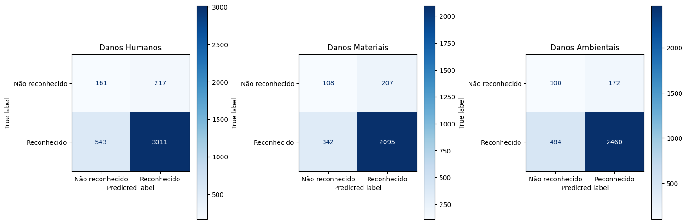

Modelo com balanceamento#
Bibliotecas#
Show code cell content
#Bibliotecas
import pandas as pd
import numpy as np
import matplotlib.pyplot as plt
import seaborn as sns
from sklearn import metrics
from sklearn.feature_extraction.text import CountVectorizer
from sklearn.feature_extraction.text import TfidfVectorizer
from sklearn.feature_extraction.text import TfidfTransformer
from sklearn.linear_model import SGDClassifier
from sklearn.pipeline import Pipeline
from sklearn.model_selection import train_test_split
from sklearn.metrics import f1_score
from sklearn.metrics import ConfusionMatrixDisplay
from collections import Counter
import warnings
#Estilizar conteúdo
warnings.filterwarnings('ignore')
pd.set_option('display.max_rows', None)
pd.set_option('display.max_columns', None)
def estilo_tabelas(df, max_altura='300px', casas_decimais=2):
return (
df.style.set_table_styles(
[
{'selector': 'thead th', 'props': [('font-size', '12px'), ('text-align', 'center'), ('border-bottom', '2px solid #007BFF')]},
{'selector': 'td', 'props': [('font-size', '10px'), ('text-align', 'center'), ('max-height', '40px'), ('white-space', 'nowrap'), ('text-overflow', 'ellipsis'), ('overflow', 'hidden'), ('max-width', '100px')]},
{'selector': 'tr:nth-child(odd)', 'props': [('background-color', '#ffffff')]},
{'selector': 'table', 'props': [('width', '90%'), ('margin-left', 'auto'), ('margin-right', 'auto'), ('border-collapse', 'collapse')]},
{'selector': 'td, th', 'props': [('border', '1px solid #666')]},
]
).set_properties(
**{'border-color': 'darkgray', 'border-style': 'solid', 'border-width': '1px'}
).set_table_attributes(
f'style="height:auto; overflow:auto; max-height:{max_altura}; display:block;"'
).format(
precision=casas_decimais
)
)
Base de dados#
Show code cell source
#Leitura da base de dados
object_columns = ['Protocolo_S2iD', 'Nome_Municipio', 'Sigla_UF', 'regiao',
'Setores Censitários', 'Status', 'DH_Descricao', 'DM_Descricao',
'DA_Descricao', 'DA_Polui/cont da água', 'DA_Polui/cont do ar',
'DA_Polui/cont do solo', 'DA_Dimi/exauri hídrico',
"DA_Incêndi parques/APA's/APP's", 'PEPL_Descricao', 'PEPR_Descricao',
'Categoria', 'Grupo', 'Subgrupo', 'Tipo', 'Subtipo']
dtype = {col: 'object' for col in object_columns}
df_eventos = pd.read_csv(
"https://raw.githubusercontent.com/brunagmoura/PrevisorReconhecimento/refs/heads/main/df_eventos_desastres_rec_nrec.csv",
sep=';',
dtype = dtype,
decimal=',',
)
#Selecionar apenas as variáveis textuais
df_eventos = df_eventos[["Status", "DH_Descricao", "DM_Descricao", "DA_Descricao"]]
#Atribuir valor 0 ao status "Não Reconhecido" e 1 ao status "Reconhecido"
df_eventos['Status'] = df_eventos['Status'].map({'Não reconhecido': 0, 'Reconhecido': 1})
#Visualizar amostra de dados
estilo_tabelas(df_eventos.tail(5))
| Status | DH_Descricao | DM_Descricao | DA_Descricao | |
|---|---|---|---|---|
| 26253 | 1 | A seca tem causado interrupções no fornecimento de água potável para a população dos núcleos urbanos e limitações severas no consumo de água nos domicílios situados na zona rural que precisam aguardar um tempo elevado para que a água acumule em cisterna em volume que seja possível bombear. _x000D_ _x000D_ | nan | Redução dos cursos de água e pastagem provocado pela seca. |
| 26254 | 1 | Conforme laudo da assistência social, o desastre Tempestade Local/Convectiva - Vendaval atingiu o município em todo o seu território urbano e rural, afetando diretamente 1.180 famílias, aproximadamente 4.716 pessoas, desse total, aproximadamente 30 pessoas ficaram desalojadas. Ainda dentro desse número de famílias 30 famílias foram diretamente afetadas, sendo aproximadamente 120 pessoas encontram-se em vulnerabilidade social. Todos os afetados tiveram danos em suas residências, em telhados, em muitas delas perdendo móveis, roupas e alimentos. Estradas no interior que ficaram sem condições seguras de trafegabilidade e/ou bloqueadas, conforme constatado pela engenharia. A tempestade que atingiu o município afetou as famílias também com a falta de energia elétrica e consequentemente de água, sendo restabelecida em todo o território do município somente no dia 02 de Janeiro. | Conforme laudo da engenharia o evento vendaval causou danos em aproximadamente 30 unidades habitacionais, 01 instalação pública de saúde, uma de ensino e ainda nas estradas rurais do município. | Os danos ambientais recorrem da grande quantidade de lixo produzido pela quebra das telhas de fibrocimento e queda de árvores. |
| 26255 | 1 | Conforme laudo da assistência social, 20 famílias, 80 pessoas ficaram desalojadas devido destelhamento das suas residências, sendo que três moradias teve todo telhado arrancado, com tesouras e forro. No total foram 276 unidades habitacionais danificadas conforme laudo da engenharia. Ainda conforme laudo da Emater em anexo, houve prejuízos na pecuária que chegam ao valor de R$ 132.000,00. | Conforme laudo da engenharia foram danificadas 276 unidades habitacionais, 07 instalações públicas de ensino sofreram destelhamento devidos aos fortes ventos. | Os danos ambientais recorrem da grande quantidade de lixo produzido pelas quebra das telhas de fibrocimento e quedas de inúmeras árvores. |
| 26256 | 1 | As pessoas atingidas, tiveram os telhados de suas residências danificados, moveis molhados, sendo necessário cobrir com lonas, totalizando num total de 300 pessoas atingidas diretamente, de acordo com o laudo da assistência social. | De acordo com o laudo da engenharia civil, houve um total de 75 unidades habitacionais atingidas, totalizando um dano estimado de R$120.583,50. Além disso, foi registrado danos causados em prédios públicos, como postos de saúde, escolas, secretarias, totalizando um valor estimado de R$106.834,65. | nan |
| 26257 | 1 | Toda a população do Município foi afetada direta ou indiretamente pelo evento adverso do dia 29 de dezembro de 2023, devido aos fortes ventos em todo teritório do Município de Ubiretama, que causaram vários destelhamentos em residências e prédios públicos, queda de galhos e árvores sobre as vias municipais, assim dificultando a locomoção das pessoas, bem como interrupçao de fornecimento de energia elétrica, sendo que todo município de Ubiretama está sem energia elétrica até o momento, o que pode perdurar por vários dias inclusive. | Várias residências afetadas, causando um valor aproximado de R$ 10.000,00(dez mil reais), e a quadra de futebol society, que foi teve a cobertura totalmente destruída, em razão dos fortes ventos, causando um prejuízo aproximado de R$ 250.000,00(duzentos e cinquenta mil reais), de acordo com o Relatório do Engenheiro Civil. | nan |
Por haver muitos dados ausentes (conforme capítulo “Análise exploratória dos dados”) e não necessariamente haver coincidência sobre em quais descrições estarão os dados ausentes, vamos separar as bases de dados para as descrições que se referem aos danos humanos, aos danos materiais e aos danos ambientais.
Show code cell source
df_DH_Descricao = df_eventos[['Status', 'DH_Descricao']].dropna(subset=['Status', 'DH_Descricao'])
df_DM_Descricao = df_eventos[['Status', 'DM_Descricao']].dropna(subset=['Status', 'DM_Descricao'])
df_DA_Descricao = df_eventos[['Status', 'DA_Descricao']].dropna(subset=['Status', 'DA_Descricao'])
print('Dimensões das bases de dados: \n')
print('Descrição dos danos humanos:', df_DH_Descricao.shape)
print('Descrição dos danos materiais:',df_DM_Descricao.shape)
print('Descrição dos danos ambientais:',df_DA_Descricao.shape)
Dimensões das bases de dados:
Descrição dos danos humanos: (19656, 2)
Descrição dos danos materiais: (13756, 2)
Descrição dos danos ambientais: (16078, 2)
Verificar o balanceamento das classes#
Show code cell source
print('Balanceamento das classes: \n')
print('Balanceamento em "danos humanos:', df_DH_Descricao['Status'].value_counts())
print('Balanceamento em "danos materiais:', df_DM_Descricao['Status'].value_counts())
print('Balanceamento em "danos ambientais:', df_DA_Descricao['Status'].value_counts())
Balanceamento das classes:
Balanceamento em "danos humanos: Status
1 17764
0 1892
Name: count, dtype: int64
Balanceamento em "danos materiais: Status
1 12181
0 1575
Name: count, dtype: int64
Balanceamento em "danos ambientais: Status
1 14719
0 1359
Name: count, dtype: int64
As classes estão desbalanceadas nas três bases de dados (descrição de danos humanos, descrição de danos materiais e descrição de danos ambientais). Em todas as bases, a classe “Reconhecido” (1) é mais proemiente do que a classe “Não reconhecido” (0).
Para resolver este problema, inicialmente vamos utilizar a métrica “f1 score” para comprar os resultados.
Modelo para “Descrição de danos humanos”#
Treino e teste#
Show code cell source
X_train_humanos, X_test_humanos, y_train_humanos, y_test_humanos = train_test_split(df_DH_Descricao['DH_Descricao'], df_DH_Descricao['Status'], test_size=0.2, random_state=1, stratify=df_DH_Descricao['Status'])
print('Exemplo de texto descritivo em danos humanos:\n', X_train_humanos[9788])
Exemplo de texto descritivo em danos humanos:
Como consequência da estiagem o município tem sido bastante afetado principalmente no que diz respeito à prejuízos na agricultura de subsistência, pecuária e a falta de água potável para consumo humano.
Instanciamento do modelo e treinamento do classificador#
Show code cell source
# Instanciamento do transform CountVectorizer
tfidf_vectorizer_humanos = TfidfVectorizer()
# Tokenização e criação do vocabulário
tfidf_vectorizer_humanos.fit(X_train_humanos)
print('Vocabulário para danos humanos: ')
print(tfidf_vectorizer_humanos.vocabulary_)
Vocabulário para danos humanos:
{'enfermos': 12786, 'estão': 13501, 'pessoas': 21352, 'em': 12529, 'todas': 26433, 'as': 6225, 'faixas': 13874, 'etárias': 13532, 'principalmente': 22320, 'idosos': 15764, 'crianças': 10374, 'especiais': 13173, 'que': 22869, 'precisaram': 22097, 'ser': 24916, 'atendidas': 6410, 'no': 19813, 'hospital': 15624, 'local': 17911, 'postos': 21952, 'de': 10745, 'saúde': 24648, 'fato': 13979, 'se': 24681, 'dá': 12264, 'decorrência': 10810, 'ação': 6768, 'da': 10633, 'cheia': 8822, 'desabrigados': 11120, 'morando': 19233, 'alugueis': 5360, 'sociais': 25289, 'abrigadas': 4317, 'escolas': 13107, 'outros': 20435, 'prédios': 22666, 'públicos': 22807, 'desalojados': 11156, 'aqueles': 5925, 'casa': 8400, 'parentes': 20740, 'amigos': 5504, 'sendo': 24862, 'pelos': 21035, 'serviços': 25002, 'municipal': 19443, 'afetados': 4806, 'tiveram': 26402, 'suas': 25514, 'casas': 8412, 'atingidas': 6455, 'porém': 21888, 'com': 9278, 'construção': 9859, 'trapiches': 26736, 'elevação': 12484, 'do': 12085, 'assoalho': 6332, 'das': 10721, 'preferem': 22141, 'permanecer': 21215, 'residências': 23790, 'população': 21830, 'afetada': 4798, 'direta': 11869, 'indiretamente': 16169, 'pelo': 21033, 'desabastecimento': 11106, 'água': 28142, 'potável': 21982, 'perdas': 21129, 'na': 19568, 'agricultura': 4951, 'pecuária': 20951, 'descrição': 11283, 'dos': 12183, 'danos': 10694, 'humanos': 15672, 'atingido': 6457, 'pela': 21019, 'erosão': 13021, 'costeira': 10262, 'trata': 26753, 'orla': 20361, 'praia': 22039, 'central': 8684, 'onde': 20245, 'atividades': 6489, 'lazer': 17637, 'turismo': 26978, 'são': 25843, 'realizadas': 23142, 'tanto': 25985, 'baixa': 6829, 'quanto': 22846, 'alta': 5313, 'temporada': 26144, 'entorno': 12867, 'residem': 23764, 'cerca': 8698, '2800': 1738, 'inibido': 16337, 'tráfego': 26907, 'rua': 24255, 'josé': 17255, 'temístocles': 26163, 'macedo': 18147, 'face': 13853, 'risco': 24082, 'iminente': 15861, 'motivo': 19316, 'qual': 22822, 'ações': 6771, 'equipes': 12991, 'coordenadas': 10099, 'defesa': 10838, 'civil': 9005, 'bloquearam': 7316, 'mesma': 18854, 'entre': 12884, 'getúlio': 15010, 'vargas': 27368, '1900': 1111, 'como': 9348, 'medida': 18730, 'preventiva': 22270, 'além': 5391, 'alerta': 5185, 'sinalização': 25146, 'monitoramento': 19164, 'poder': 21710, 'público': 22805, 'período': 21312, 'verão': 27580, 'cidade': 8905, 'recebe': 23210, '150': 766, '000': 1, 'turistas': 26980, 'esta': 13280, 'matriz': 18650, 'econômica': 12314, 'condição': 9604, 'orçamentária': 20379, 'município': 19457, 'pode': 21704, 'comprometer': 9457, 'promoção': 22500, 'recuperação': 23313, 'faz': 14002, 'necessária': 19693, 'até': 6579, 'veraneio': 27517, 'conforme': 9653, 'dados': 10639, 'pesquisa': 21337, 'demanda': 10928, 'turística': 26995, 'costa': 10258, 'verde': 27530, 'mar': 18414, 'realizada': 23141, 'citmar': 8998, '2018': 1244, '2019': 1245, 'cada': 7746, 'grupo': 15244, 'familiar': 13920, 'gasta': 14869, 'média': 19532, 'por': 21839, 'dia': 11710, '781': 3607, '25': 1564, 'imprescindível': 15979, 'reestruturação': 23370, 'área': 28156, 'degradada': 10870, 'evento': 13574, 'ocorrem': 20100, 'durante': 12245, 'envolve': 12936, 'grande': 15173, 'parcela': 20707, 'comunidade': 9514, 'prejudicadas': 22154, '_x000d_': 4187, 'entendeu': 12856, 'prejuízo': 22178, 'afeta': 4797, 'os': 20381, 'habitantes': 15399, 'um': 27093, 'todo': 26436, '22': 1387, '500': 2722, 'hab': 15388, 'atividade': 6488, 'bem': 7142, 'mil': 18934, 'deixarão': 10894, 'usufruir': 27234, 'destruição': 11602, 'insegurança': 16376, 'atual': 6558, 'quadro': 22817, 'cidadão': 8910, 'sofreu': 25348, 'ferimentos': 14107, 'leves': 17758, 'ao': 5744, 'cair': 7814, 'bicicleta': 7264, 'transitando': 26683, 'via': 27609, 'inundada': 16635, 'pelas': 21023, 'ondas': 20244, 'não': 19964, 'foi': 14364, 'necessário': 19695, 'suporte': 25721, 'médico': 19538, 'atendido': 6412, 'kit': 17400, 'primeiros': 22305, 'socorros': 25328, 'uma': 27095, 'pessoa': 21348, 'conseguiu': 9735, 'acessar': 4450, 'seu': 25034, 'imóvel': 16016, 'sito': 25202, 'avenida': 6712, '1027': 258, 'centro': 8688, 'balneário': 6871, 'piçarras': 21602, 'pois': 21735, 'entrada': 12871, 'mesmo': 18858, 'era': 12998, 'estava': 13339, 'interditada': 16509, 'mas': 18588, 'necessitou': 19690, 'acolhimento': 4501, 'possui': 21926, 'família': 13936, 'nesta': 19761, 'ainda': 5049, 'relatório': 23554, 'anexo': 5612, 'profissional': 22433, 'assistência': 6321, 'social': 25290, 'assim': 6283, 'observou': 20032, 'tais': 25929, 'situações': 25217, '72': 3427, 'horas': 15584, 'segurança': 24786, 'global': 15066, 'resposta': 23845, 'afetadas': 4802, 'referentes': 23388, 'famílias': 13939, 'rural': 24292, 'falta': 13894, 'emprego': 12636, 'diversos': 12023, 'setores': 25028, 'dependentes': 11027, 'sobretudo': 25269, 'setor': 25027, 'primário': 22312, 'dentre': 10995, 'advindos': 4753, 'seca': 24695, 'necessidade': 19665, 'abastecimento': 4253, 'urbana': 27161, 'totalizando': 26555, '20': 1211, 'propriedades': 22541, 'este': 13344, 'número': 19978, 'saltou': 24461, '12': 469, 'para': 20622, '52': 2794, 'mês': 19547, 'setembro': 25021, 'apoio': 5807, 'alimentação': 5253, 'gado': 14755, '65': 3213, 'propriedades_x000d_': 22542, 'pescadores': 21322, 'economia': 12301, 'reduzida': 23347, '67': 3271, 'cadastrados': 7750, 'nas': 19604, 'associações': 6340, 'existem': 13696, 'apenas': 5780, 'colônias': 9277, 'z20': 28058, 'z21': 28059, 'itaperuna': 16913, 'fidélis': 14197, 'agricultores': 4949, 'pecuaristas': 20945, '898': 3921, 'acordo': 4561, 'emater': 12541, 'há': 15680, 'indicadores': 16149, 'maior': 18212, 'alunos': 5367, 'sem': 24810, 'aulas': 6592, 'dias': 11747, '500_x000d_': 2725, 'secretaria': 24712, '310': 1938, '930': 4009, 'atendida': 6408, 'operação': 20276, 'carro': 8375, 'pipa': 21496, 'zona': 28112, 'dependem': 11022, 'seguro': 24791, 'garantia': 14823, 'safra': 24386, 'cestas': 8746, 'básicas': 7662, 'consumo': 9888, 'humano': 15670, 'grãos': 15255, 'insumos': 16450, 'laudo': 17599, 'assistente': 6308, '34': 2076, '558': 2916, 'sofrem': 25339, 'racionamento': 23018, 'efeitos': 12372, 'estiagem': 13368, 'ou': 20411, 'necessitando': 19676, 'auxilio': 6665, 'prefeitura': 22138, 'subsistência': 25578, 'desastre': 11194, 'haja': 15423, 'vista': 27781, 'vive_x000d_': 27832, 'praticamente': 22056, 'tivera': 26401, 'elevados': 12478, 'índices': 28202, 'perdas_x000d_': 21130, 'relação': 23559, 'aos': 5747, 'provocados': 22632, 'nosso': 19874, 'declaro': 10785, 'bonito': 7400, 'minas': 18966, 'mg': 18898, 'quantidade': 22832, 'total': 26542, '1500': 767, 'encontram': 12729, 'situação': 25215, 'vulnerabilidade': 27933, 'causadas': 8534, 'fenômeno': 14091, 'vem': 27461, 'afetando': 4813, 'maioria': 18215, 'cidades': 8907, 'norte': 19867, '2023': 1254, '1200': 471, 'recurso': 23317, 'próprio': 22677, '300': 1864, 'necessitam': 19673, 'toda': 26430, 'comunidades': 9516, 'parte': 20770, 'compreendendo': 9442, 'bairros': 6825, 'roque': 24189, 'santa': 24532, 'lúcia': 18126, 'bella': 7127, 'sete': 25018, 'comunicações': 9512, 'distrito': 11996, 'industrial': 16200, '900': 3932, 'escassez': 13074, 'atinge': 6448, '280': 1737, 'correspondente': 10199, '49': 2674, 'depende': 11021, 'atingiu': 6473, 'seguintes': 24773, 'queimadas_x000d_': 22895, '14': 672, '5487_x000d_': 2886, '15': 765, '64': 3179, '11452_x000d_': 413, 'acima': 4474, 'anos': 5672, '1578_x000d_': 835, 'gestante': 14999, '288_x000d_': 1788, '18805_x000d_': 1091, 'abrigos': 4333, 'três': 26918, 'distintas': 11971, 'informações': 16287, 'levantadas': 17734, 'alojadas': 5297, 'familiares': 13921, 'voluntários': 27914, 'foram': 14398, '400': 2329, 'vila': 27678, 'conceição': 9540, 'energia': 12766, 'elétrica': 12521, 'mais': 18219, '93': 4008, 'seus': 25038, 'móveis': 19557, 'dar': 10710, 'ter': 26210, 'adentrado': 4640, 'dentro': 10997, 'reis': 23514, 'moravam': 19240, 'telhado': 26117, '70': 3369, 'danificado': 10676, 'outra': 20427, 'eduardo': 12350, 'damião': 10661, 'portela': 21872, 'teve': 26285, 'parcialmente': 20714, 'destruído': 11608, 'afetou': 4830, 'area': 6019, 'técnico': 27018, '11': 361, '700': 3370, 'zonas': 28116, 'urbanas': 27164, 'estás': 13497, 'expostas': 13753, 'diversas': 12018, 'agua': 5001, 'animal': 5648, 'desemprego': 11310, 'migração': 18929, '465_x000d_': 2588, '201_x000d_': 1246, '169_x000d_': 931, 'gestantes': 15000, '37_x000d_': 2242, '872_x000d_': 3860, 'segundo': 24781, 'senso': 24876, 'ibge': 15703, '2010': 1232, 'já': 17361, 'totalizadas': 26549, '729': 3454, 'corresponde': 10196, 'aproximadamente': 5883, '645': 3198, 'adultos': 4736, 'tendo': 26174, 'através': 6537, 'efetuado': 12387, 'gasto': 14871, '597': 3030, '430': 2461, 'aquisição': 5936, 'medicamento': 18719, 'combustível': 9296, 'gasolina': 14865, 'diesel': 11761, 'óleo': 28226, 'lubrificante': 18038, 'aluguem': 5363, 'transporte': 26721, 'barco': 6951, 'lancha': 17545, 'profissionais': 22431, 'envolvidos': 12943, 'obs': 20018, 'fossas': 14493, 'poços': 22019, 'ficam': 14171, 'todos': 26439, 'fundo': 14683, 'subida': 25530, 'contaminação': 9924, 'alagadas': 5085, 'ex': 13606, 'estamos': 13318, 'vários': 27954, 'casos': 8434, 'diarreia': 11742, 'vômitos': 27975, 'próximos': 22682, '264': 1644, 'enxurrada': 12954, 'perda': 21127, 'mobilidade': 19065, 'enquanto': 12839, 'durou': 12251, 'após': 5915, 'restabelecimento': 23877, 'cenário': 8693, 'disto': 11974, '10': 216, 'desalojadas': 11153, 'alocadas': 5286, '230': 1445, 'veranistas': 27522, 'final': 14229, 'semana': 24816, 'retornaram': 23968, 'origem': 20346, 'ferido': 14103, 'traumatismo': 26776, 'craniano': 10323, 'encefálico_x000d_': 12688, 'nome': 19832, 'darci': 10713, 'gaspar_x000d_': 14867, 'endereço': 12755, 'antonio': 5718, 'manoel': 18351, 'santana': 24536, 'sn_x000d_': 25245, 'resumo': 23926, 'queda': 22883, 'escada': 13052, 'ester': 13360, 'anacleto_x000d_': 5549, 'pa': 20458, '101': 235, 'km': 17406, '107': 314, 'lesão': 17717, 'testa': 26274, 'telha': 26116, 'cerâmica': 8734, 'pequeno': 21083, 'fcc': 14018, 'ferimento': 14106, 'corto': 10239, 'contuso': 10052, 'região': 23475, 'frontal': 14621, 'messias': 18863, 'felix': 14069, 'souza': 25475, 'etelvina': 13521, 'trizante': 26875, '67_x000d_': 3299, 'supercílio': 25691, 'direito': 11866, 'sutura': 25824, 'sandra': 24511, 'aparecida': 5765, 'gispiela_x000d_': 15054, 'nacle': 19572, 'francisco': 14536, '308': 1912, 'centro_x000d_': 8689, 'dor': 12164, 'edema': 12326, 'tornozelo': 26519, 'rx': 24312, 'tornozelo_x000d_': 26520, 'sobre': 25258, 'consta': 9810, 'coberturas': 9116, 'danificadas': 10674, 'severamente': 25041, 'estes': 13362, 'valeram': 27321, 'abrigamento': 4321, 'vizinhos': 27866, 'recomposição': 23268, 'habitações': 15408, 'problemas': 22358, 'causados': 8537, 'vêm': 27963, 'agravando': 4919, 'prognósticos': 22445, 'climáticos': 9065, 'meses': 18852, 'tende': 26167, 'piorar': 21490, 'desse': 11522, 'modo': 19107, 'reservatório': 23740, 'sua': 25512, 'capacidade': 8113, 'hídrica': 15687, 'comprometida': 9462, 'isso': 16851, 'tendência': 26176, 'agravamento': 4917, 'deste': 11552, 'dessa': 11515, 'forma': 14410, 'aumentar': 6600, 'nos': 19869, '520': 2795, 'mananciais': 18269, '974': 4113, 'precária': 22112, 'estradas': 13425, 'deslizamentos': 11406, 'quedas': 22885, 'barreiras': 6984, 'comprometimento': 9467, 'pontes': 21793, 'pontilhões': 21798, '09': 192, 'unidade': 27131, 'produção': 22421, 'leite': 17664, 'vento': 27507, 'forte': 14476, 'localizado': 17921, 'opção': 20301, 'longo': 17986, 'causando': 8540, 'diz': 12056, 'respeito': 23824, 'transtornos': 26728, 'causado': 8535, 'meio': 18744, 'sede': 24738, 'outras': 20428, 'regiões': 23476, 'vez': 27601, 'mesmas': 18856, 'tem': 26122, 'dessedentação': 11527, 'humana': 15660, 'cutivos': 10591, 'gerais': 14956, 'estrutura': 13460, 'levar': 17748, 'às': 28138, '600': 3049, '410': 2376, 'residente': 23771, 'campos': 7997, 'refere': 23376, 'citadas': 8990, 'item': 16950, 'possuem': 21925, 'houve': 15639, 'lavouras': 17624, 'também': 25962, 'animais': 5646, 'diminuição': 11834, 'mortes': 19283, 'vendas': 27476, 'abaixo': 4208, 'preço': 22291, 'prejudicando': 22161, 'qualidade': 22823, 'vida': 27645, 'sustentada': 25812, '355': 2138, '200': 1212, '1700': 940, 'faixa': 13873, 'etária': 13530, 'soledade_x000d_': 25370, '176_x000d_': 1002, '803_x000d_': 3663, '488_x000d_': 2664, '272_x000d_': 1696, '17739_x000d_': 1006, '4235': 2429, '16900': 924, 'recorrentes': 23289, 'chuvas': 8874, 'assolaram': 6350, 'causaram': 8543, 'interdições': 16524, 'vias': 27626, 'interrompendo': 16573, 'trânsito': 26914, 'pontos': 21801, 'interdição': 16523, 'avenidas': 6713, 'comprometendo': 9456, 'essências': 13278, 'entres': 12896, 'eles': 12442, 'marginal': 18486, 'rio': 24072, 'paraíba': 20701, '776': 3594, 'têm': 27026, 'fazer': 14011, 'volta': 27883, 'aproximada': 5882, '18': 1031, 'moram': 19232, 'utilizar': 27257, 'fins': 14255, 'acabaram': 4370, 'devido': 11693, 'feita': 14053, '02': 55, 'imóveis': 16015, 'cabeceira': 7693, 'ponte': 21790, 'outro': 20432, 'deslizamento': 11404, 'terra': 26248, 'várias': 27952, 'ficaram': 14178, 'ilhadas': 15806, 'transbordamento': 26652, 'bocaina': 7339, 'principais': 22316, 'acesso': 4455, 'interrupção': 16586, 'escoamento': 13097, 'mineradora': 18975, 'produções': 22424, 'agropecuárias': 4985, 'suspensas': 25799, 'condições': 9605, 'dificuldade': 11775, 'trabalhadores': 26584, 'fazendas': 14006, 'sítios': 25866, 'devidos': 11695, 'provenientes': 22591, 'ingestão': 16316, 'imprópria': 15998, 'alimentos': 5259, 'básicos': 7664, 'rurais': 24290, 'acarretando': 4404, 'a_x000d_': 4190, 'enfermidade': 12783, 'doenças': 12112, 'respiratórias': 23832, 'virtude': 27751, 'clima': 9052, 'seco': 24709, 'umidade': 27116, 'relativa': 23542, 'do_x000d_': 12086, 'ar': 5942, 'decorrências': 10811, 'ocorridas': 20114, 'jaguaraçu': 17055, 'temporariamente': 26151, '85': 3801, 'desabrigadas': 11117, 'realocados': 23168, 'abrigo': 4331, 'feridos': 14104, 'sofreram': 25344, 'lesões': 17718, 'cortes': 10235, '07': 152, 'alteração': 5327, 'pressão': 22239, 'arterial': 6182, 'crise': 10396, 'convulsiva': 10087, 'estado': 13307, 'choque': 8852, 'ansiedade': 5683, '1622': 879, 'interrupções': 16587, 'obstruções': 20042, 'inundações': 16646, '01': 33, 'composta': 9426, '03': 74, 'ficou': 14191, 'desabrigada': 11116, 'dependeu': 11034, 'exclusivamente': 13655, 'temporário': 26159, 'alojarem': 5305, '116': 428, '41': 2375, 'cujas': 10491, 'hospedaram': 15620, 'orientados': 20335, 'auxiliados': 6658, 'bombeiros': 7386, 'membros': 18776, 'geral': 14958, 'disso': 11959, 'vitimadas': 27807, 'moradores': 19223, 'ilhados': 15808, 'residirem': 23783, 'próximo': 22681, 'áreas': 28158, 'inundadas': 16636, 'privado': 22347, 'particular': 20780, 'deslocar': 11423, 'trabalho': 26593, 'encobertas': 12715, 'aterrado': 6429, 'alto': 5341, 'cristóvão': 10413, 'ruas': 24260, 'osvaldo': 20396, 'aranha': 5962, 'xv': 28047, 'novembro': 19911, 'saudades': 24619, 'divisas': 12045, 'domingos': 12138, 'municípios': 19459, 'quilombo': 22941, 'santiago': 24544, 'sul': 25657, 'submersas': 25548, 'deixando': 10887, 'tinham': 26362, 'sido': 25073, 'recuperados': 23308, 'maio': 18211, '2014': 1237, 'uruguai': 27202, 'alagamento': 5092, 'ilha': 15804, 'redonda': 23339, 'retiradas': 23940, 'pertences': 21291, 'ficando': 14174, 'salão': 24481, 'inundação': 16645, 'quatro': 22864, 'locais': 17908, '68': 3300, 'pousada': 21994, 'mercados': 18828, 'camping': 7989, 'barracão': 6967, 'patos': 20861, 'piauí': 21391, 'está': 13490, 'alguma': 5219, 'atingida': 6453, 'uso': 27229, 'produtores': 22405, 'agrícolas': 5000, 'criadores': 10369, 'recursos': 23318, 'hídricos': 15691, 'sobrevivência': 25279, 'levantamento': 17738, 'totalizam': 26552, '3550': 2139, 'básica': 7660, 'adequada': 4650, 'referem': 23377, 'consequência': 9752, 'vinte': 27720, 'unidades': 27132, 'habitacionais': 15393, 'localizadas': 17920, 'desaloamento': 11148, 'sessenta': 25015, 'seiscentos': 24798, 'dez': 11700, 'dois': 12115, 'cem': 8663, 'impedidos': 15900, 'enregar': 12841, 'ovos': 20447, 'identificadas': 15748, 'escoriações': 13115, 'corpo': 10160, 'chuva': 8871, 'residência': 23787, 'estar': 13324, 'abalada': 4212, 'temos': 26131, 'diretamente': 11870, 'residencias': 23770, 'enchente': 12701, 'barreira': 6983, 'mangueira': 18320, 'usina': 27227, 'terezinha': 26233, 'fizeram': 14302, 'algumas': 5220, 'estabelecimentos': 13291, 'comerciais': 9306, 'incapacitados': 16047, 'atender': 6399, 'tornado': 26501, 'indisponível': 16184, 'momento': 19145, 'acontecimento': 4556, 'logo': 17951, 'apos': 5828, 'retirado': 23941, 'entulhos': 12909, 'lama': 17524, 'sofrendo': 25341, 'impossibilitadas': 15955, 'sair': 24404, 'chegar': 8812, 'poís': 22023, 'trafegabilidade': 26609, 'através_x000d_': 6538, 'municipais': 19442, 'excesso': 13648, 'montadas_x000d_': 19183, '456_x000d_': 2560, '039_x000d_': 91, '419_x000d_': 2412, '76_x000d_': 3579, '4990_x000d_': 2710, 'sistema': 25187, 'materiais': 18625, 'afetar': 4815, 'calçadas': 7904, 'pavimentações': 20915, 'drenagens': 12205, 'águas': 28144, 'pluviais': 21662, 'acabam': 4365, 'prejudicar': 22163, 'deslocamento': 11420, 'trafego': 26616, 'automóveis': 6641, 'e_x000d_': 12290, 'caminhões': 7975, 'deterioração': 11647, 'vicinais': 27638, 'beiras': 7114, 'mata': 18612, 'burros': 7634, 'acaba': 4364, 'fazem': 14003, 'destas': 11551, 'infraestruturas': 16299, 'públicas': 22804, 'de_x000d_': 10748, 'escolar': 13104, 'produção_x000d_': 22422, 'agropecuária': 4983, 'neste': 19764, 'sentido': 24883, 'compdec': 9384, 'entende': 12852, 'estimativamente': 13388, 'tenhamos': 26181, 'torno': 26517, 'pelas_x000d_': 21024, 'últimos': 28240, 'potavel': 21959, 'tambem': 25954, 'pecuaria': 20941, 'numero': 19933, 'varias': 27380, 'umarizeiras': 27100, 'encantada': 12678, 'cangati': 8058, 'junco': 17295, 'carneiros': 8328, 'xixa': 28039, 'malhada': 18233, 'irmãos': 16784, 'extrema': 13810, 'baixo': 6847, 'jerimum': 17180, 'ribamar': 24029, 'brandões': 7491, 'cachoeirinha': 7728, '1800': 1033, 'necessita': 19668, 'fornecimento': 14454, 'portável': 21882, 'caminhão': 7973, 'próprios': 22678, 'atende': 6394, 'precariamente': 22071, 'proximamente': 22648, '550': 2893, 'atendimento': 6414, '950': 4059, 'equipamentos': 12989, 'financeiros': 14241, 'muitas': 19393, 'elevar': 12481, 'comprometido': 9465, 'so': 25246, 'consegue': 9713, 'embarcações': 12551, 'pequenas': 21081, 'munícipes': 19472, 'locomovendo': 17937, 'canoas': 8081, 'culturas': 10514, 'referente': 23386, 'usos': 27230, 'secamento': 24701, 'nascentes': 19609, 'pequenos': 21084, 'cursos': 10561, 'sobrevivem': 25272, 'ribeirinhas': 24034, 'rios': 24077, 'geralmente': 14963, 'leitos': 17674, 'leito': 17673, 'menor': 18801, 'escoa': 13092, 'tempo': 26143, 'inundado': 16637, 'impacto': 15888, 'ocorre': 20097, 'porque': 21854, 'ocupa': 20125, 'sujeita': 25649, 'prejuízos': 22180, 'humanas': 15661, 'econômicas': 12315, 'veiculação': 27444, 'leptospirose': 17706, 'cólera': 10618, 'depósitos': 11058, 'material': 18627, 'tóxico': 27040, 'estações': 13343, 'tratamentos': 26760, 'bastassem': 7044, 'traz': 26798, 'recuo': 23303, 'expõe': 13767, 'inúmeras': 16714, 'aumento': 6606, 'incidência': 16074, 'acidentes': 4472, 'afogamentos': 4851, 'ofídicos': 20186, 'corporais': 10161, 'choques': 8853, 'elétricos': 12524, 'proliferação': 22470, 'vetores': 27598, 'ratos': 23101, 'mosquitos': 19298, 'picadas': 21400, 'peçonhentos': 21378, 'aranhas': 5963, 'escorpiões': 13117, 'cobras': 9121, 'contaminada': 9918, 'simples': 25129, 'contato': 9937, 'essa': 13262, 'deslocarem': 11425, 'pegarem': 21002, 'distancia': 11963, 'desgaste_x000d_': 11377, 'físico': 14738, 'abrigados': 4319, 'ginásio': 15040, 'esportes': 13235, 'escola': 13102, 'comunitário': 9524, 'pratas': 22049, 'conta': 9895, 'morram': 19263, 'pastagens': 20834, 'necessidades': 19667, 'supridas': 25740, 'pipas': 21498, 'apesar': 5785, 'estabelecer': 13284, 'física': 14736, 'calçadão': 7909, 'ponta': 21788, 'negra': 19712, 'fatores': 13981, 'atingiram': 6468, 'proprietários': 22549, 'quiosques': 22969, 'informais': 16277, 'vendedores': 27483, 'ambulantes': 5454, 'empresários': 12645, 'segmentos': 24759, 'turísticos': 26998, 'hotéis': 15638, 'pousadas': 21995, 'restaurantes': 23890, 'bares': 6954, 'isolamento': 16841, 'prevenção': 22274, 'riscos': 24084, 'diminuiu': 11831, 'fluxo': 14344, 'consequentemente': 9746, 'produtos': 22406, 'desses': 11531, 'afetado': 4805, 'destes': 11568, 'cozinheiros': 10314, 'locadores': 17905, 'mesas': 18850, 'cadeiras': 7769, 'garçons': 14864, '138': 653, 'relaciona': 23520, 'nova': 19901, 'bandeirantes': 6904, 'muitos': 19397, 'prejudicados': 22157, 'essas': 13264, 'grandes': 15176, 'quantidades': 22834, 'muita': 19392, 'prejudicas': 22166, 'desde': 11288, 'salas': 24415, 'aula': 6591, 'causa': 8532, 'descolamento': 11253, 'formação': 14423, 'atoleiros': 6511, 'destruída': 11605, 'aguentaram': 5024, 'níveis': 19969, 'córregos': 10622, 'perdeu': 21142, 'deslocaram': 11424, 'evacuação': 13559, 'ilhas': 15811, 'marambaia': 18431, 'pimenta': 21433, 'coqueiro': 10126, 'perfazem': 21173, '332': 2046, 'desalojados_x000d_': 11158, 'inundações_x000d_': 16647, 'arão': 6221, '39': 2283, 'pessoas_x000d_': 21353, 'fazenda': 14005, 'vicente': 27632, 'brejinho': 7524, 'contabilizados': 9902, 'assentamento': 6271, 'floresta': 14322, 'viveiros': 27834, 'estrada': 13422, 'vicinal': 27640, 'passagem': 20807, '87': 3853, 'urbana_x000d_': 27162, 'saturadas': 24612, 'chuvas_x000d_': 8875, 'sagrada': 24393, 'familia': 13917, '485': 2650, 'bom': 7379, 'jesus': 17187, 'nossa': 19871, 'senhora': 24867, '370': 2201, 'palmeira_x000d_': 20567, '1274_x000d_': 548, '2658_x000d_': 1653, '366_x000d_': 2188, '4365_x000d_': 2484, 'adverso': 4747, 'havido': 15445, 'assola': 6341, 'interior': 16538, 'fortemente': 14478, 'soja': 25357, 'milho': 18944, 'feijão': 14045, 'erva': 13032, 'mate': 18620, 'pastagem': 20833, 'reflete': 23404, 'bacia': 6792, 'leiteira': 17666, 'terão': 26267, 'dessas': 11518, 'subsistem': 25575, 'primária': 22311, 'reflexos': 23416, 'serão': 25007, 'sentidos': 24884, 'normalidade': 19850, 'lucros': 18059, 'reduzidos': 23350, 'significativa': 25088, 'vai': 27298, 'representar': 23702, 'incertezas': 16061, 'futuras': 14712, 'ocorrido': 20115, 'embarcação': 12550, 'seis': 24796, 'tripulantes': 26865, 'naufragou': 19635, 'vindo': 27703, 'colidir': 9232, 'banco': 6897, 'areia': 6026, 'marinha': 18510, 'ocasionando': 20077, 'vitima': 27806, 'fatal': 13975, 'estima': 13374, '350': 2115, 'deixam': 10886, 'resultando': 23914, 'numa': 19930, 'produtiva': 22395, 'ociosa': 20091, 'geram': 14964, 'empregos': 12637, 'envolvem': 12937, 'peixarias': 21011, 'agroindustriais': 4968, 'estaleiros': 13316, 'artesanais': 6185, 'redeiros': 23329, 'camadas': 7918, 'agentes': 4877, 'pesqueiro': 21335, 'publica': 22714, 'areas': 6022, 'plantio': 21637, 'familias': 13923, 'vivem': 27835, 'prestam': 22248, 'hidrográfica': 15514, 'juruá': 17333, 'apresentando': 5850, 'elevações': 12485, 'cota': 10274, 'transbordo': 26660, 'onde_x000d_': 20246, 'afluentes': 4844, 'registraram': 23468, 'cotas': 10275, 'nível': 19970, 'perímetro': 21309, 'urbano': 27169, 'vem_x000d_': 27462, 'desabrigando': 11125, 'desalojando': 11162, 'centenas': 8678, 'encaminhados': 12664, 'estaduais': 13310, 'complexos': 9406, 'sendo_x000d_': 24864, 'encaminhadas': 12662, 'aluguel': 5361, 'testarem': 26275, 'positivo': 21896, 'covid': 10302, '19': 1109, 'encaminhada': 12661, 'especifico': 13190, 'povoados': 22005, 'olho': 20214, 'zacarias': 28065, 'pontal': 21789, 'lagoa': 17493, 'arroz': 6172, 'pedra': 20977, 'taboca': 25892, 'maria': 18488, 'preta': 22260, 'joaquim': 17209, 'ii': 15796, 'santo': 24548, 'canas': 8028, 'jaqueira': 17120, 'tamburil': 25960, 'quadros': 22818, 'félix': 14729, 'sapucaia': 24572, 'filomena': 14224, 'jardim': 17127, 'cortadas': 10225, 'isolando': 16844, 'ocorreram': 20105, 'rompimento': 24177, 'açude': 6764, 'porte': 21867, 'povoado': 22003, 'campo': 7993, 'bairro': 6823, 'novo': 19918, 'joão': 17264, 'margem': 18484, 'riacho': 24023, 'buriti': 7627, 'diretos': 11880, 'indiretos': 16175, 'presente': 22228, '850': 3802, 'assistidas': 6312, 'diariamente': 11738, 'impactando': 15882, 'base': 7020, 'agro': 4963, 'contribuindo': 10034, 'aumente': 6605, '50': 2721, 'tenham': 26180, 'paranatinga': 20673, '80': 3650, 'deixaram': 10890, 'lares': 17571, 'procurando': 22382, 'encontrando': 12733, '2280': 1432, 'fortes': 14479, 'caern': 7779, 'reduzido': 23349, 'insuficiente': 16441, 'da_x000d_': 10634, 'adutora': 4738, 'serra': 24951, 'barragem': 6969, 'armando': 6075, 'ribeiro': 24038, 'encontrava': 12739, 'volume': 27904, 'muito': 19395, 'desviada': 11618, 'currais': 10554, 'novos': 19919, 'lençol': 17691, 'freático': 14598, 'tubulares': 26931, 'secos': 24710, 'prejudicada': 22152, 'miguel': 18931, 'taipu_x000d_': 25928, '085_x000d_': 183, '265_x000d_': 1655, '312_x000d_': 1955, '57_x000d_': 2980, '3719_x000d_': 2206, 'percas': 21099, 'agrícola': 4998, 'redução': 23358, 'abastecem': 4240, 'intervenção': 16597, 'tocante': 26421, 'distribuição': 11988, 'ás': 28170, 'bejú': 7116, 'pac': 20460, '283': 1757, '17000': 941, 'terem': 26223, 'mudado': 19376, 'itinerário': 16956, 'costume': 10268, '8174': 3705, 'restrição': 23907, '94': 4035, 'elas': 12426, 'abastecida': 4247, 'enxurradas': 12956, 'obrigando': 20010, 'deixarem': 10891, 'emocional': 12608, 'bastante': 7041, 'refletida': 23407, 'expressões': 13766, 'desespero': 11353, 'vivenciada': 27839, 'moveis': 19340, 'eletrodomésticos': 12460, 'roupas': 24241, 'estando': 13320, 'abaladas': 4213, 'psicologicamente': 22690, 'intimidade': 16603, 'dignidade': 11807, 'considerando': 9779, 'provisórias': 22622, 'preenchimento': 22135, 'formulários': 14437, 'identificação': 15758, 'desastres': 11196, 'fide': 14194, 'natural': 19629, 'hidrometeorológico': 15520, 'intensas': 16482, 'fomentando': 14378, 'atingidos': 6458, 'consubstancialmente': 9868, 'submersos': 25550, 'corroborando': 10216, 'previsões': 22288, 'precipitações': 22085, 'contínuas': 10057, 'imediatos': 15843, 'informo': 16289, 'detalhado': 11626, 'será': 25006, 'atualizado': 6560, 'oportuno': 20288, 'atualmente': 6568, '650': 3214, '1000': 218, 'acrísio': 4585, 'rutilante': 24308, 'lisboa': 17869, 'cavalcanti': 8556, 'riachinho': 24022, 'horta': 15592, 'comunitária': 9522, 'abastecido': 4249, 'municipio': 19447, 'precisando': 22094, 'ajuda': 5062, 'governo': 15137, 'federal': 14039, 'estadual': 13311, 'contratação': 10023, 'carros': 8377, 'criado': 10367, 'cemei': 8667, 'dimas': 11816, 'fidelis': 14196, 'abrigar': 4324, 'departamento': 11015, 'obras': 20001, 'disponibilizou': 11932, 'máquinas': 19516, 'remoção': 23607, 'localizados': 17922, 'mancha': 18276, 'seguros': 24792, 'juntamente': 17309, 'ofereceu': 20156, 'encontra': 12724, 'pouca': 21987, 'oferta': 20163, 'riachos': 24025, 'ocasionam': 20076, 'renda': 23620, 'êxodo': 28194, 'preto': 22264, 'muriaé': 19479, 'glória': 15073, '165': 895, 'preferiram': 22143, 'esse': 13267, 'destino': 11580, 'possibilidade': 21907, 'ofertado': 20167, 'visita': 27766, 'residentes': 23773, 'próximas': 22680, 'margens': 18485, 'barra': 6961, 'prainha': 22041, 'cirilo': 8968, 'moradoras': 19222, 'distríto': 12004, 'itamuri': 16899, '1450': 722, 'impossibilidade': 15952, 'transitar': 26684, 'alguns': 5222, 'distritos': 11997, 'seja': 24800, 'comercial': 9307, 'pessoal': 21350, 'escorregamentos': 13120, 'pontuais': 21803, 'taludes': 25937, 'considerado': 9772, 'importante': 15942, 'polo': 21755, 'hortifrutigranjeira': 15602, 'bahia': 6809, 'elevado': 12477, 'afetaram': 4817, 'terceira': 26213, 'menos': 18803, 'noventa': 19917, 'provocaram': 22636, 'alagamentos': 5094, 'veículos': 27606, 'incolumidade': 16098, 'computadas': 9486, 'aquelas': 5923, 'dificuldades': 11777, 'ocasionados': 20075, 'contínua': 10056, 'agravante': 4920, 'captação': 8182, 'estação': 13342, 'tratamento': 26759, 'exauriu': 13631, 'totalmente': 26564, 'assistido': 6313, '2013': 1236, 'exército': 13819, 'brasileiro': 7501, 'mostrando': 19305, 'agrava': 4911, 'ano': 5662, 'comprovado': 9475, 'decretos': 10818, 'consecutivos': 9711, 'anuais': 5732, 'decorrentes': 10802, 'implicaram': 15932, 'administrativa': 4683, 'implica': 15929, 'complementar': 9394, '014': 41, '202': 1247, 'acomodarem': 4521, 'quais': 22819, 'procuraram': 22385, '742': 3493, 'estas': 13333, 'crônicas': 10465, 'ocasionou': 20086, 'medicamentos': 18720, 'essenciais': 13270, 'diários': 12073, 'obtiveram': 20061, 'pública': 22802, 'perderam': 21136, 'levadas': 17726, 'ressalto': 23858, 'números': 19979, 'relatórios': 23556, '23': 1444, '24': 1502, 'dezembro': 11702, '2021': 1250, 'podendo': 21709, 'crescer': 10358, 'fim': 14226, 'visto': 27785, 'data': 10729, 'nem': 19729, 'início': 16710, 'tubulação': 26932, 'existente': 13699, 'antiga': 5707, 'obrigados': 20008, 'desabrigar': 11126, 'indícios': 16205, 'desabarem': 11099, 'atendimentos': 6416, 'procura': 22378, 'aqui': 5926, 'assistindo': 6316, 'seguimentos': 24770, 'gerando': 14965, 'índice': 28200, 'criação': 10384, 'dinheiro': 11845, 'comprar': 9437, 'dependendo': 11025, 'publico': 22725, '98': 4126, 'recebendo': 23213, 'auxílio': 6667, 'melhorias': 18767, 'rede': 23325, 'apontadas': 5815, 'tabela': 25889, '250': 1565, 'agricultoras': 4948, 'cultura': 10511, 'corrente': 10185, 'plantaram': 21630, '30': 1863, '75': 3521, 'mesmos': 18859, '95': 4058, 'produtoras': 22404, 'uva': 27272, 'impediu': 15908, 'fecundação': 14036, 'cachos': 7733, 'parreiras': 20768, 'trazendo': 26801, '60': 3048, 'trigo': 26847, '13': 585, 'quase': 22859, '100': 217, 'apodreceu': 5801, 'cereal': 8709, '109': 333, '27': 1681, 'ramo': 23065, 'leiteiro': 17668, 'perdidas': 21144, 'fonte': 14387, 'pecuário': 20954, 'secando': 24702, 'artesianos': 6190, 'rodizio': 24124, 'realizado': 23144, 'concessionaria': 9560, 'realização': 23159, 'limpeza': 17841, 'reservatórios': 23741, 'orientação': 20342, 'proteção': 22570, 'fontes': 14389, 'indígenas': 16207, 'jacamim': 17012, 'marupá': 18574, 'wapum': 27991, 'boa': 7328, 'isoladas': 16836, 'trafegar': 26611, 'receber': 23214, 'humanitária': 15664, 'colapso': 9183, 'madeira': 18173, 'imagens': 15825, 'disponíveis': 11934, 'fotográfico': 14503, 'dava': 10733, 'somente': 25433, 'possível': 21940, 'trator': 26770, 'precariedade': 22074, 'rotas': 24224, 'esses': 13275, 'agravados': 4915, 'registradas': 23460, 'últimas': 28238, 'duas': 12227, 'semanas': 24821, 'familhas': 13916, 'capta': 8173, 'cisternas': 8987, 'quando': 22829, 'chove': 8858, 'cavam': 8565, 'açudes': 6765, 'armazenamento': 6085, 'utilizada': 27250, 'salientar': 24435, 'lençóis': 17692, 'freáticos': 14599, 'salobra': 24448, 'difícil': 11800, 'exercito': 13682, 'causou': 8551, 'demais': 10927, 'econômicos': 12317, 'dificultando': 11784, 'comércio': 9528, 'quadra': 22810, 'prática': 22662, 'férias': 14731, 'escolares': 13105, 'afonso': 4854, 'bezerra': 7243, 'situado': 25209, 'sertão': 24979, 'cabugi': 7713, 'atravessando': 6529, 'impacta': 15876, 'rotina': 24229, 'especial': 13174, '448': 2526, 'passam': 20810, 'sérios': 25854, 'razão': 23110, 'nesse': 19754, 'sofre': 25335, 'ambientais': 5443, 'exaurimento': 13625, 'hídrico': 15690, 'afetam': 4811, 'constatados': 9827, 'barragens': 6970, 'lagoas': 17495, 'rotinas': 24230, 'hábito': 15683, 'diário': 12072, 'considerável': 9790, 'hospitalar': 15625, 'março': 18580, '2015': 1238, 'desnutrições': 11462, 'prolongada': 22477, 'ausência': 6625, 'poeira': 21727, 'representa': 23697, 'médio': 19540, '45': 2533, 'pacientes': 20473, 'único': 28247, 'períodos': 21314, 'passaram': 20814, 'par': 20621, 'declaração': 10783, 'maternidade': 18629, 'montanha': 19187, 'aumentou': 6608, 'equivale': 12992, 'sinal': 25140, 'essencialmente': 13273, 'sobrevive': 25271, 'desta': 11533, 'diminuir': 11828, 'mão': 19529, 'obra': 20000, 'mucambo': 19369, 'retiram': 23943, 'sustento': 25819, 'vezes': 27602, 'reduzir': 23353, 'alimentar': 5246, 'reduz': 23345, 'queijo': 22887, 'ligada': 17796, 'crescente': 10356, 'serviço': 25000, 'desempenhado': 11303, 'mitigar': 19049, 'vive': 27831, 'secretária': 24723, 'acre': 4574, '516': 2780, 'sintomas': 25166, 'trato': 26769, 'respiratório': 23833, 'fumaça': 14656, 'provocada': 22628, 'queimadas': 22893, 'alojamento': 5300, 'gestão': 15007, 'ligados': 17799, '626': 3134, '952': 4064, '32': 1984, '53': 2826, 'portadores': 21859, '17': 938, '083': 179, '718': 3424, '349': 2110, '368': 2192, '163': 884, 'barrenta': 6991, 'sucesso': 25606, 'cacimbinha': 7738, 'caniveto': 8075, 'jorge': 17235, 'macambira': 18138, 'minadouro': 18964, 'oitis': 20194, 'riachão': 24027, 'bois': 7364, 'romão': 24179, 'saco': 24370, 'tapuio': 26009, 'vitoria': 27819, 'xique': 28037, 'secou': 24711, 'todos_x000d_': 26440, 'localidades': 17915, 'dependente': 11026, '003_x000d_': 13, '955_x000d_': 4074, '320_x000d_': 1988, '38_x000d_': 2281, '316_x000d_': 1971, 'certamente': 8726, 'acompanhada': 4524, 'perde': 21131, 'aquisitivo': 5935, 'advindo': 4752, 'tona': 26481, 'prestado': 22242, 'dificultado': 11782, 'alcançadas': 5146, 'saíram': 24643, 'voltou': 27901, 'baixar': 6835, 'bens': 7188, 'trezentas': 26836, 'cinquenta': 8929, 'precisarão': 22099, 'colchões': 9194, 'travesseiros': 26790, 'higiene': 15530, 'totaliza': 26548, '1488': 751, 'função': 14691, 'originaram': 20351, 'impeditivas': 15907, 'servida': 24988, 'àgua': 28132, 'tratada': 26754, 'roteiro': 24227, 'hum': 15658, 'oitocentos': 20198, '800': 3651, 'sousa_x000d_': 25472, '061_x000d_': 138, '476_x000d_': 2625, '168_x000d_': 922, '213_x000d_': 1344, '13918_x000d_': 664, '715': 3415, 'urgente': 27178, '59': 3013, 'granizo': 15182, 'telhados': 26118, '44': 2498, 'seguiram': 24776, 'abertura': 4282, '320': 1985, 'acessos': 4457, 'obstruídos': 20046, '401': 2339, '932': 4013, '246': 1539, 'grávidas': 15251, '050_x000d_': 117, '192_x000d_': 1134, '302_x000d_': 1886, '56_x000d_': 2947, '3600_x000d_': 2163, 'informou': 16290, 'registrados': 23463, 'relacionado': 23524, 'causasse': 8548, 'registros': 23473, 'desaparecidos': 11180, 'entanto': 12850, 'relacionados': 23525, 'exemplo': 13676, 'pedrinhas': 20988, 'porto': 21877, 'carão': 8396, 'ambas': 5441, 'abastecidas': 4248, 'pastos': 20842, 'hortaliças': 15594, 'necessitadas': 19670, 'beber': 7093, 'existe': 13694, '7000': 3371, 'nenhuma': 19733, 'ritmo': 24089, 'lento': 17690, 'só': 25867, 'residencia': 23766, 'obrigadas': 20006, 'atravessar': 6530, 'pé': 22776, 'reduções': 23360, 'drásticas': 12216, 'esgotamento': 13146, 'irrigação': 16807, 'rebanho': 23192, 'lavoura': 17622, 'contínuos': 10059, 'mudança': 19380, 'repentina': 23661, 'regime': 23450, 'fevereiro': 14155, 'abril': 4336, '2017': 1243, 'incremento': 16112, 'ocasionado': 20072, 'inerentes': 16214, 'mudaças': 19387, 'repentinos': 23665, 'respiratórios': 23834, 'mercê': 18833, 'apropriados': 5875, 'favoreceu': 13997, 'imunidade': 16012, '604': 3061, 'distribuídas': 11993, 'caiçara': 7830, 'rn': 24097, 'plantar': 21629, 'principal': 22318, 'financeiras': 14239, 'fome': 14376, 'mandioca': 18288, 'malha': 18232, 'viária': 27867, 'desgaste': 11376, 'eólico': 13828, 'pluvial': 21663, 'ocorreu': 20110, 'atingindo': 6465, 'metros': 18887, 'normal': 19849, 'nas_x000d_': 19605, 'desaguando': 11143, 'precipitação': 22084, 'pluviométrica': 21671, 'montante': 19190, '859': 3825, 'mm': 19054, 'causas': 8547, 'propiciado': 22518, 'angústia': 5634, 'estimulo': 13395, 'prosseguir': 22561, 'mentais': 18817, 'ultimamente': 27081, 'aconteceram': 4548, 'irregular': 16787, 'restrita': 23903, 'limitado': 17825, 'comunitárias': 9523, 'domiciliares': 12130, 'desabastecidas': 11103, 'recorrente': 23288, 'suprir': 25747, 'executivo': 13670, 'contando': 9928, 'procedendo': 22364, 'objetivando': 19994, 'carente': 8276, 'arcando': 6011, 'despesa': 11501, 'recorrendo': 23287, 'impactos': 15889, 'advento': 4742, 'climático': 9064, 'insuficientes': 16442, 'satisfatória': 24607, 'limpezas': 17843, 'barreiros': 6990, 'destinando': 11577, 'volumes': 27905, 'armazenar': 6086, 'quantitativo': 22843, 'removidas': 23604, 'baixou': 6850, 'rapidamente': 23082, '4963': 2700, 'novecentos': 19910, 'fumo': 14660, 'sobremaneira': 25268, 'apresenta': 5843, 'significativas': 25090, 'ocorrendo': 20103, 'tempos': 26162, 'culminando': 10497, 'assolou': 6351, 'plantação': 21634, 'invadida': 16659, 'carona': 8336, 'fazendo': 14010, 'retirasem': 23948, 'vista_x000d_': 27782, '882_x000d_': 3880, '840_x000d_': 3772, '254_x000d_': 1590, '46_x000d_': 2602, '3022_x000d_': 1884, 'vivem_x000d_': 27836, 'relacionam': 23527, 'ao_x000d_': 5745, 'destruições': 11603, 'bueiros': 7599, 'aterros': 6432, 'obstruindo': 20039, 'encostas': 12747, '530': 2827, 'quinhentos': 22955, 'trinta': 26860, 'equivalendo': 12994, '306': 1901, 'trezentos': 26837, 'chinaré': 8840, 'cajueiro': 7844, 'remendo': 23592, 'ipiranga': 16729, 'serraria': 24960, 'antas': 5688, 'bela': 7117, 'alegre': 5173, 'alagoinhas': 5105, 'tapera': 25999, 'maracás': 18423, 'territorial': 26257, '413': 2387, '26': 1622, 'km2': 17411, 'estimada': 13375, '613': 3092, 'domiciliar': 12129, '907': 3947, 'hidricas': 15508, 'perifericos': 21191, 'afastados': 4769, 'possuirem': 21933, 'encanada': 12672, '695': 3352, '906': 3945, 'súbita': 25875, 'dagua': 10642, 'organizado': 20319, 'nordeste': 19842, 'assistencia': 6300, 'gradual': 15153, 'sinos': 25164, 'camélias': 8004, 'passarela': 20815, 'pinguelas': 21456, 'bloqueios': 7320, '483_x000d_': 2645, '589_x000d_': 3010, '234_x000d_': 1472, '39_x000d_': 2321, 'levantaram': 17743, 'morar': 19236, 'desalojado': 11155, 'embaixo': 12547, 'mora': 19214, 'lugares': 18064, 'fica': 14167, 'intransitáveis': 16617, 'suspendido': 25796, 'adiantado': 4664, 'pe': 20934, 'riodo': 24074, 'recesso': 23239, 'indeterminado': 16139, 'prolongamento': 22482, 'penalizadas': 21044, 'médios': 19542, 'sofrem_x000d_': 25340, 'reservas': 23733, 'forrageiras': 14465, 'produto': 22401, 'são_x000d_': 25844, 'estimados': 13380, '3500': 2116, 'buscar': 7641, 'distancias': 11966, 'consideráveis': 9789, 'inclusive': 16088, 'gestos': 15006, 'solidariedade': 25388, 'atendidos': 6413, 'coletadores': 9201, 'que_x000d_': 22870, 'aproveitam': 5878, 'vasilhames': 27401, 'etc': 13518, 'consequências': 9753, 'antônio': 5730, 'antão': 5726, 'braga': 7477, 'capitão': 8155, 'teófilo': 26293, 'lagigio': 17490, 'zanete': 28080, 'mãe': 19527, 'posto': 21951, 'agropecuário': 4986, 'perca': 21093, 'ficado': 14169, 'garagem': 14815, 'ônibus': 28234, 'cobrindo': 9127, 'eventos': 13576, 'passou': 20831, '16': 862, 'rs': 24254, 'apontam': 5818, '720': 3428, '97': 4103, 'avaliação': 6683, 'socias': 25293, 'informa': 16271, '104': 282, '987': 4144, '948': 4053, 'parcial': 20713, 'matérias': 18667, 'cobertores': 9113, 'vestuários': 27593, 'inclui': 16079, 'árvores': 28168, 'cabe': 7691, 'ressaltar': 23856, 'geraram': 14969, 'cadeia': 7764, 'abalo': 4219, 'secundários': 24734, 'isto': 16854, 'decorrem': 10797, 'crispim': 10399, 'comerciantes': 9320, 'processo': 22373, 'erosivo': 13018, 'avanço': 6695, 'marés': 18582, 'sizígias': 25223, 'direto': 11876, 'massas': 18606, 'pós': 22795, 'quebradas': 22874, 'acúmulo': 4611, 'resíduos': 23927, 'impedindo': 15903, 'facilitado': 13857, 'interrompimento': 16581, 'poluição': 21762, 'ambiental': 5444, 'nativos': 19622, 'corre': 10165, 'compromete': 9454, 'conhecida': 9676, 'paraense': 20634, 'penha': 21059, 'mota': 19308, 'esperança': 13209, '40': 2328, 'mocooca': 19086, 'bertoldo': 7225, 'maracanã': 18419, 'caos': 8110, 'nessas': 19753, 'presença': 22230, 'culminou': 10500, 'postes': 21950, 'eminência': 12595, 'sucessivas': 25604, 'degradações': 10877, 'contidas': 9966, 'semsa': 24851, 'descreve': 11270, 'objetivo': 19996, 'ambulatoriais': 5456, 'desenvolvidos': 11336, 'médicos': 19539, 'enfermeiros': 12782, 'dentistas': 10994, 'farmacêuticos': 13959, 'técnicos': 27019, 'enfermagem': 12775, 'comunitários': 9526, 'vacinadores': 27288, 'microscopistas': 18917, 'visa': 27757, 'prevenir': 22269, 'tratar': 26764, '968': 4099, 'enfermas': 12778, 'deram': 11062, 'hospitalares': 15626, 'feridas': 14101, 'diante': 11732, 'semas': 24825, 'aplica': 5794, 'seguinte': 24772, 'informação': 16286, '501': 2728, 'insiste': 16392, 'temem': 26126, 'sejam': 24801, 'roubados': 24236, 'plantações': 21635, 'periodo': 21205, 'terrestre': 26255, 'longa': 17979, 'caracterizado': 8208, 'milhares': 18943, 'pele': 21025, 'dizimados': 12063, 'criações': 10385, 'alimento': 5258, 'fez': 14156, 'metade': 18868, 'ficasse': 14184, 'financeira': 14237, 'instável': 16436, 'intensidade': 16484, 'estragos': 13433, 'várzea': 27955, 'sítio': 25864, 'matadouro': 18616, 'morro': 19273, 'bicas': 7262, 'ferro': 14139, 'retirar': 23945, 'destruídas': 11606, 'moradias': 19218, 'listados': 17873, 'seguir': 24775, 'paredes': 20734, 'muros': 19488, 'arrimo': 6157, 'trincas': 26856, 'rachadura': 23005, 'patologias': 20856, 'colocando': 9249, 'cidada': 8903, 'arvore': 6213, 'caiu': 7822, 'materias': 18628, 'linha': 17855, 'suficiente': 25630, 'provoque': 22640, 'grave': 15199, 'desequilíbrio': 11343, 'hidrológico': 15518, 'caatinga': 7682, 'coquinhos': 10128, 'jacó': 17046, 'bento': 7193, 'cinzento': 8936, 'mocó': 19092, 'lagoinha': 17498, 'lagoinhas': 17499, 'peões': 21379, 'poço': 22016, 'anta': 5684, 'subaé': 25520, 'barriguda': 7002, 'cachoeira': 7725, 'sebastião': 24692, 'cajazeiras': 7835, 'capim': 8133, 'duro': 12250, 'castiliano': 8469, 'cominho': 9343, 'jataí': 17138, 'maracujá': 18422, 'pendanga': 21048, 'pimenteira': 21437, 'serafim': 24919, 'vereda': 27539, 'somam': 25420, 'juntas': 17311, '2300': 1446, 'enfrentam': 12800, 'superar': 25688, 'emergencial': 12577, 'delas': 10908, '660': 3244, 'deixar': 10889, 'maneira': 18296, 'pararem': 20685, 'começaram': 9334, 'subir': 25534, 'repentinamente': 23662, 'dando': 10664, 'levantar': 17742, 'pegar': 21000, 'pertencesses': 21293, 'meia': 18742, 'puderam': 22732, 'retornar': 23967, 'poucos': 21990, 'nãos': 19966, 'utilização': 27263, 'interditadas': 16510, 'chegando': 8811, 'mais_x000d_': 18220, 'fava': 13988, 'exauriamento': 13621, 'inferior': 16247, 'vendaval': 27480, 'ita': 16855, 'minutos': 19008, 'deslocadas': 11416, 'emergências': 12584, 'disponibilizadas': 11921, 'lonas': 17974, 'cobertura': 9115, 'maquinas': 18410, 'desobstrução': 11468, 'mencionado': 18783, 'comprometidas': 9464, 'cessando': 8741, 'perdura': 21149, 'hoje': 15567, 'faltando': 13898, 'comida': 9338, 'formaram': 14419, 'elevou': 12486, 'invadindo': 16663, 'isolados': 16839, 'haverá': 15441, 'lanchas': 17546, 'deslocamentos': 11421, 'anexado': 5608, 'documentos': 12106, 'espalhando': 13163, 'identificado': 15749, 'dito': 12011, 'cru': 10434, 'nenhum': 19732, 'tipo': 26373, 'processamento': 22372, 'negativa': 19703, 'estuários': 13489, 'manguezais': 18325, 'banhistas': 6917, 'utilizam': 27254, 'praias': 22040, '35': 2114, 'desalojada': 11152, 'tiradas': 26379, 'colégio': 9272, 'pereira': 21161, 'miranda': 19021, 'restante': 23884, 'continuar': 9988, 'subido': 25532, 'iremos': 16769, 'resgata': 23750, 'las': 17578, 'qualquer': 22827, 'parou': 20763, 'solo': 25396, 'mortos': 19287, 'danificação': 10688, 'domésticos': 12146, 'utensilio': 27241, 'constatado': 9826, 'desalojas': 11166, 'pernoitando': 21247, 'passar': 20813, '04': 96, 'procurara': 22384, 'solicitando': 25378, 'encontrasse': 12737, 'desaloja': 11151, 'segue': 24763, 'cadastro': 7759, 'princesa': 22314, 'isabel_x000d_': 16817, '971_x000d_': 4107, '114_x000d_': 416, '567_x000d_': 2940, '103_x000d_': 281, '6755_x000d_': 3288, 'ibiracatu': 15712, 'ciclo': 8900, 'anual': 5733, 'perenes': 21167, 'forrageiro': 14467, 'aproximaram': 5894, 'sérias': 25851, 'produtividade': 22397, 'destacam': 11540, 'cana': 8005, 'açúcar': 6774, 'varzea': 27390, 'umida': 27115, 'totalidade': 26547, 'ocorrência': 20117, 'diminuta': 11836, 'colheitas': 9219, 'minima': 18990, 'especialmente': 13180, 'colheita': 9218, 'redesenham': 23334, 'reside': 23763, '160': 863, '640': 3180, 'desabaram': 11098, 'estruturas': 13470, 'obstrução': 20041, 'drenagem': 12204, 'instalação': 16414, 'instabilidade': 16407, 'antigas': 5708, 'esquadrias': 13255, 'portas': 21866, 'janelas': 17090, 'alem': 5179, 'comprometidos': 9466, 'ventos': 27509, 'domestico': 12124, 'plantios': 21638, 'ouve': 20439, 'eletro': 12452, 'eletrônicos': 12472, 'direcionadas': 11856, 'levantado': 17735, 'lona': 17972, 'posteriormente': 21949, 'telhas': 26119, 'sanando': 24505, 'faria': 13949, 'ir': 16747, 'advém': 4756, 'provocadas': 22629, 'infecção': 16240, 'intestinal': 16602, 'advêm': 4757, 'pequena': 21079, 'sobreviver': 25276, 'reflexo': 23415, 'queimada': 22891, 'vegetação': 27438, 'nota': 19877, 'técnica': 27016, '2022': 1252, 'suprafa': 25731, 'semagro': 24814, 'incêndio': 16117, 'contribuiu': 10039, 'má': 19511, 'tem_x000d_': 26123, '772': 3585, 'setecentos': 25020, 'setenta': 25025, 'cadastradas': 7748, 'pertencem': 21287, 'grupos': 15245, 'populacionais': 21819, 'específicos': 13196, 'citam': 8993, 'superficiais': 25693, 'tanques': 25980, 'completamente': 9399, 'vazios': 27425, 'reabastecimento': 23121, 'secagem': 24699, 'perdendo': 21134, 'nutricional': 19941, 'bovinocultura': 7455, 'corte': 10232, 'bananeiras_x000d_': 6892, '376_x000d_': 2228, '307_x000d_': 1911, '833_x000d_': 3751, '338_x000d_': 2069, '21854_x000d_': 1374, 'abrangem': 4296, 'tornando': 26504, 'programas': 22448, 'nossos': 19876, 'safras': 24388, '05': 115, 'invadiu': 16667, 'localidade': 17914, 'buricá': 7626, 'passo': 20828, 'resto': 23894, 'abateram': 4263, 'disponibilidade': 11918, 'provocado': 22630, 'represas': 23696, 'coloração': 9266, 'esverdeada': 13511, 'mau': 18668, 'cheiro': 8827, 'sugerindo': 25635, 'infestação': 16251, 'cianobactérias': 8892, 'diarréia': 11745, 'dores': 12168, 'cabeça': 7699, 'consomem': 9807, 'viroses': 27748, '620': 3116, 'mencionados': 18784, 'reduzem': 23346, 'investimentos': 16688, 'diminuem': 11822, 'plantada': 21621, 'provocando': 22634, '450': 2534, 'quatrocentos': 22866, 'relatado': 23535, 'sindicato': 25149, 'patronal': 20874, 'ponto': 21800, 'destacar': 11544, 'extensão': 13776, 'imensa': 15846, 'pré': 22664, 'última': 28237, 'apresentado': 5846, 'ambiente': 5446, 'ofício': 20183, 'cbh': 8597, 'itaúnas': 16949, '644_x000d_': 3196, '972_x000d_': 4109, '550_x000d_': 2895, '73_x000d_': 3483, '239_x000d_': 1497, '804_x000d_': 3665, '052_x000d_': 121, '442_x000d_': 2507, '90_x000d_': 3955, 'acompanhamento': 4530, 'comissão': 9346, 'abrigou': 4334, 'ginasio': 15031, '82': 3712, 'vestuário': 27592, 'doados': 12091, 'sendo195': 24863, 'contaram': 9931, 'escoar': 13098, 'retirada': 23938, 'lixo': 17890, 'trincheira': 26857, 'iii': 15798, 'salgado': 24428, 'tapuiu': 26010, 'oiteiro': 20190, 'cumaru': 10518, 'canta': 8089, 'galo': 14788, 'lugar': 18062, 'alagamar': 5091, 'paulo': 20898, 'salobro': 24451, 'logradorzinho': 17955, 'cacimba': 7735, 'onça': 20258, 'picos': 21411, 'encanto': 12680, 'mirante': 19024, 'cima': 8923, 'oliveira': 20223, 'massapê': 18603, 'branca': 7482, 'monte': 19193, 'marreca': 18552, 'saquinho': 24584, 'cordão': 10141, 'athenas': 6442, 'quixaba': 22982, 'climatológico': 9060, 'provoca': 22627, 'hídricas': 15689, 'existentes': 13700, 'ocupação': 20137, 'auto': 6632, 'desenvolvimento': 11337, '21': 1319, 'necessitaram': 19680, 'galpões': 14790, 'fábrica': 14720, 'costura': 10271, 'calças': 7912, 'jeans': 17159, 'trabalham': 26586, 'talude': 25935, 'desabamento': 11091, 'velhas': 27454, 'provisório': 22624, 'impossibilitados': 15957, 'voltarem': 27892, '697': 3356, 'sem_x000d_': 24811, 'perspectiva': 21284, 'serranópolis': 24959, 'baseada': 7021, '2697': 1677, 'satisfatoriamente': 24606, 'alojar': 5303, 'comunicação': 9511, 'arvores': 6216, 'derrubada': 11080, 'aviários': 6736, 'estimativa': 13386, 'cedeu': 8630, 'interrompeu': 16576, 'consumida': 9878, 'verminoses': 27566, 'desolação': 11483, 'perspectivas': 21285, 'isolou': 16848, '532': 2836, 'ressaltamos': 23854, 'infraestrutura': 16298, 'realizou': 23162, 'paliativas': 20557, 'afim': 4831, 'restabelecer': 23869, 'provisoriamente': 22616, 'sementes': 24840, 'negativamente': 19704, 'bovina': 7452, 'morte': 19282, 'gados': 14756, 'reduzindo': 23352, 'acabando': 4367, 'bombas': 7381, 'utilizadas': 27251, 'queimaram': 22904, '3000': 1865, 'impropria': 15984, 'junto': 17312, 'secretarias': 24716, 'realizaram': 23152, 'cadastramento': 7753, 'alagados': 5089, 'pavimentação': 20914, 'vale': 27313, 'aglomerou': 4894, 'aprofunda': 5867, 'conseguir': 9728, 'consegue_x000d_': 9714, 'reprimir': 23707, 'conseguindo': 9723, 'mensalmente': 18808, 'mediante': 18714, 'revezamento': 24005, 'aguardam': 5009, 'curral': 10555, 'velho': 27455, 'córrego': 10621, 'brejos': 7527, 'traçadal': 26809, 'extremamente': 13811, 'montanhosa': 19188, 'dificulta': 11779, 'pombal': 21775, '371_x000d_': 2207, '559_x000d_': 2918, '694_x000d_': 3351, '492_x000d_': 2687, '32117_x000d_': 1990, 'correspondem': 10197, 'próprias': 22676, 'alugadas': 5354, 'ocorrências': 20119, 'dano': 10693, 'cortada': 10224, 'arrastados': 6137, 'encosta': 12746, 'depreciação': 11049, 'básico': 7663, 'precisam': 22090, 'notificadas': 19884, 'preservação': 22233, 'terras': 26251, 'cozinhas': 10313, 'verificar': 27555, 'relocadas': 23570, '28': 1736, 'terça': 26268, 'feira': 14049, 'mipibu': 19012, 'pluviométrico': 21673, 'brasil': 7497, '380': 2245, 'milímetros': 18961, 'acumulo': 4603, 'ocasionol': 20084, 'prejuizos': 22176, 'destruidas': 11592, 'abalos': 4220, 'estruturais': 13465, 'educacionais': 12351, 'algum': 5217, 'edificações': 12333, 'rachadas': 23004, 'piso': 21573, 'danificada': 10672, 'fissuras': 14287, 'pombal_x000d_': 21776, '853_x000d_': 3811, '867_x000d_': 3848, '533_x000d_': 2842, '97_x000d_': 4125, '6350_x000d_': 3163, '28º': 1798, 'gac': 14752, 'barranca': 6975, 'araranguá': 5975, 'plano': 21617, 'contingência': 9975, '54': 2864, '335': 2059, 'cidadãos': 8911, 'menores': 18802, 'auxiliando': 6659, 'disponibilizando': 11926, 'lajeado': 17513, 'bugre': 7607, 'passa': 20802, 'liga': 17795, 'pardo': 20720, 'trevo': 26833, 'antónio': 5728, 'retiro': 23952, 'mato': 18644, 'pesados': 21317, 'desviado': 11619, 'passando': 20812, 'montezuma': 19205, 'carga': 8279, 'perecíveis': 21158, 'comercio': 9323, 'ccumpre': 8602, '4769': 2624, 'possibilita': 21909, 'locomoção': 17942, 'estudantes': 13477, 'salientando': 24434, 'emergência': 12580, 'danificando': 10682, 'privados': 22348, 'reparos': 23651, 'serem': 24922, 'feitos': 14058, 'viação': 27628, 'urbanos': 27171, 'permitir': 21240, 'cinco': 8927, 'destelhamento': 11560, 'completo': 9402, 'permanecem': 21213, '31': 1937, '680': 3301, '170': 939, 'haver': 15439, 'desocupação': 11479, 'életrica': 28183, 'supensas': 25681, 'segunda': 24779, 'educação': 12357, 'infantil': 16227, 'frutas': 14633, 'decorrente': 10799, 'completa': 9398, 'estufas': 13488, 'deficiência': 10846, '81': 3684, '2141': 1346, 'estarem': 13327, 'inacessíveis': 16023, 'mateus': 18631, 'cricaré': 10386, 'salinidade': 24442, '494': 2691, 'ppm': 22024, 'está_x000d_': 13491, 'o_x000d_': 19984, 'foram_x000d_': 14400, 'dizimadas': 12062, 'climática': 9062, 'havendo': 15438, 'agravada': 4912, 'sistemas': 25188, 'abastecimentos': 4256, 'referidas': 23391, 'usam': 27218, 'constantemente': 9818, 'passeio': 20824, 'aja': 5060, 'possuir': 21931, 'arnildo': 6102, 'ko': 17417, 'freitag': 14572, 'bairrro': 6826, 'suspensão': 25803, 'quebra': 22871, 'suínos': 25831, 'aves': 6724, 'fornecem': 14443, 'obrigou': 20016, 'abrir': 4338, 'artesiano': 6189, '08': 174, 'agosto': 4902, 'ampliação': 5537, 'ligando': 17802, 'sentindo': 24886, 'construir': 9855, 'novas': 19906, 'basicamente': 7032, 'apresentou': 5863, 'vultosos': 27946, 'formando': 14418, 'retirando': 23944, 'cascalho': 8422, 'valas': 27304, 'intransitável': 16618, 'fornecidos': 14453, '035': 83, 'coordenadoria': 10103, 'parcerias': 20710, 'políticas': 21772, 'envolvidas': 12941, 'operações': 20278, 'itinerantes': 16955, 'caráter': 8395, 'atenderam': 6401, 'ora': 20303, 'informada': 16273, 'chegou': 8819, 'provavelmente': 22585, 'aumentará': 6603, 'continuam': 9983, 'ocasionar': 20080, 'distúrbios': 12009, 'nutrição': 19945, 'moradia': 19217, 'adolescentes': 4700, 'partir': 20785, '2020': 1248, 'mudou': 19388, 'vão': 27958, 'percebidos': 21107, 'acumulados': 4593, 'normais': 19848, 'sócio': 25868, 'dívidas': 12281, 'mental': 18818, 'sequelas': 24911, 'quatrocentas': 22865, 'duzentas': 12260, 'remanejadas': 23578, '479': 2632, 'permanecendo': 21214, 'produzindo': 22413, 'prestando': 22249, 'mercado': 18824, 'cai': 7798, 'consideravelmente': 9785, 'compra': 9431, 'aumentando': 6599, 'inadimplência': 16030, 'abandonam': 4227, 'migram': 18922, 'busca': 7636, 'indígena': 16206, 'abastecer': 4242, 'caixas': 7826, 'servem': 24984, 'transitória': 26691, 'caracterizada': 8206, 'associada': 6334, 'extremos': 13815, 'incidem': 16068, 'físicas': 14737, 'produtivas': 22396, 'difíceis': 11799, 'quantificar': 22839, 'provisões': 22626, 'realizar': 23150, 'severidade': 25044, 'duração': 12248, 'dimensão': 11818, 'espacial': 13157, 'dado': 10638, 'episódio': 12974, 'ecossistemas': 12321, 'naturais': 19628, 'produtivos': 22400, 'aldeia': 5162, 'taquaperi': 26014, 'fornecedores': 14442, 'beneficiários': 7170, 'programa': 22446, 'paa': 20459, 'turvo': 26993, 'construída': 9861, 'tubos': 26929, 'ármicos': 28166, 'carvalhópolis': 8392, 'machado': 18155, 'dourado': 12189, 'próxima': 22679, 'precisamente': 22092, 'divisa': 12044, 'turvolândia': 26994, 'jovens': 17259, 'deficientes': 10843, 'cortam': 10228, 'danificou': 10691, 'umirim': 27117, 'ce': 8606, 'permitindo': 21239, 'minervina': 18982, 'alvinópolis': 5385, 'atafona': 6380, 'funcionários': 14674, 'frigoríficos': 14609, 'concentrado': 9546, 'severa': 25040, 'concentradas': 9545, 'cultivos': 10510, 'sequeiro': 24909, 'refletindo': 23408, 'responsável': 23844, 'entregar': 12889, 'cheias': 8824, 'abandonar': 4229, 'procurar': 22383, 'paciais': 20470, 'torais': 26496, 'arrastadas': 6135, 'domicilio': 12131, 'onsiderando': 20254, '322': 1994, 'conjuntamente': 9688, 'entidades': 12865, 'civis': 9007, 'voluntárias': 27912, 'desdobramentos': 11291, 'oficialmente': 20177, 'abrangido': 4304, 'desabrigamento': 11123, 'desalojamento': 11159, '92': 3981, 'oitocentas': 20197, 'respectivamente': 23817, 'cento': 8680, 'tenha': 26179, 'óbito': 28219, 'desaparecimento': 11181, 'carangola': 8226, 'encharcamento': 12697, 'apontado': 5816, '873': 3861, 'fincado': 14250, 'soma': 25415, 'tomada': 26448, 'feito': 14056, 'sinistro': 25160, '672': 3276, 'garantem': 14822, 'matina': 18639, 'constante': 9817, 'saída': 24639, 'pais': 20528, 'indo': 16194, 'estados': 13308, 'federação': 14041, 'inverno': 16677, 'alenquer': 5182, 'preocupante': 22196, 'janeiro': 17088, 'junho': 17301, 'partes': 20772, 'fomos': 14383, 'analisar': 5555, 'tivemos': 26399, 'ramais': 23057, 'danificados': 10679, 'intrafegáveis': 16611, 'vistoria': 27787, 'comprometeram': 9458, 'orçamento': 20377, 'inclusão': 16093, 'sazonal': 24636, 'consequente': 9744, 'capivari': 8158, 'única': 28244, 'abastece': 4238, 'nove': 19908, 'gonçalo': 15110, 'múltiplos': 19564, 'muro': 19487, 'barrancos': 6977, 'poste': 21945, 'desmoronamento': 11446, 'levando': 17732, 'interditando': 16514, '179': 1015, '113': 392, 'adolescente': 4699, 'registrado': 23461, 'quarto': 22856, 'criança': 10373, 'dormia': 12174, 'conhecimento': 9680, 'específicas': 13194, 'eminente': 12593, 'barranco': 6976, 'dezoito': 11707, '55': 2892, 'conjunto': 9692, 'habitacional': 15394, 'matias': 18634, 'financiadas': 14242, 'minha': 18987, 'amarela': 5422, 'entregue': 12893, 'cesgra': 8738, 'integral': 16460, 'solicitaram': 25381, 'tal': 25932, 'equipe': 12990, 'organizou': 20325, 'trabalhando': 26587, 'convencimento': 10062, 'resistentes': 23797, 'haviam': 15444, 'lourdes': 18016, 'moreira': 19249, 'santos': 24551, 'educacional': 12352, 'acolhidos': 4500, 'demandas': 10935, 'repassados': 23655, 'cama': 7915, 'peças': 21375, 'íntimas': 28214, 'mineral': 18977, 'café': 7795, 'manhã': 18331, 'colação': 9190, 'almoço': 5283, 'tarde': 26039, 'jantar': 17103, 'disponível': 11935, 'urgentes': 27180, 'referência': 23398, 'cras': 10325, 'oficinas': 20179, 'lúdicas': 18127, 'cinema': 8928, 'afligiu': 4841, 'provocou': 22639, 'rupturas': 24287, 'momentâneas': 19149, 'definitivas': 10860, 'gonçalenses': 15109, 'registrou': 23474, 'alagou': 5107, 'urbanal': 27163, 'celestino': 8654, 'jose': 17239, 'lima': 17814, 'aeroporto': 4765, 'virgílio': 27742, 'altoé': 5345, 'padre': 20494, 'janne': 17100, 'rubia': 24266, 'beira': 7111, 'iolanda': 16716, 'venécia': 27514, 'es': 13039, '156mm': 828, 'história': 15559, 'nunca': 19937, 'suportando': 25716, 'pouco': 21989, 'destruídos': 11609, 'onze': 20257, 'transbordaram': 26657, 'romper': 24169, 'rodovias': 24130, 'esgoto': 13148, 'ete': 13520, 'bueiro': 7598, 'manilhas': 18340, 'arrancado': 6122, 'inteiro': 16473, '06': 135, 'isolada': 16835, 'comércios': 9529, 'industrias': 16201, 'paralisaram': 20659, 'trabalhos': 26594, 'faculdade': 13863, 'multivix': 19418, 'interrompidas': 16578, '1841': 1064, '00': 0, 'reais': 23132, 'olerícolas': 20210, 'frutíferas': 14646, 'economias': 12302, 'interferindo': 16534, 'meios': 18747, 'gerar': 14968, 'rebanhos': 23193, 'sao': 24554, '394': 2296, '1441': 715, 'invadidas': 16660, '140': 673, '5443': 2873, 'alfredo': 5208, 'pinto': 21473, 'sant': 24531, 'ana': 5548, '2016': 1240, 'dada': 10636, 'acarreta': 4398, 'significativo': 25091, 'saae': 24336, 'bananal': 6888, '409': 2368, 'alternados': 5330, 'porem': 21846, 'estimativas': 13389, 'incaper': 16051, 'confirmarem': 9643, 'pretende': 22261, 'contratar': 10022, 'auxiliar': 6660, 'estiágem': 13407, '1331': 612, 'importância': 15948, 'botumirim': 7450, '027': 67, '865': 3840, 'desassistidas': 11189, '995_x000d_': 4165, '112_x000d_': 391, '137_x000d_': 651, '30_x000d_': 1926, '572': 2955, '281': 1744, '452': 2542, '83': 3739, '388': 2274, 'prolongado': 22480, 'canhadão': 8066, 'imprevista': 15981, 'taquari': 26022, 'levaram': 17750, 'vidas': 27647, 'abrupta': 4341, 'empresas': 12640, 'ocupações': 20138, 'visitas': 27774, 'indicam': 16151, 'na_x000d_': 19569, 'irreverencieis': 16797, 'ocasionadas': 20071, 'um_x000d_': 27094, 'atendendo': 6397, 'melhorar': 18763, '457_x000d_': 2563, '273_x000d_': 1700, '167_x000d_': 914, 'imoveis': 15872, 'utensílios': 27243, 'desmomáticos': 11441, 'mobiliários': 19077, 'baixos': 6849, 'zerados': 28099, 'preponderante': 22214, 'agravantes': 4921, 'afogamento': 4849, 'naufrágios': 19637, 'firme': 14271, 'itinguinha': 16958, 'pindaíba': 21448, 'adobe': 4691, 'desconfiança': 11258, 'brasamundo': 7496, 'calango': 7862, 'catuninho': 8514, 'quatis': 22861, 'sumidouro': 25672, 'carretão': 8372, 'itinga': 16957, 'laje': 17511, 'tomé': 26479, 'cruz': 10439, 'salinas': 24441, 'pecuárias': 20953, 'meteorológico': 18878, 'cobrade': 9119, 'orientado': 20334, 'encontravam': 12740, 'corta': 10223, 'creche': 10340, 'apaí': 5777, 'saírem': 24644, 'pavilhão': 20908, 'assessorou': 6279, 'cesta': 8745, 'roupa': 24240, 'alojados': 5299, '260': 1623, 'inicialmente': 16345, 'imediatas': 15841, 'mantas': 18362, 'amparadas': 5521, 'físicos': 14739, 'chegamos': 8810, 'valor': 27336, 'comum': 9500, '480': 2635, 'estimamos': 13382, '240': 1503, '90': 3931, '131': 595, '222': 1400, 'duzentos': 12261, 'quarenta': 22849, 'centavos': 8677, 'engenharia': 12815, 'panambi': 20584, 'serrana': 24956, 'arco': 6016, 'iris': 16779, 'timbara': 26340, 'piratini': 21536, 'soledade': 25369, 'alberto': 5134, 'pasqualine': 20800, 'paisandu': 20530, 'josino': 17254, 'leal': 17644, 'malheiros': 18238, 'pavão': 20919, 'walter': 27988, 'linn': 17861, 'dezenas': 11703, 'pedro_x000d_': 20990, '2496': 1556, 'alagaram': 5099, 'devastados': 11673, 'avariada': 6698, 'solidão': 25393, 'pintado': 21471, 'belomonte': 7134, 'queimado': 22897, 'serras': 24963, 'arapua': 5970, 'saudade': 24618, 'diniz': 11846, 'sombrio': 25431, 'cacimbas': 7736, 'flores': 14320, 'numeros': 19934, 'impedimento': 15901, 'itá': 16972, 'sapucai': 24570, 'damacuê': 10657, 'caracol': 8202, 'nery': 19747, 'ramos': 23067, 'volpatto': 27882, 'anjiquinho': 5658, 'tapirapé': 26006, 'transbordou': 26661, 'geraldo': 14961, 'buritis': 7629, '102': 247, 'letivo': 17719, 'suspenso': 25800, 'transportar': 26719, 'foz': 14507, 'chopim': 8850, 'caindo': 7809, 'conseguiram': 9729, 'tirar': 26383, 'erveira': 13036, 'limite': 17831, 'cruzeiro': 10451, 'iguaçu': 15793, 'lado': 17475, 'esquerdo': 13259, 'tudo': 26950, 'homem': 15571, 'mulher': 19403, 'nora': 19840, 'congelador': 9663, 'geladeiras': 14906, 'montados': 19185, '2308': 1449, '3252': 2011, 'fostes': 14497, 'congo_x000d_': 9669, '369_x000d_': 2198, '857_x000d_': 3823, '394_x000d_': 2298, '72_x000d_': 3455, '4692_x000d_': 2600, 'orientadas': 20333, 'imigrantes': 15859, 'união': 27148, 'descrito': 11281, '654_x000d_': 3227, '182_x000d_': 1055, '593_x000d_': 3023, '153_x000d_': 798, '582_x000d_': 2990, 'roça_x000d_': 24249, '862_x000d_': 3835, '887_x000d_': 3894, '535_x000d_': 2850, '98_x000d_': 4151, '6382_x000d_': 3174, 'ultimos': 27084, 'especificamente': 13187, 'num': 19929, 'terceiros': 26220, 'salientamos': 24433, '495': 2695, '375': 2221, 'indústria': 16209, '112': 380, 'pavilhões': 20909, 'igrejas': 15784, 'reserva': 23728, 'território': 26260, 'laudos': 17600, 'irreparáveis': 16795, 'calçados': 7908, 'itens': 16953, 'igreja': 15783, 'taquara': 26016, 'abrigada': 4316, 'pessoais': 21349, 'forram': 14470, 'colocação': 9252, '134': 620, 'feirantes': 14050, 'comercialização': 9318, 'boxes': 7459, 'desocupar': 11475, 'interditado': 16512, 'clientes': 9051, 'indiretamento': 16171, 'deslocam': 11419, 'venderem': 27489, 'comprarem': 9438, 'gênereos': 15377, 'primemeira': 22306, 'lateral': 17588, 'inclinação': 16077, 'rachaduras': 23006, 'boxe': 7458, 'venda': 27474, 'famiílias': 13929, 'podem': 21706, 'comercializar': 9314, 'repercussão': 23666, 'comportou': 9424, 'boeiras': 7350, 'desalojamentos': 11160, 'constatamos': 9828, 'inviabilizou': 16699, 'permanências': 21231, '243': 1522, 'procurou': 22390, 'tremedal': 26821, 'residindo': 23780, 'resultaram': 23919, 'comoção': 9360, 'tragédia': 26621, 'oferecendo': 20151, 'benefício': 7172, 'desocupem': 11480, 'nesses': 19759, 'citado': 8991, 'balsa': 6873, 'serve': 24983, 'capão': 8191, 'papuã': 20619, 'linhas': 17858, '1400': 674, 'solicita': 25371, 'juru_x000d_': 17326, '1595_x000d_': 852, '3329_x000d_': 2048, '459_x000d_': 2570, '84_x000d_': 3799, '5467_x000d_': 2880, 'solânea_x000d_': 25412, '147_x000d_': 745, '480_x000d_': 2637, '617_x000d_': 3104, '113_x000d_': 407, '7357_x000d_': 3475, 'edificação': 12332, 'travessa': 26786, 'dumont': 12233, 'antônio_x000d_': 5731, 'bigode': 7272, 'situada': 25207, 'tabuleiro': 25904, 'ii_x000d_': 15797, 'jequitibá_x000d_': 17173, 'rafael': 23033, 'cassiano': 8445, 'capara': 8120, '359': 2156, 'ensino': 12846, 'núcleo': 19976, 'ceim': 8647, 'portinha': 21876, 'futuro': 14713, 'chapecozinho': 8781, 'vidal': 27646, 'júlio': 17367, 'castilho': 8468, '340': 2077, 'destelhadas': 11556, 'receberam': 23215, 'entregas': 12891, 'professores': 22428, 'canceladas': 8034, '490': 2675, 'lourenço': 18020, 'eletrecidade': 12445, 'comunicão': 9513, 'internet': 16570, 'telefone': 26107, 'vàrios': 27949, 'minimo': 18999, 'caidos': 7805, 'quebrados': 22876, 'entregues': 12894, 'rolos': 24159, '8mx50m': 3929, 'parceria': 20709, 'policia': 21740, 'militar': 18954, 'dao': 10704, '2000': 1213, 'saude': 24622, 'cumpre': 10522, 'imprecisas': 15974, 'impossibilita': 15953, 'autoridades': 6645, 'barracos': 6965, 'vielas': 27664, 'ribeirinha': 24033, 'conter': 9960, 'ligação': 17806, 'asfáltica': 6245, 'avariadas': 6699, 'impossibitando': 15966, 'essencias': 13274, '1635': 886, 'prejudicado': 22155, 'restabelecido': 23875, 'sanepar': 24515, 'daquelas': 10706, 'significativos': 25092, '62': 3115, 'componentes': 9417, 'efetiva': 12376, 'iminentemente': 15862, 'adversos': 4748, 'movimentação': 19351, 'terrenos': 26254, 'íngrimes': 28212, '2550': 1592, 'ligam': 17800, 'aleixo': 5177, 'jaguaritira': 17060, 'pereiras': 21163, 'moreiras': 19250, 'mucuri': 19372, 'forrado': 14463, 'cozinha': 10310, 'intranquilidade': 16614, 'proprias': 22538, 'fala': 13875, 'parecer': 20725, 'sa': 24334, 'escasses': 13073, 'sitio': 25198, 'colonia': 9257, 'estreito': 13447, 'loca': 17902, 'oiti': 20192, 'serrote': 24972, 'branco': 7485, 'logradouro': 17956, 'represa': 23690, 'barros': 7010, 'caja': 7831, 'silvestre': 25107, 'baixio': 6844, 'vermelha': 27561, 'palha': 20548, 'belo': 7133, 'carauba': 8238, 'fora': 14395, 'barro': 7006, 'manuino': 18387, 'matar': 18618, 'cede': 8623, 'cozimento': 10309, 'higienização': 15533, 'escassa': 13068, 'milhã': 18948, 'dom': 12121, 'mauro': 18673, 'uruçuca': 27211, '290': 1800, 'alojamentos': 5301, 'invadidos': 16662, 'desaparecida': 11176, 'localizada': 17919, 'frachadas': 14512, 'tetos': 26282, 'repartições': 23653, 'destacando': 11542, 'atentidas': 6423, 'centros': 8690, '279': 1728, 'possíveis': 21939, 'internadas': 16560, 'conseguimos': 9722, 'estrutural': 13466, 'pane': 20594, 'tensão': 26185, 'tombamento': 26470, 'torre': 26523, 'transmissão': 26701, 'prontidão': 22509, 'momentaneamente': 19143, 'permaneceu': 21221, 'doou': 12163, 'recuperar': 23310, 'momentos': 19146, 'secaram': 24704, 'baixaram': 6836, 'jacinto': 17030, 'temporal': 26146, 'divertida': 12025, 'atingem': 6449, '360': 2161, 'abastecidos': 4250, 'botucaraí': 7449, 'expedicionário': 13718, 'farroupilha': 13966, 'corsan': 10222, 'entupimento': 12914, 'redes': 23333, 'atraso': 6522, 'baú': 7083, 'torto': 26533, 'correias': 10175, 'visitadas': 27767, 'integridade': 16468, 'box': 7457, 'banheiro': 6915, 'quebrou': 22882, 'força': 14483, 'canos': 8083, 'romperam': 24170, 'perdidos': 21146, 'colchão': 9193, 'solteiro': 25402, 'casal': 8406, 'comodas': 9352, 'guarda': 15306, 'embreagem': 12561, 'madeiras': 18175, 'porteira': 21868, 'cercas': 8705, 'estavam': 13340, 'fechados': 14028, 'cantagalo': 8090, 'verificou': 27560, 'desajojamentos': 11145, '110': 362, 'psicológico': 22696, 'urgência': 27181, '154': 800, 'fogões': 14363, 'rack': 23025, 'armário': 6096, 'camas': 7933, 'sofás': 25356, 'tapetes': 26004, 'artigos': 6205, 'mesa': 18848, 'banho': 6918, 'aquecedor': 5919, 'máquina': 19515, 'lavar': 17618, 'gabinete': 14743, 'caixa': 7825, 'som': 25414, 'motossera': 19333, 'tanquinho': 25981, 'cortar': 10231, 'cabelo': 7697, 'relacionada': 23521, 'contabilidazdos': 9897, 'registaram': 23457, 'contabilizaram': 9907, 'aproximado': 5890, '56': 2920, 'pupulação': 22749, 'rurubana': 24299, 'coletadas': 9199, 'daria': 10717, 'caquende': 8194, 'estada': 13303, 'presa': 22217, 'fechou': 14034, 'gloria': 15069, 'encheu': 12708, 'derrubou': 11086, 'presas': 22218, 'hipólito': 15556, 'curvelo': 10575, 'valo': 27335, 'hemodiálise': 15468, 'câncer': 10606, 'diabetes': 11712, 'acamados': 4385, 'permanentes': 21228, 'consultas': 9871, 'desmarcadas': 11434, 'usando': 27220, 'ate': 6391, 'tratores': 26771, 'impedidas': 15898, '818': 3707, 'hidrica': 15507, 'restinga': 23892, 'homero': 15573, 'delcírio': 10913, 'presidente': 22234, 'franklim': 14545, 'bastos': 7048, 'carvalho': 8391, 'marcírio': 18469, 'ventura': 27510, 'matos': 18645, 'cico': 8902, 'batista': 7071, 'navegantes': 19641, 'fábio': 14719, 'mecking': 18704, 'jobim': 17213, 'av': 6670, 'ibicuí': 15709, 'assis': 6297, 'martins': 18566, 'bitencourt': 7300, 'saldanha': 24417, 'otacílio': 20400, 'vezzosi': 27604, 'progresso': 22455, 'roberto': 24101, 'koller': 17422, 'chiquinho': 8845, 'fluvial': 14343, 'olinda': 20218, 'nogueira': 19826, 'umas': 27103, 'primeiras': 22303, 'itamarati': 16892, 'amezinhar': 5497, 'feitura': 14060, 'ali': 5227, 'citada': 8989, 'brito': 7552, 'senador': 24860, 'fabio': 13841, 'lucena': 18042, 'circular': 8955, 'beco': 7103, 'vitória': 27825, 'regia': 23447, 'traves': 26783, 'luzia': 18092, 'osorio': 20391, 'cavalcante': 8555, 'mudar': 19382, 'hábitos': 15684, 'proibição': 22458, 'agerh': 4879, 'penalizada': 21043, 'auxiliadas': 6655, 'expressivas': 13762, 'gerou': 14995, 'pontâo': 21808, 'demandando': 10931, 'áqua': 28152, 'deviso': 11697, '1075': 319, 'contar': 9930, '1960': 1159, 'fagundes_x000d_': 13869, '1734_x000d_': 972, '3619_x000d_': 2169, '498_x000d_': 2709, '91_x000d_': 3980, '5942_x000d_': 3025, 'distribuido': 11980, 'lineares': 17854, 'largura': 17575, '164': 890, 'fibrocimento': 14166, 'capela': 8125, 'causada': 8533, 'irregularidade': 16789, 'combinado': 9290, 'temperaturas': 26135, 'elevadas': 12476, 'geográficos': 14938, '1276': 551, 'planilha': 21615, 'calendário': 7882, 'competência': 9388, 'autos': 6648, 'recebidas': 23221, 'bi': 7248, 'contrato': 10025, 'nº': 19949, '088': 187, 'descritas': 11278, 'conclui': 9566, '347': 2103, 'económico': 12313, 'percorreu': 21118, 'visitando': 27771, 'acompanhando': 4532, 'impossibiliade': 15951, 'suspenderam': 25793, 'fernandes': 14116, 'enfrenta': 12794, 'caídas': 8590, 'indispensável': 16179, 'continuidade': 9998, 'disponibilizado': 11922, '384': 2259, 'dona': 12153, 'inês_x000d_': 16709, '069_x000d_': 150, '405_x000d_': 2355, '161_x000d_': 877, '10517_x000d_': 295, 'destruiu': 11600, 'exceto': 13649, 'cobertos': 9114, 'alozinco': 5308, 'suportaram': 25718, 'pedras': 20981, 'destruiram': 11598, 'vidros': 27656, 'danificaram': 10685, 'lataria': 17586, 'bastantes': 7042, 'domicílios': 12135, 'gelo': 14908, 'quebraram': 22880, 'forros': 14472, 'referidos': 23393, 'antena': 5699, 'cohab': 9163, 'cemitério': 8669, 'loureiro': 18017, 'humaitá': 15659, 'laranjeira': 17568, 'lambedor': 17534, 'santin': 24545, 'engenho': 12819, 'palmeira': 20566, 'taffarel': 25915, '977_x000d_': 4120, '363_x000d_': 2177, '185_x000d_': 1075, '32_x000d_': 2032, 'contratado': 10017, '132': 601, '1332': 615, 'relatadas': 23534, 'informados': 16276, 'publicadas': 22717, 'boletim': 7373, 'atualização': 6566, 'investigação': 16685, 'suspeitos': 25790, 'febre': 14022, 'citados': 8992, 'confirmados': 9639, 'lançados': 17555, 'notificados': 19886, 'previsto': 22284, 'diminuído': 11840, 'descartados': 11234, 'areial_x000d_': 6029, '888_x000d_': 3896, '940_x000d_': 4037, '543_x000d_': 2871, '99_x000d_': 4173, '6470_x000d_': 3203, 'falte': 13903, 'cultivo': 10509, 'residenciais': 23767, 'barreiro': 6988, '792': 3630, 'ofereciam': 20158, 'quem': 22914, 'conhecidos': 9679, 'tubulões': 26937, 'desculpar': 11286, '056': 126, 'manhumirim': 18330, 'atendeu': 6404, 'efeito': 12371, 'populacao': 21817, 'hospitalizadas': 15628, 'socorridas': 25321, 'samu': 24497, 'cautela': 8552, 'ficar': 14176, 'internada': 16559, 'séria': 25850, 'ombro': 20236, 'voltando': 27889, 'lar': 17564, 'alojando': 5302, 'caíram': 8593, 'arrimos': 6158, 'galerias': 14771, 'enfrentando': 12803, 'esparsas': 13169, 'reposição': 23688, '172': 961, '293': 1816, 'ressalvamos': 23859, 'vulneralilidade': 27937, '392': 2290, 'salienta': 24432, 'destaca': 11534, 'recebimento': 23225, 'deslizaram': 11412, 'fatos': 13982, 'caratinga': 8235, 'resultou': 23921, 'construções': 9860, 'decretação': 10816, 'dos_x000d_': 12184, 'remontam': 23597, 'gêneros': 15379, 'alimentícios': 5264, 'reforma': 23421, 'reconstrução': 23280, 'mobiliário': 19076, 'utilizaram_x000d_': 27259, 'devido_x000d_': 11694, 'custeado': 10581, 'valores': 27338, 'apresentados': 5847, 'prévias': 22668, 'fase': 13970, 'apuração': 5911, 'colônia': 9276, 'campina': 7986, 'girau': 15052, 'demétrio': 10971, 'gastão': 14882, 'filisbina': 14221, 'caturrita': 8517, '985': 4138, '871': 3856, 'usuários': 27238, 'sus': 25778, 'ubs': 27060, 'continuo': 10000, 'ambulância': 5458, 'conseguem': 9715, 'devidas': 11691, 'invadiram': 16665, '197': 1168, 'destinados': 11574, 'evacuadas': 13551, 'flesch': 14311, 'viaduto': 27618, 'norberto': 19841, 'wagner': 27976, 'loteamento': 18008, 'panorama': 20605, 'pastor': 20839, 'anita': 5655, 'garibaldi': 14843, 'igrejinha': 15785, '4861': 2653, 'machados': 18156, 'no_x000d_': 19814, 'sofrerem': 25345, '4861_x000d_': 2654, 'sobrando': 25257, '861': 3831, 'acontece': 4543, 'requisitam': 23719, 'chegam': 8809, 'chumbo': 8867, 'litros': 17881, 'bárbara': 7659, 'integram': 16463, 'semi': 24842, 'árido': 28164, 'sofrido': 25351, 'décadas': 12273, 'antes': 5706, 'minimizar': 18996, 'sofrimentos': 25354, 'deveriam': 11683, 'efetivamente': 12379, 'implementar': 15925, 'geração': 14974, 'sustentabilidade': 25810, 'fixar': 14296, 'domínio': 12150, 'capaz': 8123, 'assegurar': 6265, 'gera': 14948, 'cresce': 10353, 'entrega': 12886, 'smo': 25241, 'smadema': 25229, 'apresentam': 5848, 'entraram': 12879, 'estimou': 13393, '624': 3129, 'econômico': 12316, 'desempregos': 11311, 'paralização': 20664, 'desfibramento': 11373, 'sisal': 25186, 'japurá': 17116, '395': 2299, 'distribuídos': 11995, 'flutuantes': 14338, 'ribeirinhos': 24037, 'morarem': 19237, 'flutuante': 14337, 'presene': 22226, 'caiusa': 7824, 'traballho': 26596, 'aquele': 5924, 'porprogramas': 21852, 'adaptações': 4625, 'permaneceram': 21216, 'arte': 6180, '161': 873, 'ambulâncias': 5459, 'micro': 18909, 'apresentaram': 5854, 'mecânicos': 18707, 'extremas': 13812, 'enfrentadas': 12797, 'hectares': 15450, 'plantados': 21625, 'percentuais': 21108, 'caminhos': 7972, 'alternativos': 5335, 'frete': 14597, 'altamente': 5316, 'perecível': 21159, 'interromper': 16574, 'transportes': 26722, 'fossem': 14496, 'restabelecidos': 23876, 'estimado': 13378, 'segundos': 24783, '824': 3724, 'ausencia': 6620, 'reservatorio': 23735, '42': 2414, 'diminuição_x000d_': 11835, 'vazão': 27426, 'fornecido': 14452, '661': 3246, '1983': 1179, 'epagri': 12962, 'guarani': 15295, 'medindo': 18735, 'prata': 22047, 'mônica': 19560, 'reva': 23997, 'sanitários': 24530, 'morto': 19285, '757': 3540, '728': 3452, '797': 3639, '358': 2151, 'picado': 21401, 'réptil': 24320, 'infarto': 16229, 'fraturou': 14557, 'braço': 7519, 'socorrer': 25317, 'pernas': 21245, 'braços': 7520, 'enfermidades': 12784, 'hipertenção': 15548, 'crises': 10397, 'nervosas': 19745, '2500': 1566, 'retornarem': 23969, 'situam': 25211, 'proximas': 22649, 'cais': 7818, 'entrar': 12878, 'merenda': 18838, 'comc': 9297, 'condado': 9589, 'vistae': 27783, 'ipoeira': 16733, 'compreendem': 9441, 'propriedade': 22540, 'chenet': 8828, 'sr': 25483, 'zulmir': 28123, 'rombaldi': 24165, 'arrancaram': 6126, 'instalações': 16415, 'suinos': 25642, 'prédio': 22665, 'arrancou': 6127, 'lordes': 17997, 'dal': 10647, 'magro': 18197, 'hove': 15647, 'destelamento': 11554, '8000': 3652, 'oito': 20196, 'deu': 11665, 'exaurimentos': 13627, 'poucas': 21988, 'diamante_x000d_': 11728, '816_x000d_': 3702, '704_x000d_': 3381, '235_x000d_': 1477, '43_x000d_': 2495, '2798_x000d_': 1730, 'complemento': 9397, 'contabilizado': 9901, 'incêndios': 16118, 'florestais': 14324, 'protegidas': 22567, 'acréscimo': 4584, 'comparado': 9370, 'anterior': 5703, 'equivalente': 12995, 'demonstra': 10955, 'estatísticas': 13338, '769': 3577, 'prata_x000d_': 22048, '411_x000d_': 2383, '859_x000d_': 3826, '118_x000d_': 457, '22_x000d_': 1440, '410_x000d_': 2380, 'passagens': 20809, 'molhadas': 19127, 'identificamos': 15751, 'erozões': 13024, 'destacamos': 11541, 'perto': 21300, '324': 2006, '108': 325, 'agravam': 4916, 'descoberta': 11248, 'pernambuco': 21244, 'gradativa': 15147, 'joaia': 17205, 'abrigaram': 4325, 'timbe': 26345, 'morretes': 19270, 'respectivas': 23818, 'algodão': 5215, 'jandaíra': 17084, '690_x000d_': 3338, '441_x000d_': 2505, '198_x000d_': 1185, '36_x000d_': 2199, '2366_x000d_': 1482, 'massaranduba_x000d_': 18605, '2458_x000d_': 1537, '5130_x000d_': 2771, '707_x000d_': 3388, '128_x000d_': 563, '8423_x000d_': 3779, 'barreirinha': 6986, 'amazonas': 5435, 'tomadas': 26449, 'declaramos': 10778, 'nacional': 19571, 'sedec': 24740, 'natureza': 19631, 'hidrológica': 15516, 'teresina': 26228, 'pi': 21382, 'registro': 23471, '696': 3354, '259': 1611, 'barracas': 6963, 'pará': 20790, 'agricola': 4938, 'laticio': 17589, 'prejuizo': 22174, '615_x000d_': 3097, '285_x000d_': 1769, '177_x000d_': 1009, '2109_x000d_': 1325, 'consequetemente': 9751, 'impossibilitando': 15959, 'estimasse': 13385, '130': 586, '208': 1297, 'homens': 15572, 'mulheres': 19404, '224': 1409, 'direcionado': 11857, 'esforços': 13142, 'manhuaçu': 18328, 'electrodomésticos': 12432, 'instalados': 16411, 'mantidos': 18373, '228': 1431, '837': 3759, 'recusaram': 23322, 'dão': 12270, 'doce': 12102, 'incluídas': 16095, 'preventivamente': 22271, '91': 3958, 'cabaceiras_x000d_': 7685, '822_x000d_': 3721, '716_x000d_': 3421, '236_x000d_': 1483, '2818_x000d_': 1749, 'untencilios': 27152, 'doméstico': 12145, 'eletrodoméstico': 12459, 'agronegócio': 4973, 'evidenciando': 13588, 'descontrole': 11267, 'ameaça': 5463, 'perpetuação': 21263, '289': 1789, '548': 2884, '887': 3892, 'zonal': 28114, 'severo': 25046, '760_x000d_': 3553, '160_x000d_': 872, 'comdec': 9299, 'semtras': 24853, 'identificou': 15759, '37': 2200, '489': 2665, '381': 2248, 'tiram': 26381, 'catalogada': 8477, 'eletrocutado': 12456, 'alagada': 5084, 'vitimas': 27811, 'objetos': 19999, 'cortantes': 10230, 'moradora': 19221, 'dentão': 11000, 'passará': 20820, 'cirurgia': 8975, 'vítima': 27970, 'coordenador': 10101, '120': 470, 'rotary': 24223, 'club': 9076, 'expoagro': 13743, 'itaituba': 16882, '637': 3170, 'diarreias': 11743, 'micose': 18907, '445': 2513, 'tapajós': 25991, 'aguas': 5015, 'servidas': 24989, 'insetos': 16389, 'surgimento': 25757, 'óbitos': 28221, 'pb': 20927, '555': 2908, '168': 915, '2050': 1274, 'residências_x000d_': 23791, 'então': 12919, 'utilizando': 27256, 'temporária': 26156, 'temporárias': 26158, 'tempestade': 26138, 'continua': 9979, '543': 2870, 'recorreram': 23292, 'seguras': 24789, 'iah': 15696, '141': 686, 'kits': 17401, 'casal_x000d_': 8407, 'oriundos': 20359, 'doações': 12097, 'quilos': 22948, 'porcentagem': 21841, 'trechos': 26815, 'circularem': 8956, 'resolver': 23809, 'problema': 22357, 'imediato': 15842, 'usa': 27213, 'deteriorar': 11645, 'rápido': 24316, 'lei': 17657, 'duráveis': 12254, 'escassas': 13069, 'extração': 13808, 'prejudica': 22151, 'paliativo': 20558, '540': 2865, 'rasos': 23094, 'administração': 4686, 'visando': 27759, 'amenizar': 5485, 'granjas': 15186, 'realizando': 23149, '553': 2901, 'basílio': 7050, 'enormes': 12831, 'desabou': 11112, 'acamada': 4381, 'resgate': 23757, 'faxinal': 14001, 'pedro': 20989, 'teveram': 26287, 'destruido': 11593, 'forro': 14471, 'céu': 10610, 'aberto': 4280, 'molhando': 19131, 'buscaram': 7642, 'lebonregense': 17648, 'cairam': 7815, 'liberar': 17777, 'transito': 26689, 'fiação': 14163, 'cabos': 7707, 'deixou': 10900, 'telefonica': 26109, 'consequencia': 9741, 'quixaba_x000d_': 22983, '311_x000d_': 1949, '649_x000d_': 3211, '89_x000d_': 3924, '17_x000d_': 1024, '1066_x000d_': 310, 'desabrigado': 11119, 'contou': 10005, 'imaculada': 15822, 'deficit': 10844, 'das_x000d_': 10722, 'impróprio': 16000, 'tambaú': 25953, '96': 4083, 'lá': 18105, 'belê': 7141, 'parque': 20764, 'observação': 20030, 'ma': 18130, '201': 1231, 'amaral': 5418, 'cerrado': 8716, 'contraíram': 10030, 'empréstimos': 12647, 'bancos': 6898, 'tradings': 26602, 'reconhecimento': 23275, 'poderem': 21713, 'renegociarem': 23626, 'dividas': 12028, 'impactantes': 15884, 'saldar': 24419, 'torna': 26500, 'depressivos': 11052, 'sobrecarregam': 25262, 'assistenciais': 6302, 'ja': 17001, 'vasão': 27410, 'motivos': 19318, 'necessite': 19688, 'possa': 21899, 'idosas': 15762, 'portadoras': 21858, 'beruri': 7227, 'maiores': 18214, 'estiagens': 13370, 'históricas': 15561, 'registrada': 23459, 'distribuída': 11992, 'purus': 22754, 'solimões': 25394, 'agravado': 4914, 'distância': 12007, 'manual': 18383, 'desprovidas': 11512, 'constitui': 9839, 'porquanto': 21853, 'situadas': 25208, 'chegada': 8806, 'demostra': 10967, 'acidente': 4471, 'classificaçoes': 9029, 'andando': 5573, 'suspensos': 25801, 'jeito': 17162, 'alagado': 5088, 'púbico': 22801, 'juaí': 17272, 'iv': 16978, 'vi': 27608, 'vii': 27676, 'viii': 27677, 'resfriado': 23746, 'bonita': 7399, 'angical': 5624, 'angico': 5625, 'caraíba': 8242, 'caraíbal': 8243, 'gato': 14883, 'bairreiro': 6822, 'fator': 13980, 'municipios': 19448, 'chegaram': 8813, 'socorre': 25315, 'abastecia': 4244, 'direitos': 11867, 'todavia': 26435, '342': 2086, 'contagem': 9914, 'foto': 14500, 'aérea': 6776, '424': 2433, '220': 1388, '750': 3522, 'esperança_x000d_': 13210, '073_x000d_': 158, '937_x000d_': 4031, '609_x000d_': 3077, '31095_x000d_': 1943, '599': 3036, 'permanência': 21230, 'amiga': 5501, 'nestes': 19766, 'demonstrado': 10957, 'sitprod': 25203, 'ematerce': 12543, 'seres': 24926, 'consiste': 9796, 'péssima': 22782, 'padrões': 20500, 'estabelecidas': 13288, 'órgão': 28228, 'regulamentadores': 23488, 'bebe': 7087, 'catundense': 8513, 'mantimentos': 18375, 'edículas': 12365, 'quintal': 22961, 'fazia': 14015, 'levado': 17728, '580': 2983, '910': 3959, '3889': 2276, '378': 2234, 'enchete': 12707, 'familais': 13914, 'quiseram': 22973, 'publicos': 22727, 'muncipio': 19429, 'casan': 8409, 'adotado': 4704, 'comprando': 9436, 'distribuir': 11986, 'pertencente': 21288, 'cunha': 10531, 'porã': 21887, '687': 3322, '1921': 1126, 'severos': 25047, 'pela_x000d_': 21020, 'extenso': 13774, 'repercussões': 23667, 'negativas': 19705, 'socioeconômicas': 25307, '532_x000d_': 2839, 'grão': 15254, 'silagem': 25096, 'pelo_x000d_': 21034, 'messes': 18862, '155': 810, '997': 4168, 'chamados': 8771, '169': 923, '167': 907, 'vistorias': 27791, 'contabilizando': 9905, '3050': 1897, 'contabilizar': 9906, '63': 3146, 'inviabilidade': 16692, 'obstruídas': 20044, '725_x000d_': 3447, '127_x000d_': 554, 'idade': 15736, 'ambos': 5449, 'sexo': 25048, 'masculino': 18594, 'feminino': 14078, 'perda_x000d_': 21128, 'subexistencia': 25527, '144': 713, 'reabastecer': 23120, 'água_x000d_': 28143, '715_x000d_': 3417, '206_x000d_': 1288, '2450_x000d_': 1533, 'inundados': 16638, 'deixa': 10881, 'abrigando': 4323, 'espaços': 13172, 'oferecidos': 20161, 'ressalta': 23851, 'agostinho': 4899, 'viana': 27624, 'oriundas': 20357, 'moinho': 19114, 'bethânia': 7234, 'formate': 14421, 'morada': 19215, 'ocorridos': 20116, 'areinha': 6031, 'universal': 27140, 'araçatiba': 5998, 'encontradas': 12726, 'canhoba': 8069, 'aguadas': 5004, 'deles': 10916, 'casserengue_x000d_': 8443, '303_x000d_': 1889, '55_x000d_': 2919, '600_x000d_': 3051, '319': 1978, 'celesc': 8652, '459': 2569, 'contenção': 9958, 'conforma': 9652, 'enumerado': 12921, 'detalhamento': 11628, 'resistem': 23795, 'trabalhado': 26580, 'técnicas': 27017, 'análise': 5739, 'vilanova': 27681, 'constatou': 9834, 'cotidianas': 10281, '988': 4146, 'pra': 22029, 'luiz': 18066, 'vulneráveis': 27942, 'adquiridas': 4715, 'município_x000d_': 19458, 'amianto': 5499, 'cobrir': 9128, 'garantir': 14830, 'novamente': 19905, 'investimento': 16686, 'm2': 18128, 'construida': 9853, 'evacuar': 13555, 'realojadas': 23174, 'paga': 20505, 'retornando': 23966, 'curso': 10560, 'pomba': 21774, 'conectiva': 9625, 'ocorrida': 20113, '20h': 1313, '080': 175, '683': 3310, 'colhidas': 9225, 'intenção': 16501, 'verifica': 27547, 'causam': 8539, 'incalculáveis': 16042, 'cujo': 10492, 'carne': 8325, 'vizinhas': 27863, 'houveram': 15643, 'coletar': 9204, 'interrompida': 16577, 'consequentes': 9748, 'fauna': 13984, 'flora': 14315, 'percuária': 21126, 'desmoramento': 11442, 'sob': 25251, 'interropidas': 16583, 'encanamento': 12674, 'medo': 18740, 'saques': 24583, 'monta': 19180, '2570': 1602, 'paroquial': 20762, 'sra': 25484, 'amparo': 5526, 'compreende': 9440, 'cobrimento': 9126, 'morados': 19227, 'veredas': 27540, 'fátima': 14725, 'erosões': 13022, 'limítrofes': 17846, 'maciço': 18163, 'contudo': 10051, 'for': 14394, 'estabilizada': 13294, 'deixaria': 10892, 'trecho': 26814, 'mendonça': 18791, '2350': 1474, 'comprometem': 9455, 'registra': 23458, 'outubro': 20438, 'previsão': 22287, 'seriamente': 24934, 'portanto': 21863, 'calamidade': 7858, 'prognóstico': 22444, 'provocará': 22637, 'contexto': 9963, 'atuais': 6557, 'faltado': 13896, 'jirau': 17199, 'indisponibilizando': 16182, 'ocasionaram': 20081, 'desacerbado': 11133, 'gravataí': 15197, 'especificado': 13185, 'verdelândia': 27531, 'seguido': 24768, 'classificados': 9026, 'hortigranjeiros': 15608, 'mencionadas': 18782, 'embasa': 12555, 'guanambi': 15282, 'devidamente': 11690, 'transportadas': 26713, 'higienizados': 15532, 'periodicamente': 21203, 'inspecionados': 16400, 'vigilância': 27672, 'sanitária': 24527, 'apropriado': 5874, 'deve': 11677, 'consumir': 9886, 'proporcionando': 22527, 'facilitando': 13860, 'missões': 19041, '016': 44, '1616': 876, 'nossas': 19873, 'desastrosas': 11199, 'jordão': 17234, 'martinho': 18563, 'alexandre': 5194, 'boit': 7365, 'macarini': 18140, 'montanhão': 19189, 'manin': 18343, 'serrinha': 24967, '229': 1434, 'catarina': 8485, '225': 1413, 'paralisação': 20660, 'imediatamente': 15839, '142': 698, 'locomoverem': 17939, 'cabeceiras': 7694, 'transtorno': 26727, 'imenso': 15848, 'formou': 14433, 'aglomerado': 4889, 'dependências': 11039, 'benfeitorias': 7180, 'internas': 16565, 'necessitarem': 19681, 'noite': 19827, 'engenheiro': 12817, 'crea': 10338, '156': 818, '910_x000d_': 3962, '793_x000d_': 3633, '300_x000d_': 1874, '60_x000d_': 3078, '063_x000d_': 141, '561': 2924, 'simão': 25136, 'tenório_x000d_': 26199, '332_x000d_': 2049, '692_x000d_': 3344, '96_x000d_': 4102, '1137_x000d_': 404, 'helicóptero': 15457, '51': 2759, 'populares': 21823, 'nessa': 19752, 'supra': 25726, 'rodovia': 24129, 'mt': 19366, '473': 2612, 'vender': 27487, 'virem': 27736, 'compras': 9439, 'suprimentos': 25743, 'mogeiro_x000d_': 19111, '016_x000d_': 45, '207_x000d_': 1296, '580_x000d_': 2984, '105_x000d_': 304, '6908_x000d_': 3336, 'migrando': 18923, 'melhores': 18765, 'ela': 12420, 'sustendo': 25809, 'cultivar': 10506, 'estoque': 13414, 'decorrer': 10803, 'padrão': 20499, 'agricultares': 4945, 'investido': 16682, 'perdido': 21145, 'manter': 18366, 'saudável': 24624, 'lembramos': 17680, 'vinda': 27701, 'tardia': 26040, 'respeitado': 23821, 'agricultor': 4946, 'esperar': 13212, 'colher': 9222, 'montar': 19191, 'semestre': 24841, 'passado': 20804, '1188': 455, 'obtido': 20058, 'atendem': 6395, 'geladeira': 14904, 'fogão': 14362, 'sofá': 25355, 'televisão': 26115, '825': 3727, 'investiu': 16691, 'acão': 4609, 'acompanhar': 4534, 'paralizou': 20665, 'decreto': 10817, 'terminou': 26244, 'vigência': 27675, 'esforço': 13141, 'solicitar': 25380, 'homologação': 15575, 'muniíipio': 19469, 'desenvolvendo': 11328, 'igarapés': 15773, 'prevenções': 22275, 'multidisciplinar': 19407, 'enfermagens': 12776, 'acs': 4586, 'aces': 4443, 'conscientização': 9707, 'consequências_x000d_': 9754, 'gastrointestinais': 14880, 'dermatose': 11074, 'hepatite': 15476, 'síndrome': 25860, 'gripal': 15225, 'logísticos': 17962, 'doenças_x000d_': 12113, 'relacionadas': 23522, '094': 199, 'registramos': 23465, 'acolhidas': 4499, 'incluindo': 16083, 'refeições': 23374, 'diárias': 12071, 'psicológica': 22694, 'optaram': 20297, 'irem': 16768, 'sc': 24651, 'perfazendo': 21174, '328': 2022, 'precipitações_x000d_': 22086, 'pluviométricas': 21672, 'regulares': 23494, 'oeste': 20147, 'catarinense': 8486, '76': 3549, 'engano': 12811, 'adolfo': 4701, 'konder': 17424, 'alvorada': 5387, 'uvá': 27275, 'pindorama': 21453, '252': 1579, 'caçador': 8578, 'borboleta': 7410, 'simon': 25125, 'importa': 15938, 'possuíam': 21936, 'anormalidade': 5670, 'acarretou': 4410, 'mucurici': 19373, 'realizados': 23145, 'cadastros': 7760, '301': 1878, 'relatados': 23536, '851': 3805, 'dezenove': 11704, 'órgãos': 28229, 'realizarem': 23153, 'declararem': 10782, 'urge': 27175, 'informado': 16275, 'limita': 17822, 'indivíduos': 16193, 'procuram': 22381, 'certo': 8730, 'ultrapassa': 27086, '870': 3854, 'cassa': 8438, 'eram': 12999, 'cm': 9087, 'ocorrer': 20104, '1393': 666, '1032': 273, 'vacina': 27286, 'emergenciais': 12576, 'atraves': 6525, 'caso': 8433, 'maré': 18581, 'podera': 21711, 'indaiabira': 16122, 'constantes': 9819, 'sabendo': 24346, 'gerado': 14951, 'pobreza': 21695, 'curto': 10564, 'espaço': 13171, 'acontecido': 4555, 'situados': 25210, 'demarcada': 10940, 'mapa': 18398, 'circulação': 8957, 'terminal': 26239, 'integrado': 16459, 'pelópidas': 21039, 'silveira': 25104, 'construído': 9863, 'metropolitana': 18885, 'recife': 23245, 'movimentado': 19346, 'utilizado': 27252, '69': 3331, 'passageiros': 20806, 'amplamente': 5531, 'funcionamento': 14668, 'voltar': 27890, 'obrigações': 20015, 'prolongadas': 22479, '3694': 2197, 'projetos': 22464, 'assentamentos': 6273, 'diferentes': 11766, 'totais': 26541, 'parciais': 20712, 'carnes': 8329, 'banana': 6886, 'necessitar': 19679, 'ideal': 15742, 'produzir': 22414, 'toneladas': 26483, 'seapa': 24686, 'ressecadas': 23861, 'provendo': 22589, '1638': 888, 'estão_x000d_': 13502, '_90': 4183, '_1200': 4182, 'cajazeiras_x000d_': 7836, '194_x000d_': 1150, '667_x000d_': 3263, '919_x000d_': 3979, '10948_x000d_': 341, 'diária': 12070, 'cabeças': 7700, 'aptos': 5902, 'gordos': 15115, 'abate': 4261, 'insuficiência': 16444, 'paciente': 20472, 'gastro': 14876, 'taio': 25922, 'colorado': 9264, 'salto': 24460, 'iraputa': 16758, 'itajaí': 16886, '852': 3808, 'albertina': 5133, 'laranjeiras': 17569, 'aliança': 5233, 'bremer': 7530, 'tomio': 26476, 'itoupava': 16963, 'ribeirão': 24040, 'tigre': 26328, 'budag': 7595, 'trombudo': 26888, 'pamplona': 20581, 'taboão': 25899, 'valada': 27302, 'rita': 24087, 'rainha': 23041, '623': 3125, '492': 2686, 'desocuparam': 11476, 'resgatadas': 23752, 'botes': 7445, 'infláveis': 16270, 'colocou': 9254, 'disposição': 11939, 'retroescavadeiras': 23985, 'caçamba': 8581, 'pá': 22764, 'carregadeira': 8359, 'resgatas': 23756, 'theobaldo': 26300, 'guilherme': 15347, 'lanz': 17551, 'invernada': 16675, '23h': 1499, 'desmobilizado': 11439, '00h': 27, 'cobertor': 9112, 'mapeamento': 18402, '627': 3136, '508': 2749, '933': 4016, '488': 2661, 'habitam': 15397, 'âmbito': 28174, 'psicológicos': 22697, 'matéria': 18666, 'prima': 22296, 'confecção': 9627, 'farinha': 13953, 'concedidos': 9538, 'oficiais': 20175, 'saudados': 24621, 'numerosos': 19936, 'desastrosos': 11201, 'araujo': 5991, 'teixeira': 26097, 'dengue': 10977, 'saneamento': 24513, 'proximidades': 22651, 'professor': 22426, 'benedito': 7148, 'vieira': 27658, 'sá': 25836, 'bentinho_x000d_': 7192, '520_x000d_': 2797, '348_x000d_': 2109, '63_x000d_': 3178, '4138_x000d_': 2391, 'destinado': 11573, 'acolher': 4495, 'atingimento': 6460, '305': 1896, '055': 124, 'desvio': 11621, '40km': 2373, 'impediam': 15896, 'havia': 15443, 'rota': 24222, 'alternativa': 5332, 'desbarrancamento': 11214, 'atingir': 6467, 'lotes': 18011, 'proprietárias': 22547, 'naquela': 19591, 'mantém': 18380, 'domicílio': 12134, 'industriais': 16199, 'estará': 13331, 'restrito': 23905, 'embarque': 12553, 'desembarque': 11297, 'gerados': 14955, 'obtenção': 20052, 'frequência': 14590, 'enfim': 12789, 'ouro': 20416, 'último': 28239, 'trimestre': 26852, 'controle': 10049, 'intensificadas': 16488, 'dispersão': 11913, 'poeiras': 21728, 'evidenciou': 13590, '1064': 307, '429': 2454, 'convectiva': 10061, 'guiricema': 15352, '03out2022': 95, '15h30min': 858, 'acabou': 4373, 'provocar': 22635, 'contabilizou': 9911, 'beneficiadas': 7152, 'estimando': 13383, 'aparecimento': 5769, 'colocaram': 9251, 'marques': 18548, 'tivessem': 26408, 'acarretadas': 4400, 'percar': 21098, 'englobando': 12822, 'bovinos': 7456, 'caprinos': 8170, 'ovinos': 20445, 'aviculturas': 6729, 'capacitação': 8117, 'exemplos': 13677, 'saudê': 24625, 'descrita': 11277, 'questionário': 22931, '2400': 1504, '10150': 241, 'caracterizou': 8216, 'madrugada': 18180, 'domingo': 12137, 'formato': 14422, 'destelhou': 11565, 'rompeu': 24172, 'elétricas': 12522, '1596': 853, 'velho_x000d_': 27456, '92_x000d_': 4006, '1095_x000d_': 345, '12547': 528, 'chegarâo': 8817, 'metro': 18884, 'eletrodomensticos': 12457, 'sujjeira': 25654, 'utilizados': 27253, 'distribuidores': 11983, 'leit': 17663, 'utilizou': 27267, 'hectare': 15449, 'baseado': 7022, 'avicultura': 6728, 'suinocultura': 25641, 'horticultura': 15598, 'ocasionada': 20070, 'cristina': 10409, 'herval': 15495, 'interrompido': 16579, 'coleta': 9197, 'telefonia': 26108, 'bananeiras': 6891, '625_x000d_': 3133, '163_x000d_': 889, '319_x000d_': 1981, '22170_x000d_': 1398, 'luís': 18100, 'portelinha': 21873, 'capivara': 8156, 'formas': 14420, 'soterramento': 25462, 'comuidade': 9498, 'piloes': 21425, 'corrego': 10172, 'clara': 9012, 'deslizamneto': 11408, 'tentativa': 26193, 'salvamento': 24471, 'sorte_x000d_': 25450, 'enferno': 12788, 'pegou': 21007, 'doença': 12110, 'tornaram': 26507, 'aviário': 6735, 'lucas': 18040, 'pato': 20854, 'correnteza': 10187, 'urgentemente': 27179, 'clientela': 9050, '030': 75, 'ataque': 6388, 'ultimo': 27083, 'zona_x000d_': 28113, 'monsenhor': 19177, 'expedito': 13723, 'houver': 15641, '8215': 3718, '1570_x000d_': 832, '1211': 489, 'drástica': 12215, 'forragens': 14469, 'ha': 15386, 'comer': 9304, 'sobrevivendo': 25274, 'realidade': 23138, 'agora': 4898, 'começa': 9328, '3º': 2327, 'terminando': 26240, 'esperado': 13201, 'levou': 17760, 'diminuírem': 11842, 'aliado': 5231, 'custo': 10587, 'sol': 25359, 'escaldante': 13060, 'venho': 27502, 'te': 26080, 'pastoreio': 20841, 'oconsumo': 20094, 'basico': 7034, 'promovido': 22499, 'diretas': 11875, 'indiretas': 16173, 'ampla': 5530, 'idades': 15737, 'grau': 15193, 'escolaridade': 13106, 'classe': 9021, 'indiscriminadamente': 16176, '2700': 1683, '2730': 1698, '2487': 1552, 'poemos': 21731, 'dizer': 12059, 'entregadores': 12887, 'visitantes': 27773, 'quer': 22917, 'referencia': 23379, 'janaiba': 17079, 'encontramos': 12731, 'impossibilitada': 15954, 'receita': 23229, 'afetos': 4829, 'ficam_x000d_': 14172, 'enchestes_x000d_': 12706, 'caitite': 7820, 'olhos': 20215, 'curralinho': 10556, 'sorte': 25449, '312': 1950, 'trajeto': 26628, 'etapas': 13515, 'descendo': 11242, 'danifica': 10671, 'retomando': 23958, 'condução': 9623, 'finalizar': 14234, 'frustrada': 14628, 'peso': 21330, 'toda_x000d_': 26431, 'goteiras': 15127, 'gurjão': 15365, '301_x000d_': 1882, '628_x000d_': 3142, '86_x000d_': 3852, '16_x000d_': 932, '1031': 269, 'populaçao': 21828, '05h': 133, 'abrupto': 4343, 'bagres': 6805, 'crindiúbas': 10393, 'chalé': 8768, 'valão': 27340, 'tanque': 25979, 'barbosa': 6943, 'danificações': 10689, 'cumpridos': 10524, 'requisitos': 23720, 'previstos': 22285, 'portaria': 21865, 'referido': 23392, 'prestou': 22257, 'vítimas': 27971, 'registrando': 23466, 'acionando': 4482, 'assistirem': 6319, 'adotarem': 4709, 'medidas': 18731, 'cabíveis': 7715, 'mamonas': 18256, 'para_x000d_': 20623, '270': 1682, 'agricultores_x000d_': 4950, 'munícipio': 19473, 'manutenção': 18391, 'seu_x000d_': 25035, 'sequeira': 24907, 'as_x000d_': 6226, 'enxuradas': 12953, '174': 976, 'sudeste': 25621, 'chuvoso': 8881, 'oitenta': 20191, 'abasteciam': 4245, 'instaladas': 16409, 'amenizaria': 5487, 'financeiro': 14240, 'atuação': 6576, 'disseminação': 11954, 'conflitos': 9649, 'acentuada': 4434, 'real': 23134, '3014': 1880, 'significância': 25095, 'traduzem': 26606, 'estiveram': 13404, 'incluídos': 16097, 'desocupando': 11474, 'bloqueado': 7313, 'inclusos': 16092, 'desestabilizadas': 11354, 'incorrendo': 16109, 'censo': 8675, 'demográfico': 10950, 'borevi': 7416, 'taipas': 25926, 'maipu': 18217, 'fatima': 13977, 'lageado': 17486, 'julião': 17292, 'urabana': 27157, 'familiais': 13919, 'acarretará': 4408, 'puxe': 22759, 'importação': 15947, 'bravo': 7511, '444_x000d_': 2512, '101_x000d_': 246, '703_x000d_': 3379, '8376_x000d_': 3761, '659': 3238, 'correm': 10183, 'contrair': 10009, 'levantamentos': 17740, 'semthas': 24852, 'enfrentado': 12798, 'sanar': 24507, 'observadas': 20021, '1725': 967, 'planalto': 21609, '965': 4092, '193': 1136, '186': 1076, 'acometidas': 4510, 'resfriados': 23747, 'pneumonia': 21689, 'consumindo': 9885, '285': 1765, '57': 2948, 'saindo': 24402, 'acomodando': 4519, 'deslocando': 11422, 'relevo': 23562, 'altos': 5344, 'sujeitas': 25651, 'restrições': 23908, 'impõe': 16009, 'palafitas': 20538, 'centímetros': 8692, '873_x000d_': 3862, '685_x000d_': 3317, '200_x000d_': 1229, '58_x000d_': 3011, '635': 3162, 'agropecuários': 4988, '1905': 1114, 'ruriais': 24297, 'economica': 12303, 'escacez': 13051, '3879': 2272, '1216': 494, '2663': 1657, 'eem': 12368, 'bartolomeu': 7015, 'correrem': 10194, 'ferramentas': 14126, 'agropoecuária': 4989, '219': 1377, '880': 3875, 'apuradas': 5908, 'tratadas': 26755, 'virose': 27747, 'deslocados': 11418, 'graves': 15202, '326': 2013, '748': 3511, 'mercadorias': 18827, 'acerca': 4441, '48': 2634, 'doze': 12192, 'amparar': 5524, 'locação': 17932, 'maquinário': 18411, 'tomado': 26450, 'permanecerem': 21217, 'mantido': 18372, 'capelinha': 8128, 'alugados': 5356, 'custeados': 10582, 'desocuparem': 11477, 'cujos': 10493, 'motos': 19332, 'encontraram': 12735, '4200': 2416, 'comprometeu': 9460, '61': 3082, '143': 704, 'manaquiri': 18272, 'acometido': 4511, 'deixado': 10884, 'vendes': 27490, 'br': 7464, 'interliga': 16544, 'capital': 8144, 'manaus': 18274, 'celulares': 8662, 'pedestres': 20967, 'causar': 8542, 'fatais': 13974, 'reunião': 23994, 'agente': 4876, '1430': 705, 'identificaram': 15754, '936': 4026, 'correspondendo': 10198, '984': 4136, 'melancia': 18752, 'corda': 10134, 'perdida': 21143, 'advinda': 4750, 'hidroviários': 15523, 'navegarem': 19643, 'miravânia': 19028, '2888': 1787, '591': 3017, 'recebem': 23211, '0o': 214, 'perfuração': 21184, 'enfrentou': 12808, 'ampliado': 5534, 'contabiliza': 9898, '124': 512, 'avai': 6672, '180': 1032, 'macacos': 18134, 'jaguarão': 17061, '946': 4050, 'perigo': 21195, 'alcantil': 5142, '383_x000d_': 2258, '317_x000d_': 1974, '539_x000d_': 2861, '82_x000d_': 3738, '5321_x000d_': 2838, 'afins': 4833, '8121': 3694, 'ferida': 14099, 'tentou': 26197, 'colocar': 9250, 'simasa': 25117, 'composto': 9429, '953': 4066, 'complementação': 9396, 'bombeada': 7382, '717': 3422, 'inserir': 16386, 'prezuízos': 22290, 'trouxe': 26898, 'produzido': 22411, '79': 3626, 'alterações': 5328, '5000': 2723, 'negócios': 19720, '937': 4028, '205': 1273, 'prestadoras': 22245, '29': 1799, 'indústrias': 16210, 'suspensa': 25797, 'fábricas': 14722, 'apartamentos': 5775, 'adquirir': 4720, 'primeira': 22301, 'varios': 27385, 'dea': 10749, 'gua': 15258, 'enorme': 12830, 'popula': 21815, 'sedentos': 24745, 'apontou': 5823, 'dessbrigadas': 11521, 'media': 18712, 'multiplicação': 19414, '177': 1003, 'rodou': 24128, 'gripe': 15227, 'vomito': 27916, 'diarréias': 11746, '2130': 1339, 'magnitude': 18193, 'obviamente': 20066, 'inutilização': 16654, 'arroios': 6168, '885': 3886, 'irregularidades': 16790, 'prolonga': 22476, 'morador': 19220, 'alvo': 5386, 'galhos': 14775, 'matinha': 18641, 'tocantins': 26423, '6581': 3234, '66': 3243, '2064': 1283, 'ultrapassando': 27089, 'totalizado': 26550, 'exato': 13617, 'oficio': 20180, '287': 1777, 'enviado': 12926, 'primeiro': 22304, 'eletronorte': 12467, 'eletrobrás': 12454, 'ficaria': 14181, 'estável': 13498, 'entendendo': 12854, 'superou': 25706, 'expectativa': 13716, 'exposto': 13754, 'justificado': 17342, 'devida': 11689, 'viçosa': 27871, 'hs': 15650, 'totalizou': 26563, 'recebido': 23222, 'providenciado': 22597, 'atendê': 6418, 'los': 18001, 'constituição': 9845, 'nº36': 19955, 'supracitado': 25729, 'teriam': 26236, 'cuité_x000d_': 10489, '821_x000d_': 3719, '150_x000d_': 773, '674_x000d_': 3286, '305_x000d_': 1899, '19950_x000d_': 1191, 'lontra': 17990, '767': 3572, '845': 3787, 'pmda': 21683, '31151': 1947, 'modalidade': 19095, '3800': 2246, 'transferência': 26671, 'encaminhamento': 12665, 'gravidade': 15204, 'impossibilitaram': 15961, 'restaram': 23886, 'ocupando': 20130, 'cômodo': 10626, 'bloqueando': 7315, 'socorro': 25326, 'fixa': 14294, 'móvel': 19559, 'poderá': 21721, 'sofrer': 25343, 'cadastrais': 7751, 'atualizadas': 6559, 'in': 16017, 'loco': 17933, 'proporções': 22534, 'corregos': 10173, 'proprio': 22550, 'copasa': 10117, 'massa': 18597, '1257_x000d_': 530, '2599_x000d_': 1617, '130_x000d_': 592, '24_x000d_': 1558, '010_x000d_': 35, '33': 2034, '565': 2935, 'treze': 26835, 'biblioteca': 7257, 'destruir': 11597, 'peixe': 21012, 'cabocla': 7703, 'boavista': 7335, 'desprendimentos': 11508, 'retirados': 23942, 'cito': 8999, 'afetads': 4810, 'providenciados': 22598, 'provisórios': 22625, 'vistoriar': 27790, 'out': 20420, 'mun': 19427, 'teodorico': 26200, 'guimarães': 15350, 'justifica': 17341, 'enchentes': 12702, 'adentraram': 4644, 'relatos': 23550, 'ilhamento': 15809, 'informamos': 16280, 'pareces': 20727, 'municipalidade': 19445, '525': 2811, 'quinhentas': 22954, 'zero': 28100, '608': 3073, 'concluindo': 9568, '777': 3597, 'miraguaí': 19018, 'pocilgas': 21696, 'considerandos': 9780, 'pneu': 21688, 'equipado': 12985, 'distribuidor': 11981, 'feijão_x000d_': 14046, 'serrada': 24953, 'totalizando_x000d_': 26557, '215': 1354, 'ctg': 10467, 'extrapolamento': 13794, 'calhas': 7885, 'realizasse': 23155, 'aceitar': 4423, 'oferecido': 20160, '3900': 2285, 'muriae': 19478, 'seguindo': 24771, 'procedimentos': 22369, 'instituidos': 16424, 'contingencia': 9973, 'cefas': 8642, 'ascensão': 6233, 'parente': 20738, 'eventual': 13578, 'avarias': 6702, 'tange': 25973, 'remédios': 23610, 'suplementos': 25712, 'necessários': 19696, 'seguem': 24764, 'sistemático': 25190, 'secas': 24707, 'descapitalizar': 11226, 'influencia': 16261, 'sustentos': 25820, 'suas_x000d_': 25515, '477': 2626, 'coletas': 9205, 'evidenciar': 13589, '1760': 998, '284': 1761, 'desabrigas': 11128, '3046': 1893, '928': 4002, 'iminência': 15866, 'secar': 24703, 'portão': 21883, 'la': 17452, 'precário': 22115, '315': 1962, 'quinze': 22967, 'inerido': 16215, 'montagem': 19186, 'adutoras': 4739, 'lavoras': 17621, 'detrimento': 11661, 'vieram': 27666, 'pau': 20886, '710_x000d_': 3403, '227_x000d_': 1430, '45_x000d_': 2571, 'parari': 20686, '765_x000d_': 3569, '19_x000d_': 1196, '1256_x000d_': 529, 'temporários': 26160, '232': 1455, '087': 186, '761': 3554, '133': 610, '336': 2062, 'saliento': 24438, '242': 1518, '578': 2972, 'acumulado': 4592, 'distintos': 11972, 'sincronizados': 25148, 'surpreendidos': 25769, 'dormiam': 12175, 'dirigiram': 11886, 'direcionados': 11858, 'hoteis': 15633, 'liberação': 17779, '1145': 412, 'transeuntes': 26665, 'destruida': 11590, 'carlos': 8308, 'chagas': 8765, 'utensilios': 27242, 'residncias': 23784, 'saida': 24400, 'emergencia': 12575, 'consideradas': 9771, 'deabrigados': 10750, 'afundamento': 4864, 'passarelas': 20816, 'detectadas': 11634, 'embora': 12560, 'eminentes': 12594, 'patrocínio': 20869, 'gavião': 14891, 'calçamento': 7910, 'manilhamento': 18338, 'carmen': 8314, 'cardilo': 8261, 'celt': 8660, 'wildes': 28008, 'academia': 4374, 'psf': 22686, '823': 3722, '1976': 1173, '1005_x000d_': 225, '2666_x000d_': 1659, '23_x000d_': 1498, '854_x000d_': 3814, 'escorregamento': 13119, '7819': 3608, 'odontológico': 20143, '1560': 819, 'ressaltando': 23855, 'transborde': 26659, 'cortou': 10240, 'transitam': 26682, 'entrou': 12905, 'disponibilizados': 11923, 'cavalos_x000d_': 8564, '251_x000d_': 1578, '612_x000d_': 3091, '360_x000d_': 2165, '66_x000d_': 3270, '4289_x000d_': 2452, 'torneiras': 26514, '1300': 587, 'precisa': 22088, '343': 2090, '46': 2572, '388_x000d_': 2277, '963_x000d_': 4090, '564_x000d_': 2934, '13_x000d_': 668, 'podemos': 21707, 'aberturas': 4283, '557': 2913, 'essencial': 13271, 'anexa': 5605, 'pegavam': 21005, 'escavação': 13084, '266': 1656, '793': 3632, 'urumbeva': 27204, 'gramas': 15168, 'copinha': 10122, 'brás': 7581, 'pascoal': 20797, 'liso': 17870, 'marini': 18514, 'mariano': 18494, 'isotton': 16849, 'mendes': 18788, 'esperidião': 13214, 'amin': 5508, 'situacional': 25206, 'anexos': 5614, '4195': 2411, '7365': 3477, 'adversidades': 4746, 'ijuí': 15802, 'dificultadas': 11781, 'contemplando': 9949, '528': 2818, 'manaíra_x000d_': 18275, '381_x000d_': 2251, '397_x000d_': 2313, '4732_x000d_': 2614, 'plantado': 21623, 'veranico': 27519, 'plantas': 21631, 'ciríaco': 8978, 'itueta': 16967, 'denominado': 10983, 'neitzel': 19721, 'acumuladas': 4591, 'excluindo': 13653, 'devastadores': 11672, 'jd': 17158, 'iracema': 16749, 'vargem': 27369, 'gildete': 15025, 'inabitável': 16021, 'marina': 18508, 'neres': 19739, 'torta': 26531, 'ultima': 27080, 'luciana': 18046, 'mara': 18415, 'maracas': 18420, 'aracatu': 5945, 'camanducaia': 7921, '77': 3580, '148': 746, '526': 2815, '2016_x000d_': 1242, '4207_x000d_': 2417, 'entre_x000d_': 12885, 'mista': 19042, 'internação': 16567, '159': 847, 'em_x000d_': 12531, '223': 1404, 'herutas': 15494, 'desmouramento': 11456, 'juca': 17273, 'cômodos': 10627, 'desmoronamentos': 11447, 'prejudicou': 22169, '210': 1320, 'conformo': 9657, 'e120': 12286, 'consonância': 9809, '827': 3731, 'povos': 22009, 'tradicionais': 26600, 'quilombolas': 22944, 'poderão': 21723, 'periodicidade': 21204, '4894': 2667, 'além_x000d_': 5392, 'sabemos': 24345, 'organizacionais': 20316, 'gerenciais': 14980, 'lhes': 17767, 'capacidades': 8115, 'surgem': 25756, 'visualizando': 27797, 'planejamento': 21612, 'saúde_x000d_': 24649, 'elementos': 12436, 'fundamentais': 14677, 'aprimoramento': 5866, 'surge': 25755, 'desenvolver': 11329, 'estudo_x000d_': 13483, 'permita': 21234, 'conhecer': 9674, 'instrumento': 16432, 'diagnóstico': 11723, 'traz_x000d_': 26799, 'subsídios': 25594, 'elaboração': 12423, 'fidedignidade': 14195, 'clareza': 9015, 'transparência': 26708, 'conhecimento_x000d_': 9681, 'profundo': 22440, 'variáveis': 27387, 'compõe': 9493, 'apresentar': 5852, 'subsidiar': 25570, 'publicas_x000d_': 22720, 'tema': 26124, 'rual': 24258, 'relevante': 23560, 'trazido': 26807, 'rura': 24289, '431': 2465, 'com_x000d_': 9279, '4471': 2523, '809': 3678, 'baseando': 7023, 'efetuada': 12386, 'aproximados': 5891, 'alternativas': 5333, 'plantam': 21626, 'abandoná': 4236, 'fugindo': 14650, 'pestes': 21360, 'ocasião': 20088, 'buscam': 7638, 'leva': 17724, 'providenciar': 22600, 'marombas': 18546, 'infecções': 16241, 'tavares_x000d_': 26068, '560_x000d_': 2923, '115_x000d_': 427, '7488_x000d_': 3514, 'independente': 16133, 'st': 25490, '564': 2933, '185': 1069, '559': 2917, '628': 3140, '115': 417, '487': 2658, '111': 372, 'alcantil_x000d_': 5143, '529_x000d_': 2821, '191_x000d_': 1122, '439_x000d_': 2494, '80_x000d_': 3680, '5239_x000d_': 2805, 'bentinho': 7191, '022_x000d_': 60, '651_x000d_': 3219, '52_x000d_': 2822, '4190_x000d_': 2410, 'micos': 18906, 'continuaram': 9989, '764': 3563, 'uténsilios': 27271, 'doméstivcos': 12148, 'encessitam': 12694, '671': 3275, 'teresinha_x000d_': 26230, '445_x000d_': 2515, '199_x000d_': 1195, '2373_x000d_': 1486, 'famíias': 13933, 'evacuando': 13554, 'relatamos': 23538, '166': 900, 'lista': 17871, 'boqueirão_x000d_': 7405, '424_x000d_': 2438, '973_x000d_': 4112, '409_x000d_': 2371, '75_x000d_': 3547, '881_x000d_': 3877, 'negativo': 19707, 'maquiné': 18413, 'apresentavam': 5859, '6908': 3335, 'pluviométricos': 21674, 'despencaram': 11494, '465': 2585, 'acompanhadas': 4525, '2315': 1452, 'susbsistência': 25779, 'onerando': 20250, 'parcas': 20704, 'rendas': 23621, 'desigualdades': 11387, 'fornecidas': 14451, '105': 291, 'complementares': 9395, 'bilac': 7275, '385': 2264, 'agriculas': 4942, 'hidrico': 15509, 'lacalidades': 17461, 'marfin': 18476, 'rosa': 24192, 'ocoy': 20120, 'aurora': 6616, 'custos': 10588, 'afetadaslinha': 4804, 'cotia': 10279, 'laranjita': 17570, '770': 3581, '832': 3745, 'climáticas': 9063, 'oriunda': 20356, 'método': 19544, 'vária': 27951, 'taperoá_x000d_': 26003, '749_x000d_': 3519, '503_x000d_': 2736, '5995_x000d_': 3038, 'executado': 13665, 'brumado': 7569, '084': 180, 'nele': 19727, 'vivenciando': 27843, 'déficit': 12276, 'fechamento': 14029, '386': 2268, '707': 3387, 'marcação': 18449, 'pbf': 20928, '679': 3298, 'contidos': 9967, 'ficassem': 14185, 'prado': 22035, 'providenciou': 22604, 'providenciando': 22599, 'borja': 7422, '470': 2604, 'sociedade': 25295, 'caros': 8337, 'socioeconômica': 25306, 'ass': 6259, 'caroline': 8334, 'cress': 10363, '8951': 3914, 'agrovila': 4992, 'sirinhém': 25182, 'proveniente': 22590, 'alguns_x000d_': 5223, 'ítens': 28218, 'removidos': 23605, 'sirinhaém': 25181, 'compondo': 9415, '397': 2309, 'encontram_x000d_': 12730, 'impedem': 15894, 'retrono': 23987, 'comporta': 9419, '843': 3781, '3588': 2154, 'bloqueados': 7314, 'tempestades': 26139, 'assitência': 6330, 'médica': 19534, '1093': 337, '3855': 2265, 'infiltrações': 16257, 'destelhamentos': 11561, 'fisuras': 14288, 'eletro_x000d_': 12453, 'domesticos': 12125, 'tarefa': 26041, 'insufiente': 16446, 'regiao': 23449, '2011': 1234, 'surto': 25774, 'detruidas': 11663, 'paranã': 20680, 'comunidades_x000d_': 9517, 'comuidades': 9499, 'crítica': 10460, 'acumulou': 4604, 'arneiroz': 6101, '187': 1083, 'hm³': 15564, '43': 2460, 'plantadas': 21622, 'nao': 19587, 'especificar': 13188, 'aguarda': 5008, 'luxação': 18087, 'arremessadas': 6150, '590': 3014, 'quentes': 22916, 'queima': 22889, 'produzidos': 22412, '268': 1671, '072': 155, 'dependiam': 11036, 'somentente': 25434, 'diminução': 11837, 'abastecimentode': 4255, 'leve': 17756, 'tenta_x000d_': 26187, 'caetano': 7782, 'rj': 24093, 'isolado': 16838, 'carolina': 8333, 'laurindo': 17608, 'silva': 25101, 'corguinho': 10145, 'obstruída': 20043, 'fechando': 14030, 'locomover': 17938, 'encontrarem': 12736, 'fundamental': 14678, 'integrada': 16457, 'instalou': 16416, 'efetuou': 12395, 'barcos': 6952, 'patrolas': 20873, 'octacílio': 20122, 'fauth': 13987, 'interessadas': 16526, 'depositarem': 11045, 'consumo_x000d_': 9889, 'afetada_x000d_': 4799, 'própria': 22674, '451': 2538, 'coceiras': 9138, 'rói': 24322, 'frieira': 14605, 'internações': 16568, '1581': 840, 'recusam': 23320, 'assoalhos': 6333, 'levantada': 17733, 'trapiche': 26735, 'improvisado': 15989, 'ajudar': 5069, 'impossibilitou': 15963, 'marcos': 18467, 'imbaa': 15830, 'japejú': 17109, 'silves': 25106, 'formada': 14411, 'confluência': 9650, 'urubu': 27194, 'lagos': 17501, 'canaçari': 8031, 'saracá': 24586, 'distante': 11967, 'reta': 23929, '212': 1333, '330': 2035, 'localiza': 17918, 'latitude': 17594, '02º50': 73, 'longitude': 17984, '58º12': 3012, 'temperatura': 26133, 'gira': 15048, 'celsius': 8658, '791': 3629, 'amazônicos': 5440, 'variados': 27376, 'tamanhos': 25945, 'purema': 22751, 'jauara': 17146, 'sanabaní': 24502, 'itapaní': 16904, 'anebá': 5600, 'urucurituba': 27200, 'leste': 17715, 'itapiranga': 16917, 'itacoatiara': 16872, 'densidade': 10988, 'demográfica': 10949, 'km²': 17415, '524': 2807, '706': 3384, 'tipos': 26376, 'habitação': 15407, 'distribuem': 11976, 'construídas': 9862, 'cobertas': 9109, 'palhas': 20551, 'alvenaria': 5377, 'coberta': 9108, 'semdes': 24831, 'am': 5397, 'proposta': 22535, 'promover': 22495, 'silvense': 25105, 'artigo': 6204, 'orgânica': 20326, 'loas': 17899, 'dever': 11680, 'política': 21771, 'seguridade': 24790, 'contributiva': 10041, 'provê': 22644, 'mínimos': 19554, 'iniciativa': 16351, 'atuando': 6570, 'integrar': 16466, 'setoriais': 25029, 'socioterritoriais': 25311, 'enfrentamento': 12801, 'provimento': 22609, 'contingências': 9976, 'universalização': 27141, 'regulamentos': 23491, 'atenções': 6427, 'notificação': 19888, 'articulações': 6199, 'participação': 20778, 'conjuntas': 9689, 'intersetorial': 16588, 'minimização': 18997, 'verificadas': 27549, 'caracteriza': 8205, 'exclusão': 13656, 'socioeconômicos': 25309, 'coletada': 9198, 'correndo': 10184, 'preservar': 22232, 'formulário': 14436, 'sequeiros': 24910, 'seguida': 24766, 'desabrigaram': 11127, 'regra': 23478, 'descoberto': 11250, 'govi': 15139, 'pouso': 21996, 'germânia': 14994, 'brejão': 7528, 'sozinho': 25480, 'formiga': 14425, 'morrão': 19275, 'índios': 28206, 'plácidos': 21678, 'tingui': 26359, 'borá': 7432, 'cipó': 8946, 'pai': 20517, 'figueira': 14200, 'bambú': 6883, 'nestas': 19763, 'lidam': 17787, 'cuité': 10488, '723': 3438, '512': 2767, '612': 3089, '049': 111, '1529_x000d_': 789, '3191_x000d_': 1980, 'impedimentos': 15902, 'apanhados': 5755, 'sólidos': 25872, 'dantas': 10701, '093_x000d_': 198, '354_x000d_': 2137, '304_x000d_': 1895, '68_x000d_': 3330, '3819_x000d_': 2250, 'comercializados': 9311, 'vestimentas': 27589, 'bambuí': 6882, 'luchesi': 18043, 'lava': 17609, 'pés': 22781, 'sagrado': 24394, 'coração': 10132, '1metro': 1205, 'altura': 5346, 'vulnerável': 27943, 'destruindo': 11595, 'hotel': 15634, 'chega': 8805, 'assistida': 6311, 'caém': 8587, 'municipes': 19446, 'jacaré': 17022, 'esquina': 13260, 'negreiros': 19714, 'ressaca': 23849, 'burica': 7625, 'cardoso': 8266, 'canhada': 8065, 'funda': 14676, 'sanga': 24516, 'crissiumal': 10400, 'boi': 7355, 'wendling': 28000, 'mensal': 18806, 'salários': 24480, 'atengida': 6419, 'coputou': 10124, '961': 4085, '6124': 3090, 'participam': 20774, 'benefícios': 7173, 'bolsa': 7376, 'comprova': 9472, 'emergente': 12579, '975': 4115, 'manga': 18303, 'iminentes': 15863, 'mico': 18905, 'voluntária': 27911, 'fortaleza': 14475, 'lajeadinho': 17512, 'solitária': 25395, 'utz': 27270, 'rochedo': 24109, 'ceroula': 8713, 'picada': 21399, 'francesa': 14531, 'assisti': 6310, 'patrulha': 20876, 'mecanizada': 18703, 'solicitada': 25372, 'bebedouros': 7090, 'solicitações': 25385, 'transportados': 26716, '00m3': 31, '304': 1890, 'didômenico': 11757, 'marodim': 18544, 'gramados': 15166, 'marmeleiro': 18539, '2808': 1740, 'possam': 21900, 'tomar': 26456, 'cozinhar': 10312, 'semana_x000d_': 24817, 'distribuida': 11978, 'hidratação': 15504, 'afazeres': 4773, 'eugênia': 13537, 'alcançando': 5149, 'guapimirim': 15288, 'elias': 12490, 'segredo': 24760, 'marca': 18441, 'realocada': 23165, 'serrana_x000d_': 24957, '561_x000d_': 2927, '171_x000d_': 960, '29_x000d_': 1854, '922_x000d_': 3989, '517': 2782, '1949': 1149, 'incluem': 16078, 'rações': 23115, 'elevada': 12475, 'preparação': 22211, 'altíssimo': 5350, 'determinadas': 11650, 'apurou': 5912, 'superior': 25699, 'pilares': 21423, 'cajazeirinhas': 7837, '593': 3021, '238': 1491, '171': 949, '033': 80, 'rompimentos': 24178, 'bancas': 6896, 'arroio': 6167, 'luz': 18090, 'encaminhado': 12663, 'convivência': 10086, 'euclides': 13536, 'publicas': 22719, 'diminuindo': 11827, 'enfatizar': 12773, 'arrastando': 6140, 'interferi': 16532, 'perna': 21243, 'fio': 14256, '1050': 292, 'manilhamentos': 18339, 'pretinho': 22263, 'potonzinho': 21976, 'bamberg': 6879, 'cedro': 8636, 'aguinha': 5028, 'maravilha': 18438, 'gotardo': 15126, 'tres': 26829, 'paus': 20900, 'criciuma': 10387, 'gringo': 15222, 'santaninha': 24539, 'kemil': 17391, 'kumaria': 17442, 'tribo': 26840, 'topázio': 26495, 'suiça': 25644, 'pita': 21578, '27860': 1725, 'tabajaras': 25883, 'graças': 15213, 'frei': 14568, 'betel': 7233, 'viriato': 27745, 'turma': 26983, '38': 2244, 'pedrosa': 20992, 'indaiá': 16124, 'soares': 25250, 'concórdia': 9587, 'gangorrinha': 14806, 'palmeiras': 20568, 'horizonte': 15590, 'grã': 15253, 'itaguaçu': 16877, 'belvedere': 7138, 'lourival': 18022, 'rocha': 24106, 'julio': 17291, '466_x000d_': 2590, '514_x000d_': 2777, '102_x000d_': 261, '283_x000d_': 1760, 'colonização': 9262, 'paraguaçú': 20642, 'conseguinte': 9725, 'inundaçoes': 16644, 'agricolas': 4939, 'drasticamente': 12202, 'preocupações': 22200, 'gastos': 14872, 'despesas': 11502, 'pluviosidade': 21675, 'emitido': 12602, 'observar': 20028, '3044': 1892, 'compõem': 9494, 'reassentamentos': 23181, 'observados': 20023, 'ocasiona': 20069, 'unicamente': 27126, 'subsistencias': 25577, 'itaara': 16856, '4132': 2388, 'tentar': 26190, 'consertar': 9761, 'internado': 16561, 'restabelecida': 23873, 'molhar': 19132, '1100': 363, 'submetidas': 25556, 'retorno': 23973, 'péssimas': 22783, 'integrantes': 16465, 'ficarem': 14179, 'cedendo': 8625, 'egundo': 12406, 'acionou': 4484, 'galpão': 14789, 'ampere': 5529, 'colchoes': 9191, 'molhados': 19129, 'àquelas': 28134, 'escassez_x000d_': 13075, '106': 305, '735': 3474, 'agendamento': 4874, '973': 4110, 'nara': 19595, 'pedroza': 20994, 'martirena': 18567, '5461': 2879, 'supracitados': 25730, 'eng': 12809, 'gerson': 14997, 'lubke': 18037, 'buss': 7650, 'chefe': 8803, 'escritório': 13127, 'matricola': 18647, '49480': 2693, 'sentem': 24880, 'equivalem': 12993, '493': 2688, '844': 3784, 'contratou': 10027, '2200': 1389, 'dê': 12279, 'gentil': 14927, 'querência': 22925, 'coronel': 10158, 'mel': 18750, 'longuiça': 17988, 'capões': 8193, 'goiamonas': 15088, 'percentual': 21109, 'comsequentimente': 9496, 'generalizada': 14910, 'proibidas': 22456, 'verduras': 27536, 'oferecemos': 20150, 'oferecer': 20152, 'preliminar': 22183, '1627': 882, 'pertencentes': 21289, 'nascimento': 19614, 'paralisadas': 20653, 'cururu': 10571, 'mocoões': 19091, 'banheiros': 6916, 'fossa': 14492, 'espécie': 13250, 'bubalino': 7589, '272': 1693, 'somando': 25421, '703': 3377, 'considere': 9787, 'frisar': 14616, 'creches': 10342, 'determinados': 11652, 'horários': 15614, 'faltar': 13899, '258': 1606, '945': 4048, 'respostas': 23846, 'higiênicos': 15537, 'aluguel_x000d_': 5362, 'desporto': 11504, 'barqueiros': 6960, 'sexos': 25049, 'discriminar': 11895, 'descalçamento': 11219, 'macuco': 18165, 'andré': 5596, 'ilhada': 15805, 'juiraçu': 17285, 'izabel': 16991, 'gomes': 15104, 'coelhos': 9155, 'bateeiros': 7063, 'peão': 21372, '026': 66, 'intercorrências': 16506, 'chiqueiros': 8843, 'minimamente': 18991, 'reestabelecer': 23363, 'ativados': 6484, 'fraturas': 14556, 'colocamos': 9248, 'forneceu': 14449, 'imediata': 15838, 'posterior': 21947, 'folhas': 14370, 'ethernit': 13526, 'cuja': 10490, 'pintura': 21476, 'reboco': 23195, 'graus': 15194, '216': 1360, '191': 1116, '30hs': 1930, 'trompa': 26889, 'descarregou': 11231, 'espanhola': 13168, 'alegraia': 5172, 'vassouras': 27406, 'silvia': 25109, '267': 1665, 'interferiu': 16535, 'trens': 26827, 'cptm': 10322, 'frente': 14576, 'trabalhar': 26588, 'extensos': 13775, 'recreação': 23298, 'velha': 27452, '403': 2344, 'probabilidade': 22355, 'ocorrerem': 20106, 'declives': 10790, 'acentuados': 4437, 'destrutiva': 11604, 'hoteleira': 15636, 'dunas': 12234, 'restingas': 23893, 'iluminação': 15817, 'mínima': 19551, 'acessibilidade': 4454, 'turísticas': 26996, 'adequação': 4656, 'ciclone': 8901, '856_x000d_': 3821, '786_x000d_': 3618, '246_x000d_': 1542, '2933': 1818, 'oficina': 20178, 'eleoneide': 12441, 'cabana': 7687, 'maciel': 18162, 'marrocos': 18556, 'bueira': 7596, 'peti': 21363, 'marcia': 18456, 'raimundo': 23040, 'gonçalves': 15111, 'peru': 21303, 'fernando': 14118, 'melo': 18771, 'belgica': 7126, 'lapela': 17561, 'regô': 23503, 'cerraria': 8718, 'tereza': 26232, 'recanto': 23205, 'bonsucesso': 7403, 'lixão': 17892, '88': 3874, 'elevaram': 12482, 'temporarios': 26153, 'ginasios': 15032, 'concerto': 9559, 'itaperiú': 16912, 'sério': 25853, 'levada': 17725, 'pago': 20513, 'comandaí': 9283, 'certa': 8725, 'voçorocas': 27930, 'necessario': 19662, 'estao': 13322, 'ipomeia': 16735, 'semanalmente': 24820, 'desprovidos': 11513, 'choveu': 8862, 'prepararam': 22209, 'veio': 27447, 'quente': 22915, 'preços': 22292, 'suficientes': 25632, 'gerada': 14949, 'responsáveis': 23843, 'residir': 23781, 'zuna': 28126, 'dispor': 11936, 'copanhia': 10115, 'copanor': 10116, 'comundades': 9504, 'regular': 23493, 'arrombamento': 6170, 'criticas': 10419, '13400': 622, 'paramentos': 20667, 'potabilidade': 21957, '8400': 3771, 'utiliza': 27249, 'inadequada': 16026, 'dividindo': 12036, 'excessivas': 13645, '8560': 3819, 'suspender': 25792, 'aporte': 5827, '776_x000d_': 3596, '136_x000d_': 640, '356_x000d_': 2146, '49_x000d_': 2713, 'indireta': 16168, 'exames': 13610, 'laboratoriais': 17457, 'marcados': 18445, 'puderem': 22733, 'particulares': 20781, 'gabinos': 14744, 'bubú': 7591, 'piranema': 21520, 'rica': 24045, 'cariacica': 8282, 'morcego': 19244, 'dourada': 12188, 'operário': 20280, 'sco': 24677, 'comando': 9284, 'organizar': 20322, 'tranporte': 26638, 'locomoçao': 17941, 'suspensao': 25798, 'letivos': 17720, 'aninda': 5652, 'relaçao': 23558, 'remoçao': 23606, 'ocorrencia': 20101, 'inundaçao': 16643, 'basica': 7031, 'belopolis': 7135, 'ocasinados': 20067, 'praça': 22067, 'chapecó': 8782, 'peperi': 21077, 'deflagrando': 10864, 'usavam': 27224, 'biológicas': 7285, 'miséria': 19046, 'andarem': 5576, 'achar': 4462, 'viagem': 27620, 'nada': 19573, 'valia': 27326, 'inapropriadas': 16037, 'leonardo': 17697, 'vinícius': 27721, 'artigas': 6203, 'eliton': 12501, 'stresser': 25506, 'furquim': 14705, 'siqueira': 25176, 'itaú': 16947, '1603': 868, 'possiveis': 21917, 'existir': 13705, 'focos': 14354, 'incendios': 16056, '1204': 477, '920': 3982, 'pátios': 22771, 'restringidas': 23899, 'discriminadas': 11892, '135': 627, 'locar': 17929, 'veículo': 27605, 'traçado': 26810, 'ativa': 6482, 'dmate': 12081, 'levados': 17729, 'assunção_x000d_': 6365, '197_x000d_': 1174, '412_x000d_': 2386, '10_x000d_': 353, '676_x000d_': 3290, '1280_x000d_': 558, '3061_x000d_': 1902, '509_x000d_': 2752, '83_x000d_': 3768, '896': 3916, 'peculiaridade': 20947, 'colonos': 9263, '474': 2616, 'hortifrutigranjeiros': 15603, 'espalhadas': 13160, 'xingu': 28036, '2750': 1706, 'caminhoes': 7968, '288': 1784, 'translado': 26695, 'ofertados': 20168, 'oswaldo': 20398, 'castro': 8471, 'massini': 18607, 'silvio': 25111, 'figueiral': 14201, 'ferreira': 14132, 'choté': 8857, 'aldário': 5166, 'honório': 15579, 'vaz': 27413, 'rangel': 23077, 'marino': 18515, 'palmares': 20563, 'santinho': 24547, 'leopoldo': 17703, 'tenente': 26178, 'florentino': 14319, 'avidos': 6730, 'juscelino': 17338, 'voltas': 27896, 'antunes': 5723, 'limoeiro': 17835, 'filipíni': 14220, 'vilani': 27680, 'sentinela': 24887, 'roquinho': 24190, 'faroupilha': 13964, 'jacutinga': 17043, '789': 3624, 'edifícios': 12335, '712_x000d_': 3408, '33_x000d_': 2075, 'desalojou': 11167, 'falência': 13905, 'elétrico': 12523, 'bombeamento': 7383, 'barequeçaba': 6953, 'maresias': 18474, 'topolandia': 26494, 'itatinga': 16941, 'sp': 25482, 'considera': 9769, 'lavação': 17620, 'gastrenterites': 14874, 'sedes': 24746, 'ferros': 14140, 'pauferrenses': 20887, 'alencar': 5181, 'areias': 6030, 'batalhão': 7053, 'brabo': 7472, 'calimeira': 7891, 'capa': 8112, 'cará': 8394, 'carnaubinha': 8322, 'quebrado': 22875, 'carvão': 8393, 'exú': 13825, 'grossos': 15238, 'jacuí': 17044, 'jatobá': 17143, 'estevão': 13366, 'ferreiras': 14134, 'liberdade': 17780, 'maniçoba': 18347, 'papagaio': 20610, 'darco': 10714, 'irrigado': 16802, 'comprido': 9449, 'raiz': 23047, 'recreio': 23300, 'sorriso': 25447, 'tapúio': 26012, 'tocos': 26428, 'torrões': 26530, 'vazantes': 27417, 'concerne': 9555, 'provir': 22614, 'si': 25066, 'baixas': 6838, 'supramencionadas': 25732, 'ítem': 28216, 'dr': 12197, 'diógenes': 12076, 'máxima': 19521, 'contribuí': 10042, 'diferentemente': 11765, 'permanente': 21226, 'desequilíbrios': 11344, 'hidrológicos': 15519, 'importantes': 15944, 'ambientas': 5445, 'transformada': 26674, 'destarte': 11550, 'poulação': 21991, 'coma': 9280, '278_x000d_': 1727, '752_x000d_': 3528, '585_x000d_': 2999, '61_x000d_': 3113, 'morrer': 19267, 'vizinha': 27860, 'direção': 11881, 'desocupadas': 11471, 'rendimento': 23622, '986': 4141, '9771': 4119, 'desviar': 11620, '204': 1268, '551': 2896, 'tabaco': 25879, '12horas': 578, 'estourar': 13418, 'cano': 8079, 'normalizado': 19853, 'terreno': 26253, 'facão': 13865, 'retornou': 23975, '630': 3147, 'andares': 5577, 'soure': 25470, 'ba': 6780, 'carentes': 8277, '4945': 2692, 'dracena': 12198, 'efetuarem': 12391, 'troca': 26879, 'transitarem': 26685, '367': 2189, 'naturalmente': 19630, 'evoluindo': 13601, 'clínico': 9084, 'aéreo': 6778, 'quantitativos': 22844, 'destinação': 11579, 'agroclimatológico': 4965, '1159': 426, '2946': 1823, 'brejo': 7525, 'santos_x000d_': 24552, '954_x000d_': 4070, '131_x000d_': 600, '1567_x000d_': 825, '734': 3472, 'fontoura': 14392, '440': 2499, 'graos': 15191, 'usas': 27223, 'belém': 7139, 'cruz_x000d_': 10440, '084_x000d_': 181, '350_x000d_': 2120, '599_x000d_': 3040, '109_x000d_': 352, '7143_x000d_': 3413, '752': 3527, '348': 2106, 'tecnico': 26085, 'pesoas': 21331, 'situaçoes': 25214, 'acometidos': 4512, 'xapecó': 28023, 'rodízio': 24141, 'aldeias': 5163, 'obriga': 20003, 'derrubadas': 11081, 'resistência': 23803, 'aceitaram': 4424, 'proximidade': 22650, 'ver': 27515, 'recorrer': 23291, 'beneficia': 7150, '075': 160, 'andorinha': 5583, 'enfrentaram': 12805, 'localmente': 17928, 'aumentado': 6596, 'martinho_x000d_': 18564, '329_x000d_': 2031, '686_x000d_': 3321, '94_x000d_': 4057, '126_x000d_': 542, 'cigarrinha': 8918, 'plastica': 21647, 'cadastrado': 7749, 'cad': 7745, 'solicitado': 25374, 'pesca': 21318, 'navegação': 19644, 'dificultam': 11783, 'impactou': 15891, 'realocado': 23167, 'dutra': 12258, 'parcia': 20711, 'carazal': 8240, 'movimento': 19353, 'ers235': 13030, 'verificados': 27551, 'estomacais': 13413, '328_x000d_': 2026, '946_x000d_': 4051, '957_x000d_': 4079, '179_x000d_': 1023, '11409_x000d_': 410, 'carece': 8272, 'atenção': 6426, 'vulnerabilidades': 27934, 'emocionais': 12607, 'devem': 11678, 'analise': 5557, 'infraestutura': 16300, 'malhador': 18235, 'pluviometricas': 21668, 'moderada': 19098, 'aponta': 5813, 'monitor': 19158, '689': 3327, '2770': 1714, 'baianos': 6814, 'pacu': 20480, 'garimpo': 14846, 'matrinxã': 18649, 'feriram': 14111, '2740_x000d_': 1702, '4548_x000d_': 2551, '661_x000d_': 3247, 'agravos': 4931, 'descrever': 11273, 'desidratação': 11381, 'caçapava': 8583, 'populações': 21834, 'chegado': 8808, 'juntado': 17307, '529': 2820, '2221': 1401, 'triunfo_x000d_': 26873, '691_x000d_': 3341, '774_x000d_': 3591, '141_x000d_': 697, '9223_x000d_': 3987, 'precisamos': 22093, 'substancialmente': 25585, '11890': 456, '17ª': 1029, 'regional': 23454, 'polícia': 21770, 'depósito': 11057, 'politicas': 21749, 'fornecendo': 14445, 'teste': 26276, 'hipoclorito': 15549, 'sódio': 25870, 'recolhimento': 23252, 'lixos': 17891, 'torrenciais': 26524, '121': 487, '411': 2382, '354': 2136, '146': 729, '464': 2583, '732': 3464, 'habito': 15409, 'instalarem': 16413, 'época': 28185, 'abaete': 4199, 'uniao': 27124, 'eldorado': 12429, 'carajas': 8222, 'famillias': 13925, 'noturno': 19893, 'empresa': 12639, 'couberam': 10289, 'conduzidos': 9619, 'alocar': 5290, 'conteiners': 9942, 'medica': 18716, 'levantou': 17747, 'imininete': 15865, '656': 3230, 'gastrointestinal': 14881, 'pronto': 22510, 'saem': 24380, 'melhor': 18757, 'mantivessem': 18379, 'substancial': 25584, '123': 501, 'logística': 17959, 'modificada': 19102, 'precisou': 22106, 'adotar': 4708, 'idr': 15765, 'pr': 22027, '273': 1697, 'agropecuaristas': 4981, '255': 1591, 'dificultou': 11791, 'readequar': 23127, 'modificando': 19105, 'usual': 27231, '192': 1123, '625': 3132, '719': 3425, '588': 3006, '892_x000d_': 3907, 'mortalidade': 19278, 'imigração': 15860, 'consideração': 9786, 'laboram': 17455, 'governamental': 15135, '535': 2847, 'cooperativa': 10093, 'fisiológico': 14283, 'sustentar': 25815, 'acessaram': 4451, 'considerarmos': 9782, 'fosse': 14495, 'mantida': 18370, 'interditou': 16521, 'derrubados': 11082, 'relatada': 23533, 'apurada': 5907, 'constatar': 9830, 'tão': 27014, 'devendo': 11679, 'caótica': 8595, 'hortas': 15595, 'cabalmente': 7686, 'provado': 22584, 'desacomodando': 11134, 'organização': 20323, 'extras': 13798, 'orçamentos': 20378, '136': 637, 'calculou': 7873, 'cocheiras': 9139, 'pleno': 21659, 'crescimento': 10361, 'granja': 15184, 'instaurou': 16420, 'imaculada_x000d_': 15823, '913_x000d_': 3967, '952_x000d_': 4065, '174_x000d_': 986, '11352_x000d_': 401, 'fenomeno': 14088, 'refugiados': 23439, '2328': 1457, '71': 3401, 'cuidados': 10481, '2127': 1336, 'vendavais': 27479, 'paraíso': 20702, 'larga': 17572, 'escala': 13057, '5132': 2773, 'dutos': 12257, 'asfalto': 6242, 'cedido': 8633, 'forças': 14490, '066': 146, 'romperem': 24171, 'cortado': 10226, 'marema': 18472, 'expressivo': 13763, 'sobrecarrega': 25260, 'comercias': 9322, 'prof': 22425, 'zelindo': 28095, 'carbonera': 8250, 'diferenciadas': 11763, 'extracurriculares': 13790, 'programação': 22449, 'curricular': 10557, 'costumeira': 10269, 'caririaçu': 8296, 'determinou': 11658, 'motivado': 19312, '716': 3418, 'saõ': 24647, '198': 1175, '235': 1473, 'cotidiano': 10282, '23600': 1480, 'obteve': 20056, 'provisionalmente': 22615, 'alugado': 5355, '8054': 3667, '008': 21, 'relativo': 23545, 'aterrada': 6428, 'realocadas': 23166, 'divididas': 12033, 'dispõe': 11947, 'reestruturar': 23369, 'isentou': 16826, 'velório': 27460, 'sepultamento': 24906, 'custear': 10583, '665_x000d_': 3257, '988_x000d_': 4148, '819_x000d_': 3710, '450_x000d_': 2537, 'portal': 21860, 'ocp': 20121, 'fornece': 14439, 'saciando': 24368, 'gomenses': 15103, 'clamam': 9009, 'ação_x000d_': 6769, 'nós': 19975, 'julho': 17287, 'fornecida': 14450, 'ampliada': 5533, 'dele': 10914, 'retirarem': 23947, 'questões': 22934, 'culturais': 10512, 'mudanças': 19381, 'comercializam': 9312, 'aquecendo': 5921, 'realizam': 23146, 'retornam': 23965, 'agregados': 4934, 'suxas': 25826, 'identificar': 15753, 'intuito': 16624, 'regularidade': 23495, 'mes': 18847, 'beneficio_x000d_': 7166, 'oferece': 20148, 'tendo_x000d_': 26175, 'afestadas': 4795, 'relata': 23532, 'afetamento': 4812, 'começou': 9337, '834': 3752, 'tamanha': 25943, 'proporção': 22533, 'trazidos': 26808, 'visualizado': 27796, 'alarmante': 5118, 'alergias': 5184, 'altas': 5319, 'associadas': 6335, 'peal': 20935, 'itatuba_x000d_': 16944, '586_x000d_': 3003, '65_x000d_': 3240, '4246_x000d_': 2435, '5019': 2729, 'precuaria': 22111, 'nessecitando': 19758, 'litro': 17880, 'refugiadas': 23438, '3235': 2002, 'restando': 23882, '2235': 1407, 'mutum': 19506, '820': 3713, 'calheiros': 7887, 'pirapetinga': 21529, 'sta': 25491, '050': 116, 'desnutrição': 11461, 'agudas': 5019, 'bronquites': 7560, 'pneumonias': 21690, 'rinites': 24069, 'sinusites': 25172, 'asma': 6254, 'dermatológicas': 11073, 'parasitárias': 20693, 'agravo': 4930, 'transmissíveis': 26702, 'hipertensão': 15547, 'sertanejo': 24976, 'pasto': 20838, 'evitar': 13597, 'estábulos': 13493, '860': 3829, 'desmoronado': 11444, 'impactadas': 15878, 'vilas': 27687, 'madeiramento': 18174, '498': 2706, '1993': 1189, '927_x000d_': 4001, '826_x000d_': 3730, '726_x000d_': 3449, 'degradado': 10872, 'provisão': 22619, 'abandonaram': 4230, 'caderno': 7770, 'orientações': 20343, 'obrigatória': 20013, 'pag': 20504, 'crescendo': 10355, 'sabe': 24340, 'vanini': 27352, 'resultantes': 23916, '856': 3818, 'rurícolas': 24301, 'regularizando': 23498, 'sanitárias': 24528, 'manancial': 18271, 'subterrâneo': 25597, 'aumentos': 6607, 'originadas': 20347, 'fuligem': 14653, 'ligadas': 17797, 'aumenta': 6594, 'poluentes': 21759, 'outeiro': 20423, '147': 737, 'grades': 15151, 'force': 14404, 'hidrante': 15503, 'transportada': 26712, 'adaptado': 4622, 'moto': 19320, 'bomba': 7380, 'retira': 23937, 'resistindo': 23798, 'exaurindo': 13628, 'auxilia': 6653, 'retroescavadeira': 23984, 'escavadeiras': 13081, 'hidráulicas': 15525, 'caxambu': 8572, 'hora': 15580, 'maquina': 18408, 'leis': 17660, 'pocinhos_x000d_': 21699, '2161_x000d_': 1361, '4510_x000d_': 2539, '621_x000d_': 3121, '7405_x000d_': 3487, '158_x000d_': 846, '640_x000d_': 3182, 'assitencia': 6327, 'canindezinho': 8072, 'caatingueirinha': 7683, 'bispado': 7297, 'atanasio': 6387, 'direita': 11864, 'gerimum': 14985, 'serroto': 24974, 'inhare': 16331, 'capucho': 8190, 'lapa': 17559, 'baracha': 6927, 'massape': 18602, 'oziel': 20455, 'ze': 28090, 'queiroz': 22907, 'abrangendo': 4297, 'paiol': 20526, 'ordenha': 20311, 'pecã': 20957, 'videira': 27649, 'ciitrus': 8920, 'pomares': 21773, 'afectou': 4778, 'destinadas': 11572, 'lª': 18103, 'carijo': 8285, 'filho': 14214, 'arossi': 6108, 'belatto': 7121, 'lªitapuca': 18104, 'borguetinho': 7420, 'invenada': 16673, 'olaria': 20202, 'moquem': 19211, 'quarta': 22851, 'borgueto': 7421, '3ª': 2326, 'giusti': 15058, 'quinta': 22959, 'bras': 7495, 'contini': 9978, 'tunas': 26958, 'manaciais': 18265, 'aspecto': 6255, 'fisico': 14280, 'assim_x000d_': 6284, 'animais_x000d_': 5647, 'estejamos': 13352, 'invernosa': 16679, 'começam': 9330, 'dispõem': 11949, 'implantados': 15920, 'caracterizando': 8211, 'continuada': 9980, 'irregulares': 16788, 'administradas': 4680, 'locado': 17904, 'locados': 17906, 'perdessem': 21140, 'aumentaram': 6601, 'pragas': 22038, 'resultar': 23918, '642_x000d_': 3190, '36': 2160, '1542l': 802, '733': 3469, 'bruta': 7579, 'transportam': 26717, 'itatuba': 16943, '212_x000d_': 1337, '156_x000d_': 827, '10201_x000d_': 250, 'gravíssimo': 15212, 'desenvolve': 11326, 'integradas': 16458, 'identificando': 15752, 'descritos': 11282, '960': 4084, 'baixíssimos': 6854, 'serro': 24970, 'critico': 10421, '3950': 2300, '1645': 892, '425': 2439, '959': 4081, 'retratando': 23980, 'chovido': 8864, 'compreendido': 9445, 'per': 21087, 'capita': 8142, 'lt': 18030, 'recomendado': 23258, 'oms': 20239, 'detectamos': 11637, 'adicional': 4667, 'guriri': 15361, 'salinização': 24444, 'mariricu': 18519, 'autarquia': 6628, 'autônomo': 6650, 'daquele': 10707, 'inativa': 16039, 'teor': 26204, 'cloreto': 9072, 'enxaurimento': 12948, 'aumentam': 6598, 'vulnerabilização': 27936, 'exposição': 13749, 'dependência': 11038, 'externa': 13779, 'sí': 25858, 'reagirem': 23131, 'conseguirem': 9731, 'hábil': 15682, '3200': 1986, 'emergêncial': 12583, 'descrevendo': 11272, 'contaminadas': 9919, 'tempestado': 26140, 'convetiva': 10076, 'redentora': 23331, 'incidencia': 16069, 'medio': 18737, 'inúmeros': 16715, 'alcance': 5139, 'interromperam': 16575, 'interferência': 16536, 'colocam': 9247, 'coloca': 9242, 'xeque': 28031, 'uiraúna_x000d_': 27072, '255_x000d_': 1594, '223_x000d_': 1408, '14583_x000d_': 726, 'frango': 14543, '21hrs20min': 1383, 'ferla': 14113, 'kennedy': 17394, 'canssi': 8088, 'lereno': 17708, 'saltinho': 24459, 'guarita': 15319, 'tiradentes': 26380, '274': 1701, 'anotada': 5675, '2976': 1838, 'lutam': 18081, 'semiárido': 24846, '13813': 654, 'cristo': 10410, 'rei': 23504, 'toldo': 26444, 'calegari': 7880, 'pinhalzinho': 21459, 'permitiam': 21237, 'travessia': 26791, 'segura': 24784, 'baixissima': 6845, 'múltimos': 19561, 'qeu': 22809, 'nagrande': 19578, 'agriculktura': 4943, 'veem': 27433, 'padecendo': 20489, 'atá': 6578, 'incentiva': 16057, 'esodo': 13155, 'complicando': 9410, 'preciso': 22104, 'faça': 14017, 'algo': 5213, 'evitando': 13596, 'piore': 21491, 'possivel': 21918, 'máximo': 19523, 'posível': 21956, 'entretanto': 12897, 'concentração': 9551, 'anteriores': 5704, 'documentação': 12104, 'apresentadas': 5845, 'coari': 9104, 'apresentara': 5853, '836': 3757, 'socioeconômico': 25308, 'discriminado': 11893, 'itabapoana': 16858, 'inundaram': 16641, '3718': 2205, 'alimentam': 5244, 'jutaí': 17350, 'doentes': 12109, 'arraias': 6118, 'oportunistas': 20286, 'surgiram': 25761, 'malária': 18245, 'barracões': 6968, 'tinha': 26361, 'aonde': 5746, 'alojaram': 5304, 'passarem': 20817, 'começar': 9333, 'vazar': 27418, 'irão': 16814, 'exercer': 13679, '3517': 2122, '728_x000d_': 3453, '641_x000d_': 3186, '51_x000d_': 2793, '357_x000d_': 2150, 'contabilizada': 9899, 'fugir': 14651, 'conduzidas': 9617, '119': 458, 'habitavam': 15406, '6000': 3050, 'abaixar': 4204, 'refiro': 23402, 'me': 18698, 'oficial': 20176, 'atigidas': 6445, 'aceguá': 4421, '4394': 2492, 'caturité_x000d_': 8516, '027_x000d_': 68, '144_x000d_': 720, '296_x000d_': 1834, '54_x000d_': 2891, '3521_x000d_': 2128, '2062_x000d_': 1282, '4517_x000d_': 2540, '425_x000d_': 2442, '50_x000d_': 2753, 'complementada': 9391, 'subterrâneas': 25596, 'cecília': 8621, 'abalando': 4215, 'editado': 12339, 'finalidade': 14230, 'orientar': 20339, 'usarem': 27222, 'feitas': 14054, 'armazenagem': 6083, 'persistem': 21274, 'impactada': 15877, 'casimiros': 8431, 'volante': 27879, 'cerro': 8722, 'peixotos': 21018, 'taipa': 25925, 'vermelho': 27563, 'desativou': 11211, 'boquira': 7407, 'diminuiram': 11829, 'vasões': 27411, 'comodidades': 9355, 'precaria': 22070, 'oriundo': 20358, 'contigente': 9969, 'mobílias': 19079, 'ensinos': 12848, 'poderam': 21712, '444': 2510, 'general': 14909, 'carneiro_x000d_': 8327, 'gaia': 14760, 'michel': 18901, 'paciência': 20476, 'catita': 8500, 'roça': 24248, 'sobradinho': 25254, 'nações': 19654, 'unidas': 27134, 'carneiro': 8326, 'borges': 7417, 'adelmolandia': 4632, 'galego': 14767, 'cabral': 7709, 'caieira': 7806, 'itacolomi': 16873, 'borba': 7409, 'ravena': 23105, 'histórico': 15562, 'cidadania': 8904, 'figueiredo': 14203, 'anualmente': 5734, 'problemática': 22361, 'duramente': 12244, '678': 3295, 'desenvolveram': 11330, 'patológicos': 20860, 'desencadeados': 11314, 'mínimo': 19553, 'buscado': 7637, 'conviver': 10084, 'insistem': 16393, 'começo': 9336, 'aliviar': 5270, 'continuando': 9987, 'secretário': 24726, 'desterro': 11566, 'merejo': 18837, 'caeiras': 7776, 'ipueiras': 16743, 'luar': 18035, 'atalho': 6383, 'jurema': 17321, 'empreendedorismo': 12624, 'alves': 5382, 'henriques': 15473, 'montes': 19200, 'rosimere': 24210, 'filha': 14212, 'josimeire': 17252, 'resolvido': 23814, 'mamona': 18255, 'cacheira': 7722, 'virgínia': 27743, 'falecido': 13886, 'chiquito': 8846, 'impede': 15893, 'espera': 13198, 'intermunicipal': 16555, 'embarcando': 12549, 'pertence': 21286, 'receio': 23227, 'galvão': 14793, 'conselheiro': 9737, 'lafaiete': 17481, 'colunas': 9269, 'sustentação': 25817, 'carregadas': 8358, 'hilda': 15539, 'laureano': 17603, 'aparecendo': 5762, 'monjolos': 19171, 'chácara': 8883, '914_x000d_': 3970, '669_x000d_': 3269, 'datas': 10731, 'publicado': 22718, '2671': 1667, '980': 4127, '095': 201, 'isso_x000d_': 16852, 'excedentes': 13639, '846': 3789, 'acari': 4395, 'lavouras_x000d_': 17625, 'longínquos': 17989, 'faleceu': 13884, 'colisão': 9238, '73': 3458, 'campestre': 7985, 'exposições': 13751, 'tucuruí': 26948, 'bananeira': 6890, 'leader': 17643, '12000': 472, 'frustação': 14627, 'bovino': 7454, 'montauri': 19192, 'expressiva': 13760, 'perdurando': 21151, 'meados': 18700, '433': 2474, 'configura': 9631, 'constituindo': 9842, 'merece': 18836, 'estejam': 13350, 'inscritas': 16372, 'alterada': 5322, 'reprodução': 23709, 'cotidiana': 10280, 'integrante': 16464, 'cuidado': 10479, 'vir': 27728, 'trazer': 26804, 'consomo': 9808, '282_x000d_': 1756, '335_x000d_': 2061, 'tapada_x000d_': 25989, '240_x000d_': 1509, '588_x000d_': 3008, '4249': 2436, 'montado': 19184, 'tarcísio': 26038, 'aguardando': 5010, 'beneficio': 7165, 'coloco': 9253, 'governador': 15133, 'magalhães': 18189, 'atrapalhando': 6515, 'argumento': 6048, 'atrapalha': 6513, 'brumadinho': 7568, 'lembrando': 17681, 'mario': 18516, 'conde': 9591, 'cangurito': 8062, 'buri': 7624, 'prestados': 22247, 'disponibilização': 11930, 'terrestres': 26256, 'aquáticos': 5940, 'cadastramentos': 7754, 'concessão': 9564, 'beneficiados': 7155, 'enferma': 12774, 'removida': 23603, 'comprovando': 9478, 'parte_x000d_': 20771, 'documento': 12105, 'afogando': 4852, '3901': 2286, 'ipuaçuenses': 16741, 'manobras': 18350, 'acarretam': 4403, '2032': 1262, 'sesai': 25008, 'realiza': 23140, 'ti': 26308, '1869': 1081, 'julia': 17288, 'castelo': 8457, 'paineira': 20522, 'magnólia': 18195, 'independência': 16136, 'salles': 24446, 'pro': 22354, 'lídias': 18118, 'tancredo': 25970, 'neves': 19778, 'medianeira': 18713, 'popular': 21822, 'peri': 21187, 'isabel': 16816, 'izolina': 16997, 'eucaliptos': 13535, 'computar': 9490, 'vivencia': 27838, 'largo': 17574, 'getulio': 15009, 'munipio': 19465, 'baixinha': 6843, 'jussara': 17339, 'centra': 8682, 'destruirão': 11599, 'vizinho': 27864, 'lavanderia': 17617, 'contígua': 10055, 'templo': 26141, 'religioso': 23566, 'parede': 20732, '2º': 1861, 'andar': 5574, 'destroços': 11587, 'coletivo': 9210, 'gás': 15373, 'antenas': 5700, 'frequentar': 14582, 'complexo': 9405, 'esportivo': 13238, 'contabilizadas': 9900, '178': 1010, 'direrta': 11868, 'tranportes': 26639, 'ascar': 6229, 'desevolver': 11364, 'rodízios': 24142, 'desasbrigadas': 11186, 'dasalojados': 10726, 'desocupados': 11472, 'evitasse': 13598, 'ocupantes': 20132, 'realojados': 23175, 'garantida': 14825, 'acionada': 4477, 'palmeirinha': 20569, 'qutro': 22990, 'prejudicaram': 22165, 'atividaes': 6492, 'mantiveram': 18378, 'bloqueadas': 7312, 'jiquiriçam': 17197, 'parcialmentes': 20715, 'humanitário': 15667, 'infere': 16245, 'identificados': 15750, 'somatório': 25427, 'cessaram': 8742, 'magros': 18198, 'cios': 8938, 'castelhano': 8456, 'usadas': 27215, 'demandar': 10932, 'danos_x000d_': 10695, 'nos_x000d_': 19870, 'buscando': 7640, 'corotes': 10159, 'ficarão': 14183, 'motivando': 19314, 'socio': 25300, 'digna': 11805, 'emitiu': 12605, 'referente_x000d_': 23387, 'única_x000d_': 28245, '1012': 239, '248': 1549, 'retiraram': 23946, 'isolamento_x000d_': 16842, 'destruírem': 11612, 'essência': 13277, '352': 2126, 'acionamento': 4481, 'abrange': 4295, 'nascestes': 19611, 'contingente': 9974, 'putinga': 22755, 'miguelzinho': 18933, 'estragadas': 13429, 'lembrar': 17683, 'circulam': 8952, 'supõe': 25753, 'graciosa': 15146, 'finais': 14228, '627_x000d_': 3139, '7487_x000d_': 3513, 'interrompidos': 16580, '140mm': 685, 'hidricos': 15510, 'cantos': 8096, 'patos_x000d_': 20862, '364_x000d_': 2182, '287_x000d_': 1783, '542_x000d_': 2869, '100635_x000d_': 227, 'obterem': 20054, 'pagos': 20515, '579': 2976, 'invasão': 16669, 'tiveras': 26404, 'boca': 7338, 'garganta': 14841, 'irritada': 16810, 'cefaléia': 8641, 'prolongar': 22484, 'caminho': 7967, 'dificultosamente': 11789, 'tubulações': 26933, 'tartarugalzinho': 26048, 'ingresso': 16322, 'insistiram': 16394, 'puxinanã_x000d_': 22760, '773_x000d_': 3589, '874_x000d_': 3864, '12929_x000d_': 569, 'rápida': 24315, '064_x000d_': 143, '842_x000d_': 3780, '455_x000d_': 2558, '4410_x000d_': 2503, '2724': 1695, 'sofridos': 25352, '1260': 535, 'cortês': 10241, 'responsiaveis': 23842, 'abastecendo': 4241, 'aguilhadas': 5027, 'caldeirão': 7877, 'camurim': 8001, 'juazeiro': 17271, 'osmar': 20389, 'rancho': 23074, 'povo': 21999, 'cardeiros': 8260, 'bamburral': 6881, 'canudos': 8105, 'cigana': 8917, 'aroeira': 6105, 'cafundó': 7793, 'ipueira': 16742, 'cleide': 9041, 'anotonio': 5679, 'umari': 27098, 'araras': 5977, 'barrinha': 7003, 'cantinho': 8092, 'carnaubal': 8321, 'chico': 8834, 'rego': 23477, 'cote': 10277, 'marcolino': 18463, 'maxixe': 18683, 'pitombeira': 21590, 'feio': 14048, 'mrancho': 19362, 'ismenia': 16832, 'légua': 18112, 'ramadinha': 23056, 'saboeiro': 24352, 'tião': 26411, 'marias': 18496, 'beneficiario': 7163, 'prioridade': 22330, 'brusca': 7573, 'giuseppe': 15057, 'dall': 10653, 'orto': 20375, 'potencialmente': 21968, 'diuturnamente': 12013, 'interditassem': 16518, 'interligam': 16547, 'lados': 17476, 'venecia': 27496, 'encontrassem': 12738, 'oposto': 20290, 'procurassem': 22388, 'aparentados': 5772, 'dormiu': 12181, 'veiculo': 27445, 'naqueles': 19594, 'luzilândia': 18096, 'guararema': 15301, 'cedrolandia': 8637, 'abandonarem': 4231, 'procurarem': 22387, 'tornou': 26518, 'eventuais': 13577, 'solicitação': 25384, '9106': 3961, 'lamas': 17530, 'pisos': 21574, 'arraste': 6142, 'murros': 19489, '1184': 451, 'aratingauba': 5988, 'transmissões': 26703, 'entregou': 12892, 'intensão': 16500, 'novembvro': 19914, 'lamaçal': 17531, 'parents': 20744, '1600': 864, 'ameaçadas': 5465, 'realocação': 23172, 'devera': 11681, 'desanimam': 11172, 'produtor': 22402, 'expressam': 13757, 'vontade': 27919, 'ordem': 20308, 'sanarem': 24508, 'financiamento': 14245, 'distantes': 11968, 'funcionam': 14667, 'regulamente': 23490, 'matriculados': 18648, 'afetação': 4823, 'aterro': 6431, 'percurso': 21124, '1240': 513, '3720': 2209, 'mangueiras': 18322, 'silos': 25100, 'tuveram': 27004, '868': 3849, 'sangas': 24517, 'listadas': 17872, '9000': 3933, 'desgastes': 11378, '4º': 2720, 'camaquã': 7924, 'individuais': 16186, 'rotatividade': 24225, 'ambulancha': 5452, 'notificações': 19889, 'diarreicas': 11744, 'brigo': 7542, '4732': 2613, 'instituto': 16427, 'diehl': 11759, 'piquete': 21506, 'piazito': 21392, 'carreteito': 8371, 'contamos': 9927, 'necessitamos': 19675, 'diminui': 11823, '1020': 248, '15244': 786, 'seguidas': 24767, 'conseguiam': 9719, 'argas': 6043, 'vivas': 27830, 'aceso': 4444, 'fúngicas': 14741, 'tratos': 26772, 'obtos': 20064, 'indice': 16157, 'pluviometrico': 21669, '420': 2415, 'coletor': 9212, 'trafega': 26608, 'descarte': 11238, 'coletado': 9200, '740': 3485, 'justificamos': 17343, 'usufruem': 27233, 'procon': 22377, 'emissão': 12597, 'especializado': 13178, 'conduru': 9609, 'semai': 24815, 'pluviometrica': 21667, 'reservatorios': 23736, 'proximos': 22653, 'residêncais': 23786, 'buscarem': 7643, 'maculosa': 18168, 'biológica': 7284, 'molecular': 19122, 'exame': 13609, 'pcr': 20930, 'reação': 23189, 'polimerase': 21747, 'soro': 25444, 'detectável': 11640, 'luiza': 18067, 'nasc': 19606, '1999': 1194, 'cpf': 10317, '139': 662, '206': 1278, '966': 4094, 'enfermo': 12785, 'hospitalizado': 15629, 'onofre': 20253, '1973': 1171, '010': 34, '665': 3255, 'masculino_x000d_': 18595, 'paula': 20889, 'nogara': 19825, 'solapamento': 25362, 'subleito': 25542, 'descompactação': 11255, 'irregularização': 16791, 'residencial': 23769, 'sunada': 25678, 'lapamento': 17560, 'esplanada': 13231, 'ipê': 16745, 'galeria': 14770, 'compactação': 9364, 'regularização': 23500, 'preocupação': 22199, 'temos_x000d_': 26132, 'pipa_x000d_': 21497, 'ocasiões': 20089, 'brigada': 7539, 'policlínica': 21743, 'coronavírus': 10157, '2933_x000d_': 1819, '863_x000d_': 3838, '598_x000d_': 3035, '759_x000d_': 3546, '7319_x000d_': 3462, 'quilômetros': 22950, 'psicologico': 22691, 'depressão': 11053, 'teixeira_x000d_': 26098, '619_x000d_': 3112, '187_x000d_': 1088, '217_x000d_': 1371, '14153_x000d_': 692, 'privadas': 22346, 'armazenada': 6079, 'necessitado': 19671, '3974': 2310, 'dispneia': 11914, 'verificamos': 27553, '5616': 2926, 'cedidos': 8634, 'baeta': 6800, 'barcelona': 6949, 'berabo': 7199, 'caboclo': 7704, 'enxu': 12952, 'esbarrocado': 13043, 'forno': 14456, 'controlador': 10046, 'lajedo': 17516, 'formoso': 14431, 'lamarao': 17527, 'veredinha': 27542, 'abobora': 4287, 'deus': 11666, 'dará': 10720, 'alegria': 5176, 'lagadico': 17482, 'cavalos': 8563, 'piabas': 21385, 'rusga': 24303, 'sussuarana': 25808, 'barraquinha': 6979, 'figura': 14208, 'jacare': 17016, 'militao': 18953, 'vitor': 27817, 'mocambo': 19081, 'macaco': 18133, 'periperi': 21207, 'pilao': 21420, 'riachao': 24021, 'cont': 9894, 'sobrado': 25255, 'danta': 10700, 'cansançào': 8086, 'mandacaru': 18282, 'cansancao': 8085, 'veados': 27430, 'mergulhao': 18841, 'caldeirao': 7876, 'pilim': 21424, 'c3': 7676, 'mundo': 19434, 'ctr': 10470, 'roxo': 24245, 'espinho': 13226, 'll': 17894, 'ariri': 6063, 'comprida': 9448, 'gravata': 15196, 'imbe': 15831, 'porcos': 21845, 'c2': 7675, 'c4': 7677, 'barauna': 6934, 'machadas': 18153, 'formosa': 14429, 'unes': 27123, 'melancieira': 18754, 'suja': 25645, 'araticume': 5987, 'cabeca': 7692, 'vaca': 27276, 'corredor': 10170, 'leandro': 17646, 'cancela': 8032, 'grama': 15162, 'jatoba': 17141, 'distritso': 11999, 'taboãozinho': 25900, 'coloninha': 9260, 'concertados': 9557, 'doação': 12096, '4mm': 2716, '6580': 3233, 'benfeitoria': 7179, 'crânio': 10458, '2958': 1829, 'dilatado': 11812, 'cacequi': 7718, '1724': 965, 'substanciais': 25583, 'serviam': 24986, 'fornecer': 14446, 'elisete': 12498, '6472': 3205, 'distribui': 11977, 'inferiores': 16248, 'fenológico': 14086, 'adequado': 4653, 'situa': 25204, 'questão': 22932, 'dependia': 11035, 'generalizado': 14912, 'periódicos': 21209, 'racionamentos': 23020, 'diminuída': 11838, 'seiscentas': 24797, 'carecem': 8273, 'frequentemente': 14588, '713_x000d_': 3411, '208_x000d_': 1306, '443_x000d_': 2509, '35_x000d_': 2159, '3399_x000d_': 2073, '012': 38, 'escarces': 13065, 'comercia': 9305, '704': 3380, 'mudaram': 19383, 'afirmar': 4836, '040': 97, 'contemplados': 9947, 'proprietário': 22548, 'soterrou': 25465, 'interditados': 16513, 'materais': 18623, 'destruidos': 11594, 'produçôes': 22423, 'cosmus': 10254, '118': 448, 'mário': 19519, 'covas': 10301, 'acomodação': 4522, '9658': 4093, 'necessitarão': 19683, 'indicada': 16145, 'publicitada': 22724, 'historicamente': 15558, 'plena': 21656, 'lançar': 17558, 'atua': 6555, 'excede': 13636, 'contornar': 10002, 'trágica': 26910, 'site': 25194, 'funceme': 14664, '755_x000d_': 3535, 'drastica': 12201, 'gestor': 15004, 'adquiriu': 4722, 'desabamentos': 11092, 'incapacidade': 16045, 'absorção': 4351, 'perduram': 21150, 'àqueles': 28135, '16000': 865, 'desastrosa': 11198, 'provedores': 22587, 'comunicado': 9508, 'mencionar': 18786, 'basiada': 7029, 'provem': 22588, 'milho_x000d_': 18945, 'agravarão': 4926, '1123': 382, 'execução': 13672, '1544': 803, '2710': 1690, 'socorrida': 25320, '176': 997, '376': 2226, 'pelechate': 21026, '998': 4170, '684': 3312, 'fria': 14600, 'gorda': 15113, 'farinhentos': 13955, 'baixada': 6830, 'relógio': 23576, 'cavalheiros': 8560, 'pelechates': 21027, 'binos': 7281, 'ordenanças': 20310, 'bracatinga': 7473, 'buraco': 7621, 'tonico': 26484, 'cadeado': 7763, 'chato': 8796, 'jesuíno': 17189, 'marcondes': 18466, 'despraiado': 11505, 'encruzilhada': 12750, 'canarinho': 8027, 'bonfim': 7394, 'fraqueza': 14550, 'invernadinha': 16676, 'ivaí': 16985, 'jaciaba': 17025, 'raso': 23093, 'limeira': 17818, 'olinto': 20220, 'almeida': 5274, 'frança': 14549, 'brasília': 7507, 'cel': 8649, 'bormann': 7423, 'capanema': 8118, 'cândido': 10608, 'abreu': 4310, 'cônsul': 10630, 'pohl': 21733, 'chaves': 8799, 'inspetor': 16401, 'gramadinho': 15164, 'guanabara': 15281, 'ivai': 16979, '2ª': 1860, 'seção': 25055, 'xavier': 28029, 'mauricio': 18672, 'faivre': 13872, 'mirin': 19033, 'galícia': 14794, 'paraná': 20678, 'piquiri': 21509, 'cirineu': 8969, 'andrade': 5585, 'francisquinho': 14540, 'sertório': 24982, 'correia': 10174, 'tira': 26378, 'cisma': 8982, 'torquato': 26522, 'visconde': 27762, 'guarapuava': 15300, 'nácar': 19962, 'manduri': 18295, 'marrecas': 18553, 'matão': 18665, 'perobas': 21255, 'palmital': 20572, 'papanduva': 20611, 'papuan': 20617, 'patinhos': 20852, 'velhos': 27457, 'perobal': 21254, 'pimental': 21435, 'anzóis': 5738, 'pombas': 21777, 'dentes': 10990, 'cochos': 9141, 'vieiras': 27660, 'ronda': 24184, 'gralha': 15161, 'david': 10736, 'tijuco': 26336, 'touros': 26569, 'vitorino': 27820, 'xaxim': 28030, 'condomínio': 9608, 'eurico': 13541, 'wanderley': 27989, 'poderia': 21716, 'atlanta': 6496, 'jiboia': 17194, 'sereno': 24925, 'queixada': 22908, 'piraputanga': 21533, 'casulo': 8472, 'cabaçal': 7689, 'azul': 6752, 'irmã': 16782, 'dulce': 12231, 'mal': 18226, 'oferecem': 20149, '6500': 3215, 'porta': 21855, 'coisas': 9169, 'indispensáveis': 16178, 'ademais': 4633, 'eletricidade': 12447, 'indisponibilidade': 16180, 'transportando': 26718, 'associação': 6339, 'escondida': 13111, '211': 1327, 'pardos': 20721, '338': 2067, '190': 1110, 'superiores': 25701, 'clínicos': 9085, 'concentram': 9548, 'psico': 22688, 'arrecadação': 6147, 'impactam': 15881, 'refletem': 23405, 'socioassistenciais': 25302, 'excessiva': 13643, 'suportou': 25722, 'voltaram': 27891, 'amanhecer': 5407, 'cataguases': 8475, 'flávia': 14347, 'turminha': 26986, 'albergue': 5132, '779': 3601, '236': 1478, 'momentânea': 19148, 'distribuiu': 11987, 'sapatos': 24560, 'janta': 17102, 'bombeiro': 7385, 'araçagi_x000d_': 5994, '040_x000d_': 98, '346_x000d_': 2102, '10420_x000d_': 285, 'servidores': 24992, 'jandaia': 17082, '10475': 288, '824_x000d_': 3726, '2004_x000d_': 1221, '928_x000d_': 4003, 'pontenovense': 21792, 'piranga': 21521, 'operar': 20274, 'estruturados': 13464, '1022': 252, '127': 543, '432_x000d_': 2473, '989_x000d_': 4150, '4908_x000d_': 2679, 'mago': 18196, 'vasta': 27407, 'deparou': 11014, 'emergência_x000d_': 12581, 'profundos': 22441, 'mas_x000d_': 18589, 'sempre': 24850, 'aparece': 5759, 'disponibiliza': 11919, 'cofres': 9159, 'percorrido': 21121, 'tomarem': 26459, 'demoram': 10964, 'dejetos': 10903, 'bebem': 7091, 'dessas_x000d_': 11519, 'claros': 9019, 'fazerem': 14012, '4400': 2500, 'inabitáveis': 16020, 'produziram': 22415, 'favoráveis': 13999, 'cestos': 8747, 'viciais': 27637, 'rondinha': 24186, 'daquela': 10705, 'basicas': 7033, 'medico': 18728, 'inalação': 16033, '434': 2476, 'cargas': 8280, 'pecas': 20938, 'lampeão': 17544, 'guaretá': 15313, 'luziana': 18094, 'toicinho': 26442, 'assado': 6260, 'guaiâmbe': 15270, 'pic': 21397, 'nic': 19784, 'ubá': 27064, 'conformidade': 9656, 'estimadas': 13377, 'variam': 27377, 'goiaba': 15085, 'abacate': 4195, 'degradas': 10875, 'ensilagem': 12845, 'emagrecimento': 12534, 'reavaliação': 23186, 'indicou': 16161, 'parágrafo': 20791, 'lidianópolis': 17792, 'encontrar': 12734, 'fotos': 14505, 'descriminados': 11276, '12058': 481, 'acumularam': 4597, '3528': 2131, 'competente': 9386, '538': 2855, 'frutos': 14644, 'raízes': 23116, 'legumes': 17654, 'desigualdade': 11386, 'infra': 16295, 'possue': 21924, 'floriano': 14326, 'peixoto': 21016, 'victor': 27641, 'bias': 7255, 'pinheiro': 21463, 'heitor': 15453, 'ernane': 13012, 'ricardo': 24047, 'caparaó': 8121, 'firmo': 14273, 'araújo': 6004, 'freitas': 14573, 'oscar': 20384, 'rodrigues': 24138, 'adriano': 4727, 'afluente': 4843, 'queixas': 22913, 'comparecimento': 9378, 'eloy': 12513, 'elencados': 12439, 'tangará': 25972, 'executar': 13668, '6700': 3273, 'murus': 19493, 'pesqueira': 21333, 'potencial': 21964, 'divulgação': 12054, 'incidente': 16070, 'supracitadas': 25728, 'índios_x000d_': 28207, '792_x000d_': 3631, '741_x000d_': 3492, '516_x000d_': 2781, '6143_x000d_': 3094, '30horas': 1928, 'park': 20753, 'canto': 8094, 'tafona': 25917, '456': 2559, '1207_x000d_': 482, '3098_x000d_': 1923, '210_x000d_': 1326, '31_x000d_': 1982, '546_x000d_': 2881, 'lastro_x000d_': 17583, '829_x000d_': 3737, '730_x000d_': 3460, '238_x000d_': 1495, '44_x000d_': 2532, '2841_x000d_': 1762, 'envolvendo': 12938, 'biológicos': 7286, 'dasalojadas': 10725, 'mostra': 19302, 'upa': 27154, 'quantos': 22847, 'oncologia': 20241, 'sidos': 25074, 'clinico': 9068, 'caps': 8171, 'adulto': 4735, 'medicação': 18723, '48hs': 2673, 'descompensados': 11256, 'natalia': 19617, 'donada': 12154, 'smas': 25230, 'haidê': 15421, 'espírito': 13253, 'preitura': 22150, 'fiquem': 14263, 'escrivaninha': 13129, 'dispensa': 11903, 'decorrencia': 10798, 'proporçoes': 22532, 'veiculos': 27446, 'feijao': 14044, 'cervo': 8732, 'erechim': 13003, 'canhafe': 8067, 'lobo': 17901, 'capao': 8119, 'chalana': 8766, 'lopes': 17993, 'topa': 26486, 'estivinha': 13406, 'golin': 15102, 'balestrin': 6867, 'comunhao': 9505, 'pensamento': 21065, '4825': 2641, 'branda': 7487, 'tornados': 26502, '13211': 603, 'trafegam': 26610, 'redondo': 23342, 'parador': 20632, 'sabece': 24341, 'quese': 22926, 'basicos': 7035, 'equipamento': 12987, 'saíssem': 24646, 'correr': 10192, 'visitados': 27769, 'alojada': 5296, 'benício': 7197, 'cap': 8111, 'visitou': 27777, 'fotografias': 14501, 'solicitados': 25375, 'orientou': 20345, 'relato': 23547, 'candeias': 8045, 'branca_x000d_': 7483, '775_x000d_': 3593, '382_x000d_': 2255, '70_x000d_': 3396, '4556_x000d_': 2556, 'inestimáveis': 16221, '724': 3442, 'setecentas': 25019, 'presentes': 22229, 'suma': 25664, 'causará': 8545, 'gaúcha': 14894, 'estimam': 13381, 'percorrer': 21115, 'anteriormente': 5705, 'percorridos': 21123, 'dobrando': 12099, 'aluno': 5366, 'seridó': 24938, '985_x000d_': 4140, '230_x000d_': 1450, '858_x000d_': 3824, '157_x000d_': 836, '10230_x000d_': 253, 'dessentação': 11530, 'aferimento': 4791, 'critica': 10417, 'chatinho': 8795, 'sangraram': 24521, 'leda': 17649, 'zulmira': 28124, 'alugada': 5353, 'bolas': 7371, 'estiva': 13400, 'silvolândia': 25113, 'muquém': 19476, 'jenipapo': 17167, 'conta_x000d_': 9896, 'iniciou': 16353, 'entrando': 12877, '727': 3450, '518': 2787, '712': 3406, '690': 3332, 'multiplicando': 19412, 'sinopse': 25163, 'acessado': 4447, 'cabrais': 7708, '84': 3769, '948_x000d_': 4054, '175_x000d_': 996, '200mm': 1230, '48horas': 2672, 'arredores': 6148, 'alocando': 5289, 'ginásios': 15041, 'alcança': 5144, 'andamento': 5572, 'gínásio': 15380, 'eclodida': 12296, 'divinópolis': 12043, 'tamboril': 25957, 'ermida': 13011, 'caixão': 7828, 'candelária': 8046, 'caraguatatuba': 8220, 'prudente': 22657, 'morais': 19229, 'jovelino': 17257, 'rabelo': 22996, 'del': 10904, 'tucuruçá': 26947, 'monteiro': 19195, 'lobato': 17900, 'niterói': 19802, 'catalogadas': 8478, 'socioterritorialmente': 25313, 'noroeste': 19866, 'sudoeste': 25622, 'isolamentos': 16843, 'desabrigamentos': 11124, 'apresentada': 5844, 'reorganização': 23639, 'intervenções': 16598, 'avaliadas': 6675, 'revistas': 24009, 'evolução': 13604, 'implicações': 15935, 'prazo': 22066, 'infecciosas': 16232, 'manifestados': 18333, 'psicossociais': 22698, 'potencializados': 21966, 'cenários': 8694, 'susceptibilidades': 25780, 'coletivas': 9208, 'socioambientais': 25301, '4000': 2330, 'assistidos': 6314, 'reestabelecimento': 23367, 'senário': 24895, 'operária': 20279, 'paraiso': 20645, '646': 3200, 'representam': 23700, 'negro': 19718, 'identificada': 15747, 'características': 8218, 'mapeadas': 18400, 'barcelos': 6950, 'paz': 20922, 'mariuá': 18527, 'lázaro': 18108, 'escuta': 13134, 'qualificada': 22825, 'creas': 10339, 'calamidades': 7859, 'articular': 6196, 'prover': 22592, 'inserção': 16388, 'assistencial': 6303, 'classificam': 9027, 'detectado': 11635, 'diagnostico': 11722, 'perfil': 21176, 'salário': 24479, 'domínios': 12151, 'contribuirão': 10038, 'continuamente': 9985, 'cadastrar': 7757, 'dignas': 11806, 'comitê': 9347, 'obter': 20053, 'demandam': 10930, 'considerar': 9781, 'guariba': 15314, 'divide': 12029, 'contribuição': 10040, 'superficial': 25694, 'conduzem': 9614, 'compulsoriamente': 9485, 'lançamentos': 17557, 'sobrecarga': 25259, 'calha': 7884, 'canalização': 8022, 'jordanésia': 17232, 'polvilho': 21769, 'anhanguera': 5636, 'alagamento_x000d_': 5093, 'piriquiteiras': 21551, 'coqueiros': 10127, 'amor': 5515, 'perfeito': 21175, 'violetas': 27726, 'jacarandá': 17014, 'rincão': 24067, 'caneleira': 8055, 'pêssego': 22787, 'olericultura': 20209, 'acataram': 4414, 'determinação': 11657, '570': 2949, '592': 3019, 'poxim': 22010, 'modificado': 19104, 'avaliar': 6680, 'asseguram': 6263, 'estabilidade': 13293, 'críticos': 10463, 'apresentamos': 5849, 'superação': 25690, 'inicial': 16344, 'poderemos': 21714, 'precisar': 22095, '955': 4071, 'empoçadas': 12622, 'transmitidas': 26706, 'vetorial': 27599, 'influenza': 16268, 'arbovirose': 6006, 'enterite': 12858, 'tifoide': 26325, 'intestinais': 16601, 'hepatites': 15477, 'tela': 26103, 'micoses': 18908, 'subalimentação': 25519, 'peroba': 21253, 'cantão': 8101, 'tamandaré': 25941, 'rosita': 24214, 'cristovão': 10411, '001': 9, 'inexistência': 16225, 'obrigado': 20007, 'abandonem': 4234, '925': 3994, 'dormem': 12172, '991pessoas': 4157, '908': 3950, '971': 4106, 'anos1': 5673, '774': 3590, 'nutrizes': 19944, '125': 524, '544': 2872, '1568': 826, 'arcoverde': 6018, 'narrados': 19603, 'pernoitar': 21248, '4470': 2522, 'elaborado': 12421, 'efetivo': 12384, 'oppipa': 20291, 'cmdo': 9089, 'subáe': 25602, 'sergimirim': 24928, 'candolândia': 8051, 'necessariamente': 19661, 'parada': 20630, 'avassalador': 6705, 'assustadora': 6367, 'lavradores': 17631, 'colégios': 9273, 'cooperativas': 10094, '298_x000d_': 1846, '970_x000d_': 4105, '226_x000d_': 1424, '14729_x000d_': 739, '20000': 1214, '269_x000d_': 1678, '414_x000d_': 2394, '899_x000d_': 3923, 'saldo': 24420, 'nepomuceno': 19737, 'buracos': 7622, 'agarrados': 4866, 'nazaré': 19652, 'pacheco': 20469, 'saboó': 24354, 'fontana': 14386, 'guaiporã': 15266, 'jangada': 17091, 'usar': 27221, 'lucy': 18061, 'fraga': 14514, 'residia': 23776, 'valdemar': 27309, 'lídice': 18119, '1º': 1210, 'claro': 9018, 'viu': 27829, 'assustou': 6370, 'infartou': 16230, 'resistiu': 23802, 'preparo': 22212, 'aração': 6003, 'capinas_x000d_': 8136, 'manuais': 18382, 'abaixa': 4201, 'caju': 7841, 'prejuízo_x000d_': 22179, 'nativas': 19620, 'piquizeiro': 21510, 'mangabeira': 18304, 'desaparecendo': 11174, 'longas': 17981, 'tatu': 26059, 'viado': 27617, 'pepa': 21075, 'jucus': 17277, 'extinção': 13786, 'buritizeiro': 7630, 'planta': 21619, 'nativa': 19619, 'morrendo': 19266, 'calor': 7895, 'desabri': 11113, 'gadas': 14753, '644': 3194, '731': 3461, 'parcias': 20716, 'pulverimétrico': 22746, 'fundação': 14679, 'chcom': 8801, 'relatotio': 23551, 'total1518': 26543, 'caminhao': 7964, 'ahua': 5041, '1982': 1178, 'agropecuaria': 4977, 'produçao': 22419, 'reduçao': 23357, 'afetadao': 4801, 'cpmercial': 10320, '7720': 3586, 'cambucá': 7946, 'hídrica_x000d_': 15688, 'chata': 8793, 'perdiz': 21147, 'antinha': 5711, 'oque': 20302, 'massaneiro': 18601, 'timbó': 26351, '158': 837, 'regenerarem': 23446, 'sofrerão': 25347, 'sitiantes': 25197, 'intensa': 16480, 'dorcelino': 12167, 'nascente': 19608, 'calcula': 7866, 'bananais': 6887, 'totalizaram': 26560, 'bonfim_x000d_': 7395, '140_x000d_': 684, '1872_x000d_': 1086, 'frequentassem': 14585, 'gostam': 15120, 'afastar': 4771, 'recomeçar': 23265, 'estrago': 13432, 'gravemente': 15201, 'áreas_x000d_': 28159, 'graminha': 15171, 'garapa': 14832, 'recua': 23302, 'lambari': 17533, 'piinhão': 21419, 'etc_x000d_': 13519, 'elas_x000d_': 12427, 'mae': 18182, 'social_x000d_': 25291, 'sairam': 24406, 'delas_x000d_': 10909, 'agropecuarista': 4980, 'oferecesse': 20155, 'necessárias': 19694, 'resididas': 23778, 'inoperantes': 16360, 'abertos': 4281, 'icaraí': 15729, 'até_x000d_': 6580, 'autoconsumo': 6633, 'canabrava': 8007, 'comunidade_x000d_': 9515, 'morrinhos': 19272, 'nesse_x000d_': 19755, 'resta': 23866, 'piranguçu': 21524, 'disttritos': 12006, 'demasiadamente': 10942, 'subsistencia': 25576, 'combustíveis': 9295, 'dentista': 10993, '256': 1595, 'geradas': 14950, 'operacional': 20265, 'verificação': 27559, 'drone': 12213, '1712': 953, 'rural_x000d_': 24293, 'retomou': 23961, 'nives': 19808, 'ai': 5042, '12hr': 579, '1186_x000d_': 453, '602_x000d_': 3058, '173_x000d_': 975, '990_x000d_': 4154, 'processos': 22375, 'erosivos': 13019, 'continuarem': 9990, 'formadas': 14412, 'lat': 17584, 'long': 17978, 'voçoroca': 27929, 'desativado': 11209, 'amizade': 5509, 'coordenada': 10098, 'más': 19520, 'balde': 6862, 'impoeira': 15937, '545': 2875, '1026': 256, 'decidiram': 10767, 'decisão': 10771, '849': 3798, 'belluno': 7129, 'patrimonio': 20866, 'vigas': 27669, 'alexrande': 5198, 'fiorita': 14260, '575_x000d_': 2964, '149_x000d_': 759, 'kuntz': 17444, 'sebastiana': 24691, '735_x000d_': 3476, '435_x000d_': 2482, 'maina': 18210, '359_x000d_': 2158, '122_x000d_': 500, '426_x000d_': 2446, '152_x000d_': 790, '110_x000d_': 369, '280_x000d_': 1743, '180_x000d_': 1038, 'montenegro': 19199, 'patrimônio': 20867, '323_x000d_': 2005, '1711_x000d_': 952, '211_x000d_': 1331, '1018_x000d_': 244, '26_x000d_': 1679, '387_x000d_': 2273, 'renascer': 23615, '362_x000d_': 2174, 'dormitórios': 12180, 'domiciliadas': 12127, 'enfrentamos': 12802, 'metodologia': 18882, 'futuros': 14714, 'incursões': 16116, 'tipoia': 26374, 'fiorello': 14258, 'sonia': 25437, 'augusta': 6588, 'japão': 17118, 'tropical': 26897, 'marengo': 18473, 'louzada': 18026, 'bartira': 7014, 'viviane': 27852, 'referenciadas': 23380, 'realizamos': 23147, 'custaram': 10578, 'adquiridos': 4717, 'extra': 13789, 'epi': 12965, '207': 1289, 'pito': 21589, 'apontamos': 5820, '3340': 2056, 'indicamos': 16152, 'preliminares': 22184, 'entes': 12862, 'federados': 14037, 'fará': 13969, 'boieiros': 7363, 'podia': 21724, 'rodar': 24116, 'afretados': 4858, 'anexada': 5606, '10963': 347, 'é_x000d_': 28181, '655': 3228, 'transferidos': 26669, 'inundáveis': 16649, 'nazarezinho_x000d_': 19650, '195_x000d_': 1157, '494_x000d_': 2694, '344_x000d_': 2096, '4096_x000d_': 2369, 'cumprida': 10523, 'angicos': 5626, 'locomação': 17934, 'impossível': 15969, 'dela': 10905, '1792': 1017, '7168': 3420, 'desmoronadas': 11443, '145': 721, 'ligações': 17807, 'limitação': 17829, 'pavimentadas': 20911, 'tijolos': 26333, 'chefes': 8804, 'cadunico': 7773, 'repasse': 23656, 'construíram': 9865, 'esquerda': 13258, 'tarauacá': 26036, 'queimaduras': 22901, 'salvar': 24473, 'adequações': 4657, 'esteve': 13364, 'manifestaram': 18335, 'empreendedores': 12623, 'turístico': 26997, 'continuidades': 9999, 'receba': 23209, 'lojas': 17965, 'supermercados': 25705, 'sentimento': 24885, 'seguidos': 24769, 'ração': 23114, 'maceió': 18150, 'concentrada': 9544, '436': 2483, 'erval': 13033, 'mantendo': 18365, '2456': 1535, 'esf': 13136, 'reparadas': 23644, 'grandemente': 15175, 'cabanagem': 7688, 'cariny': 8292, 'maturu': 18658, 'praião': 22044, 'margeiam': 18482, 'acaraí': 4392, 'apeí': 5787, 'arimum': 6058, 'aruru': 6211, 'aquiqui': 5933, 'bacabal': 6785, 'guajará': 15272, 'ipixuna': 16732, 'jacararí': 17015, 'jaurucú': 17149, 'majari': 18222, 'maruá': 18576, 'maxipanã': 18682, 'peiturú': 21010, 'uiui': 27073, 'una': 27120, 'uripoca': 27189, 'urucuricaia': 27199, 'quati': 22860, 'diálogos': 12069, 'constatação': 9832, '020': 56, 'habitabilidade': 15392, 'alagações': 5101, 'certos': 8731, 'periodos': 21206, 'duplamente': 12235, 'castigadas': 8460, 'fenômenos': 14092, 'paralelo': 20650, '275': 1705, '292': 1813, 'duradouro': 12242, 'persistirá': 21280, 'irá': 16813, 'descarta': 11232, 'avaliações': 6684, 'critérios': 10424, 'prioridades': 22331, 'funil': 14689, 'liberou': 17781, 'pedestre': 20966, 'prefeito': 22137, 'luciano': 18048, 'árvore': 28167, 'colina': 9236, 'reestabelecido': 23366, 'detritos': 11662, 'parnaiba': 20758, 'desabrigou': 11131, 'encantado': 12679, 'misterioso': 19044, 'arrancados': 6123, 'sujeira': 25647, 'davam': 10734, 'regularizado': 23496, 'obtidos': 20059, 'cumprimento': 10526, 'compromissos': 9470, 'contraídos': 10029, 'custeio': 10584, 'contraídas': 10028, 'frustração': 14631, 'canastra': 8029, 'roçadinho': 24250, 'precisas': 22100, 'inferência': 16250, 'significativamente': 25089, 'gastroenterite': 14877, 'trabalhador': 26581, 'ativas': 6486, 'bec': 7101, 'caicó': 7803, 'endêmicas': 12761, 'servidos': 24993, 'conseguidos': 9721, 'suportarão': 25720, 'calçada': 7903, 'mombuca': 19142, 'lino': 17862, 'bengo': 7182, 'cirurgias': 8976, 'marcadas': 18443, 'epidemiológico': 12971, 'veiculalação': 27442, 'aguda': 5018, '1107': 367, 'relatou': 23552, 'referida': 23390, 'várzeas': 27957, 'efetivados': 12378, '746': 3505, '196': 1158, 'estabilização': 13296, 'ameaçada': 5464, 'el': 12415, 'nino': 19797, 'prometendo': 22487, 'alcançada': 5145, '1998': 1192, 'indicador': 16148, 'melhoria': 18766, 'alicerce': 5235, 'riquezas': 24081, 'baiano': 6813, 'melhoradas': 18759, 'atravessarmos': 6533, 'secular': 24727, 'amenizada': 5482, 'subidas': 25531, 'inundando': 16639, 'subindo': 25533, 'poluindo': 21760, 'excrementos': 13659, 'imprópia': 15996, 'agricultora': 4947, 'escarça': 13066, 'londero': 17975, 'chafariz': 8763, 'cascata': 8425, 'guabirova': 15262, 'inviabilizando': 16698, 'paralisado': 20654, 'adquire': 4712, 'cotricampo': 10287, 'tentavam': 26195, 'sub': 25516, 'bacias': 6793, 'pacui': 20481, 'inundar': 16640, 'danificar': 10684, 'braçais': 7517, 'condominio': 9607, 'sucuri': 25614, 'assolam': 6346, 'enviadas': 12925, 'expostos': 13755, 'valorr': 27339, '334': 2055, 'arara_x000d_': 5974, '706_x000d_': 3386, '12653': 537, 'iaçu': 15701, 'saliente': 24437, 'esgotos': 13149, 'entupiram': 12918, 'contaminando': 9922, 'favorecendo': 13995, 'concessionária': 9561, 'eletroeletrônico': 12464, 'destacado': 11538, 'trovoadas': 26901, 'equivalentes': 12996, 'acumulada': 4589, 'pontilhão': 21797, 'abdon': 4273, 'gov': 15131, 'medeiros': 18710, 'funciona': 14666, 'efigênia': 12402, '341': 2081, '7500': 3523, 'reconformação': 23270, 'facilitar': 13861, 'tornassem': 26512, 'arboviroses': 6007, 'epidemiológica': 12969, '634_x000d_': 3161, '810_x000d_': 3689, 'piracicaba': 21515, 'monlevade': 19173, 'loanda': 17898, 'pedreira': 20983, '309': 1920, 'celeste': 8653, 'metalúrgico': 18870, 'monitorar': 19167, 'acionar': 4483, 'repentinas': 23663, 'ribeirões': 24042, 'favoreceram': 13996, 'cubas': 10471, 'cachoeiras': 7726, 'ferrense': 14137, 'reflorestamento': 23419, 'eucalipto': 13534, 'pínus': 22790, 'resfriamento': 23748, 'caiana_x000d_': 7799, '998_x000d_': 4171, '275_x000d_': 1709, '3280_x000d_': 2023, 'cancelamento': 8037, 'encaminhas': 12670, '13316': 614, 'cadeirante': 7767, 'intelectual': 16475, 'grosso_x000d_': 15237, '438_x000d_': 2490, '1501_x000d_': 769, 'domicilios': 12132, 'escadinha': 13055, 'carijós': 8287, 'fundão': 14685, 'correntezas': 10189, 'paulas': 20890, 'bernardino': 7214, 'sena': 24858, 'contendas': 9953, 'carreiros': 8368, 'reconhecido': 23273, 'declarado': 10775, '226': 1420, 'vivenciado': 27841, 'escavados': 13082, '874': 3863, 'seriam': 24933, 'escorregar': 13121, 'varanda': 27363, 'liberada': 17770, 'aquecedores': 5920, 'solares': 25364, '869': 3851, 'repentino': 23664, 'encontro': 12742, 'seab': 24683, 'assolar': 6349, 'pegado': 20998, 'surpresa': 25770, 'horário': 15613, 'surpreendente': 25765, 'inesperado': 16219, 'levantarem': 17744, 'avisar': 6732, 'uns': 27151, 'vizinhanças': 27862, 'obtivemos': 20060, 'vistoriadas': 27788, 'abaixassem': 4207, 'desmoronados': 11445, 'deoendem': 11006, 'contrarados': 10013, 'impactaram': 15886, 'codespar': 9147, 'agropecus': 4982, 'poderosa': 21720, 'jaú': 17155, 'inajá': 16032, 'grotão': 15241, 'cristalino': 10404, 'depois': 11040, 'atualizados': 6561, '412': 2384, 'cedidas': 8632, 'estimativo': 13390, 'minucioso': 19006, 'coopasa': 10092, 'captar': 8179, '1124': 383, 'reabilitação': 23125, 'cacimbas_x000d_': 7737, '434_x000d_': 2479, '79_x000d_': 3646, '5173_x000d_': 2784, 'improprias': 15985, 'severiano': 25043, '2004': 1220, '182': 1046, '576': 2965, 'piedade': 21414, 'xopotó': 28043, 'adjacentes': 4673, 'trajetos': 26629, 'chegarem': 8814, 'persiste': 21273, '621': 3119, 'corriqueiro': 10213, 'traumas': 26775, 'suprindo': 25746, 'hortifrúti': 15605, 'cras_x000d_': 10326, '788_x000d_': 3623, '299_x000d_': 1853, '556_x000d_': 2912, '6771_x000d_': 3293, '1795': 1020, '1250': 525, 'livre': 17885, '3841': 2261, 'históricos': 15563, 'cepal': 8697, 'sedo': 24754, 'praças': 22068, 'logradouros': 17957, 'desabamanto': 11090, '2296': 1436, 'poupar': 21992, 'vivenciadas': 27840, 'desenvovimento': 11339, 'cadeias': 7766, 'consequentmente': 9750, 'buttchevitzs': 7654, 'vilmar': 27693, 'soterrada': 25458, 'fundos': 14684, 'tentava': 26194, 'desobstruir': 11466, 'henrique': 15472, 'jailton': 17065, 'junior': 17302, 'transitava': 26687, 'fiat': 14162, 'argo': 6047, 'cor': 10129, 'itaja': 16884, 'mirim': 19032, 'depositada': 11042, 'encontrado': 12727, 'mergulhadores': 18840, 'desaparecido': 11179, 'sn': 25244, 'marcelo': 18453, 'esposa': 13242, 'filhas': 14213, 'colapsando': 9181, 'motociclistas': 19326, 'deposição': 11048, 'adicionando': 4669, 'mapeados': 18401, 'igual': 15786, 'paróquia': 20794, 'goioxim': 15092, 'motivo_x000d_': 19317, 'acomodadas': 4516, 'compostas': 9428, 'por_x000d_': 21840, 'lactentes': 17470, 'estradas_x000d_': 13426, 'maripaense': 18518, 'prestadores': 22246, 'renegociação': 23627, 'planilhas': 21616, 'catingueira': 8498, 'catolezinho': 8505, 'gameleira': 14799, 'aracuí': 5949, '2956': 1828, 'viram': 27733, 'preencher': 22131, 'inexitencia': 16226, 'necessitam_x000d_': 19674, 'confiável': 9646, 'ou_x000d_': 20412, 'ser_x000d_': 24917, '9427': 4042, 'rendimentos': 23623, 'ganho': 14810, 'concedida': 9536, 'patologicos': 20857, 'temporaria': 26150, 'habrigos': 15417, 'execultando': 13661, 'totalizando371': 26556, 'tamanho': 25944, 'observada': 20020, 'acácio': 4608, 'edwirgens': 12362, '1680': 916, 'alocados': 5288, 'municipal_x000d_': 19444, 'lugar_x000d_': 18063, '3299': 2030, 'evento_x000d_': 13575, '013_x000d_': 40, '395_x000d_': 2305, '313_x000d_': 1958, '3786_x000d_': 2236, 'piscicultura': 21565, 'distribuído': 11994, 'irregularmente': 16792, 'itiúba': 16961, 'marcante': 18446, 'sudec': 25619, '651': 3218, 'vente': 27506, '491': 2681, 'aplicando': 5797, '323': 2000, '575': 2963, 'juto': 17352, '86': 3828, 'iniciar': 16347, 'sorteios': 25451, 'definirão': 10857, 'pipeiros': 21501, 'lote': 18007, 'petrópolis': 21369, '5200': 2796, 'temporáriosde': 26161, 'margeantes': 18481, 'panelas': 20595, 'ciclistas': 8899, 'significa': 25081, 'alternativo': 5334, 'lhe': 17766, 'incide': 16067, 'fixado': 14295, 'colapsada': 9177, 'ocasionará': 20083, '271': 1689, '300mm': 1876, 'intervalo': 16592, '48h': 2671, 'consequente_x000d_': 9745, '5971': 3031, 'secretária_x000d_': 24724, 'recorrentes_x000d_': 23290, '4877': 2659, 'exército_x000d_': 13820, '1094': 338, 'veraneável': 27518, 'ruriculas': 24298, 'realizações': 23160, 'tecnicas': 26084, 'convivencia': 10082, 'desimadas': 11389, 'palma': 20562, 'alimentacao': 5241, 'reconstitui': 23276, 'camponeses': 7996, 'desimada': 11388, '4310': 2466, 'produzirem': 22416, '2786': 1724, '11144': 375, 'raro': 23090, 'supriam': 25738, 'transporta': 26711, 'pneus': 21691, 'eta': 13513, 'integração': 16467, 'contratados': 10018, 'terceirizados': 26217, 'trasportadas': 26749, 'comparecer': 9375, 'agência': 5034, 'classifica': 9023, 'fraca': 14509, 's0': 24327, 'cl': 9008, 'continuação': 9994, 'aspectos': 6256, 'relevância': 23564, 'declarou': 10786, 'providências': 22608, '257_x000d_': 1605, '537_x000d_': 2854, '74_x000d_': 3520, 'cascavel': 8427, 'atesta': 6433, 'classificadas': 9024, '4152': 2396, '89': 3900, '2882': 1786, '7034': 3378, 'universo': 27147, '28136': 1746, 'seaso': 24690, '1292': 568, 'seagri': 24685, 'fereida': 14095, 'mordida': 19246, 'peçonhento': 21377, 'amolar': 5512, 'pocinho': 21697, 'luis': 18065, 'criados': 10370, 'cometidos': 9327, 'esporte': 13234, 'residiram': 23782, '449': 2529, '569': 2944, 'atalaia': 6381, '231': 1451, 'iundação': 16977, '052': 119, 'acompanhados': 4527, 'coordenação': 10106, 'sempedec': 24849, 'maromba': 18545, 'carregadores': 8362, 'avicultores': 6727, 'tratam': 26758, 'extrapolaram': 13796, 'invadir': 16664, 'primaverense': 22300, 'gutierrez': 15372, 'universitário': 27145, 'pássaros': 22768, 'pioneiro': 21484, '070': 153, 'florianópolis': 14328, 'tuiuiu': 26953, 'industriai': 16198, 'enéas': 12959, 'vitório': 27828, '857': 3822, 'sesca': 25010, 'cultivadas': 10502, 'irrigadas': 16801, 'fases': 13971, 'florescimento': 14321, 'quiabo': 22937, 'pimentão': 21440, 'tomate': 26461, 'coentro': 9157, 'cebolinha': 8614, 'perfaz': 21172, '799': 3643, 'compilação': 9389, 'eletrosdomesticos': 12470, 'utencilios': 27239, 'afetadada': 4800, 'acostado': 4569, '245_x000d_': 1538, '193_x000d_': 1143, '950_x000d_': 4061, 'referen': 23378, '3125': 1953, 'escasso': 13076, '894': 3911, '257': 1601, '47': 2603, '063': 140, '404': 2347, 'existiram': 13706, 'calçamentos': 7911, 'mastrocola': 18611, 'arnaldo': 6100, 'venturin': 27512, 'padarias': 20487, 'farmácias': 13961, 'invasões': 16670, 'bananinha': 6893, '629': 3143, '419': 2409, 'decorreram': 10804, 'sedentação': 24744, 'tradicional': 26601, 'colapsadas': 9178, 'fixos': 14300, 'funções': 14693, 'cirino': 8970, 'fechada': 14025, 'quadras': 22816, 'atrasos': 6523, 'contemplou': 9951, 'demonstram': 10959, 'bodoquena': 7348, '2700ha': 1684, 'fumaças': 14657, 'fuligens': 14654, 'desprendidas': 11506, 'debilitadas': 10758, '2814': 1747, 'ena': 12654, 'fruticultura': 14639, 'gerenciamento': 14981, 'protraível': 22578, 'samae': 24483, 'caracterizam': 8210, 'financiam': 14244, 'ocupante': 20131, 'soltou': 25404, 'cinto': 8931, 'obito': 19991, 'socorreram': 25318, 'publicos_x000d_': 22728, '710': 3402, 'helena_x000d_': 15456, '778_x000d_': 3600, '624_x000d_': 3131, '224_x000d_': 1412, '41_x000d_': 2413, '2667_x000d_': 1661, '344': 2094, 'titular': 26393, 'precárias': 22113, 'gênero': 15378, 'alimentício': 5263, 'ituberá': 16966, 'ministério': 19001, 'cprm': 10321, '8350': 3755, 'críticas': 10461, 'continuado': 9982, 'iav': 15700, 'riqueza': 24080, 'histórica': 15560, 'cultural': 10513, 'litoral': 17877, 'turisticamente': 26981, 'dendê': 10976, 'vésperas': 27959, 'festejos': 14151, 'manifestar': 18334, 'decretou': 10819, 'coordenadora': 10102, '940': 4036, 'tomando': 26455, 'requerem': 23715, 'mobilização': 19072, 'esferas': 13138, 'garante': 14821, 'teria': 26235, 'ratificamos': 23098, 'maria_x000d_': 18489, 'valdivino': 27311, 'prognostico': 22442, 'situação_x000d_': 25216, 'comprometida_x000d_': 9463, 'resídências': 23928, 'mente': 18819, '3213': 1991, '26689_x000d_': 1662, 'careiro': 8275, 'indentificados': 16132, 'obtém': 20065, '472': 2609, 'carradas': 8341, 'percorrendo': 21114, '1826': 1052, '157': 829, 'ella': 12505, 'encaminhou': 12671, 'agravadas': 4913, 'scoponi': 24678, 'japeri': 17110, 'queimados': 22899, 'existam': 13693, 'saber': 24347, 'roncador': 24182, 'fanchém': 13944, 'alzira': 5389, 'informes': 16288, 'iniciando': 16346, 'executada': 13663, 'grac': 15142, 'avançaram': 6694, 'inumização': 16633, 'americana': 5493, 'belmonte': 7132, 'coimbra': 9166, 'valdariosa': 27306, 'tricampeão': 26844, '128': 556, 'inutilizados': 16652, 'recebeu': 23219, '383': 2256, 'coxixola_x000d_': 10307, '289_x000d_': 1795, '15_x000d_': 856, '989': 4149, 'cadastrou': 7761, '1626': 881, '1588': 844, 'abóbora': 4361, 'trucado': 26904, 'limitações': 17830, 'regularmente': 23501, 'restam': 23881, '486': 2652, '536': 2851, 'timorante': 26352, 'cercada': 8700, 'limitou': 17832, 'estudam': 13475, 'progressivos': 22454, 'encolhimento': 12720, 'precoce': 22109, 'matrizes': 18652, 'sensíveis': 24877, 'derivados': 11068, 'carno': 8330, 'reprodutivo': 23708, 'caiongo': 7813, 'chã': 8885, 'bolandeira': 7370, 'gruta': 15246, 'comprovar': 9480, '497_x000d_': 2705, '901_x000d_': 3937, '7480_x000d_': 3512, '2152': 1357, 'sumé_x000d_': 25677, '326_x000d_': 2015, '59_x000d_': 3041, '3820_x000d_': 2253, '137': 641, 'il': 15803, 'guaraní': 15299, '231_x000d_': 1454, '415_x000d_': 2398, 'olinda_x000d_': 20219, '830_x000d_': 3742, '731_x000d_': 3463, '2843_x000d_': 1763, 'trasbordou': 26745, 'boleiros': 7372, 'boiadeiro': 7359, 'brunópolis': 7572, 'sintomáticos': 25167, 'chikunguya': 8838, 'afetatados': 4821, 'relativamente': 23543, 'faculdades': 13864, 'espostas': 13244, 'emissário': 12596, 'sanitário': 24529, 'levantados': 17736, 'dificultaram': 11786, 'interioranas': 16541, 'claramente': 9013, '5020': 2731, 'severino': 25045, 'assinado': 6286, 'cleusa': 9049, 'danete': 10666, 'cezaro': 8754, 'dress': 12210, '5452': 2876, 'surgindo': 25759, 'apropriadas': 5873, 'domingos_x000d_': 12139, '133_x000d_': 618, '1861_x000d_': 1078, 'cajueiros': 7845, 'emanoelas': 12538, 'alicia': 5238, 'artesão': 6193, 'apicultores': 5791, 'aprendizagem': 5842, 'interferências': 16537, 'psicológicas': 22695, 'ociosidade': 20092, 'falecimentos': 13888, 'cardiológicos': 8263, 'cirrose': 8974, 'hepática': 15478, 'abusivo': 4359, 'álcool': 28149, 'drogas': 12212, 'carência': 8398, 'araguaia': 5954, 'alacilândia': 5081, 'indiaporã': 16143, 'palmerinha': 20570, 'chapéu': 8785, 'pecosa': 20940, 'joncon': 17228, 'bradesco': 7476, 'impurezas': 16008, 'coliformes': 9235, 'barrigas': 7001, 'infelizmente': 16244, 'uno': 27149, 'veiram': 27448, 'óbtio': 28222, 'pessos': 21356, 'dasabrigadas': 10724, 'acreditamos': 4576, 'buerros': 7606, 'abatimentos': 4267, 'pesssoas': 21357, 'afetas': 4820, '1832': 1058, 'trabalhadoras': 26583, 'diminua': 11821, 'estofados': 13412, '188': 1089, 'içara': 16998, 'frasson': 14553, '760': 3550, '730': 3459, 'lombas': 17970, 'zilli': 28104, '1586': 843, '8173': 3704, '668': 3264, 'somados': 25419, '149': 753, 'coruripe': 10248, 'população_x000d_': 21831, 'jânio': 17363, 'considerada': 9770, 'guaicuí': 15265, 'estaçao': 13341, 'maraa': 18416, '209': 1308, 'grandiosa': 15178, 'pequenas_x000d_': 21082, 'buscassem': 7646, 'agroindústrias': 4971, 'impactará': 15887, 'prestação': 22254, '3102': 1940, 'reabertura': 23123, 'deslocou': 11429, 'caminhão_x000d_': 7974, 'retro': 23981, 'vendo': 27493, 'sessar': 25014, 'recente': 23232, 'tubular': 26930, 'simae': 25116, '2586': 1608, 'bruscas': 7575, 'agroclimático': 4966, 'capixaba': 8159, 'cdl': 8605, 'câmara': 10605, 'dirigentes': 11883, 'logistas': 17948, 'consumidores': 9883, 'lago': 17492, 'pelissioli': 21030, 'laura': 17602, 'sapeba': 24562, 'wilybaldo': 28012, 'bernardo': 7215, 'samrsla': 24496, 'acolheram': 4496, 'op': 20260, 'circunstância': 8963, 'dignos': 11809, 'salobros': 24452, 'salgados': 24429, 'requer': 23713, 'cloro': 9074, 'tornar': 26506, '130mm': 594, 'triângulo': 26877, 'oiticica': 20193, 'frederico': 14564, 'maia': 18203, 'evacuados': 13553, 'elza': 12516, 'conclusão': 9572, 'projeto': 22463, 'instrução': 16434, 'normativa': 19864, '2012': 1235, 'ministro': 19000, 'art': 6179, '5º': 3047, 'pascásio': 20798, 'tamarineiro': 25948, 'igrapiúna': 15782, 'lemos': 17685, 'denominada': 10981, 'sossego': 25455, 'novecentas': 19909, 'detalhados': 11627, 'belmiro': 7131, 'hott': 15637, 'tinim': 26364, 'bocas': 7343, 'entupidas': 12911, 'famílis': 13942, 'heringer': 15487, 'jaguaraí': 17056, 'fagundes': 13868, 'terrível': 26264, 'tarrafense': 26045, 'valentim': 27316, 'dolorata': 12119, 'graciema': 15144, '253': 1582, 'birro': 7294, 'captada': 8174, 'salinizadas': 24443, 'utilidade': 27246, 'jovem': 17258, 'saísse': 24645, 'tempesatade': 26136, 'viverem': 27848, 'caça': 8577, 'arma': 6071, 'fogo': 14357, 'espingarda': 13221, 'tauariá': 26064, 'vertentes': 27574, 'refletiram': 23411, 'estendendo': 13354, 'impedir': 15905, 'alambrados': 5112, 'cogerh': 9161, 'banabuiú': 6885, 'cipoada': 8941, 'exauridas': 13622, 'operado': 20268, 'companhia': 9368, 'sim': 25115, '9323': 4014, '2418': 1516, '6905': 3333, 'caminhões_x000d_': 7976, 'sms': 25242, 'sfi': 25058, 'gargaú': 14842, 'submetidos': 25558, 'carola': 8332, '329': 2027, 'verificado': 27550, '316': 1967, 'prováveis': 22641, 'carauari': 8237, 'vômito': 27974, 'localização': 17925, 'especifica': 13182, 'resgates': 23758, '239': 1496, 'epigastralgia': 12973, 'conjugação': 9686, 'favorece': 13994, 'etiológicos': 13528, 'obstruidas': 20036, 'sêca': 25857, 'perderem': 21137, 'possuiam': 21928, 'máquinário': 19517, 'relocados': 23572, 'genuíno': 14930, 'apurado': 5909, 'dezesseis': 11705, 'frecheiras': 14562, 'goiabal': 15086, '879_x000d_': 3872, '1416_x000d_': 694, '69_x000d_': 3363, '14_x000d_': 760, '378_x000d_': 2237, 'proliferem': 22472, 'virais': 27731, 'acessarem': 4452, 'neuza': 19776, 'deli': 10919, 'espirito': 13229, 'cônego': 10628, 'graciana': 15143, 'escondido': 13112, 'crescentes': 10357, 'h3n2': 15385, 'amparou': 5528, 'notório': 19899, 'traduz': 26605, 'dágua': 12265, 'derivadas': 11066, 'cristal': 10403, '482': 2640, '1928': 1132, 'desabastecida': 11102, 'preparada': 22203, 'indigena': 16162, 'apa': 5750, 'cascatas': 8426, 'interupcao': 16590, 'producao': 22392, 'resaltar': 23724, 'concomitantemente': 9576, 'ares': 6040, 'acomtecem': 4541, 'maneiras': 18298, 'tombos': 26473, 'escorregadios': 13118, 'resultado': 23911, 'aspessoas': 6257, 'provisórimente': 22623, 'pires': 21544, 'laet': 17480, 'santina': 24546, 'francisca': 14535, 'favelinha': 13991, 'juraci': 17318, 'barão': 7018, 'ubaldo': 27049, 'sassoró': 24604, 'missão': 19040, 'curvas': 10574, 'estragando': 13431, 'machadinho': 18154, '481': 2638, '511': 2764, '043_x000d_': 104, '747_x000d_': 3510, '132_x000d_': 609, 'caxias': 8574, 'acoplados': 4560, '4500': 2535, '3924': 2291, 'aquela': 5922, 'excedente': 13638, 'envio': 12932, 'trabalha': 26578, 'informal': 16278, 'famílas': 13935, 'arrasadas': 6131, 'esperam': 13202, 'nadador': 19574, 'lajes': 17519, 'morta': 19277, 'carnalbinha': 8319, 'tataíra': 26054, 'valentin': 27317, 'inga': 16303, 'irmão': 16783, 'esgotou': 13150, 'viturde': 27823, 'abriagados': 4312, 'terezinha_x000d_': 26234, 'centenário': 8679, '151': 775, 'relocação': 23574, 'persista': 21272, 'monitorando': 19166, 'diminuirão': 11830, 'diminuíssem': 11843, '4588': 2567, 'complementa': 9390, 'consumos': 9890, '408': 2364, 'abastecias': 4246, 'ubss': 27062, '519': 2790, 'alteradas': 5323, 'senhor': 24866, 'valmir': 27332, 'bessa': 7230, 'olarias': 20204, '234': 1464, 'foge': 14355, 'básicos_x000d_': 7665, 'justificando': 17344, 'priorização': 22340, 'agravará': 4925, 'depender': 11028, 'estarão': 13332, 'anama': 5559, '393': 2293, 'antiofídico': 5713, 'otalgia': 20401, 'ouvido': 20440, 'juntos': 17313, '780': 3606, '673': 3281, 'convivendo': 10083, 'leite_x000d_': 17665, 'corte_x000d_': 10233, '8500': 3803, 'aréa': 6223, 'igualmente': 15788, 'espontânea': 13233, 'fragilizada': 14516, 'tratavam': 26767, 'quantitativa': 22842, 'utilitários': 27248, 'daniel': 10668, 'galdino': 14766, 'armazenadas': 6080, 'executadas': 13664, 'voltadas': 27885, 'patrimônios': 20868, 'pobres': 21694, 'geradores': 14954, 'confirmadas': 9637, 'relativas': 23544, 'corpos': 10164, 'resgatados': 23754, 'soterramentos': 25463, 'poção': 22020, 'itabira': 16864, 'improvisou': 15995, 'trajano': 26626, 'procópio': 22391, 'agenor': 4875, 'guerra': 15340, '387': 2270, 'anchietense': 5565, 'normalmente': 19862, 'descrevemos': 11271, 'intempérie': 16477, 'anchieta': 5564, 'ernesto': 13015, 'olivo': 20229, 'garlet': 14849, 'piccoli': 21405, 'olímpio': 20233, 'ri': 24019, 'lazarotto': 17636, 'xavantes': 28026, 'cantú': 8103, 'cordilheira': 10139, 'unida': 27130, 'gaiola': 14762, 'primavera': 22299, 'taquaruçu_x000d_': 26029, 'seara': 24687, 'prateleira': 22050, 'vitória_x000d_': 27826, 'salete': 24422, 'alto_x000d_': 5342, 'santaluz': 24535, 'éxercito': 28192, 'agropastoril': 4976, 'dizimação': 12065, 'comdec_x000d_': 9300, 'arrumadas': 6175, 'vim': 27695, 'médicas': 19536, 'ceasa': 8612, 'jaguaquara': 17053, 'produzidas': 22410, 'suía': 25828, 'incomum': 16100, '124mm': 523, 'capetinga': 8131, 'precipitado': 22081, 'goianazes': 15089, 'pista': 21576, '1170': 440, 'forem': 14406, 'serias': 24935, 'haverão': 15442, 'remanejar': 23581, 'parra': 20766, 'quilombola': 22942, 'paraguai': 20640, 'mst': 19365, 'projeção': 22465, 'populacional': 21820, '153': 791, 'mascarada': 18590, 'chuvisqueiro': 8878, 'chuvisqueirinho': 8877, 'cabo': 7702, 'judas': 17281, '657': 3231, 'raças': 23112, '878': 3870, '775': 3592, '653': 3223, 'dágua_x000d_': 12266, 'humano_x000d_': 15671, 'gramado': 15165, 'edegar': 12324, 'freier': 14570, 'objeto': 19998, 'vital': 27804, 'rui': 24274, 'auta': 6627, 'ginetinha': 15038, 'tampinha': 25967, 'provisória': 22620, 'bagrinho': 6806, 'atente': 6422, 'gineta': 15036, 'atestou': 6439, 'arthur': 6195, '13725_x000d_': 645, 'prologada': 22473, 'têxtil': 27028, 'apodi': 5800, 'fogos': 14359, 'manterem': 18367, 'alimentados': 5243, 'saciados': 24367, 'chapada': 8777, 'canapum': 8025, 'mulungu': 19420, 'góis': 15383, 'sitioquixabeirinha': 25200, 'mansidão': 18356, 'sitio_x000d_': 25199, 'convenção': 10069, 'cápua': 10602, 'inveja': 16672, 'sucupira': 25613, 'arção': 6222, 'rapé': 23086, 'lourencinho': 18019, 'pindoba': 21450, 'carrilho': 8373, 'trapiá': 26737, 'carafossa': 8219, 'ameno': 5489, '24h': 1559, '046': 109, 'intrafegabilidade': 16607, 'viaturas': 27627, 'produç': 22418, 'originando': 20350, 'justiniano': 17347, 'anastácio': 5563, 'nilo': 19793, 'parentes_x000d_': 20741, 'aquiles': 5930, 'nira': 19798, 'afra': 4856, 'deslizamento_x000d_': 11405, 'decorreência': 10806, 'vulto': 27944, 'vitimando': 27809, 'retratam': 23979, 'relizados': 23568, 'uti': 27245, 'marieta': 18502, 'bornhausen': 7425, 'cerebral': 8711, 'difuso': 11798, 'realci': 23135, 'tce': 26076, 'bloco': 7308, 'concreto': 9585, 'consciência': 9708, 'computados': 9488, 'comercios': 9325, 'instituições': 16426, 'banhadas': 6910, 'acamadas': 4383, 'retomada': 23956, '503': 2735, '205_x000d_': 1277, 'referenciado': 23381, 'complementam': 9393, 'jogar': 17222, 'abriga': 4315, 'condenada': 9594, 'resolve': 23807, 'definitivamente': 10859, 'realocando': 23170, 'realocamento': 23169, 'perfurados': 21180, 'utencílios': 27240, '438': 2488, 'difilculdade': 11793, 'revisando': 24008, 'ultrapassado': 27087, '607': 3070, 'diagnosticado': 11719, 'diárreia': 12074, 'vulneravel': 27940, 'desatres': 11213, 'populaçõa': 21833, '877': 3868, 'esclarecer': 13090, 'cristais': 10402, 'paulista': 20896, 'necessitavam': 19687, 'proviniente': 22612, 'poluem': 21758, 'obstáculos': 20049, 'ac': 4363, 'augusto': 6590, 'vegetal': 27436, 'disporem': 11937, 'leiteiros': 17669, 'insalubridade': 16370, 'dissipou': 11958, 'incomodos': 16099, 'tiête': 26413, 'baquirivuaçu': 6924, 'cabuçu': 7714, '65anos': 3241, 'diferente': 11764, 'composição': 9425, 'pudessem': 22735, 'povo_x000d_': 22000, 'ingestão_x000d_': 16317, 'assentados': 6270, 'existência': 13708, 'bailique': 6818, 'itamatatuba': 16894, 'salmo': 24447, 'limão': 17845, 'curuá': 10572, 'gurijuba': 15359, 'caruá': 8390, 'macedônia': 18149, 'jaranduba': 17125, 'franco': 14541, '534_x000d_': 2846, '291_x000d_': 1812, '033_x000d_': 81, '894_x000d_': 3912, '076_x000d_': 163, '204_x000d_': 1272, 'secção': 24735, 'bonifácio': 7398, 'olavo': 20205, 'louros': 18024, 'amandaú': 5404, 'circula': 8951, 'godói': 15081, 'capoeira': 8161, 'dúvida': 12283, '5908': 3015, '3465': 2101, '2443': 1528, 'tanta': 25983, 'causando_x000d_': 8541, 'tv': 27006, 'frios': 14612, 'cereais': 8708, 'acidentou': 4473, 'creche_x000d_': 10341, 'alimentaçao': 5252, 'estao_x000d_': 13323, 'tivem': 26398, 'trâmite': 26913, 'esclarecemos': 13089, 'núcleos': 19977, 'cristiano': 10407, 'otoni': 20406, '8101': 3687, 'copel': 10119, '820_x000d_': 3716, '331_x000d_': 2045, '25_x000d_': 1619, '281_x000d_': 1750, 'crítico': 10462, 'responde': 23837, 'realizassem': 23156, 'permitiu': 21242, 'apresentava': 5858, 'dispensar': 11907, 'chegue': 8820, '2462': 1541, 'secundário': 24733, 'riodocense': 24075, 'pontão': 21809, 'transportava': 26720, 'itapecuru': 16907, 'mesma_x000d_': 18855, 'depasa': 11017, 'secassem': 24708, 'diminuíram': 11841, 'supriram': 25749, 'faram': 13947, 'acontecer': 4546, 'rodos': 24127, 'compreendidos': 9446, 'assolado': 6344, 'castigaram': 8465, 'deveu': 11686, 'intensificação': 16495, 'porteiras': 21869, 'decorridas': 10808, '9860': 4142, 'fé': 14727, 'desenvolvidas': 11334, 'basta': 7040, 'fique': 14262, 'niño': 19810, 'equinos': 12984, 'paras': 20688, 'formam': 14417, 'armazéns': 6090, 'vitimaram': 27810, '325': 2008, '1293': 570, '2600': 1624, '10430': 286, '8900': 3902, 'eléctrica': 12518, 'telecomunicação': 26105, '602': 3055, 'veado': 27429, 'acarretar': 4405, 'repercutindo': 23668, 'solução': 25409, 'viver': 27846, 'pagamento': 20507, 'araçá': 6001, '816': 3700, 'dàgua': 12263, 'adequadas': 4652, 'boçoroca': 7460, 'agravar': 4922, 'perdure': 21156, 'ferindo': 14109, 'levemente': 17757, '901': 3936, 'excessivo': 13646, 'conduzida': 9616, 'instalado': 16410, 'comunicar': 9509, 'jucuruçu': 17276, 'ilhado': 15807, 'jucurenses': 17275, 'prestar': 22250, 'itamaraju': 16891, 'paif': 20521, 'informar': 16282, 'imediações': 15844, 'comprometa': 9453, 'averiguado': 6717, 'telma': 26121, 'rg': 24016, '666': 3258, '377': 2229, 'dn': 12082, '1955': 1154, 'esposo': 13243, '944': 4046, 'gilmar': 15027, '78': 3605, '1942': 1146, 'ananias': 5561, 'adriene': 4728, 'antônia': 5729, '922': 3986, '654': 3225, 'gabriel': 14747, 'sousa': 25471, '039': 89, '815': 3699, '1950': 1152, 'ledson': 17650, 'carmo': 8317, '263': 1639, '919': 3978, 'thamires': 26297, 'victória': 27643, 'raica': 23038, 'camile': 7956, '345': 2097, '766': 3570, '701': 3373, '1956_x000d_': 1155, 'observando': 20027, '8º': 3930, 'xvi': 28048, 'idosa': 15761, 'custeada': 10579, 'resguarda': 23760, 'ato': 6503, 'administração_x000d_': 4687, 'contenções': 9959, 'recomendada': 23257, 'raio': 23042, 'vislumbrando': 27779, 'recomendações': 23262, 'planeje': 21613, 'alinhamento': 5267, 'atuar': 6572, 'estruturado': 13463, 'braz': 7513, 'obelheiro': 19989, 'juatuba': 17268, 'racionando': 23021, 'bebendo': 7092, 'contanto': 9929, 'úmido': 28243, 'afretadas': 4857, 'destruíram': 11611, 'ventanias': 27505, 'derrubaram': 11084, '8335': 3749, '233': 1459, 'mafron': 18188, 'florentina': 14318, 'lottici': 18012, 'adelino': 4631, 'bianchim': 7253, 'bico': 7266, 'mosquito': 19297, 'gorutuba': 15119, 'razões': 23111, '650_x000d_': 3217, '120_x000d_': 485, 'resolvida': 23813, 'antigos': 5710, 'imensuráveis': 15851, 'míngua': 19550, 'controlar': 10048, '183': 1056, '956': 4075, 'somatória': 25426, 'produziu': 22417, 'tóxica': 27038, 'assolando': 6347, 'intoxicação': 16605, 'respiratória': 23831, 'obstruído': 20045, 'mearim': 18701, 'efluentes': 12404, 'adversidade': 4745, 'desatre': 11212, 'consideramos': 9777, 'vasamentos': 27396, 'longos': 17987, 'seca_x000d_': 24696, 'atendemos': 6396, '435': 2480, 'envira': 12934, 'iaco': 15694, 'moa': 19057, 'navegabilidade': 19640, 'hospitais': 15623, 'municípios_x000d_': 19460, 'cidadoas': 8908, 'aguá': 5032, 'socorrendo': 25316, 'pegando': 20999, '8060': 3670, 'abandonadas': 4224, 'modificação': 19106, 'evoluir': 13602, 'cortados': 10227, 'acabar': 4368, 'londrina': 17977, 'troian': 26883, 'irauçuba': 16765, 'esperada': 13199, 'pegassem': 21003, 'desabridas': 11114, 'guaricanas': 15316, 'ilse': 15816, 'barbara': 6940, 'rubim': 24267, 'retidas': 23934, 'itapiru': 16918, 'contendo': 9954, '7626': 3558, '1418': 696, 'javari': 17151, 'aramaçá': 5959, 'bc': 7084, 'tbt': 26075, 'afogada': 4845, 'recuperou': 23315, 'benjamin': 7186, 'constant': 9816, 'enviados': 12927, 'encaminhamentos': 12666, 'cedida': 8631, 'católica': 8522, 'viajaram': 27622, 'compradas': 9433, 'javarizinho': 17152, 'cercadas': 8701, 'entram': 12875, 'becos': 7104, '756': 3536, 'detalhadas': 11625, '3952': 2301, '702': 3376, 'parar': 20684, 'adentrar': 4643, 'precisão': 22108, 'reconstruí': 23283, 'inundou': 16648, 'rodoviário': 24132, 'ente': 12851, 'querido': 22923, 'permanecessem': 21220, 'situções': 25219, 'rotineiras': 24232, 'sequencial': 24913, 'consolidaram': 9803, 'captação_x000d_': 8183, '785': 3613, 'prestes': 22256, 'jaborazinho': 17004, 'belas': 7120, 'conseqüência': 9757, 'significantes': 25087, 'exponencialmente': 13747, '1866': 1080, '6820': 3308, 'afetadas_x000d_': 4803, 'suportar': 25717, 'quintais': 22960, 'drenar': 12207, 'amazônico': 5439, 'determinada': 11649, 'percorrida': 21119, 'dezessete': 11706, 'caminhadas': 7961, 'percorridas': 21120, 'ida': 15734, 'desconforto': 11260, 'desce': 11240, 'encarecendo': 12682, 'inviabiliza': 16693, '798': 3641, 'capitam': 8145, 'domésticas': 12144, '11677': 436, 'esporádicas': 13240, 'ocorrência_x000d_': 20118, 'curta': 10562, 'escoarem': 13099, 'endereços': 12756, 'lâmina': 18109, 'infecciosos': 16233, 'cutâneos': 10593, 'sindicatos': 25150, '475': 2619, 'frequentavam': 14586, 'dispersando': 11911, 'tirando': 26382, 'semente': 24838, 'bioma': 7287, 'acostumado': 4571, 'repita': 23678, 'caminhando': 7963, 'desertificação': 11346, 'lembra': 17679, 'proteger': 22563, 'continuou': 10001, '096_x000d_': 204, 'constata': 9823, 'artesanal': 6186, 'relatam': 23537, 'antigo': 5709, 'racionalização': 23015, 'recém': 23324, 'nascidos': 19613, '1036': 277, 'rodoviária': 24131, 'ninguém': 19795, 'remanejado': 23579, '2257': 1418, 'padilha': 20490, 'saudadinha': 24620, 'baliza': 6868, 'divino': 12040, 'rosalina': 24195, '810': 3685, '669': 3268, 'saionara': 24403, 'dala': 10648, 'butner': 7653, 'cordeiro': 10135, '079': 169, 'visem': 27763, 'ajudando': 5068, 'providencia': 22594, '1502': 770, 'itaporanga_x000d_': 16923, '622_x000d_': 3124, '386_x000d_': 2269, '85_x000d_': 3827, '5560_x000d_': 2911, 'resumem': 23923, 'adubação': 4730, 'efetivada': 12377, 'firmino': 14272, 'entrarem': 12880, 'espalhados': 13162, 'alheias': 5225, 'infectocontagiosas': 16238, 'respectivo': 23819, '50h': 2755, 'guariglia': 15317, 'relevantes': 23561, 'plums': 21661, 'lixiviação': 17889, 'aplicados': 5795, 'teremos': 26225, 'geradora': 14953, 'terá': 26266, '9800': 4128, 'xx': 28049, 'tratando': 26762, 'pastas': 20835, 'alinhar': 5268, 'mitigação': 19051, 'esfera': 13137, '1988': 1184, 'compete': 9385, 'salvo': 24476, 'preventivas': 22272, 'reconstrutivas': 23279, 'pnas': 21687, 'nob': 19816, '2005': 1222, 'promovendo': 22494, 'viabilizar': 27613, 'socioassistencial': 25303, 'resolução': 23805, 'regulamentada': 23486, 'gm': 15074, 'asiba': 6248, 'dsei': 12221, 'arn': 6099, 'idaam': 15735, 'jair': 17067, 'rossoni': 24217, 'pierina': 21416, 'bertella': 7223, 'portadora': 21857, 'resaltamos': 23723, 'transformadores': 26676, 'demora': 10963, 'interupção': 16591, 'aproximou': 5897, 'independentemente': 16135, 'casas_x000d_': 8413, 'casa_x000d_': 8401, 'muriu': 19486, 'jacumã': 17041, 'barretão': 6999, 'daqueles': 10708, 'suspendendo': 25791, 'sobrecarregou': 25265, 'pavimentos': 20917, '659_x000d_': 3239, '228_x000d_': 1433, '944_x000d_': 4047, '057_x000d_': 128, '6661_x000d_': 3259, '20744': 1292, 'servindo': 24995, 'mitigatória': 19050, 'abanar': 4222, 'grosso': 15236, 'curituba': 10551, 'cuiabá': 10478, 'garantidos': 14827, 'rodas': 24118, 'guassu': 15324, '478': 2629, 'tomazelli': 26464, 'cascalherirta': 8421, 'dissipador': 11955, 'urbuna': 27174, 'utm': 27269, '21k': 1384, 'e787698': 12289, 's7401266': 24333, 'estradase': 13427, 'sairem': 24407, 'macaxeiral': 18144, 'samanbaia': 24485, 'macaca': 18132, 'nilce': 19792, 'avilar': 6731, 'assunção': 6364, 'neto': 19769, 'universidade': 27142, 'leopoldina': 17701, '16486': 893, 'reforço': 23430, 'molhes': 19135, 'habituais': 15410, 'acessam': 4448, 'pátio': 22770, 'zica': 28102, 'xicungonha': 28034, 'assimilamos': 6285, 'enfraquecimento': 12792, 'peixe_x000d_': 21013, '891_x000d_': 3905, '949_x000d_': 4056, '11316_x000d_': 396, 'residëncias': 23792, 'movimentaçao': 19350, 'tomados': 26451, 'incidëncia': 16076, 'acácias': 4607, 'cambucas': 7944, 'pça': 22775, 'se_x000d_': 24682, 'translago': 26697, '504': 2737, 'conj': 9685, '890': 3901, 'preparado': 22205, '675': 3287, 'remanejou': 23583, 'subsidiadas': 25568, 'trés': 26917, 'perceberem': 21103, 'volumosas': 27907, 'colinas': 9237, '52m': 2823, 'derivada': 11065, 'pinheiros': 21464, 'nivel': 19806, 'piorou': 21494, 'discriminados': 11894, '633': 3156, '3115': 1946, '2168': 1365, 'vera': 27516, 'neymar': 19780, 'vagem': 27295, 'mensurar': 18814, 'insta': 16406, 'canjerana': 8077, 'tabatinga': 25887, 'calculada': 7867, '5522': 2899, 'favor': 13993, '058': 129, 'pinguela': 21455, 'conseguisse': 9733, 'politica': 21748, 'perante': 21091, 'temperatura_x000d_': 26134, '831': 3743, 'apuiarés': 5905, 'avariados': 6701, 'piranhas_x000d_': 21528, '421_x000d_': 2423, '054_x000d_': 123, '696_x000d_': 3355, '8298_x000d_': 3736, 'existindo': 13704, 'imprescindivelmente': 15978, 'fornaça': 14438, 'colocadas': 9244, 'caçambas': 8582, 'construiu': 9857, 'atenderá': 6403, 'guedes': 15337, 'tabuas': 25902, 'observa': 20019, 'gradativo': 15149, 'populaçoes': 21829, 'criaçoes': 10383, 'januária': 17105, '24141': 1514, 'residi': 23775, 'guaíba': 15335, 'canais': 8013, 'mobilizando': 19070, 'orientando': 20338, 'ofertando': 20170, 'auxiliaram': 6661, 'flor': 14314, 'cadeirantes': 7768, 'cuidadores': 10480, 'recorrência': 23295, 'subiu': 25541, 'transbordando': 26655, 'mulatas': 19398, 'farol': 13963, 'arrastado': 6136, 'encontrada': 12725, '361': 2166, '617': 3101, 'doadas': 12088, 'jantas': 17104, 'almoços': 5284, 'lanches': 17548, '126': 534, '221': 1392, '218': 1372, 'sorgo': 25442, 'casca': 8416, 'otávio': 20409, 'mafia': 18186, 'ladario': 17471, 'calais': 7856, 'isolino': 16847, 'francelino': 14530, 'paulina': 20892, 'boas': 7332, 'piscamba_x000d_': 21562, 'dirceu': 11853, 'roldão': 24157, 'divisório': 12050, 'grama_x000d_': 15163, 'funçao': 14690, 'jota': 17256, 'natalino': 19618, 'quinca': 22952, 'tambú': 25964, 'efigenio': 12401, 'sampaio': 24494, 'anta_x000d_': 5685, 'regioes': 23452, 'berizal': 7207, 'agravaram': 4923, '402': 2341, 'sanados': 24503, 'maiorias': 18216, 'encontrão': 12744, 'vegetativo': 27437, 'satisfatório': 24608, 'fechar': 14031, '978': 4121, 'esvaziamento': 13509, 's2': 24331, 'coleita': 9195, '1214': 492, 'acrescenta': 4581, 'daer': 10641, 'serpa': 24948, 'taquarussuzinho': 26027, 'aguinhas': 5029, 'informando': 16281, 'caracterizadas': 8207, 'eletrica': 12446, 'movel': 19341, 'interligação': 16549, 'suspenção': 25806, 'esteção': 13367, 'nº01': 19950, 'suscetivel': 25784, 'suspenças': 25805, 'cancelaram': 8039, 'estudentes': 13481, 'universitarios': 27144, 'frequentam': 14581, 'concordia': 9578, 'chapeco': 8780, 'xanxere': 28021, 'ficarm': 14182, '596': 3029, '663': 3249, '725': 3444, 'calculando': 7871, 'posse': 21905, 'becker': 7102, 'dente': 10989, 'povinho': 21998, 'queimadode': 22898, 'privada': 22345, '391': 2289, 'ocoi': 20093, '638': 3172, '129': 564, '090': 193, '562': 2928, '634': 3160, 'correntes': 10186, 'evoluem': 13600, 'abrigam': 4320, 'dividi': 12031, 'remove': 23600, 'nnn': 19812, '396_x000d_': 2308, '20_x000d_': 1312, '1356_x000d_': 631, 'acudes': 4588, 'ensino_x000d_': 12847, '1410_x000d_': 688, 'adentrou': 4647, 'madalena': 18171, 'aproximdamente': 5896, 'aguapotavél': 5006, 'imhoff': 15856, 'desbarrancamentos': 11215, 'fecharam': 14032, 'harmonia': 15432, 'precarizadas': 22076, 'prejudicial': 22168, 'consumirem': 9887, 'cascalheira_x000d_': 8420, 'brasil_x000d_': 7498, 'pássaros_x000d_': 22769, 'luzia_x000d_': 18093, 'piblico': 21396, 'estiagem_x000d_': 13369, 'restou': 23896, '2590': 1612, 'itaperibú': 16911, 'carimã': 8289, 'delimitados': 10922, 'medicar': 18721, 'impedido': 15899, 'dobro': 12100, 'molhada': 19126, 'tibirí': 26313, 'alaga': 5083, 'entulho': 12908, 'corrida': 10209, 'saia': 24397, 'esperando': 13207, 'abaixarem': 4206, 'tromba': 26884, '203_x000d_': 1267, '423_x000d_': 2432, '11_x000d_': 465, '695_x000d_': 3353, 'captaram': 8180, 'epidemia': 12966, '10000': 219, 'seria': 24932, 'baraúnas_x000d_': 6938, '266_x000d_': 1664, '554_x000d_': 2907, 'iniciado': 16342, 'findando': 14251, 'fatalidade': 13976, 'urucuia': 27198, 'torres': 26528, 'clóvis': 9086, 'pestana': 21359, 'tantas': 25984, 'perceptível': 21111, 'fragilização': 14521, 'direitamente': 11865, '432': 2470, '3394': 2071, 'm²': 19509, 'amiento': 5500, 'goivos': 15096, '603': 3059, 'função_x000d_': 14692, 'utilizaram': 27258, 'reparo': 23650, 'contabilizam': 9903, '379_x000d_': 2241, '4522_x000d_': 2544, 'migrar': 18924, 'cochá': 9142, 'canalizadas': 8017, '1135': 399, '9342': 4021, '594': 3024, 'ari': 6049, 'bortoli': 7429, 'griss': 15229, 'feliz': 14070, 'sediado': 24749, '162': 878, 'retenção': 23932, 'demonstrados': 10958, 'auxílios': 6668, 'governamentais': 15134, '433_x000d_': 2475, '87_x000d_': 3873, 'chorrochó': 8855, 'giardini': 15019, 'milênio': 18960, 'bandeiras': 6906, 'originou': 20352, 'cardosos': 8268, 'otavio': 20403, 'limeiras': 17820, 'cruzes': 10453, 'hrs': 15649, 'longe': 17982, 'inicio': 16352, 'marcionílio': 18460, 'descrição_x000d_': 11284, 'mirassolzinho': 19027, 'agressividade': 4936, 'brava': 7509, 'tadeu': 25913, 'curtume': 10566, 'arrozal': 6173, 'jaboticabas': 17005, 'gurinhém_x000d_': 15360, '678_x000d_': 3297, '124_x000d_': 522, '8077_x000d_': 3674, 'vandir': 27349, 'betoni': 7240, 'joca': 17214, 'tico': 26316, 'pradela': 22032, '17488': 984, 'os_x000d_': 20382, 'perder': 21135, 'queijos': 22888, 'gerador': 14952, 'geografia': 14932, 'ruralista': 24295, 'hoffmann': 15566, 'ajuricaba': 5074, '1390': 663, '2482': 1551, '6239': 3127, 'predominância': 22128, 'teores': 26205, 'carbonatos': 8249, 'cálcio': 10599, 'costuma': 10266, 'reduzirem': 23355, 'vazões': 27427, 'explotada': 13742, 'adequados': 4654, 'lideranças': 17791, 'potávél': 21984, 'caminha': 7959, '2891': 1792, 'arvorezinha': 6217, '422': 2424, 'acontecendo': 4545, 'estimar': 13384, 'transportadores': 26715, 'coletivos': 9211, '466': 2589, 'xavantina': 28027, 'xanxerê': 28022, 'bloqueada': 7311, 'pistas': 21577, 'atalhos': 6384, 'desvios': 11622, 'distâncias': 12008, 'faltou': 13904, 'menino': 18796, 'vitorelli': 27818, 'salvador': 24467, 'peter': 21362, 'pan': 20583, 'erradicação': 13025, '5383': 2857, '427': 2447, 'leiterias': 17671, 'contem': 9943, 'compram': 9435, 'atingirem': 6469, 'tomava': 26462, 'retirou': 23954, 'vindo_x000d_': 27704, 'evasiva': 13572, 'partiu': 20787, 'objetivando_x000d_': 19995, 'normalização': 19858, 'nona': 19838, 'restabeleça': 23878, 'ocorriam': 20112, 'acaso': 4413, 'permanecesse': 21219, 'transbordados': 26649, 'pluviometragem': 21665, 'dela_x000d_': 10906, 'feiras': 14051, 'livres': 17887, 'boqueirão': 7404, 'embaiassaia': 12546, 'principais_x000d_': 22317, 'alho': 5226, 'precaução': 22077, '648': 3206, '587': 3004, '6980': 3359, 'apicultura': 5792, 'certidão': 8729, 'emitida': 12600, 'tigre_x000d_': 26329, '837_x000d_': 3763, '746_x000d_': 3506, '241_x000d_': 1517, '2867_x000d_': 1775, 'nÿvel': 19981, 'ÿgua': 28249, 'potÿvel': 21986, 'prejuÿzos': 22182, 'pecuÿria': 20956, 'viário': 27869, 'trasporte': 26751, '407': 2361, 'roseli': 24205, 'nunes': 19938, 'helena': 15455, 'rompido': 24175, 'constrangimento': 9849, '399': 2318, 'triplicou': 26862, 'realizavam': 23158, 'itapema': 16908, 'mts': 19367, 'ctms': 10469, '830': 3740, '963': 4089, 'auxiliou': 6666, 'socorreu': 25319, 'conduzindo': 9621, '114': 408, 'palatéia': 20541, 'barramar': 6973, 'nequim': 19738, 'rodolfo': 24126, 'transferido': 26668, 'fabricação': 13846, 'lácteos': 18106, 'lângaro': 18111, 'emburacadas': 12563, 'motocicletas': 19324, 'epidemiológicas': 12970, 'proliferam': 22467, 'nternações': 19924, 'concernente': 9556, 'desassoreamento': 11190, 'inteira': 16470, 'jaciguá': 17027, 'mansa': 18355, 'soturno': 25466, 'oriente': 20344, 'cachoeiro': 7729, 'perene': 21166, 'brevemente': 7535, 'acionado': 4479, 'cesan': 8735, 'lacradas': 17467, 'vertesse': 27575, 'trouxesse': 26900, 'gabrielense': 14750, 'jusante': 17336, '1201_x000d_': 475, '2978_x000d_': 1839, '166_x000d_': 906, '365_x000d_': 2186, 'falhas': 13892, '935': 4023, '372_x000d_': 2211, 'acarretada': 4399, 'fronte': 14623, '974_x000d_': 4114, 'empregados': 12635, 'aparecida_x000d_': 5766, '178_x000d_': 1014, '339_x000d_': 2074, '62_x000d_': 3145, '4038_x000d_': 2345, '331': 2042, 'agriculta': 4944, '189': 1099, 'pesquisas': 21338, 'pontualmente': 21805, 'relativos': 23546, 'alusivos': 5370, 'sala': 24413, 'periódico': 21208, 'demandaram': 10933, '106_x000d_': 313, '6909_x000d_': 3337, '931_x000d_': 4012, '352_x000d_': 2132, '739_x000d_': 3482, '11544_x000d_': 421, '1850': 1070, 'utilizavam': 27262, 'claudemir': 9032, 'jones': 17229, 'metal': 18869, 'arremessada': 6149, 'caridade': 8284, '2655': 1652, 'exploradoras': 13738, 'observado': 20022, 'ingêstão': 16326, 'pecuarista': 20944, 'cubati_x000d_': 10473, '004_x000d_': 15, '183_x000d_': 1062, '576_x000d_': 2967, '6868_x000d_': 3320, 'lomba': 17968, 'rosalino': 24196, 'nardi': 19599, '8463': 3790, 'comprada': 9432, 'laudelino': 17598, 'orildo': 20353, 'gaio': 14761, 'plinio': 21660, 'vígolo': 27966, 'valdir': 27310, 'alcides': 5157, 'conte': 9941, 'amarildo': 5428, 'didomenico': 11754, 'sezi': 25053, 'patel': 20848, 'saul': 24626, 'bonassa': 7391, 'peretti': 21171, 'combate': 9286, '833': 3747, '7320': 3465, 'locadas': 17903, 'cansançãoense': 8087, 'alicerces': 5236, 'provável': 22642, 'racionar': 23022, '747': 3507, '045': 107, 'yotalmente': 28055, 'satisfação': 24610, 'higiênicas': 15535, 'alimentícias': 5262, 'solapadas': 25361, 'dependuradas': 11037, 'desmoronaram': 11450, 'residênciais': 23789, 'canal': 8014, 'boeiros': 7352, 'azaleia': 6744, 'famílias_x000d_': 13940, 'serrinhos': 24969, 'laranjal': 17567, 'pimpão': 21441, 'lustosa': 18078, 'pinhão': 21466, 'quatorze': 22863, 'acidentado': 4466, 'pico': 21408, 'hipertensivo': 15544, '99': 4152, 'manacá': 18267, 'fiel': 14199, 'estarda': 13325, 'ataliba': 6385, 'manacapuru': 18264, 'atestados': 6437, 'abdominal': 4272, 'retroorbital': 23988, 'oral': 20305, 'endovenosa': 12760, 'plaquetopenia': 21645, 'avaliados': 6677, 'hemorrágica': 15470, 'observam': 20025, 'cerrrado': 8724, 'abrigarem': 4327, 'borat': 7408, 'ressacada': 23850, 'mirai': 19019, 'fubá': 14648, 'anotado': 5677, 'optou': 20299, '2240': 1410, '917_x000d_': 3975, '1506_x000d_': 772, 'indíces': 16204, 'jorram': 17238, 'psicultores': 22701, 'preefeitura': 22129, 'lastro': 17582, '670_x000d_': 3274, '911_x000d_': 3964, '260_x000d_': 1627, '2890_x000d_': 1791, 'houve_x000d_': 15640, 'barra_x000d_': 6962, '460': 2573, 'teve_x000d_': 26286, 'destelhados': 11558, 'internamente': 16563, 'trocas': 26881, 'consertos': 9765, 'substituições': 25590, 'predial': 22118, '693_x000d_': 3349, '143_x000d_': 712, '692': 3342, 'impactar': 15885, 'pitangueira': 21580, 'saiu': 24411, 'exaurimento_x000d_': 13626, 'beneficiando_x000d_': 7159, '418': 2405, 'flagelada': 14304, 'perdurar': 21152, 'suprimindo': 25745, 'carências': 8399, 'assegurando': 6264, 'habitat': 15403, 'nesta_x000d_': 19762, 'ótica': 28231, 'vulnerabilizadas': 27935, 'desestruturação': 11363, 'abdominais': 4271, 'acimas': 4476, 'poluída': 21766, 'bactérias': 6797, 'algas': 5210, 'fezes': 14157, 'propagam': 22512, 'consume': 9876, 'oxigênio': 20451, 'mortandade': 19280, 'peixes': 21014, 'odor': 20145, 'perduração': 21155, 'cacimbões': 7741, 'fizesse': 14303, 'apresentação': 5860, 'rins': 24070, 'psfs': 22687, 'procurado': 22380, 'tome': 26475, 'providencias': 22602, 'vendendo': 27486, 'cconsiderando': 8601, 'priorizou': 22342, 'constam': 9814, 'normalizar': 19856, 'regressaram': 23482, 'sueste': 25628, 'coreia': 10142, 'comumente': 9502, 'aparecem': 5760, 'ataques': 6389, 'aproximam': 5892, 'ingerirem': 16313, 'aparecerem': 5764, 'gripes': 15228, 'febres': 14023, 'descolar': 11254, 'eleva': 12474, 'morreram': 19268, 'inseridas': 16382, 'semasth': 24827, '351': 2121, 'portugal': 21881, 'nakauth': 19581, 'afeamento': 4775, 'telecomunicações': 26106, 'rge': 24017, '866': 3843, 'ibiporanga': 15711, 'pavimentado': 20912, 'jogos': 17223, 'natuba_x000d_': 19624, '2023_x000d_': 1255, '4222_x000d_': 2426, '6932_x000d_': 3347, '121_x000d_': 496, '293_x000d_': 1821, '53_x000d_': 2862, '3483_x000d_': 2108, 'auxiliares': 6662, 'urgências': 27182, 'desmaios': 11431, 'criticos': 10422, 'arrasta': 6133, 'viesse': 27667, 'qualitativo': 22826, 'descontrolado': 11265, 'ultimas': 27082, 'triguenã': 26849, 'evacuou': 13561, 'aa': 4191, 'famíliaa': 13938, 'doa': 12087, 'senhores': 24868, 'cassio': 8448, 'aparecido': 5767, 'granjeiro': 15187, 'piravevê': 21539, 'itapoã': 16926, 'vencato': 27467, 'conheicido': 9682, 'internados': 16562, 'palmério': 20576, 'outrem': 20431, 'sensivelmente': 24875, 'climatológica': 9058, 'picuí': 21412, '318_x000d_': 1977, '100_x000d_': 232, '279_x000d_': 1731, '18226_x000d_': 1049, 'aconteceu': 4551, 'chovia': 8863, 'vala': 27301, 'passeios': 20825, 'poliesportivo': 21746, 'solucionar': 25407, 'entretenimento': 12898, '514': 2775, '505': 2740, '019': 49, '74': 3484, 'significou': 25094, '652': 3220, 'recarregar': 23208, 'triagem': 26838, 'compostagem': 9427, 'motorista': 19330, 'garis': 14848, 'sentiram': 24889, 'negativos': 19708, 'cemig': 8668, 'superfícies': 25696, 'interna': 16557, 'chão': 8886, 'sedendo': 24742, 'desabar': 11096, 'afro': 4859, 'soterradas': 25459, 'projetada': 22461, 'modesto': 19101, 'lelis': 17677, 'varzéa_x000d_': 27395, '525_x000d_': 2814, '2504_x000d_': 1568, 'prioritariamente': 22332, 'gordo': 15114, 'raçoes': 23113, 'sal': 24412, 'piora': 21488, 'abandono': 4235, 'professora': 22427, 'estratégica': 13441, 'fuga': 14649, 'encheram': 12704, 'derrubando': 11083, 'categorizados': 8490, 'possuírem': 21938, 'simplesmente': 25130, 'abriram': 4339, '454': 2549, 'consigam': 9793, 'reorganizarem': 23638, 'cadernos': 7771, 'livros': 17888, 'apostilas': 5835, 'mochilas': 19083, 'duque': 12240, 'rocco': 24104, 'gheller': 15013, 'ceccon': 8616, '2667': 1660, 'arrastada': 6134, '542': 2867, '1350': 628, 'ante': 5689, 'psicultura': 22702, 'título': 27033, 'milhões': 18950, '572_x000d_': 2958, '452_x000d_': 2546, 'extremo': 13814, 'sumé': 25676, '1118': 378, '2334': 1461, '321': 1989, '3832_x000d_': 2257, '314': 1959, 'improvisar': 15993, 'acomodar': 4520, 'procedeu': 22366, 'arranhões': 6128, 'surtos': 25775, 'jenipapeiro': 17166, 'girador': 15049, 'limitam': 17826, 'acontecem': 4544, '4903': 2678, 'comprovados': 9476, 'babilônia': 6782, '379': 2238, 'castiga': 8458, 'espinosa': 13228, 'recompor': 23267, '4250': 2440, 'ofertam': 20169, 'administrado': 4681, 'sucessivos': 25605, 'bons': 7402, 'invernos': 16678, 'captam': 8177, 'normalizada': 19852, 'perfurado': 21179, 'manualmente': 18384, 'objetiva': 19993, 'açú': 6773, 'solos': 25398, 'instáveis': 16435, 'comprovação': 9482, 'andaraí': 5575, 'locomocao': 17935, 'raul': 23102, 'pagamentos': 20508, 'competentes': 9387, 'dentários': 10999, 'suprimento': 25742, 'legislação': 17653, 'vigente': 27670, 'refúgio': 23442, 'remover': 23602, 'conveniado': 10066, 'hamburgo': 15427, 'permanece': 21212, 'suscetíveis': 25785, 'monitorados': 19163, 'alice': 5234, 'lessa': 17714, 'moura': 19335, 'ipaba': 16719, 'temporario': 26152, '276': 1710, 'atinginda': 6463, '3300': 2036, 'caraúbas_x000d_': 8246, '451_x000d_': 2541, '2382_x000d_': 1494, 'pintópolis': 21478, 'não_x000d_': 19965, 'latifundiário': 17593, 'plantou': 21640, 'colheu': 9224, 'outrossim': 20437, 'idh': 15760, 'país': 20926, 'combater': 9288, 'chamas': 8773, 'hipolito': 15551, 'extensao': 13770, 'banhada': 6909, 'manejamento': 18299, 'abrigá': 4335, 'isolar': 16845, 'deer': 10831, 'doadores': 12090, 'satuba': 24611, 'rosas': 24202, 'helio': 15458, 'al': 5079, 'profundidade': 22439, '5m': 3045, 'condôminos': 9624, 'verificarmos': 27556, 'mandarová': 18285, 'praga': 22037, 'bosco': 7433, 'pertentes': 21295, 'dirigirem': 11887, 'temendo': 26127, 'pudesse': 22734, 'arrastamento': 6139, 'imcapacidade': 15837, '3250': 2009, 'zabelê_x000d_': 28063, '367_x000d_': 2191, '9_x000d_': 4175, '603_x000d_': 3060, '595': 3027, 'preparar': 22208, 'práticas': 22663, '165_x000d_': 899, '045_x000d_': 108, '812_x000d_': 3695, '447': 2521, '241': 1511, 'redentor': 23330, 'gustavo': 15371, 'hasse': 15434, 'abatimento': 4266, 'strey': 25507, '2216': 1397, '2975': 1837, '5191': 2791, 'transitavam': 26688, 'sobreviveria': 25278, 'burro': 7633, 'perpétuo': 21267, 'paraa': 20624, 'curu': 10567, 'exigências': 13689, 'auxiliadora': 6657, 'tivermos': 26406, 'virando': 27734, 'garantido': 14826, 'adquirida': 4714, 'informadas': 16274, 'coletora': 9213, 'leão': 17761, 'industria': 16196, 'iten': 16952, 'feriodos': 14110, 'pessima': 21345, 'submersão': 25551, 'cresceu': 10360, 'alarmadamente': 5117, 'sobrecarregando': 25263, 'significante': 25085, '023': 61, 'forçando': 14489, 'locomovessem': 17940, 'geada': 14898, '1179': 445, 'escoação': 13100, 'trastorno': 26752, 'aricanduva': 6054, 'manejo': 18300, 'insifuciente': 16390, 'mutamba': 19498, 'fino': 14254, 'monteiros': 19197, 'quebrabó': 22872, '3323': 2047, 'gaurama': 14890, '5676': 2939, 'suprir_x000d_': 25748, '58': 2982, 'santarém': 24541, 'redinha': 23335, 'potiguares': 21974, 'conrado': 9700, 'emanuel': 12539, '7560': 3537, '3204': 1987, 'temporareamente': 26149, '1215': 493, 'cisterna': 8986, 'cumeeiras': 10521, '620_x000d_': 3118, '250_x000d_': 1571, 'caracterizados': 8209, 'cícero': 10613, 'passos': 20830, 'pirapora': 21532, 'itacolomy': 16874, 'shekinah': 25062, 'mansões': 18360, 'rosário': 24221, 'filipiaki': 14218, 'mensa': 18804, 'reparação': 23649, 'cessado': 8740, 'prevista': 22282, 'demandou': 10939, 'firmar': 14269, 'convênio': 10088, 'tender': 26172, '303': 1887, 'firmado': 14266, 'eu': 13533, '1776': 1008, '1711': 951, 'redenção': 23332, 'maior_x000d_': 18213, 'sustentação_x000d_': 25818, '16635': 904, '11315_x000d_': 395, 'aglomerações': 4893, 'psicólogos': 22704, 'assistentes': 6309, 'brócolis': 7586, 'pinus': 21479, 'canteiros': 8091, 'comunicaram': 9510, 'saraivada': 24588, 'construídos': 9864, 'fruticultores': 14638, 'fumicultores': 14658, 'amassamento': 5434, 'latarias': 17587, 'mínimas': 19552, 'sábado': 25837, 'oscilante': 20385, 'pescada': 21319, 'espécies': 13251, 'vegetais': 27435, 'agronômica': 4974, 'ressecamento': 23862, 'dessedentamento': 11524, 'proteínas': 22572, 'coletados': 9202, 'levanto': 17746, 'ituxi': 16970, '2998': 1852, 'fracas': 14511, 'pertenciam': 21294, 'carla': 8301, 'patrícia': 20879, 'tiverem': 26405, 'patrimoniais': 20864, 'público_x000d_': 22806, 'pirulito': 21555, 'fausto': 13986, 'belarmino': 7119, 'letâncio': 17722, 'milton': 18959, 'gil': 15023, 'jk': 17202, 'possamos': 21901, 'multe': 19406, 'disciplinar': 11891, '006': 17, 'preconiza': 22110, 'refer': 23375, 'pomerode': 21780, 'liberadas': 17771, 'caída': 8589, 'cuparaque': 10536, 'baixarem': 6837, '666_x000d_': 3260, '1445_x000d_': 719, '233_x000d_': 1462, 'agraria': 4908, 'francamente': 14529, 'trazem': 26800, 'determina': 11648, 'pulmonares': 22744, '996': 4166, 'galões': 14795, 'diagnosticadas': 11718, 'rosa_x000d_': 24193, '1809_x000d_': 1037, '3776_x000d_': 2232, '6201_x000d_': 3117, 'virtudo': 27753, 'subsidiado': 25569, 'condenadas': 9595, 'avaria': 6697, 'contabilizamos': 9904, 'venâncio': 27513, 'aires': 5052, 'destelhamentos_x000d_': 11562, 'ocasionaram_x000d_': 20082, 'descartado': 11233, 'congelados': 9664, 'varandas': 27364, 'pepino': 21078, 'plásticas': 21680, 'mangueira_x000d_': 18321, '904_x000d_': 3942, '47_x000d_': 2633, '3099_x000d_': 1924, '798_x000d_': 3642, '18_x000d_': 1104, 'planejados': 21611, 'incra': 16110, 'cuidar': 10483, 'coletiva': 9206, 'rajadas': 23049, 'determinando': 11653, 'relataram': 23541, 'melcas': 18755, 'desmoronar': 11449, 'christ': 8865, 'corazza': 10131, '904': 3941, 'escasseies': 13071, 'mesquita': 18861, 'travessão': 26794, 'soca': 25286, 'celular': 8661, 'resgatar': 23755, 'precisavam': 22103, 'efetuar': 12390, 'acentuando': 4439, 'desligados': 11395, 'equalizar': 12981, 'hidrológicas': 15517, 'laguna': 17505, 'manguaba': 18315, '2444_x000d_': 1529, '5101_x000d_': 2762, 'lagoa_x000d_': 17494, '448_x000d_': 2528, '2377_x000d_': 1488, '3222_x000d_': 1996, '6724_x000d_': 3278, '926_x000d_': 4000, '11041_x000d_': 365, 'arquipélago': 6112, 'guarujá': 15322, 'sargentos': 24594, 'grossa': 15235, 'lami': 17539, 'chamando': 8772, 'tendem': 26169, 'progressivamente': 22453, 'contam': 9917, '16h23min': 934, 'ativação': 6487, 'inácio': 16705, 'gullini': 15354, 'turbidez': 26972, 'correspondentes': 10200, 'sapucaí': 24574, 'borginhos': 7418, 'insuficiências': 16445, 'tubulão': 26936, 'metálico': 18890, 'colapsado': 9179, 'serrado': 24954, 'japaratuba': 17108, '43m³': 2497, 'semanais': 24818, 'imigra': 15857, 'terceirizado': 26216, 'suplementar': 25711, 'taquaral': 26017, 'banhadão': 6912, 'ramal': 23058, 'durigon': 12249, 'frigos': 14610, 'servições': 25004, 'ausentes': 6624, 'filhos': 14215, 'dalho': 10651, 'angola': 5628, 'rolamento': 24151, 'blocos': 7309, 'rochosos': 24111, 'prestarem': 22252, 'consulta': 9869, 'marcada': 18442, 'atendias': 6407, 'itataíba': 16938, 'virginia': 27740, 'sequencia': 24912, 'classificar': 9028, 'considerados': 9773, '786': 3616, 'futura': 14711, 'ficamos': 14173, 'desempregadas': 11308, 'dedicando': 10824, '2100': 1321, 'baixado': 6832, 'abstruiu': 4353, 'resultam': 23913, 'baixando': 6834, 'racionamento_x000d_': 23019, 'desencadeando': 11316, 'índece': 28197, '1900_x000d_': 1112, 'aroeiras_x000d_': 6107, '2787_x000d_': 1726, '5817_x000d_': 2987, '801_x000d_': 3657, '146_x000d_': 735, '9551_x000d_': 4072, 'aumentarem': 6602, 'participaram': 20777, 'emas_x000d_': 12540, '722_x000d_': 3437, '1185_x000d_': 452, 'animas': 5651, 'mundial': 19433, 'exposta': 13752, 'vírus': 27969, 'colocada': 9243, 'suposição': 25724, 'quinzena': 22968, 'considerou': 9788, 'atravessa': 6526, 'obto': 20063, 'envadidas': 12922, 'wassu': 27994, 'cocal': 9134, 'abrangência': 4305, 'melhora': 18758, 'inativo': 16040, 'cheios': 8826, 'populacho': 21818, 'sangrando': 24520, 'tranquilidade': 26641, 'perigos': 21196, 'acompanham': 4528, 'contaminados': 9921, 'acometem': 4504, 'subsistências': 25579, '938': 4032, '605': 3063, 'timbaúba': 26342, 'clemente': 9043, 'osso': 20392, 'serrotinho': 24973, 'tamboatá': 25955, 'açudinho': 6767, 'capelão': 8129, 'agravou': 4932, '610': 3083, '1195_x000d_': 462, '2494_x000d_': 1555, 'quinto': 22966, 'consecutivo': 9710, 'desestimulo': 11360, 'mini': 18988, 'aceitável': 4430, 'entendemos': 12853, 'ferbasa': 14094, '1663': 903, 'animal_x000d_': 5649, 'alimentarnas': 5249, 'manacial': 18266, 'precario': 22075, 'secam': 24700, 'gerencia': 14976, 'municpal': 19451, '3610': 2167, '924': 3992, 'extinguiu': 13784, 'vendataval': 27477, 'felizmente': 14072, 'impostas': 15971, 'inema': 16212, 'economicamente': 12304, 'relatória': 23553, 'pirarucú': 21535, 'bóia': 7671, '1388': 660, 'relocado': 23571, 'assinados': 6287, 'patrick': 20863, 'jordana': 17231, 'genro': 14924, '7233': 3439, 'salvio': 24475, 'mello': 18770, 'corrêa': 10221, 'pernoitaram': 21249, 'marechal': 18470, 'deodoro': 11004, 'fonseca': 14385, 'arbustos': 6008, 'restos': 23895, 'marcílio': 18468, 'entupido': 12912, 'acumulando': 4595, 'declive': 10789, 'servidão': 24994, 'mouras': 19337, 'sépticas': 25848, 'negras': 19713, 'contraindo': 10008, '726': 3448, 'edução': 12358, 'deficitário': 10845, 'adutor': 4737, 'garrincho': 14855, 'jaboticatubas': 17006, 'soluções': 25410, 'lapinha': 17562, 'congo': 9668, 'oliveiras': 20225, 'tição': 26412, 'reservação': 23743, 'disponibilizam': 11924, 'observamos': 20026, 'luciane': 18047, 'sturmer': 25510, 'cres': 10352, '5131': 2772, 'flavio': 14308, 'bueno': 7603, 'fruteiras': 14636, 'viessem': 27668, 'transbordar': 26656, 'descalçando': 11220, 'inteiras': 16472, 'rompendo': 24168, 'acontecimentos': 4557, 'desalojadas_x000d_': 11154, 'emocionalmente': 12609, 'trazendo_x000d_': 26802, 'pelos_x000d_': 21036, 'ano_x000d_': 5663, 'porto_x000d_': 21878, 'caí': 8588, 'maratá': 18436, 'despique': 11503, '426': 2443, '195': 1151, '962': 4087, '9370': 4029, 'branquinha': 7492, '247': 1543, '741': 3489, 'monitoradas': 19161, 'insalubres': 16369, 'vivendo': 27845, 'inadequadas': 16027, 'perigosas': 21198, 'siga': 25077, 'afetarem': 4818, 'particularmente': 20783, 'topograficamente': 26491, 'rebaixada': 23190, 'sensível': 24878, 'mundaú': 19431, 'explicado': 13731, 'acelerado': 4431, 'urbanização': 27168, 'desordenado': 11489, 'impróprias': 15999, 'desafio': 11137, 'expansão': 13715, 'urbanística': 27172, 'enésio': 12960, 'coremas_x000d_': 10143, '088_x000d_': 188, '3730_x000d_': 2213, 'milani': 18940, 'jurú_x000d_': 17335, '595_x000d_': 3028, 'tenta': 26186, 'sofrimento': 25353, 'tanhaçu': 25977, 'recentes': 23234, 'anenizar': 5604, 'necessitará': 19682, 'criando': 10372, 'estilhaços': 13372, '1348': 625, '337': 2065, 'pulação': 22740, 'impossibilitado': 15956, 'juquiazinho': 17315, 'siderúrgica': 25072, 'eles_x000d_': 12443, 'baldes': 6864, 'carroças': 8380, 'tração': 26811, 'voltada': 27884, 'esburacada': 13044, 'falha': 13890, 'deverão': 11685, '967': 4095, 'importante_x000d_': 15943, '487_x000d_': 2660, 'incessantemente': 16062, 'vacacaí': 27278, '1129_x000d_': 390, 'sábia': 25839, 'cafeeiros': 7787, 'cacau': 7717, 'utilizava': 27261, '553_x000d_': 2904, '915_x000d_': 3972, '843_x000d_': 3783, 'ressidencias': 23865, 'santana_x000d_': 24537, '997_x000d_': 4169, '688_x000d_': 3326, '8205_x000d_': 3715, '372': 2208, 'enento': 12765, 'sindo': 25151, 'araruna_x000d_': 5983, '511_x000d_': 2766, '502_x000d_': 2734, '584_x000d_': 2996, '886_x000d_': 3891, '276_x000d_': 1712, '3281_x000d_': 2024, 'sequeiras': 24908, 'usado': 27216, 'integralmente': 16462, 'guerino': 15339, 'begnis': 7108, 'mutirão': 19502, 'camargo': 7927, '585': 2997, 'dividem': 12030, 'barracos_x000d_': 6966, 'improvisados': 15990, 'responsabilidade': 23839, 'ésta': 28189, 'atuaçlmente': 6575, 'stenta': 25501, 'provada': 22583, '129_x000d_': 575, 'inseparáveis': 16379, 'governos': 15138, 'consegui': 9718, 'obrigacoes': 20004, 'farmácia': 13960, 'quantas': 22830, '21_x000d_': 1380, 'catingueira_x000d_': 8499, '563_x000d_': 2932, '162_x000d_': 883, '1928_x000d_': 1133, 'presbiteriana': 22219, 'renovada': 23630, 'soltaram': 25401, 'soltos': 25403, 'abaré': 4237, 'corrégos': 10220, '812': 3692, '905_x000d_': 3944, '889_x000d_': 3898, '48_x000d_': 2669, '3102_x000d_': 1941, 'conduziu': 9622, '484': 2646, '307': 1907, 'eczemas': 12322, 'abordando': 4293, 'associados': 6337, 'transbordamente': 26651, 'taquaruçú': 26031, 'teto': 26281, 'feno': 14084, '851_x000d_': 3807, '471_x000d_': 2608, 'municio': 19441, 'evidentes': 13592, 'graduais': 15152, 'intermédio': 16556, 'anormal': 5669, 'galinha': 14781, 'ribeiros': 24039, '618_x000d_': 3108, '258_x000d_': 1610, 'volantes': 27880, 'vertente': 27573, 'araruna': 5982, 'brasilia': 7502, 'popularmente': 21825, 'conhecido': 9678, 'castigados': 8462, 'furos': 14704, 'fizemos': 14301, 'avalia': 6673, 'mantimento': 18374, 'beija': 7109, 'ilhéus': 15815, 'leites': 17672, 'traíra': 26812, 'reinaldo': 23507, 'boanerges': 7330, 'rosária': 24220, 'pião': 21600, 'vereador': 27537, 'samuel': 24498, 'coelho': 9154, 'conservação': 9767, 'evidencia': 13584, 'florida': 14329, 'estabelecerem': 13285, 'canguçu': 8063, 'cancelar': 8038, 'caeté': 7784, 'gradativamente': 15148, 'sofrerá': 25346, '003': 12, 'minicípios': 18989, 'quantificados': 22836, 'ingerida': 16309, 'consumí': 9892, 'frequencia': 14578, 'estratégia': 13439, '19h40min': 1199, 'quitandinha': 22975, 'imperatriz': 15911, 'museu': 19495, 'imperial': 15912, 'teresa': 26226, '2406': 1508, 'diaristas': 11741, 'papeleiros': 20613, 'gaúchos': 14897, 'entregando': 12888, 'ribeira': 24030, 'cei': 8645, 'velocidade': 27458, 'biritinga': 7293, 'destruíção': 11613, 'asfalticos': 6241, 'lucratividade': 18056, 'pompeu': 21781, 'abandonassem': 4232, 'freaticos': 14561, '7575': 3541, '1515': 779, '662': 3248, 'livramento': 17883, 'agrobel': 4964, 'diamante': 11727, 'longar': 17980, 'bentos': 7195, 'pelada': 21021, 'tenda': 26165, 'tocaia': 26420, 'bargado': 6955, 'espetada': 13216, 'guritiba': 15363, 'jaramataia': 17123, 'margarida': 18478, 'orange': 20306, 'freire': 14571, 'rocinha': 24112, 'salgadinho': 24426, 'nicolau': 19787, 'socó': 25329, 'taboa': 25891, 'teima': 26095, 'tourão': 26570, 'arvoredo': 6215, 'benfica': 7181, 'noca': 19821, 'camará': 7930, 'limpo': 17844, 'cancelas': 8040, 'carranca': 8342, 'chupador': 8869, 'ferreiro': 14135, 'gurita': 15362, 'ingá': 16324, 'ingazeira': 16304, 'malícia': 18246, 'maruá5': 18577, 'melado': 18751, 'oitizeiro': 20195, 'dianos': 11731, 'parazinho': 20700, 'passarinho': 20818, 'pendência': 21054, 'pitiúba': 21588, 'pocinhos': 21698, 'potós': 21985, 'rajado': 23050, 'recreiro': 23301, 'benevolência': 7177, 'juá': 17359, 'jucás': 17279, 'adoeceram': 4694, 'sugestivas': 25636, 'sivep': 25220, 'dda': 10743, '3771': 2230, 'habitante': 15398, 'destelhada': 11555, 'silviolândia': 25112, '814': 3698, 'registras': 23469, 'góes': 15382, 'amazílio': 5436, 'tratava': 26766, 'venezuelanos': 27499, 'indicie': 16159, 'recarga': 23206, '214': 1345, 'penduradas': 21051, 'habitar': 15401, 'cidadã': 8909, 'abrigamos': 4322, 'noites': 19828, 'terceiro': 26219, 'trabalhavam': 26591, 'retomar': 23959, 'reiniciarem': 23511, 'lamina': 17541, 'piripá': 21550, 'jadir': 17049, 'geológico': 14942, 'convenções': 10070, 'dilascio': 11811, 'constantino': 9820, 'gama': 14796, 'avançando': 6692, 'gradualmente': 15155, 'justamente': 17340, 'vitimizando': 27812, 'demonstrar': 10960, 'revezes': 24007, 'densa': 10986, 'interfere': 16529, 'movimenta': 19345, 'degradação': 10876, 'araponga': 5968, 'imensos': 15849, 'oliva': 20221, 'açudes_x000d_': 6766, 'sustentabilidades': 25811, 'extensa': 13769, 'potiguar': 21973, 'cercam': 8704, '522': 2800, '005_x000d_': 16, '2382': 1493, 'domiciliada': 12126, 'torrencial': 26525, 'repetem': 23670, 'mede': 18709, 'bate': 7061, 'vira': 27729, 'tocas': 26424, 'soterrar': 25464, 'falecer': 13882, 'garrotes_x000d_': 14858, '030_x000d_': 76, '3530_x000d_': 2134, 'narrado': 19602, 'ímpeto': 28196, 'incidentes': 16071, '173': 970, 'sento': 24893, 'maquinários': 18412, 'pala': 20537, '17600': 999, 'remanejada': 23577, '1269': 541, 'cegatto': 8643, '739': 3481, 'willer': 28009, 'giovana': 15046, 'walendorff': 27984, '062': 139, '929': 4004, '041': 99, '876': 3867, 'incapaz': 16049, 'amnoroeste': 5510, 'adr': 4723, 'entrado': 12874, 'contínuo': 10058, 'aglomerados': 4890, 'quantificamos': 22837, 'entendermos': 12855, 'desenvolveu': 11332, 'cmei': 9091, 'tia': 26309, 'fatinha': 13978, 'conorme': 9696, 'relatorio': 23548, 'sec': 24694, 'pinheirinho': 21461, 'cajuru': 7846, 'felicidade': 14065, 'baggio': 6804, 'apodrecimento': 5802, 'cic': 8897, '5710': 2953, 'vice': 27631, 'versa': 27569, 'azeda': 6746, 'marítima': 18586, 'paturais': 20883, 'grito': 15230, 'mutuca': 19505, '881': 3876, 'bonatti': 7392, 'redonda_x000d_': 23340, '058_x000d_': 130, '592_x000d_': 3020, '108_x000d_': 332, '7054_x000d_': 3383, 'gazes': 14893, 'particulado': 20779, 'resultante': 23915, 'combustão': 9294, 'existencia': 13698, 'adicionais': 4666, 'criou': 10394, 'impostos': 15973, 'queremos': 22919, '278': 1721, 'assistências': 6324, 'cidadãs': 8912, 'ressaltados': 23852, 'caraíbas': 8244, '1372': 643, '6906': 3334, '8334': 3748, 'trita': 26869, 'prainhense': 22043, 'tanto_x000d_': 25986, 'acolhedoras': 4493, '643_x000d_': 3193, '5727': 2957, '555_x000d_': 2909, '968_x000d_': 4100, 'alvaraes': 5373, 'cobra': 9118, 'malaria': 18229, 'jacarés': 17023, '1817': 1044, '007': 20, 'entroncamento': 12902, 'arpoador': 6110, 'alugaram': 5358, 'atuantes': 6571, 'mossoró': 19299, 'ausentando': 6621, 'inacessibilidade': 16022, 'familías': 13926, 'estimadamente': 13376, 'tambu': 25959, 'mamede_x000d_': 18250, '531_x000d_': 2834, '28_x000d_': 1796, '1820_x000d_': 1048, 'val': 27300, 'feltrina': 14074, 'bianchi': 7252, 'buia': 7610, 'reducao': 23344, 'operacao': 20263, 'ampliar': 5536, 'abstecimento': 4352, 'calcária': 7874, 'quebram': 22878, 'queimam': 22902, 'oscilação': 20386, 'desníveis': 11463, 'deslizou': 11413, 'universitários': 27146, 'cancelados': 8036, 'pluvias': 21664, 'ambientes': 5448, 'desaparecidas': 11178, 'localizar': 17924, 'criticidade': 10420, 'representado': 23698, 'realimentar': 23139, 'opera': 20262, 'financiado': 14243, 'semeadura': 24833, 'canola': 8082, 'caladão': 7854, 'saturação': 24614, 'mobilhas': 19061, 'sujas': 25646, 'itabirinha': 16865, 'sumaré': 25666, 'baixasse': 6839, '1517': 780, '562_x000d_': 2929, '172_x000d_': 969, '1926_x000d_': 1130, 'xexéu': 28032, 'promove': 22492, 'desarticulando': 11184, 'movimentos': 19354, 'migratórios': 18928, 'internos': 16572, 'queda_x000d_': 22884, 'jequitinhonha': 17174, 'rurais_x000d_': 24291, 'analfabetismo': 5551, 'tivesse': 26407, 'escolha': 13108, 'incentivo': 16058, 'convencimento_x000d_': 10063, 'recompensa': 23266, 'despensas': 11498, 'congelado': 9662, 'freezer': 14565, 'percebe': 21100, 'provêm': 22645, '14584_x000d_': 727, '2900': 1801, 'diminuiçao': 11833, 'humanitária_x000d_': 15665, '295': 1824, 'vistas': 27784, 'conseqüentemente': 9756, 'enchurrada': 12713, 'asfaltadas': 6238, '30km': 1931, 'dusa': 12255, 'maragata': 18425, 'comunidado': 9518, 'farrapos': 13965, 'també': 25961, 'zanela': 28078, 'bara': 6926, 'melhorou': 18768, 'rubelita': 24264, 'eficácia': 12400, '469': 2599, 'unico': 27128, 'proprietarias': 22544, 'consideando': 9768, 'faltas': 13902, 'prologados': 22475, 'caturité': 8515, '769_x000d_': 3578, '4546_x000d_': 2550, '2060': 1279, '1572pessoas': 834, 'assu': 6359, 'ão': 28179, 'barras': 6980, 'itaberaba': 16861, 'agudo': 5020, 'taperinha': 26002, 'zoneamento': 28117, 'constatada': 9824, '560': 2921, 'escombros': 13110, 'trabalhava': 26590, 'ulysses': 27092, 'cipriano': 8945, 'ssp': 25488, 'casado': 8402, 'pedreiro': 20985, 'vinho': 27714, 'canguera': 8061, 'ibiúna': 15726, 'emef': 12569, 'tagori': 25919, 'rabindranath': 22999, '4300': 2462, 'charqueadas': 8790, 'jeronimo': 17182, 'reduziram': 23354, 'frias': 14601, 'setorização': 25031, 'dirretamente': 11889, 'absatecimento': 4344, '2356': 1476, 'respeitar': 23822, 'alertas': 5189, 'meteorológicos': 18879, 'igarassu': 15774, 'possuímos': 21937, '1561': 821, 'dispostas': 11940, 'findar': 14252, 'intempéries': 16478, 'quantificação': 22840, 'frisamos': 14614, 'acidentados': 4467, 'exatamente': 13614, 'impactados': 15880, '771': 3583, '3090': 1921, 'invento': 16674, '584': 2992, 'cercado': 8702, 'citando': 8995, 'entopem': 12866, 'caiem': 7807, 'invadem': 16658, 'aos_x000d_': 5748, 'estipulado': 13398, 'precisos': 22105, 'ate_x000d_': 6392, 'resolva': 23806, '2145': 1350, 'volte': 27899, 'rebaixamento': 23191, 'mumbuca': 19426, 'rudiador': 24269, 'covão': 10304, 'campeira': 7983, 'ranchinho': 23072, 'sapé_x000d_': 24577, 'sapé': 24576, 'pacuí': 20484, '871_x000d_': 3857, '463_x000d_': 2582, '369': 2195, 'tendencia': 26170, 'almento': 5278, 'trateamento': 26768, '12900': 566, 'cassal': 8439, 'potenciais': 21963, 'buscavam': 7647, 'doméstica': 12143, 'salgadinho_x000d_': 24427, '673_x000d_': 3282, '404_x000d_': 2351, '2305_x000d_': 1448, 's2id': 24332, '4240': 2434, 'oiapoque': 20188, 'calçoene': 7913, '4450': 2514, '1059': 302, '1021': 251, '1433': 707, 'assinaladas': 6288, 'ubim': 27056, 'igarapé': 15772, 'saparará': 24557, 'jararaca': 17126, 'roçado': 24251, 'jutai': 17349, 'zinco': 28108, '886': 3889, 'agrave': 4928, 'concentra': 9543, 'rodeio': 24122, 'gávea': 15375, 'distribuindo': 11985, 'bombonas': 7387, '20l': 1315, 'bronquiolite': 7558, 'amanso': 5408, 'curica': 10544, 'adauto': 4626, 'frota': 14626, 'rubanas': 24263, 'considerávelmente': 9791, 'pessêgos': 21358, 'kiwi': 17402, 'maçã': 18693, 'caqui': 8195, 'aparência': 5776, '2176': 1369, 'atoladores': 6504, 'valetas': 27325, 'porteirinha': 21870, 'itu': 16965, '957': 4077, 'juazeirinho_x000d_': 17270, '895_x000d_': 3915, '407_x000d_': 2363, '16776': 912, '077_x000d_': 166, 'assistidos_x000d_': 6315, 'profissionais_x000d_': 22432, 'encostram': 12748, 'ocorra': 20095, 'frequente': 14587, 'salseiro': 24455, 'indaial': 16123, 'molungu': 19139, 'deixo': 10899, '5321': 2837, 'iterativo': 16954, '1174': 443, 'artificiais': 6201, 'devorando': 11699, 'mamorana': 18258, 'vitimados': 27808, 'proporcionada': 22524, 'praticar': 22060, '677': 3291, '382': 2252, 'badaruco': 6799, 'viração': 27735, 'espinheiro': 13224, 'traíras': 26813, '4498': 2530, 'zelando': 28093, 'folhosas': 14371, 'leguminosas': 17655, 'associado': 6336, 'dispomos': 11916, '1229': 499, 'cedec': 8624, 'utilidades': 27247, 'destinada': 11571, 'macajuba': 18137, 'estrebarias': 13444, 'abreus': 4311, 'dizem': 12058, 'prospecções': 22558, 'preocupa': 22192, 'trará': 26740, 'quantia': 22831, 'barraginhas': 6972, 'equilíbrio': 12982, 'ocasionado_x000d_': 20073, 'afecções': 4779, 'septicemias': 24905, 'insolação_x000d_': 16398, 'equipamento_x000d_': 12988, '1710': 950, 'irreversíveis': 16800, 'cristiane': 10406, 'maroneze': 18547, '8729': 3859, 'amendoim': 5478, 'maturação': 18657, 'sinimbu': 25157, 'fios': 14261, 'paripiranga': 20750, 'copacá': 10113, 'uarini': 27045, 'abandonando': 4228, 'baixe': 6842, 'foco': 14353, 'assentando': 6274, 'determinado': 11651, 'houvesse': 15645, 'tefé': 26091, '939': 4033, '738': 3480, '476': 2622, '546': 2878, 'itajubá': 16888, 'desalogados': 11150, '152': 783, 'generalizados': 14913, 'encerramento': 12691, 'ramon': 23066, 'túlio': 27043, 'sônia': 25873, 'fabiana': 13837, 'kátia': 17449, 'renato': 23617, 'sueli': 25625, 'luciene': 18049, 'erika': 13007, 'renata': 23616, 'rufiely': 24271, 'maicon': 18206, 'douglas': 12187, 'elisangela': 12497, 'gonzaga': 15107, 'alan': 5116, 'simplício': 25132, 'teodoro': 26201, 'olivia': 20228, 'cascardo': 8424, 'altair': 5315, 'marcelino': 18451, 'alessandra': 5190, 'kamyli': 17375, 'cássia': 10603, 'thiago': 26301, 'varginha': 27371, 'elenita': 12440, 'lucindo': 18052, 'adilsom': 4671, 'emerson': 12585, 'medicina': 18726, 'rubens': 24265, 'jonas': 17227, 'kely': 17389, 'canaã': 8030, 'assoladas': 6343, 'procederam': 22365, 'bloquetes': 7323, 'poderiamos': 21718, 'efetadas': 12373, 'efeteitos': 12375, '4212': 2420, 'karl': 17380, 'heinz': 15451, 'evangélica': 13567, 'típico': 27031, 'empreender': 12626, 'acanhada': 4390, 'permite': 21235, 'verbas': 27525, '029': 71, 'doas': 12095, 'salso': 24457, 'acidade': 4463, 'presenciais': 22223, 'secretariada': 24714, '842': 3777, 'ferrador': 14124, 'sente': 24879, '3006': 1869, 'gatos': 14884, 'maristela': 18525, 'travessias': 26792, 'trás': 26912, 'populaça': 21827, 'colhidos': 9227, '6174': 3103, 'supre': 25734, 'erebango': 13002, 'inserida': 16381, 'ttem': 26921, 'formado': 14413, 'colocados': 9246, 'ocorressem': 20109, 'aproximação': 5895, 'transformadas': 26675, 'sumindo': 25674, 'valoradas': 27337, 'prejudicam': 22160, 'visual': 27795, 'ruinas': 24276, 'abandonados': 4226, 'litorânea': 17878, 'afugentando': 4862, 'imensurável': 15852, 'hotelaria': 15635, 'vilson': 27694, 'wermeier': 28001, 'mosele': 19293, 'zancan': 28076, 'faccin': 13852, 'edifício': 12334, 'desmembramento': 11437, 'scalco': 24653, 'sintrial': 25169, 'cálculo': 10600, 'tcu': 26077, 'coeficientes': 9152, 'fpm': 14508, 'exercício': 13683, 'definido': 10854, 'laurentino': 17606, '6402': 3181, 'definitivos': 10862, 'finalizados': 14233, 'refletirá': 23412, 'organizados': 20320, 'preste': 22255, '524_x000d_': 2810, '883_x000d_': 3882, 'lages': 17489, 'firam': 14264, 'trafegas': 26614, 'atrasando': 6520, 'transtornas': 26726, 'abaixaram': 4205, 'sabido': 24349, 'termo': 26245, 'enfrentem': 12807, 'alffedo': 5207, 'hellmann': 15459, 'wetstein': 28005, '437': 2486, 'pôs': 22800, 'princesa_x000d_': 22315, '229_x000d_': 1439, '566_x000d_': 2937, '353_x000d_': 2135, '4213_x000d_': 2421, 'atinja': 6475, 'tipipi': 26371, 'coqueiral': 10125, 'abrindo': 4337, 'cratera': 10327, 'estragados': 13430, 'paea': 20501, 'ffederal': 14158, '2027': 1258, 'beneficiado': 7153, 'co': 9097, 'desinfecção': 11390, 'tomaela': 26452, 'otaviano': 20402, 'faleiro': 13889, 'olívio': 20234, 'benigno': 7184, 'bacabau': 6786, '30m': 1932, '15m': 859, 'poeirinha_x000d_': 21729, 'dmae': 12080, 'alternando': 5331, 'encanação': 12675, 'cecília_x000d_': 8622, '2669_x000d_': 1663, '721_x000d_': 3433, 'irajuba': 16751, 'domestica': 12122, 'lavrada_x000d_': 17629, '181_x000d_': 1045, '552_x000d_': 2900, '7475_x000d_': 3509, 'pandemia': 20590, 'redor': 23343, 'deputado': 11056, 'rodriguez': 24139, 'precárias_x000d_': 22114, 'travesso': 26793, 'jr': 17265, 'deterioradas': 11642, 'major': 18223, 'emiliano': 12589, 'transbordado': 26648, 'entornos': 12868, '2460': 1540, '296': 1831, 'suspeitas': 25788, 'kremaiti': 17430, 'tepjanti': 26209, 'etnia': 13529, 'kayapó': 17384, '1405_x000d_': 678, '2775_x000d_': 1717, '4658_x000d_': 2587, '521_x000d_': 2799, 'indunçoes': 16195, '15668': 823, 'inforção': 16294, 'quilobola': 22940, 'muniqui': 19466, 'incluida': 16080, 'humanitaria': 15663, 'stela': 25500, 'dubois': 12229, 'consubstancial': 9867, 'áurea': 28172, '631': 3149, 'verificaç': 27557, '2781': 1722, '446': 2516, '2331': 1460, 'ourém': 20418, 'finanças': 14249, 'adotou': 4710, 'estratégias': 13440, 'averiguações': 6723, 'somado': 25418, 'prontas': 22508, 'sopa': 25440, 'frutuoso': 14645, 'calor_x000d_': 7896, 'tatiane': 26057, 'tibagi': 26311, 'deixá': 10901, 'comerciante': 9319, 'prestador': 22243, 'fundiária': 14682, 'entupidos': 12913, 'pega': 20997, 'conveniada': 10065, 'suia': 25639, 'jucleia': 17274, 'velasques': 27451, '9627': 4088, 'tombaram': 26472, 'unifamiliares': 27136, '4062_x000d_': 2358, '8479_x000d_': 3793, '1168_x000d_': 437, '13922_x000d_': 665, 'oleicultores': 20207, '15000': 768, 'damião_x000d_': 10662, '430_x000d_': 2464, '984_x000d_': 4137, '4900_x000d_': 2677, 'famiias': 13912, 'dificulades': 11774, 'pessimas': 21346, 'condiçoes': 9603, 'iparana': 16722, 'tabuba': 25903, 'adjacências': 4675, 'prejuízos_x000d_': 22181, 'vacinação': 27290, 'odontológicos': 20144, 'aracu': 5947, 'escavando': 13083, 'peça': 21373, 'desencadeiam': 11318, 'recessão': 23240, 'pobre': 21693, 'combuci': 9292, 'panelty': 20598, 'declarar': 10780, 'economizar': 12310, 'fabril': 13847, 'ensejará': 12844, 'icms': 15732, 'apce': 5778, 'afirmado': 4835, 'poxoréo': 22012, 'guiratinga': 15351, 'desabrigados_x000d_': 11122, 'contigencia': 9968, 'cite': 8997, 'abaixando': 4203, 'van': 27344, 'camionete': 7978, '032': 79, 'viniliquipipa': 27718, '867': 3846, 'apropriada': 5872, 'vide': 27648, '2587': 1609, 'inserido': 16383, '390': 2284, 'escances': 13063, 'quitéria': 22981, 'gramal': 15167, 'zanandreia': 28074, 'hemann': 15464, 'carloto': 8309, '9959': 4164, 'vindos': 27705, 'artesianos_x000d_': 6191, '01pessoa': 54, 'hospitalizada': 15627, 'areeiro': 6024, 'ostracil': 20393, 'timbi': 26346, 'pedreiras': 20984, 'belmino': 7130, 'aristeu': 6066, 'viabilizou': 27616, 'amparo_x000d_': 5527, '2088_x000d_': 1305, 'ameaçam': 5466, 'transferidas': 26667, 'regionais': 23453, '244': 1527, 'malta_x000d_': 18242, '709_x000d_': 3395, 'azevedo': 6748, 'atravessadas': 6527, 'destaque': 11549, 'envolveram': 12939, 'cardamoni': 8259, 'lentini': 17689, 'deficiente': 10842, 'aparelhos': 5771, 'otros': 20407, 'climatológicas': 9059, 'máximas': 19522, '30ºc': 1936, 'comparativos': 9372, '25mm': 1621, 'influência': 16269, 'desempenhar': 11306, 'vacas': 27284, 'leiteiras': 17667, 'confere': 9628, 'contágios': 10053, 'infectadas': 16235, 'episódios': 12975, 'organismo': 20314, 'hepáticos': 15479, 'anemias': 5603, 'cognitivo': 9162, 'oportunidades': 20285, 'gestação': 15002, 'nascer': 19610, 'prematuridade': 22188, 'fetal': 14153, 'culminar': 10498, 'materno': 18630, 'imunológica': 16014, 'morbidades': 19242, 'complicados': 9409, 'tifa': 26324, 'tucaninho': 26939, 'waldheim': 27982, 'blasius': 7305, 'inumeras': 16631, 'desterro_x000d_': 11567, 'remete': 23593, 'az': 6743, '037': 86, 'azambuja': 6745, 'remetem': 23594, 'terem_x000d_': 26224, 'secretaria_x000d_': 24713, 'psicóloga': 22703, '534': 2844, 'asfáltico': 6246, 'asfaltica': 6240, 'aagricultura': 4192, 'veterinário': 27595, 'vier': 27665, 'chover': 8860, 'vês': 27965, 'quitações': 22977, 'financiamentos': 14246, 'adélia': 4759, 'ivo': 16988, 'zeferino': 28092, 'crepaldi': 10350, 'marchesine': 18454, 'extravasamento': 13806, 'molha': 19125, 'côco': 10623, 'moranga': 19234, 'brássicas': 7582, 'ratificando': 23099, '455': 2552, '1309': 591, 'relatótio': 23557, 'asistência': 6252, '942': 4040, '768': 3575, 'residiam': 23777, 'hospedando': 15619, 'intransitável_x000d_': 16619, 'beneton': 7175, 'roseira': 24204, 'marianinhos': 18493, 'danificada_x000d_': 10673, 'alimentícia': 5261, 'superioras': 25700, 'descapitalizados': 11225, 'possibilitou': 21916, 'varella': 27367, 'perada': 21089, '912': 3965, 'disponibilizasse': 11929, 'domesticas': 12123, '18886_x000d_': 1096, 'abateu': 4264, 'pantanal': 20607, 'pinhões': 21467, 'uricana': 27185, 'diogo': 11850, 'hipotensão': 15553, 'administrada': 4679, 'curativo': 10541, 'ituêto': 16971, 'limpa': 17837, 'paredão': 20735, 'aldeamento': 5161, 'umbuzeiro_x000d_': 27109, '446_x000d_': 2520, '81_x000d_': 3711, '5312_x000d_': 2831, 'habitadas': 15396, 'ná': 19961, 'reverter': 24001, 'descarga': 11228, 'derramada': 11076, 'permitem': 21236, 'molharam': 19133, 'excessivamente': 13644, 'acidentadas': 4465, 'caídos': 8592, 'confirmado': 9638, 'quartéis': 22858, 'filisminos': 14222, 'cava': 8553, 'queixadinha': 22909, 'rico': 24052, 'araçuaí': 6000, 'molhamento': 19130, 'permitiram': 21241, 'operacionalize': 20266, 'trabubu': 26597, 'cíclicos': 10615, 'perdem': 21132, 'avassaladora': 6706, '701_x000d_': 3375, 'varzelândia': 27391, 'levindo': 17759, 'poeirão': 21730, 'trav': 26780, 'beinchimol': 7110, 'travs': 26796, 'dorlivan': 12171, 'jofrei': 17220, 'bena': 7145, 'rildo': 24063, 'barroso': 7012, 'isidoro': 16827, 'escadarias': 13053, 'beneficiada': 7151, 'conjuntivite': 9690, '632': 3150, 'preparados': 22206, 'solidário': 25391, 'fragilizando': 14519, 'consumidoras': 9882, 'tubarão': 26925, 'pese': 21329, 'manifestação': 18336, 'conste': 9835, '373': 2212, 'eventualidades': 13579, 'gurjão_x000d_': 15366, '1924_x000d_': 1129, '3159_x000d_': 1965, 'birindiba': 7292, 'sócrates': 25869, 'resende': 23726, 'ozorio': 20456, 'acm': 4489, 'departamentos': 11016, 'administrativos': 4685, 'suspensão_x000d_': 25804, 'atendimento_x000d_': 6415, 'administrativo': 4684, 'catolé': 8507, '519_x000d_': 2792, '413_x000d_': 2392, '28766_x000d_': 1781, 'ibitiara': 15721, 'boiadão': 7361, '1440': 714, 'sérgio': 25849, 'deola': 11007, 'camboim': 7943, 'saque': 24579, 'ficados': 14170, 'paraopeba': 20681, '442': 2506, 'realojamentos': 23176, 'faziam': 14016, '11497': 415, '3600': 2162, 'capitinga': 8152, 'carajás': 8223, 'arraiaporã': 6117, 'atrelado': 6542, 'mobilizados': 19068, 'respectivos': 23820, 'roedores': 24143, 'proporcionar': 22528, 'mecanismos': 18702, 'fumacês': 14655, 'aplicação': 5799, 'pesticidas': 21361, 'reguladores': 23485, 'químicos': 22993, 'tramitação': 26632, 'aguardarão': 5013, 'semuhab': 24855, 'semdec': 24830, 'definitiva': 10858, 'indicação': 16156, 'demolição': 10954, 'repassou': 23658, 'furtos': 14708, 'roubos': 24239, 'patrulhamento': 20877, 'exite': 13710, '103': 264, '583': 2991, '854': 3812, '794': 3634, 'seguiu': 24778, 'notadamente': 19878, 'adotadas': 4703, 'helvécio': 15463, 'caladinho': 7852, 'tijuca': 26334, 'alipinho': 5269, 'citar': 8996, 'ephren': 12964, '616': 3098, 'governança': 15136, 'pertinentes': 21298, 'interdisciplinar': 16507, 'individual': 16187, 'visam': 27758, 'definir': 10856, 'assertivas': 6278, 'acompanhamentos': 4531, 'recepção': 23238, 'acautelamento': 4417, 'almoxarifado': 5282, 'regras': 23480, 'fluxos': 14345, 'parceiros': 20706, 'lanche': 17547, 'providenciaram': 22601, 'prioritário': 22335, 'hospitalizados': 15630, 'acionados': 4480, 'prestativos': 22253, 'garantindo': 14829, 'piancó_x000d_': 21388, '513_x000d_': 2774, '418_x000d_': 2408, '297_x000d_': 1840, '237_x000d_': 1490, '15465_x000d_': 806, 'sola': 25360, 'geravam': 14973, 'alimentavam': 5251, 'cuieté': 10485, 'domicios': 12133, 'guarau': 15304, 'pindauba': 21445, 'canha': 8064, 'andre': 5587, 'estam': 13317, 'bicalho': 7259, 'instaurado': 16419, 'caldas': 7875, 'feminina': 14076, 'masculina': 18592, 'casarão': 8411, 'faustino': 13985, 'forlin': 14409, 'venham': 27501, 'recebidos_x000d_': 23224, 'suportados': 25715, 'tido': 26320, 'nutrientes': 19943, 'vegetacao': 27434, 'foragueira': 14396, 'oa': 19985, 'diminuicao': 11824, 'fazendeiros': 14008, 'pronafianos': 22504, 'cariri_x000d_': 8295, '844_x000d_': 3786, '116_x000d_': 438, '1386_x000d_': 659, '693': 3345, 'salgada': 24424, '721': 3431, 'querem': 22918, 'adaptação': 4624, 'plantão': 21641, 'durar': 12246, '2120': 1334, 'hermógenes': 15493, 'feijó': 14047, 'esq': 13254, 'mansoto': 18359, '1744': 981, 'meteorologia': 18873, '150km': 774, 'emitidos': 12603, 'veses': 27584, '4_x000d_': 2714, 'submersa': 25547, 'relatar': 23540, 'amigo': 5503, 'descreva': 11269, 'paralisados': 20655, '1851': 1071, '1433_x000d_': 708, '2991_x000d_': 1848, '4911_x000d_': 2682, 'macururé': 18169, '265': 1649, '060': 136, 'tentando': 26189, 'representando': 23701, 'substancias': 25586, 'militares': 18956, 'guaraciama': 15293, 'owt': 20449, '3160': 1968, 'necessitaríamos': 19684, 'igaracy_x000d_': 15770, '594_x000d_': 3026, '2035_x000d_': 1266, 'chapadão': 8779, 'estuda': 13472, '724_x000d_': 3443, '868_x000d_': 3850, '21646_x000d_': 1362, 'arrais': 6119, 'bloqueia': 7318, 'sarandi': 24590, 'réus': 24321, 'mariflor': 18503, 'santa_x000d_': 24533, 'santo_x000d_': 24549, 'rosangêles': 24200, 'chaleira': 8767, 'monte_x000d_': 19194, 'vendelino': 27484, 'mirassol': 19026, 'felipe': 14067, 'camarão': 7931, 'rocas': 24103, 'dionísio_x000d_': 11852, 'ocupados': 20128, 'natal': 19616, 'igapo': 15767, '7088': 3391, 'secundariamente': 24729, 'extensas': 13771, 'dentro_x000d_': 10998, '992_x000d_': 4159, '918_x000d_': 3977, '7370_x000d_': 3479, 'reduziu': 23356, 'chegava': 8818, 'subia': 25529, 'inibindo': 16338, 'itaiopolense': 16879, 'emagrecimentos': 12535, 'schmmidt': 24667, 'covó': 10305, 'enviada': 12924, 'sesau': 25009, 'sinan': 25147, 'clinicas': 9067, 'modalidades': 19096, 'funcionando': 14669, 'estendido': 13358, '19hs': 1200, 'superlotados': 25703, 'comparação': 9373, '8866': 3890, '563': 2930, '5007': 2724, 'fichas': 14188, 'digitação': 11804, 'registro_x000d_': 23472, 'hipertenso': 15545, 'diabético': 11714, 'crs': 10433, 'aero': 4762, 'mialgia': 18900, 'artralgia': 6207, 'cardíacas': 8271, 'investigado': 16684, 'hemoconcentração': 15467, 'hipovolêmico': 15555, 'sangramento': 24519, 'digestivo': 11801, 'ms': 19363, 'veruska': 27577, 'lahdo': 17510, 'superintendente': 25697, 'jambreiro': 17074, 'catengalo': 8492, 'buritizinho': 7631, 'cabeceiro': 7695, '1591': 848, 'fcram': 14019, 'bernardas': 7211, '1455': 724, 'desprotegido': 11510, 'desabastecidos': 11105, 'despedidos': 11491, 'acertos': 4442, 'negociados': 19710, 'chamado': 8770, 'parcelas': 20708, 'vencem': 27470, 'quitar': 22976, 'ruiu': 24281, 'hermínio': 15492, 'benquer': 7187, 'inderetamente': 16138, 'prognosticos': 22443, 'climaticos': 9055, 'deste_x000d_': 11553, 'aumnetar': 6609, 'ingaí': 16306, 'hetzel': 15500, 'bohn': 7354, 'escavações': 13085, 'bar': 6925, 'ocupadas': 20127, 'habitada': 15395, 'fechado': 14027, 'perreira': 21268, 'itaquera': 16933, 'xixiuau': 28041, 'inudações': 16629, 'rio_x000d_': 24073, '4522': 2543, 'dificil': 11770, 'supri': 25737, 'primordiais': 22309, 'danificdas': 10690, 'proliferaram': 22469, '3043': 1891, 'naquelas': 19592, '60m': 3080, 'correios': 10177, 'chegaremos': 8815, 'lenta': 17688, 'quantificando': 22838, 'vagaroso': 27293, 'agilizar': 4884, 'seridó_x000d_': 24939, '664_x000d_': 3254, '385_x000d_': 2267, '190_x000d_': 1115, '2275_x000d_': 1427, 'utensílios_x000d_': 27244, 'balsas': 6874, 'operam': 20272, 'palmira': 20571, 'grãos_x000d_': 15256, 'desenvolvem': 11327, 'suprem': 25735, '3009': 1873, 'inicia': 16339, 'contatar': 9936, 'conjunta': 9687, '917': 3974, '1006': 226, '117': 439, 'cooresponde': 10109, '783': 3609, '491_x000d_': 2685, '27_x000d_': 1732, 'valdomiro': 27312, 'olsen': 20231, 'glucínio': 15072, 'péssimo': 22784, 'desaterros': 11207, '217': 1367, 'detectou': 11639, 'bateas': 7062, 'movimentou': 19355, 'guavirova': 15329, 'nardino': 19600, 'antonina': 5716, 'estivemos': 13402, 'decretamento': 10814, 'tinhamos': 26363, 'numeor': 19931, 'jacuípe': 17045, 'pate': 20847, 'pu': 22711, 'consequencias': 9743, 'intensos': 16499, 'dã': 12269, 'pediram': 20974, 'relátorio': 23575, 'eletrodomesticos': 12458, '2422': 1519, 'restabelecidas': 23874, 'suporta': 25713, 'foras': 14402, 'acampamentos': 4389, 'estresse': 13455, 'annes': 5661, 'gualberto': 15276, 'acesso_x000d_': 4456, 'rea': 23119, '1120': 381, 'podemos_x000d_': 21708, 'uma_x000d_': 27096, 'conhece': 9673, 'averiguar': 6721, 'pago_x000d_': 20514, 'suor': 25679, 'esporádico': 13241, 'individuo': 16191, 'fortalecendo': 14473, 'autoestima': 6634, 'resiliência': 23793, 'tente': 26196, 'repor': 23684, 'sinistros': 25161, 'usada': 27214, 'gelada': 14903, 'pensa': 21064, 'todo_x000d_': 26437, 'confirmar': 9642, 'buscas': 7645, 'atuam': 6569, 'alterou': 5336, 'resultados': 23912, 'confirmação': 9644, 'baixões': 6855, 'estoques': 13415, 'fotográficos': 14504, 'confinadas': 9634, 'logístico': 17961, 'bacteriana': 6795, 'toxoplasmose': 26573, 'climatológicos': 9061, 'comuns': 9527, 'periférica': 21192, 'profundamente': 22437, 'consigo': 9795, 'antecipação': 5696, 'leme': 17684, 'vertedouro': 27571, 'salvaguarda': 24468, '30000': 1866, 'erguido': 13006, 'antecedência': 5692, 'pariconha': 20748, 'subexistência': 25528, 'provém': 22643, 'propiciou': 22522, 'culminaram': 10499, 'pacaraima': 20464, 'claras': 9014, 'girassol': 15051, '923': 3990, 'jerusalém': 17183, 'roma': 24160, 'bromélia_x000d_': 7557, 'ônix': 28236, 'bauxita': 7081, '3100': 1939, 'deslocado': 11417, 'goiabeira': 15087, 'sacutiaba': 24379, 'calembe': 7881, 'baboseira': 6784, 'administra': 4678, 'enviou': 12933, 'resumindo': 23925, 'anda': 5569, 'possuía': 21935, 'reservada': 23730, 'dalio': 10652, 'trapia': 26734, 'gravatá': 15198, 'suba': 25517, 'bruscamente': 7574, '30pessoas': 1935, 'louças': 18028, 'moeda': 19109, 'circulando': 8953, 'cartões': 8386, 'debito': 10762, 'credito': 10346, '305mm': 1900, 'trouxeram': 26899, 'serril': 24965, 'sulfurosas': 25661, 'folhagem': 14368, 'furna': 14701, 'quilômetro': 22949, 'dezalojada': 11701, 'quiz': 22989, 'interditaram': 16516, 'subrimentos': 25562, 'mmm': 19055, 'convênios': 10089, 'inseguro': 16378, 'restringindo': 23901, 'aventura': 6714, 'pasquaine': 20799, 'hercílio': 15481, 'eef': 12367, 'alaíde': 5127, 'tabalipa': 25884, 'balão': 6878, 'mágico': 19514, 'silvana': 25103, 'ilhando': 15810, 'batateira': 7059, '2165': 1363, 'guabiraba': 15260, 'locas': 17930, 'triunfo': 26872, '961_x000d_': 4086, '117_x000d_': 446, '9337_x000d_': 4019, 'oza': 20453, '14792': 744, 'miguel_x000d_': 18932, '637_x000d_': 3171, '417_x000d_': 2404, '5611_x000d_': 2925, '517_x000d_': 2786, 'extratropical': 13805, 'juruti': 17331, 'reforçada': 23427, '808': 3675, 'buenos': 7604, 'paralelepípedo': 20648, 'itaparica': 16905, 'igarapeba': 15771, '967_x000d_': 4098, 'brotas': 7563, 'missi': 19039, 'obitos': 19992, 'gargalheiras': 14839, '1050_x000d_': 294, '2192_x000d_': 1378, 'otto': 20408, 'laemmel': 17477, 'trauma': 26774, 'condenando': 9597, 'cadastrada': 7747, 'prolanogada': 22466, 'seletiva': 24804, 'recicladores': 23242, 'depositar': 11044, 'reciclagem': 23243, 'remediar': 23590, 'fabricam': 13844, 'dispensados': 11905, 'argila': 6045, 'dependerem': 11030, 'capelas': 8126, 'berico': 7204, '16755_x000d_': 910, 'andré_x000d_': 5597, '770_x000d_': 3582, '607_x000d_': 3072, '221_x000d_': 1399, '40_x000d_': 2372, '2638_x000d_': 1642, 'ocuparam': 20134, 'detalhes': 11631, '972': 4108, '4885': 2663, '374': 2218, '875': 3865, 'aguentam': 5023, 'carminda': 8316, '6191': 3110, 'ibirapuitã': 15718, 'excepcionalmente': 13642, 'forquetinha': 14459, 'porongos': 21851, 'gaúcho': 14896, '5787': 2974, 'araçaji': 5995, 'gissaras': 15055, 'jacú': 17047, 'inhaúmas': 16334, 'sucruiú': 25610, 'vitrine': 27822, 'ramiro': 23063, 'itaporanga': 16922, 'anis': 5653, 'lavrada': 17628, 'zagaia': 28066, 'carioca': 8293, 'vicinais_x000d_': 27639, 'dieira': 11760, 'jerimun': 17181, 'inharé': 16332, 'milha': 18942, 'decorencia': 10794, 'sarmento': 24597, 'flexal': 14312, 'parto': 20788, 'bebedouro': 7089, 'subsidência': 25573, 'salgema': 24430, 'extratores': 13804, 'mariscos': 18521, 'marisqueiras': 18522, 'demolida': 10951, 'gestao': 15001, 'pretória': 22266, 'ame': 5461, 'pacaembu': 20463, 'konrad': 17425, 'adenauer': 4636, 'ame_x000d_': 5462, 'mourão': 19339, 'isl': 16828, 'ndia': 19656, 'alugar': 5357, 'acamada_x000d_': 4382, 'federzoni': 14042, 'rancharia': 23071, 'fluviais_x000d_': 14342, 'washington': 27993, '082': 178, '5239': 2804, 'carrapateira_x000d_': 8345, 'urgencia': 27176, 'arcar': 6013, 'inscrição': 16373, 'beneficiárias': 7168, 'ultilização': 27079, '5388_x000d_': 2858, 'felícios': 14075, 'aguanil': 5005, 'despejado': 11492, 'irreversivelmente': 16799, 'pimentas': 21436, 'maias': 18205, 'tamanduá': 25942, 'voadeira': 27876, 'cambuí': 7950, 'mandenbo': 18287, 'pimentinhas': 21439, 'piendengos': 21415, 'impediram': 15906, 'batata': 7055, 'caudais': 8528, 'operando': 20273, '2985': 1844, 'eliza': 12502, 'expressivos': 13764, 'oitões': 20199, 'imigrante': 15858, 'escalas': 13058, 'chikungunya': 8837, 'quartoze': 22857, 'analises': 5558, 'evandro': 13564, 'amostras': 5520, 'viral': 27732, 'vacinas': 27289, '1526': 787, 'notificado': 19885, 'estrese': 13453, 'chácaras': 8884, 'aprojab': 5870, '14083': 681, '22h00': 1442, 'israel': 16850, 'energizado': 12769, 'bo': 7327, 'acadêmica': 4376, 'unioeste': 27138, '2706': 1685, '2009': 1228, 'reitor': 23517, 'bagaginha': 6802, 'visto_x000d_': 27786, '828': 3732, 'estejam_x000d_': 13351, 'calcados': 7863, '882': 3878, 'impedida': 15897, 'defeito': 10834, 'charrua': 8791, 'danosamente': 10697, 'vivenciaram': 27844, 'retornado': 23964, 'arrancadas': 6121, 'crateras': 10328, 'oncológicos': 20242, 'especializados': 13179, '1060': 306, 'abordagens': 4292, 'territórios': 26261, 'álvaro': 28150, 'gaspar': 14866, 'delcélia': 10912, 'joselita': 17243, 'levam': 17730, 'guaraú': 15305, 'supramencionados': 25733, '4086': 2365, 'ruptura': 24286, 'puxando': 22757, 'disponibilizada': 11920, 'melhoramento': 18760, 'barriga': 7000, 'jamais': 17072, 'vistos': 27792, 'cultivados': 10504, 'comercializado': 9310, 'ubaldinho': 27048, 'cariuzinho': 8298, '40ºc': 2374, 'traria': 26739, '467_x000d_': 2592, 'preenchida': 22133, 'colocado': 9245, 'vinha': 27711, 'intermitência': 16553, 'erotides': 13023, 'novaes': 19904, 'gilson': 15028, 'joana': 17206, 'cajaíba': 7839, 'mamão': 18263, 'manchinha': 18279, 'camaçari': 7934, 'muniz': 19468, 'baltazar': 6877, 'amaro': 5429, 'cemtec': 8671, '829': 3734, '8mm': 3928, 'panamá': 20585, 'honduras': 15576, 'amandina': 5405, 'delegacia': 10915, '483': 2642, 'glebas': 15061, 'gleba': 15060, '2x': 1859, '00m': 30, '11m': 467, 'comprimento': 9451, 'orlando': 20362, '20m': 1316, 'trombeta': 26886, '1x': 1207, 'anjo': 5659, '80m': 3682, 'marquinhos': 18550, 'zezão': 28101, '7m': 3649, 'nardez': 19598, 'x1': 28018, '50m': 2757, 'intacta': 16453, 'baziqueto': 7082, 'zé': 28129, 'comp': 9361, 'pitiu': 21586, '11x4': 468, 'libório': 17783, 'ubiratan': 27057, 'moacir': 19058, 'nocet': 19823, '12x4': 582, '18x4': 1107, 'capucci': 8189, 'ingerido': 16310, 'paracatu': 20628, '605_x000d_': 3065, '309_x000d_': 1925, '638_x000d_': 3175, '025': 65, '817': 3703, '7499': 3518, 'minimas': 18992, 'nucleo': 19927, 'subita': 25538, 'demboski': 10943, 'selinger': 24806, '943': 4044, 'estancia': 13319, 'ceu': 8749, '416': 2399, 'remarcar': 23587, 'igra': 15781, 'yara': 28052, 'itapeva': 16914, 'cancelou': 8041, 'chave': 8798, 'debilitação': 10761, 'estrema': 13451, 'participar': 20776, 'apae': 5751, 'jbs': 17157, 'aguardar': 5011, 'vagas': 27294, 'condições_x000d_': 9606, 'portando': 21862, 'anitápolis': 5656, 'simione': 25123, 'arinos': 6059, 'curitiba': 10550, 'mangueirinha': 18323, 'lidio': 17793, 'boeiro': 7351, 'aprox': 5881, '1208': 483, 'germinação': 14993, 'acamamento': 4386, 'aproveitamento': 5879, 'pastejos': 20836, 'hec': 15448, 'fruticulturas': 14640, 'enfrentada': 12796, 'transbordamentos': 26653, 'consolidados': 9802, 'prova': 22580, 'desaba': 11087, 'desliza': 11402, '2044': 1270, '4968': 2701, '1242': 514, '7012': 3374, 'cartografica': 8383, 'altimetrico': 5337, 'tomamos': 26454, 'antecipadas': 5694, 'especificos': 13191, 'anexados': 5609, 'rionegrenses': 24076, 'subsidiada': 25567, 'financeiramente': 14238, 'maracangalha': 18418, 'destruídas_x000d_': 11607, 'impossiilidade': 15968, '422_x000d_': 2427, '699_x000d_': 3362, 'ernestina': 13014, 'óbito_x000d_': 28220, 'servido': 24990, '1270': 544, '531mm': 2835, '9mm': 4180, 'preocupado': 22195, 'falar': 13877, 'conflito': 9648, 'preocupada': 22193, 'idaf': 15738, 'divididos': 12035, 'inhame': 16329, 'forrageira': 14464, 'refletiu': 23413, 'possivelmente': 21919, 'diverso': 12022, 'cominado': 9342, 'médias': 19533, 'restringir': 23902, 'km14': 17408, 'buscarmos': 7644, 'bombear': 7384, 'ibituba': 15723, 'instalada': 16408, 'guandu': 15284, 'frequentes': 14589, 'sacos': 24373, 'induzir': 16203, 'remanescente': 23584, 'itiriba': 16959, 'sequer': 24914, 'contempladas': 9945, 'cascalheira': 8419, 'hidrográficas': 15515, 'feti': 14154, '054': 122, 'urubici': 27193, 'rosariense': 24201, 'interior_x000d_': 16539, 'oliveiro': 20226, 'thaddeo_x000d_': 26295, 'familiares_x000d_': 13922, 'eternit': 13523, '623_x000d_': 3128, 'ativado': 6483, '194': 1144, 'enchendo': 12700, '571': 2952, 'surgimentos': 25758, 'desabamentos_x000d_': 11093, 'neiva': 19722, 'camilo': 7958, 'rileno': 24064, 'penchel': 21047, 'djalma': 12078, 'arno': 6103, 'abrantes_x000d_': 4307, 'pego': 21006, 'nuno': 19939, 'melgaço': 18756, 'tanure': 25988, 'aimores': 5046, 'jamaica': 17071, 'méxico': 19546, 'laerte': 17479, 'laender': 17478, 'celso': 8659, 'murta': 19490, 'contimuação': 9971, 'ruth': 24307, 'soriano': 25443, 'antenor': 5702, 'judith': 17284, 'margela': 18483, 'haueiser': 15435, 'pampulilha': 20582, 'leonina': 17700, 'rua_x000d_': 24256, 'tuauba': 26923, 'godofredo': 15078, 'molendof': 19123, 'vila_x000d_': 27679, 'carpinteiro': 8339, 'ubatuba': 27051, 'altino_x000d_': 5339, 'riciote': 24050, 'miglio': 18919, '694': 3350, '199': 1186, '2377': 1487, 'cederam': 8628, 'diretametamente': 11873, 'guamá': 15280, 'marcado': 18444, '10m': 357, 'nível_x000d_': 19971, '30metros': 1933, 'atipicidade': 6478, 'súbito': 25877, 'estenderam': 13356, 'germinaram': 14992, 'cresceram': 10359, 'capinas': 8135, '421': 2419, '1684': 918, 'imposibilitando': 15950, 'elém': 12520, 'vendido': 27491, 'foio': 14366, 'enviar': 12929, 'manteiga': 18363, 'resultará': 23920, '2024': 1256, 'houverm': 15644, 'atentimentos': 6425, 'exaustão': 13633, 'térmica': 27020, 'resultanto': 23917, 'avívolas': 6739, 'tambpém': 25958, 'incrementou': 16113, 'lucro': 18058, 'arrastaram': 6141, 'matacão': 18614, 'doando': 12092, 'apoiam': 5805, 'acorrer': 4565, 'carros_x000d_': 8378, 'alimentações': 5254, 'lajeados': 17514, 'ióris': 17000, 'vido': 27652, 'secundarias': 24730, 'nordestina': 19843, 'amaporã': 5414, 'utilizarem': 27260, 'ocasioando': 20068, 'rapidez': 23083, 'condutores': 9612, 'secundária': 24731, 'chuvosas': 8880, 'repedido': 23659, 'lamim': 17540, 'leôncio': 17764, 'alagos': 5106, 'pedra_x000d_': 20978, 'localidadevilla': 17917, 'góss_x000d_': 15384, 'assink_x000d_': 6292, '403_x000d_': 2346, '841_x000d_': 3776, 'ruindo': 24277, 'providenciada': 22595, 'relocada': 23569, 'específico': 13195, '1938': 1142, 'mâncio': 19524, 'sensação': 24871, 'delicada': 10920, 'inclusas': 16086, 'plantéis': 21642, 'suínos_x000d_': 25832, 'formos': 14428, '1066': 309, 'carreadores': 8354, 'laminar': 17543, '396': 2306, 'sibec': 25068, 'campinas': 7988, 'bento_x000d_': 7194, '557_x000d_': 2915, '490_x000d_': 2680, '5840_x000d_': 2994, '970': 4104, 'corporação': 10163, 'acarretaram': 4407, 'exercerem': 13680, 'raposo': 23085, 'cocais': 9133, 'abastecimento_x000d_': 4254, 'encher': 12703, 'mineiro': 18972, 'migraram': 18925, 'migrações': 18930, 'sua_x000d_': 25513, '1580': 838, 'proteína': 22571, 'san': 24501, 'remo': 23595, 'pioneiros': 21485, 'cezare': 8753, 'pozzobom': 22014, 'excluídas': 13657, 'sapolândia': 24567, 'traumatismos': 26777, 'torções': 26534, 'politraumatismos': 21751, 'ligia': 17809, 'alcantara': 5141, 'vasco': 27397, 'fivela': 14293, 'rabeca': 22995, 'pindaibinha': 21442, 'tesouras': 26270, '3396': 2072, 'irajá': 16752, '9250': 3995, '5500': 2894, 'quantificou': 22841, 'cousas': 10293, 'cairão': 7817, '065': 144, '274_x000d_': 1704, '658_x000d_': 3237, 'ligas': 17804, 'alugou': 5359, 'terceirizadas': 26215, 'ligado': 17798, '2422_x000d_': 1520, '5055_x000d_': 2742, '697_x000d_': 3357, '8301_x000d_': 3741, 'saídas': 24641, 'inseridos': 16384, '357': 2147, 'insolação': 16397, 'armazenados': 6082, 'areal': 6021, 'caverá': 8571, 'touro': 26568, 'aprendizado': 5841, 'panay': 20588, 'get030': 15008, 'ch': 8757, 'conti': 9964, 'taminato': 25966, 'zago': 28067, 'pelloso': 21032, 'estabelecido': 13289, '3750': 2222, 'sustentado': 25813, 'distribuição_x000d_': 11989, '3670': 2190, '1920': 1124, '1750': 988, 'padovan': 20491, 'guelfi': 15338, 'rato': 23100, 'certas': 8727, 'épocas': 28186, '2872': 1778, '2836': 1759, 'leitão': 17676, 'fernão': 14119, 'vitórias': 27827, 'umbu': 27105, 'saicã': 24399, 'setubinha': 25032, 'pressas': 22238, 'acolhida': 4498, 'malacacheta': 18227, 'fruta': 14632, '1327': 607, 'motyivo': 19334, 'ceará': 8611, 'corá': 10249, 'crônica': 10464, 'intensificar': 16493, 'estagnação': 13314, 'maçegal': 18692, 'monitorado': 19162, 'relatando': 23539, 'queixaram': 22912, 'gastroenterites': 14878, 'grande_x000d_': 15174, '505_x000d_': 2744, '17935_x000d_': 1019, 'diversa': 12017, 'lajedos': 17517, 'umburana': 27106, 'açu': 6761, 'mocois': 19085, 'trápia': 26911, 'arisco': 6065, 'munde': 19432, 'pacatuba': 20467, 'clementes': 9044, 'logoa': 17952, 'camaleão': 7920, 'produçoes': 22420, 'assistenciasocial': 6307, 'distr': 11975, 'aquidaban': 5928, 'ajudadas': 5064, 'assistencia_x000d_': 6301, 'cambui': 7947, 'marialva': 18490, 'estarmos': 13330, 'pisando': 21559, 'queixando': 22911, 'insonia': 16399, 'verdadeiro': 27529, 'dormindo': 12176, 'ruais': 24257, 'pescam': 21324, 'dura': 12241, '096': 203, '3656': 2185, 'guarabira_x000d_': 15291, '325_x000d_': 2012, '6366_x000d_': 3169, 'esp': 13156, 'estabilizou': 13297, 'acabe': 4371, 'muqui': 19475, 'datado': 10730, 'zonza': 28118, '021': 57, 'rapaz': 23080, 'irati': 16762, 'suspeita': 25787, 'fratura': 14554, 'membro': 18775, '366': 2187, 'intensamente': 16481, 'drásticos': 12218, 'vazamentos': 27415, 'deteriorando': 11644, '468': 2593, '691': 3339, 'verem': 27544, 'deteriorados': 11643, 'muncinipal': 19428, 'multiprofissional': 19416, 'invadido': 16661, '004': 14, 'to': 26414, 'aproveitaram': 5880, 'pedaços': 20962, 'refizeram': 23403, '1040': 283, 'prolongada_x000d_': 22478, '139_x000d_': 667, 'realizadas_x000d_': 23143, 'admnistração': 4690, 'pompéu': 21783, 'aramirim': 5961, 'timbozinho': 26349, '7475': 3508, 'carregados': 8363, 'registram': 23464, '2414': 1513, 'investiram': 16690, 'safrinha': 24389, 'terminação': 26242, 'endividados': 12757, 'stress': 25505, 'empreendimentos': 12629, 'constituir': 9843, 'suicídio': 25640, 'psicologia': 22689, 'filas': 14211, 'recebemos': 23212, 'decretado': 10813, 'forçado': 14486, 'detectados': 11636, 'desagradável': 11140, 'diluição': 11815, 'receptor': 23237, 'eutrofização': 13545, 'orgânico': 20327, 'baixíssimo': 6853, 'eventualmente': 13580, 'parâmetros': 20792, '398': 2315, 'contrapartida': 10011, 'manteve': 18369, 'agrocupecuária': 4967, '085': 182, 'comunica': 9506, 'netos': 19770, '513': 2770, 'telefônico': 26112, 'dividido': 12034, 'hetárias': 15501, 'boletins': 7374, 'exercem': 13678, 'classes': 9022, 'monetariamente': 19155, 'naquele': 19593, 'desligamento': 11397, 'indefinido': 16128, 'mineração': 18978, 'chuvosa': 8879, '416_x000d_': 2401, '1088_x000d_': 330, '2271_x000d_': 1426, '3729_x000d_': 2210, 'amapá': 5415, 'justiça': 17348, '302': 1883, 'pindobal': 21451, 'açaí': 6757, 'recuperativas': 23312, 'adotados': 4705, '3998': 2320, 'catástrofe': 8520, 'freqüentemente': 14591, 'existem_x000d_': 13697, 'açoes': 6759, 'enchimento': 12710, 'guarnições': 15321, 'montada': 19181, '364': 2178, 'acredita': 4575, 'ajudou': 5073, 'resolvendo': 23808, 'lélio': 18114, 'piza': 21597, 'botocudos': 7448, 'feliciano': 14064, 'casari': 8410, 'evidenciado': 13586, 'aparelho': 5770, 'compararmos': 9371, 'motivados': 19313, 'cimadec': 8924, 'carreada': 8351, 'término': 27021, 'voltarão': 27895, 'cuidadosa': 10482, 'deixados': 10885, 'precipitou': 22087, 'ovo': 20446, 'pânico': 22772, '2007': 1225, '7220': 3435, 'esperava': 13213, 'voou': 27921, 'recebidos': 23223, 'ferrara': 14127, 'possibilidades': 21908, 'reparando': 23647, 'cibrazem': 8895, 'berger': 7203, 'gioppo': 15043, 'kurtz': 17446, 'der': 11059, 'dispositivos': 11938, 'chapadinha': 8778, 'enchu': 12712, 'insalubre': 16368, 'oberem': 19990, '4012': 2340, '2186': 1375, '826': 3729, 'penachinho': 21042, 'jabute': 17009, 'ruinha': 24278, 'costumes': 10270, 'galileia': 14779, 'algodões': 5216, 'serrota': 24971, 'carnaúbas': 8324, 'alferes': 5206, 'auriverde': 6614, 'alivio': 5271, 'crauno': 10331, 'palermo': 20545, 'arquimedes': 6111, 'vilarem': 27684, 'coaçú': 9107, 'talismã': 25934, 'penedo': 21056, 'ramalhete': 23059, 'carcel': 8258, 'santarem': 24540, 'principio': 22325, 'caldeirões': 7878, 'silencio': 25099, 'nobre': 19818, 'pasta': 20832, 'quebrada': 22873, 'barreto': 6997, 'ema': 12532, 'assetamento': 6281, 'maretas': 18475, 'taboleiro': 25896, 'marizim': 18529, 'batalha': 7052, 'manuel': 18385, 'galiza': 14784, 'cajarana': 7832, 'escutador': 13135, 'vicência': 27644, 'carnaúba': 8323, 'jaspe': 17136, 'ucrânia': 27065, 'nobreza': 19819, 'forquilha': 14460, 'genipapeiro': 14918, 'varzinha': 27393, 'tanquinhos': 25982, 'estendo': 13359, 'cerronegrense': 8723, 'contém': 10054, 'botelho': 7442, 'escrivão': 13130, 'rompidas': 24174, 'rompida': 24173, 'capoeirão': 8164, '10cm': 354, 'significativos_x000d_': 25093, 'manufaturas': 18386, 'sagres': 24395, 'inúbia': 16713, 'fraturando': 14555, 'ele': 12430, 'socorrido': 25322, 'comandante': 9282, '294': 1822, 'chateaubriand': 8794, 'contava': 9939, 'infectada': 16234, 'coliforme': 9234, 'fecais': 14024, 'coriza': 10149, 'cruzeta': 10454, 'forragem': 14468, 'vagens': 27296, 'irrigar': 16805, 'importados': 15940, 'vizinho_x000d_': 27865, 'habitantes_x000d_': 15400, '073': 157, 'excetuando': 13650, 'taquarassú': 26019, 'mangote': 18314, 'poisas': 21737, 'quarteirões': 22853, 'travessas': 26788, 'tarrio': 26046, 'berenice': 7201, 'dib': 11750, 'demetrio': 10945, 'laurenio': 17605, 'nonato': 19839, 'ascedina': 6231, 'bentes': 7190, 'assistêncial': 6323, '1630': 885, 'hidro': 15511, 'bernardinho': 7213, 'rosselis': 24215, 'alcântara': 5159, 'suburbana': 25600, '751': 3525, 'machucaram': 18158, 'criatorios': 10379, 'alevinos': 5192, 'desceram': 11244, 'tamarindo': 25947, 'incalculaveis': 16041, 'proximo': 22652, 'acidentaram': 4470, 'diretor': 11877, 'eder': 12327, 'adrian': 4724, 'lolimann': 17967, 'vanderleia': 27347, 'gheno': 15014, 'kaigang': 17370, 'multiuso': 19417, 'menciona': 18780, 'cristian': 10405, 'negrello': 19715, 'hulha': 15656, 'torne': 26513, 'domiciliados': 12128, 'complicada': 9407, 'exôdo': 13824, 'desesperero': 11352, 'livramento_x000d_': 17884, '996_x000d_': 4167, '078_x000d_': 168, '286_x000d_': 1776, '3412_x000d_': 2082, '991': 4155, '1748': 983, 'iniciaram': 16348, 'canabarro': 8006, 'pedido': 20969, 'assumindo': 6361, 'guassupi': 15325, 'estrela': 13449, 'criticamente': 10418, 'valadares': 27303, 'demonstrada': 10956, 'dahe': 10643, 'lina': 17847, 'martelli': 18560, 'darcy': 10715, 'eulálio': 13540, 'acompanhado': 4526, '855': 3815, '1213': 491, 'iranduba': 16755, '15364': 797, 'urbanismo': 27165, 'serie': 24940, 'dizimar': 12064, 'soberania': 25252, 'fridos': 14603, 'vidro': 27655, 'concentarm': 9542, 'contraem': 10007, 'desequilibrio': 11340, '347_x000d_': 2105, 'provocador': 22631, 'sinaliza': 25142, 'dinâmica': 11847, 'alterando': 5326, 'exigem': 13686, 'conscientemente': 9705, 'multiplicado': 19410, 'valério': 27341, '647': 3202, 'completar': 9401, 'captados': 8176, 'protocolo': 22574, '93520220530': 4024, '311': 1944, '208mm': 1307, 'crucial': 10436, '10704_x000d_': 315, 'analisado': 5552, 'ofertar': 20171, 'evacuações': 13560, '1998_x000d_': 1193, 'anamã': 5560, 'furada': 14694, 'prego': 22147, 'carreiam': 8366, 'impregnar': 15976, 'laborar': 17456, 'eminencia': 12592, '1833': 1059, 'prioritária': 22333, 'educativas': 12356, 'endemias': 12754, 'trazidas': 26806, 'secarem': 24705, 'rodaram': 24117, 'abertas': 4279, 'troncos': 26891, 'locai': 17907, 'devastadas': 11669, 'taxa': 26070, '523': 2803, 'laboratório': 17459, '213': 1338, 'observações': 20031, 'estabelece': 13282, 'fração': 14558, '1x10': 1208, 'teríamos': 26269, 'transmissoras': 26699, 'propicio': 22521, 'emergencialmente': 12578, 'lia': 17768, '17º': 1030, 'ubv': 27063, 'pesada': 21316, 'costal': 10260, 'campanhas': 7981, 'arrastão': 6145, 'confirma': 9635, 'jurídica': 17334, 'prologado': 22474, 'tombadas': 26468, '981': 4131, 'distribuidora': 11982, 'mobilizadas': 19066, 'variou': 27386, 'refrigeradores': 23435, 'granjinha': 15189, 'inoperante': 16359, 'civil_x000d_': 9006, 'infraestrutua': 16297, 'quais_x000d_': 22820, 'infiltradas': 16254, 'enxarcados': 12947, 'averiguados': 6718, 'gervásio': 14998, 'wandscher': 27990, 'anildo': 5642, 'heissler': 15452, 'mondaizinho': 19152, 'lajú': 17521, 'capoeirinha': 8163, 'catres': 8508, 'ervas': 13035, 'leãozinho': 17762, 'república': 23710, 'pirapocu': 21531, 'preferido': 22142, 'sabiá': 24351, 'tateto': 26055, 'verdilau': 27533, 'coruja': 10242, 'sentiu': 24892, 'pereiros': 21164, 'ficara': 14177, 'fomo': 14382, 'intermunicipais': 16554, 'mudarem': 19384, 'vacaria': 27281, 'alimnetação': 5265, 'entregarem': 12890, 'beneficiadoras': 7154, 'bloqueio': 7319, 'fertilizantes': 14146, 'implantação': 15922, 'ótimo': 28232, 'causarão': 8546, 'agasalhos': 4867, 'diretamento': 11872, 'alimenta': 5240, 'existências': 13709, 'ibiraiaras': 15715, 'abala': 4211, 'puig': 22737, 'alagando': 5097, 'priorize': 22341, 'privando': 22349, 'calamitosa': 7860, 'seabra': 24684, 'destinam': 11576, 'resquícios': 23848, 'verminose': 27565, 'renais': 23613, 'corroborado': 10214, 'propensas': 22516, 'atolamentos': 6508, 'exatos': 13618, 'registrar': 23467, 'posses': 21906, 'fanado': 13943, 'turmalina': 26984, 'opulação': 20300, '699': 3360, 'amarga': 5424, 'reservam': 23731, 'caucaia': 8525, 'relevos': 23563, 'absoluta': 4345, '227': 1425, 'superfície': 25695, 'inconstância': 16104, 'taparuba': 25992, 'adventista': 4740, 'sétimo': 25856, '254': 1585, 'superando': 25687, '8853': 3887, '90936': 3953, 'obstruíram': 20047, 'modal': 19094, 'ceis': 8648, 'recentemente': 23233, 'descapitalização': 11227, 'vinham': 27712, 'campanário': 7982, 'povoada': 22001, 'basiado': 7030, 'pareceres': 20726, 'apoiar': 5806, 'canapi': 8024, 'lucinda': 18051, 'grota': 15239, 'miró': 19037, 'marinheiro': 18511, 'caititu': 7821, 'viveiro': 27833, 'tijolo': 26332, 'miúda': 19053, 'iran': 16754, 'iraque': 16760, 'pilão': 21429, 'toco': 26425, 'mina': 18963, 'birótas': 7295, 'samambaia': 24484, 'navio': 19646, 'capiá': 8160, 'sertânia': 24978, 'castanho': 8453, 'carié': 8299, 'pócó': 22792, 'mudubim': 19389, 'mandu': 18293, 'couro': 10290, 'topete': 26488, 'cova': 10298, 'impossibilitam': 15958, 'hospedados': 15617, 'típicas': 27030, '884': 3883, 'variadas': 27374, 'desalojar': 11163, 'persistiam': 21277, '4708': 2605, 'laginha': 17491, 'pancas': 20589, 'lesoes': 17713, 'nascido': 19612, 'areo': 6039, 'aeronaves': 4764, 'informaram': 16283, 'destacou': 11547, 'adaptada': 4620, 'excepcionalidade': 13641, 'acarretarão': 4409, 'minimizadora': 18993, 're': 23118, 'félix_x000d_': 14730, '6726_x000d_': 3279, '2008': 1227, 'destrói': 11615, 'danificados_x000d_': 10680, 'merissi': 18844, 'realojada': 23173, 'laticínio_x000d_': 17591, 'maira': 18218, 'agricutura': 4957, 'subsitencia': 25580, '2003': 1219, 'rurícola': 24300, 'impulsionar': 16007, 'sensibilização': 24873, 'empobrecimento': 12619, 'acrescentados': 4582, 'contaminações': 9926, 'laboratorial': 17458, 'costumam': 10267, 'desordenadas': 11488, 'sublinhado': 25543, 'minoria': 19002, 'aí': 6779, 'frisando': 14615, 'conseguido': 9720, 'deacompanhamento': 10751, 'valença': 27319, 'divina': 12039, '1ª': 1209, 'luzitânia': 18098, 'lajinha': 17520, 'lenções': 17693, 'sitados': 25193, '1492_x000d_': 755, 'comprovada': 9473, 'horizontal': 15589, 'perimetro': 21201, 'vigna': 27673, 'tidas': 26319, 'extrativistas': 13803, 'licuri': 17786, 'subsidio': 25571, 'superam': 25686, 'agencia': 4868, 'testemunham': 26277, 'carcaça': 8257, 'forçam': 14488, 'gargalo': 14840, 'obrigam': 20009, 'gastar': 14870, 'resistir': 23799, 'submetendo': 25553, '1384': 656, 'distrição': 12000, 'duto': 12256, 'shinaider': 25064, '2784': 1723, 'frequentarem': 14584, '1899': 1103, 'avançou': 6696, 'gostaria': 15122, '788': 3622, '708': 3389, 'castigante': 8464, 'bulandeira': 7616, 'semelhante': 24836, 'aliada': 5229, 'propicia': 22517, 'progredindo': 22450, 'biquinhas': 7290, 'continuem': 9996, 'nítida': 19968, 'humanos_x000d_': 15673, 'inviabilizadas': 16695, 'agúa': 5037, 'repetidamente_x000d_': 23671, 'abranger': 4299, 'tornam': 26503, 'viabilizem': 27615, 'calculamos': 7870, 'saidas': 24401, 'trancadas': 26634, 'sapo': 24565, 'esmeralda': 13151, 'ivaína': 16986, 'poderiam': 21717, '423': 2428, 'interferido': 16533, 'peçanha': 21374, 'inesistente': 16216, '055_x000d_': 125, 'religiosas': 23565, 'cause': 8549, 'acomodados': 4518, 'vidraças': 27654, 'inseguras': 16377, 'motivou': 19319, 'encaminha': 12660, 'canelinha': 8056, 'moradoes': 19219, '1417': 695, 'racionado': 23011, 'dentre_x000d_': 10996, 'ineficiente': 16211, 'umarizeiro': 27101, 'caramba': 8224, 'garcia': 14838, 'caraúbas': 8245, 'verdes': 27532, 'rocha_x000d_': 24107, 'ruídas': 24310, 'passagem_x000d_': 20808, '1124_x000d_': 384, 'acumulassem': 4599, 'endividamento': 12758, 'claudino_x000d_': 9037, '763_x000d_': 3562, '219_x000d_': 1379, '2615': 1631, '14h30m': 762, 'carregada': 8357, 'creolino': 10349, 'paulinho': 20894, 'eme': 12565, 'ocupada': 20126, 'krenak': 17431, 'pecuários': 20955, 'picuí_x000d_': 21413, '512_x000d_': 2769, '93_x000d_': 4034, '6100_x000d_': 3084, 'dantas_x000d_': 10702, '095_x000d_': 202, '315_x000d_': 1966, '3752_x000d_': 2223, 'concentrou': 9554, 'monteverde': 19202, 'distribuidos': 11984, 'bongi': 7397, 'ipsep': 16737, 'tiro': 26390, 'ibura': 15727, 'estância': 13499, 'clube': 9077, 'mocinhas': 19084, 'ontem': 20256, 'concorreu': 9580, 'feriado': 14096, 'lindeiros': 17849, 'grou': 15242, 'retorcidos': 23962, 'fisicos': 14281, 'intensificou': 16496, 'matinais': 18640, 'depararem': 11013, 'desesperaram': 11351, 'bomebrios': 7388, 'entorse': 12869, 'joelho': 17219, 'hipertensiva': 15543, 'compostos': 9430, 'conduzia': 9615, '1480': 747, 'br392': 7471, 'originam': 20349, 'desmoronou': 11452, 'inviável': 16702, '802': 3658, '8032': 3662, 'ambulatorial': 5457, '4764': 2623, 'patológicas': 20858, 'ocasionador': 20074, 'perturbação': 21301, 'hodiernamente': 15565, '4049': 2350, 'excessivos': 13647, 'mormente': 19256, 'boticão': 7446, '552': 2898, '043': 103, 'sibil': 25069, 'trajanos': 26627, 'tantos': 25987, 'arrudas': 6174, 'tiuba': 26395, '4100': 2377, 'varjota': 27388, 'soara': 25249, 'gadeia': 14754, 'moradores_x000d_': 19224, 'jato': 17140, 'nhamundá': 19781, 'jamary': 17073, 'procurem': 22389, 'pequena_x000d_': 21080, 'básicamente': 7661, 'algum_x000d_': 5218, 'galinheiros': 14783, 'parna': 20756, 'atrações': 6540, 'pacotes': 20478, 'hospedagem': 15618, 'visitação': 27776, 'onda': 20243, 'fluviais': 14341, 'garage': 14814, 'cidade_x000d_': 8906, 'cúbicos_x000d_': 10632, 'ressequido': 23863, 'pegava': 21004, 'grave_x000d_': 15200, 'índices_x000d_': 28203, '400mm': 2338, 'sitadas': 25192, '1689': 921, '4900': 2676, 'brandão': 7489, 'bier': 7271, 'pizzio': 21599, 'melão': 18774, '414': 2393, 'enquadradas': 12834, 'civid': 9004, 'gel': 14902, 'unica': 27125, '790': 3627, 'colniza': 9241, 'cômodas': 10625, 'retornassem': 23971, 'normalizou': 19860, 'aferidas': 4787, 'estimativos': 13391, 'doutor': 12191, 'surgiu': 25762, 'série': 25852, 'desafios': 11138, 'testes': 26278, 'somos': 25435, 'capazes': 8124, 'diane': 11730, 'disse': 11951, 'necesário': 19698, '2279': 1429, 'incidências': 16075, '277': 1713, 'enquadram': 12836, 'pondo': 21787, 'recusou': 23323, 'escoado': 13093, 'implicou': 15936, 'implemento': 15927, '811': 3690, '244_x000d_': 1531, 'obstruiu': 20040, 'recuperaram': 23311, '122': 497, 'moradas': 19216, '342outros': 2089, 'plataformas': 21650, 'rolamentos': 24152, 'crista': 10401, '582': 2989, 'alcançado': 5147, 'medina': 18734, '14885': 752, 'quixadá': 22985, 'acumular': 4596, 'vemos': 27465, 'guairacá': 15268, 'estabelecimento': 13290, 'interrompimentos': 16582, 'alpercata': 5309, '2801': 1739, 'subiram': 25536, '24hx24h': 1562, 'vasilias': 27403, 'recipientes': 23246, 'dubay': 12228, 'luterana': 18083, 'afetados_x000d_': 4809, 'assoreamento': 6354, 'limpar': 17839, 'caic': 7802, 'peixinhos': 21015, 'pró': 22672, 'claudino': 9036, 'tabajara': 25882, 'davi': 10735, 'bondade': 7393, 'abacaxi': 4196, 'acessamos': 4449, 'exista': 13692, '262_x000d_': 1638, '18442_x000d_': 1066, 'aripuanã': 6060, 'acarí': 4412, 'sucundurí': 25612, 'lide': 17790, 'assentado': 6269, 'rotorno': 24235, 'referese': 23389, 'consolidação': 9805, 'camihao': 7953, '502': 2730, '784': 3611, 'nessecitam': 19757, 'anotou': 5680, 'viagens': 27621, 'diarias': 11739, 'pq': 22026, 'potaveldo': 21961, 'peuqeno': 21371, 'nessecidade': 19756, 'mesalmente': 18849, 'infelismente': 16243, '3352': 2060, 'afestados': 4796, 'sôssego_x000d_': 25874, '925_x000d_': 3996, '930_x000d_': 4010, 'afateda': 4772, 'drenadas': 12203, 'institutos': 16428, 'segmentando': 24756, 'total_x000d_': 26544, '1278': 552, '457': 2561, '6279': 3138, '2250': 1414, 'danificas': 10686, 'vacaiquá': 27279, 'upacaraí': 27155, 'especificados': 13186, 'separados': 24901, 'revestimentos': 24004, 'zincos': 28109, 'telados': 26104, 'alvenarias': 5379, 'acougue': 4572, 'padaria': 20486, 'hortifruti': 15600, 'placa': 21603, 'solar': 25363, 'fabricas': 13845, 'mdf': 18695, 'thiemenn': 26303, 'tucano': 26940, 'enfermeiro': 12781, 'subaia': 25518, 'ancorados': 5568, 'penz': 21072, 'cia': 8887, 'ltda': 18032, 'pessaos': 21340, 'piodozinho': 21481, 'conrrem': 9701, 'iminete': 15864, 'aluísio': 5372, 'cortez': 10237, 'materiais_x000d_': 18626, 'infiltração': 16256, 'instituído': 16429, 'subprefeitura': 25561, 'itapocu': 16920, 'alocaram': 5291, 'contribuiram': 10037, 'incrementar': 16111, 'represamento': 23694, 'desemboca': 11298, 'juzante': 17358, 'potencializado': 21965, 'possibilitavam': 21913, 'contribuíram': 10044, 'inudação': 16628, 'dasbirgados': 10727, 'prementes': 22190, 'piscológo': 21569, 'agrupamento': 4994, 'sacolões': 24372, 'porventura': 21886, 'necessitassem': 19685, 'surguir': 25763, 'procedidos': 22367, 'exclarescimentos': 13652, 'principlamente': 22326, 'quebrando': 22879, 'eternits': 13525, 'adentrasse': 4645, 'danificasse': 10687, 'implicam': 15930, 'uiraúna': 27071, '330_x000d_': 2041, '672_x000d_': 3280, '184_x000d_': 1068, '14768_x000d_': 742, '2002': 1218, 'veranista': 27521, 'itapoá': 16925, 'paradas': 20631, 'exoxo': 13713, 'zalla': 28070, 'bicame': 7260, 'indaguaçu': 16121, 'bueninho': 7602, 'zanella': 28079, 'jequitáia': 17175, 'quero': 22924, 'pinheiral': 21460, 'respirável': 23836, 'atmosférica': 6500, 'camada': 7917, 'deposite': 11046, '1754': 993, 'maranhãozinho': 18434, 'chorume': 8856, 'sinhá': 25156, 'perpetuo': 21264, 'riozinho': 24079, 'acarpará': 4396, 'patalino': 20844, 'maçarico': 18690, 'tamatateua': 25950, 'caratateua': 8232, 'taperaçu': 26000, 'aciteua': 4486, 'taquandeua': 26013, 'cearazinho': 8609, 'araçateua': 5997, 'chaú': 8800, 'treme': 26820, 'luca': 18039, 'enfarrusca': 12771, 'patal': 20843, 'tijoca': 26331, 'tauari': 26063, 'jarana': 17124, 'arimbu': 6057, 'murici': 19480, 'mocajuba': 19080, 'jessé': 17185, 'canindé': 8073, '40570': 2354, 'conhecidas': 9677, 'jandaí': 17083, 'tanquadeua': 25978, 'aruã': 6212, 'miriteua': 19034, 'km12': 17407, '458': 2564, '462': 2577, 'constituídos': 9848, 'américo': 5547, 'notícia': 19896, '1716': 958, 'represou': 23705, 'empilhados': 12616, 'pavimento': 20916, 'terraços': 26252, 'catequético': 8495, 'proto': 22573, 'nervosa': 19744, 'criaanças': 10365, 'enfrentados': 12799, 'huminitária': 15678, 'diminuiem': 11826, 'araçatuba': 5999, 'palmaço': 20565, 'oratório': 20307, 'craúno': 10337, 'duarte': 12226, 'pão': 22773, 'maranhão': 18433, 'transval': 26730, 'guaranilândia': 15296, 'cajú': 7848, 'continuarão': 9992, 'constitucionalmente': 9837, 'orientamos': 20337, 'avaliada': 6674, 'divisor': 12046, 'elevando': 12480, 'cessou': 8744, 'medir': 18738, 'régua': 24319, 'linimétrica': 17860, 'alagar': 5098, 'radicalmente': 23029, 'improvisadas': 15988, 'poderes': 21715, 'perfurações': 21185, 'camaratuba': 7926, 'mondeus': 19153, 'afetatando': 4822, 'falta_x000d_': 13895, 'trazida': 26805, 'tempestadade': 26137, 'ocasionos': 20085, 'pradense': 22033, 'municicípio': 19440, '641': 3183, '567': 2938, 'salina': 24440, 'piaçabuçu': 21394, 'hipertensos': 15546, 'cloretos': 9073, 'potengy': 21970, 'lauda': 17597, '245': 1532, '6334': 3158, '685': 3315, 'fornecimentos': 14455, 'consumos_x000d_': 9891, 'equino': 12983, 'suíno': 25830, 'patrício': 20880, 'severas': 25042, 'ruback': 24262, 'celidônio': 8655, 'paranaíba': 20675, 'declararam': 10781, 'exatas': 13615, 'incomunicável': 16102, '1888_x000d_': 1097, '3940_x000d_': 2297, 'correspondiam': 10201, 'subsidiou': 25572, 'demandavam': 10936, 'oportunamente': 20283, 'demandem': 10937, 'persistindo': 21278, 'figurar': 14209, 'submetida': 25555, 'justificativa': 17346, 'subscrita': 25563, 'duplicado': 12238, 'seinfra': 24795, 'ressalve': 23860, '872': 3858, 'indicado': 16147, 'implementação': 15926, 'assevera': 6282, 'intragável': 16613, 'cortando': 10229, 'questionou': 22930, 'gostariam': 15123, 'prefeririam': 22145, 'aquático': 5939, 'ventura_x000d_': 27511, '34_x000d_': 2111, '2229_x000d_': 1402, 'provacada': 22582, '14094': 683, 'primas': 22298, 'rebocos': 23196, 'recreativas': 23296, 'esportiva': 13236, 'prévio': 22669, 'destacadamente': 11536, 'igaratinga': 15775, 'simião': 25124, '1034': 275, '110b': 371, '102a': 262, '110a': 370, 'libério': 17782, '27a': 1733, '27b': 1734, 'finados': 14227, 'sesmaria': 25012, 'saturado': 24613, 'enseada': 12843, '3305_x000d_': 2039, '6433_x000d_': 3192, '1556': 815, 'guaira': 15267, 'descobertas': 11249, 'mezari': 18896, 'agricula': 4941, 'platanéa': 21651, 'aluguéis': 5364, 'tétano': 27024, '475_x000d_': 2621, 'altão': 5349, 'cágados': 10598, 'terrai': 26250, '3064': 1904, 'médica_x000d_': 19535, 'automotores': 6638, '2345': 1469, 'aferidos': 4790, 'aferido': 4788, 'ocorrerão': 20107, 'thaumaturgo': 26298, 'acessa': 4445, 'lo': 17897, 'permaneciam': 21223, 'aguardo': 5014, 'decisões': 10772, 'marciano': 18457, 'comportar': 9421, 'acentuadas': 4435, 'dificultar': 11785, 'parnaíba': 20760, 'tornará': 26509, 'acentuado': 4436, 'às_x000d_': 28139, '4950': 2696, 'obrigada': 20005, 'pecuniários': 20948, 'enfrentar': 12804, 'prestaram': 22251, 'prestadas': 22241, 'timbirense': 26348, 'sofridas': 25350, '945_x000d_': 4049, '3239_x000d_': 2004, 'improprio': 15986, 'mitigando': 19048, 'proprios': 22551, 'águs': 28148, 'transitabilidade': 26681, 'limpando': 17838, 'maquinario': 18409, 'restabelecendo': 23868, 'restaurando': 23888, '924_x000d_': 3993, '119_x000d_': 464, '4097': 2370, 'imoveu': 15875, '237': 1484, 'guatapará': 15327, 'colonizadora': 9261, 'pimentel': 21438, 'paço': 20924, 'somaram': 25424, 'varejista': 27366, 'fata': 13973, '1330': 611, '333': 2050, 'scfv': 24656, 'múltiplo': 19563, 'difiiculdade': 11792, 'subxistencia': 25601, 'socioeconomico': 25305, '3298': 2029, 'característica': 8217, 'cobram': 9120, 'afastadas': 4768, 'buscá': 7648, 'alimentarem': 5247, 'sustentarem': 25816, 'padece': 20488, 'passira': 20827, 'dolorosa': 12120, 'penosa': 21062, 'federais': 14038, 'disponibilizar': 11927, 'auxilie': 6664, 'concomitantes': 9577, 'indissociáveis': 16185, 'daniele': 10670, 'riefel': 24055, '9265': 3998, 'reitera': 23515, 'mangini': 18313, 'lucio': 18053, 'itaju': 16887, 'chuva_x000d_': 8872, 'malta': 18241, '470_x000d_': 2606, '510_x000d_': 2763, '633_x000d_': 3159, '5695_x000d_': 2945, 'desalojaram': 11164, 'jamacaru': 17070, 'racionalmente': 23017, 'drástico': 12217, 'alagáveis': 5109, 'alagável': 5110, 'lidar': 17788, 'traslado': 26748, 'aeronave': 4763, 'ágeis': 28140, 'vendem': 27485, 'migrarem': 18926, 'ubaí': 27052, 'declara': 10773, 'decorência': 10812, 'penetrasse': 21057, 'rumaram': 24282, 'barnabé': 6957, 'pastinho': 20837, 'lagão': 17508, 'ilhotas': 15813, 'deserto': 11347, 'taquá': 26034, 'lacerda': 17464, 'pratinha': 22062, 'massaranduba': 18604, 'territorio': 26259, 'janice': 17095, 'baptista': 6923, '5853': 2998, '371': 2204, 'integralidade': 16461, 'estardas': 13326, 'dessa_x000d_': 11516, 'manuseio': 18389, 'iscasses': 16824, 'vividas': 27853, 'suprisse': 25751, 'calamitoso': 7861, 'agreste': 4937, 'armada': 6072, 'buqueirão': 7620, 'iuiu': 16976, 'sai': 24396, 'bèlem': 7666, 'carreamento': 8356, 'salubridade': 24462, 'inutilizando': 16653, 'celeiros': 8650, 'paverama': 20906, 'ecômicos': 12323, 'serios': 24945, '051': 118, 'vedranini': 27432, 'porungaçu': 21885, 'ferradura': 14125, 'somapar': 25422, '32famílias': 2033, '5912': 3018, 'turistico': 26982, 'chagando': 8764, 'grp': 15243, 'camponato': 7995, 'surfe': 25754, 'tio': 26366, 'hugo': 15655, 'picados': 21402, 'simultânea': 25135, '507': 2747, 'muito_x000d_': 19396, 'cetro': 8748, '074': 159, 'congestionamento': 9665, '80km': 3681, 'caminhoneiros': 7969, 'parados': 20633, '809_x000d_': 3679, '6198_x000d_': 3111, '1912': 1118, 'vastos': 27409, '261': 1629, 'encontrados': 12728, '11000': 364, 'paralizacao': 20663, '8600': 3830, 'telefonicos': 26110, '3960': 2307, 'frio': 14611, 'afogou': 4853, 'mexeu': 18894, 'gripadas': 15223, 'transposição': 26723, 'abridas': 4314, 'enchurradas': 12714, 'transformados': 26677, 'poças': 22015, '847': 3792, 'arrendatários': 6155, 'operadores': 20271, 'vaqueiros': 27358, 'caseiros': 8429, 'incluso': 16091, 'marmitex': 18543, 'eletricistas': 12449, 'soldadores': 25367, 'torneiros': 26516, 'séptica': 25847, 'famflias': 13909, 'leao': 17647, 'chacara': 8758, 'dalcidio': 10650, 'jurandir': 17319, 'retire': 23950, 'caracara': 8199, 'esperanc': 13204, 'guajara': 15271, 'arari': 5979, 'desas': 11185, 'vulneraveis': 27939, 'mexidas': 18895, 'ancoradas': 5567, 'mistas': 19043, 'conversou': 10072, '807': 3672, 'alvarães': 5376, '835': 3754, 'desnutridas': 11459, 'teofilo': 26202, 'kuhn': 17438, '3738': 2216, 'restringidos': 23900, '796_x000d_': 3638, '214_x000d_': 1353, 'lamentavelmente': 17537, 'século': 25846, 'vendam': 27475, '834_x000d_': 3753, 'voltado': 27886, 'sertanejos': 24977, 'batista_x000d_': 7072, '897_x000d_': 3920, '3075_x000d_': 1910, 'milagres': 18936, 'rompidos': 24176, 'bocaína': 7344, 'smasdh': 25231, 'engerido': 12821, 'instação': 16421, '2987': 1845, 'matando': 18617, 'deficiencia': 10841, 'discriminação': 11896, 'acaulado': 4416, 'sujeiras': 25648, 'livremente': 17886, 'zina': 28107, 'diantes': 11733, 'pirilândia': 21547, 'sumaúma': 25668, 'instaurada': 16418, 'vegetações': 27439, 'influenciam': 16264, 'espécimes': 13252, 'típicos': 27032, 'respectiva': 23816, 'coffler': 9158, 'fracalossi': 14510, 'rúdio': 24325, 'hilário': 15541, 'tomazini': 26466, 'tabocas': 25894, 'espanhol': 13167, '3094': 1922, 'mangangá': 18306, 'milanezi': 18939, 'pregos': 22148, '1751': 991, 'matedi': 18621, 'toma': 26447, 'itanhanga': 16902, '2210': 1393, 'subsecretaria': 25564, 'mortis': 19284, 'perícia': 21307, 'desencadeou': 11319, 'fragilizadas': 14517, '609': 3076, '1272': 547, '175': 987, 'júlia': 17366, 'franciosi': 14534, 'martini': 18565, 'autazes': 6630, 'geológicos': 14943, 'correlatos': 10182, 'buscamos': 7639, 'constada': 9811, '566': 2936, '783_x000d_': 3610, '1080': 326, 'implantado': 15919, 'racional': 23012, 'florêncio': 14333, 'serviram': 24997, 'ofertaram': 20172, '9853': 4139, '431_x000d_': 2469, '314_x000d_': 1961, '1126': 387, 'guanandy': 15283, 'pirizal': 21553, 'monitoramentos': 19165, 'teritório': 26238, 'ubiretama': 27059, 'interrupçao': 16585, 'meu': 18892, 'idoso': 15763, '60anos': 3079, 'pior': 21486, 'permanecia': 21222, 'retorna': 23963, 'cotegipe': 10278, 'afeitou': 4782, 'referências': 23400, 'deraldo': 11061, 'hortiz': 15609, 'entero': 12859, 'colite': 9239, 'geca': 14900, 'escorpião': 13116, 'aglomeração': 4892, 'inevitável': 16222, 'calçadinha': 7906, 'breve': 7534, 'ajustes': 5078, 'morumbi': 19290, 'cerrito': 8721, 'caseiro': 8428, 'intrasitáveis': 16621, 'restruturação': 23909, '07h00min': 172, 'sujos': 25656, 'intrasitavél': 16620, '11700': 441, 'acidentalmente': 4469, 'correnteza_x000d_': 10188, 'altamira': 5317, 'percadas': 21095, 'ane': 5598, 'altomar': 5343, 'planar': 21610, 'maua': 18669, 'altura_x000d_': 5347, '290a': 1806, 'deflagrado': 10863, 'mauá': 18676, 'ane_x000d_': 5599, 'numeração': 19932, 'totalmente_x000d_': 26565, 'falecidas': 13885, 'travessa_x000d_': 26787, '2006': 1223, '3338': 2053, '3334': 2051, 'nºs': 19960, '2_x000d_': 1855, 'coim': 9165, 'juliana': 17290, 'cachoerinha': 7731, 'marinheiros': 18512, 'plástica': 21679, '670': 3272, 'outorga': 20426, 'bancários': 6900, 'laborais': 17453, 'tábuas': 27010, 'agiido': 4881, 'banhado': 6911, 'grajaú': 15159, 'depositado': 11043, 'tarefas': 26042, 'instâncias': 16437, 'temporamente': 26148, 'várzea_x000d_': 27956, 'passava': 20821, 'servidora': 24991, 'acompanhava': 4537, 'noticias': 19883, 'notícias': 19897, 'registrado_x000d_': 23462, '3680': 2193, 'desruicao': 11514, 'chuvosos': 8882, 'coletores': 9214, 'rondas': 24185, 'eficiência': 12399, 'florindo': 14330, '16º43': 937, '52º19': 2825, '52º18': 2824, 'pacifico': 20474, 'vilela': 27689, 'latitude16': 17595, 'acarreado': 4397, 'espalhar': 13164, 'propiciando': 22519, 'referindo': 23395, 'diagnosticas': 11721, 'correlacionada': 10178, 'declarações': 10784, 'povoavdos': 22007, 'juvenilia': 17354, 'assentemento': 6275, 'agrário': 4996, 'escuro': 13133, 'dividida': 12032, 'taboleirinho': 25895, 'piscamba': 21561, 'ingestao': 16315, 'comercializaram': 9315, 'defasados': 10833, 'esgotados': 13145, 'escassos': 13077, 'crédito': 10459, 'porcento': 21842, 'aproximadamentre': 5887, 'poxoréu': 22013, 'coité': 9170, 'geográficas': 14936, '579967': 2978, '290983': 1804, '64104': 3184, '307369': 1908, 'poxoreu': 22011, 'constituída': 9846, '4575': 2562, 'construiram': 9856, 'microbiologias': 18910, 'cronicas': 10429, 'locomoção_x000d_': 17943, 'configurando': 9632, 'pedidos': 20970, '7760': 3595, '1743_x000d_': 980, 'desastre_x000d_': 11195, 'betim': 7235, 'londres': 17976, 'simultaneamente': 25134, 'teresópolis': 26231, '5249': 2809, 'intensificando': 16492, '953_x000d_': 4067, '16976_x000d_': 930, 'conduz': 9613, 'aterramento': 6430, 'herdeiros': 15482, 'excrescias': 13660, 'comercio_x000d_': 9324, 'deral': 11060, 'juriti': 17325, 'guadalupe': 15264, 'arapongas': 5969, 'kailer': 17371, 'bartoski': 7016, 'krim': 17434, 'assentinho': 6276, 'slavieiro': 25226, 'encruzo': 12753, 'apra': 5836, 'morna': 19257, 'barraginha': 6971, 'conquista': 9698, 'persistia': 21276, '1920_x000d_': 1125, '4001_x000d_': 2334, 'benjamim': 7185, '506': 2745, 'renovação': 23631, 'eliseu': 12499, 'leonel': 17698, 'gandu': 14804, 'teotônio': 26208, 'calheira': 7886, 'ibirataia': 15719, '9672': 4097, '009': 24, 'sentir': 24888, '713': 3409, 'reconhecida': 23272, '556': 2910, 'parasitoses': 20692, 'dermatite': 11069, 'dicotomia': 11753, 'transição': 26694, 'geraizinho': 14957, 'pediplano': 20973, 'esperadas': 13200, 'aliando': 5232, 'evapotranspiração': 13570, 'radiação': 23027, 'evapore': 13569, 'nis': 19799, 'enfatizamos': 12772, 'envidando': 12931, 'alcançar': 5150, 'cuscuzeiro': 10577, 'lançadas': 17554, 'plataforma': 21649, 'juscad': 17337, '3275': 2018, 'dormir': 12177, '10524': 296, 'alvina': 5384, 'garimpeiros': 14844, '3319': 2044, 'deodápolis': 11005, 'dourados': 12190, 'evangelho': 13565, 'quadrangular': 22814, '268_x000d_': 1674, 'vieirópolis': 27661, '125_x000d_': 533, '306_x000d_': 1906, '614_x000d_': 3095, '5125_x000d_': 2768, 'srª': 25486, 'marta': 18558, 'jozepina': 17262, 'paris': 20751, 'eça': 13827, '1347': 624, 'propaganda': 22513, 'outdoor': 20422, 'habitualmente': 15412, 'provida': 22593, 'consome': 9806, 'empregabilidade': 12631, 'exploradas': 13737, 'ocorram': 20096, 'graga': 15158, 'abílio': 4360, 'cláudio': 9080, 'elizabeth': 12503, 'dolira': 12118, 'maurílio': 18675, 'projetadas': 22462, 'jequitibá': 17172, 'apanhado': 5754, 'agravaramse': 4924, 'conforme_x000d_': 9654, 'víveres': 27972, '855_x000d_': 3817, '6357_x000d_': 3165, '181': 1039, '990': 4153, '2931': 1817, 'pendurarem': 21053, 'decretar': 10815, 'somadas': 25417, '270mm': 1687, 'potencializando': 21967, 'ubaldina': 27047, 'recreativo': 23297, 'disponibilizamos': 11925, 'quesitos': 22928, 'moz': 19357, 'maturú': 18661, 'carini': 8291, 'jaurucu': 17148, 'afleuntes': 4838, 'iratuea': 16764, 'piri': 21546, 'tanaquaquara': 25969, 'maxipana': 18681, 'turu': 26990, 'semae': 24813, 'decvido': 10820, 'complicar': 9411, 'quilometros': 22947, 'coisa': 9168, 'arriscam': 6160, 'infecto': 16237, 'contagiosas': 9916, '1209': 484, 'tive': 26397, 'complicações': 9413, 'vazias': 27423, 'alfaiate': 5203, '1548': 807, '909': 3952, '2457': 1536, 'parari_x000d_': 20687, 'desssedentação': 11532, 'escavadeira': 13080, 'hidráulica': 15524, 'propagação': 22515, 'ilíadas': 15819, 'intrafegável': 16612, 'placidez': 21605, 'prates': 22051, 'necessitando_x000d_': 19677, 'eirunepé': 12409, 'imersos': 15855, 'bacterianas': 6796, '573': 2959, 'preparos': 22213, 'solicitamos': 25377, 'evilhano': 13595, 'madruga': 18179, 'ervilhão': 13037, 'vacaquá': 27280, 'saveiro': 24630, 'janaina': 17080, '4880_x000d_': 2662, 'mangas': 18309, 'descarregamento': 11230, 'acontecera': 4547, 'agregado': 4933, '753': 3529, '674': 3283, 'querer': 22920, 'improvisam': 15991, 'contrairão': 10010, 'epitelias': 12976, 'intensificada': 16487, 'prolongando': 22483, 'guariroba': 15318, 'tqr': 26577, 'romana': 24161, 'ibirama': 15717, 'pulblico': 22741, '13330': 616, 'sofream': 25336, 'perdurou': 21157, 'tupanatinga': 26963, '758': 3543, '569_x000d_': 2946, '4219_x000d_': 2422, 'traipu': 26623, 'destinos': 11581, 'ismar': 16831, 'teixiera': 26100, 'itabata': 16859, 'ibirahem': 15713, 'itaiópolis': 16883, 'atuaram': 6573, 'imediatamento': 15840, 'distribuidas': 11979, 'plasticas': 21648, 'preferiu': 22146, 'ceon': 8695, 'olimpico': 20216, 'dormitório': 12179, 'custódio': 10590, 'estreitos': 13448, 'ajudas': 5071, 'temporalidade': 26147, 'edição': 12342, 'percebemos': 21101, 'previsibilidade': 22280, 'achamos': 4461, '203': 1261, 'trombetas': 26887, 'boçorocas': 7461, 'ravinas': 23106, 'engolir': 12825, 'vadios': 27291, 'castigado': 8461, 'conforto': 9658, 'tbm': 26074, 'ocorresse': 20108, 'catanduva': 8482, '2776_x000d_': 1718, 'rochas': 24108, 'alimentares': 5248, 'intensificamos': 16491, 'redondezas': 23341, 'pelotas': 21037, 'caidas': 7804, 'pedron': 20991, 'ct': 10466, 'sro': 25485, 'zanuzzo': 28087, 'bragagnolo': 7478, '346': 2100, 'itararé': 16937, 'buriticupu': 7628, '1546': 805, 'taciua': 25912, 'uruá': 27209, 'vencedor': 27468, 'vencedorzinho': 27469, 'canadá': 8010, 'realeza': 23137, 'brazão': 7514, 'taperebá': 26001, 'xadá': 28019, 'remanso': 23586, 'marajó': 18428, 'matá': 18664, 'jericó': 17178, 'matupá': 18655, 'castanha': 8449, 'setemã': 25023, 'aracú': 5952, 'paiucaua': 20532, 'cararucú': 8230, 'capintuba': 8139, 'cipotuba': 8943, 'tucunaré': 26943, 'amandio': 5406, 'arauazinho': 5989, 'amorim': 5517, 'mariepaua': 18501, 'repartimento': 23652, 'brazões': 7515, 'abelha': 4276, 'boia': 7356, 'amapazinho': 5413, 'primor': 22308, 'arauá': 5992, 'cacaia': 7716, 'piquiá': 21512, 'pulgas': 22742, 'chique': 8841, 'munguba': 19436, 'sinai': 25138, 'ariquemes': 6061, 'molongó': 19137, '5240': 2808, '271_x000d_': 1692, 'levasse': 17754, 'exige': 13685, 'higiene_x000d_': 15531, 'tonantins': 26482, '6636': 3250, 'fundinho': 14681, 'dávila': 12268, 'patibury': 20850, '931': 4011, 'idamar': 15739, 'jacob': 17034, 'maram': 18430, 'atrás': 6552, 'motobamba': 19321, 'castelhana': 8455, 'campinho': 7991, 'arara': 5973, 'lagedo': 17488, 'motobomba': 19322, 'replante': 23681, '164_x000d_': 894, '7417_x000d_': 3491, 'abastimento': 4260, 'produtivo': 22399, 'gamaspa': 14798, 'plácido': 21677, 'finalizada': 14231, 'eletrorte': 12468, 'debaixo': 10754, 'encerrando': 12692, 'maestro': 18183, 'mariana': 18491, '3693': 2196, 'aguardaram': 5012, '1428': 701, 'estendeu': 13357, 'centos': 8681, 'fluir': 14335, 'milhão': 18949, 'estudarem': 13480, 'limitando': 17827, '104_x000d_': 290, '7945': 3635, '1589': 845, 'ofídico': 20185, 'rigoroso': 24062, 'secretariaria': 24715, 'suprido': 25741, 'acoplado': 4559, 'capinação': 8137, 'mandiocas': 18290, 'afaprol': 4766, 'vinculadas': 27697, 'caótico': 8596, 'residente_x000d_': 23772, 'atolados': 6505, '1137': 403, 'destacada': 11535, 'infortúnio': 16293, '291': 1807, 'defeitos': 10835, 'respiratorias': 23829, 'extissao': 13788, 'empoçada': 12621, 'poi': 21734, 'acabara': 4369, 'arrancando': 6124, 'feitio': 14055, 'notória': 19898, 'alastra': 5122, 'tragedia': 26619, 'determinante': 11654, 'cadastramos': 7755, 'dependestes': 11033, 'socioterritorial': 25312, '7630': 3560, '1154': 420, 'regionalizadas': 23455, 'polos': 21756, 'citricos': 9000, 'especializadas': 13177, 'hemodiálises': 15469, 'radioterapia': 23032, 'quimioterapia': 22951, 'clínicas': 9083, 'paulista_x000d_': 20897, '771_x000d_': 3584, '6066_x000d_': 3068, '3754': 2224, 'valer': 27320, 'escasseando': 13070, 'incerteza': 16060, 'abastecerem': 4243, 'consolidadas': 9800, '3400': 2078, 'ribeirãozinho': 24041, 'plenagem': 21657, 'calcamento': 7864, '251': 1575, 'capim_x000d_': 8134, '094_x000d_': 200, '1495_x000d_': 757, 'usados': 27217, 'vieirópolis_x000d_': 27662, '472_x000d_': 2611, '072_x000d_': 156, '77_x000d_': 3604, '5045_x000d_': 2739, 'rondon': 24187, 'arrastou': 6144, 'condutor': 9611, 'mortas': 19281, 'metálicas': 18889, 'jordânia': 17233, '1320': 602, 'aventureiro': 6715, '17h00min': 1027, 'moradoresa': 19225, 'atinjidas': 6477, 'largura_x000d_': 17576, 'gadoti_x000d_': 14757, 'beber_x000d_': 7094, 'ostrosqui': 20394, 'junior_x000d_': 17303, 'gatoti_x000d_': 14885, 'janke_x000d_': 17099, 'emtre': 12648, 'dioa': 11849, 'novembro_x000d_': 19913, 'aldo': 5165, 'bloedoron': 7310, 'janke': 17098, 'gadotti': 14758, 'ostrowski': 20395, 'steffen': 25498, 'piske': 21572, 'serafino': 24920, 'stiz': 25503, 'abissinia': 4284, 'diretamnete_x000d_': 11874, 'como_x000d_': 9349, 'contribui': 10033, '574_x000d_': 2962, 'safristas': 24390, 'contratam': 10019, 'sabem': 24344, 'honrar': 15577, 'arriscar': 6161, 'contrata': 10015, 'pedindo': 20972, '1876': 1087, 'constatadas': 9825, 'assistiu': 6320, '1637_x000d_': 887, '3417_x000d_': 2084, 'desaste': 11192, 'japorã': 17112, 'tipicamente': 26368, 'concentrados': 9547, 'pecúaria': 20958, '911': 3963, '2360': 1479, 'aroeiras': 6106, 'rasttro': 23097, '763': 3559, 'pirera': 21543, 'vivo': 27856, 'investimento_x000d_': 16687, 'desestimulados': 11358, 'assustador': 6366, 'também_x000d_': 25963, 'preponderantes': 22215, 'alérgicas': 5394, 'circunvizinhas': 8966, 'reduzidas': 23348, 'órgãos_x000d_': 28230, 'hortifrútis': 15606, 'agricutltura': 4955, 'pecurária': 20950, '362': 2170, 'apurados': 5910, '804': 3664, 'piores': 21492, 'reversão': 24000, 'exíguo': 13821, 'desabastecendo': 11100, 'müller': 19566, '07pessoas': 173, '26pessoas': 1680, '03familias': 92, 'linho': 17859, '05pessoas': 134, 'petry': 21367, 'irakitan': 16753, 'muller': 19405, 'representativas': 23703, 'matutação': 18662, 'devia': 11687, 'consideram': 9776, '3957': 2304, 'carecendo': 8274, '076': 162, '510': 2760, 'ribeirimhas': 24032, 'acentadas': 4433, 'caracteristicas': 8204, 'dia_x000d_': 11711, 'serena': 24924, 'angelina': 5621, 'cdhu': 8603, '428': 2449, '3x': 2325, 'adquirido': 4716, 'botas': 7439, 'borracha': 7427, 'capas': 8122, 'impermeáveis': 15915, 'serviu': 24998, 'ford': 14405, 'cargo': 8281, 'inviabilizados': 16696, 'refrigeração': 23437, 'localizam': 17923, 'deslisamento': 11400, '044': 105, 'enquadrada': 12833, 'cinzas': 8935, 'palanque': 20539, '765': 3566, 'perímetros': 21311, 'ambrósios': 5451, 'merquilândia': 18846, 'javau': 17153, 'enxadinho': 12946, 'merquilandia': 18845, 'farinhas': 13954, 'ambrosios': 5450, 'dispõe_x000d_': 11948, 'poaia': 21692, 'prm': 22353, 'marataízes': 18435, 'elucidado': 12514, 'outrora': 20434, 'eximindo': 13691, 'promulgação': 22501, 'conveniados': 10067, 'negativação': 19706, 'cadastral': 7752, 'altera': 5321, 'cíclica': 10614, 'corroborados': 10215, 'disposto': 11941, 'correlatas': 10181, '2001': 1216, 'estress': 13454, 'traumático': 26779, 'estabelecida': 13287, 'transitório': 26693, 'procedimento': 22368, 'ajuste': 5077, 'fvd': 14717, '221000': 1394, 'surpreendidas': 25767, 'interligados': 16546, 'aba': 4194, 'inuntação': 16650, 'iraí': 16766, 'miraí': 19029, 'ruim': 24275, 'respiração': 23835, 'chuvadas': 8873, 'papulação': 20618, '10500': 293, '8750': 3866, 'anexadas': 5607, '1305': 589, 'recepcionados': 23235, 'atentar': 6421, 'multiplicar': 19413, 'incidiram': 16073, 'anomalias': 5665, 'avaliamos': 6678, 'anomalias_x000d_': 5666, 'dirimir': 11888, 'admite': 4688, 'roga': 24145, 'pinho': 21465, 'fleck': 14310, 'galinhas': 14782, 'dpto': 12196, 'sananduva': 24506, 'urupema': 27205, 'intermitente': 16551, 'mobília': 19078, 'banham': 6913, 'lesionadas': 17710, 'lesionados': 17711, 'lavaram': 17619, 'fértil': 14734, 'limitadas': 17824, 'citamos': 8994, 'figueirinhas': 14205, 'boquet': 7406, 'buena': 7601, 'construtores': 9858, 'pio': 21480, 'xii': 28035, 'timbaúbas': 26343, 'betolândia': 7239, 'carité': 8297, 'horto': 15610, 'pôpôs': 22799, 'corridas': 10210, 'pitanguinha': 21583, 'transportado': 26714, 'gastou': 14873, 'auatiparaná': 6585, 'mineruá': 18981, 'mayana': 18684, 'ayupiá': 6742, 'cominidade': 9344, 'horebe': 15586, 'pãozal': 22774, 'araçary': 5996, 'cupú': 10540, 'sião': 25224, 'capote': 8167, 'tarará': 26035, 'mulato': 19399, 'tupé': 26970, 'macopany': 18164, 'batepapo': 7068, 'tacanal': 25908, 'maguary': 18199, 'acary': 4411, 'doos': 12162, 'piranhas': 21527, 'alfaia': 5202, 'boiador': 7360, 'martião': 18568, 'tururiá': 26991, 'copianã': 10121, 'minruá': 19004, 'sacambú': 24364, 'mamupina': 18262, 'breu': 7533, 'buiuçú': 7614, 'pirum': 21556, 'balacó': 6856, 'aratamã': 5985, 'mapurilândia': 18407, 'inhuma': 16335, 'sapateiro': 24559, 'mirití': 19035, 'carãozimho': 8397, 'murinzal': 19483, 'curimatá': 10548, 'inambé': 16034, 'itaboca': 16867, 'buiuçuzinho': 7613, 'anarucú': 5562, 'pacú': 20485, 'sedro': 24755, 'tucuxi': 26949, 'curupira': 10570, '568': 2941, 'sabá': 24360, 'delfina': 10917, 'aziz': 6751, 'permenacem': 21233, '24hrs': 1560, '629_x000d_': 3144, '295_x000d_': 1830, '024_x000d_': 64, '663_x000d_': 3251, '1872': 1085, 'búfalos': 7672, 'criadouro': 10371, '762': 3557, 'entrevista': 12899, 'deslocasse': 11426, 'recadastramento': 23200, '2452': 1534, 'secretario': 24717, 'categoria': 8488, 'vicentino': 27636, 'agudos': 5022, 'instituição': 16425, 'arrumarem': 6178, 'darc': 10712, 'dispensou': 11910, '42_x000d_': 2458, 'fragosos': 14524, 'bateias': 7065, 'estudar': 13479, 'realdo': 23136, 'vêem': 27962, 'definhar': 10851, 'flamenguinho': 14306, 'pacas': 20465, 'corticeira': 10238, 'furnas': 14702, 'stoltenberg': 25504, 'pênsil': 22785, 'tende_x000d_': 26168, 'comsumo': 9497, 'comsequencia': 9495, 'intenso': 16498, 'tráfico': 26909, '958': 4080, 'gapão': 14813, 'mecânica': 18705, 'lanchonete': 17549, 'cebola': 8613, '10º': 360, 'pbm': 20929, 'lamberto': 17535, 'concedendo': 9534, 'daagricultura': 10635, 'ipezinho': 16727, 'sou': 25467, 'dormiram': 12178, '538_x000d_': 2859, '88_x000d_': 3899, '611_x000d_': 3088, '12700': 545, 'efetuados': 12388, 'consumido': 9880, 'simultanea': 25133, 'atualizar': 6565, 'concretos': 9586, 'provinientes': 22613, 'comoas': 9350, 'proporcionou': 22529, 'parecria': 20731, 'atualizados_x000d_': 6562, 'referir': 23396, 'baraúnas': 6937, '267_x000d_': 1670, '155_x000d_': 817, 'dispersas': 11912, 'choveram': 8861, 'efetuando': 12389, 'perceber': 21102, 'perídio': 21308, '80metros': 3683, 'sensibilidade': 24872, 'medici': 18725, 'jundia': 17296, 'jundiá': 17299, 'taquarussu': 26026, 'almas': 5273, '3402': 2079, '11871': 454, 'aparecem_x000d_': 5761, 'digestório': 11803, 'requer_x000d_': 23714, 'providenciadas': 22596, 'conserto': 9764, 'cobriram': 9129, 'reconstituição': 23277, 'manfriópolis': 18302, 'morros': 19274, 'bengui': 7183, 'zora': 28120, 'ous': 20419, 'eja': 12413, 'portalegre': 21861, 'brandão_x000d_': 7490, '493_x000d_': 2690, '2413_x000d_': 1512, 'bacamarte_x000d_': 6789, '597_x000d_': 3032, '358_x000d_': 2155, '4264_x000d_': 2445, 'jucão': 17280, 'tafferel': 25916, '900_x000d_': 3935, 'ji': 17191, 'hematomas': 15466, 'escadas': 13054, 'flexiveis': 14313, 'vinilq': 27719, 'fragilizados': 14518, 'sacrifício': 24378, 'certeza': 8728, 'frear': 14559, 'pajeú': 20535, 'canalizada': 8016, 'mercer': 18832, 'esmeril': 13153, 'bagagem': 6801, 'guanhães': 15286, 'clementino': 9046, 'eexceção': 12370, 'higiênico': 15536, 'comícios': 9532, '987_x000d_': 4145, '817_x000d_': 3706, '2509': 1570, 'representados': 23699, 'aldeões': 5164, 'beberem': 7095, 'aquática': 5938, 'alastrando': 5125, 'indigenas': 16163, 'vimos': 27696, 'implicando': 15931, 'riachão_x000d_': 24028, '994_x000d_': 4163, '3274_x000d_': 2017, 'colocá': 9255, 'falecimento': 13887, 'deixada': 10882, '2471_x000d_': 1544, '587_x000d_': 3005, '222_x000d_': 1403, 'ajudam': 5066, 'desfazer': 11368, 'mobilizou': 19074, 'avelino': 6710, 'aristófanes': 6067, 'exposição_x000d_': 13750, 'maura': 18671, 'jerônimo': 17184, 'emaús': 12544, 'conselho': 9738, 'orquídeas': 20370, 'isabelias': 16819, 'raimunda': 23039, 'pium_x000d_': 21593, 'pium': 21592, 'parnamirim': 20759, 'pirangi': 21522, 'medidores': 18732, 'pluviometria': 21666, 'adensamento': 4637, 'interesse': 16527, 'maetinga': 18184, 'fronteiras': 14625, 'barreirinho': 6987, '2825': 1754, 'atrito': 6550, 'martírios': 18569, '840': 3770, '2042': 1269, '1296': 573, 'alegrete': 5175, 'humanitários': 15668, 'caiboate': 7800, 'cavalo': 8562, 'cruzar': 10449, 'emigração': 12587, 'informativo': 16284, 'https': 15654, 'bvsms': 7657, 'bvs': 7656, 'publicacoes': 22715, 'queimadas_incendios_florestais_alerta_risco': 22894, 'pdf': 20933, 'ameaças': 5469, 'mostram': 19304, 'respiram_x000d_': 23826, 'prematuras': 22187, 'vascular': 27399, 'pulmão': 22745, 'estudados': 13474, 'desfechos': 11370, 'cardiovasculares': 8265, 'neurológicas': 19775, 'susceptíveis': 25781, 'biomassa': 7288, 'pm': 21682, 'dióxido': 12077, 'enxofre': 12950, 's02': 24328, 'óxidos': 28233, 'nitrogênio': 19803, 'nox': 19920, 'monóxido': 19210, 'carbono': 8253, 'ozônio': 20457, 'o3': 19983, 'hidrocarbonetos': 15512, 'hc': 15446, 'pcvc': 20931, 'substâncias': 25592, 'tóxicas': 27039, 'adoecimento': 4696, 'agrovilas': 4993, 'periferia': 21189, 'trizidela': 26876, 'notificamos': 19887, 'apresentarão': 5857, '1007': 229, '467': 2591, '1954': 1153, '5732': 2960, 'impactado': 15879, 'comício': 9531, 'escamento': 13062, 'abundantes': 4358, 'permanentemente': 21227, 'demolidas': 10952, '27529': 1708, 'atestado': 6436, '377_x000d_': 2233, '787_x000d_': 3621, '1293_x000d_': 571, '891': 3904, 'cheio': 8825, 'sobreviverem': 25277, 'poções': 22022, '042': 101, 'cevada': 8750, 'saibro': 24398, 'dispendio': 11901, 'atipico': 6479, 'dispoem': 11915, 'prejuido': 22171, 'desmorronamento': 11453, 'replantios': 23682, '5040': 2738, 'amaragi': 5417, 'forge': 14408, 'pangaio': 20600, 'minguito': 18986, 'gamileira': 14802, 'entra': 12870, 'apulso': 5906, 'albuquerque': 5138, 'sezino': 25054, 'cumprimentando': 10525, 'cordialmente': 10138, 'pintada': 21469, 'corujão': 10243, 'averiguadas': 6716, 'jairo': 17068, 'superada': 25684, 'êxito': 28193, 'ovinho': 20442, 'liquida': 17865, 'caem': 7777, 'granizos': 15183, 'catequese': 8494, 'comprobatório': 9452, 'ofertadas': 20166, '2090': 1309, 'veiculares': 27443, 'tombou': 26474, 'piloto': 21428, 'desviou': 11623, 'freia': 14569, 'abruptamente': 4342, 'variada': 27373, 'perpassando': 21261, 'inquietude': 16365, 'desestabilizado': 11355, '1009': 231, 'califórnia': 7889, 'brisas': 7549, 'itabatã': 16860, 'triangulo': 26839, 'clinica': 9066, 'tratarem': 26765, 'expondo': 13744, 'taquarinha': 26024, 'ibirahém': 15714, 'cruzelândia': 10452, 'alertar': 5188, 'empossada': 12620, 'graeff': 15156, 'concisão': 9565, 'tucum': 26942, 'manso': 18358, 'tosse': 26538, 'inconveniências': 16108, 'juarez': 17266, 'távora_x000d_': 27013, '626_x000d_': 3135, '7459_x000d_': 3503, 'atráves': 6553, 'ensopados': 12849, 'juventino': 17355, 'junqueira': 17304, 'rezende': 24014, 'cruzam': 10445, 'íngremes': 28210, 'enfraquecidas': 12791, 'saturou': 24616, 'mozart': 19358, 'picadão': 21404, 'palladini': 20561, 'urussanga': 27207, 'ronco': 24183, 'naspolini': 19615, 'parati': 20698, 'liberados': 17773, 'regrediu': 23481, 'amigos_x000d_': 5505, '8296': 3735, 'mesclados': 18851, 'exercidas': 13681, 'reerguer': 23361, 'tiravam': 26386, 'soldo': 25368, 'dizimada': 12061, '100mm': 234, 'leoberto': 17695, '107_x000d_': 324, '2996_x000d_': 1851, '653_x000d_': 3224, 'controlados': 10047, 'contagiosa': 9915, 'dirréia': 11890, 'desidratas': 11380, '038': 87, '531': 2829, '4616': 2576, 'resulta': 23910, '1079_x000d_': 323, '1771_x000d_': 1005, 'abalaram': 4217, 'viabilidade': 27610, 'antinhas': 5712, 'bandeira': 6902, 'blinck': 7306, 'naufrágio': 19636, 'quarente': 22850, '1383': 655, 'tabapuã': 25885, 'araúna': 6005, 'rinção': 24071, 'chirca': 8847, 'recoluta': 23255, 'híbridos': 15686, 'claudia': 9033, 'quevedo': 22935, '6742': 3284, '24hs': 1561, '1275': 549, 'guaíra': 15336, 'suportável': 25723, 'amenizando': 5484, '8120': 3693, 'batatas': 7058, 'banca': 6895, 'omo': 20238, 'seresta': 24927, 'moer': 19110, '00_x000d_': 26, 'depedem': 11019, '486_x000d_': 2657, '449_x000d_': 2531, '577_x000d_': 2971, '18800_x000d_': 1090, '1275_x000d_': 550, '789_x000d_': 3625, '023_x000d_': 62, 'posso': 21920, 'capitação': 8151, 'historia': 15557, 'baixava': 6841, 'reconstruído': 23285, 'marin': 18507, '10550': 298, '4890': 2666, '5178': 2785, '9142': 3969, '1572': 833, '3761': 2227, '6307': 3148, '1467': 732, 'potável_x000d_': 21983, 'internamento': 16564, 'petrolândia': 21366, 'garantias': 14824, '865_x000d_': 3842, '3063_x000d_': 1903, 'profundas': 22438, 'afundado': 4863, 'sísmicos': 25863, 'psíquico': 22709, 'tremores': 26824, 'visitado': 27768, 'beneficiário': 7169, 'bpc': 7462, 'alagoa': 5102, 'nova_x000d_': 19902, '884_x000d_': 3885, '019_x000d_': 50, '151_x000d_': 782, '9884_x000d_': 4147, 'cheguem': 8821, 'deslocada': 11415, 'pac2': 20461, 'migra': 18920, 'viveram': 27847, 'criaram': 10377, 'praticado': 22053, 'restantes': 23885, 'vendidos': 27492, 'vendava': 27478, 'l_x000d_': 17451, 'mulungu_x000d_': 19421, '4933_x000d_': 2689, 'dificuladade': 11772, 'bassanense': 7038, 'zanetti': 28081, 'carreiro': 8367, 'sais': 24409, 'berurí': 7228, 'airão': 5055, 'anorí': 5671, 'caapiranfa': 7680, 'manaquirí': 18273, 'parasitose': 20691, 'ribeirinho': 24036, 'desalojarem': 11165, 'construindo': 9854, 'facilita': 13856, 'vazante': 27416, 'furtados': 14707, 'facilitam': 13859, '892': 3906, 'adota': 4702, 'emprestada': 12641, 'primários': 22313, 'moura_x000d_': 19336, '334_x000d_': 2058, '3978_x000d_': 2312, 'piranha': 21526, 'isaura': 16822, 'deigmar': 10879, 'moraes': 19228, 'ermelindo': 13010, 'cupuaçu': 10539, 'falcão': 13881, 'jaime': 17066, 'calama': 7857, 'adelaide': 4630, 'grangeiro': 15181, 'gouveia': 15130, 'josias': 17250, 'carolino': 8335, 'tenório': 26198, 'pucci': 22729, 'anibal': 5638, 'leocádio': 17696, 'angélica': 5632, 'groenner': 15233, 'bossardi': 7437, 'taiti': 25930, 'custeadas': 10580, 'psicossocial': 22699, 'sucroalcooleira': 25608, 'desabastecimentos': 11107, '374_x000d_': 2220, '1155': 422, 'airton': 5054, 'rigo': 24058, 'moretto': 19253, 'ghessi': 15015, 'buco': 7594, 'jasinski': 17133, 'entradas': 12873, 'marcon': 18465, 'iratim': 16763, 'repassadas': 23654, 'indices': 16158, 'pluviometricos': 21670, 'desenvolvimeto': 11338, 'fenologico': 14085, 'adeguado': 4628, 'jundiaí': 17298, 'fmpdc': 14351, 'constatando': 9829, 'apoiou': 5809, 'acompanhou': 4538, 'semiárida': 24845, '1413': 690, 'eco': 12297, 'lagunar': 17506, 'marisqueiros': 18524, 'família_x000d_': 13937, 'cadoz': 7772, '1167': 435, 'convive': 10079, 'somada': 25416, 'passe': 20823, 'tangente': 25974, 'tritícola': 26871, 'trabalhadas': 26579, 'rogério': 24148, 'taquaruçu': 26028, 'índio': 28205, 'emendas': 12573, 'multiplexado': 19408, 'capacitada': 8116, '1549': 808, 'manim': 18341, 'prometeu': 22488, 'evacuaçao': 13558, 'contençao': 9957, 'deseseis': 11348, 'alverne': 5381, '664': 3252, 'unoesc': 27150, '2344': 1468, 'tarumã': 26049, 'sessamo': 25013, 'veneza': 27498, 'primo': 22307, 'tacca': 25909, 'bortolon': 7430, 'colatto': 9189, 'winckler': 28013, 'indicados': 16150, 'tiririca': 26387, 'itaipaba': 16880, 'pauliceia': 20891, 'croata': 10426, 'persistente': 21275, 'ativos': 6494, '802_x000d_': 3659, '9556_x000d_': 4073, 'perduraram': 21153, 'barrio': 7004, 'safira': 24385, 'pena': 21041, 'júnior': 17369, 'demerval': 10944, 'brejaúba': 7523, 'rios_x000d_': 24078, '8510': 3806, 'dispensando': 11906, 'parafusos': 20635, 'alterados': 5325, 'subestimadas': 25526, 'preencheram': 22132, 'quinquins': 22958, 'taquaraçu': 26020, 'hermenegildos': 15490, '123_x000d_': 511, 'panelão': 20599, 'tambaquizinho': 25952, 'macapá': 18139, 'tauamirim': 26062, 'bemtevi': 7144, 'osença': 20388, 'curupaty': 10569, 'baturité': 7078, 'jatuarana': 17144, 'payol': 20921, 'sicutirí': 25070, 'manguarinho': 18318, 'touariá': 26567, 'abufary': 4355, 'mapixi': 18406, 'tacaca': 25907, 'jaburu': 17008, 'tapauazinho': 25995, 'tapauá': 25996, 'muduru': 19390, 'escremento': 13125, 'alicerçados': 5237, 'contaminantes': 9923, 'pouquíssima': 21993, '785_x000d_': 3615, '9544_x000d_': 4069, 'necessitados': 19672, 'sapeaçu': 24561, 'lagoinhhas': 17500, 'quiamba': 22938, 'macaúbas': 18146, 'menezes': 18794, 'barrocas': 7008, 'biló': 7279, 'genipapo': 14919, 'janico': 17096, 'ferraz': 14129, 'sapezinho': 24564, 'canzil': 8107, 'km7': 17412, 'orobó': 20367, 'muricí': 19481, 'tentarem': 26192, 'patologia': 20855, 'protozoários': 22577, 'policiais': 21741, 'revendedores': 23999, 'vividos': 27855, 'canoa': 8080, 'jangadas': 17092, 'automóvel': 6642, 'previa': 22277, 'contabilizava': 9909, 'transiriri': 26679, 'termino': 26243, 'transamazônica': 26644, 'uruará': 27192, 'inacessível': 16024, 'transuruará': 26729, 'únicos': 28248, 'armação': 6091, 'leischimaniose': 17661, 'pietrobom': 21417, 'flechas': 14309, 'naves': 19645, 'confresa': 9660, 'neve': 19777, 'xavante': 28025, 'piqui': 21508, 'fartura': 13968, 'fontora': 14391, 'familas': 13915, 'genoveva': 14923, 'edem': 12325, 'joquei': 17230, '7422': 3494, '65000': 3216, 'brs': 7566, '262': 1634, 'flávio': 14348, 'demoronamento': 10965, 'araribá': 5980, 'guanhanhã': 15285, '286': 1770, 'calmo': 7893, 'areado': 6020, '497': 2702, 'comendador': 9302, '676': 3289, 'laranja': 17565, 'caribó': 8283, 'meninos': 18797, '365': 2183, '2294': 1435, '269': 1675, 'enumeradas': 12920, '1536': 796, 'paro': 20761, 'curticeira': 10563, 'lembrança': 17682, 'goiapaba': 15091, 'irundi': 16812, 'chapoa': 8784, 'munitura': 19467, 'timbui': 26350, 'multrapeba': 19419, 'predominante': 22125, 'fortalecimento': 14474, 'colussi': 9270, '745_x000d_': 3504, '2553_x000d_': 1593, 'paguem': 20516, '916': 3973, 'algumas_x000d_': 5221, 'interditas': 16517, 'sociial': 25298, 'destalhamento': 11548, 'incontáveis': 16105, '17500': 989, '2511': 1576, 'potengi': 21969, 'marco': 18461, 'feriamentos': 14097, 'lacerações': 17463, 'manutenções': 18393, 'icarai': 15728, 'vanessa': 27350, 'darem': 10716, 'kms': 17414, 'ecomomia': 12300, 'pública_x000d_': 22803, 'articulares': 6197, 'predominantemente': 22126, 'extremidades': 13813, 'cefaleia': 8640, 'musculares': 19494, 'exantema': 13612, 'maculopapular': 18167, 'incubação': 16114, 'variar': 27379, 'persistir': 21279, 'converter': 10074, 'incapacitante': 16048, 'conceição_x000d_': 9541, '021_x000d_': 58, '581_x000d_': 2988, '6927_x000d_': 3343, 'supracitada': 25727, 'potreiro': 21978, '681': 3303, '64_x000d_': 3212, 'várias_x000d_': 27953, 'recalque': 23203, 'adversas': 4744, 'marudazinho': 18570, 'botero': 7444, 'bresciani': 7531, 'desabando': 11095, '889': 3897, 'contraírem': 10031, 'indivíduo': 16192, 'automobilístico': 6637, 'picaduras': 21403, 'capotado': 8165, 'contratempos': 10024, 'persistência': 21281, '463': 2580, '3302_x000d_': 2037, '6891_x000d_': 3328, 'precisara': 22096, 'atrasados': 6519, 'deverá': 11684, 'cumprir': 10527, 'cultivam': 10505, '389': 2278, 'relacionados_x000d_': 23526, 'restabecer': 23867, 'local_x000d_': 17912, '537': 2853, 'automaticamente': 6636, 'gauchinho': 14887, 'gaucho': 14888, 'farias': 13951, 'voltão': 27902, 'gaucha': 14886, 'coxilha': 10306, 'tigra': 26327, 'lucia': 18045, 'tigrinho': 26330, 'dias_x000d_': 11748, 'avançada': 6689, 'derramamento': 11077, 'publicidade': 22722, 'notoriedade': 19891, 'abais': 4200, 'banhos': 6919, 'impossibilitar': 15960, 'inadequados': 16029, 'astão': 6376, 'tutelar': 27000, 'olivedos_x000d_': 20222, '1058_x000d_': 301, '2209_x000d_': 1390, '3627_x000d_': 2172, 'orientaram': 20340, 'trabalhou': 26595, 'armcos': 6093, 'barraco': 6964, 'mãos': 19530, 'jaganda': 17051, 'jabur': 17007, 'portos': 21879, 'tórios': 27037, 'monitora': 19159, '2899': 1794, '999': 4172, 'vetor': 27597, 'estágio': 13495, 'avançado': 6690, 'afastamento': 4770, '3994': 2319, 'peercas': 20996, 'agumas': 5030, '3164': 1969, 'esta_x000d_': 13281, 'eletroeletronicos': 12463, 'remedios': 23591, 'fogoes': 14358, 'sofas': 25332, 'jurisdição': 17324, 'agiu': 4888, '766_x000d_': 3571, 'mobilia': 19062, '4800': 2636, 'sobreveio': 25270, 'requerimentos': 23718, 'formulados': 14434, 'tamakavi': 25940, 'alocado': 5287, 'iguassú': 15791, 'naviraí': 19647, 'itaquiraizinho': 16935, 'cruzinha': 10456, 'lua': 18033, 'mestiço': 18864, 'especificadas': 13184, 'varia': 27372, 'atestadas': 6435, '313': 1956, 'ouros': 20417, 'sasdh': 24603, '13000': 588, 'amapari': 5412, 'saepe': 24382, '18h': 1105, 'sinistrada': 25158, 'viróticas': 27756, 'salvaguardar': 24470, '443': 2508, '1552': 813, '2595': 1615, '983': 4134, 'tucho': 26941, 'amantina': 5409, 'leopoldino': 17702, 'dirigir': 11885, 'ativo': 6493, 'trégua': 26916, 'enquadrados': 12835, 'horebe_x000d_': 15587, '8050': 3666, 'inteiramente': 16471, 'trânsitos': 26915, 'investir': 16689, 'excedendo': 13637, '4868': 2656, '1232': 506, '3636': 2176, 'definhando': 10850, 'qui': 22936, 'matica': 18636, 'estatutos': 13336, 'meteoro': 18872, 'jias': 17193, 'alamento': 5114, 'percia': 21113, 'sudeco': 25620, 'lagoão': 17502, 'culturas_x000d_': 10515, 'demonstrativo': 10961, 'referendado': 23385, 'folha': 14367, 'estende': 13353, 'bezerros': 7246, 'irrelevantes': 16793, 'exaurição': 13632, 'veranicos': 27520, 'soalho': 25248, 'cordeiros_x000d_': 10137, '684_x000d_': 3314, '1426_x000d_': 700, '196_x000d_': 1166, '2342_x000d_': 1467, 'torri': 26529, 'visentini': 27764, '018': 48, 'manha': 18327, 'alimenticios': 5257, 'inesperados': 16220, 'chiqueiro': 8842, 'totalmnte': 26566, 'amplo': 5540, 'palmas': 20564, 'moça': 19359, 'jacarezinho': 17020, 'guaporé': 15290, 'semanal': 24819, 'montou': 19207, 'quis': 22972, 'quebras': 22881, 'carrada': 8340, 'ligaçoes': 17805, 'cpm': 10319, 'redirecionamento': 23338, 'desatendido': 11204, '01caminhão': 52, 'milimetros': 18952, 'juntar': 17310, 'descartam': 11235, 'recomendam': 23260, 'nescessario': 19748, 'necessitada': 19669, 'vacinadas': 27287, 'medicadas': 18717, 'bortolatto': 7428, 'ignacio': 15780, 'morotskoski': 19261, 'reativados': 23183, '754': 3532, '992': 4158, 'evidenciada': 13585, '926': 3997, '439': 2491, 'patronato': 20875, 'habitava': 15405, '539': 2860, 'henriquinho': 15475, 'prainhas': 22042, 'lauriano': 17607, 'wesley': 28003, 'amélia': 5545, 'saturnino': 24615, 'gírio': 15381, 'placido': 21606, 'cunda': 10530, '7323': 3466, 'modos': 19108, 'vives': 27849, '941_x000d_': 4039, '6471_x000d_': 3204, 'en': 12653, 'acumulam': 4594, '188_x000d_': 1098, '14160_x000d_': 693, 'ipece': 16725, 'www': 28017, 'wp': 28016, 'content': 9956, 'uploads': 27156, 'sites': 25195, 'aiuaba_2017': 5058, 'sede_x000d_': 24739, 'institucional': 16423, 'eliminar': 12492, 'paralisando': 20657, '097': 205, 'amtrel': 5542, 'vende': 27481, 'outas': 20421, 'desmoronarem': 11451, 'priorizando': 22337, 'serrinhense': 24968, 'cruzamento': 10446, 'expedita': 13722, 'ipês': 16746, 'eugênio': 13538, 'calado': 7853, 'carroçável': 8381, 'sulcos': 25660, 'circuito': 8949, '722': 3434, 'lurdes': 18076, 'pavani': 20905, 'turno': 26987, 'guia': 15342, 'camisão': 7979, 'cerejo': 8712, 'quintino': 22965, 'bocaiúva': 7342, 'acamado': 4384, 'portador': 21856, 'avc': 6708, 'atingia': 6451, 'molhado': 19128, 'materi': 18624, 'ais': 5057, '1713': 954, 'adiado': 4662, '5100': 2761, 'braquiarinha': 7494, 'beleza': 7124, 'grabiel': 15141, 'itaporã': 16924, 'bridão': 7538, 'aracaty': 5946, 'eperdas': 12963, 'sozinha': 25478, 'respirando': 23827, 'entubada': 12907, 'transferida': 26666, 'ingeriu': 16314, 'comidas': 9340, 'eletros': 12469, 'vindas': 27702, 'córegos': 10619, 'pmp': 21685, 'possuidoras': 21929, 'cartão': 8384, 'limo': 17834, 'cravado': 10332, 'berto': 7224, 'cirio': 8971, 'california': 7888, 'itapui': 16928, 'ilhotinha': 15814, 'adolecentes': 4698, 'trazento': 26803, 'devastador': 11670, '1secretaria': 1206, 'causo': 8550, 'precisasse': 22101, 'pavesi': 20907, 'barni': 6959, 'sl': 25225, 'carreado': 8353, 'mazzolli': 18689, 'odorico': 20146, 'bloqueou': 7321, 'seleção': 24805, 'àguas': 28133, 'russa': 24305, 'zantão': 28085, 'cedrinho': 8635, '441': 2502, 'sísmico': 25862, 'realizemos': 23161, 'ceifada': 8646, 'mobilizemos': 19073, 'angariar': 5617, 'abrigado': 4318, 'alojou': 5306, 'religiosos': 23567, 'dessedentar': 11525, '292_x000d_': 1815, '474_x000d_': 2618, 'masculinos': 18596, '12653_x000d_': 538, 'guardam': 15308, 'noa': 19815, '84mm': 3800, 'o2': 19982, 'pás': 22767, 'carregadeiras': 8360, 'planícies': 21644, 'gia': 15018, 'fluminense': 14336, 'tipologia': 26375, 'carregamento': 8364, 'areia_x000d_': 6027, '9227_x000d_': 3988, 'infligido': 16260, 'elétrons': 12525, 'moves': 19343, 'computadores': 9487, 'pratos': 22063, 'copos': 10123, 'talheres': 25933, 'areial': 6028, '297': 1835, 'surprir': 25772, 'baixíssimas': 6852, 'perfilhamento': 21177, 'penalva': 21045, 'substância': 25591, 'extensiva': 13772, 'pipeiro': 21500, 'agrossilviextrativista': 4990, 'beneficiamento': 7156, 'polpas': 21757, 'natura': 19625, '908_x000d_': 3951, '384_x000d_': 2263, 'perdoar': 21148, '015_x000d_': 43, '462_x000d_': 2579, '750_x000d_': 3524, '9500': 4060, '1236': 508, 'intransitabilidade': 16615, 'quadra_x000d_': 22811, 'quatros': 22867, 'desenvolvida': 11333, '3612': 2168, 'consistem': 9797, 'concreta': 9581, '622': 3122, 'companhia_x000d_': 9369, 'meio_x000d_': 18745, 'doença_x000d_': 12111, 'meses_x000d_': 18853, 'processo_x000d_': 22374, 'sossêgo': 25456, '929_x000d_': 4005, '263_x000d_': 1643, '3217_x000d_': 1992, 'cita': 8988, 'salientasse': 24436, 'tarumã_x000d_': 26050, 'refeição': 23373, 'informacoes': 16272, 'passada': 20803, 'cesar': 8736, '3m': 2323, 'tvs': 27007, 'entidade': 12864, 'catolica': 8506, 'sttr': 25509, 'sinproessema': 25165, 'informática': 16291, 'reformada': 23422, 'roças': 24252, 'computou': 9492, 'acompanhas': 4536, 'empregadores': 12634, 'restritos': 23906, '2136': 1343, '7200': 3429, 'rais': 23044, 'violência': 27727, 'steigleder': 25499, 'bebo': 7099, 'cachorro': 7732, 'hematoma': 15465, '1156': 423, 'lamaceiro': 17525, 'mostraram': 19307, 'desorientadas': 11490, 'privações': 22352, 'ordens': 20312, '915': 3971, 'extraordinário': 13792, '688': 3323, 'rocio': 24113, 'tentaram': 26191, 'segurar': 24788, 'kykag': 17448, 'pedroso': 20993, 'beto': 7238, 'cornélio': 10151, 'recolhidos': 23251, 'legal': 17652, 'presos': 22237, 'enterrados': 12861, 'reconheceram': 23271, 'cruzando': 10448, 'sumidos': 25671, 'ric': 24044, 'rádio': 24313, 'educadora': 12353, 'iml': 15867, 'criminalística': 10390, 'recolher': 23248, 'atribuições': 6546, 'adilino': 4670, 'coités': 9171, 'infinito': 16258, 'extrativismo': 13801, 'coco': 9144, 'babaçu': 6781, 'pretensioso': 22262, 'fisiológicas': 14282, 'percebido': 21106, 'stds': 25494, 'sitios': 25201, 'júnco': 17368, 'calabaço': 7851, 'taveira': 26069, 'irapuá': 16759, 'juazeirinho': 17269, 'macacão': 18135, 'tailado': 25921, 'tranqueira': 26640, 'costas': 10261, 'mocotó': 19088, 'melancias': 18753, 'buxaxá': 7655, 'viturino': 27824, 'vassoura': 27405, 'pilões': 21431, 'ficada': 14168, 'filintos': 14216, 'amarelo': 5423, 'resgatada': 23751, 'sera': 24918, 'estender': 13355, 'correlacionados': 10179, 'mordeduras': 19245, 'hantavirose': 15430, 'contados': 9913, 'diagnosticados': 11720, 'relacionamos': 23529, 'entrentanto': 12895, 'permancem': 21210, 'coo': 10091, 'dessalinizadores': 11517, 'perdesse': 21139, 'desmotivando': 11454, '216_x000d_': 1366, 'dalva': 10655, 'mdr': 18696, '4376_x000d_': 2487, 'nestes_x000d_': 19767, 'nosso_x000d_': 19875, 'fumos': 14661, 'comprem': 9447, 'saí': 24638, 'jacupemba': 17042, 'cemaden': 8666, 'repente': 23660, 'racionada': 23010, 'pindaré': 21444, 'pendura': 21050, 'extradas': 13791, 'acarretados': 4402, '2115': 1330, 'adequando': 4655, 'esbanjamento': 13042, 'brevidade': 7536, 'declarados': 10776, '282': 1752, 'experimenta': 13726, 'prossegue': 22560, 'varago': 27360, 'plínio': 21681, 'carli': 8302, 'capotamento': 8166, 'arrancar': 6125, 'descargas': 11229, 'matas': 18619, 'orienta': 20332, 'atenta': 6420, 'atualizações': 6567, 'meteorológicas': 18877, 'influenciou': 16267, 'azeredo': 6747, 'permanecido': 21225, 'guará': 15323, 'jibóias': 17196, 'cambury': 7949, 'craíbas': 10336, 'pratica': 22052, 'bracinho': 7474, 'juntadas': 17306, 'descritivas': 11279, 'estra': 13421, 'efetivação': 12382, 'safra_x000d_': 24387, 'atibaia': 6443, 'avisaram': 6733, 'aquaplanou': 5918, 'rod': 24114, 'itália': 16973, 'frontalmente': 14622, 'vitimou': 27813, '4600': 2574, 'dizerem': 12060, 'progressiva': 22452, 'jericó_x000d_': 17179, '711_x000d_': 3405, '2809_x000d_': 1742, 'ordem_x000d_': 20309, 'edite': 12340, 'ravazoli': 23104, 'roberta': 24100, 'ivani': 16983, 'platina': 21652, 'priscila': 22343, 'lila': 17811, 'sara': 24585, '8700': 3855, '8010': 3656, 'ah': 5039, 'explora': 13735, 'pinha': 21457, 'adoentadas': 4697, '8185': 3708, 'mandam': 18283, 'garambeu': 14817, 'brochier': 7555, 'exponenciais': 13745, 'localidades_x000d_': 17916, 'bela_x000d_': 7118, 'lucrécia': 18060, 'estrutura_x000d_': 13461, 'pirangy': 21525, 'marcom': 18464, 'tristão': 26868, 'recomendou': 23263, 'recomendados': 23259, 'zonalta': 28115, 'úmida': 28241, 'falam': 13876, '1685': 919, 'sinop': 25162, 'sf7': 25056, 'convencional': 10064, 'km_x000d_': 17413, 'principal_x000d_': 22319, 'esterça': 13361, 'exauriram': 13630, 'comodo': 9356, 'emprestado': 12643, 'construcao': 9852, 'existiam': 13703, 'estrutra': 13459, 'imovel': 15873, 'ropturas': 24188, 'embargados': 12552, 'eletronicos': 12466, 'vigilancias': 27671, 'modelo': 19097, 'colónia': 9275, 'litorâneos': 17879, 'mariscada': 18520, 'pescados': 21323, 'instrumentos': 16433, 'lambudas': 17536, 'pichadas': 21406, 'camarões': 7932, 'brancos': 7486, 'barbas': 6942, 'extrativas': 13800, 'conseguência': 9736, 'acuraua': 4605, 'gostando': 15121, 'artesinaos': 6192, 'setúbal': 25033, 'castrense': 8470, 'michelle': 18904, 'nocera': 19822, 'fadel': 13866, 'aderiram': 4658, 'sustentável': 25821, 'infectados': 16236, 'sabino': 24350, 'pediátrico': 20976, 'hortigranjeira': 15607, 'búzios': 7674, 'camurupim': 8002, 'barreta': 6996, 'penetração': 21058, 'rudimentares': 24270, 'sumidouros': 25673, 'golandi': 15099, 'criatórios': 10381, 'granada': 15172, 'abre': 4309, 'tubo': 26928, 'ármico': 28165, '14h': 761, 'baixassem': 6840, 'tubaronense': 26924, 'universidades': 27143, 'furtado': 14706, 'arlindo': 6070, 'cezar_x000d_': 8752, 'benevenute': 7176, 'inscrições': 16374, 'secretação': 24719, 'veras': 27523, 'faveira': 13990, 'parasíticas': 20695, 'corporal': 10162, 'infestações': 16252, 'coroatá': 10154, '4840': 2647, 'infecciosa': 16231, '1651': 898, '1545': 804, 'especificada': 13183, '1246': 518, 'aredução': 6023, 'motalidade': 19309, 'fragilidade': 14515, 'braviano': 7510, 'viúvo': 27874, 'extravasou': 13807, 'submetido': 25557, 'autópsia': 6649, 'pericial': 21188, 'cadavérico': 7762, 'eletrodométicos': 12462, '1451': 723, 'asilo': 6249, 'pero': 21252, 'lopez': 17994, 'tragado': 26618, 'apoiados': 5804, 'initerruptamente': 16356, 'translados': 26696, 'guaraci': 15292, 'apoiadas': 5803, 'iniciais': 16343, 'xixová': 28042, 'japuí': 17117, 'barbosas': 6945, 'mosteiro': 19301, 'catiapoã': 8496, 'jóquei': 17365, 'represada': 23691, '982': 4132, 'piscicultores': 21564, 'naque': 19590, 'nanuque': 19586, '1160_x000d_': 430, 'aferados': 4784, 'preocupadas': 22194, 'solucionado': 25405, 'neiverth': 19723, 'penteados': 21070, 'lontrão': 17992, '7657': 3568, 'ultrapassam': 27088, 'plantis': 21639, 'nomunicípio': 19836, 'amargosa': 5426, 'orgãos': 20330, '1138': 405, 'unidades_x000d_': 27133, 'coçeiras': 10315, '4026': 2343, 'constituem': 9838, 'mandar': 18284, 'antonio_x000d_': 5719, '049_x000d_': 112, '1722_x000d_': 963, 'amenização': 5488, 'vermelhas': 27562, 'bater': 7069, 'copago': 10114, '905': 3943, '1555': 814, 'animadoras': 5643, 'extinções': 13787, '2350_x000d_': 1475, 'pfeiffer': 21380, '2131': 1340, 'margaridas': 18479, 'penso': 21068, 'tdc': 26079, 'florestal': 14325, '415': 2395, 'reflorestadores': 23418, 'unidos': 27135, 'lócus': 18124, 'obrigaram': 20011, '1605': 869, 'paralisada': 20652, 'cleriston': 9047, 'paralelepípedos': 20649, 'tabua': 25901, 'calumbim': 7898, 'amambaí': 5403, 'juti': 17351, 'acolhe': 4491, 'serem_x000d_': 24923, '3780': 2235, '795': 3636, 'escura': 13132, 'tibúrcio': 26315, 'nemésio': 19730, 'vigário': 27674, 'cochicho': 9140, 'anel': 5601, 'entupindo': 12916, 'tangil': 25976, '500mil': 2727, 'sen': 24857, 'ismael': 16830, 'távora': 27012, 'gurbumba': 15357, 'batinga': 7070, 'suprida': 25739, 'página': 22765, 'educandos': 12354, 'ocupam': 20129, 'semasc': 24826, '2995': 1850, '749': 3516, 'carmelo': 8312, '4000km': 2333, 'localdiades': 17913, 'indenterminado': 16129, 'potaval': 21958, 'geralda': 14959, 'alvarenga': 5374, 'juquinha': 17316, 'impossibitados': 15965, 'assemtamento': 6267, 'ivinhema': 16987, 'pavan': 20904, 'brilhante': 7543, 'borborema': 7411, 'fer': 14093, 'emilia': 12588, 'ivam': 16981, 'cisne': 8983, 'varzão': 27394, 'sonho': 25436, 'edwirges': 12363, 'solo_x000d_': 25397, 'manutenção_x000d_': 18392, 'enxurrada_x000d_': 12955, 'estocagem': 13410, 'intervensao': 16595, 'britagens': 7551, '3085': 1915, 'precioso': 22080, 'líquido': 18121, 'morins': 19255, 'canelas': 8054, 'solta': 25399, 'angélico': 5633, 'alecrim': 5167, 'juçara': 17360, 'itaúna': 16948, 'castanhas': 8451, 'moita': 19117, 'balseiro': 6875, 'solidez': 25389, 'sayonara': 24633, 'salvado': 24466, '3930': 2294, 'estratégica_x000d_': 13442, 'sedetação': 24747, 'elgumas': 12487, 'desentação': 11322, 'devastadora': 11671, 'assoaldo': 6331, 'adversa': 4743, 'pescado': 21320, 'cipo': 8940, 'ppv': 22025, 'iriam': 16775, 'motocicleta': 19323, 'limitrofe': 17833, 'aparentando': 5773, '317': 1972, 'danificadas_x000d_': 10675, '496': 2698, 'barrentas': 6992, 'assentadas': 6268, 'fraiburgo': 14525, 'exceção': 13651, 'guaribas': 15315, '253_x000d_': 1584, '677_x000d_': 3294, 'abrigaram_x000d_': 4326, 'vendável': 27494, '527': 2816, 'marlene': 18532, 'mourisco': 19338, 'elíseos': 12526, 'mantiqueira': 18376, 'monjolinho': 19169, 'itapecerica': 16906, 'supressão': 25736, 'rotineiro': 24233, '2088': 1304, '1150': 418, 'abriu': 4340, 'fda': 14020, 'pavimentada': 20910, 'emitente': 12599, '577': 2968, '453': 2547, 'indireto': 16174, 'jandaíra_x000d_': 17085, 'insignificantes': 16391, '21caminhões': 1381, 'únicas': 28246, '933_x000d_': 4020, '764_x000d_': 3565, 'reotrno': 23642, 'pos': 21890, 'guaraná': 15298, 'stecanella': 25495, 'humberto': 15675, 'baldissera': 6866, 'rech': 23241, 'frare': 14551, 'venancio': 27466, 'joanino': 17207, '866_x000d_': 3845, 'primeiramente': 22302, 'ozanan': 20454, 'hidráulico': 15526, 'producão': 22394, 'vinhatico': 27713, 'blumenau': 7324, 'virtudes': 27752, 'distribuições': 11990, 'demonstrou': 10962, 'detonou': 11660, 'direcionando': 11860, 'canalizando': 8020, 'contra': 10006, 'lumertz': 18070, 'precipitar': 22082, 'plenamente': 21658, 'quixabeirinha': 22984, 'http': 15653, 'semarh': 24823, 'linha_x000d_': 17856, 'todal': 26432, 'requeira': 23712, 'produzem': 22408, 'concluirmos': 9570, 'delcaraçao': 10910, 'apóio': 5914, 'toa': 26415, 'gerano': 14967, 'poer': 21732, 'visível': 27801, '1385_x000d_': 657, '823_x000d_': 3723, 'dentificou': 10991, '3735': 2214, '16026': 867, 'resalvo': 23725, '2146': 1351, 'poluiçaõ': 21761, 'excenciais': 13640, 'primordial': 22310, 'insegura': 16375, 'ciadade': 8888, 'continuam_x000d_': 9984, 'nzona': 19947, 'caiera': 7808, 'herculano': 15480, 'taques': 26032, 'pampam': 20580, 'oradores': 20304, 'catende': 8491, 'oferta_x000d_': 20164, 'ginástica': 15042, 'olímpica': 20232, 'ocorreu_x000d_': 20111, 'tomar_x000d_': 26457, 'ocasionou_x000d_': 20087, 'circulante': 8954, 'débito': 12271, 'inclusive_x000d_': 16089, 'desolojados': 11485, 'declaram': 10777, 'faimilias': 13871, 'ajustando': 5075, 'entraria': 12881, 'rosangeles': 24199, 'lombo': 17971, '1047': 287, 'distanciamento': 11965, '644mm': 3197, 'emparn': 12610, 'desaguam': 11142, 'mirador': 19015, 'sertãozinho': 24980, 'maraial': 18426, 'perema': 21165, 'jacubinha': 17039, 'araça': 5993, 'jacuba': 17038, 'errões': 13028, 'sombrancelha': 25429, 'lavra': 17627, 'etapa': 13514, 'negaram': 19702, '689_x000d_': 3329, '142_x000d_': 703, 'maturéia': 18659, '727_x000d_': 3451, '700_x000d_': 3372, '6028_x000d_': 3057, '4289': 2451, 'casassanta': 8414, 'colchonetes': 9192, 'indicadas': 16146, 'lpi': 18029, 'vibenda': 27630, 'ipanema': 16720, 'talude_x000d_': 25936, 'antecipada': 5693, 'hortifrutis': 15604, 'desmatamentos': 11436, '3003': 1867, '1505': 771, '1290': 565, 'industria_x000d_': 16197, 'horti': 15597, 'fruti': 14637, '521': 2798, 'semed': 24834, 'maraitá': 18427, 'tecnológico': 26089, 'paralisam': 20656, '2104': 1322, 'possibilitando': 21911, '4154': 2397, 'estâo': 13500, 'oceano': 20090, 'atlantico': 6497, '3978': 2311, 'lavandeira': 17616, 'coxos': 10308, 'limoeiros': 17836, 'serragem': 24955, 'areão': 6042, '1490': 754, 'recorrido': 23294, 'biluca': 7278, '17hs': 1028, 'nº260': 19954, '1484': 749, '17428': 978, 'godoi': 15079, 'jatiboca': 17139, 'mensurada': 18810, 'procuradas': 22379, 'convicção': 10078, 'garvazza': 14862, 'maricá': 18497, 'aquidauana': 5929, 'maracaju': 18417, 'cá': 10596, 'encaminhar': 12668, 'festividades': 14152, 'cosumo': 10273, 'animail': 5645, 'loicalidades': 17963, 'municpalidade': 19452, 'ntidades': 19925, 'desbastecidas': 11216, 'ofereceram': 20153, '3251': 2010, 'forqueta': 14458, 'leitura': 17675, '2159': 1358, 'averiguação': 6722, 'remoções': 23608, '23hs': 1501, 'gilberto': 15024, 'timoteo': 26354, 'transbodo': 26645, 'ficndo': 14189, 'comunitario': 9520, 'dslizamentos': 12223, 'hospedeados': 15622, 'comunitarios': 9521, 'conservar': 9766, 'arame': 5960, 'palanques': 20540, 'mao': 18396, 'contratada': 10016, 'terceirizada': 26214, 'degradadas': 10871, 'soltamento': 25400, 'compactadas': 9363, 'm³': 19510, 'consideranddo': 9778, 'caprino': 8169, 'provaca': 22581, 'praticados': 22054, '2150': 1355, 'rotação': 24226, 'dificulte': 11788, 'atuou': 6577, 'preliminarmente': 22185, 'prepara': 22202, 'recebiam': 23220, 'cadastraram': 7758, '1108_x000d_': 368, '660_x000d_': 3245, 'munícipe': 19471, 'desapareceu': 11175, 'constato': 9833, 'volumosa': 27906, 'teem': 26090, 'principamente': 22323, 'diversas_x000d_': 12019, 'aguaçú': 5016, 'monjolo': 19170, 'pari': 20747, 'cambiasca': 7939, 'descanso': 11223, 'surpreendida': 25766, 'superaram': 25689, 'itoupavazinha': 16964, 'ocupava': 20136, 'trafegava': 26615, 'flutuar': 14339, 'repasses': 23657, 'blusuas': 7325, 'semudes': 24854, '031': 77, 'acometeu': 4508, 'compareceram': 9376, '03hs': 94, '4101': 2379, 'evasão': 13573, 'ameaçavam': 5470, 'deslizar': 11411, 'intantes': 16455, 'desempenhando': 11305, 'eletrodomésticosobjetos': 12461, 'pertences_x000d_': 21292, 'incauculáveis': 16054, 'requerer': 23716, 'sabedoria': 24343, 'atiiva': 6447, 'socioecônomico': 25310, 'sfamílias': 25057, 'beneficios': 7167, 'demadas': 10926, 'renião': 23629, 'medicas': 18722, 'hipocloritos': 15550, 'conlsuta': 9695, 'aferir': 4792, 'dificulade': 11773, 'consequemcia': 9740, 'agricolas_x000d_': 4940, 'pasqualini': 20801, 'nock': 19824, 'mostardeiro': 19300, 'battaglin': 7076, 'ângelo': 28177, 'paraboni': 20625, 'dambros': 10660, 'lidovino': 17794, 'fanton': 13946, 'dorival': 12170, 'malgarin': 18231, 'fuzzer': 14716, 'chacrinha': 8761, 'fisicamente': 14278, 'radical': 23028, 'compartilhar': 9381, 'estranhos': 13435, 'impedi': 15895, 'corona': 10156, '7404': 3486, 'pacheca': 20468, 'emília': 12650, 'sutil': 25823, 'ofícios': 20184, 'anexamos': 5610, 'eletricista': 12448, 'encanador': 12673, 'leandra': 17645, 'cajazeira': 7834, 'solidários': 25392, 'fruto': 14643, 'corrompida': 10217, 'habitáveis': 15414, 'castigou': 8467, 'guidoval': 15346, 'acolhendo': 4494, '72hs': 3457, '5256': 2813, 'intensivo': 16497, 'toalhas': 26416, 'fraldas': 14527, 'produzida': 22409, 'eficiente': 12398, 'elemento': 12435, 'eleger': 12434, 'falar_x000d_': 13878, 'aiurê_x000d_': 5059, 'vanderlinde': 27348, 'schlickmann': 24665, 'rohnem': 24149, 'arent': 6038, 'espraiado_x000d_': 13247, 'salezio': 24423, 'bussolo': 7651, 'padres_x000d_': 20496, 'elzio': 12517, 'furada_x000d_': 14695, 'kulkamp': 17439, 'lembeck': 17678, 'salitre': 24445, 'impuca': 16004, 'amilton': 5506, 'linhares': 17857, 'calculado': 7868, '1190': 459, '392_x000d_': 2292, '447_x000d_': 2525, 'toral': 26497, 'desastra': 11193, 'arrastam': 6138, 'pinhal': 21458, 'candiota': 8050, 'correlacionando': 10180, 'resume': 23922, '1530': 792, 'caesa': 7780, 'nº08': 19952, '2719': 1691, '2538': 1583, 'casais': 8405, 'temer': 26128, 'sexta': 25050, 'quites': 22979, 'xororó': 28044, 'ala': 5080, 'inícios': 16711, 'cavaco': 8554, 'mimoso': 18962, 'ubaíra': 27053, 'paliativa': 20556, 'residuos': 23785, 'pilões_x000d_': 21432, '220_x000d_': 1391, '3646_x000d_': 2181, 'ruy': 24309, 'mosquitinho': 19296, 'gropp': 15234, 'constribuiu': 9850, 'gulandin': 15353, 'miracema': 19014, 'tipi': 26367, 'soubera': 25468, 'vlão': 27875, 'enxúndia': 12958, 'covos': 10303, '036': 85, 'climatico': 9054, 'neessitam': 19700, 'isoladas_x000d_': 16837, 'trafegar_x000d_': 26612, 'cardiorespiratório': 8264, 'pulmonar': 22743, 'macaxeira': 18143, 'crias': 10378, 'sacrificar': 24377, 'prioritárias': 22334, 'morava': 19239, 'funcionava': 14671, 'mercadinho': 18823, 'guardaram': 15309, 'postais': 21942, 'postal': 21943, 'lotérica': 18013, 'bancário': 6899, 'qualidade_x000d_': 22824, 'bebe_x000d_': 7088, 'verdade': 27526, 'detectada': 11633, 'movimentar': 19349, 'habitates': 15404, 'socialmente': 25292, 'eduarda': 12349, 'aguiar': 5025, 'emily': 12591, 'victoria': 27642, 'calafrio': 7855, 'seas': 24688, '061': 137, '10947_x000d_': 340, 'oap': 19986, 'superintendência': 25698, 'mulungú_x000d_': 19423, 'executados': 13666, 'organizações': 20324, 'gozam': 15140, 'confiança': 9630, 'lacem': 17462, 'subordinado': 25560, 'funasa': 14663, 'ufmt': 27067, 'organismos': 20315, 'escheria': 13087, 'coli': 9229, 'heterotróficas': 15499, 'irritação': 16811, 'cronica': 10428, 'reuniões': 23995, 'adjunta': 4676, 'estatual': 13335, 'fam': 13906, 'pov': 21997, '017_x000d_': 47, '186_x000d_': 1082, '12122_x000d_': 490, 'jacareacanga': 17017, 'comercializarem': 9316, 'sacolas': 24371, 'ramires': 23062, 'acolheu': 4497, 'múltiplas': 19562, 'cma': 9088, 'caacupe': 7678, 'pepe': 21076, 'célia': 10609, 'salim': 24439, 'cafure': 7794, 'semoventes': 24848, 'subira': 25535, 'substantivamente': 25587, 'prontamente': 22507, 'gri': 15218, 'cívico': 10616, 'rádios': 24314, 'especificas': 13189, 'alagamentos_x000d_': 5095, 'conveniência': 10068, 'fão': 14726, 'tsoda': 26920, '6016': 3054, '25000': 1567, 'merendas': 18839, '3276': 2019, 'futebol': 14710, 'submerso': 25549, 'vovó': 27927, 'sida': 25071, 'empef': 12613, 'biancardi': 7250, 'astéria': 6377, 'isabelo': 16820, 'suscetibilidades': 25783, 'condicionantes': 9600, 'determinantes': 11655, 'morbidade': 19241, 'epidemias': 12967, 'sobrecarregar': 25264, 'comprometimentos': 9468, 'reconhecidos': 23274, 'subterrânea': 25595, 'implicação': 15934, 'zoonoses': 28119, 'desasbrigados': 11187, 'abriago': 4313, 'principe': 22324, 'tratan': 26761, 'controlada': 10045, 'lactante': 17469, 'tavares': 26067, 'sofrei': 25338, 'sinfronio': 25154, 'guilhermino': 15349, 'porciúncula': 21843, 'mineira': 18969, 'começamos': 9331, 'contigência': 9970, '21m': 1385, 'alcançou': 5152, 'motor': 19328, 'especializada': 13176, 'profilaxia': 22429, 'antígeno': 5727, 'detectar': 11638, 'profixalia': 22435, 'estabelecem': 13283, 'comprou': 9471, 'sinalizaram': 25145, 'lotação': 18006, 'esgotada': 13144, 'percepção': 21112, 'aceite': 4427, 'rj230': 24095, 'atingimos': 6462, 'notáveis': 19894, 'mananciais_x000d_': 18270, 'salobras': 24449, 'salgadas': 24425, 'odontológica': 20142, 'amebíase': 5472, 'esquistossomose': 13261, 'ascaridíase': 6230, 'giardíase': 15020, 'silvestres': 25108, 'ata': 6379, 'computaram': 9491, '086': 184, 'destina': 11570, 'lavagens': 17615, 'simplificados': 25131, 'quatá': 22868, 'tupã': 26969, 'viniliq': 27717, 'turvas': 26992, 'sedimento': 24752, 'carreados': 8355, 'abasteciment5o': 4252, 'econômocos': 12318, 'rendsa': 23624, 'obtendo': 20051, 'esburacadas': 13045, 'poluplação': 21764, 'doencas': 12107, 'epidemiologicas': 12968, 'alogadas': 5294, 'familaires': 13913, 'plantao': 21628, 'retroscavadeira': 23989, 'carroça': 8379, 'charles': 8786, 'jayme': 17154, 'tirirical': 26388, 'inspeção': 16402, 'debilitado': 10759, 'inviáveis': 16701, 'pitangui': 21582, 'frágeis': 14647, 'densamente': 10987, 'povoadas': 22002, 'suscetibilidade': 25782, 'periféricas': 21193, 'maravilhas': 18439, 'janeiro2022': 17089, 'belga': 7125, 'lavrado': 17630, 'horionte': 15588, 'pd': 20932, 'franciaco': 14532, 'varjão': 27389, 'casquilho': 8437, 'varzia': 27392, 'sacramento': 24375, 'veloso': 27459, 'melos': 18772, 'ventania': 27504, '1968': 1164, 'indica': 16144, 'confirmam': 9640, 'praticam': 22055, '3112': 1945, 'contemplado': 9946, 'médici': 19537, 'possibilitado': 21910, '4509': 2536, '986_x000d_': 4143, '368_x000d_': 2194, 'pref': 22136, 'elio': 12494, 'gregori': 15214, 'monge': 19156, 'bressan': 7532, 'zampieri': 28073, 'adeodato': 4649, 'telles': 26120, 'itabaiana_x000d_': 16857, '398_x000d_': 2317, '4748_x000d_': 2617, 'declínio': 10792, 'refletindo_x000d_': 23409, 'hortifrute': 15599, 'petrolina': 21365, 'goiás': 15097, 'pirinópolis': 21548, 'jeribá': 17176, 'criar': 10376, 'agrotóxico': 4991, 'supostamente': 25725, 'correram': 10193, 'pizani': 21598, 'bordalo': 7413, 'intercessões': 16505, 'fazendas_x000d_': 14007, 'queimando': 22903, 'queimou': 22906, 'fornecemos': 14444, 'conseguissem': 9734, 'continuamos': 9986, 'emater_x000d_': 12542, 'ambiente_x000d_': 5447, 'obras_x000d_': 20002, 'pronatec': 22505, 'socorridos': 25323, 'pois_x000d_': 21736, 'batatal': 7057, 'endlich': 12759, 'artur': 6208, 'haese': 15419, 'deslizamentos_x000d_': 11407, 'itapevi': 16915, 'coentrilho': 9156, 'acima_x000d_': 4475, '23702': 1485, 'coorsel': 10110, 'moral': 19231, 'encarecimento': 12683, 'combustivel': 9293, 'nescessidade': 19749, '1231': 504, 'circunstancias': 8962, 'estocar': 13411, 'pupolação': 22748, 'caetanos': 7783, 'triste': 26866, 'obrigação': 20014, 'imaginar': 15826, 'ruína': 24311, '2057': 1276, 'amarante': 5419, 'evoluído': 13605, 'decorrentemente': 10801, '1401': 676, 'vemdo': 27463, 'deslocavam': 11428, 'gigantescas': 15022, 'resgatado': 23753, 'trilho': 26851, '841': 3773, 'jacareí': 17021, 'petrobrás': 21364, 'mangaratiba': 18308, 'conguinho': 9672, 'jasmim': 17134, 'lírios': 18123, 'ingaíba': 16307, 'muriquí': 19485, 'itacuruçá': 16876, 'benedita': 7147, 'manoeus': 18353, 'impossiblitadas': 15967, 'internditadas': 16569, 'enconstas': 12721, 'quaisquer': 22821, 'procedência': 22370, 'aragão': 5956, 'caantiguinha': 7679, 'mumbira': 19425, 'uruçú': 27212, 'cangate': 8057, 'candealino': 8043, 'oxiuríase': 20452, 'ancilostomías': 5566, '643': 3191, 'eliane': 12489, '57mm': 2981, '99mm': 4174, 'almenara': 5277, '698': 3358, 'apresentarem': 5855, 'desabrigrados': 11132, 'andas': 5578, 'fogem': 14356, 'assistencialistas': 6305, 'cunhua': 10535, 'tapaua': 25994, 'aumentados': 6597, 'subirão': 25537, '1720': 962, 'similares': 25121, 'movimentam': 19347, 'vivemos': 27837, 'penosos': 21063, 'terminar': 26241, 'evidente': 13591, 'impactante': 15883, '2378': 1489, 'trivelatense': 26874, 'estudos': 13484, 'realmente': 23164, '9576': 4078, 'alimente': 5255, 'normalizasse': 19857, 'rogerio': 24146, 'holderrich': 15570, 'horalina': 15582, 'poncio': 21784, 'marlise': 18535, 'friedrich': 14604, 'encalhadores': 12658, 'encalhou': 12659, 'avulsos': 6737, 'contratando': 10021, 'captado': 8175, 'afogados': 4848, 'logísticas': 17960, 'br116': 7466, 'rodeador': 24120, 'umarí': 27102, 'cacimbinhas': 7739, 'fidalgo': 14193, 'raposa': 23084, 'armazenaram': 6087, 'imposto': 15972, 'danosos': 10699, '1932_x000d_': 1139, '3173_x000d_': 1973, '339': 2070, 'ficarem_x000d_': 14180, 'recuperando': 23309, 'baixão': 6851, 'sinesia': 25153, 'estudadas': 13473, 'comprovadas': 9474, 'prevê': 22289, 'companha': 9366, '7860': 3617, '619': 3109, 'eptemp': 12978, 'henriqueta': 15474, 'cecicilia': 8619, 'derby': 11063, 'jockey': 17217, 'ibiurapuera': 15725, 'zequinha': 28098, 'amendola': 5479, 'hussen': 15679, 'genha': 14916, 'ide': 15741, 'daher': 10644, 'capím': 8192, 'eficazes': 12397, 'postas': 21944, 'diarista': 11740, 'coletividade': 9209, 'levantamantos': 17737, 'totalizand0': 26554, 'fabiano': 13839, 'souzas': 25477, 'renó': 23636, 'edp': 12347, 'bandeirante': 6903, 'prestadora': 22244, 'desligassem': 11398, 'entupir': 12917, 'amostragem': 5519, 'conversão': 10073, 'jaquirana': 17121, 'bandeirinhas': 6907, 'atras': 6516, 'culinários': 10494, 'regar': 23444, 'jardins': 17131, '1852': 1072, 'organizando': 20321, '934_x000d_': 4022, '256_x000d_': 1600, 'araribóia': 5981, '2085': 1303, 'desabrigo': 11129, 'optando': 20295, 'implantou': 15923, 'instrumental': 16431, 'incentivos': 16059, 'camaragibe': 7925, 'católicas': 8523, 'escolhidos': 13109, 'localizações': 17926, 'altitude': 5340, 'refugiarão': 23441, '7178': 3423, 'averiguando': 6720, 'minuciosamente': 19005, 'matrizenses': 18651, 'nn': 19811, 'estadia': 13305, 'atendiads': 6406, 'fecol': 14035, 'brejolândia': 7526, '853': 3810, 'aquíferos': 5941, 'déficits': 12277, '1945': 1148, '1625': 880, 'suprise': 25750, 'enas': 12656, '290_x000d_': 1805, '342_x000d_': 2088, '5221_x000d_': 2801, 'reutilizar': 23996, '742_x000d_': 3495, '12857_x000d_': 560, '714': 3412, 'esteja': 13349, 'interminavel': 16550, 'parenteses': 20743, 'pagar': 20510, 'arapíxuna': 5971, 'aritapera': 6068, 'ituquí': 16969, 'tapará': 25993, 'balnearia': 6869, 'alter': 5320, 'igaípe': 15777, 'carrapatinho': 8346, 'princípio': 22327, 'tajra': 25931, 'infância': 16302, 'gracinda': 15145, 'macatrão': 18141, 'oton': 20405, 'bacelar': 6790, 'couto': 10296, 'tributário': 26842, 'mobiliares': 19063, '3645': 2180, '436_x000d_': 2485, '7842': 3612, '3519': 2124, '2254': 1416, '2954': 1826, 'aibi': 5043, '3773_x000d_': 2231, '7874_x000d_': 3620, '1085_x000d_': 328, 'pedralva': 20980, 'anhumas': 5637, 'bica': 7258, 'claudio': 9038, 'bustamante': 7652, 'defido': 10849, '2133': 1342, 'abastecimeno_x000d_': 4251, 'camihão': 7954, 'pinpa': 21468, '1133': 397, 'treis': 26818, 'er': 12997, 'executam': 13667, '406': 2356, '000m²': 7, 'respriratórias': 23847, 'afetará': 4819, 'ipu': 16738, '10100_x000d_': 236, '5980_x000d_': 3034, '732_x000d_': 3468, '9424': 4041, 'marizópolis_x000d_': 18531, 'bruscos': 7577, 'saúdes': 24650, 'fregona': 14566, 'passamani': 20811, 'perdemos': 21133, 'cezar': 8751, 'emitisse': 12604, 'mecânicas': 18706, 'infantis': 16228, 'declividade': 10791, 'atingimentos': 6461, 'mapeada': 18399, 'fabrica': 13843, 'hilario': 15538, 'mudas': 19386, 'cafe': 7786, 'descartar': 11237, 'schreiber': 24670, 'germano': 14990, 'niehues': 19790, 'valente': 27315, 'borra': 7426, 'américa': 5546, 'visinhos': 27765, 'desabondo': 11111, 'proprietaria': 22543, 'intereiro': 16525, 'atendia': 6405, 'tratou': 26773, 'desobistruir': 11464, 'cimas': 8925, 'inexistente': 16224, '16776_x000d_': 913, 'alia': 5228, 'suportado': 25714, 'condado_x000d_': 9590, '590_x000d_': 3016, '1232_x000d_': 507, '170_x000d_': 947, 'mutuípe': 19507, 'encharcado': 12695, 'mobilizado': 19067, 'avaliaram': 6681, 'acompanharam': 4535, 'despendendo': 11495, 'desabadas': 11088, 'decorrente_x000d_': 10800, 'funcionários_x000d_': 14675, 'acessavam': 4453, 'espinheiros': 13225, 'itaipava': 16881, 'fazendinha': 14009, 'cordeiros': 10136, 'canhanduba': 8068, 'regina': 23451, 'imaruí': 15828, 'baia': 6811, 'salseiros': 24456, 'critério': 10423, '363': 2175, 'contas': 9932, 'climatologicos': 9057, 'adentram': 4641, 'constroem': 9851, 'tapiris': 26007, 'aceitarem': 4425, 'depredação': 11050, 'vandalismo': 27346, 'descontinuidade': 11264, 'intervalos': 16593, 'perenizadas': 21169, 'tilápias': 26339, 'gaiolas': 14763, 'rufino': 24272, 'promontório': 22491, 'apresente': 5861, 'ápice': 28151, 'ibiajara': 15704, 'desertificadas': 11345, 'seasc': 24689, 'pensionistas': 21067, 'inserigos': 16385, 'xxiii': 28050, 'serraria_x000d_': 24961, '232_x000d_': 1458, '2771_x000d_': 1715, '2104_x000d_': 1323, 'vergueiro': 27546, 'tópico': 27035, 'sujidade': 25653, 'alvorada_x000d_': 5388, 'interditadas_x000d_': 16511, 'cruzeta_x000d_': 10455, 'cirão_x000d_': 8977, 'avb': 6707, 'barreiras_x000d_': 6985, 'árvores_x000d_': 28169, 'comprido_x000d_': 9450, 'paquevira': 20620, 'destruida_x000d_': 11591, 'usf': 27226, 'tfds': 26294, 'sayão': 24634, '2113_x000d_': 1329, '748_x000d_': 3515, 'solicitou': 25386, 'guamaré': 15277, 'utilizamos': 27255, 'multiplicada': 19409, 'observatório': 20029, 'proliferações': 22471, 'apoio_x000d_': 5808, 'drástrica': 12219, 'àrea': 28136, 'cascalhos': 8423, 'comercializada': 9308, 'aposentadas': 5829, 'receberem': 23216, 'preventivo': 22273, 'pera': 21088, 'adoecessem': 4695, 'secado': 24697, '022': 59, '6184': 3106, '1804': 1035, 'periféricos': 21194, 'caruru': 8388, 'espalhado': 13161, 'calderão': 7879, 'mocos': 19087, 'vazea': 27419, '1439': 711, '2007_x000d_': 1226, 'proporcionados': 22525, 'acorrendo': 4564, 'divisão': 12048, 'tropas': 26893, 'semac': 24812, 'deusdedit': 11667, 'craveiro': 10333, 'atolamento': 6507, 'custódia': 10589, 'espiritual': 13230, 'ócio': 28225, 'acomoda': 4514, 'adequadamente': 4651, 'preparadas': 22204, 'enargia': 12655, 'fgts': 14159, 'ganizo': 14812, '20694': 1287, '21080': 1324, 'sucuriu': 25616, 'bordão': 7415, 'tocoiós': 26427, 'fernandez': 14117, 'adão': 4758, 'macucos': 18166, 'maurícius': 18674, 'tocoios': 26426, 'magda': 18191, 'everlane': 13583, 'gusmão': 15370, 'gerisa': 14988, 'alagoas': 5103, 'valões': 27342, 'iguaçú': 15794, 'perpassam': 21260, 'tenros': 26183, 'itacibá': 16871, 'itanguá': 16901, 'marinho': 18513, 'calculados': 7869, 'demorou': 10966, '527_x000d_': 2817, '099_x000d_': 209, '1805_x000d_': 1036, 'significadamente': 25083, 'temerosos': 26129, 'verdadeiramente': 27527, 'edificar': 12330, 'ausentarem': 6623, 'usinas': 27228, 'chamadas': 8769, 'viúvas': 27873, 'maridos': 18498, 'vivos': 27857, '133pessoas': 619, 'viações': 27629, '903_x000d_': 3940, '473_x000d_': 2615, '321_x000d_': 1993, 'frequentadores': 14580, 'aconteciam': 4553, 'ficus': 14192, 'vínculo': 27967, 'horizontinos': 15591, '964_x000d_': 4091, 'carca': 8255, 'prejudicados_x000d_': 22158, '1127_x000d_': 389, '936_x000d_': 4027, '277_x000d_': 1720, 'adriana': 4725, 'tholozan': 26305, '3817': 2249, '1364': 638, 'quixeramobim': 22986, '81082': 3688, 'uruque': 27206, 'nenelândia': 19731, 'berilândia': 7206, 'manituba': 18345, 'euxaurindo': 13547, 'recargas': 23207, 'visíveis': 27800, 'esburacados': 13047, 'aveia': 6709, 'debulha': 10763, 'prontos': 22511, 'danoso': 10698, 'arranque': 6130, 'florada': 14316, 'nelson': 19728, 'bútia': 7673, 'goitacaz': 15093, 'catito': 8501, 'falhado': 13891, '327': 2016, 'rgo': 24018, '1089771': 331, 'edson': 12348, 'suero': 25626, 'iapara': 15698, 'alertadas': 5186, 'vilarejos': 27683, 'decorre': 10796, 'conquistados': 9699, 'prorrogado': 22554, 'cerqueira': 8714, 'eustáquio': 13544, 'continham': 9977, 'armários': 6097, '299': 1847, 'inviabilizam': 16697, 'permanecias': 21224, 'perderão': 21138, 'íten': 28217, 'apressadamente': 5864, 'aposento': 5832, 'tropeço': 26896, 'presídios': 22259, 'mães': 19528, 'defensoria': 10837, 'copacabana': 10112, 'louriçal': 18023, 'waldemar': 27981, 'restabelecesse': 23871, 'vistoriados': 27789, 'aprovados': 5876, 'regulamentado': 23487, '3191': 1979, 'estaiagem': 13315, 'logradores': 17954, 'chaval': 8797, 'convivido': 10085, 'assustadores': 6369, 'reboque': 23198, 'conglomerado': 9667, 'tomazia': 26465, 'joao': 17208, 'convalescentes': 10060, 'águas_x000d_': 28145, 'deix': 10880, 'situacao': 25205, 'hortalicas': 15593, 'atividadess': 6491, 'economicas': 12305, 'kanela': 17378, 'teribré': 26237, 'retireiros': 23951, 'zeca': 28091, 'xavantinho': 28028, 'vasto': 27408, 'indicaram': 16153, 'dispões': 11950, 'baixam': 6833, 'entupimentos': 12915, 'reagir': 23130, 'consequenciais': 9742, 'coral': 10130, 'feia': 14043, 'canela': 8053, 'cintra': 8933, 'trempi': 26825, 'bugres': 7608, 'ilhota': 15812, 'incaper_x000d_': 16052, 'fiorinda': 14259, 'emínio': 12652, 'scapini': 24654, 'perin': 21202, 'espontaneamente': 13232, 'correria': 10195, 'tendas': 26166, 'pmf': 21684, '323000': 2001, '1686': 920, 'recuperá': 23316, '4584_x000d_': 2566, '30hrs': 1929, 'destinar': 11578, 'inundacao': 16634, 'matipo': 18643, 'destruicao': 11589, 'palhada': 20549, 'paulus': 20899, 'barca': 6947, 'zimpel': 28106, 'alcançam': 5148, 'finalmente': 14236, 'guamiranga': 15278, 'sobrevôo': 25280, 'arcanjo': 6012, 'parkinson': 20754, 'grávida': 15250, 'desfez': 11372, 'ivoti': 16989, 'colonial': 9259, 'tufelsloch': 26951, 'cachaçaria': 7721, 'weber': 27996, 'haus': 15436, 'internacional': 16558, 'vinhos': 27715, 'berwian': 7229, 'bernadino': 7209, 'gararu': 14835, 'assembleia': 6266, 'kanebo': 17377, 'florência': 14332, 'inglis': 16319, 'paiva': 20533, 'marupaúba': 18573, 'arraia': 6115, 'igapó': 15768, 'bragantina': 7480, 'saron': 24599, 'apeu': 5786, 'vazer': 27421, 'acampamento': 4388, 'fabião': 13842, 'seriema': 24941, 'valerinho': 27322, 'malhadinha': 18234, 'identifica': 15746, 'amora': 5516, 'bicho': 7263, 'seda': 24736, 'bosques': 7436, 'abrangeu': 4301, 'sabugueiro': 24358, 'bulha': 7618, 'pindauvinha': 21447, 'perobão': 21256, 'pindaúva': 21449, 'ranchinhos': 23073, 'paineirinha': 20524, 'cunhas': 10532, 'diaconia': 11716, 'conosco': 9697, 'teresinha': 26229, 'luzi': 18091, 'milagre': 18935, 'cruzeirinho': 10450, 'garrafão': 14853, 'exauri': 13620, 'mento': 18820, 'tortelli': 26532, 'gugik': 15341, 'maú': 18694, 'panari': 20586, 'cotingo': 10283, 'uailã': 27044, 'kuma': 17440, 'canã': 8109, 'kanawapai': 17376, 'urindunk': 27187, 'manalai': 18268, 'kumaipá': 17441, 'gastrintestinais': 14875, 'consolidarmos': 9804, 'erinnyis': 13008, 'ello': 12508, 'sinais': 25139, 'muitas_x000d_': 19394, 'croáta': 10431, 'medias': 18715, 'enxmoradias': 12949, 'zabele': 28061, 'minguel': 18985, 'cacimbão': 7740, 'caro': 8331, 'gravitacionais': 15209, 'simone': 25126, '682': 3307, '71_x000d_': 3426, 'manganês': 18307, 'luana': 18034, 'flaviano': 14307, 'selma': 24807, 'pimenta_x000d_': 21434, 'identidade': 15745, 'ramos_x000d_': 23068, 'ferreira_x000d_': 14133, 'assis_x000d_': 6298, 'canuto': 8106, 'vieira_x000d_': 27659, 'desidério': 11382, 'welbert': 27999, 'tália': 27011, 'queimada_x000d_': 22892, 'reinaldo_x000d_': 23508, 'isaac': 16815, 'faria_x000d_': 13950, 'silva_x000d_': 25102, '08_x000d_': 191, 'karan': 17379, 'carmo_x000d_': 8318, 'marli': 18534, 'eleutério_x000d_': 12473, 'waldecilla': 27980, 'gabriela': 14748, 'campos_x000d_': 7998, 'oliveira_x000d_': 20224, 'marlon': 18536, 'irlene': 16780, 'mendes_x000d_': 18789, '093': 197, 'orquideas': 20368, 'lima_x000d_': 17815, 'romanos': 24163, 'pires_x000d_': 21545, 'cristóvão_x000d_': 10414, 'cravos': 10335, 'rosilene': 24209, 'pereira_x000d_': 21162, '068': 148, 'eva': 13549, 'férreas': 14733, 'taquaral_x000d_': 26018, 'erli': 13009, 'perpétuas': 21266, '192b': 1135, 'camila': 7955, 'waldomiro': 27983, 'sobrinho': 25281, 'rita_x000d_': 24088, '410a': 2381, 'quirino': 22970, 'fábrica_x000d_': 14721, 'amarantina_x000d_': 5421, 'ariadne': 6051, 'souza_x000d_': 25476, 'fortuna': 14480, 'transversais': 26731, 'paralelas': 20647, 'adalto': 4618, 'medardo': 18708, 'galli': 14785, 'striquer': 25508, 'cosseiras': 10256, 'enpinje': 12832, 'betânia': 7241, 'órfãos': 28227, 'pituaçu': 21591, 'jucá': 17278, 'tapuia': 26008, 'poliesportiva': 21744, '586': 3000, 'cemma': 8670, 'tutão': 27002, 'jovino': 17261, 'medicados': 18718, 'agitação': 4887, 'luxações': 18088, '202_x000d_': 1260, 'assentamento_x000d_': 6272, 'seda_x000d_': 24737, 'repouso': 23689, 'desalagadas': 11147, 'assistir': 6317, 'verba': 27524, 'ingerem': 16308, 'influenciando': 16265, 'iniciada': 16340, '17h': 1025, '1205': 480, 'assistiram': 6318, 'pontuadas': 21802, '1125': 385, 'renegociar': 23625, 'stas': 25493, 'daniela': 10669, 'sobrosa': 25284, '7068': 3385, 'contabilizarmos': 9908, 'abandonado': 4225, 'mudando': 19379, 'dengues': 10978, 'agrícola_x000d_': 4999, 'enloco': 12829, 'concluir': 9569, 'inesperadas': 16218, 'acontecia': 4552, 'relacionadas_x000d_': 23523, '8252': 3728, 'felpe': 14073, 'teotonia': 26206, 'bernanrdi': 7210, 'gororós': 15118, 'precisassem': 22102, '10h': 355, 'desmobilizados': 11440, 'compor': 9418, 'levantemento': 17745, '686': 3318, '744': 3499, 'joari': 17211, 'manguari': 18316, 'restaurante': 23889, 'jacitara': 17031, 'samuma': 24499, 'samauma': 24488, 'paissandu': 20531, 'palhinha': 20553, 'palestina': 20546, 'uixi': 27076, 'esntão': 13154, 'cobom': 9117, 'comprometiam': 9461, 'complexidade': 9403, 'apontamento': 5819, '12h': 577, 'correas': 10167, 'capsi': 8172, 'amedrontada': 5474, 'reinício': 23513, 'liberado': 17772, 'empreendidos': 12628, 'atingidas_x000d_': 6456, 'desabrigadas_x000d_': 11118, '1353_x000d_': 630, '4325_x000d_': 2472, 'replantada': 23679, 'geadas': 14899, 'prejudicara': 22164, 'declarando': 10779, 'intitulada': 16604, 'tricô': 26846, 'literalmente': 17875, 'inteiros': 16474, 'maos': 18397, 'machucadas': 18157, 'dedo': 10825, 'acredito': 4580, 'consertaram': 9762, 'financimento': 14248, 'ofertas': 20173, 'aipim': 5051, 'frutiferas': 14641, 'nº014': 19951, 'situção': 25218, 'sugiro': 25638, 'apreciação': 5837, 'mazelas': 18688, '6910_x000d_': 3340, 'mostrado': 19303, 'inudadas': 16626, 'interditdas': 16520, 'destrídas': 11614, '2498': 1557, 'racionaram': 23023, '2560': 1596, 'intensidades': 16485, 'desevolvimento': 11365, 'combinação': 9291, 'promovem': 22493, 'intefere': 16456, 'acpectos': 4573, 'provimentodesta': 22610, 'interferena': 16530, 'piscíquica': 21570, 'uruçu': 27210, 'inudanções': 16627, 'molhdas': 19134, 'circudam': 8948, 'danidificadas': 10667, 'despendido': 11496, 'consumando': 9875, 'bubalinos': 7590, 'praxedes': 22065, 'ficoram': 14190, 'jaguari': 17058, 'consolata': 9798, 'desequilibro': 11341, 'hidrofílico': 15513, '3700': 2202, 'colatina': 9188, 'desembocam': 11299, 'microrganismos': 18915, 'temor': 26130, 'limitantes': 17828, 'edáficos': 12364, 'biodiversidade': 7283, 'hospedada': 15616, '2068_x000d_': 1285, '862': 3833, 'solucionando': 25406, 'amontoados': 5513, 'costeiras': 10263, 'altinho': 5338, 'analisaram': 5556, 'mostrara': 19306, 'pareccer': 20722, 'designados': 11385, 'romildo': 24167, 'menegatti': 18792, '5763': 2966, 'irrigantes': 16804, 'reestabelecesse': 23364, 'madre': 18178, '6850': 3316, 'itiuba': 16960, 'entrocamento': 12901, 'desabado': 11089, 'medicações': 18724, 'areião': 6032, 'desabe': 11108, 'boanovenses': 7331, 'rastreadas': 23095, 'reunir': 23992, 'captava': 8181, 'gravitacional': 15210, 'caroveira': 8338, 'antoniolli': 5720, 'pigosso': 21418, 'goretti': 15117, 'toldinho': 26443, 'espinharas_x000d_': 13223, '264_x000d_': 1648, '3143_x000d_': 1960, 'desnivel': 11457, 'tapejarense': 25998, 'gurupá': 15369, 'identificassem': 15757, 'permegiane': 21232, 'cambuinzal': 7948, 'sufiatti': 25629, 'irani': 16756, 'perau': 21092, 'trafegarem': 26613, 'atoladouros': 6506, 'exata': 13613, '1428_x000d_': 702, '13214': 604, 'acreditando': 4577, 'flutuou': 14340, 'preso': 22236, 'asim': 6250, 'funiconários': 14688, 'reetiramos': 23371, 'constatava': 9831, 'alimentando': 5245, '883': 3881, 'tauá': 26066, 'mamanguape_x000d_': 18247, '906_x000d_': 3946, '8055_x000d_': 3668, 'polução': 21765, 'castigando': 8463, 'aconteça': 4558, 'vinculado': 27698, 'equipados': 12986, '1172_x000d_': 442, '2492_x000d_': 1554, '978_x000d_': 4122, '8877': 3893, 'triplo': 26863, 'complicação': 9412, 'dcc': 10741, 'ipoméia': 16736, 'bataguassu': 7051, 'tamatá': 25951, '4723': 2610, 'temporais': 26145, 'redirecionadas': 23336, 'gerenciado': 14978, 'agendadas': 4870, 'ter_x000d_': 26211, 'bebida': 7098, 'parques': 20765, 'escritórios': 13128, 'liberais': 17775, 'lanchonetes': 17550, 'sorveterias': 25453, 'piscinas': 21567, 'lavagem': 17614, 'ausências': 6626, 'reajuste': 23133, 'agropecuarios': 4979, '3121': 1952, 'totalizados': 26551, 'vunerabilidade': 27947, 'possuia': 21927, 'fisica': 14277, 'psiquica': 22705, 'peda': 20959, 'dotá': 12186, 'serginho': 24929, 'simpatia': 25128, 'levantando': 17741, 'potavél': 21962, 'bahiater': 6810, 'funcionário': 14673, 'madeireira': 18176, 'arrancada': 6120, 'guajeruenses': 15274, 'desvalorização': 11617, 'apontados': 5817, 'inutilizáveis': 16655, 'selvagens': 24809, 'tresentos': 26830, 'oferecerem': 20154, 'desumanas': 11616, '135_x000d_': 636, 'fomentação': 14380, 'alimentos_x000d_': 5260, 'javali': 17150, 'maralucia': 18429, 'tozetti': 26575, 'joasir': 17212, 'jb': 17156, 'misturando': 19045, 'detalhando': 11630, 'eflu': 12403, 'camulengo': 7999, 'ginete': 15037, 'enchido_x000d_': 12709, 'banha': 6908, 'franca': 14528, 'falida': 13893, 'jl': 17203, 'capenga': 8130, 'fabris': 13849, 'pensara': 21066, 'mensalidades': 18807, 'voltados': 27887, 'mendicância': 18790, 'latrocínios': 17596, 'homicídios': 15574, 'inóspito': 16712, 'artérias': 6209, 'exigindo': 13688, 'inglória': 16321, '089': 189, 'afetados6': 4807, '888': 3895, 'presenciada': 22222, 'perpassa': 21259, 'autonomia': 6643, 'atender_x000d_': 6400, 'potavel_x000d_': 21960, 'habitas': 15402, '655_x000d_': 3229, 'queixam': 22910, 'algias': 5212, 'insônia': 16452, 'andrino': 5593, 'josemara': 17245, 'nelci': 19726, 'fiuza': 14292, 'rodrigo': 24134, 'luzzi': 18099, 'brauen': 7508, 'neri': 19741, 'sartori': 24600, 'andressa': 5592, 'fernanda': 14115, 'tabém': 25906, 'colheram': 9223, 'renovável': 23632, 'externas': 13781, 'constaram': 9821, 'redec': 23328, 'doaram': 12094, 'embriagues': 12562, 'atirou': 6481, 'braco': 7475, 'adviriam': 4754, 'vingasse': 27709, 'meteorológica': 18876, 'sextas': 25051, 'analisamos': 5554, 'exija': 13690, 'aquiraz': 5934, 'desafiadora': 11136, 'insatisfeitos': 16371, 'discussão': 11897, 'catucizenta': 8512, 'debates': 10755, 'parlamentar': 20755, 'inquérito': 16366, 'cpi': 10318, 'segmentação': 24757, 'batoque': 7074, 'ascombat': 6236, 'caracará': 8201, 'accad': 4419, 'ajam': 5061, 'amasga': 5432, 'sintraf': 25168, 'cearense': 8610, 'aceav': 4420, 'validade': 27327, 'deixará': 10893, 'benesses': 7174, 'afirma': 4834, 'lança': 17552, 'adagri': 4615, 'emite': 12598, 'note': 19880, '822': 3720, 'enfrentarem': 12806, 'percursos': 21125, 'adquirirem': 4721, 'alojado': 5298, 'schimitz': 24663, 'opto': 20298, 'abordagem': 4291, '509': 2751, 'floresta_x000d_': 14323, '10533_x000d_': 297, 'exploração': 13740, 'cultivares': 10507, 'citros': 9001, 'possuindo': 21930, 'ganhos': 14811, 'enfermas_x000d_': 12779, 'centrais': 8683, 'estádio': 13494, 'osório': 20399, '951': 4062, 'andrelina': 5590, 'ligiane': 17810, 'pilar': 21421, '079_x000d_': 171, '579_x000d_': 2979, '355_x000d_': 2141, '4235_x000d_': 2430, 'acorridos': 4566, 'rurasi': 24296, 'buenópolis': 7605, 'plantel': 21636, '7342': 3473, 'assoreados': 6353, 'refletir': 23410, '2630': 1640, 'destinados_x000d_': 11575, 'virgínio': 27744, 'panelinhas': 20597, 'miradouro': 19016, 'captações': 8184, 'centrifugas': 8686, 'redução_x000d_': 23359, 'receitas': 23230, 'dc': 10740, 'gabrieis': 14746, 'horácio': 15612, 'tobias': 26417, '2092': 1310, 'olericulas': 20208, '2764': 1711, '5358': 2849, 'carregado': 8361, 'canalizados': 8019, 'planície': 21643, 'desordenada': 11486, 'prolongou': 22486, '1338': 617, 'perequê': 21170, 'prometida': 22489, 'extensões': 13777, 'cunhaú': 10533, 'pnae': 21686, 'pronaf': 22503, 'caçarema': 8584, 'virgilândia': 27739, 'orion': 20354, 'sisab': 25185, 'bomfim': 7389, 'umbuzeiro': 27108, 'marmelada': 18538, 'fabrício': 13850, 'aprofundou_x000d_': 5869, 'somas': 25425, 'mensais': 18805, 'pior_x000d_': 21487, 'irantinopolis': 16757, 'diminuídas': 11839, 'chasqueiro': 8792, 'figuerinha': 14207, 'extraída': 13809, 'semelhantes': 24837, 'procurarar': 22386, 'estacionados': 13300, 'abrangida': 4303, 'mencionamos': 18785, 'aguás': 5033, 'escaces': 13050, 'nuvens': 19946, 'atmosfera': 6499, 'atmosférico': 6502, '3843': 2262, 'lastreada': 17581, 'estritamente': 13456, 'sustentam': 25814, 'logos': 17953, 'evadindo': 13562, 'itém': 16974, 'prejuíjos': 22177, 'inreparaveis': 16367, 'galiléia': 14780, 'rastro': 23096, 'acomete': 4503, 'acometendo': 4505, 'pecurso': 20949, 'minerios': 18979, 'desalolajados': 11168, 'prejuijos': 22172, 'doênças': 12194, 'tomaram': 26458, 'sofrida': 25349, 'refrexos': 23433, 'beneficiar': 7160, 'imundície': 16011, 'propício': 22553, 'operacão': 20267, 'agoa': 4895, 'superitendencia': 25702, 'bilia': 7276, 'raquel': 23088, 'camilinho': 7957, 'cafundo': 7791, 'januário': 17106, 'sanharão': 24524, '3012_x000d_': 1879, '6359_x000d_': 3166, 'viveu': 27850, 'quintiliano': 22964, 'treviso': 26832, 'presta': 22240, 'zabelê': 28062, '548_x000d_': 2887, '322_x000d_': 1999, '2110_x000d_': 1328, 'ingerir': 16312, '667': 3261, 'camalaú_x000d_': 7919, '835_x000d_': 3756, '743_x000d_': 3498, '2862': 1771, 'cinturão': 8934, 'glorinha': 15070, '976': 4116, 'baiuca': 6828, 'alameda': 5113, 'angelita': 5622, 'sargento': 24593, 'carrancas': 8343, 'paulino': 20895, 'matuck': 18654, 'groelândia': 15232, 'benevonuto': 7178, 'sales': 24421, 'beltrão': 7137, 'consciente': 9704, 'desperdício': 11499, 'atuado': 6556, 'ininterruptos': 16355, 'listagem': 17874, 'revitalização': 24011, 'remediadas': 23588, 'ipuaçu': 16740, '2745': 1703, 'manterão': 18368, 'dcsc': 10742, 'operacionais': 20264, 'economizando': 12309, 'mobiliá': 19075, 'desmotivação': 11455, 'reconstruir': 23278, 'hidrelétricas': 15506, 'existes': 13701, 'moveleiro': 19342, 'trabalhadora': 26582, 'sues': 25627, 'decorrida': 10807, 'contribuem': 10032, 'desabestecimento': 11109, 'escasssez': 13078, 'submeter': 25554, 'empreendendo': 12625, 'trasportar': 26750, 'majoritariamente': 18224, '5252_x000d_': 2812, '10961_x000d_': 346, '1510_x000d_': 777, '17998_x000d_': 1022, 'malacrida': 18228, '3520': 2127, 'prematura': 22186, '333_x000d_': 2054, '1142_x000d_': 411, '601': 3052, '1369_x000d_': 639, '2857_x000d_': 1768, 'doc': 12101, 'necessidade_x000d_': 19666, 'caído': 8591, 'ambulancia': 5453, 'ralos_x000d_': 23054, 'abastecimeto': 4257, 'dse': 12220, 'progrediu': 22451, 'amambai': 5402, 'cesso': 8743, 'paranhos': 20677, 'peron': 21257, 'magaí': 18190, 'madama': 18172, 'nhu': 19783, 'guaçu': 15333, 'batatais': 7056, 'uivaé': 27075, 'kurusu': 17447, 'ambá': 5460, 'tocada': 26419, 'embarcado': 12548, 'viabiliza': 27612, 'advindas': 4751, '10315': 270, '4655': 2586, 'napier': 19588, 'carinhanha': 8290, 'absolver': 4347, 'melhoramentos': 18761, 'estruturantes': 13468, 'r220': 22994, 'brasilândia': 7505, 'brilho': 7544, 'desabasteceu': 11101, '13f': 669, '7f': 3648, '9f': 4176, '70f': 3397, '642': 3187, 'computando': 9489, 'femininas': 14077, 'masculinas': 18593, 'desinfexição': 11392, 'ginastica': 15033, '2474': 1546, 'engenheiros': 12818, 'caracterizarem': 8213, 'avaliando': 6679, 'argemiro': 6044, 'ortega': 20371, 'scab': 24652, '23h00min': 1500, 'grápia': 15249, 'líder': 18115, 'relacionas': 23531, 'aparentemente': 5774, 'bueiras': 7597, 'meus': 18893, 'socorrimento': 25324, 'consuma': 9873, 'orgânicos': 20328, 'insufuciente': 16447, '028': 69, '2316': 1453, '28768_x000d_': 1782, 'inês': 16708, 'denominadas': 10982, 'lagões': 17509, 'partículas': 20789, 'vêm_x000d_': 27964, 'repetição': 23677, 'hidrídica': 15528, '9foi': 4177, 'eintrega': 12407, 'sercretaria': 24921, 'civico': 9003, 'radios': 23031, 'totalente': 26545, 'rafard': 23035, 'liberal': 17776, 'basearam': 7024, '4125': 2385, 'renegociações': 23628, 'veroneze': 27568, 'salvático': 24477, 'piracema': 21514, 'biavatti': 7256, 'vachin': 27285, 'beletini': 7123, 'mamoadate': 18252, 'extrativista': 13802, 'seringais': 24942, 'correto': 10205, 'tampouco': 25968, 'seringal': 24943, '1972': 1170, '30565_x000d_': 1898, '2983_x000d_': 1843, '100695_x000d_': 228, 'amadurecidos': 5400, 'sofram': 25334, 'possas': 21903, '1222_x000d_': 498, 'efetivas': 12381, 'odila': 20140, 'transita': 26680, 'dolina': 12117, 'sair_x000d_': 24405, 'sabatine': 24337, 'dell': 10924, 'bócio': 7670, 'voltassem': 27898, 'deposito': 11047, 'contatos': 9938, 'solicitasse': 25383, 'imobiliários': 15869, 'uraricuera': 27160, 'sendoatingida': 24865, 'fenoneno': 14089, 'afirmo': 4837, 'fornecedor': 14440, 'ibirubá': 15720, 'auxiliado': 6656, 'tuparendi': 26965, 'cálculos': 10601, 'incendiada': 16055, 'perpetuou': 21265, 'duval': 12259, 'carmelita': 8311, '1378': 649, 'municípes': 19455, '5517': 2897, 'repetindo': 23673, 'dedicam': 10823, 'morrerem': 19269, 'emagrecer': 12533, '2925': 1814, 'colares': 9186, 'bandeirantes_x000d_': 6905, 'enchestes': 12705, 'pintadas': 21470, 'absorver': 4348, '4261_x000d_': 2444, '10302_x000d_': 266, 'gosto': 15124, 'coletando': 9203, 'jari': 17132, 'prosperidade': 22559, 'explosão': 13741, 'uniforme': 27137, 'diferença': 11767, 'planialtimetria': 21614, '15cm': 857, 'assinatura': 6290, 'representou': 23704, 'absolutamente': 4346, 'retratados': 23978, 'acentuam': 4438, 'avança': 6688, 'feroz': 14120, 'planaltino': 21608, 'apresentando_x000d_': 5851, '4980': 2707, 'casionado': 8432, 'desencadeamento': 11315, 'belém_x000d_': 7140, '086_x000d_': 185, '890_x000d_': 3903, '17083_x000d_': 946, 'carandaí': 8225, 'paial': 20519, 'acareta': 4393, 'priorizado': 22336, 'quadrados': 22813, 'ameça': 5498, 'carater': 8233, 'provisorio': 22617, 'brotou': 7565, 'inservível': 16387, 'ingressos': 16323, 'edgard': 12328, 'resolveram': 23810, 'incomunicáveis': 16101, '484_x000d_': 2649, 'distrubuição': 12001, '574': 2961, 'auteração': 6631, 'forão': 14482, '745': 3500, 'restant5e': 23883, 'populacão': 21821, 'voaram': 27877, 'cirúrgico': 8980, 'toledo': 26445, 'haitiana': 15422, 'restabeleceu': 23872, 'piaget': 21387, 'transcorrer': 26663, 'forçadas': 14485, 'amplitude': 5539, 'pequiá': 21086, '1716_x000d_': 959, '7491': 3517, '002': 10, '813': 3696, 'instalar': 16412, 'cacique': 7742, 'doble': 12098, 'planos': 21618, '991_x000d_': 4156, '154_x000d_': 809, '098_x000d_': 208, 'ibitipoca': 15722, 'orvalho': 20376, 'laticínio': 17590, 'dimensões': 11819, '100g': 233, 'z3': 28060, 'prôximas': 22684, 'bácia': 7658, 'desativados': 11210, '1049_x000d_': 289, 'engorda': 12826, '1315': 597, 'consumidor': 9881, 'agroindústria': 4970, 'faturamento': 13983, 'codiá': 9151, 'inchuir': 16065, 'patu': 20882, 'pavãozinho': 20920, 'codia': 9149, 'hidernando': 15502, 'contata': 9933, 'ameixa': 5475, 'agricultura_x000d_': 4952, 'super': 25682, 'postos_x000d_': 21953, 'lacerdina': 17465, 'óbto': 28223, '2mm': 1858, 'adm': 4677, 'cessadas': 8739, 'paragrafo': 20639, 'designadas': 11383, '8100': 3686, 'duplicando': 12239, '1964': 1162, 'espigão': 13218, '711': 3404, 'aurélio': 6618, 'buarque': 7588, 'topografia': 26490, 'favorável': 14000, 'circunstâncias': 8964, 'regularizados': 23497, 'serpente': 24949, 'mantem': 18364, 'moneis': 19154, 'desata': 11202, 'regularizar': 23499, 'aceitáveis': 4429, '2856': 1766, 'itambacuri': 16895, 'prejudiciais': 22167, '281pessoas': 1751, 'imperador': 15909, 'molhou': 19136, 'destelhados_x000d_': 11559, 'tropeiros': 26894, 'medem': 18711, 'absorvidas': 4350, 'moquém': 19212, 'bujaru': 7615, 'conduta': 9610, 'arapiranga': 5967, 'zal': 28069, 'cravo': 10334, 'necessitante': 19678, 'kleinubing': 17403, 'aposentos': 5833, 'ampliando': 5535, 'herzog': 15497, 'anjos': 5660, 'efetue': 12394, 'direcionamento': 11859, 'bosque': 7435, 'jabuticabas': 17010, '8674': 3847, '17h00m': 1026, 'atuarem': 6574, 'aé': 6775, 'imensas': 15847, 'desestimulando': 11359, 'floração': 14317, 'cafezais': 7789, 'precários': 22116, '4528': 2545, 'restada': 23880, 'usuárias': 27236, 'rotineiros': 24234, '469_x000d_': 2601, '635_x000d_': 3167, '373_x000d_': 2217, 'andirá': 5582, 'conscientizando': 9706, 'vulneratividade': 27938, '993': 4160, '4069': 2359, 'zika': 28103, 'rizzi': 24092, 'patamar': 20845, '2592': 1614, 'biquinha': 7289, 'sinalizada': 25143, 'capistrano': 8141, 'lmg': 17896, 'thomé': 26307, 'letras': 17721, 'abade': 4197, 'luminárias': 18072, 'agilizando': 4883, 'reativando': 23184, 'melhorando': 18762, 'coordenado': 10100, 'acometimento': 4513, 'suspeito': 25789, 'admitem': 4689, 'eletrotodomésticas': 12471, 'aço': 6758, 'auróra': 6619, 'tentam': 26188, 'desencadeado': 11313, 'carbonitenses': 8252, 'devolver': 11698, 'desembarcado': 11295, 'determinar': 11656, 'ap': 5749, 'disponibilizaram': 11928, 'recepcionar': 23236, 'desaparecimentos': 11182, 'subtraídos': 25599, 'formalmente': 14416, 'naufragada': 19634, 'inapropriada': 16036, 'acumule': 4602, 'estimativa_x000d_': 13387, 'pontilhoes': 21796, 'ladeira': 17472, 'tucuns': 26945, 'donatos': 12157, 'bponito': 7463, 'alexandrinos': 5197, 'barroca': 7007, 'sucuruju': 25617, 'caartingas': 7681, 'iniciadas': 16341, '138_x000d_': 661, '375_x000d_': 2225, '327_x000d_': 2021, '3899_x000d_': 2280, 'habitântes': 15416, 'inesistência': 16217, 'esperinha': 13215, 'beneficiando': 7158, '1202': 476, 'presenciando': 22224, 'abaldas': 4218, 'caminhar': 7965, 'baraúna': 6935, 'pankaru': 20603, 'canoão': 8084, 'galegos': 14768, 'mangatuba': 18310, 'paçira': 20923, 'piragiba': 21516, 'anice': 5639, 'existe_x000d_': 13695, 'desfavorável': 11367, 'jerico': 17177, 'piaçaba': 21393, 'piripiri': 21549, 'desejo': 11294, 'agespisa': 4880, 'tangerina': 25975, 'nicomedes': 19788, 'cercados': 8703, 'deslocassem': 11427, 'adevido': 4660, 'distruiçao': 12003, '3884': 2275, 'desocupou': 11481, 'singular': 25155, 'foi_x000d_': 14365, 'ininterrupta': 16354, 'baltar': 6876, 'brígida': 7585, 'timbira': 26347, 'encobertos': 12716, 'caiboaté': 7801, 'rumo': 24283, 'zambeze': 28072, 'batovi': 7075, 'suspiro': 25807, 'von': 27918, 'bock': 7345, 'jatobal': 17142, 'sumauma': 25667, 'piquizão': 21511, 'abita': 4285, '417': 2402, 'frieiras': 14606, 'vulneberidade': 27932, 'brasilit': 7504, 'campanha': 7980, 'escorregou': 13122, 'ameaçando': 5467, 'periferias': 21190, 'cassas': 8440, 'laguel': 17503, 'carrapato': 8347, 'cachimbo': 7723, 'supervalente': 25707, 'patentes': 20849, 'inoperância': 16361, 'condicionando': 9599, '544_x000d_': 2874, 'locomovem': 17936, '353': 2133, 'totalizar': 26559, 'desmatamento': 11435, 'ciliares': 8922, 'lenções_x000d_': 17694, 'faltar_x000d_': 13900, 'mafra': 18187, 'deva': 11668, 'deixas': 10895, 'despendio': 11497, 'sobezacki': 25253, 'iagas': 15695, 'normalidades': 19851, 'beneficiamentos': 7157, 'cavernoso': 8570, 'patroladas': 20871, 'cascalhadas': 8417, 'aceitam': 4422, 'tucuruvi': 26946, 'japí': 17119, 'agravamentos': 4918, 'demando': 10938, 'edificaçoes': 12331, '405': 2352, 'sobrado_x000d_': 25256, 'inumeros': 16632, 'deixando_x000d_': 10888, 'independente_x000d_': 16134, 'paranhana': 20676, 'ritter': 24090, 'randon': 23076, 'assunto': 6362, 'pauta': 20902, '2545': 1589, 'seisento': 24799, 'alacir': 5082, 'fusinato': 14709, 'pecil': 20939, 'noiva': 19829, 'brusque': 7578, 'biólogo': 7303, 'delicadas': 10921, 'motociclista': 19325, 'claterra': 9031, 'estradal': 13424, 'passageiro': 20805, 'sofrente': 25342, 'divida': 12027, 'lindo': 17851, 'indianópolis': 16142, 'tagros': 25920, 'guasuri': 15326, 'tubulução': 26934, 'iguatemi': 15792, 'reforços': 23431, 'lata': 17585, 'pacova': 20479, 'savana': 24628, 'trocar': 26880, 'desgastada': 11375, 'referencias': 23383, 'nº110': 19953, 'desocupada': 11470, 'escadão': 13056, 'bráz': 7583, 'massafera': 18599, 'autorizado': 6646, 'concluída': 9573, 'atrasa': 6517, '26768': 1668, 'metodista': 18881, 'galeno': 14769, 'desaposse': 11183, 'viaria': 27625, 'taiobeiras': 25923, 'encobriram': 12717, 'pajuçara': 20536, 'curintanfã': 10549, 'curaxi': 10543, 'significada': 25082, 'registre': 23470, 'taipu': 25927, 'quadrantes': 22815, '6321': 3151, 'aguns': 5031, '035_x000d_': 84, 'vasconcelos': 27398, 'atravessarem': 6532, 'invés': 16704, '9200': 3983, 'pelegrino': 21028, 'límer': 18120, 'wevare': 28006, 'cuia': 10477, 'típica': 27029, 'munido': 19462, 'tabaja': 25881, 'interligado': 16545, 'pagando': 20509, 'freguesia': 14567, 'jaguatirica': 17062, 'stival': 25502, '1370': 642, 'patrão': 20878, '1116': 376, '4137_x000d_': 2390, 'decorreria': 10805, 'andira': 5580, 'consciencializar': 9703, 'árias': 28162, 'dialogados': 11726, '18h00min': 1106, 'guabiruba': 15263, 'mapiadas': 18405, 'adventistas': 4741, '427_x000d_': 2448, 'fontes_x000d_': 14390, 'prinicpalmente': 22328, 'dispunham': 11943, 'investidos': 16683, 'pssuem': 22708, 'atenda': 6393, 'sentirem': 24890, 'confortáveis': 9659, 'intuições': 16625, 'enganada': 12810, 'exponencial': 13746, 'abrangia': 4302, 'faleceram': 13883, 'apensar': 5782, 'queriam': 22922, '15600': 820, 'condiz': 9602, '1076_x000d_': 320, '2256_x000d_': 1417, 'jaguara': 17054, 'juridições': 17322, 'betiolo': 7237, 'guaxupé': 15331, 'uirapuru': 27070, 'guilhermina': 15348, 'andalúcia': 5571, 'padroeira': 20497, 'taboquinha': 25897, 'ariranha': 6062, 'oferecia': 20157, 'estruturação': 13471, 'sarjetas': 24596, 'atestada': 6434, 'empregadas': 12633, 'aludido': 5351, 'comunitarias': 9519, '918': 3976, 'roubem': 24237, 'unicos': 27129, 'rentam': 23634, 'deixem': 10898, 'tirão': 26391, 'cegero': 8644, 'colaboradores': 9173, '8464': 3791, 'diretamente_x000d_': 11871, 'itanema': 16900, 'interno': 16571, '10horas': 356, 'possobilidade': 21921, '1592': 849, '048': 110, 'inserem': 16380, 'fornecedora': 14441, 'paraoquena': 20682, 'tatajuba': 26053, 'centrinho': 8687, 'onas': 20240, 'pudéssemos': 22736, 'resguardar': 23761, 'convivem': 10080, 'ficando_x000d_': 14175, 'acarretado': 4401, 'parentese': 20742, '5709': 2950, 'paracauari': 20629, 'inabitaveis': 16019, 'recuperadas': 23306, '1694': 927, 'calçadense': 7905, 'seus_x000d_': 25039, 'perdetambém': 21141, 'piraí': 21540, 'armado': 6074, 'interligando': 16548, 'existirem': 13707, 'costão': 10272, 'felinos': 14066, 'aguaí': 5017, 'usufruto': 27235, 'geográfico': 14937, 'tendencias': 26171, '249': 1553, 'requisitou': 23721, 'aglomerarão': 4891, 'retificamos': 23936, 'rolim': 24158, 'cursam': 10559, 'referimos': 23394, 'circundavam': 8959, 'sanamento': 24504, 'baraúna_x000d_': 6936, '2571_x000d_': 1603, 'thadeu': 26296, 'piquetes': 21507, '2980': 1842, '11950': 461, 'cenario': 8674, 'tregua': 26816, 'imagem': 15824, '184': 1063, '116419': 432, 'ipitanga': 16731, 'arias': 6053, 'destroem': 11585, 'vasculares': 27400, 'pensões': 21069, 'stefano': 25497, '980m': 4130, '37m': 2243, 'íngreme': 28209, 'topográfica': 26493, 'desestabilizadores': 11356, 'evidências': 13594, 'diagnósticos': 11724, 'expõem': 13768, 'longitudinais': 17985, 'trilhas': 26850, 'lavada': 17610, 'canalizações': 8023, 'embarrigamento': 12554, 'pretéritos': 22265, 'argilo': 6046, 'arenosos': 6037, 'içá': 16999, 'impermeabilização': 15914, 'lançamento': 17556, 'clandestinas': 9011, 'induzindo': 16202, 'acelerando': 4432, 'covancas': 10300, 'sufoca': 25633, 'francisco_x000d_': 14537, '982_x000d_': 4133, '3364': 2063, 'virou': 27749, 'garças': 14863, 'alegados': 5169, 'roubo': 24238, '658': 3232, '1019': 245, 'à_x000d_': 28131, 'forte_x000d_': 14477, '39m': 2322, 'acreditava': 4578, 'barcas': 6948, 'antecipar': 5695, 'ferias': 14098, 'subsequentes': 25566, 'nutricionista': 19942, 'psicologo': 22693, 'ginecologista': 15035, 'obstetra': 20035, 'estrategia': 13436, 'especialistas': 13175, 'mamografias': 18254, 'dispensação': 11909, 'enfermeira': 12780, 'fisioterapeuta': 14285, '8938': 3910, 'congonhas': 9671, '5543': 2906, 'produtividades': 22398, 'cairem': 7816, 'ultrapassou': 27091, 'maturéia_x000d_': 18660, '608_x000d_': 3075, '2082_x000d_': 1300, 'bastasse': 7043, 'ocasionando_x000d_': 20078, 'ligam_x000d_': 17801, 'perucaba': 21304, 'fornecessem': 14448, 'comportam': 9420, 'viúva': 27872, 'divorciado': 12051, 'rimetro': 24065, 'thiemann': 26302, 'blink': 7307, 'tirivas': 26389, 'itaqua': 16930, 'famíia': 13932, 'acomodada': 4515, 'soterrados': 25461, '3082': 1913, 'tubulàoes': 26935, 'mataburros': 18613, 'marmeleiros': 18540, 'heredio': 15486, 'virgem': 27737, 'loronha': 18000, 'rodrigue': 24137, 'deixadas': 10883, 'análises': 5740, 'mestra': 18865, 'donana': 12156, 'contorno': 10003, 'efetivar': 12380, 'santense': 24542, 'percebeu': 21104, 'folhagens': 14369, 'anorexia': 5667, 'balanceamento': 6857, 'energético': 12770, 'coafocana': 9100, 'notórios': 19900, 'males': 18230, 'alastramento': 5124, 'aberta': 4278, 'matinhas_x000d_': 18642, '261_x000d_': 1633, '632_x000d_': 3155, '4316_x000d_': 2467, 'mangabeiras': 18305, 'dinâmico': 11848, 'afastada': 4767, 'microbiológica': 18911, 'fungos': 14686, 'foliculite': 14373, 'areá': 6041, 'ondem': 20247, 'vindouro': 27706, 'êxodo_x000d_': 28195, 'encharcados': 12696, 'tazendo': 26072, 'trantorno': 26733, 'empregou': 12638, 'navegar': 19642, '1824': 1051, '2244': 1411, 'milimetro': 18951, 'exaurem': 13619, 'mantêm': 18381, 'intermitentes': 16552, 'trindade': 26859, '16975_x000d_': 929, 'pagam': 20506, 'iizo': 15799, 'balança': 6858, 'orquídea': 20369, 'surumu': 25777, 'taxi': 26071, 'aleluia': 5178, 'caranguejo': 8227, 'maruwai': 18575, 'xiriri': 28038, 'samã': 24500, 'formosos': 14432, 'piolho': 21482, 'sapam': 24556, 'cumanã': 10517, 'ubaru': 27050, 'lund': 18074, 'sinval': 25173, 'silbério': 25097, 'ponderando': 21786, 'cordisburgo': 10140, 'ton': 26480, '324_x000d_': 2007, '618': 3105, 'econõmico': 12319, 'diminuido': 11825, 'm3': 18129, 'obstruido': 20037, 'tras': 26742, '1126_x000d_': 388, '1117': 377, 'nair': 19579, 'transferir': 26670, 'híbridas': 15685, 'ead': 12291, 'esquema': 13257, 'bragas': 7481, 'coaçu': 9106, 'cal': 7849, 'antuérpia': 5724, 'eulália': 13539, 'tucaia': 26938, 'vilarém': 27686, 'alívio': 5396, 'canário': 8108, 'priorizaram': 22339, 'estruturar': 13469, 'habita': 15391, '10m³': 359, 'aviação': 6726, 'sirinhaem': 25180, '1747': 982, 'termos': 26246, 'dependeram': 11029, 'orien': 20331, 'tados': 25914, 'voz': 27928, 'etaria': 13516, 'passoas': 20829, 'abelardo': 4275, '9335': 4018, 'mucajaí': 19368, 'sindrome': 25152, 'leishmaniose': 17662, 'parana': 20668, 'derrapou': 11078, 'reconstruídas': 23284, '893': 3908, 'monitorava': 19168, 'algia': 5211, 'costelas': 10265, 'prescrição': 22220, 'curativos': 10542, 'fisioterapia': 14286, 'diabética': 11713, 'necessitem': 19689, 'sspdc': 25489, 'atravessas': 6534, 'demarcadas': 10941, 'solicitam': 25376, 'adquirimos': 4718, 'farmacêutico': 13958, '6323': 3152, 'pegões': 21008, 'superestrutura': 25692, 'protendido': 22569, 'cch': 8600, 'armco': 6092, '8160': 3701, 'hidroviária': 15521, 'pelotão': 21038, 'ambental': 5442, 'habitável': 15415, '1485': 750, '530_x000d_': 2828, '7439_x000d_': 3497, 'extrativa': 13799, 'minério': 19009, 'químico': 22992, 'mercúrio': 18835, 'separar': 24902, 'concentrar': 9549, 'gravíssimas': 15211, 'dnit': 12083, '5182': 2788, 'assitençia': 6328, 'açõede': 6770, 'atingindas': 6464, 'socieconõnomico': 25294, 'realizção': 23163, 'bsucar': 7587, 'tete_x000d_': 26280, 'cajazeirinhas_x000d_': 7838, '885_x000d_': 3888, '847_x000d_': 3794, '3033_x000d_': 1888, '1092': 335, 'piratininga': 21537, 'ubiratã': 27058, 'donos': 12160, 'sorvete': 25452, 'previsoes': 22281, 'espectativas': 13192, 'voltam': 27888, 'pras': 22046, 'alagamneto': 5096, 'predio': 22120, 'picolli': 21410, 'molossi': 19138, 'bau': 7079, 'aparadas': 5756, 'novena': 19915, 'charqueada': 8788, 'pavuna': 20918, '8415_x000d_': 3775, 'comodos': 9357, 'famiíia': 13927, 'icary': 15730, 'rampa': 23069, 'sono': 25438, 'régis_x000d_': 24318, '5779_x000d_': 2970, 'galiazi': 14777, 'cobriam': 9125, 'toxica': 26571, '1582': 841, 'afedada': 4781, 'clase': 9020, 'fenómeno': 14090, 'possibilite': 21914, 'disponbilizando': 11917, 'opreaçao': 20292, 'funicionamento': 14687, 'jurumirim': 17328, 'abaixo_x000d_': 4209, '768_x000d_': 3576, 'crás': 10457, 'comercializando': 9313, 'resistiram': 23800, 'secundárias': 24732, 'rodoviários': 24133, 'indiginas': 16164, '1164': 431, 'voluntario': 27910, 'voluntaria': 27909, '4445': 2511, 'fai': 13870, 'fomento': 14381, 'vans': 27354, 'pre': 22069, 'morbilia': 19243, '1247': 519, '1408': 680, '1008': 230, 'intensas_x000d_': 16483, '069': 149, 'comerem': 9326, 'boagua': 7329, 'ramada': 23055, 'garrota': 14856, 'timbauba': 26341, 'capinhaçu': 8138, 'e60': 12288, 'tesouro': 26271, 'padovani': 20492, 'travessões': 26795, 'erasmo': 13000, 'ezequiel': 13826, 'dittz': 12012, 'quilometragem': 22945, 'fervedouro': 14147, '097_x000d_': 206, 'microscopista': 18916, '1037': 278, 'fática': 14724, 'componente': 9416, 'gástricos': 15374, 'eletrocussão': 12455, 'velano': 27450, 'ribeirinhas_x000d_': 24035, 'gerando_x000d_': 14966, 'percorrido_x000d_': 21122, 'problemas_x000d_': 22359, 'fazerem_x000d_': 14013, 'hoje_x000d_': 15568, 'há_x000d_': 15681, 'itabuna': 16868, '1758': 994, 'cumprirem': 10528, 'credores': 10347, 'obstáculo': 20048, 'verânico': 27579, '1_x000d_': 1201, '2144': 1348, 'pesqueiras': 21334, 'permaneçam': 21229, 'integridades': 16469, 'sangria': 24522, 'proprietario': 22545, 'mergulho': 18842, 'submarine': 25544, 'sacada': 24361, 'cranio': 10324, 'conduzido': 9618, 'policlinica': 21742, 'ebm': 12293, 'odilon': 20141, 'remígio_x000d_': 23612, '10708_x000d_': 316, '1475_x000d_': 741, '17582_x000d_': 995, 'referênciada': 23399, 'custeou': 10586, '994': 4162, 'famílais': 13934, 'indisponivel': 16183, '1475': 740, '1550': 811, 'dificultoso': 11790, '04cm': 114, 'gaudêncio': 14889, 'aguada': 5003, 'donde': 12158, '30h': 1927, 'sólida': 25871, 'grânulos': 15252, 'diâmetros': 12075, '10mm': 358, '787': 3619, '1521': 785, '6084': 3074, 'wilson': 28010, 'desastroso': 11200, 'artesanato': 6187, 'acrisio': 4583, '7450': 3501, '1992_x000d_': 1188, '4411_x000d_': 2504, 'grade': 15150, 'morosini': 19260, '4472_x000d_': 2524, '9334_x000d_': 4017, '1286_x000d_': 561, '15326_x000d_': 795, '1095': 343, 'albergados': 5131, 'minerais': 18976, 'quitandas': 22974, 'templos': 26142, '1249': 521, '4996': 2711, '471': 2607, 'somar': 25423, '1844': 1065, 'agícola': 5036, 'capoeiras': 8162, 'ralas': 23052, 'crescem': 10354, 'tegumentares': 26094, 'tro': 26878, 'trv': 26906, 'suturas': 25825, 'tegumentar': 26093, 'depressivo': 11051, '863': 3836, 'portões': 21884, 'fachadas': 13854, 'efetuação': 12393, 'difucldades': 11794, 'sandrini': 24512, '1845': 1067, '3932': 2295, '1204pessoas': 479, 'tralhadores': 26631, 'erosoes': 13020, 'assintencia': 6293, 'pótavel': 22796, 'seuconsumo': 25037, 'identificarem': 15755, 'estudante': 13476, '8a': 3926, 'menina': 18795, '5a': 3043, 'nervosismo': 19746, 'acalma': 4379, 'acalmando': 4380, 'sabugi': 24355, '682_x000d_': 3309, '4060_x000d_': 2357, 'icatu': 15731, 'juncal': 17294, 'jirimico': 17201, 'apolônio': 5812, 'itapera': 16910, 'caboclos': 7705, 'monroe': 19175, 'morre': 19264, 'besta': 7231, 'itatuaba': 16942, 'vê': 27961, 'arquivo': 6114, '1813': 1042, 'permitido': 21238, 'rebrote': 23199, 'normalizando': 19855, 'levará': 17753, 'basicos_x000d_': 7036, '1518': 781, 'parta': 20769, '1140': 409, 'improvisação': 15994, 'definitivo': 10861, 'interiores': 16542, 'feitosa': 14059, 'fujam': 14652, '1096_x000d_': 348, 'mo': 19056, 'mitigadoras': 19047, 'estru': 13457, 'turantes': 26971, 'desen': 11312, 'volvimento': 27915, 'reforçando': 23428, 'ção': 28180, 'quan': 22828, 'habi': 15390, 'tuado': 26922, 'rabeta': 22997, 'dire': 11854, 'tamente': 25965, 'insu': 16438, 'mos': 19292, 'jupi': 17314, 'cmdrs': 9090, 'prs': 22655, 'consuno': 9893, '2033_x000d_': 1264, 'pirpirituba_x000d_': 21554, '10319_x000d_': 271, '639': 3176, 'lube': 18036, '1374': 647, 'precisará': 22098, '4h': 2715, 'travesse': 26789, 'garces': 14836, 'alfenas': 5205, 'amantino': 5410, 'agoatinho': 4896, 'aluga': 5352, '011': 36, '1030_x000d_': 268, '2150_x000d_': 1356, '2880': 1785, 'bruno': 7571, 'emefei': 12570, 'marlene_x000d_': 18533, 'bloquete': 7322, '761_x000d_': 3556, '839_x000d_': 3767, '2856_x000d_': 1767, 'manuntenção': 18388, 'campinhos': 7992, 'crioulas': 10395, 'uri': 27183, 'baixiu': 6846, 'tordilho': 26498, 'lucius': 18054, 'broca': 7554, 'caeira': 7775, 'perreiros': 21269, 'logradozinho': 17958, 'acauã': 4418, 'rasa': 23091, 'mucambu': 19370, 'viola': 27722, 'bezerro': 7245, 'carcara': 8256, 'facheiro': 13855, 'sipauba': 25175, 'paragaçu': 20637, 'rodeadouro': 24121, 'vasques': 27404, 'fastino': 13972, 'luna': 18073, 'rumão': 24284, 'anil': 5641, 'virmiano': 27746, 'garrote': 14857, 'cipauba': 8939, 'frade': 14513, '1até': 1202, 'mantivemos': 18377, 'servir': 24996, 'articulação': 6198, 'manicoré': 18332, 'cep': 8696, 'meramente': 18822, 'indíviduos': 16208, 'confirmada': 9636, '4396_x000d_': 2493, '7157': 3416, 'escoriação': 13114, 'animall': 5650, 'intoxicações': 16606, 'inspiração': 16405, 'samaúma': 24490, 'aplicar': 5798, 'combates': 9289, 'zoa': 28110, 'walachai': 27979, '1016_x000d_': 243, '2121_x000d_': 1335, 'ingá_x000d_': 16325, '920_x000d_': 3984, '008_x000d_': 23, '6581_x000d_': 3235, '848_x000d_': 3797, 'desolojadas': 11484, 'uraricoera': 27159, 'hospeda': 15615, 'duplicadas': 12237, 'furadas': 14696, 'aumentada': 6595, 'cobre': 9122, 'adentrando': 4642, 'suplantar': 25709, 'imposta': 15970, 'apresentará': 5856, 'antirrábicos': 5714, 'segundo_x000d_': 24782, 'jun': 17293, '547': 2882, 'intensifica': 16486, 'ocorrecem': 20098, 'georreferenciadas': 14946, 'ibiara_x000d_': 15706, '428_x000d_': 2453, '2345_x000d_': 1470, 'variado': 27375, 'assintomáticos': 6295, 'plasmodium': 21646, 'falciparum': 13880, '2544': 1588, 'tomou': 26478, 'substituição': 25589, 'potente': 21972, 'jacu': 17037, 'plausível': 21654, 'firmamento': 14267, 'entrariam': 12882, 'consiga': 9792, 'abandona': 4223, 'valido': 27329, 'protegida': 22566, 'acometida': 4509, 'captura': 8187, 'variando': 27378, '43h': 2496, '90h': 3956, 'nicobran': 19786, 'paragarça': 20636, 'inajaporã': 16031, 'tábua': 27009, 'chicão': 8835, '3430': 2091, 'uol': 27153, '5022': 2732, 'cotó': 10288, 'hipotermia': 15554, 'umei': 27114, 'wilton': 28011, 'salomão': 24453, '35670': 2145, 'emergênciais': 12582, 'rifell': 24057, 'colombo': 9256, 'don': 12152, 'hostin': 15632, 'cancelado': 8035, 'sabugi_x000d_': 24356, '1431_x000d_': 706, '2994': 1849, 'itaguaí': 16878, 'muriqui': 19484, 'cartórios': 8385, 'visitam': 27770, 'dimenção': 11820, '8m': 3927, '6m': 3366, '12m': 580, 'reaterro': 23182, 'cosme': 10253, 'gamaliel': 14797, 'adjacência': 4674, 'pataxó': 20846, 'comun': 9503, 'entrte': 12906, 'alcobaça': 5158, 'piaba': 21383, 'tõezinho': 27042, 'índicepluviométrico': 28201, 'espinharas': 13222, '065_x000d_': 145, '4832_x000d_': 2643, 'índica': 28199, 'alinhado': 5266, 'agências': 5035, 'geograficamente': 14934, 'fragmentada': 14522, 'contrapartidas': 10012, 'complexidades': 9404, 'amuado': 5543, 'fruteira': 14635, '1830': 1057, 'verificaçao': 27558, '2365': 1481, '7095': 3394, 'malhados': 18236, 'aproximadas': 5888, '756_x000d_': 3539, '506_x000d_': 2746, 'armarios': 6076, 'dispensas': 11908, 'psicologicos': 22692, 'algo_x000d_': 5214, 'onibus': 20252, 'metropolitando': 18886, 'intansitavel': 16454, 'bastecimento': 7045, 'bagé': 6808, 'felisburgo': 14068, 'impactos_x000d_': 15890, 'curriculares': 10558, 'estadio': 13306, 'rafhael': 23036, 'cavalin': 8561, 'varação': 27365, 'jacilândia': 17029, '3283': 2025, 'alvenaria_x000d_': 5378, 'dealvenaria': 10752, 'beiral': 7112, 'cecilia': 8620, 'platino': 21653, 'diva': 12014, 'santoro': 24550, 'paschoina': 20796, 'freschisolcia': 14595, 'emilio': 12590, 'solcia': 25365, 'josefa': 17241, 'pedrão': 20995, 'lot': 18003, 'mafalda': 18185, 'senigalia': 24870, 'routulo': 24242, 'firmani': 14268, 'florindobragante': 14331, 'manginelli': 18312, 'cond': 9588, 'paranapanema': 20672, 'devides': 11692, 'ind': 16120, 'gasparelli': 14868, 'braganti': 7479, 'residentes_x000d_': 23774, 'após_x000d_': 5916, '6328': 3154, '1477': 743, '6748pessoas': 3285, '071_x000d_': 154, '038_x000d_': 88, 'virão': 27755, 'ampliações': 5538, '5339': 2841, 'improvisando': 15992, 'moitas': 19118, 'pescas': 21328, 'entro': 12900, 'bacuri': 6798, 'garrucha': 14859, 'envolvimento': 12944, 'nadava': 19576, 'paiolinho': 20527, 'raque': 23087, 'aproveitado': 5877, 'iconhense': 15733, 'lacerdópolis': 17466, 'reformas': 23425, 'vereadores': 27538, '5318_x000d_': 2833, '11100_x000d_': 373, 'parentede': 20739, 'modificadas': 19103, 'presencia': 22221, 'guaxuma': 15330, 'assaltos': 6261, 'dispendioso': 11902, 'temdo': 26125, 'praticamente_x000d_': 22057, 'chances': 8776, 'vulnerábilidade': 27941, 'empenho': 12615, 'topográfia': 26492, 'ipe': 16724, 'epígrafe': 12979, 'acões': 4610, 'contenda': 9952, 'retromencionados': 23986, 'venerabilidade': 27497, 'previdência': 22279, 'tiago': 26310, 'possua': 21923, 'beato': 7085, 'juvenal': 17353, 'nolasco': 19830, 'paujaú': 20888, 'manciais': 18281, '5027': 2733, 'insustentável': 16451, '6048': 3062, 'shoeder': 25065, 'kindel': 17399, 'prada': 22031, 'bachs': 6791, 'sabugo': 24357, 'palhocinha': 20554, '4238': 2431, 'natuba': 19623, '6933_x000d_': 3348, 'adiamento': 4663, 'submergido': 25545, 'secretárias': 24725, 'fé_x000d_': 14728, '993_x000d_': 4161, '3403_x000d_': 2080, 'quebraduras': 22877, 'misericórdia': 19038, 'alex': 5193, 'viabilizavam': 27614, 'essas_x000d_': 13265, 'mirandas': 19022, 'braça': 7516, 'marcelinos': 18452, 'cobé': 9132, 'bode': 7347, 'luchetti': 18044, 'isodo': 16833, 'insuficiencia': 16440, 'alsfáltica': 5312, 'íngrime': 28211, 'iguaracy': 15790, 'provocam': 22633, 'configurem': 9633, 'gravi': 15203, 'lalima': 17523, 'tupambãe': 26962, 'barretos': 6998, 'embiruçu': 12557, 'baiazinha': 6815, '8542': 3813, 'leiteria': 17670, 'danificadores': 10678, 'transbordam': 26650, 'fórum': 14740, 'comarca': 9285, 'dista': 11962, 'desobstruções': 11469, 'recuperações': 23314, 'reconstruções': 23282, 'verificam': 27552, 'camacho': 7916, 'garopaba': 14852, 'copa': 10111, 'janaína': 17081, 'torneiro': 26515, 'figueirinha': 14204, 'ghizzo': 15016, 'bortoluzzi': 7431, 'valdecir': 27308, 'jabuticabeira': 17011, 'mortugaba': 19289, 'agravação': 4927, 'daí': 10739, 'desencadear': 11317, 'mencionada': 18781, 'divisora': 12047, 'bolsoni': 7378, 'matte': 18653, 'killiam': 17397, 'elesbão': 12444, '2862_x000d_': 1772, '1696': 928, 'consequentemente_x000d_': 9747, 'defesa_x000d_': 10839, '356': 2142, 'fornos': 14457, 'prejudicando_x000d_': 22162, 'bairro_x000d_': 6824, 'tum': 26956, 'buru': 7635, 'puba': 22713, 'vacarias': 27283, 'itapicuru': 16916, 'juquitiba': 17317, 'lavrinha': 17634, 'marimbondo': 18506, 'massacará': 18598, 'pianos': 21389, 'vargem_x000d_': 27370, 'mercedes': 18831, 'fontouras': 14393, 'piraju': 21517, 'almeidas': 5275, 'bassevit': 7039, 'silêncio': 25114, 'caraguataí': 8221, 'pintos': 21475, 'itaum': 16945, 'espinilho': 13227, 'vanize': 27353, '13310': 613, 'paloma': 20577, 'retante': 23930, 'poos': 21811, 'necesitando': 19658, 'prejuizon': 22175, 'agrigucultura': 4959, 'munickipio': 19450, 'pocos': 21701, 'agropecuarias': 4978, 'encaminhando': 12667, 'pode_x000d_': 21705, 'estudo': 13482, 'necessitava': 19686, 'pendependem': 21049, 'parintins': 20749, 'decidiu': 10768, 'losi': 18002, 'sulbrasil': 25659, '4registramos': 2718, 'golfo': 15101, 'desendentação': 11320, 'secundaria': 24728, 'coletou': 9215, '1268': 539, 'voltasse': 27897, 'pisciceptológico': 21563, 'reassentadas': 23179, 'elevamento': 12479, 'niveis': 19805, 'acessadas': 4446, '011_x000d_': 37, '6480_x000d_': 3207, 'anglo': 5627, 'gold': 15100, 'ashant': 6247, 'gameleiras': 14800, 'seguirem': 24777, '1094_x000d_': 342, '571_x000d_': 2954, '1940': 1145, '2970': 1836, '3088': 1916, 'tieze': 26323, 'pessegueiro': 21342, 'reassentamento': 23180, 'ely': 12515, 'desperdícios': 11500, 'desabrigados_': 11121, 'resolvesse': 23812, 'servia': 24985, 'abalou': 4221, 'umedeceu': 27111, 'desalojados_': 11157, 'desinfetante': 11391, 'afetados_': 4808, '1340': 621, 'drumond': 12214, 'brocotó': 7556, 'açafrão': 6755, '1422_x000d_': 699, '751_x000d_': 3526, 'pankarú': 20604, 'pafira': 20503, 'manço': 18395, 'euzébia': 13548, '4046': 2349, '6643_x000d_': 3253, 'preujuizos': 22267, 'digno': 11808, '3572_x000d_': 2148, 'chegará': 8816, 'licitados': 17785, 'atendidades': 6409, 'viscinais': 27761, 'executiva': 13669, '1598': 854, '7990': 3644, '1160': 429, 'franciele': 14533, 'perucio': 21305, '7336': 3470, 'laticínios': 17592, 'coberto': 9110, '838': 3764, '541': 2866, '969': 4101, 'bicicletas': 7265, 'pontiagudos': 21795, 'esscassez': 13266, 'pacira': 20475, '7206': 3430, 'completamente_x000d_': 9400, 'ers': 13029, 'adeia': 4629, 'índia': 28198, 'vanuire': 27356, 'conceito': 9539, 'manimentos': 18342, 'vais': 27299, 'descapitalizado': 11224, 'posteriores': 21948, '1993_x000d_': 1190, 'eletroeletrônicos': 12465, 'satisfazer': 24609, 'barramentos': 6974, 'mutos': 19504, 'poliédrico': 21753, 'poliédrica': 21752, 'escorrimento': 13124, 'sedimentos': 24753, 'brutos': 7580, '2006_x000d_': 1224, 'cultivadores': 10503, 'ofertada': 20165, 'cardápio': 8269, 'tendimento': 26173, 'merce': 18830, 'surgir': 25760, 'geladeira_x000d_': 14905, '12ª': 583, 'sombras': 25430, 'dúvidas': 12284, 'receberia': 23217, 'colaboração': 9174, 'organizada': 20317, 'expositores': 13748, 'taquaruçuense': 26030, 'luto': 18085, 'imaginaríamos': 15827, 'acontecesse': 4550, 'abalado': 4214, 'afora': 4855, 'participando': 20775, 'geraria': 14971, 'iria': 16774, 'arrecadado': 6146, 'colabora': 9172, 'frustrados': 14630, 'recuperado': 23307, 'consternação': 9836, 'profunda': 22436, 'lutando': 18082, 'continuarmos': 9991, 'evangelica': 13566, 'baracão': 6929, 'tegistrados': 26092, 'aviario': 6725, 'destelhado': 11557, 'restabelicimento': 23879, 'soomente': 25439, 'caírem': 8594, 'teles': 26113, '4683pessoas': 2594, 'tumurupará': 26957, 'intessificação': 16600, 'fou': 14506, 'improporias': 15983, 'diálogo': 12068, 'sujeitam': 25650, 'doram': 12166, 'irrigáveis': 16809, 'racionalizar': 23014, 'estratégicos': 13443, 'capacidade_x000d_': 8114, 'acos': 4567, '215_x000d_': 1359, 'andreazza': 5589, 'baratos': 6932, 'festa': 14149, 'izaberlina': 16993, 'estirão': 13399, 'nausea': 19638, 'humanizado': 15669, 'regulação': 23502, 'farmacia': 13956, 'difficuldade': 11768, 'atinguiu': 6474, 'distribução': 11991, 'podermos': 21719, 'adesão': 4659, 'gravidez': 15207, 'urinário': 27188, 'barrosinho': 7011, '0089289': 22, '1975': 1172, '1271': 546, 'roseana': 24203, 'sarney': 24598, 'armíndio': 6098, 'turiaçu': 26975, 'duram': 12243, 'desfaçam': 11369, 'tagaçaba': 25918, 'paranaguá': 20670, '17983': 1021, 'vitorinos': 27821, 'movida': 19344, 'minimizam': 18994, 'reduzimos': 23351, '515': 2778, 'municial': 19439, '4837': 2644, '4388': 2489, 'hidroviário': 15522, '064': 142, 'champrão': 8774, 'dnocs': 12084, 'ameaçar': 5468, 'anjico': 5657, 'mandaçaia': 18286, 'sangradores': 24518, 'judeu': 17282, 'cerquinha': 8715, 'assistência_x000d_': 6322, 'providência': 22607, 'esse_x000d_': 13268, 'serviços_x000d_': 25003, 'guabiju': 15259, 'manfrinópolis': 18301, 'reconstrução_x000d_': 23281, 'conheça': 9683, 'lotada': 18004, 'divulgado': 12053, 'imprensa': 15977, 'urbanizada': 27167, 'sentidas': 24882, 'lucrativos': 18057, 'arenal': 6035, '909_x000d_': 3954, '3135_x000d_': 1957, 'furo': 14703, 'catâneo': 8521, 'realizara': 23151, 'brigadista': 7541, 'efetado': 12374, 'producação': 22393, 'alta_x000d_': 5314, 'complicado': 9408, 'rosto': 24219, 'nariz': 19601, 'amassados': 5433, '570_x000d_': 2951, '5862_x000d_': 3002, 'circunstanciado': 8961, 'repetidas': 23672, 'trairi': 26624, 'japonês': 17111, 'mangueirão': 18324, 'cambaizinho': 7937, 'cambaí': 7938, 'bolso': 7377, 'cambiri': 7940, 'ferrazense': 14130, 'pérola': 22779, 'rosana': 24197, 'aida': 5044, 'dayse': 10738, 'americanos': 5494, 'jamil': 17075, 'itajuíbe': 16889, 'temporim': 26155, 'guias': 15343, 'fresamentos': 14593, 'asfaltos': 6243, 'motoristas': 19331, 'jácomo': 17362, 'zancheta': 28077, 'fundações': 14680, 'oportunidade': 20284, 'ademias': 4634, 'canaleta': 8015, 'difusamente': 11797, 'edwiges': 12361, 'lavras': 17633, 'bióloga': 7302, 'fabiane': 13838, 'rosangela': 24198, '10920': 336, 'insulina': 16449, 'afinal': 4832, 'smj': 25239, 'tibau': 26312, 'requisição': 23722, 'coordenadorias': 10104, 'pontuar': 21807, 'estatística': 13337, 'proporciona': 22523, 'censos': 8676, 'lastimável': 17580, 'inspira': 16403, 'maraã': 18440, 'teimosia': 26096, '518_x000d_': 2789, '95_x000d_': 4082, '6173_x000d_': 3102, 'rosina': 24211, 'emboaba': 12558, 'obstante': 20034, 'empreendidas': 12627, 'hraf': 15648, 'apiacás': 5789, 'taquapery': 26015, 'nanci': 19585, 'vilha': 27690, 'sergio': 24930, 'albatroz': 5130, 'siriema': 25179, 'ypê': 28056, 'santalice': 24534, 'tremembé': 26822, 'montevidéo': 19204, 'verá': 27578, 'lopés': 17996, 'mangaí': 18311, 'depec': 11018, 'vernada': 27567, 'luterano': 18084, 'católico': 8524, 'emílio': 12651, 'lamb': 17532, 'n374': 19567, '2h': 1856, 'encaminharam': 12669, 'kampff': 17374, 'caloni': 7894, '4463': 2518, 'perímetro_x000d_': 21310, 'importa_x000d_': 15939, '1033': 274, 'mineiras': 18970, 'orizânia': 20360, 'brum': 7567, 'parreirais': 20767, 'fitossanitários': 14291, 'videiras': 27650, 'tornaria': 26508, 'causaria': 8544, 'surpreendendo': 25764, 'barrocões': 7009, '2578': 1604, 'servicos': 24987, 'ciidadania': 8919, 'medicos': 18729, 'dar_x000d_': 10711, 'celeridade': 8651, 'sanep': 24514, 'pocrane': 21702, 'turibios': 26976, 'partiram': 20786, 'nazária': 19653, 'meteorologistas': 18875, 'reflorestamentos': 23420, 'saudense': 24623, 'prolongados': 22481, '16500': 897, 'itapitanga': 16919, 'posidônio': 21892, 'esteves': 13365, 'texaco': 26288, 'rupturas_x000d_': 24288, 'sobrecarregadas': 25261, 'angelin': 5620, 'cassia': 8444, 'lira': 17867, 'orfileno': 20313, 'militoa': 18957, 'exóticas': 13823, 'transformam': 26678, 'gentio': 14928, 'lavadinho': 17612, 'cotovelo': 10285, 'inoxidável': 16363, 'cerceando': 8707, 'colidiu': 9233, 'cirpo': 8973, 'achado': 4460, 'agrapecuária': 4907, 'marroco': 18555, 'baiana': 6812, 'décima': 12274, 'sétima': 25855, 'formagini': 14415, 'capinzal': 8140, 'betania': 7232, 'margareth': 18477, 'diadema': 11717, 'rúbia': 24324, 'coab': 9098, 'dalvit': 10656, 'jane': 17086, 'bis': 7296, 'cedrolândia': 8638, 'luzilandia': 18095, 'izidoro': 16996, 'pipnuk': 21502, 'pontões': 21810, 'gaviãozinho': 14892, 'minuto': 19007, '767_x000d_': 3574, '6683_x000d_': 3265, '1085': 327, 'cerca_x000d_': 8699, '2915': 1811, 'elaborou': 12424, 'onta': 20255, 'intrafegaveis': 16608, 'maltrataram': 18244, '10346': 276, '2069': 1286, '1248': 520, '8378': 3762, 'degradante': 10874, '1650': 896, 'bnh': 7326, 'colapsou': 9185, 'suspenssão': 25802, 'acompnhar': 4540, 'colapou': 9176, '740_x000d_': 3488, 'send': 24861, '1670': 908, 'consdições': 9709, 'setenúmero': 25026, 'amazônia': 5437, 'catu': 8509, 'axtrema': 6740, 'maués': 18677, 'caxambus': 8573, 'sclueter': 24676, 'souto': 25473, 'pfuetzenreiter': 21381, 'fritke': 14617, 'atiradores': 6480, 'asleben': 6253, 'testo': 26279, 'rush': 24304, 'koh': 17421, 'tiedt': 26321, 'koch': 17418, 'herdt': 15484, 'económica': 12312, 'jequitaí': 17171, 'tiver': 26400, 'agronegocio': 4972, 'economico': 12306, '16802': 917, '11h': 466, 'fenatrigo': 14081, 'feriu': 14112, 'reacomodaram': 23126, 'esfs': 13143, 'joceane': 17215, '9004': 3934, 'pruviométrico': 22660, 'atringidas': 6549, 'garnizo': 14850, 'bicão': 7269, 'verificando': 27554, 'im6veis': 15821, 'famifias': 13911, 'familias_x000d_': 13924, 'ro': 24099, 'mutirao': 19501, 'famffias': 13907, 'sifeo': 25076, 'toessoas': 26441, 'cases_x000d_': 8430, 'rlao': 24096, 'ten': 26164, 'auxflio': 6652, 'ptibhio': 22710, 'albino': 5135, 'finflias': 14253, 'ouas': 20413, '05_x000d_': 132, 'famhias': 13910, '02_x000d_': 72, 'casasz': 8415, 'bers': 7219, '6es': 3365, 'precisam_x000d_': 22091, 'elbhco': 12428, 'famflia': 13908, 'pecuarias': 20942, 'cariús': 8300, '2070': 1290, 'aparato': 5758, 'fechadas': 14026, '1922': 1128, '1944': 1147, '1934': 1140, 'contatado': 9935, 'de350': 10747, 'propridades': 22539, 'fixas': 14298, 'cheche': 8802, '259_x000d_': 1618, 'mística': 19555, '21º': 1386, 'candongas': 8052, '2721': 1694, 'urina': 27186, 'chacaras': 8759, '015': 42, 'cidasc': 8913, 'dométicos': 12149, 'conseqüências': 9758, 'invação': 16671, 'meeiros': 18741, 'comodatários': 9353, 'agrária': 4995, 'módulo': 19556, 'quaraí': 22848, 'olimpo': 20217, 'saladeiro': 24414, 'imersas': 15854, 'erros': 13027, 'gotejamento': 15128, 'salões': 24482, 'corredores': 10171, 'solón': 25413, 'sanhauá': 24525, 'brasilino': 7503, 'nóbrega': 19973, 'valentina': 27318, 'walfredo': 27985, 'hilton': 15540, 'tito': 26392, '7600': 3551, 'sistemática': 25189, 'fiações': 14164, 'placas': 21604, 'publicidades': 22723, 'realtivos': 23177, 'alusivosao': 5371, 'animai': 5644, 'atravez': 6536, 'mensurável': 18816, 'mensurados': 18813, 'dimunuição': 11844, 'terneiros': 26247, 'prenhês': 22191, 'bovinas': 7453, 'tecnologia': 26087, '648_x000d_': 3208, 'surubiú': 25776, 'escabiose': 13049, 'coceira': 9137, 'alagam': 5090, '4974': 2703, '1766': 1000, 'frida': 14602, 'rickli': 24051, 'naiverth': 19580, 'freda': 14563, 'piveta': 21595, 'enxú': 12957, 'arraial': 6116, 'outros_x000d_': 20436, 'setena': 25024, 'relacao': 23519, 'aproximadamentes': 5886, 'raios': 23043, 'trovões': 26903, '652_x000d_': 3222, '5997_x000d_': 3039, 'ramalhudo': 23061, 'sudário': 25623, 'totalizandos': 26558, 'temporáriadesalojados': 26157, 'inumdação': 16630, 'consolidado': 9801, 'dessedentarão': 11526, 'apagão': 5753, 'descer': 11243, 'retida': 23933, '07738': 165, '08025': 176, 'botafogo': 7438, 'guaratiba': 15303, 'salgueiro': 24431, 'indiana': 16141, 'sapê': 24578, 'fontella': 14388, 'coroado': 10152, 'rolas': 24156, 'urucânia': 27201, 'manguariba': 18317, 'antares': 5687, 'baixadinha': 6831, 'sepetiba': 24903, 'tijuquinha': 26337, 'quitite': 22980, '1914': 1120, 'aht': 5040, 'itarana': 16936, 'avançados': 6691, 'antebraço': 5690, 'correa': 10166, 'higino': 15534, 'vespaziano': 27585, 'respetivos': 23825, 'reunindo': 23991, 'dividir': 12037, 'contemplada': 9944, 'gerenciada': 14977, 'generos': 14914, 'normélio': 19865, 'precedentes': 22079, 'autogestão': 6635, 'férrea': 14732, 'extremoz': 13816, 'coluna': 9268, '5380': 2856, 'recai': 23202, 'intensificam': 16490, 'estacionamento': 13301, 'supermercado': 25704, 'abc': 4269, 'gabião': 14745, 'confusão': 9661, 'abadia': 4198, 'subsolo': 25581, 'galvino': 14792, 'cruvinel': 10438, 'acolhedora': 4492, 'afetedas': 4825, 'acessíveis': 4458, 'alfafa': 5201, 'caraterística': 8234, 'arenoso': 6036, 'conjuntos': 9693, 'tomarmos': 26460, 'produz': 22407, 'distritos_x000d_': 11998, 'saraiva': 24587, '9º': 4181, 'pardinho': 20719, '12º': 584, '796': 3637, 'panará': 20587, 'menkragnoti': 18798, 'sãkãrasã': 25842, 'sãkue': 25841, 'kresã': 17433, 'nãsêpotiti': 19967, 'kororoti': 17427, 'voltará': 27894, 'guarantã': 15297, '3115_x000d_': 1948, '7326_x000d_': 3467, '806_x000d_': 3671, 'antendido': 5701, 'camunhao': 8000, '464_x000d_': 2584, 'capitavam': 8149, 'opc': 20261, 'prf': 22293, '1465': 731, '1829': 1054, 'go': 15075, 'implementos': 15928, 'goiânia': 15098, 'desempenha': 11302, 'papel': 20612, 'proteirinha': 22568, 'pertinente': 21297, 'denominações': 10984, 'clubes': 9078, 'lha': 17765, 'previamente': 22278, 'interdita': 16508, 'ruir': 24280, '12015': 474, 'forneceram': 14447, 'atigida': 6444, 'gerarem': 14970, 'doado': 12089, 'codevasf': 9148, 'abrigavam': 4330, '554': 2905, 'veja': 27449, 'forçados': 14487, 'cazuza': 8576, 'bebeu': 7096, 'cachoeirão': 7730, 'bucaina': 7592, 'barbára': 6946, 'chumbão': 8868, 'insulados': 16448, 'perfurando': 21181, 'contestado': 9962, '4630': 2581, 'tecnologias': 26088, 'defuntas': 10868, 'reflexos_x000d_': 23417, 'arrendarem': 6154, 'jaiba': 17063, 'coromandelmg': 10155, 'osasco': 20383, 'perca_x000d_': 21094, 'capto': 8186, 'nucleação': 19926, 'turmas': 26985, 'demissão': 10946, 'quantidade_x000d_': 22833, 'agendado': 4872, 'encefalites': 12686, 'cutânea': 10592, 'deficiências': 10848, 'nutricionais': 19940, 'bronquite': 7559, 'neoplasia': 19736, 'disenterias': 11899, 'conjuntivites': 9691, 'pediculose': 20968, 'smscim': 25243, 'drenos': 12209, 'acostados': 4570, 'urutubinha': 27208, 'nava': 19639, 'laboral': 17454, 'amâncio': 5544, 'godinhos': 15077, 'jurupará': 17330, 'sarapuí': 24591, 'limas': 17816, 'rodizio_x000d_': 24125, '6490_x000d_': 3210, 'catapan': 8483, 'iraci': 16750, 'hervalzinho': 15496, 'hípica': 15692, 'transbordarem': 26658, 'ervalzinho': 13034, 'ergueram': 13005, 'vencer': 27471, 'classificação': 9030, 'codificação': 9150, 'brasileira': 7499, 'tipificado': 26369, 'tucunduba': 26944, 'guararu': 15302, 'mirambé': 19020, 'catuana': 8510, 'pessoasque': 21354, 'salva': 24465, 'soterrado': 25460, 'frisa': 14613, 'rosinha': 24213, 'turilândia': 26977, 'dudu': 12230, 'curió_x000d_': 10552, 'tuncum_x000d_': 26959, '495_x000d_': 2697, '04_x000d_': 113, 'comorbidades': 9359, 'atendente': 6398, '6em': 3364, '8008': 3653, 'napoles': 19589, 'aquino': 5932, 'metálica': 18888, 'cavati': 8568, 'mutirões': 19503, 'afligidos': 4840, 'estabeleci': 13286, 'mentos': 18821, 'dificuldades_x000d_': 11778, 'atingidos_x000d_': 6459, 'descartando': 11236, 'montese': 19201, 'jaminek': 17077, 'dispôem': 11945, 'totalização': 26562, 'resumimos': 23924, 'ovino': 20443, 'detalhamos': 11629, 'liberará': 17778, 'extermínio': 13778, 'tilápia': 26338, 'pentecoste': 21071, '000x6': 8, 'xr': 28045, 'kg': 17396, '839': 3765, 'audipec': 6586, 'parceira': 20705, 'coordena': 10097, 'calculo': 7872, 'inundas': 16642, 'sup': 25680, 'df': 11709, '0399': 90, 'gráfico': 15248, 'inmet': 16357, '30mm': 1934, '15mm': 860, '60mm': 3081, 'fisiológicos': 14284, 'morreu': 19271, 'efetivos': 12385, '3084': 1914, 'fomentar': 14379, 'restritas': 23904, 'contemplam': 9948, 'taquicardia': 26033, 'generalizadas': 14911, 'urbanismos': 27166, 'joselito': 17244, '_feridos': 4186, '_enfermos': 4185, 'hospitalizarem': 15631, 'geografica': 14933, 'fuzil': 14715, '1353': 629, 'valmor': 27334, 'proporcionalmente': 22526, 'atmosféricas': 6501, 'aliadas': 5230, 'acidentada': 4464, 'diversos_x000d_': 12024, 'isolaram': 16846, 'cenad': 8673, 'dick': 11752, '1231_x000d_': 505, '2569_x000d_': 1599, '1715_x000d_': 957, '2816_x000d_': 1748, 'entroncamentos': 12903, 'pirapó': 21534, 'inocêncio': 16358, 'pica': 21398, 'pickler': 21407, 'vó': 27973, 'bistrô': 7299, 'taberna': 25890, 'íris': 28215, 'enxovais': 12951, 'tambores': 25956, 'brancas': 7484, 'vacariano': 27282, 'consolação': 9799, 'canudo': 8104, '01casa': 53, '3027': 1885, '2670': 1666, '2252': 1415, 'piraúba': 21541, 'piraubinha': 21538, 'aurimar': 6613, 'motas': 19311, 'gravinas': 15208, 'alambrado': 5111, 'raia': 23037, 'anotadas': 5676, 'blackout': 7304, 'contratos': 10026, 'mobiliario': 19064, 'totalizamos': 26553, 'atravessam': 6528, 'ataléia': 6386, 'ofertou': 20174, '13123_x000d_': 596, 'schistosoma': 24664, 'sobrou': 25285, 'desmoronando': 11448, 'inferno': 16249, '4556': 2555, 'sericicultura': 24937, 'pecuariastas': 20943, 'sericicultores': 24936, 'abundancia': 4356, '7564_x000d_': 3538, 'directa': 11863, 'indirecta': 16167, '42º': 2459, 'depollo': 11041, 'alcebiades': 5153, 'decão': 10821, 'idelza': 15743, 'borgo': 7419, 'dominguinhos': 12140, 'vinhático': 27716, 'barreado': 6982, 'km18': 17410, 'carmem': 8313, 'aymorés': 6741, 'bio': 7282, 'micheleto': 18902, 'pára': 22766, 'edmundo': 12345, 'mercar': 18829, 'bittencourt': 7301, 'famíliasno': 13941, 'elaborados': 12422, '1892': 1101, '1219': 495, '1812': 1041, 'recupera': 23304, '11351_x000d_': 400, '4258': 2441, 'obaldino': 19987, 'tessele': 26273, 'sorroco': 25448, 'candido': 8048, 'bispo': 7298, 'ingerindo': 16311, 'umburanas': 27107, 'batem': 7066, 'pedem': 20964, 'vocação': 27878, 'ovinocparinos': 20444, 'modestino': 19100, 'ibateguara': 15702, 'pirambu': 21519, 'visitavam': 27775, 'movimentando': 19348, 'adquirindo': 4719, 'artesãos': 6194, 'cotinguiba': 10284, 'atracação': 6512, 'pesqueiros': 21336, 'paranâns': 20679, 'lage': 17484, 'dificeís': 11769, 'ciram': 8947, 'anomalia': 5664, 'saa': 24335, 'froilan': 14620, 'cosanpa': 10251, 'armas': 6077, 'tirarem': 26385, '2479_x000d_': 1547, 'gravidades': 15205, '897': 3918, 'epoca': 12977, 'barao': 6931, 'angra': 5629, 'amapa': 5411, 'salutaris': 24464, 'inconfidencia': 16103, 'werneck': 28002, 'sequência': 24915, 'continuadas': 9981, '9670': 4096, 'fendas': 14082, 'depressões': 11054, 'tronco': 26890, 'deviam': 11688, 'evacuarem': 13557, '50km': 2756, '1493_x000d_': 756, '468mm': 2598, 'consumam': 9874, 'inhacorá': 16327, '1927': 1131, 'armim': 6094, 'estilo': 13373, 'pinheirinhos': 21462, '50550': 2741, 'tolozan': 26446, 'sediados': 24750, 'mamoré': 18259, 'canhoto': 8070, 'incididos': 16072, '954': 4068, 'desprovida': 11511, 'inviabilizada': 16694, 'limitada': 17823, 'smds': 25234, 'hidrômetros': 15529, 'renatão': 23618, 'cavaru': 8566, 'olandi': 20201, 'cassiarghi': 8446, 'esperanca': 13205, 'hans': 15428, 'klotz': 17404, 'cavaru_x000d_': 8567, 'irmas': 16781, 'valesburgo_x000d_': 27324, 'matheus': 18632, 'salomé': 24454, '2640': 1645, '8937': 3909, '1156_x000d_': 424, '7781': 3599, '196mm': 1167, 'isolamente': 16840, 'vazeas': 27420, 'prejuisos': 22173, 'afento': 4783, 'pricipalmente': 22295, '130há': 593, 'serrat': 24964, 'carlito': 8306, 'assistencias': 6306, 'recurssos': 23319, 'muniicipio': 19463, 'inexistencia': 16223, 'tombamentos': 26471, 'mercês': 18834, 'massafra': 18600, 'hari': 15431, 'mulbier': 19400, 'alamir': 5115, 'carlini': 8304, 'folmann': 14374, 'jennifer': 17168, 'neumann': 19772, 'makoski': 18225, 'fritz': 14618, 'impróppria': 15997, 'prssoas': 22656, '10392': 280, 'categorias': 8489, 'percapita': 21097, 'consumidos': 9884, 'detém': 11664, 'trara': 26738, '2214': 1395, '6930_x000d_': 3346, '2543': 1587, 'engenhos': 12820, 'óbtos': 28224, 'cog': 9160, 'estados_x000d_': 13309, 'areeiro_x000d_': 6025, 'feridas_x000d_': 14102, 'tabatinga_x000d_': 25888, 'desaparecida_x000d_': 11177, 'posssível': 21922, '18902': 1100, 'probreza': 22363, '5499': 2889, 'tarifa': 26043, 'mauacá': 18670, 'acampados': 4387, 'centralito': 8685, 'andruchevitz_x000d_': 5595, '902': 3938, '24000': 1505, '4915': 2683, 'andruchevitz': 5594, '48401': 2648, 'traduzidos': 26607, 'validado': 27328, 'evacuaram': 13556, 'contatadas': 9934, 'bicuíba': 7268, 'multiplicados': 19411, 'piranguinha': 21523, 'bendito': 7146, 'garantiu': 14831, 'hermes': 15491, 'consumidas': 9879, 'elefante': 12433, 'adaptar': 4623, 'cataratas': 8484, 'iate': 15699, 'safari': 24384, 'brandt': 7488, 'alceste': 5155, 'dalmolin': 10654, 'deslizado': 11403, 'itajai': 16885, 'sapatas': 24558, 'schlosser': 24666, 'ceder': 8627, 'colções': 9271, 'igaracy': 15769, '1239': 510, '2035': 1265, 'período_x000d_': 21313, 'marruas': 18557, 'jaicos': 17064, 'distancia_x000d_': 11964, 'coordenados': 10105, '25bc': 1620, 'irreversiveis': 16798, 'resolves': 23811, '2751': 1707, 'tradições': 26604, 'comento': 9303, '12_x000d_': 576, 'pitanga': 21579, 'quesito': 22927, 'famlias': 13930, '351_x000d_': 2125, '4187_x000d_': 2407, 'lavadeiras': 17611, 'comercializava': 9317, 'ipuacu': 16739, '1790': 1016, 'mussú': 19497, 'privação': 22351, 'aloisio': 5295, 'br280': 7469, 'laringite': 17577, '913': 3966, 'dirigindo': 11884, 'biguá': 7274, 'guaviroba': 15328, 'taraíra': 26037, 'hs_x000d_': 15651, 'sagra': 24392, 'predicadas': 22119, 'abaíra': 4268, 'perfurar': 21183, 'decerrência': 10764, 'ativar': 6485, 'necessecidades': 19663, '024': 63, '733_x000d_': 3471, '616_x000d_': 3100, '5938_x000d_': 3022, 'erno': 13016, 'wahys': 27978, '1857_x000d_': 1074, 'haveria': 15440, 'semus': 24856, 'deduzido': 10827, 'enquadraram': 12838, 'picoli': 21409, '1540': 801, 'maximo': 18680, '400_x000d_': 2337, 'pilôezinhos_x000d_': 21430, '408_x000d_': 2366, 'insuficientes_x000d_': 16443, 'essa_x000d_': 13263, 'questão_x000d_': 22933, 'schafer': 24658, 'cavaleiro': 8557, 'enche': 12698, 'apuí': 5913, 'chapinha': 8783, 'regalo': 23443, 'energizada': 12768, 'percebida': 21105, 'cajari': 7833, 'maracú': 18424, 'mortalidade_x000d_': 19279, 'propria': 22536, 'grandos': 15180, 'rigon': 24059, '5994': 3037, 'transforma': 26673, 'desesperança': 11350, 'faltam': 13897, 'timotinho': 26355, 'timóteo': 26356, 'canalizado': 8018, 'acoes': 4490, 'jauari': 17147, 'mamoud': 18260, 'amed': 5473, 'lorena': 17998, '979': 4123, 'cumarú': 10520, 'siripá': 25183, 'ararí': 5984, 'ecasses': 12294, '1251_x000d_': 526, '508_x000d_': 2750, 'alterado': 5324, 'influenciado': 16263, 'tratante': 26763, 'pontual': 21804, 'armazena': 6078, 'mútuo': 19565, 'empréstimo': 12646, 'carretas': 8370, 'max': 18678, 'siegel': 25075, 'franz': 14548, 'koerich': 17420, 'thiesen': 26304, 'virgilio': 27738, 'scheller': 24661, 'perimbó': 21199, 'momente': 19144, '40000': 2331, 'matida': 18637, 'albanos': 5128, '013': 39, 'minello': 18974, 'ricão': 24054, 'cauduros': 8530, 'lestrada': 17716, 'usuário': 27237, 'trinca': 26854, 'enlameada': 12828, 'colhões': 9228, 'taboquinhas': 25898, 'alergia': 5183, 'descontaminação': 11263, 'quixereense': 22987, 'cambai': 7936, 'pelado': 21022, 'potreiros': 21979, 'roteiros': 24228, '8412': 3774, 'caudados': 8527, '3736': 2215, 'clarindo': 9017, 'estouradas': 13416, 'levadas_x000d_': 17727, 'nego': 19709, 'assossiações': 6357, 'caiubi': 7823, 'estufa': 13485, 'maringá': 18509, 'cabrito': 7712, '006_x000d_': 19, 'apóstolos': 5917, 'barração': 6981, 'demandará': 10934, 'quintes': 22963, 'ouras': 20414, 'aeras': 4761, 'pombinhas': 21778, 'registados': 23456, '773': 3588, '2810_x000d_': 1745, '1827_x000d_': 1053, '4280_x000d_': 2450, '1230_x000d_': 503, 'assoreadas': 6352, 'traficabilidade': 26617, 'comunicabilidade': 9507, 'sapopema': 24568, 'submergidos': 25546, 'alagação': 5100, 'eletricos': 12450, 'sofa': 25331, 'estantes': 13321, 'jovina': 17260, 'programada': 22447, 'precisto': 22107, 'escola_x000d_': 13103, 'comerciantes_x000d_': 9321, 'atrasado': 6518, 'estagio': 13312, '753_x000d_': 3531, '976_x000d_': 4117, 'acumulativo': 4600, 'norma': 19847, 'nobs': 19820, 'protocolos': 22575, 'vasilhas': 27402, 'enxadas': 12945, 'carrinhos': 8374, 'cerceado': 8706, '755': 3534, '10678_x000d_': 312, '1412': 689, 'avalição': 6685, 'estimado_x000d_': 13379, '1820': 1047, 'arcos': 6017, 'considerais': 9774, 'deslizamntos': 11409, 'frangos': 14544, 'coroas': 10153, 'limpas': 17840, 'pixoré': 21596, 'restringem': 23898, 'agricultável': 4953, '6867': 3319, '5173': 2783, 'abrigassem': 4328, 'encaixamos': 12657, 'topo': 26489, 'reparar': 23648, 'martilino': 18561, 'furadinho': 14697, 'bandarro': 6901, 'toca': 26418, 'lamarão': 17529, 'farofa': 13962, 'moço': 19361, 'estêvão': 13504, 'goivaras': 15095, 'andiroba': 5581, '20h00': 1314, 'pautável': 20903, '778': 3598, 'existia': 13702, 'octávio': 20124, 'cavalentini': 8558, 'martinelli': 18562, 'sarjeta': 24595, 'sugada': 25634, 'edmilson': 12344, 'zuppani': 28127, 'elo': 12509, 'populosas': 21835, '7128': 3407, '943_x000d_': 4045, 'expandir': 13714, 'desenvolverem': 11331, 'infecçaõ': 16239, 'pipas_x000d_': 21499, 'baldeações': 6863, 'puxado': 22756, 'beneficiarias': 7162, 'prolongava': 22485, 'democrata': 10948, 'parateca': 20696, 'varais': 27361, 'caras': 8231, 'risoc': 24086, 'democarta': 10947, 'criaças': 10382, 'denutrição': 11001, '1551_x000d_': 812, '3236_x000d_': 2003, '5314_x000d_': 2832, 'loteamentos': 18010, 'caracterização': 8215, 'chuveiros': 8876, 'louça': 18027, 'capibaribe': 8132, 'exaurido': 13623, 'trarão': 26741, 'amenizaram': 5486, 'esportivas': 13237, 'relatorios': 23549, '40000pessoas': 2332, 'idem': 15744, '1357_x000d_': 635, 'idas': 15740, 'cipotânea': 8944, 'colidinha': 9231, 'ranchão': 23075, 'pop': 21812, 'atlântica': 6498, 'uru': 27191, '1291': 567, 'flórida': 14349, 'rurale': 24294, 'áquelas': 28153, 'secretatia': 24718, 'wahast': 27977, 'islabão': 16829, 'evaldo': 13563, 'voss': 27925, '26102': 1630, 'senvolvimento': 24894, 'grnação': 15231, 'sucesso_x000d_': 25607, '877_x000d_': 3869, '252_x000d_': 1581, '3005_x000d_': 1868, 'climatempo': 9053, 'variações': 27384, '28mm': 1797, '34mm': 2112, '117mm': 447, 'comercializadas': 9309, 'desempenho': 11307, 'vitais': 27803, 'intensificados': 16489, 'aflige': 4839, 'aspiração': 6258, 'carbônico': 8254, 'cianeto': 8890, 'asfixia': 6244, '1601': 866, '16h30': 935, 'cobri': 9124, 'pvc': 22762, 'estragou': 13434, '723_x000d_': 3441, 'exorada': 13712, 'aranã': 5965, '7591_x000d_': 3545, 'dragone': 12200, 'brasileiras': 7500, 'madrugado': 18181, 'kasper': 17382, 'persa': 21270, 'incalculável': 16043, 'suína': 25829, 'avícola': 6738, 'diálise': 12067, 'derivado': 11067, 'essecialmente': 13269, 'dissemina': 11952, 'distinguindo': 11969, '2020_x000d_': 1249, 'dessendentação': 11529, 'enfrenta_x000d_': 12795, 'locomção': 17945, 'agil': 4882, 'roesler': 24144, 'aniceto': 5640, 'danilo': 10692, 'virgula': 27741, 'dois_x000d_': 12116, 'apresente_x000d_': 5862, '3mm': 2324, 'atingissem': 6472, 'reservatórios_x000d_': 23742, 'reservatários': 23737, 'sabor': 24353, 'este_x000d_': 13345, 'godeiro': 15076, 'orçamentários': 20380, 'urgencias': 27177, 'posttos': 21954, 'coincidindo': 9167, 'descida': 11246, 'enquadrando': 12837, '0_x000d_': 211, 'cupari': 10537, 'chegadas': 8807, 'prévios': 22670, 'secretraria': 24721, 'acionadas': 4478, 'articulou': 6200, 'agir': 4885, 'tomaz': 26463, '25171': 1577, 'kilômetros': 17398, 'começará': 9335, 'declaracao': 10774, 'clari': 9016, 'jani': 17094, 'tessari': 26272, 'socióloga': 25314, '799_x000d_': 3645, '523_x000d_': 2806, '6238_x000d_': 3126, 'bacamarte': 6788, '681_x000d_': 3306, '4318_x000d_': 2468, 'ceci': 8618, 'nivaldo': 19804, 'poli': 21739, 'cicero': 8898, 'lins': 17863, 'perzao': 21306, 'circundam': 8958, 'calvo': 7901, 'obtidas': 20057, 'recolhidas': 23249, 'auditoria': 6587, 'jacilene': 17028, 'sossêgo_x000d_': 25457, 'elaine': 12425, 'angela': 5618, 'cícera': 10612, 'bobocão_x000d_': 7337, 'eronildo': 13017, 'matadoro_x000d_': 18615, 'mércia': 19543, 'eemilio': 12369, 'morais_x000d_': 19230, 'sheyla': 25063, 'kellen': 17386, 'sapucaí_x000d_': 24575, 'samara': 24486, 'nidian': 19789, 'glauciene': 15059, 'sulamita': 25658, 'mirele': 19031, 'yasmin': 28053, 'ronaldo': 24180, 'elinaldo': 12493, 'elissandro': 12500, 'joseane': 17240, 'manoela': 18352, 'rafaela': 23034, 'mécia': 19531, 'klécio': 17405, 'jacicleide': 17026, 'edinalva': 12337, 'lucivanio': 18055, 'marilene': 18504, 'jenifer': 17164, 'micheline': 18903, 'taciana': 25910, 'jefeson': 17161, 'rozildo': 24246, 'ricarda': 24046, 'lávia': 18107, 'coloral': 9265, 'agripino': 4961, 'coutinho': 10294, 'genésio': 14931, 'evaristo': 13571, '077': 164, 'edilson': 12336, 'bobocão': 7336, 'usb_x000d_': 27225, 'andrea': 5588, 'breia': 7522, 'meireles': 18749, 'sapucai_x000d_': 24571, 'antonia': 5715, 'lindinalva': 17850, 'kelly': 17388, 'rosineide': 24212, 'shaiane': 25061, 'viscente': 27760, 'josenildo': 17246, 'edna': 12346, 'nomes': 19834, 'caracteres': 8203, 'taquaril': 26023, 'mangue': 18319, 'craunilha': 10330, 'movimentações': 19352, 'moreno': 19252, 'igbe': 15778, '2028': 1259, 'abrigava': 4329, 'socais': 25287, 'remobilizado': 23596, 'residido': 23779, 'minação': 18968, 'percam': 21096, 'privaram': 22350, 'aguiar_x000d_': 5026, '5530_x000d_': 2902, 'sistma': 25191, 'pujuca': 22738, 'fostos': 14498, 'irreparaveis': 16794, 'difuculdade': 11795, 'havaí': 15437, 'pertencer': 21290, 'derrubarem': 11085, '19h30min': 1198, 'anotados': 5678, 'paracai': 20627, 'gurucaia': 15367, 'oriental': 20336, 'garambéu': 14818, 'emdagro': 12564, 'itabi': 16863, 'logao': 17947, 'carrapio': 8349, 'gerrerau': 14996, 'peliferia': 21029, 'notável': 19895, 'atendo': 6417, 'praticamentes': 22058, 'consequentimente': 9749, 'valcirio': 27305, 'keller': 17387, 'ornelio': 20365, 'farsen': 13967, 'schumann': 24674, 'colliselli': 9240, 'nilson': 19794, 'immich': 15868, 'ernani': 13013, 'leiferd': 17658, 'schmoeller': 24668, 'sabiazinho': 24348, 'daian': 10645, 'kunssler': 17443, 'gruz': 15247, 'pomeranos': 21779, 'tabacos': 25880, 'curimatau': 10545, 'imbé': 15836, '3069': 1905, 'bersot': 7220, 'arizona': 6069, 'números_x000d_': 19980, '72h': 3456, 'aproximademente': 5889, 'concluiu': 9571, 'indiretamnete': 16172, 'tota': 26540, '9738': 4111, 'cangerana': 8059, 'indaí': 16125, 'queimadinha': 22896, 'ibiaporã': 15705, 'concluímos': 9574, 'conab': 9533, 'baisicas': 6827, 'marmelândia': 18541, '408pessoas': 2367, '1723': 964, 'dessendentamento': 11528, 'jabeberi': 17002, 'raithz': 23045, 'camargos': 7928, 'alexandres': 5195, 'detoffol': 11659, 'linda': 17848, 'encerrar': 12693, '1861': 1077, 'percorrerem': 21117, 'atingirmos': 6470, 'levarmos': 17752, 'complementado': 9392, 'camboatá': 7942, 'compromisso': 9469, 'danificaos': 10683, 'grandes_x000d_': 15177, 'lavoura_x000d_': 17623, 'todas_x000d_': 26434, 'convictiva': 10077, 'clementina': 9045, 'airões': 5056, 'felizburgo': 14071, 'prefeitura_x000d_': 22139, '4079': 2362, 'disenteria': 11898, 'josenópolis': 17248, 'maneira_x000d_': 18297, 'armazém': 6089, 'díficil': 12280, 'apreensivas': 5838, 'aconteceria': 4549, 'expectativas': 13717, 'garantam': 14820, '2434': 1525, 'normas': 19863, 'realizamos_x000d_': 23148, 'aprofundamento': 5868, 'suficiente_x000d_': 25631, 'caixas_x000d_': 7827, 'redirecionado': 23337, 'parecienses': 20729, 'iretama': 16772, 'municpio': 19453, 'tratado': 26756, 'cloacal': 9069, '1957': 1156, 'turnos': 26988, '2143': 1347, '2380': 1492, 'ipirá': 16730, '549': 2888, 'dependes': 11032, 'asiste': 6251, 'requereram': 23717, 'debilidade': 10756, 'estabelicimentos': 13292, 'sinistradas': 25159, 'santanense': 24538, '16664': 905, '1737': 973, 'piritiba': 21552, 'chifre': 8836, 'nerival': 19742, 'samorana': 24493, 'bateia': 7064, 'turedjan': 26973, '24m³': 1563, 'atestando': 6438, 'francês': 14542, 'mocoôes': 19090, 'gaioso': 14764, 'iglesias': 15779, 'sandoval': 24510, 'defeso': 10840, 'erro': 13026, 'email': 12536, 'enviando': 12928, 'nomeado': 19833, 'esclarece': 13088, 'estábulo': 13492, 'chiqueirões': 8844, 'necesssidade': 19691, '1862': 1079, 'jardineira': 17130, 'tê': 27025, 'catucinzenta': 8511, 'desdtruição': 11292, 'transcorrida': 26664, 'espraiada_x000d_': 13245, 'serra_x000d_': 24952, '3470': 2104, 'humanitárias': 15666, '3348': 2057, 'estíagem': 13505, 'conseguindo_x000d_': 9724, 'ações_x000d_': 6772, 'pontezinha': 21794, '1715': 956, 'forquilhinha': 14462, 'nápolis': 19963, 'semeada': 24832, 'pai_x000d_': 20518, 'metereológica': 18880, 'agrião': 4962, 'rapa': 23079, 'horte': 15596, 'granjeiros': 15188, 'mobilizamos': 19069, 'resisdentes': 23794, 'trasitar': 26746, '3988_x000d_': 2316, 'climatologia': 9056, 'orientassem': 20341, 'rosal': 24194, 'schul': 24673, 'pedregal': 20982, 'pantanosa': 20609, 'inanição': 16035, 'ciadores': 8889, 'helvécia': 15462, 'provedor': 22586, '3582': 2152, 'repetir': 23674, 'potáveis': 21981, 'esvaziam': 13508, 'aclive': 4488, 'sensiblizadas': 24874, 'dispôs': 11946, 'transitórias': 26692, 'aguar': 5007, 'nescidades': 19751, 'curupaiti': 10568, '21320': 1341, 'tiquaruçu': 26377, '078': 167, '589': 3009, 'indiscutível': 16177, 'perfis': 21178, 'influenciar': 16266, '4862': 2655, '5722': 2956, 'ats': 6554, 'tocantinense': 26422, 'comprovaram': 9481, 'assistencialismo': 6304, 'retrai': 23976, 'paleativa': 20543, '2622_x000d_': 1635, 'ciente': 8915, 'expediente': 13721, 'ceam': 8607, 'príncipe': 22671, 'rebojo': 23197, 'generoso': 14915, '03famílias': 93, 'sacadinho': 24362, 'tapiará': 26005, 'jurupari': 17329, 'parananzinho': 20671, 'formigueiro': 14427, 'águ': 28141, 'permane': 21211, 'vicentin': 27634, 'brida': 7537, 'mariot': 18517, 'apolônia': 5811, 'back': 6794, 'guabiroba': 15261, 'cantuana': 8098, 'comil': 9341, '2903': 1803, '1741': 977, 'encefálico': 12687, 'cirúrgica': 8979, 'abordada': 4290, '921': 3985, 'áres': 28160, 'ruaral': 24259, 'trabalhados': 26585, 'sulina': 25662, 'preparamos': 22207, 'possar': 21902, 'continue': 9995, 'centímetro': 8691, 'itapuca': 16927, '3560': 2143, '1510': 776, 'alturas': 5348, 'variavam': 27382, 'impulsionando': 16006, 'associando': 6338, 'esteira': 13348, 'baseia': 7027, 'reservátórios': 23745, 'heloína': 15460, 'poçoes': 22018, 'recuperacão': 23305, 'perenizada': 21168, 'abitada': 4286, '1441_x000d_': 716, 'aimorés': 5047, 'dependemos': 11023, 'desempenham': 11304, 'manuseios': 18390, 'monteiro_x000d_': 19196, '3089_x000d_': 1918, '6446_x000d_': 3195, '10585': 300, '4461_x000d_': 2517, 'viabilidades': 27611, 'caceribu': 7719, 'coutinhos': 10295, 'remanejados': 23580, '2480': 1550, '8509': 3804, 'constando': 9815, 'interditar': 16515, 'corina': 10148, 'acorre': 4563, 'cauda': 8526, '9073_x000d_': 3948, '18937_x000d_': 1102, '2609_x000d_': 1626, 'meira': 18748, '3225_x000d_': 1997, 'favorecidos': 13998, 'expensas': 13724, 'evitou': 13599, 'desordenadamente': 11487, 'prospecção': 22557, 'descrições': 11285, 'catalogamos': 8480, '50casas': 2754, 'ipanguaçu': 16721, 'proliferamento': 22468, 'cacildo': 7734, 'delabary': 10907, 'bulcão': 7617, 'olaria_x000d_': 20203, 'alegre_x000d_': 5174, 'apta': 5901, '831_x000d_': 3744, '3007_x000d_': 1871, '549_x000d_': 2890, '1883_x000d_': 1093, 'triticola': 26870, 'festas': 14150, 'pilon': 21426, 'mateiro': 18622, 'catitu': 8502, 'texas': 26290, '4163': 2400, '6071_x000d_': 3071, 'corrosão': 10219, 'vazamento': 27414, 'cubatí_x000d_': 10475, 'chovendo': 8859, 'desentupir': 11324, 'beneficência': 7171, 'examinada': 13611, 'antecipou': 5697, 'pescador': 21321, 'irgen': 16773, 'negri': 19716, 'realizava': 23157, 'solidária': 25390, 'sandi': 24509, 'sopelsa': 25441, 'locatários': 17931, 'definidas': 10853, '61mm': 3114, 'solicitadas': 25373, 'tombados': 26469, 'parasitológica': 20690, '26416': 1646, 'promoveu': 22497, 'comparecem': 9374, 'participa': 20773, 'esporádica': 13239, 'minimizou': 18998, 'viela': 27663, 'zaíra': 28089, 'conde_x000d_': 9592, 'domingas': 12136, 'chiarotto_x000d_': 8832, 'chiarotto': 8831, 'prévia': 22667, 'vitivinicultura': 27815, '70mm': 3400, 'basilicata': 7037, 'manchester': 18278, '70km': 3398, 'coloniais': 9258, 'fibra': 14165, 'cimento': 8926, '390_x000d_': 2287, 'arapiraca': 5966, 'balbino': 6860, 'miragem': 19017, 'pluviômetro': 21676, '478_x000d_': 2631, '2402_x000d_': 1506, '7235': 3440, 'métodos': 19545, 'debilitados': 10760, 'lâminas': 18110, 'razao': 23107, 'titulo': 26394, 'fotografico': 14502, 'estadas': 13304, 'colhido': 9226, 'pede': 20963, 'miraíma': 19030, 'lundu': 18075, 'circunvizinhança': 8965, 'velhaco': 27453, 'desabamneto': 11094, '2893_x000d_': 1793, '4750_x000d_': 2620, 'treinamento': 26817, '680_x000d_': 3302, '757_x000d_': 3542, '19217_x000d_': 1127, 'ovina': 20441, 'caprina': 8168, 'retiradade': 23939, 'casae': 8403, 'macau': 18142, 'gali': 14776, 'manduca': 18294, 'afeatadas': 4777, 'compltamente': 9414, 'afeatada': 4776, 'denit': 10980, 'estrura': 13458, 'preenchidos': 22134, 'carnará': 8320, 'ingazeiro': 16305, '17063_x000d_': 945, 'elisa': 12496, 'umef': 27113, 'ailton': 5045, 'ulisses': 27077, 'caitano': 7819, 'colíder': 9274, 'íniciando': 28213, 'torrencialmente': 26526, '397mm': 2314, 'favero': 13992, 'servo': 25005, 'bedin': 7107, 'estinha': 13396, 'fe': 14021, 'tope': 26487, 'della': 10925, 'plantadores': 21624, 'aquilo': 5931, 'queimas': 22905, 'criatório': 10380, 'seguentes': 24765, 'edvar': 12360, 'donald': 12155, '737': 3478, 'alunos_x000d_': 5368, 'subsequente': 25565, 'ceara': 8608, 'cagece': 7797, 'mudanca': 19378, 'oferecida': 20159, 'vento_x000d_': 27508, '2320': 1456, '1030': 265, 'vagões': 27297, 'trem': 26819, 'ferreas': 14131, 'desastres_x000d_': 11197, 'perimetral': 21200, 'bauduino': 7080, 'richter': 24049, 'goosler': 15112, 'aéreas': 6777, 'má_x000d_': 19512, 'tacima_x000d_': 25911, '10237_x000d_': 254, '031_x000d_': 78, '4008_x000d_': 2336, 'consideravel': 9784, 'bases': 7028, 'adhemar': 4661, 'expedicionários': 13719, 'adamantina': 4619, 'murilo': 19482, 'jaccoud': 17024, 'saldanho': 24418, 'cescom': 8737, '7798': 3602, 'coseguentimente': 10252, 'barrágens': 7013, 'pique': 21505, 'agiram': 4886, 'revelam': 23998, '270m³': 1688, '1564': 822, '1130': 393, 'autonomo': 6644, 'ceca': 8615, '5860': 3001, 'itabirito': 16866, 'criminoso': 10391, 'riacho_x000d_': 24024, 'veículos_x000d_': 27607, 'terra_x000d_': 26249, '578_x000d_': 2975, 'encentraram': 12689, 'carbonita': 8251, 'vingam': 27708, 'desistem': 11393, '1404_x000d_': 677, 'possibilitem': 21915, 'disstrito': 11961, 'croatá': 10427, 'acarai': 4391, 'ara': 5943, 'morse': 19276, 'extrapolação': 13797, 'itaquarinchin': 16932, 'joâo': 17263, 'ijui': 15801, 'pippi': 21503, 'represadas': 23692, 'rogowiski': 24147, '879': 3871, 'inhamã': 16330, 'escubatas': 13131, 'rubina': 24268, 'monjope': 19172, 'cuieiras': 10484, 'cambôa': 7951, 'saramandaia': 24589, 'ladeiras': 17473, 'helder': 15454, 'agamenon': 4865, 'taépe': 26073, 'cortegada': 10234, 'cbmsc': 8599, 'itacorubi': 16875, 'propiciaram': 22520, 'alagues': 5108, 'lauren': 17604, 'berro': 7218, '7452': 3502, 'predios': 22121, 'resistencia': 23796, 'schneider': 24669, 'froes': 14619, 'chick': 8833, 'brioso': 7546, 'tubis': 26927, 'mocozinho': 19089, 'trombas': 26885, 'botequim': 7443, 'paturi': 20884, 'inchu': 16064, 'muquem': 19474, 'bicario': 7261, 'jequiezinho': 17169, 'soa': 25247, '1980': 1176, '790_x000d_': 3628, '522_x000d_': 2802, '6224_x000d_': 3123, 'agendados': 4873, 'venderam': 27488, '15316_x000d_': 794, 'bote': 7440, 'saqueadores': 24581, 'ganhar': 14809, 'frustrado': 14629, '1289': 562, 'cirúrgicos': 8981, 'incômodo': 16119, 'aflição': 4842, 'apreensão': 5840, 'desassossego': 11191, 'experimentado': 13727, 'contribuinte': 10035, '38cm': 2282, 'capitania': 8146, 'cáceres': 10597, 'pioram': 21489, 'pipá': 21504, 'aperção': 5784, 'poderá_x000d_': 21722, '3120': 1951, 'remígio': 23611, '902_x000d_': 3939, '17898_x000d_': 1013, 'nelas': 19725, 'licitado': 17784, 'realizará': 23154, 'iniciará': 16350, 'cultiva': 10501, '6545': 3226, '646_x000d_': 3201, 'dificultarem': 11787, 'cultivas': 10508, 'silvicultura': 25110, '899': 3922, 'concentrações': 9553, 'quieto': 22939, 'vorá': 27924, 'biancato': 7251, 'calgaroto': 7883, 'filipini': 14219, 'vorazinho': 27923, 'deixassem': 10896, '6423': 3189, '2890': 1790, '41000': 2378, 'queimad': 22890, 'acontecida': 4554, 'laço': 17639, '042_x000d_': 102, '7580_x000d_': 3544, 'pescaria_x000d_': 21327, 'amadora': 5398, 'camapum': 7922, 'recreação_x000d_': 23299, 'sábados': 25838, 'ônibus_x000d_': 28235, 'artísticas': 6210, 'ambulantes_x000d_': 5455, 'definida': 10852, 'visitante': 27772, 'oldinei': 20206, 'joel': 17218, 'estacionado': 13299, 'catajás': 8476, 'cristianópolis': 10408, 'sestine': 25016, 'zovaro': 28121, '____': 4184, 'ememi': 12572, 'schiavo': 24662, 'isaías': 16823, 'matiazo': 18635, 'enfermaria': 12777, 'gioseffi': 15044, 'jannuzzi': 17101, 'jan': 17078, 'geus': 15011, 'adalberto': 4616, 'westphal': 28004, 'pam': 20578, 'refugiar': 23440, '4855': 2651, 'adiverso': 4672, 'proporsão': 22531, 'nivéis': 19809, 'miocárdio': 19010, '15700': 831, 'cirolândia': 8972, '3105': 1942, '1077': 321, '1810': 1040, 'banzeiro': 6921, 'definidos': 10855, 'publico_x000d_': 22726, '2659': 1654, 'remanejo': 23582, 'armazenam': 6084, 'indisponibilidades': 16181, 'decorrido': 10809, 'culmina': 10495, 'diá': 12066, 'bastião': 7047, 'flagelo': 14305, 'foliar': 14372, '1970': 1169, 'retomaram': 23960, 'oferecimento': 20162, 'imburana': 15835, 'lírio': 18122, 'vales': 27323, 'franqueza': 14546, 'cotaxé': 10276, 'pernoitarem': 21250, 'possuí': 21934, 'atingida_x000d_': 6454, 'causados_x000d_': 8538, '1243_x000d_': 515, 'elencadas': 12438, 'recolhido': 23250, 'hóteis': 15693, 'damos': 10663, 'vomitos': 27917, 'paralelos': 20651, 'vizinhança': 27861, 'pirapitinga': 21530, 'interseção': 16589, 'raulina': 23103, 'pandêmico': 20593, '1566_x000d_': 824, 'brigadeiro': 7540, 'garrastazu': 14854, 'stefanello': 25496, 'gurjaú': 15364, '1091': 334, 'cocos': 9145, 'lagamar': 17483, 'japoré': 17113, 'itacarambizinho': 16869, 'grotas': 15240, 'represar': 23695, 'dermatoses': 11075, 'exploram': 13739, 'adicionalmente': 4668, 'pedas': 20960, 'parelhas': 20736, 'estiver': 13403, 'acadêmicos': 4377, 'unicentro': 27127, 'insitituição': 16395, 'viadutos': 27619, 'senão': 24896, 'geraldão': 14962, 'zuleika': 28122, 'halfeld': 15425, 'pastoral': 20840, 'ferroviária': 14141, 'eni': 12827, 'matozinhos': 18646, 'camapuã': 7923, 'clamor': 9010, 'quatituba': 22862, 'campolino': 7994, 'tuparecê': 26964, 'eis': 12410, 'depararam': 11012, 'ladislau': 17474, 'caranã': 8228, 'tutira': 27001, 'dae': 10640, 'chiapetta': 8829, 'vinculados': 27699, 'recomendáveis': 23264, 'provinda': 22611, 'escavadas': 13079, 'emigrando': 12586, 'estabillidade': 13298, 'intervensão': 16596, 'suúinos': 25834, 'conisideráfeis': 9684, 'escoamente': 13096, 'patrões': 20881, 'orgão': 20329, 'descontínuo': 11268, 'imensuraveis': 15850, 'implantar': 15921, 'score': 24679, 'finalização': 14235, 'irrigações': 16808, 'largarem': 17573, 'canalizar': 8021, 'partida': 20784, 'rinaldi': 24066, 'comprovante': 9479, 'bréscia': 7584, 'pirajussara': 21518, 'régis': 24317, 'ângela': 28176, 'retrata': 23977, 'atingiam': 6452, 'comprovam': 9477, 'jablonski': 17003, '6105': 3085, 'visualização': 27798, 'negrinho': 19717, 'riegel': 24056, 'netto': 19771, 'positivadas': 21893, 'nossa_x000d_': 19872, '1780': 1011, 'aproximadamente_x000d_': 5885, 'estevam': 13363, 'angelo': 5623, 'risco_x000d_': 24083, 'draga': 12199, 'docentes': 12103, 'remotas': 23598, 'abrigo_x000d_': 4332, 'ejai': 12414, 'adultas': 4734, 'foral': 14397, 'inciativa': 16066, 'atípico': 6583, 'otília': 20410, 'igualar': 15787, 'indicio': 16160, 'iras': 16761, 'gravidas': 15206, '017': 46, '6521_x000d_': 3221, '10986_x000d_': 350, '1435_x000d_': 709, '089_x000d_': 190, 'incluzive': 16094, '22h00min': 1443, 'semblante': 24828, 'agoniação': 4897, 'apreensivos': 5839, 'votará': 27926, 'machacalis': 18152, 'conseguencia': 9716, 'surpreendido': 25768, 'anacé': 5550, 'ameniza': 5481, '3840': 2260, 'segregação': 24762, 'inapropriado': 16038, 'itans': 16903, 'possibilitasse': 21912, 'inutilizável': 16656, 'barulho': 7017, 'previstas': 22283, 'honrarem': 15578, 'assumidos': 6360, 'imprópría': 16002, 'provisóriamente': 22621, 'jaco': 17033, 'chiusa': 8848, 'radin': 23030, 'mamoneiro': 18257, 'trasbordados': 26743, 'promissão': 22490, 'uriam': 27184, 'angelim': 5619, 'potiritá': 21975, 'uraim': 27158, 'glebinha': 15062, 'perseverança': 21271, 'pacutinga': 20482, 'escol': 13101, 'salvação': 24474, 'maguila': 18200, 'tulio': 26955, 'porteirão': 21871, 'trovoes': 26902, 'empedrado': 12612, 'manguinha': 18326, 'jesuralém': 17186, 'esalojados': 13041, 'morto_x000d_': 19286, 'walmir': 27987, 'paiva_x000d_': 20534, '22777368_x000d_': 1428, 'profissão': 22434, 'pedreiro_x000d_': 20986, '1969_x000d_': 1165, 'anos_x000d_': 5674, '665914': 3256, '767005': 3573, '658867': 3236, '765651': 3567, 'afogamento_x000d_': 4850, 'motivação': 19315, 'moinhos': 19115, 'atravessar_x000d_': 6531, 'cbmmg': 8598, 'mogiano': 19113, 'paraterra': 20697, 'ansia': 5682, 'liquido': 17866, 'submete': 25552, 'alavancado': 5126, 'assustadoramente': 6368, '1001': 221, 'macaúba': 18145, 'cocalinho': 9136, 'piaus': 21390, 'acumulações': 4601, 'paca': 20462, 'liz': 17893, 'acácia': 4606, 'açucena': 6763, 'amarílis': 5431, 'camélia': 8003, 'dália': 12267, 'turquesa': 26989, 'berilo': 7205, 'cianita': 8891, 'andaluzita': 5570, 'noruega': 19868, 'society': 25297, 'tombada': 26467, 'vilar': 27682, 'smdr': 25233, 'smhad': 25237, '18000': 1034, 'embocadores': 12559, 'dreno': 12208, 'drenantes': 12206, 'gentios': 14929, 'tornas': 26511, 'gunga': 15355, 'grameal': 15170, 'impossibilitava': 15962, 'encontrou': 12743, 'marcas': 18448, '2000_x000d_': 1215, 'evidência': 13593, 'respeitaram': 23823, 'rive': 24091, 'aschuvas': 6235, 'concretizou': 9584, 'acomodado': 4517, 'seminário': 24844, 'direcionar': 11861, 'reias': 23505, 'convestiva': 10075, '2070_x000d_': 1291, 'agricutores': 4956, 'excluído': 13658, 'brinquinho': 7545, 'georeferenciado': 14944, 'pagnocelli': 20512, 'itamaraty': 16893, 'destrição': 11584, '636': 3168, 'mobilizar': 19071, 'estipula': 13397, '6671': 3262, 'itororó': 16962, 'sobro': 25283, 'aposentadoria': 5831, 'conceder': 9535, 'muda': 19374, 'arar': 5972, 'infrutífera': 16301, 'vingou': 27710, 'pukanu': 22739, 'verdinho': 27534, 'jibóia': 17195, 'norete': 19845, '000934435': 3, 'palmácia': 20575, 'veredas_x000d_': 27541, 'começando': 9332, 'traumatizada': 26778, 'dormi': 12173, 'descansar': 11222, '6187': 3107, 'atribuídos': 6548, 'róirói': 24323, 'averiguamos': 6719, 'terceita': 26221, 'antagordenses': 5686, 'imoves': 15874, 'empenhado': 12614, 'consideras': 9783, '3595': 2157, 'vultos': 27945, 'trancando': 26635, '2866': 1774, 'anutiba': 5737, 'receberá': 23218, 'sobreira': 25267, 'emeef': 12568, 'adalgiza': 4617, 'monto': 19206, 'emuef': 12649, 'athaydes': 6441, 'freqüência': 14592, 'araraí': 5978, 'paraízo': 20703, '6330': 3157, 'dornelas': 12182, 'adulta': 4733, 'pisou': 21575, 'atravessou': 6535, 'incansavelmente': 16044, 'mudarão': 19385, 'amesclas': 5496, '00mm': 32, '0mm': 213, 'sinalisando': 25141, '90mm': 3957, 'estágios': 13496, 'fenológicos': 14087, 'destintos': 11582, 'responsaveis': 23841, '942_x000d_': 4043, 'diretoria': 11879, 'raiz_x000d_': 23048, '935_x000d_': 4025, '951_x000d_': 4063, 'conseguintes': 9727, 'lutado': 18080, 'deprimidos': 11055, 'sugestão': 25637, 'reorganizei': 23640, 'texto': 26291, 'fluidez': 14334, 'utilizei': 27266, 'palavras': 20542, 'anexas': 5611, 'sítio_x000d_': 25865, 'lajeiro': 17518, 'pìcada': 22789, 'mundocas': 19435, 'benta': 7189, 'calumbí': 7899, 'bem_x000d_': 7143, 'desfeito': 11371, '1456': 725, 'alocada': 5285, 'requalificação': 23711, 'executa': 13662, 'perpendiculares': 21262, 'executou': 13671, 'informativos': 16285, '1280': 557, 'abalar': 4216, 'situarem': 25212, 'arável': 6220, 'reestabelecida': 23365, 'inspiram': 16404, 'poluído': 21768, 'expressando': 13759, 'criadoras': 10368, 'entradanas': 12872, 'nenhuma_x000d_': 19734, '2051': 1275, 'ocupá': 20139, 'colapsamento': 9180, 'buiuçu': 7612, '2864': 1773, 'ltacima': 18031, 'coassú': 9105, 'fresca': 14594, 'umuarama': 27119, '1770': 1004, '7080': 3390, 'metas': 18871, 'acabem': 4372, 'barrento': 6993, 'populosos': 21837, 'alumínio': 5365, '20mil': 1317, 'publicada': 22716, 'alfa': 5199, 'povoamento': 22006, 'muncípio': 19430, 'baseda': 7025, 'agriculutra': 4954, 'pucuária': 22730, 'exeistem': 13674, 'munnicípio': 19470, 'tividades': 26409, 'parem': 20737, 'funcionar': 14670, 'véz': 27960, 'desdentação': 11289, 'essencialemte': 13272, 'subesistencia': 25524, 'apelo': 5779, 'subsisdio': 25574, '708_x000d_': 3392, 'caverinha': 8569, 'arremessados': 6152, 'informam': 16279, 'laminadora': 17542, 'destaco': 11546, 'explicito': 13734, 'proução': 22579, 'brejões': 7529, '3824': 2254, 'magário': 18202, 'mercadoria': 18826, 'consumi': 9877, 'cafeicultura': 7788, '0s': 215, '26933': 1676, 'afogadas': 4846, 'em11': 12530, 'turista': 26979, 'desfiguração': 11374, 'paisagem': 20529, 'ivaé': 16984, 'uivaer': 27074, 'guaçú': 15334, 'jogui': 17224, '2524': 1580, 'aréas': 6224, '14horas': 763, 'carrard': 8350, 'responsabilizado': 23840, 'condenado': 9596, 'passavam': 20822, '1902': 1113, 'níveo': 19972, 'metálicos': 18891, 'visão': 27799, 'pórem': 22794, 'veiculado': 27441, 'mídia': 19549, 'filipe': 14217, 'guardarem': 15310, 'poliesportivas': 21745, 'salvando': 24472, 'teophilo': 26203, 'cassemiro': 8441, 'lucca': 18041, 'destes_x000d_': 11569, 'convívio': 10090, 'tuxá': 27005, 'estrategico': 13437, 'alternada': 5329, 'impares': 15892, 'pares': 20745, 'nefrológico': 19701, 'enquanto_x000d_': 12840, 'nazaro': 19651, 'bedeu': 7106, 'delfino': 10918, 'quiterinha': 22978, '11340': 398, 'tosca': 26536, 'nisso': 19800, 'dispensadas': 11904, 'vitoi': 27816, 'umedecimento': 27112, 'improvisada': 15987, 'desanimados': 11171, 'repetitiva': 23675, 'asd': 6237, 'schury': 24675, 'kolling': 17423, 'momberguer': 19141, 'judicial': 17283, 'dihel': 11810, 'gregório': 15215, 'leonilda': 17699, 'mutema': 19499, 'weissheimer': 27998, '1268_x000d_': 540, '2646_x000d_': 1647, '4344_x000d_': 2478, 'encruzilhadense': 12752, 'melhoras': 18764, 'firmas': 14270, 'capitais': 8143, 'banhar': 6914, 'desola': 11482, 'mirantenses': 19025, 'ombros': 20237, 'punhos': 22747, 'descalçou': 11221, 'susto': 25822, 'balançaram': 6859, 'nascem': 19607, 'brotaram': 7562, 'parecis': 20730, '6421': 3188, '2902': 1802, 'tralhado': 26630, 'guajuviras': 15275, 'sodré': 25330, 'catuçaba': 8519, 'reúna': 24015, 'usam_x000d_': 27219, 'paralisou': 20662, 'absorvida': 4349, 'súbitas': 25876, 'violentas': 27723, 'escoam': 13095, 'reavendo': 23187, 'escrever': 13126, 'alcançaram': 5151, 'mizael': 19052, 'carlinda': 8303, 'coréia': 10250, 'fitofisionomia': 14290, '2540': 1586, 'penitenciaria': 21060, 'segundarío': 24780, 'patrol': 20870, 'vestuario': 27591, 'cochão': 9143, 'cômados': 10624, 'pranchas': 22045, 'maná': 18394, 'abaixamento': 4202, 'ferrugem': 14142, 'marizópolis': 18530, '6270_x000d_': 3137, '5683_x000d_': 2943, 'aproximando': 5893, 'jornal': 17236, 'correio': 10176, 'deslogadas': 11430, 'mestro': 18867, 'guido': 15344, 'bellon': 7128, 'tietê': 26322, 'heloísa': 15461, 'cato': 8503, 'vidotto': 27653, 'sabaúna': 24339, 'reparados': 23646, '2015_x000d_': 1239, 'indevido': 16140, 'brusco': 7576, '2062': 1281, 'tragicamente': 26620, '3303': 2038, 'cuple': 10538, 'martas': 18559, 'alqueires': 5311, 'massivos': 18608, '26000': 1625, '1835': 1060, 'nachtigall': 19570, '7256': 3446, '14700': 738, 'tdap': 26078, '1752': 992, 'necess': 19660, '057': 127, '211famílias': 1332, 'psm': 22707, 'refrigerados': 23436, 'deslizando': 11410, 'desocupas': 11478, 'emprestadas': 12642, 'pompéia': 21782, '406_x000d_': 2360, '16756_x000d_': 911, 'escoadores': 13094, 'carregando': 8365, '92mm': 4007, 'voltem': 27900, 'márcio': 19518, 'ipatinga': 16723, 'nela': 19724, 'reabastecimentos': 23122, 'itapemirim': 16909, 'predominou': 22127, 'afeto': 4828, 'tinta': 26365, 'naõ': 19655, 'gravaram': 15195, 'desmanchadas': 11433, '606_x000d_': 3069, '111_x000d_': 379, '7220_x000d_': 3436, '453_x000d_': 2548, '1727_x000d_': 968, '145_x000d_': 728, 'liticoski': 17876, '19806': 1177, 'problemáticas': 22362, 'equador': 12980, 'operaçao': 20275, '1282_x000d_': 559, '2689_x000d_': 1673, 'manta': 18361, 'alegaram': 5170, 'rol': 24150, '2075_x000d_': 1294, 'travaram': 26781, 'paralisações': 20661, 'reportagens': 23687, 'schardong': 24659, 'tremônia': 26826, 'mensuradas': 18811, 'unitário': 27139, 'predominam': 22123, 'montenegrinos': 19198, 'europa': 13542, 'nico': 19785, 'more': 19248, 'watanabe': 27995, 'e2': 12287, 'venceslau': 27472, 'ville': 27691, 'olga': 20212, 'elliz': 12507, 'paineiras': 20523, 'tupa': 26961, 'ciretan': 8967, 'radar': 23026, 'iomerê': 16717, 'torrencias': 26527, 'hen': 15471, 'engolindo': 12824, 'jalisco': 17069, 'lorenal': 17999, 'satão': 24617, 'pertile': 21296, 'batalão': 7054, 'salvaguardando': 24469, 'mareiro': 18471, 'arrasto': 6143, 'jacobina': 17035, 'irecê': 16767, 'sinésia': 25174, 'mirangaba': 19023, 'minando': 18965, '7250': 3445, '4357': 2481, '649': 3209, '1002': 222, 'comunitário_x000d_': 9525, 'inclusiva': 16087, 'continuavam': 9993, '2021_x000d_': 1251, '65mm': 3242, 'reserva_x000d_': 23729, 'exigida': 13687, 'ainda_x000d_': 5050, '2268_x000d_': 1422, 'retornará': 23970, 'artesiana': 6188, 'mânica': 19525, 'cancha': 8042, 'abrahão': 4294, 'knipoff': 17416, 'léguas': 18113, 'desativada': 11208, 'ingleses': 16318, 'ficava': 14186, 'proxima': 22647, 'bolivar': 7375, 'piscina': 21566, 'atração': 6539, 'laser': 17579, 'churrasqueiras': 8870, 'volei': 27881, 'rolaram': 24155, 'atrativo': 6524, 'atraía': 6541, 'municípies': 19456, 'pernoitassem': 21251, 'genoni': 14922, 'pitangueiras': 21581, 'acreditavam': 4579, 'alípio': 5395, 'octaviano': 20123, 'esmeraldas': 13152, 'e1060': 12285, 'rodagem': 24115, 'tupy': 26968, 'goto': 15129, 'raivosa': 23046, 'crauatá': 10329, 'inacio': 16025, 'espeto': 13217, 'gitó': 15056, '54569': 2877, 'estudantes_x000d_': 13478, 'demostrados': 10969, '606': 3066, 'pendências': 21055, 'desenvolvido': 11335, '4249_x000d_': 2437, 'forquilhas': 14461, '3436': 2093, 'direcionou': 11862, 'focaram': 14352, 'sampo': 24495, 'embaiasai': 12545, 'jequitai': 17170, 'paraguainhos': 20641, 'herói': 15498, 'benz': 7196, 'fronteira': 14624, 'frigorifico': 14607, 'acometeram': 4507, 'jaracatiá': 17122, 'comparecerem': 9377, 'figueirópolis': 14206, '2001_x000d_': 1217, 'rapazes': 23081, 'acompanhá': 4539, 'timbaúva': 26344, 'voluma': 27903, 'adentro': 4646, 'caxitoré': 8575, 'evidenciados': 13587, 'rússia': 24326, 'garuva': 14860, 'eeb': 12366, 'fioravante': 14257, 'minatto': 18967, 'encontran': 12732, 'palestrina': 20547, 'novense': 19916, 'desanimado': 11170, 'expressa': 13756, 'mathias': 18633, 'semma': 24847, '01_x000d_': 51, 'peixoto_x000d_': 21017, 'ivan': 16982, 'barbosa_x000d_': 6944, 'cardoso_x000d_': 8267, 'militão': 18958, 'durval': 12253, 'goes': 15084, 'izareli': 16994, 'siqueira_x000d_': 25177, 'bosco_x000d_': 7434, 'timóteo_x000d_': 26357, 'sobrinho_x000d_': 25282, 'rosendo': 24206, 'marciel': 18458, 'mercado_x000d_': 18825, 'prq': 22654, 'zardo': 28088, 'antonor': 5721, 'astolfo': 6372, 'carlita': 8305, 'damasceno_x000d_': 10659, 'arnon': 6104, 'urucu_x000d_': 27196, 'simeão_x000d_': 25119, 'públicos_x000d_': 22808, 'sujeitos': 25652, 'vinculo': 27700, 'remediadores': 23589, 'cruciais': 10435, '1245': 517, '298': 1841, 'própria_x000d_': 22675, '6380': 3173, '1750_x000d_': 990, '3652_x000d_': 2184, '3264_x000d_': 2014, 'soja_x000d_': 25358, 'trigo_x000d_': 26848, 'boivinocultura': 7369, 'ajudada': 5063, 'saqueio': 24582, '3791': 2240, 'jaderlândia': 17048, 'laércio': 17640, 'cabeline': 7696, 'precisado': 22089, '907_x000d_': 3949, '1788': 1012, '5885': 3007, 'emediata': 12567, 'ocasionandos': 20079, '515_x000d_': 2779, 'afetara': 4816, 'geológicas': 14941, 'birigui': 7291, 'tornarão': 26510, 'infiltrar': 16255, 'colapsar': 9182, 'reconduzidas': 23269, 'reorganizar': 23637, 'destruídos_x000d_': 11610, 'liberados_x000d_': 17774, '2565': 1597, 'coopersul': 10095, 'jianes': 17192, 'meris': 18843, 'crp': 10432, '23465': 1471, 'tapejara': 25997, 'carmelina': 8310, 'baseggio': 7026, 'dentinho': 10992, 'inglês': 16320, 'fág': 14723, 'mág': 19513, 'acisac': 4485, 'pella': 21031, 'incluído': 16096, 'geográfica': 14935, 'delimitação': 10923, 'aridez': 6055, 'águia': 28146, 'cubati': 10472, 'interiorana': 16540, 'nr': 19921, '4304663': 2463, '20160427': 1241, 'excluiu': 13654, 'senad': 24859, 'aceitou': 4428, 'difere': 11762, 'gordura': 15116, 'sementeira': 24839, '836_x000d_': 3758, '270_x000d_': 1686, '19366_x000d_': 1141, 'jurará': 17320, 'peba': 20936, 'podolan': 21725, 'semint': 24843, 'desfavoráveis': 11366, 'trensurb': 26828, '240mm': 1510, 'criada': 10366, 'promoveram': 22496, 'destacados': 11539, 'ameaçou': 5471, 'urbbanas': 27173, 'eliana': 12488, 'esvaziadas': 13507, 'vaga': 27292, 'individualizado': 16189, '6392': 3177, 'arquivados': 6113, '6844': 3313, '1984': 1181, '3309': 2040, '13236': 605, 'podaria': 21703, 'acompanhamenro': 4529, 'auxiliarm': 6663, 'desceu': 11245, 'caema': 7778, 'itamacaoca': 16890, 'duras': 12247, 'catepilar': 8493, 'fogoso': 14360, 'montadas': 19182, 'dendo': 10975, 'adentra': 4638, 'envolvam': 12935, '225_x000d_': 1419, 'frutilandia': 14642, 'casserengue': 8442, '034_x000d_': 82, '7165_x000d_': 3419, 'guarajuba': 15294, '5_x000d_': 3042, 'rna': 24098, 'avariado': 6700, 'reaver': 23188, 'facilitador': 13858, 'arrumar': 6176, 'ausentar': 6622, 'reabilitar': 23124, 'imendiato': 15845, 'avaliaçao': 6682, 'tejuco': 26101, 'descidiram': 11247, 'vsista': 27931, '2215_x000d_': 1396, '4623_x000d_': 2578, 'vanusa': 27357, 'ijalan': 15800, 'jenggli': 17163, '6216': 3120, 'memórias': 18779, 'afetivas': 4826, 'sitiadas': 25196, 'morrem': 19265, 'promção': 22502, '098': 207, 'siginificativamente': 25079, 'remanescentes': 23585, '1520': 784, 'confome': 9651, 'cemadem': 8665, '1073': 318, 'magna': 18192, 'nescidade': 19750, 'exu': 13817, 'candeia': 8044, 'caboré': 7706, '1379': 650, 'bravo_x000d_': 7512, '8376': 3760, '1295': 572, 'evangélico': 13568, '2962': 1832, 'frentes': 14577, 'altaneira': 5318, 'carlo': 8307, 'auler': 6593, 'guaiuba': 15269, 'pacuzinho': 20483, 'santero': 24543, 'maritaca': 18526, 'pindaival': 21443, 'l3': 17450, '5149': 2776, 'caminhonete': 7970, 'precipitaram': 22083, 'mantidas': 18371, 'providos': 22606, 'cleto': 9048, 'dória': 12282, 'andres': 5591, 'itachere': 16870, 'soldado': 25366, '1146': 414, 'sobregarregando': 25266, 'atenderia': 6402, 'satisfatoria': 24605, 'oi': 20187, 'urbano_x000d_': 27170, '977': 4118, 'paulineli': 20893, 'valendo': 27314, 'rra': 24253, 'abóboras': 4362, 'espalhada': 13159, 'canjicas': 8078, 'gangorras': 14805, 'marimbeiro': 18505, 'palheiros': 20552, 'avariação': 6703, 'neste_x000d_': 19765, '8455': 3788, 'carrapateira': 8344, 'contida': 9965, '284_x000d_': 1764, 'ária': 28161, 'arroaz': 6165, 'enteças': 12863, 'beda': 7105, 'luíza': 18101, '3150': 1963, 'cruzador': 10444, 'tamataquara': 25949, 'mensurado': 18812, 'ciep': 8916, 'px': 22763, 'irene': 16770, 'ornellas': 20366, 'drm': 12211, 'infortuno': 16292, '1016': 242, 'isentos': 16825, 'nóia': 19974, 'interveio': 16594, 'demostrado': 10968, 'reservar': 23732, 'caravaggio': 8239, 'outono': 20425, 'estacões': 13302, 'seido': 24794, '044_x000d_': 106, 'dimensionada': 11817, 'conjuntura': 9694, 'adoção': 4711, 'inerditadas': 16213, 'campings': 7990, 'ligeiro': 17808, 'garapiá': 14833, 'gerino': 14986, 'ganchos': 14803, 'wollinger': 28015, 'papemborg': 20614, 'sagas': 24391, 'camboa': 7941, 'mole': 19121, 'pó': 22791, 'casamar': 8408, 'muruim': 19492, 'livio': 17882, 'jagatá': 17052, '11250': 386, 'amontoando': 5514, 'mosqueteiros': 19295, 'escaços': 13086, 'caminharmos': 7966, 'sozinhos': 25481, 'caconde': 7743, 'gerenciados': 14979, '489_x000d_': 2668, 'porco': 21844, 'senti': 24881, '852_x000d_': 3809, '13068': 590, '4611': 2575, 'afrânio': 4860, 'prudentes': 22658, 'tejupá': 26102, 'veterinários': 27596, 'emeb': 12566, 'térreo': 27022, 'realocar': 23171, 'explica': 13730, 'menegetti': 18793, 'vesco': 27583, 'diretora': 11878, 'anexos_x000d_': 5615, '2340': 1465, 'custeios': 10585, 'prorrogar': 22555, 'prorrogação': 22556, 'carropipa_x000d_': 8376, 'abrangente': 4298, '743': 3496, 'hospedarem': 15621, 'extima': 13783, 'ultilizam': 27078, 'catadores': 8473, 'envergonhadas': 12923, 'negociar': 19711, 'humildes': 15677, 'daqui': 10709, 'vemm': 27464, 'dose': 12185, '1775': 1007, '8245': 3725, 'diabéticos': 11715, 'giovane': 15047, 'toscano': 26537, 'toro': 26521, 'nakayama': 19582, 'gingir': 15039, 'pandiá': 20591, 'calógeras': 7914, 'alcebíades': 5154, 'bocaiuva': 7341, 'taunay': 26065, 'aureliano': 6611, 'mascarenhas': 18591, 'medição': 18739, 'projeta': 22460, 'indina': 16165, 'ipegue': 16726, 'indaías': 16126, 'cipolândia': 8942, 'médioco': 19541, 'aferida': 4786, 'japuranã': 17115, 'japuranoma': 17114, 'procomp': 22376, 'juruena': 17327, 'gricultura': 15219, 'meiode': 18746, 'cousando': 10291, 'perturbações': 21302, 'lamacenta': 17526, 'issos': 16853, 'alimentem': 5256, 'iubatinga': 16975, '645_x000d_': 3199, '8082_x000d_': 3676, 'atualizamos': 6563, 'decomposição': 10793, 'saído': 24642, 'pescar': 21325, 'afogado': 4847, 'mineirinho': 18971, 'genilson': 14917, 'companheira': 9367, 'ocuparem': 20135, 'auzilândia': 6669, 'numerosas': 19935, 'tomam': 26453, 'estratosfericamente': 13438, 'deformado': 10867, 'anseia': 5681, 'reserves': 23744, 'olerículas': 20211, '2084': 1302, 'indereta': 16137, 'agroindustrial': 4969, 'painel': 20525, 'baixo_x000d_': 6848, 'lajeadão': 17515, 'guamirim': 15279, 'corria': 10207, 'adubos': 4732, '14000': 675, 'politraumatismo': 21750, 'luminosos': 18071, 'notebook': 19881, 'locomoções': 17944, 'transpor': 26710, 'botelha': 7441, 'china': 8839, '1481': 748, 'espumoso': 13249, 'educandários': 12355, 'retardando': 23931, 'destelhando': 11563, 'simoneto': 25127, 'houvera': 15642, 'lojistas': 17966, 'valim': 27330, 'verônica': 27582, 'ibicaba': 15708, 'todoas': 26438, 'cainguangue': 7811, 'evacuado': 13552, 'amorins': 5518, 'comorbidade': 9358, 'garoa': 14851, 'curva': 10573, 'moças': 19360, 'apontaram': 5821, 'jacares': 17019, 'quererem': 22921, 'abondar': 4289, 'intervir': 16599, '6325': 3153, '3893': 2279, '2432': 1524, 'leopondina': 17704, 'artificio': 6202, 'erguendo': 13004, 'recidencias': 23244, 'transborda': 26646, 'confirmou': 9645, '250km': 1572, 'indentificado': 16131, 'itamotinga': 16897, 'coaraci': 9103, '22h': 1441, 'tracunhaém': 26599, 'urucuba': 27197, 'f1': 13829, 'hortêncio': 15611, 'lala': 17522, 'f2': 13830, 'piovezan': 21495, 'ortiz': 20374, 'f3': 13831, 'pérolas': 22780, 'f4': 13832, 'sigilfredo': 25078, 'grimaldi': 15221, 'f5': 13833, 'f6': 13834, 'regiane': 23448, 'rossi': 24216, 'f7': 13835, 'f8': 13836, 'lilian': 17812, 'semeghini': 24835, 'nolberto': 19831, 'olivério': 20230, 'milan': 18938, 'populoso': 21836, 'ponderado': 21785, 'chiarini': 8830, 'ugo': 27068, 'emei': 12571, 'longhi': 17983, 'cmic': 9092, 'esperancinha': 13206, 'favaretto': 13989, 'marchioro': 18455, 'savaris': 24629, 'zenaide': 28096, 'bertazo': 7222, 'zeni': 28097, 'grambel': 15169, 'ciarini': 8893, 'miorando': 19011, '1886': 1094, '683_x000d_': 3311, '2341_x000d_': 1466, 'defícit': 10869, '1738': 974, '1015': 240, 'desesete': 11349, 'consaeguriam': 9702, 'menma': 18799, 'peroti': 21258, 'cousaou': 10292, 'zanatta': 28075, 'romelândia': 24166, 'tertulino': 26265, 'corrigidos': 10211, 'correção': 10206, 'memória': 18778, 'confiabilidade': 9629, 'enchoçadas': 12711, 'pudemos': 22731, 'referenciamento': 23382, 'capuavinha': 8188, 'farid': 13952, 'calil': 7890, 'cândida': 10607, 'possato': 21904, 'acometer': 4506, 'denota': 10985, 'contensão': 9955, 'jatyr': 17145, 'foresti': 14407, 'a14': 4189, '801': 3655, 'maruim': 18572, 'duplex': 12236, 'contaminado': 9920, 'despejos': 11493, 'engole': 12823, 'su': 25511, 'cocalense': 9135, '16ª': 936, '18ª': 1108, 'individualmente': 16190, 'grigio': 15220, 'suportarem': 25719, 'colesterol': 9196, 'glicemia': 15063, 'hanseniase': 15429, 'tuberculose': 26926, 'deficiência_x000d_': 10847, 'bueiros_x000d_': 7600, 'desabrigos': 11130, 'caminhonetes': 7971, 'enfrenetando': 12793, 'corupá': 10247, 'tozini': 26576, 'bomplandt': 7390, 'itapocú': 16921, 'arrasados': 6132, 'feitorias': 14057, 'tercílio': 26222, 'curtos': 10565, 'circuitos': 8950, 'obterão': 20055, 'publicação': 22721, 'pedaço': 20961, 'destroço': 11586, 'resgato': 23759, 'padrasto': 20493, 'candinho': 8049, 'nº490': 19956, 'rochoso': 24110, 'rodv': 24140, 'manjahi': 18348, 'figueiras': 14202, 'patiense': 20851, 'patis': 20853, 'onera': 20249, 'avisita': 6734, '1609': 871, 'contratamos': 10020, 'enchedeira': 12699, 'fazermos': 14014, 'teatro': 26081, 'dix': 12055, '2403': 1507, 'paschoal': 20795, 'gallo': 14786, 'romanas': 24162, '614': 3093, 'papoulas': 20616, 'isola': 16834, 'doente': 12108, 'humari': 15674, 'belos': 7136, 'lavoureiros': 17626, 'convivemos': 10081, 'municípo': 19461, 'retroativos': 23982, 'exodo': 13711, '1180_x000d_': 449, '075_x000d_': 161, 'menna': 18800, 'hermenegildo': 15489, 'revestimento': 24003, 'pilar_x000d_': 21422, '3518_x000d_': 2123, 'triplicaram': 26861, 'recorresse': 23293, 'sinusite': 25171, 'amigdalite': 5502, 'cafundão': 7792, 'minou': 19003, 'boias': 7362, 'asa': 6227, 'meteorologicas': 18874, 'deduzida': 10826, 'pricipal': 22294, 'agrassilvilpastoril': 4910, 'reestabelicimento': 23368, 'designado': 11384, 'monsenhor_x000d_': 19178, 'br101': 7465, 'rj155': 24094, 'importantíssimas': 15945, '5600': 2922, 'marcar': 18447, 'sertãozinho_x000d_': 24981, 'mocós': 19093, '00hs': 29, 'ipojuca': 16734, 'toyolex': 26574, 'mudada': 19375, 'amparando': 5523, 'compactada': 9362, 'piçarra': 21601, '932_x000d_': 4015, 'vacacai': 27277, 'salatiel': 24416, 'muzel': 19508, 'sguário': 25060, 'itaóca': 16946, 'arial': 6052, 'araçás': 6002, 'feirinha': 14052, 'desdentição': 11290, 'lourdense': 18015, 'cruelmente': 10437, 'conseqüencia': 9755, '832_x000d_': 3746, '499_x000d_': 2712, 'líderes': 18116, 'fralda': 14526, 'geriátrica': 14989, 'param': 20666, '4786': 2630, '5840': 2993, 'rasas': 23092, 'correspondo': 10202, 'suspendeu': 25795, 'caudas': 8529, 'virado': 27730, 'gripando': 15226, 'resfriando': 23749, 'microempresários': 18913, 'paraplegia': 20683, 'puxar': 22758, 'explicitas': 13733, 'resistirão': 23801, 'insucesso': 16439, 'inadequado': 16028, 'deveremos': 11682, 'código': 10617, 'ética': 28190, 'preveja': 22268, 'interesses': 16528, 'boiadeira': 7358, 'nº610': 19957, 'nº652': 19958, 'trevisan': 26831, 'cruzamentos': 10447, 'lyra': 18102, 'amaros': 5430, 'debilitada': 10757, 'imbiaçaba': 15832, 'xixi': 28040, 'lageadinho': 17485, 'lourenços': 18021, 'igarinhas': 15776, 'baio': 6820, 'bilinos': 7277, 'adentrá': 4648, 'abandonavam': 4233, '895': 3913, 'bezerras': 7244, 'bogodó': 7353, 'alagadiço': 5087, 'mola': 19120, 'derrota': 11079, 'dedé': 10830, 'destribuindo': 11583, '1259_x000d_': 532, '2628_x000d_': 1637, 'paes': 20502, 'comodidade': 9354, 'autônomos': 6651, 'comércios_x000d_': 9530, 'captando': 8178, '137mm': 652, '797_x000d_': 3640, '1692': 925, '1570': 830, '1660': 901, 'excases': 13635, 'leçol': 17763, 'freatico': 14560, 'ascesso': 6234, 'caminhada': 7960, 'toninho': 26485, 'roriz': 24191, 'fisicas': 14279, 'acabamos': 4366, 'gerir': 14987, 'levamos': 17731, 'individualidade': 16188, 'desalojamos': 11161, '1731_x000d_': 971, 'operador': 20269, 'energia_x000d_': 12767, 'tinguis': 26360, 'zumbi': 28125, 'eloisa': 12510, 'isabela': 16818, 'rodrigrues': 24136, 'katia': 17383, 'cilene': 8921, 'holanda': 15569, 'jadson': 17050, 'jackson': 17032, 'mojó': 19119, 'iguaíba': 15795, 'sacas': 24365, 'tufão': 26952, 'faltaram': 13901, 'atribuída': 6547, 'concessionárias': 9562, 'incumbência': 16115, 'pedimos': 20971, 'atribuição': 6545, 'indea': 16127, 'cariri': 8294, '4344': 2477, 'sas': 24602, 'estocada': 13408, '4003': 2335, '2178': 1370, '1406': 679, 'populaç': 21826, 'alimentava': 5250, 'desempregados': 11309, 'sobrevivente': 25275, 'desidratadas': 11379, 'tostes': 26539, 'calzavara': 7902, 'purificação': 22753, 'arantes': 5964, 'moares': 19060, 'djanira': 12079, 'sabato': 24338, 'herdej': 15483, 'peito': 21009, 'respirar': 23828, 'tremor': 26823, 'palidez': 20560, 'obtivesse': 20062, 'inclusivel': 16090, 'atentimento': 6424, 'ber': 7198, '5348': 2845, 'ta': 25878, 'acompanhante': 4533, 'áridas': 28163, 'poluídas': 21767, 'presenças': 22231, 'pescaria': 21326, 'estouro': 13419, '11645': 433, '2911': 1809, 'recomendação': 23261, 'cajos': 7840, 'manchur': 18280, 'savios': 24632, 'tizzott': 26410, 'berardi': 7200, 'cantuzinho': 8099, 'cantu': 8097, 'gamelão': 14801, 'quarteirão': 22852, 'bocó': 7346, 'renascença': 23614, 'encruzilhadas': 12751, 'marrequinha': 18554, 'corumbataí': 10244, 'voraz': 27922, 'pedreiros': 20987, 'alvez': 5383, 'almirante': 5280, 'matutino': 18663, 'vespertino': 27586, 'cuitezeiras': 10487, 'samaumeira': 24489, 'boiada': 7357, 'curimataú': 10547, 'crentes': 10348, 'marquises': 18551, 'gerasul': 14972, 'liliane': 17813, 'marquezani': 18549, '2m': 1857, 'cronograma': 10430, 'presídio': 22258, 'emitidas': 12601, 'predominancia': 22124, 'carbonato': 8248, 'explorada': 13736, 'tipificação': 26370, 'mariane': 18492, 'isac': 16821, 'aconselhado': 4542, 'anápolis': 5741, 'xucurus': 28046, 'institucionais': 16422, 'taquareiras': 26021, 'kern': 17395, 'portellinha': 21874, 'sergipe': 24931, 'riachuelo': 24026, 'esforçando': 13140, 'juvenília': 17357, 'preojeto': 22201, 'lencol': 17686, 'cistenas': 8985, 'dde': 10744, '25655_x000d_': 1598, 'dependencias': 11024, 'gurguéia': 15358, '3507': 2119, 'rank': 23078, 'schadeck': 24657, 'uvaraneira': 27273, 'louza': 18025, 'coordenou': 10108, 'sina': 25137, '4981': 2708, 'cabaceiras': 7684, '547_x000d_': 2883, '5119_x000d_': 2765, 'pioneira': 21483, 'divinéia': 12041, 'galiazzi': 14778, 'divinésia': 12042, 'distrui': 12002, 'alocou': 5293, 'assistênte': 6326, 'fixo': 14299, 'protegeram': 22564, 'oposta': 20289, '22991': 1438, 'pesseoas': 21344, 'aluns': 5369, 'parauninha': 20699, 'encobriu': 12718, 'elou': 12512, '2678_x000d_': 1669, 'joinville': 17226, 'quiriri': 22971, 'covanca': 10299, '1615': 875, '10200': 249, 'profipo': 22430, 'boehmerwald': 7349, 'totalizava': 26561, 'brotos': 7564, 'externos': 13782, 'espelho': 13197, 'predomina': 22122, 'russas': 24306, 'jaguaribe': 17059, 'irrigados': 16803, 'castanhão': 8454, 'reiniciada': 23510, 'aria': 6050, '8075': 3673, 'entrono': 12904, 'escasseis': 13072, 'esvaziaram': 13510, 'precarias': 22073, 'tráfegos': 26908, 'ajustar': 5076, '7631': 3561, 'humidade': 15676, 'net': 19768, 'limeira_brusque_sc': 17819, 'html': 15652, 'financiaram': 14247, '3317': 2043, '2507': 1569, 'restabeleceram': 23870, 'damasceno': 10658, 'urucu': 27195, 'simeão': 25118, 'carmense': 8315, 'sentirão': 24891, 'administrados': 4682, 'cerritenses': 8720, '2652': 1651, 'separado': 24900, 'dogelo': 12114, 'corredeira': 10168, 'ralos': 23053, 'albinos': 5136, 'transbordadas': 26647, 'agencias': 4869, 'cerritense': 8719, 'bília': 7669, '10284': 260, '5350': 2848, 'desajoladas': 11146, 'ressalte': 23857, 'ultrapassaram': 27090, '260mm': 1628, 'sangrou': 24523, 'naraniú': 19596, 'calabaça': 7850, 'principalmente_x000d_': 22321, 'pôde': 22798, '4689': 2596, '0m': 212, 'teutônia': 26284, '5mil': 3046, 'migrado': 18921, 'tatetos': 26056, 'lisa': 17868, 'aproximadamente250pessoas': 5884, 'retornos': 23974, 'esforcos': 13139, 'didáticos': 11756, 'demostrar': 10970, 'fadiga': 13867, '092': 195, 'congonhal': 9670, 'guidos': 15345, 'armazenado': 6081, 'encargos': 12684, 'trabalhistas': 26592, 'tributários': 26843, 'dominó': 12142, 'desagradas': 11139, 'rotineiramente': 24231, 'traveis': 26782, 'moléstias': 19140, '6161': 3099, 'suprimentos_x000d_': 25744, 'sedimentação': 24751, 'porthus': 21875, 'baragatti': 6930, 'aracê': 5951, '34198': 2085, 'selecionadas': 24803, 'processadoras': 22371, 'citrus': 9002, 'naturacitrus': 19627, 'mfrural': 18897, 'reage': 23129, 'secretria': 24722, 'impresindivel': 15980, '3643': 2179, 'lucimarli': 18050, '8433': 3782, 'populaao': 21816, 'afeados': 4774, 'subestação': 25525, 'coelba': 9153, 'itaberoê': 16862, 'pratigi': 22061, 'revisão': 24010, 'manobra': 18349, 'desocupam': 11473, '24261': 1521, '8087': 3677, '3378_x000d_': 2066, '9100': 3960, 'uruguaiana': 27203, 'karolina': 17381, 'cabrera': 7710, '8656': 3841, 'emanoel': 12537, '1963_x000d_': 1161, 'engenheira': 12816, 'piabanha': 21384, 'deixe': 10897, '4x4': 2719, 'fogueteiros': 14361, 'chopinzinho': 8851, '3364_x000d_': 2064, 'samitri': 24492, 'voluntário': 27913, '1607_x000d_': 870, '12787': 553, 'expedido': 13720, 'patológico': 20859, 'acompanha': 4523, '5311': 2830, 'fendilhamento': 14083, 'municpipio': 19454, 'paralisar': 20658, '1410': 687, 'eti': 13527, 'hortifruticultura': 15601, 'filadélfia': 14210, 'mambuca': 18248, 'marcola': 18462, 'península': 21073, 'palmitos': 20574, 'estéfini': 13503, 'pokulat': 21738, 'passarinhos': 20819, 'pércio': 22778, 'abrangências': 4306, '2082': 1299, 'consertando': 9760, 'etelvino': 13522, 'lamartine': 17528, 'dandú': 10665, 'elis': 12495, 'aprigio': 5865, '2080': 1298, '1749': 985, 'obtem': 20050, 'oriuda': 20355, 'formulação': 14435, 'infestções': 16253, 'carrapatos': 8348, 'apicola': 5790, '1913': 1119, 'funai': 14662, '134_x000d_': 626, 'cheia_x000d_': 8823, '13412': 623, 'infecções_x000d_': 16242, 'alastram': 5123, 'fossas_x000d_': 14494, 'razoável': 23109, 'graer': 15157, 'carazinho': 8241, 'ninho': 19796, 'águias': 28147, 'desenteria': 11323, 'anemia': 5602, 'respiratorios': 23830, 'sairão': 24408, 'compartilham': 9380, 'nado': 19577, 'coribe': 10147, 'arrombamentos': 6171, 'tripo': 26864, 'detentores': 11641, 'braçal': 7518, 'experiencia': 13725, 'evolutivo': 13603, 'premente': 22189, 'laranjais': 17566, 'jacareci': 17018, 'leoventura': 17705, 'boaventura': 7334, 'panelinha': 20596, 'aproziamdamente': 5898, 'trasitarem': 26747, 'seuas': 25036, '17032_x000d_': 942, 'chucha': 8866, 'natividade': 19621, 'manhuaçú': 18329, 'governado': 15132, 'veiculada': 27440, 'intercalados': 16502, 'frenquentes': 14574, 'funcionou': 14672, '5056': 2743, 'busque': 7649, '09pessoas': 210, 'engeheiros': 12813, 'fiscais': 14274, '1792_x000d_': 1018, '3741_x000d_': 2219, '3008': 1872, 'compreendeu': 9443, 'esstiagem': 13276, 'desenvilvimento': 11325, 'tod': 26429, 'deágua': 11708, 'dsete': 12222, 'prefeituta': 22140, 'terrotório': 26263, 'sucroalcooleiros': 25609, 'emprega': 12630, '13ª': 671, '14ª': 764, '15ª': 861, '1644_x000d_': 891, '3431_x000d_': 2092, '5633_x000d_': 2931, 'maturano': 18656, 'pediu': 20975, 'saissem': 24410, 'colhendo': 9221, 'lógica': 18125, '1445': 718, '5780': 2973, 'projeot': 22459, 'preeitura': 22130, 'comagua': 9281, 'potál': 21980, 'popupalação': 21838, 'pegaram': 21001, 'ruopas': 24285, 'devastação': 11675, '1881': 1092, 'caçadores': 8579, 'nº78': 19959, 'editou': 12341, 'regulando': 23492, 'agua_x000d_': 5002, 'mâretas': 19526, 'marêtas': 18583, 'cachoeinha': 7724, 'fabrino': 13848, 'amara': 5416, 'granjaria': 15185, 'franciso': 14539, 'haidee': 15420, '1031_x000d_': 272, 'aferição': 4794, 'medidos': 18733, '3624': 2171, 'assedentamento': 6262, 'madoglio': 18177, 'desabrigabas': 11115, 'luxacão': 18086, 'asssitencia': 6358, 'almeirim': 5276, 'replantá': 23683, '15315_x000d_': 793, 'jamila': 17076, 'tassemeier': 26051, 'piaí': 21395, 'ituporanga': 16968, 'battisti': 7077, 'mariante': 18495, 'morena': 19251, 'capitari': 8148, 'puraque': 22750, 'cafezal': 7790, 'indio': 16166, 'conselvan': 9739, 'atoleiro': 6510, '581': 2985, '6117': 3087, 'destacas': 11545, 'vencimento': 27473, 'alongando': 5307, 'sdsdh': 24680, 'juventude': 17356, 'sobrevivencia': 25273, '2809': 1741, 'tey': 26292, 'iykue': 16990, 'similar': 25120, 'balneario': 6870, 'rigor': 24060, 'reser': 23727, 'vatórios': 27412, 'agüente': 5038, 'reservató': 23738, '2598': 1616, 'zangarelhas': 28083, 'necessárioso': 19697, '3413': 2083, '22970': 1437, '6770': 3292, 'pintarelli': 21472, 'evacuada': 13550, 'betinho': 7236, 'araguari': 5955, 'retirolândia': 23953, 'exauridos': 13624, 'gripais': 15224, 'síndromes': 25861, 'inflacionando': 16259, '70m': 3399, 'destru': 11588, 'salustiano': 24463, 'cristã': 10412, 'rabetas': 22998, 'significantemente': 25086, 'transmite': 26704, '7210': 3432, 'envolvida': 12940, 'maguinho': 18201, 'alas': 5121, 'descalçado': 11218, 'terroso': 26262, 'maximiano': 18679, 'aracy': 5950, 'estebam': 13346, 'ary': 6218, 'alvarino': 5375, 'albucacys': 5137, 'perceptivas': 21110, '2875': 1779, '120mm': 486, '20mm': 1318, 'brasino': 7506, 'pessegueirinho': 21341, 'cacos': 7744, 'incluiria': 16084, '2664_x000d_': 1658, 'narciso': 19597, 'formigas': 14426, 'jardin': 17129, 'marx': 18578, 'agosto_x000d_': 4903, 'portanto_x000d_': 21864, 'atividades_x000d_': 6490, 'gurupi': 15368, 'ocorrencias': 20102, 'estourou': 13420, 'alverias': 5380, 'nesssesario': 19760, 'teotonio': 26207, 'bebê': 7100, 'apor': 5825, 'proprietarios': 22546, '4403_x000d_': 2501, 'dastrica': 10728, 'canidezinho': 8071, 'catigueirinha': 8497, 'influenciada': 16262, 'atípica': 6582, '27m': 1735, 'dominícios': 12141, 'york': 28054, 'libera': 17769, 'pise': 21571, 'artefatos': 6181, 'portuga': 21880, 'destacando_x000d_': 11543, 'conseguinte_x000d_': 9726, '3575_x000d_': 2149, 'ralacionam': 23051, 'srº': 25487, 'lesionou': 17712, '1496': 758, 'garanta': 14819, '5773': 2969, 'gonzales': 15108, '1011_x000d_': 238, '2174_x000d_': 1368, 'lmas': 17895, 'lagoeiro': 17497, 'vie': 27657, 'subdividem': 25522, 'nordestino': 19844, 'encravada': 12749, 'abastecimewnto': 4258, 'disponivel': 11933, '091_x000d_': 194, '10593_x000d_': 303, '3956': 2303, 'estruturalmente': 13467, '75km': 3548, 'forçou': 14491, 'garagens': 14816, 'retrocederam': 23983, 'justificasse': 17345, 'caio': 7812, 'maicuru': 18207, 'escoreações': 13113, '9235': 3991, 'celina': 8656, 'autarquias': 6629, 'recolocadas': 23253, 'córgão': 10620, 'oxigenação': 20450, 'bacadaru': 6787, 'sacado': 24363, 'açaituba': 6756, 'mary': 18579, 'ronca': 24181, 'caratiá': 8236, 'croari': 10425, 'jetimari': 17190, 'mucuim': 19371, 'assuã': 6371, 'paraiba': 20643, 'banawá': 6894, 'talute': 25938, 'escases': 13067, 'esteio': 13347, 'sapru': 24569, 'aposentado': 5830, 'sorvetes': 25454, 'thayna': 26299, 'melissa': 18769, 'sofia': 25333, 'gabriele': 14749, 'genitora': 14921, 'socioassistêncial': 25304, 'empregada': 12632, 'zanuto': 28086, 'imoplan': 15871, 'monção': 19209, 'berta': 7221, 'grando': 15179, 'beneficiaria': 7161, 'cosmético': 10255, 'verdura': 27535, 'telefônica': 26111, 'despreparada': 11509, 'burcas': 7623, 'visse': 27780, 'próximos_x000d_': 22683, 'quarterões': 22855, 'notar': 19879, 'erá': 13038, 'adiar': 4665, 'poco': 21700, 'conhecia': 9675, 'ajudo': 5072, 'inchamento': 16063, 'impróprios': 16001, 'solucionaram': 25408, 'recolocação': 23254, 'scharle': 24660, 'hachmann': 15418, 'imprevisível': 15982, 'surpreso': 25771, 'operários': 20281, '159_x000d_': 855, 'emprestou': 12644, 'inox': 16362, 'terceirizar': 26218, 'inhambupe': 16328, 'degradados': 10873, 'dificuldade_x000d_': 11776, '980_x000d_': 4129, 'conflitarão': 9647, 'soubhia': 25469, 'implantadas': 15918, 'estagnado': 13313, 'notou': 19892, 'chance': 8775, 'amadurecer': 5399, 'estocado': 13409, 'aferiu': 4793, 'barrentos': 6994, 'desejada': 11293, 'afere': 4785, 'conversas': 10071, 'presidentes': 22235, 'sociedades': 25296, 'nsa': 19922, 'desligam': 11396, 'desembolsar': 11300, '6240': 3130, 'crianças_x000d_': 10375, 'sazonais': 24635, 'sucumbindo': 25611, 'monitorada': 19160, 'colapsos': 9184, 'lotados': 18005, 'pormenorizados': 21849, 'geológica': 14940, 'forca': 14403, 'contos': 10004, 'trópia': 26919, 'violeta': 27725, 'rodrigo_x000d_': 24135, 'tófolo': 27034, 'amarantina': 5420, 'subdistritos': 25521, '1965': 1163, 'protos': 22576, 'cobriu': 9131, 'charqueada_x000d_': 8789, '2910': 1808, 'optar': 20296, 'outro_x000d_': 20433, 'controlável': 10050, '2181_x000d_': 1373, '4552_x000d_': 2553, 'jocelino': 17216, 'vilarino': 27685, 'rampas': 23070, 'acúmulos': 4612, 'cio': 8937, 'estres': 13452, 'tordo': 26499, 'recalques': 23204, 'economicos': 12307, 'usuarios': 27232, '6352_x000d_': 3164, '1444': 717, 'doo': 12161, 'esperanto': 13208, 'morom': 19259, 'cachoeirense': 7727, 'cotribá': 10286, 'ferminiano': 14114, 'recebondo': 23226, 'serrina': 24966, 'matilde': 18638, 'atalanta': 6382, 'anunciada': 5736, 'transpostes': 26724, 'fomentado': 14377, '1986': 1183, 'sorotipo': 25445, 'den1': 10972, 'den2': 10973, 'den3': 10974, 'deflagrar': 10865, 'limiar': 17821, 'endêmico': 12762, 'notificou': 19890, 'confirmando': 9641, 'positividade': 21895, 'disseminando': 11953, 'sorotipos': 25446, 'positivas': 21894, 'denv2': 11003, 'denv1': 11002, '000hab': 5, 'fhd': 14160, '1005': 224, 'entramos': 12876, 'epidêmicos': 12972, 'suplantou': 25710, '1583': 842, 'saense': 24381, '2627': 1636, '458_x000d_': 2568, '705': 3382, '19835': 1180, 'utilizações': 27264, 'pavimentados': 20913, 'dariam': 10718, '5km': 3044, 'monica': 19157, 'masterville': 18610, 'malongo': 18240, 'bucania': 7593, 'acessórios': 4459, 'quede': 22886, 'alça': 5390, 'sarzedo': 24601, 'preda': 22117, 'cabrino': 7711, 'comprador': 9434, 'vendedor': 27482, 'lenha': 17687, 'malhas': 18237, 'viárias': 27868, 'fumicultura': 14659, 'arriscaram': 6162, 'mureta': 19477, 'revolvimento': 24012, 'cajá': 7847, 'providenciavam': 22603, 'afetivo': 4827, 'ramalho': 23060, 'pracinha': 22030, 'caçimbas': 8585, 'dize': 12057, 'cantá': 8100, 'estimulado': 13394, 'concretizado': 9582, 'advertidas': 4749, 'indicaria': 16154, 'alarmantes': 5119, 'amobasa': 5511, 'cléria': 9082, 'ticon': 26317, '1887': 1095, 'distrítos': 12005, 'reportadas': 23685, 'virtuais': 27750, 'otempo': 20404, 'jogador': 17221, '2430830': 1523, 'g1': 14742, 'globo': 15067, 'noticia': 19882, 'ghtml': 15017, 'josimo': 17253, 'antártica': 5725, 'voo': 27920, 'malicia': 18239, 'inã': 16706, 'giovamira': 15045, 'milhomem': 18947, 'surrecan': 25773, 'berocan': 7217, 'pamonha': 20579, 'xibiu': 28033, 'azulona': 6753, 'genipapu': 14920, 'paragominas': 20638, 'batente': 7067, 'alexandrino': 5196, 'canarana': 8026, 'transpará': 26707, 'nazare': 19648, 'àreas': 28137, 'juntame3nte': 17308, 'degredo': 10878, 'quartel': 22854, 'povoação': 22008, 'monsaras': 19176, 'canivete': 8074, 'interlagos': 16543, 'quilometro': 22946, 'vilma': 27692, 'lc': 17642, '006234': 18, 'nt': 19923, '002573': 11, 'lavrados': 17632, 'erd': 13001, 'imasul': 15829, 'agraer': 4906, 'agrario': 4909, 'inhumas': 16336, 'original': 20348, 'corguinhos': 10146, 'espaçadas': 13170, 'geovani': 14947, 'escalassara': 13059, 'cury': 10576, 'frascareli': 14552, 'cangueiro': 8060, '861_x000d_': 3832, '10263_x000d_': 257, 'restauração': 23891, 'fircaram': 14265, 'reuniu': 23993, 'falarmos': 13879, 'decidido': 10765, 'solicitarmos': 25382, 'setaf': 25017, 'fiscalização': 14276, 'eleborado': 12431, 'decido': 10769, 'opta': 20293, '1612': 874, 'temporiamente': 26154, '2735': 1699, '3603': 2164, 'desestabilização': 11357, 'vivenciamos': 27842, 'consertadas': 9759, '2615_x000d_': 1632, '2680': 1672, 'beneficiava': 7164, 'condinuar': 9601, 'amaioria': 5401, 'umarizal': 27099, 'cohabam': 9164, 'agropalm': 4975, 'devio': 11696, 'utlizam': 27268, 'transmitem': 26705, 'parasitas': 20689, 'microorganismo': 18914, 'irreparável': 16796, 'academicas': 4375, 'criminosos': 10392, 'vantagem': 27355, 'crimes': 10389, 'hambientes': 15426, 'reunidas': 23990, 'xanadu': 28020, 'troco': 26882, '10672': 311, 'barnabés': 6958, 'belchior': 7122, 'senhorias': 24869, 'crisólita': 10415, 'retomado': 23957, 'bataypora': 7060, 'umbaracá': 27104, 'pindocaré': 21452, 'jaguarete': 17057, 'ibirajuba': 15716, '1210': 488, 'comdanos': 9298, 'paí': 20925, 'seguintes_x000d_': 24774, 'deambular': 10753, 'remoto': 23599, 'arena': 6034, 'stainer': 25492, 'travesa': 26784, 'referiram': 23397, 'deduzindo': 10829, 'deduzidos': 10828, '14384_x000d_': 710, 'inédita': 16707, 'ibipeba': 15710, 'extrapolar': 13795, 'mirorós': 19036, '53m': 2863, 'sazonalidade': 24637, 'pólo': 22793, 'maisa': 18221, 'diversificada': 12021, 'transtoonos': 26725, 'formações': 14424, 'adab': 4614, 'romaria': 24164, 'morato': 19238, 'jacuitinga': 17040, 'crislayne': 10398, 'casps': 8436, 'gastrointerites': 14879, 'virus': 27754, 'tebas': 26082, 'desatendida': 11203, 'intrafegavel': 16609, '1930': 1137, '28766': 1780, 'regulada': 23483, 'hidrícos': 15527, 'regulado': 23484, 'encosatas': 12745, 'algamento': 5209, 'destruiçao': 11601, 'interdiçao': 16522, 'separadas': 24899, 'constituído': 9847, 'canada': 8009, '914': 3968, 'tatá': 26061, 'curo': 10553, 'detecdado': 11632, 'milhoes': 18946, 'cadeiaa': 7765, '3628': 2173, 'pacatas': 20466, 'desenha': 11321, 'harmoniosa': 15433, 'tranquilo': 26642, 'ressequidos': 23864, 'exuberantes': 13818, 'implacável': 15916, 'gerações': 14975, 'deparam': 11009, 'minguadas': 18983, 'incapazes': 16050, 'rara': 23089, 'gesto': 15003, 'gota': 15125, 'economizada': 12308, 'esperanças': 13211, 'abundante': 4357, 'tiraram': 26384, 'dilemas': 11813, 'angustiantes': 5631, 'espectro': 13193, 'cena': 8672, 'repete': 23669, 'silenciados': 25098, 'espalha': 13158, 'fluía': 14346, 'rigorosa': 24061, 'angustiante': 5630, 'emerge': 12574, 'âncora': 28175, 'símbolo': 25859, 'compaixão': 9365, 'desafiador': 11135, 'desamparo': 11169, 'compartilhada': 9379, 'transcende': 26662, 'dilson': 11814, 'everaldo': 13582, 'venina': 27503, 'anfrísio': 5616, '6028': 3056, 'auxiliada': 6654, 'outo': 20424, 'eternite': 13524, 'cobertonres': 9111, 'piurras': 21594, 'macedos': 18148, 'mineiros': 18973, 'veva': 27600, 'mor': 19213, 'assink': 6291, 'quineira': 22953, 'pessegueiros': 21343, 'enfraquecida': 12790, 'giro': 15053, 'reprimida': 23706, 'irrecuperáveis': 16786, 'caracterizassem': 8214, '668_x000d_': 3267, '4463_x000d_': 2519, '803': 3660, 'trina': 26853, 'porões': 21889, 'estivas': 13401, 'crisóstomo': 10416, 'porfírios': 21848, 'calumbi': 7897, 'guardado': 15307, 'demandado': 10929, 'salzano': 24478, 'patrimonial': 20865, 'atc': 6390, 'amparense': 5525, 'tênis': 27027, 'contrastes': 10014, 'amazônica': 5438, 'optado': 20294, '4133_x000d_': 2389, '5795_x000d_': 2977, '12635_x000d_': 536, '1099_x000d_': 351, 'mandioca_x000d_': 18289, 'forrageiras_x000d_': 14466, 'café_x000d_': 7796, 'frutas_x000d_': 14634, 'natura_x000d_': 19626, 'contavam': 9940, 'estilhaço': 13371, 'dispuseram': 11944, 'siat': 25067, 'tributária': 26841, 'fiscal': 14275, 'natércia': 19633, 'agrifam': 4958, 'cnpj': 9096, '0001': 2, 'federativos': 14040, 'cortesia': 10236, 'menso': 18809, 'recendo': 23231, '3293': 2028, 'tigela': 26326, 'popuca': 21814, 'supervisão': 25708, '1675': 909, '7535': 3530, '1593_x000d_': 850, 'subito': 25540, 'panico': 20602, 'mutias': 19500, 'apoiuo': 5810, 'nenhumas': 19735, '1136': 402, 'inconveniência': 16107, '4811': 2639, 'desembolso': 11301, 'quadradas': 22812, 'distinguiu': 11970, 'esburacado': 13046, 'ada': 4613, 'riberirão': 24043, '247_x000d_': 1548, 'cruzado': 10443, 'macha': 18151, 'cruzada': 10442, 'samariano': 24487, 'tarso': 26047, 'garcez': 14837, 'burracos': 7632, 'empedindo': 12611, 'proporia': 22530, 'internaçoes': 16566, 'provido': 22605, 'ampére': 5541, 'tens': 26184, 'contribuído': 10043, 'estivessem': 13405, 'paraibuna': 20644, 'devastando': 11674, 'lagunense': 17507, 'nalha': 19583, 'peralta': 21090, 'ocupar': 20133, 'abasteimento': 4259, 'populaçãoatingida': 21832, 'culminado': 10496, 'reflexa': 23414, 'supera': 25683, 'clodoaldo': 9070, 'reportagem': 23686, 'reclamações': 23247, 'toxicidade': 26572, 'cardíaca': 8270, 'congestiva': 9666, 'aceitação': 4426, 'concentraçôes': 9552, '250mg': 1573, 'cátions': 10604, 'habituarem': 15413, 'árabes': 28155, 'adaptadas': 4621, '000mg': 6, 'diapasão': 11734, 'externam': 13780, 'prejudicais': 22159, 'agradável': 4905, 'dissolvente': 11960, 'galvanização': 14791, 'refinarias': 23401, 'petróleo': 21368, 'adotam': 4706, 'obedecido': 19988, 'tutela': 26999, 'jurisdicional': 17323, 'objetivos': 19997, 'autorização': 6647, '2914': 1810, 'bernardes': 7212, 'itati': 16939, '1706': 944, '3420': 2087, 'viajem': 27623, 'br163': 7468, 'psiquiátricos': 22706, '3564': 2144, 'cara': 8196, 'ditado': 12010, 'paliativos': 20559, 'feições': 14062, '2415': 1515, 'esperamos': 13203, '209_x000d_': 1311, 'estruturada': 13462, 'barrando': 6978, 'olivença': 20227, 'tarifas': 26044, 'plantavam': 21632, '102mm': 263, 'versiani': 27570, 'itamunheque': 16898, 'subúrbio': 25603, 'metrama': 18883, 'uhe': 27069, 'comportas': 9423, 'pantaneira': 20608, 'cadastrando': 7756, 'mapeando': 18403, 'corumbá': 10245, 'fixarem': 14297, 'tradição': 26603, 'ângulo': 28178, 'imperativo': 15910, 'separa': 24898, 'particularidade': 20782, 'oportuniza': 20287, 'acolhimentos': 4502, 'abdicam': 4270, 'decidindo': 10766, 'expressamente': 13758, 'reinantes': 23509, 'alegações': 5171, 'saqueadas': 24580, 'pleiteia': 21655, 'racionalidade': 23013, 'vaquetal': 27359, 'smma': 25240, 'smel': 25236, 'sme': 25235, 'smac': 25228, 'finalizado': 14232, 'venha': 27500, 'gibão': 15021, 'castanheira': 8452, 'tornando_x000d_': 26505, 'anuis': 5735, 'momentâneos': 19151, 'replantadas': 23680, 'adubadas': 4729, 'levara': 17749, '2779': 1719, 'danosa': 10696, 'laçar': 17638, 'apronorte': 5871, 'houvi': 15646, 'levantamento_x000d_': 17739, 'alimen': 5239, 'tos': 26535, 'felecer': 14063, 'capitoa': 8153, 'cibrão': 8896, 'tipiti': 26372, '3089': 1917, 'preocupantes': 22197, 'minguam': 18984, 'selvagem': 24808, 'manipulação': 18344, 'promovidas': 22498, 'ecológicas': 12298, 'área_x000d_': 28157, '3015': 1881, 'encontam': 12723, 'dificudade': 11771, 'acude': 4587, 'novembro2021': 19912, 'assitidas': 6329, 'caetaninho': 7781, '1h': 1204, 'encerradas': 12690, '9h30min': 4178, 'beirando': 7113, 'paleodunas': 20544, 'tutóia': 27003, 'atílio': 6581, 'vivácqua': 27858, 'gradualidade': 15154, 'comprovações': 9483, 'vazio': 27424, 'esc': 13048, 'porfírio': 21847, 'bredos': 7521, 'imocasa': 15870, 'grassmann': 15192, 'rolantinho': 24154, 'rolante': 24153, 'reichert': 23506, 'póvoas': 22797, 'semario': 24824, 'hebert': 15447, 'julian': 17289, 'lehmen': 17656, 'valmiro': 27333, 'ramm': 23064, 'wolfart': 28014, 'incare': 16053, 'osvino': 20397, 'neumar': 19773, 'petter': 21370, 'bonito_x000d_': 7401, 'gileildo': 15026, 'cedendo_x000d_': 8626, 'rozinete': 24247, 'rachando_x000d_': 23009, 'prejudicado_x000d_': 22156, 'robério': 24102, 'prejudicada_x000d_': 22153, 'josevaldo': 17249, 'caindo_x000d_': 7810, 'janecleide': 17087, 'céu_x000d_': 10611, 'gilvaneide': 15030, 'rachando': 23008, 'rachada_x000d_': 23003, 'potengy_x000d_': 21971, 'rosiete': 24208, 'calixto': 7892, 'clédson': 9081, 'edvanio': 12359, 'marília': 18585, 'letícia': 17723, 'edjane': 12343, 'elizendo': 12504, 'diego': 11758, 'peba_x000d_': 20937, 'desabar_x000d_': 11097, 'joaquina': 17210, 'quinor': 22957, 'josenilson': 17247, 'arrodeado': 6166, 'lona_x000d_': 17973, 'marluce': 18537, 'alagadas_x000d_': 5086, 'úmidas_x000d_': 28242, 'ediana': 12329, 'domésticos_x000d_': 12147, 'danificado_x000d_': 10677, 'cláudia': 9079, 'valdeci': 27307, 'lídia': 18117, 'paciência_x000d_': 20477, 'francisleia': 14538, 'escorrendo': 13123, 'parede_x000d_': 20733, 'walisson': 27986, 'noberto': 19817, 'claudionor': 9039, 'móveis_x000d_': 19558, 'linduarte': 17852, 'elildes': 12491, 'rosicleide': 24207, 'beatriz': 7086, 'claudinete': 9035, 'augustinho': 6589, 'luzinete': 18097, 'ilza': 15818, '6814_x000d_': 3304, 'cantoplastias': 8095, 'dermatites': 11070, 'mensurou': 18815, 'bagdá': 6803, 'inabilitando': 16018, 'rufos': 24273, 'balneários': 6872, 'jacaranda': 17013, 'cachará': 7720, 'gaivotas': 14765, 'ás_x000d_': 28171, 'agentes_x000d_': 4878, 'relatório_x000d_': 23555, '8822': 3879, 'manchas': 18277, 'caueira': 8531, 'engendrando': 12814, 'estabilizar': 13295, '1199_x000d_': 463, 'descontrolados': 11266, 'presenciei': 22225, 'menciono': 18787, 'capituva': 8154, 'reestabelecendo': 23362, 'subnutrição': 25559, 'sumpdec': 25675, 'biguaçu': 7273, 'retornavam': 23972, 'retidos': 23935, 'palhoça': 20555, 'zabot': 28064, 'retirava': 23949, 'abobreira': 4288, 'aurominas': 6615, 'lavado': 17613, 'cormarie': 10150, 'feixe': 14061, 'ribeirao': 24031, 'garimpinho': 14845, '1930_x000d_': 1138, 'serio': 24944, 'ubsr': 27061, 'penúltima': 21074, '1195': 460, 'formados': 14414, 'aparados': 5757, '13h00min': 670, 'anormais': 5668, 'tramites': 26633, 'endêmicos': 12763, '1153': 419, '2147_x000d_': 1352, '4480_x000d_': 2527, 'labutar': 17460, 'eira': 12408, 'cantídia': 8102, 'sambaíba': 24491, 'demolir': 10953, '1693_x000d_': 926, 'murtinho': 19491, 'aurelino': 6612, 'devastou': 11676, 'arremeteu': 6153, 'receios': 23228, 'imposibilitado': 15949, 'correpondendo': 10191, 'a100': 4188, 'palhano': 20550, 'impueira': 16005, 'égua': 28182, 'maçaroca': 18691, 'florianos': 14327, 'canafístula': 8012, 'caraúnas': 8247, 'amargoso': 5427, 'vistoso': 27793, 'gafanhoto': 14759, 'mulunguzinho': 19422, '1182': 450, 'adquirem': 4713, 'cuietê': 10486, 'almada': 5272, 'aprígio': 5899, 'ovídio': 20448, 'caetés': 7785, 'jorprira': 17237, 'tupis': 26967, 'kalapalos': 17373, 'tupinambás': 26966, 'goitacazes': 15094, 'décio': 12275, 'heredia': 15485, '1258': 531, 'posição': 21898, 'fenarroz': 14080, '2965': 1833, 'opessoas': 20282, 'conseguentemente': 9717, 'impossibilta': 15964, 'pontuando': 21806, 'albardão': 5129, 'lesadas': 17709, 'abelina': 4277, 'amenizado': 5483, 'coalhada': 9101, 'guardinha': 15312, 'cavalhada': 8559, 'pederneiras': 20965, 'rey': 24013, 'taquarizinho': 26025, 'panta': 20606, 'nucleos': 19928, '25911_x000d_': 1613, 'alfauto': 5204, 'diminuiu_x000d_': 11832, 'rebanhos_x000d_': 23194, 'lacraia': 17468, 'estômagos': 13506, 'banzeiros': 6922, 'balcões': 6861, 'lus': 18077, 'arriados': 6156, 'ferimos': 14108, 'dispostos': 11942, '35000': 2117, 'caruso': 8389, 'azulville': 6754, 'instante': 16417, 'interceptores': 16504, 'gerido': 14983, 'povoado_x000d_': 22004, 'varias_x000d_': 27381, 'avano': 6687, 'recorrem': 23286, 'assolados': 6345, 'refleti': 23406, 'guay': 15332, 'maracu': 18421, 'penalvense': 21046, 'famosa': 13931, 'lindíssima': 17853, 'ecossistema': 12320, 'maranhense': 18432, '1991': 1187, 'digestivos': 11802, 'adotamos': 4707, 'parnaguá': 20757, 'marisqueiro': 18523, 'novatebense': 19907, 'diverge': 12015, 'assinalados': 6289, '2075': 1293, 'logistica': 17949, 'onerosa': 20251, 'personhentos': 21283, 'diareicas': 11736, '1244': 516, 'cibele': 8894, '8112': 3691, '19851': 1182, '4291': 2455, 'desabastecido': 11104, 'quinhentose': 22956, 'diverços': 12026, 'cintomas': 8932, 'diareia': 11735, 'cabesa': 7698, 'problematica': 22360, 'saoijados': 24555, 'intrusão': 16623, '6815km': 3305, 'tá': 27008, 'subempregos': 25523, 'secarão': 24706, '4770': 2627, '5421': 2868, 'mesmas_x000d_': 18857, 'poço_x000d_': 22017, 'assolando_x000d_': 6348, '127mm': 555, 'reorganizou': 23641, 'assolada': 6342, '233mm': 1463, 'transbordamernto': 26654, 'assoriamento': 6356, 'referencie': 23384, 'peródo': 21315, 'atreves': 6544, '2821': 1753, '14091': 682, '41801': 2406, 'agropecuário_x000d_': 4987, 'precariamente_x000d_': 22072, 'destacadas': 11537, 'desaojadas': 11173, 'habastecimento': 15389, 'barreriras': 6995, 'passinhos': 20826, 'contaminação_x000d_': 9925, 'rejeitos': 23518, 'amentista': 5490, 'juassama': 17267, 'aalimentação': 4193, 'descricao': 11274, 'colheira': 9217, '949': 4055, 'ira': 16748, 'amimais': 5507, 'aldeados': 5160, 'elevarem': 12483, 'exibindo': 13684, 'caçadorzinho': 8580, 'roxa': 24244, 'declarção': 10787, 'consignada': 9794, 'embasou': 12556, 'ultramar': 27085, 'ceceu': 8617, 'normalizados': 19854, '754_x000d_': 3533, '380_x000d_': 2247, 'indiretamente_x000d_': 16170, 'arrumaram': 6177, 'ariely': 6056, 'kemily': 17392, 'alef': 5168, 'cônjuge': 10629, 'reparada': 23643, 'desconhecida': 11261, '2826': 1755, 'canjarana': 8076, 'pindauva': 21446, 'gallos': 14787, 'km17': 17409, 'paciencia': 20471, 'limbo': 17817, 'munhoz': 19437, 'manolo': 18354, 'ortifuiti': 20372, 'postel': 21946, 'totali': 26546, '714_x000d_': 3414, 'vermes': 27564, 'parasitários': 20694, 'sinalizam': 25144, 'alguéis': 5224, 'importaram': 15946, 'responder': 23838, 'gerenciar': 14982, 'obstaculizando': 20033, 'nominado': 19835, 'évilis': 28191, 'gabriella': 14751, 'mamueiro': 18261, 'compasso': 9382, 'mumbaça': 19424, 'arrojado': 6169, 'quixeré': 22988, 'emito': 12606, 'superados': 25685, 'débitos': 12272, 'forçada': 14484, 'permanecerão': 21218, 'sebastião_x000d_': 24693, 'fertilidade': 14145, '3557_x000d_': 2140, '7724': 3587, 'araraquara': 5976, 'kopp': 17426, 'schuck': 24672, 'vicentes': 27633, 'fardos': 13948, 'pessoal_x000d_': 21351, 'limpeza_x000d_': 17842, 'aquisições': 5937, 'revertido': 24002, 'comidades': 9339, 'interrupição': 16584, 'morparaense': 19262, 'durou_x000d_': 12252, 'destruindo_x000d_': 11596, 'observados_x000d_': 20024, 'hala': 15424, 'acosso': 4568, 'frigorífico': 14608, 'baguá': 6807, 'delcidio': 10911, 'bamerindus': 6884, 'corretivas': 10204, 'ativou': 6495, '5682': 2942, 'anderson': 5579, '5815': 2986, 'variação': 27383, 'tabuleiros': 25905, 'cerrados': 8717, 'consecução': 9712, 'motante': 19310, 'frenquência': 14575, 'necessidadade': 19664, 'mandissununga': 18291, 'proner': 22506, 'slongo': 25227, '1704_x000d_': 943, 'cerzedelo': 8733, '9377_x000d_': 4030, 'hipossuficiência': 15552, 'cadúnico': 7774, 'almiro': 5281, 'pirêra': 21557, 'patólogicos': 20885, 'enteroviroses': 12860, 'transmissores': 26700, 'acidental': 4468, '6885': 3325, '081': 177, 'implementadas': 15924, 'reforçar': 23429, '4298_x000d_': 2457, '8970_x000d_': 3919, '1236_x000d_': 509, '1357': 632, 'desconformidade': 11259, '1175': 444, 'cossumo': 10257, 'milenio': 18941, 'mayrink': 18686, 'godoy': 15080, 'estufafas': 13486, 'irragação': 16785, '00hrs': 28, 'orly': 20363, 'anisia': 5654, 'zanetti_x000d_': 28082, 'sirtoli': 25184, 'bertolini': 7226, 'tranhagno_x000d_': 26637, 'agrim': 4960, 'cisquini': 8984, 'teresa_x000d_': 26227, 'polleto_x000d_': 21754, 'josil': 17251, 'espindula': 13220, 'agostini_x000d_': 4901, 'oseias': 20387, 'duílio': 12262, 'scarton': 24655, 'sapucaias': 24573, 'eurípedes': 13543, 'credindio': 10345, 'carreta': 8369, 'sezenando': 25052, 'agostini': 4900, 'everaldino': 13581, 'arcelino': 6015, 'broseghini': 7561, 'papoula': 20615, 'glicínia': 15065, 'niemeyer': 19791, 'botija': 7447, 'itaquandiba': 16931, 'jundiaquara': 17297, 'furado': 14698, 'sauânha': 24627, 'iriri': 16778, 'et': 13512, 'mariele': 18499, 'memorando': 18777, 'smis': 25238, 'fandango': 13945, 'dependerá': 11031, 'causadores': 8536, 'gestores': 15005, 'sucção': 25618, 'propagar': 22514, 'facilmente': 13862, 'fragilizar': 14520, 'vivência': 27859, 'humanidade': 15662, 'prauze': 22064, 'invasao': 16668, 'plantacoes': 21620, 'funcime': 14665, 'bh': 7247, 'corespondem': 10144, 'caruaru': 8387, 'moro': 19258, 'expressivamente': 13761, 'exacerbada': 13607, 'encontrem': 12741, 'invista': 16700, 'divisópolis': 12049, 'reforça': 23426, '956_x000d_': 4076, '3277_x000d_': 2020, 'tingidas': 26358, 'refazer': 23372, 'bov': 7451, 'souvenir': 25474, 'arábia': 6219, 'porongaba': 21850, 'rinite': 24068, 'alérgica': 5393, 'priori': 22329, 'recaem': 23201, '1065_x000d_': 308, 'espraiado': 13246, 'macieira': 18160, 'loureiros': 18018, 'reservativos': 23734, 'perfurou': 21186, 'protegerem': 22565, 'fitas': 14289, 'impermeabilizante': 15913, 'vedar': 27431, 'acordocom': 4562, 'enecessitam': 12764, '2650': 1650, 'secretparia': 24720, 'atingi': 6450, 'jeferson': 17160, 'mont': 19179, 'serrrat': 24975, 'dakila': 10646, 'tratados': 26757, 'divido': 12038, 'moranguinhos': 19235, 'microcefalia': 18912, 'puérperas': 22761, 'encolheu': 12719, 'extinta': 13785, 'corriam': 10208, 'ricos': 24053, 'sigma': 25080, 'diamantina': 11729, 'bloquei': 7317, 'galheiros': 14773, 'consertava': 9763, 'perfurante': 21182, 'fêmur': 14735, 'efetuava': 12392, '1329_x000d_': 608, '2773_x000d_': 1716, '4554_x000d_': 2554, 'praticamento': 22059, '2473': 1545, 'siricicultura': 25178, 'econtram': 12311, 'desabitadas': 11110, 'tamaranense': 25946, 'pr445': 22028, 'tracoma': 26598, 'desmanchada': 11432, 'sozinhas': 25479, 'conseguirão': 9732, 'resort': 23815, 'kubitscheck': 17436, 'trincados': 26855, 'polulação': 21763, 'estreiro': 13446, 'penna': 21061, 'transversal': 26732, 'avariações': 6704, '3955': 2302, '3073_x000d_': 1909, '6415_x000d_': 3185, 'whatsapp': 28007, 'assessorá': 6280, 'imbira': 15833, 'lagoas_x000d_': 17496, 'laudos_x000d_': 17601, 'mortos_x000d_': 19288, 'militar_x000d_': 18955, '2269681': 1423, 'habitualidade': 15411, 'sáfra': 25840, 'yukiti': 28057, 'sesi': 25011, 'moacyr': 19059, 'santuário': 24553, 'assuntos': 6363, 'borda': 7412, 'tiburcio': 26314, 'excacez': 13634, 'efetividade': 12383, '2068': 1284, 'jango': 17093, 'arriscassem': 6163, 'conego': 9626, 'bianca': 7249, 'descobriu': 11251, 'babinski': 6783, 'alceu': 5156, 'ademir': 4635, 'frequentado': 14579, 'negócio': 19719, 'prá': 22661, 'transmissor': 26698, 'fm': 14350, 'itamonte': 16896, 'capelenses': 8127, 'adubo': 4731, 'exógena': 13822, 'girando': 15050, 'declinar': 10788, 'vertiginosa': 27576, '1024': 255, '1386': 658, 'concentraram': 9550, 'desloca': 11414, 'unaí': 27121, 'muguel': 19391, 'sapezal': 24563, 'rabo': 23000, 'texana': 26289, '1325': 606, 'agrí': 4997, 'colas': 9187, 'socorro_x000d_': 25327, 'divergentes': 12016, 'charon': 8787, 'creplive': 10351, 'marudá': 18571, 'conterrâneos': 9961, 'aportagem': 5826, 'ames': 5495, 'ávila': 28173, 'desague': 11144, 'dissipando': 11957, 'avance': 6686, 'prejudique': 22170, 'chacrinhas': 8762, 'manifestações': 18337, 'campina_x000d_': 7987, 'ruas_x000d_': 24261, 'canafistula': 8011, '33850': 2068, 'margosa': 18487, 's10': 24330, 'eos': 12961, 'apróximadamente': 5900, 'filtros': 14225, 'arriscado': 6159, 'mazelados': 18687, 'percorreram': 21116, 'jasmin': 17135, 'kurt': 17445, 'meinert': 18743, 'paranaguamirim': 20669, 'krelling': 17429, 'pirabeiraba': 21513, 'divulgadas': 12052, '315000': 1964, 'master': 18609, 'vet': 27594, '1463': 730, 'estatal': 13334, 'desnivelamento': 11458, 'cnec': 9095, '5539': 2903, 'aferidor': 4789, 'verificada': 27548, 'cunho': 10534, '31m': 1983, 'sardagna': 24592, 'boiteux': 7366, 'cruza': 10441, 'junta': 17305, 'margeando': 18480, 'lontras': 17991, '533mm': 2843, 'pagina': 20511, '6mm': 3367, 'antecederam': 5691, 'apiúna': 5793, 'alagoinha_x000d_': 5104, '13577_x000d_': 634, 'trasbordaram': 26744, '941': 4038, 'estregues': 13445, 'caretnes': 8278, 'barriquelo': 7005, 'sernhora': 24947, 'obrigatoriamente': 20012, '3049': 1894, 'aurea': 6610, 'sacerdote': 24366, '1724_x000d_': 966, 'televisores': 26114, 'bernadete': 7208, 'barreiro_x000d_': 6989, 'assintência': 6296, 'assintente': 6294, '009_x000d_': 25, '13739_x000d_': 646, 'osmarino': 20390, 'serrano': 24958, 'subssistentencia': 25582, 'dedicados': 10822, 'reanimá': 23178, 'irrigavam': 16806, 'saciava': 24369, 'catalogou': 8481, 'dultra': 12232, 'vitamina': 27805, 'ibituruna': 15724, 'bingas': 7280, 'abel': 4274, 'pradinho': 22034, 'levarem': 17751, 'donizete': 12159, 'atrelados': 6543, 'arremessado': 6151, 'cezira': 8756, 'lippi': 17864, 'contine': 9972, 'davina': 10737, '3870': 2271, 'parececer': 20724, 'ponteira': 21791, 'abaixos': 4210, 'sintética': 25170, 'sacra': 24374, 'populares_x000d_': 21824, 'gondin': 15105, 'iosebia': 16718, 'semanas_x000d_': 24822, 'irineu': 16776, 'adrianino': 4726, 'estradinha': 13428, 'arcadia': 6010, 'pessados': 21339, 'munic': 19438, 'ipio': 16728, 'suçuarana': 25827, 'experiência': 13728, 'produtora': 22403, 'estrada_x000d_': 13423, 'agendadasna': 4871, 'possívelque': 21941, 'horas_x000d_': 15585, 'consultar': 9870, 'paranavaí': 20674, 'remédio': 23609, '507_x000d_': 2748, 'agressivamente': 4935, 'incluidos': 16082, 'disfunções': 11900, 'decorentes': 10795, 'zaloar': 28071, 'locou': 17946, 'revezando': 24006, 'desobstruiu': 11467, 'costela': 10264, 'presenta': 22227, 'concomitante': 9575, '4580': 2565, 'supriu': 25752, 'readequação': 23128, 'vunerabilidade_x000d_': 27948, 'barbará': 6941, '8_x000d_': 3925, 'alemães': 5180, 'mês_x000d_': 19548, 'pecuária_x000d_': 20952, 'conformes': 9655, 'condec': 9593, '10943': 339, 'reativação': 23185, '13725': 644, 'baicas': 6816, 'necesssitam': 19692, 'oo': 20259, 'marítimo': 18587, 'ferry': 14144, 'boat': 7333, 'cumpriu': 10529, '2045_x000d_': 1271, 'setorizando': 25030, 'localizávamos': 17927, 'armazená': 6088, 'refrigerado': 23434, 'furados': 14699, 'comocoxico': 9351, 'apostema': 5834, 'tapagem': 25990, 'truvisco': 26905, 'facas': 13851, 'umaitá': 27097, 'umpuca': 27118, 'cambabosa': 7935, '3857': 2266, 'colhem': 9220, 'colhe': 9216, 'come': 9301, 'amenisar': 5480, 'serpentes': 24950, '7617': 3555, 'piraúna': 21542, 'fecharem': 14033, 'anexo_x000d_': 5613, '76000': 3552, 'sizígia': 25222, 'empilhamento': 12617, 'destelharam': 11564, 'furando': 14700, '2230': 1405, 'amargamente': 5425, 'dic': 11751, '4916_x000d_': 2684, 'quilombola_x000d_': 22943, 'aurora_x000d_': 6617, 'setembro_x000d_': 25022, 'izabel_x000d_': 16992, 'ormindo': 20364, 'uneal': 27122, 'tatsch': 26058, 'vanda': 27345, 'represam': 23693, 'el68': 12419, 'el20': 12417, 'el15': 12416, 'br16': 7467, 'morumbizinho': 19291, 'el51': 12418, '1252': 527, 'enconta': 12722, 'intransitaveis': 16616, 'sultepa': 25663, 'mansinho': 18357, 'deslindamento': 11399, 'ondi': 20248, 'vivia': 27851, '4pessoas': 2717, 'direcionada': 11855, 'comportaram': 9422, 'crescimentos': 10362, 'compatíveis': 9383, 'adentradas': 4639, 'desse_x000d_': 11523, '5365': 2852, 'pequenos_x000d_': 21085, 'boituva': 7368, 'meado': 18699, 'savio': 24631, 'marmitas': 18542, 'ocorrecnias': 20099, 'residencais': 23765, '1157': 425, '2583': 1607, 'ersoão': 13031, 'tronou': 26892, 'hulhanegrense': 15657, '079970': 170, 'eisa': 12411, 'tórax': 27036, 'juiz': 17286, 'micrômetros': 18918, 'vírgula': 27968, 'dial': 11725, 'inconveniente': 16106, 'solânea': 25411, 'castigada': 8459, 'peculiares': 20946, 'barbaquá': 6939, 'prados': 22036, 'tiveram_x000d_': 26403, '4320': 2471, '6012': 3053, 'secados': 24698, 'cozinham': 10311, 'parcilamente': 20717, 'etáriade': 13531, 'violento': 27724, 'itaqui': 16934, 'incapacitadas': 16046, 'extensivas': 13773, '1662': 902, '615': 3096, 'segmento': 24758, 'afetdos': 4824, 'dança': 10703, 'musicas': 19496, 'araucárias': 5990, 'comuma': 9501, 'roceiro': 24105, 'famiília': 13928, 'chacareiros': 8760, 'camioneiros': 7977, 'mudam': 19377, 'foram113': 14399, 'lapuerta': 17563, 'foramm': 14401, 'desobrigados': 11465, 'precação': 22078, 'desistiram': 11394, 'intemperes': 16476, 'bainho': 6819, 'ibiassucê': 15707, 'socorrista': 25325, 'born': 7424, 'eckert': 12295, 'maravalha': 18437, 'ínfimos': 28208, 'garantimos': 14828, '5847': 2995, '1131': 394, 'ruschi': 24302, 'cnas': 9094, 'mds': 18697, 'edinália': 12338, 'sediada': 24748, 'koupak': 17428, 'estaremos': 13328, 'transitáveis': 26690, 'pertinência': 21299, 'parece': 20723, 'territorialmente': 26258, 'ajudamos': 5067, 'cmil': 9093, 'tecnica': 26083, 'mogiana': 19112, 'tecnicos': 26086, 'ig': 15766, 'geologico': 14939, 'dionísio': 11851, 'etas': 13517, 'estariam': 13329, 'credenciamento': 10343, 'credenciou': 10344, 'subsídio': 25593, '052350': 120, 'relacionan': 23530, 'plantando': 21627, 'diversidade': 12020, 'residência_x000d_': 23788, '000_x000d_': 4, 'videl': 27651, 'cloves': 9075, 'bastico': 7046, 'paretentes': 20746, 'doar': 12093, 'alocação': 5292, '848': 3795, '8031': 3661, '1106': 366, '13187': 599, '806': 3669, '3226': 1998, 'cancelada': 8033, 'mordidas': 19247, 'ferradas': 14122, 'dermatológica': 11072, '1devido': 1203, 'ressaltam': 23853, 'alarme': 5120, 'assistênciasocial': 6325, 'lulu': 18069, 'pitas': 21584, 'exaurir': 13629, 'vertedouros': 27572, 'colibri': 9230, 'aquidabam': 5927, '5570': 2914, '300habitantes': 1875, '7645': 3564, 'terce': 26212, 'ariscaram': 6064, 'rb': 23117, '16d': 933, 'ms455': 19364, 'atrapalham': 6514, 'didático': 11755, 'catuti': 8518, 'racionou': 23024, 'pontilhões_x000d_': 21799, 'vile': 27688, 'chora': 8854, 'amento': 5491, '1097': 349, '6724': 3277, 'agropecuária_x000d_': 4984, '6884_x000d_': 3324, 'probabilidades': 22356, 'prudêncio': 22659, 'inhaúma': 16333, 'contado': 9912, 'diaria': 11737, 'sedema': 24741, 'rovaris': 24243, 'itapuã': 16929, 'concesso': 9563, 'quê': 22991, 'asfaltamento': 6239, 'empiçarramento': 12618, 'nivelamento': 19807, 'atinjam': 6476, 'insoladas': 16396, 'caracaraí': 8200, 'comprometerá': 9459, 'zanny': 28084, 'nª': 19948, 'sª': 25835, 'desagua': 11141, 'arritmia': 6164, 'garuvinha': 14861, 'dauer': 10732, 'térreos': 27023, 'ipupiara': 16744, 'cominou': 9345, 'contabilização': 9910, 'estufamento': 13487, 'açougue': 6760, 'consultório': 9872, 'dejalojadas': 10902, 'tivam': 26396, '2265': 1421, 'incluo': 16085, 'socia': 25288, 'substituir': 25588, 'engate': 12812, 'poppulação': 21813, 'implantada': 15917, '6050': 3064, '819': 3709, '6998': 3361, 'especies': 13181, 'padroeiro': 20498, 'camelô': 7952, '3585_x000d_': 2153, 'coletivamente': 9207, 'minimizando': 18995, 'inviáves': 16703, 'interditação': 16519, 'consideralvemente': 9775, 'curimataí': 10546, 'miai': 18899, 'disponibilize': 11931, 'rentabilidade': 23633, 'nalon': 19584, 'espindola': 13219, 'rodeado': 24119, 'marielza': 18500, 'arcas': 6014, 'costais': 10259, 'jiquiá': 17198, 'deterioraram': 11646, 'items': 16951, 'cresse': 10364, '29383': 1820, 'ainada': 5048, '3450': 2098, 'corupa': 10246, '1769': 1001, 'encano': 12676, 'gonick': 15106, 'nereu': 19740, 'carijós_x000d_': 8288, 'melvin': 18773, '1414': 691, 'ebert': 12292, 'warnow': 27992, 'reinold': 23512, 'schroeder': 24671, '15569': 816, '4045': 2348, 'mulde': 19401, 'mulde_x000d_': 19402, 'corações': 10133, 'benedito_x000d_': 7149, 'prox': 22646, 'beventex': 7242, 'encano_x000d_': 12677, 'maass': 18131, 'frans': 14547, 'krueger': 17435, 'uberaba': 27054, 'carijos': 8286, 'jacques': 17036, 'pausch': 20901, '3007': 1870, 'kubtschek': 17437, 'espanha': 13166, 'suíça': 25833, 'montevidel': 19203, 'resid': 23762, 'uberlândia': 27055, '1201': 473, 'removemos': 23601, 'lamentável': 17538, 'teixeirão': 26099, 'bordo': 7414, 'lançada': 17553, 'decisiva': 10770, 'concorre': 9579, 'herman': 15488, 'feridads': 14100, 'aciudente': 4487, 'ofidismo': 20181, 'épovca': 28187, 'sumersas': 25669, 'pessonhentos': 21355, 'horario': 15583, 'preparava': 22210, 'pureza': 22752, 'inferindo': 16246, 'uvas': 27274, 'ameixas': 5476, 'macieiras': 18161, 'pêssegos': 22788, 'leio': 17659, 'deorsumilo': 11008, '7casa': 3647, 'luizão': 18068, '821': 3717, '74104525': 3490, 'fortunato': 14481, 'paiano': 20520, '709': 3393, 'cledemar': 9040, '8338616': 3750, '1041481167': 284, '3168959': 1970, 'marizete': 18528, 'cidinei': 8914, 'claudineia': 9034, 'barichelo': 6956, 'elena': 12437, 'baldim': 6865, 'instruiu': 16430, 'atingisse': 6471, '50mm': 2758, 'granulometria': 15190, 'exemplares': 13675, 'arbóreos': 6009, 'acumulasse': 4598, '2033': 1263, 'consubstancia': 9866, 'talvez': 25939, 'aplicam': 5796, 'louis': 18014, 'ensch': 12842, 'celinha': 8657, 'nerone': 19743, 'nhana': 19782, 'ceebja': 8639, 'ziloah': 28105, 'gândara': 15376, 'magnitudo': 18194, 'jenilton': 17165, 'correntina': 10190, '468_x000d_': 2597, 'locais_x000d_': 17909, '864': 3839, 'conseguiram_x000d_': 9730, 'eletrificacao': 12451, 'encascalhamentos': 12685, 'levassem': 17755, 'refreadores': 23432, 'ubaia': 27046, 'zélia': 28130, 'sumaia': 25665, 'invadirem': 16666, '20109': 1233, '2631': 1641, 'imersa': 15853, 'vestimenta': 27588, 'árabe': 28154, 'gaúchas': 14895, 'ctgs': 10468, 'organizadas': 20318, 'zelar': 28094, 'dua': 12225, 'apagar': 5752, 'goiania': 15090, 'coíbem': 10316, 'beroaba': 7216, 'egidio': 12405, 'bruneto': 7570, 'piteira': 21585, 'irenópolis': 16771, 'ojá': 20200, 'artes': 6184, 'sermos': 24946, 'alertados': 5187, 'prevermos': 22276, '1077_x000d_': 322, 'esquecer': 13256, 'feridos_x000d_': 14105, 'enfermos_x000d_': 12787, 'protegendo': 22562, 'jiraus': 17200, 'caminham': 7962, 'relacionamento': 23528, 'inquietação': 16364, 'cerealista': 8710, 'cuvas': 10594, '1816_x000d_': 1043, '3790_x000d_': 2239, '1011': 237, '6687': 3266, 'gangula': 14807, 'acaiaca': 4378, 'de19': 10746, 'simim': 25122, 'descaso': 11239, 'operadora': 20270, 'maynarte': 18685, 'válvulas': 27950, 'quantitativos_x000d_': 22845, '06h53min': 151, 'geólogos': 15012, 'mapearam': 18404, 'priorizar': 22338, 'sacrificam': 24376, 'bebiam': 7097, 'serviçoes': 25001, 'ivaizinho': 16980, 'imbuia': 15834, 'apucaraninha': 5904, 'areiãozinho': 6033, 'vergonha': 27545, 'baile': 6817, 'parizinho': 20752, 'laguiche': 17504, 'sapolandia': 24566, 'sizenando': 25221, 'desconhecidas': 11262, 'parabólicas': 20626, 'restaurada': 23887, 'regradamente': 23479, 'voltariam': 27893, 'peço': 21376, 'olhem': 20213, 'carteiras': 8382, 'reformarem': 23424, 'seguranças': 24787, 'trincheiras': 26858, 'carreadas': 8352, '420_x000d_': 2418, '15149_x000d_': 778, 'intercedeu': 16503, '2303': 1447, 'intrafegáveiis': 16610, 'descritivo': 11280, 'pessistindo': 21347, '947': 4052, 'vistou': 27794, 'caracterizar': 8212, 'exatidão': 13616, '067': 147, 'sepi': 24904, '3129': 1954, 'apopulação': 5824, 'seo': 24897, '10867': 329, 'corrompidos': 10218, '18556': 1073, 'coordenações': 10107, 'regulamentação': 23489, 'assiste': 6299, 'multiprofissionais': 19415, 'farmacêutica': 13957, 'imunização': 16013, 'leptospiroses': 17707, 'maicá': 18208, '12046': 478, 'pendurado': 21052, 'galhada': 14772, 'anhandui': 5635, 'geisel': 14901, 'antonino': 5717, 'atropelamento': 6551, 'motoqueiro': 19327, 'desatenta': 11205, 'envolvido': 12942, 'pisar': 21560, 'tabas': 25886, 'concluii': 9567, '6788': 3296, 'geridos': 14984, 'geraldino': 14960, '48a': 2670, 'quintas': 22962, 'motores': 19329, 'fillizolla': 14223, 'marcelina': 18450, 'new': 19779, 'cdi': 8604, 'luxemburgo': 18089, 'montreal': 19208, 'sucuriju': 25615, 'adoecer': 4693, 'abatidos': 4265, '1743': 979, 'propriamente': 22537, 'plantaçoes': 21633, 'deslisamentos': 11401, '1138_x000d_': 406, 'obstruidos': 20038, 'vitirimas': 27814, 'travesia': 26785, 'acaretaram': 4394, 'gral': 15160, 'recusando': 23321, '028_x000d_': 70, '3522_x000d_': 2129, 'preocupar': 22198, 'maier': 18209, 'direções': 11882, 'desprendimento': 11507, 'riso': 24085, '598': 3033, 'detalhada': 11624, 'infraestrura': 16296, '1469': 734, 'rente': 23635, 'distinção': 11973, 'atigingidas': 6446, 'expresso': 13765, 'antedito': 5698, '4557': 2557, 'femininos': 14079, 'intensificaram': 16494, 'capitar': 8147, 'açucar': 6762, 'avendo': 6711, 'necesidade': 19657, 'comprudente': 9484, 'alphaville': 5310, 'perso': 21282, 'vicentina': 27635, 'peregrina': 21160, '2083_x000d_': 1301, '2435': 1526, '4295_x000d_': 2456, 'quantificada': 22835, 'fones': 14384, 'questionada': 22929, 'solicitante': 25379, 'hidrelétrica': 15505, '9m': 4179, '19cm': 1197, 'começado': 9329, '21h30min': 1382, 'formosas': 14430, 'medicinais': 18727, '8622': 3834, 'través': 26797, 'esgotando': 13147, 'naturezas': 19632, '983_x000d_': 4135, 'eixando': 12412, 'desembargador': 11296, 'cabeçeira': 7701, 'descalçada': 11217, 'descolada': 11252, 'encarece': 12681, 'crime': 10388, 'transitares': 26686, 'ricardos': 24048, 'kenndy': 17393, 'oitava': 20189, 'asatividades': 6228, 'afuas': 4861, 'iantivos': 15697, '2022_x000d_': 1253, '4220_x000d_': 2425, 'visões': 27802, 'semblantes': 24829, 'tristes': 26867, 'chocados': 8849, 'maltratada': 18243, 'operação_x000d_': 20277, 'amparados': 5522, 'exalada': 13608, 'nadando': 19575, 'sgb': 25059, '2ºgb': 1862, '1315_x000d_': 598, '2832_x000d_': 1758, 'difuldade': 11796, '8481': 3796, 'vezes_x000d_': 27603, 'macaia': 18136, 'sumidorzinho': 25670, 'varal': 27362, 'jardim_x000d_': 17128, 'loteamento_x000d_': 18009, 'thomas': 26306, 'koelln': 17419, 'ferrinho': 14138, 'bugueirão': 7609, 'pintombeira': 21474, 'padres': 20495, 'cantinhos': 8093, 'joacir': 17204, 'tapúia': 26011, 'marí': 18584, 'escapar': 13064, 'tropeçando': 26895, 'lombar': 17969, 'pisa': 21558, '8960': 3917, 'tando': 25971, 'arranjar': 6129, 'vazes': 27422, 'dissipadores': 11956, 'caixões': 7829, 'panduí': 20592, 'doriane': 12169, 'guape': 15287, 'reparado': 23645, '390mm³': 2288, 'carabuçu': 8198, 'classificado': 9025, 'josefina': 17242, 'niteroi': 19801, 'fotes': 14499, 'té': 27015, 'érico': 28188, 'veríssimo': 27581, 'contemplar': 9950, 'def': 10832, 'abatedouros': 4262, 'buieros': 7611, 'continuemos': 9997, 'reformadas': 23423, 'astolpho': 6373, 'élson': 28184, 'tatagiba': 26052, 'ascendino': 6232, 'calçado': 7907, 'catadupa': 8474, 'airituba': 5053, 'georreferenciada': 14945, '1027_x000d_': 259, '2144_x000d_': 1349, '10957_x000d_': 344, 'bocainas': 7340, 'jataizinho': 17137, 'camarinha': 7929, 'goela': 15082, 'catas': 8487, 'saltador': 24458, 'avançar': 6693, 'amplia': 5532, 'apucarana': 5903, 'astorga': 6374, 'guaporema': 15289, 'astro': 6375, 'provissorio': 22618, '19606': 1160, 'resitol': 23804, 'importando': 15941, 'lazaro': 17635, 'tabocal': 25893, '5484': 2885, '528_x000d_': 2819, '6289_x000d_': 3141, '1375': 648, 'descedentação': 11241, 'basícas': 7049, 'ria': 24020, '82000': 3714, '6066': 3067, 'intenrrompidas_x000d_': 16479, 'atingindos': 6466, '1038_x000d_': 279, '2166_x000d_': 1364, 'délson': 12278, 'transpondo': 26709, '3500_x000d_': 2118, '308_x000d_': 1919, 'cema': 8664, 'dadas': 10637, 'desaterro': 11206, 'ferruginha': 14143, 'itatiaia': 16940, 'tuneira': 26960, 'gurani': 15356, 'lageados': 17487, 'grein': 15216, 'taiozinho': 25924, 'jungles': 17300, 'veada': 27428, 'rodeozinho': 24123, 'palmito': 20573, 'tendências': 26177, 'coaflep': 9099, 'defensivos': 10836, '059': 131, 'elói': 12528, 'concedido': 9537, 'assepsia': 6277, 'mandií': 18292, 'ilópolis': 15820, 'afetando_x000d_': 4814, 'ruins': 24279, 'br282': 7470, 'estimação': 13392, 'espalharam': 13165, 'ava': 6671, 'america': 5492, 'brisamar': 7548, 'campelo': 7984, 'weda': 27997, 'somel': 25432, 'amendoeira': 5477, '2792': 1729, 'acarretara': 4406, 'vestes': 27587, 'laúdo': 17641, 'eller': 12506, 'aph': 5788, 'cascalhamento': 8418, 'vislumbram': 27778, 'migrasse': 18927, 'glicéria': 15064, 'mamede': 18249, '828_x000d_': 3733, '979_x000d_': 4124, '7857_x000d_': 3614, 'desalocadas': 11149, 'zainha': 28068, 'logisticas': 17950, 'atendidas_x000d_': 6411, 'jurutiense': 17332, 'ficha': 14187, 'diasatuais': 11749, 'basculantes': 7019, '3189': 1976, 'apenas1000': 5781, 'abastece_x000d_': 4239, '2189': 1376, 'incluidas': 16081, 'tatyana': 26060, 'denise': 10979, 'preríodo': 22216, 'non': 19837, 'execuções': 13673, 'concertar': 9558, 'suspenderem': 25794, 'perduraram_x000d_': 21154, 'igualmente_x000d_': 15789, '6º': 3368, 'bicos': 7267, 'copaíba': 10118, 'plana': 21607, 'apontada': 5814, 'suscetível': 25786, 'inverteu': 16680, 'candida': 8047, 'monos': 19174, 'serviçais': 24999, '863730': 3837, '856505': 3820, '855861': 3816, '844304': 3785, '884861': 3884, '842208': 3778, '866525': 3844, '926614': 3999, '813735': 3697, '839141': 3766, 'bannach': 6920, 'psb': 22685, 'principalmentes': 22322, 'pernoitado': 21246, 'vivido': 27854, 'deparando': 11011, 'racionalizem': 23016, 'miquilina': 19013, 'trabalharam': 26589, 'tranqüila': 26643, 'perigosa': 21197, 'piscininhas': 21568, 'verdadeiras': 27528, 'armadilhas': 6073, 'guardas': 15311, 'compreendidas': 9444, 'dora': 12165, 'lopo': 17995, 'sudô': 25624, 'ecológico': 12299, 'explanado': 13729, '533': 2840, 'envidado': 12930, 'desequilibrou': 11342, 'índigenas': 28204, 'goeldner': 15083, 'iniciaremos': 16349, 'vestiários': 27590, 'outras1555': 20429, 'municipo_x000d_': 19449, 'gente': 14926, 'saída_x000d_': 24640, 'outras_x000d_': 20430, 'automática': 6640, '146mm': 736, 'moderados': 19099, '1298_x000d_': 574, 'dstruidas': 12224, 'fesidencias': 14148, '18350': 1061, '779_x000d_': 3603, '477_x000d_': 2628, 'genros': 14925, '3480': 2107, 'carabal': 8197, '800m': 3654, 'janilson': 17097, 'gilvan': 15029, 'constado': 9812, 'restringe': 23897, 'momentâneo': 19150, '2076_x000d_': 1295, 'rachaduras_x000d_': 23007, 'cúbicos': 10631, 'loja': 17964, 'kalandra': 17372, '300mt': 1877, 'cezefredo': 8755, 'azevedos': 6749, 'sabedor': 24342, 'fresco': 14596, 's1': 24329, 'circunstacia': 8960, 'imundação': 16010, 'impedio': 15904, 'reservatória': 23739, '1072': 317, 'clemencia': 9042, '18234': 1050, '11101': 374, 'marcio': 18459, 'automoveis': 6639, 'desda': 11287, 'arteris': 6183, 'cubatão': 10474, 'locaizada': 17910, 'constituidas': 9841, 'posicionaram': 21891, 'luta': 18079, 'legais': 17651, 'constarem': 9822, 'eléctricas': 12519, 'invadas': 16657, 'timos': 26353, 'parakanã': 20646, 'arataú': 5986, 'gelado': 14907, 'deparamos': 11010, 'segurado': 24785, 'eficaz': 12396, 'sedentariedade': 24743, 'fom': 14375, 'casou': 8435, 'preferiram_x000d_': 22144, 'repetiu': 23676, 'arminda': 6095, 'cassimiro': 8447, 'corredeiras': 10169, 'dificultada': 11780, 'ferreiros': 14136, 'obriguem': 20017, 'vendê': 27495, 'desestimulou': 11361, 'garimpos': 14847, '4171': 2403, 'addes': 4627, 'moisés': 19116, 'situaçao': 25213, 'capitaçao': 8150, 'abraão': 4308, 'pédelage': 22777, 'sãobento': 25845, 'ferrada': 14121, 'tôtô': 27041, 'pangoá': 20601, 'sombra': 25428, 'pinturas': 21477, 'calva': 7900, 'fz': 14718, 'rachada': 23002, 'janúncio': 17107, 'gangão': 14808, 'preguiça': 22149, 'adéqüe': 4760, 'selado': 24802, 'horacio': 15581, 'baracho': 6928, 'canacé': 8008, 'ferrado': 14123, 'anízio': 5743, 'colotinho': 9267, 'mochila': 19082, 'elísio': 12527, 'moleque': 19124, 'tuiuiú': 26954, 'pinga': 21454, 'redeador': 23327, 'solidade': 25387, 'bianor': 7254, 'bejamim': 7115, 'cuxatú': 10595, 'almino': 5279, 'salobre': 24450, 'tetéu': 26283, 'combatentes': 9287, 'queimadura': 22900, '34pessoas': 2113, 'colada': 9175, 'pilonetto': 21427, 'zolet': 28111, 'tenho': 26182, 'capte': 8185, 'alcancem': 5140, 'normalizá': 19861, 'investe': 16681, 'vinga': 27707, 'aponte': 5822, 'pareceu': 20728, 'propícia': 22552, 'arada': 5953, 'germinando': 14991, 'manivas': 18346, 'moradoresl': 19226, 'interferencias': 16531, 'intrinsecamente': 16622, 'psicossomáticas': 22700, 'aracuai': 5948, '15296': 788, '2061': 1280, 'deriva': 11064, 'condicionados': 9598, 'antrópicos': 5722, 'utilize': 27265, 'elos': 12511, 'sanidade': 24526, 'danificam': 10681, 'ourives': 20415, 'castanhal': 8450, 'pedral': 20979, 'cucuí': 10476, 'iriquirituba': 16777, 'poçäo': 22021, 'cajual': 7843, 'macurá': 18170, 'boiteuxburgo': 7367, 'turi': 26974, 'machucou': 18159, '2025': 1257, 'potreirinhos': 21977, 'jóia': 17364, 'novaci': 19903, 'veredão': 27543, 'umbuzeiros': 27110, 'izaura': 16995, '4688': 2595, 'reiterando': 23516, 'seguros_x000d_': 24793, 'xxx': 28051, '1056': 299, 'alimentadas': 5242, 'norival': 19846, 'couzi': 10297, 'relocaram': 23573, 'agradecer': 4904, 'descomunal': 11257, 'retirá': 23955, 'absurdamente': 4354, 'impregnada': 15975, 'podre': 21726, 'apertados': 5783, 'advocatícios': 4755, 'trailers': 26622, 'araias': 5957, '092_x000d_': 196, 'aníbal': 5742, 'fialho': 14161, 'calcamentos': 7865, 'castigas': 8466, 'patrolamento': 20872, '041_x000d_': 100, 'pitiça': 21587, 'rabungo': 23001, 'capivaras': 8157, 'tijucas': 26335, 'jesus_x000d_': 17188, 'possuiram': 21932, 'conduzindas': 9620, 'própio': 22673, 'correta': 10203, 'parda': 20718, 'brisa': 7547, 'clorada': 9071, 'dozes': 12193, 'entendido': 12857, 'explicação': 13732, 'corrigir': 10212, 'acumuladamente': 4590, 'catole': 8504, '4021_x000d_': 2342, '3336_x000d_': 2052, 'subterrâneos': 25598, 'provocasse': 22638, 'cabaços': 7690, 'cumarus': 10519, 'cajuais': 7842, 'aracaju': 5944, 'coophamar': 10096, 'acaucária': 4415, 'pemanecer': 21040, 'desnutridos': 11460, 'adoecem': 4692, 'estourados': 13417, 'analisados': 5553, 'saez': 24383, '11658': 434, 'moxotó': 19356, 'bienello': 7270, 'brizolla': 7553, 'lidas': 17789, '7135': 3410, '1003_x000d_': 223, '2955_x000d_': 1827, 'rede_x000d_': 23326, 'kebec': 17385, 'mosqueiro': 19294, '611': 3086, 'cobrirem': 9130, '4977': 2704, 'kelé': 17390, 'primaria': 22297, 'frequentaram': 14583, 'sabugí_x000d_': 24359, 'om': 20235, 'vania': 27351, '13572': 633, 'medinte': 18736, 'indentificada': 16130, 'bairos': 6821, 'socila': 25299, 'dasabastecimento': 10723, '12também': 581, 'mestre': 18866, 'araimirim': 5958, 'puaia': 22712, 'mamiá': 18251, 'copeá': 10120, 'codajás': 9146, 'aroã': 6109, 'piorini': 21493, 'pêra': 22786, 'buquará': 7619, 'coar': 9102, 'tida': 26318, 'positivos': 21897, 'branquinho': 7493, 'bananas': 6889, '318': 1975, '4050': 2353, 'culuene': 10516, 'milagrosa': 18937, 'garapu': 14834, 'suiá': 25643, '3524_x000d_': 2130, 'est': 13279, 'at': 6378, 'desestruturadas': 11362, 'krenu': 17432, 'afeda': 4780, 'trairão': 26625, 'ligaram': 17803, 'baratão': 6933, 'oftalmologia': 20182, 'tomografia': 26477, 'cardiologia': 8262, 'ginecologia': 15034, 'urologia': 27190, 'dermatologia': 11071, 'mamografia': 18253, 'neurologia': 19774, 'atolando': 6509, 'neco': 19699, 'descriminadas': 11275, '1230': 502, 'cobrem': 9123, 'guajeru': 15273, 'triches': 26845, 'andorinhas': 5584, 'razo': 23108, 'agudo_x000d_': 5021, 'bérico': 7668, 'dessaste': 11520, 'glucostark': 15071, 'johner': 17225, 'glocostark': 15068, 'regatado': 23445, 'zwirtes': 28128, 'grêmio': 15257, 'greu': 15217, 'vamos': 27343, 'atualizando': 6564, 'defluente': 10866, 'catalogados': 8479, 'inutilidade': 16651, '15800': 839, 'trancoso': 26636, '1871_x000d_': 1084, 'entupida': 12910, 'serrarias': 24962, 'transferí': 26672, 'cinqüenta': 8930, '1919': 1121, 'abrangeram': 4300, 'viários': 27870, 'atrasar': 6521, '170mm': 948, 'rencanto': 23619, '1000familias': 220, 'sofreando': 25337, '2950': 1825, 'implicarão': 15933, 'constituida': 9840, 'imprória': 16003, 'esclarecimento': 13091, 'acentuar': 4440, 'alessio': 5191, 'casagrande': 8404, 'estrem': 13450, 'cambucica': 7945, 'dalchiavon': 10649, 'espuma': 13248, 'cararo': 8229, 'ferrarini': 14128, 'rostirola': 24218, 'ortigara': 20373, 'dariva': 10719, 'moria': 19254, 'batistello': 7073, 'constituiu': 9844, 'aparecer': 5763, 'ueb': 27066, 'fabiciana': 13840, 'hipertensa': 15542, 'smcas': 25232, 'postável': 21955, 'pesonientos': 21332, 'bélico': 7667, 'privacidade': 22344, 'indicavam': 16155, 'valle': 27331, 'xapuri': 28024, 'escalonamento': 13061, 'bambona': 6880, 'sujo': 25655, 'parênteses': 20793, '3444': 2095, 'contribuir': 10036, 'extrapola': 13793, 'momentos_x000d_': 19147, 'avaliado': 6676, 'necesitou': 19659, 'artistas': 6206, 'fragoso': 14523, 'piabetá': 21386, 'nazareno': 19649, 'caçula': 8586, 'bongaba': 7396, 'andradina': 5586, 'ajudará': 5070, 'fazemos': 14004, '3220': 1995, 'trez': 26834, 'agraves': 4929, 'proibindo': 22457, '1714': 955, '4961': 2699, 'maiana': 18204, 'auati': 6584, 'minerua': 18980, 'normalize': 19859, 'britador': 7550, '3701': 2203, '1468': 733, '2233': 1406, 'ajudado': 5065, 'volumétrico': 27908, 'mesorregiões': 18860, 'significando': 25084, 'recomenda': 23256, 'cederão': 8629, 'fidêncio': 14198, '2449': 1530, 'guarnição': 15320, 'athanazio': 6440, 'residenciais_x000d_': 23768, 'identificas': 15756, 'desmobilizadas': 11438, 'segregando': 24761, 'constados': 9813, 'aparecieda': 5768, 'familia_x000d_': 13918, 'ha_x000d_': 15387, '500ha_x000d_': 2726, 'galho': 14774, 'arvore_x000d_': 6214, 'assoreamentos': 6355, '345_x000d_': 2099, 'bergamota': 7202, 'alface': 5200, 'azevém': 6750, 'munincipes': 19464, '250mm': 1574, '153mm': 799, 'aumentavam': 6604, 'subitamente': 25539, 'concretização': 9583, 'previstos_x000d_': 22286, 'entras': 12883, 'desassistida': 11188, '10304_x000d_': 267, '19105_x000d_': 1117, '1594_x000d_': 851, 'dpe': 12195, 'euxarimento': 13546, 'dependa': 11020, 'esabastecimento': 13040}
Treinamento do classificador#
Show code cell source
pipeline_humanos = Pipeline([
('tfidf', TfidfVectorizer(ngram_range=(1,2))),
('clf', SGDClassifier(loss='log_loss', class_weight='balanced')),
])
classificador_humanos = pipeline_humanos.fit(X_train_humanos, y_train_humanos)
predicted_humanos = classificador_humanos.predict(X_test_humanos)
classification_report_humanos = metrics.classification_report(y_test_humanos, predicted_humanos, digits=6, target_names=['Não reconhecido', 'Reconhecido'])
print('Classification report para danos humanos: \n')
print(classification_report_humanos)
Classification report para danos humanos:
precision recall f1-score support
Não reconhecido 0.228693 0.425926 0.297597 378
Reconhecido 0.932776 0.847214 0.887939 3554
accuracy 0.806714 3932
macro avg 0.580734 0.636570 0.592768 3932
weighted avg 0.865089 0.806714 0.831187 3932
Modelo para “Descrição de danos materiais”#
Treino e teste#
Show code cell source
X_train_materiais, X_test_materiais, y_train_materiais, y_test_materiais = train_test_split(df_DM_Descricao['DM_Descricao'], df_DM_Descricao['Status'], test_size=0.2, random_state=42, stratify=df_DM_Descricao['Status'])
print('Exemplo de texto descritivo em danos materiais: \n', X_train_materiais[23613])
Exemplo de texto descritivo em danos materiais:
Houveram danos como perda do acesso terrestre à sede do município, ocasionando intensas dificuldades de locomoção; acesso aos serviços de saúde pública; escoamento da produção agrícola como leite e hortifrutigranjeiros; São 1.200km de estradas vicinais com rachaduras, erosões, desmoronamento, com danos estruturais e perdas de 01 ponte, 01 mata-burro e distribuição do muro da Escola Estadual Padre Pedro Thysen.
Show code cell source
print('Proporção de danos em cada classe:')
print('Treino : ',y_train_materiais.shape,'\n', y_train_materiais.value_counts(normalize=True),'\n')
print('Teste : ',y_test_materiais.shape,'\n', y_test_materiais.value_counts(normalize=True))
Proporção de danos em cada classe:
Treino : (11004,)
Status
1 0.885496
0 0.114504
Name: proportion, dtype: float64
Teste : (2752,)
Status
1 0.885538
0 0.114462
Name: proportion, dtype: float64
Instancimaneto do modelo e treinamento do classificador#
Show code cell source
# Instanciamento do transform CountVectorizer
tfidf_vectorizer_materiais = TfidfVectorizer()
# Tokenização e criação do vocabulário
tfidf_vectorizer_materiais.fit(X_train_materiais)
print('Vocabulário para danos materiais: ')
print(tfidf_vectorizer_materiais.vocabulary_)
Vocabulário para danos materiais:
{'estrada': 12581, 'vicinal': 28337, 'de': 9897, 'val': 27924, 'feltrina': 13211, 'na': 19626, 'localidade': 17569, 'mesmo': 18807, 'nome': 19970, 'teve': 26851, 'um': 27694, 'trecho': 27391, 'km': 16918, 'totalmente': 27167, 'danificada': 9803, 'com': 8435, 'custo': 9661, 'estimado': 12527, 'para': 20873, 'recuperação': 23640, '50': 1691, '000': 1, '00': 0, 'interditado': 15845, 'em': 11638, 'virtude': 28473, 'da': 9732, 'eminência': 11722, 'deslizamento': 10427, 'encosta': 11866, 'própria': 22936, 'pois': 22066, 'mesma': 18804, 'se': 25147, 'localiza': 17578, 'área': 29001, 'montanhosa': 19213, '250': 1003, 'nesta': 19852, 'há': 15099, 'necessidade': 19749, 'construção': 8966, 'paredes': 21010, 'contenção': 9044, 'taludes': 26483, 'envaletamento': 12043, 'concreto': 8716, 'buia': 6440, 'houve': 15058, 'rompimento': 24478, 'cabeceira': 6550, 'uma': 27696, 'passagem': 21093, 'molhada': 19147, 'no': 19942, 'riacho': 24269, 'do': 11071, 'veado': 28106, '20': 794, 'totalizando': 27159, '320': 1228, 'danos': 9836, 'obras': 20189, 'infra': 15655, 'estrutura': 12634, 'pública': 23048, 'relação': 23874, 'às': 28983, 'unidades': 27743, 'habitacionais': 14759, 'residência': 24066, 'sr': 26029, 'arnaldo': 4648, 'torri': 27132, 'sofreu': 25854, 'grave': 14514, 'colapso': 8355, 'sua': 26085, 'movimentação': 19380, 'solo': 25912, '80': 2387, 'problema': 22684, 'ocorreu': 20292, 'joaquim': 16604, 'gilson': 14298, 'visentini': 28481, '100': 253, 'também': 26504, 'moradores': 19249, 'valentim': 27955, 'aita': 3529, 'foi': 13551, 'atingida': 5001, 'por': 22207, 'terra': 26812, 'que': 23134, 'ers': 12172, '804': 2398, 'próximo': 22943, 'ao': 4250, 'monumento': 19236, 'imigrante': 15299, '60': 1948, 'duas': 11241, 'pontes': 22165, 'edificadas': 11374, 'sobre': 25787, 'rio': 24323, 'dos': 11177, 'murros': 19538, 'comunidade': 8644, 'são': 26370, 'joão': 16682, 'pesqueiro': 21636, 'foram': 13573, 'atingidas': 5003, 'deixando': 10004, 'famílias': 13045, '18': 693, 'pessoas': 21650, 'dentre': 10107, 'idosos': 15190, 'crianças': 9449, 'principal': 22655, 'acesso': 3001, 'bernardino': 5820, 'interrompido': 15903, 'ambas': 3934, 'eram': 12125, 'cabeceiras': 6552, 'pedra': 21306, 'argamassada': 4574, 'tablado': 26415, 'madeira': 17914, 'coordenas': 9159, 'geográficas': 14190, '26': 1032, '27': 1073, '49': 1651, '53': 1772, '43': 1515, '212': 882, '128': 430, '52': 1738, '356': 1326, '22': 919, 'pontos': 22180, 'galerias': 13993, 'drenagem': 11211, 'pluvial': 22004, 'destruídos': 10640, 'interrompidos': 15904, '_x000d_': 2790, 'não': 20149, 'houve_x000d_': 15059, 'instalações': 15754, 'públicas': 23051, 'danificadas': 9805, 'devido': 10752, 'alagamento': 3567, 'passeio': 21113, 'públicos': 23055, 'estradas': 12584, 'rurais': 24655, 'devidos': 10754, 'forte': 13655, 'correnteza': 9245, 'água': 28986, 'estes': 12512, 'concentram': 8678, 'publica': 22964, 'onde': 20433, 'destruição': 10628, 'pavimentação': 21241, 'diversas': 11012, 'ruas': 24615, 'avenidas': 5216, 'ponte': 22156, 'obstrução': 20227, 'total': 27150, 'rede': 23654, 'esgotamento': 12294, 'sanitário': 24926, 'sede': 25203, 'municipal': 19493, 'precariedade': 22446, 'das': 9871, 'vicinais': 28335, 'dificultando': 10822, 'transporte': 27311, 'zona': 28938, 'urbana': 27780, 'cem': 7743, 'pela': 21351, 'inundação': 15961, 'tiveram': 26994, 'avarias': 5200, 'nos': 20017, 'seus': 25524, 'respectivos': 24096, 'móveis': 19613, 'valor': 27975, 'média': 19589, 'conforme': 8794, 'parecer': 20999, 'técnico': 27615, 'anexo': 4120, 'rural': 24657, 'oito': 20374, 'pelo': 21366, 'vendaval': 28160, 'nas': 19675, 'suas': 26087, 'residências': 24069, 'aproximadamente': 4388, '40': 1438, 'casas': 7411, 'ou': 20618, 'destruídas': 10636, 'afetada': 3314, 'desastre': 10258, 'orçando': 20568, '673': 2117, '464': 1597, 'segura': 25248, 'fora': 13571, 'áreas': 29003, 'alagáveis': 3581, 'tudo': 27543, 'ser': 25400, 'encaminhado': 11802, 'acordo': 3073, 'plano': 21963, 'trabalho': 27197, 'específico': 12348, 'junto': 16749, 'mi': 18867, 'os': 20571, '165': 637, '800': 2388, 'referem': 23709, 'interior': 15863, 'município': 19505, 'pontilhão': 22173, 'brete': 6331, 'corticeiras': 9313, 'serão': 25491, 'objeto': 20185, 'reconstrução': 23589, 'dano': 9834, 'rua': 24609, 'independência': 15534, 'avaria': 5193, 'pavimento': 21247, 'estimativa': 12538, 'geral': 14216, 'travessa': 27363, 'lado': 17025, 'carneiro': 7309, 'bairro': 5348, 'bom': 6087, 'jesus': 16576, '150': 553, 'hortência': 15036, 'acumulo': 3108, 'sedimentos': 25215, 'interrupção': 15910, 'trafego': 27218, '30': 1168, 'gruta': 14576, 'sebastião': 25154, '17': 661, '806s': 2404, '42': 1492, '8710': 2535, '10': 252, 'av': 5168, 'julia': 16719, 'goulart': 14435, 'acúmulo': 3125, 'excessivo': 12804, 'entulhos': 12028, 'porto': 22251, 'alegre': 3659, '17861s': 684, '428700': 1510, 'capitão': 7128, 'paula': 21200, 'carreamento': 7339, 'base': 5598, 'consequente': 8858, 'abertuda': 2872, 'crateras': 9405, 'dona': 11136, 'jovelina': 16673, 'abertura': 2873, 'merces': 18774, 'projessao': 22773, 'expressiva': 12887, 'quantidade': 23094, 'importante': 15372, 'via': 28301, 'nações': 19726, 'turmalina': 27587, 'publico': 22970, 'amazonas': 3928, 'particulares': 21052, 'queda': 23152, 'muro': 19534, 'paciência': 20694, 'adelmolandia': 3164, 'morro': 19296, 'cruz': 9510, 'fátima': 13935, 'general': 14161, 'pompéu': 22137, '25': 1002, 'arraial': 4677, 'velho': 28138, 'catita': 7525, 'roça': 24592, 'grande': 14489, 'borges': 6157, 'vila': 28396, 'santa': 24931, 'alvorada': 3863, 'nova': 20040, 'vista': 28500, 'unidas': 27745, 'córrego': 9713, 'ilha': 15240, 'gaia': 13972, 'michel': 18874, 'bandeirantes': 5451, '12': 393, 'beira': 5695, 'pereira': 21471, 'vieira': 28369, '15': 552, '32': 1227, '16': 613, 'sobradinho': 25783, '48': 1627, 'borba': 6145, 'gato': 14112, 'galego': 13987, 'cabral': 6577, 'rica': 24298, 'itacolomi': 16193, '21': 876, 'região': 23799, 'central': 7782, '443': 1543, 'saúde': 25059, 'secretaria': 25182, 'almoxarifado': 3752, 'siderúrgica': 25579, 'prof': 22741, 'raimundo': 23307, 'nonato': 19979, 'pinto_x000d_': 21810, 'instalação': 15751, 'ensino': 11984, 'padre': 20709, 'tirino': 26976, 'marieta': 18326, 'machado': 17891, 'geraldo': 14221, 'souza': 26004, 'grande_x000d_': 14490, 'prestadoras': 22583, 'outros': 20638, 'serviços': 25488, 'sine': 25675, 'praça': 22439, 'barão_x000d_': 5591, 'uso': 27856, 'comunitário': 8657, 'campos': 6942, 'escolas': 12242, 'academias': 2950, 'comunitárias': 8655, 'praças': 22440, 'campo': 6937, 'liga': 17403, 'barão': 5590, 'esportes': 12387, 'central_x000d_': 7783, 'infraestrutura': 15661, 'contenções': 9048, 'passeios': 21115, 'passarelas': 21103, 'metálicas': 18847, 'aterros': 4985, 'bueiros': 6424, 'ônibus': 29063, 'muros': 19536, 'fechamento': 13149, 'grades': 14467, 'proteção': 22850, 'guarda': 14646, 'corpo': 9218, 'barreiras': 5549, 'limpezas': 17447, 'calhas': 6785, 'rios': 24327, 'limpeza': 17445, 'lavagem': 17191, 'lama': 17081, 'longo': 17648, 'todo': 27023, 'velhas': 28135, 'sabará': 24724, 'arrudas': 4739, 'malheiros': 18021, 'transbordaram': 27258, 'bairros': 5356, 'caieira': 6686, 'ravena': 23395, 'materiais': 18501, 'houveram': 15062, '05': 147, 'leucir': 17323, 'miotto': 18994, 'jorge': 16645, 'alves': 3856, 'carmem': 7292, 'varella': 28032, 'sadi': 24765, 'schardong': 25083, 'gomes': 14397, 'desalojado': 10233, 'descrição': 10348, '14': 500, 'sendo': 25359, 'escola': 12234, 'macelino': 17887, 'cavalcante': 7591, 'boca': 6030, 'pema': 21375, 'batista': 5646, 'curimatá': 9613, 'cima': 8087, 'etevaldo': 12700, 'cativo': 7529, 'santos': 24953, 'baixo': 5374, 'luzia': 17805, 'murinzal': 19527, 'rosimar': 24548, 'filgueira': 13342, 'vencedor': 28153, 'boa': 6011, 'luiz': 17769, 'ponta': 22151, 'mangueira': 18111, 'tereza': 26791, 'cardoso': 7246, 'dom': 11109, 'pedro': 21320, 'canavial': 6984, 'ii': 15229, 'pastor': 21140, 'chuéué': 8036, 'castro': 7487, 'esperança': 12359, 'mendes': 18714, 'jerusalém': 16570, 'josé': 16669, 'claudino': 8197, 'acarretando': 2968, 'aulas': 5113, 'danificados': 9810, '02': 68, 'poço': 22385, 'artesianos': 4758, 'comunidades': 8646, 'cordeiro': 9193, 'pedestre': 21297, 'seguintes': 25239, 'pedras': 21307, 'saracura': 24981, 'valdir': 27939, '01': 50, 'unidade': 27740, 'básica': 6518, '191': 741, 'segue': 25228, '33': 1257, 'contabilizando': 9000, '100000': 255, 'prejuízos': 22535, 'inundada': 15950, 'sem': 25287, 'condições': 8752, 'tráfego': 27501, 'localizada': 17579, 'oficial': 20359, 'empresa': 11769, 'extração': 12932, 'areia': 4555, 'quedas': 23153, 'iguaçu': 15227, 'causando': 7577, '50000': 1694, 'alto': 3815, 'ordem': 20487, '042': 131, '333': 1266, 'planilha': 21961, 'custos': 9663, 'asfáltico': 4827, 'várias': 28637, 'cidade': 8068, '648': 2069, '488': 1639, 'causados': 7574, 'infiltração': 15623, 'chuva': 8026, 'três': 27510, '03': 104, 'próprios': 22939, 'fazem': 13124, 'parte': 21047, 'ação': 5275, 'social': 25813, 'escolares': 12238, 'gerando': 14225, 'prejuízo': 22533, 'torno': 27115, '425000': 1504, 'documento': 11092, 'afeta': 3313, 'diretamente': 10905, 'sertão': 25466, 'serra': 25437, 'mais': 17995, 'severamente': 25528, 'tabuleiro': 26441, 'litorraneos': 17514, 'ultimas': 27680, 'chuvas': 8029, 'situação': 25731, 'amena': 3965, 'existe': 12841, 'algumas': 3706, 'lençol': 17280, 'freático': 13787, 'consegui': 8842, 'seu': 25521, 'aporte': 4341, 'adequado': 3180, 'tais': 26464, 'como': 8487, 'orla': 20524, 'marítima': 18447, 'parcial': 20986, 'situadas': 25725, 'destelhamento': 10576, 'anderson': 4089, 'frança': 13741, 'popular': 22196, 'plenária': 21997, 'galpão': 14009, 'armazenados': 4624, 'alguns': 3709, 'cimento': 8091, 'blocos': 5993, 'destelhado': 10574, 'perda': 21446, '75': 2270, 'sacos': 24759, '50kg': 1714, '650': 2074, 'conseqüência': 8866, 'seca': 25159, 'prolongada': 22791, 'açudes': 5272, 'falta': 13019, 'contato': 9025, 'barragem': 5530, 'todos': 27025, 'estão': 12681, '24': 970, 'razão': 23399, 'talude': 26481, 'ocasionada': 20252, 'pelas': 21355, 'intensas': 15819, 'cálculos': 9677, 'estimativos': 12541, '06': 169, 'interditadas': 15844, 'unitário': 27753, '110': 343, 'perfazendo': 21487, '660': 2096, '65': 2073, '170': 662, '830': 2443, 'relatório': 23869, 'engenharia': 11927, 'vistoria': 28504, 'in': 15428, 'locu': 17605, 'constatou': 8944, 'rachaduras': 23278, 'assoreamento': 4918, 'terreno': 26821, 'sustentação': 26344, 'casa': 7399, 'ficou': 13314, 'amostra': 4015, 'pondo': 22146, 'risco': 24342, 'vez': 28294, 'lotes': 17693, 'nesse': 19850, 'local': 17566, 'passa': 21085, 'tubulação': 27525, 'águas': 28990, 'pluviais': 22003, 'portanto': 22234, 'caminho': 6904, 'natural': 19700, 'escoamento': 12225, 'afetadas': 3316, 'arte': 4747, 'levadas': 17326, 'tornando': 27107, 'impossível': 15392, 'produtos': 22726, 'agrícolas': 3473, 'bem': 5744, 'alunos': 3840, 'perímetro': 21610, 'urbano': 27791, 'monta': 19204, 'capa': 7092, 'asfáltica': 4825, 'volume': 28603, 'tocante': 27011, 'item': 16291, 'laudo': 17171, 'setor': 25513, 'atingem': 5000, 'tanto': 26527, 'população': 22201, 'quanto': 23108, 'maior': 17981, 'incidência': 15477, 'estragos': 12598, 'cobertura': 8273, 'imóveis': 15424, 'entre': 12008, 'demais': 10051, 'incluem': 15485, 'ainda': 3523, 'galpões': 14010, 'aviários': 5234, 'gado': 13968, 'animais': 4157, 'perdidos': 21461, 'dado': 9738, 'acontecimento': 3070, 'incidentes': 15473, 'ocorrerem': 20289, 'regiões': 23800, 'linha': 17475, 'dallasta': 9768, 'paulo': 21215, 'judas': 16705, 'pardo': 20997, 'pavão': 21253, 'centenaro': 7771, 'peretto': 21483, 'piaia': 21697, 'candaten': 7001, 'centro': 7788, 'ocorreram': 20286, 'edificações': 11378, 'as': 4793, 'estruturas': 12648, 'coberturas': 8276, 'superestruturas': 26246, 'ubs': 27653, 'ottobelli': 20611, 'assistência': 4886, 'clube': 8236, 'esportivo': 12390, 'sol': 25867, 'américa': 4047, 'nossa': 20019, 'senhora': 25365, 'salete': 24815, '28': 1102, '35': 1311, 'narcizo': 19669, 'emei': 11685, 'etelvina': 12694, 'equipe': 12111, '101': 273, '302': 1179, 'unica': 27731, 'colonia': 8412, 'resultaram': 24170, 'enxurradas': 12075, 'alagamentos': 3569, 'deslizamentos': 10429, 'eles': 11522, 'ribanceira': 24274, 'norte': 20012, 'krequer': 16977, 'carmelo': 7291, 'braço': 6306, 'tajuba': 26468, 'italia': 16210, 'sul': 26214, 'jardim': 16507, 'timbezinho': 26937, 'fernandes': 13234, 'onça': 20448, 'oleo': 20391, 'manteiga': 18166, 'limão': 17450, 'canto': 7071, 'vargem': 28036, 'pequena': 21405, 'santo': 24950, 'antonio': 4221, 'tigipio': 26914, 'arataca': 4493, 'aguas': 3489, 'frias': 13790, 'canudo': 7080, 'macaco': 17860, 'branco': 6267, 'pulga': 22985, 'veada': 28105, 'afetou': 3334, 'infraestrutra': 15659, 'privada': 22676, 'residencias': 24055, 'empresas': 11772, 'comercio': 8468, 'industria': 15575, 'agricultutura': 3450, 'pecuaria': 21281, 'extrativista': 12922, 'psicultura': 22957, 'registramos': 23790, 'educação': 11419, 'infantil': 15602, 'urbanos': 27793, 'cultura': 9563, 'cidadania': 8067, 'parque': 21039, 'fepol': 13225, 'ginásio': 14308, 'escorregamentos': 12264, 'encostas': 11869, 'acumulado': 3100, 'dias': 10792, 'até': 5094, 'presente': 22562, 'data': 9875, 'choveu': 8013, 'muito': 19436, 'registro': 23796, '120': 394, 'milímetros': 18942, 'dia': 10773, 'novo': 20057, 'ocasionou': 20265, 'aumento': 5126, 'nível': 20161, 'fluvial': 13518, 'mortes': 19306, 'essa': 12407, 'cais': 6702, 'destruído': 10638, 'enchente': 11831, 'filtração': 13361, 'aterro': 4984, 'protegido': 22848, 'perdeu': 21457, 'material': 18503, 'compactado': 8492, 'resistência': 24082, 'fazendo': 13128, 'peso': 21632, 'próprio': 22938, 'superior': 26254, 'forçassem': 13669, 'assim': 4863, 'rompendo': 24469, 'toda': 27019, 'mts': 19410, 'completamente': 8527, 'intransitável': 15935, 'posterior': 22316, 'atoleiro': 5046, 'ocasionando': 20258, 'transtorno': 27320, 'aplica': 4303, 'irineu': 16093, 'vicente': 28328, 'vezes': 28295, 'tambem': 26498, 'lourenço': 17701, 'interrompendo': 15896, 'matadouro': 18484, 'rj': 24363, '129': 434, 'vários': 28640, 'interditando': 15848, 'varias': 28048, 'horas': 15017, 'diferentes': 10813, 'eduardo': 11405, 'gondin': 14402, 'desabamento': 10198, 'unico': 27736, 'aos': 4254, 'antônio': 4229, 'maurício': 18569, 'grama': 14476, 'varios': 28051, 'decorrer': 9938, 'ela': 11485, 'começa': 8474, 'vai': 27921, 'ate': 4957, 'palamas': 20758, 'palmas': 20786, 'interditada': 15843, 'trincas': 27449, 'preta': 22599, 'municipio': 19497, 'rj127': 24364, 'divisa': 11037, 'vassouras': 28080, 'rj_x000d_': 24365, 'rodovia': 24410, 'luciano': 17738, 'medeiros': 18625, 'colocando': 8404, 'pista': 21897, 'meia': 18656, 'bonfim': 6118, 'estradinha': 12588, 'arcádia': 4541, 'esta': 12420, 'trincada': 27443, 'encontra': 11847, 'veiculos': 28124, 'pesados': 21617, 'manoel': 18150, 'lucas': 17726, 'fortes': 13657, 'abriram': 2919, 'pefumaria': 21329, 'macacos': 17861, 'barreira': 5548, 'abalo': 2818, 'dá': 11299, 'aguada': 3477, 'diariamente': 10790, 'trafegam': 27216, 'procuram': 22710, 'fisioterapia': 13427, 'comércio': 8663, 'ambulancias': 3947, 'ônibuas': 29062, 'escolar': 12236, 'fixuras': 13450, 'mauricio': 18566, 'lago': 17047, 'azul': 5253, 'deslocamento': 10444, 'provocando': 22893, 'garnde': 14074, 'colando': 8345, 'januario': 16479, 'apresenta': 4358, 'trajeto': 27233, 'podendo': 22044, 'vir': 28456, 'cair': 6696, 'so': 25771, 'passar': 21100, 'leves': 17351, 'ocorrue': 20301, 'alguams': 3703, 'só': 26391, 'trafegar': 27217, 'pos': 22269, 'creche': 9418, 'abaixo': 2811, 'iozeria': 16032, 'barbosa': 5492, 'guimarães': 14715, 'assoriação': 4925, 'guandin_x000d_': 14617, 'pessados': 21641, 'palmeira': 20788, 'isabel': 16132, 'almentados': 3743, 'adélia': 3288, 'motivo': 19342, 'transbordo': 27261, 'corrego': 9231, 'afluente': 3346, 'sacra': 24760, 'familia': 13031, 'azul_x000d_': 5254, 'hotel': 15055, 'barbara': 5485, 'proporção': 22828, 'família': 13044, 'carlos': 7285, 'gramatico': 14484, 'águada': 28988, 'mobiliario': 19073, 'forma': 13581, 'funcionários': 13874, 'própia': 22935, 'fazer': 13131, 'higienização': 14948, 'telhados': 26694, 'fundamental': 13879, 'eldy': 11499, 'maria': 18312, 'pansera': 20846, 'gentil': 14178, 'tonial': 27081, 'tia': 26884, 'noêmia': 20065, 'mundo': 19479, 'encantado': 11815, 'oreste': 20494, 'agostinetto': 3412, 'assis': 4870, 'brasil': 6277, 'nona': 19978, 'amábile': 4041, 'danificado': 9808, 'colchões': 8365, 'computadores': 8624, 'emf': 11709, 'pertences': 21598, 'domésticos': 11132, 'destruidos': 10617, 'destruidas': 10612, 'estrutura_x000d_': 12635, 'comprometida': 8598, 'impóveis': 15421, 'publicas': 22967, 'ceu': 7870, 'cel': 7720, 'elpídio': 11616, 'alves_x000d_': 3857, 'ferreira': 13253, 'atingido': 5005, 'lava': 17186, 'pés': 23024, 'sanitárias': 24925, 'campo_x000d_': 6938, 'socyet': 25833, 'estogo': 12562, 'cerca': 7809, '300': 1169, 'perfurada': 21495, 'causa': 7566, 'granizo': 14497, 'além': 3874, 'estábulos': 12673, 'plantações': 21970, 'avião': 5235, 'ocorridos': 20298, 'acarretou': 2972, 'erosão': 12164, 'abrindo': 2917, 'valetas': 27963, 'meio': 18658, 'execução': 12825, 'adequeção': 3186, 'será': 25490, 'necessário': 19772, 'utilização': 27889, 'máquina': 19575, 'motoniveladora': 19351, 'pá': 23005, 'carregadeira': 7344, 'soma': 25944, 'importância': 15376, 'quatorze': 23127, 'mil': 18901, 'reais': 23427, 'igrejinha': 15220, '96': 2707, 'executado': 12817, '39': 1406, 'lombadas': 17627, '78': 2338, 'caixas': 6714, 'acumulação': 3106, 'trinta': 27457, 'diogos': 10882, 'executar': 12820, 'lombada': 17626, 'dezesseis': 10767, 'oitocentos': 20377, 'facão': 12992, '190': 735, '380': 1389, '56': 1846, 'cinquenta': 8100, 'seis': 25266, '90': 2604, '13': 451, '104': 294, '200': 795, 'cinco': 8096, 'duzentos': 11291, 'ouro': 20627, 'verde': 28215, 'vinte': 28441, 'gleba': 14343, '11': 342, 'onze': 20447, 'valores': 27980, 'levantados': 17337, 'descritos': 10347, 'acima': 3015, 'somados': 25947, 'perfazem': 21486, '194': 749, 'cento': 7778, 'noventa': 20054, 'quatro': 23128, 'fez': 13284, 'gestão': 14258, 'remanejasse': 23898, 'prejudicadas': 22509, 'perderam': 21455, 'extensão': 12898, 'atinge': 4999, '161': 622, 'quadra': 23067, 'esporte': 12386, 'arrimo': 4721, 'está': 12671, 'isolada': 16149, 'desabrigo': 10222, 'desalojamento': 10235, 'buieros': 6444, 'infiltracões': 15613, 'basica': 5606, 'energia': 11890, 'comprametida': 8561, 'ar': 4439, 'condicionador': 8739, 'mobilia': 19072, 'molhadas': 19148, 'pronto': 22816, 'atendimentos': 4974, 'supracitados': 26284, 'caf': 6653, 'muitas': 19434, 'remedios': 23908, 'damificados': 9786, 'carros': 7367, 'quebras': 23149, 'cras': 9397, 'scfu': 25078, 'moca': 19090, 'sercos': 25409, 'confivecia': 8789, 'fortalecimento': 13652, 'viculo': 28347, 'laginha': 17046, 'infitração': 15628, 'salão': 24868, 'luzes': 17804, 'apagaram': 4263, 'fati': 13092, 'cozinha': 9385, 'sala': 24805, 'telhado': 26692, 'danificarado': 9818, 'capela': 7108, 'católica': 7552, 'polônia': 22122, 'desta': 10555, 'me': 18607, 'ribeirão': 24290, 'areias': 4558, 'benfeitorias': 5774, 'propriedades': 22834, 'marcos': 18285, 'marcelino': 18261, 'hillesheim': 14962, 'planalto': 21951, 'areado': 4548, 'krieger': 16979, 'klaumann': 16898, 'vanuncci': 28014, 'lino': 17483, 'volnir': 28584, 'bilk': 5938, 'vanderlei': 27999, 'longem': 17642, 'marcelo': 18264, 'sehlorst': 25257, 'vilson': 28421, 'localizadas': 17581, 'suficiente': 26191, 'causar': 7578, 'desastres': 10260, 'ambientais': 3935, 'catástrofes': 7550, 'grandes': 14493, 'precipitações': 22454, 'direta': 10904, 'evento': 12747, 'impactadas': 15320, 'escorregamento': 12263, 'enxurrada': 12073, 'cemitério': 7758, 'impactando': 15324, 'arredores': 4711, 'decorrência': 9941, 'faz': 13123, 'obra': 20187, 'mitigar': 19050, 'novos': 20060, 'inundações': 15964, 'obstruções': 20228, 'impactos': 15329, 'pênsil': 23030, 'tubulações': 27527, 'insuficientes': 15781, 'vias': 28321, 'enrocamento': 11968, 'imaruí': 15273, 'afluentes': 3347, 'impactam': 15323, 'estabilidade': 12428, 'lavouras': 17200, 'principalmente': 22656, 'localidades': 17571, 'farinhas': 13068, 'lote': 17687, 'bela': 5707, 'indígena': 15582, 'aeroporto': 3296, '790': 2357, 'previsto': 22622, 'compra': 8558, 'telhas': 26698, 'fibrocimento': 13293, 'aldeia': 3645, '106': 307, 'conserto': 8873, 'existente': 12843, 'função': 13896, 'perdas': 21448, 'estruturais': 12639, 'divisórias': 11043, 'equipamentos': 12108, 'livros': 17525, 'educacionais': 11408, 'diversos': 11018, 'administrativo': 3224, 'carlo': 7284, 'termignoni': 26798, 'estadio': 12449, 'antena': 4196, 'transmissão': 27294, 'atingidos': 5006, 'resultando': 24166, 'internas': 15887, 'alem': 3667, 'documentos': 11093, 'arquivo': 4672, 'alvenaria': 3853, 'torre': 27125, 'pontilhões': 22174, 'arroio': 4727, 'barracão': 5528, 'lixo': 17535, 'destroços': 10607, 'elétricas': 11628, 'relacionado': 23843, 'infraestruturas': 15664, 'citamos': 8157, 'viária': 28566, '184': 708, 'tigre': 26916, 'terezinha': 26793, 'estrela': 12622, 'velha': 28132, 'instituições': 15769, 'relatamos': 23856, 'anteriormente': 4201, 'terá': 26832, 'agravo': 3429, 'real': 23429, 'subida': 26105, '04cm': 143, 'diário': 11054, 'estimasse': 12537, 'sejam': 25275, 'desabrigados': 10217, 'disponibilizar': 10945, 'abrigos': 2914, 'aluguel': 3833, 'demanda': 10053, 'capacidade': 7093, 'caapiranga': 6536, 'pós': 23039, 'precisaremos': 22465, 'apoiar': 4323, 'agravante': 3424, 'comprometimento': 8606, 'considerável': 8902, 'malha': 18016, 'baixas': 5369, 'esgoto': 12298, 'distribuição': 10985, 'teremos': 26787, 'postos': 22323, 'centros': 7790, 'sociais': 25812, 'comunitários': 8659, 'poços': 22386, 'através': 5067, 'coordenadoria': 9158, 'defesa': 9961, 'civil': 8167, 'tem': 26707, 'disponibilizado': 10942, 'pessoal': 21649, 'medicamento': 18634, 'kit': 16892, 'outras': 20635, 'ações': 5277, 'minorar': 18985, 'vazamento': 28091, 'teto': 26847, 'paredes_x000d_': 21011, 'parcialmente': 20990, 'urbanas_x000d_': 27783, 'tipo': 26963, 'pavimentada': 21236, 'desmoronamentos': 10474, 'desestabilização': 10392, 'comprometeram': 8595, 'municipais': 19491, 'precisaram': 22464, 'reparos': 23954, 'aproximado': 4394, '180': 694, '006': 24, 'milhão': 18923, 'oitenta': 20372, 'centavos': 7769, 'elevação': 11570, 'pisos': 21893, 'marombas': 18389, '921': 2638, '542': 1797, 'dois': 11102, 'milhões': 18924, 'novecentos': 20050, 'quinhentos': 23222, 'quarenta': 23112, 'cinqüenta': 8101, 'ligam': 17409, 'outro': 20637, 'construídas': 8970, '266': 1049, '489': 1640, 'sessenta': 25496, 'quatrocentos': 23130, 'nove': 20047, 'instal': 15741, 'operária': 20465, '970': 2723, 'frontal': 13812, 'portas': 22236, 'externas': 12905, '500': 1692, 'inst': 15736, 'emef': 11680, 'presidente': 22568, 'vargas': 28033, '971': 2724, 'pres': 22557, 'fundos': 13888, 'princesa': 22652, 'mathias': 18514, 'muller': 19446, '147': 527, 'barrinha': 5565, '930': 2652, '72': 2218, 'recup': 23621, 'piso': 21891, 'salas': 24807, 'aula': 5111, 'armários': 4646, 'televisão': 26686, 'jogos': 16627, 'pedag': 21288, 'eme': 11678, 'princesinha': 22653, '850': 2485, 'porta': 22228, 'externa': 12904, 'telev': 26683, 'serv': 25469, 'artesão': 4759, 'imbuia': 15278, 'nº': 20090, '167': 643, 'quadras': 23076, 'esp': 12308, 'prédios': 22926, 'janelas': 16467, 'sanitários': 24928, 'calçamento': 6828, 'etc': 12691, 'futebol': 13919, 'vestiário': 28284, 'julho': 16718, 'guilhermina': 14713, 'blos': 6005, '425': 1503, 'união': 27764, 'flores': 13488, '755': 2278, 'riograndense': 24326, '913': 2626, 'greminho': 14538, '1005': 262, 'floresta': 13490, 'alecrin': 3655, '284': 1112, 'loteamento': 17689, 'esquina': 12404, 'elvira': 11620, 'conceição': 8671, 'municipios': 19498, 'trabalhador': 27188, 'municípios': 19508, 'convivências': 9142, 'terceira': 26780, 'idade': 15157, 'associação': 4899, '635': 2030, 'alecrim': 3654, 'müller': 19623, 'pio': 21816, 'xii': 28793, '561': 1851, '900': 2605, 'sistema': 25710, 'viário': 28568, 'reposição': 23993, 'leito': 17256, 'canos': 7054, 'recapeamento': 23507, 'necessárias': 19771, '469': 1604, 'todas': 27020, 'fortunato': 13661, 'gambim': 14021, 'silvano': 25618, 'monteiro': 19221, 'lobato': 17553, 'nilo': 19912, 'peçanha': 21681, 'correia': 9233, 'estiagem': 12520, 'recuperaram': 23632, 'dagua': 9744, 'exaurimento_x000d_': 12790, 'hídrico': 15106, 'provocado': 22890, 'escassez': 12207, 'altas': 3788, 'temperaturas': 26715, 'comprometem': 8591, 'atendimento': 4973, 'comunidade_x000d_': 8645, 'desabastecimento': 10209, 'consequentemente': 8859, 'provocadas': 22889, 'mesmas': 18805, 'saber': 24730, 'sebastiao': 25153, 'moreira': 19267, 'oliveira': 20407, 'avenida': 5212, 'maio': 17978, 'silvio': 25629, 'santiago_x000d_': 24944, 'floripes': 13503, 'crispim': 9467, '711': 2207, 'panorama': 20841, 'salinas': 24829, 'mg_x000d_': 18863, 'gonçalves': 14412, 'lima': 17423, 'santiago': 24943, 'asdrubal': 4805, 'estamos': 12464, 'passando': 21099, 'período': 21612, 'chuvoso': 8034, 'possibilidades': 22287, 'altíssimas': 3821, 'próximos': 22944, 'conseguimos': 8846, 'calcular': 6762, 'então': 12041, 'atingiu': 5018, '210': 877, 'arrancadas': 4682, 'madeirame': 17917, 'casos': 7445, 'fiação': 13287, 'elétrica': 11626, 'tradições': 27209, 'gaúchas': 14131, 'arrancado': 4683, 'caiu': 6706, 'força': 13664, 'vento': 28186, 'und': 27722, 'bueiro': 6421, 'simples': 25652, 'tubular': 27521, 'duplo': 11264, '09': 229, 'triplo': 27461, 'desabaram': 10205, 'impedindo': 15340, '07': 190, 'caíram': 7644, 'absurda': 2932, 'paralisando': 20932, 'veículos': 28297, 'grãos': 14580, 'leite': 17250, 'destes': 10586, '886': 2560, '98': 2736, 'cada': 6611, '300km': 1172, 'pavimentadas': 21237, 'estimada': 12525, '2500m³': 1008, 'saibro': 24793, '62': 2000, '00_x000d_': 28, 'capão': 7160, 'porteira': 22239, 'elétrica_x000d_': 11627, 'branquinha': 6273, 'atalício': 4953, 'danificação': 9825, 'prédio': 22924, 'vistorias': 28512, 'técnicas': 27614, 'realizadas': 23437, 'durante': 11272, 'identificaram': 15176, '109': 316, 'estas': 12481, 'tratando': 27343, 'hospital': 15048, 'básicas': 6520, 'nestes': 19856, 'locais': 17564, 'comprometido': 8603, 'pacientes': 20692, 'encaminhados': 11803, 'dez': 10762, 'obras_x000d_': 20190, 'agricultura': 3447, 'diminuição': 10866, 'produção': 22736, 'agrícola': 3472, 'irrigação': 16120, 'tendo': 26739, 'sofrem': 25843, 'déficit': 11312, 'impede': 15331, 'desenvolvimento': 10384, 'impacta': 15318, 'subsistência': 26138, 'reflete': 23737, 'negativamente': 19779, 'cotidiano': 9355, 'causam': 7575, 'alimentos': 3724, 'levam': 17329, 'fome': 13556, 'desnutrição': 10486, 'renda': 23935, 'financeiros': 13382, 'dependem': 10129, 'venda': 28155, 'podem': 22041, 'levar': 17345, 'dificuldades': 10817, 'econômicas': 11353, 'prazo': 22437, 'laudoda': 17173, 'atingiram': 5014, '131': 465, 'ficam': 13300, 'avalizados': 5187, 'planejamento': 21957, 'bispo': 5970, 'registrado': 23786, 'generalizados': 14165, 'ha': 14753, 'dados': 9739, '570': 1870, 'relativos': 23862, 'apenas': 4289, 'correspondentes': 9255, 'despesas': 10516, 'manilhas': 18137, 'bitolas': 5973, 'variadas': 28039, 'hospedagem': 15046, 'técnicos': 27616, 'trabalhadores': 27189, 'contratado': 9090, 'calceteiros': 6755, 'ajudantes': 3537, 'brita': 6355, 'avaliação': 5181, 'emitido': 11728, 'prefeitura': 22496, 'ribeira': 24277, 'pombal': 22127, 'trazendo': 27377, 'informações': 15649, 'quando': 23089, 'tempo': 26721, 'órgãos': 29060, 'sistemas': 25711, 'drenagens': 11213, 'considerando': 8888, 'provisórias': 22884, 'preenchimento': 22493, 'formulários': 13613, 'identificação': 15178, 'fide': 13316, 'hidrometeorológico': 14934, 'fomentando': 13558, 'cenário': 7795, 'qual': 23081, 'consubstancialmente': 8975, 'submersos': 26125, 'corroborando': 9279, 'previsões': 22625, 'contínuas': 9121, 'sobretudo': 25798, 'face': 12979, 'aquisição': 4434, 'recursos': 23649, 'imediatos': 15287, 'informo': 15651, 'detalhado': 10669, 'atualizado': 5080, 'oportuno': 20471, 'convivência': 9141, 'tancredo': 26515, 'neves': 19867, 'germana': 14239, 'foi_x000d_': 13552, 'gregorio': 14529, 'gangá': 14038, 'distrito': 10996, 'muitas_x000d_': 19435, 'invadidas': 15981, 'extruturas': 12944, 'abaladas': 2813, 'intensidade': 15821, 'da_x000d_': 9733, 'apareceram': 4270, 'goteiras': 14430, 'desfeitos': 10400, 'pelos': 21368, 'ventos': 28188, 'murios': 19528, 'danificando': 9816, 'estradas_x000d_': 12585, 'cairam': 6697, 'agua': 3475, 'setembro': 25506, 'por_x000d_': 22209, 'conta': 8992, 'aculmulo': 3096, 'trazida': 27380, 'janeiro': 16464, 'registros': 23797, 'precisos': 22471, 'sitio': 25720, 'santana': 24933, 'caranguejo': 7210, 'destruída': 10634, 'cachoeira': 6592, 'galo': 14007, 'pe': 21275, '85': 2484, 'competência': 8516, 'estado': 12450, 'der': 10160, 'deixar': 10005, 'próxima': 22941, 'chegada': 7936, 'único': 29076, 'vindo': 28433, 'br': 6231, '232': 953, 'francisco': 13721, 'glória': 14358, 'danificou': 9829, 'lavação': 17197, 'banheiro': 5461, 'aberta': 2867, 'massa': 18457, 'sardagna': 24990, 'garagem': 14043, 'quartos': 23120, 'movimento': 19382, 'trás': 27505, 'festa': 13277, 'dentro': 10108, 'brasília': 6293, 'troca': 27470, 'pintura': 21813, 'desentupimentos': 10373, 'morto': 19307, 'lateral': 17153, '470': 1611, 'damiana': 9784, 'diamente': 10787, 'apolônia': 4329, 'totais': 27148, '2021': 834, 'precipitação': 22453, 'pluviométrica': 22008, 'redes': 23658, 'assoreamentos': 4919, 'acessos': 3003, 'pátio': 23013, 'localizado': 17583, 'prata': 22422, 'alagada': 3557, 'portão': 22260, 'pressão': 22575, 'após': 4415, 'abaixar': 2810, 'coberto': 8270, 'lazer': 17215, 'eventos': 12748, 'alagado': 3562, 'barra': 5521, 'bananal': 5434, 'coelhos': 8318, 'derrubado': 10179, 'juiraçu': 16713, 'mãe': 19583, 'roberto': 24373, 'hrehuchuk': 15068, 'halatchuk': 14793, 'endereço': 11881, 'tupiniquins': 27569, '1855': 714, 'instituição': 15768, 'realização': 23447, '04': 127, 'calha': 6783, 'leminski': 17271, '537': 1782, 'helena': 14842, 'connor': 8831, 'braz': 6303, 'almirante': 3749, 'barroso': 5576, '1280': 431, 'primavera': 22637, 'juranda': 16766, '2635': 1045, 'vidraças': 28363, 'professora': 22744, 'devanilde': 10726, 'panicio': 20836, 'timbiras': 26940, '1611': 623, 'comunitario': 8651, 'ginasio': 14303, 'dezembro': 10764, 'zenovio': 28901, 'szeremeta': 26361, '1623': 628, 'destruido': 10614, 'reforma': 23747, 'academia': 2949, 'saude': 25030, '2673': 1052, '396': 1418, 'cultural': 9566, 'rosario': 24527, 'parana': 20943, '642': 2055, '183': 707, 'jambira': 16448, '1080': 315, '19': 734, 'divididas': 11027, '220': 920, 'maioria': 17984, 'janela': 16466, 'carajas': 7191, 'conjunto': 8828, '45': 1559, 'descobrimento': 10317, 'quebra': 23136, 'vidros': 28366, 'mazur': 18588, 'relacionados': 23844, 'aparecida': 4272, 'roman': 24452, 'flor': 13480, 'liz': 17539, 'sagrada': 24777, 'sao': 24957, 'cristovao': 9486, 'terras': 26817, 'park': 21027, 'destelhadas': 10572, 'vidro': 28365, 'fonte': 13566, 'assistencial': 4878, 'pr': 22393, 'registrados': 23787, 'apesar': 4292, 'inúmeros': 16025, 'tecnico': 26643, 'smov': 25763, 'artesiano': 4757, 'responsabilidade': 24104, 'brutalmente': 6402, 'chão': 8041, 'batido': 5642, 'segundo': 25246, 'levantamento': 17339, 'realizado': 23438, 'abastecimento': 2841, 'apresentaram': 4367, 'máquinas': 19576, 'costura': 9341, 'vitor': 28530, 'meneghelli': 18724, 'apresentou': 4375, 'espaço': 12324, 'imigrantes': 15300, 'pioneiros': 21819, 'e_x000d_': 11323, 'púbica': 23045, 'obs': 20197, 'contabilizado': 8996, 'atravessando': 5063, 'ocorrência': 20302, 'alguma': 3705, 'humanas': 15085, 'climáticas': 8224, 'venha': 28174, 'algum': 3704, 'consideráveis': 8901, 'fotos': 13684, 'ficaram': 13305, '0000': 2, '80m': 2413, 'dimensão': 10857, 'localizados': 17584, 'estrado': 12589, 'pindauva': 21757, 'coqueiros': 9179, 'garrafã': 14078, 'pilares': 21740, 'vigas': 28382, 'fundações': 13882, 'alvenarias': 3854, 'fissuras': 13435, 'recalque': 23498, 'dessa': 10541, 'tornam': 27105, 'inabitáveis': 15432, 'destruiu': 10626, 'pingo': 21771, 'gente': 14176, 'restaram': 24141, 'pavimentações': 21246, 'adutoras': 3272, 'necessária': 19770, 'intervenção': 15920, 'saate': 24723, 'restabelecimento': 24134, '931': 2653, '55': 1818, 'fecchio': 13144, 'egydio': 11467, 'gorla': 14425, 'paralisação': 20935, 'atividades': 5024, 'madeiramento': 17919, 'forro': 13644, 'gastão': 14110, 'vidigal': 28356, 'aos_x000d_': 4255, 'inutilizada': 15969, 'prejudicando': 22513, 'funcionamento': 13865, 'organização': 20498, 'fluxo': 13520, 'cananéia': 6973, 'polo': 22106, 'placa': 21940, 'jd': 16547, 'san': 24891, 'martini': 18421, 'estádio': 12674, 'arquibancada': 4662, 'cj': 8172, 'pau': 21195, 'horizonte': 15024, 'kairós': 16839, 'boiadeira': 6060, 'araújo': 4518, 'sofreram': 25848, 'gotejamento': 14433, 'dependências': 10137, 'assoalho': 4892, 'serem': 25413, 'nestas': 19853, 'cdhu': 7657, '495': 1660, '140': 501, '355': 1325, 'estadual': 12455, 'penna': 21391, 'terminal': 26803, 'rodoviário': 24418, 'fórum': 13952, 'comarca': 8445, 'comunitáro': 8660, 'ico': 15153, 'rodrigues': 24422, 'agronegócios': 3460, 'industrial': 15577, '08': 207, 'postes': 22320, 'iluminação': 15258, 'trevo': 27415, 'imperador': 15349, 'tropeiros': 27489, 'urbana_x000d_': 27781, 'rural_x000d_': 24658, 'rodeio': 24397, 'antão': 4226, 'social_x000d_': 25814, 'siqueira': 25699, 'caldas': 6769, 'elétrico': 11629, 'impossibilitando': 15386, 'edificação': 11376, 'assinado': 4865, 'secretária': 25189, 'observamos': 20204, 'potencialidade': 22335, 'comprometer': 8593, 'companhia': 8498, 'captação': 7155, 'margens': 18304, 'calçoene': 6830, 'processamento': 22697, 'desse': 10546, 'serviço': 25486, 'público': 23053, 'essencial': 12414, 'queima': 23160, 'bombas': 6091, 'centrífugas': 7792, 'atingindo': 5010, 'feira': 13167, 'fossas': 13672, 'sépticas': 26375, 'implicando': 15364, 'contaminação': 9015, 'destruir': 10622, 'revestimento': 24240, 'ramais': 23323, 'afetados': 3320, 'leva': 17324, 'goiabal': 14376, 'cunani': 9588, 'betiol': 5864, 'jacutinga': 16406, 'ligeiro': 17415, 'anita': 4164, 'garibaldi': 14065, 'peixe': 21341, 'miguel': 18896, 'rosário': 24560, 'frederico': 13754, 'usina': 27854, 'evangélica': 12741, 'giaretta': 14282, 'vanini': 28010, 'alberto': 3613, 'essas': 12408, 'significativas': 25602, 'agropecuária': 3465, 'nós': 20166, 'tivemos': 26990, 'moa': 19068, 'costa': 9333, 'nawa': 19718, 'suspensa': 26328, 'fica': 13295, 'recreio': 23615, 'outra': 20634, 'momento': 19167, 'mas': 18448, 'sim': 25635, 'afetando': 3324, 'poderá': 22050, 'iminente': 15302, 'caso': 7444, 'seja': 25274, 'solucionado': 25934, 'juntamente': 16744, 'autônomo': 5155, 'saae': 24721, 'problemas': 22685, 'transbordamento': 27254, 'sorocaba': 25977, '31': 1201, 'fevereiro': 13283, 'apontamos': 4336, 'relevantes': 23878, 'excesso': 12806, 'vazão': 28101, 'visita': 28485, 'bombeamento': 6093, 'juvenal': 16813, 'aguirre': 3505, 'delosso': 10043, 'lions': 17487, 'piscinão': 21888, 'abaeté': 2806, 'sólidos': 26397, 'gradeamento': 14466, 'danificaram': 9819, 'componentes': 8542, 'desses': 10551, 'painéis': 20740, 'elétricos': 11630, 'eletrônicos': 11557, 'já': 16821, 'intensa': 15818, 'concentrada': 8674, 'causou': 7585, 'imensos': 15291, 'transtornos': 27321, 'mm': 19063, 'hora': 15010, 'rosália': 24559, 'saira': 24801, 'matilde': 18518, 'especial': 12327, 'piratininga': 21868, 'macrodrenagem': 17903, 'identificados': 15172, 'canalizado': 6966, 'travessia': 27369, 'sizina': 25736, 'azevedo': 5252, 'schrepel': 25122, 'emissário': 11725, 'margem': 18302, 'diante': 10789, 'exposto': 12883, 'solução': 25940, 'solvência': 25942, 'manutenções': 18191, 'adequações': 3185, 'emergencial': 11697, 'específicos': 12349, 'mão': 19586, 'respeito': 24097, '803': 2397, '834': 2453, 'ipanema': 16036, '505': 1706, '020': 69, '26_x000d_': 1059, 'passarela': 21102, 'pedestres': 21298, 'rossi': 24558, '189': 720, '833': 2451, '98_x000d_': 2752, 'vitória': 28540, 'regia': 23768, 'dique': 10893, 'travessias': 27370, 'itanguá': 16224, 'locação': 17596, 'salles': 24834, 'relatórios': 23871, 'secretario': 25187, 'diretor': 10910, '06m': 189, 'comprimento': 8580, 'vic': 28326, 'transportes': 27312, '288': 1117, '700': 2184, '025': 80, 'lar': 17123, 'sec': 25158, 'licitação': 17392, '255': 1016, 'num': 20074, '259': 1022, '327': 1246, '600': 1949, 'agropecuário': 3467, '980': 2737, 'tentaram': 26757, 'calculados': 6758, 'tabulados': 26438, 'elaborado': 11486, 'digital': 10834, 'visitação': 28494, 'loco': 17600, 'tabular': 26439, 'industrias': 15579, 'retornaram': 24211, 'formulário': 13612, 'estimados': 12529, 'numa': 20075, 'somatória': 25952, '350': 1312, 'contudo': 9115, 'amplitude': 4036, 'abrangência': 2893, 'indícios': 15581, 'parar': 20959, 'metade': 18825, 'aves': 5223, 'suínos': 26352, 'muitos': 19438, 'acondicionamento': 3057, 'resfriação': 24042, 'congelamento': 8809, 'indústria': 15585, 'resultados': 24165, 'reconstruídas': 23594, 'recentemente': 23529, 'junho': 16738, 'novamente': 20044, 'afetas': 3330, 'estima': 12524, 'menos': 18740, '58': 1892, '94': 2670, '407': 1460, '325': 1240, '365': 1344, '410': 1477, '41': 1476, '914': 2627, '960': 2708, '000km': 8, 'entrada': 12001, 'elevado': 11562, '36': 1334, 'tratar': 27344, 'area': 4547, 'itens': 16293, 'havido': 14823, 'expressivos': 12890, '124': 414, 'circulam': 8124, 'primário': 22649, 'economia': 11346, 'quantitativo': 23106, 'seriamente': 25423, 'avariadas': 5195, 'impacto': 15328, 'financeiro': 13381, 'intransitáveis': 15934, 'necessitando': 19758, 'câmara': 9680, 'vereadores': 28223, 'impõe': 15422, 'urgente': 27799, 'consequências': 8863, 'urbanas': 27782, 'estimadas': 12526, '171': 669, 'ocasionados': 20255, 'outubro': 20641, 'moradias': 19244, 'consideradas': 8883, 'perfurados': 21498, 'arrancados': 4685, 'tamanho': 26491, 'somente': 25960, 'exemplo': 12828, 'perfuração': 21502, 'citado': 8154, 'possuímos': 22307, 'exato': 12785, 'delas': 10021, 'ja': 16361, 'parciais': 20985, 'desentelhamento': 10371, 'invasao': 15989, 'comprometidas': 8601, 'tomada': 27039, 'moveis': 19370, 'utensilhos': 27869, 'te': 26630, 'decorrencia': 9935, 'clinica': 8228, 'ocorrido': 20297, 'paralizadas': 20939, 'invadido': 15982, 'cercava': 7817, 'poliesportiva': 22091, 'invadida': 15980, 'patio': 21160, 'veio': 28126, 'atingir': 5012, 'era': 12123, 'deveram': 10741, 'descalçamento': 10285, 'desmanilhamento': 10457, 'entupimento': 12034, 'canais': 6961, 'getulio': 14262, 'otavio': 20601, 'jose': 16649, 'soares': 25778, 'emanuel': 11646, 'lopes': 17657, 'cristiano': 9478, 'felicio': 13188, 'sobrinho': 25806, 'agenor': 3394, 'andrade': 4095, 'magalhaes': 17941, 'pinto': 21809, 'joao': 16602, 'belmiro': 5730, 'assunçao': 4932, 'belo': 5735, 'espirito': 12378, 'paraiba': 20903, 'geovane': 14206, 'sa': 24719, 'pernabuco': 21562, 'amapa': 3900, 'viagem': 28312, 'alice': 3716, 'amelia': 3964, 'basilio': 5612, 'cely': 7742, 'cloves': 8232, 'nativo': 19695, 'acampamento': 2956, 'soutto': 26003, 'doze': 11194, 'estevao': 12514, 'garajau': 14045, 'linda': 17457, 'eugenio': 12718, 'franklin': 13732, 'siva': 25734, 'castelo': 7477, 'areas': 4552, 'preto': 22602, 'jilo': 16583, 'pimenta': 21749, 'precisão': 22473, 'lavar': 17196, 'desinfectar': 10415, 'esgotar': 12296, 'fossa': 13671, 'pintar': 21804, 'disso': 10968, 'prejudicada': 22507, 'formação': 13595, 'atoleiros': 5048, 'necessita': 19751, 'construir': 8958, 'realocação': 23457, 'definitiva': 9976, '450': 1560, 'comprometidos': 8605, 'canceladas': 6992, '506': 1707, 'atualmente': 5085, 'possível': 22310, 'contabilizar': 9001, 'existir': 12848, 'focos': 13537, 'incêndios': 15519, 'florestais': 13491, 'apae': 4261, 'itália': 16310, '2212': 928, 'gralha': 14475, 'rui': 24642, 'anchieta': 4073, '1641': 636, '23': 947, '429': 1511, 'barras': 5543, 'destruía': 10633, 'brusque': 6399, 'minador': 18949, 'laranjeiras': 17130, 'alta': 3778, 'varginha': 28037, 'pindotiba': 21765, 'pinheiros': 21792, 'clara': 8175, 'coloninha': 8416, 'cohab': 8323, 'samuel': 24889, 'sandrini': 24908, 'conde': 8723, 'eu': 12708, 'cabriuva': 6582, 'baixa': 5360, 'furnas': 13909, 'furninhas': 13910, 'capivaras': 7130, 'oratório': 20481, 'isoladas': 16150, 'árvores': 29010, 'nessas': 19849, '59': 1909, '158': 593, 'barro': 5568, '405': 1455, 'transposições': 27315, 'cursos': 9628, 'curral': 9622, 'falso': 13018, 'pinheiro': 21791, 'palmeiras': 20791, '518': 1736, 'desassoreamento': 10252, 'rosa': 24514, '950': 2692, 'assoreado': 4915, 'valas': 27929, 'entupidas': 12031, 'atrasando': 5055, 'aumentando': 5118, 'bocas': 6036, 'lobo': 17555, 'projetos': 22782, 'assentamentos': 4856, 'mirassolzinho': 19015, '174': 673, 'cuiabá': 9545, 'mt': 19402, 'ro': 24367, 'agricultores': 3446, 'visitantes': 28491, 'movimentos': 19383, 'abastece': 2832, 'society': 25818, 'engenheiro': 11930, 'jordão': 16644, 'ocorrendo': 20283, 'referidas': 23723, 'prejuizo': 22527, '918': 2631, '920': 2636, 'elas': 11493, 'manin': 18139, 'montanhão': 19215, 'mina': 18948, 'serrinha': 25454, '461': 1594, '560': 1847, 'dão': 11309, 'suporte': 26277, 'melchior': 18672, 'cbuq': 7650, 'fim': 13364, 'alargamento': 3592, 'forromeco': 13645, 'piedade': 21727, 'remoção': 23927, 'camada': 6838, 'm²': 19568, 'passo': 21122, 'selbach': 25278, 'colúmbia': 8434, 'vale': 27950, 'henz': 14871, 'balsa': 5421, 'coronel': 9217, 'centeno': 7773, 'atracadouros': 5049, '9540': 2699, '606': 1965, 'veranico': 28203, 'final': 13369, 'ano': 4174, 'queimadas': 23163, 'calor': 6804, 'transição': 27291, 'prefeito': 22495, 'acarretadas': 2964, 'inicio': 15705, 'trouxe': 27494, 'bastante': 5617, 'alagadas': 3559, 'derrubamentos': 10182, 'exposições': 12880, 'aristeu': 4604, 'descolamento': 10320, 'selante': 25277, 'asfalto': 4820, 'dezessete': 10768, 'atravessam': 5062, 'solapamento': 25875, 'descabeçamento': 10280, 'habitações': 14775, 'invadiu': 15988, 'obstriu': 20216, 'mirante': 19011, 'sofrei': 25842, 'graves': 14516, 'registrou': 23798, 'completa': 8526, 'colégio': 8428, 'gavião': 14126, 'ouve': 20642, 'baixos': 5376, 'índices': 29041, 'pluviométricos': 22011, 'irregularidades': 16112, 'registradas': 23784, 'novembro': 20053, '2021_x000d_': 835, '38': 1388, '65mm': 2094, 'milho': 18919, 'feijão': 13164, 'fava': 13106, 'atividade': 5023, 'pecuária': 21285, 'decorrente': 9936, 'de_x000d_': 9899, 'utilizada': 27879, 'acontecimentos': 3071, 'causaram': 7579, 'economia_x000d_': 11347, 'endereços': 11882, 'contem': 9031, 'comprovação': 8618, 'poder': 22045, 'deste': 10569, 'órgão': 29059, 'intitulado': 15923, 'devidamente': 10749, 'anexado': 4117, 'neste': 19854, 'fotografias': 13678, 'posse': 22279, 'enviadas': 12046, 'munícipes': 19513, 'cabe': 6548, 'exclusivamente': 12812, 'mesmos': 18808, 'timbó': 26945, 'informamos': 15642, 'residencia': 24051, 'constada': 8918, 'severas': 25529, 'inclusive': 15490, 'residia': 24060, 'sob': 25780, 'cuidados': 9546, 'solicitará': 25900, 'envio': 12050, 'destinado': 10591, 'desabrigada': 10214, 'laudos': 17174, '29': 1126, 'cemei': 7751, 'divina': 11031, 'providencia': 22863, 'lagos': 17053, 'marginal': 18308, 'ligação': 17413, 'colônia': 8431, 'obstrui': 20218, 'liso': 17502, 'quati': 23123, 'boieiros': 6064, 'trechos': 27396, 'delton': 10045, 'brandalise': 6269, 'crea': 9415, '67626': 2127, 'rs': 24599, 'intermunicipais': 15880, 'desalojamentos': 10236, 'pinguelas': 21773, 'indiretamente': 15560, 'impossibilidade': 15379, 'frequentar': 13773, 'escoar': 12229, 'deslocamentos': 10445, 'prolongado': 22793, 'constatamos': 8937, 'fatais': 13090, 'carregamento': 7350, 'notório': 20038, 'doenças': 11097, 'relacionadas': 23842, 'má': 19572, 'qualidade': 23083, 'seguir': 25241, 'pinheirinho': 21789, 'depto': 10156, 'jaboti': 16368, 'pinhalão': 21782, 'herval': 14898, 'branca': 6264, '335m': 1271, 'galeria': 13992, '555m': 1829, 'domingos': 11122, 'luis': 17768, '378m': 1382, 'benedito': 5754, '79m': 2376, 'bubna': 6411, '116m': 376, 'engenharia_x000d_': 11928, 'cândido': 9686, 'filho': 13345, '232m': 954, 'ernesto': 12152, 'silva': 25615, '159m': 599, 'aid': 3516, 'chueire': 8017, '53m': 1787, 'acentuada': 2981, 'jovelino': 16674, 'm2': 17847, 'sextavados': 25539, 'sub': 26091, 'levado': 17327, 'elementos': 11512, 'terem': 26786, 'sido': 25580, 'domicílios': 11120, 'presos': 22570, 'tal': 26472, 'praticamente': 22430, 'principais': 22654, 'vulto': 28634, 'ruptura': 24653, 'minas': 18952, 'cortinas': 9315, 'alas': 3596, 'removidas': 23923, 'percolou': 21433, 'análise': 4241, 'preliminar': 22539, 'aponta': 4330, 'compromentimento': 8587, 'viabilidade': 28303, 'técnica': 27613, 'ressaltar': 24120, 'integrante': 15801, 'apreço': 4376, 'turístico': 27598, 'possui': 22298, 'relavante': 23872, 'trate': 27346, 'imediata': 15283, '1200': 395, 'quilômetros': 23214, 'oswaldo': 20595, 'furtado': 13917, 'rosas': 24528, 'sales': 24814, '127': 428, 'morte': 19304, '103': 288, 'magela': 17946, 'alvim': 3858, '51': 1723, 'bertolino': 5840, 'diniz': 10874, 'tiradentes': 26970, 'alterosas': 3806, 'prejudicou': 22522, 'salubridade': 24850, 'frigorífico': 13799, 'adolfo': 3237, 'carvalho': 7384, 'colocou': 8408, 'situada': 25724, 'faustino': 13104, 'bertolusci': 5842, '215': 892, 'patologia': 21163, 'trinca': 27442, 'deformação': 9984, 'exposição': 12879, 'armadura': 4616, 'possibilidade': 22286, 'processo': 22698, 'cipotânea': 8114, 'depressão': 10153, 'teixeira': 26655, '238': 962, 'lixiviação': 17533, 'afundamento': 3365, 'alvarenga': 3846, 'peixoto': 21348, 'hortências': 15037, '126': 426, 'monte': 19220, 'mário': 19578, 'rodrigo': 24420, 'ex': 12778, 'combatente': 8448, 'nascimento': 19683, 'aproximada': 4387, 'mg': 18858, '338': 1274, '13metros': 497, 'metros': 18842, 'dores': 11160, 'miranda': 19007, 'efigênia': 11459, 'efeitos': 11441, 'hidrológicos': 14932, 'insuficiente': 15780, 'bonato': 6112, '991': 2756, 'bosco': 6186, 'proximidades': 22909, 'raul': 23388, '169': 652, 'carmo': 7295, '640': 2047, 'violetes': 28452, 'maneira': 18084, 'adequada': 3177, 'coxos': 9384, 'jacó': 16411, 'custódio': 9665, 'luna': 17780, '420': 1493, 'março': 18442, 'residencial': 24054, 'enfermeiro': 11897, 'melo': 18690, 'macro': 17902, 'edir': 11388, 'rocha': 24378, 'guarani': 14634, 'vegetação': 28119, 'lineares': 17472, 'dorvalina': 11176, 'passarinhos': 21106, '2m²': 1161, 'suportando': 26270, 'desprendimento': 10529, 'marroada': 18402, 'suíça': 26353, 'hermínia': 14889, 'delacio': 10019, 'causada': 7567, 'buraco': 6458, 'sfredo': 25542, 'vizinha': 28560, 'altura': 3820, 'levando': 17333, 'considerações': 8897, 'último': 29069, 'censo': 7767, 'ibge': 15128, 'calculando': 6761, 'luiza': 17771, 'binfaré': 5947, 'cezar': 7873, 'cônego': 9722, 'mess': 18814, 'médio': 19597, '233': 955, 'cortina': 9314, 'estacas': 12439, 'prancha': 22413, 'justaposta': 16797, 'armado': 4615, 'modelo': 19104, 'macho': 17893, 'fêmea': 13945, 'estroncada': 12627, 'perfis': 21492, 'metálicos': 18849, 'fichas': 13312, 'cravadas': 9408, 'argila': 4579, 'silto': 25614, 'arenosa': 4565, 'consistência': 8908, 'media': 18628, 'dura': 11268, 'ocorre': 20279, 'marinha': 18346, 'esforço': 12288, 'compressão': 8576, 'tronca': 27484, 'provocou': 22898, 'pequeno': 21408, 'liberando': 17376, 'perfil': 21491, 'metálico': 18848, 'estronca': 12626, 'pranchas': 22416, 'passasse': 21109, 'flexão': 13477, 'suportou': 26279, 'empuxo': 11776, 'sofrendo': 25845, 'horizontal': 15023, 'cunha': 9590, 'superficial': 26249, 'logradouros': 17615, 'cheches': 7930, 'infiltrações': 15625, 'estragados': 12593, 'inviabilizadas': 16007, 'moradia': 19243, 'instabilidade': 15738, 'retorno': 24215, 'oferecer': 20344, 'riscos': 24345, 'vida': 28348, 'integridade': 15806, 'física': 13947, 'patrimonial': 21171, '150km': 564, 'maiores': 17983, 'decorridos': 9940, 'portões': 22261, 'placas': 21942, 'outdoor': 20631, 'essenciais': 12413, 'recolhimento': 23555, 'destinação': 10597, 'geração': 14230, 'telecomunicações': 26672, 'enormes': 11958, 'privados': 22679, 'comercial': 8461, '445': 1546, 'taquapery': 26558, 'indígenas': 15583, '515': 1730, 'igrejas': 15219, 'posto': 22322, 'tremembé': 27403, 'grade': 14465, 'caixa': 6712, 'arrastada': 4694, 'fotográfico': 13680, 'ruy': 24677, 'espindola': 12372, 'árvore': 29008, 'faixada': 13004, 'letreiros': 17319, 'eternite': 12697, 'transparente': 27296, 'fernando': 13236, 'sousa': 26000, 'romanini': 24455, 'educativo': 11417, 'ternitão': 26809, 'galhos': 14000, 'beiral': 5699, 'poste': 22314, 'padrão': 20712, 'cei': 7715, 'fachada': 12982, 'nhu': 19882, 'vera': 28199, 'parede': 21007, 'interno': 15891, 'deu': 10719, 'augustinho': 5107, 'girardi': 14322, 'desportivo': 10522, 'contam': 9010, 'baseado': 5601, 'barragens': 5531, 'gravidade': 14518, 'substancialmente': 26143, 'mananciais': 18053, 'córregos': 9715, 'consequência': 8862, 'secaram': 25167, 'completo': 8531, 'submersas': 26122, 'tubulares': 27522, 'adverso': 3280, '50m2': 1717, 'furos': 13912, 'perfurar': 21500, 'pvc': 23002, 'possuía': 22305, 'esse': 12411, 'reforço': 23759, 'fato': 13096, 'permitiu': 21561, 'eletrodomésticos': 11543, 'museu': 19546, 'chalana': 7888, 'mostrou': 19334, 'consideração': 8895, 'corrente': 9243, 'telha': 26689, 'mercado': 18763, 'atual': 5078, 'gastos': 14107, 'contar': 9019, 'ter': 26775, 'gira': 14320, '498': 1664, '855': 2492, 'sinapi': 25669, '94210': 2677, 'ocorrências': 20303, 'atendidas': 4970, 'grac': 14452, 'grupo': 14573, 'resposta': 24108, 'coordenadas': 9155, 'navegantes': 19713, 'fase': 13088, 'cadastramento': 6618, 'receberão': 23519, 'humanitária': 15086, '223': 931, 'situações': 25732, 'entretanto': 12018, 'número': 20169, 'tenham': 26748, 'haja': 14792, 'território': 26826, 'recorreram': 23606, 'entanto': 11986, 'considerou': 8900, 'levantadas': 17335, 'fotográficos': 13682, 'lista': 17504, 'informados': 15639, 'primeiro': 22642, 'parágrafo': 21064, 'realizar': 23443, 'resumindo': 24176, '157': 592, 'fugas': 13848, 'buracos': 6459, 'reparo': 23952, '018': 60, '687': 2142, 'surgimento': 26294, 'vertentes': 28267, 'melancia': 18670, 'extravasamento': 12926, 'lajeado': 17069, 'orientados': 20505, 'sair': 24800, 'eminencia': 11718, 'barranco': 5539, 'inferior': 15608, 'interdição': 15853, 'carregados': 7349, 'inviabilizando': 16010, 'pinhalzinho': 21780, 'volta': 28587, '2018': 828, 'resultou': 24171, 'carentes': 7259, 'abatimento': 2851, 'umidade': 27714, 'patologias': 21164, 'gabiões': 13962, 'arrimos': 4723, 'saneamento': 24910, 'básico': 6521, 'eletrificação': 11534, 'aqui': 4426, 'declarados': 9920, 'aumentar': 5120, 'novas': 20045, 'vem': 28146, 'salto': 24847, 'céu': 9698, 'últimas': 29068, 'semanas': 25298, 'abril': 2916, 'níveis': 20160, 'subissem': 26111, 'normal': 19996, 'comprometeu': 8596, 'extrapolando': 12918, 'manutenção': 18189, 'dessas': 10545, 'locomoção': 17603, 'restando': 24138, 'mesas': 18800, 'arquivos': 4673, 'controles': 9112, 'exames': 12782, 'alimentícios': 3727, 'menor': 18738, 'todavia': 27021, 'suspensas': 26330, 'previsão': 22624, 'grelhas': 14537, 'restabelecido': 24132, 'isso': 16166, 'deverão': 10745, 'dragagem': 11206, 'motobomba': 19346, 'resultante': 24167, 'inundou': 15965, 'apresentam': 4363, 'manchas': 18063, 'descascamento': 10302, 'rebocos': 23491, 'deverá': 10744, 'realizada': 23435, 'reboco': 23490, 'estimar': 12534, 'concreta': 8715, 'devida': 10747, 'estarem': 12477, 'iaco': 15111, 'numero': 20079, 'pode': 22040, 'breve': 6334, 'sementeira': 25314, 'andarcas': 4085, 'professor': 22743, 'magalhães': 17942, 'neto': 19859, 'arvores': 4785, 'caídas': 7640, 'construções': 8967, 'sinal': 25663, 'boeiros': 6051, 'hídricas': 15105, 'trânsito': 27507, 'tempestade': 26717, 'agosto': 3416, '2014': 821, 'minutos': 18989, 'fé': 13940, 'marta': 18411, '2000': 796, 'afetado': 3318, 'verificados': 28240, 'destaca': 10556, 'salientar': 24825, 'interferência': 15861, 'normalidade': 19997, 'populações': 22203, 'aconteceu': 3067, 'noite': 19963, '2022': 836, 'começando': 8476, 'duração': 11275, '1hora': 780, 'amparo': 4021, 'bacias': 5301, 'este': 12489, 'corta': 9297, 'comporta': 8543, 'perio': 21527, 'possuimos': 22301, 'ribeiroes': 24288, 'quilombola': 23206, 'estiva': 12552, 'avaliado': 5174, 'oratórios': 20482, 'obstruida': 20219, 'cratera': 9404, 'calculado': 6757, 'buracada': 6455, 'avalidao': 5183, 'comprometendo': 8592, 'avesso': 5224, 'chum': 8020, 'avalidos': 5184, 'amélia': 4046, 'bosivelha': 6187, 'açu': 5269, 'perdada': 21447, 'pote': 22330, 'amoras': 4005, 'direito': 10902, 'vão': 28646, 'anta': 4187, 'bonita': 6126, 'alemanha': 3668, 'ponde': 22144, 'efeito': 11440, '430': 1516, 'reais_x000d_': 23428, 'bresciani': 6325, 'botero': 6201, 'serraria': 25450, 'nosso': 20021, 'km²': 16944, 'territorial': 26825, '1050km': 300, 'utilizados': 27882, '141': 507, 'tubos': 27517, 'diâmetros': 11058, 'variados': 28040, 'tentando': 26755, 'amenizar': 3971, 'empregados': 11763, 'referentes': 23721, 'combustível': 8454, 'notas': 20029, 'anexadas': 4116, 'concerto': 8686, 'assentamento': 4854, 'oeste': 20338, 'conquista': 8832, 'sepé': 25394, 'madre': 17926, 'cristina': 9479, 'palmares': 20784, 'taborda': 26431, 'tche': 26628, 'guevara': 14701, 'indumel': 15574, 'lenar': 17273, 'guabiroba': 14589, 'zumbi': 28959, 'tupi': 27565, 'planície': 21974, 'ind': 15520, 'madeiras': 17921, 'tozzo': 27182, 'sapateiro': 24961, 'tabela': 26411, 'descrito': 10346, 'ofício': 20365, 'gab': 13955, '008': 26, '2023': 839, 'marly': 18375, 'linhares': 17477, 'menezes': 18729, 'relataram': 23859, 'porém': 22268, 'possessível': 22284, 'engenheiros': 11931, 'panejamento': 20830, 'avaiar': 5170, 'memorando': 18700, 'oo7': 20452, 'mun': 19470, 'gargaú': 14062, 'cacimbas': 6605, 'eestimado': 11438, 'feito': 13175, 'desobstrução': 10492, 'manilhamento': 18135, '44': 1537, 'oficio': 20364, '004': 21, '196': 754, 'pudessem': 22978, 'pequenas': 21406, 'sete': 25500, 'esgotos': 12300, 'moisés': 19130, 'amâncio': 4044, 'bandeira': 5448, 'medina': 18647, '112': 356, 'roque': 24507, 'canaã': 6986, 'exaurimento': 12789, 'reservas': 24033, 'municipalidade': 19495, 'paralelepípedos': 20921, 'recolocação': 23560, 'entupida': 12030, 'iii': 15231, 'sérios': 26383, 'devendo': 10739, 'ofereçam': 20351, 'iv': 16315, 'existentes': 12844, 'entupimentos': 12036, 'matipó': 18525, 'salazar': 24810, 'sucesso': 26167, 'gonçalo': 14411, 'necessitam': 19755, 'habitacional': 14761, 'canuto': 7082, 'herculano': 14875, 'veloso': 28142, 'augusto': 5109, 'venceslau': 28154, 'barreiro': 5552, 'fazenda': 13125, 'indaiá': 15524, 'chico': 7979, 'sampaio': 24885, 'heredio': 14878, 'cabeças': 6563, 'canela': 7017, 'estava': 12484, 'marmeleiros': 18378, 'mato': 18527, 'virgem': 28463, 'bonito': 6128, 'engenho': 11932, 'loronha': 17676, 'tubulões': 27530, 'marmeleiro': 18376, 'lifonso': 17402, 'manilhamentos': 18136, 'café': 6666, 'torrado': 27123, 'mata': 18478, 'burros': 6483, 'tamboril': 26501, 'maravilha': 18249, 'palmital': 20800, 'angela': 4129, 'fronteiras': 13815, 'cotó': 9363, 'dificuldade': 10816, 'profundos': 22756, 'zonas': 28941, 'consumo': 8989, 'humano': 15088, 'básicos': 6522, 'safra': 24770, 'ensejam': 11981, 'critérios': 9498, 'agravantes': 3425, 'emergência': 11701, 'caracterizando': 7176, 'clima': 8218, 'tensão': 26752, 'contingente': 9063, 'populacional': 22195, 'caracterizados': 7174, 'instalções': 15759, 'ruais': 24611, 'lindoeste': 17466, 'ass': 4839, 'tangará': 26518, 'gabriel': 13963, 'mangabeira': 18095, 'comum': 8637, 'guajuvira': 14605, 'baicuru': 5340, 'carijó': 7267, 'planolândia': 21964, 'cielito': 8080, 'alvorada02': 3864, 'boi': 6058, 'goes': 14374, 'verdum': 28219, 'jararaca': 16503, 'cerro': 7834, '5km': 1936, 'quinze': 23234, 'quilômetro': 23213, 'canarinho': 6976, 'sta': 26034, '79': 2356, 'setenta': 25509, '03km': 121, 'bens': 5786, 'ensido': 11983, 'prjuízos': 22681, 'mantido': 18174, 'estraem': 12590, 'prejudicados': 22511, '600km': 1952, '630': 2020, '480': 1628, 'bloco': 5992, '550': 1819, '400': 1439, 'lonas': 17633, 'perdendo': 21453, 'eletrodomesticos': 11539, 'eletroeletronicos': 11548, 'roupas': 24577, 'colchoes': 8362, 'geladeiras': 14144, 'fogoes': 13546, 'sofas': 25837, 'instalacoes': 15743, 'fisica': 13421, 'materias': 18505, 'didaticos': 10799, 'pavimentacao': 21235, 'requalificacao': 24017, 'caiubi': 6709, 'ventania': 28179, 'histórica': 14975, 'adelino': 3161, 'caramurú': 7203, 'carretou': 7361, 'intertravados': 15914, 'costeira': 9338, 'doce': 11083, 'significativos': 25604, 'incluindo': 15487, 'serve': 25470, 'derrubada': 10177, 'praia': 22406, 'hum': 15080, 'identificadas': 15170, 'colapsadas': 8348, 'ocorrida': 20295, 'tombamento': 27059, 'carro': 7366, 'identificado': 15171, 'preocupação': 22549, 'aparentemente': 4281, 'apresentando': 4365, 'flecha': 13467, '3500': 1313, 'habitantes': 14768, 'escadarias': 12194, 'grotas': 14564, 'ladeira': 17022, 'moeda': 19113, 'ir': 16064, 'temporários': 26730, 'retirada': 24185, 'veículo': 28296, 'projeção': 22785, 'horto': 15035, 'tela': 26665, 'polipropileno': 22099, 'azambuja': 5246, 'destelhamentos': 10578, 'paroquial': 21036, 'alambrado': 3586, 'indicativa': 15546, 'madeirinha': 17923, 'assolam': 4904, 'desde': 10353, '152': 573, 'mobiliário': 19084, 'freire': 13765, 'martinha': 18419, 'regis': 23780, 'moretto': 19276, 'ângelo': 29021, 'bressanini': 6327, 'obstruídas': 20233, 'gerados': 14213, '940': 2671, 'elencadas': 11515, 'hídricos': 15107, 'animal': 4159, 'perca': 21418, 'romperam': 24471, 'asfaltos': 4822, 'entradas': 12002, 'bloqueadas': 5995, 'fontes': 13567, 'secretárias': 25190, 'associações': 4900, 'ausência': 5141, 'aterramento': 4982, 'alteração': 3798, 'despesa': 10515, 'oriunda': 20519, 'pipa': 21825, 'povoados': 22375, 'retiro': 24195, 'morada': 19240, 'casulo': 7490, 'cachoeirinha': 6595, 'mucambinho': 19413, 'dispenso': 10936, 'menção': 18761, '730': 2239, '9000': 2606, 'habitacionais_x000d_': 14760, 'comforme': 8480, '680': 2133, 'vereador': 28222, 'rodolfo': 24407, 'tonet': 27073, '122': 408, 'ciranda': 8120, 'sonhos': 25966, 'mobiliários': 19086, 'professores': 22745, '82': 2430, 'camara': 6847, 'conselho': 8853, 'tutelar': 27601, 'infraestrura': 15657, 'ambrósio': 3944, 'losi': 17679, 'jerônimo': 16571, 'klock': 16914, 'tubo': 27515, '20m': 863, 'tomio': 27067, 'laurentino': 17179, 'estabilização': 12435, 'narciso': 19668, 'fachini': 12984, 'becker': 5685, 'vice': 28327, 'leandro': 17226, 'nardelli': 19670, 'enocosta': 11954, 'severino': 25532, 'avi': 5225, 'cesário': 7867, 'bonacolsi': 6105, 'colombo': 8411, 'pegou': 21335, 'fogo': 13544, 'porque': 22226, 'nenhuma': 19822, 'quer': 23183, 'concorrer': 8714, 'logística': 17616, 'chegar': 7940, 'quase': 23122, 'barco': 5502, 'quilos': 23211, 'transpantaneira': 27295, 'altamiro': 3786, 'junior': 16739, '208': 853, 'coqueiral': 9177, 'destruindo': 10621, 'fundo': 13886, 'rachadura': 23276, 'laterais': 17151, 'menotte': 18741, 'fonseca': 13562, 'quente': 23181, 'produzido': 22730, 'qualquer': 23087, 'transbordou': 27262, 'abalando': 2817, 'tipiti': 26961, 'sentido': 25377, 'itabirinha': 16180, 'tubulão': 27529, 'localizando': 17586, 'dim': 10847, 'manilha': 18131, 'dr': 11200, 'descalçando': 10287, 'quebrando': 23144, 'dé': 11310, 'roma': 24450, 'agripino': 3453, 'cibrão': 8054, 'ari': 4585, 'matos': 18528, 'vala': 27925, 'estudo': 12661, 'valoração': 27978, 'cavalos': 7601, '754': 2277, 'chegando': 7939, '078': 202, 'condomínio': 8754, 'eurico': 12723, 'wanderley': 28702, '533': 1777, '039': 118, 'potencial': 22334, 'mar': 18214, 'circular': 8125, 'partes': 21049, 'pontas': 22155, 'nogueira': 19960, 'senador': 25357, 'fábio': 13930, 'lucena': 17728, 'régia': 24687, 'osório': 20596, 'neymar': 19872, 'vagem': 27920, 'formosa': 13605, 'abrupta': 2923, 'utiliza': 27878, 'recurso': 23647, 'mensurar': 18752, 'conhecida': 8816, 'jatobá': 16528, 'profissionais': 22746, 'trabalham': 27190, 'insta': 15737, 'tapera': 26542, 'pluviométrico': 22010, 'aflora': 3344, 'tantas': 26526, 'criticidade': 9495, 'vemos': 28148, 'limpar': 17442, 'temperatura': 26714, 'destelhada': 10571, 'prestadora': 22582, 'salões': 24871, 'destelhados': 10575, 'pirâmides': 21880, 'lona': 17632, 'armação': 4632, 'metálica': 18846, 'instaladas': 15746, 'largo': 17138, 'paralelo': 20923, 'precipitaram': 22452, '160': 614, '532': 1776, '916': 2629, 'pa': 20671, 'castanheira': 7468, 'bamerindus': 5431, 'grotão': 14565, 'caboclo': 6573, 'peruana': 21605, 'fria': 13789, 'gravatá': 14513, 'somando': 25949, 'montante': 19216, '086': 220, 'nao': 19658, 'tinham': 26954, 'revitalizadas': 24248, 'convênio': 9144, '549': 1811, '2013': 820, 'laboratório': 17013, 'substituição': 26149, 'bancadas': 5440, 'lavanderia': 17194, 'gases': 14088, 'deposito': 10146, 'mista': 19042, '3º': 1437, 'porciúncula': 22215, 'pequenos': 21410, 'estrutural': 12641, 'emboço': 11672, '268': 1056, 'infância': 15676, 'orlinda': 20531, 'veiga': 28125, 'escoaram': 12231, 'paralelipípedos': 20922, '486': 1637, '130': 452, 'calçadas': 6820, 'captações': 7156, 'canaletas': 6964, 'capitação': 7125, 'cristo': 9482, 'rei': 23814, 'quantidades': 23095, 'acréscimo': 3089, 'ligações': 17414, 'domiciliares': 11116, 'tratamento': 27341, 'temos': 26710, 'conjuntos': 8829, 'filtro': 13362, 'apresentado': 4361, 'orçamento': 20561, '029': 98, '036': 114, '83': 2442, 'provocada': 22888, 'cheia': 7949, 'carangola': 7208, 'deslocadas': 10439, 'abrigo': 2912, 'posteriormente': 22319, 'ficando': 13301, 'aguardando': 3488, '715': 2212, 'controle': 9111, 'ocasionaram': 20262, 'equipamento': 12107, 'necessitamos': 19756, 'ajuda': 3534, 'possamos': 22277, 'restabelecer': 24127, '93': 2651, '740': 2253, '976': 2728, 'encontram': 11852, 'elevaram': 11567, 'assolho': 4908, 'maromba': 18388, 'neuza': 19865, 'lagoa': 17048, 'amaral': 3907, 'causado': 7569, 'estabelecimentos': 12427, 'comerciais': 8460, 'higiene': 14946, 'pinturas': 21814, 'especificados': 12339, 'anexos': 4122, 'derrubadas': 10178, 'orçado': 20556, 'rs114': 24600, 'interdições': 15854, '280': 1103, 'orçados': 20557, 'rs620': 24604, 'transtapajós': 27316, 'pindobal': 21763, 'inicia': 15691, 'itapaiuna': 16232, 'termina': 26799, 'belterra': 5737, 'urgentemente': 27800, 'trafegabilidade': 27212, 'jamaraqua': 16446, 'desabamentos': 10200, 'nacional': 19631, 'tapajós': 26533, 'coari': 8265, 'precisam': 22456, 'provisórios': 22886, 'construídos': 8972, '312': 1207, 'precisando': 22460, 'reconstruída': 23593, '203': 843, 'migrando': 18894, 'tutela': 27600, 'epaminondas': 12083, 'jácome': 16822, 'tomado': 27041, 'plácido': 22013, 'latife': 17164, 'zaine': 28842, 'kalume': 16846, 'organizações': 20499, 'oca': 20248, 'quartel': 23118, 'policia': 22081, 'militar': 18933, 'correios': 9236, 'merenda': 18783, 'banco': 5442, 'incra': 15512, 'fns': 13532, 'xapuri': 28780, 'loja': 17620, 'maçônica': 18598, 'finalizando': 13373, 'diárias': 11053, 'catalogando': 7500, 'informar': 15644, 'mínima': 19606, 'erro': 12171, 'subterrâneas': 26159, 'fios': 13402, 'cabos': 6575, 'eletricidade': 11528, 'ampliação': 4031, 'segurança': 25251, 'retaludamento': 24180, 'estavam': 12485, '471': 1613, '142': 508, '922': 2639, '888': 2562, '656': 2086, '599': 1930, 'notadamente': 20024, 'totalidade': 27153, 'emboabas': 11664, 'teve_x000d_': 26852, 'desabrigar': 10221, 'desalojar': 10238, 'os_x000d_': 20572, 'gravemente': 14515, 'caeté': 6651, 'sérias': 26379, 'quebrados': 23143, 'as_x000d_': 4794, 'tornaram': 27109, 'impróprias': 15415, '2017': 826, 'referencia_x000d_': 23713, 'cemae': 7745, 'restabelecidos': 24133, 'metros_x000d_': 18843, 'adutora': 3271, 'jacú': 16412, 'estação': 12487, '270': 1074, 'elizabeth': 11599, 'darlene': 9864, 'keno': 16877, '1500': 554, 'ligando': 17410, 'cláudia': 8239, 'marcelândia': 18265, 'adriana': 3256, 'iracema': 16066, '750': 2271, 'encrenca': 11873, 'ina': 15429, '625': 2009, 'carmelita': 7289, 'sonia': 25967, 'viver': 28552, 'sto': 26061, 'expedito': 12866, 'itatuba': 16279, 'dilma': 10843, 'mombaça': 19163, 'tatu': 26613, 'brejaúba': 6316, 'caparaó': 7102, 'dionísio': 10890, 'paranatinga': 20947, 'afluentes_x000d_': 3348, 'destruídas_x000d_': 10637, 'realizou': 23449, 'paliativas': 20778, 'porem': 22220, 'mencionadas': 18706, 'flata': 13461, 'intervenções': 15921, 'intuito': 15941, 'destas': 10568, 'desalojadas': 10232, 'rápido': 24686, 'provenientes': 22861, 'climáticos': 8226, 'aumentou': 5128, 'fluência': 13522, 'útil': 29077, 'reservatório': 24036, 'abrir': 2918, 'comportas': 8548, 'contas': 9020, 'povoado': 22374, 'palmeirinha': 20792, 'aiquara': 3525, 'ba': 5286, 'ribeirinha': 24281, 'mantém': 18183, 'exigindo': 12839, 'evacuação': 12737, 'monitoramento': 19192, 'constante': 8926, 'natureza': 19703, 'impossibilitadas': 15382, 'recuperadas': 23626, 'desabadas': 10193, 'ana': 4051, 'hermínio': 14890, 'ataléia': 4952, 'recuperado': 23627, 'agudo': 3494, 'sofríveis': 25861, 'integral': 15798, 'estimamos': 12532, 'precário': 22477, '720': 2219, 'nenhum': 19821, 'percas': 21420, 'destalhamento': 10565, '202': 832, '919': 2632, '083': 213, 'estrebarias': 12614, 'corresponde': 9251, 'citadas': 8151, 'hidráulicas': 14943, 'sanitária': 24924, 'marcelina': 18260, 'deslisamento': 10424, 'transito': 27287, 'fio': 13395, 'fortemente': 13656, 'castigadas': 7478, 'consta': 8917, 'mencionado': 18707, 'quesito': 23191, 'grau': 14509, 'vulnerabilidade': 28629, 'privadas': 22677, 'facilmente': 12989, 'depois': 10140, 'enchentes': 11832, 'seguidas': 25231, 'solimões': 25909, '432': 1519, 'farinha': 13067, '256': 1018, 'adele': 3159, 'bruch': 6387, 'patrimônio': 21174, 'apresentar': 4366, 'eminente': 11719, 'calçamentos': 6829, 'ete': 12693, 'tratamento_x000d_': 27342, 'coletora': 8378, 'turismo': 27578, 'números': 20170, 'sal': 24804, '95': 2691, 'reformar': 23753, 'francisca': 13719, 'constatadas': 8934, '70': 2183, 'las': 17141, 'derrubaram': 10185, 'coberta': 8268, 'encima': 11842, 'ens': 11976, 'produtor': 22722, 'temporal': 26723, 'afetam': 3322, 'sentiu': 25381, 'matérias': 18562, 'deixaram': 10006, 'caídos': 7642, 'puderam': 22976, 'entregar': 12010, 'destino': 10598, 'soja': 25866, 'colher': 8385, 'carretas': 7360, 'paradas': 20885, 'quadro': 23077, 'agora': 3410, 'investiu': 16003, '236': 959, 'levou': 17357, 'dilaceração': 10839, 'financeira': 13378, 'governo': 14447, 'federal': 13159, 'nossas': 20020, 'aproximados': 4395, '253': 1014, '252': 1013, 'entrega': 12009, 'cestas': 7865, 'significante': 25597, 'estufas': 12667, 'garagens': 14044, '205': 847, 'associadas': 4896, 'guiné': 14719, 'denominada': 10095, 'denominado': 10097, 'paulista': 21210, 'combinada': 8449, 'provoca': 22887, 'desmoronamento': 10472, 'sulcos': 26216, 'invadiram': 15986, 'comércios': 8664, 'apresentados': 4362, 'setores': 25514, 'competentes': 8515, 'identificar': 15175, 'espaços': 12325, 'tocoiós': 27017, 'bordão': 6154, 'limpa': 17441, 'desimpedimento': 10413, 'morros': 19299, 'baixadas': 5362, 'voçorocas': 28626, 'mudança': 19425, 'curso': 9627, 'perdemos': 21452, 'botes': 6202, 'teodoro': 26769, 'pena': 21376, 'represas': 24001, 'várzea': 28642, 'adão': 3286, 'igarassu': 15210, 'danosos': 9839, 'perduram': 21468, 'vedação': 28111, 'informática': 15653, 'ferramentas': 13244, 'relativo': 23861, 'amplamente': 4024, 'fiações': 13289, 'citados': 8155, 'amaro': 3916, 'lanari': 17097, 'circuitos': 8123, 'dispositivos': 10954, 'posteamento': 22315, 'provocados': 22891, 'inúmeras': 16024, 'publicos': 22971, 'dágua': 11302, 'hidrico': 14915, 'compromentem': 8584, 'colniza': 8396, 'contabilizou': 9004, 'seiscentos': 25268, 'desvios': 10664, 'provisória': 22882, 'estimando': 12533, 'vamos': 27994, 'gastar': 14103, 'tomadas': 27040, 'voltar': 28594, 'decorrentes': 9937, '123': 413, 'degradação': 9991, 'rodovias': 24414, 'desvio': 10663, '476': 1622, '153': 576, 'paraná': 20953, 'intensidades': 15822, 'elevadas': 11561, 'acionada': 3019, 'fossem': 13674, 'feitos': 13178, 'fizessem': 13453, 'encontradas': 11849, 'suportaram': 26272, 'vulneráveis': 28632, 'evitarmos': 12769, 'possa': 22274, 'acontecer': 3064, 'saturação': 25020, 'refazer': 23691, 'contermos': 9050, 'evitar': 12768, 'vasão': 28083, 'pluviométricas': 22009, 'gabião': 13961, 'rip': 24330, 'rap': 23350, 'cedeu': 7691, 'caladão': 6737, 'calçada': 6817, 'julita': 16725, 'pires': 21870, 'bretas': 6330, 'deve': 10736, 'evoluir': 12773, 'crítica': 9523, 'helvécia': 14857, 'popularmente': 22198, 'prainha': 22410, 'reutilizar': 24228, 'potavel': 22329, 'nestor': 19857, 'marinho': 18349, 'benta': 5787, 'gesso': 14254, 'primeira': 22639, 'curimataú': 9612, 'somam': 25948, '1100': 344, '990': 2754, 'lajeadinho': 17068, 'xv': 28803, 'moça': 19388, 'lambari': 17086, 'jacarezinho': 16384, 'jacaré': 16386, 'guaporé': 14625, 'pinheirinhos': 21790, 'cedro_x000d_': 7704, 'guaporé_x000d_': 14626, '2x': 1164, 'palmas_x000d_': 20787, 'cuieté': 9547, 'conselheiro': 8852, 'ferruginha': 13271, 'boeira': 6048, 'rochedo': 24381, 'angelo': 4136, 'inundadas': 15951, 'considerarmos': 8891, 'advento': 3276, 'poeira': 22059, 'permite': 21555, 'possam': 22275, 'geografia': 14188, 'ambulâncias': 3952, 'busquem': 6498, 'doentes': 11096, 'voltando': 28593, 'época': 29030, 'nossos': 20022, 'avós': 5239, 'transportam': 27308, 'lombo': 17630, 'contratar': 9091, 'moto': 19345, 'niveladora': 19938, 'aplanagem': 4302, 'caminhões': 6910, 'pipas': 21826, 'pegam': 21332, 'jogada': 16621, 'enquanto': 11964, 'feita': 13173, 'cidadão': 8072, 'constituição': 8948, 'repentina': 23970, 'taquari': 26567, 'marrecão': 18400, 'prestadores': 22585, 'pré': 22923, 'necessários': 19774, 'lodos': 17607, 'corrimões': 9274, 'murro': 19537, 'arroios': 4728, 'familiares': 13035, 'distribuídas': 10989, 'territórios': 26827, 'deram': 10163, 'arrancando': 4688, 'físicas': 13948, 'adentrando': 3173, 'hilário': 14963, 'ceolin': 7798, 'vó': 28661, 'alzira': 3869, 'referência': 23730, 'guia': 14704, 'biblioteca': 5903, 'quintana': 23228, 'mortuária': 19310, 'pavilhão': 21230, 'rincão': 24321, 'itaúba': 16288, 'álvaro': 28996, 'leitão': 17259, '376': 1374, 'referente': 23720, 'rogerio': 24427, 'holderrich': 14993, 'gloria': 14351, 'derrubando': 10183, 'horalina': 15015, 'poncio': 22142, '479': 1625, 'derrubou': 10186, 'marlise': 18372, 'friedrich': 13794, 'treze': 27416, '1060': 308, 'noites': 19964, '1500mm': 558, 'incaré': 15458, '1000': 254, '997': 2763, 'gruz': 14577, 'boropi': 6165, 'humaitá': 15082, 'buerios': 6432, '40mm': 1472, 'progresso': 22767, '8700': 2533, 'quais': 23079, 'projetadas': 22776, 'antunes': 4225, 'mate': 18493, 'laranjeira': 17129, 'reservatórios': 24038, 'exauridos': 12788, 'microdrenagem': 18887, 'chegam': 7937, 'coordenador': 9156, 'habitação': 14773, 'aparelho': 4278, 'cardiograma': 7245, 'telas': 26667, 'computador': 8623, 'aparelhos': 4279, 'telefônicos': 26679, 'teclado': 26638, 'mouse': 19365, 'carrinho': 7365, 'condicionado': 8738, 'ventiladores': 28184, 'cama': 6834, 'mesa': 18798, 'ultrassom': 27693, 'eletrodos': 11546, 'cmei': 8254, 'aurora': 5136, 'floresval': 13495, 'remis': 23911, 'loss': 17680, 'bootz': 6135, 'guido': 14707, 'interrompidas': 15902, 'mini': 18972, 'arena': 4563, 'provopar': 22899, 'rodoviária': 24415, 'alambrados': 3587, '230': 948, 'residenciais': 24053, 'apoema': 4317, 'bambuzal': 5430, 'angaí': 4127, 'maracanã': 18218, 'urumari': 27823, 'uruará': 27812, 'caranazal': 7204, 'areá': 4570, 'maicá': 17972, 'pérola': 23022, 'mapiri': 18204, 'urumanduba': 27822, 'jutaí': 16809, 'andré': 4107, 'santarenzinho': 24937, 'republica': 24014, 'diamantino': 10786, 'alter': 3792, 'ribeirinhas': 24282, 'tapará': 26537, 'aritapera': 4608, 'urucurituba': 27817, 'arapixuna': 4475, 'ituqui': 16306, 'vicinas': 28339, 'danificdas': 9828, 'curuá': 9644, 'una': 27719, 'jacamim': 16379, 'antas': 4188, 'murumurutuba': 19541, 'cavada': 7589, 'eixo': 11477, 'pajuçara': 20752, 'carapanari': 7212, 'irurama': 16123, 'laranjal': 17127, 'raimundo_x000d_': 23308, 'ciríaco': 8139, 'cabeça': 6562, 'piracaoera': 21842, 'tarapá': 26582, 'mirim': 19022, 'santarém': 24939, 'aruã': 4782, 'socorro': 25830, 'miritituba': 19027, 'república': 24016, 'maracnã': 18224, 'tabocal': 26421, 'utilizando': 27885, 'barracões': 5529, 'assistirem': 4885, 'encontrarem': 11858, 'cresceu': 9435, 'prestação': 22591, 'tomaram': 27047, 'ultrapassaram': 27688, 'ocasionado': 20254, 'deixa': 9998, 'periféricos': 21516, 'esteradas': 12509, 'erosões': 12167, 'interromper': 15897, 'potável': 22352, 'existem': 12842, 'submetendo': 26130, 'carência': 7397, 'hídrica': 15104, 'obrigado': 20193, 'utilizar': 27886, 'suprir': 26291, 'invasão': 15991, 'obtendo': 20238, 'utensílios': 27873, 'contaminadas': 9012, 'resíduos': 24178, 'orgânicos': 20500, 'agentes': 3396, 'poluidores': 22113, 'mediano': 18631, 'solicitação': 25901, 'incapacidade': 15454, 'imobiliário': 15312, 'ressaca': 24112, 'príncipe': 22933, 'entroncamento': 12022, '610': 1981, 'erodidas': 12155, '710': 2205, '1840': 709, 'antiga': 4206, 'emílio': 11789, 'cornelsen': 9211, 'varanda': 28022, 'beco': 5687, 'saída': 25050, 'quiosque': 23238, 'lanchonete': 17099, 'nessa': 19848, 'cúbicos': 9726, 'carregadas': 7343, 'catanduva': 7503, 'guará': 14671, 'escuro': 12280, 'baço': 5663, 'esquerdo': 12403, 'cantinho': 7068, 'paiaiá': 20731, 'cocos': 8307, 'gamelas': 14024, 'brejo': 6319, 'quebrada': 23140, 'pitangui': 21906, 'encobertas': 11845, 'pará': 21062, 'taipa': 26462, 'periféricas': 21515, 'jk': 16589, 'libério': 17384, 'lavrado': 17203, 'rita': 24350, 'chapadão': 7901, 'etc_x000d_': 12692, 'soluções': 25941, 'estruturadoras': 12637, 'possibilitem': 22293, 'barrancos': 5540, 'direto': 10909, 'constatados': 8936, 'urumbeva': 27825, 'marini': 18350, 'zanuzzo': 28876, 'havendo': 14816, 'tecnica': 26640, 'miquelina': 18995, 'eta': 12686, 'queimando': 23166, 'bomba': 6089, 'vivência': 28559, 'livre': 17522, 'jusante': 16789, 'arterial': 4751, 'intercâmbio': 15839, '262': 1037, 'viçosa': 28570, '329': 1251, 'casca': 7413, 'porte': 22238, 'mobilidade': 19076, 'pontal': 22152, 'norival': 19994, 'dioguinho': 10883, 'mayrink': 18582, 'capricórnio': 7142, 'camarão': 6861, 'mafra': 17939, '4º': 1690, 'catarina': 7509, 'contando': 9017, '2500': 1004, 'vêm': 28651, '2015': 823, 'anos': 4180, 'anteriores': 4200, 'acaba': 2940, 'segmentos': 25225, 'reduzir': 23672, 'inviabilizar': 16011, 'suspensões': 26336, 'médicos': 19596, 'regularização': 23810, 'mecânica': 18620, 'passagens': 21095, 'condição': 8751, 'tropical': 27491, 'devastado': 10730, 'salientando': 24824, 'encontrava': 11861, 'revitalização': 24250, 'concluida': 8700, 'sanitario': 24923, 'frei': 13760, 'rogério': 24429, 'morais': 19252, 'brunópolis': 6395, 'arlete': 4612, 'custará': 9654, '050': 148, 'reconstruir': 23588, 'auxiliar': 5161, 'disponibilizou': 10947, 'cesta': 7864, 'doméstica': 11129, '339': 1275, 'complementar': 8522, 'acomodação': 3044, 'solteiro': 25924, 'casal': 7405, 'colchão': 8364, '634': 2027, 'sentidos': 25378, 'chamas': 7895, 'incêndio': 15518, 'apontados': 4333, 'vias_x000d_': 28322, 'deterioradas': 10688, 'restauração': 24148, 'trocas': 27478, 'murtinho': 19540, 'araras': 4484, 'aonde': 4253, 'emergenciais': 11696, 'substituições': 26150, 'reconstruções': 23591, 'relatorio': 23865, 'atestam': 4988, 'levantamentos': 17340, '423': 1500, 'deixou': 10013, 'anormal': 4178, 'detectado': 10678, 'preliminarmente': 22541, 'maternidade': 18508, 'identificamos': 15174, 'guardas': 14649, 'corpos': 9221, 'hidráulica': 14942, 'quiosques': 23239, 'pascásio': 21078, 'dezoito': 10769, 'extremo': 12941, 'desseis': 10548, 'referido': 23724, 'canal': 6962, 'isolamento': 16153, 'valença': 27958, 'brás': 6404, 'coleta': 8368, 'igrapiúna': 15216, 'destacamos': 10562, 'carais': 7189, 'isolados': 16152, 'edrizio': 11402, 'detectamos': 10680, 'aberturas': 2874, 'eixos': 11478, 'estimam': 12531, 'caém': 7636, 'bahia': 5331, 'policiais': 22082, 'nyn9378': 20088, 'ozl0152': 20659, 'maquinas': 18209, 'pesadas': 21616, 'par': 20872, 'kom2122': 16957, 'patrol': 21177, 'pat3257': 21150, 'retroescavadeira': 24221, '23108671': 952, 'propriedade': 22833, 'atender': 4964, 'distritos': 10997, 'fazendas': 13126, 'formam': 13587, 'nascentes': 19681, 'plásticos': 22016, 'garrafas': 14077, 'terrenos': 26822, 'baldios': 5404, 'prevenir': 22610, 'verão': 28274, 'propagação': 22819, 'pragas': 22405, 'mau': 18563, 'cheiro': 7954, 'inflamável': 15629, 'ocasiona': 20251, 'aguadas': 3478, 'tanques': 26522, 'tenhamos': 26749, 'armazenamento': 4626, 'zona_x000d_': 28939, 'ressaltamos': 24118, 'dae': 9740, 'realize': 23448, 'fatores': 13098, '73': 2238, 'banhado': 5457, 'submersa': 26121, '3mestros': 1432, 'mencionados': 18708, 'umas': 27698, 'tenente': 26744, 'irmãos': 16104, 'emeb': 11679, 'albino': 3616, 'zanatta': 28856, 'arizona': 4609, 'eei': 11437, 'neve': 19866, 'cotovelo': 9360, 'figueira': 13323, 'aconteceram': 3065, 'guaxuma': 14682, 'aceso': 2991, 'pé': 23021, 'lembrar': 17268, 'entorno': 11996, 'subsidências': 26136, 'fissuramentos': 13434, 'área_x000d_': 29002, 'transferidas': 27269, 'mapeamento': 18203, 'interferométrico': 15860, 'fissuramento': 13433, 'fraturamento': 13747, 'executadas': 12816, 'reparatórias': 23950, 'minimizar': 18978, 'afetação': 3331, 'abraão': 2896, 'vacinas': 27913, 'insumos': 15784, 'hospitalares': 15051, 'término': 27621, 'oncológico': 20430, 'frade': 13692, 'belém': 5743, '61': 1980, 'ocasião': 20266, 'conseguiram': 8849, 'acolhimento': 3035, 'acabaram': 2946, 'ultrapassando': 27686, 'convectiva': 9125, 'fronteira': 13814, 'elmira': 11609, 'arvoredo': 4784, 'futuro': 13925, 'potiguara': 22341, 'luciana': 17736, 'che': 7928, 'missões': 19041, 'uruguai': 27820, 'salso': 24844, 'adail': 3134, 'necessitaram': 19760, 'antes': 4203, 'utilizadas': 27880, 'cs2': 9528, 'sito': 25722, 'detritos': 10715, 'contaminado': 9013, 'fechado': 13147, 'desinfecção': 10416, 'transferidos': 27271, 'ver': 28198, 'candido': 7010, 'balazaima': 5392, 'vital': 28523, '279': 1089, 'subhi': 26104, 'alexandre': 3679, 'maluf': 18031, 'batatais': 5631, 'estela': 12501, 'sujeiras': 26207, 'funciona': 13860, 'cidadã': 8071, 'canalização': 6969, 'paralização': 20941, 'temporária': 26727, 'skate': 25738, 'trocados': 27475, 'itaim': 16201, 'ecológico': 11343, 'retiradas': 24186, 'encaminhadas': 11801, 'parentes': 21015, 'perlo': 21533, 'violência': 28454, 'orçamentário': 20565, '297': 1140, 'orçamentária': 20563, 'pas': 21070, 'glebas': 14344, 'caju': 6727, '953': 2697, '875': 2541, 'psf': 22945, '102': 282, 'totalizados': 27156, '769': 2302, 'cortam': 9303, 'suportam': 26269, 'vieram': 28375, 'cumeeiras': 9573, '487': 1638, '84': 2465, 'detalhamento': 10671, 'embauvas': 11661, 'casas_x000d_': 7412, 'econômica': 11352, 'inclui': 15486, 'rurais_x000d_': 24656, 'ultrapassou': 27691, 'esperado': 12353, 'trocadas': 27472, 'assentar': 4858, 'manilhas_x000d_': 18138, 'formou': 13609, 'colheita': 8382, 'inviável': 16017, 'vãos': 28647, 'dejetos': 10015, 'histórico': 14976, 'comprida': 8577, 'forquilhinha': 13635, 'forquilhas': 13634, 'potecas': 22331, 'napolis': 19663, 'barreiros': 5554, 'ipiranga': 16046, 'florianópolis': 13498, 'campinas': 6931, 'kobrasol': 16946, 'sequência': 25398, 'cobrade': 8284, '12200': 409, '13215': 473, 'roçado': 24595, 'procasa': 22689, 'receberam': 23516, 'doação': 11078, 'pregos': 22501, 'cumeeira': 9572, 'ajuste': 3548, 'solicitado': 25894, 'fvd': 13929, 'secretarias': 25185, 'esf': 12283, 'estratégia': 12605, 'estaduais': 12454, 'creches': 9420, '017': 59, 'expediente': 12863, 'percurso': 21438, 'supramencionados': 26286, 'dizem': 11050, 'foge': 13542, 'alçada': 3872, 'restabeleça': 24137, '808': 2406, 'irmã': 16101, 'anastasie': 4068, '264': 1046, 'particular': 21051, 'fundação_x000d_': 13881, 'eaa': 11324, '010': 51, 'açude': 5271, 'carga': 7261, 'burro': 6481, 'pintores': 21811, 'escoamentos': 12227, 'produtores': 22725, 'funda': 13876, 'atolamento': 5044, 'jogar': 16625, 'plantação': 21969, 'cultivada': 9558, 'levada': 17325, 'ilhados': 15245, 'imprescindível': 15401, 'transportadoras': 27306, 'juquita': 16762, 'translado': 27292, 'percília': 21444, 'leonardo': 17288, 'selou': 25286, 'dar': 9851, 'suspensão': 26335, 'falar': 13008, 'psicológico': 22955, 'abalado': 2814, 'interditados': 15846, 'relaciona': 23840, 'evolução': 12775, 'catastrofico': 7515, 'ambito': 3940, 'demandaram': 10058, 'andamento': 4082, 'reabilitação': 23417, 'cenários': 7796, 'característica': 7180, 'localizar': 17587, 'geologicos': 14192, 'hidrologicos': 14928, 'consequentimente': 8861, 'economicos': 11350, 'sossego': 25987, 'mosquito': 19321, 'interliga': 15870, 'guaiporã': 14598, 'jangada': 16471, 'uru': 27811, 'setecentos': 25504, 'guajará': 14602, 'ramos': 23334, 'edno': 11401, 'pimentel': 21751, 'elisa': 11592, 'estudam': 12653, 'terão': 26833, 'imediatas': 15285, 'paralisadas': 20928, 'temporariamente': 26725, 'seguros': 25255, 'questão': 23194, 'afogamento': 3351, 'redobrados': 23661, 'impendido': 15347, 'ambulância': 3951, 'viaturas': 28323, 'prestarem': 22590, 'aspecto': 4836, 'comercialização': 8465, 'vim': 28423, 'enfraquecida': 11906, 'financeiras': 13380, 'parada': 20884, 'residentes': 24058, 'cidades': 8070, 'comparecem': 8502, 'fornecimento': 13627, 'agropecuárias': 3466, 'desalojada': 10231, 'advinda': 3282, 'pinguela': 21772, 'botafogo': 6192, 'ferraz': 13250, 'medicamentos': 18635, 'escritório': 12269, 'receituários': 23528, 'cadastros': 6622, 'folha': 13553, 'a4': 2792, 'rack': 23286, 'impressoras': 15403, 'câmeras': 9681, 'digitais': 10833, 'cadeira': 6626, 'odontológica': 20331, 'odontológicos': 20335, 'ginecológico': 14306, 'enfermagem': 11894, 'litros': 17518, 'laticínio': 17161, 'pastagens': 21131, 'equivalem': 12116, 'alqueires': 3776, 'várzeas': 28643, 'enlameada': 11949, 'bancas': 5441, 'cana': 6951, 'forrageira': 13638, 'silagem': 25608, '50km': 1715, 'vestuários': 28289, '01casa': 63, 'provoque': 22900, 'desequilíbrio': 10385, 'hidrológico': 14931, '635946': 2035, '060359': 172, '635842': 2034, '060268': 171, 'recorrente': 23603, 'olho': 20399, 'ocorrer': 20284, 'acaso': 2974, 'persistir': 21590, 'cisternas': 8148, 'bebedouros': 5676, 'afetamento': 3323, 'estimou': 12543, 'caminhos': 6908, 'extrema': 12935, 'sapezinho': 24964, 'latitude': 17165, '21º9': 918, '37': 1366, 'longitude': 17645, '45º39': 1584, '68': 2132, '21º16': 916, '45º41': 1585, '71': 2204, '21º13': 913, '88': 2553, '45º47': 1589, 'paus': 21223, '21º17': 917, '45º45': 1588, 'diadema': 10775, '45º43': 1587, '21º15': 915, '45º42': 1586, 'pirmavera': 21875, '21º14': 914, '69': 2148, '54': 1789, '89': 2573, 'consiste': 8905, 'boçorocas': 6227, 'documental': 11089, 'realidade': 23432, 'vivenciada': 28550, 'enfrentando': 11915, '449': 1550, 'trazidos': 27383, 'trouxeram': 27495, 'irreparáveis': 16116, 'corte': 9307, 'impedem': 15332, 'esses': 12417, 'hidricos': 14916, 'doram': 11157, 'destruida': 10610, 'muita': 19433, 'hidrossanitárias': 14939, 'fogão': 13549, 'geladeira': 14143, 'levantado': 17336, 'assistencia': 4876, 'especializadas': 12331, 'especialidades': 12329, 'odontologica': 20329, 'referencia': 23712, 'basicas': 5608, 'eletricas': 11527, 'hidrossanitaria': 14937, 'esquadrias': 12399, 'aparecimento': 4274, 'considerado': 8884, 'metro': 18838, 'quadrado': 23071, 'revisão': 24246, 'eletrica': 11526, 'obtido': 20243, 'logo': 17611, 'multiplicado': 19458, 'fechar': 13152, 'habitadas': 14765, '0x100': 250, 'arrancada': 4681, 'ubss': 27655, 'objetos': 20186, 'tucunduva': 27540, 'leporace': 17305, 'demolição': 10074, 'socail': 25808, 'evaporação': 12744, 'águas_x000d_': 28991, 'animais_x000d_': 4158, 'itapocu': 16255, 'br101': 6233, 'acessar': 2997, 'gemo': 14156, 'caçador': 7625, 'linho': 17480, 'pontihão': 22168, 'leaozinho': 17230, 'refere': 23707, 'quadrada': 23069, 'futsal': 13920, 'desabada': 10192, 'quadrados': 23072, 'terças': 26835, 'tirantes': 26974, 'parabolts': 20877, 'galvanizadas': 14014, 'baseados': 5602, 'catuçaba': 7548, 'viela': 28371, '227': 937, 'demolida': 10069, 'proprietários': 22838, 'retornar': 24210, 'sabesp': 24732, 'chapéu': 7910, 'oriente': 20509, 'destacam': 10560, 'baguá': 5327, 'jandaia': 16459, 'delcidio': 10025, 'jurandir': 16767, 'abriu': 2922, 'gameleira': 14025, 'gravata': 14511, 'poção': 22388, 'óleo': 29056, 'lagoinha': 17051, 'velocidade': 28139, 'ali': 3712, 'paraipaba': 20905, 'camboas': 6871, 'capim': 7118, 'pedrinhas': 21315, 'd2': 9729, 'paracuru': 20883, '691': 2153, 'oriundo': 20521, 'fatos': 13099, 'isto': 16171, '415': 1484, 'nihil': 19907, '295': 1136, 'inicialmente': 15698, 'significativa': 25600, 'vestuario': 28287, 'desmoronadas': 10468, 'alugadas': 3826, 'eletros': 11554, 'fenômeno': 13221, 'exauridas': 12787, 'muncipio': 19473, 'primária': 22648, 'esquerda': 12402, 'impossivel': 15390, 'guadiana': 14593, 'adalfo': 3138, 'lepre': 17306, 'dourada': 11185, 'hiro': 14970, 'atlântico': 5032, 'canelos': 7022, 'carnelos': 7311, 'publlica': 22972, 'destelhamento_x000d_': 10577, 'manoela': 18151, 'menino': 18736, 'abelhinha': 2866, 'carraro': 7333, 'cobertura_x000d_': 8274, 'pulinópolis': 22987, 'paço': 21261, 'arvore': 4783, 'carneiras': 7307, 'muro_x000d_': 19535, 'infraestrutura_x000d_': 15662, 'moraes': 19251, 'linear': 17471, 'contendo': 9039, 'fiscais': 13414, 'abrangendo': 2890, 'assoalhos': 4893, '611': 1983, '451': 1563, '076': 200, 'caxambú': 7612, 'margeia': 18300, 'cuja': 9549, 'solapada': 25873, 'deles': 10029, 'falha': 13015, 'longarinas': 17640, 'largura': 17139, 'inclinação': 15483, 'almeida': 3738, 'formaram': 13589, 'provocaram': 22895, 'processos': 22700, 'erosivos': 12163, 'deslocada': 10438, 'agencia': 3390, 'casan': 7407, 'frota': 13821, 'cobertas': 8269, 'individual': 15567, 'destriudas': 10604, 'permitem': 21556, 'catangara': 7506, 'krauel': 16974, 'anú': 4249, 'tucaninho': 27535, 'immo': 15307, 'zerna': 28904, 'passiveis': 21121, 'jazida': 16540, 'cambará': 6867, 'incio': 15479, 'barth': 5582, 'waldheim': 28688, 'recomposição': 23570, 'gnadental': 14361, 'liberação': 17379, 'marrecos': 18399, 'escavação': 12215, 'recompactação': 23568, 'viaria': 28319, 'avaliados': 5175, 'trezentos': 27418, 'vinculadas': 28428, 'permanecerem': 21541, 'correntes': 9244, 'ondas': 20432, 'corrosivo': 9283, 'arapiri': 4473, 'arapiry': 4474, 'surubi': 26307, 'mire': 19019, '2200m²': 922, 'permanências': 21550, '600m²': 1957, '86': 2503, 'colocação': 8407, 'extremamente': 12936, 'macadamização': 17865, 'patrolamento': 21181, 'asfaltico': 4819, 'lajota': 17075, 'paver': 21227, 'rompido': 24475, 'obstruido': 20221, 'ribeirões': 24294, 'assoreados': 4917, 'detectadas': 10677, 'recuperar': 23631, '66': 2095, '522': 1748, '393': 1413, 'reformadas': 23750, '776': 2330, '166': 640, '08_x000d_': 224, 'acabou': 2947, 'invadir': 15985, 'torna': 27102, 'difícil': 10831, 'cofres': 8321, 'trator': 27347, 'alugado': 3827, 'rr': 24598, 'igarapé': 15208, 'paz': 21257, 'salgado': 24818, 'bode': 6042, 'darôra': 9870, 'matinha': 18521, 'camararen': 6851, 'caem': 6642, 'nordeste': 19988, 'paraense': 20890, 'igarapés': 15209, 'adobe': 3231, 'tijolo': 26919, 'artesanal': 4754, '144': 516, '34': 1283, '520': 1739, '632': 2023, '440': 1538, 'detalhados': 10670, 'seguem': 25229, 'hospitais': 15047, 'menores': 18739, 'chamada': 7891, 'apoio': 4324, 'acamados': 2954, 'nem': 19812, 'sequer': 25397, 'copo': 9172, 'necessidades': 19750, 'tracutinga': 27204, 'palma': 20782, 'sola': 25869, 'cerqueira': 7827, 'lucia': 17733, 'triches': 27431, 'perini': 21526, 'gaúcha': 14130, 'inácio': 16020, 'azaléia': 5245, 'laurindo': 17182, 'crestani': 9439, 'pauletti': 21202, 'lixiviamento': 17532, 'possuem': 22297, 'dessalinizadores': 10543, 'ampliações': 4032, 'importando': 15371, 'elevada': 11560, 'dispõe': 10961, 'ficarem': 13306, '47': 1610, 'impedimento': 15339, 'concentrados': 8677, 'incendios': 15462, 'expontaneo': 12877, 'realizando': 23442, 'observa': 20198, 'recorrido': 23607, 'intenso': 15830, 'uh': 27672, 'muniz': 19510, '348': 1307, '285': 1113, 'abobreira': 2882, 'grão': 14579, 'mogol': 19125, 'deus': 10723, '555': 1827, 'enorme': 11957, 'imóvel': 15426, 'automóveis': 5149, 'gêneros': 14751, 'pessoais': 21647, 'sucateamento': 26164, 'dua': 11236, 'carteiras': 7376, '540': 1790, 'garghetti': 14063, '310': 1202, '880': 2554, 'daniel': 9797, '820': 2431, 'lídio': 17835, '360': 1335, '840': 2466, 'niterói': 19932, 'teutônia': 26850, '2km': 1158, 'gramado': 14480, '4km': 1681, 'marrecas': 18397, '6km': 2166, 'saltinho': 24846, 'sagrado': 24780, 'coração': 9188, 'lageado': 17042, 'smaniotto': 25746, '1km': 781, 'caraíba': 7233, 'encruzilhada': 11874, 'ariranhazinha': 4600, 'bernardi': 5817, 'rosina': 24551, 'nardi': 19672, 'celso': 7739, 'borboleta': 6146, 'felippi': 13197, 'lúcia': 17844, 'forquilha': 13633, 'vani': 28008, 'balbinot': 5395, 'rafael': 23294, 'taquarimbó': 26572, 'consoladora': 8911, 'berno': 5824, 'núcleo': 20167, 'deolindo': 10118, 'zílio': 28971, 'memória': 18702, 'viúva': 28573, 'nute': 20085, 'acervo': 2988, 'beneficente': 5756, 'maracaí': 18222, 'bonifácio': 6124, '382': 1394, 'interiores': 15868, '399': 1420, 'kavan': 16866, 'percolação': 21432, '517': 1734, 'telefones': 26674, 'douglas': 11184, 'pitangueira': 21904, 'arrastados': 4697, 'seguras': 25253, 'redução': 23675, 'ocasionar': 20261, 'erodidos': 12157, 'especiais': 12326, 'estando': 12467, '168': 647, 'restrições': 24160, 'transitáveis': 27289, 'somado': 25946, 'desconhecido': 10325, 'avaliar': 5177, 'reconstruidas': 23584, 'trata': 27338, 'dependentes': 10133, '343': 1289, '1027': 284, 'ordenhas': 20490, 'eder': 11366, 'berwig': 5849, 'seguro': 25254, 'alojados': 3766, 'lurdes': 17787, 'heinrch': 14834, 'oro': 20537, '217': 898, 'rech': 23536, 'alojada': 3763, 'sobrinha': 25805, 'verônica': 28278, 'tonsach': 27086, 'andreolla': 4103, '323': 1238, 'mora': 19239, 'alugada': 3825, 'arilson': 4594, 'alojado': 3765, 'cedido': 7695, 'amigos': 3985, 'gildor': 14294, 'pelinson': 21361, 'sc': 25066, '163': 629, 'occai': 20270, '76': 2290, 'cedida': 7693, 'irmão': 16102, 'claudir': 8201, 'gerhard': 14235, 'chalé': 7890, 'havia': 14820, 'residindo': 24062, 'eva': 12734, 'vidaletti': 28351, 'ester': 12508, 'rover': 24584, 'conjugada': 8825, 'app': 4348, 'provisoriamente': 22881, 'marilei': 18330, 'éllen': 29029, 'portes': 22246, '1º': 793, 'getúlio': 14263, 'henrique': 14867, 'pissaia': 21895, 'utilizado': 27881, 'demolido': 10071, 'proporções': 22829, 'thomas': 26875, 'koproski': 16964, 'amontoado': 4002, 'aço': 5263, 'retorcido': 24204, 'tornado': 27103, 'luminárias': 17779, 'vídeo': 28655, 'lógica': 17842, 'afins': 3339, 'mmmmm': 19066, 'caírem': 7646, 'faram': 13060, 'sucinta': 26170, 'devastadas': 10729, 'laticínios': 17163, 'galináceos': 14005, 'caprinos': 7144, 'relatados': 23854, 'sumiram': 26232, 'jequitinhonha': 16563, 'emater': 11649, '081': 210, '067': 181, '497': 1663, 'supra': 26280, 'declarações': 9925, 'respectivas': 24094, 'combustíveis': 8453, 'portável': 22259, '136': 482, '883': 2557, 'humanos': 15089, 'ligada': 17405, 'hortaliças': 15029, 'safras': 24771, '1ª': 792, 'mandioca': 18074, '291': 1131, 'alimentação': 3722, '2090': 856, '15_x000d_': 600, '563': 1854, 'armicos': 4639, 'fraturas': 13748, 'intrasiitavel': 15938, 'lugares': 17766, 'foto': 13675, 'fotografico': 13679, 'recuperacao': 23624, 'armico': 4638, '245': 981, 'economico': 11349, 'caminhao': 6902, 'familias': 13037, 'gasto': 14106, 'combustivel': 8452, 'comprovacao': 8611, 'relatorios': 23866, 'custarão': 9655, 'reestruturação': 23688, 'sabe': 24728, 'trizidela': 27467, 'eletro': 11535, 'dentista': 10106, 'necessitarão': 19763, 'recém': 23651, 'asfaltadas': 4811, 'refeitas': 23697, 'estimativas': 12539, 'considera': 8881, 'consideramos': 8887, 'maquinários': 18212, 'enfim': 11903, 'envolvidos': 12061, 'descobertas': 10313, 'forneceu': 13622, 'provisório': 22885, 'possibilitar': 22291, 'continuidade': 9077, 'passageiros': 21092, 'reconstruídos': 23596, 'ambiental': 3936, 'centrais': 7781, '862': 2508, '118': 380, 'desatre': 10270, 'relações': 23875, '240': 971, 'enviados': 12048, 'evidencia': 12755, 'deslocar': 10447, 'ambiente': 3937, 'einsino': 11470, 'destruíndo': 10642, 'comesse': 8472, 'acarretar': 2969, 'conseguir': 8848, 'transitar': 27284, 'davam': 9881, 'trafegada': 27215, 'ofereciam': 20346, 'meados': 18608, 'sinistro': 25687, 'dmr': 11067, 'dando': 9792, 'respaldo': 24091, 'recuperando': 23630, 'acabamos': 2944, 'relevância': 23880, 'passamos': 21098, 'pontilhoes': 22172, 'viciais': 28332, 'conseguiam': 8844, 'comunicar': 8640, 'vizinhos': 28565, 'tento': 26762, 'mamonas': 18042, 'liberdade': 17380, 'carregada': 7342, 'hilda': 14957, 'laureano': 17177, 'referida': 23722, 'centímetro': 7793, 'irá': 16124, 'ceder': 7688, 'virgínia': 28468, 'chácara': 8038, 'nenete': 19820, 'monjolos': 19197, 'apesentou': 4293, 'visivel': 28497, 'piranga': 21855, 'extremidades': 12939, 'balança': 5387, 'nela': 19800, 'acidentes': 3014, 'haver': 14817, 'levá': 17358, 'la': 17009, 'apurado': 4409, 'intermunicipal': 15881, 'embarque': 11656, 'transpassá': 27301, 'embarcar': 11653, 'pertencente': 21596, 'montes': 19226, 'barreado': 5546, 'vinhatico': 28435, '67': 2109, 'ade': 3153, '714': 2211, 'obstruídos': 20235, '932': 2654, 'vide': 28354, 'reuniões': 24226, 'conciliação': 8697, 'suportasse': 26275, 'colapsar': 8353, 'paralelepípedo': 20920, 'lados': 17027, 'caíam': 7638, 'triangulo': 27422, 'guaipora': 14597, 'apos': 4344, 'repassados': 23964, 'divisora': 11040, 'cafezal': 6659, 'perobal': 21569, 'piquiri': 21836, 'quem': 23178, 'fornece': 13615, 'basam': 5594, 'regionais': 23777, 'estarda': 12475, 'opção': 20473, 'saírem': 25054, 'novecentas': 20049, 'tange': 26519, 'sonho': 25965, 'érico': 29031, 'veríssimo': 28277, 'temporárias': 26728, 'garantir': 14052, 'investimentos': 16001, 'efetiva': 11442, 'destruíram': 10643, 'arraia_x000d_': 4676, 'ferro': 13260, 'ena_x000d_': 11792, 'cruzeirinho_x000d_': 9517, 'ipê_x000d_': 16062, 'cruzeirinho': 9516, 'paulina': 21204, 'composta': 8553, 'eucalipto': 12709, 'dimensões': 10858, '14x5': 547, 'corenteza': 9201, 'notado': 20025, 'forças': 13668, 'casimiro': 7441, 'abreu': 2899, 'maranhão': 18243, '155': 581, 'situado': 25726, 'sergipe': 25419, '534': 1778, '242': 975, 'pernambuco': 21565, 'elias': 11578, 'semiguem': 25326, 'curitiba': 9618, 'paraíba': 20975, 'goias': 14381, 'alagoas': 3576, 'mainas': 17976, 'gerais': 14214, 'mourão': 19364, 'jane': 16463, 'paxu': 21256, 'dultra': 11255, 'ceará': 7665, 'grosso': 14560, 'departamento': 10124, 'mobília': 19087, 'consertados_x000d_': 8870, 'danificas': 9822, 'começou': 8479, 'concentração': 8680, 'hoje': 14990, 'dimuição': 10870, 'frutas': 13829, 'ocorridas': 20296, 'significativamente': 25601, 'especifica': 12335, 'adjacentes': 3214, 'consideravelmente': 8894, 'desestruturou': 10395, 'espera': 12351, 'engenheira': 11929, 'pontapé': 22153, 'inicial': 15697, 'modo': 19111, 'caminhada': 6899, 'uai': 27633, 'tec': 26634, 'adhemar': 3193, 'barros': 5575, 'amapá': 3903, 'atrapalha': 5051, 'única': 29074, 'ademar': 3167, 'reciclagem': 23544, 'rodagem': 24390, 'lixão': 17537, 'atrasa': 5054, 'cronograma': 9504, 'garimpo': 14071, 'finalizado': 13371, 'acrescidos': 3088, 'corvo': 9326, 'sétimo': 26385, 'penha': 21389, 'esclarecer': 12218, 'tinha': 26953, 'lenha': 17274, 'escorada': 12253, 'cômodos': 9721, 'umedecidos': 27709, 'têm': 27625, 'une': 27725, 'certo': 7842, 'cobrindo': 8291, 'merecendo': 18780, 'eis': 11473, 'vertente': 28266, 'bacin': 5303, 'condenadas': 8727, 'liberadas': 17374, 'deslocarem': 10449, 'passam': 21097, 'atoladores': 5043, '436': 1523, 'desmoronar': 10476, 'ameçar': 3979, 'impossibilitado': 15383, 'plena': 21993, 'fundador': 13877, 'martins': 18422, 'freitas': 13768, 'cãndido': 9691, '92': 2635, 'bloquearam': 5999, 'queixada': 23174, '529': 1759, '091': 231, 'civil_x000d_': 8168, 'mocós': 19100, 'catucá': 7539, 'livramento': 17520, 'entraram': 12007, 'levados': 17328, 'distribuídos': 10991, 'habitaveis': 14770, 'galindo': 14002, 'nº652': 20129, 'nº662': 20130, 'edgard': 11369, 'silveira': 25620, 'nº62': 20126, 'nº228': 20107, 'nº643': 20127, 'nascente': 19679, 'dácio': 11301, 'xavier': 28783, 'nº132': 20100, 'claudia': 8194, 'pedreira': 21311, 'nº231': 20109, 'nº735': 20133, 'nº336': 20113, '2ª': 1166, 'paraíso': 20976, 'salin': 24828, 'fara': 13056, 'olimpio': 20402, 'alcantara': 3621, 'graminha': 14485, 'nº30': 20112, 'iubatinga': 16313, '663': 2099, 'folhas': 13554, 'alumínio': 3837, 'vendo': 28166, 'trocar': 27477, 'mantidas': 18173, 'turno': 27589, 'meses': 18802, 'conclusão': 8705, 'cobertores': 8271, 'poliesportivo': 22094, 'berçário': 5852, 'encubadas': 11878, 'idoso': 15188, 'produção_x000d_': 22737, 'acompanhado': 3047, 'aquino': 4432, 'recanto': 23500, 'alegria': 3662, 'miuda': 19056, 'mary': 18439, 'fundação': 13880, 'itu': 16304, 'deslocou': 10452, 'rompeu': 24472, 'laje': 17066, 'possatos': 22278, 'paraiso': 20906, 'índice': 29040, 'desbarrancamento': 10274, 'outrossim': 20640, 'informa': 15635, 'âmbito': 29017, 'mente': 18759, 'sera': 25402, 'salvado': 24856, 'evidenciados': 12757, 'ruína': 24678, 'muretas': 19521, 'mobilização': 19081, 'maquinário': 18211, 'equipes': 12113, 'superintendência': 26253, 'interceptor': 15836, 'tratada': 27339, 'pirapitinga': 21860, 'bruta': 6401, 'intermediária': 15878, 'raulina': 23389, 'paschoal': 21073, 'represa': 23996, 'bica': 5906, 'contabilizados': 8997, 'forros': 13647, 'alternativo': 3804, 'valdith': 27943, 'tavares': 26620, 'graças': 14524, 'nazaré': 19722, 'operário': 20467, 'kimura': 16886, 'cassia': 7453, 'washington': 28707, 'glaucio': 14341, 'bentes': 5788, 'perpetuo': 21579, 'cascalhadas': 7417, 'juntas': 16748, 'cálculo': 9676, 'valencia': 27953, 'encruzo': 11877, 'tonete': 27074, '195': 751, 'investimento': 16000, 'complexo': 8534, 'educacional': 11409, 'messias': 18815, 'josenil': 16659, 'bezerra': 5877, 'ma': 17853, 'riachos': 24270, 'ilhadas': 15242, 'venham': 28175, 'prejudicar': 22515, 'creas': 9416, 'calcário': 6767, 'delegacia': 10027, 'polícia': 22119, 'maranata': 18239, 'colibri': 8387, 'reparação': 23951, 'projeto': 22779, 'toral': 27095, 'apontar': 4337, 'goiabinha': 14379, 'marília': 18446, 'características_x000d_': 7182, 'especificamente': 12340, 'auxilia': 5156, 'retro': 24220, 'escavadeira': 12212, 'pedido': 21300, 'aumentado': 5115, 'conseguindo': 8847, 'climático': 8225, 'intalações': 15790, 'perdida': 21458, 'tvs': 27605, 'cadeiras': 6629, 'camas': 6863, 'fogões': 13550, 'sofás': 25864, 'teixeira_x000d_': 26656, 'estrututal': 12650, 'documentação': 11090, 'informatica': 15646, 'a_x000d_': 2794, 'reformada': 23749, 'ampliada': 4026, 'letivo': 17313, 'desabou': 10212, 'igreja': 15217, 'catolica': 7531, 'sindicatos': 25673, 'sttr_x000d_': 26080, 'sindicato': 25672, 'pescadores': 21624, 'sinproessema': 25691, 'com_x000d_': 8437, 'podemos_x000d_': 22043, 'destacacar': 10557, 'asfaltica': 4815, 'arrastadas': 4695, 'pela_x000d_': 21352, 'ficou_x000d_': 13315, 'impossibilitada': 15381, 'buscar': 6494, 'hospitalar': 15050, 'mercadoria': 18765, 'marajá': 18235, 'sena': 25355, 'arame': 4462, 'ma_x000d_': 17855, 'enconstas': 11846, 'declive': 9927, 'instalada': 15745, 'esportiva': 12388, 'anexas': 4119, 'ee': 11430, 'deputado': 10157, 'segmento': 25224, 'monsenhor': 19202, 'clóvis': 8249, 'importantes': 15374, 'banheiros': 5462, 'adolescentes': 3235, 'deterioração': 10695, 'mucuri': 19418, 'relevante': 23877, 'greide': 14533, 'ocasionadas': 20253, 'restrição': 24159, 'orcino': 20486, 'pascoal': 21077, 'coimbra': 8330, 'ezequiel': 12951, 'ricardo': 24302, 'ìndios': 29038, 'guedes': 14692, 'otoni': 20607, 'nicolas': 19891, 'mazzinghy': 18592, 'lourival': 17707, 'candonga': 7014, 'carambiu': 7196, 'anhaia': 4146, 'sambaqui': 24880, 'nis': 19928, 'informou': 15652, 'benedita': 5753, 'desauda': 10272, 'dulce': 11252, 'seroa': 25436, 'motta': 19360, 'cherobim': 7966, 'scheleder_x000d_': 25089, 'cadastradas': 6614, '354': 1323, 'entregues': 12013, 'comunicaram': 8641, 'comprariam': 8564, 'proprietário': 22837, 'retirou': 24197, 'privado': 22678, 'abrange': 2889, 'google': 14414, 'earth': 11325, 'encanação': 11812, 'danificações': 9827, 'paliativa': 20776, 'gerou': 14247, 'extra': 12910, 'estrago': 12597, 'pencil': 21380, 'fortaleza': 13653, 'fartura': 13086, 'rodeiro': 24401, 'cruzeiro': 9518, 'itaperuçu': 16247, 'sapitanduva': 24967, 'saquarema': 24976, 'alta_x000d_': 3779, 'marques': 18391, 'prainhas': 22411, 'ruim': 24643, 'imediato': 15286, 'atendido': 4971, 'liberar': 17377, 'circulação': 8126, 'capituva': 7127, 'rocio': 24387, 'vilas': 28402, 'ferroviarios': 13265, 'demorou': 10083, 'entupidos': 12033, 'danificasse': 9823, 'municipal_x000d_': 19494, 'aniversário': 4167, 'morretes': 19290, 'artesões': 4760, 'barracas': 5524, 'vender': 28164, 'negativo': 19780, 'acidente': 3013, 'babau': 5289, 'tentou': 26763, 'rodou': 24409, 'caminhonete': 6906, 'valetão': 27965, 'preta_x000d_': 22600, 'tirirical': 26977, 'gorotire': 14426, 'trairão': 27229, 'comerciantes': 8466, 'recomendável': 23567, 'oferece': 20341, 'responsável': 24107, 'jurua': 16775, 'trapiches': 27326, 'uns': 27768, 'ajustes': 3549, 'saíram': 25053, 'construída': 8969, 'reformados': 23752, 'procurando': 22711, 'aumentam': 5117, 'poderem': 22046, 'trabalhando': 27191, 'instações': 15762, 'cedidas': 7694, 'desabrigadas': 10215, 'instiuição': 15772, 'disponiblizou': 10948, 'funcionário': 13873, 'famillias': 13040, 'abrigadas': 2904, 'promove': 22801, 'rupturas': 24654, 'pavimentos': 21249, 'sarjetas': 24997, '132': 468, '362': 1341, 'preliminares': 22540, '653': 2079, '100982': 264, 'manobra': 18149, 'descarga': 10291, 'entulho': 12027, 'caminhão': 6909, 'basculante': 5595, 'm³': 19570, 'caçamba': 7627, '111': 352, 'hp': 15065, 'm3': 17849, 'af_07': 3303, '2020': 833, '181': 699, '101139': 276, 'escarificação': 12202, '2a': 1149, 'categoria': 7516, 'esteiras': 12498, '100hp': 266, 'lâmina': 17822, '19m3': 771, '10m3': 323, 'dmt': 11068, '200m': 812, '359': 1330, '92216': 2640, 'coletoras': 8379, 'diâmetro': 11056, 'junta': 16742, 'rígida': 24692, 'instalado': 15747, 'interferências': 15862, 'af_12': 3304, '395': 1415, '117': 377, '74': 2252, '74053': 2254, '001': 17, 'rachao': 23280, 'mao': 18197, 'assentada': 4850, 'argamassa': 4573, 'traco': 27202, '413': 1482, '95241': 2696, 'lastro': 17145, 'magro': 17957, 'aplicado': 4305, 'lajes': 17073, 'radiers': 23290, 'espessura': 12367, 'cm': 8250, '2016': 825, '121': 406, '807': 2405, '00007156': 4, 'aco': 3028, 'soldada': 25884, 'nervurada': 19841, 'ca': 6535, 'kg': 16879, 'diametro': 10788, 'espacamento': 12309, '408': 1463, '57': 1869, '94964': 2689, 'fck': 13141, '20mpa': 866, 'traço': 27387, 'preparo': 22555, 'mecânico': 18621, 'betoneira': 5866, '373': 1371, '3612': 1340, 'orse': 20543, 'ala': 3552, 'ciclópico': 8063, 'un': 27717, '177': 681, '016': 58, '99811': 2765, 'contrapiso': 9085, 'vassoura': 28078, 'seco': 25172, 'af_04': 3301, '2019': 830, '77': 2305, '187': 717, '786': 2348, 'sintética': 25692, '873': 2537, 'usual': 27859, '8190': 2427, 'moldado': 19138, '548': 1810, '628': 2013, '198': 758, '781': 2341, '94306': 2679, 'mecanizado': 18615, 'potência': 22355, 'profundidade': 22753, 'argilo': 4580, 'arenoso': 4566, 'af_05': 3302, '604': 1963, '536': 1780, 'amador': 3887, '394': 1414, '15mts': 606, 'criança': 9447, 'discipador': 10919, 'proxima': 22905, 'japão': 16489, 'desagregação': 10224, 'sumatra': 26226, 'profundas': 22752, 'adequação': 3184, 'orçada': 20554, 'olímpia': 20418, 'pbu': 21269, '341': 1287, 'ármicos': 29007, 'fino': 13391, 'implicaram': 15365, 'administrativa': 3221, 'implica': 15363, 'auxílio': 5166, 'detalhando': 10672, 'coroados': 9215, 'suportassem': 26276, 'vadindo': 27916, 'surpreendidos': 26300, 'visto': 28503, 'deslocados': 10441, 'certa': 7836, 'distância': 11001, 'desmontados': 10464, 'parapeitos': 20958, 'imposta': 15393, 'pobre': 22031, 'mundaú': 19477, 'trairi': 27228, 'ceara': 7664, 'juventude': 16814, 'praticava': 22432, 'carbonera': 7237, 'vandir': 28001, 'betoni': 5867, 'colorado': 8419, 'rompidos': 24477, 'pradela': 22398, 'pratinha': 22433, 'romão': 24483, 'desengano': 10369, 'estipulando': 12549, 'felipe': 13194, 'taliully': 26476, 'custando': 9651, '273': 1079, 'geram': 14224, '679': 2131, 'executados': 12818, 'marquinho': 18393, 'verificado': 28239, 'voltas': 28597, 'coordenada': 9154, 'geográfica': 14189, 'escoação': 12232, 'inviabilidade': 16004, 'interrompida': 15901, 'predujicando': 22486, 'familiar': 13034, 'incalculáveis': 15452, 'secretário': 25191, 'ocupa': 20308, 'cargo': 7263, 'uoston': 27769, 'reis': 23832, 'detectados': 10679, '81': 2417, 'eternit': 12696, 'araguaia': 4458, 'palha': 20768, 'lontra': 17653, 'seringa': 25429, 'joncon': 16635, 'canarana': 6975, 'bradesco': 6252, 'jacinto': 16392, 'jenipapo': 16554, 'xibiu': 28790, 'berocan': 5827, 'alacilândia': 3553, 'marreca': 18396, 'emerêncio': 11707, 'universitário': 27759, 'amizade': 3994, '492': 1655, 'observados': 20202, 'celeste': 7729, 'scola': 25133, '9x14m': 2772, 'bugre': 6438, '26º42': 1071, '48º56': 1650, 'imagens': 15271, '684': 2137, '9x15m': 2773, 'hess': 14903, '26º43': 1072, '97': 2722, '48º53': 1649, '6x9m': 2180, 'máximo': 19582, '91': 2622, '48º52': 1648, '583': 1898, 'sofrer': 25847, 'cedros': 7706, 'leitos': 17257, 'internação': 15888, 'observação': 20208, '349': 1308, 'médico': 19595, 'odontológico': 20333, 'epidemiológico': 12089, 'vigilância': 28388, 'vacinação': 27915, 'farmácia': 13074, 'lacerda': 17016, '545': 1805, 'pref': 22494, 'alfredo': 3693, 'berri': 5828, 'espírito': 12397, '1000m²': 259, 'walmor': 28697, 'busarello': 6486, '840m²': 2468, 'esportivas': 12389, 'niveis': 19936, 'chafarizes': 7882, 'ocacionu': 20249, 'submesas': 26128, 'aprofundamento': 4379, 'eletronica': 11551, 'wermeier': 28729, 'apartamentos': 4284, 'mosele': 19317, 'nucleo': 20071, 'locatelli': 17595, 'direita': 10901, 'engano': 11922, 'precaução': 22447, 'dispensados': 10934, 'tarde': 26588, 'teriam': 26795, 'capacitação': 7095, 'permitia': 21557, 'compostos': 8557, 'visando': 28478, 'retomada': 24198, 'habitabilidade': 14757, 'equivoco': 12120, 'efetuado': 11449, 'semob': 25338, 'prevalece': 22608, 'tapa': 26530, '525': 1753, 'milhões_x000d_': 18925, '690': 2149, '107': 311, 'iminência': 15305, 'equívoco': 12122, 'indica': 15539, 'econômicos': 11355, 'itaunense': 16281, 'olaria': 20381, 'fundão': 13891, 'walter': 28700, 'joanica': 16597, 'condenados': 8729, 'oriundos': 20522, 'estadas': 12447, 'responsáveis': 24106, 'olivença': 20411, 'am': 3880, 'jandiatuba': 16460, 'jacurapá': 16405, 'camatiã': 6864, 'ultrapassado': 27684, 'cota': 9345, '36cm': 1351, 'aprendizagem': 4357, 'períodos': 21613, '1464': 525, '328': 1247, 'sítio': 26389, 'parari': 20962, 'chã': 8040, 'camará': 6859, 'verificação': 28246, 'constatação': 8941, 'perigos': 21518, 'mufumbo': 19431, 'piçarros': 21935, 'osvaldo': 20594, 'necessitará': 19762, 'procópio': 22714, 'cicero': 8056, 'moura': 19361, 'verificou': 28247, 'gangungo': 14037, 'cede': 7684, 'cidadãos': 8073, 'integralidade': 15799, 'evidência': 12762, 'automóvel': 5150, 'brejinhos': 6318, 'tamanduá': 26490, 'tombaram': 27060, 'tensão_x000d_': 26753, 'djair': 11061, 'bueira': 6419, 'gabioé': 13959, 'policlínica': 22086, 'encontravam': 11862, 'açougue': 5268, 'extremidade': 12938, 'imóvel_x000d_': 15427, 'deteriorada': 10687, 'sinais': 25662, 'itaipu': 16203, 'margarida': 18296, 'peron': 21573, 'bonfin': 6119, 'esser': 12416, 'cordilheira': 9195, 'toscan': 27141, 'telhados_x000d_': 26695, 'federais': 13158, 'podemos': 22042, 'destacar': 10564, 'inutilizados': 15972, 'baixinha': 5371, 'reconstruído': 23595, 'elisane': 11594, 'lucktmeier': 17749, 'mendel': 18713, 'reparadas': 23945, 'itamar': 16215, 'binotti': 5949, 'secundária': 25197, 'vau': 28085, 'grota': 14563, '46': 1590, 'jeová': 16558, 'daguetti': 9746, 'seringueiro': 25433, 'tuca': 27532, 'corgão': 9207, 'simbaíba': 25639, 'populares': 22197, 're': 23409, 'estabelecimento': 12426, 'redonda': 23662, 'últimos': 29070, 'cortadas': 9299, 'elencamos': 11517, 'produções': 22738, 'intelectuais': 15813, 'imensuráveis': 15292, 'terrestre': 26823, 'desconforto': 10324, 'distantes': 10972, 'próximas': 22942, 'chapecó': 7906, 'alimento': 3723, 'consertados': 8869, 'cascalho': 7428, 'recuperados': 23628, '521': 1744, '125': 419, 'batistas': 5648, 'paredão': 21012, 'itaum': 16280, 'pintos': 21812, 'ibicui': 15133, 'bairro_x000d_': 5354, '1800': 695, 'saídas': 25051, 'interioranas': 15866, 'críticos': 9526, 'adequados': 3181, 'trigo': 27437, 'plantio': 21971, 'quaisquer': 23080, '949': 2688, 'agricultura_x000d_': 3448, '317': 1218, 'afetadas_x000d_': 3317, '225': 933, '115': 368, 'desalojados': 10234, '272_x000d_': 1078, '135': 479, 'pitanguinha': 21907, '245_x000d_': 984, '80_x000d_': 2408, 'cajos': 6726, '32_x000d_': 1253, 'preservação': 22567, 'permanente': 21545, 'apps': 4349, 'residem': 24049, 'preciso': 22469, '350km': 1314, 'cibeli': 8051, 'constam': 8922, 'disponíveis': 10949, 'aba': 2803, 's2id': 24714, 'abatimentos': 2852, 'sidas': 25578, 'pampulha': 20818, 'daliana': 9761, 'bodé': 6046, 'densidade': 10103, 'quebrou': 23151, 'substituídas': 26152, 'busca': 6489, 'refeições': 23704, 'ponto': 22178, 'televisores': 26685, 'associados': 4898, 'descritas': 10343, 'intrafegáveis': 15927, 'destruições': 10630, 'proveniente': 22860, 'avenida_x000d_': 5213, '726': 2229, '728': 2232, '746': 2261, 'angelina': 4133, 'representados': 24006, 'acentuado': 2983, 'alocado': 3757, 'interrupções': 15911, 'estreitamento': 12617, 'pistas': 21899, 'rolamento': 24438, 'tendência': 26742, 'agravamento': 3422, 'ficassem': 13309, 'desprovidas': 10537, 'antecederam': 4191, 'tenção': 26764, 'energisa': 11893, 'ms': 19397, '145': 519, 'variante': 28044, '16ª': 660, '18ª': 733, '17ª': 692, 'camargo': 6853, 'destelhadas_x000d_': 10573, 'heloína': 14855, 'juscilei': 16791, '271': 1076, 'thais': 26861, '277': 1086, 'everton': 12754, 'anjos': 4170, 'josenaldo': 16658, 'belem': 5712, 'porteirinha': 22241, '330': 1258, 'dino': 10876, 'solange': 25871, '346': 1299, 'elisangela': 11595, 'ribeiro': 24285, '364': 1342, 'vanusa': 28015, 'madri': 17928, 'perimetral': 21523, '138': 489, 'santinha': 24947, 'voçoroca': 28624, '226': 935, '511': 1725, 'portetinha': 22247, '260': 1033, '463': 1596, 'josefina': 16652, 'camilo': 6896, 'prates': 22427, 'bias': 5898, 'vieria': 28377, '928': 2646, 'calado': 6735, '331': 1261, '558': 1834, 'icarai': 15149, '64': 2046, 'teodomiro': 26768, '149': 538, 'joaquina': 16607, 'fabiano': 12966, '1180': 381, 'claro': 8185, '244': 979, 'manga': 18094, 'chique': 7988, 'paraguai': 20896, 'colombia': 8409, 'chile': 7983, '234': 956, 'peru': 21604, 'argentina': 4576, '617': 1993, 'canada': 6957, 'botelho': 6200, 'adeodato': 3176, 'ramiro': 23329, 'silqueira': 25613, '134': 477, 'brito': 6364, '199': 764, '316': 1217, 'manel': 18087, '185': 712, 'ulisses': 27676, 'goncalves': 14399, 'minervina': 18966, 'saint': 24799, 'hilare': 14953, 'egidio': 11464, '574': 1877, 'kalu': 16845, 'quintino': 23232, 'marias': 18323, 'quintal': 23227, 'itacarambi': 16186, '370': 1367, 'tres': 27409, 'macaúba_x000d_': 17876, 'macaúba': 17875, 'angico': 4139, 'bebedouro': 5674, 'mangai': 18097, 'buritis': 6470, 'riachinho': 24268, 'tonim': 27083, 'totô': 27174, 'ribeirão_x000d_': 24291, 'estreito': 12619, 'borá': 6184, 'fernão': 13237, 'trecho_x000d_': 27395, 'paracatu': 20882, 'corredor': 9228, 'zé': 28968, 'mel': 18666, 'saco': 24756, 'luíza': 17812, 'encharcamento': 11828, 'mapa': 18198, 'amândio': 4045, 'juraci': 16764, 'isaura': 16138, 'emundou': 11786, 'unifamiliares': 27748, 'unifamiliar': 27747, 'go': 14364, 'eponte': 12097, 'cabo': 6571, 'saiu': 24802, 'inundando': 15956, 'pastous': 21148, 'waldemar': 28683, 'valle': 27969, 'aranha': 4466, 'vilaverde': 28404, 'mafaldo': 17935, '63': 2019, 'conexões': 8769, 'braços': 6307, 'lâmpadas': 17826, 'reatores': 23470, 'queimados': 23165, 'correspondem': 9252, 'jacuipe': 16403, 'prudenciano': 22913, 'cercas': 7815, 'eusébio': 12728, 'robaldo': 24370, 'mariano': 18318, 'ameaça': 3954, 'romper': 24470, 'medidas': 18644, 'ext': 12894, 'início': 16022, 'fundura': 13890, 'resultado': 24164, 'dividiu': 11030, 'renascer': 23930, 'obrigando': 20195, 'abandonar': 2824, 'constatado': 8935, 'fumo': 13857, 'pomares': 22124, '814': 2421, 'agatti': 3375, 'taquaruçu': 26576, 'pietrobelli': 21733, 'xingu': 28794, 'cutia': 9666, 'esteve': 12515, 'prejudicidade': 22521, 'caucaia': 7559, 'executando': 12819, 'icaraí': 15150, 'avanço': 5191, 'big': 5926, 'bag': 5317, 'wall': 28694, 'cujo': 9551, '733': 2242, '057': 161, '389': 1404, '773': 2315, 'elencados': 11516, '797': 2371, '530': 1773, '848': 2479, 'cifra': 8084, '156': 590, '954': 2698, 'bombeiros': 6095, 'mobília_x000d_': 19088, 'encharcado': 11826, 'enchentes_x000d_': 11833, 'contabiliza': 8994, '207': 850, '605': 1964, '936': 2662, '290': 1127, 'guanabara': 14615, '314': 1212, 'vi': 28300, 'ignês': 15215, 'caetano': 6649, 'leila': 17246, '035': 113, 'instituto': 15770, 'fornecido': 13625, 'idalia': 15159, 'barbora': 5490, 'ivaiporã': 16321, 'ceebja': 7710, 'precisa': 22455, 'reparado': 23946, 'urgência': 27804, 'provável': 22902, 'ultrapasse': 27690, 'produtividade': 22717, 'recebem': 23512, 'cargas': 7262, 'dividido': 11028, 'cavalhada': 7596, 'taquara': 26559, 'diogo': 10881, 'trilho': 27441, 'sanga': 24912, 'sege': 25222, 'maura': 18564, 'bexiga': 5875, 'cambaí': 6868, 'emeis': 11689, 'algodão': 3702, 'pararam': 20960, '8h': 2589, 'anjinho': 4168, 'sapeca': 24963, 'favo': 13111, 'cebolinha': 7670, 'carioca': 7273, 'emefs': 11684, 'olavo': 20386, 'bilac': 5933, '239': 965, '340': 1284, 'casemiro': 7438, '4h': 1680, 'zamira': 28850, 'lisboa': 17501, '258': 1021, 'bíblia': 6527, 'godoi': 14369, 'cap': 7091, 'colap': 8346, 'asilo': 4831, 'costão': 9343, 'mombuca': 19164, 'caramuru': 7202, 'marina': 18340, 'peca': 21279, 'alterou': 3807, 'ravinas': 23397, 'intragáveis': 15929, 'bordo': 6153, 'tibagi': 26889, 'cerrado': 7829, 'faxinal': 13120, 'empossados': 11756, 'taxa': 26624, 'vasto': 28082, 'campina': 6930, 'ccv': 7654, 'cerradinho': 7828, 'detrimento': 10713, 'iapará': 15116, 'pluvial_x000d_': 22005, '441': 1540, 'cachoeirão': 6598, 'talude_x000d_': 26482, 'figura': 13332, 'kmz': 16943, 'adicionada': 3198, 'bento': 5791, 'rolagem': 24437, 'madalozo': 17913, 'gaias': 13973, 'bruno': 6394, 'santin': 24945, 'ingá': 15686, 'jacarandá': 16382, 'bracatinga': 6248, 'louro': 17708, 'louças': 17714, 'ficar': 13303, 'perder': 21454, 'de70': 9898, 'correndo': 9242, 'arcar': 4531, 'vitimas': 28528, '90km': 2621, 'abundante': 2935, 'intempérie': 15815, 'valverde': 27987, 'lage': 17039, 'itapemirim': 16242, 'constadas': 8919, 'wilson': 28749, 'virgílio': 28467, 'schwab': 25128, 'martin': 18416, 'lutero': 17792, 'leonilda': 17291, 'langa': 17106, 'seme': 25304, 'nolasco': 19967, 'coutinho': 9370, 'pele': 21356, 'medice': 18639, 'eloi': 11610, 'caçambas': 7628, 'recuperações': 23642, 'asfálticas': 4826, 'recuperações_x000d_': 23643, 'não_x000d_': 20150, 'pavimentados': 21239, 'britas': 6362, 'caracterisa': 7168, 'amianto': 3982, 'parafusos': 20894, 'mínimo': 19608, 'encascalhadas': 11820, 'festyão': 13279, 'quilometro': 23208, 'escesso': 12217, 'excessiva': 12802, 'insfraeestruturas': 15730, 'saúde_x000d_': 25060, 'sn': 25769, 'consultas': 8978, 'ensino_x000d_': 11985, 'berger': 5806, 'ruir': 24646, 'perigo': 21517, 'serviços_x000d_': 25489, 'mezzomo': 18855, 'correio': 9235, 'clevelândia': 8215, 'cristóvão': 9490, 'imaribo': 15272, 'rainha': 23310, 'luís': 17810, 'quieto': 23203, 'paliosa': 20781, 'restos': 24153, 'obstruindo': 20223, 'quebradas': 23141, 'afundou': 3369, '562': 1852, '400km': 1443, 'abundância': 2936, 'arraste': 4703, 'limãozinho': 17451, 'ozéias': 20661, 'facilitava': 12988, 'júlia': 16831, 'pólo': 23036, '283': 1110, 'seguida': 25230, 'cururu': 9642, 'pamplona': 20816, 'edimar': 11384, 'matriz': 18537, 'edimara': 11385, 'babrosa': 5292, 'esmerindo': 12306, 'aquilina': 4431, 'figueiredo': 13327, 'otácio': 20614, 'marcilio': 18278, 'mocoões': 19098, 'joviniano': 16677, 'pantoja': 20853, '1064': 310, 'levantar': 17342, 'transbordar': 27257, 'celular': 7740, 'sangas': 24913, 'interromperam': 15898, 'camaquã': 6846, 'teresa': 26788, 'coordenação': 9160, 'giratória': 14325, 'longarina': 17639, 'armário': 4645, 'vitrine': 28539, 'nebulizador': 19739, 'frigobar': 13797, 'eletrodoméstico': 11542, 'fachadas': 12983, 'esburacadas': 12188, 'declaração': 9924, 'acorridas': 3074, '210mm': 880, 'consecutivos': 8838, 'críticas': 9524, 'poliesportivas': 22093, 'espalhados': 12316, 'causadas': 7568, 'pro': 22682, 'riscarolli': 24341, 'touros': 27177, 'atrás': 5074, 'tributos': 27427, 'idaic': 15158, 'empa': 11736, 'eudaldo': 12714, 'lessa': 17310, 'pataca': 21151, 'atravessa': 5061, 'granjaria': 14501, 'sereno': 25417, 'pouso': 22368, 'rezende': 24256, 'minalda': 18950, 'cataguarino': 7495, 'aracati': 4446, 'sereninho': 25416, 'sinimbú': 25684, 'major': 18002, 'cataguases': 7496, 'alegra': 3658, 'roda': 24389, 'cachoerinha': 6599, 'justino': 16803, 'haidêe': 14791, 'centenário': 7775, 'verificamos': 28242, 'relatar': 23858, 'cortado': 9300, 'danificar': 9817, 'barreirão': 5556, 'dalazem': 9756, 'panizzon': 20837, 'vacaria': 27907, 'xaxim': 28784, 'duarte': 11239, 'dourado': 11187, 'picada': 21713, 'benjamin': 5783, 'constar': 8931, '475': 1621, 'calendário': 6780, '941': 2673, 'estragado': 12592, '105': 299, 'sento': 25382, 'to': 27006, '080': 208, 'divininho': 11032, 'caiana': 6676, 'adílio': 3291, 'euzébio': 12733, 'estados': 12451, 'adilio': 3206, '516': 1732, 'orvalino': 20551, 'saldanha': 24811, 'envolvendo': 12055, '133': 475, 'inundados': 15954, 'necessitado': 19754, 'trincadas': 27444, 'comprometidas_x000d_': 8602, 'raposos': 23362, 'saudade': 25027, 'alexandrita': 3683, 'baiuca': 5359, 'altamira': 3784, 'bloquetes': 6003, 'enxurrado': 12077, 'hidrológica': 14929, 'identificou': 15179, 'ostra': 20592, 'seguinte': 25238, 'conter': 9049, 'contado': 9008, 'soldados': 25887, 'exército': 12945, 'brasileiro': 6279, 'feliz': 13205, 'naquele': 19667, 'precisará': 22466, 'investido': 15998, 'seria': 25421, 'voltasse': 28598, 'desaguadouros': 10227, 'próprias': 22937, 'peroba': 21568, '15km': 602, '25km': 1025, 'guabijú': 14587, '19km': 769, 'arrozal': 4735, '12km': 441, '8km': 2590, 'turki': 27585, 'xxiii': 28808, '9km': 2770, 'azzolini': 5257, 'concórdia': 8719, '16km': 656, '10km': 320, '7km': 2378, '202km': 842, '417': 1488, 'encontrado': 11850, 'viação': 28324, 'trancadas': 27240, 'salgadinho': 24817, 'provocassem': 22897, 'conduzissem': 8762, 'concertos': 8687, '182': 701, '182s0510epr': 705, 'consegue': 8839, 'farroupilha': 13085, 'cibrazém': 8053, 'carli': 7279, 'oficina': 20362, 'cito': 8162, 'frotas': 13822, 'subestação': 26102, 'tênis': 27626, 'alvorada_x000d_': 3865, 'gemelli_x000d_': 14154, 'carboni_x000d_': 7239, 'paulina_x000d_': 21205, 'linhas': 17478, 'camboim': 6873, 'lourdes': 17698, 'bocó': 6041, 'rapado': 23353, 'felicidade': 13186, 'gorda': 14416, 'gemelli': 14153, 'carboni': 7238, 'formiguieri': 13602, 'china': 7985, 'trapizonga': 27329, 'mutuca': 19561, 'mutuquinha': 19564, 'cascalhais': 7420, 'carranca': 7327, 'couto': 9372, 'senra': 25372, 'mateus': 18510, 'pião': 21929, 'cunhas': 9591, 'tenda': 26734, 'pereiras': 21473, 'menina': 18734, 'matinho': 18522, 'avaliada': 5172, 'semades': 25290, 'programas': 22761, 'peti': 21660, 'projovem': 22786, 'smel': 25753, 'resende': 24030, 'mangueiras': 18112, 'penedo': 21387, 'diam': 10783, 'advindas': 3283, 'tum': 27549, 'interligam': 15873, 'entornos': 11997, 'fornecidas': 13624, 'mm_x000d_': 19064, 'download': 11193, 'upload': 27773, 'treliça': 27400, 'finitos': 13390, 'modulos': 19112, 'estouraram': 12574, 'derrubados': 10180, 'finanças': 13384, 'pietta': 21735, 'redentor': 23655, 'ctg': 9531, 'instalaçoes': 15750, 'dependencias': 10130, 'laboratorio': 17012, 'letivos': 17314, 'torrencial': 27127, 'prejuizos': 22528, 'alterado': 3794, 'sobrevivente': 25802, 'agravar': 3426, 'desastre_x000d_': 10259, 'anterior': 4199, 'provocar': 22894, '05_x000d_': 165, 'arrasto': 4704, 'colina': 8389, 'cederam': 7689, 'caraguata': 7187, 'caraja': 7190, 'oculto': 20307, 'potreirito': 22348, 'barreirinho': 5551, 'tubulaçoes': 27524, 'travessao': 27365, 'hermosa': 14888, 'curva': 9647, 'esperanca': 12356, 'balsas': 5422, 'atípica': 5096, '12hs': 440, 'intragável': 15930, 'significa': 25594, 'deixarão': 10009, 'atendidos': 4972, 'didático': 10803, 'econômico': 11354, 'pagar': 20722, 'transportar': 27310, 'pra': 22394, 'lanchas': 17098, 'insegurança': 15719, 'enfrenta': 11909, 'buscado': 6490, 'meios': 18659, 'tentar': 26756, 'sofrimento': 25860, 'disponibiliza': 10940, 'pouco': 22359, 'chega': 7935, 'fornecer': 13620, 'calamidade': 6742, 'moz': 19385, 'acre': 3081, 'brusca': 6396, 'manancial': 18054, 'dificultar': 10823, 'reprodução': 24013, 'fauna': 13102, 'flora': 13481, 'aquática': 4436, 'zanella': 28864, 'tive': 26989, 'granja': 14500, 'fofo': 13539, 'jaciretã': 16394, 'calr': 6805, 'marx': 18438, 'bandeirante': 5450, 'guaraci': 14628, 'acumularam': 3105, 'segurando': 25249, 'direcionando': 10900, 'tornou': 27116, 'tira': 26968, 'gera': 14207, 'extensas': 12896, 'locomover': 17601, 'prejudicam': 22512, 'trefego': 27397, 'diários': 11055, 'urbanismo': 27786, 'tarauacá': 26583, 'itucumã': 16305, 'auto': 5144, 'juruá': 16784, 'gregório': 14530, 'eirú': 11472, '000m': 11, 'sargetas': 24994, 'edwirgens': 11426, 'arábia': 4789, 'porongaba': 22225, 'brejinho': 6317, 'agostinho': 3413, 'varredura': 28059, 'banho': 5464, 'caracterizadas': 7172, 'bentinhos': 5790, 'aramirim': 4464, 'total_x000d_': 27151, 'dahir': 9748, 'siman': 25636, 'administração': 3226, 'concessionaria': 8688, 'fosse': 13673, 'edgar': 11368, 'túmulos': 27632, 'alcides': 3632, 'balbinotti': 5396, 'trancados': 27242, 'frente': 13769, 'trancado': 27241, 'espora': 12383, 'mazieiro': 18586, 'marcon': 18283, 'jucelino': 16699, 'baretta': 5508, 'leãozinho': 17363, 'klaus': 16899, 'gemi': 14155, 'urgentíssimo': 27803, 'filadelphia': 13335, 'celito': 7736, 'casara': 7408, 'schwaiser': 25129, 'masson': 18474, 'impendem': 15346, 'caçadorzinho': 7626, 'basso': 5616, 'inter': 15835, 'rompida': 24473, 'junção': 16753, 'pocinhos': 22037, 'grezele': 14542, 'lho': 17367, 'ivanir': 16326, 'bonamigo': 6107, 'acontece': 3060, 'chovesse': 8012, 'computados': 8625, 'rampa': 23335, 'veem': 28114, '453': 1566, 'pinhal': 21778, 'alexandria': 3681, 'paricial': 21019, 'pontilhes': 22171, 'denominadas': 10096, 'cavajureta': 7590, 'timbauva': 26934, 'melos': 18692, 'weiss': 28717, 'taquarichim': 26569, 'ibirocay': 15142, 'farrapos': 13082, 'rondinha': 24494, 'salsinho': 24843, 'rumpel': 24651, 'vidais': 28349, 'castigam': 7480, 'descrevemos': 10334, '654': 2082, '594': 1917, 'cheque': 7959, 'weissopolis': 28718, 'antonieta': 4219, 'pineville': 21767, 'karla': 16858, '094': 234, 'internos': 15892, '683': 2136, '968': 2720, 'triagens': 27421, 'bolo': 6081, 'especializado': 12332, 'indaial': 15522, 'duzentas': 11290, 'aracu': 4451, 'distante': 10971, '22km': 942, 'sensível': 25375, 'estratégico': 12608, 'transtornando': 27319, 'nap': 19660, 'aponte': 4338, '414': 1483, 'afonso': 3354, 'mueller_x000d_': 19430, 'kliemann_x000d_': 16911, 'armindo': 4642, 'back_x000d_': 5305, 'arno': 4653, 'hepp_x000d_': 14872, 'medeiros_x000d_': 18626, 'wild_x000d_': 28742, 'kroetz_x000d_': 16981, 'frantz_x000d_': 13737, 'i_x000d_': 15110, 'sanders_x000d_': 24901, 'edmundo': 11398, 'brandt_x000d_': 6271, 'gruendling_x000d_': 14568, 'zinn_x000d_': 28928, 'elemar': 11508, 'kroth_x000d_': 16982, 'elibio': 11580, 'porcher_x000d_': 22214, 'florentina': 13485, 'kist_x000d_': 16891, 'osório_x000d_': 20597, 'vargas_x000d_': 28034, 'guilherme': 14711, 'lambert_x000d_': 17088, 'herbert': 14873, 'schneider_x000d_': 25118, 'hilgo': 14961, 'henn_x000d_': 14864, 'humberto': 15091, 'hoescker_x000d_': 14988, 'ignácio': 15214, 'forsthofer_x000d_': 13651, 'ildo': 15239, 'meneghetti_x000d_': 18725, 'jacob': 16396, 'sontag_x000d_': 25968, 'rech_x000d_': 23537, 'ortiz_x000d_': 20547, 'klinger_x000d_': 16912, 'assmam_x000d_': 4890, 'carvalho_x000d_': 7385, 'júlio': 16832, 'lauro': 17184, 'raupp_x000d_': 23391, 'léo': 17829, 'schmidt_x000d_': 25114, 'adiers_x000d_': 3204, 'lindolfo': 17468, 'doern_x000d_': 11098, 'lindon': 17469, 'petry_x000d_': 21673, 'luther_x000d_': 17795, 'bilac_x000d_': 5934, 'forster_x000d_': 13650, 'muller_x000d_': 19447, 'branco_x000d_': 6268, 'pritsch_x000d_': 22675, 'segefredo': 25223, 'werner_x000d_': 28732, 'tiradentes_x000d_': 26971, 'coxilha': 9381, 'mandelli_x000d_': 18071, 'josefa_x000d_': 16651, 'rapadura_x000d_': 23355, 'andréas_x000d_': 4108, 'cereja': 7819, 'fundinho_x000d_': 13884, 'ávila_x000d_': 29015, 'um_x000d_': 27695, 'becker_x000d_': 5686, 'apmif': 4312, 'pessoa': 21646, 'damião': 9788, 'portela': 22243, 'antigas': 4208, 'ocupantes': 20313, 'abandonaram': 2825, 'pertencentes': 21597, 'pavilhões': 21232, 'industriais': 15576, '758': 2282, '192': 743, '829': 2439, '235': 957, '116': 372, '903': 2610, '047': 138, 'representado': 24005, 'demonstra': 10075, 'prejuijos': 22525, 'volantes': 28579, 'fixas': 13446, 'computou': 8629, 'racionamento': 23285, 'acrescentamos': 3086, 'dnit': 11070, 'colapsada': 8347, 'artes': 4752, 'figurando': 13333, 'vanessa': 28004, 'angical': 4138, 'perimetro': 21524, 'brava': 6300, 'imformaçoes': 15295, 'perante': 21415, 'quele': 23177, 'internetes': 15890, 'cobrir': 8293, 'borgmann': 6159, '852': 2488, '137': 484, 'evangelista': 12740, 'dermamann': 10172, 'cadastral': 6617, 'impactada': 15319, 'see': 25220, 'monica': 19183, 'oscar': 20576, 'jost': 16668, 'pasqualini': 21082, 'contempladas': 9033, 'programa': 22759, '670': 2110, 'suzana': 26349, 'carandaí': 7206, 'tipificação': 26959, 'predominante': 22483, 'apresentada': 4359, 'preencham': 22488, 'especificações': 12343, 'subitem': 26113, 'canastra': 6979, 'variam': 28042, 'acessórios': 3004, 'botijão': 6204, 'gás': 14746, 'misto': 19047, 'roçadinho': 24594, 'calculou': 6765, 'reabilita': 23414, 'reabilitar': 23416, '500m³': 1701, 'retirados': 24188, 'transportados': 27307, 'pacas': 20679, 'martinho': 18420, 'reconstruí': 23592, 'los': 17678, 'passgens': 21117, 'ítens': 29050, 'bássicos': 6523, 'higiente': 14949, 'ne': 19735, 'semiárido': 25334, 'vitalina': 28525, 'prado': 22402, 'fortuna': 13659, 'projetada': 22775, 'esteja': 12499, 'lançado': 17114, 'aberto': 2869, 'vale_x000d_': 27951, 'shiguetoshi': 25553, 'moribe': 19279, 'canalizar': 6968, 'poderia': 22047, 'ferrari': 13247, 'cortaram': 9306, 'maturi': 18551, 'gaúcho': 14132, 'pederneiras': 21295, 'coelho': 8315, 'afetaram': 3328, 'inutilizadas': 15970, 'desordens': 10507, 'jaques': 16495, 'anexa': 4114, 'smot': 25761, 'consequencia': 8856, 'correntezas': 9246, 'construidas': 8954, 'lei': 17244, 'brasilit': 6285, 'rea': 23410, 'tinta': 26956, 'instalçaão': 15757, 'depósitos': 10159, 'arrames': 4679, 'farpados': 13081, 'canteiros': 7066, 'piscinas': 21887, 'quadra_x000d_': 23068, 'veredinha': 28226, 'juquinha': 16761, 'claros': 8186, 'roraima': 24509, 'madureira': 17931, 'direção': 10915, 'atribuídos': 5072, 'tomamos': 27044, 'bor': 6143, 'minha': 18970, 'estimativo': 12540, 'ocasionandoí': 20260, 'finalidade': 13370, 'demonstração': 10081, 'mondaí': 19177, 'ambos': 3941, 'bancos': 5443, 'vidas': 28352, 'churrasqueiras': 8025, 'empregar': 11764, 'dispor': 10952, 'soterrado': 25990, 'oxigênio': 20651, '538': 1783, '846': 2475, 'calçadao': 6819, 'pergolados': 21505, 'localizam': 17585, 'triângulo': 27468, 'passos': 21124, 'avenidad': 5214, 'catadores': 7493, 'recicláveis': 23547, 'granítica': 14506, 'enxente': 12067, 'desmoronaram': 10477, '3055': 1183, 'vazame': 28090, 'canteiro': 7065, 'inundado': 15953, 'saqueado': 24977, 'escada': 12192, 'vielas': 28372, 'alugueis': 3832, '384': 1396, 'cândida': 9684, '300m²': 1176, 'mario': 18353, 'campezato': 6927, 'simões': 25660, 'cecília': 7681, 'honorina': 15006, 'vienense': 28373, 'usa': 27838, 'vestimentas': 28283, '305': 1182, 'senai': 25358, 'agd010': 3377, 'rod': 24388, 'agd050': 3380, 'agd249a': 3387, 'baiano': 5336, 'agd140': 3382, 'agd249': 3386, 'agd148': 3383, 'agau': 3376, 'sofia': 25838, 'agd153': 3384, 'cacique': 6608, 'ramal': 23324, 'agd030': 3378, 'agd249b': 3388, 'prezuízos': 22627, 'agd120': 3381, 'nelsinho': 19809, 'bombonati': 6098, 'agd040': 3379, 'etore': 12705, 'agd168': 3385, 'querencia': 23184, 'palmiro': 20799, 'agd270': 3389, 'momo': 19173, 'solar': 25880, 'flávia': 13524, 'raquel': 23364, 'seminário': 25330, '510': 1724, '000m²': 13, 'asfálticos': 4828, '692': 2154, '672': 2112, 'servindo': 25482, 'templos': 26720, 'religioso': 23884, 'arrastado': 4696, 'cortados': 9302, 'horácio': 15040, 'índio': 29043, 'gurgel': 14734, 'canadá': 6959, 'quintas': 23229, '151': 569, 'metropolitana': 18841, 'operação': 20463, 'motores': 19355, 'paralisado': 20929, 'lagoas': 17049, 'prejudicado': 22510, 'fillizolla': 13355, 'new': 19870, 'york': 28823, 'cdi': 7658, 'interlagos': 15869, 'luxemburgo': 17798, 'emília': 11788, 'montreal': 19234, 'europa': 12725, 'adjacências': 3215, 'possuindo': 22302, 'arrecadação': 4710, 'caiuazinho': 6708, 'arruinados': 4742, '600m': 1953, 'cesar': 7853, 'marangon': 18240, '838': 2459, 'sinape': 25668, 'ocasionam': 20256, 'transbordamentos': 27255, 'acabam': 2941, 'fala': 13006, 'senhor': 25364, 'jair': 16438, 'pazini': 21259, 'entrando': 12005, 'berenice': 5803, 'bessa': 5855, 'chuvarada': 8028, 'casa_x000d_': 7400, 'erato': 12130, 'brum': 6389, 'brigada': 6338, 'balneário': 5418, 'jacaquá': 16380, 'ibicuí': 15134, 'cheias': 7950, 'canoas': 7049, 'bugres': 6439, 'zenck': 28896, 'consolação': 8913, 'capoeiras': 7136, 'eletroeletrônicos': 11550, 'sofá': 25863, '589': 1905, 'inserido': 15725, 'composto': 8556, 'somatório': 25953, '622': 2006, 'acrescido': 3087, 'preparada': 22551, 'piçarra': 21930, 'marés': 18444, 'escadaria': 12193, 'dava': 9880, 'espalhamento': 12317, 'multifamiliares': 19452, 'etamos': 12687, '578': 1884, 'resistiram': 24079, 'precisar': 22462, 'reformas': 23755, 'povo': 22372, 'sofrido': 25858, 'preparado': 22553, 'tanta': 26525, 'sorte': 25984, 'zero': 28905, 'precisamos': 22459, 'sozinho': 26010, 'predios': 22482, 'tera': 26776, 'reconstruida': 23583, 'retomar': 24199, 'diguina': 10838, 'evacuar': 12736, 'deslocação': 10451, 'alojamentos': 3768, 'ref': 23689, '9400': 2672, 'preço': 22628, 'graduada': 14469, '337': 1273, '347': 1303, 'refe': 23695, 'deinfra': 9996, 'bdi': 5670, '265': 1048, '045': 134, '465': 1598, '722': 2222, '767': 2298, 'lumertz': 17776, '309': 1191, '392': 1412, '387': 1402, '615': 1987, '697': 2160, 'irregular': 16109, 'simão': 25659, 'contribuíram': 9108, 'so310': 25772, '12x5': 448, 'negra': 19785, 'so330': 25773, 'detalhada': 10667, 'trava': 27353, 'antipanico': 4215, 'mercedes': 18772, 'carrilho': 7364, 'anti': 4205, 'pânico': 23016, 'heitor': 14840, 'alencar': 3671, 'araçá': 4514, 'sorriso': 25983, 'mágico': 19573, 'janice': 16475, 'galdino': 13984, 'jussara': 16792, 'odila': 20323, 'cherlei': 7964, 'coutrin': 9374, 'ciasp': 8048, 'integrado': 15797, 'samu': 24888, 'caps': 7146, 'monaco': 19174, 'udc': 27663, 'tiro': 26979, 'guerra': 14696, 'tupassi': 27564, 'massapé': 18464, 'cine': 8099, 'mulher': 19444, 'viveiro': 28547, 'florestal': 13492, 'avaliações': 5182, '6989': 2163, '1600': 615, 'helio': 14847, 'laghi': 17044, '455': 1570, 'piloto': 21743, 'sheila': 25549, 'olinda': 20403, 'sperafico': 26018, 'compreende': 8566, '248': 990, 'papagaio': 20857, 'tucano': 27536, 'canário': 7086, 'tupãssiretã': 27572, 'beija': 5691, 'alívio': 3879, 'tanga': 26517, 'ivo': 16331, 'passoni': 21123, 'moacir': 19069, 'micheletto': 18875, 'guaíra': 14688, 'carolina': 7317, 'universidade': 27756, 'mônaco': 19618, 'observou': 20212, '944': 2680, 'poucas': 22358, 'seminfra': 25328, 'promissão': 22798, 'passou': 21126, 'resistiu': 24080, 'seminfrae': 25329, 'semec': 25305, 'semur': 25352, 'equivalente': 12117, 'carroçaveis': 7369, 'ruralidade': 24659, 'taboleirense': 26425, 'efetivação': 11445, 'orçou': 20570, 'descrita': 10342, 'alcançou': 3626, '090': 230, 'arrozeira': 4736, '2385': 964, 'medianeira': 18630, 'david': 9884, 'riegel': 24311, 'eliseu': 11596, 'quinhines': 23223, 'exclusivo': 12813, 'hire': 14969, 'tadeu': 26453, 'alagando': 3571, 'cadernos': 6633, 'brochura': 6372, 'resmas': 24085, 'sulfite': 26217, 'desenho': 10370, 'som': 25943, 'psfii': 22950, '500m²': 1699, 'guardinha': 14652, 'dispôs': 10960, '5000l': 1695, 'extras': 12920, 'patrolas': 21184, 'diretas': 10908, 'satélite': 25025, 'remanejados': 23894, 'anna': 4172, 'alaíde': 3600, 'milton': 18939, 'michelin': 18876, 'limoeiro': 17440, 'joãozinho': 16684, '108': 314, 'realizados': 23439, 'necessarios': 19747, 'retirar': 24191, 'socias': 25816, 'fissuradas': 13431, 'imoveis': 15314, 'comprar': 8562, 'mantimentos': 18177, 'nãos': 20153, 'estourou': 12576, 'bloqueando': 5998, 'lemes': 17270, 'ronam': 24485, 'ilpi': 15255, 'castigaram': 7483, '148': 532, '435': 1522, 'reestabelecer': 23679, 'cotrijui': 9361, 'cemiterio': 7757, 'jabuticaba': 16376, 'pipico': 21829, 'heroncio': 14893, 'kleber': 16901, 'belich': 5717, 'berço': 5850, 'reaterro': 23467, 'imprimação': 15406, 'sarjeta': 24996, 'diesel': 10808, 'tunas': 27553, 'ribeirao': 24279, 'caça': 7623, 'mirimzinho': 19024, 'scoz': 25137, 'paleta': 20767, 'tifa': 26911, 'funil': 13894, 'alagamento_x000d_': 3568, 'profissional': 22747, 'qualificado': 23086, 'significância': 25605, 'império': 15420, 'candiota': 7011, 'sofre': 25839, 'frequentemente': 13776, 'constantes': 8928, 'sugere': 26194, 'pranchadas': 22415, '597': 1925, 'avaliou': 5185, 'floriano': 13497, '801': 2395, 'raimunda': 23305, 'sra': 26030, 'lucinha': 17745, 'rosiane': 24544, 'correa': 9224, '789': 2353, 'josimara': 16665, 'franco': 13726, 'rosilene': 24546, 'chaves': 7926, 'katriane': 16864, 'lira': 17494, '677': 2128, '335': 1270, 'vitoria': 28532, 'dito': 11005, 'ariovaldo': 4597, 'sabóia': 24745, 'benções': 5797, 'antônia': 4228, 'marciana': 18272, 'jucelia': 16698, '193': 746, 'cajazeira': 6722, 'meu': 18850, 'dário': 11305, 'meira': 18660, 'clemente': 8206, 'mariane': 18316, 'pedagógicos': 21291, 'gilson_x000d_': 14299, 'otto': 20610, 'clínica': 8245, 'nasf': 19684, 'endemias': 11880, 'farmacêutico': 13073, 'porção': 22266, 'eletivos': 11525, 'suspensos': 26333, 'disponibilizados': 10943, '24h': 993, 'contou': 9082, 'voluntários': 28613, 'vizinhas': 28562, 'país': 21264, 'recebidos': 23525, 'donativos': 11140, 'continuassem': 9073, 'ademais': 3166, 'recebeu': 23520, 'sesab': 25493, 'ministério': 18984, 'doada': 11074, 'prioridade': 22665, 'tecnológicos': 26648, 'administrativas': 3222, 'ensaibramento': 11978, 'depósito': 10158, 'matacões': 18482, 'pênsis': 23031, 'almenara': 3742, 'discriminado': 10922, 'chegou': 7946, 'conhecimento': 8820, 'heitman': 14839, 'nº896': 20136, 'estourada': 12567, 'aníbal': 4246, 'nº576': 20123, 'saíssem': 25055, 'preferiram': 22499, 'permanecer': 21539, 'rivadavia': 24358, 'nº472': 20121, 'inabitável': 15433, 'nº375': 20117, 'correção': 9263, 'cabeiras': 6557, 'petry': 21672, 'rolante': 24442, 'mascarada': 18449, 'miúda': 19061, 'hidráulicos': 14945, 'severa': 25527, 'turística': 27596, 'rolantchê': 24441, 'kuchenfest': 16991, 'intensos': 15831, 'carregou': 7351, '956': 2701, 'traz': 27375, 'informação': 15648, '83km': 2463, 'dumont': 11258, '554': 1826, 'schettin': 25097, 'damasceno': 9781, 'parigot': 21020, 'sibiruna': 25574, 'ciro': 8136, 'bolivar': 6080, 'saguarari': 24785, 'rudolf': 24632, 'kemph': 16871, 'greselak': 14540, 'odete': 20322, 'godoy': 14370, 'nobre': 19946, 'bartira': 5583, 'tupinambas': 27566, 'ceo': 7797, 'especialidade': 12328, 'bernardes': 5816, '626': 2010, 'alvaro': 3851, 'eugênio': 12720, 'tiburski': 26894, 'garrastazu': 14079, 'médici': 19594, 'lannes': 17109, 'george': 14199, 'aquiles': 4430, 'nasturcio': 19686, 'nº435': 20120, 'willie': 28747, 'davids': 9885, 'nº1289': 20098, 'hans': 14799, 'helmut': 14849, 'behrend': 5689, 'canônico': 7089, 'kennedy': 16875, 'nº1513': 20102, 'computar': 8627, 'psicossocial': 22956, 'álcool': 28994, 'drogas': 11220, '1821': 702, '494': 1658, 'bernandes': 5815, 'nº723': 20132, 'receita': 23527, 'expedicionários': 12861, 'nº610': 20125, 'site': 25717, 'empregos': 11766, 'avenidaexpedicionários': 5215, '8000': 2389, 'médios': 19598, 'elevados': 11564, 'estivados': 12553, 'computado': 8622, 'representativos': 24012, 'restante': 24139, 'obrigou': 20196, 'britagem': 6361, 'saíbro': 25049, 'pilar': 21739, 'estudantes': 12657, 'marcílio': 18286, 'escombros': 12247, 'bulcão': 6448, 'viana': 28315, 'leopoldo': 17301, '645': 2065, 'nb': 19728, '011': 53, 'steffen': 26047, 'celina': 7733, 'vidolto': 28359, 'imhof': 15296, 'batiste': 5649, 'archer': 4535, 'fialho': 13285, 'rufos': 24639, 'lisa': 17500, '162': 626, 'vorá': 28618, 'calgaroto': 6782, 'biancato': 5893, 'cotegipe': 9351, 'canguçu': 7030, 'filipini': 13351, 'reassentamento': 23464, 'inês': 16021, 'caxias': 7615, 'vorazinho': 28617, 'canabrava': 6954, 'sangradouro': 24916, 'lustosa': 17789, 'buracica': 6457, 'caracterizam': 7175, 'preponderantes': 22556, 'definição': 9981, 'duráveis': 11282, 'monitoradas': 19189, 'familas': 13030, 'passaram': 21101, 'fragoso': 13708, 'encontrados': 11851, 'estações': 12488, 'tramento': 27238, 'maia': 17965, 'osman': 20583, 'policarpo': 22080, 'multirão': 19464, 'quebrangulinho': 23146, 'cícero': 9701, 'secrtaria': 25193, 'assisntência': 4872, 'mirta': 19033, 'sitíos': 25733, 'bueiras': 6420, 'lages': 17043, 'baro': 5517, 'vermelho': 28252, 'àgua': 28977, '28_x000d_': 1121, 'demolir': 10073, '09_x000d_': 241, '07_x000d_': 204, 'apolinário': 4328, 'serafim': 25403, '01_x000d_': 62, '281': 1108, '278': 1088, '6400': 2048, 'condicionadores': 8740, 'barral': 5534, 'estacionamento': 12443, 'parques': 21040, 'lógicas': 17843, '22m': 944, 'caixão': 6717, 'vigilato': 28387, '385': 1398, '897': 2585, 'cascata': 7431, 'generoso': 14166, 'erosivo': 12162, 'pesca': 21619, 'vulnerável': 28633, 'desenvolvidas': 10381, 'recreativas': 23611, 'mercados': 18767, 'reduziram': 23673, 'consumidores': 8987, 'trapiche': 27325, 'abalada': 2812, 'embarcação': 11654, 'atracação': 5050, 'embarcações': 11655, 'pesqueiras': 21634, 'sobrecarregando': 25792, 'afirma': 3340, 'acarretados': 2966, 'distintas': 10973, 'maneiras': 18085, 'citar': 8159, 'derivados': 10170, 'dessedentação': 10547, 'auxilio': 5164, 'expressos': 12892, 'secundários': 25200, 'caracterizada': 7171, '608': 1969, '575': 1878, 'comercializada': 8462, 'circunvizinhos': 8131, 'crucial': 9507, 'enfrentamento': 11914, 'capacidades': 7094, 'inverno': 15997, 'provocam': 22892, 'tabocão': 26424, 'araguachim': 4456, 'campinho': 6934, 'muriçoca': 19533, 'batéia': 5654, 'vicianal': 28333, 'adélio': 3289, 'queimado': 23164, 'araí': 4517, 'tupanci': 27558, '620': 2001, 'barracos': 5527, 'kranhkro': 16972, 'tribo': 27423, 'xicrim': 28791, 'abelha': 2864, 'oliveiras': 20409, 'jacarequara': 16383, 'flexal': 13473, 'ebenézer': 11328, 'araraquara': 4483, '216': 895, 'marechal': 18289, 'deodoro': 10114, 'nu': 20070, 'sitados': 25716, 'baixarem': 5368, 'geradores': 14212, 'juti': 16810, 'vicentina': 28331, 'amambaí': 3892, 'medindo': 18648, 'porã': 22264, 'açaraí': 5261, 'takuara': 26471, 'osmundo': 20587, 'travessão': 27371, 'marai': 18230, 'submerso': 26123, 'maguari': 17959, 'marituba': 18365, 'acaratinga': 2961, 'jaguarari': 16421, '99': 2753, 'bo': 6010, 'piquiatuba': 21835, '113': 360, '00m²': 43, 'em_x000d_': 11640, 'refeitórios': 23703, 'desligada': 10422, 'houvesse': 15063, 'curto': 9632, 'circuito': 8122, 'escorrendo': 12266, 'bocais': 6033, 'agudos': 3495, 'telhamento': 26696, 'normais': 19995, 'prévio': 22930, 'atuais': 5077, 'possíveis': 22309, 'danificados_x000d_': 9811, 'arrumados': 4743, 'entrou': 12024, 'vendaval_x000d_': 28161, 'enquadrados': 11960, '105km': 306, 'medico': 18641, 'pousadas': 22366, 'bares': 5507, 'lojas': 17621, 'confecções': 8775, 'variedades': 28050, 'mercearias': 18771, 'frigoríficos': 13800, 'frutarias': 13828, 'peixaria': 21340, 'lavoura': 17199, 'constatada': 8933, 'cultivo': 9560, 'arroz': 4734, 'populacionais': 22194, 'franco_x000d_': 13727, 'bracinho': 6249, 'negras': 19786, 'quinta': 23225, 'açorianos': 5266, 'angeles': 4130, 'paraguay': 20899, 'itinga': 16298, 'itajuba': 16208, 'franciele': 13718, 'richelle': 24306, 'torquato': 27121, '292': 1132, '81_x000d_': 2428, 'cirino': 8135, '438': 1526, '18_x000d_': 721, 'visa': 28477, 'compõe': 8631, 'intrinsecamente': 15940, 'armazenada': 4622, 'imensurável': 15293, 'fisoterapia': 13429, 'rondon': 24497, 'adauto': 3150, 'carício': 7398, 'deslocaram': 10448, 'registrar': 23792, 'emergências': 11703, 'devem': 10737, 'referidos': 23725, 'hercílio': 14876, 'luz': 17799, 'arthur': 4763, 'feldmann': 13183, 'grimm': 14547, 'alfonso': 3692, 'prochnow': 22703, 'hwisdaleck': 15097, 'geffert': 14140, 'botafora': 6194, '772': 2311, '743': 2258, 'quatros': 23131, 'saudades': 25028, '641': 2051, 'perímetros': 21611, 'taiozinho': 26461, 'eloy': 11612, 'ernane': 12149, 'bastos': 5624, 'copasa': 9167, 'suspenso': 26332, 'computáveis': 8630, 'antigo': 4211, '275': 1083, 'multiplo': 19461, 'brasão': 6292, 'tarumã': 26598, 'reni': 23937, 'debortoli': 9907, 'zandoná': 28861, 'itacir': 16190, 'menegas': 18717, 'clairton': 8174, 'galvão': 14016, 'amarat': 3911, 'formigas': 13599, '454': 1569, 'removidos': 23925, 'calçado': 6823, '704': 2192, 'sizenando': 25735, 'sá': 26363, 'evaristo': 12745, 'ideraldo': 15184, 'aristides': 4605, 'raggi': 23298, 'abigahy': 2877, 'mouzela': 19368, 'enxurrdas': 12079, 'mozela': 19386, 'tonico': 27082, 'raposo': 23361, 'milagre': 18903, 'niltão': 19916, 'vinícius': 28443, 'alegoria': 3656, 'mineral': 18962, 'assinadas': 4864, 'culturas': 9568, 'faltar': 13023, 'abastecendo': 2834, 'contração': 9097, 'escavados': 12214, 'naturais': 19699, 'suficientes': 26192, 'rezervatórios': 24258, 'vazios': 28099, 'inutilidade': 15968, 'tanque': 26521, 'vazio_x000d_': 28098, 'vazea': 28095, 'varzea': 28063, 'vazrio_x000d_': 28100, 'mandacaru': 18065, 'vazio': 28097, 'quantificação': 23102, 'riachão': 24272, 'faveira': 13107, 'assolou': 4909, 'felixlândia': 13204, 'envolvem': 12054, 'oitões': 20379, 'apurados': 4410, 'mínimas': 19607, 'complementares': 8523, 'laço': 17217, 'vergílio': 28234, 'mobiliário_x000d_': 19085, 'apóstolos': 4416, 'pilão': 21744, 'serro': 25456, 'matão': 18558, 'dupla': 11262, 'triunfo': 27465, 'erosão_x000d_': 12165, 'teofilo': 26771, 'piui': 21916, 'godinho': 14366, 'córrego_x000d_': 9714, 'macunã': 17907, 'caçaratiba': 7631, 'classes': 8188, 'irrecuperáveis': 16107, 'global': 14349, '150mil': 566, 'camila': 6894, 'ildefolso': 15237, 'paludo': 20811, 'nº286': 20111, 'zolet': 28935, 'nº191': 20105, 'decorrências': 9942, 'constando': 8924, 'estragando': 12594, 'magário': 17962, 'criando': 9446, 'impossibilitou': 15388, 'caindo': 6690, 'condutor': 8757, 'observar': 20206, 'evitada': 12765, 'tesourinha': 26839, 'souto': 26002, 'tamandaré': 26488, 'sedes': 25208, 'severos': 25534, 'comando': 8443, 'regional': 23778, 'subestações': 26103, 'belas': 5710, 'centenas': 7772, 'substituídos': 26154, 'definida': 9972, 'vegetais': 28116, '447': 1548, 'informado': 15638, 'mapeadas': 18202, 'piçarras': 21933, '977': 2729, 'soros': 25981, 'kits': 16894, 'nfs': 19876, 'disponível': 10950, 'adicional': 3201, 'suportar': 26271, 'caracteres': 7167, 'desaparecimento': 10246, 'cães': 9690, 'gatos': 14114, 'bovinos': 6219, 'segunda': 25244, 'definitivo': 9979, 'presentes': 22563, 'isolameto': 16155, 'remetem': 23910, 'serralheria': 25443, 'teté': 26849, 'formiga': 13598, '567': 1858, '794': 2364, '91_x000d_': 2633, '798': 2372, '0ão': 251, 'jeronimo': 16568, '541': 1795, '55_x000d_': 1837, 'taboco': 26423, 'juju': 16716, '412': 1479, '186': 715, 'caridade': 7266, 'felix': 13203, 'resgatada': 24043, '098': 238, 'dakila': 9753, 'pesquisa': 21638, 'movimentações': 19381, 'o_x000d_': 20173, 'tem_x000d_': 26708, 'cub': 9535, 'tomando': 27045, 'vitalidade': 28524, 'servidores': 25479, 'contratos': 9095, 'contemplados': 9034, 'constava': 8945, 'compactação': 8495, '222': 930, 'sicro': 25576, '4011219': 1450, '5502978': 1820, 'ata': 4945, 'preços': 22629, 'codevasf': 8310, 'mistas': 19044, 'pró': 22934, 'haidee': 14789, 'adolescente': 3234, 'inclusão': 15494, 'peloso': 21369, 'cararra': 7215, 'esteves': 12516, 'pais': 20743, 'tiago': 26885, 'boaventura': 6027, 'abritta': 2921, 'dalmo': 9773, 'schelb': 25088, 'daquela': 9847, 'precisamente': 22458, 'motivou': 19344, 'coletivo': 8376, 'ferroviário': 13267, 'cedendo': 7686, 'encascalhamento': 11821, 'itapira': 16251, 'interligavam': 15876, 'inacessível': 15436, '201': 817, 'dáguas': 11303, 'terraplenagem': 26816, 'socila': 25819, '1400': 502, 'buiros': 6445, '526': 1755, 'medida': 18643, 'oferecido': 20347, 'represada': 23997, 'maraã': 18250, 'acentuadas': 2982, 'resultantes': 24168, 'ofertados': 20353, 'madrugada': 17929, 'transpassam': 27299, '160mm': 619, 'intuído': 15943, '8m': 2591, '5m': 1937, 'jogo': 16626, '10m': 322, '6m': 2167, '7m': 2380, 'maninha': 18140, 'dutra': 11288, 'caído': 7641, 'relatadas': 23852, 'relato': 23863, 'ocorrerão': 20291, 'o3': 20172, 'soterrramento': 25994, 'ás': 29011, 'amilcar': 3989, 'amantino': 3899, '446': 1547, 'erval': 12176, '75mts_x000d_': 2289, '36mts_x000d_': 1354, 'braganey': 6254, 'catarinense': 7511, '50mts_x000d_': 1719, 'mts_x000d_': 19411, '01d': 64, '08mts': 228, 'antonio_x000d_': 4222, 'bonito_x000d_': 6129, 'passos_x000d_': 21125, 'calamancio_x000d_': 6740, 'centro_x000d_': 7789, 'fechando': 13151, 'microbacias': 18884, 'curvas': 9648, 'natura': 19697, 'pecuaristas': 21282, 'pedrisco': 21318, 'mote': 19336, 'agrovila': 3469, 'rodovia_x000d_': 24411, 'danidifaca_x000d_': 9796, 'cano': 7045, 'danificado_x000d_': 9809, 'cohab_x000d_': 8324, 'brasilia': 6281, '307': 1186, '649': 2070, '791': 2360, 'borelli': 6156, '958': 2703, 'danifica': 9801, 'encontrar': 11856, 'ventanias': 28180, 'duraram': 11274, 'colégios': 8429, 'excessivas': 12803, 'adentrou': 3175, 'pratos': 22434, 'raqueli': 23366, 'artigos': 4771, 'dormitório': 11169, 'cascatinha': 7433, 'tuparendi': 27562, 'reserva': 24031, 'viga': 28379, '8m²': 2593, '10m²': 328, 'squena': 26028, 'seibt': 25260, '825': 2435, 'turski': 27593, '467': 1600, 'manfrinópolis': 18092, 'sanidade': 24922, 'animal_x000d_': 4160, 'esburacamento': 12190, 'amg': 3980, 'taquaraçu': 26565, 'bananeiras': 5437, 'jurumirim': 16777, 'guirras': 14722, 'xopotó': 28799, 'méxico': 19603, 'contorno': 9080, 'armco': 4633, 'subdimensionamento': 26096, 'desabrigando': 10220, 'pompeu': 22134, 'maturano': 18550, 'generalizado': 14164, 'aquelas': 4422, 'construtivo': 8963, 'avulta': 5237, 'brinquedos': 6348, 'congeladores': 8807, 'únicas': 29075, 'consultório': 8979, 'televisões': 26688, 'recalcado': 23495, 'promoveram': 22805, 'sinai': 25661, 'roseiras': 24533, 'eustáquio': 12727, 'resplendor': 24101, 'pousada': 22364, 'del': 10016, 'rey': 24255, 'rapidamente': 23358, 'roupa': 24576, 'acumulos': 3109, 'dejeto': 10014, 'vegetal': 28117, 'ribveiroes': 24297, 'bagaginha': 5319, 'criminoso': 9456, 'jambre': 16449, 'meloso': 18694, 'vidinha': 28357, 'jaú': 16545, 'bernardo': 5821, 'baruzeiro': 5589, 'garimpinho': 14070, 'machadinho': 17890, 'chapadinha': 7900, 'raizama': 23316, 'cascabulho': 7414, 'cumpre': 9579, 'rodaram': 24393, 'perfeito': 21489, 'afirmar': 3342, 'prontuários': 22817, 'arquivados': 4671, 'fatima': 13094, 'operário_x000d_': 20468, 'impunes': 15418, 'totalmente_x000d_': 27168, 'salientamos': 24823, 'fará': 13087, 'habitáveis': 14782, '870': 2532, 'picão': 21726, 'festas': 13278, 'bar': 5470, 'armazém': 4630, 'cancha': 6998, 'bocha': 6038, 'bronca': 6380, 'detonação': 10709, 'general_x000d_': 14162, 'daltro': 9778, 'passeio_x000d_': 21114, 'público_x000d_': 23054, 'conventos_x000d_': 9133, 'steffens': 26048, 'marder_x000d_': 18288, 'vermelhos': 28254, 'lindeiro': 17462, 'moinho': 19127, 'prédio_x000d_': 22925, 'tombado': 27058, 'marquês': 18395, 'hermes': 14885, 'violanda': 28445, 'abott': 2885, 'tombos': 27064, '267': 1051, 'raia': 23300, 'interceptores': 15838, 'perusso': 21608, 'estragadas': 12591, 'continua': 9067, 'ultrasonografia': 27692, 'quitéria': 23249, 'dobrou': 11081, 'haviam': 14821, 'paliativo': 20779, 'baixado': 5363, 'séptica': 26374, 'ivaína': 16328, 'esmeralda': 12302, 'galeira': 13989, 'ronco': 24492, 'bággio': 6513, 'juca': 16697, 'perez': 21484, 'aniceto': 4151, 'ivaí': 16327, 'contabilização': 9003, 'abalos': 2820, '172': 670, 'permitindo': 21559, 'complicando': 8538, 'manuntenção': 18187, 'camarada': 6848, 'caçatuba': 7634, 'candeais': 7002, 'bengalas': 5775, 'passira': 21120, 'paulinas': 21206, 'maracajá': 18217, 'cacimbinha': 6606, 'condique': 8748, 'varjadas': 28054, 'figueiras': 13326, 'carrapicho': 7330, 'rasa': 23369, 'negros': 19792, 'cutias_x000d_': 9667, 'carecendo': 7253, 'inviaveis': 16015, 'longe': 17641, 'exército_x000d_': 12946, 'sofridos': 25859, 'paranavaí': 20948, 'srª': 26032, 'ayres': 5241, 'caic': 6684, 'ayrton': 5243, 'senna': 25369, 'ilda': 15236, 'campano': 6921, 'santini': 24948, 'rotary': 24566, 'arenito': 4564, 'elza': 11622, 'gaselli': 14087, 'hermeto': 14886, 'dácia': 11300, 'teresinha': 26789, 'jayme': 16538, 'canet': 7023, 'madalena': 17911, 'compõem': 8632, 'cb': 7648, '87': 2531, '6mm': 2168, '315': 1214, '661': 2097, 'mataruna_x000d_': 18488, 'coletiva_x000d_': 8374, 'revelles': 24232, 'castanho': 7469, 'estabilizadores': 12430, 'lavadora': 17189, 'roupas_x000d_': 24578, 'nair': 19646, 'valadares_x000d_': 27928, 'estante': 12469, 'melamina': 18669, 'lousas': 17711, 'split': 26025, '000btus': 7, 'estofadas': 12559, 'formicada': 13597, 'freezers': 13758, 'horizontais': 15022, 'impressora': 15402, 'laser': 17143, 'multifuncional': 19454, 'liquidificador': 17490, 'orlando': 20528, 'ribeiro_x000d_': 24287, 'projetor': 22780, 'multimidia': 19455, 'tv': 27603, 'amplificadas': 4034, 'armario': 4620, 'acessibilidade': 2998, 'raymundo': 23398, 'magno': 17952, 'camarão_x000d_': 6862, 'amplificada': 4033, 'baú': 5665, 'leitura': 17258, 'estabilizadores_x000d_': 12431, 'futuro_x000d_': 13926, 'roteadores': 24571, 'cadeiras_x000d_': 6630, 'cestavado': 7866, 'rau': 23386, 'paralisia': 20937, 'jaguaritira': 16427, 'travamento': 27356, 'cumulados': 9585, 'condenação': 8733, 'incide': 15470, 'calheiros': 6788, 'rosal': 24516, 'determinado': 10702, 'temporário': 26729, 'cedae': 7683, 'tentativa': 26759, 'pirajuí': 21849, 'estabelecida': 12423, 'iguaçuzinho': 15228, 'copacabana': 9163, 'lapacho': 17119, 'itá': 16309, 'buracão': 6462, 'vii': 28393, 'califórnia': 6794, 'viii': 28394, 'piraí': 21869, 'moroti': 19286, 'cisterna': 8147, 'embora': 11668, 'agricultor': 3444, 'tirar': 26975, 'stela': 26053, 'dubois': 11245, 'alicerces': 3719, 'mercês': 18777, 'serapião': 25408, 'mineiro': 18958, 'avelar': 5208, 'domizio': 11128, 'dela': 10017, 'muritiba': 19532, 'planares': 21953, 'inviabilizam': 16009, 'transeuntes': 27268, 'lançados': 17115, 'acompanhamento': 3049, 'conjuntamente': 8827, 'cadastrados': 6616, 'descrever': 10335, 'abastecida': 2837, 'exercito': 12833, 'assolando': 4905, 'lajotas': 17076, '783': 2343, 'içara': 16355, 'edegar': 11361, 'freier': 13761, 'reestabelecida': 23681, 'providenciada': 22864, 'consiga': 8903, 'exigida': 12837, 'especialmente': 12334, 'perspectiva': 21593, 'transitável': 27290, 'feitas': 13174, 'dracena': 11204, 'mirasol': 19013, 'facultativa': 12991, '211': 881, 'sílvio': 26386, 'cerrato': 7831, 'camarazinho': 6852, 'ezeriel': 12952, 'monico': 19185, 'dezenas': 10765, 'moram': 19254, 'palafitas': 20757, 'trabalhos': 27198, '170mm': 667, 'somos': 25962, 'aparecidinha': 4273, 'sentinela': 25380, 'presqueirinho': 22571, 'kms': 16942, 'indicação': 15549, 'causas': 7583, 'desmatamento': 10459, 'matas': 18490, 'ciliares': 8085, 'dos_x000d_': 11178, 'diminuindo': 10862, 'vazões': 28102, 'gradativamente': 14463, 'recarga': 23508, 'lenções_x000d_': 17283, 'freáticos': 13788, 'critica': 9493, 'atendem': 4961, 'improprio': 15411, 'faltar_x000d_': 13024, 'determinados': 10703, 'kilometro': 16883, 'faces': 12981, 'relaconado': 23848, '57º': 1891, '1144': 367, '705': 2194, 'padilha': 20706, 'pelado': 21354, 'pega': 21331, '115km': 371, 'estudando': 12654, 'híbrida': 15103, 'institutos': 15771, 'definitivas': 9978, 'ipa': 16034, 'ipt': 16054, 'refino': 23735, 'individualizado': 15568, 'reestabelicimento': 23685, 'melhoria': 18684, 'registrados_x000d_': 23788, 'comunitaria': 8649, 'forração': 13642, 'enxarcametno': 12066, 'diferente': 10812, 'mecadame': 18610, 'emprego': 11765, 'alagados': 3563, 'adaptadas': 3143, 'adaptados': 3145, 'revestimentos': 24241, 'descritivo': 10345, 'considerados': 8885, 'dispunha': 10959, 'vestiários': 28285, '915': 2628, 'socioeconômicos': 25827, 'significativo': 25603, 'agravado': 3420, 'atrasos': 5058, 'semestre': 25318, 'fibrociemento': 13292, 'muncipal': 19472, 'karvate': 16860, 'pulador': 22982, 'localidaede': 17575, 'giane': 14276, 'shonuber': 25556, 'adelson': 3165, 'semposki': 25343, 'sebastiana': 25152, 'destehada': 10570, 'dayane': 9891, 'teles': 26682, 'iguassú': 15225, 'naviraí': 19717, 'tamakavi': 26487, 'itaquiraizinho': 16269, 'dutos': 11287, 'cruzinha': 9521, 'lua': 17721, '114': 364, 'mestiço': 18816, 'erechim': 12133, '1250': 420, 'anual': 4232, 'cascalhamento': 7422, 'interna': 15882, 'removendo': 23918, 'insfraestrutura': 15731, 'escadinha': 12196, 'al': 3550, '401': 1449, 'quilombo': 23205, 'caldeireiro': 6773, 'imaculado': 15269, 'estacionado_x000d_': 12441, 'morador': 19246, 'deslocando': 10446, 'abrigo_x000d_': 2913, 'ituêto': 16308, 'santaninha': 24935, 'encaixa': 11796, 'tataíra': 26610, 'maniçoba': 18143, 'veneza': 28173, 'líbano': 17831, 'oiticica': 20373, 'ipueiras': 16058, 'bananeira': 5436, 'baixio': 5373, 'caroatá': 7314, 'tomé': 27070, 'caititu': 6704, 'maratoan': 18246, 'canta': 7061, 'escondido': 12249, 'guaribas': 14656, 'olival': 20406, 'boqueirão': 6138, 'betânia': 5871, 'custa': 9650, 'citadas_x000d_': 8152, '100km': 267, 'bloquete': 6002, 'sextavado': 25538, 'dc': 9893, 'enloco': 11952, 'registrada': 23783, 'desbarrancamento_x000d_': 10275, 'semed': 25307, 'danificadas_x000d_': 9806, 'lugar': 17765, 'portaria': 22235, 'mdr': 18606, 'nº260': 20110, 'quantia': 23093, 'juiz': 16714, 'pegão': 21336, 'almas': 3737, '403': 1452, 'arranca': 4680, 'toco': 27015, '1489': 537, '1540': 578, 'adicionais': 3200, 'operações': 20464, 'ítem': 29049, 'precisarão': 22467, 'estudos': 12662, 'terraplanagem': 26815, 'submessas': 26129, 'segundário': 25247, 'marabá': 18216, 'pioneiro': 21818, 'extençao': 12901, 'descristos': 10341, 'restantes': 24140, '500m': 1697, 'ivos': 16336, 'comprido': 8579, 'locadas': 17560, 'sustentável': 26346, 'matina': 18519, 'obteve': 20241, 'sorgo': 25974, 'rebanho': 23477, 'bovino': 6218, 'fidelândia': 13318, 'varreu': 28061, 'lavrinha': 17208, 'tribulações': 27424, 'visitas': 28493, 'constatar': 8939, 'aéreo': 5283, 'isolado': 16151, 'limeira': 17429, 'readequações': 23423, 'loureiro': 17699, 'carne': 7305, 'cabrita': 6580, 'cajeuro': 6724, 'juliana': 16720, 'cassiano': 7454, 'jaqueira': 16492, 'filarmônica': 13338, 'cajueiro': 6729, 'sujeitos': 26211, 'alterações': 3799, 'inacessibilidade': 15434, 'determinadas': 10701, 'pendências': 21385, 'concluidos': 8701, '703': 2191, 'chapisco': 7909, 'hidro': 14917, 'sumidouro': 26230, 'estoques': 12565, 'padovan_x000d_': 20707, 'guelfi': 14694, 'guelfi_x000d_': 14695, 'california_x000d_': 6793, 'salto_x000d_': 24848, 'duarte_x000d_': 11240, 'ii_x000d_': 15230, 'que_x000d_': 23135, 'lombardi': 17628, 'maquininha_x000d_': 18210, 'sampaio_x000d_': 24886, 'curador': 9604, 'rato_x000d_': 23384, 'bernadelli': 5811, 'berladelli': 5809, 'altos': 3819, 'cortes': 9308, 'provancando': 22855, 'situados': 25727, 'kilometros': 16884, 'patroladas': 21179, 'refeitos': 23700, 'aguá': 3509, 'concertadas': 8684, 'larocca': 17140, 'altair': 3781, 'kovaleski': 16968, 'entupiram': 12038, 'massaneiro': 18463, 'buriti': 6468, 'vaca': 27904, 'chata': 7920, 'gleidis': 14346, 'persinunga': 21585, 'químico': 23256, 'impregnado': 15399, 'ataliba': 4950, 'lomeu': 17631, 'gení': 14186, 'rebeldino': 23481, 'adilsom': 3209, 'metres': 18836, 'rual': 24612, 'sincorá': 25671, 'borbulheira': 6148, 'rasgada': 23370, 'substituída': 26151, '351': 1317, '390': 1407, 'drenos': 11217, 'impossibilitados': 15384, 'conseguem': 8840, 'rota': 24563, 'acarreta': 2963, 'upanema': 27771, 'do_x000d_': 11072, 'apac': 4259, 'bonatto': 6113, 'sudoeste': 26185, 'klem': 16904, 'pezarico': 21678, 'clarice': 8180, 'recalcatti': 23496, 'zanardi': 28854, 'catusso': 7547, 'anibal': 4149, 'fontana': 13563, 'bertol': 5837, 'penso': 21395, 'estrangulam': 12602, 'propiciando': 22822, 'futura': 13921, 'estouradas': 12569, 'damaceno': 9780, 'freio': 13763, 'teolândia': 26772, 'martinelo': 18417, 'chioquetta': 7987, 'chopim': 8001, '00m': 36, '50m': 1716, 'vanz': 28016, 'falecimento': 13012, 'acide': 3010, 'realizada_x000d_': 23436, 'montou': 19231, 'operacional': 20455, 'detrimentos': 10714, '6000': 1950, 'lt': 17717, 'distribuidor': 10979, 'retroescavadeiras': 24222, 'para_x000d_': 20874, 'distribuído': 10990, 'expressivas': 12888, 'imensas': 15290, 'ajudou': 3541, 'causos': 7584, 'destelhas': 10583, 'guesse': 14699, 'parecia': 21003, 'papel': 20862, 'voando': 28576, 'recepção': 23533, 'estilhaçada': 12522, 'consultórios': 8980, 'dentários': 10110, 'molhados': 19150, 'caibros': 6683, 'afundaram': 3368, 'literalmente': 17511, 'restou': 24154, 'ficavam': 13311, 'depositada': 10142, '25x30': 1030, 'descoberto': 10314, '3km': 1430, 'acompanhada': 3045, 'assistente': 4880, 'lauo': 17175, 'arquiteto': 4668, 'ficarão': 13308, '723': 2223, '951': 2694, '674_x000d_': 2122, 'rompimentos': 24479, 'desperdício': 10514, 'escassa': 12205, 'sobremaneira': 25795, 'oziel': 20658, 'carazas': 7229, 'corrugado': 9288, 'nego': 19782, 'bueno': 6429, 'turisticos': 27583, 'impossbilitando': 15378, 'turistas': 27580, 'tempestades': 26718, 'sinpdec': 25690, 'devidas': 10750, 'ilustrações': 15261, 'detalhes': 10675, 'planilhas': 21962, 'cornélio': 9212, 'manoa_x000d_': 18148, 'montreal_x000d_': 19235, 'felício': 13212, 'barreiro_x000d_': 5553, 'melquiades': 18695, 'ávila': 29014, 'quintiliano': 23231, 'tarcísio': 26587, 'gonçalves_x000d_': 14413, 'expedicionário': 12860, 'gaspar': 14093, 'indústrias': 15586, 'canadá_x000d_': 6960, 'guarapuava': 14641, 'cisalpino': 8145, 'tomazina': 27054, 'majolo': 18001, 'industrial_x000d_': 15578, 'paranaguá': 20944, 'jaguapita': 16417, 'governador': 14443, 'israel': 16164, 'diógenes': 11059, 'jk_x000d_': 16590, 'manhuaçu': 18118, 'arcos': 4540, 'teodoro_x000d_': 26770, 'alcino': 3637, 'euro': 12724, 'ondina': 20435, 'vasconcelos': 28070, 'cidade_x000d_': 8069, 'dimensionamento': 10854, 'operadores': 20459, 'degradadas': 9988, '000m³': 15, 'leão': 17361, 'jardinagem': 16510, 'daquele': 9849, 'quilometros': 23209, 'indicativo': 15548, 'prensado': 22544, 'decreto': 9945, '294': 1134, 'determinou': 10707, 'haverá': 14819, 'prorrogação': 22842, 'citada': 8150, '22º': 946, '46º': 1609, 'compostas': 8555, 'pranchão': 22419, 'densas': 10102, 'continuas': 9071, 'gigantescas': 14288, 'boeiro': 6050, 'vestuário': 28288, 'itapiranga': 16253, 'busatto': 6488, 'pivatto': 21920, 'rossetto': 24557, 'rechaduras': 23538, 'nop': 19983, 'comendador': 8458, 'primo': 22645, 'tedesco': 26649, 'daninficadas': 9831, 'parcialemente': 20988, 'beirros': 5702, 'atende': 4960, 'aprximados': 4400, 'recuperaveis': 23638, 'tbm': 26627, 'paradouro': 20889, 'ocorrendcia': 20282, 'redor': 23666, 'refereida': 23708, 'bacia': 5300, 'hidrografica': 14923, 'hidrgrafica': 14913, '5000': 1693, 'pessoas_x000d_': 21651, 'calapso': 6747, 'panoramico': 20843, 'ropimento': 24506, 'ressacada': 24113, 'pontilhao': 22170, 'itermunicipal': 16294, '1300': 453, 'fator': 13097, 'vulnerabiulidade': 28631, 'quilombolas': 23207, 'tetos': 26848, 'similares': 25644, 'sttr': 26079, 'desmoronou': 10479, 'colocar': 8405, 'vizinho': 28563, 'chamado': 7893, 'pátios': 23014, 'aliado': 3714, 'maré': 18443, 'seinfra': 25264, '853': 2489, 'tijolos': 26920, '33km': 1281, 'retirando': 24190, 'isolando': 16156, 'entupirão': 12039, 'danificarão': 9821, 'tabua': 26435, 'reduzido': 23669, 'poços_x000d_': 22387, 'areião': 4561, 'começam': 8475, 'eng': 11921, 'schnoor': 25119, 'graça': 14523, 'calhauzinho': 6786, 'florença': 13487, 'caravaggio': 7222, 'repentino': 23973, '386': 1399, 'wagner': 28681, '79970': 2374, 'sequencia': 25396, 'caí': 7637, '261': 1035, 'deterioramento': 10692, 'invernada': 15994, 'pompéia': 22136, 'pássaros': 23012, 'candelária': 7007, 'sertãozinho': 25467, 'desabado': 10194, 'pinhão': 21797, 'estéticos': 12682, 'tulio': 27548, 'vista_x000d_': 28501, 'albano': 3602, 'lázaro': 17820, 'filho_x000d_': 13346, 'mesquita_x000d_': 18812, 'orozimbo': 20538, 'cruzamento': 9515, '369_x000d_': 1349, 'julieta': 16722, 'lordani': 17661, 'silva_x000d_': 25616, '890': 2574, 'cravo_x000d_': 9412, 'sacks': 24755, 'primavera_x000d_': 22638, 'perobas': 21570, 'batista_x000d_': 5647, 'ormeneze_x000d_': 20533, 'onça_x000d_': 20449, 'sucesso_x000d_': 26168, 'incluso': 15491, 'incluso_x000d_': 15492, 'cateto': 7519, 'nomura_x000d_': 19976, 'cabiúna': 6569, 'assentamento_x000d_': 4855, 'cascata_x000d_': 7432, 'novo_x000d_': 20058, 'ezídia': 12954, 'tabuleta_x000d_': 26444, 'dificultado': 10820, 'infelizmente': 15607, 'relatos': 23867, 'compressor': 8574, 'impactar': 15327, 'mercadorias': 18766, 'gerar': 14226, 'relacionam': 23845, 'residente': 24057, 'irregulares': 16110, 'ingestão': 15680, 'imprópria': 15414, 'definitivos': 9980, 'finalizados': 13372, 'pelotas': 21370, 'tinguizal': 26952, 'contenda': 9037, 'sucuri': 26177, 'taboca': 26420, 'fânia': 13938, 'cuminidade': 9577, 'prolongadas': 22792, 'inchentes': 15468, 'cechim': 7675, 'paulo_x000d_': 21216, 'buenos': 6430, 'aires': 3526, 'garlet': 14073, 'olímpio': 20422, 'dal': 9754, 'anchieta_x000d_': 4074, 'laguna': 17057, 'grosso_x000d_': 14561, 'aires_x000d_': 3527, 'seara': 25150, 'gaiola': 13977, 'lª': 17816, 'mandurim': 18081, 'blick': 5990, 'destruiçao': 10627, 'danificaçao': 9824, 'riqueza': 24338, 'marcianopolis': 18274, 'capanema': 7096, 'consertos': 8874, '24º': 1001, '050º': 149, '332': 1265, '988': 2750, '636': 2036, '984': 2743, '173': 672, '985': 2746, '996': 2761, '551': 1823, '388': 1403, '992': 2757, '979': 2731, '644': 2062, 'botucudos': 6212, '051º': 152, '760': 2291, 'fazendinha': 13127, 'sabugueiro': 24744, '799': 2373, '795': 2367, '719': 2216, 'marins': 18352, '299': 1144, '319': 1220, '25x06': 1029, '590': 1910, '812': 2420, '939': 2666, '15x6': 609, 'afundada': 3363, 'encontro': 11863, '756': 2279, 'previstos': 22623, 'osmario': 20586, '69771': 2161, 'distribuidos': 10982, 'obstruiu': 20225, 'encabeçam': 11794, 'pranchões': 22420, 'compunham': 8621, 'permaneceram': 21540, 'basntante': 5613, 'tambu': 26503, 'removeu': 23921, '178': 682, 'seguimentos': 25235, 'repor': 23989, 'volumes': 28604, 'reabertura': 23413, 'olímpico': 20420, 'fresco': 13782, 'mundial': 19478, 'manguari': 18108, 'ireno': 16088, 'leda': 17240, 'piauí': 21707, 'xadá': 28773, 'tabão': 26445, 'iriri': 16094, 'assolaram': 4907, 'alojadas': 3764, 'provisioriamente': 22879, 'mobilias': 19075, 'verifica': 28236, 'farmacias': 13072, 'acometimento': 3042, 'aérea': 5281, 'minerais': 18961, 'potáveis': 22351, 'pipe': 21827, 'fontanário': 13565, 'utilizou': 27890, 'cpos': 9391, 'calculo': 6763, 'inox': 15717, '224': 932, 'barreto': 5559, 'quatá': 23132, 'sp_x000d_': 26014, 'll': 17542, 'sp': 26011, 'gal': 13980, 'marcondes': 18284, '290_x000d_': 1130, 'emeief': 11686, 'osira': 20582, 'arruda': 4738, 'farias': 13064, 'pelline': 21364, 'garcia': 14058, 'gi': 14273, 'matheus': 18512, 'raphael': 23357, 'asa': 4795, 'orisia': 20518, 'roncada': 24487, 'secrertaria': 25179, 'rodolpho': 24408, 'giorgi': 14315, 'triagem': 27420, 'aristotelina': 4607, 'meneses': 18728, 'cyrillo': 9673, 'quatá_x000d_': 23133, 'gen': 14157, '002': 19, 'cci': 7653, '378': 1379, 'duque': 11266, 'maia_x000d_': 17966, 'diz': 11049, 'barração': 5545, 'urbanimo': 27784, 's10': 24698, 'fortes_x000d_': 13658, 'almoxarife': 3754, 'ele': 11500, 'destrídos': 10649, 'tortelli': 27136, 'fleck': 13469, 'josé_x000d_': 16670, 'gugik': 14703, 'compo': 8539, 'impedidas': 15334, 'ceim': 7717, 'breno': 6322, 'cauan': 7556, 'anjo': 4169, 'ben': 5746, 'fiorige': 13400, 'bona': 6104, 'gunter': 14732, 'werner': 28731, 'cemma': 7760, 'col': 8339, 'augusta': 5105, 'eeb': 11431, 'profº': 22758, 'goeldner': 14373, 'ampla': 4023, 'ferroviários': 13268, 'aposentados': 4346, 'pensionistas': 21394, 'asaprima': 4797, 'aspem': 4838, 'solidariedade': 25904, 'milionários': 18930, 'bola': 6072, '815': 2422, '785': 2347, 'faixa': 13003, 'morrinhos': 19293, 'gramal': 14482, 'habituais': 14780, 'resistir': 24078, 'mercê': 18776, 'assustados': 4934, 'chorando': 8004, 'nerasi': 19830, 'menin': 18733, 'calza': 6814, 'lagoão': 17054, 'zenaide': 28895, 'vivan': 28544, 'dalva': 9779, 'arca': 4527, 'noé': 20064, 'divino': 11033, 'estourados': 12570, 'geraram': 14227, 'remanejo': 23899, 'superlotação': 26258, 'funai': 13858, 'abarracamento': 2830, '35km': 1331, '26km': 1060, 'coamo': 8261, 'iratim': 16081, 'bifurcação': 5925, 'turma': 27586, '20km': 861, 'pastamec': 21133, 'moranguinho': 19260, 'cotia': 9352, 'pitanga': 21902, 'lontras': 17656, 'conchas': 8693, 'rodelzinho': 24402, 'prt': 22911, 'dificultam': 10821, 'ribas': 24276, '130m': 463, 'santuário': 24955, 'saporiti': 24971, '800m': 2392, 'ubirajara': 27650, 'caldeiras': 6772, 'palmense': 20795, 'kaigangues': 16838, '1000m': 257, 'munhoz': 19483, 'ifpr': 15199, '1500m': 557, 'klubegi': 16916, '100m': 269, 'bahls': 5332, 'dimorvam': 10869, 'hípica': 15108, 'alcida': 3630, 'schell': 25091, 'pimpão': 21753, '300m': 1173, 'panelas': 20832, '8mx5m': 2592, 'estreita': 12615, '33mx4m': 1282, 'atuar': 5088, 'alternativamente': 3802, 'familiares_x000d_': 13036, 'cecilia': 7677, 'meireles': 18663, 'fnde_x000d_': 13531, 'servico': 25475, 'convivencia': 9138, 'assisteencia': 4875, 'creas_x000d_': 9417, 'desembargador': 10357, 'tenório': 26765, 'georgina': 14200, 'cristino': 9480, 'paciente': 20691, 'rebelo': 23483, 'holanda': 14991, 'palácio': 20812, 'victoria': 28343, '198km': 763, 'penseis': 21392, 'jardins': 16511, 'cuia_x000d_': 9544, 'executada': 12814, 'moldadas': 19137, 'amanda': 3894, 'cuia': 9543, '535': 1779, 'resolver': 24088, 'eficaz': 11456, 'método': 19601, 'botafogo_x000d_': 6193, 'currais': 9621, 'baldim': 5401, 'interrompeu': 15899, 'execute': 12821, 'doado': 11075, 'sanar': 24896, 'armcos': 4634, 'drenar': 11215, 'vicente_x000d_': 28329, 'igual': 15222, '895': 2583, 'onda': 20431, 'larga': 17137, 'doutor': 11190, 'fagundes': 13002, 'ipê': 16061, 'carlinhos': 7281, 'candiam': 7009, 'americana': 3972, 'dispensa': 10931, 'compreendendo': 8568, 'frágeis': 13836, 'devemos': 10738, 'atenuar': 4977, 'veracidade': 28200, 'ondulada': 20436, 'consertar': 8871, 'trombudo': 27483, 'captada': 7152, 'critico': 9496, 'ginásios': 14309, '967': 2719, '832': 2448, '972': 2725, 'viárias': 28567, 'incididas': 15474, 'antonina': 4220, 'precisou': 22472, 'desocupada': 10497, 'voltadas': 28589, 'tivermos': 26997, 'viep': 28374, 'cer': 7803, 'cto': 9533, 'cta': 9530, 'covid': 9378, 'atenção': 4978, 'hemoba': 14861, 'ummi': 27715, 'upa': 27770, 'unacon': 27720, 'melhor': 18677, 'hmtf': 14983, 'cirúgicos': 8140, 'adônias': 3292, 'unidos': 27746, 'status': 26041, 'prósito': 22940, 'abertas': 2868, 'distristos': 10992, 'massaranduba': 18466, 'aura': 5130, 'interrompe': 15895, 'motocross': 19350, 'tombada': 27056, 'bibiano': 5902, 'carmo_x000d_': 7296, 'capital': 7124, 'transitam': 27283, 'lá': 17817, 'necessariamente': 19744, 'encanamento': 11810, 'populaça': 22199, 'escasso': 12209, 'roseli': 24538, 'nunes': 20083, 'representa': 24002, 'parcela': 20982, 'escoam': 12224, 'essencialmente': 12415, 'indianópolis': 15537, 'canhadão': 7033, 'assolado': 4903, 'chuvosa': 8033, 'paiol': 20741, 'perfuradas': 21496, 'objetivo': 20183, 'desfavoráveis': 10396, '4mm': 1683, 'microcomputador': 18885, 'nobreak': 19947, 'va': 27902, 'estabilizador': 12429, 'monitor': 19187, 'mouses': 19366, 'ventilador': 28183, 'mdf': 18604, 'escrivaninha': 12270, 'rodinhas': 24405, 'maciça': 17898, 'divisões': 11046, 'gavetas': 14124, 'prateleiras': 22426, 'balcão': 5398, 'requi': 24024, 'elevadores': 11563, 'efetuadas': 11448, 'raulino': 23390, 'horn': 15026, 'voluntário': 28612, 'benevides': 5773, 'hilarião': 14956, 'pacheco': 20683, 'iró': 16128, 'maurílio': 18571, 'kfouri': 16878, 'acyolli': 3117, 'aderso': 3190, 'pinho': 21795, 'remor': 23912, 'calazans': 6748, 'mussi': 19552, 'dib': 10794, 'zeferino': 28886, 'ininterruptamente': 15708, 'sobrecarga': 25790, 'humana': 15083, 'mental': 18758, 'moradas': 19241, 'bosque': 6188, 'scotti': 25135, 'kombi': 16958, 'motivados': 19341, 'magnitude': 17950, 'especificado': 12338, 'oriundas': 20520, 'esteio': 12495, 'cmeb': 8253, 'raio': 23311, 'tri': 27419, 'campeão': 6928, 'sibila': 25571, 'mal': 18005, 'didáticos': 10804, 'degradada': 9987, '890m': 2576, 'sapucaia': 24973, 'depositados': 10144, 'mucurici': 19419, 'afim': 3337, 'obter': 20240, 'apontam': 4334, 'recorrentes': 23605, 'coloniais': 8413, 'contrastando': 9087, 'quantitativos': 23107, 'obtidos': 20244, 'referênciais': 23731, 'consideram': 8886, 'composições': 8552, 'sinduscon': 25674, 'es': 12185, 'padrões': 20713, 'pis': 21882, '228': 938, '482': 1631, '50_x000d_': 1711, '686': 2141, '83_x000d_': 2462, '318': 1219, '579': 1885, '249': 991, '20_x000d_': 858, '154': 577, '12_x000d_': 436, 'colonial': 8414, '427': 1508, '42_x000d_': 1512, '70_x000d_': 2198, '221': 926, '37_x000d_': 1385, 'gradil': 14468, '466': 1599, '85_x000d_': 2501, '947': 2686, '367': 1346, '34_x000d_': 1310, 'eeefm': 11434, '478': 1624, '421': 1497, '768': 2299, 'forúm': 13670, 'galvalume': 14011, '701': 2189, '64_x000d_': 2071, 'umi': 27713, '669': 2108, 'copaf': 9165, '966': 2718, '381': 1391, '92_x000d_': 2650, 'sarmento': 24999, 'coberturta': 8278, '674': 2120, '572': 1875, '313': 1208, '29_x000d_': 1145, 'intensificaram': 15826, 'elevando': 11565, 'bruscas': 6398, 'conseqüente': 8864, '2800': 1104, 'gradual': 14471, 'destruiram': 10623, 'agricola': 3440, 'concretos': 8718, 'internacional': 15883, 'extensões': 12900, 'mazzaferro': 18590, 'andares': 4086, 'térreos': 27624, 'invadidos': 15983, 'lembrando': 17267, 'destinados': 10592, 'estimarmos': 12536, 'lares': 17135, 'chegamos': 7938, '143': 512, 'timóteo': 26949, 'espíndola': 12395, 'português': 22258, 'sinimbu': 25682, 'joana': 16594, 'lechiw': 17236, 'thomé': 26880, 'frida': 13792, 'rickli': 24307, 'naiverth': 19649, 'barendse': 5505, 'abrahaão': 2887, 'ancila': 4075, 'edite': 11390, 'translucidas': 27293, 'passava': 21110, 'construtivos': 8964, 'abrahão': 2888, 'suspenderá': 26325, 'indeterminado': 15536, 'providenciando': 22867, 'bettega': 5869, '1750': 677, 'contemplando': 9036, 'turvo': 27595, 'jaime': 16437, 'filadelfia': 13334, 'bnh': 6009, 'pupos': 22989, 'carriel': 7362, 'gerônimo': 14252, 'cambucica': 6880, 'vidal': 28350, 'pinheirais': 21786, 'vial': 28313, 'destelhou': 10584, 'tubulacao': 27519, 'dimensoes': 10856, 'ocorrem': 20280, 'flávio': 13525, 'mello': 18687, 'jahu': 16434, 'loures': 17704, 'jeter': 16580, 'rafanelli': 23296, 'atalla': 4951, 'vultuosos': 28635, 'vistoriando': 28510, 'fermino': 13231, 'direitos': 10903, 'roseira': 24531, 'fotográfico_x000d_': 13681, 'banzeiros': 5466, 'temporais': 26722, 'inep': 15590, '13039059': 457, 'séries': 26381, '5º': 1947, '6º': 2182, '9º': 2775, 'elizia': 11602, '13064657': 461, '13039270': 458, 'verçosa': 28275, 'gov': 14441, 'gilberto': 14291, 'mestrinho': 18821, '13039016': 456, 'cucui': 9540, '10039377': 261, 'cucuí': 9542, 'respectivamente': 24093, 'vazante': 28094, 'aninga': 4161, 'recuperada': 23625, 'permitir': 21560, 'eldorado': 11498, 'daraya': 9852, 'assad': 4841, '175': 676, 'buck': 6417, '219': 903, 'josefa': 16650, '935': 2661, '934': 2659, '926': 2644, '1042': 296, '1026': 283, '1029': 286, '1043': 297, '1054': 302, '1055': 303, 'sp270': 26013, '621': 2004, 'ville': 28418, 'nico': 19888, 'more': 19266, 'tupanciretã': 27559, 'radar': 23288, 'watanabe': 28709, 'e2': 11320, 'comprometimentos': 8608, 'entregue': 12012, '2644': 1047, '00mm': 40, '110x240': 351, 'seleiros': 25280, 'sítios': 26390, 'semana': 25296, 'encontramos': 11853, 'abandonadas': 2823, 'cobertos': 8272, 'completas': 8530, 'super': 26237, 'cristovão': 9487, 'ilhando': 15246, 'lambedor': 17087, 'pitangueiras': 21905, 'bellé': 5728, 'cerne': 7826, 'verê': 28276, 'baldo': 5406, 'coloniasl': 8415, 'subiram': 26110, '17x6_x000d_': 691, '14x6_x000d_': 549, '14x6': 548, '12x8': 450, '18x6_x000d_': 732, '20x6': 872, 'diretos': 10913, 'resitiu': 24084, 'ruiu': 24647, 'raiz': 23315, 'partidos': 21055, 'mendonça': 18716, 'solon': 25914, 'leontina': 17295, 'ananias': 4065, 'itaquara': 16262, 'tromba': 27482, 'pedaço': 21292, 'pelô': 21373, 'impermeabilização': 15356, 'mês': 19605, 'cacildo': 6603, 'delabary': 10018, 'olaria_x000d_': 20383, 'cerrito': 7833, 'lavras': 17207, 'caçapava': 7629, 'alegre_x000d_': 3660, 'alfabetização': 3686, 'cláudio': 8240, 'bulcão_x000d_': 6449, 'normalmente': 20007, 'revisaram': 24244, 'detectaram': 10682, 'necessitava': 19765, 'ceee': 7711, 'notificado': 20034, 'soltou': 25930, 'odessa': 20321, 'petrarca': 21661, 'ibaré': 15123, 'interditaram': 15850, 'taparam': 26535, 'vendas': 28157, 'levamtamento': 17332, 'quantificados': 23100, '406': 1458, 'mico': 18881, '164': 634, 'continuam': 9069, 'chego': 7945, 'comprobatória': 8581, 'assinale': 4867, 'bloqueado': 5996, 'bloqueados': 5997, 'riachuelo': 24271, 'apicultores': 4297, 'sobrevivem': 25800, 'controlados': 9110, 'gigantesca': 14287, 'formada': 13582, '000m²_x000d_': 14, '500m²_x000d_': 1700, 'pipiri': 21830, 'm²_x000d_': 19569, 'incubadora': 15517, 'arco': 4538, 'íris': 29047, 'incubadas': 15516, 'irmandade': 16099, 'misericórdia': 19038, 'antedimento': 4195, 'bloqueio': 6000, 'velório': 28145, 'gelo': 14147, 'danoso': 9838, 'certidão': 7840, 'semeec': 25308, 'tefé': 26651, 'estiveram': 12555, 'suportarem': 26273, 'aludidas': 3823, 'sucumbiram': 26175, 'semiur': 25333, '741': 2256, '272': 1077, 'queiroz': 23172, 'tuiuca': 27546, 'imaculada': 15268, 'jutica': 16811, 'fritz': 13807, 'macarí': 17870, 'bibiana': 5901, 'sova': 26007, 'indigena': 15554, 'boara': 6017, 'basilia': 5611, 'pacaio': 20676, 'boarazinho': 6018, 'boto': 6207, 'paxiubinha': 21254, 'consecutiva': 8835, 'abrigar': 2909, 'orçadas': 20555, '805': 2399, 'lazaro': 17213, 'penta': 21398, 'fardo': 13061, 'daquelas': 9848, 'açailândia': 5259, 'cajuapara': 6728, 'vavâlandia': 28086, 'bis': 5965, 'cobraice': 8285, 'cai': 6672, 'dary': 9867, 'jamilly': 16452, 'instituiu': 15767, 'boçoroca': 6226, 'haidê': 14790, '070': 191, '969': 2721, 'aptas': 4403, 'apresentarem': 4368, 'desembolso': 10361, 'despendidos': 10513, 'alojamento': 3767, 'rápida': 24684, 'liberato': 17378, 'salzano': 24866, 'possuir': 22303, 'montanhosas': 19214, 'plana': 21947, 'protege': 22845, 'pedregulho': 21310, 'verdadeiras': 28213, 'rochas': 24380, 'euclides': 12712, 'habitabitacional': 14758, 'suspendeu': 26326, '965': 2717, 'instação': 15761, 'comunitáio': 8653, 'colapsou': 8358, 'retirado': 24187, 'erosao': 12159, 'proprio': 22839, 'cratelas': 9403, 'buracose': 6461, 'asfaltamento': 4813, 'taipas': 26463, 'maipu': 17986, 'recriar': 23617, 'vínculos': 28657, 'tigres': 26917, 'encher': 11834, 'samae': 24872, 'litro': 17517, 'confirmados': 8786, 'acentuados': 2984, 'destruidas_x000d_': 10613, 'atlantica': 5026, 'uma_x000d_': 27697, 'diversas_x000d_': 11013, 'esse_x000d_': 12412, 'centrai': 7780, '231': 951, 'corrompidas': 9282, 'alcobaça': 3639, 'leonídeos': 17297, 'valão': 27989, 'ribeiros': 24289, 'roxos': 24588, 'descobertos': 10316, 'bravos': 6302, 'zuada': 28952, 'minimamente': 18976, 'adversidades': 3279, 'prévios': 22931, 'balduíno': 5409, 'wolfart': 28761, 'flach': 13454, 'nichle': 19886, 'nhamundá': 19878, 'jamary': 16447, 'tábuas': 27607, 'biá': 5983, 'vilma': 28419, 'espalhando': 12318, 'vetores': 28292, 'rosalino': 24520, 'valfredo': 27966, 'kun': 16997, 'belisário': 5720, 'capistrano': 7123, 'hugo': 15075, 'mota': 19335, 'cascaes': 7415, 'troncho': 27485, 'barbaquá': 5484, 'residêcias': 24065, 'cupim': 9598, 'costãozinho': 9344, 'patrícia': 21191, 'deucher': 10720, 'oldemar': 20387, 'philippi': 21689, 'bugler': 6436, 'hemkmaier': 14860, '282': 1109, 'schutt': 25127, 'luíz': 17811, 'gonzaga': 14408, 'capaverde': 7104, '422': 1499, 'depreciados': 10149, 'molduras': 19141, 'arremessadas': 4716, 'pórtico': 23038, '824': 2434, '303': 1180, 'registraram': 23793, 'alagaram': 3574, '588': 1904, 'munícipio': 19514, 'naõ': 19727, 'itajai': 16206, 'açú': 5278, 'rotacional': 24565, 'macadame': 17863, 'exceto': 12808, 'internet': 15889, 'jatai': 16522, 'rabo': 23266, 'caracterizou': 7179, 'nas_x000d_': 19676, 'destelhamentos_x000d_': 10579, 'muniípio': 19511, 'nada': 19633, 'declarar': 9923, 'zarpelon': 28880, 'pastagem': 21130, 'gervásio': 14250, 'deslizaram': 10433, 'bota': 6191, 'vira': 28457, 'lazareto': 17211, 'leiteiro': 17252, 'matozinhos': 18530, 'velhacos': 28134, 'vânia': 28645, 'tolentino': 27036, 'clementino': 8208, 'vinténs': 28442, '200kms': 811, 'destradas': 10599, 'milhoes': 18920, '308': 1190, '00m2': 37, '770': 2306, 'asim': 4833, 'ordenha': 20489, 'muitoas': 19437, 'prejuisos': 22526, 'asfalticas': 4817, '21700m2': 899, 'peradras': 21414, 'iregulares': 16084, 'quize': 23251, 'urutubinha': 27832, 'cupeçu': 9597, 'remanso': 23904, 'buiuçu': 6446, 'servidas': 25477, 'tita': 26983, 'guiricema': 14721, 'bagres': 5324, '374': 1372, 'boas': 6022, 'silvério': 25632, 'cariocas': 7274, 'cruzes': 9519, 'ronaldo': 24484, 'crindiúbas': 9458, 'crindiubas': 9457, 'camilote': 6898, 'furriel': 13915, 'borracharia': 6168, 'jésus': 16827, 'taquaruçú': 26577, 'kalunga': 16847, 'registra': 23782, 'afetar': 3326, 'cajobi': 6725, 'elevatória': 11568, 'paróquia': 21069, 'carroçáveis': 7371, 'malgarin': 18015, 'frizzo': 13809, 'benincá': 5778, 'gnf': 14362, 'couro': 9367, 'cru': 9506, 'afic': 3336, 'estância': 12680, 'parreiras': 21046, 'pêssegos': 23033, 'alho': 3711, 'destrugidos': 10608, '580': 1893, 'prevenção': 22615, 'liquido': 17492, 'praias': 22409, 'divididos': 11029, 'ciclovias': 8062, 'comercias': 8467, 'arrancamento': 4687, 'quadros': 23078, 'arborização': 4522, 'ornamentais': 20535, 'fotocélulas': 13676, 'suportes': 26278, 'telefonia': 26675, 'comunicação': 8642, 'leste': 17311, 'subiu': 26116, 'saindo': 24798, 'verificadas': 28238, 'totalizam': 27157, '439': 1527, 'demandas': 10061, 'inclusos': 15493, 'autodromo': 5146, 'destacamento': 10561, 'àrea': 28980, 'camisão': 6914, 'cerejo': 7821, 'bocaiúva': 6034, 'moradoras': 19248, 'enchoradas': 11837, 'seram': 25407, 'apresentação': 4372, 'rachadura_x000d_': 23277, 'comprometedora': 8590, 'opções': 20474, 'especificadas': 12337, 'especificadamente': 12336, 'entendimento': 11991, 'lídia': 17832, 'finais': 13368, 'dsei': 11228, 'arn': 4647, 'navegar': 19714, 'secos': 25175, 'popa': 22191, '40hp': 1469, 'bongo': 6120, 'canoa': 7047, 'sanharó': 24921, 'abastecido': 2839, 'prioritariamente': 22667, 'bitury': 5980, 'sapato': 24962, 'genipapo': 14172, 'secas': 25168, 'negro': 19790, 'forgiarini': 13580, 'bárbara': 6515, 'eyng': 12949, 'francelino': 13712, 'jácomo': 16823, 'beretta': 5804, 'diodel': 10880, '188': 718, 'intato': 15791, 'êxodo': 29037, 'laet': 17033, 'cavalcanti': 7592, 'santina': 24946, 'favelinha': 13108, 'sussuarana': 26338, 'confecção': 8774, 'envolve': 12053, 'desobstruídos': 10496, 'recolocados': 23558, 'ênfase': 29035, 'mudadas': 19421, 'claudio': 8199, 'continue': 9075, 'movimentando': 19377, 'mudando': 19424, 'estável': 12679, 'estiada': 12519, 'mogiano': 19122, 'queijos': 23159, 'prevista': 22620, 'acumulando': 3103, 'como_x000d_': 8488, 'médica': 19591, 'remanejamento': 23895, 'predominantemente': 22484, 'acúmulos': 3126, 'parado': 20887, 'fixar': 13445, 'resolvidos': 24090, 'providenciado': 22866, 'baixem': 5370, '4mt': 1684, 'carajás': 7193, 'juazeirinho': 16691, '5mt': 1940, 'jundiá': 16732, 'servem': 25471, 'rotas': 24567, 'parcial_x000d_': 20987, 'mobilizar': 19080, 'efetivo': 11446, 'infortúnio': 15654, 'desquite': 10539, 'desagua': 10225, 'represando': 23999, 'deveria': 10742, 'realocar': 23456, 'estruturantes': 12645, 'parecido': 21005, 'otacílio': 20599, 'descoberta': 10311, 'ambulancha': 3946, 'motor': 19353, 'portal': 22232, 'cat': 7491, 'turista': 27579, 'batalhão': 5629, 'ocupadas': 20310, 'naos': 19659, 'contabilidade': 8993, 'tesouraria': 26837, 'fiscalização': 13417, 'convênios': 9145, 'gabinete': 13957, 'dessendentação': 10550, 'mensal': 18743, 'mensais': 18742, 'ilhota': 15248, '827': 2438, '033': 110, 'fruteiras': 13831, 'jaco': 16395, 'kral': 16971, 'bau': 5655, 'galdinos': 13985, 'maroca': 18383, 'diviza': 11047, 'tolardos': 27032, 'reichert': 23819, 'zimmermann': 28920, 'pocinho': 22035, 'geraldino': 14220, 'bittencourt': 5976, 'amolar': 3997, 'caeiras': 6641, 'br470': 6244, 'furlani': 13907, 'maba': 17857, 'ilhotinha': 15250, 'adriano': 3259, 'brockveld': 6373, 'scottini': 25136, 'rampelotti': 23337, 'cadore': 6636, 'contaminando': 9014, '100m²': 271, 'realiza': 23434, '170º': 668, '174º': 675, '182º': 706, 'tibúcio': 26896, 'microcomputadores': 18886, 'desktop': 10420, 'marca': 18252, 'positivo': 22272, 'master': 18476, 'd600': 9730, 'processador': 22695, 'intel': 15812, 'core': 9198, 'i5': 15109, 'gb': 14133, 'ram': 23321, 'ddr3': 9896, 'hd': 14825, 'led': 17239, 'windows': 28751, 'bits': 5974, 'office': 20357, 'home': 14994, 'business': 6497, '665': 2101, '80informações': 2411, 'adquiridos': 3250, 'contrato': 9094, 'celebrado': 7725, 'mulheres': 19445, 'igualdade': 15223, 'racial': 23284, 'humanos01': 15090, 'notebook': 20030, 'lenovo': 17277, '3i': 1428, 'iml': 15306, '10110u': 275, '4g': 1679, '1t': 789, '6win10': 2174, '82bs0002br': 2441, '00descrição': 31, 'samsung': 24887, 'sl': 25742, 'm3375fd': 17850, 'canaã_x000d_': 6987, 'brito_x000d_': 6365, 'porfírio': 22222, 'oliveira_x000d_': 20408, 'juscelino': 16790, 'menezes_x000d_': 18730, 'santos_x000d_': 24954, 'farias_x000d_': 13065, 'avelino': 5209, 'cândido_x000d_': 9687, 'areal_x000d_': 4551, 'cabral_x000d_': 6578, 'kennedy_x000d_': 16876, 'gameleira_x000d_': 14026, 'barreto_x000d_': 5560, '59mil': 1931, '706': 2195, 'camaragibe': 6849, 'mororó': 19285, 'muxito': 19566, 'fresca': 13779, 'cascavel': 7434, 'jaboticaba': 16369, 'consulta': 8976, 'manibu': 18123, 'tiquara': 26967, 'bananeirinha': 5438, 'patinhos': 21159, 'quanduz': 23090, 'batente': 5639, '030': 105, 'rachinha': 23281, '872': 2536, '1m²': 785, 'mureta': 19520, '806m²': 2403, '060': 170, '837': 2456, '160m³': 621, '80m³': 2416, '015': 57, 'transportadas': 27304, 'amazônico': 3931, 'cristolândia': 9484, 'surubiju': 26308, 'marapanim': 18245, 'mensurados': 18749, 'feijó': 13165, 'removida': 23922, 'receber': 23515, 'onofre': 20445, 'pirajá': 21850, 'cacau': 6586, 'embasa': 11658, 'baiana': 5334, 'mobilizada': 19077, 'intervir': 15922, 'fuga': 13846, 'obstruíam': 20231, 'sinalização': 25664, 'zinco': 28923, 'igualmente': 15224, 'fepar': 13223, 'furada': 13898, 'adiers': 3203, 'senhores': 25366, 'streck': 26070, 'arlindo': 4614, 'rucks': 24628, 'quarai': 23110, 'nilza': 19917, 'escolinha': 12244, 'pedacinho': 21287, '040': 128, 'múltiplos': 19621, 'particularidades': 21053, 'potenciais': 22333, 'mitigação': 19051, 'mateiras': 18496, 'comec': 8456, 'colaterais': 8360, 'cialar': 8044, 'consórcio': 8991, 'precárias': 22476, 'definitivamente': 9977, 'melhorar': 18681, 'lotada': 17684, 'kilômetros': 16885, 'materiais_x000d_': 18502, 'inácia': 16019, 'pentagna': 21399, 'extraordinários': 12914, 'trincaram': 27448, 'tricnas': 27433, 'achaduras': 3006, '85km': 2502, '93km': 2669, '45km': 1582, '77km': 2336, 'pontes_x000d_': 22166, 'capivara': 7129, '9x5': 2774, '10x5': 332, 'rio_x000d_': 24324, '7x5': 2385, '8x5': 2598, '200_x000d_': 807, 'tubos_x000d_': 27518, 'resumo': 24177, 'elaorado': 11492, 'colapsados': 8350, '974': 2726, '709': 2197, 'italiana': 16211, 'dirceu': 10897, 'guaxindiba': 14681, 'obtiveram': 20246, 'imburi': 15279, 'amontado': 4001, 'relatado': 23853, 'extrapolar': 12919, 'genny': 14174, 'hubert': 15073, 'brinquedo': 6347, 'fragilizada': 13699, 'lento': 17278, 'aparecer': 4269, 'materias_x000d_': 18506, 'catalogados': 7499, 'pedentes': 21294, 'email': 11643, 'cenad': 7762, 'crf': 9440, 'integração': 15803, 'inserir': 15727, 'solucionadas': 25933, 'pendencias': 21381, 'encaminhada': 11800, 'tarcizio': 26584, 'condenada': 8726, 'colocam': 8402, 'albinos': 3617, 'usado': 27841, 'reciclavel': 23546, 'reciclaveis': 23545, 'separação': 25390, 'reciclado': 23541, 'coletado': 8370, 'evilásio': 12764, 'mantovan': 18181, 'mattos': 18546, 'patu': 21193, 'samambaia': 24874, 'jacu': 16400, 'péssimas': 23026, '000³': 16, 'fumaça': 13854, 'cazare': 7621, 'pozzobom': 22383, 'armando': 4618, 'petrelli': 21663, 'península': 21402, 'fixação': 13447, 'foz': 13689, 'eliminação': 11588, 'navegação': 19715, 'pesqueira': 21633, 'recreativa': 23610, 'restingas': 24151, 'faixas': 13005, 'doc': 11082, 'seplan': 25392, '022': 75, 'comida': 8481, 'estruturalmente': 12644, 'dispensas': 10935, 'agência': 3512, 'expressivo': 12889, 'renovação': 23940, 'corsan': 9296, 'inoperante': 15715, 'laura': 17176, 'lodo': 17606, 'emborrachado': 11670, 'glucostark': 14355, 'tomados': 27042, 'zwirtes': 28967, 'comunitária': 8654, 'independente': 15533, 'chumbo': 8022, 'rs130': 24601, 'venâncio': 28195, 'ruben': 24620, 'feldens': 13182, 'costeando': 9337, 'acessiblidade': 3000, 'emilio': 11717, 'treter': 27412, '357': 1327, 'consumíveis': 8990, 'rejeitos': 23837, 'pertutti': 21603, 'atletismo': 5028, 'contraturno': 9096, 'concernentes': 8683, 'relacionar': 23846, 'emereciano': 11694, 'valmira': 27971, 'noronha': 20011, 'tonha': 27077, 'caires': 6698, 'ilustro': 15262, 'litorânea': 17515, 'sandoval': 24904, '504': 1705, '586': 1902, 'tragadas': 27222, 'desaceleração': 10223, 'venal': 28149, 'trabalha': 27185, 'gastado': 14100, 'rolos': 24449, 'descriminados': 10338, 'lodoso': 17608, 'externo': 12906, 'desalojando': 10237, 'gheller': 14271, 'bins': 5950, 'gheler': 14270, 'importam': 15369, '633': 2026, 'bm': 6008, '885': 2559, '79_x000d_': 2375, 'smec': 25751, '902': 2609, '849': 2482, '736': 2245, '946': 2684, '369': 1348, '049': 141, 'ivone': 16334, 'lila': 17418, 'ripol': 24335, 'queimada': 23161, 'respiratórias': 24099, 'podermos': 22049, 'quantificar': 23101, 'inevitavelmente': 15599, 'comprometera': 8594, 'devolvidas': 10759, 'primeiros': 22643, 'indicam': 15543, 'brizola': 6368, 'valdomiro': 27949, 'bacedas': 5298, 'ferrão': 13273, 'martinez': 18418, 'curado': 9603, 'telmo': 26705, 'itaquatiá': 16264, 'conseso': 8880, 'cassales': 7449, 'pampeiro': 20815, 'rajadas': 23318, 'vítimas': 28660, 'esfs': 12291, 'cemais': 7746, '666': 2104, 'dependência': 10136, '923': 2641, 'decapagem': 9910, 'ivon': 16333, 'chein': 7951, 'mansur': 18160, 'of': 20340, 'smo': 25759, 'sms': 25765, '005': 23, 'éden': 29026, 'confresa': 8799, 'roncador': 24489, 'bridão': 6337, 'urubu': 27814, 'estadra': 12453, 'lumiar': 17777, 'angicão': 4141, 'pneu': 22029, '60m': 1974, 'locai': 17563, 'm_x000d_': 17852, 'formando': 13588, 'impossibilitam': 15385, 'ambulatório': 3949, 'caepi': 6645, 'inclusiva': 15489, 'restabelecidas': 24131, 'emergencialmente': 11698, 'concessionária': 8689, 'reparada': 23944, 'solapado': 25874, 'afundamentos': 3366, 'seguido': 25232, '1900': 736, 'consolata': 8912, 'cercamento': 7814, 'vanda': 27995, 'escola_x000d_': 12235, 'descoberto_x000d_': 10315, 'gindri': 14304, 'reghelin': 23767, 'fnde': 13530, '320m²': 1233, 'erguidas': 12135, 'telhas_x000d_': 26699, 'avariada': 5194, 'schiling': 25101, '200m²': 816, 'destruído_x000d_': 10639, 'promorar': 22800, 'caiu_x000d_': 6707, 'ventos_x000d_': 28189, 'pracinha': 22396, 'tombaram_x000d_': 27061, 'reginato': 23774, 'espécies': 12394, 'poderão': 22051, 'comprovadas': 8613, 'mediante': 18632, 'demandam': 10055, 'compdec': 8510, 'orçamentárias': 20564, 'lomato': 17624, 'júnior': 16834, 'marcelino_x000d_': 18262, 'ademário': 3169, 'boas_x000d_': 6023, 'esuardo': 12683, 'wellington': 28724, 'leovigildo': 17303, 'figueira_x000d_': 13324, 'jovino': 16678, 'andrade_x000d_': 4096, 'usf': 27850, 'diulino': 11007, 'nery': 19842, 'cras_x000d_': 9400, 'agricultoras': 3445, 'contratação': 9092, 'empresa_x000d_': 11770, 'especializada': 12330, 'preventiva': 22611, 'corretiva': 9259, 'exercício': 12834, 'sofrente': 25846, 'assoreando': 4920, 'gastamos': 14101, 'desobstruir': 10491, 'lamas': 17083, 'aproximadas': 4393, 'abalou': 2821, 'lufa': 17763, 'lítio': 17841, 'jucutupe': 16702, 'coqueiro': 9178, 'motos': 19358, 'murta': 19539, 'caíres': 7647, 'alagadiço': 3561, 'abas': 2831, 'irregularidade': 16111, '527': 1756, '411': 1478, 'múltiplo': 19620, 'hamilton': 14796, 'toldo': 27033, 'vertical': 28270, 'impediu': 15344, 'lorenzette': 17666, 'canaleta': 6963, 'cemea': 7750, 'revisões': 24247, '592': 1915, 'motivadas': 19339, 'alambari': 3585, 'recalques': 23499, '7394': 2250, 'estr': 12577, 'ercília': 12132, '5284': 1758, '1017': 279, 'cascalhada': 7416, '3644': 1343, 'certano': 7838, 'baggio': 5321, '6300': 2021, '4562': 1572, 'francisquini': 13725, '810': 2418, '3000': 1170, '7046': 2193, '12206': 410, '8322': 2449, '9960': 2762, 'napoleão': 19661, 'pirolo': 21876, '716': 2213, 'calzado': 6815, 'ademir': 3168, 'geniro': 14173, 'vaz': 28087, 'reinaldo': 23821, 'sanches': 24897, 'mattar': 18543, 'dariva': 9862, 'vitorio': 28538, 'amadei': 3882, 'encanador': 11809, 'hertal': 14895, '0_x000d_': 244, 'mariana': 18314, 'queiroga': 23171, 'cedimento': 7698, 'judith': 16708, 'tiburcio': 26893, 'boquilhas': 6142, 'diomesio': 10884, 'malvina': 18036, 'engeheiro': 11924, 'dolabela': 11103, 'boquilha': 6141, 'oncinha': 20429, 'jenipapero': 16553, 'ingracia': 15683, 'poções': 22389, 'serrano': 25447, 'xisto': 28796, 'félix': 13941, 'reta': 24179, 'caatinga': 6538, 'juntamento': 16745, 'corria': 9265, 'vertedouro': 28265, 'dreno': 11216, 'medio': 18649, 'nazareth': 19721, 'dantas': 9842, 'ifra': 15200, 'impedido_x000d_': 15336, 'pùblica': 23043, 'das_x000d_': 9872, 'comprovações': 8619, 'elaboração': 11489, 'encaminha': 11799, 'prazos': 22438, 'estabelecidos': 12425, 'esfera': 12284, 'inutilizando': 15974, '213': 886, '458': 1577, '500km': 1696, 'desaterramento': 10261, 'inutilização': 15976, 'forem': 13579, 'surgindo': 26296, 'advindos': 3285, 'picadão': 21717, 'vergonha': 28232, 'apucaraninha': 4405, 'lacerdas': 17017, 'corredeira': 9226, 'torta': 27135, 'capinzal': 7120, 'skrovon': 25741, 'bico': 5914, 'baile': 5342, 'ubazinho': 27645, 'catanduvas': 7504, 'serrraria': 25460, 'bicos': 5915, 'correias': 9234, 'parizinho': 21024, 'areiãozinho': 4562, 'gibala': 14283, 'ivaizinho': 16322, 'matador': 18483, 'marumbi': 18431, 'laguiche': 17055, 'beraldo': 5802, 'sufurosa': 26193, 'canudos': 7081, '00até': 29, 'obstruída': 20232, '468': 1602, 'perto': 21602, 'km747': 16939, 'br040': 6232, 'porcos': 22218, 'amantina': 3898, 'nesses': 19851, 'momentos': 19169, 'paoli': 20855, 'agravou': 3431, 'pontão': 22187, 'skina': 25739, 'porteiras': 22240, 'mole': 19142, 'rachão': 23283, 'anahy': 4053, 'gravíssimos': 14521, '460': 1591, 'sapucai': 24972, 'negrão': 19793, 'romarino': 24458, '462': 1595, '962': 2713, 'crítico': 9525, '087': 221, 'damos': 9790, 'longa': 17638, 'fumaças': 13855, 'poeria': 22061, 'guajeruenses': 14604, 'diária': 11051, 'decorrem': 9934, 'subprefeitura': 26132, 'ipuaçu': 16057, 'tibúrcio': 26897, 'roncadeira': 24488, 'acolhidas': 3033, 'recebendo': 23514, '6780': 2130, 'benício': 5798, 'abatido': 2849, 'cerâmico': 7848, 'rachadas': 23272, 'felismino': 13202, 'escorel': 12258, 'vazamentos': 28092, 'formigueiro': 13601, 'nebulizadores': 19740, '2º': 1167, 'cumprido': 9582, 'deságua': 10665, 'resumem': 24172, 'verdade': 28212, 'reflexos': 23745, 'vistos': 28514, 'indireta': 15559, 'interrompimento': 15906, 'apresentamos': 4364, 'alpes': 3775, 'cantareira': 7063, '771': 2308, '737': 2246, 'carpi': 7323, '218': 901, '802': 2396, '023': 78, 'pinheral': 21794, '474': 1619, 'nautico': 19708, '503': 1704, 'odorico': 20336, '021': 71, '559': 1836, '708': 2196, 'eugenia': 12717, '085': 217, 'chacara': 7877, 'mafessoni': 17936, '959': 2704, 'garopaba': 14075, 'erosaõ': 12160, 'frisamos': 13805, '821': 2432, 'prioritarias': 22668, 'recomendações': 23565, '2008': 805, '2010': 818, 'resiste': 24074, 'compostagem': 8554, 'pleo': 21998, 'fotovoltaica': 13685, 'buscando': 6493, '416': 1487, 'excluindo': 12810, 'refente': 23705, 'gualberto': 14607, 'adolpho': 3238, 'vercezi': 28211, 'peixinho': 21346, 'heinz': 14837, 'wittitz': 28756, 'cohapar': 8327, 'placido': 21945, 'brejatuba': 6314, 'eliane': 11577, 'jamur': 16454, 'caieiras': 6687, '763': 2294, 'epidemiológica': 12088, 'nereidas': 19833, 'richa': 24305, 'acamares': 2955, 'carvoeiro': 7390, 'fizeram': 13451, 'castel': 7470, 'saí': 25048, 'gerado': 14210, 'grana': 14487, 'oquíndas': 20476, 'deusdete': 10725, 'providenciou': 22870, 'cavaletes': 7595, 'destruírem': 10644, 'patrimônios': 21175, 'ribeirinhos': 24284, 'adaptar': 3146, 'relevâncias': 23881, 'banham': 5459, 'silves': 25621, 'colheitas': 8384, 'corre': 9223, 'alagam': 3565, 'degradar': 9990, 'anfiteatro': 4124, 'ambientes': 3939, 'visão': 28521, 'olhar': 20398, 'reflexivo': 23743, 'releva': 23876, 'obrigados': 20194, 'loreto': 17672, 'limite': 17436, 'conselvan': 8855, 'cafundó': 6665, 'guaribinha': 14657, 'guariba': 14654, 'bicão': 5918, 'morena': 19272, 'juina': 16712, 'rondônia': 24499, 'taboquinha': 26428, 'milagrosa': 18905, 'travejamentos': 27358, 'barrotes': 5577, 'deterioram': 10691, 'manaquiri': 18055, 'aruanã': 4778, 'felizarda': 13207, 'inajá': 15443, 'aliança': 3715, 'tilheiro': 26928, 'rampas': 23336, 'taboquinhas': 26429, 'reino': 23829, 'chafariz': 7881, '858': 2498, '751': 2274, 'ficados': 13299, 'ficadas': 13296, 'estais': 12459, 'velhinhos': 28137, 'molharam': 19155, 'anzolin': 4240, 'telado': 26666, 'quebrado': 23142, 'quebraram': 23148, 'desistiu': 10419, 'finalizou': 13376, 'poucos': 22361, 'empenaram': 11742, 'soltando': 25920, 'taquinhos': 26580, 'jacuí': 16408, 'amorim': 4007, 'ponche': 22139, 'tupinambá': 27567, 'mauá': 18572, 'reparos_x000d_': 23955, 'barcelos': 5501, '68_x000d_': 2146, 'prejuízo_x000d_': 22534, 'enviado': 12047, '618': 1996, 'conhecido': 8818, 'sociedade': 25817, 'maravalha': 18248, '29º35': 1147, '52º01': 1764, 'cita': 8149, '1754': 678, 'contingência': 9064, 'assegura': 4845, 'continuem': 9076, 'remota': 23913, 'whatsapp': 28738, 'acompanhados': 3048, 'detentos': 10685, 'fiscalizações': 13418, 'transferência': 27273, 'destinada': 10589, 'aobras': 4252, 'mensuráveis': 18755, 'desabar': 10203, 'calcamentos': 6752, 'possivel': 22294, 'determinar': 10705, 'exatos': 12786, 'valore': 27979, 'informalmente': 15641, 'atraves': 5060, 'perguntas': 21507, 'locco': 17597, 'obeter': 20180, 'calculos': 6764, 'mantimento': 18176, 'caratinga': 7217, 'óculo': 29054, '600mm': 1955, 'tributária': 27428, 'melhoramento': 18679, 'retraídas': 24219, 'melhore': 18683, 'seminf': 25327, 'pmj': 22026, 'pelo_x000d_': 21367, 'areial': 4557, 'curumucuri': 9639, 'tabatinga': 26409, 'traíra': 27389, 'urgentimente': 27802, 'suma': 26222, 'informados_x000d_': 15640, 'recuperas': 23635, 'tugo': 27545, 'maruoka': 18433, 'remanejadas': 23893, 'elas_x000d_': 11494, 'voltarem': 28596, 'fique': 13403, 'suporta': 26266, 'juruti': 16782, 'semas': 25299, 'pompom': 22135, 'castanhal': 7466, 'usuários': 27864, 'sapé': 24975, 'campestre': 6925, 'covão': 9379, 'mumbuca': 19469, 'transamazônica': 27250, 'visitadas': 28487, 'beneficiários': 5765, 'favorável': 13116, 'concessão': 8691, 'benefício': 5766, 'eventual': 12750, '854': 2491, '44x0': 1554, '50x5mm': 1721, 'usas': 27847, 'encharca_x000d_': 11825, 'mento': 18760, 'alicerce': 3718, 'compromete': 8589, 'restruturação': 24162, 'frangos': 13731, 'frango': 13730, 'fibrocimento_x000d_': 13294, 'goivas': 14383, 'beiral_x000d_': 5700, 'goivas_x000d_': 14384, 'barigajau': 5513, 'bororos': 6166, 'acácia': 3118, 'leiteira': 17251, 'galinhas': 14004, 'cássia': 9679, 'juarez': 16690, 'beijo': 5694, 'delta': 10044, 'toricoeijo': 27098, 'itaquere': 16265, 'aricuiau': 4590, 'carneira': 7306, 'tesouro': 26840, 'miritis': 19026, 'rachou': 23282, 'patauá': 21154, 'japerica': 16484, 'caraxió': 7227, 'semteps': 25349, 'encostras': 11871, 'acartonado': 2973, 'suíço': 26354, 'borel': 6155, 'ott': 20608, 'ultimo': 27681, 'totaliza': 27154, 'torres': 27131, 'starling': 26040, 'tenha': 26747, 'breguês': 6313, 'moldados': 19139, 'assentados': 4853, 'dispersou': 10938, 'dispositivo': 10953, 'carreado': 7337, 'escoado': 12222, 'lindóia': 17470, 'atestar': 4989, 'aconselhando': 3059, 'patológicos': 21166, 'elemento': 11511, 'confronta': 8801, 'reformulação': 23756, 'destacada': 10558, 'aa': 2795, 'pastes': 21135, 'lavandeira': 17193, 'noemia': 19957, 'senedese': 25363, 'toldos': 27034, 'policarbonato': 22079, 'furadas': 13899, 'brises': 6354, 'visitou': 28496, '342': 1288, 'hidráulico': 14944, 'ubaldo': 27644, 'missão': 19039, 'periodo': 21528, 'pirulito': 21878, 'salvador': 24857, 'belarmino': 5709, 'catres': 7536, 'trancou': 27244, 'barca': 5496, 'interditou': 15852, 'peperi': 21403, 'recreação': 23614, 'entidade': 11993, 'margeiam': 18301, 'vigário': 28391, 'nemésio': 19816, 'carnaúba': 7304, 'anel': 4111, 'escura': 12277, 'inteiros': 15811, 'retornem': 24214, 'resguardo': 24046, 'públicas_x000d_': 23052, 'sobrecarregamento': 25791, 'ligado': 17407, 'regularmente': 23811, 'frequência': 13778, 'arrastou': 4705, 'presença': 22564, 'ladeiras': 17023, 'tratam': 27340, 'desgate': 10410, 'cascuda': 7435, 'desgastar': 10405, 'pre': 22442, 'superfície': 26251, 'reperfilamento': 23976, 'materais': 18500, 'edma': 11396, 'toneladas': 27072, 'efetuar': 11452, 'ob': 20178, 'aparecem': 4267, '4500': 1561, 'quinhentas': 23221, 'trezentas': 27417, 'variáveis': 28052, 'esportivos': 12391, 'facilitam': 12986, 'evaldo': 12738, 'forracão': 13637, 'causadores': 7573, 'vária': 28636, '391': 1408, '512': 1726, '595': 1919, 'impactantes': 15326, 'afetaram_x000d_': 3329, 'atuação': 5090, 'episódio': 12091, 'advindo': 3284, 'convergência': 9136, 'persiste': 21586, 'contribuindo': 9102, 'vórtice': 28662, 'ciclônico': 8064, 'atmosfera': 5036, '32k': 1255, 'incomum': 15501, 'progressivo': 22765, 'turiaçu': 27575, 'verificando': 28243, 'agropecuários': 3468, 'suprimento': 26290, 'semi': 25321, 'canaticu': 6982, 'suscetíveis': 26315, 'pouca': 22357, 'enfrentado': 11912, 'canaticú': 6983, 'timbotuba': 26942, 'diagnóstico': 10782, 'estratégias': 12606, 'sáude': 26367, 'solicitamos': 25896, 'temporaria': 26724, 'gasolina': 14091, '937': 2664, 'assitência': 4889, 'colocaram': 8406, 'motorizado': 19357, 'sucção': 26181, 'departamentos': 10125, 'percorrer': 21436, 'barreias': 5547, 'cascalheira': 7425, 'vacariano': 27908, 'invernador': 15996, 'josê': 16671, 'conder': 8736, 'tascito': 26602, 'otacilio': 20598, 'felicíssimo': 13190, 'barroca': 5570, 'zonal': 28940, 'subdistrito': 26097, 'goiabeira': 14377, 'brumado': 6390, '887': 2561, 'aldeias': 3646, '664': 2100, 'empregou': 11767, 'desaste': 10255, 'correspondente': 9254, 'telheiros': 26700, 'ciclone': 8059, 'dee': 9954, 'felicina': 13187, 'gama': 14019, 'estradal': 12583, 'sabiá': 24737, 'jacuba': 16401, 'matozinho': 18529, 'avaliamos': 5176, 'empenhando': 11744, 'cadastrado': 6615, 'simbolicamente': 25640, 'programação': 22762, 'dulcilio': 11253, 'leonel': 17289, 'batalha': 5628, 'dsodsoriride': 11231, 'biradão': 5956, 'pixuna': 21924, 'trapixe': 27328, 'bacuri': 5308, 'tamanicuá': 26494, 'japó': 16491, 'portelinha': 22244, 'formato': 13593, 'boeiras': 6049, 'asfalto_x000d_': 4821, '778': 2332, 'oferta': 20352, 'pertence': 21594, 'arquitetônico': 4670, 'paisagístico': 20745, 'ferroviária': 13266, 'seriam': 25422, 'apa': 4258, 'pescabral': 21620, 'corrimão': 9273, 'bastantes': 5618, 'rodas': 24395, 'guassu': 14674, 'danificada_x000d_': 9804, 'barranca': 5537, 'tomazelli': 27052, 'danficada_x000d_': 9794, 'destruída_x000d_': 10635, 'cascalherirta': 7427, 'dissipador': 10964, 'urbuna': 27796, 'utm': 27893, '21k': 907, 'e787698': 11322, 's7401266': 24717, 'valentin': 27956, 'schardonsin': 25084, 'urutu': 27831, 'pintado': 21802, 'urutú': 27834, 'creolin': 9427, 'biguá': 5931, 'constatando': 8938, 'impedidos': 15337, 'comercializar': 8464, 'marciano': 18273, '8cm': 2588, '7000m²': 2185, 'cariacica': 7264, 'pacialmente': 20688, 'extratopical': 12923, 'aguiar': 3502, 'froes': 13810, 'joias': 16631, 'carrapato': 7329, 'demboski': 10066, 'trafega': 27211, 'utilizavam': 27888, 'selinger': 25282, 'dissolução': 10969, 'algumas_x000d_': 3707, 'torrada': 27122, 'cep': 7800, 'colunas': 8425, 'camponesa_x000d_': 6941, 'mandaguari': 18066, 'manaus': 18058, 'helmuth': 14850, 'roos': 24504, 'ottmar': 20609, 'schimidt': 25103, 'polini': 22098, 'dioniso': 10885, 'roglio': 24428, 'bertozzi': 5845, 'avenidas_x000d_': 5217, 'timothio': 26948, 'peripoli': 21530, 'valdemar': 27934, 'spentoff': 26017, 'juriti': 16774, 'brasilio': 6284, 'jaracatiá': 16499, 'irma': 16098, 'dorathy': 11159, 'centrão': 7791, 'adecom': 3154, 'natal': 19688, 'relíquia': 23891, 'meninos': 18737, 'doroth': 11171, '16_x000d_': 654, 'dorothy': 11173, 'querência': 23189, 'icatú': 15151, 'adecon': 3155, '01ponte': 66, 'representada': 24003, '055': 156, 'uni': 27729, 'habi': 14755, 'diverças': 11020, 'proximo': 22910, 'expresso': 12891, 'oficiais': 20358, 'obtenção': 20239, '146': 523, 'força_x000d_': 13665, 'geradas': 14209, 'continuado': 9068, 'auditório': 5102, 'shangri': 25547, 'cavalo': 7600, 'leblon': 17233, 'guaraguaçu': 14630, 'siri': 25703, 'miró': 19036, 'benvinda': 5795, 'balneario': 5417, 'carmery': 7294, 'refeitório': 23701, 'mirassol': 19014, 'amatuzzi': 3926, 'zelia': 28891, 'ceranto': 7807, '998': 2764, 'monções': 19237, 'jacaranda': 16381, 'beltrami': 5739, 'marissol': 18361, 'patrick': 21169, 'majoraine': 18004, 'miami': 18869, 'guapê': 14627, 'atami': 4954, 'mangue': 18109, 'maciel': 17896, 'indígenas_x000d_': 15584, 'cassidori': 7455, 'transpassou': 27300, 'atravessou': 5065, 'gordura': 14422, 'orientou': 20510, 'moradora': 19247, 'emeiss': 11690, 'normélio': 20010, 'boettcher': 6054, 'fixa': 13442, 'associado': 4897, 'hidroviária': 14940, 'capelas': 7110, '170m': 666, '030m': 106, 'dificultada': 10819, 'izabel': 16341, '907': 2614, 'bevilaqua': 5874, '007': 25, '893': 2580, '593': 1916, 'malvari': 18033, 'caçula': 7635, 'tormen': 27099, 'subdivididos': 26099, 'caracóis': 7185, 'caio': 6693, 'taquaras': 26563, 'bambus': 5429, 'becos': 5688, 'contabilizamos': 8999, 'baixaram': 5367, 'refizeram': 23736, 'burarama': 6463, 'cachoeiro': 6597, 'itapemimim': 16241, 'luzitânia': 17808, 'universo': 27761, 'andorinha': 4093, 'lajinha': 17074, 'inhame': 15688, 'adm': 3218, 'tucuruvi': 27541, '304': 1181, 'japí': 16490, 'reconhecimento': 23576, 'homologação': 15000, 'acompanhadas': 3046, 'legislação': 17243, 'determina': 10699, 'benefícios': 5767, 'aguardam': 3486, 'iniciar': 15701, 'farol': 13078, 'gemballa': 14152, 'náutica': 20146, 'destinadas': 10590, 'oscilações_x000d_': 20579, 'humana_x000d_': 15084, 'performance': 21493, 'desgaste_x000d_': 10408, 'precoce': 22474, 'sobrevivência': 25804, 'declarou': 9926, 'relativas': 23860, '866': 2523, '419': 1490, 'dezenove': 10766, 'ricão': 24310, 'ficava': 13310, 'rinção': 24322, 'restinga': 24150, 'granito': 14496, 'inerditada': 15591, 'aneilo': 4110, 'feula': 13282, 'encontros': 11864, 'estruturada': 12636, 'ganito': 14041, 'anielo': 4152, 'muncípio': 19475, 'viamão': 28314, 'cedro': 7703, 'compoe': 8540, 'calçadão': 6825, 'lami': 17091, 'gauíba': 14122, 'apresentava': 4370, 'premoldadas': 22543, 'maciços': 17900, 'calçadaão': 6822, 'destrúdio': 10651, 'guaíba': 14687, 'basalto': 5593, 'regular': 23805, 'hidroeste': 14920, 'empreendimentos': 11760, 'restaurantes': 24146, 'sorveteria': 25985, 'banheiras': 5460, 'hidromassagem': 14933, 'tobogã': 27009, 'calcadas': 6750, 'trazido': 27382, 'chapeco': 7904, 'vôlei': 28664, 'tampos': 26509, 'marmores': 18382, 'bandos': 5454, 'sustenta': 26339, 'nelas': 19801, 'somaram': 25950, 'matriculas': 18533, 'contaminada': 9011, 'sepulturas': 25393, 'padaria': 20703, '04danificadas': 144, '576': 1881, 'mangaratiba': 18099, 'oraída': 20484, 'trinfo': 27455, 'silvestre': 25622, 'espessuras': 12368, 'estrelas': 12623, 'moldada': 19136, 'josefino': 16654, 'macedo': 17880, 'posses': 22281, 'via_x000d_': 28302, 'brígida': 6407, 'coelhas': 8314, 'silviano': 25627, 'brandão': 6272, 'ph': 21688, 'rolfs': 24445, 'arduino': 4543, 'bolevar': 6076, 'surgimentos': 26295, 'incluídos': 15498, 'postinho': 22321, 'alvarães': 3852, 'madeirais': 17916, 'navegam': 19712, 'içé': 16358, 'capucho': 7158, 'macedônia': 17883, 'juruparí': 16780, 'tapiíra': 26552, 'contra': 9083, 'pantanal': 20849, 'micro': 18883, 'acumulada': 3098, 'mortos': 19308, 'primários': 22650, 'subsistências': 26139, 'amongueja': 4000, 'serras': 25451, 'bocainã': 6032, 'geyer': 14265, 'milênio': 18940, 'marco': 18279, 'angel': 4128, 'ita': 16172, 'paranhos': 20952, 'amambai': 3891, 'iguatemi': 15226, 'curuhai': 9636, 'cerros': 7835, 'pacuri': 20700, 'arroyo': 4733, 'cora': 9182, 'taquaperi': 26557, 'estra': 12578, 'paraguassu': 20898, 'potrero': 22349, 'ypoi': 28825, 'coisas': 8334, 'inesperadas': 15594, 'dissipação': 10967, 'grelha': 14536, 'pdn': 21273, '444': 1544, 'guaianas': 14595, 'marajoara': 18234, 'volvo': 28614, 'gonsalves': 14405, 'macioca': 17897, 'transformador': 27275, 'schiavon': 25099, 'fibra': 13290, 'ótica': 29061, 'schiavon_x000d_': 25100, 'bauru': 5660, 'aguinha': 3504, 'maça': 18595, 'scarlassara': 25074, 'maccioca': 17879, 'cangueiro': 7026, 'massud': 18475, 'guiterrez': 14723, 'bigelli': 5928, 'santi': 24941, 'josino': 16667, 'florencio': 13484, 'antonia': 4218, 'tincani': 26951, 'amigo': 3984, 'trinco': 27451, '638': 2042, 'juremal': 16772, 'vereda': 28224, 'barraquinha': 5542, 'espinho': 12375, 'ariri': 4601, 'piabas': 21694, 'pilin': 21742, 'bravo': 6301, 'oiteiro': 20371, 'sobrado': 25784, 'bomfim': 6101, 'caldeirões': 6775, 'sando': 24903, 'terêncio': 26836, 'maetinga': 17933, 'prestar': 22589, 'indicamos': 15544, 'reversas': 24235, 'direçao': 10914, 'ab': 2802, 'clev': 8214, 'sd': 25145, 'canhadao': 7032, 'comunidae': 8648, 'capao': 7100, 'ml': 19062, 'abastecem': 2833, 'feliciano': 13185, 'umbuzeiro': 27706, 'comunicaçõ': 8643, 'águq': 28993, 'tesouras': 26838, 'brancas': 6266, 'estrturas': 12629, 'horária': 15041, 'reduzida': 23668, 'manhã': 18121, 'necessitou': 19769, 'gerador': 14211, 'itapocoroy': 16254, 'orlandina': 20527, 'dallago': 9766, 'belinha': 5719, 'rubens': 24621, 'horacina': 15013, 'nicolau': 19892, 'cipriano': 8116, 'eja': 11479, 'domínio': 11134, 'carregado': 7346, 'poluição': 22114, 'prujuizos': 22917, 'lobos': 17556, 'poloneses': 22107, 'abaixa': 2809, 'ronda': 24493, 'ínicio': 29046, 'saude_x000d_': 25031, 'indaia': 15521, 'claras': 8177, 'baixadão': 5364, 'margott': 18310, 'boiadeiro': 6061, 'estocados': 12557, 'lucio': 17746, 'covas': 9377, 'malerba': 18011, 'caia': 6673, 'jairo': 16439, 'lorencini': 17664, 'abrigou': 2915, 'experimental': 12867, 'acessa': 2992, 'profissionalizante': 22748, 'teatro': 26632, 'zanoni': 28874, 'perobeli': 21571, 'substanciais': 26141, 'abriga': 2902, '206': 849, 'deixarem': 10007, 'pestes': 21655, 'sextavada': 25536, 'caramujo': 7201, 'embratel': 11674, 'albina': 3615, 'rosita': 24553, 'iporã': 16053, 'enroscamento': 11972, 'dissipadores': 10966, 'ração': 23400, 'integrações': 15805, 'outas': 20630, 'lunelli': 17784, 'tijuco': 26926, 'arleide': 4611, 'solagna': 25870, 'save': 25039, 'miorando': 18992, 'butiazinho': 6501, '1199': 383, 'contínua': 9120, 'subsequentes': 26135, 'taboa': 26418, 'piquizão': 21839, 'sumauma': 26227, 'foça': 13690, 'arrastasse': 4702, 'principio': 22661, 'resumido': 24175, 'paramirim': 20942, 'banca': 5439, 'interditar': 15849, 'kuster': 17006, 'paker': 20754, 'pessaste': 21642, 'bomplandt': 6103, 'itapocú': 16256, 'tozini': 27181, 'humbold': 15092, 'correas': 9225, 'bloqueada': 5994, 'saturado': 25018, 'íngreme': 29045, 'profundo': 22755, 'crescente': 9432, 'recucperá': 23619, 'rancho': 23342, 'gurutuba': 14739, 'itafona': 16198, 'modestino': 19107, 'térreo': 27623, 'servia': 25473, 'recompor': 23569, 'retelhamento': 24181, 'demandamos': 10056, 'acarretaram': 2970, 'geológicos': 14195, 'desnivelamentos': 10484, 'aqueles': 4424, 'observado': 20201, 'pesqueiros': 21637, 'turísticos': 27599, 'torras': 27124, 'tráfegos': 27502, 'abastecidos': 2840, 'chufa': 8018, 'armazenadas': 4623, 'sisterna': 25714, 'chufas': 8019, 'escases': 12204, 'paranás': 20954, 'indivíduos': 15570, 'momentâneas': 19171, 'adversos': 3281, 'partir': 21056, 'ivestimento': 16329, '564': 1855, 'madoglio': 17925, 'ems020': 11778, 'coor': 9151, 'ems206': 11783, 'ems104': 11780, 'ems015': 11777, 'ems107': 11782, 'ems106': 11781, 'ems207': 11784, 'ems103': 11779, 'km_x000d_': 16941, 'ribanceiras': 24275, 'elevações': 11572, 'escorregadias': 12261, 'inacessíveis': 15435, 'chuvosos': 8035, 'amolecimento': 3999, 'utilizamos': 27884, '25m²': 1028, 'metro²': 18844, 'consideraram': 8890, 'maquina': 18207, 'tabuleiros': 26443, 'áurea': 29013, 'pescadão': 21626, 'proximas': 22907, 'intrafegavéis': 15926, 'parcielmente': 20992, 'zacarias': 28831, 'veicular': 28121, 'rosilho': 24547, 'homônima': 15001, 'jurema': 16771, 'precária': 22475, 'chassis': 7919, 'encoberta': 11844, 'iara': 15118, 'tormentinho': 27101, 'perin': 21525, 'nata': 19687, 'muquilão': 19515, 'educacionis': 11410, 'sucubeira': 26173, 'matiri': 18526, 'sucubera': 26174, 'cacherinha': 6589, 'palhas': 20774, 'proprios': 22840, 'cominidades': 8484, 'atendemos': 4962, 'chamados': 7894, 'horacides': 15012, 'telhão': 26702, '646': 2066, 'esidencias': 12301, 'lotemaneto': 17692, 'mei': 18655, 'municipla': 19499, 'vo': 28575, 'primeiras': 22641, 'chuavs': 8016, 'aguentou': 3499, 'variaos': 28046, 'algums': 3708, 'imposssibilitanto': 15391, 'di': 10772, 'operaria': 20462, '601': 1959, 'esteliano': 12502, 'pizzato': 21927, 'comprovado': 8614, 'espalharam': 12319, 'agiu': 3402, 'concentraram': 8679, 'suzano': 26350, 'drabik': 11202, 'limítrofe': 17452, 'ipixuna': 16048, 'inviabilizou': 16014, 'ponteira': 22163, 'for': 13570, 'variais': 28041, 'bc': 5669, 'isidoro': 16141, 'jeferson': 16551, 'braga': 6253, 'barrat': 5544, 'xidarini': 28792, 'rosélia': 24562, 'nsa': 20068, '214': 888, '835': 2454, 'referenciadas': 23715, 'infrestrutura': 15672, 'infratesturura': 15671, 'origem': 20511, 'veículos_x000d_': 28298, 'favorito': 13115, 'pellizzaro': 21365, 'ricardópolis': 24303, 'lindemberg': 17464, 'capitel': 7126, 'beleza': 5715, 'chapada': 7899, 'loteamentos': 17691, 'macarini': 17869, 'bronze': 6381, 'zócolli': 28972, 'parizotto': 21025, 'incontáveis': 15507, 'perde': 21450, 'amargou': 3915, 'utensilio': 27870, 'vacina': 27911, 'camanducainha': 6844, 'brinquedoteca': 6349, 'cubatão': 9538, '269': 1058, 'verdes': 28217, 'futuramente': 13922, 'camanducaia': 6843, 'troncos': 27487, 'varridos': 28062, 'recomendação': 23564, '097': 237, 'recepções': 23534, 'cooper': 9148, 'ginástica': 14310, 'assentos': 4859, 'moveis_x000d_': 19371, '263': 1042, 'povoadas': 22373, 'complicadas': 8537, 'resgate': 24045, '322': 1236, 'movimentadas': 19375, 'pariaiso': 21018, 'marin': 18339, 'retenção': 24182, 'bigodes': 5929, 'laminar': 17094, 'declividade': 9929, 'intransitiveis': 15933, 'luzatto': 17802, 'rigon': 24316, 'tipos': 26966, 'entrado': 12003, 'lopesfoi': 17659, 'gino': 14307, 'ecesso': 11334, 'vindas': 28432, 'itambacuri': 16219, 'atulé': 5091, 'olga': 20396, 'emilia': 11714, 'vespaziano': 28280, 'paiva': 20747, 'tito': 26985, 'higino': 14951, 'nelson': 19811, 'fabricas': 12970, 'terezinha_x000d_': 26794, 'yara_x000d_': 28820, 'televisão_x000d_': 26687, 'asfaltica_x000d_': 4816, 'wladimir': 28757, 'aranha_x000d_': 4467, 'taludes_x000d_': 26484, 'fio_x000d_': 13396, 'thiago': 26871, 'almeida_x000d_': 3740, 'cravo': 9411, 'ponte_x000d_': 22160, 'theodoro_x000d_': 26868, 'azarias': 5248, 'mesquita': 18811, 'calçada_x000d_': 6818, 'calçadas_x000d_': 6821, 'saae_x000d_': 24722, 'educação_x000d_': 11420, 'secretaria_x000d_': 25183, 'camargo_x000d_': 6854, 'edelina': 11363, 'meneghel': 18723, 'rando_x000d_': 23345, 'estrada_x000d_': 12582, 'readequação': 23422, 'carroçável': 7372, 'pista_x000d_': 21898, 'nina': 19919, 'chuvas_x000d_': 8030, 'trav': 27352, 'anselmo': 4186, 'goiania': 14380, 'bine': 5945, 'motivado': 19340, 'comprometido_x000d_': 8604, 'bine_x000d_': 5946, 'pirambeba_x000d_': 21852, 'frexeira': 13785, 'raposa': 23360, 'zeca': 28884, 'faria_x000d_': 13063, '17_x000d_': 686, 'pov': 22370, 'livramento_x000d_': 17521, 'saco_x000d_': 24757, 'aureliano': 5132, 'pirambeba': 21851, 'infraesttrutura': 15666, 'atingiodas': 5011, 'rebentona': 23485, 'siqueiras': 25700, 'sesmaria': 25495, 'cancelamento': 6995, 'religiosos': 23885, 'grupos': 14574, 'savio': 25042, 'intento': 15833, 'igarape': 15207, 'jauarí': 16531, 'jauari': 16529, 'gondomar': 14403, 'marmelos': 18379, 'varadouro': 28020, 'chagas': 7885, 'onças': 20450, 'cristalina': 9472, 'urumatuba': 27824, 'doi': 11100, 'capanã': 7098, 'jutai': 16808, 'saraiva': 24985, 'cumaru': 9569, 'pandegal': 20826, 'uruá': 27835, 'colares': 8359, 'delicia': 10036, 'sempre': 25345, 'viva': 28543, 'elegância': 11505, 'abilio': 2879, 'patrolhagem': 21185, 'cx': 9671, 'sangradouros': 24917, 'hábil': 15100, 'agravando': 3423, 'coletores': 8380, 'evitando': 12767, 'estuda': 12652, 'elevação_x000d_': 11571, 'melhoramentos': 18680, 'intensificando': 15824, 'araranguá': 4482, 'elaborando': 11487, '4201406': 1494, '13214': 472, '20220502': 838, 'agravaram': 3427, 'murutinga': 19543, 'piranha': 21856, 'itapará': 16236, 'stone': 26063, 'tambor': 26500, 'picarreira': 21718, 'mutirao': 19559, 'ozane': 20656, 'tubinamba': 27514, 'pb': 21267, 'pauru': 21222, 'açupuranga': 5274, 'tumbira': 27550, 'aluno': 3839, 'mães': 19584, 'arrancou': 4690, 'virgilino': 28464, 'atingira': 5013, 'irajá': 16070, 'decio': 9913, 'sendona': 25361, 'firmino': 13412, 'palco': 20762, 'rocinha': 24386, 'palmela': 20794, 'encamentos': 11798, 'hertz': 14896, 'bertholdo': 5834, 'lawall': 17210, 'berg': 5805, '986': 2747, 'pirapó': 21863, 'feiras': 13168, 'corrosão': 9284, 'probabilidade': 22683, 'rebanhos': 23479, 'suinos': 26201, 'morrendo': 19288, 'zilda': 28913, 'basicamente': 5607, 'parceria': 20984, 'visitando': 28490, '257': 1019, '431': 1518, '052': 153, 'conj': 8824, 'dep': 10121, 'agr': 3417, 'amb': 3933, 'don': 11135, 'tadey': 26454, 'matida': 18516, 'albanos': 3604, 'jundiaí': 16731, 'prolongamento': 22794, 'deixassem': 10010, 'inviabilizado': 16008, 'pauperismo': 21219, 'endêmico': 11885, 'estagnação': 12458, 'reduzindo': 23670, 'baixíssimos': 5379, 'estar': 12473, 'catumbi': 7544, 'defict': 9970, 'exaustão': 12794, 'tecnologias': 26646, 'descedentação': 10304, 'cadeias': 6625, 'produtivas': 22716, 'bandeiras': 5452, 'mensurado': 18748, 'televisor': 26684, 'sony': 25969, 'lcd': 17219, 'focalizado': 13534, 'reparados': 23947, 'apuração': 4413, 'conclusiva': 8704, 'gangula': 14036, 'maracujá': 18225, 'urbanizadas': 27789, 'denominação': 10099, 'desmontas': 10465, 'godofredo': 14368, 'rangel': 23347, 'polivalente': 22101, 'curumim': 9638, 'colinas': 8391, 'andrequicé': 4104, 'lmg': 17546, 'varal': 28021, 'pissarrão': 21896, 'ajudante': 3536, 'hdt': 14826, 'hma': 14980, 'cabendo': 6560, 'univesitário': 27762, 'neblina': 19738, 'araguaína': 4459, 'cômodo': 9720, 'giani': 14279, 'ravaiano': 23394, 'piovezana': 21824, 'ensejando': 11982, 'barbeiro': 5487, 'quiquinha': 23241, 'escalvado': 12200, 'natalino': 19690, 'vieiras': 28370, 'zito': 28930, 'pantame': 20848, 'bituruna': 5979, 'nock': 19952, 'mostardeiro': 19325, 'battaglin': 5652, 'paraboni': 20878, 'dambros': 9783, 'lidovino': 17400, 'fanton': 13054, 'dorival': 11165, 'fuzzer': 13928, 'chacrinha': 7880, 'demétrio': 10086, 'kaiser': 16840, 'obtivemos': 20245, 'telecentro': 26670, 'nda': 19732, 'vigilancia': 28386, 'pùblicas': 23044, 'parededs': 21009, 'inundads': 15955, 'alterando': 3796, 'dominialidade': 11127, 'marilac': 18328, 'matias': 18515, 'iniciais': 15696, 'valzumiro': 27988, '47_x000d_': 1626, '99_x000d_': 2768, 'malvi': 18035, 'jones': 16636, '93_x000d_': 2668, 'pestana': 21654, '841': 2469, '30_x000d_': 1192, 'paul': 21199, 'harris': 14807, 'adalberto': 3137, 'zeimann': 28888, '961': 2711, '02_x000d_': 100, '43_x000d_': 1529, '831': 2447, '82_x000d_': 2440, 'meneguetti': 18726, 'escondida': 12248, '978': 2730, 'dorotéia': 11174, '52_x000d_': 1761, '693': 2155, '038': 117, '88_x000d_': 2571, 'baldin': 5402, '607': 1967, 'domestico': 11112, 'perecíveis': 21470, 'gurito': 14735, 'taquaral': 26561, 'bamburral': 5428, 'lapa': 17118, 'realizarem': 23445, 'cotidianas': 9354, 'socialista': 25815, 'altamia': 3783, 'anapolis': 4066, 'velhinhas': 28136, 'risoleta': 24347, 'apoiado': 4321, 'ambulatorio': 3948, 'funcionalidade': 13863, 'foram_x000d_': 13574, 'saúdes': 25061, 'tobias': 27008, 'desmoronando': 10475, 'transcurso': 27265, 'desocupar': 10501, 'momentaneamente': 19165, 'profunda': 22750, 'pinguim': 21774, 'búfalo': 6530, 'kaloré': 16844, 'jussiara': 16795, 'localização': 17591, 'foros': 13631, 'brogni': 6376, 'lucca': 17727, 'abatti': 2853, 'estufa': 12663, 'victor': 28342, 'dória': 11316, 'transformadores': 27277, 'cetro': 7869, 'funcionam': 13864, 'acolhem': 3031, 'rge': 24264, 'clientes': 8217, 'schemes': 25092, 'longoni': 17650, 'aurea': 5131, 'celi': 7732, 'maix': 17999, 'bonsucesso': 6131, 'caveiraemef': 7604, 'morungava': 19316, 'cincinato': 8095, 'bahai': 5330, 'florido': 13499, 'belo_x000d_': 5736, 'ladislau': 17024, 'mariante': 18321, 'eucaliptos': 12710, 'linck': 17455, 'ortiz': 20546, 'pádua': 23006, 'neópolis': 19875, 'hilário_x000d_': 14964, 'oniva': 20444, 'anjos_x000d_': 4171, 'giongo': 14313, 'improdutivo': 15408, 'perau': 21417, 'imediações': 15288, 'camping': 6933, 'rabaiolli': 23262, 'lucian': 17735, 'may': 18577, 'borsatto': 6175, 'zagonel': 28840, 'cardozo': 7249, 'cassaneli': 7450, 'revestir': 24242, 'evandro': 12739, 'dallegrave': 9769, 'potinga': 22342, 'artiga': 4768, 'município_x000d_': 19506, 'amor': 4003, 'perfeito_x000d_': 21490, 'nicoletti_x000d_': 19895, 'doncato_x000d_': 11142, 'walderes': 28686, 'joel': 16618, 'paralela': 20912, 'gerdau': 14231, 'fábrica': 13931, 'velas': 28130, 'abreu_x000d_': 2900, 'familía': 13041, 'conrado': 8833, 'tártari': 27608, 'mazurana': 18589, 'escadas': 12195, 'realizam': 23440, 'retornando': 24209, 'terça': 26834, 'atraso': 5057, '879': 2548, '161_x000d_': 625, 'dummont': 11256, '717': 2214, 'interior_x000d_': 15864, '448': 1549, 'dedi': 9950, 'montagner': 19206, 'laudelino': 17170, 'miola': 18991, 'bueiros_x000d_': 6425, 'empossado': 11755, 'ibiaça': 15130, 'dmate': 11066, 'pontuais': 22183, 'incididos': 15475, 'inteiro': 15810, 'resfriamento': 24041, 'más': 19580, 'acimas': 3017, 'telhadas': 26691, 'edificacoes': 11372, 'chiqueiros': 7990, '60_x000d_': 1971, '860': 2504, 'eletricidadedas': 11529, 'complexidade': 8533, '5690': 1865, 'levantou': 17344, 'continuará': 9070, 'condeúba': 8737, 'condução': 8763, 'utilizam': 27883, 'adiadas': 3194, 'resolução': 24087, 'separadamente': 25387, 'perdidas': 21459, 'sangradores': 24915, 'canastrinha': 6980, 'purgatório': 22990, 'pachico': 20685, 'amarelo': 3913, 'lhes': 17366, 'télbio': 27618, '120km': 404, 'arrancaram': 4689, 'saúide': 25062, 'calendários': 6781, 'estradasa': 12586, 'parea': 20998, 'orçamentos': 20562, 'pagos': 20729, 'irani': 16072, 'marafon': 18227, '861': 2505, '40cm': 1468, '60cm': 1972, '80cm': 2409, '100cm': 265, 'inestimados': 15596, 'brasilinos': 6283, 'passagem_x000d_': 21094, 'ser_x000d_': 25401, 'adãozinho': 3287, 'executada_x000d_': 12815, 'composição': 8551, 'reforma_x000d_': 23748, 'seissentos': 25269, 'passada': 21087, 'marcas': 18256, 'evidentes': 12761, 'chocou': 8000, 'tornar': 27108, 'mantendo': 18168, 'atrasou': 5059, 'indeterminadamente': 15535, 'guarnecem': 14666, 'supermercado': 26259, 'aviário': 5233, 'inclusas': 15488, 'repentinamente': 23971, 'paiolinho': 20742, 'capelinha': 7112, 'portel': 22242, 'referindo': 23728, 'guias': 14705, 'spv': 26027, '013': 55, 'mcl': 18603, 'aparentes': 4282, 'limitação': 17434, 'bases': 5604, 'balanço': 5388, 'lateriais': 17156, 'sustentada': 26341, '764': 2295, 'usadas': 27840, 'cancelados': 6994, 'inundação_x000d_': 15962, 'cobilândia': 8281, 'nascidos': 19682, '698': 2162, 'hmc': 14981, 'funcionar': 13867, 'funcionarem': 13868, 'cecons': 7679, 'excelencia': 12799, 'põe': 23042, 'poliédrica': 22102, 'tabaco': 26403, 'olericultura': 20394, 'euzébia': 12732, 'pomba': 22126, 'chegaram': 7941, 'reestabelecimento': 23683, 'rompe': 24467, 'normalizar': 20003, 'erosóes': 12166, 'contabilizadas': 8995, 'augustio': 5108, 'montenegro': 19224, 'coracao': 9183, 'serrao': 25448, 'priante': 22631, 'araujo': 4498, 'manuel': 18185, 'conceicao': 8669, 'superestrutura': 26245, 'mesoestrutura': 18810, 'jataí': 16525, 'miraval': 19016, 'carlota': 7286, 'sede_x000d_': 25204, 'nicácio': 19900, 'inconfidentes': 15503, 'analises': 4061, 'siretran': 25702, 'contensão': 9041, 'margem_x000d_': 18303, 'geológico': 14194, 'mapeada': 18201, 'cprm': 9392, 'deslizamento_x000d_': 10428, 'enxurrada_x000d_': 12074, 'deslizamentos_x000d_': 10430, '891': 2577, 'paralelepipedo': 20916, 'maritima': 18364, 'vaçor': 28103, 'doeste': 11099, 'gianelo': 14277, 'barulho': 5587, 'guaviju': 14679, 'gianelo_x000d_': 14278, 'barulho_x000d_': 5588, 'felislima': 13201, 'gamelão': 14030, 'salineiro': 24830, 'egídio': 11468, 'bruneto': 6393, 'iftm': 15203, 'unicerp': 27735, 'patrocínio': 21176, 'guardiano': 14651, 'guay': 14684, 'marimbondo': 18337, 'tomaz': 27051, 'pico': 21723, 'perdido': 21460, 'smr': 25764, 'venãncio': 28196, 'calegari': 6778, 'pedroni': 21323, 'theodoro': 26867, 'condiev': 8746, 'sumaré': 26224, 'paulínia': 21218, 'pq': 22391, 'argentom': 4577, 'rebouças': 23493, 'veccon': 28109, 'manchester': 18064, 'saleno': 24813, 'picerno': 21719, 'humildes': 15094, 'hellena': 14848, 'criação': 9451, 'bovina': 6217, 'suina': 26199, 'patos': 21167, 'danoss': 9840, 'pandemia': 20827, 'matriculados': 18532, 'remotas': 23914, 'rádio': 24683, 'ascende': 4801, 'segregação': 25227, 'fragilizado': 13701, 'empregado': 11762, 'greid': 14532, 'diques': 10894, 'turisticas': 27582, 'divisão': 11041, '546': 1806, 'guamiranga': 14609, 'emiliana': 11715, 'deformações': 9985, 'dilatação': 10841, 'sapata': 24959, 'aços': 5267, 'aparente': 4280, 'dilatada': 10840, '043': 132, '95_x000d_': 2705, 'peituda': 21338, 'girassóis': 14324, 'nº349': 20115, 'meredick': 18781, 'leonora': 17294, 'buratto': 6466, 'vegas': 28115, 'menegatti': 18720, 'galvan': 14012, '1226': 411, 'plínio': 22018, 'servicos': 25476, 'aabb': 2796, 'dalpasquale': 9774, '1472': 529, 'amado': 3886, 'saguão': 24786, 'marcenaria': 18266, 'equinos': 12104, 'marcante': 18255, 'araucária': 4496, 'ibiaçá': 15131, 'criciúma': 9453, 'benetti': 5771, 'orquídea': 20541, 'nelsi': 19808, 'pública_x000d_': 23050, 'virtudes': 28475, 'incidiram': 15476, 'redenção': 23657, 'máxima': 19581, 'passarem': 21104, 'acessam': 2995, 'tomar': 27046, 'chegarem': 7942, 'objetivos': 20184, 'ensaibradas': 11977, 'exposta': 12881, 'socorrer': 25828, 'recuperativos': 23637, 'preventivos': 22614, 'principias': 22660, 'começaram': 8477, 'desembarque': 10358, 'mandarová': 18069, 'diminuem': 10860, 'produzida': 22729, 'cadeia': 6624, 'produtiva': 22715, 'produto': 22721, 'consumidor': 8985, 'eleva': 11559, 'tapioca': 26550, 'biscoitos': 5967, 'obstruído': 20234, 'atibaia': 4993, 'emeif': 11687, 'maysa': 18583, 'cherfen': 7963, 'zigaib': 28912, 'profª': 22757, 'thereza': 26870, 'serafina': 25405, 'luca': 17724, 'russani': 24665, '368': 1347, '456': 1571, 'disposto': 10958, 'vendavais': 28159, 'pocilga': 22033, '095': 235, 'cascalhar': 7424, 'visibilidade': 28483, 'subidas': 26107, 'subir': 26109, 'estaqueada': 12472, '490': 1652, 'brilhante': 6341, 'romaria': 24457, 'maceió': 17885, 'tomou': 27068, 'iniciativa': 15704, 'criteriosa': 9492, 'repetidora': 23977, 'montagem': 19205, 'brejão': 6321, 'juquiá': 16763, 'desmanchada': 10454, 'sanepar': 24911, 'certeza': 7839, 'rs153': 24603, 'reconhecida': 23573, 'perfurado': 21497, 'massa_x000d_': 18458, 'encosta_x000d_': 11867, 'itabapoana': 16174, 'pontualmente': 22185, '40pontos': 1474, 'inhambupe': 15687, 'intensificação': 15827, 'construtivas': 8962, 'vinculada': 28427, 'naei': 19637, 'generalizadas': 14163, 'desmantelamento': 10458, 'enrgia': 11966, 'lençóis': 17281, 'vinculados': 28430, 'melado': 18667, 'puaia': 22962, 'desabamento_x000d_': 10199, 'beneton': 5770, 'marianinhos': 18317, 'germano': 14241, 'laffin': 17036, 'izídio': 16352, 'peixer': 21343, 'normalização': 20005, 'serenata': 25415, 'putanga': 22996, 'lorenz': 17665, 'hahn': 14788, 'derrete': 10175, 'zastrow': 28881, 'deslizou': 10436, 'getnerski': 14259, 'tomelim': 27066, 'sedendo': 25207, 'marangoni': 18241, 'shimitz': 25554, 'coatis': 8266, 'adelaide': 3157, 'denck': 10088, 'tabor': 26430, 'puglia': 22979, 'avencal': 5210, 'quatis': 23125, 'canguera': 7028, 'caucuta': 7560, 'planejamento_x000d_': 21958, 'luterana': 17791, 'frontais': 13811, 'assembléia': 4848, 'testemunhas': 26844, 'piquete': 21833, 'espigão': 12370, 'possuíam': 22306, 'debilitada': 9904, 'acumulados': 3101, 'espécie': 12393, '1780': 683, 'civis': 8169, 'erickson': 12139, 'scharneski': 25085, '69551': 2158, 'ratin': 23381, '69552': 2159, 'auxiliado': 5158, 'auxiliando': 5160, 'iria': 16092, 'comodato': 8489, 'terceiro': 26783, 'cooperativa': 9149, 'miroplat': 19030, 'tês': 27627, 'situam': 25729, 'quarto': 23119, 'mangueirinha': 18113, 'diamantina': 10785, '1383': 491, 'assinados': 4866, 'secretários': 25192, 'nã': 20148, 'tagaçaba': 26457, 'itaqui': 16266, 'bolsa': 6083, 'climática': 8223, 'aardom': 2799, 'ingrata': 15684, 'mansa': 18153, 'predíos': 22487, 'sus': 26311, 'si': 25565, 'pni': 22030, 'cpu': 9393, 'monitores': 19194, '319442': 1222, '7409701': 2255, 'fornecidos': 13626, 'rodarte': 24394, 'desmoronada': 10467, 'embira': 11662, '37km': 1387, '0km': 245, '36km': 1353, 'buracas': 6456, 'cândidos': 9688, 'intrasitáveis': 15939, '857': 2496, 'banabuiú': 5432, 'nº09': 20092, 'oque': 20475, 'providencinado': 22869, 'existência': 12851, 'topografia': 27090, 'forqueta': 13632, 'piores': 21822, 'demonstram': 10079, 'demostra': 10084, 'playground': 21990, 'arrebentados': 4708, 'bicas': 5911, 'frize': 13808, 'pedidos': 21301, 'supera': 26238, 'permanência': 21549, 'iris': 16096, 'comportar': 8546, 'eraldo': 12124, 'tinoco': 26955, 'delminda': 10041, 'imediantamente': 15282, 'monetários': 19181, 'irreversíveis': 16118, 'rivalino': 24359, 'durães': 11283, 'gontijo': 14406, '8050': 2400, 'módulos': 19611, 'módulo': 19610, '120m': 405, 'p6': 20669, 'p9': 20670, '168m': 651, 'p11': 20664, 'mofo': 19119, 'inflitração': 15630, 'etapa': 12689, 'camburão': 6886, 'alverne': 3855, 'doa': 11073, 'zabele': 28829, 'por5': 22208, 'saul': 25034, 'd1': 9727, '229': 939, 'petronilha': 21668, 'neuba': 19860, 'baptista': 5468, 'ocasionanda': 20257, 'intervençao': 15919, 'comprometa': 8588, 'colocado': 8400, 'impedir': 15341, 'rasgasse': 23371, 'muriti': 19531, 'matenção': 18499, 'reparo_x000d_': 23953, 'acosso': 3075, 'jean': 16549, 'noujain': 20039, 'terceiros': 26784, 'pensão': 21396, 'loanda': 17550, 'evidente': 12760, 'roselândia': 24539, 'colegio': 8367, 'drable': 11203, 'argemiro': 4575, 'ozório': 20662, 'mecena': 18617, 'liderdade': 17398, 'parnazo': 21031, 'florescente': 13489, 'parto': 21058, 'engenhos': 11934, 'potozi': 22346, 'caracuípe': 7184, 'camurim': 6945, 'cabadé': 6542, 'suinocultura': 26200, 'trazer': 27379, 'primas': 22636, 'rações': 23401, 'reporem': 23990, 'feriados': 13228, 'ordenança': 20488, 'arquitetura': 4669, 'maú': 18599, 'tamataquara': 26496, 'maranhãozinho': 18244, 'cruzador': 9513, 'jurutí': 16783, 'problemática': 22687, 'paranã': 20955, 'virgilio': 28465, 'miraaua': 18998, 'jaraqui': 16502, 'chica': 7974, 'areal': 4550, 'guavirova': 14680, 'nardino': 19673, 'receberram': 23518, 'plasticas': 21976, 'espalhadas': 12314, 'alfa': 3685, 'repostas': 23994, '00cm': 30, 'irati': 16080, 'elizeu': 11601, 'darão': 9869, 'auguatinho': 5103, 'educaçõa': 11421, 'vitoldo': 28529, 'czech': 9675, 'carl': 7277, 'sebaldo': 25151, 'kunz': 16999, 'sestilho': 25498, 'bortolon': 6180, 'botin': 6205, 'kunz_x000d_': 17000, 'iminentes': 15304, 'bocca': 6037, '383': 1395, 'ilhéus': 15251, 'cerâmicas': 7847, 'tijolos_x000d_': 26921, 'concreto_x000d_': 8717, '987': 2748, 'paliativos': 20780, 'acções': 3121, 'rápidas': 24685, 'soltaram': 25922, 'ressalta': 24116, 'reside': 24048, 'assistencialista': 4879, 'balalaica': 5385, 'betel': 5860, 'verdadeiros': 28214, 'sustento': 26345, 'causarem': 7580, 'tratores': 27348, 'mecanização': 18616, 'fluidez': 13510, 'belvedere': 5741, 'giordani': 14314, 'redondo': 23664, 'bessegato': 5856, 'paulinho': 21208, 'wastner': 28708, '26º26': 1063, '52º46': 1765, 'ancoragem': 4079, '26º23': 1061, '52º49': 1767, 'desgaste': 10407, 'rotação': 24570, '26º25': 1062, '52º48': 1766, 'apoiada': 4319, '26º29': 1065, '52º54': 1771, 'cedesse': 7690, 'trincamento': 27446, '26º27': 1064, '52º53': 1770, 'incessível': 15464, 'jordani': 16640, '26º33': 1067, '52º52': 1769, 'ancorada': 4078, '26º30': 1066, 'correta': 9257, 'cam': 6833, '26º34': 1068, '52º51': 1768, 'cisalhamento': 8143, 'tacca': 26448, 'excedido': 12798, 'edson': 11403, 'andrino': 4106, 'josemara': 16657, 'nelci': 19802, 'fiuza': 13441, 'luzzi': 17809, 'brauen': 6295, 'neri': 19836, 'sartori': 25004, 'andressa': 4105, 'fernanda': 13233, 'assistidas': 4883, 'resaltar': 24027, 'xanxerê': 28777, 'fundamentais': 13878, 'indispensável': 15564, 'donária': 11149, 'sotte': 25996, 'gregórios': 14531, 'fenomeno': 13219, 'potes': 22340, 'beber': 5677, '20pontes': 869, 'telefone': 26673, 'caprini': 7143, 'brasmec': 6291, 'domingues': 11124, 'initerronpidos': 15711, 'inteerronpidos': 15794, 'virginia': 28466, 'juvêncio': 16816, 'surgir': 26297, 'fabris': 12975, 'honorato': 15004, 'julio': 16724, 'duficuldade': 11251, 'seidel': 25262, 'bino': 5948, 'adentrar': 3174, 'sarkis': 24998, 'melen': 18674, 'perreira': 21582, 'monjolo': 19196, 'andrades': 4097, 'pantano': 20852, 'bugiu': 6435, 'sunira': 26235, 'aumenta': 5114, '200km': 810, 'massi': 18471, 'escorrimento': 12267, 'daificada': 9749, 'infro': 15675, 'estrutrura': 12632, 'acumulou': 3110, 'encharcando': 11830, 'desestruturando': 10393, 'evoluindo': 12772, 'acompanhando': 3050, 'funcional': 13862, 'valada': 27926, 'gropp': 14553, 'originada': 20512, 'comprometida_x000d_': 8599, 'estruturais_x000d_': 12640, 'didatico': 10798, 'predio': 22481, 'identidade': 15167, 'séde': 26373, 'carreira': 7352, 'siqueiro': 25701, 'inss': 15735, 'emissão': 11727, 'procon': 22706, 'quitandinha': 23246, 'muriaé': 19523, 'pindoba': 21762, 'querosene': 23187, 'dentinho': 10105, 'saudável': 25032, 'conselhos': 8854, 'faetec': 12999, 'cmdca': 8251, 'acolhedora': 3030, 'instrutura': 15776, 'abarca': 2829, 'bartolomeu': 5585, 'casarão': 7409, 'saia': 24790, 'baeta': 5316, 'carmélio': 7300, 'descontos': 10328, 'deck': 9915, 'andorinhas': 4094, 'rolim': 24446, 'trópia': 27511, 'violeta': 28449, 'lírios': 17840, 'tófolo': 27629, 'férreas': 13944, 'devido_x000d_': 10753, 'explosivo': 12872, 'doido': 11101, 'burnier': 6475, 'rodrigo_x000d_': 24421, 'glaura': 14342, 'bandeirinha': 5453, 'bocaina': 6031, 'falcão': 13010, 'randolfo': 23346, 'lemos': 17272, 'amarantina': 3910, 'coelhos_x000d_': 8319, 'subdistritos': 26098, 'purificação': 22992, 'paulino': 21209, 'simapi': 25637, 'carater': 7216, 'canapi': 6974, 'calamidade_x000d_': 6743, 'repassado': 23962, 'cambara': 6866, 'verter': 28268, 'araguai': 4457, 'escolar_x000d_': 12237, 'podolan': 22055, 'pingas': 21770, 'estaçao': 12486, 'ecologica': 11340, 'cansanção': 7059, 'sisal': 25706, 'notamos': 20026, 'analisando': 4058, 'deplorável': 10139, 'criadores': 9443, 'mortalidade': 19301, 'inestimáveis': 15597, 'ponderação': 22145, 'tratarem': 27345, 'características': 7181, 'singulares': 25679, 'guarnecidas': 14668, 'ocupação': 20314, 'soterradas': 25989, 'contexto': 9051, 'parcelas': 20983, 'inserção': 15728, 'complementado': 8518, 'começo': 8478, 'moradias_x000d_': 19245, 'morra': 19287, 'molhado': 19149, 'publicação': 22969, 'publicado': 22966, 'guarujá': 14670, 'infectologia': 15606, 'wlliam': 28758, 'pae': 20715, 'cará': 7394, 'are': 4546, 'perequê': 21479, 'bertioga': 5835, 'ur': 27775, '404': 1454, '204': 846, 'urs': 27806, 'fenamilho': 13217, 'criado': 9442, 'adonias': 3240, 'kalfman': 16842, '924': 2642, 'atingimento': 5008, 'irão': 16126, 'manter': 18172, 'ajuizante': 3542, 'escoramentos': 12255, 'solos': 25917, 'eliminar': 11587, 'leme': 17269, 'bragas': 6260, 'dividida': 11026, 'veiculo': 28123, 'saltou': 24849, 'inundável': 15966, 'indenização_x000d_': 15530, 'divinópolis': 11036, 'francelinos': 13713, 'instabilizar': 15739, 'proteger': 22846, 'celinha': 7734, 'nerone': 19839, 'nhana': 19879, 'ziloah': 28917, 'itaperubá': 16245, 'adolescentro': 3236, 'promoção': 22809, 'assistências': 4887, 'multiuso': 19465, 'oferecimento': 20349, 'telhamentos': 26697, 'barnabé': 5515, 'mineirinha': 18956, 'minieirinha': 18974, 'odontologico': 20330, 'ordens': 20491, 'limpas': 17443, 'escavadas': 12211, 'lamaçal': 17084, 'basculhante': 5597, 'licurizal': 17396, 'vacarias': 27909, 'curralinho': 9624, 'ribeirãonzinho': 24292, 'aurelino': 5134, 'leal': 17224, 'devastou': 10735, 'resgatadas': 24044, 'japaratuba': 16483, 'interditas': 15851, 'analise': 4060, 'ruano': 24613, 'estimo': 12542, 'aproximadaos': 4392, 'alétrica': 3876, 'propria': 22831, 'imo': 15308, 'vel': 28128, 'elética': 11625, 'representam': 24007, '16h': 655, 'compreendem': 8567, 'observadas': 20200, 'eleitora': 11506, 'milanês': 18912, 'ada': 3130, 'cívil': 9707, '3300': 1259, 'berto': 5836, 'círio': 9705, 'enedina': 11886, 'fraga': 13696, 'ministrar': 18981, 'atendendo': 4963, 'amorin': 4008, 'homero': 14997, 'bonifacio': 6123, 'aggens': 3399, '989': 2751, 'calçados': 6824, 'procurarem': 22713, 'takashi': 26470, 'enokibara': 11955, 'metropole': 18840, 'ligeris': 17416, 'leordino': 17302, 'albert': 3610, 'sabin': 24734, 'duílio': 11292, 'zanon': 28873, 'emefi': 11683, 'milan': 18907, 'garças': 14085, 'zanata': 28855, 'waldomiro': 28692, 'otília': 20617, 'noqueirol': 19984, 'bélgica': 6524, 'tammerick': 26506, 'brasilândia': 6288, 'profa': 22742, 'rossa': 24554, 'pintando': 21803, 'novaes': 20042, 'balão': 5424, 'cavalhere': 7597, '721': 2221, 'engº': 11945, 'isac': 16134, 'garcez': 14057, 'vendramim': 28169, '1437': 515, 'bolívia': 6086, 'juizado': 16715, '274': 1082, 'trabalhista': 27196, 'metrópole': 18845, '1421': 509, '25º': 1031, 'emdaep': 11676, 'chacon': 7879, 'antero': 4202, 'contrera': 9099, 'quero': 23186, '1393': 494, '1430': 513, 'fioravante': 13397, '1701': 664, 'aria': 4586, 'mobilhas': 19071, 'gerson': 14248, 'impactados': 15322, 'albertina': 3612, 'feitosa': 13179, 'espalhou': 12320, 'rastros': 23378, 'sombra': 25955, 'inaugurada': 15449, 'arremessada': 4715, 'ildefonso': 15238, 'foro': 13630, 'cpl': 9390, 'comissão': 8486, 'molhando': 19153, 'licitatórios': 17391, 'católicas': 7553, 'torrenciais': 27126, 'palmitalzinho': 20801, 'devindo': 10757, 'supri': 26287, 'rajas': 23319, 'vaza': 28088, 'barriz': 5567, 'novorizonte': 20059, 'maquiné': 18213, '731': 2240, '03_x000d_': 120, 'aplicados': 4306, '91km': 2634, 'izalino': 16343, 'baltazar': 5423, 'abrão': 2928, 'calil': 6795, 'matuck': 18547, 'justo': 16806, '912': 2625, 'concedido': 8668, 'utilidades': 27876, 'domésticas': 11130, 'manta': 18163, 'tendem': 26738, 'vicinal_x000d_': 28338, 'gameleiro': 14029, 'ramal_x000d_': 23325, 'ema': 11641, 'divinéia': 11034, 'lutanda': 17790, 'candeia': 7004, 'ka': 16836, 'espero': 12366, 'rabujo': 23267, 'quipé': 23240, 'bomboril': 6100, 'arrastamento': 4698, 'envultam': 12063, 'donaria': 11139, 'repolês': 23988, 'alípio': 3877, 'odilon': 20325, 'werneck': 28730, 'fundido': 13883, 'coletam': 8371, 'amg1760': 3981, '_____': 2780, '____': 2779, '______': 2781, 'morrone': 19298, 'ripas': 24333, 'seguintes_x000d_': 25240, 'maitaca': 17998, 'cruz_x000d_': 9511, 'vermelha': 28250, '13_x000d_': 495, 'rauen': 23387, '48_x000d_': 1642, 'wenceslau': 28726, 'localizada_x000d_': 17580, '569': 1864, 'figueirão': 13330, 'tucanos': 27537, 'permitido': 21558, 'proinfancia': 22771, 'intertravado': 15913, '884': 2558, 'golfinhos': 14392, 'stellamaris': 26055, 'uliana': 27675, 'abrigados': 2906, 'cisalhantes': 8144, 'previstas': 22621, 'execução_x000d_': 12826, 'este_x000d_': 12490, 'norteado': 20014, 'autorização': 5153, '1966': 755, 'condicão': 8744, 'habitacão': 14763, 'necesario': 19742, 'batira': 5645, 'kurtz': 17005, 'iraí': 16083, '424': 1502, 'alicerca': 3717, 'multifamiliar': 19451, 'honório': 15008, 'westphalen': 28735, 'sulgon': 26219, 'chicatte': 7977, '019': 61, 'recorrência': 23608, 'rovaris': 24583, 'mesari': 18799, 'mezári': 18856, 'tavela': 26622, 'regimes': 23771, '800mm': 2394, 'anuais': 4231, 'comparando': 8500, 'superiores': 26255, 'gonzales': 14409, 'perso': 21592, 'comprudente': 8620, 'cocal': 8299, 'espanhola': 12321, 'lança': 17112, 'lll': 17544, 'assembleia': 4847, 'pentecostal': 21401, 'brasileira': 6278, 'fabrica': 12969, 'cavaleriano': 7594, 'calixto': 6798, 'súbito': 26401, 'surpreendente': 26299, 'aguda': 3492, 'somação': 25954, 'criadouros': 9445, 'caracterizado': 7173, 'crescentes': 9433, 'hidratação': 14911, 'trabalhoso': 27199, 'óbito': 29052, 'alinhada': 3729, 'peixes': 21344, 'asseio': 4846, 'socioeconômico': 25826, 'vendedores': 28162, 'vendem': 28163, '375': 1373, 'lazaroni': 17214, 'capetinga': 7115, 'penalizada': 21378, 'enfrentada': 11910, 'conviver': 9140, 'forrageiro': 13639, 'drasticamente': 11208, 'comercializados': 8463, 'semelhante': 25310, 'garantia': 14049, 'cobriu': 8294, 'aderiram': 3188, 'ebda': 11327, 'ruíram': 24680, 'sinap': 25667, 'susceptíveis': 26314, 'orça': 20553, 'bertópolis': 5846, 'itanhém': 16229, 'suely': 26189, 'umburaninha': 27704, 'pradinho': 22401, 'mofos': 19120, 'seringas': 25431, '845': 2474, '377': 1378, 'davantel': 9882, 'alair': 3583, 'iany': 15115, '1861': 716, 'zenilda': 28898, 'cirilo': 8134, 'cilião': 8086, '1249': 418, 'adram': 3255, 'conjuto': 8830, 'curi': 9609, '289': 1119, 'aracy': 4453, 'bufadeira': 6433, 'araxá': 4503, 'modificou': 19110, 'assola': 4901, 'dificulta': 10818, 'adequadas': 3179, 'procura': 22708, 'beberem': 5678, 'abílio': 2938, 'costas': 9336, 'davi': 9883, 'franca': 13710, 'exagerado': 12780, 'trafico': 27221, 'bornhausem': 6163, 'físicos': 13950, 'pedreiras': 21312, 'seixo': 25272, 'braba': 6246, 'passinhos': 21119, 'camargos': 6855, 'biriva': 5963, 'enxuradas': 12072, 'gravitacional': 14519, 'murangas': 19519, 'munhos': 19482, 'garcias': 14059, 'massas': 18468, 'souzas': 26006, 'peças': 21682, 'acima_x000d_': 3016, 'referenciado': 23716, '1975': 757, 'caminhões_x000d_': 6911, '1479': 530, 'pastagens_x000d_': 21132, 'depende': 10128, 'sobreviver': 25803, 'raíz': 23402, 'vidraçase': 28364, 'iluminações': 15259, 'plástica': 22014, 'rn': 24366, 'nº100': 20093, '524990': 1752, '790797': 2359, 'indalécio': 15525, 'palhano': 20771, 'no_x000d_': 19943, 'atrapalhando': 5052, '523596': 1750, '794016': 2365, 'educacao': 11407, 'desplacamento': 10518, 'azulejos': 5255, 'burro_x000d_': 6482, 'química': 23255, 'armaduras': 4617, 'viga_x000d_': 28380, 'são_x000d_': 26371, '521375': 1746, '788224': 2351, 'raspagem': 23374, 'aliviar': 3732, 'buracos_x000d_': 6460, 'diminuir': 10863, 'totais_x000d_': 27149, 'urgentes': 27801, 'sávio': 26368, 'honorata': 15003, 'zonta': 28943, 'dalfovo': 9759, 'epagri': 12082, 'cidasc': 8074, 'companhi': 8497, 'integrada': 15796, 'desenvolimento': 10375, 'constant': 8925, 'pertine': 21599, 'jussaral': 16794, 'arariboia': 4487, 'pifeiros': 21736, 'petters': 21677, 'fiscal_x000d_': 13416, 'm1': 17846, 'morro_x000d_': 19297, 'subida_x000d_': 26106, 'fiscal': 13415, 'subsequente': 26134, 'liduino': 17401, 'pont': 22150, 'marchesini': 18269, 'modesto': 19108, 'quintais': 23226, 'soterrados': 25991, 'camboa': 6870, 'definido': 9973, 'platina': 21982, 'rodoviários': 24419, 'dinâmica': 10878, 'fechada': 13145, 'sulfurosas': 26218, 'brt470': 6385, 'usada': 27839, 'preencher': 22489, 'sedeu': 25209, 'averiguando': 5221, 'serviam': 25474, 'diferenciado': 10810, 'ceasa': 7666, 'tubarão': 27513, 'identificá': 15180, 'contabilizá': 9005, 'hs': 15069, 'rolado': 24434, '346_x000d_': 1301, 'certos': 7843, 'cleonice': 8210, 'volte': 28600, 'raimilda': 23304, 'ivan': 16323, 'waldio': 28689, 'assunção': 4933, 'airton': 3528, 'nerida': 19837, 'clarisse': 8184, 'estudar': 12659, 'usos': 27858, 'ajudar': 3538, 'acabamentos': 2943, 'prada': 22397, 'britada': 6356, 'palhocinha': 20775, 'ciclovia': 8061, 'orestes': 20495, 'infiltra': 15612, 'vitoriano': 28533, 'amadeus': 3884, 'descreve': 10332, 'barnabés': 5516, 'januário': 16482, 'caulim': 7565, 'camirangas': 6912, 'palestina': 20765, 'chicamping': 7975, 'juquiazinho': 16760, 'fleming': 13471, 'caema': 6643, 'bebidas': 5682, 'cujos': 9552, 'observada': 20199, 'traçadal': 27384, 'frades': 13693, 'eletroeletrônico': 11549, 'eletrodemesticos': 11537, 'livro': 17524, 'vinculos': 28431, 'scfv': 25079, 'dao': 9846, 'inviavel': 16016, 'laterias': 17157, 'jaguarizinho': 16428, 'percebeu': 21424, 'cabaceiras': 6541, 'zaneti': 28866, 'edifccações': 11370, 'orquideas': 20540, 'estufamento': 12665, 'camacuã': 6836, 'rosalina': 24518, 'stoparo': 26064, 'anciuti': 4076, 'guamirim': 14610, '745': 2260, 'stroparo': 26076, 'gutierrez': 14745, 'nhapindazal': 19880, '734': 2243, 'infraesturura': 15667, 'valeiros': 27952, 'riozinho': 24329, 'invernadinha': 15995, 'cochos': 8304, 'cadeado': 6623, '426': 1506, '437': 1524, 'localides': 17577, 'itaparã': 16237, 'antonios': 4223, 'habitada': 14764, 'r4': 23259, '409': 1464, '053': 154, 'massaguaçu': 18460, 'alameda': 3588, 'amendoeiras': 3968, 'tampa': 26507, 'américo': 4049, 'guardo': 14653, 'getuba': 14260, 'sylvio': 26360, 'refentes': 23706, 'gerasul': 14229, 'konder': 16960, 'pedrita': 21319, 'tio': 26958, 'ale': 3653, 'danificam': 9815, 'devastada': 10728, 'undades': 27724, 'avariam': 5198, 'desssa': 10554, 'continuasse': 9072, 'presencial': 22560, 'passe': 21112, 'apostilado': 4347, 'residências_x000d_': 24070, 'maristela': 18362, '10_x000d_': 318, 'vericada': 28235, 'granizos': 14499, 'utlizados': 27892, 'fibro': 13291, '4000': 1440, 'normalidade_x000d_': 19998, 'escalações': 12199, 'munim_x000d_': 19509, 'percapto': 21419, 'mensurada': 18745, 'carimbo': 7270, 'assinatura': 4868, 'pagina': 20725, 'amajarí': 3888, 'asfaltada': 4810, 'mocooca': 19096, 'fortalezinha': 13654, 'camboinha': 6874, 'algodoal': 3701, 'deslizando': 10431, 'maiandeua': 17968, 'caseiro': 7437, 'olha': 20397, 'georreferenciados': 14204, 'imagem': 15270, '675': 2123, 'ibirapuitã': 15139, '942': 2674, 'fogueteiros': 13548, 'piabanha': 21693, 'deixe': 10011, 'esplanada': 12379, 'aécio': 5280, 'drástica': 11226, 'irreparável': 16117, 'comprida_x000d_': 8578, 'georreferenciadas': 14202, 'long': 17637, '218291': 902, 'lat': 17147, '9337498': 2656, 's_x000d_': 24718, '217860': 900, '9337543': 2657, 'catarina_x000d_': 7510, '212563': 884, '9338265': 2658, 'anelho': 4112, 'beroabas': 5826, 'nelito': 19806, 'corguinho': 9206, 'gph': 14449, 'marilia': 18333, 'pantanalzinho': 20850, 'vermelho_x000d_': 28253, '469_x000d_': 1605, 'arrimo_x000d_': 4722, 'priori': 22664, 'afirmação': 3343, 'desativação': 10268, 'cacimbões': 6607, 'fornos': 13629, 'residencias_x000d_': 24056, 'residencia_x000d_': 24052, 'estadual_x000d_': 12456, 'rodeios_x000d_': 24400, '059': 164, 'matriz_x000d_': 18538, 'raios': 23312, 'prestam': 22587, 'infraestruturada': 15663, 'ecomimia': 11344, 'encontrando': 11855, 'instalou': 15756, 'forca': 13577, 'cumpridos': 9583, 'sargeta': 24993, 'granítico': 14507, 'deterioraram': 10694, 'fins': 13392, 'usuárias': 27862, 'mineiros': 18959, '2m': 1159, 'pocilgas': 22034, 'guarita': 14662, 'desbastecimento': 10277, 'tauquaraçu': 26618, 'péssimo': 23027, 'suspender': 26323, 'samariano': 24876, 'tarso': 26593, 'comunitário_x000d_': 8658, 'paineira': 20734, 'erveira': 12180, 'mariot': 18354, 'cleto': 8211, 'comério': 8665, 'ervateira': 12179, 'construida': 8953, 'eminentes': 11721, 'grespi': 14541, 'acumular': 3104, 'asas': 4798, 'tapinas': 26549, 'monjolinho': 19195, 'armica': 4637, 'caneleiras': 7019, 'amaros': 3917, 'nº999': 20139, 'beijamim': 5692, 'desenvolvida': 10380, 'fases': 13089, 'ora': 20478, 'convencional': 9127, 'variando': 28043, 'molhes': 19157, 'tramandaí': 27237, 'esquipamentos': 12406, 'ressacas': 24114, 'desaguadouro': 10226, 'albatroz': 3607, 'harmonia': 14804, 'mariluz': 18335, 'edith': 11391, 'notar': 20028, 'tiverão': 26998, 'frozza': 13823, 'rogelson': 24426, 'valmor': 27973, 'ortolan': 20549, 'matuella': 18548, 'dilvo': 10846, 'scaratti': 25073, 'parise': 21023, 'miorelli': 18993, 'furlan': 13904, 'harley': 14802, 'cledinei': 8204, 'savi': 25041, 'pandolfo': 20828, 'lucindo': 17744, 'biazus': 5900, 'vandro': 28003, 'pirovano': 21877, 'putton': 22998, 'vanio': 28011, 'nezello': 19873, 'edivan': 11394, 'cela': 7721, 'maicon': 17971, '311': 1206, '729': 2234, '065': 179, 'dobrada': 11080, 'taumaturgo': 26616, 'empenados': 11741, 'abatidos': 2850, 'aprígio': 4401, 'jato': 16526, 'numeros': 20080, 'revitalizar': 24249, '647': 2068, 'pontual': 22184, 'existia': 12845, '748': 2264, '826': 2437, 'desgastadas': 10404, 'implantação': 15360, 'compesa': 8514, 'scave': 25076, '176': 680, 'inspeção': 15734, 'expansão': 12856, 'melhorias': 18685, '336': 1272, '58_x000d_': 1907, 'mrp': 19395, 'emboscada': 11671, 'ranchos': 23343, 'rompidas': 24474, '4m': 1682, 'teixeiras': 26658, 'andar': 4084, 'postais': 22312, 'compras': 8565, 'revelaram': 24230, 'domésticos_x000d_': 11133, 'vicinais_x000d_': 28336, 'produzidos': 22731, 'naquela': 19665, 'voltassem': 28599, 'original': 20514, 'pareces': 21001, 'pulbicas': 22983, 'joaima': 16593, 'clarinda': 8182, 'ferragens': 13242, 'cariri': 7275, 'descartes': 10299, 'progressivos': 22766, 'jirau': 16587, 'sororó_x000d_': 25980, 'buiero': 6443, 'angelim': 4131, 'baú_x000d_': 5666, 'jardim_x000d_': 16508, 'piteiras_x000d_': 21911, 'caburé': 6583, 'itauninha_x000d_': 16283, 'nascente_x000d_': 19680, 'firme': 13409, 'purus': 22993, 'locados': 17562, 'smhad': 25754, 'pegando': 21333, 'surpresa': 26301, 'dtt': 11234, 'avariado': 5196, 'documentais': 11088, '150500': 561, 'reparar': 23949, 'secando': 25165, 'araçuaí': 4513, 'juntos': 16750, 'agrava': 3418, 'chocarem': 7998, 'desmoronamento_x000d_': 10473, 'boquerião': 6140, 'facilitar': 12987, 'lunga': 17785, 'sangria': 24918, 'fanadinho': 13048, 'aterramentos': 4983, 'arrependido': 4719, 'timirin': 26947, 'domesticos': 11113, '7800': 2340, 'baraúna': 5476, 'cipó': 8117, 'pankarú': 20839, 'canoão': 7056, 'galegos': 13988, 'mangatuba': 18101, 'pafira': 20718, 'juá': 16817, 'manso': 18157, 'piragiba': 21845, 'calembe': 6779, 'pajeú': 20750, 'anice': 4150, 'aroeira': 4656, 'destacando': 10563, 'realocadas': 23452, 'encaminhar': 11806, 'separado': 25388, 'observando': 20205, 'legal': 17242, 'tudi': 27542, '321': 1234, 'ira': 16065, 'elaborar': 11488, 'pdr': 21274, 'apurar': 4411, 'pertinentes': 21601, 'aportou': 4342, 'custeio': 9659, 'conseguirem': 8850, 'serrada': 25439, '352': 1318, 'butecó': 6499, 'eliza': 11598, 'torrinha': 27133, '0m': 246, 'adilino': 3205, 'infinito': 15627, 'consumidas': 8984, '366': 1345, 'corvalão': 9325, 'escritor': 12268, 'prestes': 22593, 'itaíba': 16285, 'desbruídas': 10279, 'acabamento': 2942, 'fluorescentes': 13513, 'neac': 19737, 'sombrite': 25958, 'mudas': 19429, 'corumbá': 9321, 'paraguaçu': 20900, '565': 1856, '929': 2649, 'tiaraju': 26887, 'caiboaté': 6681, 'divisas': 11038, 'sodré': 25836, 'ambrósios': 3945, 'reúna': 24260, 'borja': 6160, 'batovi': 5651, 'suspiro': 26337, 'pem': 21374, 'restaurar': 24147, 'ficado': 13297, 'conseguido': 8845, 'salvo': 24864, 'intalaçoes': 15788, 'brasilites': 6287, 'euclydes': 12713, 'kliemann': 16910, 'tabajara': 26405, 'ripões': 24337, 'siegifried': 25584, 'heuser': 14906, 'darci': 9853, 'affonso': 3335, 'billig': 5940, 'lorien': 17675, 'brescansin': 6324, 'inteira': 15807, 'funcionando': 13866, 'velatória': 28131, 'conformidfade': 8797, 'demonstradas': 10076, 'procedimento': 22692, 'rodagens': 24391, 'sanitáriocomprometidos': 24927, 'preocupa': 22545, 'psf1': 22946, 'trocado': 27473, 'suportado': 26267, 'molhou': 19159, 'mofou': 19121, 'cemeis': 7752, 'ubiratã': 27651, 'jonas': 16634, 'sigmar': 25593, 'matrinchâ': 18534, 'tombini': 27062, 'potrick': 22350, 'tião': 27001, 'caguasu': 6670, 'matrinchã': 18535, 'sinopão': 25688, 'desejado': 10355, 'von': 28615, 'dem': 10047, 'estein': 12494, 'badaloti': 5312, 'iberê': 15126, 'paranazinho': 20949, 'estrade': 12587, 'psh': 22952, 'travessões': 27372, 'tupará': 27563, 'raiwó': 23314, 'ninho': 19922, 'cobra': 8283, 'cujas': 9550, 'topo': 27089, 'arabutã': 4441, 'tope': 27088, 'romana': 24453, 'francesa': 13714, 'aluzinco': 3843, 'pombas': 22128, 'morar': 19261, 'mirador': 18999, 'nordestão': 19991, 'xixá': 28798, 'destruíção': 10646, 'trailers': 27225, 'lto': 17719, 'isaias': 16135, 'hortigranjeiros': 15034, 'transbordando': 27256, 'ermida': 12144, 'marianos': 18320, 'ralos': 23320, 'marli': 18371, 'freguesia': 13759, 'melcas': 18671, 'ocorra': 20277, 'ficará': 13307, 'auxiliadas': 5157, '1unidade': 791, 'comandaí': 8442, 'ijuí': 15233, 'internsas': 15893, 'ocorrencia': 20281, 'usuarios': 27860, 'condiçoes': 8750, 'precarias': 22445, 'aclives': 3026, 'declives': 9928, '2383': 963, 'deixam': 10003, 'pinheirão': 21793, '8ª': 2603, 'cabeamento': 6549, 'carrossel': 7368, 'luther': 17794, 'king': 16888, 'intec': 15792, 'arrudão': 4740, 'miniguaçu': 18975, 'sadia': 24766, 'jupiter': 16756, 'cango': 7025, '24_x000d_': 992, 'acometeram': 3037, 'fepasa': 13224, 'antônio_x000d_': 4230, 'desponta': 10521, 'primícias': 22651, 'encerrado': 11822, 'esperanças': 12361, '2012': 819, 'prejuicadas': 22523, 's27º23': 24704, 'w51º46': 28674, 'w51º50': 28675, 's27º26': 24707, 'putinga': 22997, 's27º19': 24703, 's27º24': 24705, 's27º25': 24706, 'rochedo_x000d_': 24382, 'miranda_x000d_': 19008, 'jenipapão_x000d_': 16555, 'altamira_x000d_': 3785, 'prx': 22920, 'mendes_x000d_': 18715, 'marambaia_x000d_': 18238, 'formoso_x000d_': 13608, 'porfirio_x000d_': 22221, 'posses_x000d_': 22282, 'infiltração_x000d_': 15624, 'físico': 13949, 'arauto': 4501, 'mateus_x000d_': 18511, '014': 56, 'usados': 27842, 'josimo': 16666, 'sarandi': 24986, 'marmelândia': 18380, 'jobi': 16615, 'baitaca': 5358, 'pessegueiro': 21643, 'sertaneja': 25463, 'beltrame': 5738, 'uhe': 27673, 'zuttion': 28964, 'zution': 28963, 'caraíbas': 7234, 'provavelmente': 22857, 'consume': 8981, 'ressalto': 24121, 'desocupadas': 10498, 'cordeiros': 9194, 'gameleirae': 14027, 'assisense': 4871, 'joquei': 16638, 'negrinho': 19789, 'pastoreio': 21144, 'difusão': 10829, 'materno': 18509, 'italiano': 16212, 'piquirí': 21838, 'laerte': 17031, 'jobim': 16616, 'pimba': 21748, 'genésio': 14184, 'bastista': 5621, 'cassal': 7448, '2160': 896, 'scp': 25138, 'veraneio': 28202, 'lajú': 17077, 'pirapocu': 21861, 'mondaizinho': 19175, 'ervas': 12178, 'represamento': 23998, 'isolaram': 16158, 'zinha': 28925, 'jazigos': 16542, 'nº94': 20138, 'nº428': 20119, 'correm': 9240, 'quenta': 23180, 'transformou': 27280, 'davino': 9886, 'tosca': 27140, 'toma': 27038, 'ilhas': 15247, 'ferreiras': 13255, 'maretas': 18293, 'eletrodo': 11538, '058': 162, 'krause': 16975, 'anacleto': 4052, 'odelli': 20320, 'orçamentaria': 20559, 'anexo_x000d_': 4121, 'anastácio': 4071, 'carreados': 7338, 'trânsitos': 27509, '809': 2407, '513': 1727, 'reincidência': 23827, 'tantos': 26528, 'boeros': 6053, 'tasntos': 26603, 'panambi': 20820, 'serrana': 25445, 'timbara': 26932, 'piratini': 21867, 'soledade': 25890, 'pasqualine': 21081, 'paisandu': 20746, 'linn': 17482, 'irrecuperável': 16108, 'serie': 25426, 'donos': 11148, 'caudados': 7562, 'esteios': 12496, 'taboas': 26419, 'externos': 12907, 'anori': 4177, 'afastados': 3306, 'atenuados': 4976, 'justificar': 16800, 'plenitude': 21994, 'lamina': 17092, 'baixar': 5366, 'normalizarem': 20004, 'pernamanca': 21563, '6000m': 1951, '345': 1297, 'representadas': 24004, 'encheu': 11835, 'vizinhança': 28561, '983': 2741, 'encerramento': 11823, 'ramon': 23333, 'túlio': 27630, 'sônia': 26399, 'fabiana': 12965, 'kátia': 17007, 'renato': 23932, 'sueli': 26188, 'luciene': 17741, 'erika': 12142, 'renata': 23931, 'rufiely': 24636, 'alan': 3591, 'simplício': 25657, 'olivia': 20412, 'cascardo': 7430, 'alessandra': 3676, 'kamyli': 16852, 'elenita': 11519, 'emerson': 11706, 'medicina': 18640, 'kely': 16869, 'saludes': 24851, 'katherine': 16863, 'marivaldo': 18367, 'candela': 7006, 'alkmin': 3733, 'gabriele': 13965, 'prudente': 22914, 'elder': 11497, 'rosana': 24522, 'bife': 5923, 'biffe': 5924, 'erica': 12137, 'tatiane': 26612, 'karina': 16857, 'eduarda': 11404, 'monique': 19186, 'josias': 16664, 'nora': 19985, 'jaliel': 16441, 'sergio': 25418, 'edna': 11400, 'judite': 16707, 'jaqueline': 16494, 'toledo': 27035, 'poliana': 22078, 'cleide': 8205, 'priscila': 22673, 'flauzina': 13463, 'welington': 28720, 'rufino': 24637, 'dionizio': 10886, 'andersom': 4088, 'gilmar': 14297, 'tora': 27094, 'luizada': 17772, 'itajubá': 16209, 'unifei': 27749, 'vil': 28395, 'kambeba': 16848, 'igarakatu': 15206, 'cachorro': 6600, 'tupy': 27570, 'surytaina': 26310, 'bacaba': 5293, 'kokama': 16955, 'well': 28723, 'arthaete': 4762, 'darcio': 9855, 'rabelo': 23263, 'curupaite': 9640, 'ajude': 3540, 'efetuada': 11447, 'itajaí': 16207, 'carola': 7316, '917': 2630, 'tivera': 26993, 'prejudicaram': 22516, 'dificultaram': 10824, 'sedimento': 25214, 'contrução': 9114, 'andamentos': 4083, 'louça': 17713, 'metais': 18826, 'deixada': 9999, 'petribú': 21664, 'tracunhaém': 27203, 'conseguiu': 8851, 'vistoriar': 28511, 'rus': 24661, 'pavan': 21226, 'ceefm': 7712, '86400': 2516, 'sujeira': 26206, 'edículas': 11428, 'scyllas': 25144, 'rondom': 24496, 'inteiramente': 15808, 'desaguando': 10229, 'contamos': 9016, 'atigidos': 4996, 'conteções': 9053, 'desabaram_x000d_': 10206, 'alfaltos': 3688, 'pararelepidos': 20961, 'ideal': 15163, 'cezira': 7874, 'lippi': 17489, 'contine': 9061, 'astolfo': 4938, 'guidoval': 14708, 'ortega': 20544, 'vasquez': 28077, 'getulina': 14261, 'mortuaria': 19309, '1160': 373, 'dilson': 10844, 'dualidade': 11238, 'glorinha': 14352, 'patrimonio': 21172, 'baianos': 5337, 'brasinha': 6290, 'trago': 27223, 'veranistas': 28204, 'velhaco': 28133, 'cibislandia': 8052, '856': 2494, 'buchi': 6416, 'corrêa': 9293, 'côrrea': 9724, 'neca': 19741, 'junqueira': 16740, 'sobral': 25786, 'adaptado': 3144, 'detalhadas': 10668, 'confirmadas': 8785, 'afetações': 3332, 'exatamente': 12784, 'estreitamente': 12616, 'comportam': 8544, 'marginais': 18307, 'estrangulamento': 12603, 'exerce': 12829, 'desestabilizar': 10391, 'dimensionada': 10852, 'limitações': 17435, 'agravados': 3421, '00h': 34, 'termos': 26808, 'decretos': 9946, '4094': 1466, 'redação': 23653, 'dada': 9735, '4121': 1480, 'interferindo': 15857, 'algo': 3700, 'suba': 26092, 'constantemente': 8927, 'proibido': 22770, 'malhas': 18020, 'desalojou': 10240, 'incolumidade': 15500, 'birindiba': 5959, 'sócrates': 26394, 'ozorio': 20660, 'acm': 3027, 'estimados_x000d_': 12530, 'transversal': 27323, 'pavimentação_x000d_': 21242, 'urbanísticos': 27795, 'zanchet': 28858, 'configuram': 8780, 'devesse': 10746, 'mantovani': 18182, 'gugay': 14702, 'trigre': 27438, 'madeireira': 17922, 'nilde': 19910, 'thomazzoni': 26878, 'encontrasse': 11860, 'descalçadas': 10283, 'granjas': 14502, 'spaluto': 26016, 'rodoanel': 24406, 'licínio': 17397, '874': 2540, 'sapaluto': 24958, 'albuquerque': 3619, 'pascoa': 21076, 'benini': 5779, 'fincada': 13387, 'campestre_x000d_': 6926, 'aldo': 3651, 'soldati': 25889, 'henriques': 14868, 'surubim': 26309, 'palmito': 20802, 'canelinha': 7020, 'urupês': 27829, 'gimenez': 14300, 'paulistinha': 21214, 'cafeeiros': 6656, 'codificado': 8311, 'granizo_x000d_': 14498, 'trans': 27249, 'dúvida': 11318, 'registrando': 23791, 'concluídas': 8707, 'acácio': 3120, 'propiciam': 22821, 'concluídos': 8709, 'solapamentos': 25876, 'mineira_x000d_': 18955, 'garapa': 14055, 'recua': 23618, 'piinhão': 21737, 'emitidos': 11729, 'klering': 16907, 'salle': 24833, 'ruedell': 24634, 'sírio': 26388, 'princípio': 22662, 'guaraípo': 14644, 'arnoldo': 4654, 'taquarussu': 26573, 'divida': 11021, 'rolador': 24435, 'vênus': 28654, 'alma': 3735, 'revolta': 24251, 'jaçaroaba': 16543, 'orion': 20517, 'jupter': 16757, 'castor': 7486, 'polux': 22115, 'saturno': 25022, '514': 1728, 'asfaslto': 4823, 'espacial': 12310, 'aesa': 3299, 'destaque': 10567, 'calculamos': 6760, 'arcanjo': 4530, 'rosendo': 24541, 'sabino': 24735, 'maués': 18573, 'regina': 23772, 'hauve': 14814, 'pedagógico': 21290, 'clinger': 8227, 'otávio': 20616, 'roldão': 24444, 'anastácia': 4070, 'almira': 3748, '547': 1807, 'supracitadas': 26282, 'luvy': 17797, 'consecutivas': 8836, 'ininterruptos': 15710, 'caudal': 7564, 'esquinas': 12405, 'funções': 13897, 'reconstruindo': 23587, 'alternativas': 3803, 'reinício': 23830, 'superficiais': 26248, 'mineração': 18963, 'cominuídos': 8485, 'britados': 6360, 'decomposto': 9931, 'sobreposição': 25797, 'colina_x000d_': 8390, 'soterramento': 25992, 'cercas_x000d_': 7816, 'familía_x000d_': 13042, 'rua_x000d_': 24610, 'nadir': 19635, 'ramuski': 23338, 'antonello': 4217, 'nº_x000d_': 20140, 'jacutinga_x000d_': 16407, 'barichello': 5512, 'latreille': 17166, 'estevão': 12517, 'skorek': 25740, 'romani': 24454, 'spilmann': 26021, 'peiturú': 21339, 'arurú': 4780, 'onerando': 20439, 'aduelas': 3267, '150m': 565, 'vererdas': 28229, '250m': 1011, 'charbel': 7912, 'alah': 3582, 'marruada': 18409, '71_x000d_': 2217, 'elíseos': 11635, '1400m': 504, 'itapecerica': 16238, 'requalificação': 24020, '405m': 1457, 'mantiqueira': 18178, 'gabiao': 13956, '068': 182, '36_x000d_': 1350, 'mourisco': 19363, '260m': 1034, '712': 2209, '11_x000d_': 384, 'comerciários': 8470, 'administrativos': 3225, 'protocolo': 22852, '4214003': 1498, '20231004': 840, 'gandu': 14034, 'ito': 16301, 'chicoé': 7980, 'ripa': 24331, 'burizinho': 6473, 'mula': 19439, 'assada': 4842, 'jericó': 16567, 'telebahia': 26669, '000m2': 12, 'acontecido': 3068, 'utencilios': 27867, 'manuzeios': 18193, 'retorcida': 24202, 'prejuísos': 22532, 'movéis': 19384, 'municípal': 19503, 'quarta': 23113, 'deficiente': 9965, '4510': 1564, 'demonstrado': 10077, '9035': 2611, 'conego': 8768, 'mees': 18654, '9077': 2615, '68m²': 2147, '088': 222, 'salette': 24816, '491': 1654, 'iniciaram': 15702, 'carreamentos': 7340, 'comdec': 8455, 'incc': 15460, 'superam': 26239, 'conforme_x000d_': 8795, 'solicitados': 25895, '727': 2230, 'desprendido': 10528, 'realista': 23433, 'licitado': 17389, 'extraordinário': 12913, 'aspectos': 4837, 'existirem': 12849, 'viabilizar': 28305, 'alternativa': 3801, 'santanésia': 24936, 'promover': 22804, 'apontadas': 4331, 'desativadas': 10265, 'preservar': 22566, 'queimou': 23170, 'descontaminação': 10327, 'proporcionando': 22825, '600mts': 1956, 'piratinga': 21866, 'brahma': 6262, 'cabuçu': 6584, 'deficitárias': 9968, 'totalizaram': 27162, 'homem': 14995, 'pagas': 20723, '243': 977, 'desnível': 10487, 'beatriz': 5672, 'petrópolis': 21675, 'guadalupe': 14592, 'ferrovia': 13263, 'elesbão': 11523, 'piçarreira': 21934, 'porquê': 22227, 'operam': 20460, 'rodízio': 24424, 'furtada': 13916, 'nudações': 20072, 'debido': 9903, 'quantos': 23109, 'valor_x000d_': 27976, 'inundaçao': 15959, 'estravazamento': 12610, 'regiao': 23769, 'ipaba': 16035, 'contençao': 9043, 'catarino': 7512, 'pluviometrico': 22007, 'salopamento': 24842, 'recuperaçao': 23639, 'achado': 3005, 'proceesso': 22694, 'tubulao': 27520, 'construçao': 8965, 'captaçao': 7154, 'irlanda': 16097, 'letonia': 17315, 'adicionadas': 3199, 'estouramento': 12571, 'fechine': 13154, 'milagres': 18904, 'enoch': 11953, 'valadares': 27927, 'continha': 9065, 'azeda': 5249, 'àquela': 28979, 'caráter': 7396, 'garantirá': 14053, 'draga': 11205, 'navegabilidade': 19711, '811': 2419, 'ibiapina': 15129, 'mercias': 18775, 'nereu': 19835, 'tiverem': 26996, 'nhundiaquara': 19883, '3390': 1276, 'graciosa': 14459, 'ferroviario': 13264, 'meduna': 18653, 'pensil': 21393, 'oficinas': 20363, 'machacalis': 17889, 'fausto': 13105, 'constatei': 8943, 'informadas': 15637, 'anormalidade': 4179, 'operacionalizadas': 20456, 'dragão': 11207, '2474': 989, '2464': 986, '361': 1339, 'santaella': 24932, 'tietê': 26909, 'imperial': 15354, 'vacinar': 27912, 'clínicos': 8248, 'remédios': 23928, 'silvestrini': 25624, '25_x000d_': 1023, 'cintra': 8105, 'gordinho': 14419, 'usam': 27844, 'domingo': 11121, 'amargosa': 3914, 'berizal': 5808, 'olhos': 20400, 'dante': 9843, 'rocca': 24377, 'heurísticos': 14905, 'honor': 15002, 'contribuído': 9107, 'amenizados': 3970, 'tabuas': 26437, 'repões': 24015, 'formas': 13591, 'adversas': 3278, 'detectou': 10684, 'secamento': 25164, 'baragens': 5472, 'comunitarias': 8650, 'bobeamento': 6029, 'demada': 10050, 'pombos': 22131, 'obrigadas': 20192, 'desembolsar': 10360, 'tão': 27611, 'tenhas': 26750, 'mônica': 19619, 'foco': 13536, 'cirúrgico': 8141, 'zoonoses': 28947, 'paineira_x000d_': 20735, 'administrativas_x000d_': 3223, 'assistenciais': 4877, 'miray': 19017, 'nícea': 20158, 'louzada': 17712, 'marengo': 18290, 'caiuby': 6710, 'quinzena': 23235, 'semect': 25306, 'alceu': 3629, 'shozayemon': 25561, 'setokuchi': 25511, 'subv': 26162, 'alvares': 3848, '179': 685, 'cultura_x000d_': 9564, 'hugueney': 15076, 'empaer': 11737, 'piscina': 21886, 'olímpica': 20419, 'descarregada': 10293, 'longos': 17651, 'dpe': 11198, 'capivari': 7131, 'uber': 27646, 'garibu': 14067, 'pertencem': 21595, 'steigleder': 26050, 'pixirica': 21923, 'paulas': 21201, 'carijós': 7268, 'cerâmica': 7846, 'contendas': 9038, 'carreiros': 7356, '084': 216, 'disto': 10975, '780': 2339, 'descrição_x000d_': 10349, '80m²': 2415, 'jupirangaba': 16755, 'welker': 28722, '97km': 2735, 'enfrentar': 11916, 'percusso': 21440, 'bernado': 5814, 'atravessar': 5064, 'ourives': 20626, 'marcela': 18259, 'quixaba': 23250, 'tucum': 27538, 'pastinho': 21138, 'pitu': 21915, 'cumpri': 9580, 'primordial': 22647, '251': 1012, 'divertida': 11019, 'tigrinho': 26918, 'fidelis': 13317, 'dall': 9764, 'óglio': 29055, 'xangrilá': 28776, 'coco': 8305, 'córgão': 9711, 'aero': 3295, 'jamel': 16450, 'diminuiu': 10865, 'monitorado': 19190, 'barrocal': 5571, 'mamoneiro': 18043, 'witt': 28755, 'itú': 16312, 'jaguatirica': 16432, 'piraju': 21847, 'olmerindo': 20415, 'tirteu': 26982, 'koller': 16956, 'marcírio': 18287, 'ventura': 28191, 'houver': 15060, 'observo': 20211, 'numerários': 20081, 'bezerros': 5880, 'capoeira': 7134, 'uruba': 27813, 'adroaldo': 3262, 'bezerro': 5879, 'devastando': 10733, 'custar': 9652, '909': 2618, 'colocamos': 8403, '473': 1618, 'fabrício': 12976, 'gehling': 14141, '124666': 417, 'executou': 12824, 'desconsideramos': 10326, 'itapeva': 16248, 'dentário': 10109, '732': 2241, 'coluna': 8423, 'constatações': 8942, 'comprovados': 8615, 'muncke': 19474, 'trabalhadas': 27186, 'américos': 4050, 'capororoca': 7139, 'charqueadas': 7917, 'recebida': 23522, 'cadastro': 6621, 'importa': 15368, 'subterrânea': 26158, 'tabocas': 26422, 'alferes': 3691, 'motoniveladoras': 19352, 'supridos': 26289, 'avaliadas': 5173, 'atendia': 4967, '20x60m': 873, '1200m2': 398, 'adenocre': 3171, 'carrijo': 7363, 'amanhecer': 3896, 'ambrosina': 3942, 'paes': 20716, 'ninar': 19920, 'yamashita': 28818, 'feirinha': 13169, 'horta': 15028, 'castelinho': 7474, 'gasino': 14089, 'florentino': 13486, 'lincoln': 17456, 'westin': 28734, 'antenas': 4197, 'retransmissoras': 24217, 'enrroncamentos': 11975, 'lorenzi': 17668, 'gabiroba': 13960, 'canalizados': 6967, 'esncontra': 12307, 'tornamdo': 27106, 'causador': 7570, 'visinais': 28484, 'assitencia': 4888, 'anilhas': 4155, 'jerusalem': 16569, '523': 1749, 'jiribatuba': 16588, '5mil': 1938, 'sábado': 26364, 'destinaram': 10595, 'samaritano': 24877, 'claret': 8179, '45m': 1583, 'infiltraçoès': 15622, 'consideraçãop': 8896, 'consideremos': 8899, 'salienta': 24821, 'literário': 17512, 'furadeira': 13900, 'roçadeira': 24593, 'motosserra': 19359, 'retiraram': 24192, 'miradouro': 19000, 'relatada': 23851, 'enviou': 12051, 'envolvida': 12058, 'maguinho': 17961, 'aéreas': 5282, 'descalçado': 10284, 'maciço': 17899, 'terroso': 26828, 'maximiano': 18575, 'serrote': 25458, 'murici': 19524, 'pica': 21712, 'durval': 11280, 'estebam': 12491, 'ary': 4788, 'alvarino': 3850, 'albucacys': 3618, 'atras': 5053, 'impedido': 15335, 'residir': 24063, 'paralelos': 20924, 'manual': 18184, 'utilitária': 27877, 'travesseiros': 27368, 'dignidade': 10837, 'imei': 15289, 'veni': 28177, 'lottermann': 17696, 'erico': 12140, 'nemitz': 19815, '964': 2715, 'arlinda': 4613, 'curcio': 9608, 'altino': 3810, 'ceniro': 7765, 'almieda': 3746, 'deteriorização': 10697, 'herminio': 14887, 'talismã': 26474, 'avilmar': 5231, 'retore': 24206, 'serrador': 25441, 'valdivio': 27945, 'aureni': 5135, 'evilazio': 12763, 'praiana': 22408, 'saulo': 25035, 'ocasionaram_x000d_': 20263, 'descartado': 10295, 'congelados': 8808, 'varandas': 28023, 'tomate': 27049, 'pepino': 21404, 'olerícolas': 20395, 'hortas': 15030, 'plásticas': 22015, 'mery': 18795, 'seleme': 25281, 'ione': 16028, 'bueirros': 6426, 'totalmenete': 27166, 'pastorais': 21142, 'realizaram': 23444, 'segredo': 25226, 'dalsasso': 9777, 'dirce': 10896, 'agnol': 3408, 'lunardi': 17781, 'ferrazo': 13251, 'lunedo': 17783, 'riboli': 24296, 'varnier': 28057, 'aquecedores': 4419, 'centrifugas': 7787, 'chapeuzinho': 7907, 'arcelino': 4534, 'mondardo': 19176, '493': 1656, 'sbalqueire': 25065, 'erveiras': 12181, 'dresch': 11218, 'significantes': 25598, 'preillipper': 22504, '12x7': 449, '10x7': 333, '20x7': 874, '8x6': 2599, '8x7': 2600, 'entupido': 12032, 'belle': 5724, 'carvalhos': 7386, 'cobras': 8286, 'filipinas': 13349, 'bragança': 6258, 'soca': 25807, 'caratinguinha': 7218, 'britos': 6366, 'braganças': 6259, 'mouras': 19362, 'monos': 19200, 'sentindo': 25379, 'morumbi': 19314, 'inutilizáveis': 15977, 'aibi': 3515, 'submersão': 26127, 'felizardo': 13208, 'contabilizam': 8998, 'escoadas': 12221, 'desalinhamento': 10230, 'integralmente': 15800, 'evasão': 12746, 'canavieira': 6985, 'hortifrutigranjeiros': 15033, 'lindeiras': 17461, 'corrugações': 9289, 'combinação': 8451, 'areões': 4572, 'plataformas': 21978, 'drenadas': 11210, 'afloramento': 3345, 'seixos': 25273, 'rolados': 24436, 'ravina': 23396, 'sucos': 26171, 'longitudinais': 17646, 'deficiência': 9969, 'plataforma': 21977, 'longitudinal': 17647, 'combinado': 8450, 'gleide': 14345, 'agricolas': 3441, 'medios': 18650, 'canoeiro': 7050, 'viadeiro': 28310, 'expostas': 12882, 'molhar': 19154, 'chover': 8011, 'londres': 17635, 'manha': 18116, 'goiás': 14386, 'lactário': 17019, 'acrílica': 3091, 'independencia': 15532, 'projetos_x000d_': 22783, 'o1': 20171, 'desprendimentos': 10530, 'médias': 19590, 'itaquá_x000d_': 16271, 'themenn_x000d_': 26864, 'wendelino': 28727, 'back': 5304, 'pinguirito': 21776, 'furadinho': 13901, 'pêncil': 23028, 'dsetruidos': 11229, 'deslocado': 10440, 'alague': 3580, 'caos': 7090, 'lixeira': 17527, 'avai': 5169, 'jaguarão': 16430, 'pindaí': 21758, 'investindo': 16002, 'aumente': 5125, 'jurídica': 16785, 'licitatório': 17390, 'modalidade': 19102, 'pregão': 22503, 'ferros': 13262, 'retorcidos': 24205, 'destina': 10588, 'butiá': 6504, 'ferrador': 13239, 'emancipação': 11644, 'cancela': 6990, 'cinzas': 8107, 'palanque': 20759, 'cabeçeiras': 6565, 'jgs': 16582, 'jaraguá': 16500, 'rinaldo': 24320, 'bogo': 6056, 'exp': 12853, 'vasel': 28073, 'ayroso': 5242, 'cascalhos': 7429, 'joarí': 16610, 'tucunaré': 27539, 'gabriela': 13964, 'macena': 17888, 'idelvidia': 15165, 'waldemiro': 28684, 'temístocles': 26733, 'pontuados': 22182, 'referisse': 23729, 'contempla': 9032, 'acumuladas': 3099, 'providencias': 22868, 'normalidades': 19999, 'infrafegaveis': 15669, 'refeito': 23698, 'pongai': 22147, 'pirajui': 21848, 'aduela': 3266, 'consistem': 8906, 'morreram': 19289, 'cultivares': 9559, 'análises': 4242, 'mostra': 19326, '051': 150, 'deficit': 9967, '796': 2370, 'gastou': 14108, 'impropria': 15409, 'superlota': 26256, 'médicas': 19592, 'infraestruturs': 15665, 'carlinda': 7280, 'trescinco': 27411, 'botina': 6206, 'procomp': 22705, 'desviado': 10661, 'quebrar': 23147, 'cadernetas': 6632, 'pasta': 21129, 'auxiliadora': 5159, 'guarçoni': 14672, 'bloqueios': 6001, 'também_x000d_': 26505, 'loteamento_x000d_': 17690, 'dubay': 11243, 'afundando': 3367, '04_x000d_': 142, 'couros': 9368, 'reabastecimento': 23411, 'totalizou': 27165, 'smaout': 25747, '111km': 355, 'dalprá': 9775, 'deomir': 10119, 'teotônio': 26774, 'vilela': 28407, 'barbosinha': 5494, 'jacintina': 16391, 'nâo': 20147, 'caps_x000d_': 7148, 'verissimo': 28248, 'mortuária_x000d_': 19311, 'aurélio': 5137, 'moesch': 19118, '379': 1383, '878': 2547, 'paliativamente': 20777, 'sabemos': 24729, 'constituem': 8946, 'construído': 8971, 'centenária': 7774, 'seção': 25540, '80mm': 2414, 'imprevisto': 15405, 'surpreso': 26302, 'suplementar': 26264, 'ampére': 4038, 'quinzinho': 23237, 'continham': 9066, '_instalação': 2784, 'vovó': 28622, 'curtos': 9633, '_obras': 2786, 'efetuou': 11455, 'rotina': 24573, 'girassol': 14323, 'nn': 19941, 'localizações': 17592, 'kruger': 16984, 'strey': 26072, 'maier': 17973, 'obstruíram': 20236, 'obstruí': 20229, 'infiltrado': 15615, 'situa': 25723, 'incorrendo': 15511, 'carvão': 7393, 'infiltraram': 15618, 'evidenciando': 12758, 'favorecidos': 13114, 'limitou': 17438, 'estruturados': 12638, 'csu': 9529, 'galinha': 14003, 'inabi': 15430, 'cambonge': 6875, 'tamboatá': 26499, 'bonança': 6110, 'heráclito': 14901, 'caraúna': 7236, 'abc': 2857, 'beiró': 5703, 'uchôa': 27659, 'moreno': 19273, 'auta': 5142, 'noemi': 19956, 'nepomuceno': 19828, 'kleipool': 16903, 'derivando': 10171, 'tipificações': 26960, 'citando': 8158, 'arraes': 4674, 'jornalista': 16648, 'xingú': 28795, 'tocas': 27013, 'apetiri': 4294, 'anto': 4216, 'frequentam': 13772, 'fidêncio': 13321, 'battisti': 5653, 'ivete': 16330, 'kafer': 16837, 'shows': 25560, 'cohabe': 8325, 'angicos': 4140, 'dificil': 10815, 'desobstruídas': 10495, 'parreirais': 21045, 'nativa': 19693, 'indiretas': 15561, 'fitossanitários': 13439, 'videiras': 28355, 'mensura': 18744, '843': 2471, 'móvel': 19616, 'wagih': 28680, 'saghabi': 24775, 'frontalmente': 13813, 'torção': 27138, '180º': 698, 'monseff': 19201, 'lançadas': 17113, 'oposto': 20472, 'cheios': 7953, 'transbordasse': 27259, 'provocasse': 22896, 'confrontante': 8803, 'galvanizada': 14013, 'ramalho': 23326, 'varia': 28038, 'saudê': 25033, 'smio': 25756, 'extremos': 12942, 'entregas': 12011, 'cemaden': 7744, 'substituindo': 26147, 'persistentes': 21589, 'reforçada': 23758, 'variável': 28053, 'calamitosa': 6744, 'merece': 18778, 'nota': 20023, '52507': 1754, '975': 2727, '45_x000d_': 1581, '655175': 2084, '4_x000d_': 1675, '999': 2766, 'jupaguá': 16754, 'maracapú': 18220, 'banda': 5446, 'iraque': 16076, 'sacrificando': 24762, 'sediada': 25211, 'assobradada': 4894, 'porão': 22265, 'exterior': 12903, 'fornecem': 13617, 'medicamente': 18633, 'desgastaram': 10406, 'diversa': 11011, 'defeitos': 9957, 'instalados': 15748, 'pleno': 21995, 'lacerdópolis': 17018, 'agostini': 3414, 'compartilhada': 8505, 'vítima': 28659, 'estacionados': 12442, 'propicia': 22820, 'pier': 21729, 'orlas': 20529, 'píer': 23034, 'douradilho': 11186, 'molhes_x000d_': 19158, '100km_x000d_': 268, 'trapiches_x000d_': 27327, 'farol_x000d_': 13079, '350m': 1315, 'tubulação_x000d_': 27526, 'orla_x000d_': 20525, 'pescados': 21625, 'paraguaios': 20897, 'cabaraquara': 6546, 'listados': 17507, 'cassimiro': 7457, 'compreendidas': 8570, 'desconfiguração': 10323, 'tapuia': 26553, 'mulungu': 19468, '041': 130, '481': 1630, 'alzemiro': 3867, 'apmi': 4311, 'prática': 22922, 'esquadrilhas': 12400, 'belmar': 5729, 'manica': 18124, 'pinhais': 21777, 'xvi': 28805, 'lageadinho': 17041, 'pinhalito': 21779, 'dificultou': 10827, 'geral_x000d_': 14217, 'cemin': 7755, 'mantidos': 18175, 'limitando': 17433, 'dunas': 11261, 'primarias': 22635, 'cristalino': 9473, 'orquídeas': 20542, 'tradicional': 27207, 'diagnosticar': 10779, 'escoa': 12220, 'sapo': 24968, 'lotado': 17685, 'manuela': 18186, 'mazzei': 18591, 'ygy': 28821, 'guaçú_x000d_': 14686, 'ip': 16033, 'mandaguaçú': 18067, 'pulinópolis_x000d_': 22988, 'moreschi_x000d_': 19274, 'jaborandi_x000d_': 16366, '150_x000d_': 563, '151_x000d_': 572, 'irmãos_x000d_': 16105, '2_x000d_': 1148, 'atalaia_x000d_': 4948, 'altaneira_x000d_': 3787, 'centenário_x000d_': 7776, 'jussara_x000d_': 16793, 'paineirinha_x000d_': 20737, 'iller_x000d_': 15252, 'itatiaia_x000d_': 16278, 'federal_x000d_': 13160, 'amilquere': 3990, 'marchi': 18271, '573': 1876, '94207': 2675, 'desonerada': 10505, 'considerar': 8889, 'içamento': 16353, 'shell': 25550, 'todesmade': 27022, '077': 201, 'pacicco': 20689, '603': 1961, 'trevisan': 27414, 'cassol': 7462, 'marceneiro': 18267, 'travesão': 27373, 'zini': 28927, 'gobbi': 14365, 'scheren': 25095, 'biripema': 5960, 'aranã': 4469, 'limas': 17425, 'bertolos': 5841, 'concesso': 8690, 'alcebíades': 3628, 'reverbel': 24233, 'apontado': 4332, 'amostragem': 4016, 'compreender': 8569, 'provendo': 22859, '557': 1832, '955': 2700, 'excessão': 12807, 'orgão': 20501, '713': 2210, 'cotado': 9346, 'nalon': 19652, 'adilson': 3210, 'almir': 3747, 'causamentos': 7576, 'enlameamentos': 11951, 'guaiaçu': 14596, 'enlameados': 11950, 'aplicada': 4304, 'cesex': 7855, 'arquibancadas': 4663, 'caminhoes': 6905, 'li': 17369, 'apontou': 4339, 'timótheo': 26950, 'acostado': 3077, 'avançado': 5189, 'solicitada': 25892, 'ampliaram': 4030, '753': 2276, 'acostadas': 3076, 'aguarda': 3485, 'prever': 22616, 'dedicar': 9951, 'distribuidores': 10981, 'tração': 27388, '871': 2534, 'descriminamos': 10339, '276': 1084, '822': 2433, 'projudicou': 22787, 'laticinio': 17158, 'vivinais': 28557, 'demandando': 10057, 'elton': 11619, 'cagliari': 6668, 'vendal': 28156, 'onibus': 20443, 'joão_x000d_': 16683, '862s': 2510, '862o': 2509, '856s': 2495, '868º': 2528, 'reconformação': 23571, 'bom_x000d_': 6088, 'carbonita': 7240, '863s': 2513, '875º': 2543, '865s': 2522, '863º': 2514, 'boco': 6040, 'na_x000d_': 19627, '859s': 2500, '855o': 2493, '866o': 2524, '861s': 2507, '87o': 2551, '87º': 2552, '864s': 2519, '875o': 2542, '873º': 2539, '869s': 2530, '864o': 2518, '867s': 2526, '863o': 2512, 'cazela': 7622, 'lírio': 17839, 'enedina_x000d_': 11887, 'couto_x000d_': 9373, 'naque': 19664, 'nanuque': 19657, 'sudário': 26186, 'açucena': 5270, 'boachá': 6013, 'desentupimento': 10372, 'lebre': 17235, 'cocho': 8303, 'herveira': 14899, 'concordia': 8713, 'xagú': 28774, 'preudicar': 22607, 'sobrevivencia': 25801, '13km': 496, 'e630': 11321, '298': 1141, 'cincos': 8097, 'resquícios': 24111, 'devastador': 10731, 'junges': 16736, 'pátria': 23015, '35m': 1332, 'enxorrada': 12069, 'aterrro': 4986, 'perimentral': 21521, 'frangiotti': 13729, '0metros': 247, 'm3_x000d_': 17851, '00metros': 39, 'xambrê': 28775, 'jaguarete': 16424, 'araraí': 4485, 'executiva': 12822, 'culminou': 9557, 'hra': 15067, '539': 1784, 'equivale': 12115, '957': 2702, 'separar': 25389, 'praticas': 22431, 'ix': 16338, 'roriz': 24513, 'avançando': 5190, 'qd': 23061, '25cm': 1024, '50cm': 1712, 'irem': 16085, 'pesquisadores': 21639, 'ufrn': 27668, 'litoral': 17513, 'reestabeleça': 23684, 'envolvidas': 12059, '927': 2645, 'abre': 2897, 'granada': 14488, 'frio': 13801, 'natalina': 19689, 'nacif': 19630, 'ripe': 24334, 'rape': 23356, 'convenio': 9130, 'abateram': 2848, 'inclinaram': 15482, 'fizesse': 13452, 'especifico': 12344, 'trabalharem': 27194, 'queimaram': 23168, 'comandos': 8444, 'explanada': 12869, 'lavra': 17202, 'pão': 23018, 'açúcar': 5279, 'ferraria': 13249, 'constados': 8921, 'trauma': 27351, 'clínicas': 8246, 'conições': 8823, 'púbicas': 23046, 'forum': 13663, 'dtran': 11233, 'mortuárias': 19312, 'darem': 9858, 'geralmente': 14223, 'árvore_x000d_': 29009, 'acontecendo_x000d_': 3063, 'improvisar': 15413, 'equipe_x000d_': 12112, 'núcleos': 20168, 'ncrs': 19730, 'toropi': 27119, 'othelo': 20603, 'havidas': 14822, '237': 960, 'inaldão': 15444, '906': 2613, '777': 2331, '819': 2426, '472': 1614, '629': 2016, 'gonzada': 14407, 'primmaz': 22644, 'corinto': 9210, 'raquel_x000d_': 23365, 'donério': 11150, 'abdenago': 2859, 'clair': 8173, 'maurilio': 18567, 'nazaret': 19720, 'araçuai': 4512, 'maracanã_x000d_': 18219, 'progresso_x000d_': 22768, 'geraldo_x000d_': 14222, 'cova': 9376, 'matrona_x000d_': 18540, 'tabuleiro_x000d_': 26442, 'bananal_x000d_': 5435, 'alegria_x000d_': 3663, 'alto_x000d_': 3816, 'dema_x000d_': 10049, 'dema': 10048, 'rosa_x000d_': 24515, 'fátima_x000d_': 13936, 'boqueirões': 6139, '48a': 1643, 'iops': 16031, 'parabólicas': 20879, 'mensuradas': 18746, 'us2': 27837, '905': 2612, 'imobilizados': 15310, 'anito': 4165, 'pm': 22022, '046': 136, '806': 2401, 'incluído': 15497, 'caiamar': 6675, 'estrutua': 12633, 'desabou_x000d_': 10213, 'delei': 10028, 'colpso': 8421, 'balduino': 5408, 'estrura': 12630, 'encotra': 11872, 'colapso_x000d_': 8356, 'saida': 24796, 'ressaltado': 24117, 'urgencia': 27798, 'reconstruidos': 23586, 'prescisam': 22558, 'demolidas': 10070, 'aumentanto': 5119, 'limpo': 17448, 'sujo': 26212, 'anotados': 4184, 'beneficiadas': 5758, 'anotadas': 4182, 'parênteses': 21067, 'contabilizaram': 9002, 'viçoso': 28571, 'ernestina': 12151, 'benjamim': 5782, 'chotaro': 8007, 'shymoia': 25564, 'nercílio': 19832, 'joares': 16608, 'nobres': 19950, 'toni': 27080, 'bráz': 6405, 'buieié': 6442, 'joaozinho': 16603, 'ques': 23190, 'prejizos': 22505, 'preção': 22630, 'atumã': 5092, 'miri': 19020, 'polos': 22110, 'concentradas': 8675, '920m²': 2637, 'extensos': 12897, 'giruá': 14329, 'bisognin': 5969, 'canova': 7055, 'emefat': 11681, 'agasa': 3372, 'cantagalo': 7062, 'miraguaia': 19002, 'catanduvinha': 7505, 'caraá': 7231, 'imbiruçu': 15277, 'macegão': 17884, 'moças': 19389, 'posteriores': 22317, 'itapecuru': 16239, 'descritivas': 10344, 'disposição': 10955, 'levantando': 17341, 'persistem': 21587, 'museus': 19548, 'variações': 28049, 'contigencia': 9059, 'educaçao': 11418, 'zanchett': 28859, 'canariá': 6977, 'catuírí': 7549, 'mulato': 19442, 'mungubal': 19481, 'miriti': 19025, 'instalaçõespúblicas': 15755, 'pente': 21400, 'japurá': 16488, 'jarauá': 16504, 'catuirí': 7540, 'furo': 13911, 'marajaí': 18233, 'marí': 18445, 'méria': 19600, 'itapiranema': 16252, 'arraia': 4675, 'mirití': 19028, 'cuquí': 9602, 'ebenézia': 11329, 'tachí': 26449, 'barreirinha': 5550, '2006': 803, '2430': 978, 'cimentado': 8090, 'paralelepídedo': 20919, 'prolongas': 22796, 'deteriorações': 10696, 'ruschi': 24663, 'iúna': 16360, 'aracruz': 4450, 'es209': 12186, 'invadindo': 15984, 'territoriais': 26824, 'somadas': 25945, 'secrataria': 25177, 'aprox': 4386, '702': 2190, 'parafusados': 20891, 'lixeiras': 17528, 'acondicionadas': 3056, 'guichês': 14706, 'consertadas': 8868, 'distribuindo': 10983, 'côco': 9718, 'térrea': 27622, 'iconha': 15154, 'noa': 19944, 'curativo': 9605, 'solta': 25919, 'itapoá': 16257, 'coletivas': 8375, 'botânico': 6215, 'sintético': 25693, 'xurupita': 28802, 'br466': 6243, 'itapoã': 16258, 'versalhes': 28260, 'severiano': 25530, 'lupion': 17786, 'siemens': 25586, 'municìpio': 19501, 'co': 8257, 'faraday': 13058, 'lott': 17695, 'distro': 10998, '70km': 2200, 'dedo': 9952, 'depreciações': 10151, 'dendro': 10090, 'consideravel': 8893, 'paraju': 20909, 'ague': 3496, 'construindo': 8957, '200ml': 813, 'braúnas': 6308, 'lg758': 17365, 'escoamento_x000d_': 12226, 'conduzir': 8761, 'desviada': 10660, 'alex': 3677, 'muler': 19443, 'alaga': 3556, 'aproveitar': 4385, 'armazenando': 4628, 'cerâmicos': 7849, 'bagre_x000d_': 5323, 'desassorear': 10253, 'bagre': 5322, 'talita': 26475, 'aviação': 5229, 'zezito_x000d_': 28908, 'substituir': 26148, 'ondulado': 20437, 'montar': 19218, 'fundo_x000d_': 13887, 'remanescente': 23901, 'brauinha_x000d_': 6296, 'lori': 17674, 'cravim_x000d_': 9410, 'astrogildo': 4941, 'josefina_x000d_': 16653, 'caxias_x000d_': 7616, 'socorro_x000d_': 25831, 'parajú': 20910, 'miler': 18917, 'bandeira_x000d_': 5449, 'sapucaí': 24974, 'cômodas': 9719, 'ermita': 12145, 'borginhos': 6158, 'insuficiências': 15783, 'colapsando': 8352, 'colapsado': 8349, 'registre': 23795, 'motocicleta': 19348, 'owt': 20650, '4063': 1459, 'cortez': 9310, 'estacionada': 12440, 'serrado': 25440, 'repassaram': 23965, 'pecuniário': 21284, 'propriamente': 22832, 'persistente': 21588, 'responda': 24102, 'cujubim': 9553, 'abunã': 2937, 'calama': 6739, 'demarcação': 10063, 'villas': 28417, 'carolino': 7318, 'horebe': 15019, 'pucci': 22973, 'leocádio': 17286, 'moderada': 19105, 'tribunal': 27425, 'eleitoral': 11507, 'alagou': 3578, 'justiça': 16805, 'nágua': 20143, 'shopping': 25557, 'históricos': 14977, 'mamoré': 18046, 'hidroviário': 14941, 'restaurante': 24145, 'enaro': 11793, 'belmont': 5733, 'arigolândia': 4593, 'tringulo': 27456, 'nagua': 19643, 'jacy': 16409, 'abuna': 2934, 'estacao': 12438, 'efmm': 11462, 'cupuacu': 9600, 'br364': 6239, 'c01': 6532, 'portochuelo': 22252, 'tamandua': 26489, 'conjunta': 8826, 'declarando': 9922, 'resindencias': 24072, 'calcaçada': 6754, 'basico': 5609, 'sai': 24789, 'guaçu': 14685, 'coréia': 9327, 'permanecendo': 21537, 'pranchada': 22414, 'freda': 13752, 'ladrilhos': 17028, 'pva': 23000, 'roupeiros': 24580, 'novello': 20052, 'grígolo': 14583, 'mariópolis': 18369, 'gramados': 14481, 'candeias': 7005, 'dimas': 10849, 'supracitado': 26283, 'excessivos': 12805, 'engloba': 11935, 'quaraí': 23111, 'acometido': 3041, 'velocidades': 28140, '121km': 407, 'estoque': 12564, 'egito': 11465, 'verdurinha': 28221, 'ag': 3370, 'murilo': 19526, 'otaviano': 20600, 'ramão': 23339, 'trindade': 27453, 'nilzo': 19918, 'ocídio': 20316, 'adiodato': 3212, 'eufrasina': 12716, 'encabeçamento': 11795, 'capivarí': 7132, 'setúbal': 25520, 'desfrutarem': 10401, 'recuperação_x000d_': 23641, '80000': 2390, 'hely': 14859, 'goularte': 14436, 'plipatol': 22000, 'enchimento': 11836, 'tráfico': 27503, 'rodando': 24392, 'epedido': 12084, 'homolagação': 14998, 'unificados': 27750, 'presões': 22598, 'definir': 9975, 'individualmente': 15569, 'escala': 12198, 'gradativa': 14462, 'relvado': 23889, 'copanor': 9166, 'pescado': 21622, 'charqueada_x000d_': 7916, 'brugnarotto_x000d_': 6388, 'ferrari_x000d_': 13248, 'bileco': 5935, 'mariano_x000d_': 18319, 'irachim_x000d_': 16068, 'irachim': 16067, 'isidoro_x000d_': 16142, 'miguel_x000d_': 18897, 'djalma': 11062, 'fabriciano': 12972, 'itapera': 16243, 'sarney': 25000, 'tibiri': 26891, 'pedrinha': 21314, 'lobão': 17557, 'radional': 23292, 'guanaré': 14616, 'bacanga': 5296, 'pirapora': 21862, 'neiva': 19799, 'thales': 26862, 'filipinho': 13350, 'bequimão': 5800, 'caisi': 6703, 'amar': 3904, 'coquilho': 9180, 'olimpica': 20401, 'vasconselos': 28072, 'farina': 13066, 'socorrão': 25832, 'aragão': 4460, 'apaco': 4260, '3ª': 1436, 'militão': 18936, 'nº11': 20095, 'izabela': 16342, 'cafeteira': 6658, 'coroadinho': 9214, '46d': 1607, 'fumacê': 13853, '44a': 1552, 'matança': 18485, 'anil': 4153, 'viaduto': 28311, 'cohama': 8326, 'areinha': 4559, 'cajupe': 6730, 'cohatrac': 8328, 'turu': 27594, 'jaqueiras': 16493, 'grabiel': 14451, 'sapinho': 24965, 'insuficiência': 15782, 'subdimensionadas': 26095, 'vinhais': 28434, 'sabiás': 24738, 'barbadinho': 5481, 'carla': 7278, '324': 1239, '075': 199, '553': 1825, 'utensilios': 27871, 'suturas': 26348, 'populacao': 22193, 'us': 27836, 'permanece': 21535, 'ns': 20067, 'cinderela': 8098, 'beirais': 5698, 'neco': 19775, 'carius': 7276, 'comercios': 8469, 'ceceu': 7673, 'alegrias': 3664, 'paulistas': 21212, 'lagões': 17060, 'biboca': 5905, 'pormenores': 22224, 'capdeville': 7106, 'remete': 23909, 'freezer': 13757, 'realocados': 23454, 'rapidez': 23359, 'seinfe': 25263, '877': 2546, 'superfícies': 26252, 'semag': 25293, 'mantega': 18165, 'peróbas': 21614, 'coacas': 8260, 'moinhos': 19128, 'truck': 27498, '568': 1862, 'semsa': 25346, 'usb': 27848, 'rebaixamento': 23475, 'adolar': 3233, 'armani': 4619, 'balestreiro': 5413, 'universal': 27755, 'cientifica': 8082, 'odontológicas': 20332, 'última': 29067, 'aproximam': 4396, 'vivem': 28549, 'caro': 7313, 'cerda': 7818, 'limbar': 17427, '590716º': 1913, '415784º': 1486, 'condenado': 8728, '595438º': 1922, '407529º': 1462, 'córredo': 9712, 'turibios': 27576, '580771º': 1895, '423767º_x000d_': 1501, 'paranaíba': 20950, 'elevou': 11573, '30m': 1198, 'desinfectadas': 10414, 'pintadas': 21801, '29x2500': 1146, '50x900': 1722, 'sobrevive': 25799, '1112': 354, 'pane': 20829, 'alerta': 3674, 'patrício': 21192, 'ney': 19871, 'mutirão': 19560, 'carmélia': 7299, 'educandário': 11414, 'adulto': 3268, 'zoonose': 28946, 'epidemiologia': 12087, 'galeiras': 13990, 'paralelepipédica': 20918, '666m²': 2106, '400m²': 1447, 'concertar': 8685, '50m3': 1718, 'klapoth': 16896, 'russa': 24664, 'ristow': 24349, 'tormena': 27100, 'mauro': 18568, 'removido': 23924, 'atribuído': 5071, 'conferido': 8777, 'link': 17481, 'https': 15072, 'www': 28769, 'vivareal': 28545, 'imovel': 15315, '70m2': 2201, 'rs145000': 24602, 'id': 15155, '2446493520': 980, '__vt': 2783, 'rpcp': 24597, 'carreada': 7335, 'especificando': 12341, 'logradouro': 17614, 'vistoriados': 28508, 'acessado': 2993, 'maps': 18205, 'viewer': 28378, 'hl': 14979, 'pt': 22959, 'mid': 18890, '1gugqprlblsexkdpnprfxqpevpgii6_dw': 779, '10774962657515': 313, '2c': 1151, '93481754354673': 2660, 'pois_x000d_': 22067, 'aduana': 3263, 'pavilhão_x000d_': 21231, 'trindade_x000d_': 27454, 'pedro_x000d_': 21321, 'poliambulatório': 22077, '14º': 551, 'cense': 7766, 'mobilizando': 19079, 'smed': 25752, 'cedência': 7708, 'taufik': 26615, '1990': 765, 'sérgio': 26377, 'lezama': 17360, 'wilhelm': 28743, 'província': 22903, 'ouriques': 20625, 'smit': 25757, 'comp': 8490, 'morna': 19280, 'botucaraí': 6210, 'relacão': 23849, 'patativa': 21152, 'magnólia': 17955, 'lusitânia': 17788, 'belmonte': 5734, 'agregada': 3432, '689': 2145, '066': 180, '945': 2682, 'calabaço': 6733, 'cajazeiras': 6723, 'júnco': 16833, 'catolé': 7533, 'cantins': 7070, 'robertos': 24374, 'tranqueira': 27245, 'marinheiros': 18348, 'irapuá': 16074, 'submerso_x000d_': 26124, 'mocotó': 19097, 'unha': 27728, 'gato_x000d_': 14113, 'buxaxá': 6508, 'adventista': 3275, 'cucuiari': 9541, 'samaúma': 24879, 'beltrão': 5740, 'falabella': 13007, 'sathler': 25013, 'finalização': 13375, 'dimensionados': 10853, 'acreditamos': 3084, 'antigido': 4210, 'dandos': 9793, 'equiapamentos': 12101, 'momentânea': 19170, 'bft325': 5884, 'camadas': 6839, 'compactados': 8494, 'bft401': 5886, 'bft327': 5885, 'gigante': 14286, 'bft': 5882, 'baronesa': 5520, 'saracaí': 24980, 'porangaba': 22211, 'adotar': 3243, 'bft120': 5883, 'tronco': 27486, 'sp147': 26012, 'emefei': 11682, 'lucy': 17752, 'tiros': 26981, '398': 1419, 'saõ': 25056, '371': 1369, 'raso': 23373, '94_x000d_': 2690, '84_x000d_': 2483, 'rico': 24308, 'pindaíbas': 21760, 'prancheta': 22417, 'arremates': 4714, '096': 236, '865': 2520, 'danos_x000d_': 9837, 'laços': 17218, 'fraternos': 13746, 'tiveram_x000d_': 26995, 'enripamento': 11967, 'solicitações': 25902, 'recebidas': 23523, 'doados': 11076, 'defesa_x000d_': 9962, 'serão_x000d_': 25492, 'anexados': 4118, 'arcordo': 4539, 'báscias': 6517, 'prejuijo': 22524, 'intelectual': 15814, 'percebemos': 21422, 'incapaz': 15456, 'mile': 18914, 'parados': 20888, 'entram': 12004, 'servir': 25484, 'logistica': 17610, 'alcinda': 3635, 'jesuína': 16578, 'camaleão': 6841, 'iauara': 15121, 'odonel': 20327, 'árduo': 29000, 'educandos': 11413, 'anamã': 4063, 'leônidas': 17364, 'ramilda': 23327, 'ceam': 7663, 'seus_x000d_': 25525, 'arbóreo': 4525, 'paroquiais': 21035, 'danifcados': 9800, 'repavimentadas': 23968, 'colocados': 8401, 'charqueada': 7915, 'fatinha': 13095, 'faculdade': 12990, 'filosofia': 13357, 'ciências': 8171, 'letras': 17318, 'fafia': 13001, 'severidade': 25531, 'vigario': 28381, 'angelin': 4132, 'treis': 27398, 'discriminados': 10923, 'desmobilização': 10462, '619': 1997, '372': 1370, 'juny': 16751, 'apucaraninha_x000d_': 4406, 'tamarana': 26495, 'lerrovile': 17309, 'maderamento': 17924, 'arraio': 4678, 'pasa': 21071, 'extesão': 12908, 'chaparral': 7902, 'mestre': 18819, '7km_x000d_': 2379, '12km_x000d_': 442, 'zú': 28973, '10km_x000d_': 321, '22km_x000d_': 943, '09km_x000d_': 243, 'penal': 21377, '14km_x000d_': 544, '1200mts_x000d_': 399, '24km_x000d_': 999, '06km_x000d_': 188, 'levino': 17354, '04km_x000d_': 145, '07km_x000d_': 205, '02km_x000d_': 102, 'ingleses': 15682, '11km_x000d_': 385, 'mahameud': 17963, 'malta': 18027, '03km_x000d_': 122, 'candiró': 7012, '18km_x000d_': 725, 'unopar': 27767, 'comanche': 8439, '19km_x000d_': 770, '08km_x000d_': 225, 'pari': 21017, 'paró': 21068, 'poopulação': 22189, 'diciuldade': 10795, '200mts': 815, 'siena': 25587, '261km': 1036, 'preto_x000d_': 22603, 'abalo_x000d_': 2819, 'locado': 17561, 'isoton': 16163, '056º': 159, '056': 158, 'jobair': 16614, '11º': 392, 'baianinho': 5335, 'percival': 21430, 'frigorifico': 13798, 'osmar': 20584, '056º14': 160, 'japonês': 16485, '56º': 1868, 'julião': 16727, 'piqui': 21834, 'zanim': 28870, 'jurci': 16770, 'adquirir': 3251, 'corforme': 9204, '2300': 949, 'praiamar': 22407, 'operacionais': 20454, 'florêncio': 13508, 'corridas': 9267, 'refletiram': 23740, 'seno': 25370, 'automotores': 5147, 'motocicletas': 19349, 'esteira': 12497, '67500': 2124, 'rolo': 24448, 'rebocado': 23489, 'tapauá': 26540, '034': 111, 'padarias': 20704, 'lanchonetes': 17100, 'permanecem': 21536, 'climatizadores': 8220, 'cegos': 7713, 'ibc': 15125, 'treliçada': 27401, 'cavilhada': 7609, 'matarazzo': 18487, '1987': 762, 'recinto': 23549, 'tosello': 27143, 'semáforos': 25354, 'célio': 9694, 'massarandubal': 18467, 'picos': 21725, 'juncal': 16729, 'moitas': 19132, 'flexeira': 13475, 'passabem': 21086, 'aforça': 3356, 'rodoviaria': 24413, 'anexada': 4115, '209': 855, 'mutum_x000d_': 19563, 'sofrerem': 25850, 'classificadas': 8190, 'espontaneamente': 12382, 'mala': 18006, 'sacaria': 24749, 'fazia': 13133, 'secol': 25173, 'cdh': 7656, 'maymoni': 18581, 'moreiras': 19268, 'furtados': 13918, 'godinhos': 14367, 'jurupará': 16779, 'sarapuí': 24988, 'ndi': 19733, '241': 974, 'famap': 13028, 'guerreiro': 14698, 'demonstrados': 10078, 'inseridas': 15724, 'alargando': 3593, 'corroendo': 9280, '1155': 369, 'arcibaldo': 4537, 'somenzi': 25961, 'corteze': 9311, '1046': 298, 'castilhos': 7485, '1070quedas': 312, 'adelio': 3162, 'sandri': 24907, 'troglio': 27480, 'webber': 28713, 'mat': 18477, 'tomas': 27048, 'levaram': 17346, 'expondo': 12873, 'referimos': 23726, 'ameaçado': 3957, 'suspeitamos': 26319, 'debilitaram': 9905, 'apoia': 4318, 'adiante': 3196, 'cruza': 9512, 'proteções': 22851, 'fragilizar': 13703, 'norete': 19992, 'pontarate': 22154, 'noretão': 19993, 'morumbau': 19313, 'urupuca': 27828, 'assapeixe': 4843, 'coió': 8338, 'dele': 10026, 'portugal': 22255, 'trajetos': 27234, 'duto': 11285, 'el': 11481, 'insustentável': 15785, 'produtoras': 22724, 'feridos': 13230, 'destridas': 10602, 'der_x000d_': 10161, 'ferreiro': 13257, 'sene': 25362, 'avárias': 5238, 'arvóres': 4787, 'deslocamente': 10443, 'vitoreti': 28531, 'idoino': 15185, 'fáveri': 13937, 'burato': 6465, 'nandi': 19655, 'trento': 27407, 'fragnani': 13707, 'mansuetto': 18159, 'menegel': 18722, 'bortolo': 6178, 'gislon': 14333, 'boneli': 6115, 'perdoná': 21466, 'giácomo': 14339, 'bez': 5876, 'ismael': 16145, 'rechia': 23539, 'refrigerador': 23762, 'forno': 13628, 'assoladas': 4902, 'custeado': 9656, 'pindorama': 21764, 'entendendo': 11989, 'subitamente': 26112, 'brasiléia': 6289, 'congêneres': 8813, 'mensurando': 18751, 'pauta': 21224, 'teófilo': 26857, 'artulino': 4775, 'matinada': 18520, 'curuja': 9637, 'brabra': 6247, 'enir': 11948, 'jacome': 16399, 'salema': 24812, 'piaus': 21706, 'flesch': 13472, 'apodrecidas': 4315, 'norberto': 19987, 'solitária': 25910, '517309': 1735, '6728023': 2114, 'schaeffer': 25081, '515146': 1731, '6728596': 2115, 'koetz': 16953, 'leane': 17228, 'jung': 16734, 'utz': 27895, 'voluntária': 28611, 'granular': 14504, 'jasmim': 16517, 'paranhana': 20951, '521113': 1745, '6731812': 2119, '220m': 925, '520851': 1741, '6730838': 2118, '125m': 425, 'contíguo': 9119, '520301': 1740, '6729654': 2116, '95m': 2706, 'caceribu': 6588, 'tanguá': 26520, 'priorizado': 22670, 'desmoronadas_x000d_': 10469, 'trazem': 27376, 'ricos': 24309, 'bondade': 6114, '1_x000d_': 773, 'cosme': 9331, 'celeiro_x000d_': 7726, 'borralho_x000d_': 6174, 'camaragibe_x000d_': 6850, 'santana_x000d_': 24934, 'timbi': 26938, 'fábrica_x000d_': 13932, 'branca_x000d_': 6265, 'areinha_x000d_': 4560, 'teresópolis': 26790, 'tabatinga1': 26410, 'camará_x000d_': 6860, 'areeiro_x000d_': 4553, 'burrione_x000d_': 6480, 'carmelitas': 7290, 'rica_x000d_': 24299, 'mirante_x000d_': 19012, 'lot': 17682, 'inabi_x000d_': 15431, 'abaulamento': 2855, 'fluviais': 13517, 'escorregaram': 12265, 'conservação': 8879, 'operários': 20469, 'jurú': 16788, 'rodoviais': 24412, 'remover_x000d_': 23920, 'jovens': 16675, 'tomaela': 27043, 'faleiro': 13013, 'olívio': 20424, 'benigno': 5777, '844': 2473, '15m': 604, 'poeirinha_x000d_': 22060, 'bacabau': 5295, 'sul_x000d_': 26215, 'estardas': 12476, 'recupera': 23623, 'el68': 11484, 'el01': 11482, 'el51': 11483, 'checoslováquia': 7932, 'ms295': 19398, 'barriga': 5563, 'mole_x000d_': 19143, 'pedras_x000d_': 21308, 'basílio_x000d_': 5627, 'jabaroca_x000d_': 16363, 'peculiaridade': 21283, 'réis': 24690, 'tridapalli': 27435, 'fina': 13365, 'empregues': 11768, 'macadames': 17864, 'ceccato': 7671, 'florisbela': 13504, 'ceriaco': 7824, 'inspetor': 15733, 'cedimentado': 7697, 'bruscamente': 6397, 'indo': 15571, '119': 382, 'mairai': 17991, 'filomena': 13356, 'indigina': 15555, 'laurelino': 17178, 'habitam': 14767, 'buscamos': 6492, 'juçateua': 16819, 'marudazinho': 18428, 'interdidatos': 15841, 'dividem': 11024, 'arsênio': 4745, 'sclueter': 25132, 'testo': 26845, 'waldo': 28691, 'struck': 26077, 'fluísse': 13523, 'acostamento': 3079, 'selke': 25283, 'atiradores': 5021, '9421': 2676, 'wunderwald': 28768, '3101': 1204, 'wundervald': 28767, 'luebke': 17761, 'glatz': 14340, 'bariro': 5514, 'anísio': 4247, 'bancária': 5444, 'cascalhado': 7418, 'britado': 6358, 'veiculares': 28122, 'realocado': 23453, 'edivaldo': 11393, 'roussef': 24581, 'lucinda': 17743, 'rebinato': 23487, 'ajudaria': 3539, 'necessitadas': 19753, 'apiacá': 4295, 'caracol': 7166, 'familiasas': 13038, 'inundaçoes': 15960, 'parcialente': 20989, 'incidem': 15471, '21h': 905, 'socia': 25811, '139': 493, 'municiipais': 19489, 'jacobsen_x000d_': 16398, 'feliz_x000d_': 13206, 'luz_x000d_': 17800, 'barbosa_x000d_': 5493, 'wolf_x000d_': 28760, 'samulewski': 24890, 'janaína_x000d_': 16458, 'bina': 5943, 'viver_x000d_': 28553, 'fundos_x000d_': 13889, 'caveiras_x000d_': 7606, 'saveiro_x000d_': 25040, 'universitário_x000d_': 27760, 'baixo_x000d_': 5375, 'prado_x000d_': 22403, 'aih': 3518, 'esperada': 12352, 'nickhorn': 19887, 'gluchak_x000d_': 14354, 'victório': 28346, 'municipais_x000d_': 19492, 'iretama': 16090, 'can': 6950, 'cancan': 6988, 'ilhada': 15241, 'interrompidos_x000d_': 15905, 'mista_x000d_': 19043, '2000m': 797, 'faxinalzinho': 13121, 'barriquinha': 5566, 'siegfried': 25583, 'heiser': 14838, 'brescancin': 6323, 'frustração': 13826, 'recorrem': 23602, 'governamentais': 14445, 'auxiliem': 5163, 'criticas': 9494, 'itaberaba': 16178, 'adab': 3131, '2001': 799, 'acumula': 3097, '911': 2624, 'ticket': 26899, 'comprado': 8559, 'nivel': 19937, 'pontilões': 22176, 'funcionava': 13870, 'sistematização': 25712, 'vovô': 28623, 'chichica': 7978, 'ti': 26883, 'cambraia': 6878, 'liquinha': 17493, 'carrara': 7331, 'fazendária': 13129, 'siat': 25569, 'comerlatto': 8471, 'eclair': 11338, 'alsivar': 3777, 'voss': 28619, 'canton': 7072, 'secundárias': 25198, 'transportando': 27309, 'vivos': 28558, 'virmond': 28471, 'suplicy': 26265, 'sass': 25010, 'biavati': 5899, 'didio': 10802, 'barroa': 5569, 'mt²': 19412, 'aquarela': 4417, 'nanci': 19654, 'cemapem': 7747, 'algeri': 3697, 'substancial': 26142, 'apurou': 4414, '678': 2129, 'repassou': 23967, 'anilado': 4154, '²vidros': 28975, 'sarará': 24989, '²folhas': 28974, 'bonzão': 6133, 'militao': 18932, 'conseguia': 8843, 'capr': 7140, 'bracuí': 6251, 'permanentes': 21546, 'necessario': 19746, 'enchurrada': 11840, '4tubuloes': 1688, '3calcadas': 1424, 'desfeitas': 10399, 'estourada_x000d_': 12568, 'catalogar': 7501, 'corrigidas': 9270, 'prejíizo': 22538, 'sid': 25577, 'bayma': 5662, 'pestalosi': 21652, 'goiânia': 14387, 'furados': 13903, 'caravágio': 7226, 'zanco': 28860, 'botega': 6199, 'burm': 6474, 'caliari': 6791, 'iacri': 15112, 'vanuire': 28013, 'vinagre': 28425, 'ribeiras': 24280, 'meiras': 18661, 'miroto': 19032, 'diva': 11008, 'abib': 2876, 'veronez': 28256, 'hessel': 14904, '5432205': 1802, '6439128_x000d_': 2061, 'luar': 17723, 'aduci': 3265, '5425761': 1799, '628884_x000d_': 2015, '5509321': 1821, '6372642_x000d_': 2041, '5672878': 1861, '6449422_x000d_': 2064, 'heriberto': 14879, 'hulse': 15079, '4534': 1567, '5426258': 1800, '6194918_x000d_': 1998, 'afrísio': 3361, '5401625': 1793, '6364093_x000d_': 2038, 'capsi': 7150, '579723': 1887, '616933_x000d_': 1992, 'malina': 18022, '569023': 1866, '6327189_x000d_': 2025, 'capsad': 7149, 'estefano': 12493, '5575702': 1833, '6371091_x000d_': 2040, '5758899': 1880, '6574914_x000d_': 2088, '598238': 1928, '6426652_x000d_': 2056, 'caps2': 7147, '5361048': 1781, '6124056_x000d_': 1985, '6166243': 1991, '6271236_x000d_': 2012, 'araci': 4448, 'olívia': 20423, 'bernardina': 5818, '597382': 1926, '617956_x000d_': 1995, 'eloí': 11614, 'nietsche': 19905, 'cravos': 9413, '5428760': 1801, '643590_x000d_': 2060, 'allan': 3734, 'kardec': 16856, '603170': 1962, '646347_x000d_': 2067, 'édson': 29027, 'picadas': 21715, '606830': 1966, '651611_x000d_': 2077, 'schmidt': 25113, 'amoroso': 4012, '56706': 1860, '643451_x000d_': 2059, 'arbueis': 4523, '5422647': 1798, '629071_x000d_': 2017, '558725': 1835, '634669_x000d_': 2029, 'sulmar': 26220, '596872': 1924, '632309_x000d_': 2024, '3443': 1295, '568762': 1863, '644079_x000d_': 2063, '560213': 1848, '674364_x000d_': 2121, 'forquilhinhas': 13636, '5983365': 1929, '650445_x000d_': 2075, 'alaesio': 3555, 'idelfonso': 15164, '539457': 1785, '635654_x000d_': 2032, 'scarpelli': 25075, '4858': 1636, '540295': 1794, '621617_x000d_': 2005, 'hulk': 15078, '5830604': 1899, '636388_x000d_': 2037, '560988': 1849, '620349_x000d_': 2002, 'jaír': 16544, 'viêira': 28572, '595168': 1921, '6161027_x000d_': 1990, 'bromélias': 6379, '540008': 1791, '641870_x000d_': 2053, '570655': 1871, '6427744_x000d_': 2057, 'engelberto': 11925, 'koerich_x000d_': 16952, 'jardin': 16509, 'nápolis': 20144, 'mansões': 18162, 'maruim': 18430, 'dst': 11232, 'aids': 3517, 'daissaku': 9752, 'ikeda': 15234, 'turísticas': 27597, 'londrina': 17636, 'acesf': 2990, 'património': 21173, 'acervos': 2989, '609': 1970, 'simil': 25643, 'residuos': 24064, 'licenciada': 17387, 'coloquei': 8418, 'ao_x000d_': 4251, 'quatrocentas': 23129, 'se_x000d_': 25148, 'trabalhe': 27195, 'afogada': 3349, 'encharcamento_x000d_': 11829, 'arrancou_x000d_': 4691, 'impossibilita': 15380, 'propriedades_x000d_': 22835, 'mil_x000d_': 18902, 'sancler': 24899, 'coelho_x000d_': 8317, '0205': 70, 'falco': 13009, 'lourençon': 17702, 'condini': 8747, 'molonhone': 19161, 'pessini': 21645, 'checchinato': 7929, 'cc': 7651, 'iva': 16316, 'gula': 14726, 'km1': 16926, 'km2': 16933, 'chechinato': 7931, 'piracatu': 21843, 'felinto': 13192, 'penelva': 21388, 'magia': 17948, 'muriacá': 19522, 'lamaceiros': 17082, 'simeão': 25641, 'jari': 16512, 'vinilicos': 28440, 'lichiviação': 17388, 'pavimenta': 21234, 'camilinho': 6895, 'divisor': 11039, 'patrus': 21189, 'inclinou': 15484, 'ameaçava': 3961, 'garimpeiros': 14069, 'vistoriado': 28507, 'quarteis': 23117, 'inundaram': 15958, 'desabitado': 10211, 'livres': 17523, 'moradores_x000d_': 19250, 'potável_x000d_': 22353, 'reforços': 23760, 'célula': 9695, 'vota': 28621, 'gaucha': 14118, 'guaivira': 14601, 'parda': 20994, 'ponteio': 22162, 'restabelecimentos': 24136, 'herutas': 14897, 'misterioso': 19046, '36m²': 1355, 'serrá': 25461, 'floracy': 13482, 'dionísia': 10889, 'apratto': 4350, 'multe': 19448, 'mobílias': 19089, 'croata': 9500, 'pai': 20730, 'deslizamente': 10426, 'ponstes': 22149, 'metas': 18830, 'minuciosa': 18988, 'identificada': 15169, 'projetando': 22778, 'dará': 9868, 'semelhantes': 25311, 'tabelas': 26413, 'masculino': 18456, 'feminino': 13216, 'diretoria': 10912, 'equipada': 12105, 'equipadas': 12106, '326': 1243, '1sala': 788, 'microscopista': 18889, '1cozinha': 778, 'recebia': 23521, 'atejndimento': 4958, 'adriane': 3257, 'curtes': 9631, '071': 193, 'schroeder': 25123, '306': 1185, 'theresa': 26869, 'geralda': 14218, 'harns': 14805, 'welbergen': 28719, 'ceramica': 7805, 'ecológicas': 11342, 'carambeí': 7195, 'detran': 10712, '2007': 804, 'cívico': 9706, '197': 756, 'banana': 5433, 'batavo': 5634, 'pilatos': 21741, 'geal': 14136, 'baroncios': 5519, 'spinardi': 26022, 'cabelo': 6559, 'catinha': 7523, 'iate': 15119, 'ronca': 24486, 'porco': 22216, 'arueira': 4779, 'boava': 6025, 'agricutura': 3451, 'galho': 13999, 'cuxiú': 9668, 'pimenteira': 21750, 'acaputeua': 2959, 'meromn': 18791, 'matchula': 18491, 'cauados': 7555, 'logrador': 17612, 'cantu': 7075, 'voltaiado': 28592, 'serelepe': 25412, 'arrio': 4724, 'assa': 4840, 'queixo': 23176, 'cantuana': 7076, 'jaguaritica': 16426, 'carolo': 7319, 'viseu': 28482, '012': 54, '952': 2695, 'restabelecida': 24130, 'recolhido': 23553, 'viram': 28460, 'plantios': 21972, '2217': 929, 'beneficiárias': 5764, 'gislene': 14332, 'art': 4746, 'dipõe': 10892, 'verificada': 28237, 'ocupações': 20315, 'correlatos': 9239, 'adotará': 3245, 'providências': 22873, '1487': 536, 'izaura': 16346, 'cabreiras': 6579, 'massagueira': 18461, 'adelina': 3160, 'nei': 19797, 'altina': 3808, 'edival': 11392, 'petronila': 21667, 'orientação': 20508, 'aposentadorias': 4345, 'pensões': 21397, 'fapen': 13055, 'empreendedor': 11758, 'procuradoria': 22709, 'atara': 4956, 'cembrani': 7748, 'calça': 6816, 'ento': 11995, '747': 2262, '867': 2525, 'infrastrutura': 15670, 'nd': 19731, 'diferencial': 10811, 'só_x000d_': 26392, 'esperança_x000d_': 12360, 'mucuripe_x000d_': 19420, 'exponencial': 12875, 'amazônica': 3930, 'regime': 23770, 'exponencialmente': 12876, 'topolândia': 27091, 'barequeçaba': 5506, 'maresias': 18292, 'imobiliários': 15313, 'boiçucanga': 6070, 'cambury': 6885, 'say': 25044, 'cip': 8110, 'vasques': 28076, 'cynthia': 9672, 'cliquet': 8230, 'enseada': 11979, 'drh': 11219, 'ditraf': 11006, 'mirim_x000d_': 19023, 'museu_x000d_': 19547, 'petrobras': 21665, 'leve': 17349, 'prinicipalmente': 22663, 'avariados': 5197, 'façam': 13137, 'canamã': 6971, 'ocoy': 20304, '78_x000d_': 2355, 'gradativo': 14464, 'cemitérios': 7759, 'limitado': 17431, '88806': 2565, 'diretora': 10911, 'lucinara': 17742, '3439': 1292, '8402': 2467, 'transparentes': 27297, 'fiação_x000d_': 13288, 'contim': 9060, 'portella': 22245, 'universitária': 27758, 'nºbairro': 20141, '3437': 1291, '0834_x000d_': 215, 'simoni': 25651, 'brasilite': 6286, 'villain': 28415, 'reseda': 24028, 'montevideo': 19228, '88808': 2567, '0832': 214, 'michels': 18878, 'marghoti': 18305, 'wecki': 28715, 'mineira': 18954, '4393': 1528, 'chalmes': 7889, 'janaina': 16456, '3442': 1294, '9849': 2745, '3478': 1304, '7919': 2361, '88801': 2563, 'jucélia': 16703, 'cumieira': 9575, 'lili': 17420, 'coelho3478': 8316, '7895': 2354, 'tejeira': 26661, '3403': 1286, '9600': 2709, 'zanivan': 28872, '88816': 2568, 'márcio': 19577, 'cid': 8066, '8535_x000d_': 2490, 'rosânia': 24561, 'bitencourt': 5971, 'luzia_x000d_': 17806, '88807': 2566, '270_x000d_': 1075, 'enfermeira': 11896, 'chefe': 7934, 'cibele': 8050, 'taisi': 26465, 'fone': 13559, '3461': 1300, '9450_x000d_': 2683, 'união_x000d_': 27765, 'milanez': 18909, '610_x000d_': 1982, '3445': 1296, '8482_x000d_': 2480, 'sebastião_x000d_': 25155, 'epolina': 12096, 'nesi_x000d_': 19847, '8470': 2477, 'serviço_x000d_': 25487, 'belmiro_x000d_': 5731, 'albanocep': 3603, '88880': 2569, '688_x000d_': 2144, 'wiliana': 28744, 'milioli_x000d_': 18928, '8489_x000d_': 2481, 'ad_x000d_': 3129, 'maestro': 17932, '88803': 2564, 'gerente': 14234, 'bonfante_x000d_': 6117, '8735_x000d_': 2538, 'manaus_x000d_': 18059, '1001': 260, '825_x000d_': 2436, 'frestes': 13783, '8479_x000d_': 2478, 'madeiramentos': 17920, 'escoou': 12251, 'acerca': 2985, 'barraginha': 5532, 'duramente': 11270, 'desocupação': 10503, 'itaú': 16287, 'ferrugem': 13270, 'sapolândia': 24969, 'desocupações': 10504, 'municpio': 19500, 'saneago': 24909, 'coletar': 8373, 'estabelecido': 12424, 'arcando': 4529, 'acuruí': 3114, 'guaira': 14599, 'afetando_x000d_': 3325, 'mezari': 18853, 'agricula': 3442, 'platanéa': 21979, 'caramonas': 7200, '735': 2244, 'rovilho': 24585, 'bortoluzzi': 6182, '530m²': 1775, 'unoesc': 27766, 'cantina': 7067, 'meteorológico': 18833, 'entende': 11988, 'correntinho': 9248, 'guanhães': 14620, 'inocente': 15713, '3m': 1431, 'balbino': 5394, 'sinfronino': 25676, 'silvéria': 25631, 'pontilão': 22175, '060km': 173, 'marçal': 18441, 'sinos': 25689, 'seccionamento': 25170, 'ricardina': 24301, 'catende': 7517, 'espeto': 12369, 'paquevira': 20871, 'parasita': 20963, 'utilzado': 27891, 'acessamos': 2996, 'mobila': 19070, 'beruri': 5847, '4688': 1603, 'cascalhal': 7421, 'desaba': 10191, 'eletricos': 11533, 'cheguem': 7948, 'gasparzinho': 14098, 'letivas': 17312, 'reservação': 24039, 'possivelmente': 22295, 'atualizações': 5084, 'futuras': 13923, 'consumidoras': 8986, 'chanfaris': 7898, 'nonoaiense': 19981, 'poeta': 22062, 'aplicação': 4309, 'amburgo': 3953, 'vaacaria': 27903, 'dozze': 11195, 'uberaba': 27647, 'agostin': 3411, 'jaguari': 16425, 'ibica': 15132, 'àtila': 28984, 'arazio': 4504, 'ruthe': 24674, 'filosório': 13358, 'leperth': 17304, 'caaramujos': 6537, 'conhas': 8814, 'magnus': 17953, 'jânio': 16825, 'réus': 24691, 'acácias': 3119, 'amoritas': 4011, 'embaixadores': 11651, 'araribóia': 4489, 'pms': 22028, 'truda': 27499, '7582': 2283, '9825m²': 2740, 'sumiu': 26233, 'encontrada': 11848, 'januária': 16481, 'rússia': 24697, 'edílio': 11429, 'reduzino': 23671, 'tristão': 27464, 'telegrafista': 26680, 'sant': 24930, '18800': 719, '00e': 32, 'garuva': 14084, 'orfileno': 20496, 'militoa': 18935, '310km': 1205, 'soccol': 25810, 'assoni': 4911, 'veneto': 28172, 'pasqualotto': 21083, 'zambenedetti': 28845, 'pedregal': 21309, 'araças': 4508, 'landim': 17103, 'capaz': 7105, '287': 1115, 'tubulhão': 27528, 'rajada': 23317, 'ventura_x000d_': 28192, 'arana_x000d_': 4465, 'andrelino': 4102, 'jaguaraí': 16423, 'vagalume': 27918, 'jaquitibá': 16498, 'jequitibá': 16562, 'emerick': 11705, 'heringer': 14881, 'dolira': 11105, 'supermercados': 26260, 'carreando': 7341, 'consigo': 8904, 'populaçao': 22200, 'pretti': 22604, '3785': 1381, 'n5': 19625, 'octaviano': 20305, 'floriani': 13496, 'limeirense': 17430, 'terceirizados': 26782, 'produzem': 22728, 'milhos': 18921, 'ane': 4109, 'altomar': 3818, 'numeração': 20078, '3338': 1267, '3340': 1269, 'emidio': 11713, 'residênicias': 24071, 'polidoro': 22089, 'andirá': 4092, 'residência_x000d_': 24067, 'totalmernte': 27169, 'capuava': 7157, 'delbone': 10023, 'coppini': 9175, 'stéfano': 26083, 'malesqui': 18013, 'romeu': 24465, 'william': 28746, 'hauck': 14813, 'delfino': 10032, 'nóbrega': 20164, 'spinosa': 26023, 'tibiriça': 26892, 'bozzato': 6224, 'guilherme_x000d_': 14712, 'manifestações': 18128, 'patológicas': 21165, 'r1': 23257, 'cheques': 7961, 'ssu': 26033, '246': 985, 'configurando': 8781, 'aguanil': 3480, 'enfraquecendo': 11904, 'aguanilense': 3481, 'dependente': 10132, 'ultrapassa': 27683, 'líquida': 17837, 'ama': 3881, 'tânia': 27610, 'aacam': 2797, 'seio': 25265, 'pangaritinho': 20834, 'salobra': 24836, 'teimoso': 26654, 'cebola': 7669, 'maçã': 18597, 'ameixa': 3962, 'uva': 27897, 'caldeirão': 6774, 'paralisada': 20927, 'duplicação': 11263, 'al115': 3551, 'expostos': 12884, 'danificafdas': 9814, '298km': 1143, '230m': 950, '63m': 2044, 'cruzam': 9514, 'intermitentes': 15879, 'kleynumbing': 16909, '681': 2134, 'concomitante': 8711, 'elmar': 11608, 'gouveia': 14439, 'frios': 13803, 'germânico': 14244, 'reconstruíram': 23598, 'goivos': 14385, 'ervalzinho': 12177, 'teston': 26846, 'cercada': 7810, 'decantação': 9909, 'abrigada': 2903, 'diminuída': 10867, 'by': 6512, 'pass': 21084, 'tecnicas': 26642, 'ivai': 16318, 'majorados': 18003, 'alcançado': 3623, 'critério': 9497, 'autarquia': 5143, 'certamente': 7837, 'levamos': 17331, 'conservadora': 8877, 'cachimbau': 6590, 'juntarão': 16747, 'solapou': 25879, 'desfazendo': 10397, 'confinamento': 8783, 'sólido': 26396, 'touceira': 27175, 'bambu': 5427, 'grampeamento': 14486, 'itamambuca': 16214, 'índios': 29044, '150m²': 568, 'excedente': 12796, 'emaús': 11650, 'resedências': 24029, 'zeladoria': 28889, '459m²': 1580, 'recuperam': 23629, 'bateeiro': 5636, 'itapacoral': 16231, 'cortesia': 9309, 'mbr': 18602, 'mingu': 18968, 'gustavo': 14743, 'amilar': 3988, 'saliento': 24827, 'guarajuba': 14631, 'gatto': 14116, 'mafron': 17940, 'nºs': 20142, 'tabelião': 26414, 'traira': 27227, 'alexandres': 3680, 'moledo': 19145, 'forroméco': 13646, 'utilizaram': 27887, 'barcos': 5503, 'empenadas': 11740, 'preventivo': 22613, 'amarela': 3912, 'erandir': 12126, 'morando': 19255, 'quererem': 23185, 'retiras': 24193, 'esferas': 12285, 'consultado': 8977, 'tributação': 27426, 'itbi': 16290, 'imposto': 15395, 'classificados': 8191, 'multiplicando': 19459, 'nagem': 19641, 'http': 15071, 'coc': 8296, 'ufrj': 27667, 'dissertacoes': 10963, 'mestrado': 18818, 'msc': 19399, '2204': 923, 'ifsuldeminas_x000d_': 15202, 'selecionada': 25279, 'encontrou': 11865, 'buscou': 6495, 'gramas': 14483, 'realgramas': 23431, 'text': 26856, '2dpre': 1155, 'c3': 6534, 'a7o': 2793, '2dm2': 1154, '3a': 1423, '20a': 859, '20r': 870, '201450': 822, '2c00': 1152, 'multiplicação': 19460, 'habitissimo': 14778, 'pergunta': 21506, 'praca': 22395, 'comvivencia': 8662, 'utilidade': 27875, 'levindo': 17353, 'garipu': 14072, 'braziel': 6304, 'dâmaso': 11307, 'aglomeração': 3405, 'aplicam': 4307, 'recuperá': 23645, 'ampliar': 4029, 'habitações_x000d_': 14776, 'biriricas': 5961, '05km': 167, 'possia': 22285, 'frontin': 13816, 'sotili': 25995, 'giardini': 14281, 'efraim': 11463, 'solano': 25872, 'tapejara': 26541, 'sobrecaem': 25789, 'interferir': 15858, 'valdo': 27946, '064': 178, '079': 203, 'rodeios': 24399, 'lucínio': 17755, 'korte': 16965, 'açaí': 5262, 'macaxeira': 17874, 'verduras': 28220, 'devastados': 10732, 'criações': 9452, 'castigar': 7482, 'idam': 15161, 'adaf': 3133, 'parceiros': 20981, 'posteriori': 22318, 'autoridades': 5152, 'englobam': 11936, 'baixou': 5377, 'minimo': 18979, 'vocação': 28577, 'eminentemente': 11720, 'inteiras': 15809, 'vasamentos': 28067, 'duca': 11246, 'francesas': 13715, 'pergolado': 21504, 'acrílico': 3092, 'desbloqueio': 10278, 'oleondina': 20392, 'repoles': 23986, 'afonsina': 3353, 'riberio': 24295, 'evoluiu': 12774, 'hobold': 14984, 'direcionado': 10898, 'esforços': 12289, 'doações': 11079, 'colombiano': 8410, 'marvão': 18437, 'aningal': 4162, 'travessas': 27366, '75m': 2287, '12m': 443, 'morato': 19262, 'assungui': 4929, 'bromado': 6377, 'feiro': 13171, 'imobiliária': 15311, 'carcteriza': 7241, 'dependendo': 10131, 'oportunidades': 20470, 'paraa': 20875, 'distribução': 10987, 'interditamos': 15847, 'itabira': 16179, 'secundário': 25199, 'boacha': 6012, 'gil': 14290, 'machados': 17892, 'sananduva': 24895, 'reconstruido': 23585, 'varjão': 28056, 'caixetas': 6715, 'serradão': 25442, 'br365': 6240, 'renascença': 23929, 'conforma': 8792, 'pericialmente': 21509, 'geólogos': 14267, 'saberem': 24731, 'uvá': 27900, '154m': 580, 'desmoronado': 10470, 'reabrir': 23418, 'encaminhamento': 11804, 'depositando': 10145, 'rochosos': 24385, 'ultima': 27679, 'qual_x000d_': 23082, 'devolver': 10758, 'km08': 16924, 'butia': 6500, 'sendo_x000d_': 25360, 'ameaçadas': 3956, 'evacuadas': 12735, 'dormir': 11168, 'piaçu': 21710, 'tivessem': 27000, 'reerguer': 23676, 'caída': 7639, 'detoradas': 10710, 'detorarão': 10711, 'indicar': 15545, 'volumoso': 28607, 'abrigaram': 2910, 'madres': 17927, 'tido': 26904, '1015': 278, 'lapinha': 17122, 'aurífero': 5138, 'montese': 19227, 'ganem': 14035, 'estupidas': 12669, 'solto': 25928, 'zélia': 28969, 'kassim': 16862, 'arcângelo': 4542, 'pediatria': 21299, 'recebimento': 23526, 'joviano': 16676, 'aluísio': 3844, 'prejudicas': 22517, 'focas': 13535, 'sumidouros': 26231, 'purificador': 22991, '20mil': 865, 'itarrí': 16274, 'poças': 22384, 'paralepipado': 20926, '639': 2043, 'grácia': 14578, 'faleiros': 13014, 'anunciata': 4236, 'matioli': 18523, 'amintas': 3992, 'tibias': 26890, 'gambeta': 14020, 'negócios': 19795, 'jurídicos': 16787, 'licitações': 17393, 'assessoria': 4861, 'comandava': 8441, 'informatizado': 15647, 'dosdepartamentos': 11181, 'instáveis': 15778, 'reavaliação': 23472, 'sertaozinho': 25465, '485': 1635, 'sustentam': 26342, 'maraial': 18231, 'terminando': 26804, 'leopoldina': 17298, 'transformando': 27279, 'daria': 9859, 'totalizaria': 27163, 'versos': 28262, 'alertadas': 3675, 'atlântica': 5031, 'preenchidas': 22490, 'psf2': 22947, 'despacho': 10509, 'du': 11235, 'lyra': 17815, 'aterradense': 4979, 'pertinente': 21600, 'espelhos': 12350, 'coregos': 9200, 'ranger': 23348, 'sigma': 25592, 'zelir': 28893, 'possesso': 22283, 'carvoaria': 7388, 'agro': 3455, 'negocio': 19784, 'forcando': 13578, 'solucionar': 25937, 'entres': 12017, '1740': 674, 'enrrocamento': 11973, 'vis': 28476, 'janga': 16470, 'aguazinha': 3491, 'paudalho': 21196, 'jandira': 16461, 'maranguape': 18242, 'edison': 11389, 'rego': 23801, 'dimech': 10851, 'sabugi': 24743, 'gelda': 14146, 'collor': 8395, 'paratibe': 20967, 'hering': 14880, 'susie': 26318, 'jaguarana': 16420, 'petróleo': 21674, 'brigadeiro': 6340, 'russel': 24666, 'lundgren': 17782, 'mirueira': 19034, 'camarotti': 6858, 'mudaram': 19428, 'altiparaná': 3811, 'jeremias': 16566, 'pindaré': 21756, 'gata': 14111, 'compreendido': 8571, 'calango': 6746, 'umbu': 27702, 'cacequi': 6587, 'itapevi': 16249, 'saicã': 24794, 'sexta': 25535, 'passíveis': 21127, '459': 1579, 'traficabilidade': 27220, 'averiguadas': 5219, 'equivocada': 12119, 'enquadramento': 11961, 'probst': 22688, 'ente': 11987, 'eletrodomésticas': 11541, 'guarneciam': 14667, 'cdo': 7659, 'cataratas': 7507, 'iolanda': 16027, 'andradina': 4098, 'pôr': 23041, 'demarcatórios': 10062, '110m': 350, 'memorial': 18701, 'analítico': 4062, 'aviária': 5232, 'drenagem_x000d_': 11212, 'pará_x000d_': 21063, 's2807025_x000d_': 24711, 'w4015518_x000d_': 28668, 'mertros': 18794, 's2806385_x000d_': 24710, 'w4916491_x000d_': 28672, 's2809135_x000d_': 24712, 'w4914476_x000d_': 28671, 'fortuna_x000d_': 13660, 'ponte11': 22158, 's28035792_x000d_': 24708, 'w49180748_x000d_': 28673, 'lima_x000d_': 17424, 's28045997_x000d_': 24709, 'w49095041_x000d_': 28669, 'areão': 4571, 's28094595_x000d_': 24713, 'w49131611_x000d_': 28670, 'luizinho': 17774, 'consumida': 8983, '334': 1268, 'tamanicua': 26493, 'caioé': 6694, 'idá': 15191, 'básica_x000d_': 6519, 'joanico': 16598, 'sião': 25737, 'arapari': 4471, 'samauma': 24878, 'estirão': 12551, 'gaivota': 13978, 'marupá': 18435, 'beiradão': 5697, 'pixuna_x000d_': 21925, 'mineruá': 18965, 'matuzalem': 18556, 'uará_x000d_': 27637, 'uará': 27636, 'cati': 7520, 'benção': 5796, 'estrema': 12625, 'aratamã': 4494, 'balacó': 5383, 'mura': 19517, 'planeta': 21959, 'massahiro': 18462, 'buzato': 6509, 'damásio': 9791, 'ivoly': 16332, 'lattes': 17167, 'billac': 5939, 'araucárias': 4497, 'delfina': 10031, 'vinholi': 28436, 'paião': 20749, 'edifício': 11379, 'ampac': 4018, 'guadalajara': 14591, 'jefferson': 16552, 'oazis': 20177, 'marchetti': 18270, 'villar': 28416, 'croqui': 9505, 'contenção_x000d_': 9045, 'fluindo': 13511, 'sugerir': 26196, 'intensificar': 15825, 'elevar': 11566, 'definidos': 9974, 'descartamos': 10297, 'gotardo': 14428, 'zamboni': 28847, '602': 1960, 'desmorronamentos': 10481, 'reestabelecido': 23682, 'necessitem': 19768, 'perfeitas': 21488, 'indiaporã': 15538, 'palmerinha': 20797, 'pecosa': 21280, 'desaterros': 10263, 'reaterros': 23468, 'cortador': 9301, 'poltronas': 22112, 'buquira': 6454, 'fabianos': 12967, 'renó': 23943, 'concentra': 8673, 'jiquiá': 16585, 'miaria': 18870, 'feitosas': 13180, 'destelhamntos': 10580, 'bender': 5750, 'undade': 27723, 'ounde': 20621, 'inumeras': 15946, 'mazzioni': 18593, 'adrinei': 3261, 'favero': 13109, 'ávores': 29016, 'pluvia': 22002, 'fisicas': 13423, 'residem_x000d_': 24050, 'eroção': 12170, 'edméa': 11399, 'zerbini': 28903, 'cerêmica': 7850, 'elétrodomésticos': 11632, 'apurar_x000d_': 4412, 'benedicto': 5752, 'esdícula': 12282, 'guardava': 14650, 'situalção': 25728, 'baldini': 5403, 'conteção': 9052, 'gpe': 14448, 'ruaral': 24614, 'construido': 8955, 'complementados': 8519, 'retificados': 24183, 'evolua': 12771, 'uraricuera': 27778, 'maracá': 18226, 'engolidas': 11942, 'possuia': 22299, 'gema': 14151, 'moderados': 19106, 'benvegnú': 5794, 'investiga': 15999, 'avariando': 5199, 'campus': 6944, 'casemiros': 7439, 'grendene': 14539, 'tafona': 26456, 'peixotos': 21350, '655': 2083, 'temperado': 26712, 'destinava': 10596, 'dasdas': 9873, 'tonho': 27079, 'ozana': 20653, 'didi': 10800, 'brocca': 6371, 'mampituba': 18047, 'colapsamento': 8351, '570km': 1872, 'pratica': 22428, 'assorado': 4912, 'regulação': 23812, 'corrêas': 9294, 'recife': 23548, 'revoredo': 24252, 'desintegração': 10418, 'exóticas': 12948, 'conhecidas': 8817, 'falsas': 13017, 'seringueiras': 25432, 'lastros': 17146, 'búrigo': 6531, 'assistentes': 4881, 'expedido': 12862, 'inseguras': 15720, 'atlânta': 5030, 'kulas': 16994, 'teóphilo': 26858, '1094': 317, '4376': 1525, '74km': 2269, '88km': 2572, 'irmaos': 16100, 'kalinke': 16843, 'pagno': 20727, 'pch': 21270, 'correição': 9237, 'cardosos': 7247, 'baio': 5345, '17m': 689, 'roxa': 24586, 'martendal': 18413, 'jaboticatubas': 16371, 'tombadas': 27057, 'reconhecidas': 23574, 'artístico': 4777, 'iphan': 16043, 'ecomuseu': 11345, 'senzala': 25383, 'visitações': 28495, 'cadastrada': 6613, 'espada': 12312, 'rotulo': 24575, 'capãozinho': 7161, 'brisa': 6351, 'ria': 24267, 'kubitschek': 16988, 'geraldinho': 14219, 'catiguá': 7521, 'sucroalcooleira': 26172, 'cofco': 8320, '483': 1632, 'bate': 5635, 'panela': 20831, 'intransponível': 15937, 'ranchinho': 23341, 'inapta': 15448, 'acontecendo': 3062, 'situaçoes': 25730, 'herta': 14894, 'corrrego': 9286, 'marreco': 18398, 'ocassionado': 20268, 'caimento': 6689, 'compactador': 8493, '00km': 35, 'refeita': 23696, 'vêneto': 28652, 'polêsine': 22118, 'primeiramente': 22640, 'disposta': 10957, 'restaurados': 24144, 'recolocadas': 23557, 'descrevem': 10333, 'empenhou': 11747, 'iniciadas': 15693, 'urbanização': 27790, 'assentadas': 4851, 'vaqueiro': 28018, 'délio': 11313, 'forram': 13641, 'repostos': 23995, 'improvisadas': 15412, 'caçarema': 7632, 'agricultures': 3449, 'ramo': 23332, 'seub': 25523, 'merce': 18769, 'curtume': 9634, 'comportou': 8550, 'inundar': 15957, 'obstruir': 20224, 'desobstruidas': 10490, 'engolir': 11943, 'obstruidas': 20220, 'intransitaveis': 15932, 'cortada': 9298, 'avançou': 5192, 'nº21': 20106, 'pendurado': 21384, 'varíos': 28065, 'moveís': 19372, '490no': 1653, 'empurando': 11775, 'fornecemos': 13618, '044': 133, '442': 1541, '544': 1803, '315m²': 1216, '775': 2322, 'haras': 14800, 'croche': 9503, 'mecanica': 18611, 'fruticultura': 13832, 'desmoronados': 10471, 'vara': 28019, 'derretendo': 10176, 'notificadas': 20033, 'comendadortércio': 8459, '10º07': 335, '36º10': 1360, '10º09': 337, '36º09': 1359, '10º10': 338, '36º18': 1362, '10º12': 340, '36º19': 1363, 'mangabeiras': 18096, '10º03': 334, '36º24': 1364, 'pisicossocial': 21890, 'coruripe': 9323, '10º7': 341, '36º6': 1365, 'poxim': 22378, '36º03': 1356, '36º06': 1357, 'miaí': 18871, '36º13': 1361, '36º07': 1358, 'prov': 22854, '10º08': 336, '10º11': 339, 'conçeição': 9146, 'litorâneos': 17516, 'efetivaram': 11444, 'afetara': 3327, 'acessibilidades': 2999, 'entupindo': 12037, 'sinimbuzinho': 25683, 'estancia': 12466, 'léguas': 17828, 'irerê': 16089, 'nava': 19709, 'codoenses': 8312, 'quineiro_x000d_': 23218, 'canaa': 6952, 'alvino': 3861, 'balizas': 5416, 'gamela': 14023, 'dente': 10104, 'caveirinha': 7607, 'varandinha': 28024, 'serrinho': 25455, 'lilian': 17422, 'giseli': 14330, 'alberton': 3614, 'kuhnen': 16993, 'kulkamp': 16996, 'dosa': 11179, 'ininterruptas': 15709, 'determinada': 10700, 'ocasinou': 20250, 'pluviosidade': 22012, 'erupção': 12174, 'simpliciano': 25654, 'eefm': 11436, 'bolívar': 6085, 'bordallo': 6150, 'predial': 22480, 'medeirinhos': 18623, 'entulhamento': 12026, 'relocação': 23888, 'pmcmv': 22024, 'produtividades': 22718, 'macarani': 17868, 'itabaí': 16177, 'tricolor': 27434, 'aumentaram': 5122, 'infiltraçoes': 15620, 'substituidas': 26146, 'novato': 20046, 'ze': 28883, '250km': 1010, 'im': 15266, '353': 1321, 'cad': 6610, 'necessarias': 19745, '44x4mm': 1556, 'mes': 18797, 'cosmo': 9332, 'favretto': 13117, '676': 2126, 'vigna': 28389, 'geema': 14138, 'ouitra': 20620, '624': 2008, 'llinha': 17543, 'colussi': 8426, 'considerada': 8882, 'inundacao': 15949, '155b': 584, '155c': 585, '155d': 586, '155f': 588, '155h': 589, '155e': 587, 'edificacao': 11371, 'desrtuida': 10540, 'expresivo': 12885, 'jaquesville': 16496, 'solapação': 25878, 'sagarana': 24773, 'superfial': 26247, 'lâminar': 17823, 'tagros': 26459, 'contribui': 9101, 'passadas': 21088, 'expedita': 12865, 'ipês': 16063, '40km': 1470, 'obstacularizando': 20214, 'citas': 8160, 'zin': 28921, 'matará': 18489, '943': 2678, 'dadam': 9736, 'rotava': 24569, 'maratá': 18247, 'milani': 18911, 'tiches': 26898, 'intenssidade': 15832, 'aanilhas': 2798, 'acursaram': 3112, 'perigoso': 21520, 'torrent': 27130, 'acometida': 3039, '344': 1293, 'dversos': 11295, 'preste': 22592, 'inaugurado': 15451, 'transefônica': 27266, 'tourinho': 27176, 'mineradora': 18960, 'cassiterita': 7461, 'birigui': 5958, '695': 2157, 'le': 17222, 'ld': 17221, 'c2': 6533, 'energias': 11892, 'flona': 13478, 'gadotti': 13970, 'arastada': 4492, 'serafinos': 25406, 'stiz': 26060, 'acesso_x000d_': 3002, 'miuta': 19058, 'recolhimneto': 23556, 'limpesa': 17444, 'maquinarios': 18208, 'mocajuba': 19091, '68420': 2138, '3796': 1384, '1312': 466, 'escsrhbvergolino': 12275, 'yahoo': 28817, 'código': 9708, '15160068': 571, 'representante': 24009, 'dieque': 10807, 'etapas': 12690, 'transeunte': 27267, 'estivas': 12554, 'vergulhino': 28233, 'continuação': 9074, 'piriquita0': 21872, 'domestica': 11111, 'tapada': 26531, 'campininha': 6936, 'mercearia': 18770, 'ong': 20442, 'lis': 17499, 'motivos': 19343, 'kielczewski': 16882, 'locada': 17559, 'barrerias': 5558, 'descreva': 10331, 'salvar': 24859, 'coruripenses': 9324, 'imbira': 15276, 'pescoço': 21629, 'venancio': 28150, 'anfrísio': 4125, 'flamengo': 13458, 'destilaria_x000d_': 10587, 'maria_x000d_': 18313, 'zequinha': 28902, 'argolo': 4584, 'tércio': 27619, 'miai': 18868, 'romeiro': 24460, '003': 20, 'régis': 24688, 'arantes': 4468, 'aluminação': 3836, 'estimulado': 12545, 'cabeçeira': 6564, 'descalçada': 10282, 'descolada': 10318, 'acostados': 3078, 'idéia': 15192, 'habitável': 14783, 'corrimento': 9272, 'simplesmente': 25653, 'revestida': 24237, 'hall': 14794, 'manfroi': 18093, 'calcada': 6749, 'iniciam': 15700, 'imperfeições': 15352, 'transformam': 27278, 'alongamento': 3770, 'wiesenhüter': 28741, 'keller': 16868, 'cgc': 7876, 'cental': 7768, 'correntina': 9247, '2b': 1150, 'itamarana': 16217, 'vendrami': 28168, 'interruptos': 15909, 'interrompiam': 15900, 'siabro': 25566, '200hs': 809, '000lt': 10, 'plantão': 21973, 'vigília': 28392, 'detalhar': 10673, 'velame': 28129, 'mãozinha': 19588, 'piçarrada': 21931, 'darco': 9856, 'jamacaru': 16442, 'paraopeba': 20956, 'conhecidos': 8819, 'fubá': 13839, 'conectividade': 8767, 'inclinadas': 15481, 'cemig': 7754, 'locar': 17594, 'solidificou': 25906, 'desentupir': 10374, 'abastecer': 2835, 'coitinho': 8336, 'piuval': 21919, 'piriquito': 21873, 'pirizal': 21874, '03m': 123, '05m': 168, 'laranjal_x000d_': 17128, 'pranchita': 22418, 'caroba': 7315, 'massini': 18472, 'figueiral': 13325, 'choté': 8008, 'oto': 20606, 'marino': 18351, 'aldário': 3652, 'tampões': 26511, 'internamente': 15886, 'formações': 13596, 'cristal': 9471, 'kunsge': 16998, 'grupelli': 14572, 'kraft': 16970, 'raimundi': 23306, 'burati': 6464, 'schimith': 25104, 'escarces': 12201, 'consolidada': 8914, 'partida': 21054, 'paralisaram': 20934, 'jesuina': 16573, 'franciscana': 13720, 'moises': 19129, 'delfim': 10030, 'anualmente': 4233, 'buieiro': 6441, 'rasão': 23379, 'corrido': 9268, 'perido': 21513, '685': 2139, 'replantio': 23985, 'frutos': 13835, 'pêssego': 23032, 'implicou': 15367, 'afrouxamento': 3359, 'durou': 11278, '898': 2586, 'macaubas': 17873, 'desnutridas': 10485, 'canas': 6978, 'garguelo': 14064, 'herciliópolis': 14874, 'cabritos': 6581, 'comprovando': 8617, 'mostrando': 19331, 'pese': 21631, 'acarretará': 2971, 'infraestutura': 15668, 'vicinias': 28341, 'baia': 5333, 'jauquara': 16533, 'malhada': 18018, 'juracy': 16765, 'baraúnas': 5477, 'esconso': 12250, 'cristalândia': 9474, 'rudiador': 24630, '2059': 848, 'construcao': 8952, 'solucionava': 25938, 'paloma': 20806, 'palometa': 20807, 'jubaré': 16693, 'facelite': 12980, 'arrima': 4720, 'oferecia_x000d_': 20345, 'sucupira': 26176, 'areia_x000d_': 4556, 'aparício': 4286, 'placidez': 21944, 'liga_x000d_': 17404, 'praxedes': 22435, 'vermelhas': 28251, 'unidades_x000d_': 27744, 'aquiar': 4427, 'placides': 21943, 'governador_x000d_': 14444, 'bertopolis': 5844, 'itanhem': 16227, 'mêrces': 19604, 'ferido': 13229, 'stella': 26054, 'englobando': 11937, 'evangélicas': 12742, 'cultos': 9562, 'diquinha': 10895, 'mandu': 18080, 'atinjam': 5019, 'entrem': 12015, '2009': 806, 'clubes': 8238, 'severo': 25533, 'portos': 22253, 'óbidos': 29051, 'adutor': 3270, 'minic': 18973, 'munic': 19485, 'ducy': 11250, 'ciência': 8170, 'içá': 16357, 'mapana': 18199, 'armim': 4640, 'matte': 18544, 'inesperada': 15593, 'horário': 15042, 'dormindo': 11167, 'regularas': 23806, 'eugênia': 12719, 'mol': 19134, 'rigamont': 24314, 'cemipinho': 7756, 'inocêncio': 15714, 'oaks': 20174, 'impediram': 15342, 'evereste': 12753, 'brinco': 6346, 'trazidas': 27381, 'nazário': 19724, 'ariranha': 4599, 'bárbaros': 6516, 'acontecesse': 3066, 'trincando': 27447, 'ocorreras': 20288, 'ventoso': 28190, '10cm': 319, 'divide': 11023, 'evidenciou': 12759, 'adilma': 3207, 'marinete': 18342, 'bebe': 5673, 'rotatória': 24568, 'hildete': 14959, 'vasco': 28069, 'bisbo': 5966, 'graciliano': 14458, 'candeal': 7003, 'caipe': 6695, 'elze': 11623, 'tijuquinha': 26927, 'grugin': 14569, 'lafayete': 17035, 'escolástica': 12246, 'camboatá': 6872, 'cambotá': 6877, 'az': 5244, 'industriários': 15580, 'reich': 23818, 'pozzo': 22382, 'catalogadas': 7498, 'marquise': 18394, 'acatornado': 2975, 'reparáveis': 23959, 'inseparáveis': 15722, 'chapim': 7908, 'sinalizações': 25665, 'retorcidas': 24203, 'safira': 24769, 'esmeraldas': 12304, 'iluminarias': 15257, 'relógio': 23892, 'estátua': 12678, 'jogados': 16623, 'azulão': 5256, 'abastecimentos_x000d_': 2843, 'simplificados': 25656, 'alekssandra': 3666, 'guassieri': 14673, 'lispéctor': 17503, 'denise': 10093, 'silvia': 25626, 'dionysio': 10887, 'bovo': 6220, 'janette': 16469, 'assumpção': 4928, 'scandolera': 25070, 'thomaz': 26877, 'roberta': 24372, 'tarifa': 26591, 'meconi': 18619, 'lins': 17484, 'arns': 4655, 'ciecel_x000d_': 8078, 'enfª': 11920, 'genoveva': 14175, 'lanel': 17104, 'insensíveis': 15721, 'pretória': 22606, 'pacaembu': 20675, 'konrad': 16962, 'adenauer': 3170, 'isl': 16144, 'ndia': 19734, 'federzoni_x000d_': 13161, 'rancharia': 23340, 'lazer_x000d_': 17216, 'morais_x000d_': 19253, 'rogérios': 24430, 'seixas_x000d_': 25271, 'urbano_x000d_': 27792, 'tablado_x000d_': 26416, 'mariele': 18325, 'circo': 8121, 'cabide_x000d_': 6568, 'agrupamento': 3470, 'schafer': 25082, 'ninos': 19924, 'emeiraio': 11688, 'waldenor': 28685, 'winkler': 28752, 'caeep': 6638, 'laminado': 17093, 'comunitarios': 8652, 'sofream': 25840, 'fensterseiffer': 13220, 'alvis': 3862, 'klasener': 16897, 'rudolfo': 24633, 'goldhardt': 14388, 'acresce': 3085, 'reconstrucao': 23582, 'miragaia': 19001, 'daificadas': 9750, 'himalaia': 14965, 'cornélios': 9213, 'preenchidos': 22492, 'soldado': 25886, 'prestando': 22588, 'sanados': 24893, 'implementos': 15362, 'estruturar': 12646, 'financeiramente': 13379, 'visconde': 28480, 'sarturi': 25005, 'monetário': 19180, 'refazerem': 23692, 'reformarem': 23754, 'portando': 22233, 'ferrero': 13258, 'montero': 19225, 'landi': 17102, 'neppel': 19829, 'ebm': 11331, 'pazda': 21258, 'aroldo': 4659, 'cubas': 9536, 'grosskopf': 14559, 'procopiak': 22707, 'nicolazzi': 19893, 'valdemiro': 27935, 'olsen': 20416, 'feres': 13227, 'coury': 9369, 'zugman': 28956, 'mayer': 18579, 'expedicionarios': 12859, 'wiese': 28740, 'voigt': 28578, 'fuck': 13842, 'vitalino': 28526, 'tabalipa': 26406, 'naisser': 19648, 'curitibanos': 9620, 'felicitas': 13189, 'gonchorovski': 14400, 'tijuca': 26923, 'bail': 5341, 'irene': 16087, 'bishop': 5968, 'gross': 14555, 'bonetes': 6116, 'schimdt': 25102, 'taunai': 26617, 'valinhos': 27968, 'prolongar': 22795, 'consistiram': 8907, 'aderbal': 3187, 'guaricanas': 14659, 'ilse': 15256, 'badalotti': 5313, 'quiarelli': 23199, 'tercílio': 26785, 'chiarelli': 7969, 'maycke': 18578, 'pintarelli': 21806, 'marmelópolis': 18381, 'frio_x000d_': 13802, 'morangal_x000d_': 19258, 'roseirinha_x000d_': 24534, 'moreiras_x000d_': 19269, 'entrulhos': 12025, '4bueiros': 1678, '1006': 263, 'tabulação': 26440, 'montanari': 19209, 'palu': 20810, '46km': 1608, 'zambom': 28846, 'americo': 3975, 'guilem': 14710, 'jequeriense': 16560, 'piscamba': 21884, 'jequeri': 16559, 'efaj': 11439, 'funçao': 13895, 'produçao': 22735, 'consideraveis': 8892, 'dimunuiçao': 10871, 'difuculdade': 10828, 'manutençao': 18188, 'perenes': 21477, 'emergente': 11699, 'classe': 8187, '1379': 487, 'visual': 28515, 'soltos': 25929, 'fixações': 13448, 'faltantes': 13022, 'estanqueidade': 12468, 'series': 25427, 'dinorah': 10877, 'ciep': 8083, 'carmen': 7293, 'laviaguerre': 17198, 'cristovam': 9485, 'tabaporã': 26407, 'mt338': 19407, 'remediar': 23906, 'perimetal': 21522, 'inacio': 15438, 'rabuske': 23268, 'rezer': 24257, 'apresentasse': 4369, 'povoamento': 22376, 'janeiro_x000d_': 16465, 'garganta': 14061, 'be': 5671, 'aline': 3728, 'morauer': 19263, 'klitzke': 16913, 'stolfi': 26062, 'pizzolatti': 21928, 'plinio': 21999, 'higo': 14952, 'seixas': 25270, 'adjovita': 3217, 'hildérico': 14960, 'gordillo': 14418, 'boiada': 6059, 'pijurú': 21738, 'pulico': 22986, 'quemene': 23179, 'saboeiro': 24740, 'aririba': 4602, 'winter': 28753, 'cristofoline': 9483, 'microfone': 18888, 'robótica': 24376, 'show': 25559, 'gibiteca': 14284, 'berços': 5851, 'magnético': 17954, '0042': 22, 'promovido': 22807, 'desenbolso': 10365, 'desinfetação': 10417, 'agronômicas': 3462, 'unesp': 27727, 'restauradas': 24143, 'abapan': 2828, 'arapongas': 4476, 'michelle': 18877, 'nocera': 19951, 'fadel': 12994, 'socavão': 25809, 'guararema': 14642, 'loclidade': 17599, 'geo': 14187, 'aparição': 4283, 'painacom': 20733, 'bock': 6039, 'ié': 16359, 'pusunga': 22995, 'esperantinópolis': 12358, 'giquiri': 14319, 'palmeiral': 20790, 'jiquiri': 16584, 'jatay': 16524, 'sujeitas': 26209, 'poncílio': 22143, 'jagode': 16415, 'cerradão': 7830, '50m²': 1720, 'omero': 20428, '160m²': 620, 'fecho': 13155, 'guaraná': 14638, 'galhadas': 13996, 'cristiane': 9477, 'arrasta': 4693, 'citam': 8156, 'abdon': 2861, 'trancamento': 27243, 'fabricio': 12973, 'dept': 10155, 'beles': 5713, 'lucidoro': 17740, 'quadrangulas': 23074, 'darcilio': 9854, 'tiesca': 26907, 'vêneto_x000d_': 28653, 'iah': 15114, 'solteiro_x000d_': 25925, 'casal_x000d_': 7406, 'arp': 4660, 'dispendidos': 10930, 'eventuais': 12749, 'destelhando': 10581, 'parecidas': 21004, 'milimetro': 18926, 'tufões': 27544, 'hà': 15098, 'círiaco': 9704, 'urucurutuba': 27818, 'mirí': 19035, 'torrão': 27134, 'almerindo': 3745, 'ituquí': 16307, 'estalações': 12460, 'paracai': 20880, 'gurucaia': 14736, 'oriental': 20506, 'monitorarem': 19193, 'pisoteio': 21894, 'úmido': 29072, 'replantadas': 23983, 'aumentará': 5123, 'toque': 27093, 'retornam': 24208, 'pancadas': 20824, 'bertaso': 5831, 'aquático': 4437, 'esporadicamente': 12385, 'vistoriada': 28505, 'camacho': 6835, 'jabuticabeira': 16377, 'franciscos': 13723, 'geny': 14182, 'telles': 26704, 'colpani': 8420, 'altayr': 3790, 'caldart': 6768, 'alcoólatras': 3640, 'anônimos': 4248, 'elétro': 11631, 'jansen': 16477, 'águia': 28992, 'borralho': 6173, 'desterro': 10585, 'araçatuba': 4509, 'arquinho': 4665, 'itaborai': 16184, 'catispera': 7524, 'vincente': 28426, 'parintins': 21021, 'taquaral_x000d_': 26562, 'urbanis_x000d_': 27785, 'abitadas': 2881, 'derebocos': 10166, 'material_x000d_': 18504, 'tocantins': 27012, 'anotado': 4183, 'conformidade': 8796, 'tilá': 26929, 'verbena': 28209, 'envelhecimento': 12044, 'intempéries': 15816, 'corroer': 9281, 'fui': 13849, 'centímetros': 7794, 'dificultoso': 10826, 'salobro': 24837, 'buenópolis': 6431, 'curimataí': 9611, '1018': 280, 'consolidadas': 8915, 'tratou': 27350, 'inesperado': 15595, 'irreparaveis': 16114, 'tremores': 27404, 'destruicao': 10609, 'nescessario': 19843, 'coité': 8337, 'palmeira_x000d_': 20789, 'ajuruteua': 3544, '502': 1703, 'pala': 20756, 'acrecido': 3082, 'proprietária': 22836, 'dereparos': 10168, 'extenção': 12902, 'analisar': 4059, 'nascem': 19678, 'percolaram': 21431, 'atrito': 5073, 'ajudando': 3535, 'prologando': 22790, 'krats': 16973, 'carácter': 7395, 'indispõe': 15565, 'refaze': 23690, 'lo': 17548, 'margeando': 18299, 'nioaque': 19925, '346m²': 1302, '749': 2267, '659m²': 2092, 'jahy': 16435, 'helicóptero': 14845, 'carazal': 7228, '062': 176, 'jsa': 16686, 'isalino': 16136, 'superamos': 26240, 'preservamos': 22565, 'priorizar': 22671, 'capítulo': 7162, 'disposições': 10956, 'vigente': 28383, 'morocó': 19283, 'caravagio': 7224, 'fraternidade': 13745, 'amazônia': 3929, '817': 2424, 'lançamento': 17116, 'oferecendo': 20343, 'superficialmente': 26250, 'oficias': 20361, 'giram': 14321, 'bóia': 6529, 'imovéis': 15317, 'alagamnto': 3570, 'ponteno': 22164, 'corrégo': 9291, 'joelho': 16619, 'cedílio': 7709, 'valdivino': 27944, 'melo_x000d_': 18691, 'terra_x000d_': 26813, 'ativo': 5025, '1491000808': 541, 'setop': 25512, 'manhumirim': 18120, 'martins_x000d_': 18423, 'espraiado': 12392, 'sofrida': 25856, 'lixiviada': 17530, 'escorre': 12260, 'dividia': 11025, 'traseira': 27334, 'sujeito': 26210, 'conclui': 8699, 'ocorram': 20278, 'acredita': 3083, 'aconteça': 3072, 'rendas': 23936, 'braquiarinha': 6274, '3200_x000d_': 1231, 'jazidas': 16541, 'ametista': 3977, 'mesno': 18809, 'recicladores': 23542, 'redentora': 23656, 'perdiz': 21464, 'antinha': 4213, 'nomes': 19972, 'ibirama': 15138, 'atendeu': 4966, 'chamadas': 7892, 'telefônicas': 26677, 'mobilizou': 19082, 'recuperativa': 23636, 'distribuiu': 10984, 'alojar': 3769, 'auxílios': 5167, 'incluídas': 15496, 'prestadas': 22579, 'lamb': 17085, 'sartória': 25006, 'daronch': 9865, 'perondi': 21574, 'viecelli': 28367, 'fogaça': 13541, 'rebelatto': 23480, '738': 2248, 'bindá': 5944, 'barbacena': 5478, 'semosp': 25340, '896': 2584, '847': 2476, 'gestores': 14257, '19h30min': 767, 'ciclope': 8060, 'peluso': 21372, 'constituída': 8949, 'sinhô': 25681, 'drumond': 11223, 'delorme': 10042, 'taveira': 26621, 'felipinho': 13195, 'edwiges': 11425, 'edmar': 11397, 'crivo': 9499, 'cânyons': 9689, 'aprocimado': 4377, 'pgr': 21687, 'pintada': 21800, 'homens': 14996, 'molha': 19146, 'corujão': 9318, 'extimado': 12909, 'sujas': 26205, 'trafegabilidades': 27214, 'lmg773': 17547, 'aquidauana': 4428, '816': 2423, 'projeta': 22774, 'toro': 27118, 'nakayma': 19651, 'mafalda': 17934, 'cipolândia': 8113, 'indina': 15556, 'ipegue': 16040, 'indaías': 15526, 'apresentadas': 4360, 'promovidos': 22808, 'apreendidos': 4352, 'presta': 22577, 'ocupacional': 20309, 'jurídico': 16786, 'prestado': 22580, 'concluído': 8708, 'constantino': 8930, 'lavrador': 17204, 'alteradas': 3793, 'carvalhal': 7383, 'cevada': 7871, 'hortifruti': 15032, 'cambuta': 6887, 'mandembo': 18072, 'abrigam': 2907, 'cartório': 7380, 'atlético': 5035, 'eulógio': 12721, 'contantes': 9018, 'pvs': 23004, 'divisória': 11042, 'manelosso': 18089, 'intensas_x000d_': 15820, 'laguinho': 17056, 'perpétuo': 21581, 'piza': 21926, 'valéria': 27990, 'erna': 12148, 'heidrich': 14831, 'ewald': 12776, 'bértoli': 6525, 'jacobsen': 16397, 'valentini': 27957, 'kraemer': 16969, 'eitz': 11476, 'kindel': 16887, 'hosang': 15045, 'ibitira': 15145, 'lia': 17370, 'públio': 23057, 'junco': 16730, 'varas': 28025, 'umbauba': 27701, 'cessar': 7860, 'barriguda': 5564, 'extravasor': 12928, 'mocó': 19099, 'caculé': 6609, 'pita': 21901, 'polacos': 22071, 'itapema': 16240, '524': 1751, 'descoberta_x000d_': 10312, 'joáia': 16681, 'hidrográfica': 14924, 'tijucas': 26925, 'quias': 23200, '842': 2470, '718': 2215, 'ubsr': 27654, 'exige': 12836, 'atualização': 5083, 'incrementos': 15514, 'reconstridas': 23581, 'deteriorado': 10689, 'percorreu': 21437, 'joani': 16596, 'devanir': 10727, 'valdirene': 27942, 'iná': 16018, 'elinei': 11589, 'mayze': 18584, 'irís': 16127, 'rejane': 23836, 'magali': 17943, 'eloá': 11613, 'desprenderam': 10526, 'imediatamente': 15284, 'prontificaram': 22815, 'apreensivos': 4353, 'acurui': 3113, 'voltem': 28601, 'sequelas': 25395, 'tivenos': 26991, 'paim': 20732, 'série': 26380, '60km': 1973, 'falhas': 13016, 'geológicas': 14193, 'óbitos': 29053, 'klemens': 16906, 'bley': 5988, 'grasmann': 14508, 'rolantinho': 24443, 'canalizações': 6970, '160km': 617, '948': 2687, 'marcado': 18254, 'remoto': 23915, 'consequentes': 8860, 'umburana': 27703, 'baixando': 5365, 'regados': 23765, 'semanalmente': 25297, 'faltando': 13021, 'bois': 6066, 'carqueijo': 7326, 'nuhum': 20073, 'ascendino': 4802, 'deodato': 10113, 'laranja': 17126, 'engenhoca': 11933, 'âncora': 29019, 'devastação': 10734, 'tanure': 26529, 'provindas': 22875, 'zoina': 28933, 'timbaúbas': 26936, 'arrombo': 4732, 'ombreiras': 20427, 'amancio': 3893, 'desabando': 10202, 'bevenuto': 5873, 'desprovidos': 10538, '2400': 972, 'recape': 23504, 'bianchini': 5895, 'anncchino': 4173, 'aterrros': 4987, 'castelane': 7471, 'frágil': 13837, 'extrapolamento': 12917, 'cléria': 8243, 'ticon': 26900, 'confrontação': 8804, 'destuições': 10655, 'valcechi': 27931, 'genézio': 14185, 'mazon': 18587, 'serafin': 25404, 'pietro': 21732, 'maccari': 17878, 'dacosta': 9734, 'guollo': 14733, 'espíndula': 12396, 'naspolini': 19685, 'recco': 23510, 'tranquilo': 27248, 'sartor': 25003, 'torrens': 27129, 'coral': 9185, 'dagostin': 9743, 'sabatine': 24726, 'bócio': 6528, 'transita': 27282, 'horários': 15043, 'dolina': 11104, 'incrivelmente': 15515, 'destruirão': 10624, 'desativada': 10264, 'secagem': 25163, 'cafe': 6655, '12x42': 447, 'morangos': 19259, 'retornou': 24216, 'adultos': 3269, '320000': 1230, 'confeccionaria': 8773, 'cancelada': 6991, 'aprovado': 4383, '59502': 1920, '000247': 5, 'altavilla': 3789, 'afrânio': 3360, 'minando': 18951, 'divaldo': 11009, 'suruagy': 26304, 'amadeu': 3883, 'minou': 18986, 'mreformadas': 19394, 'maipures': 17987, 'escolares_x000d_': 12239, 'outras_x000d_': 20636, 'realocados_x000d_': 23455, 'timbaré': 26933, 'sambaíba': 24881, 'radael': 23287, 'provisóriae': 22883, 'silvestri': 25623, 'tasca': 26601, 'ateliê': 4959, 'gnoatto': 14363, 'cavalli': 7599, 'guamá': 14614, 'estabelecendo': 12422, 'fax': 13118, 'acionado': 3020, 'extraordinária': 12911, 'disponibilidade': 10939, 'detalha': 10666, 'comprova': 8610, 'secretação': 25188, 'lorenzão': 17669, '657': 2087, 'requer': 24021, 'localizades': 17582, 'custodio': 9662, 'memórias': 18703, 'sms010': 25766, 'plaza': 21991, 'galaeria': 13981, 'pcomo': 21271, 'espalhada': 12313, 'efluentes': 11461, 'efluente': 11460, 'levorato': 17356, 'jesus_x000d_': 16577, 'regente': 23766, 'sms040': 25767, '257_x000d_': 1020, 'rst': 24606, 'pardense': 20995, 'castelhano': 7473, 'maclovi': 17901, 'klein': 16902, '1m': 782, 'lecionar': 17238, '061': 175, 'cotidianos': 9356, 'protegidas': 22847, 'plantas': 21968, 'cpf': 9389, '418': 1489, 'adquiridas': 3248, '10mm': 325, 'prego': 22500, '18x36': 730, '2kg': 1157, 'polido': 22088, 'con': 8666, 'senquencias': 25371, 'habita': 14756, 'cionais': 8109, 'àrvores': 28982, 'fraqueza': 13743, 'quebra_x000d_': 23137, 'interligando': 15874, 'verbenas': 28210, 'baixada': 5361, 'estofados': 12560, 'administração_x000d_': 3227, 'padroeiro': 20711, 'pachulski': 20686, 'presenciais': 22559, 'tapuias': 26554, 'itapuã': 16260, 'eternits': 12699, 'cobrem': 8288, 'frontino': 13818, 'genibre': 14170, 'parâmetros': 21066, 'áreas_x000d_': 29004, 'ususários': 27861, 'necessaria': 19743, 'atribuindo': 5070, 'usando': 27845, 'titulo': 26987, 'comparação': 8501, '70m²': 2202, 'enquandra': 11963, 'nicolândia': 19898, 'emiliano': 11716, 'perneta': 21567, 'calhamento': 6784, 'ermínio': 12147, 'potas': 22327, 'férias': 13942, 'acs': 3094, 'orientando': 20507, 'agendando': 3393, 'quant': 23091, 'troperaba': 27490, 'colono': 8417, 'assistidos': 4884, 'mallard': 18024, 'corredores': 9230, 'cirurgia': 8137, 'bilheterias': 5937, 'certificadas': 7841, 'valo': 27974, 'jofre': 16620, 'cohen': 8329, 'hein': 14833, 'envolviam': 12057, 'decretou': 9947, 'repintara': 23981, 'adução': 3274, 'futuros': 13927, 'hoss': 15052, 'socioeconômica': 25824, 'prejudiciais': 22518, 'ficando_x000d_': 13302, 'transferindo': 27272, 'permanecendo_x000d_': 21538, 'farmacia': 13071, 'zolin': 28936, 'abatedouro': 2847, 'abate': 2846, 'vedação_x000d_': 28112, 'vazados': 28089, 'inutilizável': 15978, 'nicomedes': 19899, 'prestados': 22586, 'vendável': 28170, 'ficado_x000d_': 13298, 'localidades_x000d_': 17572, 'lixa': 17526, 'carrapatinho': 7328, 'gravi': 14517, 'lalima': 17080, 'tupambãe': 27557, 'barretos': 5561, 'embiruçu': 11663, 'baiazinha': 5339, 'leiteria': 17253, 'gorazil': 14415, 'pmmf': 22027, 'diretamernte': 10907, 'indicações': 15550, 'utencílios': 27868, 'semist': 25332, '11000': 345, 'cachoeiras': 6594, 'maltas': 18029, 'aquenta': 4425, 'flexas': 13474, 'niguinho': 19906, 'vianas': 28316, 'providência': 22872, 'almadas': 3736, 'efetivamente': 11443, 'slongo': 25744, 'restriçao': 24158, '6857': 2140, 'pontuadas': 22181, 'obstáculos': 20237, 'normalizada': 20000, 'desliamento': 10421, 'aproximou': 4399, 'perigosamente': 21519, 'fontoura': 13568, 'prevê': 22626, '668': 2107, '836': 2455, 'acontecidos': 3069, 'corroídas': 9285, 'vaso': 28074, 'arrastar': 4700, 'méveis': 19602, 'materis': 18507, 'cedrinho': 7701, 'pique': 21831, 'sapiranga': 24966, 'bodoque': 6045, 'tranqueiras': 27246, '2144': 890, 'torne': 27111, 'br494': 6245, 'batatal': 5632, 'ivadidas': 16317, 'mesmas_x000d_': 18806, 'engnharia': 11939, 'desabame13': 10197, '00ntos': 44, 'primaria': 22634, '784': 2345, 'reservatorio': 24034, 'secou': 25176, 'vagalumes': 27919, 'acompanhou': 3053, '637': 2039, 'sofremos': 25844, 'necessitavam': 19766, 'avias': 5228, 'iapu': 15117, '3x36': 1435, '0m²': 248, 'ruela': 24635, 'carreiro': 7354, 'quinquins': 23224, 'hermenegildos': 14884, 'storck': 26066, 'canho': 7035, 'lomba': 17625, 'ipoema': 16049, '02casas': 101, 'riso': 24346, 'granjeiros': 14503, 'conti': 9055, 'interligadas': 15871, 'rfr': 24262, 'antinha_x000d_': 4214, 'lenz': 17279, '142704': 510, 'originadas': 20513, 'orçamos': 20567, '21km': 908, 'asfaltados': 4812, 'direcionamento': 10899, 'baseia': 5603, 'admite': 3229, '07m': 206, '147000m2': 528, 'variantes': 28045, 'corretamente': 9258, 'imprecisa': 15397, 'germinadas': 14242, 'concluiu': 8703, 'correto': 9261, 'talvez': 26486, 'informaram': 15645, 'saturadas': 25017, 'inadequado': 15441, 'salientado': 24822, 'retirinho': 24194, 'cândidas': 9685, 'oyapock': 20652, 'tamóios': 26513, 'varela': 28031, 'matutina': 18554, 'tupinambás': 27568, 'cassilhas': 7456, 'alça': 3871, 'jarbas': 16505, 'dassi': 9874, 'heimerdinger': 14832, 'botucarai': 6209, 'danificaddos': 9807, 'jarí': 16516, 'cajarí': 6721, 'tapereira': 26543, 'paga': 20719, 'marajó': 18236, 'barbosão': 5495, 'distrital': 10995, 'jarilândia': 16513, 'maresia': 18291, 'seguindo': 25237, '963': 2714, 'jaguaruna': 16429, 'sementinha': 25316, 'encantada': 11814, 'dalcy': 9758, 'prudêncio': 22916, 'brincar': 6344, 'aprender': 4355, 'sereia': 25410, 'torneiro': 27113, 'jaboticabeira': 16370, '00mts': 42, 'décio': 11311, 'baldissarelli': 5405, 'finato': 13385, 'saibramento': 24792, 'pedrotti': 21327, 'franchini': 13717, 'elzo': 11624, 'trentin': 27406, 'nelso': 19810, 'stanislososki': 26039, 'stanislaski': 26037, 'escolarização': 12241, 'mostrado': 19328, 'ganhoão': 14040, 'arauá': 4502, 'jurupucu': 16781, 'salta': 24845, 'salinizar': 24831, 'oceano': 20272, '028': 97, 'dvl': 11296, 'cabeleira': 6558, 'cobrimento': 8290, 'desceram': 10307, 'pantaleão': 20847, 'chicão': 7981, 'perfurações': 21503, 'agrária': 3471, 'armour': 4643, 'exercido': 12832, 'adutores': 3273, 'distintos': 10974, 'piracicaba': 21844, 'elementares': 11510, 'limitam': 17432, 'mostradas': 19327, 'cata': 7492, 'zamparia': 28851, 'inveja': 15992, 'bateias': 5638, 'emical': 11710, 'garanjanga': 14047, 'canjica': 7043, 'religiosas': 23883, 'thiemann': 26872, 'grosseiro': 14557, 'naufrágio': 19707, 'gm': 14360, 'zafira': 28836, 'cor': 9181, 'arj': 4610, '5476': 1808, 'renavan': 23933, '00147552010': 18, 'desaparecido': 10244, 'sander': 24900, 'jammerthal': 16453, 'joaneta': 16595, 'prieto': 22632, 'turistica': 27581, 'montanhao': 19212, 'principe': 22658, 'olirio': 20405, 'cesa': 7851, 'lazarin': 17212, 'sara': 24979, 'moretti': 19275, 'religiões': 23886, 'realocada': 23451, 'alugul': 3834, 'linus': 17485, 'ludovico': 17757, 'coccolo': 8301, '074': 198, '322_x000d_': 1237, 'garantindo': 14051, 'escoras': 12256, 'chuva_x000d_': 8027, 'metro_x000d_': 18839, 'locais_x000d_': 17565, 'secar': 25166, 'neste_x000d_': 19855, 'depreciação': 10150, 'trânsito_x000d_': 27508, 'itg': 16295, 'besc': 5853, 'progressivamente': 22764, 'coab': 8258, 'balcões': 5399, 'aguara': 3484, 'acomodada': 3043, 'rafhael': 23297, 'cavalin': 7598, 'ficara': 13304, 'varação': 28026, 'cristinos': 9481, 'suiço': 26203, 'hott': 15056, 'calcutá': 6766, 'suíço_x000d_': 26355, 'ctgs': 9532, 'gerada': 14208, 'beraldim_x000d_': 5801, 'lara': 17125, 'martha': 18414, 'vilar': 28400, 'defert_x000d_': 9960, 'gente_x000d_': 14177, 'zeni_x000d_': 28897, 'bernhard': 5823, 'julg_x000d_': 16717, 'izaak': 16340, 'pereira_x000d_': 21472, 'jomar': 16633, 'tesserolli_x000d_': 26841, 'marilda': 18329, 'salgueiro': 24820, 'rudi': 24629, 'heinrichs': 14836, 'stefen': 26045, 'casagrande_x000d_': 7404, 'adela': 3156, 'lickfield_x000d_': 17394, 'claras_x000d_': 8178, 'alterosa_x000d_': 3805, 'centenario_x000d_': 7770, 'tirol_x000d_': 26980, 'guarituba_x000d_': 14665, 'guarituba': 14664, 'pequeno_x000d_': 21409, 'redondo_x000d_': 23665, 'holandes_x000d_': 14992, 'caiçara_x000d_': 6719, 'curitiba_x000d_': 9619, 'estados_x000d_': 12452, 'esmeralda_x000d_': 12303, 'guarani_x000d_': 14635, 'isis_x000d_': 16143, 'itaqui_x000d_': 16267, 'itibere_x000d_': 16296, 'monica_x000d_': 19184, 'taruma_x000d_': 26597, 'tropical_x000d_': 27492, 'juliano': 16721, 'francisco_x000d_': 13722, 'laranjeiras_x000d_': 17131, 'libano_x000d_': 17371, 'araucarias_x000d_': 4495, 'planta': 21966, 'araçatuba_x000d_': 4510, 'deodoro_x000d_': 10115, 'meireles_x000d_': 18664, 'lucia_x000d_': 17734, 'tiago_x000d_': 26886, 'wagner_x000d_': 28682, 'pontini': 22177, 'helena_x000d_': 14843, 'fuck_x000d_': 13843, 'isabel_x000d_': 16133, '247': 988, 'macedo_x000d_': 17881, 'mariana_x000d_': 18315, 'marumbi_x000d_': 18432, 'militar_x000d_': 18934, 'nova_x000d_': 20041, 'trecho1': 27392, '768m': 2301, 'trecho2': 27393, 'trecho3': 27394, 'miro': 19029, '268m': 1057, 'conserva': 8876, 'proença': 22740, 'vanderli': 28000, 'serejo': 25411, 'izidora': 16348, 'vilhalva_x000d_': 28410, 'ferramenta': 13243, 'manejo': 18086, 'patrulha': 21188, 'mecanizada': 18614, 'simultâneo': 25658, 'regionalizado': 23779, 'daxo': 9888, 'crei': 9422, 'inhumas': 15690, '571': 1873, 'm2_x000d_': 17848, 'proliferação': 22789, 'colônias': 8432, 'fúngicas': 13954, 's27': 24702, '682': 2135, 'w52': 28676, '652': 2078, 'sea': 25149, 'xap': 28778, '868': 2527, 'snta': 25770, 'patrimoniais': 21170, 'técquio': 27617, '581': 1896, 'jaborá': 16367, 'carlitos': 7283, 'correspondendo': 9253, 'expressa': 12886, 'digna': 10836, 'per': 21412, 'capta': 7151, 'salário': 24867, 'socioeconômicas': 25825, 'sustentar': 26343, 'política': 22120, 'solidárias': 25907, 'responder': 24103, 'presteza': 22594, 'eficiência': 11457, 'diagnostico': 10780, 'góes': 14752, 'calmon': 6802, 'papa': 20856, 'eduvilda': 11422, 'prisco': 22674, 'baixinhos': 5372, 'lindaura': 17459, 'rotondano': 24574, 'verificar': 28244, 'lâmpada': 17824, 'tampas': 26508, 'leandra': 17225, 'perfurando': 21499, '237km': 961, '456m': 1574, 'bbd': 5668, 'manino': 18141, 'faria': 13062, 'reage': 23425, 'processadoras': 22696, 'citrus': 8165, 'naturacitrus': 19698, 'mfrural': 18857, '376a': 1375, '376b': 1376, 'indicou': 15553, 'psfs': 22951, 'mirorós': 19031, 'salva': 24855, 'constado': 8920, 'deslocasse': 10450, 'parakanã': 20911, 'cabaceira': 6540, '658': 2090, 'visíveis': 28522, 'refluxo': 23746, 'antecediam': 4192, 'compdc': 8509, 'ena': 11791, 'plúvias': 22021, 'ameaçada': 3955, 'emereciana': 11693, 'jamal': 16445, 'goioxim': 14382, 'diamante': 10784, 'ubu': 27656, 'mussumbu': 19553, 'tarsila': 26592, 'gadelha': 13967, 'cis': 8142, 'patitiba': 21161, 'paraty': 20968, 'crescimento': 9436, 'diligências': 10842, 'rosenda': 24540, 'americaninha': 3973, 'abandono': 2827, 'descuido': 10352, 'analisadas': 4056, 'môa': 19617, 'lição': 17541, 'caetanos': 6650, 'batoque': 5650, 'projetado': 22777, 'formadas': 13583, 'sarrafos': 25002, 'beiradas': 5696, 'desproporcionado': 10533, 'guardados': 14648, 'sofresse': 25853, 'registadas': 23781, 'arara': 4481, 'cleones': 8209, 'luizão': 17775, 'tiúba': 27004, 'ariston': 4606, 'guela': 14693, 'tuntum': 27555, 'entrocamento': 12021, 'noleto': 19969, 'paca': 20674, 'ipuiru': 16059, 'javem': 16536, 'creoli': 9426, 'coceira': 8302, 'baixão': 5378, 'cocalinho': 8300, 'caxixi': 7620, 'temão': 26732, 'paralisar': 20933, 'loaclizada': 17549, 'siao': 25568, 'boará': 6020, 'alcança': 3622, 'esperidião': 12363, 'amin': 3991, 'bonan': 6108, 'techer': 26636, 'vgo': 28299, 'tiecher': 26905, 'pedron': 21322, 'pasqual': 21080, 'copinha': 9170, 'procedeu': 22691, 'natividade': 19694, 'adiar': 3197, '7842': 2346, 'subaé': 26094, 'aquisições': 4435, 'batieiro': 5643, 'basáltica': 5625, 'telefônica': 26676, 'contagem': 9009, 'piatã': 21702, 'dez_x000d_': 10763, 'marodim_x000d_': 18385, 'pamparrão': 20814, 'irmãs': 16106, '1700': 663, '72000': 2220, 'reabriu': 23419, 'cassacos': 7447, 'invadisse': 15987, 'circunvizinhas': 8130, 'vasos': 28075, 'subindo': 26108, 'eclosão': 11339, 'mostrar': 19332, 'destinar': 10594, 'tutelar_x000d_': 27602, 'felinda': 13191, 'volpon': 28586, 'xix': 28797, 'deus_x000d_': 10724, 'samae_x000d_': 24873, 'nitrerói': 19934, '28km': 1122, '38km': 1405, '30km': 1197, 'filippi': 13352, '31km': 1225, '18km': 724, 'cascalhados': 7419, 'amplos': 4037, 'nivelamento': 19940, 'ultrapassar': 27687, 'xerém': 28787, 'hilarino': 14954, '3520': 1319, 'saracuruna': 24982, '3o': 1433, '4o': 1686, 'derrubar': 10184, '48hrs': 1644, 'cocais': 8298, 'carneirinhos': 7308, 'paraúna': 20978, 'timbira': 26939, 'metalúrgico': 18829, 'elói': 11637, 'vário': 28638, 'firam': 13405, 'frisando': 13806, 'teklhas': 26664, 'hidrogeológico': 14921, 'rec': 23494, '3154903': 1215, '20180219': 829, 'sofreriam': 25851, 'tivesse': 26999, 'confortável': 8798, 'apresentem': 4374, 'proposta': 22830, 'habitual': 14781, 'fiquem': 13404, '15x3': 608, '15x1': 607, '5m²': 1942, 'comparecer': 8503, '616': 1989, '643': 2058, 'pior': 21820, 'objetivando': 20182, 'alocar': 3760, 'r220': 23258, '50cm_x000d_': 1713, 'bebiano': 5680, 'lateral_x000d_': 17154, 'maná': 18194, 'marmeleiro_x000d_': 18377, 'voltada': 28588, 'platô': 21985, 'conformam': 8793, 'contido': 9058, 'frentes': 13770, 'ineficiente': 15587, 'produz': 22727, 'exacerbada': 12779, 'indiretos': 15562, 'influência': 15634, 'nitidamente': 19933, 'contrafortes': 9084, 'drenante': 11214, 'crista': 9469, 'verticais': 28269, 'barbacãs': 5479, 'pequeninos': 21407, 'niteroi': 19931, 'lavamento': 17192, 'descontrole': 10329, 'sócio': 26393, 'contatado': 9022, 'guabiraba': 14588, 'fertilidade': 13274, 'kenedy': 16872, '18mts': 728, 'venturin': 28194, 'sachet': 24750, 'ajardinamento': 3533, 'cercado': 7812, 'play': 21988, 'ground': 14566, 'parquinho': 21041, 'interferiu': 15859, 'use': 27849, '3959': 1416, '1011': 274, '4934': 1657, '3529': 1320, '2467': 987, '39591019': 1417, '1041': 295, '1028': 285, 'braile': 6263, '1058': 304, '1658': 639, 'eck': 11336, '1059': 305, '1019': 281, '8309': 2446, '1037': 290, '1038': 291, 'oitocentas': 20375, 'artefatos': 4748, 'elementar': 11509, 'adquiriu': 3253, 'voraz': 28616, 'violentamente': 28447, 'arapuá': 4478, 'canindé': 7040, 'grafia': 14472, 'descendo': 10305, 'detalhou': 10676, 'colocada': 8398, 'referências': 23732, 'representando': 24008, '584': 1900, '759': 2284, 'luiziana': 17773, 'tonetto': 27075, 'rorato': 24512, 'sagrillo': 24783, 'fandango': 13049, 'fissura': 13430, '3cm': 1425, 'banzo': 5467, 'passará': 21108, 'jangado': 16473, 'candenba': 7008, 'cambuizinho': 6883, 'pastora': 21141, 'imbé': 15280, 'pavimentaçãp': 21243, 'preocupante': 22547, 'muinicípio': 19432, 'viveiros': 28548, 'gerenciamento': 14233, 'cinturão': 8106, 'piquirizinho': 21837, 'piqurizinho': 21840, 'melisa': 18686, 'cafêlandia': 6667, 'repassadas': 23961, 'fonoaudiologia': 13560, 'letícia': 17322, '1922': 744, '1944': 750, '1934': 748, '2762': 1085, '2776': 1087, '2880': 1118, 'adeliza': 3163, 'univesp': 27763, 'virtual': 28472, 'local1': 17567, 'vitório': 28541, 'lizarelli': 17540, 'sitiante': 25719, 'àguas': 28978, 'catequese': 7518, 'lidia': 17399, 'indubra': 15573, 'dissenha': 10962, 'pavimentado': 21238, 'apavesam': 4287, 'fita': 13438, 'comprobatórios': 8583, 'pecuárias': 21286, 'administra': 3219, 'repartições': 23958, 'destrídas': 10647, '1063': 309, '600m2': 1954, 'respostas': 24109, 'desenvolvidos': 10383, 'paralisados': 20931, 'aplicar': 4308, 'consequencias': 8857, 'arrancado_x000d_': 4684, 'sperber': 26019, 'portugueses': 22257, 'pinhos': 21796, 'lajaido': 17065, '993': 2758, 'linguado': 17474, 'assoreada': 4913, 'fragilizadas': 13700, 'clériston': 8244, 'paleativas': 20763, 'atalaia': 4947, 'instalaçôes': 15753, 'encino': 11843, 'tevi': 26854, 'vido': 28358, '3250': 1241, 'veredas': 28225, 'pipeiro': 21828, '3252': 1242, 'itanema': 16223, 'tradição': 27208, 'tablados': 26417, 'apertado': 4291, 'cairú': 6701, 'içarense': 16356, 'guatá': 14678, 'palermo': 20764, 'radio': 23291, 'rastro': 23377, 'naquelas': 19666, 'paralelepipedos': 20917, 'castilho': 7484, 'gaspari': 14097, 'portinha': 22249, 'prejudica': 22506, 'golfo': 14393, 'baliza': 5414, 'chapecozinho': 7905, 'despraiado': 10524, 'bagwall': 5328, 'vive': 28546, 'percorre': 21434, 'itaúna': 16289, 'desaguamento': 10228, 'igaratinga': 15211, '19º': 772, '44º': 1558, 'anutiba': 4239, 'sobreira': 25793, 'sangão': 24920, 'climatizador': 8219, 'zenir': 28899, 'scremim': 25139, 'scremin': 25140, 'amenar': 3967, 'felisbino': 13200, 'brilhantes': 6342, 'pereirqa': 21476, 'brincando': 6343, 'aprendendo': 4354, 'nef': 19777, 'delamor': 10020, 'canedo': 7016, 'anazareth': 4072, 'lopo': 17660, 'aídes': 5284, 'cattelan': 7537, 'extraídas': 12933, 'ceme': 7749, 'medicas': 18636, 'cecovid': 7680, 'saad': 24720, 'casi': 7440, 'vespasiano': 28279, 'iptu': 16055, 'issqn': 16167, 'pi': 21690, 'betania': 5859, 'piaui': 21704, 'paulistana': 21211, 'mantenedor': 18169, 'locomoverem': 17602, 'relevo': 23879, 'ganha': 14039, 'contatados': 9023, 'impossibilitaram': 15387, 'desloque': 10453, 'permaneçam': 21548, 'desmancharam': 10456, 'visualizada': 28516, 'barramento': 5535, 'rastejo': 23376, 'contribuinte': 9103, 'renck': 23934, 'rasteira': 23375, 'kampff': 16851, 'ø1': 29066, 'carsten': 7373, 'jurgensen': 16773, 'afazeres': 3308, 'xavantina': 28781, 'galheiro': 13998, 'vanick': 28009, 'said': 24795, 'percepção': 21427, 'fabricação': 12971, 'carteira': 7375, 'selagem': 25276, 'reaproveitamento': 23462, 'gaveta': 14123, 'gaveteiro01': 14125, 'maca': 17859, 'ginecológica': 14305, 'mickey': 18879, '1123': 357, 'estantes': 12470, '910': 2623, 'minérios': 18990, 'capiru': 7122, 'papanduva': 20860, 'record': 23599, 'nodari': 19954, 'lancinha': 17101, 'albarana': 3605, 'artigas': 4769, 'lasanta': 17142, 'natanea': 19692, 'santaria': 24938, 'ricarda': 24300, 'johnsson': 16629, 'pinta': 21799, 'moço': 19390, 'xv_x000d_': 28804, 'amapari': 3901, 'valos': 27984, 'desnivelamento': 10483, 'discriminação': 10926, '600m³': 1958, '480m³': 1629, '180m³': 697, '360m³': 1338, 'agendamento': 3392, 'pieroni': 21731, 'agências': 3513, 'bancárias': 5445, 'créditos': 9522, 'glicério': 14348, 'gollo': 14395, 'sette': 25517, 'calafiori': 6738, 'mucciacito': 19416, 'séptimo': 26376, 'fruchi': 13824, 'bozzer': 6225, 'calixtro': 6800, 'village': 28413, 'montana': 19208, 'salone': 24841, 'guincho': 14716, 'barrocão': 5572, 'barrichello': 5562, 'gregorina': 14528, 'alexandroni': 3684, 'nogueiras': 19961, 'étore': 29032, 'djanira': 11064, 'belizário': 5722, 'russo': 24669, 'liberado': 17375, 'rubins': 24626, 'soutelo': 26001, 'barrocãozinho': 5573, 'cardozinho': 7248, 'corrida': 9266, '12800': 432, 'mecanicamente': 18612, 'causadora': 7571, 'nhora': 19881, 'veroneze': 28257, 'nicola': 19890, 'sarje': 24995, 'tas': 26600, 'receptor': 23531, 'quinhen': 23220, 'tos': 27139, 'beisebol': 5704, 'nogara': 19959, 'subleito': 26118, 'descompactação': 10321, 'irregularização': 16113, 'sunada': 26234, 'lapamento': 17121, 'esgo': 12292, 'galeão': 13995, 'jamaci': 16443, 'spa': 26015, 'gaibu': 13974, 'usfs': 27851, 'municial': 19487, 'ariosto': 4596, 'jason': 16518, 'selma': 25285, 'charnequinha': 7914, 'thamar': 26863, 'corais': 9184, 'cremilda': 9424, 'garapu': 14056, 'clarindo': 8183, 'vidote': 28360, 'dinartão': 10872, 'georgino': 14201, 'encostas_x000d_': 11870, 'fisio': 13425, 'fit': 13437, 'tijucal': 26924, 'carmésia': 7301, 'pastos': 21147, 'linha_x000d_': 17476, 'prateleira': 22425, 'unida': 27738, 'atuamos': 5086, 'inicialmente_x000d_': 15699, 'restabeleceu_x000d_': 24129, 'preceitua': 22448, 'incisos': 15480, 'artigo': 4770, 'instrução': 15777, 'normativa': 20009, 'integração_x000d_': 15804, 'todo_x000d_': 27024, 'ciram': 8119, 'mão_x000d_': 19587, 'peças_x000d_': 21683, 'medição': 18651, 'escrivão': 12274, 'copletamente': 9171, 'goleiras': 14389, 'carreadas': 7336, 'existindo': 12847, 'grêmio': 14582, 'bragantino': 6257, 'desprotegido': 10534, 'rotacionado': 24564, 'petronílio': 21669, '496': 1661, 'acumulações': 3107, 'aliada': 3713, 'depressões': 10154, 'amarílis': 3922, 'camélia': 6947, 'dália': 11304, 'turquesa': 27591, 'berilo': 5807, 'cianita': 8045, 'andaluzita': 4081, 'aricanduva': 4589, 'quebrabó': 23138, 'noruega': 20016, 'iniciada': 15692, 'recosntrução': 23609, '159': 596, 'circunstanciado': 8129, 'pbax': 21268, 'museo': 19545, 'verni': 28255, 'johan': 16628, 'gill': 14296, 'desfazerem': 10398, 'adquirirem': 3252, 'divinésia': 11035, 'moega': 19114, 'gorete': 14423, 'bairral': 5347, 'toneza': 27076, 'solphorino': 25918, 'zomer': 28937, 'santista': 24949, 'serramar': 25444, 'itati': 16276, 'sinval': 25696, 'higienizada': 14947, 'misturada': 19048, 'provimento': 22874, 'mencionamos': 18709, 'choque': 8002, 'wolgran': 28763, 'marcolino': 18281, 'igreja_x000d_': 15218, 'peres': 21481, '507': 1708, 'margartto': 18298, 'boeiros_x000d_': 6052, 'ivaina': 16320, 'vossoroca': 28620, 'extreminha': 12940, 'mangues': 18115, 'urucuia': 27816, 'seguiram': 25242, 'buritizinho': 6472, 'taquaril': 26570, 'confins': 8784, 'fechadas': 13146, 'buritirama': 6469, 'pasmado': 21079, 'coopago': 9147, 'cupins': 9599, 'mezzari': 18854, 'paulineli': 21207, 'giocomo': 14311, 'mascote': 18455, 'emanoel': 11645, 'luchesi': 17729, 'desalojas': 10239, 'eletrodoméstios': 11545, 'coelha': 8313, 'caxixe': 7619, 'rabetas': 23264, 'escolha': 12243, 'amparadas': 4019, 'inhames': 15689, 'guariroba': 14660, 'pirapetinga': 21859, 'caiçara': 6718, 'ceveiro': 7872, 'quina': 23215, 'fechados': 13148, 'curralinhos': 9625, 'discriminadas': 10921, 'elpidio': 11615, 'enoque': 11956, 'azeredo': 5251, 'moldes': 19140, 'demam': 10052, 'chato': 7922, 'impediemnto': 15338, 'prejuticando': 22529, 'emergencia': 11695, 'iatepam': 15120, 'quér': 23254, 'salvático': 24865, 'pinzon': 21815, 'crisantemos': 9463, 'micos': 18882, 'felicetti': 13184, 'desassoriamento': 10254, 'depontes': 10141, 'levas': 17347, 's30º': 24715, '552': 1824, 'w052º': 28666, 'leia': 17245, 'balczarek': 5397, '1591': 597, '254': 1015, 'addes': 3152, 'aguadinha': 3479, 'motes': 19337, 'vianna': 28317, '33115': 1262, 'sinha': 25680, '33010': 1260, '640_x000d_': 2049, 'umei': 27712, 'yolanda': 28822, '33145': 1263, '380_x000d_': 1390, 'síria': 26387, 'thébit': 26882, 'sieiro': 25585, '33172': 1264, '080_x000d_': 209, 'duquesa': 11267, 'chácaras': 8039, 'tofani': 27027, 'juqueri': 16758, 'itambi': 16220, 'havai': 14815, 'asteca': 4936, 'oceania': 20271, 'corações': 9189, 'adair': 3136, 'americano': 3974, 'pinhões': 21798, 'bonanza': 6109, 'casacata': 7401, 'açaizal': 5260, 'lixões': 17538, 'matacurá': 18481, 'erva': 12175, 'bliblioteca': 5989, 'cominidade': 8483, 'alaganto': 3572, 'populçao': 22206, 'quinzenalmente': 23236, 'socioculturais': 25822, 'algamento': 3695, 'iimpacto': 15232, 'desenvolvemento': 10376, 'palntio': 20805, 'atingisdas': 5016, 'remanjadas': 23902, 'logadouros': 17609, 'brandt': 6270, 'heloisa': 14854, 'pf': 21685, 'lm': 17545, 'hoefelmann': 14986, 'kuchembecker': 16990, 'klann': 16895, 'moreli': 19271, 'sapatas': 24960, 'ancoramento': 4080, 'schlosser': 25110, 'coordenadores': 9157, 'calcamento': 6751, 'caern': 6646, 'jaguarai': 16419, 'estourar': 12573, 'absorção': 2929, 'rolamentos': 24439, 'country': 9365, 'bella': 5723, 'doralvino': 11156, '167055': 645, 'belezinha': 5716, 'prateado': 22424, '1447': 518, 'secundarias': 25194, 'tenebre': 26743, '296': 1138, 'tatajuba': 26607, 'sucestíveis': 26169, 'sertanejo_x000d_': 25464, 'barroncas': 5574, 'lázaro_x000d_': 17821, 'fulgêncio': 13852, 'remanso_x000d_': 23905, 'quente_x000d_': 23182, 'políticas': 22121, 'transbordadas': 27252, 'cosanpa': 9330, 'importante_x000d_': 15373, 'cada_x000d_': 6612, 'baía': 5664, 'traição': 27231, 'destuídos': 10656, 'papuã': 20868, 'distâncias': 11003, 'salutar': 24853, 'contribuem': 9100, 'necessário_x000d_': 19773, 'encaminhamentos': 11805, 'viabilizem': 28307, 'previamente': 22617, 'indicados': 15542, 'estratégica': 12607, 'contribuir_x000d_': 9105, 'positivamente': 22271, 'aferidos': 3310, 'prop': 22818, 'dauro': 9879, 'eliziário': 11604, 'rezônico': 24259, 'gentios': 14180, 'vilelasqueiroz': 28408, 'fangueiros': 13050, 'catucas': 7538, 'vaias': 27922, 'dallas': 9767, 'patero': 21157, 'refletores': 23742, 'uenp': 27666, 'hidroginástica': 14922, 'alcântara': 3641, 'creche_x000d_': 9419, 'ismenia': 16148, 'silas_x000d_': 25610, 'filipack_x000d_': 13348, 'mascari': 18453, 'scandolo': 25071, 'paraíso_x000d_': 20977, 'ciretran': 8133, 'alcântara_x000d_': 3642, 'felipac_x000d_': 13193, 'scylas_x000d_': 25143, 'silas': 25609, 'peixoto_x000d_': 21349, 'graças_x000d_': 14525, 'aeroporto_x000d_': 3297, 'luiz_x000d_': 17770, 'leão_x000d_': 17362, 'panorama_x000d_': 20842, 'canada_x000d_': 6958, 'setti_x000d_': 25518, 'horizonte_x000d_': 15025, 'pinhalzinho_x000d_': 21781, 'f1': 12956, 'hortêncio': 15038, 'lala': 17078, 'f2': 12957, 'f3': 12958, 'artur': 4776, 'pérolas': 23023, 'f4': 12959, 'sigilfredo': 25590, 'grimaldi': 14546, 'f5': 12960, 'f6': 12961, 'f7': 12962, 'f8': 12963, 'quirino': 23243, 'semeghini': 25309, 'nolberto': 19968, 'olivério': 20414, 'longhi': 17644, 'imprimações': 15407, 'embocaduras': 11665, 'liberada': 17373, 'tapar': 26534, 'chiarini': 7970, 'ugo': 27671, 'comporte': 8549, 'scherer': 25096, 'plums': 22001, 'dorinha': 11164, 'abitacionais': 2880, 'denificadanescessitando': 10091, 'mudanca': 19423, 'localizaçaõ': 17590, 'detruidas': 10716, 'boaidor': 6014, 'auara': 5099, 'ara': 4440, 'zinho': 28926, 'carapanatuba': 7213, 'puruzinho': 22994, 'trocnã': 27479, 'arapapa': 4470, 'arai': 4461, 'arari': 4486, 'capilaridade': 7117, 'pintira': 21808, 'roças': 24596, 'destuidas': 10653, 'erodido': 12156, '00m3': 38, '87_x000d_': 2550, '544777': 1804, '779123': 2335, '859': 2499, '547635': 1809, '783859': 2344, 'enrocamento_x000d_': 11969, '1485': 535, 'abtacionai': 2933, 'formoso': 13607, 'barramentos': 5536, 'galerias_x000d_': 13994, 'sayonara': 25046, 'contençãoo': 9047, 'administrado': 3220, 'comportamento': 8545, 'recuo': 23620, 'valério': 27991, 'auguns': 5104, 'procuraram': 22712, 'mayker': 18580, 'merini': 18787, 'moser': 19318, 'elia': 11575, 'barbeta': 5488, 'aleixo': 3665, 'questor': 23193, 'chiarrelli': 7971, 'roland': 24440, 'pintareli': 21805, 'possamai': 22276, 'apiuna': 4300, 'alberti': 3611, 'poffo': 22063, 'depine': 10138, 'santorio': 24951, 'bejamin': 5706, 'alcir': 3638, 'faes': 12998, 'mondini': 19178, 'mori': 19278, 'biz': 5982, 'curt': 9629, 'hasse': 14811, 'estedile': 12492, 'zonte': 28944, 'max': 18574, 'reblin': 23488, 'basílio': 5626, 'km92': 16940, 'compdec_x000d_': 8511, 'esterna': 12511, 'perdem': 21451, 'fragilidade': 13697, 'lagidio': 17045, 'zanete': 28865, 'edelberto': 11362, 'lellis': 17265, 'imersa': 15294, 'travesa': 27360, 'capara': 7101, 'constâncio': 8974, 'igaipe': 15204, 'pacuti': 20701, 'parazinho': 20973, 'macatrão': 17872, 'mogiquiçaba': 19123, 'progressão': 22769, 'aglomerado': 3404, 'nea': 19736, 'marcelinos': 18263, 'gudes': 14690, '1320': 469, 'belmiros': 5732, 'troian': 27481, 'condenando': 8731, 'consertaram': 8872, 'auxiliaram': 5162, 'acontecem': 3061, 'ventarias': 28181, 'fortíssimas': 13662, 'escolaridade': 12240, 'trabalhar': 27192, 'pescar': 21627, 'caçar': 7630, 'filhos': 13347, 'veios': 28127, 'interrrompem': 15907, 'zaidan': 28841, 'especificar': 12342, 'adicionamos': 3202, 'fribrocimento': 13791, 'aiurê': 3531, 'rioffortuna': 24325, 'pirão': 21881, 'mitão': 19055, 'cergapa': 7823, 'paralelas': 20914, 'formavam': 13594, 'evitasse': 12770, 'hotéis': 15057, 'edvino': 11424, 'hable': 14784, 'benemérita': 5768, 'ulla': 27677, 'schneider': 25117, 'rosane': 24523, 'riesemberg': 24313, 'canivete': 7041, 'peters': 21659, 'ameaçando': 3960, 'schultz': 25124, 'ruthes': 24675, 'bituvinha': 5981, 'boiteux': 6068, 'osorio': 20588, 'amola': 3996, '52e2o': 1762, 'canaliza': 6965, 'despender': 10512, 'vitorino': 28535, 'palotti': 20809, '22_x000d_': 941, 'martelo': 18412, 'aguapé': 3483, '280m': 1107, '1o': 786, '160m': 618, 'badajós': 5311, '460m': 1593, '450m': 1562, 'lê': 17830, 'numeral': 20077, 'luchetti': 17730, 'franzoni': 13740, 'infiltraçoes_x000d_': 15621, 'tupã': 27571, 'qta': 23066, 'sessão': 25497, 'aparecendo': 4268, 'parreira': 21044, 'josi': 16663, 'abobreiras': 2883, 'graci': 14454, 'meron': 18792, 'escrivã': 12273, 'egleci': 11466, 'campanini': 6920, 'transtono': 27318, 'sofrearam': 25841, 'internadas': 15885, 'comil': 8482, 'laticionios': 17160, '1689': 649, 'entrar': 12006, 'orientado': 20504, 'remanejar': 23897, 'aludidos': 3824, 'cratéras': 9407, 'constituíram': 8950, 'incorporadas': 15510, 'funasa': 13859, 'abigail': 2878, 'railda': 23303, 'individuais': 15566, 'casarões': 7410, 'restauro': 24149, 'quantas': 23092, 'brinquinho': 6350, 'natur': 19696, '11340': 362, 'desa': 10190, 'brigadas': 6339, 'tras': 27332, 'tosta': 27145, '800m2': 2393, 'tros': 27493, '300m2': 1174, 'nisso': 19929, 'benita': 5780, 'durabilidade': 11269, 'coatá': 8267, 'deslisamentos': 10425, 'avalia': 5171, 'safrinha': 24772, 'matéria': 18560, 'prima': 22633, 'piegas': 21728, 'referen': 23710, 'botas': 6197, 'paralisado_x000d_': 20930, 'viarios': 28320, 'suscetível': 26316, 'desencadeou': 10368, 'calcula': 6756, 'exaurindo': 12791, 'objetiva': 20181, 'informada': 15636, 'extrativismo': 12921, 'roxo': 24587, 'galileia': 14001, 'paixão': 20748, 'donadio': 11138, 'izaltino': 16344, 'hpuve': 15066, 'muni': 19484, 'des': 10189, 'tg': 26859, '1663': 641, '24541': 982, '26205': 1038, 'ou_x000d_': 20619, 'dou': 11183, 'joas': 16611, 'wolkmer': 28764, 'construiu': 8960, 'transferido': 27270, 'frutiferas': 13833, 'ferrujão': 13272, 'cuparaque': 9595, 'elma': 11607, 'ronilto': 24501, '354870': 1324, 'empenhados': 11743, 'boni': 6122, 'denomidada': 10094, 'qde': 23062, 'paulistas_x000d_': 21213, 'atoleiro_x000d_': 5047, 'trafegabilidade_x000d_': 27213, 'transportes_x000d_': 27313, 'potinga_x000d_': 22343, 'substituida': 26145, 'limas_x000d_': 17426, 'cachoeira_x000d_': 6593, 'elias_x000d_': 11579, 'palmeirinha_x000d_': 20793, 'melos_x000d_': 18693, 'boles_x000d_': 6075, 'taquari_x000d_': 26568, 'bueiro_x000d_': 6422, 'soares_x000d_': 25779, 'cima_x000d_': 8088, 'meiras_x000d_': 18662, 'qade': 23059, 'séria': 26378, 'engenhara': 11926, 'maiorias': 17985, 'chermont': 7965, 'trave': 27357, 'pauxis': 21225, 'negreiro': 19787, 'carecem': 7252, 'avariou': 5202, 'seri': 25420, 'gravatal': 14512, 'contos': 9081, 'histórias': 14974, 'voluntariamente': 28610, 'massagem': 18459, 'relaxante': 23873, 'tranquilidade': 27247, 'vivido': 28556, 'almoço': 3755, 'jantar': 16478, 'brincarte': 6345, 'termas': 26797, 'miloca': 18937, '864': 2515, 'naide': 19645, 'guedert': 14691, 'fileti': 13341, 'luck': 17748, 'mickeylândia': 18880, 'zapeline': 28877, 'almerinda': 3744, 'zena': 28894, 'ângulo': 29023, 'transposição': 27314, 'declara': 9918, 'atingirem': 5015, 'tapauazinho': 26539, 'esperavam': 12362, 'descida': 10309, '1039059': 293, '13099485': 462, '13039377': 459, '13038958': 455, '13060457': 460, 'estudarem': 12660, 'matupá': 18549, 'familiais': 13033, 'carretando': 7359, 'puig': 22980, 'canjiga': 7044, 'nica': 19884, 'anomalias': 4176, 'movimentacao': 19374, 'reaproveitar': 23463, 'colômbia': 8430, 'cadente': 6631, 'caetés': 6652, 'salônica': 24870, 'aclimação': 3025, 'tanquinho': 26523, 'monlevade': 19199, 'desmanchar': 10455, '787': 2349, 'milenio': 18915, 'mobiliarios': 19074, 'sobreo': 25796, 'loretinho': 17671, 'carpegiani': 7321, 'avicultura': 5230, 'movimenta': 19373, 'quartas': 23114, 'sábados': 26365, 'idaron': 15162, 'participação': 21050, 'movimentam': 19376, 'dimensionar': 10855, 'oferecidos': 20348, 'alcançar': 3625, 'buarque': 6409, 'pacarana': 20678, 'atingidos_x000d_': 5007, 'seringal': 25430, 'lotario': 17686, 'imbiaçaba': 15275, '175mm': 679, 'resumi': 24173, 'periferia': 21514, 'à_x000d_': 28976, 'portadoras': 22230, 'retorne': 24213, 'diagnose': 10776, 'terapia': 26778, 'adélson': 3290, 'santoro': 24952, 'conveniência': 9131, 'médice': 19593, '1mts': 783, 'linópolis': 17486, 'brasa': 6276, '499': 1665, 'pirahy': 21846, 'paraboi': 20876, 'bettim': 5870, 'alvarez': 3849, 'guimaraes': 14714, 'itacherê': 16188, 'calandro': 6745, 'sorrilha': 25982, 'observe': 20210, 'exíguo': 12947, 'paralizando': 20940, 'abastecidas': 2838, 'bicaco': 5907, 'domicilios': 11117, 'inumeros': 15947, 'rebaixado': 23474, 'ararí': 4491, 'serrat': 25452, 'receptora': 23532, '839': 2460, 'vislumbra': 28499, 'tr': 27184, 'regresso': 23802, 'presídio': 22597, 'celas': 7723, '30cm': 1195, 'ra': 23261, 'interdidata': 15840, 'mínino': 19609, 'deuma': 10721, 'lixiviou': 17534, 'cortando': 9304, 'faça': 13136, 'boehmerwald': 6047, '80km': 2412, 'requerida': 24023, 'esculturas': 12276, 'orleanense': 20530, 'vídeos': 28656, 'júpiter': 16835, 'joinville': 16632, 'macromedidores': 17904, '5558': 1828, 'lindo': 17465, 'pirabeiraba': 21841, 'nagib': 19642, 'zattar': 28882, 'faraco': 13057, 'zilmann': 28915, 'democracia': 10068, 'ceratti': 7808, 'meister': 18665, 'mutucas': 19562, 'damasco': 9782, 'mancha': 18060, 'georeferenciado': 14198, '21404': 889, 'foty': 13688, 'caxambu': 7611, 'explicado': 12871, 'prestou': 22595, 'promovendo': 22803, 'cac': 6585, 'judiciário': 16706, 'cartórios': 7381, 'adesiap': 3192, 'abruptas': 2924, 'revisados': 24243, 'regularizados': 23808, 'julifest': 16723, 'itabirito': 16181, 'guitierrez': 14724, 'emídio': 11787, 'quites': 23247, 'taboão': 26433, 'testagem': 26842, 'aconselhamento': 3058, 'ella': 11605, 'kurth': 17004, 'favinho': 13110, 'fleisner': 13470, 'ce': 7661, 'pinguinho': 21775, 'ruth': 24673, 'ohf': 20367, 'shirley': 25555, 'dolores': 11106, 'sedrez': 25217, 'willy': 28748, 'schleumer': 25108, 'artenir': 4749, '15º': 612, 'bombeiro': 6094, 'seda': 25202, 'celesc': 7728, 'ternos': 26810, 'visualmente': 28520, 'monetária': 19179, 'residiam': 24061, 'apromai': 4380, 'andrelina': 4101, 'curaxi': 9607, 'curintanfã': 9614, 'ocidental': 20273, 'caramazinho': 7194, 'panacum': 20819, 'encanamentos': 11811, 'lavado': 17188, 'respectivo': 24095, 'distribui': 10976, 'emergêncial': 11702, 'romelândia': 24462, 'nº131': 20099, 'condiões': 8753, 'celestino': 7731, 'nº60': 20124, 'hirt': 14971, 'cides': 8075, 'estafin': 12457, 'koster': 16966, 'nº815': 20135, 'verador': 28201, 'ningelski': 19921, '120000': 397, 'swarowski': 26357, 'funcionarios': 13869, 'germando': 14240, 'plautz': 21987, 'cunhupa': 9593, 'rurias': 24660, 'zelinda': 28892, 'palhanos': 20772, 'sitios': 25721, 'emidia': 11712, 'ovelhas': 20645, 'valerios': 27959, 'silos': 25612, 'incharam': 15466, 'prejudicando_x000d_': 22514, '137mm': 488, 'desordenadamente': 10506, 'felisberto': 13198, 'recorre': 23601, 'ausencia': 5139, 'lirio': 17497, 'liotto': 17488, 'constata': 8932, 'justamente': 16796, 'constância': 8973, 'traduzem': 27210, 'alcance': 3620, 'apodrecimento': 4316, 'lateralidades': 17155, 'condicionantes': 8743, 'fragiliza': 13698, 'edificada': 11373, 'funcionais': 13861, 'transitoriamente': 27288, 'bimestre': 5942, 'pantaneira': 20851, 'reinante': 23822, 'persistência': 21591, 'obviamente': 20247, 'manifestam': 18126, 'resulta': 24163, 'impulso': 15417, 'fragilizando': 13702, 'altelândia': 3791, 'rosinha': 24552, 'enfrente': 11918, 'magrão': 17958, 'otilia': 20605, 'corgo': 9205, 'dorfim': 11161, 'honoratos': 15005, 'prox': 22904, 'leninha': 17276, 'agrimar': 3452, 'dalilo': 9763, 'substação': 26144, '1336': 476, 'portador': 22229, 'avc': 5204, 'ruínas': 24679, 'inestimável': 15598, 'reflexo': 23744, 'totalizar': 27161, 'preenchido': 22491, '591': 1914, 'vento_x000d_': 28187, 'fund': 13875, 'cantão': 7079, 'educ': 11406, 'inf': 15601, 'soneca': 25964, 'páscoa': 23010, 'fatia': 13093, 'aprendiz': 4356, 'nercy': 19831, 'inviabilizada': 16006, 'barauna': 5475, 'bulhões': 6451, 'magela_x000d_': 17947, 'caratinguinha_x000d_': 7219, 'lage_x000d_': 17040, 'ferreiras_x000d_': 13256, 'laje_x000d_': 17067, 'faust': 13103, 'taquaraçutuba': 26566, 'soveral': 26009, 'adensamento': 3172, 'ezaú': 12950, 'ima': 15267, 'grossa': 14556, 'portinho': 22250, 'bittencout': 5977, 'coord': 9152, '28º': 1125, '48º': 1647, 'espinheiro': 12374, 'estatégia': 12483, 'canil': 7038, 'rubana': 24617, 'burros_x000d_': 6484, 'mizongué': 19060, 'itaperuna': 16246, 'auad': 5098, 'desencadeados': 10366, 'nesf': 19845, 'ministração': 18982, '623': 2007, 'farajala': 13059, 'bacila': 5302, 'green': 14527, 'aguinaldo': 3503, 'ogg': 20366, 'mansani': 18154, 'papiros': 20866, 'ariete': 4592, 'gaio': 13976, 'coxo': 9383, 'vileiros': 28406, 'pinheiral': 21787, 'minguinho': 18969, 'proporcionar': 22826, 'mensurável': 18756, 'requerem': 24022, 'sério': 26382, 'afora': 3355, 'enxorradas': 12070, 'trem': 27402, 'contrapisos': 9086, 'emassado': 11648, 'vedações': 28113, 'dormentes': 11166, 'usinas': 27855, 'beneficiamento': 5759, 'sidom': 25581, 'curviano': 9649, 'castanhas': 7467, 'barraca': 5523, 'mucambo': 19414, 'moita': 19131, 'zezico': 28906, 'morcego': 19265, 'morrins': 19295, 'realizasse': 23446, 'pesagem': 21618, 'soalhos': 25775, 'quantificado': 23099, 'romeiros': 24461, 'capricho': 7141, 'edemias': 11364, 'laboratorial': 17011, 'palmery': 20798, 'febronio': 13143, 'mamões': 18051, 'aloisio': 3762, 'domingão': 11126, 'romero': 24464, 'nadja': 19636, 'assoreadas': 4914, 'hidrojateamento': 14925, 'morgado': 19277, 'schwenck': 25130, 'balona': 5420, '700m³': 2188, '20x4m': 871, '10x3m_x000d_': 330, 'sedimentação': 25213, 'descer': 10306, 'solapando': 25877, 'chié': 7996, 'cancelar': 6997, 'dráusio': 11227, 'meramente': 18762, 'especulativa': 12345, 'averiguação': 5222, 'barranquilha': 5541, 'deolinda': 10117, 'solopar': 25916, 'matarazo': 18486, '3571': 1328, 'apam': 4264, 'levantamente': 17338, 'levantemento': 17343, 'monitoramente': 19191, 'estao': 12471, 'abadiânia': 2804, 'possibilite': 22292, 'suportados': 26268, 'jutahy': 16807, 'estadii': 12448, 'yagil': 28815, 'noo': 19982, 'colhões': 8386, 'tocos': 27018, 'moji': 19133, 'tomás': 27069, 'cantuária': 7077, 'virgínio': 28469, 'pontoes': 22179, 'moquém': 19238, 'ofertam': 20354, 'reativação': 23469, 'usar': 27846, 'atrasar': 5056, 'asfática': 4829, '452': 1565, 'dzessete': 11298, 'guarirós': 14661, 'sacadura': 24748, 'pasteur': 21136, 'presidentes': 22569, 'atibainha': 4994, 'atibaião': 4995, 'desativados': 10267, 'juacema': 16687, 'catuni': 7545, 'cafarnaum': 6654, 'desgastes': 10409, 'scherdoski': 25093, 'iagas': 15113, 'sobezacki': 25781, 'cavernoso': 7608, 'poliedrica': 22090, 'sabaúna': 24727, 'parapeito': 20957, 'heloísa': 14856, 'cato': 7530, 'vidotto': 28361, 'possibilitam': 22289, 'distritais': 10994, 'eleotino': 11520, 'braunas': 6298, 'jneiro': 16591, 'valorr': 27983, 'partiu': 21057, 'bernadino': 5813, 'michael': 18873, 'acamado': 2953, 'cadeirante': 6627, 'templo': 26719, 'vilanova': 28399, 'macieira': 17895, 'lautert': 17185, 'dico': 10797, 'andirobal': 4091, 'enchurradas': 11841, 'pruner': 22918, 'maluche': 18030, 'lindeira': 17460, 'confirmou': 8788, 'endereções': 11883, 'estipulado': 12547, '585': 1901, 'reaias': 23426, 'anuncio': 4238, 'imovelweb': 15316, '2962313330': 1139, 'html_x000d_': 15070, 'baseada': 5600, 'relatando': 23857, 'eccel': 11333, 'eti': 12702, 'dubiella': 11244, 'trude': 27500, 'eef': 11435, 'merico': 18786, 'bepe': 5799, 'gracher': 14453, 'sassi': 25011, 'penk': 21390, 'parauninha': 20971, 'leonor': 17293, 'alusão': 3842, 'configurados': 8779, 'contidas': 9057, 'almoxarifados': 3753, 'incapacitados': 15455, 'restringe': 24155, 'inviabiliza': 16005, 'chenet': 7956, 'marocco': 18384, 'toffolo': 27028, 'taborna': 26432, 'duplos': 11265, '612': 1984, 'morava': 19264, 'cotiporã': 9359, 'percorrendo': 21435, 'enrcuzo': 11965, 'horinzonte': 15020, 'painerinha': 20738, 'pindaúva': 21761, 'xxii': 28807, 'baias': 5338, 'danizete': 9832, 'blindex': 5991, 'jesuitas': 16575, 'sierra': 25588, 'ruiz': 24648, 'magico': 17949, 'calisto': 6797, 'teotonio': 26773, 'carajá': 7192, 'munekiro': 19480, 'fujiki': 13851, 'nobrega': 19949, 'caudado': 7561, 'crass': 9401, 'uvr': 27899, 'valorização': 27982, 'responsavel': 24105, '167532': 646, 'd_x000d_': 9731, 'multirao': 19463, 'copacol': 9164, 'recusaram': 23650, 'pdf': 21272, 'numeradas': 20076, 'poli': 22076, 'strobel': 26075, 'mira': 18997, 'mamori': 18045, 'logístico': 17617, 'acoes': 3029, 'ofertas': 20356, 'supramencionadas': 26285, 'stadler': 26035, 'lontrao': 17655, 'suja': 26204, 'aroiuo': 4658, 'palmar': 20783, 'asssistencia': 4926, 'miraluz': 19006, 'zezo': 28909, 'localidaes': 17576, 'indenizadas': 15528, 'barella': 5504, 'nilto': 19914, 'olegário': 20390, 'schmitz': 25116, 'guiomar': 14720, 'pom': 22123, 'boarázinho': 6021, 'escoradas': 12254, 'drea': 11209, 'piaba': 21692, 'golin': 14394, 'benguer': 5776, 'petrasque': 21662, 'enxurada': 12071, 'mdp': 18605, 'kenji': 16873, 'matsusawa': 18541, 'lagura': 17059, 'idêntica': 15193, 'compatível': 8507, 'hidrologia': 14927, 'mencionar': 18710, 'dersp': 10188, 'prc': 22441, '02535': 81, '6657': 2102, 'convenentes': 9128, 'mirandópolis': 19010, 'acarretado': 2965, 'entrerriense': 12016, 'zoneamento': 28942, 'subauma': 26093, 'transtomos': 27317, '072': 195, 'obstruem': 20217, 'vidas_x000d_': 28353, 'enroncamento': 11971, 'crissiumal': 9468, 'levasse': 17348, 'depositado': 10143, 'transportado': 27305, 'joaninha': 16599, 'reúno': 24261, 'pardinho': 20996, 'molhaduras': 19151, 'edifícios': 11381, '082': 212, '2459': 983, 'bodocó': 6044, 'arrombados': 4730, 'monjope': 19198, 'côngrua': 9723, 'rubina': 24625, 'umedeceram': 27707, 'copa': 9162, 'ap6s': 4257, 'contatamos': 9024, 'chances': 7897, 'altoe': 3817, 'farinheira': 13069, 'poda': 22039, 'essências': 12418, 'delizamento': 10038, 'té': 27612, 'ronuro': 24503, 'coliseu': 8392, 'chegue': 7947, 'salla': 24832, 'bianchi': 5894, 'mantoanos': 18180, 'paralisou': 20938, 'assoreou': 4922, 'registradas_x000d_': 23785, 'engolida': 11941, 'pernambuco_x000d_': 21566, 'felizmente': 13210, 'consolidar': 8916, 'inventário': 15993, 'nos_x000d_': 20018, 'permita': 21554, 'agilizar': 3400, 'kist': 16890, 'noemy': 19958, 'fay': 13122, 'faturamento': 13101, 'urselina': 27808, 'salvação': 24862, '7234': 2224, 'repassadopela': 23963, 'defidos': 9971, 'urupema': 27826, 'aplicou': 4310, 'expressões': 12893, 'izauro': 16347, 'bredos': 6312, 'birôs': 5964, 'alagoana': 3575, 'cria': 9441, 'pac': 20673, 'marilena': 18331, 'maringá': 18344, 'tempestadade': 26716, 'ocasionos': 20264, 'pradense': 22400, '200mm': 814, 'municicípio': 19488, 'minin': 18980, 'doce_x000d_': 11084, 'interventor': 15918, 'malcher': 18010, 'confluência': 8790, 'telecomunicação': 26671, 'empresariais': 11771, 'enérgia': 12080, 'patiá': 21162, 'mapuru': 18206, 'içaquera': 16354, 'apaparí': 4265, 'atendiam': 4968, 'listado': 17506, 'savoldi': 25043, 'pombo': 22130, 'prestadoras_x000d_': 22584, 'habitação_x000d_': 14774, 'eletronorte': 11553, 'lindalva': 17458, 'calados': 6736, 'tambaí': 26497, 'araquembaua': 4480, 'angelinópolis': 4134, 'anilzinho': 4156, 'br422': 6242, 'tiazinha': 26888, 'usg': 27852, 'benchimol': 5749, 'rachadel': 23273, 'guesser': 14700, 'pauli': 21203, 'xênia': 28812, 'goedert': 14371, 'kremer': 16976, 'roupeiro': 24579, 'indonésia': 15572, 'emasa': 11647, 'blumenau': 6006, '6ª': 2181, '1101': 347, '1822': 703, '1201': 400, 'anitápolis': 4166, 'erê': 12183, 'canoinhas': 7051, 'mansoto': 18158, 'donaciano': 11137, 'corupá': 9322, 'bombinhas': 6097, '5ª': 1946, '1131': 361, 'camboriú': 6876, 'percílio': 21445, 'adaci': 3132, 'zabel': 28828, 'stein': 26051, 'amara': 3905, 'sargento': 24992, 'tailândia': 26460, 'uganda': 27670, 'panamá': 20821, 'grécia': 14581, 'kurt': 17003, 'serrão': 25462, 'bacca': 5297, 'isaías': 16139, 'rodesindo': 24404, 'hermógenes': 14891, 'ascurra': 4804, 'agronômica': 3461, '1301': 454, 'biguaçu': 5930, 'acadêmica': 2951, 'acdo': 2977, 'marlene': 18370, 'tochetto': 27014, 'alécio': 3873, 'atalanta': 4949, 'agrolândia': 3458, 'doralice': 11154, 'flôr': 13527, 'maçarico': 18596, 'jamaica': 16444, '1911': 742, '1542': 579, '1601': 616, 'vaticano': 28084, 'apiúna': 4301, 'marrocos': 18405, '1451': 520, 'corrupião': 9290, 'cardeal': 7242, '2550': 1017, 'japuaçu': 16487, '1950': 752, '1926': 745, 'arminda': 4641, 'araquari': 4479, 'mornas': 19281, '2070': 851, '2350': 958, 'watzko': 28711, 'eleotério': 11521, 'eleutério': 11558, 'nonoai': 19980, 'vô': 28663, 'matielo': 18517, '1252': 423, 'dulcina': 11254, 'esq': 12398, 'canelles': 7021, 'tuparandi': 27560, 'loires': 17619, '1404': 505, 'prontas': 22814, 'jacui': 16402, 'quilombinho': 23204, 'macela': 17886, 'guajeru': 14603, 'vacacaí': 27905, 'arabé': 4442, 'reduto': 23667, 'w_x000d_': 28679, 's41': 24716, 'wxxxxxxxxx_x000d_': 28770, 'sagres': 24782, 'inúbia': 16023, 'abrisse': 2920, 'comandante': 8440, 'chateaubriand': 7921, 'contava': 9027, '528': 1757, 'biola': 5953, 'iembo': 15196, 'monteles': 19223, 'pôde': 23040, 'reference': 23711, '6206ha': 2003, 'cantoneiras': 7073, 'asturía': 4942, 'assoriado': 4923, 'despeças': 10517, 'torneiros': 27114, 'barcas': 5498, 'criados': 9444, 'benno': 5785, 'rotermund': 24572, 'néli': 20155, 'thome': 26879, 'alcido': 3633, 'brust': 6400, 'cesic': 7856, 'salao': 24806, 'carinho': 7272, 'murillo': 19525, 'ascaripi': 4800, 'quedo': 23155, 'recreativos': 23613, 'disponíves': 10951, 'patrolhas': 21186, 'carregador': 7347, 'caminhonetes': 6907, 'concentrado': 8676, 'impossiblidade': 15389, 'entes': 11992, 'visitamos': 28489, 'iemanjá': 15195, 'cyrilo': 9674, 'falésia': 13025, '800km': 2391, '063': 177, 'paineiras': 20736, 'programadas': 22760, 'segundaria': 25245, 'averiguados': 5220, 'california': 6792, 'pankaru': 20838, 'paçira': 21260, 'muquém': 19516, 'jary': 16515, 'ritiro': 24353, 'frossard': 13820, '65km': 2093, 'viletes': 28409, 'pindura': 21766, 'bióloga': 5984, 'caesa': 6647, 'calçoene_x000d_': 6831, 'recomendado': 23561, 'cedec': 7685, 'ap': 4256, 'fridolino': 13793, 'walt': 28699, 'disney': 10929, 'mitra': 19054, 'diocesana': 10879, 'steiner': 26052, 'totalização': 27164, 'joseph': 16660, 'sehnem': 25258, 'evangélico': 12743, 'aconchego': 3055, '40m': 1471, 'ligados': 17408, 'marotta': 18390, 'encalhadores': 11797, 'poloniski': 22109, 'koch': 16947, '762': 2293, 'setras': 25516, 'gissaras': 14334, 'araçaji': 4507, 'mestres': 18820, '5mts': 1941, 'inauguradas': 15450, 'feijoal': 13163, 'butuí': 6506, 'donato': 11141, 'cerrinho': 7832, 'umbus': 27705, 'enio': 11947, 'sayago': 25045, 'pesqueirinho': 21635, 'caldato': 6770, 'vasao': 28068, 'bittar': 5975, 'novais': 20043, 'quetz': 23196, 'avariações': 5201, 'nescessitados': 19844, 'ouveram': 20643, 'chevonica': 7968, 'manasa': 18056, 'oitão': 20378, 'merendas': 18784, 'perola': 21572, 'excepcionais': 12800, 'conciolândia': 8698, 'realeza': 23430, 'paris': 21022, 'djalmo': 11063, 'jeager': 16548, 'patzlaft': 21194, 'neuberger': 19861, 'foliatto': 13555, 'fabian': 12964, '739': 2249, 'dra': 11201, 'daniele': 9799, 'kochem': 16948, 'vistoriou': 28513, '301': 1177, 'laurita': 17183, 'adalgisa': 3139, 'ceja': 7719, 'desporto': 10523, 'aragarças': 4454, 'caracterizassem': 7178, 'assunto': 4930, 'bueirões': 6427, 'desabrigado': 10216, 'oldenburg': 20388, 'pokulat': 22068, 'stefini': 26049, 'bras': 6275, 'toniolli': 27085, 'techio': 26637, 'taquarussú': 26574, 'aléssio': 3875, 'goretti': 14424, 'abrangências': 2894, 'palmitos': 20803, 'stefeni': 26046, 'odacir': 20317, 'valdameri': 27932, 'informando': 15643, 'relatou': 23868, 'anápolis': 4244, 'city': 8166, 'feirão': 13172, 'jaiara': 16436, 'insegura': 15718, 'flamboyant': 13456, 'mirai': 19005, '009': 27, 'osta': 20590, 'lelis': 17264, 'castelano': 7472, 'capoeirão': 7138, 'chacará': 7878, 'vetania': 28290, 'aragoso': 4455, 'pó': 23035, 'carregadeiras': 7345, 'basculantes': 5596, 'percentual': 21426, 'assuntos': 4931, 'estratégicos': 12609, 'caneleira': 7018, 'balça': 5425, 'camacã': 6837, 'turcos': 27574, 'campineiro': 6932, 'botucudinho': 6211, 'exata': 12783, 'cortês': 9316, 'frederick': 13753, 'shosten': 25558, 'mostram': 19330, 'ascar': 4799, 'brócolis': 6408, 'cultivos': 9561, 'rúcula': 24696, 'declaramos': 9921, 'tragédia': 27224, 'contínuos': 9123, 'revestidas': 24238, 'montanha': 19211, 'traçado': 27385, 'tricas': 27430, 'horror': 15027, 'itaquipé': 16268, 'cupuzal': 9601, 'cambucá': 6881, '33_x000d_': 1280, 'rufo': 24638, 'cavaleiro': 7593, 'piorando': 21821, 'joari': 16609, 'idelvídia': 15166, 'manata': 18057, '90_x000d_': 2619, '39_x000d_': 1421, 'indicadas': 15540, 'associada': 4895, 'zuna': 28960, 'mandiocal': 18076, 'asis': 4834, 'celcino': 7724, 'vistoriadas': 28506, 'aproveitadas': 4384, 'soriano': 25975, 'túlipas': 27631, 'junger': 16735, 'pedrosa': 21324, 'negreiros': 19788, 'boali': 6015, 'salman': 24835, 'versiani': 28261, 'amália': 4043, 'sidônio': 25582, 'meriti': 18789, 'pulblicos': 22984, 'escazez': 12216, 'altaas': 3780, 'tabém': 26446, 'mocambinho': 19092, 'foral': 13572, 'abruptos': 2926, 'repentinos': 23974, 'hove': 15064, 'cinto': 8104, 'mearim': 18609, 'boteco': 6198, 'piau': 21703, 'araçã': 4516, 'paraibuna': 20904, 'visitados': 28488, 'fotografados': 13677, 'atípico': 5097, '472a': 1616, 'cavati': 7603, 'dia_x000d_': 10774, '472bserapião': 1617, 'enxurradas_x000d_': 12076, 'agua_x000d_': 3476, 'valores_x000d_': 27981, 'prévias': 22929, 'montauri': 19219, 'debortolli': 9908, 'itapuca': 16259, 'estrdas': 12612, 'péssima': 23025, 'ta': 26402, 'crescer': 9434, 'aglemar': 3403, 'peroza': 21576, 'negativos': 19781, 'inadequadas': 15440, 'tote': 27171, 'pratas': 22423, 'chic': 7973, 'brejos': 6320, 'terreirão': 26820, 'taitinga': 26466, 'gados': 13969, 'enfermos': 11900, 'ppci': 22390, 'platibanda': 21981, 'brisas': 6353, 'beneditos': 5755, 'araça': 4505, 'benetditos': 5769, 'raithz': 23313, '17h00': 688, 'abrupto': 2925, 'sudestes': 26184, 'recalcou': 23497, 'quintão': 23233, 'camelino': 6890, 'amaçou': 3932, 'cheio': 7952, 'retromencionado': 24223, 'reias': 23816, 'destrído': 10648, '130mm': 464, 'beveldere': 5872, 'golver': 14396, 'gass': 14099, 'faxina': 13119, 'bartolomay': 5584, '_347': 2776, 'itazul': 16284, 'brocotó': 6374, 'barrentas': 5557, 'marcada': 18253, 'escuras': 12278, '433': 1520, 'desmobilizar': 10461, 'pública_passeios': 23049, 'roaldo': 24368, 'reisdorfer': 23833, '93699': 2663, 'ornelas': 20536, 'podesta': 22052, 'papéis': 20869, 'púbicos': 23047, 'velozo': 28143, 'tota': 27147, 'tasso': 26604, 'norato': 19986, 'sucuriú': 26178, 'moendas': 19117, 'puba': 22963, 'garrotes': 14083, 'captadas': 7153, 'diminuirão': 10864, 'acelerado': 2978, 'podrefação': 22056, 'depredação': 10152, 'ubim': 27649, 'parquê': 21043, 'instrumentos': 15775, 'arquimedes': 4664, 'ronchi': 24491, 'soratto': 25972, 'esperandino': 12357, '3137': 1211, '3134': 1210, 'neotti': 19827, 'rosalinda': 24519, 'salvaro': 24860, 'boit': 6067, 'molhas': 19156, 'tabaiare': 26404, 'bicho': 5913, 'mulatinho': 19441, 'terminarforam': 26805, 'cinal': 8094, 'quissé': 23245, 'comuni': 8639, 'dade': 9737, 'anastá': 4069, 'cia': 8042, 'trada': 27206, 'dovia': 11192, 'en': 11790, 'genharia': 14168, 'setembrino': 25505, 'zago': 28839, 'feminina': 13215, '135_x000d_': 481, 'camponesa': 6940, 'chove': 8009, 'minas_x000d_': 18953, 'adernar': 3189, 'jabur': 16372, 'dorothi': 11172, 'patrão': 21190, 'cipola': 8112, 'danlficados': 9833, 'nãopavimentadas': 20152, 'ladrões': 17030, 'ladrão': 17029, 'dosadores': 11180, 'cloro': 8231, 'tapagem': 26532, 'ondem': 20434, 'flutuantes': 13515, 'fixam': 13444, 'dewvido': 10761, 'localizdas': 17593, 'cás': 9678, 'outos': 20633, 'estrtura': 12628, 'macas': 17871, 'filtros': 13363, 'projetores': 22781, 'defensoria': 9959, 'postura': 22324, 'clara_x000d_': 8176, 'crescendo': 9431, 'altivo_x000d_': 3814, 'prefeitura_x000d_': 22497, 'secretarias_x000d_': 25186, 'policlínica_x000d_': 22087, 'policlinica_x000d_': 22084, 'vanguarda_x000d_': 28007, 'psico': 22953, 'rodoviária_x000d_': 24416, 'calçadão_x000d_': 6826, 'estádio_x000d_': 12675, 'amenaide': 3966, 'vasconcelos_x000d_': 28071, 'esperafelicense': 12354, 'iniciados': 15695, 'congo': 8810, 'acude': 3095, 'tição': 27003, 'sofridas': 25857, 'dinheiro': 10873, '06km': 187, 'joca': 16617, 'luzilândia': 17807, 'passageens': 21091, 'povado': 22371, '09km': 242, 'damiões': 9789, 'momento_x000d_': 19168, 'merissi': 18788, 'realojada': 23458, 'laticínio_x000d_': 17162, 'maira': 17990, 'paraiso_x000d_': 20907, 'esquadrinhas': 12401, 'ligadas': 17406, 'produtivo': 22719, 'garrafa': 14076, 'iniciado': 15694, 'ônix': 29064, 'apoios': 4326, 'deixará': 10008, 'aracaju': 4444, 'bauxita': 5661, 'urbanista': 27788, 'patrolamentos': 21182, 'balastramentos': 5391, 'joia': 16630, 'botão': 6216, 'metal': 18827, 'armazena': 4621, 'armazéns': 4631, 'ceres': 7822, 'levantada': 17334, 'paralelamente': 20913, 'soterrada': 25988, 'gondim': 14401, 'matdouro': 18492, 'átila': 29012, 'caluje': 6806, 'chafre': 7883, 'contençãona': 9046, 'mangote': 18106, 'beneficia': 5757, 'taquarassú': 26564, 'outeiro': 20632, 'necessite': 19767, 'economicamente': 11348, 'enfermidades': 11899, '2732': 1080, 'trajano': 27232, 'surgiram': 26298, 'nacul': 19632, 'bonotto': 6130, 'léa': 17827, 'dolzan': 11108, 'alda': 3644, 'sebem': 25156, 'ederson': 11367, 'moutinho': 19367, '03x10': 125, 'desativado': 10266, 'glpão': 14353, 'estocafam': 12558, 'mercadão': 18768, 'box': 6221, 'preocupada': 22546, 'pancas': 20825, 'salas_x000d_': 24808, 'transformador_x000d_': 27276, 'ri': 24266, 'lotes_x000d_': 17694, 'conteineres': 9030, 'tempos': 26731, 'distribuidas': 10978, 'atenderem': 4965, 'carnes': 7312, 'osso': 20589, 'lácteos': 17818, 'pagamento': 20720, 'trabalharam': 27193, 'motoristas': 19356, 'exercer': 12830, 'suspendidas': 26327, 'detalhe': 10674, 'contratadas': 9089, 'ltda': 17718, 'lourenci': 17700, 'coletivos': 8377, 'feirita': 13170, 'completamente_x000d_': 8528, 'lerias': 17308, 'aquisitivo': 4433, 'reitero': 23835, 'custeados': 9657, 'libera': 17372, 'km113': 16927, 'prematuro': 22542, 'tornarem': 27110, 'saliente': 24826, 'is': 16129, 'insosso': 15732, 'ripão': 24336, 'gerino': 14236, 'donizete': 11145, 'lica': 17385, 'sô': 26398, 'amaporã': 3902, 'nordestina': 19989, 'ribeiram': 24278, 'ipaum': 16038, 'planaltina': 21948, 'guairaça': 14600, 'fred': 13751, 'donizeti': 11146, 'aterrados_x000d_': 4981, 'emicario': 11711, 'milpara': 18938, 'precisao': 22461, 'recapeados_x000d_': 23506, '598': 1927, 'patrolar': 21183, 'serrilhada': 25453, 'haedo': 14786, 'arvorezinha': 4786, 'toca': 27010, 'lixiguana': 17529, 'collares': 8393, 'quebracho': 23139, 'butica': 6502, 'bagé': 5329, '073': 197, 'solda': 25883, 'emenda': 11692, 'tecelão': 26635, 'atingidadas': 5002, 'trocando': 27476, 'mac': 17858, '90cm': 2620, 'ramires': 23328, 'solteirona': 25926, 'cintea': 8103, 'guabiju': 14586, 'pacheca': 20682, 'pinheiras': 21788, 'ludtke': 17759, 'peter': 21657, 'roni': 24500, 'coró': 9328, 'assentado': 4852, 'rato': 23383, 'mércia': 19599, 'guampa': 14611, 'bierhals': 5920, 'bocanha': 6035, 'estacada': 12437, 'buchaim': 6415, '3j': 1429, 'estrad': 12580, 'billof': 5941, 'órfãos': 29058, 'gorrinhos': 14427, 'viegas': 28368, 'olaria2': 20382, 'hanquet': 14798, 'sólida': 26395, 'meteorológica': 18832, 'precisara': 22463, 'apiloado': 4299, 'caracteriza': 7170, 'fendas': 13218, 'adonaldo': 3239, 'epitácio': 12093, 'sucessivas': 26166, '724': 2225, 'mosquitinho': 19320, 'venturi': 28193, 'reuter': 24227, 'urge': 27797, 'amavi': 3927, 'saciar': 24754, 'intensificado': 15823, 'mangas': 18100, 'botuverá': 6214, 'porcelanatos': 22212, 'curisevo': 9615, 'km12': 16928, 'uti': 27874, 'mocambo': 19093, 'joselândia': 16656, 'transporta': 27303, 'desocupado': 10499, 'goteira': 14429, 'vazando': 28093, 'apareceu': 4271, 'curativos': 9606, 'caladinho': 6734, 'proporcionou': 22827, 'forró': 13649, 'reunião': 24225, 'odontologia': 20328, 'pareceu': 21002, 'cananeia': 6972, 'kubistchek': 16986, 'inglaterra': 15681, 'helvécio': 14858, '97_x000d_': 2732, '484': 1634, 'suscitaram': 26317, 'abras': 2895, 'vê': 28650, 'tarefa': 26589, 'dificultosa': 10825, 'prejudicialidade': 22520, 'sorocabana': 25978, 'metragem': 18835, 'agnelo': 3407, 'ruina': 24644, 'ibrahim': 15147, 'condutores': 8759, 'amoreiras': 4006, 'perenização': 21478, 'extensa': 12895, 'prtoximidade': 22912, '768653': 2300, '529343': 1760, 'substrato': 26155, 'rochoso': 24384, 'recomendou': 23566, '6558420': 2085, '6576290': 2089, '8064600': 2402, '5413490': 1796, 'teixeirinha': 26659, '7280420': 2233, '5565890': 1831, 'belin': 5718, '7486130': 2265, '6356310': 2031, 'golembieski': 14390, 'polacas': 22070, '7952540': 2369, '6536060': 2081, 'jensen': 16557, 'vegini': 28120, 'manke': 18147, 'milital': 18931, 'stefano': 26044, 'gasda': 14086, '039553': 119, 'dançantes': 9845, 'impreciso': 15398, 'privados_x000d_': 22680, 'oferecem': 20342, 'residentes_x000d_': 24059, 'impostas': 15394, '779': 2334, 'facilita': 12985, 'assu': 4927, 'perpendicular': 21577, 'compacto': 8496, 'proximamente': 22906, '8x8': 2601, 'desabamneto': 10201, 'tubode': 27516, 'om': 20425, 'conduzidas': 8760, 'limítrofes': 17453, 'chorume': 8005, 'alugar': 3830, 'existiam': 12846, 'ludovino': 17758, 'centralino': 7784, 'biritinga': 5962, 'ratier': 23380, 'lavradores': 17205, 'meninas': 18735, 'elencada': 11514, 'ocorrerá': 20290, 'contemplam': 9035, 'indicado': 15541, 'n02': 19624, 'w061': 28667, '02m': 103, '08m': 226, 'públicos_x000d_': 23056, '6150': 1988, 'hervin': 14900, 'hass': 14810, 'churrasqueira': 8024, 'congelador': 8806, 'aracajú': 4445, 'placar': 21941, 'eletrônico': 11556, 'chapas': 7903, 'contêiner': 9118, 'coghetto': 8322, 'cafezinho': 6660, 'celoni': 7737, 'suassui': 26089, 'acomete': 3036, 'susceptivelmente': 26313, 'abrigado': 2905, 'parente': 21014, 'destribuição': 10600, 'restruturaçao': 24161, 'reconstituas': 23577, 'reestruturar': 23687, 'guasuri': 14676, 'japorã': 16486, 'dourados': 11188, 'lata': 17148, 'pacova': 20699, 'jacareí': 16385, 'savana': 25036, 'desgastada': 10403, 'referencias': 23719, 'rebentar': 23484, 'campelo': 6922, 'triste': 27463, '6x6': 2177, 'onório': 20451, 'eci': 11335, 'incidëncia': 15478, 'cambucas': 6879, 'pça': 23020, 'sheylle': 25552, 'adballa': 3151, 'helayel': 14841, 'astério': 4944, 'catimbau': 7522, 'indios': 15557, 'thomascar': 26876, 'pinga': 21768, 'sambê': 24884, 'coreto': 9203, 'vergilino': 28230, 'eliziane': 11603, 'citadin': 8153, 'learcino': 17231, 'pênseis': 23029, 'alterados': 3795, 'henry': 14870, 'bold': 6073, 'camarote': 6857, 'drumont': 11224, 'zulima': 28958, 'abelardo': 2863, 'geudo': 14264, 'alexandrino': 3682, 'russeo': 24667, 'mechi_x000d_': 18618, '1a': 774, 'reservado': 24032, 'conferências': 8778, 'bio': 5951, 'angélica': 4145, 'piorou': 21823, 'fisioterapia_x000d_': 13428, 'alarme': 3595, 'persianas': 21584, 'tecnologia': 26645, 'casinha': 7443, 'kuroli': 17002, 'culturais': 9565, 'música_x000d_': 19622, 'inviabilização': 16013, 'balé': 5426, 'rítmica': 24694, 'baterias': 5641, 'acústicas': 3128, 'percussão': 21441, 'violino': 28453, 'orquestra': 20539, 'sinfônica': 25678, 'escrivaninhas': 12271, 'fotovoltaicas': 13686, 'lani': 17108, 'equitação': 12114, 'gastronômico': 14109, 'cristã': 9488, 'congregação': 8812, 'sombreamento': 25956, 'exaustores': 12793, 'maripá': 18355, 'loryanne': 17677, 'schach': 25080, 'rumos': 24650, 'mercador': 18764, 'circunda': 8127, 'degraus': 9992, 'apara': 4266, 'bossoroca': 6190, 'senadinho': 25356, 'urupemense': 27827, 'fitoterápico': 13440, 'lota': 17683, 'comprometidadas': 8600, '054': 155, '9_x000d_': 2769, 'superaquecimento': 26242, 'operadas': 20457, 'potencia': 22332, 'nível_x000d_': 20162, 'impurezas': 15419, 'partículas': 21060, 'filtrante': 13360, '102a': 287, '110a': 348, '110b': 349, '27a': 1091, '27b': 1092, 'finados': 13367, 'marafunda': 18228, 'amescla': 3976, 'erci': 12131, 'dick': 10796, 'orçamentários': 20566, 'aproximação': 4398, 'lastimável': 17144, 'portas_x000d_': 22237, 'malocão': 18025, 'sanitários_x000d_': 24929, 'arrancados_x000d_': 4686, 'servino': 25483, 'mengarda': 18731, 'nantes': 19656, '147zona': 531, 'grandense': 14492, 'conceiição': 8670, 'travaglia': 27355, 'higienópolis': 14950, 'pradella': 22399, 'nicarágua': 19885, 'permaneceu': 21542, 'permanecia': 21543, 'valessem': 27961, 'trafegáveis': 27219, 'madeiramente': 17918, 'distruidas': 10999, 'nazareno': 19719, 'piabetá': 21695, 'artistas': 4774, 'agulhas': 3507, 'loira': 17618, 'tracuá': 27205, 'limpos': 17449, 'simon': 25646, 'parecis': 21006, 'rondo': 24495, 'nabuco': 19628, 'substituído': 26153, 'disponibilizando': 10944, 'reassentar': 23465, 'hilderico': 14958, 'odilardo': 20324, 'uzeda': 27901, 'drº': 11225, 'provas': 22856, '2004': 802, 'figueirinha': 13329, 'durandé': 11271, 'ailton': 3521, 'everaldo': 12752, 'simione': 25645, 'nenzinha': 19825, 'patricia': 21168, 'daniela': 9798, 'nozinho': 20063, 'ilza': 15263, 'alunado': 3838, '370m²': 1368, 'pares': 21016, 'enfraquecimento': 11908, 'lucros': 17751, 'cessantes': 7859, 'pareceres': 21000, 'romerito': 24463, 'confrome': 8800, 'tecnicos': 26644, 'volmir': 28583, '51690_x000d_': 1733, 'solo_x000d_': 25913, 'manutenção_x000d_': 18190, '1620': 627, 'canhotinho': 7036, 'extraído': 12934, 'decorreria': 9939, 'decuãpu': 9949, '03º': 126, '069º': 185, 'eruapu': 12173, 'metatecu': 18831, '069': 184, '04º': 146, 'munane': 19471, '068º': 183, 'paranapara': 20946, 'muraiare': 19518, 'ticuna': 26901, 'curupaiti': 9641, 'weupu': 28736, 'eware': 12777, 'toatchine': 27007, 'rutaune': 24671, 'otawari': 20602, 'umaucu': 27699, 'toratchi': 27097, 'prosperidade': 22844, 'itamarati': 16218, 'desplacamentos': 10519, 'estabilizações': 12436, 'refazimento': 23693, 'talvegue': 26485, 'caneca': 7015, 'colheitadeiras': 8383, 'asilos': 4832, 'precificar': 22449, 'chiavagatti': 7972, 'curucaca': 9635, 'rita_x000d_': 24351, 'ampere': 4022, 'boza': 6223, 'saia_x000d_': 24791, 'morrinhos_x000d_': 19294, 'jacaré_x000d_': 16387, 'abaulado_x000d_': 2854, 'bicame': 5909, 'bueninho_x000d_': 6428, '434': 1521, 'pederneiras_x000d_': 21296, 'jequitáia_x000d_': 16564, 'parazinho_x000d_': 20974, 'santi_x000d_': 24942, 'conectam': 8766, 'marval': 18436, 'maturupi': 18552, 'funfunheco': 13892, 'felizinda': 13209, 'soane': 25776, 'joubert': 16672, 'lavapés': 17195, 'goiabeiras': 14378, 'bl': 5985, 'uruguaia': 27821, 'neneco': 19818, 'recôco': 23652, 'coapar': 8263, 'agustinho': 3508, 'carvorite': 7392, 'normalizado': 20001, 'ovídio': 20649, 'gubert': 14689, 'argeu': 4578, 'ressalva': 24122, 'medicação': 18637, 'computação': 8628, 'pastas': 21134, 'previdenciárias': 22618, 'empenhos': 11746, 'pássagem': 23011, '10x3': 329, 'lataria': 17149, 'parzianello': 21061, 'etrnit': 12706, 'acrílico_x000d_': 3093, '894': 2581, 'menegatt': 18719, '402': 1451, 'cachimbo': 6591, 'hab': 14754, 'dominguinhos': 11125, 'cara': 7164, 'lomanto': 17623, 'gerolina': 14245, 'enedino': 11888, 'saturnino': 25021, 'desocupados': 10500, 'estada': 12446, 'joselita': 16655, '190m': 740, '470m': 1612, '2030': 844, 'budag': 6418, 'maschio': 18454, 'cechet': 7674, 'itoupava': 16303, 'titio': 26984, 'karan': 16855, 'adelar': 3158, 'soldatelli': 25888, 'wily': 28750, 'odebrecht': 20318, '1441': 517, 'navarro': 19710, 'noveletto': 20051, 'ledra': 17241, 'pop': 22190, '1655': 638, '2100': 878, 'haubert': 14812, 'ememi': 11691, 'furlanetto_x000d_': 13906, 'baricchello_x000d_': 5511, 'osasco': 20574, 'bressiane_x000d_': 6328, 'garibaldi_x000d_': 14066, 'escadão': 12197, 'dumond_x000d_': 11257, 'sestini': 25499, 'eucaliptos_x000d_': 12711, 'aprofundada': 4378, 'scheer': 25086, 'naturalizada': 19701, 'freilink': 13762, 'paisagismo': 20744, 'desproteção': 10536, 'muunicípio': 19565, 'alugados': 3828, 'voltaram': 28595, 'afetadoas': 3319, 'camâra': 6946, 'vereradores': 28228, 'vicinia': 28340, 'continuou': 9079, 'chovendo': 8010, '18h': 722, 'encontraram': 11857, 'mantiveram': 18179, 'cessasse': 7862, 'corporaçao': 9219, 'deboni': 9906, 'recapamento': 23502, 'craibinhas': 9396, 'tataira': 26606, 'imperatriz': 15351, 'precisavam': 22468, 'férrea': 13943, 'projetou': 22784, 'arquiteta': 4667, 'cabocla': 6572, 'micali': 18872, 'cavlack': 7610, 'josephina': 16662, 'stort': 26067, 'rapacci': 23352, 'cerejeiras': 7820, 'guarantãs': 14637, 'iglesias': 15213, 'ravagnani': 23393, 'eisuke': 11475, 'gushiken': 14740, 'storti': 26068, 'suiça': 26202, 'campacci': 6918, 'pozzetti': 22381, 'mansano': 18155, 'caraco': 7165, 'lcl': 17220, 'lucélia': 17753, 'mariapolis': 18322, 'eiso': 11474, 'toyama': 27180, 'feio': 13166, 'balizando': 5415, 'vigentes': 28384, 'nenhumas': 19824, 'valorar': 27977, 'proeminentes': 22739, 'silvino': 25628, 'piraqueaçú': 21864, 'foras': 13576, 'incor': 15509, 'inchu': 15469, 'candombá': 7013, 'diagnosticados': 10778, 'gamboa': 14022, 'nerival': 19838, '4a': 1676, 'velosa': 28141, 'navirai': 19716, 'douradão': 11189, 'atolamentos': 5045, 'deslizar': 10432, 'lançar': 17117, 'guard': 14645, 'rail': 23302, 'wallace': 28695, 'viradas': 28458, 'umuarama': 27716, 'repasses': 23966, 'fpm': 13691, 'passado': 21089, 'itacajá': 16185, '981': 2738, 'destrúida': 10652, 'lozalizada': 17716, 'sardoazinho': 24991, 'caldeira': 6771, 'olveira': 20417, 'carapinas': 7214, 'piúna': 21938, 'demétrios': 10087, 'electrodomésticos': 11501, 'analia': 4054, 'hidraulica': 14912, 'lozalicada': 17715, 'inaicio': 15442, 'desctelhamento': 10351, 'idolo': 15186, 'guastaldi': 14675, 'avedenida': 5206, 'brodin': 6375, 'barata': 5474, 'jayr': 16539, 'imágem': 15423, 'georeferenciada': 14197, 'dose': 11182, 'laboratórios': 17014, 'germânica': 14243, 'cesec': 7854, 'chaçaras': 7927, 'bulgária': 6450, 'pavimento_x000d_': 21248, 'salomão': 24839, 'desce': 10303, 'erosões_x000d_': 12168, 'levítico': 17359, 'consertada': 8867, 'malaquias': 18009, 'soveno': 26008, 'itaobim': 16230, 'invadem': 15979, 'reduzirá': 23674, 'nilton': 19915, 'sachetti': 24752, 'fucap': 13841, 'leonete': 17290, 'frontina': 13817, 'totalr': 27170, '400t': 1448, 'tonelada': 27071, 'emulsão': 11785, '400l': 1444, '596': 1923, '60m³': 1978, 'cúbico': 9725, 'potencialmente': 22339, 'verbalmente': 28207, 'faú': 13140, 'musácea': 19557, 'galeano': 13986, 'réguas': 24689, 'thysen': 26881, 'salomao': 24838, 'brros': 6384, 'jaburu': 16373, 'marilândia': 18336, 'garrido': 14080, 'jabaeté': 16362, 'albergue': 3609, 'calvino': 6811, 'aribiri': 4588, 'deficientes': 9966, 'goulard': 14434, 'tartarugão': 26595, 'itaparica': 16235, 'gaivotas': 13979, 'massena': 18470, 'artista': 4773, 'palácios': 20813, 'convento': 9132, 'encontras': 11859, 'guaranhuns': 14633, 'semafórica': 25291, 'alagadas_x000d_': 3560, 'alagados_x000d_': 3564, 'afetados_x000d_': 3321, 'antigamente': 4207, 'rozalina': 24590, 'costuras': 9342, 'artesanatos': 4756, 'lerem': 17307, '__________________________x000d_': 2782, 'entidades': 11994, 'verificaram': 28245, 'cimento_x000d_': 8092, '520_x000d_': 1742, 'igarinhas': 15212, 'lourenços': 17703, 'quantificáveis': 23104, 'semoventes': 25341, 'aproximadamente_x000d_': 4389, 'mgb': 18864, '314256': 1213, '7472695': 2263, 'ônus': 29065, 'armundo': 4644, 'calheco': 6787, 'arnildo': 4651, 'catão': 7551, 'bojuru': 6071, 'stern': 26056, 'desapabamento': 10242, 'providenciadas': 22865, 'janelas_x000d_': 16468, 'telho': 26701, 'bil': 5932, 'elíseo': 11634, 'baguaçú': 5325, 'combate': 8447, 'eliezer': 11583, 'casado': 7402, 'dílson': 11314, 'cangurito': 7029, 'turminha': 27588, 'siribinha': 25704, 'cobó': 8295, 'crumaí': 9509, 'gordo': 14421, 'itariri': 16273, 'buri': 6467, 'banquinho': 5465, '44x50': 1557, '44x1': 1555, '5mm': 1939, 'javari': 16534, 'itacoai': 16191, 'bueiroe': 6423, 'piurras': 21918, 'km14': 16930, 'km20': 16934, 'km04': 16921, 'mór': 19612, 'km09': 16925, 'quineira': 23217, 'km30': 16938, 'km22': 16935, 'assink': 4869, 'veva': 28293, 'macedos': 17882, 'pessegueiros': 21644, 'km19': 16932, 'irmão03': 16103, 'pegões': 21337, 'protendido': 22849, 'cch': 7652, 'itacuruçá': 16197, 'ingaíba': 15679, 'mariliza': 18334, 'rubião': 24627, 'muriquí': 19530, 'axixá': 5240, 'prestada': 22578, 'degradam': 9989, 'ritmo': 24354, 'empedramento': 11738, 'rompedora': 24468, 'epi': 12086, 'prass': 22421, 'justinópolis': 16804, 'tartaruga': 26594, 'paudarco': 21198, 'dirigem': 10916, 'violete': 28451, 'verdugue': 28218, 'visualizar': 28518, 'específicas': 12347, 'out': 20629, 'sv': 26356, 'causadoras': 7572, 'meta': 18824, 'pescador': 21623, 'reconstituição': 23579, 'abi': 2875, 'ackel': 3024, 'aparecimentos': 4275, 'frustada': 13825, 'tentarem': 26758, 'principamlente': 22657, 'risco_x000d_': 24343, 'asfaltamento_x000d_': 4814, '6900m²': 2151, '1500m²_x000d_': 559, '3400m²_x000d_': 1285, '2000m²_x000d_': 798, 'gua_x000d_': 14585, '032': 109, 'm³_x000d_': 19571, 'bastião': 5622, 'zoinho': 28934, 'capixaba': 7133, 'sadrak': 24767, '12m_x000d_': 444, 'sogro': 25865, 'florisvan': 13506, '10m_x000d_': 324, 'britex': 6363, 'camêra': 6949, 'ato06': 5040, 'aripuanã': 4598, 's10º': 24699, 'w59º35': 28677, 's10º08': 24701, '59º36': 1932, 'picadao': 21714, 'negão': 19794, 'arapuca': 4477, 's10º05': 24700, 'w59º36': 28678, 'cafundo': 6662, '08m_x000d_': 227, 'afetadados': 3315, 'escassos': 12210, 'fornecendo': 13619, 'pernamancas': 21564, 'serrar': 25449, 'convectivas': 9126, 'clélia': 8242, 'fuad': 13838, 'chequer': 7960, 'inconfidência': 15504, 'violeira': 28446, 'piúma': 21937, 'demoronamento': 10082, 'arduíno': 4544, 'pordue': 22219, 'tiger': 26913, 'gesorito': 14253, 'gumercindo': 14728, 'escorpião': 12259, 'misael': 19037, 'diveras': 11010, 'zig': 28911, 'zag': 28837, 'dano_x000d_': 9835, '1827': 704, 'itaquiraí': 16270, '4428': 1542, 'mst': 19401, '1584': 595, '457': 1575, 'terapêutica': 26779, 'aquecedor': 4418, 'camivouzinho': 6915, 'infrestutura': 15673, 'plúvial': 22020, 'recolhidos': 23554, 'acidentado': 3012, 'repentinas': 23972, 'taquarusussu': 26575, 'indicie': 15552, 'fluviométrico': 13519, 'vitelio': 28527, 'luciani': 17737, 'piasentin': 21701, 'panos': 20845, 'ai': 3514, 'nva': 20086, 'nva160': 20087, 'sc443': 25068, 'iniciou': 15706, 'volumosos': 28608, 'oenning': 20337, 'criar': 9450, 'secador': 25160, 'cristian': 9476, 'abrangeu': 2892, 'pelicel': 21360, 'emprogim': 11773, 'jucurutu': 16701, 'cumeiras': 9574, 'ceb': 7667, 'jandt': 16462, 'mensuramos': 18750, 'precioso': 22450, 'tida': 26902, 'identificam': 15173, 'tst': 27512, 'seop': 25384, 'isolou': 16161, 'adequar': 3183, 'weber': 28714, 'prestador': 22581, 'terraço': 26819, 'osias': 20581, 'orçar': 20569, 'tende': 26737, 'durar': 11273, 'lorena': 17663, 'avalias': 5178, 'descriminada': 10336, 'marinhas': 18347, 'botujuru': 6213, 'listões': 17510, '3280': 1248, 'notificações': 20036, 'represar': 24000, 'citros': 8164, 'estrebaria': 12613, 'lac': 17015, 'clinicas': 8229, '200h': 808, 'ribeirinho': 24283, 'peabiru': 21276, 'transcorreu': 27264, '72m2': 2236, '16m²': 659, 'irreparavéis': 16115, 'giffone': 14285, 'adiando': 3195, 'suportará': 26274, 'capineira': 7119, 'mortandade': 19302, 'ubaitaba': 27643, 'metriais': 18837, 'dalila': 9762, 'quadrapoliesportiva': 23075, 'scretaria': 25141, 'eletronicos': 11552, 'canoagem': 7048, 'esgoto_x000d_': 12299, 'recuparação': 23622, 'publicas_x000d_': 22968, 'poutros': 22369, 'ludgero': 17756, 'limites': 17437, 'fatal': 13091, 'internada': 15884, 'semidestruídas': 25324, '55m': 1839, 'paúba': 21266, 'boraceia': 6144, 'camburi': 6884, 'qg': 23063, 'juquey': 16759, 'parcialmete': 20991, 'sahy': 24788, 'baleia': 5411, 'listagem': 17508, 'alcebiades': 3627, 'rg': 24263, '2210390079': 927, 'membro': 18698, 'eliete': 11582, 'olegario': 20389, '1204201129': 402, 'membros': 18699, '0859358089': 219, 'marivalda': 18366, 'tranzilo': 27324, '0701950803': 192, 'marilene': 18332, 'planaltino': 21950, '072298350': 196, 'ivanilza': 16325, '085335840': 218, 'almeida_x0002_rua': 3739, 'crisantina': 9464, 'nº186': 20104, '0715631802': 194, 'ribeiro_x0002_rua': 24286, '501437': 1702, 'creonice': 9428, 'jardelina': 16506, '0550092471': 157, 'eunice': 12722, '0815822006': 211, 'lecinho': 17237, '1455478687': 521, 'vanete': 28005, '1563851989': 591, 'jaciara': 16389, '14301330172': 514, 'marcianópolis': 18276, 'bolhas': 6077, 'jabuti': 16374, 'valdomeira': 27947, 'benatti': 5747, 'calvário': 6812, 'cabeceira_x000d_': 6551, 'interdita': 15842, 'tansporte': 26524, 'dficuldade': 10771, 'destruidos_x000d_': 10618, 'petrolândia': 21666, 'despachar': 10508, 'infiltrou': 15626, 'estragaram': 12596, 'sensivelmente': 25373, 'tabela_x000d_': 26412, 'aguas_x000d_': 3490, '3392': 1277, 'amiento': 3983, 'totoal': 27173, 'artificial': 4766, 'asfautica': 4824, 'dimenção': 10859, '2250': 934, 'docente': 11085, 'ocorro': 20299, 'aparelhamento': 4277, 'encarecidamente': 11818, 'solicito': 25903, 'senhoria': 25367, 'bicuíba': 5917, 'franklyn': 13735, '57530': 1879, 'desespero': 10388, 'cardíacos': 7250, 'yagota': 28816, 'alfenaria': 3690, 'emboras': 11669, 'deixadas': 10000, '168937': 650, 'zanela': 28862, 'emitério': 11732, 'pietrulla': 21734, 'magdalena': 17945, 'polegar': 22073, 'betildes': 5862, 'osmarina': 20585, 'brunel': 6392, 'stanislau': 26038, 'gaidzinski': 13975, 'complemento': 8525, 'conveniada': 9129, 'ceaca': 7662, 'aselc': 4806, 'detectar': 10681, 'acompanhar': 3051, 'porventura': 22263, 'suspeitas': 26320, 'locks': 17598, 'juan': 16688, 'maximiliano': 18576, 'terminais': 26802, 'monitorada': 19188, 'acompanharam': 3052, 'capoeirinha': 7137, 'fadigamento': 12996, 'classificada': 8189, 'manilhada': 18132, 'cras1': 9398, 'cras2': 9399, 'estruturaras': 12647, 'distribuída': 10988, 'itanhangá': 16225, 'pedagio': 21289, 'aportam': 4340, 'planos': 21965, 'paranapanema': 20945, 'sandovalina': 24905, 'ressecamento': 24124, 'notando': 20027, 'deixado': 10001, 'estimula': 12544, 'campeonatos': 6923, 'escolinhas': 12245, 'contatadas': 9021, 'descalçamentos': 10286, 'macuco': 17905, 'bateeiros': 5637, 'carneiros': 7310, 'peão': 21680, 'moenda': 19116, 'requalificar': 24019, 'sct': 25142, 'caibi': 6680, 'com15': 8436, 'complementação': 8524, 'tourtinho': 27178, 'caputera': 7159, 'bentos': 5793, 'barranceira': 5538, 'felisbina': 13199, 'possua': 22296, 'corresponda': 9250, 'fórmula': 13951, 'adotada': 3241, 'cabeçuda': 6566, 'giocondo': 14312, 'marronzinho': 18407, 'acyoli': 3116, 'bullos': 6452, 'chede': 7933, 'aderson': 3191, 'wendhausen': 28728, 'oracy': 20479, 'bucco': 6414, 'abolição': 2884, 'nr': 20066, 'milenium': 18916, 'confeccionados': 8772, 'estopa': 12563, 'recreativo': 23612, 'enxurras': 12078, 'teodolino': 26767, 'estabilizam': 12432, 'dâmasos': 11308, 'agregadas': 3433, '1164': 374, 'identificas': 15177, 'desmobilizadas': 10460, 'entrevistas': 12019, '1110': 353, 'orçamentaria_x000d_': 20560, 'frequentaram': 13774, 'espinilho': 12376, 'agulhamento': 3506, 'aumentou_x000d_': 5129, 'florística': 13509, 'biodiversidade': 5952, 'zortéa': 28950, 'despreza': 10531, 'mensuradas_x000d_': 18747, 'resfriadores': 24040, 'melão': 18696, 'lavourinha': 17201, 'ailema': 3520, 'upá': 27774, 'lirial': 17496, 'taquarimbé': 26571, 'colõnia': 8433, 'infraestrutur': 15660, 'adilon': 3208, '901': 2608, 'viriato': 28470, 'maick': 17970, 'alonso': 3771, 'honorário': 15007, 'lombas': 17629, 'poiares': 22064, 'ufsc': 27669, 'udesc': 27664, 'catariana': 7508, '2mm': 1160, 'sinistradas': 25686, '31por': 1226, 'fisicamente': 13422, 'pellegrino': 21363, 'vivendo': 28551, 'psf5': 22948, 'arrastaram': 4701, 'agropastoril': 3463, 'decorentes': 9933, 'elaborou': 11490, 'compactada': 8491, 'sofreuvarios': 25855, 'carnaíba': 7303, '2735': 1081, 'aimé': 3522, 'prioto': 22672, 'pompeia': 22133, '3603': 1337, 'femaça': 13213, 'relacionada': 23841, 'proximidade': 22908, 'achterberg': 3009, 'schlösser': 25111, 'kasper': 16861, 'ilo': 15254, 'schunemann': 25125, 'romulo': 24482, 'knirsch': 16945, 'relaci': 23839, 'zugue': 28957, 'deoclides': 10111, 'pavis': 21251, 'desabados': 10195, 'expandido': 12854, 'quato': 23126, 'demandaria': 10059, 'sitema': 25718, 'sambora': 24882, 'ipu': 16056, 'iru': 16121, 'estuturas': 12670, 'fechamentos': 13150, 'sarandizinho': 24987, 'becchi': 5684, 'anunciação': 4237, 'capelari': 7109, 'cerini': 7825, 'bonati': 6111, '6mx4': 2169, '10mx5': 327, '11mx5m': 387, '6mx5': 2170, 'medi': 18627, 'fotres': 13687, '27pontes': 1093, 'mango': 18105, 'embasar': 11659, 'instável': 15779, 'observância': 20213, 'interligar': 15875, 'preventivas': 22612, 'corretivas': 9260, 'lembra': 17266, 'rodoviárias': 24417, 'mataburros': 18480, '7na': 2381, 'tresarroiense': 27410, 'restringiu': 24156, 'arrastando': 4699, 'interferi': 15856, 'fornece_x000d_': 13616, 'coluvionais': 8427, 'avendida': 5211, 'amparado': 4020, 'aluguéis': 3835, 'desastra': 10257, 'fornecida': 13623, 'empenho': 11745, 'borracharias': 6169, 'reportar': 23992, 'atolador': 5042, '2017_x000d_': 827, 'adaptação': 3147, 'maraitá': 18232, 'sotão': 25998, 'detêm': 10718, 'descargas': 10292, 'trovões': 27496, 'declarado': 9919, 'arcará': 4533, 'chequetto': 7962, 'koenig': 16950, 'bertoli': 5839, 'balestieri': 5412, 'corruchel': 9287, 'franzoi': 13739, 'fronza': 13819, 'aterrado': 4980, 'nelly': 19807, 'trapp': 27330, 'marcolina': 18280, 'engoliu': 11944, 'mangini': 18104, 'lúcio': 17845, 'pindaíba': 21759, 'juanito': 16689, 'bicalho': 5908, 'casagrande': 7403, 'colocadas': 8399, 'readquiridos': 23424, 'pias': 21700, 'fogoões': 13547, 'milímetro': 18941, 'pacotes': 20698, '18x30': 729, '5400m2': 1792, 'geni': 14169, 'zecão': 28885, 'localidadeso': 17573, 'borrachudo': 6170, 'meyere': 18852, 'matrinxã': 18536, 'piçarrão': 21936, 'ubá': 27657, 'rola': 24433, 'alastra': 3597, 'presume': 22596, 'criolos': 9459, 'possuí': 22304, 'listadas': 17505, 'adaury': 3149, 'aquele': 4423, 'compromentendo': 8585, 'atuou': 5093, 'provir': 22878, 'viabilização': 28306, 'pântano': 23017, 'luchtemberg': 17731, 'bonita_x000d_': 6127, 'furna': 13908, 'chegasse': 7944, 'barra_x000d_': 5522, 'lontra_x000d_': 17654, 'todos_x000d_': 27026, 'infarestrutura': 15604, 'geóloga': 14266, 'gislaine': 14331, 'calvete': 6810, 'tholozan': 26874, 'cress': 9438, '3817': 1393, 'kaupe': 16865, 'daví': 9887, 'condé': 8764, 'leandros': 17227, 'zí': 28970, 'araçás': 4515, 'neném': 19826, 'cleusa': 8212, 'ibrain': 15148, 'piteiras': 21910, 'palaoro': 20761, 'voltão': 28602, 'uvarana': 27898, 'ipiranguinha': 16047, 'onorio': 20446, 'savaris': 25037, 'alastraram': 3598, 'inconsequências': 15506, 'visitaram': 28492, '519': 1737, '757': 2281, 'quinhantos': 23219, 'setencentos': 25508, 'aproximadante': 4391, 'descascalhamento': 10301, 'vacaiqua': 27906, 'desemprego': 10364, 'sarafan': 24983, 'sarafana': 24984, 'diminuíram': 10868, 'unicamente': 27733, 'profundidades': 22754, 'forragens': 13640, 'sementes': 25315, 'fertilizantes': 13275, 'seguiu': 25243, 'agués': 3511, 'desembocam': 10359, 'aguás': 3510, 'prioritário': 22669, 'afretadas': 3358, 'emboque': 11667, 'loredo': 17662, 'corriola': 9276, 'carvalhães': 7387, 'camarinha': 6856, 'rattis_x000d_': 23385, 'musica': 19549, 'mansur_x000d_': 18161, 'reaproveitados': 23461, 'cdr': 7660, 'unical': 27732, 'firmado': 13406, '293': 1133, 'weill': 28716, 'encharca': 11824, 'conheciso': 8822, 'virem': 28462, 'contactou': 9006, 'atolado': 5041, 'turimar': 27577, 'jenny': 16556, 'itaipava': 16202, 'marupiara': 18434, 'vinicíus': 28439, 'pedroso': 21325, 'racanello': 23271, 'josepha': 16661, 'horacio': 15014, 'aruuda': 4781, 'poupatempo': 22362, 'paschoalick': 21074, 'ventilação': 28185, 'vl': 28574, 'christoni': 8015, 'musa': 19544, 'ourinhos': 20624, 'chumbeadinha': 8021, 'âmibito': 29018, 'sae': 24768, 'picador': 21716, '12mx30m': 445, 'gerência': 14251, 'acometidas': 3040, '627': 2011, '100mm': 270, 'leoberto': 17285, 'vargedo': 28035, 'theodomiro': 26866, 'mende': 18712, 'reacentamento': 23420, '1558': 583, 'primor': 22646, 'baldoino': 5407, '876': 2544, 'turnos': 27590, 'valter': 27986, 'granilíticas': 14495, '3200': 1229, '2200': 921, '640m': 2050, '4000km': 1441, 'localdiades': 17568, 'ovinos': 20647, 'suspensao': 26329, 'indenterminado': 15531, 'potaval': 22328, 'olericolas': 20393, 'vegetativo': 28118, '112500': 358, 'desempenho': 10362, 'emagrecimento': 11642, '8500': 2486, 'correções': 9264, 'ggrande': 14269, 'cullturas': 9555, 'subsistencias': 26137, 'impedida': 15333, 'águado': 28989, 'vans': 28012, 'esperam': 12355, 'mateis': 18498, 'carema': 7257, 'sibirino': 25573, 'manivas': 18142, 'mucura': 19417, '774': 2316, 'caudais': 7563, 'preteritamente': 22601, 'descontínuos': 10330, 'enfrentam': 11913, 'envolvido': 12060, 'mmm': 19065, 'açoriamentos': 5265, '00para': 45, 'referenciar': 23718, 'grein': 14535, 'pacajá': 20677, 'pajússara': 20753, 'curitanfan': 9616, 'surubejo': 26305, '12500km': 421, 'estrangulados': 12601, 'acúde': 3124, 'venax': 28152, 'ulbra': 27674, 'casimiros': 7442, 'acce': 2976, 'macururé': 17908, 'graide': 14473, 'beneficiente': 5763, 'chiochetta': 7986, 'arrumar': 4744, 'pago': 20728, 'reformado': 23751, 'cairi': 6699, 'shozi': 25562, 'oura': 20622, 'bertoni': 5843, 'nai': 19644, 'zangrandi': 28869, 'marroni': 18406, 'comecinho': 8457, 'encarnação': 11819, 'dimartini': 10848, 'ézio': 29033, 'longuini': 17652, 'sabastião': 24725, 'rodero': 24403, 'morelato': 19270, 'gare': 14060, 'sema': 25289, 'faros': 13080, 'compressores': 8575, 'fotopolimerizador': 13683, 'amalgamador': 3889, 'bicarbonato': 5910, 'mocho': 19094, 'romualdo': 24481, 'eller': 11606, 'tributário': 27429, 'papelaria': 20863, 'sanglard': 24914, 'indaiassu': 15523, 'colapsaram': 8354, 'jogado': 16622, 'maracaípe': 18223, '788': 2350, 'bartoski': 5586, 'cebeceiras': 7668, 'crim': 9455, 'produzir': 22732, 'abastecimentos': 2842, 'queimas': 23169, 'pixaim': 21921, '24km': 998, '49km': 1667, '14km': 543, '48km': 1645, 'kiriri': 16889, 'mbc': 18600, 'destro': 10606, 'enfermaria': 11895, 'ares': 4569, 'condicionados': 8741, 'mudanças': 19426, 'pára': 23008, 'esterilizar': 12510, 'explanado': 12870, 'matutino': 18555, 'prá': 22921, 'colaborado': 8341, 'inserida': 15723, 'diretamento': 10906, 'saudadinha': 25029, 'jungles': 16737, 'greim': 14534, 'ely': 11621, 'nardello': 19671, 'giuliano': 14337, 'sincini': 25670, 'badotti': 5314, 'ruinas': 24645, 'palhada': 20769, 'kelé': 16870, 'sucam': 26163, 'emissários': 11726, 'tigipió': 26915, 'zaipé': 28843, 'viada': 28308, 'schreiber': 25121, 'uclidio': 27661, 'crema': 9423, 'facção': 12993, 'entro': 12020, 'deteriorando': 10693, 'constitui': 8947, 'epscolar': 12099, 'presencialmente': 22561, 'cumprimento': 9584, 'contágio': 9116, 'corona': 9216, 'vírus': 28658, 'iremos': 16086, 'necessitar': 19759, 'discentes': 10918, 'norteadas': 20013, 'protocolos': 22853, 'rh': 24265, 'colchonetes': 8363, 'cairão': 6700, 'estatua': 12482, 'pagando': 20721, 'trincou': 27452, 'amir': 3993, 'tacos': 26450, 'exclusiva': 12811, 'drummond': 11222, 'carpete': 7322, 'balançou': 5390, 'claudina': 8195, 'tiãozinho': 27002, 'deli': 10034, 'theobaldo': 26865, 'utzig': 27896, '1315': 467, 'algeirosas': 3696, 'confeccionado': 8771, 'travado': 27354, 'utensílio': 27872, 'doméstico': 11131, 'fídio': 13946, 'aferição': 3312, 'jabes': 16364, 'pendura': 21383, 'rebolco': 23492, 'papeis': 20861, 'medeiro': 18624, 'sabrino': 24742, '571km': 1874, '938': 2665, '671': 2111, 'frequentarem': 13775, 'autódromo': 5154, 'oktoberfest': 20380, 'cabanas': 6544, '9m': 2771, 'schramm': 25120, 'soltar': 25921, 'trabalhou': 27200, 'comprados': 8560, 'concluir': 8702, 'timbotiua': 26941, 'gurupi': 14738, 'acostumado': 3080, 'estiagens': 12521, 'arrombamento': 4731, 'ebal': 11326, 'imhoff': 15297, 'volumosas': 28606, 'chente': 7958, 'necessi': 19748, 'tando': 26516, 'assoa': 4891, 'lhos': 17368, 'paros': 21037, 'abertu': 2871, 'ras': 23368, 'cpus': 9394, 'swit': 26358, '0o': 249, 'sumidora': 26229, 'córdova': 9709, 'valente': 27954, 'educando': 11412, 'bagun': 5326, 'tapete': 26545, 'infantis': 15603, 'policial': 22083, 'talheres': 26473, 'câncer': 9682, 'carim': 7269, 'melem': 18673, 'archimimo': 4536, 'pariço': 21026, 'juçarateu': 16818, 'refez': 23733, 'integra': 15795, '18m': 726, 'transcaeté': 27263, 'tipitinga': 26962, '25m': 1026, 'muruteua': 19542, 'pitoró': 21914, 'cantã': 7078, 'comará': 8446, 'conchões': 8695, 'lafaiete': 17034, 'salustiano': 24852, 'cipreste': 8115, 'desaterro': 10262, 'planaltinho': 21949, 'adequadamente': 3178, 'goela': 14372, 'havidos': 14824, 'behrens': 5690, '262b': 1041, 'careiro': 7255, 'segurar': 25252, '31_x000d_': 1223, 'lico': 17395, 'chiqueiro': 7989, 'borrachões': 6172, 'rebeschini': 23486, 'educadora': 11411, 'agente': 3395, 'cancelado': 6993, '587': 1903, 'polatto': 22072, 'esperinha': 12364, 'ergueram': 12134, 'desocuparam': 10502, 'pimadel': 21747, 'mt325': 19405, 'siam': 25567, 'mt329': 19406, 'eliana': 11576, 'sorocuro': 25979, 'bloquetes_x000d_': 6004, 'taboleiro': 26426, 'desbaramento': 10273, 'mimoso': 18946, 'trincheira': 27450, 'tapuiu': 26556, 'alagamar': 3566, 'logradorzinho': 17613, 'cacimba': 6604, 'encanto': 11816, 'massapê': 18465, 'saquinho': 24978, 'cordão': 9196, 'athenas': 4991, 'climatológico': 8221, 'instilações': 15763, 'dolvino': 11107, 'rei_x000d_': 23815, 'desamamento': 10241, 'apodrecendo': 4314, 'pendendo': 21382, 'depreciadas': 10148, 'sâo': 26369, 'charuri': 7918, 'expectativa': 12857, 'cansado': 7057, '1460': 524, 'levi': 17352, 'calçadões': 6827, 'incendio': 15461, 'energia_x000d_': 11891, 'tripoli': 27462, 'canasvieiras': 6981, '4569': 1573, 'transversais': 27322, 'parcealmente': 20979, 'destruido_x000d_': 10615, 'acarai': 2960, 'finaceiramente': 13366, 'restabelecimento_x000d_': 24135, 'conhecimento_x000d_': 8821, 'gonçaleiro': 14410, 'robelio': 24371, '216_x000d_': 897, 'cercadinho': 7811, 'itaboa': 16182, '142_x000d_': 511, '76_x000d_': 2304, '8_x000d_': 2587, 'partenope': 21048, 'rivabem': 24357, '184_x000d_': 710, '14_x000d_': 542, 'campesi': 6924, 'tripa': 27460, 'habitar': 14769, 'etiene': 12703, 'criciúme': 9454, 'jésica': 16826, 'franchin': 13716, 'instabilização': 15740, 'curimata': 9610, 'melhora': 18678, 'deteriorou': 10698, 'incertezas': 15463, '17a': 687, '2002': 800, '2026': 841, '7b': 2377, '2003': 801, '30b': 1193, 'paco': 20696, 'deposição': 10147, 'xororó': 28800, 'preferencial': 22498, 'momente': 19166, 'páginas': 23007, 'sepagri': 25385, 'ferretti': 13259, 'lebarbechon': 17232, 'cedup': 7707, 'jaldyr': 16440, 'bhering': 5888, 'estrelinha': 12624, 'heberle': 14827, 'prejuízos_x000d_': 22536, 'estaremos': 12478, 'chaqueada': 7911, 'cfe': 7875, 'municio': 19490, 'coberturas_x000d_': 8277, 'visualização': 28519, 'notificada': 20032, 'eee': 11433, 'arrebentou': 4709, 'dispensadas': 10932, 'isolar': 16157, 'stedille': 26043, 'buzzi': 6510, 'queijo': 23158, '1039': 292, 'ressaltando': 24119, 'incluímos': 15499, 'montane': 19210, 'infraestruras': 15658, 'reestabelcer': 23678, 'milionarios': 18929, 'acao': 2958, 'denominados': 10098, 'contatou': 9026, 'marzarvão': 18440, 'melgaço': 18675, 'comprovada': 8612, 'oliveiro': 20410, 'thaddeo': 26860, 'elefantinho': 11504, 'warren': 28704, 'artidor': 4765, 'lajedo': 17072, 'autoclaves': 5145, 'pia': 21691, 'estetoscópio': 12513, 'esfignomanomêtros': 12286, 'detector': 10683, 'fetal': 13280, 'xerox': 28786, 'eletrônica': 11555, 'fonógrafo': 13569, 'proinfo': 22772, 'mimeografo': 18944, 'cantinhos': 7069, 'ibinário': 15135, 'verly': 28249, 'idosas': 15187, 'diverso': 11017, 'cadastrar': 6619, 'fransz': 13736, 'mainhardt': 17977, 'tomazoni': 27055, 'assiste': 4874, 'transitaram': 27285, 'cometa': 8473, 'irapuã': 16075, 'ivailândia': 16319, 'lapadas': 17120, 'grudado': 14567, 'ato': 5039, 'autora': 5151, 'finzito': 13394, 'aurelice': 5133, 'simfronio': 25642, 'firmo': 13413, 'barbos': 5491, 'ipiaú': 16045, 'iten': 16292, 'entra': 12000, 'xavantinho': 28782, 'agonia': 3409, 'tengo': 26746, 'empuca': 11774, 'pukanu': 22981, 'lu': 17720, 'frequentes': 13777, 'xxx': 28809, 'osana': 20573, 'levo': 17355, 'estacão': 12445, 'catorze': 7535, 'cobre': 8287, 'galera': 13991, 'papagaios': 20858, 'zimermann': 28919, 'zita': 28929, 'durvalina': 11281, '556': 1830, 'vigia': 28385, '9461': 2685, '3194': 1221, '6075': 1968, '4031': 1453, '8656': 2521, '6900': 2150, '9875': 2749, '4964': 1662, '0992': 240, '2391': 966, '6358': 2033, '3282': 1249, '8431': 2472, '2146': 891, '1556': 582, '0409': 129, '3810': 1392, '8899': 2570, '4673': 1601, '6658': 2103, '3399': 1279, '0454': 135, '3534': 1322, '6170': 1994, '9503': 2693, '2989': 1142, '8612': 2506, 'berwanger': 5848, '7244': 2226, '3919': 1411, '1482': 534, '3014': 1178, '1595': 598, '3268': 1245, '8943': 2582, '6663': 2105, '1512': 570, '5796': 1886, '7275': 2231, 'sãos': 26372, 'revestidos': 24239, 'rudimentares': 24631, 'entrelaçamento': 12014, 'fixadas': 13443, 'talos': 26479, 'babaçu': 5290, 'amarradas': 3919, 'cipós': 8118, 'arames': 4463, 'mineirinho': 18957, 'aauq': 2801, 'saturamento': 25019, 'mostraram': 19333, 'nóia': 20165, '7500m²': 2272, 'ist': 16168, 'mantas': 18164, 'valparaíso': 27985, 'itaquari': 16263, 'telhado_x000d_': 26693, 'tehado': 26652, 'refeitório_x000d_': 23702, 'cozinha_x000d_': 9386, 'aula_x000d_': 5112, 'giles': 14295, 'bastiões': 5623, 'ibateguara': 15124, 'junsara': 16741, 'rozena': 24591, 'pesquisas': 21640, 'educativas': 11416, 'acumulam': 3102, 'instantânea': 15760, 'escarpas': 12203, 'lajado': 17064, 'arisco': 4603, 'reabilitados': 23415, 'célere': 9692, 'excassas': 12795, 'reconstituir': 23578, 'adequadros_x000d_': 3182, 'escopo': 12252, 'utulizados': 27894, 'infriltações': 15674, 'sirinhaém': 25705, 'ibiratinga': 15140, '024': 79, 'nomeadas': 19971, 'aréas': 4790, '1850': 713, 'jaguaré': 16431, 'taquarí': 26578, 'taperuçu': 26544, 'tejupaba': 26663, '2037': 845, '6137': 1986, 'uchoa': 27658, 'joanita': 16601, 'distrita': 10993, 'pasagens': 21072, 'focados': 13533, 'úmbu': 29071, 'formighieri': 13600, 'hidrosanitário': 14936, 'benedeti': 5751, 'carelli': 7256, 'bogoni': 6057, 'titon': 26986, 'reincidente': 23825, 'interligados': 15872, 'interligação': 15877, 'crioulo': 9461, 'contratada': 9088, 'queimada_x000d_': 23162, 'coralina': 9186, 'distribuição_x000d_': 10986, 'reservatório_x000d_': 24037, 'rebanho_x000d_': 23478, 'paraguaçú': 20901, 'jequié': 16565, 'arrolados': 4729, 'habitcionais': 14777, 'dispersas': 10937, 'apt': 4402, 'brasilia_x000d_': 6282, 'zucco': 28954, 'dj': 11060, 'joaquim_x000d_': 16605, 'cd': 7655, 'cedrinho_x000d_': 7702, 'day': 9889, 'azambuja_x000d_': 5247, 'niebuhr': 19902, 'copom': 9173, 'dorval': 11175, 'barteld': 5581, 'zantão': 28875, 'gohr': 14375, 'hodecker': 14985, 'zt': 28951, 'alcançam': 3624, 'alarmantes': 3594, 'interiorano': 15867, 'empreendimento': 11759, 'ressurreição': 24125, 'extrapola': 12915, 'respsta': 24110, 'scolari': 25134, 'curta': 9630, 'candatem': 7000, 'passaia': 21096, 'deon': 10120, 'amures': 4040, 'fiananceiros': 13286, 'psicologicos': 22954, 'atingindas': 5009, 'equipamentos_x000d_': 12109, 'tele': 26668, 'amolece': 3998, 'afunda': 3362, 'inutilizam': 15973, 'atigindas': 4997, 'dornelas': 11170, 'marcianos': 18275, 'modestos': 19109, 'mateirais': 18494, 'esc': 12191, 'pte': 22960, 'dalmaso': 9772, 'sesi': 25494, 'paragominas': 20895, 'prest': 22576, '00em': 33, '508': 1709, 'lauriano': 17180, 'wesley': 28733, 'henriquinho': 14869, 'gusmão': 14741, 'othon': 20604, 'supracitada': 26281, 'ider': 15183, 'hermann': 14882, 'proporcionam': 22824, 'prevalentes': 22609, 'problematica': 22686, 'deixados': 10002, 'intrafegaveis': 15925, 'complicada': 8536, 'sion': 25698, 'calambau': 6741, 'cabeceirra': 6554, 'biombos': 5954, 'discriminando': 10925, 'filantrópica': 13337, 'cambutinha': 6888, 'docê': 11095, 'crise': 9465, 'semio': 25331, 'seiscentas': 25267, 'tapuio': 26555, 'crespos': 9437, 'pereiros': 21475, 'flamenga': 13457, 'liras': 17495, 'urtiga': 27810, 'grossos': 14562, 'gongo': 14404, 'batata': 5630, 'agasalhos': 3374, 'provisoria': 22880, 'mencionada': 18705, 'readaptação': 23421, '700m2': 2187, 'gelado': 14145, 'nº897': 20137, 'fissurado': 13432, 'compartimentos': 8506, '1139': 363, 'biezus_x000d_': 5922, 'magarinos_x000d_': 17944, 'natureza_x000d_': 19704, 'pfeiffer_x000d_': 21686, 'chiuchetta_x000d_': 7995, 'nevez_x000d_': 19868, 'plancha': 21954, 'cimentos': 8093, 'alfalto': 3687, 'munício': 19512, 'ajustar': 3547, 'possibilitando': 22290, 'cesan': 7852, 'rigotti': 24318, 'mercer': 18773, 'jaegler': 16414, 'trabuco': 27201, 'espingarda': 12373, 'população_x000d_': 22202, 'sulzbach': 26221, 'centos': 7779, 'guaribuçu': 14658, 'iratinga': 16082, 'reformá': 23757, 'ocasiões': 20267, 'fuentemayor': 13845, 'acionaram': 3022, 'descascado': 10300, 'impermeabilizado': 15355, '60m²': 1977, 'merli': 18790, 'abaulamentos': 2856, 'revisto': 24245, 'trocada': 27471, 'gilda': 14292, 'possebon': 22280, 'zanetti': 28868, 'impemeabilização': 15345, 'lousa': 17710, 'bortot': 6183, 'desobstruída': 10494, 'dessimoni': 10552, 'flamínio': 13460, 'pereto': 21482, 'descolado': 10319, 'ed': 11360, 'cassucci': 7463, 'flavio': 13466, 'cond': 8720, 'sist': 25709, 'subsolo': 26140, 'acionamentos': 3021, 'softstarter': 25862, 'boaro': 6019, 'motorbomba': 19354, 'macaúbas': 17877, 'paroquia': 21034, 'caçadinha': 7624, 'acolhida': 3032, 'semif': 25325, 'semam': 25295, 'hamburgo': 14795, 'montantes': 19217, 'gurupatuba': 14737, 'circundam': 8128, 'aguentam': 3497, 'marolas': 18387, 'mudam': 19422, 'insfra': 15729, 'augustro': 5110, 'alamento': 3589, '00000': 3, 'isolas': 16159, 'äguas': 29024, 'secretari': 25181, '80cmx1': 2410, '1mtx1mt': 784, 'medido': 18645, 'jcb': 16546, '3cxkm': 1427, 'rac': 23269, '1664km': 642, 'ekm': 11480, 'mij2254km': 18900, 'mig1196': 18893, 'qha7f35': 23064, 'mif1041km': 18892, 'strada': 26069, 'rxt8g93': 24682, 'capas': 7103, '428': 1509, 'rumão': 24652, 'laudo_x000d_': 17172, 'madrugada_x000d_': 17930, 'comprometimento_x000d_': 8607, 'gps': 14450, '24k': 997, '0265289': 86, '7747189_x000d_': 2317, '0264113': 84, '7747438': 2318, 'hortênsias': 15039, '0265546': 87, '7747481_x000d_': 2319, '0267301': 89, '7748654': 2321, 'sunta': 26236, '0267538': 90, '7750856': 2323, '0266478': 88, '7748005': 2320, 'filetes': 13340, '0269625': 91, '7753814_x000d_': 2325, '0270874': 94, '7753808_x000d_': 2324, 'jetulho': 16581, 'zambão': 28848, '0272318': 96, '7755899_x000d_': 2328, '0272279': 95, '7755841': 2327, '0270490': 93, '7756288': 2329, 'tereza_x000d_': 26792, '0262509': 83, '7785922_x000d_': 2333, '0264394': 85, '7753974_x000d_': 2326, 'montevidéu': 19229, 'zaque': 28878, '20º': 875, '28min': 1124, '4s': 1687, '41º': 1491, '15min': 605, 'monforte': 19182, '21min': 909, '5s': 1943, '18min': 727, '1s': 787, 'oeste_x000d_': 20339, 'faé': 13139, '7s': 2382, '6s': 2172, '22min': 945, 'min': 18947, 'angá': 4144, '25min': 1027, '16min': 658, 'dop': 11151, '2s': 1162, 'darivas': 9863, '17min': 690, 'pamponet': 20817, 'heróis': 14902, 'capelina': 7111, 'capoeirana': 7135, 'manjahy': 18144, 'aroeiras': 4657, 'bec': 5683, 'matheusinho': 18513, 'parnaíba': 21032, 'episódios': 12092, 'superaram': 26244, 'admissíveis': 3228, 'piranhas': 21857, 'discriminamos': 10924, 'emissario': 11723, 'domiciliar': 11115, 'enchuradas': 11839, 'satão': 25024, 'famíllias': 13047, 'jabuti_x000d_': 16375, 'antas_x000d_': 4189, 'valdomeira_x000d_': 27948, 'capanema_x000d_': 7097, 'tarumã_x000d_': 26599, 'calvário_x000d_': 6813, 'glória_x000d_': 14359, 'negro_x000d_': 19791, 'domingos_x000d_': 11123, 'marcianópolis_x000d_': 18277, 'benatti_x000d_': 5748, 'serra_x000d_': 25438, 'souza_x000d_': 26005, 'dutra_x000d_': 11289, 'rondon_x000d_': 24498, 'formosa_x000d_': 13606, 'riqueza_x000d_': 24339, 'dias_x000d_': 10793, 'verde_x000d_': 28216, 'florido_x000d_': 13500, 'fogo_x000d_': 13545, 'araça_x000d_': 4506, 'sete_x000d_': 25501, 'fernandes_x000d_': 13235, 'rafaelly': 23295, 'triunfo_x000d_': 27466, 'iguais': 15221, 'fuckner': 13844, 'schirmer': 25107, 'gumz': 14730, 'vandelino': 27998, 'wndrei': 28759, 'polheim': 22075, 'dalbosco': 9757, 'hebert': 14828, 'alois': 3761, 'pontice': 22167, 'stedile': 26042, 'enrroncamento': 11974, 'planicie': 21960, 'nicoletti': 19894, 'guabiruba': 14590, 'petermann': 21658, 'kohler': 16954, 'waldhaim': 28687, 'gums': 14729, 'expedicionario': 12858, 'baron': 5518, 'haroldo': 14806, 'lorenço': 17670, 'alzirinha': 3870, 'canoinhense': 7052, 'percápto': 21443, 'tarcua': 26585, 'esmeril': 12305, 'bagagem': 5318, 'condado': 8722, 'gentio': 14179, 'cocós': 8308, 'contém': 9117, 'asete': 4808, 'jesso': 16572, 'jaguaraçu': 16422, 'mg320': 18861, 'gestante': 14256, 'instalamos': 15749, 'cumprida': 9581, 'culatra': 9554, 'riscado': 24340, 'br381': 6241, 'mg760': 18862, 'orçam': 20558, 'marcehal': 18258, 'finalmente': 13377, 'atestou': 4990, 'stuker': 26081, 'icmbio': 15152, 'emerich': 11704, 'pavimentaçao': 21240, 'breder': 6311, 'bragunça': 6261, 'fama': 13027, 'taquara_x000d_': 26560, 'bálsamo': 6514, 'ducas': 11247, 'coisa': 8333, 'toras': 27096, 'cobria': 8289, 'club': 8235, 'intrafegável': 15928, 'equilíbrio': 12102, 'climatológicos': 8222, 'gua': 14584, 'silvana': 25617, 'macário': 17909, 'usii': 27853, 'cotinha': 9358, 'astolpho': 4939, '1930': 747, 'pella': 21362, 'bethânia': 5861, 'subterraneas': 26157, 'perfuracao': 21494, 'pocos': 22038, 'hidricas': 14914, 'esgotaram': 12297, 'implantacao': 15357, 'cíclico': 9702, 'roncandor': 24490, 'guapimirim': 14622, 'carrard': 7332, 'calumbi': 6808, 'coco_x000d_': 8306, 'caruru': 7382, 'espalhado': 12315, 'calderões': 6777, 'alegrete': 3661, 'mesquitas': 18813, 'ramiz': 23330, 'distribuidora': 10980, 'cordões': 9197, 'angelita': 4135, 'calhetão': 6789, 'roselene': 24537, 'diniz_x000d_': 10875, 'belizária': 5721, 'avaliaçoes': 5180, 'minuano': 18987, 'camélias': 6948, 'marita': 18363, 'martorano': 18426, 'pericó': 21512, 'bentinho': 5789, 'hugen': 15074, 'amarante': 3909, 'fúlvio': 13953, 'attilia': 5076, 'cechinel': 7676, 'nesi': 19846, 'desobrigados': 10488, 'bruto': 6403, 'lavadas': 17187, 'cosampa': 9329, 'madeira_x000d_': 17915, 'teilândia': 26653, 'semelhança': 25312, 'gire': 14326, 'adotando': 3242, 'fundiária': 13885, 'mnpo': 19067, 'fds': 13142, 'igapó': 15205, 'maneco': 18082, 'balbina': 5393, 'elígio': 11633, 'colacionadas': 8344, 'desbarrancando': 10276, 'nacarati': 19629, 'tâmara': 27609, 'hélio': 15102, 'césar': 9697, 'lalato': 17079, 'juray': 16769, 'semus': 25353, 'ambulatórios': 3950, 'semudes': 25351, 'sustentabilidade': 26340, 'semmas': 25336, 'ddr': 9895, 'institucionais': 15764, 'smc': 25749, 'seterb': 25510, 'sedeci': 25206, 'magnitudes': 17951, 'forrações': 13643, '5300': 1774, 'eudes': 12715, '00mt': 41, 'destruiido': 10619, '782': 2342, '43º47': 1534, '198388': 761, '795018': 2368, 'descalçou': 10289, 'concebida': 8667, '21º12': 912, '12936': 435, '43º46': 1533, '34336': 1290, '21º11': 911, '43º48': 1535, 'harmond': 14803, '43º37': 1530, 'eliminada': 11585, 'volumosa': 28605, '43º38': 1531, 'pressuroso': 22574, '43º40': 1532, 'cabeira': 6556, 'erodiu': 12158, 'campreste': 6943, '037': 116, 'sfredos': 25543, '56629': 1857, '42658': 1507, 'estrutural_x000d_': 12642, '29434': 1135, '43º51': 1536, '83751': 2457, 'basileu': 5610, 'rosauro': 24529, 'betinho': 5863, 'barcelona': 5500, 'caravelas': 7225, 'galpoes': 14008, 'miriam': 19021, 'tatetos': 26611, 'granzotto': 14505, 'arremate': 4713, 'villa': 28412, 'shereiner': 25551, 'carlão': 7287, 'raque': 23363, 'scanners': 25072, 'multifuncionais': 19453, 'incalculável': 15453, 'aparelhagem': 4276, 'marcação': 18257, 'nominalmente': 19974, '12h': 439, '2630': 1043, 'abandonarem': 2826, 'paroá': 21038, 'canabuoca': 6956, 'cadete': 6634, 'boné': 6134, 'cabaleana': 6543, 'supiá': 26262, 'botija': 6203, 'paratari': 20965, 'ajaratuba': 3532, 'tuiué': 27547, 'prana': 22412, 'ajuricaba': 3543, 'biribiri': 5957, 'neles': 19805, 'ângelus': 29022, 'edilson': 11382, 'fogas': 13540, 'paçoca': 21263, 'olavio': 20385, 'manacapuru': 18052, 'sempra': 25344, 'história': 14973, 'xapecó': 28779, 'samburá': 24883, 'fiseram': 13420, 'suspenssas': 26334, 'pedrios': 21317, 'sagrada_x000d_': 24778, 'sagradas': 24779, 'pedaços': 21293, 'rejuntamento': 23838, 'cobrinha': 8292, '35m²': 1333, 'ubaia': 27642, 'escorregadios': 12262, 'deraldino': 10162, 'danta': 9841, 'periquito': 21531, 'periperi': 21529, 'agreste': 3437, 'malva': 18032, 'guariti': 14663, 'agrestinho': 3438, 'laranjão': 17134, 'coiraneiras': 8332, 'novilhos': 20056, 'rodão': 24423, 'matãozinho': 18559, 'veados': 28107, 'miraguaí': 19003, 'belltarres': 5727, 'tenho': 26751, 'acusando': 3115, 'geotécnico': 14205, 'decisão': 9914, 'determinação': 10706, 'mrs': 19396, 'extravasou': 12929, 'verbas': 28208, 'preparadas': 22552, 'ofertando': 20355, 'vazia': 28096, 'alocados': 3758, 'envolvimento': 12062, 'atuaram': 5089, 'alocadas': 3756, '793': 2363, 'aproximando': 4397, 'resumidamente': 24174, 'escavadeiras': 12213, 'lixos': 17536, 'sofrerão': 25852, 'petrovale': 21670, 'dea': 9900, 'desapropriação': 10247, 'acidentada': 3011, 'tds': 26629, 'trarão': 27331, 'promocionais': 22799, 'recuperará': 23634, 'regulares': 23807, 'especialização': 12333, '5146': 1729, 'encanmentos': 11813, 'sagrado_x000d_': 24781, 'densa': 10101, 'intecorrências': 15793, 'ilhota_x000d_': 15249, 'morretes_x000d_': 19291, 'clidinho': 8216, 'tenente_x000d_': 26745, 'ponciano': 22141, 'cicinho': 8057, 'coruja': 9317, 'abóboras': 2939, 'cotia_x000d_': 9353, 'cassinho': 7459, 'cubas_x000d_': 9537, 'nete': 19858, 'interseção': 15912, 'papo': 20867, 'mamorana': 18044, 'corporação': 9220, 'bombeiros_x000d_': 6096, 'juber': 16694, 'audiometria': 5101, 'mesinhas': 18803, 'fabrino': 12974, 'sos': 25986, 'parceira': 20980, 'pmc': 22023, 'lilia': 17421, 'valdevino': 27937, 'manhaes': 18117, 'lavadoras': 17190, 'secadora': 25161, 'repartição': 23957, 'visitada': 28486, 'frequentada': 13771, 'pastilhas': 21137, '250cm': 1009, 'rebaixou': 23476, 'sininbu': 25685, 'martlieri': 18425, 'tampão': 26510, 'argiloso': 4581, 'identifacamos': 15168, '215km': 894, 'banhistas': 5463, 'cafundão_x000d_': 6664, 'rubi': 24623, 'mutamba': 19558, 'monteiros': 19222, 'gruna': 14571, 'implantadas': 15358, 'amendoim': 3969, 'piscicultura': 21885, 'desassoreado': 10251, 'seqüência': 25399, 'trasbordo': 27333, 'saruê': 25008, 'destrito': 10603, 'gendiba': 14159, 'sumida': 26228, 'batateira': 5633, 'mussurunga': 19555, 'chorão': 8006, 'gervasio': 14249, 'paó': 21265, 'degião': 9986, 'dp': 11196, 'letra': 17316, 'tarado': 26581, 'itapicuru': 16250, 'calú': 6832, 'itiúba': 16300, 'agrônomo': 3474, 'deliberou': 10035, 'campanha': 6919, 'agasalho': 3373, 'efetuação': 11454, 'identifique': 15181, 'cordec': 9192, 'filadélfia': 13336, 'apui': 4407, 'obriga': 20191, 'tumiritinga': 27551, 'liro': 17498, 'catolino': 7532, 'lau': 17168, 'ismair': 16146, 'itanhomi': 16228, 'cowboy': 9380, 'jó': 16829, 'ariel': 4591, 'bemvino': 5745, 'seguidos': 25233, 'tapirapuã': 26551, 'quarteirões': 23116, 'gradagem': 14461, 'unir': 27752, 'secados': 25162, 'perfuratriz': 21501, 'bri': 6335, 'noiva': 19965, 'daficação': 9742, 'àvila': 28985, 'blambila': 5986, 'odecam': 20319, 'itochi': 16302, 'ciarini': 8047, 'guaporema': 14624, 'bugra': 6437, 'moro': 19282, 'reaterrado': 23466, 'eliminado': 11586, 'produão': 22734, 'estarads': 12474, 'celio': 7735, 'durigon': 11276, 'diversino': 11016, 'alirio': 3731, 'menegati': 18718, 'imigra': 15298, 'tubuções': 27531, 'banhadão': 5458, 'correspondências': 9256, 'bestas': 5857, 'manjas': 18145, 'paciencia': 20690, 'araújo_x000d_': 4519, 'maires': 17992, 'agregados': 3434, 'complementam': 8520, 'drr': 11221, '40_x000d_': 1467, 'impactado': 15321, 'emito': 11731, 'viações': 28325, 'rolla': 24447, 'comunidads': 8647, 'vilinha': 28411, 'brejauba': 6315, 'ipe': 16039, 'intendente': 15817, 'desabrigados_x000d_': 10218, 'paciência_x000d_': 20695, 'alagou_x000d_': 3579, 'cícera': 9700, 'filha': 13344, 'caíram_x000d_': 7645, 'claudinete': 8196, 'veronica': 28258, 'petrucio': 21671, 'móveis_x000d_': 19614, 'rachado_x000d_': 23274, 'iranildo': 16073, 'perdidos_x000d_': 21462, 'weliton': 28721, 'cedendo_x000d_': 7687, 'ginaldo': 14302, 'alagada_x000d_': 3558, 'roseane': 24530, 'desabar_x000d_': 10204, 'caindo_x000d_': 6691, 'flaviene': 13465, 'rachando': 23279, 'parede_x000d_': 21008, 'caíra': 7643, 'pixaim_x000d_': 21922, 'elinete': 11590, 'retiro_x000d_': 24196, 'rosiene': 24545, 'leonis': 17292, 'anunciada': 4235, 'arrodeada': 4726, 'ivanilda': 16324, 'marinalva': 18341, 'peba_x000d_': 21278, 'edja': 11395, 'claudemir': 8193, 'piso_x000d_': 21892, 'claúdia': 8202, 'encostada': 11868, 'robson': 24375, 'margarete': 18294, 'redonda_x000d_': 23663, 'géssica': 14748, 'reginaldo': 23773, 'edineide': 11386, 'dorgivan': 11163, 'jayane': 16537, 'lado_x000d_': 17026, 'aldemir': 3647, 'penedinho_x000d_': 21386, 'furado': 13902, 'quebrando_x000d_': 23145, 'rosangela': 24524, 'trás_x000d_': 27506, 'céu_x000d_': 9699, 'nireide': 19927, 'intalação': 15789, 'pelegrini': 21358, 'malerma': 18012, 'paschoina': 21075, 'freschi': 13780, 'solcia': 25882, 'esaú': 12187, 'passette': 21116, 'pelegrine': 21357, 'ohospital': 20368, '24horas': 994, 'avia': 5226, 'vilaalvorada': 28397, 'nãohouve': 20151, 'dealvenaria': 9901, 'platino': 21983, 'pelegrino': 21359, 'freschisolcia': 13781, 'espinosa': 12377, 'pedrão': 21328, 'senigalia': 25368, 'routulo': 24582, 'firmani': 13407, 'florindobragante': 13502, 'manginelli': 18103, 'devides': 10751, 'antenor': 4198, 'gasparelli': 14095, 'braganti': 6256, 'eletrocardiograma': 11536, 'denificado': 10092, 'varda': 28027, 'gianna': 14280, 'torrencias': 27128, 'dispensado': 10933, 'ceis': 7718, '792': 2362, '150mm': 567, 'hidrológicas': 14930, 'percebido': 21425, 'gameleiras': 14028, 'assú': 4935, 'chupador': 8023, 'macambira': 17866, '1500km': 556, 'exceção': 12809, 'porcentagem': 22213, 'divisórios': 11045, 'sacramento': 24761, 'avaí': 5203, 'manhuaçuzinho': 18119, 'colunar': 8424, 'ilhadas_x000d_': 15243, 'recreio_x000d_': 23616, 'descalço': 10288, '42º': 1513, 'edificação_x000d_': 11377, 'marliéria': 18373, 'florestan': 13493, 'ângela': 29020, 'uas': 27638, 'albergaria': 3608, 'tadao': 26452, 'sakai': 24803, 'quatinga': 23124, 'gordinho_x000d_': 14420, 'mochotó_x000d_': 19095, 'espora_x000d_': 12384, 'caninana_x000d_': 7039, 'pólvora_x000d_': 23037, 'tauá_x000d_': 26619, 'finaças': 13386, 'contruir': 9113, 'banha': 5456, 'repintado': 23980, 'fixo': 13449, 'defeito': 9956, 'ferradura': 13240, 'feia': 13162, 'catarinão': 7513, 'tentilhão': 26761, 'picheli': 21720, 'vertidas': 28272, 'peri': 21508, 'delgado': 10033, 'pilões': 21745, 'néri': 20156, 'descarte': 10298, 'arauna': 4500, 'tonheira': 27078, 'respetivos': 24098, 'pavimentão': 21250, 'kubitscheck': 16987, 'repavimentação': 23969, 'cintas': 8102, 'amarração': 3920, 'domicílio': 11119, 'seichos': 25261, 'característico': 7183, 'domicíiios': 11118, 'sayão': 25047, 'recebe': 23511, 'desestruturação': 10394, 'totem': 27172, 'alba': 3601, 'bira': 5955, 'ripamento': 24332, 'pin': 21754, 'cafelândia': 6657, 'transpor': 27302, 'obstruía': 20230, 'vistas': 28502, 'ibes': 15127, 'jucu': 16700, 'cobilandia': 8280, 'umef': 27711, 'institucional': 15765, 'serranas': 25446, 'preocupantes': 22548, 'fragilizou': 13704, 'desenvolvido': 10382, 'declividades': 9930, 'itaperiú': 16244, 'guaramirim': 14632, 'rizicultura': 24362, 'solicitar': 25898, 'km02': 16920, 'km01': 16919, 'p22': 20667, 'p18': 20666, 'p14': 20665, 'km05': 16922, 'km07': 16923, 'km13': 16929, '321km': 1235, '675km': 2125, 'laignier': 17061, 'taparauba': 26536, 'váriois': 28639, 'amaragil': 3906, 'elenilson': 11518, 'chamoun': 7896, 'ronney': 24502, 'oscalina': 20575, 'clédes': 8241, 'fonsceca': 13561, 'derenice': 10167, 'vilarinho': 28401, 'flausino': 13462, 'névio': 20157, 'capinópolis': 7121, '3918': 1410, 'mobiliária': 19083, '11und': 390, '3und': 1434, '6und': 2173, 'salvaterra': 24861, '2und': 1163, '1und': 790, '81m²': 2429, '53m²': 1788, '72m²': 2237, '20m²': 868, '62m²': 2018, '765': 2296, '63m²': 2045, '582': 1897, '13m²': 498, '52m²': 1763, '24m²': 1000, 'planaltos': 21952, 'vacinas_x000d_': 27914, 'ciem': 8081, 'derrubados_x000d_': 10181, 'vestiários_x000d_': 28286, 'x15': 28771, '12x': 446, '10x4': 331, 'x4': 28772, 'indefinido': 15527, '8x1': 2594, '4x': 1689, 'tejuco': 26662, 'quedra': 23156, 'desenvolvessem': 10379, 'tarefas': 26590, 'periódica': 21532, 'restarem': 24142, 'reperfiladas': 23975, 'compões': 8633, 'ceibeja': 7716, 'itio': 16299, 'kondo': 16961, 'brisanta': 6352, '24hrs': 995, 'beijar': 5693, 'rosalvo': 24521, 'brizanta': 6367, 'natalinos': 19691, 'cleber': 8203, 'alimentos_x000d_': 3725, 'ciatado': 8049, 'bezerra_x000d_': 5878, 'gitay': 14335, 'mello_x000d_': 18688, 'chiquito': 7994, 'costa_x000d_': 9334, 'ferreira_x000d_': 13254, 'duais': 11237, 'aveiro': 5207, '00reais': 47, 'orelhões': 20492, 'operadora': 20458, 'oi': 20369, 'graduais': 14470, 'favor': 13112, 'mundau': 19476, 'cemoaba': 7761, 'timbaúba': 26935, 'serrotinho': 25459, 'açudinho': 5273, 'capelão': 7113, 'sanae': 24894, 'estruturação': 12649, 'registras': 23794, 'deparamos': 10122, 'nele': 19804, 'afirmando': 3341, 'sucessivamente': 26165, 'prévia': 22928, 'some': 25959, 'instransitáveis': 15773, 'agravadas': 3419, 'encaminhei': 11808, 'estou': 12566, 'coloca': 8397, 'servidor': 25478, 'tentei': 26760, 'peço': 21684, 'considerem': 8898, 'realmente': 23450, 'digita': 10832, '2id': 1156, '4202800': 1495, '20150109': 824, '6282_outros_sc': 2014, 'docx': 11094, 'lídice': 17834, 'passarinho': 21105, 'concerne': 8682, 'eletrodomésticos_x000d_': 11544, 'destrutiva': 10631, 'castigado': 7479, 'nenhuma_x000d_': 19823, 'famílias_x000d_': 13046, 'mpa': 19393, '12cm': 438, 'asfalticia': 4818, 'trubução': 27497, 'apurada': 4408, 'carreiro_x000d_': 7355, 'desapareceu': 10243, 'golfinho': 14391, 'arbitragem': 4521, 'xi': 28789, 'vrs': 28628, '851': 2487, 'deslocame': 10442, 'observaram': 20207, 'agronegócio': 3459, 'observam': 20203, 'bassano': 5615, 'reportado': 23991, 'reestruturadas': 23686, 'estabilizar': 12433, 'perdura': 21467, '329_x000d_': 1252, 'conceição_x000d_': 8672, '169_x000d_': 653, 'mucaua': 19415, 'bacabal': 5294, '577_x000d_': 1883, 'nemero': 19814, '06_x000d_': 186, 'mangueinha': 18110, 'cumarú': 9570, 'saron': 25001, '560_x000d_': 1850, 'die': 10805, 'sme': 25750, 'carta': 7374, 'jucílio': 16704, 'fmel': 13529, '460277': 1592, 'repetidos': 23978, 'destruimento': 10620, 'rust': 24670, 'toste': 27146, 'bracks': 6250, 'digitação': 10835, 'edificados': 11375, 'alozinco': 3773, 'desprotegidos': 10535, 'solares': 25881, 'chiqueirões': 7991, 'fazerem': 13132, 'analisado': 4057, 'backes': 5306, 'canhoto': 7037, 'depauli': 10127, 'lavrama': 17206, 'camo': 6916, 'iraras': 16078, 'taques': 26579, 'localidado': 17574, 'danilo': 9830, 'bordignon': 6151, 'stingelin': 26057, 'sylvia': 26359, 'dayana': 9890, 'castanha': 7465, 'jr': 16685, '42597': 1505, 'linhatabajara': 17479, 'intransitabilidade': 15931, 'intrafegabilidade': 15924, 'apoio_x000d_': 4325, 'apoiados': 4322, 'inenci': 15589, 'mororo': 19284, 'rosimeire': 24549, 'salviano': 24863, 'zilnete': 28916, 'frecheiras': 13750, 'roennau': 24425, 'ritter': 24355, 'volkart': 28581, 'amiguinhos': 3987, 'bororó': 6167, 'oásis': 20663, 'informe': 15650, 'formolo': 13604, 'pistorello': 21900, 'sehbe': 25256, 'desprender': 10525, 'qualificada': 23085, 'inconformidades': 15505, 'questionamento': 23192, 'chain': 7887, 'valmiro': 27972, 'nivaldo': 19935, 'onezio': 20441, 'canziani': 7084, 'silviolândia': 25630, 'a15m²': 2791, 'guarantã': 14636, 'poranga': 22210, 'cupertino': 9596, 'gabino': 13958, 'besouro': 5854, 'pelada': 21353, 'esfrega': 12290, 'sueca': 26187, 'surrão': 26303, 'caboje': 6574, 'hernandes': 14892, 'valdecir': 27933, 'carmosina': 7298, 'trenzinho': 27408, 'cidipa': 8076, 'bolão': 6084, 'hidrocamping': 14918, 'musicais': 19550, 'embaixo': 11652, 'sau': 25026, 'destinam': 10593, 'figueiredos': 13328, 'nelcindo': 19803, 'lanhada': 17107, '184km': 711, '347_x000d_': 1306, 'fabrícios': 12977, 'coxilhão': 9382, 'taió': 26467, 'vitorinópolis': 28537, 'bolo_x000d_': 6082, 'guaiaca': 14594, 'ameixeiras': 3963, 'vitorianos': 28534, 'profundamente': 22751, 'enfraqueceu': 11905, 'ferragem': 13241, 'enferrujou': 11902, 'debaixo': 9902, 'visivelmente': 28498, 'burrati': 6478, 'schmith': 25115, 'coabe': 8259, 'arquipélago': 4666, 'bailique': 5343, 'solicita': 25891, 'sobragy': 25785, 'estreitou': 12621, 'poliédrico': 22104, 'cadastraram': 6620, 'abertos': 2870, 'semcult': 25301, 'cial': 8043, '358': 1329, 'solteiros': 25927, 'discrimina': 10920, 'unitários': 27754, '982': 2739, '027': 92, '881': 2556, 'setecentas': 25503, 'bob': 6028, 'vassoural': 28079, 'tendal': 26735, 'colaboradores': 8342, 'maiobão': 17980, 'abdalla': 2858, 'cururuca': 9643, 'careca': 7251, 'firmina': 13411, 'balaiada': 5384, 'deitado': 9997, 'bacurizar': 5309, 'piramide': 21853, 'diminui': 10861, 'aguardamos': 3487, 'gravíssima': 14520, 'poxoréo': 22379, '579967': 1888, '290983': 1129, '64104': 2052, '307369': 1188, 'integrantes': 15802, 'assistida': 4882, 'solturas': 25932, 'manchadas': 18062, 'quantificadas': 23098, 'inapropriação': 15447, 'inapropriadas': 15446, 'delatadas': 10022, 'soltas': 25923, 'ubro': 27652, 'beto': 5865, 'decks': 9917, 'lacustre': 17020, 'xx': 28806, 'fazê': 13135, 'rebaixadas': 23473, '2833': 1111, 'governança': 14446, 'subsecretaria': 26133, 'genair': 14158, 'chatuba': 7923, 'vecchi': 28108, 'mister': 19045, 'watkins': 28710, 'necessitasse': 19764, 'fuincionarios': 13850, 'pajoba': 20751, 'recebemos': 23513, 'confirmação': 8787, 'ajustada': 3546, 'seguimos': 25236, 'progressiva': 22763, 'preocupações': 22550, 'afastadas': 3305, 'desassistidas': 10250, 'coletando': 8372, '509': 1710, 'semid': 25323, 'guarapari': 14640, 'vioão': 28455, 'versúvio': 28263, 'andes': 4090, '631': 2022, 'formate': 13592, 'caçaroca': 7633, 'viu': 28542, 'tecnológica': 26647, 'nobreaks': 19948, 'kibon': 16880, 'datum': 9878, 'wgs84': 28737, '23k': 968, '347938': 1305, '7379303': 2247, 'isaac': 16131, 'elisabeth': 11593, 'interceptora': 15837, 'servidão': 25480, 'acaiaca': 2952, 'corridos': 9269, 'representarão': 24011, '83771': 2458, 'amosc': 4014, 'datado': 9877, 'aciq': 3023, 'conci': 8696, 'termais': 26796, 'realizamos': 23441, 'mandassaia': 18070, 'zamignan': 28849, 'top': 27087, 'sachett': 24751, '420km': 1496, 'solicitadas': 25893, 'consecutivo': 8837, 'potabilidade': 22326, 'ursulina': 27809, 'soair': 25774, 'poleto': 22074, 'viração': 28461, '138km': 492, 'genéricos': 14183, 'difíceis': 10830, '994': 2759, 'adotaremos': 3244, 'norteadores': 20015, 'pudesse': 22977, 'jurará': 16768, 'neres': 19834, 'peba': 21277, 'interompidas': 15894, 'estábulo': 12672, 'compraram': 8563, 'dorgival': 11162, 'fidélis': 13319, 'timbozinho': 26943, 'àreas': 28981, 'melhoras': 18682, 'vicinaal': 28334, 'nus': 20084, 'apaê': 4288, 'passarini': 21107, '1100km': 346, 'nívelamento': 20163, 'travesias': 27362, 'plúviais': 22019, 'signori': 25606, '761': 2292, 'prochnau': 22702, '8x4m': 2597, 'ernani': 12150, 'petter': 21676, '18x4m': 731, 'biesdorf': 5921, 'interessante': 15855, 'wangler': 28703, '1208': 403, 'pç': 23019, 'roseiral': 24532, 'futurista': 13924, 'kubispschek': 16985, 'end': 11879, 'alírio': 3878, 'canor': 7053, 'pantrezina': 20854, 'monsores': 19203, 'abraham': 2886, 'javary': 16535, 'schiavo': 25098, 'cenecista': 7764, 'ferrando': 13245, '2952': 1137, 'ferronato': 13261, 'almofadas': 3751, 'tapetes': 26546, 'demasia': 10064, 'costabili': 9335, 'hipólito': 14967, 'orvandil': 20552, 'sponchiado': 26026, 'células': 9696, 'significatico': 25599, 'aumentaso': 5124, 'superou': 26261, 'federados': 13157, 'mt2': 19403, 'panorâmico': 20844, 'pressas': 22572, 'enxorada': 12068, 'ida': 15156, 'bale': 5410, 'aleotti': 3673, 'est': 12419, 'comunitárias_x000d_': 8656, 'frazatto': 13749, 'aporé': 4343, 'xerê': 28788, 'chimarrão': 7984, 'antigos': 4212, 'habitados': 14766, 'ba582': 5287, 'galões': 14017, 'mateiral': 18495, 'significadamente': 25595, 'forçadas': 13666, 'recolocar': 23559, 'estabilizava_x000d_': 12434, 'provindo': 22876, 'intensificou': 15828, 'refinados': 23734, 'cotações': 9349, 'parâmetro': 21065, 'loteada': 17688, 'castagnino': 7464, 'mail': 17974, 'homologacao': 14999, 'defesacivil': 9963, 'contribuir': 9104, 'mansinho': 18156, 'acolhidos': 3034, 'arcado': 4528, 'marudá': 18429, 'estabelecem': 12421, 'alocando': 3759, 'longo_x000d_': 17649, 'sanzinha': 24956, 'provindos': 22877, 'totalizamos': 27158, 'calderoes': 6776, 'obesca': 20179, 'nicolina': 19896, 'rivetti': 24361, 'pequi': 21411, 'campinhos': 6935, 'dumont_x000d_': 11259, 'apae_x000d_': 4262, 'destruídos_x000d_': 10641, 'bortolocci': 6179, 'porthus': 22248, 'baragatti': 5471, '75m2': 2288, 'peracio': 21413, 'elizardo': 11600, 'topázio': 27092, 'cristais': 9470, 'parafusinho': 20892, 'concentrou': 8681, 'voçorocamento': 28625, 'implicações': 15366, 'erosiva': 12161, 'originários': 20516, 'reinaugurada': 23823, 'equivalentes': 12118, 'confusão': 8805, 'coletadas': 8369, 'colapsos': 8357, 'contribuição': 9106, 'descriminação': 10340, 'ecasses': 11332, 'jauary': 16530, '03out2022': 124, '15h30min': 601, '752': 2275, 'apresentavam': 4371, 'vulnerabilidades': 28630, 'suspendem': 26322, 'suspende': 26321, 'remanejá': 23900, 'avança': 5188, 'justificamos': 16798, 'citação': 8161, 'temporiariamente': 26726, 'pontealtense': 22161, 'infecciosas': 15605, 'virais': 28459, 'enseja': 11980, 'enfermidade': 11898, 'parateca': 20966, 'acometeu': 3038, 'carinhanha': 7271, 'sutil': 26347, 'malverdi': 18034, 'pontuou': 22186, 'varões': 28066, 'diversificadas': 11014, 'fragmentos': 13706, 'schinieder': 25106, 'patronato': 21187, 'rubem': 24619, 'noal': 19945, 'oneyde': 20440, 'maringa': 18343, 'joy': 16679, 'bets': 5868, 'dalla': 9765, 'camobi': 6917, 'fiori': 13399, 'localizava': 17589, 'poncho': 22140, 'itararé': 16272, 'km3': 16937, 'tropas': 27488, 'tomazetti': 27053, 'urlândia': 27805, 'plátano': 22017, 'caturrita': 7546, 'pains': 20739, 'guardadas': 14647, 'bagaço': 5320, 'bodim': 6043, 'casturino': 7488, 'bal': 5381, 'adamo': 3142, 'carvoeira': 7389, 'vilaça': 28405, 'escol': 12233, 'bigarella': 5927, 'idalino': 15160, 'vailatti': 27923, 'carente': 7258, 'precários': 22478, 'pedindo': 21302, '400mil': 1445, 'butucudos': 6505, 'br239': 6235, 'magra': 17956, 'mapas': 18200, 'experiências': 12868, 'canhada': 7031, 'armazenagem': 4625, 'luzeiro': 17803, 'cuó': 9669, 'pataxó': 21155, 'somou': 25963, 'armazenar': 4629, 'beneficiar': 5761, 'l_x000d_': 17008, 'etnias': 12704, '659': 2091, 'relés': 23890, '4835': 1633, 'mencionaram': 18711, 'danificaçãoem': 9826, 'pontihões': 22169, 'ármico': 29006, 'jeceaba': 16550, 'camapuã': 6845, 'eni': 11946, 'dsnificada': 11230, 'coma': 8438, 'maffi': 17937, 'agendados': 3391, 'pastoral': 21143, 'outros_x000d_': 20639, 'farrias': 13083, 'gaucho': 14120, 'gauchinho': 14119, 'paloski': 20808, 'coaphar': 8264, 'sofreram_x000d_': 25849, 'observações': 20209, 'jundo': 16733, 'filgueiras': 13343, 'atlhetic': 5029, '28000': 1105, '1380': 490, 'fábricas': 13933, '26220': 1039, '12000': 396, 'missé': 19040, 'poliédricas': 22103, 'florisvaldo': 13505, 'cooperativas': 9150, 'vendida': 28165, 'assorearam': 4921, 'guandu': 14618, 'tuneiras': 27554, 'arriscada': 4725, 'estipulados': 12548, 'mascarenhas': 18451, 'jogando': 16624, 'laertsan': 17032, 'emitiu': 11730, 'escoando': 12228, 'brechas': 6309, 'eletrodutos': 11547, 'ressaco': 24115, 'justim': 16802, 'capeamento': 7107, 'interurbano': 15915, 'ríos': 24693, 'cansaço': 7060, 'fisico': 13424, 'multos': 19466, 'pegar': 21334, 'deveriam': 10743, 'buscá': 6496, 'caminhar': 6903, 'desempenhos': 10363, 'defasagem': 9955, 'enfrentadas': 11911, 'cansados': 7058, 'malor': 18026, 'desenvolver': 10378, 'mecanismos': 18613, 'principiante': 22659, 'traçar': 27386, 'etária': 12707, 'rc': 23403, 'rc13': 23405, 'rc19': 23406, 'rc09': 23404, '3600m': 1336, 'percilio': 21429, 'koppe': 16963, '864903': 2517, '9600350': 2710, 'volpato': 28585, 'quarteirão': 23115, 'imigração': 15301, '126m²': 427, '2500m²': 1007, 'ormindo': 20534, 'quitunde': 23248, 'erozões': 12169, 'fabio': 12968, 'residênciais': 24068, 'metalicas': 18828, 'lixiviadas': 17531, 'instalacões': 15744, 'burrinho': 6479, 'nasce': 19677, 'geográfico': 14191, 'ocupados': 20312, 'fluminense': 13512, 'formados': 13584, 'abrigarem': 2911, 'reny': 23941, 'iniciarem': 15703, '818': 2425, 'sharon': 25548, 'urussanga': 27830, 'eebm': 11432, '350mm': 1316, '60mm': 1975, 'tornados': 27104, '13211': 470, '13213': 471, 'amanhã': 3897, 'educar': 11415, 'endres': 11884, 'produtora': 22723, 'xxxxx': 28810, 'xxxxxx': 28811, 'ápio': 28998, 'cunho': 9592, 'juazeiro': 16692, 'valeteadas': 27964, 'deteriorados': 10690, 'pericles': 21510, 'relata': 23850, 'chegará': 7943, 'escasseeis': 12206, 'chaga': 7884, 'adubos': 3264, 'reescavação': 23677, 'venho': 28176, 'caracterizar': 7177, 'adversar': 3277, 'enfrentaram': 11917, 'justificativa': 16801, 'custeios': 9660, 'mantença': 18170, 'adimplência': 3211, 'tecnicamente': 26641, 'financiados': 13383, 'pronaf': 22810, 'pronamp': 22811, 'classificação': 8192, 'amostras': 4017, 'influenciado': 15632, 'invasoras': 15990, 'replantar': 23984, 'esclarecimentos': 12219, 'att': 5075, 'ameaçados': 3958, 'fincado': 13388, 'imóveis_x000d_': 15425, 'espigões': 12371, 'jo': 16592, 'corrinhas': 9275, 'estudante': 12655, 'estudante_x000d_': 12656, 'pousada_x000d_': 22365, 'parking': 21028, 'erodida': 12154, 'kambuka': 16850, 'barracas_x000d_': 5525, 'taruma': 26596, 'clube_x000d_': 8237, 'atlantico': 5027, 'preamar': 22443, 'riscoque': 24344, 'processo_x000d_': 22699, 'cresce': 9429, 'joaõ': 16613, 'parauna': 20970, 'estipular': 12550, 'decurso': 9948, 'arrasamento': 4692, 'imprescindiveis': 15400, 'mgc': 18865, 'sabinópolis': 24736, 'itambé': 16221, 'mataburro': 18479, 'ausente': 5140, 'comportaram': 8547, 'carauari': 7221, 'comprometiam': 8597, 'nisto': 19930, 'agressividade': 3435, 'ênio': 29036, 'ultrapassasse': 27689, 'submergindo': 26120, 'chiquinho': 7993, 'guitti': 14725, 'franklina': 13734, 'daí': 9892, 'resistem': 24075, 'milhã': 18922, 'colaborar': 8343, 'estender': 12507, 'vertedor': 28264, 'ombreira': 20426, 'extravasão': 12930, 'caraça': 7232, 'choca': 7997, 'terminou': 26807, 'computando': 8626, 'mecânicos': 18622, 'condenam': 8730, 'amadio': 3885, 'balan': 5386, 'saturou': 25023, 'eventualmente': 12751, 'lindeiros': 17463, 'incontável': 15508, '1377222': 486, 'levamento': 17330, 'registram': 23789, 'artezanato': 4761, 'concha': 8692, 'acústica': 3127, 'ormar': 20532, 'brauner': 6299, 'acídio': 3122, 'sertçaozinho': 25468, 'acampanento': 2957, 'pim': 21746, 'alencastro': 3672, 'cedrolandia': 7705, 'amarrações': 3921, 'edifício_x000d_': 11380, 'imperatore': 15350, 'zincada': 28922, 'cano_x000d_': 7046, 'fragmentação': 13705, 'clovis': 8233, 'daguano': 9745, 'fodra': 13538, 'izilda': 16350, 'mortean': 19305, 'estilo': 12523, 'portuguesa': 22256, 'semente': 25313, 'pvc_x000d_': 23003, 'unidade_x000d_': 27741, '21_x000d_': 904, 'florindo': 13501, 'bragante': 6255, 'bela_x000d_': 5708, 'alderi': 3649, 'facchi': 12978, 'amaral_x000d_': 3908, 'hadloff_x000d_': 14785, 'comprometindo': 8609, 'sibipiruna': 25572, 'ceprac': 7802, 'perdões': 21469, 'itaguara': 16199, 'zilá': 28918, 'domiciano': 11114, 'rute': 24672, 'caluji': 6807, 'quilómetro': 23212, 'orgãos': 20502, 'emboloramentos': 11666, 'texeira': 26855, 'ultrapassam': 27685, 'kenned': 16874, 'ilustrar': 15260, 'caberiam': 6561, 'amandaú': 3895, 'planchas': 21955, 'louros': 17709, 'secção': 25201, 'edilza': 11383, 'engarrafamento': 11923, 'rodeado': 24396, 'perceber': 21423, 'estourando': 12572, 'superar': 26243, '1983': 759, 'harry': 14808, 'zeilmamm': 28887, 'percebe': 21421, 'nira': 19926, 'afra': 3357, 'chicareli': 7976, 'braulir': 6297, 'jorge_x000d_': 16646, 'achilles': 3007, 'córregos_x000d_': 9716, 'leleu': 17263, 'edinho': 11387, 'migrante': 18895, 'cercam': 7813, 'traves': 27359, 'entortaram': 11999, 'pessoais_x000d_': 21648, 'ceramistas': 7806, 'brickmann': 6336, 'unibom': 27730, 'zaffari': 28835, 'manjolinho': 18146, 'cambuinzal': 6882, 'sufiatti': 26190, 'manela': 18088, 'possuírem': 22308, 'bibliotecas': 5904, 'atualizados': 5081, 'bello': 5725, 'luminosa': 17778, 'simonetto': 25650, 'mazagão': 18585, 'carqueia': 7325, 'equiparando': 12110, 'lilazina': 17419, 'alamentos': 3590, 'arnaobio': 4649, 'amiguinho': 3986, 'epm': 12094, 'bernadete': 5812, 'dora': 11153, 'arnizaut': 4652, 'silvares': 25619, 'craes': 9395, 'pavimentaçõe': 21245, 'boiros': 6065, 'permanete': 21547, 'terporarias': 26811, 'pormares': 22223, 'caentaneo': 6644, 'subleitos': 26119, 'desponibiliza': 10520, 'retorescavadeira': 24207, 'cotação': 9348, 'graciano': 14456, 'acerto': 2987, 'acertinho': 2986, '32km': 1256, '122km': 412, 'vinculado': 28429, 'expedientes': 12864, 'amalpa': 3890, 'superando': 26241, 'cnes': 8256, '2676001': 1054, '2675994': 1053, 'pirâmide': 21879, 'ibira': 15136, 'ibirá': 15143, 'ferrea': 13252, 'girol': 14327, 'soubhia': 25999, 'redimensionamento': 23659, 'permeável': 21553, '1000dn': 256, 'solopamento': 25915, 'dvd': 11293, 'coleções': 8381, 'nordestino': 19990, 'municípioo': 19507, 'bb': 5667, 'descartadas': 10294, 'luci': 17732, '5x1': 1944, 'donin': 11144, '2x2': 1165, 'zezinho': 28907, 'adalto': 3140, 'erick': 12138, 'padovani': 20708, 'grita': 14549, 'garimpeira': 14068, 'pacá': 20702, 'dalalonga': 9755, 'valírio': 27992, 'nicão': 19901, 'peteca': 21656, 'jango': 16474, 'eliel': 11581, 'erasmo': 12128, 'erasmo3': 12129, 'smop': 25760, 'comprobatório': 8582, 'rosset': 24556, 'entupiu': 12040, 'alugando': 3829, 'achou': 3008, 'condenar': 8732, 'milimetros': 18927, 'indice': 15551, 'reservatorios': 24035, 'juntar': 16746, 'descartam': 10296, 'recomendam': 23562, 'custear': 9658, 'necessitada': 19752, 'sudeste': 26183, 'jaguara': 16418, 'desejar': 10356, 'orelinza': 20493, 'bortolotto': 6181, 'zocche': 28932, '4572': 1576, '8390': 2461, '742': 2257, 'kluska': 16917, 'dariana': 9860, 'schurmiak': 25126, 'assessor': 4860, 'janjão': 16476, 'linauro': 17454, 'jaderlândia': 16413, 'aguete': 3500, 'mangueirão': 18114, 'cambaizinho': 6865, 'impraticável': 15396, '76978': 2303, 'brasileiro_x000d_': 6280, 'implementação': 15361, 'oap': 20175, 'sudec': 26182, 'publica_x000d_': 22965, 'ursa': 27807, 'ucs': 27662, 'hmgv': 14982, 'diehl': 10806, 'fanti': 13052, 'walmir': 28696, 'canários': 7087, 'kurashiki': 17001, '1143': 366, '1289': 433, 'psf_x000d_': 22949, 'picopeu': 21724, 'estimado_x000d_': 12528, '688': 2143, 'eterna': 12695, 'tá': 27606, 'flechas': 13468, 'formiguinha': 13603, 'inferninho': 15610, 'israelândia': 16165, 'amorinópolis': 4010, 'arenópolis': 4568, 'caiapônia': 6679, 'diorama': 10891, 'doverlândia': 11191, 'iporá': 16052, 'jaupaci': 16532, 'recarregar': 23509, 'alimentam': 3720, 'operaram': 20461, 'desabastecidas': 10207, 'erig': 12141, '000litros': 9, 'alimentar': 3721, 'atendo': 4975, 'contraídos': 9098, '23_x000d_': 967, 'palestras': 20766, 'bernardinense': 5819, '1614': 624, 'demolidos': 10072, '662': 2098, 'ressalvas': 24123, 'britador': 6359, 'mandi': 18073, 'mandir': 18077, 'retornassem': 24212, 'normalizou': 20006, '0220395': 76, '7717628': 2310, '0219296': 74, '7722819': 2313, 'limo': 17439, '0214490': 73, '7723295': 2314, '0214067': 72, '7720434': 2312, 'vadinho': 27917, '0221129': 77, '7715539': 2309, 'couberam': 9364, 'smtsu': 25768, 'fação': 13138, 'buque': 6453, 'desubstrução': 10657, 'intulhos': 15942, 'prioridades': 22666, 'despejado': 10511, 'pucus': 22975, 'atuando': 5087, 'gastando': 14102, 'desligamentos': 10423, 'abdias': 2860, 'vanguarda': 28006, 'ultra': 27682, 'poltrona': 22111, '70cm': 2199, 'cme': 8252, 'altivo': 3813, 'leopoldino': 17300, 'erênio': 12184, 'previdência': 22619, 'ctps': 9534, 'posturas': 22325, 'seccretaria': 25171, 'socioassistencial': 25821, 'splash': 26024, 'car': 7163, 'coca': 8297, 'cola': 8340, 'chave': 7925, 'escuridão': 12279, 'preguiça': 22502, 'angola': 4142, 'kaká': 16841, 'oração': 20483, 'leizim': 17260, 'aquecimento': 4420, 'umedecimento': 27710, 'ozanan': 20654, 'desdobrando': 10354, 'seccao': 25169, 'izidoro': 16349, 'merecem': 18779, 'disponibilização': 10946, 'agir': 3401, 'prontamente': 22813, 'travessando': 27364, 'portöes': 22262, 'escrivarias': 12272, 'rsxxx': 24607, 'vacas': 27910, 'gordas': 14417, 'pescadao': 21621, 'nana': 19653, 'pompei': 22132, 'telêmaco': 26706, 'daher': 9747, 'destruiçção': 10629, 'cardilo': 7243, 'nehuma': 19796, 'instituicao': 15766, 'catone': 7534, 'caixa_x000d_': 6713, 'gourmet': 14437, 'saúda': 25058, 'trasnlago': 27335, 'resisto': 24081, 'deia': 9995, 'tertuliano': 26831, 'quei': 23157, 'roz': 24589, 'araparí': 4472, 'interrup': 15908, 'ção': 29025, 'dani': 9795, 'ipi': 16044, 'xuna': 28801, 'condido': 8745, 'matusalem': 18553, 'cris': 9462, 'pereirinha': 21474, 'socó': 25834, 'lagogrande': 17050, 'breuzinho': 6333, 'breu': 6332, 'maleão': 18014, 'meneruá': 18727, 'matuzalém': 18557, 'catiti': 7526, 'balaco': 5382, 'sacado': 24746, 'caveiras': 7605, 'farofa': 13077, 'tapaua': 26538, 'aumentara': 5121, 'ocorrera': 20285, 'flutuasnte': 13516, 'exercida': 12831, 'mudar': 19427, 'varreduras': 28060, 'zamprônio': 28852, 'mandirituba': 18078, 'gulherme': 14727, 'laither': 17063, 'prudentópolis': 22915, 'shwartzmeir': 25563, 'scalize': 25069, 'ribeirãozinho': 24293, 'lui': 17767, 'gagliano': 13971, 'pagliuso': 20726, 'decaro': 9911, 'abel': 2862, 'zuppani': 28961, 'milanezi': 18910, 'tqr': 27183, 'cadetti': 6635, 'telhões': 26703, '6722': 2113, 'coutinhos': 9371, 'paredões': 21013, 'sinésio': 25697, 'lampadas': 17096, 'teclados': 26639, 'jasper': 16519, 'favorecer': 13113, 'estará': 12479, '1370': 485, 'opcional': 20453, 'durão': 11284, 'cafundão': 6663, 'mg262': 18860, 'cartucha': 7378, 'desprendesse': 10527, 'extraordinárias': 12912, 'atualizarei': 5082, 'ostensiva': 20591, 'piranema': 21854, 'tintas': 26957, 'eneias': 11889, 'timbui': 26944, 'oseias': 20580, 'cedidos': 7696, 'clementina': 8207, 'broseghini': 6382, 'carreta': 7358, 'trintas': 27459, 'pedrini': 21316, 'soterrando': 25993, 'eletrodomestiscos': 11540, 'automoveis': 5148, 'criterio': 9491, 'alegou': 3657, 'mensão_x000d_': 18757, 'caité': 6705, 'buiçu': 6447, 'itassu': 16275, 'fruteira': 13830, 'quiabeiro': 23198, 'margoso': 18309, '_rodovia': 2787, 'viapar': 28318, '_uma': 2789, '_três': 2788, '_4': 2777, 'locomoção_x000d_': 17604, '_7': 2778, '_instalações': 2785, 'trais': 27230, 'verruga': 28259, 'mimosa': 18945, 'guinther': 14718, 'surdo': 26293, 'guinter': 14717, 'joanino': 16600, 'agostini_x000d_': 3415, 'construirá': 8959, 'recolher': 23552, 'antigidas': 4209, 'regularizar': 23809, 'vendava': 28158, 'paralelepido': 20915, 'sacão': 24764, 'geléia': 14149, 'mossorocas': 19323, 'abandonada': 2822, '190km': 739, 'sucuruíu': 26180, 'bandarra': 5447, 'santeiro': 24940, 'itacoatiara': 16192, 'cinzeiro': 8108, 'broa': 6370, 'sucuruiu': 26179, 'pelotão': 21371, 'elisio': 11597, 'elevatórias': 11569, 'sbairro': 25064, 'hamm': 14797, 'veppo': 28197, 'cancans': 6989, 'destruida_x000d_': 10611, 'ortigas': 20545, 'bucaina': 6412, 'lebon': 17234, '1521': 574, 'estrategia': 12604, 'amezinhar': 3978, 'feitura': 13181, 'contínuo': 9122, 'continuo': 9078, 'manifestação': 18127, 'nº116': 20096, 'pomarolli': 22125, 'groli': 14551, 'gramadinho': 14479, 'socorridas': 25829, 'referenciada': 23714, 'intervalos': 15917, 'transferências': 27274, 'uassari': 27639, 'peroti': 21575, 'regsitrou': 23803, 'analisa': 4055, 'quiseram': 23244, 'desenvolvendo': 10377, 'politicas': 22100, 'hoffmann': 14989, 'martiol': 18424, 'destrida': 10601, 'encontran': 11854, 'beneficiarias': 5762, 'doralina': 11155, 'menegazzi': 18721, 'poyer': 22380, 'zuquetti': 28962, 'slaviero': 25743, 'neurides': 19863, 'picinatto': 21721, 'fredesmilda': 13755, 'bennemann': 5784, 'ammoc': 3995, 'pl': 21939, 'piauiense': 21705, 'crónico': 9527, 'lenções': 17282, 'ciclo': 8058, 'determinantes': 10704, 'potencializados': 22337, 'reconhece': 23572, 'excederam': 12797, 'meregalli': 18782, 'deconto': 9932, 'ventarra': 28182, 'documentações': 11091, 'questões': 23195, 'habito': 14779, 'passador': 21090, 'corego': 9199, 'lanterninha': 17111, 'gitirana': 14336, 'palmeral': 20796, 'deserto': 10387, 'leita': 17248, '14ª': 550, '15ª': 611, 'permeabilidade': 21551, 'traipu': 27226, 'beneficiando': 5760, 'impueiras': 15416, 'designadas': 10412, 'zacco': 28833, 'acioly': 3018, 'nemari': 19813, 'corumbataí': 9319, 'barbará': 5486, 'koupak': 16967, 'encruzilhadas': 11875, 'marrequinha': 18401, 'encruzilhadas_x000d_': 11876, 'pitanguinha_x000d_': 21908, 'secretariais': 25184, 'maricá': 18324, 'sujou': 26213, 'bilheiro': 5936, 'mirahy': 19004, '000_x000d_': 6, 'careço': 7260, 'recebido': 23524, 'doquinha': 11152, 'caproski': 7145, '21h30min': 906, 'ipurb': 16060, 'produtivos': 22720, 'adjascentes': 3216, '5cm': 1935, '14mil': 546, 'cubicos': 9539, 'assemuf': 4849, 'ilhado': 15244, 'araruna': 4490, 'sorgi': 25973, 'james': 16451, 'cava': 7586, 'bailo': 5344, 'smascim': 25748, 'smou': 25762, 'condeixa': 8725, 'jubim': 16696, 'tembém': 26709, 'orientadas': 20503, 'água_x000d_': 28987, 'asseveraram': 4862, '031': 107, 'semod': 25339, 'grilo': 14545, 'montravão': 19232, 'mulata': 19440, 'piapitangui': 21699, 'semma': 25335, 'contentores': 9042, 'contendores': 9040, 'duas_x000d_': 11242, 'peixe_x000d_': 21342, 'aquela': 4421, 'valeta': 27962, 'hectares': 14829, 'hopryre': 15009, '25000': 1005, 'tucanazao': 27533, '28m': 1123, 'tucanazão': 27534, 'pobres': 22032, '16m': 657, '14m': 545, 'romaino': 24451, 'valdio': 27938, 'eden': 11365, 'relatoria': 23864, 'sarutayá': 25007, 'chá': 8037, 'romano': 24456, 'schincariol': 25105, 'ozi': 20657, 'center': 7777, 'solucionando': 25936, 'caibro': 6682, 'arruela': 4741, 'sempa': 25342, 'flutuante': 13514, 'funcionavam': 13871, 'ascovept': 4803, 'malhadeira': 18019, 'isopor': 16162, 'mediam': 18629, '11m': 386, 'breda': 6310, 'butija': 6503, 'mitigadora': 19049, 'contingencia': 9062, 'plautino': 21986, 'duch': 11248, 'poliesportiva_x000d_': 22092, 'genesio': 14167, 'muzell': 19567, 'estacionamento_x000d_': 12444, 'maisano': 17997, 'suspensas_x000d_': 26331, 'law': 17209, 'felippe': 13196, 'playgraund': 21989, 'demandarão': 10060, 'lajedinho': 17071, 'lajeados': 17070, 'tosco': 27142, '908': 2616, 'silézeo': 25634, 'lálá': 17819, 'grumá': 14570, 'zuza': 28965, 'delino': 10037, 'transborda': 27251, 'arenoso_x000d_': 4567, 'gedival': 14137, 'suburbano': 26161, 'guamerin': 14608, 'britadas': 6357, 'sistena': 25713, 'itaituba': 16204, 'bachietti': 5299, 'arpini': 4661, 'darcy': 9857, 'grigio': 14544, 'oscilações': 20578, 'tránsito': 27504, 'grajauzinho': 14474, 'tabuado': 26436, 'varjota': 28055, 'cedeu_x000d_': 7692, 'sibil': 25570, 'rapadura': 23354, 'firmeza': 13410, 'úmidos': 29073, 'soara': 25777, 'gadeia': 13966, 'tiuba': 26988, 'pombinhas': 22129, 'inumações': 15945, 'promoveu': 22806, '6m³': 2171, 'filtrando': 13359, 'demasiados': 10065, 'falésias': 13026, 'aferir': 3311, 'levemente': 17350, 'rapa': 23351, 'desidério': 10411, 'minetto': 18967, 'alvarenguinha': 3847, 'pinhanos': 21783, 'sobreiro': 25794, 'silvérios': 25633, 'extratropical': 12924, 'enxaimel': 12064, 'ivoti': 16337, 'feitoria': 13176, 'artesanais': 4753, 'munici': 19486, 'juvenília': 16815, 'montalvânia': 19207, 'cambiju': 6869, 'entroncamentos': 12023, 'paese': 20717, '1480': 533, '1490': 539, 'viadas': 28309, '1580': 594, '1630': 630, '1640': 635, '1810': 700, 'lele': 17262, 'famoso': 13043, 'descanso': 10290, 'cristão': 9489, 'aarão': 2800, 'couy': 9375, 'afogaça': 3352, 'crisolita': 9466, 'garros': 14082, 'or': 20477, 'ortílio': 20550, 'jarivatuba': 16514, 'geoprocessamento': 14196, '32080': 1232, 'necrotério': 19776, 'jurumenha': 16776, 'subito': 26115, 'mateiriais': 18497, 'perseverança': 21583, 'sacados': 24747, 'descriminado': 10337, 'bernardo_x000d_': 5822, '1051': 301, 'doas': 11077, 'liberou': 17382, 'ander': 4087, 'reaplicação': 23460, 'planejados': 21956, 'carregadores': 7348, 'notebooks': 20031, 'kita': 16893, 'ameaçam': 3959, 'midoli': 18891, 'pace': 20681, 'necessitaria': 19761, 'avalisar': 5186, 'proceder': 22690, 'mgc120': 18866, 'tamanhos': 26492, 'derivadas': 10169, 'itauninha': 16282, 'cuité': 9548, 'refrigeração': 23763, 'multimídia': 19456, 'bresiani': 6326, 'elena': 11513, 'recentes': 23530, 'detruição': 10717, 'barg': 5510, '409276': 1465, '830740': 2445, '27º27': 1098, '49º51': 1673, '27º26': 1097, 'noda': 19953, '27º30': 1100, '49º46': 1668, 'bertelli': 5832, '49º47': 1669, 'koepsel': 16951, '27º25': 1096, '49º50': 1672, '49º49': 1671, 'lucios': 17747, '49º48': 1670, 'paupitz': 21220, '407481': 1461, '830710': 2444, 'freisbelen': 13767, '405064': 1456, '833031': 2452, '412543': 1481, '832776': 2450, '27º24': 1095, 'walfrido': 28693, 'will': 28745, '27º29': 1099, '49º52': 1674, 'tifas': 26912, 'bombacha': 6090, '27º': 1094, '27º31': 1101, 'zwicker': 28966, 'pavilha': 21229, 'expansao': 12855, 'tertac': 26830, 'imobiliarios': 15309, '23º': 969, '55º00': 1840, '1670': 644, '4449': 1545, '3917': 1409, 'tacuru': 26451, '2079': 852, '54º47': 1813, '0290': 99, '9990': 2767, '55º01': 1841, '0510_x000d_': 151, 'ita_x000d_': 16173, '6530': 2080, '55º12': 1845, '1720': 671, 'gerais_x000d_': 14215, '7900': 2358, '55º11': 1844, '2790': 1090, '8900': 2575, '55º02': 1842, '4400': 1539, 'palhadao_x000d_': 20770, 'quedas_x000d_': 23154, '55º03': 1843, '8570': 2497, 'caximbo_x000d_': 7618, 'caximbo': 7617, '7110': 2208, '54º54': 1814, '5670': 1859, 'sassoro_x000d_': 25012, '5944': 1918, '54º78': 1817, '2131': 887, '5897': 1906, '54º77': 1816, '5906': 1912, '7253': 2228, '54º76': 1815, '9643': 2716, 'ramada': 23322, 'praticados': 22429, 'goteiro': 14432, 'sisam': 25707, 'dança': 9844, 'envolveram': 12056, 'lagunar': 17058, 'manguaba': 18107, 'genilda': 14171, '5622': 1853, 'hidrosanitárias': 14935, 'compaz': 8508, 'policlinicas': 22085, 'capes': 7114, '1centro': 777, 'farmácias': 13075, 'pediátrico': 21304, 'familis': 13039, 'upinhas': 27772, 'usaf': 27843, 'camelódromo': 6893, 'beberibe': 5679, 'afogados': 3350, 'bprv': 6230, 'gasoduto': 14090, 'paracambi': 20881, '634428087259987': 2028, '71037687350122': 2206, 'atirantada': 5022, 'farm': 13070, 'nominal': 19973, 'ganchos': 14032, 'caeira': 6640, 'fiel': 13322, 'sagas': 24774, 'prazeres': 22436, 'wollinger': 28765, 'papemborg': 20864, 'cantos': 7074, 'rosimeri': 24550, 'arreal': 4706, 'devilla': 10756, '59041': 1911, 'kieffer': 16881, 'leiteros': 17254, 'loretos': 17673, 'barrão': 5579, 'dorasnal': 11158, 'reiro': 23831, 'boque': 6136, 'capané': 7099, 'revelhau': 24231, 'haeffner': 14787, 'tambosi': 26502, 'amuado': 4039, 'il': 15235, 'guaraní': 14639, 'viscinais': 28479, '300metros': 1175, 'baarragens': 5288, 'quantificá': 23103, '093': 233, 'semast': 25300, 'corretos': 9262, 'poderiam': 22048, 'estragar': 12595, 'medicações': 18638, 'alugou': 3831, 'refrigeradas': 23761, 'tefefonia': 26650, 'roseta': 24543, 'serio': 25434, 'baependi': 5315, 'cruzilia': 9520, 'batinga': 5644, 'alaercio': 3554, 'zucato': 28953, 'convenção': 9134, 'pacchioni': 20680, 'hardonline': 14801, 'zanchelmi': 28857, 'gaspardi': 14094, 'simoneti': 25649, 'comparini': 8504, 'lindoia': 17467, 'balanço_x000d_': 5389, '37h': 1386, 'cavacão': 7588, 'belchior': 5711, 'abasteciam': 2836, 'possuiam': 22300, 'diario': 10791, 'tubulaçao': 27523, 'possibilita': 22288, 'saboaria': 24739, 'cascalhento': 7426, 'pangea': 20835, 'recapeadas': 23505, '3457': 1298, 'raduenz': 23293, 'klemann': 16905, 'blank': 5987, '9323': 2655, '5807': 1894, '9087': 2617, '1166': 375, '9944': 2760, 'gustav': 14742, 'luedtke': 17762, '2156': 893, '2094': 857, '2120': 883, '4940': 1659, 'bertoldo': 5838, 'tiedt': 26906, '1013': 277, 'reinke': 23828, '1345': 478, '9284': 2647, 'abry': 2927, '2080': 854, 'maass': 17856, 'krueger': 16983, 'reimann': 23820, 'rusch': 24662, 'belz': 5742, 'waltrudes': 28701, 'volkmann': 28582, '12408': 415, '1525': 575, 'sell': 25284, 'gustmann': 14744, '1635': 631, '1491': 540, '4535': 1568, 'geisler': 14142, '2107': 879, '1255': 424, '7563': 2280, 'rega': 23764, '477': 1623, 'dallmann': 9770, '11587': 370, 'mohr': 19126, 'butzke': 6507, 'klauss': 16900, '1702': 665, 'heinrich': 14835, 'kanies': 16853, '1905': 737, '1955': 753, '3059': 1184, '3077': 1189, '4728': 1615, 'rahn': 23299, '3866': 1400, '3284': 1250, '3072': 1187, '2890': 1120, 'riemer': 24312, 'alwein': 3866, 'klotz': 16915, '136km': 483, '20c': 860, '30c': 1194, '31c': 1224, '4b': 1677, '6c': 2165, '12b': 437, 'traveçaõ': 27374, 'travesao': 27361, '699': 2164, 'estamando': 12463, 'retono': 24201, 'arc': 4526, 'jacunã': 16404, 'estudantis': 12658, 'arnes': 4650, 'anhã': 4148, 'portubulão': 22254, 'casquinha': 7446, 'bi': 5889, 'tombo': 27063, 'ocorreua': 20294, 'diâmetro_x000d_': 11057, 'umbaracá': 27700, '97a': 2733, '97b': 2734, 'coramara': 9187, 'leilões': 17247, 'simonato': 25647, 'marbrasa': 18251, 'carone': 7320, 'otton': 20612, 'semo': 25337, 'semdes': 25303, 'semsur': 25348, 'barraco': 5526, 'desmoronasse': 10478, 'dono': 11147, 'bolinha': 6078, 'durnate': 11277, 'transpassa': 27298, 'guanxuma': 14621, 'manecos': 18083, 'riu': 24356, 'curuçu': 9645, 'conhecer': 8815, 'bitu': 5978, 'freeezer': 13756, 'antecipadas': 4193, 'ciel': 8079, 'fiorinda': 13401, 'intacta': 15786, 'caciano': 6601, 'cisne': 8146, 'cascudo': 7436, 'constamos': 8923, 'frey': 13786, 'biagio_x000d_': 5891, 'hospital_x000d_': 15049, 'condicionados_x000d_': 8742, 'ceope': 7799, 'fechavam': 13153, 'nº136': 20101, 'ocker': 20275, 'anogueiros': 4175, 'nº344': 20114, 'arrrumar': 4737, 'resistências': 24083, 'bombordo': 6099, 'roseno': 24542, 'sagás': 24787, 'alamandas': 3584, 'cordas': 9190, 'gcr': 14134, 'recantos': 23501, 'notificação': 20035, '0345': 112, 'estendendo': 12506, 'olarias': 20384, 'promovel': 22802, 'desobristruções': 10489, 'manijo': 18129, 'desobstruções': 10493, '058º': 163, 'pito': 21913, 'cabaçal': 6547, '58º14': 1908, 'predujicado': 22485, 'incauculáveis': 15459, 'regulamente': 23804, 'májolo': 19574, 'exemplares': 12827, 'estocadas': 12556, 'jacéa': 16410, 'mobilizado': 19078, 'tratos': 27349, 'efetuarem': 11453, 'estás': 12677, 'popia': 22192, 'podridão': 22058, 'retificação': 24184, 'significam': 25596, 'inclusões': 15495, 'psicólogos': 22958, 'fisioterapeutas': 13426, 'cpd': 9388, 'partos': 21059, 'catadupas': 7494, 'infiltradas': 15614, 'encharcados': 11827, 'cau': 7554, 'desvencilhou': 10659, 'miquilina': 18996, 'agraves': 3428, 'sce': 25077, '21289024': 885, '47409918': 1620, 'enquadra': 11959, 'gênero': 14750, 'alimentício': 3726, 'canguengue': 7027, 'guaxupé': 14683, 'paquequer': 20870, 'plentz': 21996, '748670º': 2266, '990345º': 2755, 'romas': 24459, 'apoiadas': 4320, 'sugestão': 26198, 'recorrentemente': 23604, 'depender': 10134, 'carroçavel': 7370, 'elavação': 11495, 'precipitado': 22451, 'pitangas': 21903, '3130606': 1209, '24200': 976, '20220114': 837, 'travesseiro': 27367, 'maciape': 17894, 'caxanga': 7613, 'catitó': 7528, 'itiguaçu': 16297, 'erário': 12182, 'imposição': 15377, 'entulhos_x000d_': 12029, 'dvl040': 11297, 'tatauba': 26609, 'vilage': 28398, 'marambaia': 18237, 'soltura': 25931, 'desestabilizando': 10390, 'bastianello': 5619, 'judô': 16710, 'equoterapia': 12121, 'letramento': 17317, 'diagnosticado': 10777, 'barraginhas': 5533, 'visualizando': 28517, 'satisfatório': 25014, 'estágio': 12676, 'demonstrava': 10080, 'carangueja': 7209, 'clarificado': 8181, 'populosa': 22204, 'anesso': 4113, 'embarçaões': 11657, '7499': 2268, 'larg': 17136, 'nazeazeno': 19723, 'w042': 28665, '25000m': 1006, '70m³': 2203, 'unid': 27737, 'membranas': 18697, 'mané': 18195, 'garrincha': 14081, 'corti': 9312, 'giacomel': 14275, 'carecão': 7254, 'busato': 6487, '400mm': 1446, 'inutilizar': 15975, 'sem_x000d_': 25288, 'abreus': 2901, 'didico': 10801, 'perpétuas': 21580, 'extravasando': 12927, 'cajuru': 6731, 'bugios': 6434, 'moranga': 19256, 'eólico': 12955, 'savassi': 25038, 'cantaruti': 7064, 'coura': 9366, 'desasteres': 10256, 'umedecidas': 27708, 'extravio': 12931, 'confere': 8776, 'rorainópolis': 24510, '00º': 49, '060º': 174, '01º': 67, 'malafaia': 18008, 'estreitas': 12618, 'maias': 17969, '2902': 1128, 'arêdes': 4791, 'queirozes': 23173, 'biagio': 5890, 'montezano': 19230, 'iranduba': 16071, 'econômca': 11351, 'patrola': 21178, 'esgosto': 12293, 'exponecial': 12874, 'atiigindas': 4998, 'apropriada': 4381, 'executivo': 12823, 'esforça': 12287, 'conservados': 8878, 'corrêgo': 9295, 'catulé': 7543, 'mirandas': 19009, 'arístirdes': 4792, 'parauapebas': 20969, 'decreta': 9943, 'normas': 20008, 'rosarinho': 24526, 'samap': 24875, 'paudalho_x000d_': 21197, 'mussurepe': 19554, 'irreversível': 16119, 'agric': 3439, 'reciclados': 23543, 'ntre': 20069, 'fruta': 13827, 'hipótese': 14968, 'abasteçe': 2845, 'agroceres': 3456, 'desabrigamento': 10219, 'guiducci': 14709, 'atendida': 4969, 'georreferenciado': 14203, 'groppo': 14554, 'caxangá': 7614, 'farmáia': 13076, 'alcidas': 3631, 'vândalos': 28644, 'berny': 5825, 'edy': 11427, 'devidoà': 10755, 'calhetões': 6790, 'mascaranhas': 18450, 'corredeiras': 9227, 'tomates': 27050, 'repolho': 23987, 'croatas': 9501, 'tirados': 26973, 'urbanos_x000d_': 27794, 'ocasionando_x000d_': 20259, 'trancada': 27239, 'nena': 19817, 'cipoeiro': 8111, 'chatão': 7924, 'remotos': 23916, 'serias': 25424, 'cementério': 7753, '1176000': 379, 'totalizandor': 27160, 'fraldas': 13709, 'zaccaron': 28832, 'manfredini': 18091, 'manenti': 18090, 'camelo': 6891, 'tendolini': 26741, 'tuparay': 27561, 'estejam': 12500, 'naçoes': 19725, 'idependência': 15182, 'inocencio': 15712, 'mp': 19392, 'epoxy': 12098, 'mod': 19101, 'p42': 20668, '744': 2259, '100m³': 272, 'impendimento': 15348, 'deágua': 10770, 'verificam': 28241, 'ligava': 17412, 'conf': 8770, 'deti': 10708, 'dlu': 11065, 'dpbea': 11197, 'secret': 25180, 'gatti': 14115, 'saùde': 25057, 'habitaçâo': 14772, 'mbc408': 18601, 'paterial': 21156, 'rompimrnto': 24480, 'ibituruna': 15146, '15000': 555, 'acomulaçao': 3054, 'mariscal': 18359, 'inevitável': 15600, 'desvinculado': 10662, 'aracuã': 4452, 'dendo': 10089, '00r': 46, 'molhamento': 19152, 'queixadinha': 23175, 'filisminos': 13354, 'suassuí': 26090, 'vinhático': 28437, 'francelina': 13711, 'intransponíveis': 15936, 'quartéis': 23121, 'vando': 28002, 'lambraia': 17089, 'itacaré': 16187, 'povoação': 22377, 'diagnosticou': 10781, 'impactante': 15325, 'interiorana': 15865, 'conecta': 8765, 'borda': 6149, 'florestas': 13494, 'mortas': 19303, 'faziam': 13134, 'viveram': 28554, 'afeada': 3309, 'querubim': 23188, 'perlungiere': 21534, 'célia': 9693, 'irulegui': 16122, 'canabarro': 6953, 'destalhamentos': 10566, 'bateria': 5640, 'artilharia': 4772, 'dependiam': 10135, 'botando': 6196, '750m³': 2273, 'usuário': 27863, 'recomendando': 23563, 'finalizaram': 13374, 'bpc': 6228, 'loas': 17552, 'ifc': 15197, 'retiram': 24189, 'br352': 6238, 'cançado': 7088, 'taua': 26614, 'nenem': 19819, 'jesuino': 16574, 'cecilio': 7678, 'liberio': 17381, 'comprendidos': 8573, 'firmava': 13408, 'fornalha': 13614, 'malacacheta': 18007, 'angelândia': 4137, 'almeidas': 3741, 'mg217': 18859, 'setubinha': 25519, 'caranguejos': 7211, 'percursos': 21439, 'ligarem': 17411, 'diferença': 10814, 'altitude': 3812, 'naturalmente': 19702, 'derramamento': 10174, 'gouvea': 14438, 'toxicidade': 27179, 'hidrocarbonetos': 14919, 'bastiani': 5620, 'eletricistas': 11531, '766': 2297, 'vivida': 28555, 'boff': 6055, 'mesclando': 18801, 'infestação': 15611, 'sinantrópicos': 25666, 'sei': 25259, 'valha': 27967, 'salé': 24869, 'olivio': 20413, 'perdas_x000d_': 21449, 'caicanga': 6685, 'morta': 19300, 'mosquitão': 19322, 'colidinha': 8388, 'ranchão': 23344, 'extremas': 12937, 'sus_x000d_': 26312, 'guarnecidos': 14669, 'adotou': 3246, 'laurinda': 17181, 'tebas': 26633, 'obra_x000d_': 20188, 'prejudicial': 22519, 'acena': 2979, 'inunundadas': 15967, 'galvanizado': 14015, 'defofo': 9983, 'pol': 22069, 'variar': 28047, 'acessados': 2994, 'castigando': 7481, 'ininterrupta': 15707, 'compilou': 8517, 'depararam': 10123, 'parnamirim': 21030, 'pium': 21917, 'jiquí': 16586, 'estimaram': 12535, '577': 1882, 'deoclécio': 10112, 'nunca': 20082, 'antes_x000d_': 4204, 'respectiva': 24092, 'gandhi': 14033, 'detenção': 10686, 'ampliando': 4028, 'motivada': 19338, 'adquirido': 3249, 'suboficial': 26131, 'uarini': 27635, 'camador': 6840, 'aiucá': 3530, 'cauaçú': 7558, 'cauaçu': 7557, 'mari': 18311, 'jaquiri': 16497, 'mamirauá': 18040, 'promessa': 22797, '11por': 389, 'tibério': 26895, 'eligio': 11584, 'sevalho': 25526, '2cm': 1153, 'basal': 5592, 'estarão': 12480, 'afinal': 3338, 'ápice': 28997, 'distríto': 11000, 'divisório': 11044, '21º10': 910, '42º25': 1514, '201m': 831, 'confrontam': 8802, 'extrapoladas': 12916, 'paupixuna': 21221, 'disponibilizadas': 10941, 'mizael': 19059, 'caiada': 6674, 'izaac': 16339, 'ageu': 3398, 'izaulina': 16345, 'kubstcheck': 16989, 'peixinhos': 21347, 'metodista': 18834, 'atlântico_x000d_': 5033, 'veránico': 28273, 'sopasta': 25970, 'caravaginho': 7223, 'inuncacao': 15948, 'jásper': 16824, 'charles': 7913, 'cartão': 7379, 'postal': 22313, 'minimas': 18977, 'imperiais': 15353, 'passinho': 21118, 'sigunificativo': 25607, 'socio': 25820, 'bonina': 6125, 'aumentos': 5127, 'cortar': 9305, 'mamão': 18050, 'mozondó': 19387, 'garantido': 14050, 'convivencias': 9139, 'conteúdo': 9054, '1459': 522, '1503': 560, '1507': 562, 'dalho': 9760, '4150': 1485, 'armazenamentos': 4627, '4587': 1578, 'lea': 17223, 'raigão': 23301, 'flamino': 13459, 'lígia': 17836, 'pitimiju': 21912, 'caianas': 6677, 'loango': 17551, 'miuns': 19057, 'tapicuru': 26547, 'emetério': 11708, 'carango': 7207, 'smma': 25758, 'smi': 25755, 'reconstrução_x000d_': 23590, 'mesura': 18823, 'af': 3300, 'prejuízosno': 22537, 'refletindo': 23739, 'comparado': 8499, 'articular': 4764, 'abstendo': 2930, 'borrachudos': 6171, 'fuganti': 13847, 'arcari': 4532, 'filippim': 13353, 'ceta': 7868, 'multiplouso': 19462, 'kuhn': 16992, 'femi': 13214, 'stand': 26036, 'dessipação': 10553, 'impactou': 15330, 'enfraquecidas': 11907, 'frigo': 13796, 'castello': 7476, 'letâncio': 17321, 'doces': 11087, 'bebibas': 5681, 'sinuca': 25694, 'paralepidedos': 20925, 'causaria': 7581, 'desfruto': 10402, 'tabaquinho': 26408, 'nilsinho': 19913, 'sanguão': 24919, 'quintilhana': 23230, 'tajuva': 26469, 'fischer': 13419, 'dieter': 10809, 'risque': 24348, 'rabisque': 23265, 'otálecio': 20615, 'quadradas': 23070, '00x3': 48, 'correlacionados': 9238, 'espacialmente': 12311, 'moía': 19391, 'adaptações': 3148, 'fameger': 13029, 'sgo': 25544, 'vao': 28017, '641_x000d_': 2054, 'demsur': 10085, '9393': 2667, '099': 239, 'pirapanema': 21858, 'itamuri': 16222, 'banedito': 5455, 'houvera': 15061, 'resistente': 24076, 'formais': 13585, 'agudas': 3493, 'culminando': 9556, 'rachados': 23275, 'trincados': 27445, 'storch': 26065, 'bonhen': 6121, 'bauemann': 5657, 'ratke': 23382, 'molz': 19162, 'panke': 20840, 'zingler': 28924, 'hoelfer': 14987, 'bressler': 6329, 'lagasse': 17038, 'toiller': 27031, 'permeia': 21552, 'terrassantense': 26818, 'beiras': 5701, '32h': 1254, 'lagamento': 17037, 'estragou': 12600, 'flonora': 13479, 'rutilante': 24676, 'afundadas': 3364, 'caminhadas': 6900, 'ottília': 20613, 'municipalizada': 19496, 'tidi': 26903, 'porconta': 22217, 'pacialamente': 20687, 'pagems': 20724, 'danificadss': 9813, 'empilhadeira': 11749, 'frete': 13784, 'parafuso': 20893, 'encarecem': 11817, 'distancia': 10970, 'empregada': 11761, 'ribamar': 24273, 'ma201': 17854, 'organismos': 20497, 'dessendentamento': 10549, '550km': 1822, 'marcom': 18282, 'saidas': 24797, 'diversificados': 11015, 'malária': 18037, 'nº23': 20108, 'cherogami': 7967, 'hi': 14908, 'pucu': 22974, 'velódromo': 28144, 'apreciado_x000d_': 4351, 'valbuza': 27930, 'lourides': 17705, 'dell': 10040, 'furlaneto': 13905, 'augustineli': 5106, 'violetas': 28450, '267697': 1055, 'plameiras': 21946, 'indiozinho': 15558, 'ypiranga': 28824, 'teste': 26843, 'cavaru': 7602, 'pluvias': 22006, 'valesburgo_x000d_': 27960, 'jangada_x000d_': 16472, 'asmoc': 4835, 'despavimentação': 10510, 'abrangeram': 2891, 'ecológica': 11341, 'semafórico': 25292, 'prédios_x000d_': 22927, 'rivaliza': 24360, '4890': 1641, 'urap': 27777, 'ivonete': 16335, 'luana': 17722, 'itapé': 16261, 'araçazinho': 4511, 'maipuzinho': 17988, 'itaóca': 16286, 'apiai': 4296, 'sguário': 25545, 'multinacional': 19457, 'paper': 20865, 'cadoz': 6637, 'mattielo': 18545, 'procilgas': 22704, 'aes': 3298, 'estimável': 12546, 'pintinha': 21807, 'leo': 17284, 'hermenegildo': 14883, 'freiras': 13764, 'coreolano': 9202, 'ferrarez': 13246, 'epígrafe': 12100, 'aniquilamento': 4163, 'mss': 19400, 'etanol': 12688, 'eth': 12701, 'baboseira': 5291, 'forana': 13575, 'sacutiaba': 24763, 'rugero': 24640, 'repartimento': 23956, 'ampliado': 4027, 'itabata': 16175, 'catule': 7541, 'itabatã': 16176, 'ibirahém': 15137, 'ismar': 16147, 'teixieira': 26660, 'destuição': 10654, 'recintos': 23550, 'tendas': 26736, 'prímário': 22932, 'desmontadas': 10463, 'rigidez': 24315, 'margareth': 18295, 'remansinho': 23903, 'ovo': 20648, '48km_x000d_': 1646, '15km_x000d_': 603, 'moradeiras': 19242, 'croatá': 9502, '20km_x000d_': 862, 'pindaiball': 21755, 'cabano': 6545, 'laranjo': 17133, 'rol': 24432, 'violento': 28448, '4005': 1442, 'uberlândia': 27648, '20m2': 864, 'boleiros': 6074, 'franzini': 13738, 'citroni': 8163, 'sacon': 24758, 'vicentim': 28330, 'mandissununga': 18079, 'toninho': 27084, 'fluxos': 13521, 'ajusante': 3545, 'humidade': 15093, 'ifsuldeminas': 15201, 'horticultura': 15031, 'lucro': 17750, 'cessante': 7858, 'longevidade': 17643, 'alusivo': 3841, 'ondulações': 20438, '650km': 2076, 'urbanismo_x000d_': 27787, 'bpfron': 6229, 'limpeza_x000d_': 17446, 'percy': 21442, 'schereiner_x000d_': 25094, '3868': 1401, '3844': 1397, '1244': 416, '1274': 429, 'cervezão': 7845, 'hipódromo': 14966, 'rx': 24681, 'castellano': 7475, 'sensores': 25374, 'marcha': 18268, 'isolina': 16160, 'huppert': 15095, 'cassavia': 7451, 'ephraim': 12085, 'mitiko': 19052, 'matsushita': 18542, 'nevoeiro': 19869, 'gouvêa': 14440, 'lygia': 17814, 'vendramel': 28167, 'grisi': 14548, 'padua': 20714, 'gunar': 14731, 'koelle': 16949, 'marrote': 18408, 'constantine': 8929, 'peruchi': 21607, 'conduta': 8756, 'bv': 6511, 'rca': 23407, 'cíntia': 9703, 'brasília_x000d_': 6294, 'cabrais': 6576, 'raimuundo': 23309, 'chagas_x000d_': 7886, 'alagoas_x000d_': 3577, 'walquiria': 28698, 'fernal': 13232, 'lobato_x000d_': 17554, 'gomes_x000d_': 14398, 'condutora': 8758, 'retração': 24218, 'ecônomia': 11359, 'paray': 20972, 'élcio': 29028, 'teobaldo': 26766, 'brosowski': 6383, 'finta': 13393, 'paker_x000d_': 20755, 'br280': 6237, 'telemetria': 26681, 'bosse': 6189, 'baumle': 5659, 'papai': 20859, 'noel': 19955, 'darus': 9866, 'cascalhamentos': 7423, 'emergentes': 11700, 'beja': 5705, 'divulgação': 11048, 'abaetetuba': 2805, 'barcarena': 5497, 'alinhamento': 3730, 'indispensáveis': 15563, 'ingresso': 15685, 'cadeirantes': 6628, 'açores': 5264, 'solidão': 25908, 'caminhamento': 6901, 'desestabilizada': 10389, 'duna': 11260, 'celes': 7727, 'juntado': 16743, 'panaua': 20822, 'boiador': 6063, 'itaboca': 16183, 'consumir': 8988, 'veraníco': 28205, 'estraas': 12579, 'genuir': 14181, 'modas': 19103, 'barbieri': 5489, 'ilário': 15264, 'comunello': 8638, 'orlandi': 20526, 'brizolla': 6369, 'aldino': 3650, 'henicka': 14863, 'pavi': 21228, 'guaragni': 14629, 'evidenciadas': 12756, 'vistoriamos': 28509, 'somas': 25951, 'barbada': 5480, '05h': 166, 'requisitos': 24025, 'decretação': 9944, 'camelinha': 6889, 'vimieiros': 28424, 'fãg': 13939, 'mãg': 19585, 'remoçaõ': 23926, 'restituição': 24152, 'recupração': 23646, 'arbustos': 4524, 'frielink': 13795, 'reucperação': 24224, 'algus': 3710, 'daer': 9741, 'sb': 25063, '1b': 775, '5b': 1934, '46b': 1606, 'judá': 16709, 'qb': 23060, 'graúna': 14526, 'non': 19977, 'aedificandi': 3293, 'quincas': 23216, 'berro': 5829, 'zorna': 28949, 'flaviano': 13464, 'consoante': 8909, 'infraestrtura': 15656, 'buscam': 6491, 'manicoré': 18125, 'pastoril': 21145, 'esplanadinha': 12380, 'valdete': 27936, 'nominato': 19975, 'hidrossanitária': 14938, 'isa': 16130, 'turbidez': 27573, 'gramadas': 14478, 'exigirá': 12840, 'preparação': 22554, 'emboços': 11673, 'podres': 22057, 'araújos': 4520, 'convenções': 9135, 'procedimentos': 22693, 'produziu': 22733, 'refaça': 23694, 'cv': 9670, 'minhoca': 18971, 'anápoli': 4243, 'dario': 9861, 'grossi': 14558, 'esplanda': 12381, 'nª': 20089, 'sª': 26362, 'salatiel': 24809, 'ovaieira': 20644, 'astéria': 4943, 'empef': 11739, 'biancardi': 5892, 'compensado': 8512, 'amplificadora': 4035, 'electrolux': 11502, 'estam': 12462, 'devidament': 10748, 'enumerados': 12042, 'conform': 8791, 'thiemenn': 26873, 'balneários': 5419, 'desloca': 10437, 'carmos': 7297, 'venray': 28178, 'ourém': 20628, 'grandinho': 14494, 'deci': 9912, 'patauateua': 21153, 'canutos': 7083, 'curuçá': 9646, 'pisa': 21883, 'siliprandi': 25611, 'oficialmente': 20360, '026': 82, '869': 2529, 'bombeada': 6092, 'retome': 24200, 'aguentaram': 3498, 'delizamentos': 10039, 'estouro': 12575, 'irã': 16125, 'schwerz': 25131, 'oscilação': 20577, 'precisam_x000d_': 22457, 'qualquer_x000d_': 23088, 'fumeiros': 13856, 'irara': 16077, 'scheifer': 25087, 'descalvado': 10281, 'isolamentos': 16154, 'obtidas': 20242, 'docentes': 11086, 'vassourinha': 28081, 'cassimiros': 7458, 'serja': 25435, '30mm': 1199, 'menim': 18732, 'cobogós': 8282, 'basquete': 5614, 'salvaguardar': 24858, 'cicatrizes': 8055, 'itacuruça': 16196, 'muriqui': 19529, '266687': 1050, '2266660': 936, 'itacurubitiba': 16195, 'jaguanum': 16416, 'setrans': 25515, '928713': 2648, '925890': 2643, '961875': 2712, '036286': 115, '984355': 2744, '046338': 137, '983270': 2742, '048512': 140, 'atribui': 5069, 'alor': 3772, 'caratuva': 7220, 'guampará': 14613, '7x3': 2383, '8x4': 2596, '7x4': 2384, 'maio_x000d_': 17979, '6x3': 2175, '8x3': 2595, 'boassara': 6024, 'curraleiro': 9623, '286': 1114, 'orcamentária': 20485, 'prejuuizo': 22530, 'maliça': 18023, 'cabloco': 6570, 'recursolândia': 23648, 'exesso': 12835, 'eurípides': 12726, 'barsanulfo': 5580, 'cervato': 7844, 'sabia': 24733, 'ónibus': 29057, 'destrói': 10650, 'comuidades': 8636, 'serena': 25414, 'lutfalla': 17793, 'londero': 17634, 'configurar': 8782, 'aquém': 4438, 'exigido': 12838, 'virtude_x000d_': 28474, 'gláucio': 14356, 'washigton': 28706, 'assombrada': 4910, 'mamona': 18041, 'formozinho': 13610, 'pedreirinha': 21313, 'milanese': 18908, 'completamento': 8529, 'dívisa': 11315, 'itaici': 16200, 'degustação': 9993, 'incaper': 15457, '3780': 1380, 'substrução': 26156, 'instrumento': 15774, 'musical': 19551, 'goteiras_x000d_': 14431, 'tornquist_x000d_': 27117, 'dávila_x000d_': 11306, 'hickmann_x000d_': 14910, 'dionéa_x000d_': 10888, 'leopoldina_x000d_': 17299, 'adail_x000d_': 3135, 'íris_x000d_': 29048, 'sabor': 24741, 'triângulo_x000d_': 27469, 'blész_x000d_': 6007, 'mamãe': 18049, 'criança_x000d_': 9448, 'odontológico_x000d_': 20334, 'recicladas': 23540, 'juruparana': 16778, 'palmopolis': 20804, 'catajás': 7497, 'rubim': 24624, 'acarretam': 2967, '339464': 1278, '8798708': 2549, 'amarrada': 3918, 'mantenças': 18171, '349449': 1309, '8808736': 2555, '326515': 1244, '8766489': 2545, 'fontanillas': 13564, 'juína': 16820, 'escorasse': 12257, 'precariamente': 22444, 'incidente': 15472, 'catalogou': 7502, 'constataram': 8940, 'manchada': 18061, 'empeno': 11748, 'voltado': 28590, 'profissionalizantes': 22749, 'catulino': 7542, 'manilhados': 18134, 'maiana': 17967, 'auati': 5100, 'minerua': 18964, 'ingaioara': 15678, 'panaua_x000d_': 20823, 'abalamento': 2816, 'ermo': 12146, 'anésio': 4245, 'mariquito': 18357, 'lamounier': 17095, 'abstrusão': 2931, 'suplementa': 26263, 'jetel': 16579, 'qid': 23065, '5218': 1747, 'erodi': 12153, 'lair': 17062, 'piazeira': 21709, 'adalziza': 3141, 'vandelina': 27997, 'terceirizado': 26781, 'canabravinha': 6955, 'nário': 20145, 'paço_x000d_': 21262, 'lar_x000d_': 17124, 'itachir': 16189, 'tagliari': 26458, 'jordanésia': 16642, 'polvilho': 22117, 'elaine': 11491, 'veneranda': 28171, 'exodo': 12852, 'forçando': 13667, 'pedir': 21303, 'galhardo': 13997, 'euza': 12730, 'baquil': 5469, 'palanques': 20760, 'populosas': 22205, 'atmosfericas': 5037, 'eletrico': 11532, 'equimpamentos': 12103, 'repetina': 23979, 'fisuras': 13436, 'simplicio': 25655, 'grava': 14510, 'apidiá': 4298, 'vespúcio': 28281, 'dimba': 10850, 'calcario': 6753, 'roosevelt': 24505, 'kapa': 16854, 'abaitará': 2807, 'pototinha': 22345, 'olinto': 20404, 'meurer': 18851, 'cumieiras': 9576, 'patinhas': 21158, 'albardão': 3606, 'ante': 4190, 'perfaz': 21485, 'vinicius': 28438, 'armeloni': 4636, 'hemogenia': 14862, 'zaira': 28844, 'manhães': 18122, 'custódia': 9664, '75_x000d_': 2285, 'talma': 26478, 'causarão': 7582, 'aviaria': 5227, 'zagaia': 28838, 'lenhosa': 17275, 'itapanhoacanga': 16233, 'jasé': 16521, 'itapanhopacanga': 16234, 'jassem': 16520, 'marola': 18386, 'garajuva': 14046, 'sras': 26031, 'destelharam': 10582, 'fazenso': 13130, 'quebrassem': 23150, 'destruíssem': 10645, 'penas': 21379, 'empossada': 11753, 'desmoranomento': 10466, 'luduvino': 17760, 'niina': 19908, 'regino': 23775, 'algimira': 3699, 'saído': 25052, 'recesso': 23535, 'aumentados': 5116, '53km': 1786, 'noves': 20055, 'eletricista': 11530, 'coprel': 9176, 'pressionado': 22573, 'fungos': 13893, 'inchaço': 15467, 'lâmpada_x000d_': 17825, 'barreiros_x000d_': 5555, 'corredor_x000d_': 9229, 'pescaria': 21628, '9441': 2681, 'rehabilitação': 23813, 'cenario': 7763, 'sifronio': 25589, 'obstruidos': 20222, 'saci': 24753, 'pererê': 21480, 'chiquinha': 7992, 'cabeçudas': 6567, 'iracy': 16069, 'nininha': 19923, 'parobé': 21033, 'reibeira': 23817, 'mulubum': 19467, 'traíras': 27390, 'supridas': 26288, 'corriqueiras': 9277, 'rtenda': 24608, 'aracitaba': 4449, 'catitu': 7527, 'carreiras': 7353, 'trens': 27405, 'cbtu': 7649, 'bianquinha': 5897, 'evitados': 12766, 'podia': 22053, 'transitavam': 27286, 'crentes': 9425, 'disfunção': 10928, 'removem': 23917, 'porções': 22267, 'dallomo': 9771, 'impedisse': 15343, 'apodi': 4313, 'mossoró': 19324, 'pacorcangaia': 20697, 'caraúbas': 7235, 'boqueirao': 6137, 'miirador': 18899, 'cote': 9350, 'havermos': 14818, 'recuperarmos': 23633, 'consertá': 8875, 'gerariam': 14228, 'desabastecido': 10208, 'podiam': 22054, 'reincididos': 23826, 'ocorreram_x000d_': 20287, 'gualaxo': 14606, 'mainart': 17975, 'dom_x000d_': 11110, 'infiltrasse': 15619, 'atingisse': 5017, 'barrra': 5578, 'wiegand': 28739, 'canharana': 7034, 'griesebach': 14543, 'platê': 21984, 'estufaram': 12666, 'luvas': 17796, 'ataduras': 4946, 'frascos': 13744, 'soro': 25976, 'esparadrapo': 12322, 'cartelas': 7377, 'desprezadas': 10532, 'rohden': 24431, 'merendeiras': 18785, 'atílio': 5095, 'ghisi': 14272, 'coan': 8262, 'cachoeirinhas': 6596, 'schlickmann': 25109, 'bornhausen': 6164, 'bianco': 5896, 'atingidas_x000d_': 5004, 'artesanato': 4755, 'calixtos': 6799, 'br252': 6236, 'gramada': 14477, 'rocheira': 24383, 'róla': 24695, 'currupira': 9626, 'astorda': 4940, '83mx1': 2464, 'resta': 24126, 'angariar': 4126, 'pronta': 22812, 'unidadees': 27742, 'aptos': 4404, 'fenômenos': 13222, 'desaparecidos': 10245, 'garantem': 14048, 'dever': 10740, 'dirimir': 10917, 'revés': 24254, 'atração': 5068, 'empobrecida': 11751, 'controlado': 9109, 'construtiva': 8961, 'subdivisão': 26100, 'acréscimos': 3090, 'verticalização': 28271, 'refletem': 23738, 'entender': 11990, 'marlon': 18374, 'estancamento': 12465, 'bitola': 5972, 'manilamento': 18130, 'caiçaras': 6720, 'nº05': 20091, 'roselanche': 24536, 'pastorini': 21146, 'grogotó': 14550, 'tiete': 26908, 'margaridas': 18297, 'pavs': 21252, 'ocassionou': 20269, 'destruisse': 10625, 'unaí': 27721, 'pib': 21711, 'representar': 24010, 'mair': 17989, 'faltam': 13020, 'pás': 23009, 'trichez': 27432, 'trilha': 27439, 'mairi': 17993, 'bolis': 6079, 'fico': 13313, 'dn': 11069, 'toffolo_x000d_': 27029, 'chenet_x000d_': 7957, '500mm': 1698, 'marroco_x000d_': 18404, 'marroco': 18403, 'conte': 9029, 'nardino_x000d_': 19674, '72_x000d_': 2235, 'indenização': 15529, 'ocorrou': 20300, 'sobr': 25782, 'io': 16026, 'clro': 8234, 'córego': 9710, 'pqb': 22392, 'congonhas': 8811, 'centralizando': 7785, 'mangger': 18102, 'bestel': 5858, 'laranjinha': 17132, 'hussay': 15096, 'scheleider': 25090, 'quilométricos': 23210, 'stival': 26059, 'gaudêncio': 14121, 'efetuando': 11451, 'efetuados': 11450, 'gantus': 14042, 'yabuta': 28813, '520km': 1743, 'caiman': 6688, 'tupambae': 27556, 'morrinho': 19292, 'argola': 4583, 'habitacoes': 14762, 'medicos': 18642, 'conseqüentemente': 8865, 'reinaugurado': 23824, 'asfalta': 4809, '140km': 506, 'patrolagem': 21180, 'village_x000d_': 28414, 'rubelita': 24618, 'fidélis_x000d_': 13320, 'ulrico': 27678, 'tuna': 27552, 'mandantes': 18068, 'eolalio': 12081, 'letti': 17320, 'elsa': 11617, 'mertins': 18793, 'agropecuaria': 3464, 'cics': 8065, '1328': 474, '1036': 289, 'totalemnte': 27152, 'parcilamente': 20993, 'ranulfo': 23349, 'poliestportiva': 22097, 'solivar': 25911, 'ferrreira': 13269, 'tipologia': 26964, 'sente': 25376, 'reutilização_x000d_': 24229, 'socioeconomicamente': 25823, 'emocionalmente': 11735, 'medo': 18652, 'adr': 3254, 'amplasc': 4025, 'estofalete': 12561, 'campoi': 6939, 'paraizo': 20908, 'istalacoes': 16169, 'napoli': 19662, 'wirth': 28754, 'pieri': 21730, 'caliman': 6796, 'ruggia': 24641, 'zocatelli': 28931, 'benito': 5781, 'manteli': 18167, 'gélamos': 14747, 'coltri': 8422, 'nicolino': 19897, 'yaeko': 28814, 'sasaki': 25009, 'cassirargh': 7460, 'serviiços': 25481, 'manrique': 18152, 'lang': 17105, 'cultural_x000d_': 9567, 'jubileu': 16695, 'guerra_x000d_': 14697, 'jequitaí': 16561, '40ºc': 1475, 'tiver': 26992, 'ocidente': 20274, 'peixinha': 21345, 'humaita': 15081, 'bicuiba': 5916, 'efigenia': 11458, 'condizem': 8749, 'receberem': 23517, 'reconhecido': 23575, 'urbama': 27779, 'construidos': 8956, 'inudadas': 15944, 'jumirim': 16728, 'geron': 14246, 'existiu': 12850, '725': 2227, 'coitezeiro': 8335, 'carazeiro': 7230, 'desceu': 10308, 'sinfrônio': 25677, 'bontempo': 6132, 'reconstituí': 23580, 'recuperou': 23644, 'niveladoras': 19939, 'uteis': 27866, 'gastavam': 14105, 'extensão_x000d_': 12899, 'terrrestre_x000d_': 26829, 'marimbí': 18338, 'burá': 6485, 'amorins': 4009, 'caiumbra': 6711, 'leites': 17255, 'apartir': 4285, 'manuteção': 18192, 'inadequada': 15439, '4m²': 1685, 'perche': 21428, 'baldan': 5400, 'ceccheto': 7672, 'milcíades': 18913, 'bottura': 6208, 'borborema': 6147, 'enquadrassem': 11962, 'definições': 9982, 'estenda': 12504, 'fadlo': 12997, 'alcindo': 3636, 'nha': 19877, 'jorda': 16639, 'carvoeiros': 7391, 'jabuticabeiras': 16378, 'itanhaém': 16226, 'edvard': 11423, 'tirada': 26969, '1000mm': 258, 'd1000mm': 9728, 'unidadaes': 27739, 'glicéria': 14347, 'fereira': 13226, 'bêcos': 6526, 'desencadeando': 10367, 'craúno': 9414, 'adição': 3213, '220km': 924, 'tijuaçu': 26922, '430000': 1517, '117500': 378, '14000': 503, 'ecopark': 11357, 'cunháu': 9594, 'alterar': 3797, 'temperados': 26713, 'ídilia': 29039, 'nerozilda': 19840, 'giovana': 14316, 'vilna': 28420, 'pretty': 22605, 'hostim': 15053, 'vergina': 28231, 'neusa': 19864, 'rebello': 23482, 'silvete': 25625, 'bruce': 6386, 'craston': 9402, 'kay': 16867, 'gaya': 14128, 'elsir': 11618, 'reiser': 23834, 'naturezas': 19705, 'condensadores': 8735, 'coindicionado': 8331, 'sumaia': 26223, 'inapropriada': 15445, 'mestra': 18817, 'indicativas': 15547, 'alzerino': 3868, 'tações': 26626, 'lucarewiski': 17725, 'nowiski': 20061, 'resid': 24047, 'res': 24026, 'zezé': 28910, 'emissarios': 11724, 'malha_x000d_': 18017, 'striquer_x000d_': 26074, 'jataizinho': 16523, 'striquer': 26073, '376x7': 1377, '2632': 1044, '163x7': 633, '1141': 365, '73x7': 2251, 'cedir': 7699, '30x1': 1200, 'pavim': 21233, 'cardim': 7244, '6x4': 2176, 'base_x000d_': 5599, '60x': 1979, 'recapar_x000d_': 23503, '54x10': 1812, '15x7': 610, 'stríquer': 26078, '77m': 2337, 'iel': 15194, 'quantificada': 23097, 'lourismar': 17706, 'palhares': 20773, 'localizas': 17588, 'custaria': 9653, 'passível': 21128, 'copetti': 9169, 'turra': 27592, 'imeab': 15281, 'deolina': 10116, 'barfaldi': 5509, 'r5': 23260, 'setebmro': 25502, 'espernça': 12365, 'coordenaas': 9153, 'coordendas': 9161, '26º38': 1070, 'seguientes': 25234, 'setemnbro': 25507, '26º37': 1069, 'corrdenadas': 9222, 'sc147': 25067, 'quiatro': 23201, '1202': 401, 'leodimar': 17287, 'dalsanto': 9776, 'jordaninho': 16641, 'cordasso': 9191, 'dessarte': 10544, 'viabilidade_x000d_': 28304, 'obstante': 20215, 'preciso_x000d_': 22470, 'sismaria': 25708, 'estia': 12518, 'implantar': 15359, 'camaleões': 6842, 'amortecimento': 4013, 'abastecimetno': 2844, 'córrégos': 9717, 'reabastecimetno': 23412, 'escoados': 12223, 'desmorronamento': 10480, 'año': 5285, 'ardósia': 4545, '240km': 973, 'sua_x000d_': 26086, 'irirí': 16095, 'cancelamentos': 6996, 'revsol': 24253, 'move': 19369, 'trastorno': 27337, 'perpetuam': 21578, 'movimentar': 19378, 'cristas': 9475, 'trajéto': 27235, 'sinuoso': 25695, 'hélices': 15101, 'quantiificado': 23105, 'desarranjo': 10248, 'estendem': 12505, 'siginificativas': 25591, 'fafeta': 13000, 'ponit': 22148, 'dô': 11317, 'calculam': 6759, 'enrocamentos': 11970, 'estem': 12503, 'point': 22065, 'paa': 20672, 'medids': 18646, 'orl': 20523, 'macapá': 17867, 'euzebio': 12731, 'leao': 17229, 'piteira': 21909, 'burrachudo': 6476, 'salomé': 24840, 'camelos': 6892, 'jorges': 16647, 'cotas': 9347, 'piqueiro': 21832, 'pedrosos': 21326, 'melador': 18668, 'timirim': 26946, 'goveias': 14442, 'venancios': 28151, 'adrianos': 3260, 'inutilizado': 15971, 'centrifuga': 7786, 'multiestágio': 19450, '3cv': 1426, 'trifásica': 27436, 'horeb': 15018, 'quibungo': 23202, 'rossato': 24555, 'bréscia': 6406, 'miguelzinho': 18898, 'listamos': 17509, 'cozinhas': 9387, 'altíssimo': 3822, 'pros': 22843, 'acabar': 2945, 'resistentes': 24077, 'chovido': 8014, 'mosquiteiro': 19319, 'formarem': 13590, 'transbordado': 27253, 'lauda': 17169, '770m': 2307, '690m': 2152, 'trasportes': 27336, 'circuvizinhas': 8132, 'resolutividade': 24086, 'carlito': 7282, 'vandeir': 27996, 'dercílio': 10165, 'laboissiere': 17010, 'erguido': 12136, 'treve': 27413, 'notícias': 20037, 'terminado': 26801, 'influenciando': 15633, 'maurer': 18565, 'tea': 26631, 'sefaz': 25221, 'tj': 27005, 'ibama': 15122, 'fm': 13528, 'polli': 22105, 'anhanguera': 4147, 'franklin_x000d_': 13733, 'véras': 28648, 'carpina': 7324, 'lucídio': 17754, 'radialista': 23289, 'arimatéa': 4595, 'poliesportivos': 22096, 'poliesportivo_x000d_': 22095, 'joaz': 16612, 'henriette': 14866, 'sotter': 25997, 'coberturaescola': 8275, 'bauer': 5658, 'valdir_x000d_': 27940, 'fantil': 13053, 'erineuda': 12143, 'mafisa': 17938, 'estragos_x000d_': 12599, 'itápolis': 16311, 'prejudicada_x000d_': 22508, 'propício': 22841, 'abaitára': 2808, 'freire_x000d_': 13766, 'conseguem_x000d_': 8841, 'referimos_x000d_': 23727, 'estrdadas': 12611, 'alavorada': 3599, 'torneiras': 27112, 'argoim': 4582, 'solucionados': 25935, 'resolverão': 24089, 'fani': 13051, 'padeiro': 20705, 'vardiero': 28028, 'solucionou': 25939, 'demandados': 10054, '0315': 108, 'esvaziadas': 12684, 'provedores': 22858, 'basiada': 5605, 'mime': 18943, 'alvin': 3859, 'estalos': 12461, 'clínico': 8247, 'respiratório': 24100, 'garantiu': 14054, 'enfrentou': 11919, 'sanadas': 24892, 'agravos': 3430, 'localidade_x000d_': 17570, 'descidas': 10310, 'laterais_x000d_': 17152, 'empiçarrada': 11750, 'transgarimpeira': 27281, 'alternados': 3800, 'trabalhado': 27187, 'cravadas_x000d_': 9409, 'sábia': 26366, 'braçais': 6305, 'arremessado': 4717, '64km': 2072, '0100': 52, 'torto': 27137, 'originou': 20515, 'véu': 28649, 'noivas': 19966, 'paxiúba': 21255, 'concomitantemente': 8712, 'assolapou': 4906, 'dpto': 11199, 'rodeio_x000d_': 24398, 'olímpico_x000d_': 20421, 'piscinão_x000d_': 21889, 'motobombas': 19347, 'beletti': 5714, 'acaraú': 2962, 'boxes': 6222, 'martim': 18415, 'teveram': 26853, 'conchita': 8694, 'stª': 26082, 'algerosas': 3698, 'consalter': 8834, 'maguila': 17960, 'bh': 5887, 'mascarenhas_x000d_': 18452, 'constou': 8951, 'heloina': 14852, 'colchões_x000d_': 8366, 'heloina_x000d_': 14853, 'rocha_x000d_': 24379, 'bebedouro_x000d_': 5675, 'mangai_x000d_': 18098, 'buritis_x000d_': 6471, 'lagoinha_x000d_': 17052, 'cheiro_x000d_': 7955, 'estreito_x000d_': 12620, 'borá_x000d_': 6185, 'luíza_x000d_': 17813, 'nego_x000d_': 19783, 'cotrim': 9362, 'gasparelo': 14096, 'licce': 17386, 'kambi': 16849, 'asteclides': 4937, 'waldivino': 28690, 'valmarina': 27970, 'universitario_x000d_': 27757, 'idoso_x000d_': 15189, 'nº1006': 20094, 'geadas': 14135, 'danificarem': 9820, 'pastágens': 21149, 'recorentes': 23600, 'carreou': 7357, 'anotada': 4181, 'dais': 9751, 'julius': 16726, 'kress': 16978, 'uta': 27865, 'krieser': 16980, 'inferiores': 15609, 'trocadores': 27474, 'gerenciada': 14232, 'concluída': 8706, 'auxiliá': 5165, 'reparando': 23948, '1639': 632, 'shalon': 25546, 'gerisa': 14237, 'valões': 27993, 'nívea': 20159, 'êga': 29034, 'quadrangular': 23073, 'componente': 8541, 'rios_x000d_': 24328, '55km': 1838, 'dutora': 11286, 'poté': 22354, 'engnheiro': 11940, 'relatam': 23855, 'viários': 28569, 'manílhas': 18196, 'nº56': 20122, 'choco': 7999, 'taliuly': 26477, 'oasis': 20176, 'trazentos': 27378, 'vr': 28627, 'avaliativa': 5179, 'mestro': 18822, 'bellon': 5726, 'caffer': 6661, 'konda': 16959, 'melges': 18676, 'perón': 21615, 'men': 18704, 'defensas': 9958, 'horizone': 15021, 'permaneciam': 21544, 'rconhecidas': 23408, 'ncional': 19729, 'diáriamente': 11052, 'desmotivação': 10482, '048': 139, 'estruturalemtne': 12643, 'necessitand': 19757, 'refeitorios': 23699, 'prejuído': 22531, 'renovaçaõ': 23939, 'inundade': 15952, 'tatalemente': 26608, 'compromentida': 8586, 'glocostark': 14350, 'comprementida': 8572, 'tayana': 26625, 'comuidade': 8635, 'pinheira': 21785, 'complementando': 8521, 'súbita': 26400, 'nº153': 20103, 'baueb': 5656, 'jamus': 16455, 'cidraque': 8077, 'nº415': 20118, 'vidraça': 28362, 'haruo': 14809, 'sato': 25015, 'nº720': 20131, 'eternites': 12698, 'aproximadamenter': 4390, 'yukio': 28827, 'uemura': 27665, 'geffer': 14139, 'paralisações': 20936, 'sandra': 24906, 'sementinhas': 25317, 'nº1253': 20097, 'plath': 21980, 'trama': 27236, 'resiresidências': 24073, 'inaci': 15437, 'heliel': 14846, 'afastamento': 3307, '7ª': 2386, '694': 2156, 'chuvisqueiro': 8032, 'chuvisqueirinho': 8031, 'religiosa': 23882, 'wasen': 28705, 'bonalume': 6106, 'graciema': 14457, 'hiuve': 14978, 'furquilha': 13913, 'fradim': 13694, 'agripinos': 3454, 'cajuíta': 6732, 'fradinho': 13695, 'treita': 27399, 'guaratinga': 14643, 'lufa_x000d_': 17764, 'envira': 12052, 'esburacados': 12189, 'barbados': 5482, 'andre': 4099, 'convictiva': 9137, '19h45min': 768, 'hilario': 14955, 'suzin': 26351, 'poso': 22273, 'convocar': 9143, 'pmes': 22025, 'dataci': 9876, 'semai': 25294, 'semdec': 25302, 'semtra': 25350, 'agersa': 3397, 'subtran': 26160, 'semfa': 25319, 'semgov': 25320, 'semseg': 25347, '01km': 65, 'intafegabilidades': 15787, '1467': 526, 'dercy': 10164, 'stélio': 26084, '8x8m': 2602, '6x6m': 2178, 'parquinhos': 21042, 'emdar': 11677, 'bucal': 6413, 'ati': 4992, 'tirivas': 26978, 'líquidos': 17838, 'recirculação': 23551, 'diluído': 10845, 'ambiente_x000d_': 3938, 'solicitaram': 25899, 'zoo': 28945, 'jacarés': 16388, 'seconserva': 25174, 'subel': 26101, 'schmidit': 25112, 'smac': 25745, 'trilhas': 27440, 'prediais': 22479, 'remediação': 23907, '57_x000d_': 1889, 'varoles': 28058, 'januncio': 16480, 'electrónicos': 11503, 'varzedo': 28064, 'maragata': 18229, 'sandi': 24902, 'victos': 28345, 'sopelsa': 25971, 'neudi': 19862, 'massolini': 18473, 'mogno': 19124, 'victorio': 28344, 'celant': 7722, 'panelão': 20833, 'térmica': 27620, 'gamper': 14031, 'ponte1': 22157, 'stipp': 26058, 'zanetim': 28867, 'amora': 4004, 'limbo': 17428, 'herdt': 14877, 'graxa': 14522, 'ponte2': 22159, 'canjarana': 7042, 'gallos': 14006, 'km17': 16931, 'pinhauzinho': 21784, 'atipicas': 5020, 'avolumou': 5236, 'milhares': 18918, 'tipologias': 26965, '5x5': 1945, 'cabeceiras_x000d_': 6553, 'burracos': 6477, 'possúi': 22311, 'janaína': 16457, 'remanejando': 23896, 'calolé': 6803, 'tororó': 27120, '3000m²': 1171, 'púiblica': 23058, 'araribá': 4488, 'iri': 16091, 'guanhanhã': 14619, 'calmo': 6801, 'caribó': 7265, 'credito': 9421, 'agroindústrias': 3457, 'incremento': 15513, 'azedo': 5250, 'proporcionalidade': 22823, 'desvalorizadas': 10658, 'comprovam': 8616, 'leitarias': 17249, 'passavam': 21111, 'bacurí': 5310, 'coperativa': 9168, 'ceral': 7804, 'ladeia': 17021, 'almiro': 3750, 'fiorelo': 13398, 'ecoou': 11356, 'infiltrando': 15616, 'floro': 13507, 'piacentini': 21696, 'empoçou': 11757, 'caei': 6639, '1983090': 760, 'iopes': 16030, 'nildo': 19911, 'tatagiba': 26605, 'elda': 11496, 'pourcina': 22363, 'poubel': 22356, 'maj': 18000, 'karnopp': 16859, 'oferendo': 20350, 'comuunidade': 8661, 'sdc': 25146, 'restabeleceu': 24128, 'apresente': 4373, 'mazzoli': 18594, 'loli': 17622, 'giron': 14328, 'rausch': 23392, 'nienow': 19904, 'heda': 14830, 'fadi': 12995, 'iphae': 16042, 'collet': 8394, 'wolff': 28762, 'br116': 6234, 'km222': 16936, 'apontamento': 4335, 'reverendo': 24234, 'boanerges': 6016, '700km': 2186, 'guampara': 14612, '11x4': 391, 'ocorreu_x000d_': 20293, 'ptotal': 22961, 'barcatinga': 5499, 'nove_x000d_': 20048, 'tendo_x000d_': 26740, 'essas_x000d_': 12409, 'marquinhense': 18392, 'vem_x000d_': 28147, 'vários_x000d_': 28641, 'entortando': 11998, 'secundo': 25196, 'mensurou': 18754, 'corinthiana': 9208, 'corintiana': 9209, 'margiana': 18306, 'casualmente': 7489, 'cunda': 9589, 'aágua': 5258, 'racahduras': 23270, 'excepcional': 12801, 'parade': 20886, 'reestabeleceu': 23680, 'terminada': 26800, 'antónio': 4227, 'deixo': 10012, 'horar': 15016, 'dividas': 11022, 'acentua': 2980, 'intervalo': 15916, 'glécio': 14357, 'tavora': 26623, 'gia': 14274, 'desatres': 10271, 'secundarios': 25195, 'admnistração': 3230, 'hulha': 15077, 'apoiou': 4327, 'roram': 24511, 'zacharias': 28834, 'repassada': 23960, 'cepe': 7801, 'providos': 22871, 'artificias': 4767, 'queimar': 23167, 'esgotamentos': 12295, 'pasto': 21139, 'enxames': 12065, 'abelhas': 2865, 'florada': 13483, 'devoradas': 10760, 'praga': 22404, 'desertificação': 10386, 'infértil': 15677, 'acôgo': 3123, 'luzardo': 17801, 'ariano': 4587, 'chora': 8003, 'veredão': 28227, 'carandazinho': 7205, 'canga': 7024, 'ytu': 28826, 'daminhão': 9787, 'ocluso': 20276, 'daqueles': 9850, 'conduru': 8755, 'celpe': 7738, 'ministro': 18983, 'bicentenário': 5912, 'compensação': 8513, 'mt3': 19404, 'apropriado': 4382, 'extremosas': 12943, 'ezidio': 12953, 'sagrisa': 24784, 'dessaibramento': 10542, 'assist': 4873, 'concluíram': 8710, 'rigoroso': 24317, 'cessarem': 7861, 'áqguas': 28999, 'fattori': 13100, 'bordin': 6152, 'qulimetros': 23252, 'costerira': 9339, 'hoteis': 15054, 'paraia': 20902, 'açõas': 5276, 'projuizos': 22788, 'inseridos': 15726, 'resultar': 24169, 'destacados': 10559, 'dissipadoras': 10965, 'criou': 9460, 'escória': 12281, 'redirecionar': 23660, 'bortoli': 6176, 'neffre': 19778, 'grusof': 14575, 'bacuara': 5307, 'atlética': 5034, 'veteranos': 28291, 'berthier': 5833, 'polvarinho': 22116, '900km': 2607, 'arteriais': 4750, 'sextavadas': 25537, 'adrianino': 3258, 'altinho': 3809, 'epoca': 12095, 'corregos': 9232, 'destriuidos': 10605, 'agamentos': 3371, 'gasolinas': 14092, 'tabom': 26427, 'formulado': 13611, 'mairinck': 17994, 'vilaschi': 28403, 'volumétrico': 28609, 'serviram': 25485, 'municípes': 19504, 'flagelados': 13455, 'grandemente': 14491, 'intensivo': 15829, 'enferrujando': 11901, 'servi': 25472, 'caesc': 6648, 'sapopema': 24970, 'feitorias': 13177, 'plantadas': 21967, 'fática': 13934, 'reveste': 24236, 'delvani': 10046, 'baião': 5380, 'consumem': 8982, 'desabitada': 10210, 'estrututral': 12651, 'esscascez': 12410, 'provou': 22901, 'cimentadas': 8089, 'embutidos': 11675, 'helmutt': 14851, '1908': 738, 'tombou': 27065, 'mamedio': 18039, 'damiao': 9785, 'mamede': 18038, 'aperi': 4290, 'mariquita': 18356, 'gimirim': 14301, 'cavaco': 7587, 'contida': 9056, 'realojamento': 23459, 'ibiraçu': 15141, 'funcionou': 13872, 'cirurgias': 8138, 'eletivas': 11524, 'neide': 19798, 'merísio': 18796, 'molleri': 19160, 'alcimar': 3634, 'mariza': 18368, 'galdine': 13983, 'gem': 14150, 'zuchi': 28955, 'ovidio': 20646, 'coppi': 9174, 'fucam': 13840, 'cesino': 7857, 'sedimentar': 25212, 'acacio': 2948, 'simas': 25638, 'anastacio': 4067, 'areais': 4549, 'henok': 14865, 'ipoméia': 16050, 'infiltrar': 15617, 'zeli': 28890, 'renígio': 23942, 'camilo_x000d_': 6897, 'celestina': 7730, 'itatiaia': 16277, 'ozanan_x000d_': 20655, '262_x000d_': 1040, 'ilíadas': 15265, 'quantifica': 23096, 'ritinha': 24352, 'totalizado': 27155, 'destruí': 10632, 'palmarito': 20785, 'serigal': 25428, '40mtrs': 1473, '60mtrs': 1976, '10mtrs': 326, '1bueiro': 776, '20mtrs': 867, 'mtros': 19408, 'gildete': 14293, 'mara': 18215, 'maracas': 18221, 'aracatu': 4447, 'ipatinga': 16037, 'hibisco': 14909, 'bromélia': 6378, 'flórida': 13526, 'peras': 21416, 'nozes': 20062, 'jês': 16828, 'colatina': 8361, 'árica': 29005, 'sobre_x000d_': 25788, 'ainformações': 3524, '30horas': 1196, 'marirana': 18358, 'comu': 8634, 'pirarara': 21865, 'lius': 17519, 'viola': 28444, 'roas': 24369, 'tapiira': 26548, 'matrichão': 18531, 'sugeriu': 26197, 'adoção': 3247, 'dcm': 9894, 'enviando': 12049, 'sedec': 25205, 'solicitando': 25897, 'humanitárias': 15087, 'mostrados': 19329, 'aldenia': 3648, 'paulopolis': 21217, 'cruizinha': 9508, 'caingangs': 6692, 'descrições': 10350, 'pouco_x000d_': 22360, 'distância_x000d_': 11002, 'escassez_x000d_': 12208, '280km': 1106, 'habitaçionais': 14771, 'caixias': 6716, 'em30': 11639, 'libertino': 17383, 'pickler': 21722, 'laticinios': 17159, 'roseixa': 24535, 'ambroza': 3943, 'morangal': 19257, 'botan': 6195, 'octávio': 20306, 'pezolito': 21679, '18h00': 723, 'zana': 28853, 'curitanfã': 9617, 'surubeju': 26306, 'macucos': 17906, 'maurícius': 18570, 'tocoios': 27016, 'terraceamento': 26814, 'moledamento': 19144, 'italva': 16213, 'uatumã': 27640, 'pacira': 20693, '49_x000d_': 1666, 'qualidades': 23084, 'matrona': 18539, 'atanásio': 4955, 'riinho': 24319, 'marruaz': 18410, 'vigolo': 28390, '89247000': 2578, 'welter': 28725, 'bida': 5919, 'caianos': 6678, 'cumbucas': 9571, 'noir': 19962, 'iugarape': 16314, 'jatoba': 16527, 'eii': 11469, 'ferrado': 13238, 'cegueiro': 7714, 'nezinho': 19874, 'ines': 15592, 'salgados': 24819, 'supriram': 26292, 'francos': 13728, 'zorinho': 28948, 'vardinho': 28029, 'improprias': 15410, 'ave': 5205, 'oiteirinho': 20370, 'rumo': 24649, 'ductos': 11249, 'urucuzal': 27819, 'serro_x000d_': 25457, 'bairromatriz': 5355, 'ricarnida': 24304, 'dondona': 11143, 'abrel': 2898, 'guaribal': 14655, 'pericumã': 21511, 'araujos': 4499, 'gaturama': 14117, 'requalificadas': 24018, 'catas': 7514, 'lotérica': 17697, 'abalados': 2815, 'figueiró': 13331, 'erasma': 12127, 'empoeira': 11752, 'pachecos': 20684, 'zabelê': 28830, 'talud': 26480, 'extravasador': 12925, '2295': 940, 'cessão': 7863, 'euxarimento': 12729, 'caracteristicas': 7169, 'bomjardim': 6102, 'pompílio': 22138, 'jóia': 16830, 'potreirinhos': 22347, 'itaiópolis': 16205, 'odir': 20326, 'zanelatto': 28863, 'alexandra': 3678, 'ostrovski': 20593, 'eloiza': 11611, 'kulchesky': 16995, 'liquidificadores': 17491, 'celulares': 7741, 'raques': 23367, 'multidisciplinar': 19449, 'naira': 19647, 'gerlane': 14238, 'tamyres': 26512, 'ruberlândia': 24622, 'hosana': 15044, 'joyce': 16680, 'lucicleide': 17739, 'frança_x000d_': 13742, 'rosalia': 24517, 'valdira': 27941, 'entupimento_x000d_': 12035, 'arrebentadas': 4707, 'ruas_x000d_': 24616, 'loca': 17558, 'estufada': 12664, 'tirado': 26972, 'hidrojato': 14926, 'contadas': 9007, 'suas_x000d_': 26088, 'itamaraju': 16216, 'enviada': 12045, 'matériais': 18561, 'englobou': 11938, 'formal': 13586, 'mais_x000d_': 17996, 'poolman': 22188, 'heleno': 14844, 'tva': 27604, 'alcídio': 3643, 'bortolin': 6177, 'carambiú': 7197, 'madaloso': 17912, 'zilli': 28914, 'cagni': 6669, 'uci': 27660, 'empossadas': 11754, 'relocamento': 23887, 'tolfo': 27037, 'jahn': 16433, 'urutulândia': 27833, '6x80': 2179, 'fogliato': 13543, 'suspenderam': 26324, 'potencializam': 22338, 'vierem': 28376, 'distribuiam': 10977, 'sugerimos': 26195, 'fileiras': 13339, 'vestes': 28282, 'andreas': 4100, 'altamente': 3782, 'alfredos': 3694, 'maior_x000d_': 17982, 'pedo': 21305, 'lídias': 17833, 'izolina': 16351, 'capibaribe': 7116, 'canzizni': 7085, 'iontensidade': 16029, 'cmeis': 8255, 'kleyn': 16908, 'cobetrura': 8279, 'secratária': 25178, 'departemaneot': 10126, 'vde': 28104, 'pefuradas': 21330, 'assentametno': 4857, 'mussú': 19556, 'durski': 11279, 'antoniu': 4224, 'pousinhos': 22367, 'aiko': 3519, 'instalacao': 15742, 'exame': 12781, 'nadal': 19634, 'acumúlo': 3111, 'corremos': 9241, 'tínhamos': 27628, 'lanternas': 17110, 'correram': 9249, 'quevedos': 23197, 'mellos': 18689, 'mártires': 19579, 'inundaçãoo': 15963, 'deslizes': 10435, 'massas_x000d_': 18469, 'potencializadas': 22336, 'zanis': 28871, 'armelindo': 4635, 'inflitrações': 15631, 'sita': 25715, 'sérvolos': 26384, 'piçarramento': 21932, 'lameirão': 17090, 'carnaubal': 7302, 'crateús': 9406, 'varejão': 28030, 'claudinos': 8198, 'frisa': 13804, 'anandi': 4064, 'pingador': 21769, 'romildo': 24466, 'asies': 4830, 'sombrio': 25957, 'relatório_x000d_': 23870, 'vitorinos': 28536, 'gigantescos': 14289, 'sedo': 25216, '11o': 388, '61o': 1999, 'estrurura': 12631, 'teixeirao': 26657, 'repiso': 23982, 'destruidoras': 10616, 'submerssas': 26126, 'alfandegado': 3689, 'anuentes': 4234, 'importação': 15375, 'exportação': 12878, 'obstruições': 20226, 'cacilda': 6602, 'danificacadas': 9802, 'crescencio': 9430, 'boavas': 6026, 'específica': 12346, 'segurannçada': 25250, 'genebra': 14160, 'sferra': 25541, 'tognon': 27030, 'jordao': 16643, 'franciso': 13724, 'enchorrada': 11838, 'boiaderia': 6062, 'galante': 13982, 'municípais': 19502, 'corrégos': 9292, 'guataporanga': 14677, 'transbordação': 27260, 'importancia': 15370, 'agricultira': 3443, 'consoderação': 8910, 'costruídas': 9340, 'intenção': 15834, 'processso': 22701, 'reconstruílas': 23597, 'justificando': 16799, '19_x000d_': 766, '56_x000d_': 1867, '44_x000d_': 1551, 'barao': 5473, 'angra': 4143, 'inema': 15588, 'salutaris': 24854, 'inconfidencia': 15502, 'portadores': 22231, 'deficiencia': 9964, 'tim': 26930, 'lopes_x000d_': 17658, 'tossige': 27144, 'puxar': 22999, 'desatolar': 10269, 'carafá': 7186, 'álvares': 28995, 'eli': 11574, 'uniformes': 27751, 'unicentro': 27734, 'peruíbe': 21609, 'campilongo': 6929, 'berta': 5830, 'streit': 26071, 'sanchez': 24898, 'marise': 18360, 'cleuser': 8213, 'vilza': 28422, 'sodre': 25835, 'delcelia': 10024, 'naes': 19638, 'caraguava': 7188, 'caraminguava': 7199, 'abrigamento': 2908, 'borman': 6161, 'borminha': 6162, 'liha': 17417, 'lejanoski': 17261, 'barbaqua': 5483, 'guapore': 14623, 'joaquin': 16606, 'mensuração': 18753, 'ibitiguaçu': 15144, 'sebold': 25157, 'adobes': 3232, 'atualizadas': 5079, 'danificads': 9812, 'subjetividade': 26117, 'imprevisibilidade': 15404, 'referenciados': 23717, 'corroborados': 9278, 'rsc': 24605, '75km': 2286, '794016_x000d_': 2366, '788224_x000d_': 2352, 'rosaria': 24525, 'ilma': 15253, 'alvanir': 3845, 'dúzias': 11319, 'elítia': 11636, 'bruna': 6391, 'coderni': 8309, 'macêdo': 17910, 'istalações': 16170, 'ramminger': 23331, 'gessy': 14255, 'spier': 26020, 'averbeck': 5218, 'forros_x000d_': 13648, 'isatalções_x000d_': 16137, 'uso_x000d_': 27857, 'chieira_x000d_': 7982, 'piano': 21698, 'anexos_x000d_': 4123, 'iminente_x000d_': 15303, 'tamôios': 26514, 'turke': 27584, '1355': 480, 'jacira': 16393, 'momesso': 19172, 'bento_x000d_': 5792, 'roque_x000d_': 24508, 'operária_x000d_': 20466, 'mola_x000d_': 19135, 'perdizes_x000d_': 21465, 'pocinho_x000d_': 22036, 'ourilândia_x000d_': 20623, 'inviabilizaram': 16012, 'fetter': 13281, '092': 232, 'atravez': 5066, 'fervedouro': 13276, 'assef': 4844, 'nº65': 20128, 'pleiteando': 21992, 'un_x000d_': 27718, 'oitocento': 20376, 'superlotados': 26257, 'sagitário': 24776, 'emocional': 11734, 'deuner': 10722, 'separada': 25386, 'verbal': 28206, 'parassem': 20964, 'restrito': 24157, 'elis': 11591, 'piava': 21708, 'jaborandi': 16365, 'rompido_x000d_': 24476, 'assoreado_x000d_': 4916, 'moema': 19115, 'ocupado': 20311, 'escoar_x000d_': 12230, 'seu_x000d_': 25522, 'construções_x000d_': 8968, 'trinta_x000d_': 27458, 'solides': 25905, 'carambola': 7198, 'estufou': 12668, 'fincando': 13389, 'familia_x000d_': 13032, 'perdimento': 21463, 'imbaú': 15274, 'agnaldo': 3406, 'alagar': 3573, 'dvds': 11294, 'plasma': 21975, 'completos': 8532, 'camisa': 6913, 'bermuda': 5810, 'meias': 18657, 'gaviões': 14127, 'juturnaíba': 16812, 'nafa': 19639, 'agressor': 3436, 'reginópolis': 23776, '36h': 1352, 'pirineus': 21871, 'ditas': 11004, 'manilhadas': 18133, 'simondes': 25648, 'desartre': 10249, 'aquilatar': 4429, 'sicoob': 25575, 'móveise': 19615, 'cabeceirta': 6555, 'sericita': 25425, 'matipozinho': 18524, 'atmosféricas': 5038, 'arremessados': 4718, 'nagel': 19640, 'geórgia': 14268, 'latarias': 17150, 'condeg': 8724, 'urubuquara': 27815, '89248': 2579, 'aloísio': 3774, 'inoveis': 15716, 'discriminações': 10927, 'pimpolho': 21752, 'gêla': 14749, 'caatingas': 6539, 'câncio': 9683, 'aserbac': 4807, 'sedia': 25210, '57ª': 1890, 'amáble': 4042, 'claudionor': 8200, 'aleme': 3669, 'grongoró': 14552, 'aracai': 4443, 'xere': 28785, 'zaramello': 28879, 'losso': 17681, '1126': 359, 'potiritá': 22344, 'uraim': 27776, 'pavimentaçõ': 21244, 'gazeta': 14129, 'gracia': 14455, 'denota': 10100, 'alemãzinho': 3670, 'iporama': 16051, 'cassenote': 7452, 'assoriamento': 4924, 'jacinta': 16390, 'timas': 26931, 'tarcília': 26586, 'mahmud': 17964, 'nédir': 20154, 'aguapotavél': 3482, 'cumuruxatiba': 9586, 'corumbau': 9320, 'mtrs': 19409, 'oral': 20480, 'cumuruxativa': 9587, 'cahy': 6671, 'embasuaba': 11660, '1250m²': 422, 'dehon': 9994, 'movimentaram': 19379, 'esvaziamento': 12685, 'wosch': 28766, 'buava': 6410, 'maltaca': 18028, 'jonhsson': 16637, 'natânea': 19706, 'itacuri': 16194, 'tacaniça': 26447, 'falcões': 13011, 'furquim': 13914, 'pioli': 21817, 'nilce': 19909, 'jueli': 16711, 'polonha': 22108, 'renne': 23938, 'leony': 17296, 'horaci': 15011, 'derson': 10187, 'quqntidade': 23253, 'índices_x000d_': 29042, 'exauriram': 12792, 'fecol': 13156, '44m': 1553, 'aee': 3294, 'miraí': 19018, 'taboões': 26434, 'benevenute': 5772, 'nicodemos': 19889, 'lingando': 17473, 'dedé': 9953, 'bairro1': 5349, 'bairro2': 5350, 'bairro3': 5351, 'bairro4': 5352, 'bairro5': 5353, 'eiru': 11471, 'deckla': 9916, 'prust': 22919, 'mitio': 19053, 'nakaooka': 19650, 'temperada': 26711, 'uapss': 27634, 'padre_x000d_': 20710, 'carmel': 7288, 'bezzina': 5881, 'taeko': 26455, 'juny_x000d_': 16752, 'nº35': 20116, 'nº811': 20134, 'ancião': 4077, 'subitil': 26114, '089': 223, 'complexo_x000d_': 8535, 'boião': 6069, 'milagroso': 18906, 'pesctur': 21630, 'demeneck': 10067, 'hexagonal': 14907, 'giuseppe': 14338, 'orto': 20548, 'zenor': 28900, 'semic': 25322, 'irateua': 16079, 'mamuru': 18048, 'teram': 26777, 'gastará': 14104, 'normalizam': 20002, 'tentam': 26754, '24hs': 996, '863': 2511, 'seplama': 25391, 'ub': 27641, 'antecipados': 4194, 'termino': 26806, 'unemat': 27726, 'ifmt': 15198, 'encaminharam': 11807, 'anotação': 4185, 'relacionou': 23847, 'corrigir': 9271, 'emocionais': 11733, 'posicionado': 22270, 'cummeira': 9578, 'inchado': 15465, 'russi': 24668, 'amassadas': 3924, 'amassada': 3923, 'amassado': 3925, 'soldadinho': 25885, 'condensadora': 8734, 'vizinho_x000d_': 28564, 'desconectadas': 10322, 'rasgos': 23372, 'gam': 14018, 'wc': 28712, 'montre': 19233, 'telhad': 26690, 'desabamanto': 10196, 'provida': 22862, 'sujeita': 26208, 'deslize': 10434, 'refletiu': 23741, 'fruto': 13834, 'fomentado': 13557, 'reavaliada': 23471, 'ecy': 11358, 'saturada': 25016, 'contratações': 9093, '13ª': 499, 'remover': 23919, '287600': 1116, 'pestalozzi': 21653, 'voltados': 28591, 'seduc': 25218, 'martos': 18427, 'sumaré_x000d_': 26225, 'conunto': 9124, 'giovine_x000d_': 14318, 'pvai': 23001, 'maringá_x000d_': 18345, 'graciosa_x000d_': 14460, 'giovine': 14317, 'vechiatti': 28110, 'isbela': 16140, 'sol_x000d_': 25868, 'alvina': 3860, 'mandiocaba_x000d_': 18075, 'morumbi_x000d_': 19315, 'américa_x000d_': 4048, 'ebiner': 11330, 'eckert': 11337, 'jaraguá_x000d_': 16501, 'lorenzetti_x000d_': 17667, 'niehues': 19903, 'cecília_x000d_': 7682, 'farropilha': 13084, '3_x000d_': 1422, '5_x000d_': 1933, 'yara': 28819, 'aguia': 3501, 'sedur': 25219, 'tieze': 26910, 'bairros_x000d_': 5357, '18000': 696, 'instalaçãoes': 15752, 'asabem': 4796, 'ciap': 8046, 'instalçãoes': 15758, 'calvario': 6809, '3100': 1203, 'bairo': 5346, 'parma': 21029, 'ipezinho': 16041, 'conda': 8721, '1686': 648, 'canchinha': 6999, 'afetos': 3333, 'perucaba': 21606, 'quiri': 23242, 'flexeiras': 13476, 'carrasco': 7334, 'macacujá': 17862, 'fornecessem': 13621, 'telefônico': 26678, 'perderão': 21456, 'gelson': 14148, 'arei': 4554, 'voleibol': 28580, 'arreia': 4712, 'contação': 9028, 'historias': 14972, 'epis': 12090, 'deroci': 10173, 'cotinguiba': 9357, 'cedrense': 7700, 'esparramados': 12323, 'mariflor': 18327}
Treinamento do classificador#
Show code cell source
pipeline_materiais = Pipeline([
('tfidf', TfidfVectorizer(ngram_range=(1,2))),
('clf', SGDClassifier(loss='log_loss', class_weight='balanced')),
])
classificador_materiais = pipeline_materiais.fit(X_train_materiais, y_train_materiais)
predicted_materiais = classificador_materiais.predict(X_test_materiais)
classification_report_materiais = metrics.classification_report(y_test_materiais, predicted_materiais, digits=6, target_names=['Não reconhecido', 'Reconhecido'])
print('Classification report para danos materiais: \n')
print(classification_report_materiais)
Classification report para danos materiais:
precision recall f1-score support
Não reconhecido 0.240000 0.342857 0.282353 315
Reconhecido 0.910078 0.859664 0.884153 2437
accuracy 0.800509 2752
macro avg 0.575039 0.601260 0.583253 2752
weighted avg 0.833380 0.800509 0.815269 2752
Modelo para “Descrição de danos ambientais”#
Treino e teste#
Show code cell source
X_train_ambiental, X_test_ambiental, y_train_ambiental, y_test_ambiental = train_test_split(df_DA_Descricao['DA_Descricao'], df_DA_Descricao['Status'], test_size=0.2, random_state=42, stratify=df_DA_Descricao['Status'])
print('Exemplo de texto descritivo em danos ambientais:', X_train_ambiental[10902])
Exemplo de texto descritivo em danos ambientais: Não houve danos ambientais expressivos para serem apurados.
Show code cell source
print('Proporção de dados em cada classe:')
print('Treino : ',y_train_ambiental.shape,'\n', y_train_materiais.value_counts(normalize=True),'\n')
print('Teste : ',y_test_ambiental.shape,'\n', y_test_materiais.value_counts(normalize=True))
Proporção de dados em cada classe:
Treino : (12862,)
Status
1 0.885496
0 0.114504
Name: proportion, dtype: float64
Teste : (3216,)
Status
1 0.885538
0 0.114462
Name: proportion, dtype: float64
Instanciamento do modelo e treinamento do classificador#
Show code cell source
# Instanciamento do transform CountVectorizer
tfidf_vectorizer_ambiental = TfidfVectorizer()
# Tokenização e criação do vocabulário
tfidf_vectorizer_ambiental.fit(X_train_ambiental)
print('Vocabulário para danos ambientais: ')
print(tfidf_vectorizer_ambiental.vocabulary_)
Vocabulário para danos ambientais:
{'de': 5282, 'acordo': 1375, 'com': 4272, 'parecer': 11749, 'técnico': 15815, 'da': 5222, 'secretaria': 14403, 'municipal': 10926, 'saúde': 14353, 'meio': 10472, 'ambiente': 1927, 'conseguimos': 4578, 'notar': 11194, 'grande': 8215, 'diminuição': 5998, 'do': 6178, 'nível': 11254, 'água': 16474, 'na': 11000, 'barragem': 2884, 'responsável': 13866, 'pelo': 11926, 'abastecimento': 1198, 'público': 13176, 'nossa': 11182, 'cidade': 4047, 'que': 13227, 'em': 6411, '1986': 322, 'foi': 7709, 'declarada': 5300, 'como': 4320, 'área': 16483, 'proteção': 13035, 'para': 11674, 'fins': 7631, 'preservação': 12796, 'quantidade': 13198, 'qualidade': 13190, 'hoje': 8459, 'denominada': 5432, 'micro': 10584, 'bacia': 2762, 'hidrográfica': 8414, 'arroio': 2403, 'rondinha': 14094, 'onde': 11446, 'se': 14367, 'localiza': 9986, 'ponto': 12464, 'captação': 3562, 'corsan': 4960, 'pela': 11918, 'falta': 7417, 'chuva': 4021, 'pode': 12383, 'resultar': 13924, 'interrupções': 9176, 'bombeamento': 3108, 'distribuição': 6113, 'função': 7948, 'necessidade': 11058, 'racionamento': 13324, 'conforme': 4538, 'critérios': 5078, 'concessionária': 4473, 'exaurimento': 7200, 'nas': 11015, 'reservas': 13790, 'hídricas': 8543, 'áreas': 16484, 'afetadas': 1524, 'estiagem': 7002, 'atingem': 2556, 'percentuais': 11975, 'acima': 1337, '20': 333, 'população': 12485, 'município': 10935, 'não': 11248, 'houve': 8499, 'danos': 5261, 'ambientais': 1920, 'expressivos': 7323, 'serem': 14556, 'apurados': 2228, 'as': 2437, 'comunidades': 4441, 'zona': 16449, 'rural': 14152, 'foram': 7735, 'desastre': 5554, 'comprometimento': 4406, 'potável': 12601, 'mais': 10156, 'prejudicando': 12747, 'consumo': 4714, 'humano': 8520, 'devido': 5901, 'rio': 14028, 'francisco': 7841, 'está': 7086, 'impossibilitada': 8722, 'solidos': 14837, 'dissolvodos': 6096, 'também': 15218, 'severos': 14635, 'nos': 11180, 'rios': 14031, 'cortam': 4966, 'nosso': 11184, 'observado': 11288, 'quantidas': 13201, 'arvores': 2434, 'inclusive': 8822, 'há': 8528, 'possibilidade': 12540, 'animais': 2048, 'ter': 15350, 'sido': 14642, 'carregado': 3671, 'fortes': 7801, 'correntezas': 4937, 'dos': 6225, 'mananciais': 10188, 'abastece': 1181, 'encontram': 6534, 'menos': 10514, 'vinte': 16244, 'por': 12494, 'cento': 3881, 'seu': 14625, 'alta': 1835, 'temperaturas': 15306, 'agrava': 1584, 'ainda': 1686, 'situação': 14737, 'os': 11527, 'próximos': 13110, 'quatro': 13224, 'meses': 10547, 'sem': 14470, 'previsão': 12830, 'chuvas': 4024, 'proliferação': 12963, 'incêndios': 8847, 'no': 11145, 'até': 2627, 'momento': 10744, 'brasileia': 3168, 'tem': 15300, 'um': 15861, 'total': 15551, '769': 982, 'ha': 8344, 'queimadas': 13248, 'causando': 3783, 'assim': 2464, 'dano': 5260, 'ambiental': 1922, 'fauna': 7465, 'flora': 7665, 'além': 1889, 'decorrentes': 5322, 'mesma': 10549, '_x000d_': 1160, 'laudo': 9740, 'anexo': 2029, 'notadamente': 11189, 'referida': 13578, 'baixa': 2791, 'hídrico': 8545, 'mes': 10545, 'dezembro': 5906, '2019': 354, 'reduzido': 13553, '33': 549, 'janeiro': 9469, 'redução': 13565, '44': 657, 'março': 10376, '21': 374, 'contribui': 4835, 'drástica': 6256, 'aguá': 1682, 'seus': 14626, 'açudes': 2746, 'sendo': 14517, 'tomadas': 15481, 'devidas': 5900, 'medidas': 10456, 'minimizar': 10649, 'agravamento': 1590, 'crise': 5061, 'capacidade': 3516, 'reservação': 13797, 'hídrica': 8541, 'superfície': 15039, 'estado': 6946, '026': 41, '738': 954, '044': 57, 'm³': 10963, 'reserva': 13786, '42': 635, 'deste': 5791, 'praticamente': 12663, 'municípios': 10938, 'ocorrido': 11364, 'escassez': 6765, '2023': 362, 'pontos': 12465, 'isolados': 9347, 'impactando_x000d_': 8675, 'negativamente': 11082, 'pois': 12406, 'recarga': 13445, 'suficiente': 14989, 'ocasionando': 11332, 'uma': 15863, 'considerada': 4619, 'oferta': 11396, 'serviço': 14606, 'essencial': 6922, 'de_x000d_': 5285, 'ocasionados': 11328, 'geraram': 8110, 'dependência': 5469, 'por_x000d_': 12495, 'carros': 3689, 'pipas': 12248, 'já': 9619, 'fontes': 7728, 'coleta': 4216, 'exauriram': 7208, 'cacimbões': 3306, 'alguns': 1788, 'poços': 12632, 'relatório': 13678, 'agricultura': 1616, 'emater': 6418, 'causou': 3796, 'parte': 11769, 'aproximadamente': 2218, '708': 924, 'equivalente': 6720, 'reservatórios': 13795, 'pouca': 12606, 'ou': 11541, 'nenhuma': 11099, 'circulação': 4082, 'contaminação': 4756, 'barriado': 2914, 'taquaras': 15247, 'carapina': 3599, 'córrego': 5214, 'engano': 6592, 'próprio': 13105, 'transitar': 15635, 'proximidades': 13088, 'acabam': 1265, 'trazendo': 15693, 'impurezas': 8762, 'mesmo': 10552, 'motivo': 10854, 'esta': 6926, 'propício': 13024, 'focos': 7699, 'mosquito': 10839, 'aedes': 1503, 'aegypti': 1504, 'alto': 1864, 'índice': 16511, 'lodo': 10003, 'acumula': 1395, 'fica': 7582, 'represada': 13751, 'seca': 14376, 'ocorrendo': 11354, 'vários': 16380, 'aumento': 2650, 'material': 10402, 'particulado': 11776, 'estradas': 7046, 'poeira': 12404, 'suspensão': 15117, 'causado': 3777, 'tráfego': 15760, 'veículos': 16184, 'fotográfico': 7821, 'ocorreu': 11361, 'diversos': 6137, 'trechos': 15705, 'app': 2174, 'itaúnas': 9406, 'afluentes': 1552, 'incêndio': 8845, 'vazão': 16067, 'diminuída': 6002, 'ribeirão': 14013, 'das': 5273, 'pedras': 11897, 'feita': 7524, 'atende': 2518, 'urbana': 15906, 'vem': 16097, 'sofrendo': 14801, 'necessária': 11075, 'barragens': 2885, 'particulares': 11779, 'abastecida': 1191, 'caminhão': 3432, 'pipa': 12246, 'muitos': 10902, 'casos': 3717, 'extinção': 7351, 'vazões': 16068, 'córregos': 5216, 'diversas': 6130, 'regiões': 13632, 'secamento': 14382, 'nascentes': 11021, 'deixando': 5380, 'calamidade': 3364, 'necessitando': 11067, 'auxílio': 2681, 'imediato': 8645, 'constante': 4662, 'poder': 12388, 'dependendo': 5460, 'através': 2604, 'pac': 11571, 'demais': 5400, 'máquinas': 10967, 'frota': 7890, 'lagos': 9674, 'tanques': 15228, 'estão': 7097, 'completamente': 4348, 'contaminados': 4740, 'esgoto': 6837, 'sujeiras': 15006, 'geral': 8104, 'afetando': 1531, 'solo': 14841, 'proporção': 13012, 'pequena': 11952, 'restante': 13897, 'leito': 9791, 'decorrência': 5327, 'recursos': 13527, 'hídricos': 8547, 'cerca': 3894, '90': 1092, '000': 1, 'pessoas': 12162, 'afetado': 1526, 'excesso': 7227, 'provocaram': 13079, 'destruição': 5820, 'centro': 3886, 'poluição': 12435, 'invasão': 9239, 'unidade': 15891, 'copasa': 4886, 'papagaio': 11664, 'maquinário': 10274, 'instalações': 9058, 'invadidas': 9230, 'lama': 9686, 'interrupção': 9174, 'fornecimento': 7781, 'período': 12130, 'três': 15763, 'dias': 5937, 'própria': 13103, 'realizou': 13428, 'limpeza': 9918, 'descontaminação': 5599, 'equipamentos': 6713, 'retomando': 13956, 'normal': 11164, 'afetada': 1520, 'umidade': 15878, 'ar': 2259, 'desnutrição': 5726, 'má': 10964, 'encontrada': 6529, 'ouve': 11558, 'prejuízo': 12757, 'considerável': 4635, 'pastagens': 11817, 'propriedades': 13018, 'rurais': 14150, 'altas': 1839, 'prolongada': 12967, 'níveis': 11252, 'agua': 1660, 'ja': 9430, 'encontra': 6527, 'abaixo': 1171, 'média': 10978, 'cesan': 3922, 'mudar': 10892, 'local': 9980, 'captção': 3566, 'outra': 11548, 'comprometendo': 4396, 'directamente': 6031, 'assentamentos': 2463, 'vilarejo': 16223, 'nessas': 11104, 'afectadas': 1515, 'reabastecimento': 13404, 'garantir': 8020, 'fiquem': 7635, 'nem': 11096, 'criações': 5052, 'minímio': 10663, 'comida': 4313, 'beber': 2967, 'relatos': 13676, 'criadores': 5042, 'havendo': 8371, 'morte': 10831, 'conta': 4717, 'sede': 14418, 'calor': 3389, 'severo': 14634, 'região': 13630, 'faz': 7483, 'ocorrer': 11356, 'algumas': 1786, 'alguma': 1785, 'prejuízos': 12758, 'aos': 2117, 'produtores': 12916, 'familiar': 7431, 'obs': 11284, 'apenas': 2144, 'registra': 13616, 'quedas': 13243, 'árvores': 16491, 'galhos': 7993, 'mata': 10390, 'ciliar': 4057, 'florestal': 7675, 'beira': 2977, 'carandazais': 3594, 'vieram': 16211, 'piorar': 12243, 'fumaças': 7917, 'fuligem': 7912, 'lançadas': 9706, 'atmosfera': 2581, 'podendo': 12387, 'causar': 3784, 'problemas': 12880, 'respiratórios': 13856, 'idosos': 8596, 'crianças': 5046, 'razão': 13391, 'rompimento': 14089, 'taboas': 15171, 'vai': 15991, 'levando': 9839, 'entulho': 6650, 'bastante': 2937, 'mato': 10409, 'favorece': 7473, 'dessas': 5766, 'descrição': 5616, 'depende': 5456, 'levada': 9833, 'as_x000d_': 2439, 'operação': 11463, 'caminhões': 3434, 'prefeitura': 12735, 'vida': 16201, 'defesa': 5342, 'civil': 4106, 'bebedouros': 2965, 'proveniente': 13047, 'artesianos': 2424, 'distribuída': 6116, 'moradores': 10796, 'diminuiu': 5996, 'significativamente': 14651, 'localidades': 9983, 'faltou': 7425, 'outras': 11549, 'vezes': 16181, 'sustentabilidade': 15124, 'diretamente': 6035, 'impactada': 8669, 'porque': 12506, 'longo': 10028, 'inviabiliza': 9252, 'infiltração': 8942, 'no_x000d_': 11146, 'volume': 16346, 'adequado': 1434, 'lençóis': 9817, 'subterrâneos': 14969, 'isso': 9351, 'pequenas': 11954, 'perdem_x000d_': 12001, 'potenciais': 12587, 'cada': 3307, 'vez': 16180, 'tornam': 15524, 'secos': 14400, 'atualmente': 2619, 'somente': 14870, 'setúbal': 14624, 'araçuaí': 2293, 'continuam': 4806, 'perenes': 12024, 'com_x000d_': 4273, 'histórica': 8452, 'riachos': 13996, 'muitas': 10898, 'pequenos': 11957, 'utilizadas_x000d_': 15964, 'dessedentação': 5773, 'animal': 2050, 'secaram': 14387, 'considerando': 4625, 'informações': 8974, 'provisórias': 13066, 'preenchimento': 12733, 'formulários': 7766, 'identificação': 8592, 'desastres': 5555, 'fide': 7599, 'virtude': 16262, 'natural': 11036, 'hidro': 8407, 'meteorológico': 10564, 'intensas': 9101, 'fomentando': 7720, 'cenário': 3889, 'qual': 13188, 'atingidos': 2563, 'parcialmente': 11741, 'consubstancialmente': 4694, 'submersos': 14927, 'corroborando': 4956, 'ás': 16492, 'previsões': 12831, 'precipitações': 12698, 'pluviais': 12348, 'contínuas': 4862, 'sobretudo': 14763, 'face': 7392, 'aquisição': 2248, 'imediatos': 8646, 'informo': 8975, 'detalhado': 5844, 'será': 14610, 'atualizado': 2616, 'tempo': 15309, 'oportuno': 11471, 'aguadas': 1664, 'cachoeiras': 3294, 'atraem': 2592, 'turismo': 15791, 'quadro': 13184, 'ora': 11477, 'verifica': 16147, 'longa': 10023, 'castigando': 3737, 'humana': 8515, 'fizeram': 7652, 'solicitássemos': 14835, 'decretação': 5331, 'emergência': 6440, 'tendo': 15330, 'vista': 16281, 'noventa': 11217, '37': 586, '38': 593, '40': 617, 'conseqüência': 4608, 'vegetação': 16081, 'tornou': 15538, 'extrema': 7371, 'sequidão': 14550, 'nunca': 11230, 'antes': 2085, 'extinto': 7349, 'nossos': 11185, 'existentes': 7271, 'caatinga': 3272, 'turística': 15803, 'serra': 14573, 'taquara': 15244, 'existiam': 7275, 'macacos': 10099, 'sagüins': 14211, 'abundância': 1260, 'tejus': 15292, 'pebas': 11876, 'lobos': 9978, 'guarás': 8315, 'típicos': 15823, 'dessa': 5763, '2016': 350, 'tivemos': 15448, 'grandes': 8219, 'proporções': 13013, 'chefe': 3967, 'executivo': 7243, 'época': 16503, 'teve': 15398, 'tomar': 15486, 'relevantes': 13685, 'caso': 3716, 'decreto': 5332, 'pública': 13174, 'parceria': 11736, 'ministério': 10657, 'corpo': 4917, 'bombeiros': 3113, 'cidades': 4049, 'vizinhas': 16327, 'contornar': 4816, 'essa': 6916, 'tragédia': 15592, 'esse': 6920, 'senário': 14534, 'fosse': 7812, 'reestabelecido': 13570, 'precisaríamos': 12706, 'mínimo': 10992, 'dez': 5905, 'anos': 2067, 'consecutivos': 4572, 'volumes': 16348, 'submersão': 14928, 'bairros': 2789, 'tipos': 15440, 'entulhos': 6651, 'ficaram': 7591, 'deriva': 5492, 'todas': 15471, 'inundadas': 9209, 'varias': 16031, 'residências': 13826, 'inundados': 9211, 'logradouros': 10010, 'públicos': 13177, 'intrafegáveis': 9192, 'ao': 2114, 'lixo': 9970, 'acumulou': 1408, 'nesses': 11107, 'locais': 9979, 'obrigando': 11281, 'margem': 10326, 'fazer': 7492, 'uso': 15953, 'procedência': 12891, 'vulneráveis': 16371, 'enfermidades': 6566, 'abandonarem': 1176, 'suas': 14910, 'atingiu': 2573, 'percentual': 11976, 'maior': 10150, 'atinge': 2555, 'baixo': 2806, 'ser': 14552, 'principal': 12855, 'fonte': 7726, 'escassa': 6762, 'impropria': 8745, 'pecuária': 11882, 'árido': 16488, 'seco': 14398, 'rachado': 13316, 'improprio': 8747, 'plantio': 12329, 'são': 15136, 'provenientes': 13049, 'perda': 11996, 'safra': 14201, 'ordem': 11482, '80': 1007, 'apresenta': 2178, 'decorrente': 5321, 'venda': 16103, 'rebanhos': 13439, 'bovinos': 3150, 'ovinos': 11561, 'caprinos': 3551, 'outros': 11553, 'preços': 12833, 'mercado': 10531, 'alimentação': 1806, 'reservatório': 13794, 'cavaco': 3797, '10': 118, 'consequência': 4602, 'desabastecimento': 5515, 'houveram': 8502, 'ocorrências': 11368, 'nesse': 11105, 'sentido': 14530, 'monitor': 10752, 'secas': 14392, 'bela': 2982, 'classificado': 4123, 'atingindo': 2567, 'desta': 5778, 'forma': 7741, 'porcentagem': 12497, 'concentração': 4467, 'poluentes': 12423, 'meios': 10474, 'desertificação': 5664, 'aplica': 2150, 'afetou': 1541, 'exaurindo': 7206, 'registrado': 13619, 'temporária': 15318, 'às': 16469, 'causados': 3780, 'pelas': 11921, 'ruas': 14131, 'contar': 4768, 'galerias': 7989, 'pavimentação': 11861, 'asfaltica': 2445, 'escorre': 6804, 'provocando': 13075, 'escoamento': 6786, 'superficial': 15036, 'sobre': 14756, 'disso': 6092, 'areia': 2316, 'depositados': 5478, 'partes': 11772, 'baixas': 2801, 'relevo': 13686, 'sócios': 15159, 'econômicos': 6329, 'isto': 9353, 'ocorre': 11350, 'perímetro': 12128, 'depositadas': 5476, 'leitos': 9792, 'desses': 5777, 'assoreamento': 2498, 'construção': 4687, 'curvas': 5178, 'ficam': 7585, 'entorno': 6623, 'incalculáveis': 8786, 'indices': 8871, 'pulviometricos': 13135, 'setembro': 14619, '2022': 361, 'presente': 12788, 'data': 5275, 'muito': 10900, 'médias': 10979, 'historicas': 8448, 'previstas': 12827, 'periodo': 12059, 'possivel': 12549, 'constatar': 4676, 'severa': 14628, 'deficiencia': 5344, 'hidrica': 8402, 'mês': 10988, 'novembro': 11216, 'representou': 13769, '31': 524, 'media': 10448, 'historica': 8446, '56': 790, 'fevereiro': 7574, '60': 836, 'forte': 7799, 'naturais': 11035, 'falkta': 7415, 'localidade': 9982, 'zonas': 16453, 'atingiram': 2569, 'interferindo': 9132, 'número': 11262, 'bem': 2993, 'danificadas': 5248, 'margens': 10327, 'rodovias': 14067, 'vegetações': 16083, 'reflexo': 13590, 'espécies': 6907, 'mortandade': 10826, 'silvestres': 14668, 'criação': 5051, 'gado': 7980, 'corte': 4969, 'leiteiro': 9788, 'alimentos': 1808, 'romperam': 14083, 'adutora': 1481, 'abastecem': 1184, 'sua': 14908, 'saae': 14174, 'anexos': 2031, 'açude': 2744, 'gravié': 8247, 'armazenamento': 2351, '22': 393, 'sofre': 14797, 'principais': 12853, '70': 915, 'setenta': 14620, 'centos': 3882, '13': 193, 'treze': 15713, 'ocasionada': 11325, 'rápida': 14162, 'apurado': 2227, 'afeta': 1518, 'relatados': 13663, 'verificados': 16151, 'afetados': 1528, 'choroense': 4006, 'potencial': 12588, 'ofensivo': 11386, 'interior': 9138, 'necessitam': 11064, 'recurso': 13526, 'irrigação': 9332, 'plantações': 12328, 'tarefas': 15258, 'domesticas': 6200, 'ausência': 2656, 'topografia': 15512, 'recorrentes': 13506, 'direcionas': 6030, 'seja': 14459, 'juruá': 9599, 'amônia': 1981, 'águas': 16476, 'residuais': 13820, 'fossas': 7811, 'negras': 11088, 'expor': 7308, 'risco': 14036, 'estas': 6969, 'considerações': 4631, 'possível': 12568, 'certificar': 3917, 'sofreu': 14808, 'alteração': 1852, 'prejudicar': 12748, 'bairro': 2788, 'proximidade': 13087, 'carreamento': 3664, 'existem': 7267, 'dificuldades': 5948, 'impossibilitam': 8726, 'maneira': 10206, 'precisa': 12700, 'dados': 5226, 'aqui': 2244, 'mencionados': 10503, 'analise': 1999, 'experiências': 7298, 'visuais': 16289, 'in': 8767, 'loco': 10000, 'marechal': 10318, 'thaumaturgo': 15402, 'laboratório': 9652, 'realização': 13427, 'análises': 2112, 'acesso': 1324, 'profissionais': 12936, 'torna': 15522, 'trabalho': 15580, 'penoso': 11944, 'susceptível': 15102, 'movimentos': 10869, 'massas': 10388, 'condições': 4502, 'climatológicas': 4136, 'agravada': 1585, 'centros': 3887, 'urbanos': 15913, 'atividades': 2576, 'humanas': 8517, 'íngreme': 16517, 'fator': 7461, 'movimentação': 10866, 'constatou': 4680, 'estruturas': 7075, 'utilizadas': 15963, 'sofreram': 14803, 'alterações': 1853, 'prejudica': 12740, 'direta': 6034, 'percolação': 11983, 'afetar': 1533, 'terreno': 15378, 'vizinhos': 16329, 'chegar': 3977, 'lixiviação': 9969, 'vistorias': 16287, 'direcionadas': 6024, 'leve': 9856, 'interferência': 9136, 'observou': 11296, 'joaquim': 9529, 'távora': 15809, 'informação': 8972, 'cogerh': 4197, 'anexada': 2024, 'este': 6977, 'processo': 12893, 'segundo': 14450, 'sistema': 14714, 'autonomo': 2662, 'todos': 15474, 'parâmetros': 11789, 'analisados': 1994, 'contrariam': 4822, 'padrão': 11594, 'físico': 7975, 'químico': 13309, 'potabilidade': 12580, 'portaria': 12515, 'prc': 12677, '28': 477, '09': 111, '2017': 351, 'imprópria': 8753, 'atual': 2615, 'dágua': 6289, 'elaborado': 6364, 'atuação': 2624, 'companhia': 4323, 'precário': 12719, 'famílias': 7440, 'nao': 11007, 'armazenada': 2345, 'cisternas': 4092, 'carro': 3688, '319': 532, 'corresponde': 4940, 'esses': 6924, 'registrados': 13620, 'frutos': 7904, 'enxurradas': 6688, 'arrastaram': 2386, 'materiais': 10401, 'orgânicos': 11495, 'agrotóxicos': 1650, 'usados': 15945, 'lavouras': 9758, 'tomate': 15490, 'terras': 15375, 'arrastadas': 2380, 'contaminando': 4744, 'barreiros': 2903, 'nenhum': 11098, 'problema': 12879, 'exército': 7379, 'encontrava': 6544, 'ativa': 2574, 'preocupação': 12776, 'retome': 13958, 'trabalhos': 15581, 'neste': 11112, 'parado': 11681, 'essas': 6918, 'maioria': 10153, 'salobras': 14245, 'impróprias': 8754, 'melhorias': 10489, 'reduzida': 13551, 'precipitação': 12696, 'pluviométrica': 12357, 'registrada': 13617, 'ate': 2514, 'repostos': 13747, 'temperatura': 15304, 'seguintes': 14444, 'turfa': 15790, 'vila': 16220, 'sapê': 14318, 'jardim': 9482, 'anhangá': 2042, 'parada': 11679, 'morabi': 10789, 'urussaí': 15937, 'lençol': 9812, 'freático': 7871, 'atingido': 2562, 'ocorrerá': 11358, 'particulados': 11777, 'suspensos': 15116, 'pluviometria': 12351, 'ocasionado': 11327, 'relação': 13682, 'deu': 5873, 'lâmina': 10084, 'oxigenação': 11564, 'peixes': 11915, 'linha': 9932, 'secção': 14417, 'comunidade': 4439, 'joão': 9552, 'atingida': 2559, '280': 478, 'pedro': 11904, 'gramado': 8209, 'marin': 10343, 'certa': 3911, '55': 780, '170': 267, 'entre': 6634, 'elas': 6366, 'gera': 8096, 'transtornos': 15657, 'coloca': 4248, 'rotina': 14109, 'saudável': 14343, 'diária': 6163, 'higiene': 8436, 'pessoal': 12160, 'básica': 3263, 'restringem': 13911, 'erosão': 6737, 'semeadas': 14486, 'culturas': 5135, 'inverno': 9243, 'deslocamento': 5708, 'supressão': 15066, 'nativa': 11028, 'deslizamento': 5698, 'barreira': 2897, 'estrada': 7045, 'liga': 9883, 'arroios': 2404, 'aratiba': 2285, 'últimos': 16531, 'continua': 4803, 'vazios': 16066, 'ex': 7181, 'lagoa': 9670, 'nova': 11210, 'formiga': 7757, 'boi': 3095, 'cedro': 3858, 'toda': 15469, 'recebendo': 13454, 'rodizio': 14063, 'armando': 2343, 'ribeiro': 14010, 'municio': 10924, 'rs': 14123, 'afins': 1544, 'lixos': 9971, 'dejetos': 5386, 'levados': 9836, 'estes': 6992, 'pelos': 11928, 'utilizados': 15966, 'chuvoso': 4031, 'irregular': 9312, 'insuficiente': 9071, 'restabelecer': 13888, 'existente': 7270, 'ano': 2061, 'provocado': 13072, 'evaporação': 7147, 'consequentemente': 4598, 'compromete': 4394, '2021': 359, 'localizado': 9989, 'críticos': 5099, 'ocorreram': 11357, 'geralmente': 8106, 'fora': 7732, 'exigindo': 7260, 'socorro': 14791, 'apoio': 2161, 'alerta': 1766, 'relativa': 13668, 'manancial': 10190, 'castro': 3740, 'pouco': 12609, 'igualmente': 8614, 'acontece': 1364, 'atendimento': 2531, 'inferior': 8931, 'demanda': 5401, 'popu': 12471, 'lações': 9769, 'urbanas': 15908, 'avaliados': 2687, 'relatórios': 13680, 'acumulada': 1396, 'caicó': 3341, 'mm': 10703, 'estações': 6976, 'monitorada': 10754, 'empresa': 6471, 'pesquisa': 12152, 'agropecuária': 1638, 'norte': 11178, 'emparn': 6455, 'maio': 10149, 'outubro': 11556, 'apresentam': 2184, '79mm': 1006, 'considera': 4618, 'alinhado': 1812, 'apresentou': 2197, 'variações': 16033, 'consideramos': 4624, 'principalmente': 12858, 'atingir': 2568, 'apresentar': 2187, 'consequências': 4604, 'significativas': 14653, 'traz': 15691, 'indisponibilidade': 8885, 'usos': 15955, 'quente': 13261, 'fogo': 7704, 'impediu': 8691, 'desenvolvimento': 5659, 'limitando': 9906, 'sobrevivência': 14772, 'biodiversidade': 3047, 'estar': 6962, 'semi': 14498, 'árida': 16487, 'sequencialmente': 14548, 'passarmos': 11805, 'fenômeno': 7542, 'e_x000d_': 6300, 'sempre': 14513, 'governo': 8191, 'federal': 7516, 'estadual': 6950, 'enfrentamento': 6582, 'sinistro': 14694, 'contamos_x000d_': 4764, 'programa': 12944, 'brilhantemente_x000d_': 3195, 'atendendo': 2520, 'anseios': 2071, 'publico': 13120, 'castigado': 3734, 'operando': 11462, '12': 172, '77': 984, 'concentrações': 4468, 'tornando': 15525, 'poluída': 12440, 'ficando': 7587, 'contribuído': 4847, 'igarapés': 8606, 'populações': 12489, 'improprias': 8746, 'visto': 16284, 'acumulo': 1406, 'sedimentação': 14425, 'orgânico': 11494, 'florestais': 7674, 'protegidas': 13033, 'provocam': 13074, 'grande_x000d_': 8216, 'monóxido': 10786, 'carbono': 3611, 'acarretando': 1286, 'extensas': 7333, 'biológica': 3050, 'do_x000d_': 6179, 'lago': 9669, 'piratuba': 12270, 'apresentando': 2186, 'controlados': 4852, 'equipes': 6717, 'combate': 4278, 'afetando_x000d_': 1532, '265': 455, 'acumulado': 1398, 'levaram': 9851, 'inundação': 9215, 'ocorrida': 11362, 'casa': 3698, 'motores': 10861, 'bombas': 3106, 'junto': 9583, 'vacacaí': 15982, 'fazendo': 7491, 'mesmas': 10551, 'ficassem': 7595, 'submersas': 14925, 'citada': 4096, 'península': 11950, 'dividida': 6144, 'mar': 10277, 'invadir': 9234, 'bio': 3046, 'regional': 13612, 'turismo_x000d_': 15792, 'praia': 12649, 'restinga': 13904, 'restos': 13908, 'concreto': 4491, 'passeios': 11809, 'rua': 14126, 'destruídos': 5830, 'espalhados': 6850, 'faixa': 7408, 'brancas': 3161, 'tiveram': 15450, 'desde': 5620, 'ultima': 15849, 'ressaca': 13872, 'dia': 5916, 'grant': 8232, 'destruída': 5827, 'cerro': 3910, 'destruidas': 5812, '035': 49, 'habitantes': 8357, 'baixos': 2808, 'índices': 16512, 'pluviométricos': 12360, 'períodos': 12132, '2018': 353, 'reabastecidos': 13403, 'totalmente': 15559, 'agravante': 1592, 'climático': 4140, 'característico': 3587, 'aumentam': 2644, 'desceu': 5590, 'aguas': 1671, 'interrompidas': 9168, 'momentos': 10746, 'manutenção': 10267, 'drenagem': 6249, 'purificação': 13141, 'após': 2232, 'elevado': 6386, 'acabou': 1273, 'mas': 10383, 'resolvido': 13840, 'lavagem': 9747, 'vias': 16194, 'pluviométrico': 12359, 'jaíba': 9501, 'poucas': 12608, 'secando': 14385, 'verde': 16134, 'afluente': 1551, 'permanecem': 12071, 'ecossistema': 6333, 'inúmeros': 9271, 'conseqüentemente': 4606, 'todo': 15473, 'apesar': 2146, 'adaptar': 1419, 'adversidades': 1490, 'suportando': 15053, 'longos': 10030, 'assola': 2487, 'tudo': 15778, 'influencia': 8947, 'aparecimento': 2132, 'devasta': 5875, 'fazendas': 7488, 'sítios': 15155, 'proporcionando': 13008, 'irreconhecíveis': 9311, 'hidricos': 8406, 'dificuldade': 5947, 'soluciona': 14849, 'las': 9732, 'propicia': 12998, 'soluções': 14854, 'rápidas': 14163, 'implica': 8707, 'resolver': 13838, 'localização': 9996, 'geogáfica': 8089, 'semiárida': 14502, 'poligno': 12415, 'seridó': 14567, 'plator': 12338, 'santana': 14301, 'outro': 11551, 'central': 3885, 'dispomos': 6062, 'possam': 12536, 'dar': 5271, 'suporte': 15055, 'boa': 3081, 'propria': 13014, 'so': 14744, 'doméstico': 6214, 'dispor': 6080, 'atender': 2521, 'rual': 14128, 'necessitados': 11063, 'política': 12448, 'publica': 13116, 'queda': 13242, 'produção': 12930, 'agrícola': 1655, 'pocos': 12381, 'municipio': 10931, 'contaminadas': 4737, 'ausencia': 2655, 'diminuicao': 5986, 'reservatorios': 13792, 'abasteciam': 1190, 'russas': 14158, 'hidrico': 8404, 'surjam': 15091, 'varios': 16035, 'incendios': 8794, 'poluindo': 12431, 'comprometeu': 4401, 'consumo_x000d_': 4715, 'atingi': 2557, 'cheio': 3990, 'incidência': 8808, 'culminando': 5120, 'podemos': 12386, 'ribeirinhas': 14006, 'indiretamente': 8878, 'ocasionais': 11329, 'contribuem': 4834, 'prejudicial': 12752, 'prejudicaram': 12749, 'capitação': 3539, 'aumentar': 2646, 'tratamento': 15677, 'tratadas': 15673, 'repor': 13741, 'itens': 9408, 'reparo': 13720, 'rede': 13533, 'afa': 1509, 'etada': 7115, 'perdas': 11998, 'erosões': 6738, 'próximo': 13109, 'desmoronamento': 5721, 'talude': 15198, 'rompeu': 14084, 'tubulação': 15772, 'gerado': 8098, 'causaram': 3786, 'necessitaram': 11069, 'perfuração': 12041, 'ampliação': 1972, 'profundidade': 12941, 'ações': 2750, 'ampliar': 1970, 'atingidas': 2561, 'josé': 9549, 'costa': 4979, 'jacuí': 9453, 'refere': 13573, 'evento': 7155, 'especial': 6862, 'citadas': 4097, 'formulário': 7765, 'existe': 7266, 'casan': 3701, 'realizado': 13419, 'gradual': 8201, 'evolução': 7180, 'vide': 16203, 'boletim': 3100, 'hidrometeorológico': 8422, 'dois': 6196, 'comprometidos': 4405, 'atendido': 2529, 'município_x000d_': 10936, '194': 312, 'unidades': 15892, 'única': 16535, 'humanos': 8522, 'sob': 14747, 'responsabilidades': 13863, 'associações': 2486, 'passa': 11790, 'colonia': 4259, 'johanesdorf': 9541, 'sucessivas': 14973, 'estiagens': 7004, 'prolongado': 12969, 'exauriu': 7211, 'tubulares': 15771, 'buritirama': 3241, 'pluviométricas': 12358, 'acarretou': 1290, 'nessa': 11103, 'êpoca': 16506, 'aumentou': 2653, 'intensamente': 9100, 'ramalho': 13350, '50': 729, 'inumeros': 9206, 'escavado': 6772, 'fato': 7460, 'intensificou': 9114, 'controle': 4854, 'costume': 4985, 'pasto': 11818, 'aliada': 1793, 'falicitaram': 7414, 'propagação': 12995, 'perderam': 12004, 'tipo': 15439, 'extravasamento': 7361, 'taquari': 15250, 'marginais': 10330, 'têm': 15820, 'pontes': 12462, 'bueiros': 3229, 'provocando_x000d_': 13076, 'alagamentos': 1714, 'obstrução': 11303, 'municipais': 10925, 'cobertas': 4164, 'deslizamentos_x000d_': 5700, 'terra': 15373, 'interditando': 9125, 'sérios': 15148, 'território': 15385, 'colocando': 4252, 'expressiva': 7319, 'significância': 14657, 'fauna_x000d_': 7466, 'associada': 2481, 'dinâmica': 6015, 'ictiofauna': 8578, 'composição': 4370, 'faunística': 7467, 'ao_x000d_': 2115, 'acúmulo': 1412, 'matéria': 10419, 'orgânica': 11491, 'transbordada': 15609, 'ambientes': 1928, 'propícios': 13025, 'banhados': 2849, 'parcela': 11735, 'vegetação_x000d_': 16082, 'calhas': 3382, 'transporte': 15652, 'sedimentos': 14427, 'fim': 7613, 'paisagem': 11604, 'há_x000d_': 8529, 'arrasto': 2388, 'objetos': 11272, 'limpezas': 9920, 'espera': 6879, 'utilizando': 15969, 'caçambas': 3825, 'escavadeiras': 6771, 'cedidos': 3854, 'afim': 1542, 'efeitos': 6345, 'relata': 13659, 'documentos': 6188, 'captura': 3565, 'tanto': 15231, 'mencionada': 10500, 'lavras': 9764, 'sul': 15015, 'assistência': 2478, 'social': 14777, 'consequente': 4597, 'destas': 5790, '168': 263, 'exclusivamente': 7233, 'auxilio': 2678, 'relacionados': 13655, 'péssima': 13163, 'disponíveis': 6078, 'cheia': 3988, 'casca': 3705, 'bomba': 3105, 'sucção': 14987, 'danificada': 5247, 'potavel': 12584, '27': 463, '01': 25, 'quando': 13196, 'restabelecido': 13891, 'enorme': 6603, 'fez': 7575, 'destruida': 5811, 'demaes': 5398, 'ocasionou': 11338, 'munícipio': 10944, '2020': 356, '370': 587, 'localizadas': 9988, 'planalto': 12310, 'coquinhos': 4896, 'jacó': 9455, 'bento': 3012, 'cinzento': 4069, 'mocó': 10715, 'morro': 10818, 'lagoinha': 9672, 'lagoinhas': 9673, 'peões': 12177, 'poço': 12630, 'anta': 2073, 'subaé': 14915, 'barriguda': 2916, 'cachoeira': 3293, 'sebastião': 14373, 'cajazeiras': 3356, 'capim': 3530, 'duro': 6277, 'castiliano': 3739, 'cominho': 4314, 'jataí': 9490, 'maracujá': 10282, 'pendanga': 11934, 'pimenteira': 12204, 'serafim': 14554, 'vereda': 16141, '24': 418, 'enfrentando': 6584, 'dessentação': 5776, 'inferiores': 8933, 'estimada': 7008, 'registradas': 13618, '2015': 349, 'os_x000d_': 11528, 'aumentaram': 2647, 'provocadas': 13071, 'exaurimento_x000d_': 7201, 'decorre': 5317, 'bloqueio': 3077, 'distantes': 6100, 'rotas': 14107, 'carros_x000d_': 3690, 'confirmada': 4531, 'declaração': 5304, 'segue': 14435, 'em_x000d_': 6412, 'ruptura': 14147, 'utilizavam': 15973, 'rompidos': 14088, 'médio': 10984, 'pequeno': 11956, 'porte': 12518, 'temos': 15303, 'situações': 14739, 'transbordamento': 15612, 'junção': 9587, 'esgotos': 6839, 'inviável': 9263, 'eventos': 7156, 'climáticos': 4141, 'ocorrência': 11367, 'percebe': 11967, 'quanto': 13211, 'normais': 11163, 'constatado': 4671, 'completo': 4351, 'poderão': 12399, 'então': 6659, 'estimado': 7010, 'persistir': 12109, 'derrubada': 5503, '400': 618, 'análise': 2111, 'realizada': 13416, 'funasa': 7921, '35': 566, 'apresentaram': 2188, 'organismos': 11487, 'nocivos': 11150, 'escolas': 6795, 'refletindo': 13586, 'atendimentos': 2532, 'médicos': 10983, 'acentuada': 1305, 'freáticos': 7873, 'enfrenta': 6576, 'diariamente': 5929, 'consumindo': 4708, 'pastagem': 11816, 'cobertura': 4168, 'vegetal': 16078, 'agravará': 1596, 'prolongamento': 12972, 'base': 2928, 'citados': 4099, 'concluir': 4479, 'drasticamente': 6246, 'gargalheiras': 8030, 'apresentado': 2181, 'inexiste': 8917, 'normalmente': 11172, 'usada': 15942, 'utilizada': 15962, 'dispõem': 6087, 'típicas': 15822, 'privadas': 12871, 'transbordam': 15611, 'subida': 14918, 'expondo': 7305, 'doenças': 6194, 'tais': 15194, 'diarreia': 5931, 'vômito': 16392, 'frutas': 7896, 'ramos': 13354, 'tóxicos': 15828, 'timbó': 15425, 'fava': 7468, 'ventos': 16122, 'cacimbas': 3301, 'pré': 13097, 'estabelecido': 6933, 'entrega': 6636, 'reestabelecimento': 13571, 'instalação': 9057, 'periféricas': 12047, 'redes': 13536, '2600': 448, 'representando': 13763, 'censo': 3877, '2010': 343, 'gerou': 8122, 'suspenção': 15120, '15': 232, 'sobrecargas': 14759, 'visita': 16273, 'temporário': 15320, 'cíclico': 5209, 'ocorrem': 11351, 'intensidade': 9102, 'avaliação': 2691, 'baseada': 2929, 'históricos': 8455, 'comparados': 4326, 'atuais': 2614, 'apresentados': 2183, 'produtividade': 12907, 'especialmente': 6864, 'entrada': 6626, 'detritos': 5871, 'trazidos': 15699, 'decantação': 5294, 'alagadas': 1706, 'contaminantes': 4748, 'enxurrada': 6687, 'elevação': 6397, 'iracema': 9292, '100': 119, 'condição': 4501, 'colabora': 4207, 'sais': 14215, 'visual': 16290, 'etc': 7119, 'acudes': 1394, '204': 365, 'itamacaoca': 9372, '250m³': 435, '14': 211, 'totalizando': 15556, '500m³': 733, '17': 266, '500': 730, '150m³': 237, '9h': 1157, '1350m³': 203, 'abastecer': 1186, '000_x000d_': 3, '49': 715, 'subterrânea': 14966, 'vasão_x000d_': 16053, '03': 45, 'destes': 5795, 'produzem': 12920, 'aquífero': 2257, 'anualmente': 2109, 'o_x000d_': 11264, 'regime': 13609, 'duras': 6273, 'catepilar': 3752, 'areial': 2317, 'cruz': 5087, 'novo': 11219, 'castelo': 3730, 'corrente': 4934, 'fogoso_x000d_': 7707, 'mil': 10604, 'antas': 2074, 'armazenamento_x000d_': 2352, 'semarh': 14482, 'site': 14724, 'http': 8511, 'sistemas': 14716, 'searh': 14372, 'rn': 14046, 'gov': 8187, 'br': 3153, 'monito': 10751, 'ramentovolumetrico': 13351, 'torno': 15535, '900': 1093, 'num': 11225, 'auxiliou': 2679, 'transportando': 15649, 'nascente': 11020, 'inclusiva': 8821, 'nativas': 11029, 'sabe': 14177, 'ligação': 9892, 'indevida': 8858, 'proprietários': 13020, 'lotes': 10042, 'pluvial': 12349, 'término': 15819, 'voçoroca': 16362, 'gerada': 8097, 'cidadãos': 4050, 'arredores': 2396, '599': 833, '149': 228, 'distritos': 6121, '30': 509, 'trinta': 15731, 'fique': 7634, 'comprometida': 4402, 'piorou': 12245, 'forrageiras': 7790, 'bovina': 3146, 'secam': 14380, 'paratibe': 11727, 'sanitários': 14299, 'horas': 8471, 'inundações': 9217, 'beiras': 2980, 'estrutura': 7069, 'contenção': 4789, 'estava': 6971, 'desprovida': 5759, 'suspiros': 15121, 'retirar': 13951, 'arbustos': 2299, 'colocação': 4255, 'lona': 10019, 'plástica': 12365, 'degradação': 5368, 'hidríco': 8431, 'diminuiram': 5993, 'totalidade': 15552, 'esvaziamento': 7105, 'extinções': 7352, 'mananciais_x000d_': 10189, 'freático_x000d_': 7872, 'presidente': 12798, 'jânio': 9622, 'quadros': 13185, 'buscar': 3253, 'para_x000d_': 11675, 'emergencial': 6437, 'anagé': 1990, 'bahia': 2781, '102': 131, 'km': 9635, 'pres': 12781, 'gerando': 8108, 'custos': 5187, 'elevados': 6387, 'servível': 14609, 'localizados': 9990, 'extintos': 7350, 'qualidade_x000d_': 13191, 'extintas': 7348, 'são_x000d_': 15137, 'registro': 13626, 'distrito': 6120, 'cacau': 3288, 'pirera': 12272, 'veneza': 16115, 'evidente': 7170, 'contaminado': 4738, 'coliformes': 4244, 'fecais': 7507, 'elevadas': 6385, 'tomaram': 15487, 'maiores': 10152, 'exauridas': 7196, 'observada': 11286, 'cursos': 5166, 'diminuindo': 5990, 'reposição': 13745, 'queimada': 13247, 'cana': 3452, 'açúcar': 2752, 'disponibilidade': 6064, 'nesta': 11110, 'area': 2311, 'deixada': 5375, 'taludes': 15200, 'dificulta': 5949, 'tende': 15324, 'agravar': 1594, 'exauridos': 7198, 'patamar': 11825, 'expressões': 7327, 'agora': 1576, 'registros': 13627, 'qualquer': 13195, 'morrendo': 10813, 'salinização': 14239, 'frequência': 7869, 'ocasiona': 11323, 'emitido': 6452, 'consultas': 4696, 'médicas': 10981, 'voltados': 16338, 'agravos': 1600, 'envolvidos': 6677, 'sintomas': 14700, 'característicos': 3588, 'sugestivos': 14994, 'constam': 4658, 'atendidos': 2530, '02': 35, 'ouro': 11544, 'sc': 14356, 'catarinense': 3747, 'saneamento': 14275, 'importante': 8715, 'destacar': 5785, 'atendida': 2527, 'infraestrutura': 8980, 'realizam': 13421, 'revitalização': 13987, 'recarregar': 13449, 'superior': 15042, 'trazido': 15698, 'economia': 6314, 'busca': 3249, 'continuada': 4804, 'recipientes': 13472, 'substancias': 14953, 'montante': 10777, 'turbidez': 15789, 'dunas': 6264, 'fixadora': 7649, 'restingas': 13905, 'quase': 13218, '1800': 288, 'vivem': 16311, 'dependem': 5458, 'cultivo': 5128, 'consumir': 4710, 'tiver': 15449, 'sofredor': 14798, 'fotos': 7823, 'lagoas': 9671, 'vazio': 16065, 'exercito': 7249, 'faceira': 7393, 'deslizamentos': 5699, 'encostas': 6551, 'casas': 3704, 'enchentes': 6514, 'entupimento': 6655, 'caixas': 3350, 'caquende': 3569, 'receberam': 13457, 'muita': 10897, 'resíduos': 13933, 'sólidos': 15164, 'abasteceimento': 1183, 'corregos': 4924, 'comprometido': 4404, 'verão': 16175, 'sol': 14819, 'propiciaram': 13000, 'superficiais': 15034, 'hídricas_x000d_': 8544, 'adverso': 1491, 'significativa': 14649, 'artesianos_x000d_': 2425, 'chegou': 3985, 'secar': 14386, 'corpos': 4919, 'normalidade': 11165, 'algas': 1777, '733': 950, 'hectares': 8378, 'contam': 4730, 'sobreviver': 14769, 'rodovia': 14064, 'aterro': 2540, 'controlado': 4851, 'irregularidade': 9314, 'temporal': 15314, 'espacial': 6844, 'tocante': 15464, '66': 884, 'podem': 12385, 'esfor': 6823, 'ços': 16500, 'mútuos': 10999, 'poderes': 12393, 'gestores': 8128, 'econômicas': 6327, 'inevitável': 8916, 'impacto': 8679, 'perspectiva': 12112, 'futuro': 7960, 'densa': 5440, 'relevância': 13687, 'ressaltar': 13878, 'esforços': 6825, 'instituições': 9063, 'autoridades': 2663, 'governamentais': 8189, 'focadas': 7697, 'investimento': 9248, 'políti': 12447, 'cas': 3697, 'públicas': 13175, 'ajuda': 1694, 'humanitária': 8519, 'voltada': 16335, 'agricultoras': 1613, 'profunda': 12938, 'certeza': 3914, 'minimizarão': 10650, 'sofridos': 14812, 'agricul': 1609, 'tores': 15520, 'familiares': 7433, 'urucará': 15930, 'ressalta': 13874, 'extremamente': 7372, 'ne': 11050, 'cessitados': 3931, 'esperando': 6883, 'urgentes': 15918, 'suprir': 15073, 'necessidades': 11059, 'causa': 3774, 'esperaria': 6886, 'agentes': 1566, 'semda': 14484, 'frequente': 7865, 'impactos': 8680, 'socioeconômicos': 14787, 'expressi': 7317, 'vos': 16359, 'naturalmente': 11037, 'desempenho': 5636, 'altamente': 1836, 'prejudicada': 12741, 'acaba': 1264, 'vulnerabilidades': 16369, 'sociais': 14776, 'ribeirinha': 14005, 'recorrência': 13511, 'desdobramentos': 5622, 'socioeconômi': 14784, 'cos': 4973, 'ribei': 14000, 'rinhas': 14025, 'monitoramento': 10758, 'aler': 1763, 'tas': 15268, 'cemaden': 3869, 'ligado': 9887, 'amazônia': 1913, 'bater': 2950, 'recorde': 13500, 'estender': 6985, 'estratégicos': 7058, 'crítica': 5096, 'históri': 8449, 'ca': 3270, 'urgente': 15916, 'miti': 10694, 'gadoras': 7981, 'estruturantes': 7072, 'curto': 5169, 'prazo': 12673, 'fundamental': 7934, 'certas': 3913, 'to': 15458, 'talmente': 15197, 'isoladas': 9345, 'renda': 13704, 'financeira': 7621, 'provocar': 13078, 'sig': 14644, 'nificativas': 11126, 'daí': 5279, 'am_x000d_': 1894, 'soubesses': 14888, 'jaburu': 9437, 'ii': 8621, '19mm': 330, 'deixado': 5377, '928': 1108, 'formais': 7746, 'banha': 2845, 'piumhi': 12298, 'umas': 15871, 'parque': 11764, 'nacional': 11002, 'canastra': 3470, 'localizam': 9991, 'alvo': 1885, 'povoados': 12624, 'rodízio': 14069, 'vasão': 16052, 'era': 6722, 'lts': 10049, 'hora': 8470, 'oriundos': 11514, '987': 1148, 'representa': 13759, 'precisando': 12704, 'precariamente': 12680, 'setor': 14622, 'leste': 9825, 'passava': 11808, 'ponte': 12459, 'rafael': 13334, 'sampaio': 14268, 'correnteza': 4936, 'lavapés': 9751, 'riqueza': 14034, 'encobrindo': 6525, 'artesiano': 2422, 'energia': 6560, 'queima': 13246, 'danificando': 5252, 'centra': 3883, 'capanema': 3522, 'araçá': 2294, 'documento': 6187, 'levantamento': 9844, 'irga': 9305, 'aud': 2632, '2014': 348, 'mínima': 10990, 'sanitária': 14295, 'poderá': 12397, 'acarretar': 1288, 'transmissão': 15639, 'fornecem': 7771, 'suficientes': 14990, 'durante': 6270, 'provoque': 13081, 'grave': 8240, 'desequilíbrio': 5661, 'hidrológico': 8420, '48': 700, '164': 258, 'listado': 9952, 'assistente': 2472, 'cabe': 3277, 'salientar': 14230, 'guarujá': 8313, 'flores': 7670, 'arara': 2278, 'maria': 10334, 'preta': 12815, 'pessegueiro': 12156, 'pitangal': 12291, 'tatu': 15271, 'tigre': 15415, 'coronel': 4912, 'taquaruçu': 15254, 'sanga': 14279, 'burro': 3247, 'preto': 12818, 'vazia': 16063, 'esgotamento': 6833, 'não_x000d_': 11249, '47': 689, '39': 603, 'pb': 11870, 'reduções': 13567, 'enfrentadas': 6578, 'acontecem': 1365, 'portes': 12522, 'adab': 1415, 'mortes': 10832, 'trovoadas': 15755, 'mortais': 10823, 'sejam': 14461, 'juntamente': 9580, 'desmatamentos': 5718, 'descontroladas': 5601, 'causam': 3781, 'assoreamentos': 2499, 'esgotamentos': 6834, 'lançados': 9708, 'aplicações': 2155, 'inseticidas': 9039, 'químicos': 13310, 'agridem': 1625, 'natureza': 11038, 'resultando': 13921, 'cinco': 4063, 'precisamente': 12702, 'cultivos': 5130, 'ambas': 1917, 'gastrointestinal': 8054, 'respiratórias': 13854, 'dermatose': 5496, 'céu': 5201, 'aberto': 1215, 'buracos': 3236, 'negros': 11091, 'ficou': 7596, 'interrompido': 9169, 'analisarmos': 1998, 'histórico': 8454, 'perceptível': 11980, 'restando': 13896, 'permanente': 12077, 'granizo': 8226, 'gelo': 8069, 'arredondadas': 2395, 'caírem': 3834, 'prejudicam': 12746, 'plantas': 12325, 'efeito': 6344, 'folhas': 7715, 'apos': 2173, 'entanto': 6614, 'exposição': 7310, '11': 148, 'tubulações': 15773, 'dentre': 5444, 'repetidamente': 13735, 'deram': 5491, 'partir': 11784, 'terrenos': 15379, 'baldios': 2819, 'quintais': 13291, 'habitados': 8354, 'canal': 3459, 'adentrou': 1430, 'haja': 8367, 'trazem': 15692, 'possíveis': 12567, 'contaminações': 4758, 'incluindo': 8818, 'fezes': 7576, 'urina': 15922, 'ratos': 13381, 'parasitas': 11723, 'contaminadores': 4739, 'dá': 6288, 'baixadas': 2794, 'perduram': 12012, 'mau': 10422, 'cheiro': 3994, 'notificar': 11201, 'das_x000d_': 5274, 'esperança': 6884, 'começa': 4305, 'porém': 12530, '00': 0, '04': 53, 'anda': 2009, 'acude': 1393, 'lucrécia': 10059, 'santa': 14300, '23': 407, 'sofrem': 14799, 'contabilizamos': 4724, 'indústria': 8904, 'vistoria': 16285, 'determinadas': 5863, 'detectaram': 5855, 'coletas': 4225, 'riscos': 14038, 'líquidos': 10089, 'peçonhentos': 12175, 'constatados': 4672, 'relatadas': 13661, 'coceiras': 4181, 'manchas': 10197, 'mesmos': 10553, 'consomem': 4651, 'visivelmente': 16280, 'populaçaõ': 12483, 'pluviosidade': 12361, 'minima': 10646, 'populaçao': 12482, 'amerce': 1947, 'caiu': 3348, 'sensivelmente': 14523, 'drastica': 6245, 'hidricas': 8403, 'colapso': 4212, 'viana': 16193, 'bom': 3104, 'pastor': 11819, 'ribeira': 14001, 'ipanema': 9276, 'universal': 15897, 'canaã': 3472, 'primavera': 12838, 'industrial': 8895, 'marcílio': 10317, 'noronha': 11176, 'arlindo': 2342, 'villaschi': 16227, 'campo': 3449, 'bethânia': 3027, 'areinha': 2319, 'caxias': 3817, 'soteco': 14880, 'vale': 15996, 'morada': 10790, 'coqueiral': 4892, 'jucu': 9559, 'araçatiba': 2291, 'santo': 14306, 'agostinho': 1578, 'loteamento': 10040, 'verona': 16164, 'piapitangui': 12183, 'belém': 2992, 'júlia': 9623, 'tanque': 15227, 'onça': 11453, 'terezinha': 15365, '758': 973, 'caern': 3320, 'sertão': 14589, 'itapajé': 9384, 'inteiras': 9090, 'passando': 11798, 'suprir_x000d_': 15074, 'básicas': 3264, 'cozinhar': 5008, 'marmelândia': 10358, 'chegada': 3971, 'feito': 7526, 'bombonas': 3116, 'transportadas': 15646, 'diagnosticadas': 5918, 'equinos': 6709, 'suínos': 15133, 'falta_x000d_': 7418, 'dependentes': 5462, 'suspensas': 15114, 'jarí': 9486, 'sépticas': 15141, 'despejarem': 5748, 'assentamento': 2461, 'umarizeiro': 15869, 'iii': 8623, 'paz': 11867, 'jerusalém': 9516, 'encruzilhada': 6554, 'salina': 14231, 'doce': 6185, 'canto': 3507, 'amaro': 1907, 'jurema': 9590, 'quilombo': 13277, 'assolando': 2490, 'país': 11869, 'mineira': 10631, 'engenheiro': 6597, 'navarro': 11040, 'acometendo': 1347, 'totaliza': 15554, '34': 557, 'regulares': 13638, 'espaço': 6860, 'abastecidas': 1192, 'individual': 8887, 'coletivo': 4229, 'enfrentam': 6581, 'aporte': 2171, 'via': 16186, 'caracterizou': 3584, 'intensa': 9099, 'seguido': 14439, 'eucaliptos': 7129, 'pinheiros': 12219, 'hídrico_x000d_': 8546, 'helena': 8382, 'horácio': 8491, 'índio': 16514, 'brasil': 3167, 'encosta': 6549, 'localizada': 9987, 'apa': 2119, 'metropolitana': 10571, 'velhas': 16092, 'metros': 10572, 'paralisado': 11700, '19': 305, 'sete': 14617, 'prejudicado': 12744, 'braz': 3178, 'fillizolla': 7609, 'marcelina': 10307, 'new': 11118, 'york': 16432, 'aeroporto': 1507, 'cdi': 3840, 'interlagos': 9142, 'luxemburgo': 10073, 'jk': 9525, 'vicente': 16196, 'emília': 6478, 'montreal': 10784, 'alvorada': 1886, 'canadá': 3455, 'europa': 7133, 'adjacências': 1446, 'manhuaçú': 10230, 'faltando': 7420, 'tratada': 15672, 'conceição': 4459, 'penha': 11943, 'vala': 15992, 'nestes': 11113, 'setores': 14623, 'adutoras': 1483, 'recalque': 13443, 'destruídas': 5828, 'alagamento': 1713, 'retorno': 13965, 'domésticos': 6215, 'residencias': 13813, 'danosos': 5265, 'sentidos': 14531, 'inicialmente': 9006, 'produtivas': 12906, 'acentua': 1304, 'reflexos': 13591, 'deletérios': 5392, 'conduzindo': 4513, 'agricultor': 1612, 'catastrófico': 3749, 'agravando': 1591, 'veem': 16075, 'fatores': 7462, 'ventania': 16119, 'visíveis': 16294, 'hospitalar': 8496, 'itacarambi': 9362, 'sub': 14913, 'rebaixamento': 13434, 'aldeia': 1745, 'tenda': 15323, 'itacarambizinho': 9363, 'embaúba': 6426, 'incorreto': 8838, 'solos': 14844, 'só': 15156, 'pioram': 12241, 'ultrapassa': 15855, 'causada': 3775, 'administração': 1453, 'realizando': 13423, 'serviços': 14608, 'abertura': 1218, '43': 649, 'amenizar': 1942, 'continuar': 4808, 'acontecendo': 1366, 'formas': 7751, 'sangas': 14280, 'avaliar': 2689, 'vastas': 16050, 'matas': 10394, 'ciliares': 4058, 'semiárido': 14503, '818': 1028, 'sessenta': 14615, 'quer': 13262, 'privados': 12873, 'encontrar': 6539, 'salobra': 14244, 'presença': 12790, 'microorganismos': 10592, 'dão': 6292, 'coloração': 4264, 'esverdeada': 7108, 'portando': 12512, 'semoventes': 14511, 'diminuído': 6003, 'esterqueiras': 6991, 'liberando': 9871, 'chorume': 4008, 'lavoura': 9757, 'aviário': 2723, '10000': 121, 'aves': 2716, 'adubo': 1474, 'levado': 9835, 'iraceminha': 9293, 'essencialmente': 6923, 'cadeia': 3312, 'produtiva': 12905, 'salienta': 14227, '938': 1118, 'ibge': 8556, 'econômica': 6325, '93': 1110, 'comércio': 4452, 'representam': 13762, 'políticas': 12449, 'agrícolas': 1656, 'vigor': 16217, 'climáticas': 4139, 'anotado': 2068, 'conduz': 4509, 'empobrecimento': 6460, 'impossibilita': 8721, 'investimentos': 9249, 'dificultando': 5953, 'produz': 12919, 'fortalece': 7797, 'crescente': 5033, 'migração': 10601, 'incidindo': 8805, 'crescimento': 5036, 'pobreza': 12376, 'receita': 13465, 'gestão': 8129, 'www': 16407, 'ce': 3841, 'provicou': 13052, 'lado': 9658, 'várias': 16377, 'considerado': 4621, 'anteriores': 2082, 'variada': 16027, '1975': 318, 'pousadas': 12616, 'hotéis': 8498, 'barracas': 2879, 'observa': 11285, 'avenidas': 2710, 'praias': 12651, 'mucuri': 10885, 'divisa': 6151, 'viçosa': 16332, 'ba': 2757, 'regularidade': 13639, 'afetam': 1530, 'aumenta': 2638, 'dissolvidos': 6095, 'consequentes': 4599, 'lamina': 9696, 'zerado': 16442, 'embasa': 6424, 'nivel': 11141, 'retirou': 13953, 'ocorridos_x000d_': 11366, 'novamente': 11211, 'a_x000d_': 1161, 'retirada': 13945, 'chegam': 3973, 'diminuir': 5992, 'temporariamente': 15317, 'intenso': 9115, 'detectado': 5851, 'nada': 11003, 'declara': 5299, 'reside': 13808, '1708': 270, 'último': 16530, 'cadastradas': 3308, 'unicamente': 15888, 'regioes': 13610, 'minas': 10626, 'escasses': 6764, 'tambem': 15213, 'mediante': 10450, 'laudos': 9741, 'portabilidades': 12509, 'quixaba': 13300, 'riacho': 13995, 'sucavão': 14971, 'fomento': 7721, 'barrentas': 2906, 'cachoeirinha': 3295, 'carrapateira': 3658, 'gameleira': 8003, 'salgadinho': 14225, 'chaves': 3965, 'belas': 2983, 'raimundo': 13336, 'manoel': 10243, 'carlos': 3639, 'pintos': 12231, 'rainel': 13337, 'morais': 10798, 'malhada': 10166, 'pedra': 11895, 'navio': 11044, 'piabas': 12182, 'ingá': 8993, 'pica': 12190, 'pau': 11848, 'ramalhete': 13349, 'daltro': 5234, 'oiticica': 11415, 'serrinha': 14582, 'lameiro': 9695, 'várzea': 16381, 'carnaúba': 3648, 'fechado': 7512, 'catolé': 3758, 'mulungu': 10909, 'cima': 4059, 'mundo': 10918, 'roça': 14117, 'matinha': 10407, 'espinheiro': 6891, 'paulo': 11854, 'ilhota': 8631, 'raposa': 13363, 'jeriguaçú': 9514, 'ventura': 16123, 'luzia': 10077, 'porteiras': 12520, 'coronha': 4913, 'leite': 9785, 'açú': 2751, 'angico': 2037, 'torto': 15546, 'seriamente': 14565, 'resulta': 13917, 'hidratação': 8400, 'insetos': 9040, 'excessivo': 7225, 'danificam': 5251, 'equilíbrio': 6708, 'ecológico': 6310, 'barraginhas': 2887, 'manacapuru': 10183, 'referente': 13576, 'amazônica': 1914, 'residem': 13809, 'topográfico': 15514, 'sustentável': 15131, 'semmads': 14506, 'citar': 4103, 'aquáticas': 2251, 'deve': 5887, 'consciência': 4568, 'disposição': 6082, 'inadequada': 8769, 'eliminação': 6403, 'microrganismos': 10593, 'essências': 6925, 'fertilização': 7567, 'alteram': 1846, 'nutrientes': 11235, 'dourados': 6236, 'ms': 10875, 'levar': 9850, 'cavar': 3806, 'captar': 3559, 'reduzindo': 13555, 'gira': 8142, 'tornos': 15537, 'abitados': 1220, 'vazante': 16059, 'escoando': 6788, 'dentro': 5445, 'veio': 16089, 'chega': 3970, 'inúmeras': 9270, 'gonçalo': 8169, 'cruzeiro': 5092, 'empreendendo': 6465, 'termo': 15369, 'melhor': 10481, 'canalização': 3465, 'somam': 14860, '165': 260, 'castiga': 3731, 'deficit': 5346, 'principio': 12861, 'el': 6362, 'niño': 11143, 'estabeleceu': 6930, '16': 251, 'nordeste': 11159, 'acionamento': 1342, 'equipe': 6716, 'efetiva': 6347, 'restaurando': 13901, 'munícipes': 10943, '1200': 174, 'fazendeiros': 7489, 'humano_x000d_': 8521, 'inicio': 9010, 'elementos': 6374, 'contaminam': 4742, 'abertos': 1217, 'possibilidades': 12541, 'estourar': 7040, 'feitos': 7528, 'cercado': 3897, 'madeira': 10128, 'enchente': 6513, 'poluem': 12421, 'utilização': 15974, 'arixi': 2340, 'socó': 14793, 'anamã': 2002, 'bendito': 2995, 'fé': 7966, 'deus': 5874, 'jorge': 9544, 'joari': 9530, 'paraná': 11716, 'senhora': 14519, 'nazaré': 11046, 'menino': 10511, 'jesus': 9518, 'perpetuo': 12099, 'gabriel': 7979, 'geraldo': 8105, 'ilha': 8626, 'purus': 13144, 'wevare': 16403, 'camaleão': 3402, 'divino': 6149, 'espírito': 6909, 'cuia': 5107, 'solimões': 14838, 'igarapé': 8605, 'referidas': 13579, 'vive': 16310, 'critica': 5074, 'referem': 13574, 'coqueirais': 4891, 'cobriam': 4174, 'orla': 11515, 'vasta': 16049, 'jáfoi': 9621, 'erosivo': 6734, 'obra': 11273, 'intervenção': 9181, 'recuperação': 13523, 'confirmados': 4532, 'justificados': 9608, 'imfla': 8656, 'trata': 15671, 'carreado': 3662, 'rochas': 14052, 'troncos': 15750, 'assoreados': 2497, 'olivença': 11437, 'serios': 14570, 'sazonal': 14345, 'residente': 13814, 'insuficiência': 9075, 'diminuíram': 6005, 'pendentes': 11936, 'diante': 5927, 'ocorridas': 11363, 'observar': 11292, 'estruturais': 7070, 'secretário': 14409, 'visitou': 16278, 'prefeito': 12734, 'secretários': 14410, 'secretarias': 14404, 'passivos': 11811, 'impactam': 8673, 'silvestre': 14667, 'marinha': 10346, 'bacias': 2764, 'secundárias': 14413, 'canais': 3458, 'acessibilidade': 1321, 'mobilidade': 10706, 'frisa': 7883, 'extremas': 7373, 'dificultaram': 5955, 'subauma': 14914, 'dificultar': 5954, 'ilhados': 8629, 'embarcações': 6423, 'transbordaram': 15616, 'entupidos': 6654, 'invadisse': 9236, 'costeira': 4980, 'complexo': 4354, 'diversificado': 6134, 'transição': 15637, 'ecológica': 6309, 'desempenhando': 5635, 'trocas': 15742, 'genéticas': 8082, 'ecossistemas': 6334, 'marinhos': 10350, 'terrestres': 15381, 'destacam': 5782, 'vidas': 16202, 'marinhas': 10347, 'liquefação': 9938, 'oriundas': 11512, 'íngremes': 16518, 'gravidade': 8245, 'alterando': 1847, 'ph': 12178, 'teor': 15345, 'oxigênio': 11566, 'aquática': 2250, 'urbanizados': 15910, 'vertical': 16171, 'inteiros': 9092, 'verificou': 16157, 'olho': 11431, 'borges': 3131, 'brejo': 3185, 'cunha': 5148, 'flor': 7664, 'acostado': 1379, 'assinado': 2468, 'biólogo': 3071, 'sr': 14897, 'marcelo': 10309, 'bednarski': 2975, 'crbio': 5021, '4556803d': 671, 'econômico': 6328, 'percas': 11966, 'produções': 12933, 'impactante': 8676, 'pode_x000d_': 12384, 'muito_x000d_': 10901, 'comparado': 4325, 'provocou': 13080, 'da_x000d_': 5223, 'produzidos_x000d_': 12924, 'subsistência': 14944, 'devida': 5898, 'enchurradas': 6522, 'dependências': 5470, 'difíceis': 5960, 'contidos': 4796, 'facilmente': 7404, 'propagados': 12991, 'profundos': 12943, 'necessário': 11077, 'interligação': 9148, 'supra': 15057, 'orientação': 11498, 'baixaram': 2799, 'auxiliar': 2677, 'alternativas': 1857, 'cordilheira': 4901, 'estação': 6975, 'opera': 11456, 'destruindo': 5815, 'remanescentes': 13691, 'atlântica': 2579, 'compõem': 4427, 'bioma': 3054, 'dizimando': 6160, 'patrimônio': 11839, 'desapareceram': 5544, 'envolve': 6672, 'desagregação': 5529, 'deposição': 5485, 'partículas': 11786, 'produzida': 12921, 'ação': 2749, 'influenciada': 8948, 'ameaças': 1938, 'imensuráveis': 8653, 'fundamentalmente': 7935, 'homem': 8461, 'acelerado': 1299, 'potencializando': 12592, 'monetários': 10749, 'compreender': 4383, 'real': 13411, 'valoração': 16005, 'areas': 2315, 'acorreu': 1377, 'cascalhos': 3707, 'contaminar': 4749, 'soilo': 14815, 'provocada': 13070, 'milho': 10608, 'soja': 14817, 'fumo': 7920, 'feijão': 7519, 'hortifrutigranjeiros': 8485, 'perca': 11965, 'condicionado': 4498, 'climatizadores': 4133, 'geração': 8112, 'fluxo': 7692, 'caetano': 3322, 'inviáveis': 9262, 'sócio': 15157, 'havido': 8376, 'demandou': 5406, 'armazenagem': 2349, 'condução': 4515, 'fornecer': 7774, 'fornecidos': 7780, '175': 277, '54': 772, 'cinquenta': 4065, 'correspondente': 4943, 'atendidas': 2528, 'milhares': 10607, 'cúbicos': 5221, 'jose': 9547, 'batista': 2954, 'rego': 13633, 'foças': 7825, 'encheram': 6516, 'potáveis': 12600, 'fatos': 7463, 'extensão': 7337, 'sergipe': 14561, 'alcançando': 1739, '163': 257, 'quilômetros': 13283, 'litorânea': 9957, 'pacatuba': 11575, 'atestada': 2543, 'oleada': 11424, 'estuários': 7085, 'poxim': 12628, 'manguezais': 10226, 'berçários': 3025, 'ofício': 11409, 'sei': 14455, 'nº': 11242, '89': 1083, 'tamar': 15211, 'vitoria': 16302, 'es': 6746, 'dbio': 5280, 'icmbio': 8573, 'informa': 8956, 'desova': 5738, 'tartarugas': 15264, '239': 417, 'duzentos': 6286, 'nove': 11213, 'desovas': 5739, 'monitoradas': 10755, 'eclosão': 6305, '414': 632, 'quatrocentos': 13225, 'catorze': 3759, 'ninhos': 11132, 'filhotes': 7608, 'irão': 9340, 'secagem': 14379, 'aceitáveis': 1296, 'exposta': 7311, 'similares': 14677, 'prolonga': 12966, 'vertentes': 16168, 'atendias': 2526, 'significadamente': 14646, '736': 952, '46': 680, 'palmais': 11629, 'fornecido': 7779, 'extinguido': 7344, 'alimentares': 1805, 'médios': 10985, 'movimentações': 10867, 'barreiras': 2898, 'aquicultura': 2245, 'pesqueiros': 12151, 'levou': 9858, 'introduzidas': 9198, 'existiu': 7279, 'mortalidade': 10824, 'granja': 8228, 'pintainhos': 12228, 'mortos': 10834, 'cama': 3398, 'frango': 7846, 'carregada': 3670, 'odor': 11380, 'matos': 10410, '81': 1022, 'monitoramentovolumetrico': 10760, 'expectativa': 7290, 'cafeeira': 3327, 'domingos': 6210, 'relevante': 13684, 'baixando': 2797, 'vir': 16249, 'autônimo': 2669, 'implantado': 8702, 'pmda': 12369, 'mucunã': 10884, 'colônia': 4270, 'antonio': 2093, 'justa': 9603, 'horto': 8488, 'pitaguary': 12289, 'necessita': 11060, 'ademar': 1425, 'monteiro': 10780, 'aldeias': 1746, '343': 560, 'acidentais': 1331, 'desmatamento': 5717, 'importantes': 8716, 'apps': 2175, 'retiro': 13952, 'extraída': 7368, 'ajaratuba': 1693, 'redistribuída': 13537, 'hepatite': 8385, 'diarréia': 5935, 'vomito': 16357, 'quem': 13260, 'ocasionam': 11331, 'irregulares': 9313, 'formação': 7754, 'jequiriça': 9508, 'subiu': 14922, 'curso': 5165, 'calcadas': 3367, 'vicinais': 16198, 'fechadas': 7510, 'barrancos': 2892, 'arrastado': 2381, 'mem': 10495, 'pasta': 11815, 'reck': 13475, 'fogliarini': 7703, 'deivid': 5373, 'kern': 9632, 'matrícula': 10414, '433': 653, 'departamento': 5453, 'fandango': 7443, 'associados': 2484, 'alternativa': 1856, 'travessias': 15688, 'obras': 11274, 'manejo': 10209, 'abrange': 1228, 'populosas': 12490, 'núcleos': 11261, 'consolidados': 4648, 'parcial': 11739, 'ocasionar': 11334, 'acumulação': 1404, 'dispersão': 6059, 'compartimentos': 4334, 'levam': 9837, 'matérias': 10421, 'espalha': 6846, 'craíbas': 5019, 'agropecuárias': 1640, 'prejudicadas': 12743, 'suspenso': 15115, 'alagados': 1710, 'tornado': 15523, 'suspendendo': 15108, 'passou': 11814, 'escavar': 6774, 'perfazendo': 12034, '220': 394, 'proporcionou': 13011, 'duas': 6261, 'brs': 3209, '116': 164, '251': 436, 'vítima': 16389, 'criminoso': 5057, 'propaga': 12989, 'florestas': 7676, 'desprotegendo': 5756, 'conservadas': 4613, 'falamos': 7411, 'estamos': 6956, 'pensando': 11947, 'antecipada': 2078, 'causadores': 3779, 'causadas': 3776, 'refletir': 13587, 'lauro': 9742, 'maia': 10144, 'coordenadoria': 4881, 'engenharia': 6595, 'vigilância': 16215, 'apuradas': 2226, 'casal': 3699, 'danificação': 5256, 'paraim': 11693, 'fundo': 7941, 'surgissem': 15088, 'próximas': 13108, 'incômodos': 8850, 'evapotranspiração': 7151, 'detalhes': 5847, 'marombas': 10360, '750': 966, 'lavoras': 9755, 'moranga': 10801, 'alimentar': 1803, 'agricultores': 1614, 'responsáveis': 13865, 'consideráveis': 4634, 'subsistências': 14946, 'rebanho': 13438, 'possui': 12556, '746': 962, '760': 978, '2760': 470, '67': 890, 'fornecedores': 7770, 'teores': 15346, 'cálcio': 5192, 'sódio': 15161, 'computados': 4423, 'aumentando': 2645, 'planejamento': 12312, 'urbanismo': 15909, '18': 286, '210': 375, 'correspondem': 4941, '57': 802, 'subterrâneas': 14967, 'aumente': 2649, 'gazes': 8061, 'emitidos': 6453, 'potencializadas': 12589, 'facilitada': 7397, 'saudade': 14338, 'devastou': 5886, 'metade': 10558, 'desencadearam': 5644, 'implementação': 8706, 'turísticas': 15804, 'acos': 1378, 'momento_x000d_': 10745, '65': 874, 'bloquearam': 3076, 'lima': 9896, 'campos': 3451, 'cogehr': 4196, '51': 746, 'patos': 11837, 'pelotas': 11929, 'compoem': 4359, 'significativos': 14655, 'aspectos': 2452, 'observados': 11289, 'residenciais': 13811, 'contaminano': 4746, 'aspecto': 2451, 'disperção': 6060, 'biota': 3060, 'prejuizos': 12755, 'limoeiro': 9912, 'caçamba': 3824, 'influenciando': 8951, '68': 897, '219': 391, 'identificados': 8588, 'escritório': 6814, 'restam': 13895, 'impróprios': 8756, 'informados': 8960, 'diluição': 5968, 'elétrica': 6407, 'precisam': 12701, 'possuem': 12555, 'caixa': 3349, 'pomares': 12450, 'ribeirões': 14015, 'residuos': 13823, 'suja': 15001, 'mal': 10162, 'cheirosa': 3996, 'incluzive': 8824, 'indentificado': 8853, 'enxurredas': 6690, 'arrastando': 2385, 'transbordo': 15620, 'septicas': 14542, 'popuição': 12473, 'totais': 15550, 'mangal': 10215, 'maré': 10378, 'ajuruteua': 1700, 'surgiu': 15089, 'alcançou': 1743, 'moradias': 10792, 'frente': 7863, 'adentrando': 1427, 'séptica': 15140, 'quebrando': 13235, 'marítimas': 10381, 'atestado': 2544, 'secretária': 14408, 'chegando': 3975, 'susa': 15099, 'esgotadas': 6830, 'forragem': 7792, 'escaças': 6779, 'arido': 2334, 'vbegetal': 16069, 'escaça': 6778, 'leva': 9832, 'rachaduras': 13317, 'alimentados': 1801, 'intensificação': 9113, 'vêm': 16386, 'constantes': 4664, 'desgastes': 5680, 'substituição': 14956, 'pecárias': 11886, '07': 86, 'vindo': 16235, '120': 173, 'distancia': 6097, 'orós': 11526, 'comprovam': 4416, 'cagece': 3333, 'tupã': 15787, 'caneleira': 3484, 'rosa': 14098, 'bolsão': 3102, 'invernada': 9242, 'vacas': 15986, 'xavier': 16412, 'espinilho': 6893, 'américa': 1978, 'batú': 2956, 'coxilha': 5004, 'bonita': 3121, 'saõ': 14352, 'aparecida': 2131, 'abacatú': 1164, 'híbridos': 8537, 'resultou': 13928, 'resultam': 13920, 'aproximado': 2220, 'duzentas': 6285, 'racionamento_x000d_': 13325, 'foto': 7817, 'mostra': 10843, 'vê': 16385, 'lugar': 10062, 'canabrava': 3454, 'pacui': 11583, 'sussuarana': 15123, 'barro': 2920, 'utilizarem': 15971, 'haver': 8372, 'próxima': 13107, 'menor': 10512, 'registrou': 13628, 'recreio': 13513, 'edson': 6339, 'regis': 13614, 'acompanhadas': 1355, 'caráter': 3695, 'efetua': 6352, 'tratores': 15683, 'acoplados': 1374, 'distribuidores': 6109, 'destinada': 5796, 'dezenove': 5910, 'máquina': 10966, 'quarenta': 13215, 'oito': 11418, 'beneficiadas': 2998, 'transbordou': 15622, 'trouxe': 15753, 'sujeira': 15005, 'fundos': 7942, 'fátima': 7965, 'trouxeram': 15754, 'insalubre': 9026, 'relatorio': 13674, 'munitor': 10941, 'municipio_x000d_': 10932, 'classificada': 4122, '10_x000d_': 146, 'ass': 2454, 'fabiane': 7389, 'silva': 14664, '95761': 1127, 'urbano': 15912, 'habitacionais': 8350, 'deixou': 5385, 'lares': 9724, 'estabelecimentos': 6936, 'comerciais': 4298, 'compra': 4375, 'agropecuário': 1641, 'carne': 3649, 'arroz': 2411, 'hortaliças': 8477, '365': 581, 'demonstrados': 5416, 'inseridas': 9033, 'conhecido': 4548, 'sobradinho': 14751, 'parques': 11766, 'técnica': 15813, 'ensejasse': 6611, 'algum': 1784, 'imediata': 8643, 'possa': 12535, 'avido': 2719, 'águá': 16480, '05': 64, 'tal': 15195, 'confirma': 4530, 'testes': 15396, 'realizadas': 13418, 'técnicos': 15816, 'cristalândia': 5067, 'salinas': 14232, 'mg': 10578, 'especificadamente': 6867, 'moram': 10799, 'decorreram': 5324, 'ocasionaram': 11335, 'obtivemos': 11314, 'destruíram': 5831, 'vulnerabilidade': 16368, 'soma': 14857, 'falar': 7412, 'jordão': 9543, 'aguaí': 1674, 'escala': 6752, 'específico': 6874, 'restrição': 13914, 'irregularidades': 9315, 'associadas': 2482, 'altos': 1865, 'diminuíssem': 6008, '63': 859, 'baixio': 2804, 'agrião': 1626, 'barras': 2894, 'rapa': 13359, 'banco': 2839, 'laranjeiras': 9721, 'prejudicados': 12745, 'plantação': 12327, 'colheita': 4235, 'sustento': 15129, 'recorrer_x000d_': 13508, 'respectivas': 13844, 'dispõe': 6086, 'gravemente': 8242, 'desanimador': 5541, 'rapidez': 13362, 'sentem': 14528, 'pecuaristas': 11879, 'preocupadíssimos': 12770, 'pastos': 11822, 'ocorridos': 11365, 'movimento': 10868, 'massa': 10385, 'rodrigues': 14068, 'alves': 1884, '522': 760, 'delas': 5390, 'contaminada': 4736, 'etão': 7127, 'distribuir': 6111, 'desalojamento': 5538, 'relato': 13673, 'respeito': 13846, 'fundação': 7938, 'forquilhinha': 7788, 'fundaf': 7932, 'sangão': 14289, 'termos': 15370, 'caídas': 3830, 'força': 7804, 'grau': 8236, 'piritoso': 12277, 'degradas': 5366, 'mineração': 10637, 'carvão': 3694, 'minerárias': 10641, 'adjacentes': 1445, 'metais': 10559, 'pesados': 12137, 'alaranjado': 1726, 'mãe': 10975, 'verificada': 16148, 'processos': 12894, 'erosivos': 6735, 'passarela': 11801, 'origens': 11504, 'exposto': 7313, 'maracajá': 10279, 'jusante': 9602, 'encontro': 6546, 'informado': 8959, 'morador': 10793, 'utilizam': 15967, 'imóveis': 8766, 'àgua': 16464, 'chapada': 3953, 'toda_x000d_': 15470, 'caracterizados': 3578, 'limitada': 9902, 'na_x000d_': 11001, 'chuvosas': 4030, 'numa': 11226, 'mais_x000d_': 10157, 'intensos': 9116, 'efeitos_x000d_': 6346, 'negativos': 11085, 'sectores': 14411, 'pecuário': 11884, 'propiciando': 12999, 'pragas': 12648, 'pestes': 12165, 'seres': 14560, 'vivos': 16325, 'cultura': 5132, 'características': 3586, 'situado': 14734, 'anual': 2108, 'clima': 4132, 'gegetação': 8066, 'retorcidos': 13959, 'juvenal': 9615, 'medeiros': 10447, 'trazendo_x000d_': 15694, 'segurança': 14452, 'barra': 2878, 'caramba': 3592, 'garcia': 8028, 'clara': 4112, 'caraúbas': 3607, 'serrote': 14586, 'branco': 3163, 'saco': 14197, 'forquilha': 7786, 'saboeiro': 14188, 'coelho': 4189, 'satisfatória': 14329, 'estando': 6958, 'consideração': 4630, 'desenvolver': 5655, 'atividade': 2575, 'queijo': 13244, 'comercial': 4299, 'sólidas': 15162, 'significativo': 14654, 'trato': 15681, 'respiratório': 13855, 'impossibilidade': 8720, 'considerar': 4626, 'negativo': 11084, 'veranico': 16128, 'anuais': 2107, 'cumulativos': 5146, 'ciclo': 4042, 'reverter': 13983, 'critico': 5076, 'preocupante': 12773, 'agrosilvopastoris': 1645, 'extrativistas': 7360, 'adotar': 1461, 'incisivas': 8812, 'apoiar': 2160, 'socorrer': 14788, 'soberbo': 14749, 'carga': 3626, 'residual': 13821, 'interferiu': 9135, 'diversidade': 6132, 'funcionamento': 7925, 'ecológicos': 6311, 'estabilidade': 6937, 'empobrecendo': 6458, 'diversidades': 6133, 'biológicas': 3051, 'carreados': 3663, 'populacao': 12475, 'financeiros': 7624, 'faxinal': 7482, 'guedes': 8322, 'oeste': 11383, 'santin': 14304, 'palmeiras': 11635, 'brás': 3224, 'tábuas': 15808, 'reservado': 13787, 'quais': 13186, 'diagnosticado': 5919, 'dos_x000d_': 6226, 'orgânica_x000d_': 11492, 'bolsões': 3103, 'mesma_x000d_': 10550, 'coletadas': 4219, 'consumidas': 4705, 'recolhida': 13481, 'familias': 7434, '508': 740, 'propicio': 13003, 'fumaça': 7916, 'fata': 7457, 'relatar': 13666, 'buster': 3258, 'inha': 8994, 'schuck': 14363, 'bandeirantes': 2844, '88': 1074, 'souza': 14892, 'kopp': 9643, 'vicentes': 16197, '26': 446, 'estreito': 7061, 'volta': 16334, 'floresta': 7672, '61': 844, 'guaraciama': 8291, 'razoável': 13389, 'perecimento': 12020, 'lento': 9808, 'ressecamento': 13884, 'exemplo': 7246, 'restantes': 13898, 'carcaças': 3615, 'ali': 1792, 'vão': 16383, 'dessedentar': 5771, 'desintegração': 5686, 'inclinadas': 8814, 'pancadas': 11650, 'voltam': 16339, 'cair': 3345, 'fenômenos': 7544, 'gradualmente': 8202, 'centenárias': 3879, 'terraplanagens': 15374, 'fértil': 7968, 'anteriormente': 2083, 'abastecido': 1193, 'torrão': 15542, 'contudo': 4857, 'gonçalves': 8170, 'encontrando': 6538, 'cem': 3868, 'amazonas': 1910, 'abastecia': 1189, 'ocasião': 11340, 'rupturas': 14148, 'canos': 3498, 'caçador': 3822, 'figueira': 7602, 'vitor': 16301, 'transtorno': 15656, 'hidrícos': 8432, '2012': 346, 'causas': 3790, 'variadas': 16028, 'decorrer': 5323, 'gradativamente': 8196, 'taxa': 15275, 'lenções_x000d_': 9819, 'negro': 11090, 'pampa': 11646, 'adversidade': 1489, 'castigada': 3732, 'outas': 11546, 'citado': 4098, 'encanada': 6488, 'definitivos': 5356, 'devendo': 5890, 'finalizados': 7618, 'conclusão': 4482, 'levantamentos': 9845, '038': 51, 'marítima': 10380, 'apresentarem': 2189, '74': 956, 'vargem': 16023, 'sp': 14895, 'quantidades': 13200, 'atenção': 2535, 'solicitação': 14832, 'boqueirão': 3125, 'leão': 9859, 'venho': 16118, 'informar': 8966, '32': 535, 'diminuem': 5984, 'forragens': 7793, 'itiubense': 9412, 'desnutrições': 5727, 'descontrolem': 5604, 'depósito': 5488, 'aplicação': 2154, 'disseminação': 6090, 'toneladas': 15507, 'trairão': 15596, 'juari': 9555, 'bananal': 2837, 'café': 3332, 'fumacê': 7915, 'veneno': 16111, 'óleo': 16521, 'transformado': 15631, 'gotículas': 8184, 'cobre': 4173, 'superfícies': 15040, 'telhados': 15298, 'janelas': 9470, 'gramados': 8210, 'varrido': 16042, 'cai': 3337, 'envenenamento': 6662, 'micróbios': 10596, 'tela': 15293, 'listadas': 9951, 'item': 9407, 'intermitentes': 9152, 'consideravelmente': 4629, 'cerrito': 3909, 'provenienete': 13046, 'aparentes': 2137, 'impacta': 8668, 'déficit': 6295, 'hidrológicas': 8419, 'sociedade': 14780, 'normas': 11173, 'técnicas': 15814, 'controlada': 4849, 'chance': 3952, 'aproximada': 2216, '25': 431, 'facilita': 7396, 'bióloga': 3070, 'vanessa': 16012, 'fonseca': 7724, '4582103': 674, 'milagres': 10605, 'taxas': 15276, 'insolação': 9047, 'resiliente': 13827, 'submetido': 14931, 'destarte': 5789, 'precisou': 12710, 'múltiplos': 10997, 'interesses': 9129, 'estendem': 6983, 'detemos': 5857, 'necessários': 11078, 'estudos': 7080, 'sistemáticos': 14720, 'variáveis': 16037, 'candiota': 3481, 'exemplificado': 7245, 'relacionada': 13652, 'adsorção': 1472, 'moléculas': 10741, 'tóxicas': 15826, 'discriminações': 6050, 'invadiram': 9235, 'catuporanga': 3764, 'invadiu': 9237, '200': 334, 'foram_x000d_': 7736, 'encendios': 6504, 'desemadas': 5628, 'extrativista': 7359, 'frutificação': 7903, 'umbuzeiros': 15876, 'ouricuri': 11543, 'comunitárias': 4447, 'carência': 3696, 'desassoreamento': 5552, 'diminui': 5985, 'mudas': 10893, 'hortifrutis': 8486, 'manobras': 10242, 'operacionais': 11457, 'precisaram': 12705, 'excepcional': 7221, 'desse': 5767, 'haviam': 8375, 'recuperado': 13518, 'recuperar': 13520, 'realziar': 13430, 'xx': 16423, 'exitem': 7283, 'mini': 10645, 'impossibilitando': 8727, 'arroteamento': 2410, 'acompanhou': 1360, 'minérios': 10662, 'drenagens': 6250, 'captada': 3553, 'muqui': 10946, 'relacionado': 13654, 'eta': 7111, 'neves': 11117, 'marobá': 10359, 'criador': 5041, 'jaqueira': 9478, 'mineirinho': 10632, 'campinas': 3444, 'salgada': 14223, 'alimento': 1807, 'tmabem': 15457, 'zona_x000d_': 16450, 'pessoas_x000d_': 12163, 'recorrem': 13503, 'produzido': 12922, 'quebra': 13229, 'fibrocimento': 7581, 'quebradas': 13231, 'gangorras': 8009, 'samambaia': 14262, 'contendas': 4785, 'farinha': 7447, 'diminuídos': 6004, 'menores': 10513, 'exaurimentos': 7202, 'poucos': 12611, 'estarem': 6963, 'frequentemente': 7866, 'oitenta': 11413, 'escassas': 6763, 'desordenado': 5736, 'periodos': 12061, 'cuidados': 5110, 'estao': 6961, 'improprios': 8748, 'informaçoes': 8971, 'vigilancia': 16214, 'sanitaria': 14292, 'regiao': 13608, '8160': 1027, 'descontrole': 5603, 'socioeconômico': 14786, 'vivencia': 16313, 'sobrevivem': 14765, 'familiar_x000d_': 7432, 'asfalto': 2446, 'jovita': 9551, 'porcão': 12500, 'firmino': 7639, 'arcanjo': 2304, 'lagama': 9659, 'novo_x000d_': 11220, 'paraíso': 11732, 'sobrado': 14752, 'cabaceira': 3274, 'juazeiro': 9556, 'alagadiço': 1708, 'redonda': 13539, 'garapa': 8023, 'sucesso': 14976, 'pega': 11906, 'infelizmente': 8930, 'isso_x000d_': 9352, 'precisamos': 12703, 'aonde': 2116, 'deso': 5730, 'distribuídas': 6117, 'impactando': 8674, 'esperados': 6882, '160': 252, 'arrancadas': 2373, 'derrubadas': 5504, 'vendaval': 16106, '451m³': 668, 'urubici': 15928, 'estrela': 7062, 'guaraipo': 8293, 'godofredo': 8155, 'lajeado': 9679, 'quirino': 13298, 'fazendinha': 7490, 'canhada': 3488, 'capitão': 3541, 'progresso': 12951, 'paraiso': 11694, 'aurora': 2654, 'juriti': 9593, 'filho': 7606, 'pintado': 12227, 'canoas': 3496, 'unidos': 15894, 'jundiai': 9573, 'totalizam': 15555, '720': 938, 'detectados': 5852, 'facilidade': 7395, 'nu': 11223, 'abundante': 1258, 'raros': 13370, 'dessedentacão': 5770, 'macrodrenagem': 10121, 'entroncado': 6645, 'possuir': 12559, 'sanitário': 14298, 'fossa': 7810, 'sumidouro': 15024, 'capacidades': 3518, 'satisfatório': 14330, 'feijó': 7520, '286': 485, 'lidera': 9882, 'acre': 1382, 'queimados': 13250, 'deficiência': 5348, 'conseguintes': 4582, 'destaques': 5788, 'regular': 13637, 'leonel': 9820, 'luis': 10065, 'somavilla': 14867, 'dione': 6017, 'kriese': 9645, 'praças': 12676, 'recebe': 13451, 'elevada': 6384, 'inorgânica': 9019, 'itapuã': 9398, 'básio': 3267, 'permanece': 12070, 'decomposto': 5312, 'bactérias': 2771, 'anaeróbicas': 1989, 'poluente': 12422, 'dissolve': 6093, 'substâncias': 14959, 'tintas': 15435, 'resinas': 13829, 'químicas': 13308, 'toxicidade': 15566, 'impedindo': 8688, 'acumulem': 1405, 'choveu': 4014, 'permeável': 12085, 'saem': 14199, 'servem': 14592, 'habitat': 8360, 'decomposição': 5311, 'gás': 8338, 'metano': 10560, 'ch4': 3937, 'gases': 8044, 'sulfídrico': 15019, 'odores': 11381, 'desagradáveis': 5526, 'logo': 10006, 'súbito': 15166, 'levamos': 9838, 'sofrido': 14811, 'aterros': 2541, 'severamente': 14629, 'deles': 5391, 'tantos': 15232, 'jundiá': 9575, 'constantemente': 4663, 'dela': 5388, 'terem': 15359, 'rompido': 14087, 'abertas': 1214, 'conter': 4791, 'eles': 6375, 'influenciam': 8950, 'roque': 14097, 'limpa': 9913, 'aricanga': 2331, 'palmito': 11640, 'piscicultura': 12279, 'uatumã': 15834, 'correspondentes': 4944, 'sintetizados': 14698, 'racionamentos': 13326, 'jacu': 9446, 'tapera': 15237, 'assistidas': 2474, 'viniliq': 16243, 'disponibilizando': 6071, 'desassistidas': 5551, 'sustentos': 15130, 'fossem': 7815, 'cessados': 3926, 'perdura': 12011, 'insto': 9066, 'produtos': 12917, 'mortas': 10830, 'permanência': 12081, 'vivas': 16309, 'contato': 4773, 'passam': 11796, 'liberá': 9874, 'substancia': 14949, 'nociva': 11148, 'toxica': 15564, 'altera': 1841, 'reação': 13432, 'química': 13307, 'banho': 2856, 'consumida': 4704, 'diarreias': 5933, 'escabioses': 6750, 'constatada': 4669, 'gradativa': 8195, '440': 658, 'básico': 3265, 'cadastrados': 3310, 'desempenham': 5634, '336': 554, '880': 1075, 'clientes': 4130, 'comprovado': 4414, 'associação': 2485, 'branca': 3159, 'fuzil': 7962, 'tarairas': 15255, 'rico': 14019, 'sarandi': 14322, 'atendem': 2519, 'numero': 11228, '423': 642, 'família': 7439, '1353': 204, 'apaflor': 2121, 'utiliza': 15961, 'sargento': 14325, 'hidrelétrica': 8401, 'iniciou': 9011, 'comparada': 4324, 'maravilha': 10298, 'miguel': 10602, 'carretas': 3685, '161': 256, 'imagens': 8636, 'inconsistência': 8830, 'papulação': 11669, 'cortados': 4965, 'beatriz': 2962, 'cascavel': 3710, 'propriedade': 13017, 'particular': 11778, 'pesqueiro': 12150, 'campestre': 3441, 'descrito': 5614, 'alastra': 1730, 'infecções': 8929, 'subsolo': 14947, '29': 494, 'segunda': 14449, 'monitora': 10753, 'efluente': 6359, 'redor': 13543, 'lançando': 9712, 'natura': 11034, 'miranda': 10667, 'refluxo': 13596, 'coletora': 4232, 'incapacitando': 8789, 'identificamos': 8589, 'água_x000d_': 16475, 'mearim': 10438, 'misturando': 10688, 'serventias': 14594, 'domésticas': 6213, 'contamina': 4734, 'banhar': 2852, 'começam': 4306, 'micoses': 10583, 'constatadas': 4670, 'comunitários': 4449, 'prevendo': 12819, 'marés': 10379, 'lixão': 9972, 'devidos': 5902, 'ênfase': 16505, 'junco': 9571, 'casando': 3702, 'leves': 9857, 'exito': 7284, 'lapa': 9714, '208': 370, 'carneiros': 3651, 'graves': 8244, 'cenario': 3875, 'distribuidas': 6105, 'fenomeno': 7540, 'perido': 12044, 'agravado': 1587, 'anterior': 2081, 'prolongadas': 12968, 'londgo': 10021, 'ultimo': 15852, 'monsenhor': 10770, 'expedito': 7293, 'arraste': 2387, 'cerrado': 3908, 'estopim': 7033, 'surgimento': 15082, 'enfraquecida': 6572, 'efetuar': 6356, 'prevenção': 12822, 'represar': 13757, 'represando': 13756, 'pouquíssima': 12613, 'provoca': 13069, 'armazenados': 2348, 'renovado': 13711, 'combustível': 4291, 'elétricas': 6408, 'captadoras': 3556, 'trabalharem': 15578, 'percebidos': 11973, '225': 402, 'publicado': 13117, 'oscilam': 11531, '700mm': 918, '364': 580, 'estÿ': 7101, 'arenoso': 2323, 'comprometeram': 4399, 'cobrade': 4171, '260': 447, 'aliado': 1795, 'obstruíram': 11305, 'penetrando': 11941, '1146': 158, '618': 850, 'dessecação': 5769, 'úmidas': 16533, 'destelhamentos': 5793, 'telhas': 15299, 'amianto': 1950, 'arremessadas': 2397, 'trituradas': 15736, 'transeuntes': 15624, 'viram': 16253, 'pó': 13167, 'misturado': 10685, 'pavimento': 11863, 'faltado': 7419, 'postos': 12578, 'prédios': 13099, 'empresas': 6473, 'suprimidas': 15070, 'oferecem': 11388, 'produtoras': 12915, 'promovem': 12977, 'conforto': 4541, 'térmico': 15818, 'estética': 7100, 'paisagística': 11605, 'embelezamento': 6427, 'serviam': 14595, 'abrigo': 1240, 'emdagro': 6431, 'esvaziadas': 7102, 'industriais': 8894, '872': 1072, 'morreram': 10815, 'aprox': 2215, 'tacanje': 15190, 'usadas': 15943, 'tubo': 15767, 'pead': 11875, 'alcançar': 1740, 'grandes_x000d_': 8220, 'perigo': 12048, 'distribuição_x000d_': 6114, 'nota': 11187, 'patológicos': 11836, 'desencadear': 5643, 'epidemias': 6697, 'inutilização': 9225, 'evidencia': 7163, 'culminaram': 5121, 'trafegabilidade': 15589, 'educação': 6341, 'alunos': 1879, '711_x000d_': 929, '28_x000d_': 493, '13_x000d_': 210, 'pescadores': 12140, 'advinda': 1495, 'pesca': 12138, 'programas': 12946, 'liquida': 9939, 'persistente': 12105, 'curuá': 5176, 'nas_x000d_': 11016, 'evapotranspiração_x000d_': 7152, 'fornecimento_x000d_': 7782, 'insegurança': 9032, 'hídrica_x000d_': 8542, 'relacionam': 13656, 'ingestão': 8989, 'florestadas': 7673, 'evidenciados': 7166, 'aconteceu': 1370, 'gentio': 8079, 'diamantina': 5925, 'intuito': 9202, 'melhorar': 10485, 'melhora': 10482, 'perdem': 12000, 'controle_x000d_': 4855, 'serras': 14580, 'contribuindo': 4837, 'redução_x000d_': 13566, 'link': 9936, 'parnachapadadiamantina': 11761, 'blogspot': 3073, 'html_x000d_': 8510, 'agravasse': 1597, 'gregorio': 8256, 'encontrasse': 6543, 'medida': 10454, 'elevam': 6391, 'rebaixaram': 13436, 'atraso': 2597, 'rebrotes': 13441, 'implantação': 8704, 'novas': 11212, 'ritmo': 14041, 'ganho': 8010, 'peso': 12145, 'elevando': 6392, 'custo': 5186, 'jeito': 9503, 'bastantes': 2938, 'reduzidos': 13554, 'constatações': 4678, 'exauri': 7194, 'mento': 10529, 'registramos': 13622, 'trombudo': 15748, 'formoso': 7763, 'ávila': 16495, 'moinho': 10730, 'jaboatão': 9432, 'cor': 4897, 'conhecida': 4546, 'tradicionalmente': 15586, 'aparente': 2135, 'olaria': 11422, 'csu': 5103, 'galinha': 7994, 'isolada': 9344, 'indiretos': 8880, 'aulas': 2637, 'merenda': 10542, 'transportes': 15653, 'combustíveis': 4290, 'barcos': 2871, 'mercadoria': 10533, 'berizal': 3020, '62': 852, 'unaí': 15883, 'escoado': 6783, 'paraúna': 11733, 'esgoto_x000d_': 6838, 'ele': 6370, 'produziram': 12927, 'previsto': 12828, 'chover': 4013, '510': 747, 'chovendo': 4012, '123mm': 183, 'encana': 6487, 'individuais': 8886, 'comunitária': 4446, 'dando': 5244, 'sinais': 14684, 'voluntária': 16355, 'procurando': 12899, 'evitar': 7175, 'áves': 16494, 'municipalidade': 10928, 'nome': 11155, 'diz': 6156, 'estende': 6982, 'secado': 14377, 'venha': 16116, 'aquelas': 2241, 'difícil': 5961, 'conseguintemente': 4581, 'nutricional': 11233, 'provando': 13041, '87': 1070, 'ampliasse': 1971, 'itueta': 9414, 'único': 16536, 'poco': 12380, 'servir': 14603, 'povoado': 12622, 'neitzel': 11092, 'dàgua': 6287, '480': 701, 'indicadas': 8862, 'cambuí': 3418, 'refente': 13572, 'etes': 7124, 'picada': 12191, 'becker': 2972, 'naturezas': 11039, 'direita': 6032, 'esquerda': 6912, 'feitoria': 7527, 'classe': 4119, 'perigosos': 12051, 'industrias': 8897, 'salientamos': 14228, 'irmãos': 9309, 'reuter': 13972, 'soterradas': 14881, 'transportado': 15647, 'soterramento': 14884, 'incidentes': 8804, 'coberturas': 4169, 'desobstrução': 5731, '180': 287, 'reduziram': 13557, 'pocinhos': 12379, 'passagem': 11794, 'estavam': 6972, 'flutuam': 7685, '06': 75, 'fornece': 7767, 'expostas': 7312, 'funceme': 7922, 'exaurimetro': 7204, 'ematuba': 6420, 'iapi': 8553, 'jandrangoeira': 9467, 'monte': 10779, 'sínai': 15152, 'tranqueiras': 15603, 'mercê': 10536, 'aguardando': 1669, 'arcar': 2305, 'despesas': 5752, 'advindas': 1496, '731': 948, 'oriundo': 11513, 'provavelmente': 13042, 'informou': 8976, 'relatam': 13664, 'gurupatuba': 8335, 'comprometer': 4398, 'união': 15901, 'lugares': 10063, 'selecionados': 14463, 'cortes': 4970, 'mantimentos': 10258, 'flocação': 7662, 'poluidores': 12429, 'banhado': 2848, 'calculados': 3370, '154': 245, '238': 415, 'fiscalização': 7640, 'kephas': 9631, '282': 481, '477': 695, 'castanhão': 3727, 'figueiredo': 7603, '109': 145, 'adversas': 1488, '534': 767, 'equivale': 6718, 'acumular': 1402, 'asst': 2503, 'guerra': 8323, 'morto': 10833, 'pecuárias': 11883, 'notória': 11207, 'cresce': 5030, 'início': 9269, 'maturação': 10417, 'estresse': 7065, 'componentes': 4361, 'rendimento': 13706, 'esperado': 6881, 'foragem': 7734, 'mensal': 10517, 'litros': 9960, 'par': 11673, 'animas': 2052, 'beberem': 2968, 'sanepar': 14277, 'capacitação': 3520, 'girau': 8145, 'destaca': 5779, 'confere': 4520, 'residentes': 13815, 'padrao': 11591, 'epoca': 6705, 'comprovados': 4415, 'históricas': 8453, 'embora': 6429, 'quantitativamente': 13208, 'seja_x000d_': 14460, 'abril': 1242, 'benefícios': 3004, 'pirapora': 12266, 'perdidas': 12008, 'assolam': 2489, 'consumos': 4716, 'onda': 11444, 'virgem': 16255, 'reflorestamentos': 13595, 'acumuladas': 1397, 'vilas': 16225, 'verificado': 16150, 'comum': 4433, 'cemitérios': 3872, 'infecciosas': 8922, 'completaram': 4349, 'evido': 7173, 'mecanismo': 10440, 'complementado': 4341, 'decorrem': 5318, 'ocasionadas': 11326, 'enormes': 6604, 'errosões': 6741, '146': 223, 'primária': 12847, 'produzidos': 12923, 'mapa': 10269, 'saudades': 14339, 'lageado': 9664, 'referência': 13582, 'modelo': 10717, 'evidenciado': 7165, 'efetuado': 6355, 'expansão': 7289, 'população_x000d_': 12486, 'racional': 13321, 'urgência': 15919, 'anormalidade': 2066, 'requer': 13776, 'procedidos': 12888, 'alertas': 1769, 'críticas': 5097, 'contínuo': 4863, 'este_x000d_': 6978, 'essenciais': 6921, 'inadequadas': 8771, 'executar': 7242, 'impraticável': 8734, 'aquífera': 2255, 'adaptado': 1417, 'vulnerável': 16372, 'estimados': 7011, 'reversão': 13981, 'demandam': 5402, 'somas': 14864, 'reabilitação': 13408, 'dificultam': 5952, 'obrigados': 11279, 'dividir': 6147, 'resta': 13887, 'adequada': 1431, 'agricultáveis': 1621, 'contexto': 4793, 'grãos': 8278, 'desaparecendo': 5543, 'veredas': 16142, '922': 1106, 'laba': 9649, 'localizaçoes': 9995, 'coordenadas': 4880, '050187': 66, '718318': 935, '067043': 83, '706704': 923, 'começaram': 4309, 'depois': 5474, 'claros': 4118, 'tenhamos': 15335, 'ocorram': 11349, 'normalizará': 11169, 'acontecer': 1367, '960': 1129, 'intervir': 9185, 'abrindo': 1243, 'instalando': 9056, 'sequencia': 14547, 'baixasse': 2802, 'secamento_x000d_': 14383, 'milhões': 10612, 'reais': 13410, 'chuvas_x000d_': 4025, 'passado': 11793, 'caído': 3831, 'desordenadas': 5735, 'chove': 4011, '653': 878, 'especificamente': 6870, 'vegetais': 16077, 'dessendentamento': 5774, 'tota': 15549, 'foligem': 7717, 'afetaram': 1535, 'acidentes': 1334, 'inapropriada': 8778, 'apas': 2140, 'associado': 2483, 'surtos': 15094, 'veiculação': 16085, 'ribeirinho': 14007, 'atribui': 2608, 'quinzena': 13297, 'surgem': 15081, 'comumente': 4434, 'conjuntivite': 4555, 'viroses': 16261, 'instabilidade': 9051, 'instituto': 9064, 'pesquisas': 12155, 'espaciais': 6843, 'inpe': 9021, 'resultantes': 13923, 'supracitada': 15058, 'humidade': 8524, 'devastam': 5882, 'perdendo': 12002, '665': 887, 'luiz': 10066, 'amento': 1946, '582': 819, 'poluído': 12442, 'facilitando': 7401, 'extensa': 7332, 'dezenas': 5907, 'cépticas': 5200, 'galinhas': 7995, 'porcos': 12499, 'depositam': 5479, 'misturam': 10687, 'insalubridade': 9028, 'concentrados': 4464, 'manuseio': 10266, 'anexa': 2023, 'alegre': 1756, 'cumprida': 5140, 'angicos': 2038, 'inoperantes': 9017, 'barrira': 2918, 'deixaram': 5383, 'muitas_x000d_': 10899, 'sequer': 14549, 'correu': 4948, 'exponencial': 7306, 'captações': 3564, 'sih': 14659, 'deveria': 5892, '331': 551, 'desencadeou': 5645, 'amora': 1957, 'mandioca': 10205, 'categorias': 3751, 'fracas': 7828, 'impactaram': 8678, '846': 1054, 'questão': 13270, '009': 17, '12076': 177, '91': 1097, 'amazônicos': 1916, 'acumulam': 1400, 'danosas': 5263, 'deixadas': 5376, 'notadas': 11190, 'alarmantes': 1729, 'questões': 13271, 'propriamente': 13015, 'preocupa': 12766, 'ipiranga': 9279, 'artificiais': 2428, 'insignificante': 9042, 'peíodo': 12176, 'conhecimentos': 4551, 'baronesas': 2877, '1500': 234, 'básicos': 3266, 'eram': 6723, 'acabaram': 1268, 'extinguindo': 7345, 'descritos': 5615, 'cíclica': 5208, '5940': 831, 'novecentos': 11214, '45': 663, 'surgisse': 15087, 'números': 11263, 'apropriado': 2204, 'consumação': 4699, 'dito': 6125, 'observamos': 11290, 'acelerada': 1298, 'canoinhas': 3497, 'tendência': 15332, 'drástico': 6258, 'continuarem': 4809, 'buriti': 3240, 'represado': 13753, 'igapó': 8602, 'aminas': 1954, 'afetda': 1540, 'primário_x000d_': 12850, 'criados': 5043, 'novos': 11221, 'limpeza_x000d_': 9919, 'realizar': 13424, 'zerados': 16443, 'irrigadas': 9327, 'pará': 11787, 'seria': 14562, 'fornecida': 7777, 'polca': 12409, 'animais_x000d_': 2049, 'caracterizar': 3581, 'continuas': 4811, 'bueninho': 3230, 'começou': 4311, 'despejar': 5747, 'cultivadas': 5124, 'major': 10160, 'gercino': 8114, 'prejudicou': 12753, 'nestas': 11111, 'utilizado': 15965, 'extravazamento': 7365, 'cabeceira': 3278, 'imigra': 8659, 'ramal': 13348, 'durigon': 6276, 'rancho': 13358, 'taquaral': 15245, 'frigos': 7880, 'salto': 14254, 'lourdes': 10043, 'azul': 2736, 'pa': 11569, 'inadequado': 8772, 'direcionamento': 6028, 'ocorra': 11348, 'lançamento': 9710, 'domicílios': 6207, 'broto': 3208, 'perfurados': 12038, 'pecuaria': 11877, 'fazemos': 7486, 'açude_x000d_': 2745, 'curta': 5168, 'duração': 6274, 'incidiram': 8806, 'itajaí': 9368, 'permitiu': 12091, 'precipitado': 12690, 'escoasse': 6791, 'centenas': 3878, 'desabrigadas': 5519, 'desalojadas': 5536, 'ressaltamos': 13876, 'intemperismo': 9093, 'certamente': 3912, 'acentuam': 1311, 'escorregamento': 6807, 'carregamento': 3674, 'compactação': 4322, 'aberturas': 1219, 'valetas': 15999, 'cipoada': 4073, 'perfurar': 12040, 'mitigar': 10695, 'declaramos': 5301, 'flechas': 7658, 'ema': 6413, 'gerimum': 8118, 'ambietais': 1930, 'frenquente': 7862, 'leçol': 9861, 'freatico': 7851, 'agrotoxicos': 1648, 'valentim': 15998, 'germinação': 8120, 'abalando': 1172, 'fraca': 7826, 'advento': 1486, 'suplementar': 15046, 'destribuída': 5806, 'moderada': 10719, 'ana': 1986, 'agencia': 1565, 'repetitivo': 13738, 'monocultura': 10768, 'adução': 1485, 'módulos': 10994, 'primeiro': 12842, 'capta': 3552, 'seg': 14431, 'coletes': 4226, 'ambos': 1932, 'defasado': 5337, 'instalou': 9059, 'cujos': 5117, 'significante': 14647, 'expõe': 7329, 'iminentes': 8662, 'moléstias': 10742, 'relacionadas': 13653, 'marcado': 10302, 'resposta': 13868, 'nâo': 11247, 'estimar': 7014, 'talvegues': 15202, 'exóticas': 7382, 'estoques': 7035, 'subsequente': 14934, 'socioambiental': 14782, 'degradada': 5363, 'observando': 11291, 'lançamentos': 9711, 'efluentes': 6360, 'pirapitinga': 12265, 'acimas': 1338, 'rápido': 14164, 'cabral': 3286, 'margeiam': 10325, 'desbarrancamento': 5564, 'despejo': 5749, 'itamarati': 9374, 'aquecendo': 2237, 'chegado': 3972, 'matar': 10392, 'lenções': 9818, 'longe': 10026, 'comprometem': 4395, 'fétido': 7971, 'microbiológicas': 10589, 'alteradas': 1843, 'antrópica': 2098, 'legislação': 9779, 'adoecem': 1455, 'consta': 4656, 'canindé': 3491, 'autônomo': 2670, 'apontam': 2166, 'monitorados': 10757, 'pela_x000d_': 11919, 'obtiveram': 11315, 'recargas_x000d_': 13447, 'privada': 12870, 'cheias': 3989, 'barrente': 2907, 'consigo': 4638, 'desterro': 5794, 'belos': 2990, 'sêco': 15150, 'eutrofização': 7136, 'nos_x000d_': 11181, 'contaminção': 4762, 'comprometimento_x000d_': 4407, 'desprotegido': 5758, 'fertilidade': 7565, 'notório': 11208, 'ofereçam': 11395, 'qualidades': 13192, 'mercados': 10535, 'águas_x000d_': 16477, 'secarão': 14391, 'criterio': 5073, 'geram': 8107, 'incomparáveis': 8827, 'costumam': 4984, 'tornar': 15527, 'devastação': 5884, 'cujas': 5115, 'semeaduras': 14490, 'víveres': 16391, 'interrompida': 9167, 'mostraram': 10847, 'desaparecimento': 5546, 'especies': 6866, 'pescado': 12139, '143': 217, 'degradadas': 5364, 'calcário': 3374, 'origina': 11505, 'sabemos': 14179, 'vim': 16228, 'renais': 13700, 'futuramente': 7958, 'aqueles': 2243, 'consome': 4650, 'acarretaram': 1289, 'tanhaçu': 15226, 'reabastecidas': 13401, 'caracterizaram': 3582, 'aconteceram': 1368, '42km': 648, 'urussuquara': 15938, 'camarão': 3408, 'carangueijo': 3597, 'desabatecimento': 5518, 'encarecido': 6501, 'logística': 10012, 'acompanhamento': 1358, 'classificações': 4125, 'gravidades': 8246, 'ribeirinhos': 14008, 'agudas': 1677, 'gaúcha': 8062, '115': 160, '345': 562, 'quieto': 13274, 'impactou': 8682, 'seis': 14456, '108': 143, 'fortemente': 7800, 'minima_x000d_': 10647, '2190': 392, 'encontravam': 6545, 'vunerabilidade': 16375, 'desempregadas': 5637, 'trazer': 15695, 'lencóis': 9803, 'informamos': 8964, 'vicinal': 16199, 'madeireiro': 10132, 'tombou': 15498, 'bueiro': 3228, 'vazamento': 16057, 'ressecada': 13881, 'lavrados': 9763, 'adjacente': 1444, 'propensos': 12997, 'sofrer': 14802, 'vilarejos': 16224, 'indígenas': 8902, 'sapucai': 14313, 'piquiri': 12254, 'adotadas': 1459, 'conscientização': 4567, 'usado': 15944, '216': 389, 'correspondendo': 4942, '975': 1137, 'manacial': 10185, 'flamengo': 7656, 'serve': 14591, 'dessendentação': 5775, 'navegação': 11043, 'transito': 15636, 'fluvial': 7689, 'sapucaiense': 14315, 'nhu': 11122, 'vera': 16127, 'sanesul': 14278, 'extensões': 7339, 'barrenta': 2905, 'fornecedora': 7769, 'remover': 13694, 'cascalho': 3706, 'crosta': 5083, 'desaguando': 5533, 'tubos': 15768, 'roxo': 14116, 'altitude': 1861, 'influência': 8954, 'tropical': 15752, 'possuindo': 12558, 'hidrografia': 8413, 'prata': 12658, 'resultaram': 13925, 'desfiguração': 5673, 'guaçu': 8319, 'renascer': 13702, 'acontecimento': 1372, 'seguimentos': 14441, 'engenheira': 6596, 'gipuúba': 8141, 'garrafão': 8039, 'abastecimentos': 1200, 'baixar': 2798, 'voltando': 16340, 'calha': 3381, 'putrefaçao': 13147, 'materia': 10400, 'organica': 11483, 'pelo_x000d_': 11927, 'pudemos': 13123, 'qualificados': 13193, 'entretanto': 6643, 'perfaz': 12033, '2800': 479, 'chegamos': 3974, 'quadra': 13180, 'chuvosa': 4029, 'jacuizinho': 9447, 'corta': 4961, 'unem': 15884, 'jogados': 9536, 'comuns': 4450, 'doentes': 6192, 'favorecem': 7474, 'infecciosa': 8921, 'monta': 10772, 'patogênicos': 11834, 'claro': 4117, 'consequencia': 4595, 'contraindo': 4819, 'inalação': 8775, 'amidalite': 1952, 'pneumonias': 12372, 'indice': 8870, 'cotação': 4990, 'cota': 4987, 'exploração': 7304, 'lembrando': 9795, 'caldeirões': 3377, 'compartilhados': 4330, 'pássaros': 13155, 'mamíferos': 10182, 'perecem': 12017, 'passar': 11799, 'árduo': 16482, 'fardo': 7445, 'sacrificar': 14198, 'mesa': 10546, 'orçamento': 11525, 'imprescindível': 8737, 'cliima': 4131, '95': 1124, 'insignificantes': 9043, 'potencialmente': 12596, 'leptospirose': 9824, 'grastroenterites': 8235, 'pele': 11923, 'dente': 5443, 'prudentópolis': 13094, 'calculo': 3373, 'possuímos': 12565, 'frutíferas': 7905, '103': 134, '111': 152, 'gruta': 8274, 'compreendendo': 4382, 'afirmar': 1546, 'lourenço': 10046, 'irapuá': 9297, 'capão': 3567, 'espalharam': 6854, 'visível': 16295, 'espalham': 6851, 'primeiras': 12841, 'várzeas': 16382, 'preparo': 12780, 'concluído': 4483, 'máximo': 10973, '53m': 770, 'registrando': 13623, 'história': 8450, 'avançou': 2702, 'cristo': 5069, 'rei': 13642, 'inundando': 9212, 'cloacal': 4144, 'relatado': 13662, 'estragos': 7049, 'malha': 10165, 'viária': 16330, 'devído': 5904, 'contribuiu': 4844, 'açúdes': 2754, 'desconforto': 5595, 'interfere': 9130, 'quesitos': 13267, 'aplicam': 2152, 'generalizada': 8072, 'relativo': 13671, 'completa': 4347, 'pavimentadas': 11860, 'locomoção': 10001, 'resgate': 13807, '755': 972, 'existir': 7277, 'tristemente': 15735, 'descaracterização': 5573, 'sumiço': 15028, 'alem': 1760, 'mencionamentos': 10504, 'teodósio': 15344, 'aroeiras': 2361, 'tabuleiro': 15185, 'cabreiro': 3287, 'tereza': 15364, 'cantinho': 3506, 'recorre': 13502, '64': 867, '84': 1046, 'cinqüenta': 4067, 'paralisação': 11704, 'mpb': 10873, 'izabel': 9426, 'chego': 3984, 'sanar': 14270, 'oficial': 11403, 'referentes': 13577, 'ultrapasa': 15854, 'recentes': 13469, 'monteirópolis': 10781, 'esgotaram': 6836, 'botumirim': 3143, 'esgotados': 6832, 'mercadorias': 10534, 'agravantes': 1593, 'tbm': 15277, 'extração': 7366, 'uruguai': 15933, 'tão': 15810, 'correm': 4932, 'acocstado': 1344, '2500': 433, '12400': 184, '79': 999, 'coqueiro': 4894, 'tombadas': 15493, 'vento': 16121, 'maciço': 10119, 'rochoso': 14055, 'dana': 5242, 'favoreceu': 7478, 'quê': 13306, 'hidráulicas': 8427, 'quixabinha': 13303, 'gomes': 8165, 'rasos': 13375, 'camadas': 3401, 'próprias': 13104, 'inevitavelmente': 8914, 'aliadas': 1794, 'expressivas': 7321, 'inteiro': 9091, 'regularizar': 13640, 'proprio': 13021, 'jaguaribe': 9459, 'manterem': 10251, 'saciados': 14192, 'ensino': 6613, 'canapum': 3467, 'caiçara': 3352, 'sitio': 14725, 'góis': 8343, 'algodão': 1780, 'quixabeirinha': 13302, 'frei': 7857, 'damião': 5240, 'descoberta': 5592, 'laje': 9677, 'portal': 12510, 'soledade': 14824, 'ponta': 12457, 'mansidão': 10244, 'veados': 16073, 'horizonte': 8474, 'convenção': 4865, 'cápua': 5196, 'arco': 2306, 'prado': 12647, 'inveja': 9241, 'sucupira': 14985, 'arção': 2435, 'pitombeira': 12296, 'lourencinho': 10045, 'pindoba': 12209, 'fechada': 7509, 'cipó': 4075, 'carrilho': 3687, 'trapiá': 15661, 'carafossa': 3589, 'bamburral': 2832, 'ameno': 1945, 'melancias': 10478, '73': 946, 'obtidos': 11313, 'agos': 1577, 'rura': 14149, 'rejeitam': 13648, 'serro': 14584, 'suprimento': 15069, 'afetados_x000d_': 1529, 'recorrente': 13505, 'picão': 12197, 'pedreira': 11899, 'alastramento': 1731, 'elevou': 6399, 'ressacas': 13873, 'desembocam': 5631, 'muriacá': 10950, 'cajarí': 3354, 'voluntariamente': 16353, 'garganta': 8032, 'lat': 9733, '27º27': 476, 'long': 10022, '49º51': 726, '99': 1151, 'estâo': 7096, 'comforme': 4312, 'informções': 8978, 'secretria': 14407, 'relacinadas': 13651, 'cosseiras': 4978, 'imprópia': 8752, 'cobrir': 4176, 'ficar': 7589, 'impróprio': 8755, 'nativos': 11032, 'evidentes': 7172, 'moradora': 10794, 'mossoró': 10841, 'padece': 11588, 'atenuar': 2533, 'microbiológica': 10588, 'amostra': 1961, 'coletada': 4218, 'arisco': 2339, 'padecem': 11589, 'deficiente': 5345, 'agravam': 1589, 'desbarrancamentos': 5565, 'banheiros': 2854, 'estabelecimento': 6935, 'guaraú': 8304, 'reduzidas': 13552, 'altas_x000d_': 1840, 'cotidianamente': 4993, 'permeabilidade': 12082, 'retenção': 13938, 'entendido': 6618, 'copanor': 4885, '506': 738, '9mm': 1158, 'acumulados': 1399, 'junho': 9576, '816': 1026, 'distribuídos': 6119, 'crítico': 5098, 'diárias': 6164, 'lamas': 9689, 'possivelmente': 12551, 'mirador': 10665, 'estimativa': 7016, 'abastecidos': 1195, 'atravessa': 2599, 'entrando': 6628, 'felix': 7535, 'contamiação': 4732, 'enchorrada': 6521, 'agricola_x000d_': 1607, 'miriti': 10676, 'recebimento': 13463, 'descartes': 5581, 'céus': 5202, 'buraco': 3235, 'direto': 6039, 'despejadas': 5742, 'favorecendo': 7475, 'existência': 7280, 'incidente': 8802, 'negativa': 11081, 'indivíduos': 8890, 'constatamos': 4674, 'amazona': 1909, 'inicial': 9005, 'sobremaneira': 14762, 'proibição': 12953, 'senso': 14524, 'ateiam': 2516, 'simples': 14679, 'tauá': 15273, 'primeiros': 12843, 'alteraram': 1849, 'dnocs': 6177, 'entraram': 6630, 'favelas': 7471, 'broco': 3201, 'trici': 15721, 'inhamuns': 8997, 'arneiroz': 2358, 'cálculos': 5194, '50km': 743, 'construída': 4689, 'final': 7615, 'coringa': 4909, 'armazenar': 2354, 'rudimentar': 14136, 'toa': 15459, 'produzindo': 12925, 'insuportável': 9078, 'patógenos': 11847, 'futuras': 7959, 'comportar': 4367, 'rudimentares': 14137, 'infectocontagiosas': 8927, 'portanto': 12514, 'suscetíveis': 15104, 'ezaurimento': 7386, 'umari': 15865, 'compreendem': 4380, 'macaóca': 10108, 'cacimba': 3300, 'paus': 11855, 'brancos': 3165, 'porto': 12523, 'velho': 16093, 'contaminou': 4761, 'inviabilizando': 9255, 'disponível': 6079, 'pneumonia': 12371, 'malaria': 10164, 'toxoplasmose': 15568, 'febre': 7505, 'tifoide': 15412, 'doença': 6193, 'realizados': 13420, 'contaminados_x000d_': 4741, 'consecutivas': 4570, 'ruarsi': 14130, 'oficio': 11406, '0329': 47, 'sarh': 14326, 'mostram': 10844, 'obtido': 11312, 'ocorrencia': 11352, 'drenos': 6252, 'palmópolis': 11644, 'agronegócio': 1634, 'depender': 5463, 'honorando': 8465, 'cofres': 4194, 'púbicos': 13173, '75': 965, 'defensivos': 5339, 'tabosa': 15178, '1413': 216, 'alterou': 1860, 'carregou': 3679, 'cisterna': 4091, 'conseguindo': 4579, 'brumadinho': 3211, 'limítrofe': 9923, 'mário': 10968, 'rejeito': 13649, 'minério': 10661, 'paraopeba': 11719, 'modo': 10728, 'entende': 6616, 'colhidas': 4240, 'amostras': 1963, 'laboratorial': 9651, 'biológicos': 3053, 'axaurimentro': 2728, 'rurais_x000d_': 14151, 'camilo': 3422, 'tuparecê': 15784, 'antoninho': 2092, 'lava': 9743, 'pé': 13159, 'enfraquecimento': 6575, 'garantiam': 8017, 'paranhana': 11715, 'sinos': 14697, 'comenta': 4295, 'socioeconômicas': 14785, 'geólogo': 8131, 'escura': 6817, 'esverdiadas': 7110, 'impropia': 8743, 'decorrencia': 5319, 'trabalhador': 15572, 'levantados': 9842, 'evoluindo': 7178, 'originaram': 11510, 'captadas': 3554, 'oconsumo': 11346, 'carrearam': 3667, 'fertilizantes': 7566, 'contamianam': 4731, 'laminar': 9697, 'direcionados': 6026, 'abrangendo': 1230, 'poluiu': 12433, 'saiu': 14216, 'estrume': 7067, 'cleusa': 4129, 'danete': 5245, 'cezaro': 3935, 'dress': 6253, '5452': 776, '3582': 577, 'compreendido': 4385, 'velha': 16091, 'permitido': 12088, 'teoricamente': 15347, 'faça': 7499, 'órgão': 16524, 'loteamentos': 10041, 'construções': 4688, 'clandestinas': 4109, 'impermeabilização': 8696, 'canteiros': 3505, 'estacionamentos': 6944, 'antrópicas': 2099, 'rolamento': 14075, 'acontecimentos': 1373, 'imensurável': 8654, 'observadas': 11287, 'prazos': 12674, 'misturadas': 10684, 'talvez': 15203, 'resíduo': 13932, 'oleoso': 11425, 'laboratoriais': 9650, 'envolvendo': 6674, 'divulgada': 6154, 'balneabilidade': 2823, 'campanha': 3436, 'cuja': 5114, 'prematuro': 12763, 'afirmação': 1547, 'cuidado': 5109, 'semanas': 14481, 'conservação': 4615, 'apad': 2120, 'submersa': 14924, 'eminente': 6444, 'despejado': 5743, 'pucus': 13122, 'visa': 16266, 'seab': 14369, 'suspensa': 15112, 'turva': 15799, 'excessiva': 7222, 'vossourocas': 16360, 'domiciliares': 6204, 'fazenda': 7487, 'mazurana': 10432, 'sagrada': 14207, 'romani': 14081, '014': 28, '509': 741, 'rita': 14040, 'peixe': 11913, 'sujou': 15014, 'araguaia': 2266, 'negra': 11087, 'residir': 13817, 'prática': 13095, 'incinerar': 8810, 'arrasta': 2379, 'desapareceu': 5545, 'fizesse': 7653, 'recebeu': 13459, 'subaúma': 14916, 'preliminar': 12761, 'andamento': 2011, 'origem': 11503, 'desconhecida': 5596, 'médico': 10982, 'moluscos': 10740, 'mariscos': 10355, 'arraial': 2370, '350': 567, 'ponteira': 12460, 'secou': 14401, 'naquele': 11012, 'retornando': 13961, '41': 628, '85': 1055, 'distante': 6099, 'itapagé': 9383, 'lõdo': 10092, '616': 849, 'instrução': 9069, 'normativa': 11174, '075': 95, 'avenida': 2709, 'craveiro': 5016, 'cravinho': 5017, 'fuad': 7906, 'razuk': 13390, 'estagio': 6951, 'represa': 13750, 'ecologico': 6308, 'valor': 16004, 'restabelecimento': 13893, '206': 367, '00_x000d_': 18, 'assoreando': 2500, '557': 786, 'adolfo': 1458, 'konder': 9641, 'linha_x000d_': 9933, 'passo': 11812, 'uva': 15979, 'borboleta': 3128, 'borboleta_x000d_': 3129, 'pindorama': 12210, 'estiagem_x000d_': 7003, 'fontes_x000d_': 7729, 'caxambu': 3813, 'miraí': 10672, 'utilidades': 15960, 'importância': 8719, 'forçando': 7807, 'prestadora': 12808, 'intensificar': 9111, 'dosagem': 6229, 'preservar': 12795, 'imenso': 8651, '459': 676, 'economias': 6316, 'agravou': 1601, 'sentir': 14533, 'visivel': 16279, 'administram': 1451, 'constatação': 4677, 'falhando': 7413, 'conceito': 4458, 'aquela': 2240, 'atenda': 2517, 'microbiológicos': 10590, 'físicos': 7976, 'radioativo': 13332, 'conformidade': 4540, 'padrões': 11595, 'oferecer': 11389, 'dita': 6124, 'inofensiva': 9015, 'agradável': 1582, 'levarmos': 9853, 'caetanos': 3323, 'explicado': 7300, 'encarregada': 6502, 'oferece': 11387, 'denominados': 5435, 'trincheira': 15729, 'for': 7731, 'irá': 9339, 'dizer': 6158, 'queiroz': 13257, 'começando': 4307, 'deixar': 5381, 'salinizadas': 14235, 'comunicamos': 4437, 'solicitado': 14827, 'dessalinizadores': 5765, 'araraí': 2281, 'zerada': 16441, 'dragagem': 6242, 'hidráulica': 8426, 'forçado': 7805, 'procurar': 12900, 'mudando': 10889, 'roteiros': 14108, 'expostos': 7314, 'princípios': 12864, 'arrastamento': 2384, 'dimensionar': 5975, 'pajuçara': 11615, 'curintanfâ': 5157, 'cosanpa': 4976, 'metro': 10570, 'altura': 1867, 'oitos': 11421, 'consigam': 4636, 'dom': 6198, 'feliciano': 7531, 'pib': 12189, '182': 290, '207': 368, 'serão': 14611, 'varejista': 16020, 'ramo': 13353, 'beneficiamento': 3000, 'arrecadação': 2394, 'icms': 8575, 'trará': 15662, 'frustração': 7892, 'terão': 15390, 'demandas': 5404, 'quatorze': 13223, 'problemática': 12883, 'vivenciada': 16314, 'insumos': 9076, 'presentes': 12789, 'hidrográficas': 8415, 'tracutinga': 15584, 'chicão': 4001, 'leiteira': 9786, 'meados': 10437, 'parna': 11760, 'guimarães': 8327, 'cuiabá': 5108, 'chamas': 3950, 'estima': 7007, 'dioxina': 6018, 'liberada': 9866, 'piora': 12239, 'ante': 2075, 'porem': 12501, 'compdec': 4335, 'concluiu': 4480, 'limite': 9908, 'indispensável': 8884, 'opção': 11473, 'expressivo': 7322, 'fomentam': 7719, 'ressalto': 13879, 'agrotóxico': 1649, 'favoráveis': 7480, 'poliferação': 12413, 'vermelho': 16160, 'epidemia': 6696, 'dengue': 5429, 'deslocamentos': 5709, 'morros': 10820, 'pr': 12642, '473': 692, '484': 704, '475': 693, 'calçamento': 3395, 'santinha': 14305, 'silo': 14662, 'bonito': 3122, 'vítimas': 16390, 'pés': 13162, 'canela': 3482, '58': 816, 'araucária': 2287, 'angustifolia': 2041, 'pinheiro': 12218, 'imbuia': 8639, 'penetração': 11942, 'represadas': 13752, 'poluídas': 12441, 'exalam': 7186, 'invadem': 9228, 'vendavais': 16105, 'contabilizado': 4721, '270': 464, 'tratando': 15679, 'consequencias': 4596, 'nutritivo': 11236, 'nuvens': 11239, 'expressisamente': 7318, 'correlatos': 4930, 'dmate': 6173, 'carregados': 3672, 'madeiras': 10129, 'elevatória': 6394, 'vaca': 15981, 'improdutividade': 8741, 'residencial': 13812, 'cachel': 3291, 'chã': 4035, 'favorável': 7481, 'exigem': 7256, 'tenham': 15334, 'aparencia': 2134, 'agreste': 1605, 'intransitável': 9195, 'ilhadas': 8628, 'danificações': 5257, 'parte_x000d_': 11770, 'cerb': 3893, 'salinidade': 14233, 'mora': 10788, 'mnucipio': 10704, 'atetado': 2549, '680': 898, 'vivenciado': 16316, 'determinaram': 5867, 'fumicultura': 7919, 'estimava': 7020, 'pedro_x000d_': 11905, 'encontras': 6541, 'foz': 7824, 'sapucaia': 14314, 'três_x000d_': 15764, 'tamboril': 15214, 'tomé': 15503, 'paraúnas': 11734, 'olhos': 11432, 'tornaram': 15528, 'roçados': 14120, 'agriculta': 1611, 'pindaré': 12206, '147': 226, 'referido': 13580, 'vazado': 16056, 'servidas': 14597, 'continuem': 4813, 'poluir': 12432, 'paradas': 11680, 'correntes': 4935, 'banhistas': 2855, 'jovens': 9550, 'ingerir': 8988, 'pescados': 12141, 'lixões': 9973, 'clandestinos': 4111, 'resultados': 13919, 'preocupadas': 12767, 'lança': 9704, 'ameaça': 1934, 'hábito': 8532, 'comer': 4297, 'piracema': 12256, 'pescando': 12143, 'estará': 6967, 'consumirem': 4712, 'saudáveis': 14342, 'exagero': 7184, 'prever': 12823, 'contrair': 4820, 'patologias': 11835, 'aparecerem': 2130, 'verminoses': 16163, 'febres': 7506, 'enfim': 6569, 'transmitidas': 15640, 'tenha': 15333, 'contabiliza': 4718, 'utilizar': 15970, 'indica': 8861, 'agosto': 1579, 'climatológica': 4135, '1981': 321, '275': 467, 'inmet': 9014, 'trimestre': 15727, 'climatológico': 4137, 'informaram': 8967, 'marrom': 10367, 'torneira': 15532, 'cratera': 5013, 'definido': 5351, 'cariús': 3636, 'muquem': 10945, 'represas': 13758, 'irrigado': 9328, 'diminutas': 6001, 'alagemtno': 1720, 'aas': 1162, 'transbodaram': 15607, 'anexas': 2028, 'alagada': 1705, 'enfrentados': 6580, 'tonando': 15504, 'conseguiram': 4584, '841': 1050, 'incrementado': 8839, 'evapotranspirativa': 7149, 'cadeias': 3313, 'atalaia': 2511, 'redores': 13544, 'ocorresse': 11360, 'virtude_x000d_': 16263, 'vertente': 16167, 'monitorando': 10761, 'foco': 7698, 'surgiram': 15086, 'criminosa': 5055, 'comprovação': 4420, 'escola': 6793, 'cpm': 5009, 'prof': 12934, 'carmo': 3643, 'araújo': 2296, '519398': 756, '317869': 530, 'pernambucana': 12092, '518715': 753, '324178': 542, 'atrás': 2611, 'm²': 10962, '524554': 763, '319736_x000d_': 533, 'av': 2682, 'evaristo': 7153, 'veiga': 16088, 'posto': 12577, 'solon': 14843, '515197': 750, '320010': 539, 'banana': 2836, '494175': 719, '289787': 492, 'topo': 15511, 'igreja': 8610, 'catedral': 3750, 'nações': 11047, 'gaspar': 8046, 'dutra': 6281, '505170': 737, '324179_x000d_': 543, 'tombão': 15499, 'ifba': 8600, '509743': 742, '351242_x000d_': 569, 'militares': 10616, 'civis': 4107, 'brigadistas': 3194, 'formar': 7749, 'brigada': 3193, '796': 1003, 'usuários': 15957, 'valiam': 16000, 'graus': 8238, 'acometido': 1351, 'baianos': 2786, 'redondos': 13542, 'minadouros': 10625, 'comece': 4294, 'pegar': 11909, 'ma': 10096, 'garambéu': 8013, 'faltar': 7421, 'avifauna': 2720, '396': 612, 'ararendá': 2282, 'pouquíssimos': 12615, 'próprios': 13106, 'comprar': 4377, 'vizinho': 16328, 'poranga': 12496, 'dado': 5225, 'recomendado': 13487, 'vária': 16376, 'palhano': 11623, 'sítio': 15154, '501': 734, 'incluive': 8820, '150': 233, 'metros2': 10573, '979': 1140, 'calçadas': 3392, 'intervalo': 9179, 'desiquilíbrio': 5690, 'desidratação': 5681, 'cobertos': 4167, 'encanação': 6494, 'coberto': 4165, 'desequilíbrios': 5662, 'hidrológicos': 8421, 'desastres_x000d_': 5556, 'arque': 2365, 'gasto': 8049, 'repassado': 13725, 'monumento': 10785, 'penedo': 11940, 'administrativo': 1452, 'solicitando': 14829, 'jacarenema': 9441, 'guaranhuns': 8294, 'esteve': 6995, 'bentos': 3013, 'itaparica': 9385, 'monica': 10750, 'gaivotas': 7985, 'jockey': 9532, 'méxico': 10987, 'araçás': 2295, 'darly': 5272, 'santos': 14307, 'pontal': 12458, 'garças': 8043, 'vírus': 16388, 'vermes': 16161, 'protozoários': 13036, 'tratados': 15675, 'invadindo': 9233, 'situadas': 14733, 'existindo': 7276, 'ipês': 9289, '1258': 186, '4400': 659, 'êxito': 16507, 'aeronave': 1506, 'militar': 10615, 'umuarama': 15881, 'floriano': 7678, 'peixoto': 11916, 'fernandes': 7549, 'gastão': 8055, 'tenório': 15343, 'travesso': 15689, 'ivan': 9421, 'jacinto': 9445, 'barbosa': 2865, 'cardoso': 3618, 'militão': 10617, 'vieira': 16207, 'antiga': 2086, 'julho': 9568, 'durval': 6279, 'goes': 8157, 'izareli': 9427, 'cajueiro': 3360, 'antônio': 2104, 'travessa': 15685, 'siqueira': 14706, 'correia': 4925, 'bosco': 3137, 'praça': 12675, 'cel': 3860, 'timóteo': 15427, 'machado': 10116, 'dr': 6241, 'cesar': 3923, 'sobrinho': 14773, 'rosendo': 14101, 'marciel': 10312, 'tito': 15446, 'barros': 2923, 'prq': 13092, 'antenor': 2080, 'marinho': 10349, 'gilmar': 8138, 'zardo': 16439, 'antonor': 2095, 'conjunto': 4557, 'astolfo': 2508, 'lopes': 10032, 'carlita': 3638, 'damasceno': 5238, 'arnon': 2359, 'melo': 10493, 'mundaú': 10915, 'urucu': 15931, 'simeão': 14674, 'helder': 8381, 'pacas': 11574, 'mumbuca': 10911, 'interrompimento': 9171, 'sujeitos': 15010, 'inacessibilidade': 8768, 'montagem': 10774, 'sequeiros': 14545, 'vendas': 16104, 'irrisórios': 9335, 'corixos': 4910, 'baías': 2959, 'irreparável': 9319, 'produtivo': 12909, 'hortas': 8478, 'adotar_x000d_': 1462, 'ruins': 14143, 'manicoré': 10232, 'guardo': 8308, 'isolamento': 9348, 'comunicação': 4438, 'bens': 3010, 'descarte': 5580, 'desabastecida': 5511, 'sangue': 14288, 'conselheiro': 4589, 'reflete': 13583, 'sepotuba': 14540, 'mostrando': 10845, 'insuficientes': 9074, '320': 536, 'registram': 13621, 'danificaram': 5253, 'fui': 7910, 'aproximadamenta': 2217, 'atingida_x000d_': 2560, 'intensificado': 9107, 'restabelecimentos': 13894, 'exaurismo': 7210, 'habitadas': 8352, 'silagem': 14660, 'resultado': 13918, 'sérgio': 15143, 'deola': 5451, 'industria': 8893, 'comtaminar': 4430, 'rl': 14045, 'encobriu': 6526, 'respirar': 13850, 'fornecendo': 7773, 'vinda': 16233, 'pp5': 12638, 'araripe': 2284, 'emitiu': 6454, 'quintal': 13292, 'preciso': 12708, 'depositando': 5480, 'ligações': 9893, 'becos': 2973, 'proliferações': 12964, 'cólera': 5212, 'tocantins': 15465, 'itacaiúnas': 9359, 'mencionadas': 10501, 'transportaram': 15651, 'submerso': 14926, 'fosses': 7816, 'sudoeste': 14988, 'piauí': 12187, 'decretado': 5329, 'terminou': 15368, 'potencializará': 12595, 'amazonicos': 1912, 'escoou': 6800, 'vivida': 16322, 'principalente': 12857, 'simon': 14678, 'lajeados': 9681, 'compreende': 4379, 'itá': 9416, 'epagri': 6693, '82': 1029, '76': 977, 'uvá': 15980, '252': 437, 'mantida': 10253, 'bruta': 3220, 'etá': 7126, 'diário': 6165, 'aumentado': 2642, 'perdure': 12015, 'piore': 12244, 'inundou': 9218, 'balneário': 2825, 'termais': 15366, 'turistas': 15793, '250': 432, 'hospitais': 8494, 'creches': 5024, 'característica': 3585, 'lavra': 9760, 'periurbana': 12065, 'contem': 4779, 'deverá': 5894, 'pitangui': 12293, '08': 100, 'perdurando': 12013, 'torneiras': 15533, 'limitação': 9907, 'legal': 9776, 'dominante': 6208, 'reduzir': 13556, 'trabalhada': 15570, 'sequeiro': 14544, 'cereais': 3903, 'materializam': 10403, 'decréscimo': 5333, 'pecuários': 11885, 'bovino': 3148, 'caprino': 3550, 'ovino': 11559, 'safras': 14203, 'tubérculos': 15776, 'inundaram': 9213, 'escoados': 6784, 'calcular': 3372, 'antecedentes': 2076, 'emasa': 6417, '256': 441, '300': 510, 'cariando': 3628, 'grajauzinho': 8206, 'palmas': 11631, 'forrageira': 7789, 'desenvolveram': 5656, 'necessárias': 11076, 'min': 10622, 'esclarecemos': 6780, 'estendendo': 6984, 'enquanto': 6609, 'zero': 16445, 'muitíssimo': 10903, 'comprida': 4387, 'maracaju': 10278, 'pantanal': 11660, 'capivaras': 3543, 'jacarés': 9444, 'cotia': 4991, 'araras': 2280, 'pantaneira': 11661, 'desencadeamento': 5641, '8215': 1031, 'minoradas': 10658, 'segurar': 14453, 'conseguiríamos': 4586, 'funcionando': 7926, 'poderia': 12394, 'explicitado': 7301, 'gorutuba': 8180, 'impostantes': 8732, 'longo_x000d_': 10029, 'estão_x000d_': 7098, 'que_x000d_': 13228, 'irreparáveis': 9318, 'colheitas': 4236, 'preço': 12832, 'exaustão': 7215, 'gricultura': 8258, 'possue': 12554, 'anexado': 2026, 'salgado': 14226, 'construído': 4691, 'atras': 2595, 'funcionar': 7927, 'sistema_x000d_': 14715, 'interiores': 9141, 'transbordadas': 15610, 'entupido': 6653, 'esquerdo': 6913, 'suportou': 15056, 'entulhando': 6649, 'inundado': 9210, 'itapecuru': 9387, 'publicas': 13118, 'achamos': 1328, 'mencionar': 10506, 'caracterizado': 3577, 'tipificados': 15438, 'hídircos': 8540, 'castanho': 3724, 'podre': 12401, 'aramanai': 2267, 'flona': 7663, 'tapajós': 15234, 'grandioso': 8222, 'incontáveis': 8833, 'conversa': 4866, 'eucalipto': 7128, 'árvore': 16490, 'fragilidade': 7831, 'rajadas': 13344, 'carbonato': 3608, 'zoobotânico': 16456, 'ruminantes': 14144, 'equídeos': 6721, 'roedores': 14071, 'répteis': 14166, 'anfíbios': 2033, 'sabendo': 14180, 'sussuapara': 15122, 'barramento': 2889, 'denominado': 5434, 'volume_x000d_': 16347, 'prefeitura_x000d_': 12736, 'galões': 8000, 'mineral': 10636, 'atraves': 2598, 'aprovados': 2208, 'descargas': 5575, 'compesa': 4337, 'impede': 8684, 'tido': 15408, 'vinha': 16239, 'posso': 12552, 'máxima': 10971, 'inquestionáveis': 9023, 'estivagem': 7025, 'arapiraca': 2273, 'frios': 7882, 'emboaba': 6428, 'ruy': 14161, 'entupidas': 6652, 'deslocadas': 5704, 'escorrimento': 6811, 'comprovada': 4411, 'havia': 8374, 'finalidade': 7616, 'conselho': 4590, 'riachão': 13998, 'sossego': 14879, 'funda': 7931, 'franca': 7838, 'gatos': 8057, 'sério': 15147, 'ficarem': 7592, 'praticar': 12666, 'artesanal': 2418, 'percebeu': 11970, 'comportando': 4366, 'valores': 16006, 'ligeiramente': 9894, 'desvios': 5838, 'positivos': 12534, 'anomalias': 2064, 'mantém': 10262, '085': 105, '573': 808, 'assistidos': 2476, 'informam': 8963, 'fluviais': 7688, 'alimentam': 1802, 'combinação': 4287, 'plantios': 12331, 'taquarassu': 15248, 'sapateiro': 14310, 'freiras': 7858, 'ibiraçu': 8571, 'diferente': 5942, 'escavados': 6773, 'imposto': 8733, 'atuado': 2613, 'freiras_x000d_': 7859, 'algo': 1778, 'coma': 4274, 'rústicos': 14170, 'realiza': 13415, 'morados': 10797, 'poderem': 12390, 'usar': 15948, 'mistura': 10683, 'tonetta': 15508, 'levadas': 9834, 'viagens': 16191, '240': 419, '1000': 120, 'suíno': 15132, 'muller': 10905, '600': 837, 'frigeri': 7878, 'bressan': 3190, 'catarina': 3746, 'esta_x000d_': 6927, 'félix': 7967, 'baixa_x000d_': 2792, 'fechadinho': 7511, 'bandeira': 2842, 'doa': 6180, 'palestina': 11620, 'segredo': 14434, 'manto': 10261, 'intans': 9080, 'sabia': 14185, 'catingueira': 3754, 'marrecas': 10366, 'evereste': 7162, 'coidar': 4201, 'viração': 16254, 'bonsucesso': 3123, 'inês': 9268, 'zé': 16462, 'porfirio': 12502, 'pelada': 11920, 'pajeu': 11613, 'xxx': 16425, 'banabuiú': 2835, '83': 1037, 'suas_x000d_': 14911, 'operado': 11460, '540': 773, 'secarem': 14389, 'projetam': 12956, 'respirável': 13858, 'agravo': 1599, 'hortifruticultura': 8483, 'bovinocultura': 3149, 'suinocultura': 14996, 'avicultura': 2718, 'atuou': 2626, 'capelinha': 3527, 'esteves': 6996, 'júnior': 9625, 'filadélfia': 7605, 'lambedor': 9692, 'mambuca': 10174, 'marcola': 10314, 'oliveira': 11436, 'putinga': 13145, 'luís': 10081, 'estacoes': 6945, 'poluidor': 12428, 'espaços': 6861, 'ocupação': 11378, 'predominantemente': 12728, 'evidencias': 7168, 'específicos': 6875, 'carrega': 3669, 'indícios': 8900, 'toxicas': 15565, 'alterem': 1854, 'interrompidos': 9170, 'abaixamento': 1169, 'sobrou': 14775, 'salinizou': 14240, 'ineficiente': 8906, 'método': 10986, 'apropriados': 2205, 'noticias': 11196, 'assolou': 2493, 'pérola': 13161, '53mm': 771, '61mm': 851, 'adoecimento': 1457, 'magnitude': 10139, 'indireta': 8877, 'envio': 6668, 'comdec': 4292, 'diretoria': 6041, 'chico': 3999, 'mendes': 10507, 'emprego': 6469, 'dezesseis': 5911, 'atua': 2612, 'predominância': 12730, 'damos': 5241, 'rebrota': 13440, 'apodrecimento': 2158, 'sujas': 15004, 'renovação': 13714, 'milímetros': 10619, 'ondas': 11445, 'carajá': 3590, 'necessarias': 11054, 'carregos': 3678, 'macaubas': 10105, 'riaccho': 13993, 'pespectivos': 12147, 'interromper': 9164, 'proximos': 13091, 'deixa': 5374, 'incerta': 8795, 'lajinha': 9685, '1600': 253, 'seiscentas': 14457, '739': 955, 'líquido': 10088, 'vital': 16296, 'mendonça': 10509, 'emissário': 6447, 'mina': 10623, 'goiabinha': 8161, 'afetarem': 1536, 'desvio': 5837, 'estouros': 7043, 'premente': 12764, 'já_x000d_': 9620, 'meio_x000d_': 10473, 'assola_x000d_': 2488, 'prejuízos_x000d_': 12759, 'consumidoras': 4706, 'ambientas': 1926, 'queimas': 13254, 'cocal': 4179, 'mirim': 10674, 'distribuidor': 6107, 'esterco': 6988, 'higienizados': 8437, 'insistência': 9046, 'captaram': 3560, 'inicia': 9002, 'preocupam': 12771, 'sai': 14212, 'acabando': 1267, 'atoleiros': 2590, 'valas': 15994, 'pontilhões': 12463, 'dimininuição': 5979, '020': 36, 'oferecida': 11392, 'compartilhando': 4332, 'jenipapo': 9505, 'lajeado_x000d_': 9680, 'filho_x000d_': 7607, 'jundiaí': 9574, 'progressivo': 12950, 'determinado': 5864, 'iminente': 8661, 'deslocam': 5707, 'presas': 12783, 'diminuam': 5982, 'quilombola': 13278, 'higinos': 8440, 'fazias': 7497, 'barreta': 2911, 'estendo': 6987, 'barrinha': 2917, 'derramamento': 5498, 'compostos': 4374, 'majoritariamente': 10161, 'tratado': 15674, 'eficiência': 6358, 'dbo': 5281, 'decantado': 5292, 'resultante': 13922, 'iniciada': 9003, '1997': 326, 'derramada': 5497, 'laguna': 9676, 'conecta': 4516, 'carreando': 3665, 'gravíssimo': 8249, 'espalhamento': 6852, 'depositado': 5477, 'zumbi': 16459, 'palmares': 11630, 'mjuitos': 10701, 'encontrados': 6532, 'esgotar': 6835, 'acostados': 1380, 'senra': 14520, 'chtuba': 4018, 'palmital': 11639, 'carvalhos': 3693, '222': 399, 'faziam': 7496, 'escavações': 6776, 'encontrá': 6548, 'la': 9648, 'trasbordaram': 15666, '112': 154, '4040': 623, 'maquinas': 10272, 'florada': 7666, 'umbu': 15872, 'estrututuras': 7076, 'hortifruti': 8482, 'influenciaram': 8952, 'corrego': 4923, 'incêncios': 8844, 'ar_x000d_': 2260, 'absorção': 1255, 'descrita': 5612, 'identificada': 8585, 'atingimos': 2565, 'tato': 15270, 'zoa': 16447, 'virais': 16252, '388': 602, 'podres': 12402, 'incêndio_x000d_': 8846, 'lindoeste': 9927, 'proproiedade': 13022, 'fragilizando': 7833, 'reservátorios': 13799, 'proncipais': 12984, 'recargas': 13446, 'disto': 6102, 'totalmente_x000d_': 15560, '244': 424, '450mm': 666, 'crescendo': 5032, 'tõezinho': 15829, 'alcobaça': 1744, 'morcego': 10803, '366': 582, 'baixou': 2809, 'se_x000d_': 14368, 'sobrecarregados': 14761, 'como_x000d_': 4321, 'peças': 12174, 'gravíssima': 8248, 'pacuí': 11584, 'sanharó': 14290, 'barramentos': 2890, 'voçorocas': 16365, 'maximo': 10427, '2020_x000d_': 358, 'nativo': 11031, 'interesse': 9128, 'legalmente': 9777, 'protegida': 13032, 'somado': 14859, '074': 93, 'retiradas': 13946, 'itajuípe': 9369, 'assegurar': 2458, 'apropriadas': 2203, 'fizemos': 7651, 'avisos': 2722, 'orientações': 11499, 'desespero': 5668, 'ignoram': 8608, 'usaram': 15949, 'procurarem': 12901, 'hospital': 8495, 'vômitos': 16393, 'cavos': 3811, 'abrem': 1235, 'usam': 15946, 'almada': 1816, 'enxuto': 6691, 'habitualmente': 8366, 'encantada': 6497, 'ilhéus': 8632, 'uruçuca': 15940, 'coaraci': 4161, 'almadina': 1817, '157': 247, '745': 960, 'reconhecido': 13497, 'inema': 8907, 'criado': 5040, 'lei': 9781, '212': 381, '2011': 344, 'entres': 6642, 'precedentes': 12684, 'dagua': 5230, 'mangueiras': 10223, 'tinham': 15434, 'sabugi': 14190, 'trairi': 15595, 'guarita': 8310, 'ronda': 14093, 'instalado': 9054, 'brusca': 3216, 'reprodução': 13773, 'felicíssimo': 7533, 'homens': 8462, 'despejam': 5745, 'receber': 13455, 'sólido': 15163, 'descartado': 5577, 'acumulando': 1401, 'constar': 4667, 'popurlação': 12493, 'braço': 3181, 'direito': 6033, 'cloacais': 4143, 'adubos': 1475, 'arbórea': 2300, 'vassourinha': 16048, 'merejo': 10541, '076': 96, 'passagens': 11795, 'fogareiro': 7700, 'bernardo': 3024, 'mão': 10976, 'furada': 7949, 'craneio': 5011, 'manituba': 10238, 'aquecimento': 2238, 'cresça': 5037, 'auto': 2658, 'mensurados': 10522, 'desceram': 5588, 'estimativo': 7018, 'acessar': 1319, 'dada': 5224, 'severidade': 14633, 'abrangência': 1234, 'urba': 15905, 'arrancou': 2376, 'proximas': 13086, 'tam': 15204, 'bém': 3268, 'capetinga': 3528, 'impactadas': 8670, 'sisal': 14710, 'timbaúba': 15420, 'jucá': 9563, 'andem': 2014, 'distancias': 6098, 'procura': 12897, 'invisível': 9261, 'escurece': 6819, 'pulmões': 13132, 'cardíaco': 3620, 'câncer': 5198, 'série': 15146, 'inexistente': 8918, 'abstecimento': 1257, 'acumularam': 1403, 'renovar': 13712, 'benguê': 3007, 'oficinas': 11405, 'lavações': 9754, 'vestígios': 16177, 'solapamentos': 14821, 'açu': 2743, 'desestabilização': 5670, 'pardo': 11746, 'tabua': 15180, 'estiva': 7023, 'areião': 2320, 'brejinho': 3184, 'fortuna': 7802, 'centenário': 3880, 'transportar': 15650, 'excedeu': 7219, 'danificados': 5250, 'septica': 14541, 'transbordando': 15614, 'trasendo': 15667, 'peste': 12164, '564': 796, 'acrescentar': 1388, 'diversoso': 6139, 'obstante': 11298, 'caracterizando': 3580, 'alergias': 1765, 'renite': 13709, 'pulmonares': 13131, 'abastecermos': 1188, 'capita': 3535, 'peculiaridade': 11880, 'soin': 14816, 'sagui': 14209, 'sujam': 15002, 'poderam': 12389, 'ver': 16126, 'perto': 12121, 'sesai': 14612, 'indígena': 8901, '716': 933, 'pessoa': 12158, 'itans': 9380, 'engate': 6594, 'assu': 2504, 'marços': 10377, 'caxito': 3818, 'incapacidade': 8788, 'sozinho': 14894, 'prover': 13051, 'solicitamos': 14828, 'gurupá': 8336, '800': 1008, 'raios': 13340, 'solares': 14823, 'física': 7973, 'co2': 4159, 'rural_x000d_': 14153, 'agroindustrial': 1632, 'devidamente': 5899, 'drásticas': 6257, 'sugerindo': 14993, 'infestação': 8937, 'cianobactérias': 4038, 'saciar': 14194, 'adentra': 1426, 'lamaçal': 9690, 'veado': 16072, 'cortada': 4962, 'imensa': 8648, 'última': 16528, 'situada': 14732, 'cbh': 3836, 'sertanejo': 14587, 'operações': 11466, 'coordenada': 4879, 'brasileiro': 3171, 'alagoas': 1721, 'municípío': 10940, 'brutal': 3221, 'emergencialmente': 6438, 'manutenções': 10268, 'diógenes': 6169, 'longas': 10025, 'contra': 4818, 'pauferrenses': 11850, 'teste': 15393, 'usuário': 15956, 'cestas': 3932, 'piracicaba': 12257, 'expressão': 7326, 'jacurici': 9450, '94': 1120, 'colocam': 4251, 'prolongar': 12974, 'subsequentes': 14936, 'agua_x000d_': 1661, 'obrigada': 11276, 'distâncias': 6123, 'superiores': 15043, 'ampliações': 1973, 'importando': 8714, 'anadia': 1988, 'encher': 6515, 'promoveu': 12980, 'municípes': 10934, 'respiração': 13857, 'paranas': 11713, 'moran': 10800, 'flutuantes': 7687, 'probelams': 12878, 'laguinho': 9675, 'barroso': 2924, 'alexandre': 1773, 'grosso': 8266, 'iauara': 8554, 'municipes': 10929, 'abaixa': 1168, 'gestor': 8127, 'êxodo': 16508, 'itenso': 9409, 'valada': 15993, 'mosquitinho': 10838, 'areado': 2313, 'gropp': 8264, 'isabel': 9341, 'topográficos': 15515, 'planícies': 12334, 'sanitárias': 14297, 'transportados': 15648, 'desencadeando': 5642, 'lenço': 9809, 'desagua': 5530, 'carreou': 3683, 'documentação': 6186, 'apresentada': 2179, 'jatobá': 9494, 'arizona': 2341, 'deodato': 5449, 'xxiii': 16424, 'unidas': 15893, 'princesinha': 12852, 'benedito': 2996, 'judas': 9566, 'tadeu': 15191, 'areias': 2318, 'brabo': 3155, 'capa': 3515, 'cara': 3570, 'curral': 5160, 'galpão': 7998, 'grossos': 8267, 'estevam': 6994, 'ferreiras': 7558, 'logradouro': 10009, 'maniçoba': 10239, 'comprido': 4388, 'pedra_x000d_': 11896, 'petra': 12168, 'perimentro': 12053, 'raiz': 13341, 'recanto': 13444, 'sorriso': 14877, 'santiago': 14303, 'torrões': 15544, 'varzea': 16043, 'sitio_x000d_': 14726, 'alencar': 1762, 'torrôes': 15543, 'zoanas': 16448, 'contabilizados': 4722, '101': 127, 'contabilizando': 4725, '647': 872, 'levantadas': 9840, 'condec': 4494, 'sustentabilidades': 15125, 'apodi': 2156, 'requisito': 13781, 'pureza': 13139, '088': 108, 'vazamentos': 16058, '990': 1152, 'identificou': 8593, 'jogado': 9535, 'findou': 7628, 'bicas': 3036, 'voltar': 16341, 'reutilizadas': 13973, 'remoção': 13698, 'composto': 4373, 'cortado': 4964, 'poluídos': 12443, 'parciais': 11738, 'mudanças': 10891, 'executadas': 7239, '942': 1122, 'municipiais': 10930, 'niveis': 11140, 'satisfatórios': 14331, 'apresentam_x000d_': 2185, 'construir': 4686, 'vaza': 16055, 'barris': 2919, 'madrugada': 10134, 'voltas': 16344, 'hs': 8509, 'caíram': 3833, 'babilônia': 2760, 'impedidos': 8686, 'ir': 9290, 'acessos': 1325, 'abrupto': 1250, 'cumpridos': 5141, 'requisitos': 13782, 'previstos': 12829, 'promove': 12976, 'eventuais': 7158, 'bebe': 2963, 'maravilhense': 10299, 'itaobim': 9381, 'encontramos': 6536, 'significantes': 14648, 'ferros': 7561, 'nordestino': 11161, 'convivendo': 4870, 'intens': 9098, 'legais': 9775, 'aluvião': 1880, 'ministro': 10656, 'rosário': 14103, '59': 827, 'manacias': 10186, 'riso': 14039, 'tropeiros': 15751, 'linhas': 9935, 'salete': 14222, 'bagé': 2780, 'pistola': 12287, 'sapo': 14311, 'pindó': 12212, 'marcos': 10316, 'terrivel': 15386, 'sobrevivencia': 14766, 'temperatura_x000d_': 15305, 'canoa': 3495, 'castaínho': 3728, 'varjota': 16039, 'bouqueirão': 3145, 'vassoura': 16047, 'descida': 5591, 'vermelha': 16158, 'maria_x000d_': 10335, 'camengó': 3420, 'letra': 9828, 'julião': 9570, 'favela': 7470, 'coronó': 4914, 'bois': 3098, 'crista': 5064, 'galo': 7997, 'juá': 9617, 'quintino': 13294, 'moizer': 10732, 'pires': 12273, 'sal': 14217, 'coronó_x000d_': 4915, 'cova': 4999, 'anjo': 2058, 'aracatá': 2261, 'oiteiro': 11412, 'chorrochó': 4007, 'cavalo': 3803, 'icozeira': 8577, 'pereiro': 12022, 'quichaba': 13272, 'escalavrados': 6754, 'aroreira': 2363, 'mst': 10876, 'jatubarana': 9495, 'umbuzeiro': 15875, 'mel': 10475, 'pique': 12251, 'fortaleza': 7798, 'maniçobra': 10240, 'ortiga': 11522, 'roçado': 14119, 'favelinha': 7472, 'cabaceiras': 3275, 'grando': 8224, '92': 1104, '1969': 316, 'pombos': 12454, 'código': 5211, 'enquadrada': 6606, 'artigos': 2431, '2º': 508, '3º': 616, '771': 986, 'coberta': 4163, 'geológica': 8091, 'gênico': 8341, 'proteger': 13030, 'declarar': 5302, 'reduçao': 13562, 'temporaria': 15316, 'precipitaçoes': 12694, 'chegaram': 3978, 'permanete': 12080, 'pricipalmente': 12834, 'assoreado': 2496, 'guarda': 8305, 'mor': 10787, 'mello': 10492, 'denominação': 5437, 'específica': 6872, 'anormal': 2065, 'variável': 16038, 'aumentada': 2640, 'puro': 13142, 'usarem': 15950, 'cheira': 3992, 'reflexos_x000d_': 13592, 'comprometidas': 4403, 'rios_x000d_': 14032, 'tiúma': 15456, 'excessivas': 7224, 'gouveia': 8186, 'produçao': 12929, 'graos': 8233, 'fases': 7453, 'sobrevive': 14764, 'quase_x000d_': 13219, 'ou_x000d_': 11542, 'montenegro': 10782, 'acionados': 1341, 'apagar': 2122, 'extenso': 7335, 'jundia': 9572, 'timbo': 15423, 'obstruídas': 11304, 'conhecidos': 4549, 'desenvolvem': 5653, 'jorram': 9545, 'saquinho': 14319, 'guaribas': 8309, 'piçarra': 12303, 'mutamba': 10956, 'motivaram': 10853, 'colorado': 4263, 'psicultura': 13115, 'espalhada': 6847, 'mamão': 10181, 'bambu': 2831, 'macambira': 10101, 'pouso': 12617, 'morrão': 10821, 'govi': 8193, 'periperi': 12062, 'plácidos': 12364, 'piau': 12185, 'lucas': 10054, 'índios': 16515, 'pai': 11599, 'me': 10436, 'livre': 9963, 'descoberto': 5593, 'diminuições': 6000, 'enfrentada': 6577, 'descontrolados': 5602, 'interação': 9118, 'dispostos': 6083, 'palma': 11627, 'derrubados': 5505, 'forças': 7808, 'remoções': 13699, 'lista': 9949, '264': 454, 'agostos': 1580, 'recolhimentos': 13485, 'rigoroso': 14022, 'nossas': 11183, 'destruindo_x000d_': 5816, 'encanaçoes': 6493, 'distribui': 6103, 'degradação_x000d_': 5369, 'aguas_x000d_': 1672, 'encanadas': 6489, 'praticamente_x000d_': 12664, 'pois_x000d_': 12407, 'potável_x000d_': 12602, 'gastos': 8051, 'paralela': 11696, 'veranistas': 16130, 'boca': 3086, 'linguado': 9931, 'assoreada': 2494, 'manaciais': 10184, 'calindó': 3385, 'tubular': 15770, 'cachoerinhai': 3297, 'cachoerinha': 3296, 'manga': 10213, 'japoré': 9476, 'camada': 3400, 'contaminaram': 4750, 'desaguam': 5531, 'aplicativos': 2153, 'escassos': 6768, '450': 664, 'contratando': 4827, 'suscetível': 15105, 'cominou': 4315, 'acará': 1291, 'avaliado': 2686, 'espalhado': 6849, 'gripes': 8262, 'resfriados': 13804, 'geografia': 8083, 'direcionam': 6027, 'direção': 6043, 'pluma': 12346, 'sedimento': 14426, 'formou': 7764, 'belo': 2989, 'desembocadura': 5630, 'perequê': 12031, 'preventiva': 12820, 'artesanais': 2417, 'evitaram': 7176, 'melhoria': 10488, 'plantio_x000d_': 12330, 'periódica': 12067, 'xingu': 16415, 'superou': 15044, 'estimativas': 7017, 'houve_x000d_': 8500, 'reduziu': 13561, 'promovidos': 12982, 'agravados': 1588, 'implicam': 8708, 'esgosto': 6827, '604': 840, 'mateiro': 10398, 'ete': 7120, 'abandonar': 1175, 'dezoito': 5913, 'conj': 4552, 'alfredo': 1776, 'baticioto': 2952, 'ideal': 8582, '153mm': 244, '167mm': 262, '40mm': 627, 'fabricação': 7390, 'ração': 13393, 'fase': 7452, 'enchimento': 6519, 'semana': 14478, '667': 888, 'somando': 14861, 'estouro': 7042, 'complementar': 4342, 'diretor': 6040, 'mincípio': 10629, 'estásendo': 7092, '1100': 150, 'desgaste': 5679, 'venceremos': 16100, 'compartilham': 4331, '890': 1084, 'disponibiliza': 6066, 'pertinentes': 12120, 'isidro': 9342, 'propiciou': 13004, 'impossível': 8730, 'quantificar': 13204, 'retorne': 13964, 'cruzaltense': 5090, 'capoeirão': 3548, 'brejão': 3187, 'diagnosticados': 5920, 'percentualmente': 11978, 'índece': 16510, 'guandu': 8287, 'desiquilibro': 5689, 'deverão': 5895, 'semsa': 14514, 'territorio': 15384, 'principalmento': 12859, 'trigo': 15723, 'notando': 11193, 'atualizados': 2617, 'periodicamente': 12057, 'pisoteio': 12285, 'prejudicas': 12750, 'cerda': 3902, 'cabaços': 3276, 'cajuais': 3358, 'sua_x000d_': 14909, 'região_x000d_': 13631, 'seguidos': 14440, 'pico': 12193, 'jabre': 9436, 'ecologicamente': 6307, 'corretas': 4946, 'mensuramos': 10523, '875': 1073, 'semam': 14477, 'manter': 10250, 'preocupado': 12768, 'últimas': 16529, 'unica': 15886, 'recuso': 13530, 'escales': 6755, 'cloreto': 4147, 'folhagem': 7713, '087': 107, 'conhecimento': 4550, 'praticas': 12667, 'oa': 11265, 'rompidas': 14086, 'afetadapela': 1523, 'saa': 14173, 'geológico': 8092, 'tombamento': 15494, 'blocos': 3072, 'compõe': 4426, 'camelo': 3419, 'fraturas': 7850, 'verticais': 16170, 'fragmentos': 7836, 'chapecó': 3957, 'caratinga': 3602, 'cavati': 3807, 'prévias': 13100, 'apuração': 2230, 'balneario': 2824, 'sabesp': 14183, 'salitre': 14242, 'impuca': 8758, 'maetinga': 10137, 'razoáveis': 13388, '53': 764, 'campanário': 3439, 'paracuá': 11677, 'mortalidades': 10825, 'irrespirável': 9320, 'rarefeito': 13369, 'averiguações': 2715, 'martins': 10371, 'brava': 3176, 'curtume': 5172, 'arrozal': 2412, 'jaboticabas': 9435, 'juramento': 9588, 'sá': 15134, 'divida': 6141, 'buscando': 3252, 'tragino': 15591, 'xique': 16417, 'estivado': 7024, 'morisco': 10809, 'pal': 11616, 'barriga': 2915, 'curimataú': 5154, 'bujari': 3233, 'co': 4158, 'hidrúrica': 8435, 'chuvido': 4027, 'chuveu': 4026, 'basicamente': 2934, 'salvar': 14258, 'plantaçoes': 12326, 'desepero': 5660, 'campanhas': 3437, 'comunitarias': 4444, 'possamos': 12537, 'amenisar': 1941, 'sofrimento': 14813, 'povo': 12619, 'diesel': 5940, 'retido': 13942, 'embarcação': 6422, 'estiverem': 7030, 'trajeto': 15597, 'mancha': 10196, 'macapá': 10102, 'dificultada': 5950, '18801': 297, 'aérea': 2755, 'afastadas': 1511, 'cancelando': 3475, 'colocando_x000d_': 4253, 'estudo': 7079, 'científico': 4054, 'surface': 15079, 'ozone': 11567, 'climatology': 4134, 'of': 11384, 'south': 14891, 'eastern': 6301, 'brazil': 3179, 'and': 2008, 'the': 15403, 'impact': 8667, 'of_x000d_': 11385, 'biomass': 3056, 'burning': 3246, 'events': 7157, 'nuvem': 11238, 'deslocou': 5714, 'cardiovasculares': 3617, 'habitats': 8362, 'raramente': 13366, 'conseguiu': 4587, 'vinculados': 16232, 'arrastados': 2382, 'espalhando': 6853, 'respiratorios': 13852, 'significativamento': 14652, 'estufa': 7081, 'basicas': 2935, 'demarcadora': 5408, 'apurar': 2229, 'contando': 4765, 'sêde': 15151, 'econômicos_x000d_': 6330, 'surgir': 15085, 'dqo': 6240, 'parcerias': 11737, 'qu': 13179, 'abragem': 1227, 'enfoque': 6570, 'viruá': 16265, 'irrigada': 9326, 'substancial': 14951, 'descritas': 5613, 'substacial': 14948, 'jaramataia': 9480, 'al': 1703, 'reduçaão': 13563, 'habiente': 8347, 'macro': 10120, 'minerais': 10635, 'agricolas': 1608, 'escoamentos': 6787, 'estragados': 7047, 'tinha': 15433, '417': 634, 'piranhas': 12264, 'escarces': 6759, 'inquestionaveis': 9022, 'enxoradas': 6682, 'recebida': 13460, 'entrassem': 6632, 'densidade': 5442, 'demográfica': 5413, 'subindo': 14920, 'escasez': 6761, 'hidirca': 8398, 'contínua': 4861, 'disponibilizam': 6070, 'secundários': 14415, 'federais': 7515, 'biomassa': 3057, 'combustão': 4289, 'cálidos': 5195, 'barrados': 2883, 'voluntários': 16356, 'houvesse': 8503, 'efetivaram': 6350, 'fica_x000d_': 7583, 'comparação': 4328, '5mm': 834, 'diferença': 5944, 'itupeva': 9415, 'oms': 11441, 'recomenda': 13486, 'aramari': 2268, 'catu': 3760, 'pojuca': 12408, 'recôncavo': 13532, 'inhambupe': 8995, 'indeterminado': 8857, 'normalizar': 11168, 'visitas': 16277, 'verificadas': 16149, 'anexadas': 2025, 'aprofunda': 2199, 'percorrem': 11985, 'distância': 6122, 'removeu': 13695, '545': 775, '2998': 502, '460': 681, '700': 916, 'benvenuto': 3014, 'baldi': 2818, 'constantino': 4666, '36': 578, '712': 930, '1510': 238, '427': 645, '1451': 222, 'guilherme': 8325, 'broll': 3203, '519': 755, '7840': 994, 'oitocentos': 11420, 'baraúna': 2860, 'califórnia': 3384, 'pedrinhas': 11903, 'pankarú': 11658, 'canoão': 3499, 'varginha': 16024, 'barreiro': 2902, 'procópio': 12904, 'galegos': 7987, 'bárbara': 3262, 'linhares': 9934, 'mangatuba': 10219, 'pafira': 11596, 'manso': 10246, 'reforma': 13597, 'piragiba': 12259, 'calembe': 3379, 'pajeú': 11614, 'anice': 2044, 'aroeira': 2360, 'durar': 6271, 'sucos': 14980, 'ravinas': 13384, '6367': 864, 'passasse': 11807, 'lavouras_x000d_': 9759, '2017_x000d_': 352, 'atreves': 2607, 'refrém': 13600, 'mine': 10630, 'castigados': 3735, 'proporcionam': 13007, 'estigem': 7005, 'sovrevivencia': 14893, 'fies': 7601, 'boba': 3084, 'calixto': 3387, 'potengi': 12597, 'salinizados': 14236, 'acessiveis': 1323, 'exíguo': 7380, '4500': 665, 'canafístula': 3457, 'puíu': 13150, 'nicola': 11123, 'oiloi': 11411, 'cedrinhos': 3857, 'chapéus': 3960, 'vasco': 16045, 'gama': 8001, 'oiti': 11414, 'ginásio': 8140, 'esportes': 6901, 'tronco': 15749, 'pinus': 12233, 'heucy': 8396, 'bueno': 3231, 'faulin': 7464, 'macadâmias': 10100, 'tingui': 15430, 'sibipirunas': 14641, 'indo': 8891, 'pobre': 12374, 'aparício': 2139, 'fagundes': 7407, 'grael': 8204, 'canelinhas': 3485, 'alfineiros': 1775, 'salvadeu': 14256, 'salsas': 14250, 'vanoni': 16014, 'paineira': 11601, 'fícus': 7972, 'limão': 9922, 'ipê': 9288, '12º': 192, 'batalhão': 2945, 'chamadas': 3946, 'industrialização': 8896, 'caxambú': 3815, 'cloriformes': 4149, 'aveiro': 2708, 'dede': 5334, 'seem': 14430, 'necesário': 11079, 'bartura': 2926, 'armazenado': 2347, 'oriunda': 11511, 'pertencentes': 12117, 'ria': 13992, 'acaraú': 1279, 'ater': 2536, 'ares': 2324, 'sisar': 14711, 'entregue': 6638, '330': 550, 'beneficiários': 3002, 'amaturá': 1908, 'indevidos': 8860, 'nós': 11257, 'parar': 11720, 'cantos': 3508, 'seguir': 14445, 'encharcamento': 6509, 'sabor': 14189, 'rincão': 14024, 'ivaí': 9422, 'júlio': 9624, 'amazônico': 1915, 'obtidas': 11311, 'listados': 9953, 'enquadra': 6605, 'contratação': 4829, 'nihil': 11128, 'incendio': 8793, 'perdeu': 12006, 'esperada': 6880, 'poeiras': 12405, 'nõ': 11258, 'prescindentes': 12784, 'alivio': 1814, 'reduz': 13548, 'respiramos': 13849, 'aparece': 2128, 'sódico': 15160, 'óxido': 16526, 'ferro': 7560, 'afloramento': 1550, 'bacteriológicos': 2769, 'imunológicos': 8765, 'ornamentais': 11518, 'desabastecidas': 5512, 'bombeando': 3110, 'tentativa': 15340, 'retornar': 13962, 'descarga': 5574, 'messias': 10555, 'targino': 15259, 'igarn': 8607, '186': 293, 'chuvadiaria': 4023, 'php': 12179, 'tapuiu': 15243, 'cumaru': 5136, 'canta': 3502, 'alagamar': 1712, 'afonso': 1555, 'salobro': 14248, 'logradorzinho': 10008, 'picos': 12195, 'encanto': 6499, 'mirante': 10669, 'massapê': 10387, 'marreca': 10365, 'cordão': 4904, 'athenas': 2550, 'sustentada': 15126, 'interceptor': 9121, 'coletor': 4231, 'monjolinho': 10765, 'lazarini': 9766, 'ufscar': 15843, 'valinhos': 16002, '128': 190, 'escombros': 6798, 'recompor': 13492, '2013': 347, 'grota': 8268, 'definitivamente': 5354, 'deslocado': 5705, 'conduzido': 4511, 'presa': 12782, 'referidos': 13581, 'estouradas': 7037, 'põe': 13171, 'trabalhadores': 15574, '267': 458, 'aterramento': 2539, 'margeia': 10324, 'misturados': 10686, 'acontecido': 1371, 'justamente': 9604, 'sujando': 15003, 'pequenas_x000d_': 11955, '335': 553, '095': 114, 'carangola': 3595, 'manhã': 10231, 'cedae': 3849, 'fizessem': 7654, 'noite': 11152, 'ligada': 9885, 'repassou': 13727, 'tal_x000d_': 15196, 'solvente': 14855, 'incorpora': 8835, 'si': 14638, 'escoar': 6789, 'pesticidas': 12166, 'vendo': 16109, 'deteriorada': 5858, 'eng': 6590, 'ambiental_x000d_': 1923, 'débora': 6293, 'sucumbiu': 14984, 'concessionaria': 4472, 'informacoes': 8957, 'passada': 11791, 'danos_x000d_': 5262, 'artezianos': 2426, 'estam': 6955, 'encanamentos': 6492, 'agudizado': 1678, 'gerador': 8099, 'inácio': 9266, 'vieiras': 16208, '196': 314, '360': 579, 'clube': 4151, 'cetesb': 3933, 'inaláveis': 8776, 'prejudiciais': 12751, 'abastecendo': 1185, 'madeireira': 10130, 'pranchada': 12655, 'dalsasso': 5233, 'paivas': 11610, 'configura': 4522, 'alternativo': 1858, 'causará': 3788, 'marginal': 10331, '7206': 940, 'lembra': 9794, 'preliminares': 12762, 'aumentarem': 2648, 'quantitativo': 13210, 'recuo': 13517, 'municípo': 10939, 'aingindo': 1687, 'reducao': 13545, 'manancias': 10191, 'singnificativas': 14690, 'elevacao': 6383, 'evaporacoes': 7143, 'lencol': 9802, 'tapirapã': 15239, 'agroclimatologico': 1629, 'todos_x000d_': 15475, 'atlântico': 2580, 'riozinho': 14033, 'anfrísio': 2032, 'navegabilidade': 11041, 'permanentes': 12078, 'exceção': 7230, 'desmoronamentos': 5722, 'quaisquer': 13187, 'ulbadinho': 15847, 'encaminhado': 6483, '016': 30, 'respostas': 13869, 'coletados': 4221, 'ofertas': 11401, 'polução': 12439, '788': 998, 'populção': 12492, '056': 71, '678': 893, 'indígina': 8903, 'sororo': 14876, 'habitatis': 8361, 'torno_x000d_': 15536, 'ocp': 11372, '395': 610, '314': 526, 'elas_x000d_': 6367, 'acabam_x000d_': 1266, 'serem_x000d_': 14557, 'resíduos_x000d_': 13934, 'pouco_x000d_': 12610, 'ameaça_x000d_': 1935, 'interrompendo': 9163, 'intempéries': 9095, 'grae': 8203, 'perturbação': 12122, 'exerço': 7253, 'entrou': 6647, 'consumem': 4701, 'moto': 10857, 'pluviometricos': 12356, 'disponibilizado': 6068, 'realisadas': 13413, 'recursos_x000d_': 13528, 'propósito': 13026, 'integralmente': 9084, '806': 1016, 'piques': 12252, 'turbides': 15788, 'ppm': 12639, 'distribuído': 6118, 'zamba': 16434, 'bico': 3039, 'lisa': 9946, 'fome': 7718, 'jacú': 9456, 'órfãos': 16523, 'sagú': 14210, 'curralinho': 5161, 'japi': 9475, 'quarta': 13216, 'feira': 7522, 'andré': 2018, 'alazão': 1735, 'macassa': 10104, 'margarida': 10322, 'carnaubinha': 3647, 'julia': 9569, 'milênio': 10618, '889': 1081, 'contratados': 4826, 'sermos': 14571, 'serrano': 14577, '2441': 425, '612': 847, 'itapirá': 9393, 'fundão': 7943, 'timbui': 15424, 'carneiro': 3650, 'descendentamento': 5585, 'irrigar': 9331, 'zonal': 16451, 'seriam': 14564, 'tendencia': 15326, 'pluviômetro': 12363, 'operador': 11461, 'cesp': 3925, 'medidor': 10458, 'azurita': 2737, 'granjinha': 8231, 'ortálicas': 11523, 'tremedal': 15707, 'aceleram': 1301, 'ananias': 2003, 'tecnico': 15282, 'cfta': 3936, '68104545000': 901, 'criadouros': 5044, 'órgãos': 16525, 'bicho': 3037, 'careiro': 3623, 'balsa': 2827, 'desembarque': 5629, 'purupuru': 13143, 'samaúma': 14264, 'comerciantes': 4301, 'municicípio': 10923, 'diarias': 5930, 'encontrase': 6542, 'diferentes': 5943, 'mateus': 10405, 'conab': 4455, 'cafeicultores': 3329, 'floração': 7668, 'polinização': 12416, 'cafeeiro': 3328, 'luz': 10074, 'granação': 8214, 'pimenta': 12203, 'reino': 13644, 'abortamento': 1225, 'coco': 4183, 'abóbora': 1261, 'predomina': 12725, 'extensivo': 7334, 'procurem': 12903, 'sombreados': 14868, 'digestão': 5963, 'cricaré': 5053, 'mariricu': 10352, 'oceano': 11343, 'peperi': 11951, 'guaçú': 8320, 'pertencem': 12115, 'liso': 9948, 'erva': 6743, 'farrapo': 7450, 'concentrada': 4461, 'eliminar': 6402, 'entram': 6627, 'entupimentos': 6656, 'acidental': 1332, 'adoecer': 1456, 'obrigadas': 11277, 'higienização': 8439, 'inundada': 9208, 'vulnerários': 16370, 'abastecimetno': 1201, 'córrégos': 5218, 'piaui': 12186, 'reabastecimetno': 13406, 'obrigado': 11278, 'racionalizar': 13322, 'balanço': 2814, 'seriado': 14563, 'consideradas': 4620, 'resto': 13907, 'feiras': 7523, 'podas': 12382, 'valido': 16001, 'descartam': 5579, 'encostados': 6550, 'descendo': 5586, 'rejeita': 13647, 'limites': 9909, 'permitidos': 12089, 'fechamento': 7513, 'analises': 2000, 'periódicas': 12068, 'encontrou': 6547, 'benzeno': 3015, 'sulfato': 15018, 'capazes': 3525, 'destinados': 5799, 'avaliações': 2692, 'feitas': 7525, 'usando': 15947, 'prioridades': 12867, 'verificamos': 16152, '020_x000d_': 38, 'listagem': 9954, 'nomes': 11157, 'representantes': 13764, 'enviado': 6664, 'necessitam_x000d_': 11065, 'supracitado': 15060, '452': 669, 'destinação': 5801, '189': 299, '072': 90, 'rompimentos': 14090, 'babaçuais': 2759, 'atmosférico': 2584, 'degrada': 5362, 'prolongam': 12971, 'combatê': 4284, 'sim': 14672, 'conviver': 4871, 'resulto': 13927, 'trazidas': 15697, 'jogando': 9537, 'machados': 10117, 'baixíssimo': 2813, 'onze': 11452, 'milhoes': 10609, 'provocados': 13073, '14110': 215, 'economizar': 6321, '689': 907, 'maiorias': 10154, '3088': 521, 'descapitalização': 5571, 'conseguem': 4574, 'criar': 5047, 'cuidar': 5111, 'contribuíram': 4848, 'iguaracy': 8616, 'consegue': 4573, 'alterar': 1848, 'maranhense': 10291, 'ultimos': 15853, 'esturricadas': 7083, 'esturricada': 7082, 'búfalos': 3269, 'lutam': 10071, 'desejar': 5626, 'deserto': 5665, 'obriga': 11275, 'deslocar': 5711, 'mulheres': 10904, 'pescam': 12142, 'tentando': 15338, 'driblar': 6254, 'turísticos': 15806, 'destacando': 5784, 'famosa': 7437, 'lindíssima': 9929, 'movimenta': 10865, 'tempos': 15322, 'desavisados': 5562, 'presos': 12800, 'ilhas': 8630, 'formam': 7747, 'espécie': 6906, 'cinematográficos': 4064, 'verdejantes': 16135, 'estearias': 6979, 'épocas': 16504, 'beleza': 2984, 'baixada': 2793, 'estabelecida': 6931, '1991': 325, 'maranhão': 10292, 'volumoso': 16350, 'cinzas': 4068, 'deslocaram': 5712, 'escuras': 6818, 'inútil': 9272, 'visibilidade': 16272, 'automobilísticos': 2661, 'funcionam': 7924, 'buscada': 3250, 'crises': 5062, 'produto': 12912, 'itaunas': 9404, 'lajes': 9684, 'pintadas': 12226, 'continuado': 4805, 'paralisações': 11705, 'concertos': 4471, 'auditora': 2633, 'repentina': 13728, 'gasolina': 8045, 'mecânicas': 10445, 'perdidos': 12010, 'ferramentas': 7555, 'separadora': 14536, 'drenada': 6247, 'efetivada': 6348, 'empreendimentos': 6466, 'derivados': 5494, 'petróleo': 12170, 'jiquiriça': 9523, 'lavar': 9752, 'roubar': 14111, 'encharcou': 6511, 'xxxxxxxxxxxxxxxxxxxxxxxxxxxxxxxxxxxxx': 16429, 'contabilizada': 4719, 'axaurindo': 2729, 'vinténs': 16245, 'pavimentações': 11862, 'esparsas': 6858, 'pinhalzinho': 12215, 'avançamento': 2698, 'oleosos': 11426, 'acondicionados': 1361, 'impermeáveis': 8697, 'separação': 14537, 'lâmpadas': 10086, 'pilhas': 12201, 'baterias': 2951, 'eletroeletrônicos': 6379, 'provindos': 13061, 'estarão': 6968, 'minimização': 10651, 'pixe': 12301, 'à_x000d_': 16463, 'om': 11440, 'engenho': 6598, 'gameleiras': 8004, 'mártires': 10969, 'ressaltando': 13877, 'semestre': 14497, 'liberação': 9873, 'prolongou': 12975, 'tradicional': 15585, 'aportam': 2170, 'aplacar': 2148, 'codevasf': 4186, 'pulverização': 13134, 'amplo': 1975, 'geográfico': 8087, 'estratégias': 7055, 'adequadas': 1433, 'hidrológica': 8418, 'saldo': 14220, 'ruim': 14141, 'trabalhado': 15571, 'sofremos': 14800, 'plantadas': 12321, 'receitas': 13466, 'muquém': 10947, 'evidenciando': 7167, 'rteservatório': 14125, 'acondicionamento': 1363, 'conscientizada': 4565, 'acarreta': 1281, 'originalmente': 11507, 'iria': 9306, 'lançada': 9705, 'jacaré': 9443, 'desordenada': 5734, 'colina': 4246, 'conforme_x000d_': 4539, 'localidades_x000d_': 9984, 'favorecer': 7476, 'transportada': 15645, 'aquíferos': 2258, 'incluem': 8816, 'ela': 6363, 'transmitir': 15641, 'afogamento': 1553, 'inadequados': 8773, 'itororó': 9413, 'retomada': 13954, 'reconstrução': 13499, 'ciliada': 4056, 'constata': 4668, 'espalhou': 6855, 'renato': 13703, 'braga': 3156, 'luíza': 10082, 'nogueira': 11151, 'beda': 2974, 'alagou': 1723, 'saísse': 14351, 'residencia': 13810, 'húmus': 8550, 'sementes': 14494, 'dormência': 6223, 'debilitação': 5289, 'susceptíveis': 15101, 'belezas': 2985, 'cênicas': 5205, 'aceleração': 1303, 'correlacionadas': 4928, 'supracitadas': 15059, 'descontrolada': 5600, 'adequadamente': 1432, 'iminência': 8663, 'compromentendo': 4392, 'disponivel': 6076, 'incidiu': 8807, 'outrossim': 11555, 'chamado': 3947, 'patrona': 11842, 'secava': 14395, 'imbé': 8642, '422194': 641, '211571': 380, '436996': 655, '207802': 369, 'cocalzinho': 4180, '641818': 869, '294365': 501, 'mangabeira': 10214, '468724': 688, '308125': 520, 'bagagem': 2776, '499158': 724, '050431': 67, '315': 527, '073795': 92, '498085': 723, '085217': 106, 'cangas': 3486, 'carajás': 3591, 'medis': 10466, 'laranja': 9718, 'amendoim': 1940, 'batata': 2946, 'aipim': 1688, 'tipicas': 15436, 'merece': 10539, 'destaque': 5787, 'sofridas': 14810, 'pecuario': 11878, 'declarações': 5305, '1607': 254, '1463': 224, 'exaurimeto': 7203, 'percentualme': 11977, 'drásticos': 6259, 'exaurimos': 7205, 'continuidade': 4814, 'lá': 10083, 'sobreviverem': 14771, 'epitaciolândia': 6704, 'produtos_x000d_': 12918, 'agropecuários': 1642, 'estágio': 7089, 'considerados': 4622, 'irrigações': 9333, 'domínio': 6216, 'jequitinhonha': 9511, 'diagnóstico': 5922, 'conclusivo': 4481, 'elevaçao': 6396, 'pate': 11830, 'antõnio': 2106, 'içá': 9429, 'obtém': 11317, 'primário': 12849, 'produçãode': 12932, 'mínimos': 10993, 'patabilidade': 11824, 'combustivel': 4288, 'melhores': 10487, 'quilômetors': 13282, 'necesseario': 11057, 'planajamento': 12307, 'objetivo': 11270, 'minimo': 10653, 'dignidade': 5965, 'planos': 12317, 'mitigas': 10696, 'bica': 3034, 'ipu': 9282, 'orgânicas': 11493, 'perdurará': 12014, 'âmbito': 16496, 'desejos': 5627, 'divido': 6148, 'axaurimento': 2727, 'anápolis': 2113, 'reparar': 13718, 'computassem': 4424, 'grajaú': 8207, 'voltou': 16345, 'interligar': 9147, 'lixiviado': 9967, 'retirando': 13950, 'barbadinho': 2862, 'barbado': 2863, 'possuía': 12563, 'lamoso': 9700, 'eletrônicos': 6381, 'caule': 3772, 'observação': 11293, 'arvoes': 2432, 'àrea': 16468, 'paramoti': 11710, 'general': 8071, 'apuiarés': 2225, 'curu': 5173, 'serrota': 14585, 'pentecoste': 11948, 'necessitem': 11073, 'larvas': 9730, 'denunciar': 5447, 'lançar': 9713, 'inseticida': 9038, 'coordenação': 4882, 'endemias': 6555, '422': 640, 'contemplando': 4783, 'ibiaci': 8557, 'gandhi': 8006, 'plano': 12316, 'seletiva': 14464, 'implicações': 8711, 'consignar': 4637, 'demarcada': 5407, 'contribuiram': 4842, 'projetos': 12958, 'cujubim': 5118, 'itã': 9418, 'dourada': 6234, 'acostamentos': 1381, '174': 276, 'terrestre': 15380, '915': 1102, 'pacifico': 11579, 'equatorial': 6707, 'mundial': 10917, 'mudança': 10890, 'atmosféricas': 2583, 'ganhou': 8011, 'fama': 7428, '1998': 327, 'agressiva': 1602, 'abrangem': 1229, 'disponibilizados': 6069, 'uc': 15839, '2105': 378, '563000': 794, '059000': 73, '570000': 804, '063000': 77, '565000': 797, '067000': 82, '070000': 88, '557000': 787, '076000': 97, '556000': 785, '074000': 94, '561000': 792, '065000': 79, 'mocidade': 10712, '267000long': 459, '696000': 911, '420000': 638, '780000': 993, '020000': 37, '910000': 1099, 'xeriuini': 16413, 'xeriuinir': 16414, 'ucs': 15840, 'ac': 1263, 'seguida': 14437, 'produzir': 12926, 'guatambu': 8317, 'varia': 16025, 'obrigou': 11283, 'intermitências': 9155, 'intermitência_x000d_': 9154, 'passará': 11806, 'despressurizar': 5755, 'pressurizar': 12802, 'muda': 10887, 'hidráulico': 8428, 'daquela': 5267, 'curtos': 5170, 'transientes': 15633, 'hidráulicos': 8429, 'evidenciada': 7164, 'pese': 12144, 'pior': 12237, 'desfavoráveis': 5672, '100ntu': 126, '750pt': 968, 'suspender': 15109, 'aproveitamento': 2213, 'lenhoso': 9806, 'acarretam': 1285, 'requerida': 13778, 'autorização': 2665, 'orleans': 11517, 'famor': 7436, 'requerimento': 13780, 'simplificado': 14680, 'destinar': 5800, 'proprietário': 13019, 'tratar': 15680, 'doação': 6181, 'emergenciais': 6435, 'vedada': 16074, 'salvo': 14260, 'estiver': 7028, 'obstruindo': 11300, 'existiram': 7278, 'amg': 1949, 'adélia': 1502, 'amaral': 1901, 'ivo': 9423, 'silveira': 14665, 'ressaltado': 13875, 'jucuruçu': 9562, 'carregando': 3676, 'plástico': 12366, 'preso': 12799, 'populares': 12479, 'cultivares': 5127, 'extremos': 7375, 'baseia': 2931, 'premissa': 12765, 'todavia': 15472, 'autodepuração': 2659, 'hidromórficos': 8423, 'desabamento': 5507, 'dispensou': 6055, 'apresentava': 2192, 'dizem': 6157, 'incorporados': 8836, 'imersos': 8655, 'surgindo': 15084, 'profundamente': 12939, 'ressecado': 13883, 'depósitos': 5489, 'aguapeí': 1667, 'peixe_x000d_': 11914, 'largura': 9728, '140': 212, '950': 1125, '747': 963, '850': 1056, '145': 220, 'campinho': 3446, '258': 443, 'intensificam': 9109, 'determinados': 5865, 'estéril': 7099, 'perde': 11999, 'nascer': 11022, 'rareando': 13368, 'genética': 8081, 'eventual': 7159, 'recuros': 13525, 'diminuido': 5988, 'devastadora': 5879, 'finalmente': 7620, 'desemprego': 5638, 'violência': 16248, 'estabelece': 6928, 'mundiais': 10916, 'pobres': 12375, 'ignorância': 8609, 'desigualdade': 5682, 'vencida': 16101, 'folha': 7712, '627': 856, 'situados': 14735, 'itanagé': 9376, 'iguatemi': 8617, 'pratense': 12659, 'cascatinha': 3709, 'fiando': 7578, 'repentino': 13729, 'necessitadas': 11062, 'ingerida': 8986, 'péssimas': 13165, 'isolamentos': 9349, '930': 1111, 'pouquíssimas': 12614, 'exceções': 7231, 'concentram': 4465, 'flexeira': 7660, 'cachorros': 3298, 'dispoe': 6061, 'geografico': 8084, 'tendencias': 15327, 'registráveis': 13629, 'poçõs': 12636, 'cordo': 4903, 'ceará': 3845, 'tuparendi': 15785, 'reflorestamento': 13594, 'declínio': 5310, 'espigas': 6889, 'boiadeiro': 3096, 'gordura': 8175, 'gastroenterites': 8052, 'brasilit': 3174, 'formações': 7755, 'estágios': 7090, 'sucessionais': 14972, 'porcento': 12498, 'adauto': 1421, 'bezerra': 3030, 'madeiro': 10133, '699': 913, 'diversa': 6129, 'ameaçadas': 1936, 'ipojuca': 9280, 'saneada': 14273, 'preenchida': 12732, 'mensurações': 10526, 'realidade': 13412, 'segmento': 14432, 'abiótico': 1221, 'concernentes': 4470, 'geologia': 8090, 'pedologia': 11893, 'geomorfologia': 8093, 'influências': 8955, 'interações': 9119, 'recíprocas': 13531, 'infiltracao': 8938, 'propagacao': 12990, 'elevatórias': 6395, 'ensejassem': 6612, 'teixeira': 15290, 'ocupado': 11375, 'aleatoriamente': 1752, 'habitavam': 8363, 'precária': 12717, 'mortandades': 10827, 'eurbana': 7132, 'uberaba': 15836, 'lavado': 9745, 'frade': 7830, 'mocambo': 10711, 'haverá': 8373, 'tentar': 15339, 'operação_x000d_': 11464, 'extrações': 7367, 'reabasteceram': 13400, 'tubulão': 15774, 'cristina': 5068, 'pântano': 13157, 'decorreu': 5325, '827': 1033, 'maias': 10147, 'tramitação': 15600, 'levantado': 9841, 'criando': 5045, 'aventureiro': 2712, 'prestado': 12806, 'informaçãos': 8973, 'detectando': 5854, '301': 513, '4301': 651, 'devastador': 5878, 'velocidade': 16095, 'devastadas': 5876, 'tempestade': 15308, 'normalizada': 11166, 'seguinte': 14443, 'capacidades_x000d_': 3519, 'quadrados': 13181, 'roças': 14121, 'mercês': 10537, 'queimado': 13249, 'garapés': 8025, 'tabela': 15169, 'semestrais': 14495, 'trimestrais': 15726, 'mensais': 10516, 'paranaense': 11712, 'gid': 8136, 'an_anual_202112': 1982, 'an_sem_202112': 1984, 'an_tri_202112': 1985, 'an_mensal_20211229_x000d_': 1983, 'magro': 10142, '47_x000d_': 699, 'extraídos': 7370, 'simepar': 14673, 'tecnologia': 15283, 'provedores': 13044, 'significa': 14645, 'relações': 13683, 'veranicos': 16129, 'acentuados': 1310, 'lango': 9702, 'pluviometrica': 12353, 'saude': 14341, 'inapta': 8781, 'reabertura': 13407, 'postável': 12579, 'ferraz': 7556, 'atestou': 2548, 'eduardo': 6340, 'fala': 7410, '939': 1119, 'localizando': 9992, 'superficie': 15038, 'sao': 14309, 'joao': 9528, 'guas': 8316, 'luzerna': 10076, '231': 410, 'ausências': 2657, 'limeira': 9898, 'leãozinho': 9860, 'grafunda': 8205, 'kennedy': 9630, 'rochedo': 14053, 'germano': 8119, 'áreas_x000d_': 16485, '2000': 335, 'evidentemente': 7171, 'amparo': 1966, '546': 777, 'danificou': 5258, 'usina': 15952, 'triagem': 15716, 'compostagem': 4372, 'indicam': 8865, 'fecal': 7508, 'ligas': 9891, 'diarreicas': 5934, 'ligadas': 9886, 'hambientais': 8368, 'stiuação': 14906, 'fervedouro': 7568, 'comrpometendo': 4428, 'pararam': 11721, 'tange': 15224, 'criatório': 5049, 'extrativismo': 7358, 'inverte': 9245, 'descrevemos': 5608, 'sendo_x000d_': 14518, 'liquido': 9942, 'qual_x000d_': 13189, 'contas': 4769, 'fernando': 7550, 'fernandos': 7551, 'bahiater': 2782, 'sindicato': 14688, 'lar': 9717, 'insustentável': 9079, '52': 758, '105': 138, 'enfrentou': 6589, 'demorando': 5424, 'restabelecida': 13890, 'reparos': 13721, 'brevemente': 3192, 'loureiros': 10044, 'camas': 3409, 'roupeiros': 14114, 'sofás': 14814, 'pias': 12184, 'fogoões': 7708, 'armários': 2357, 'balcões': 2816, 'estantes': 6960, 'geladeiras': 8068, 'freezers': 7856, 'cercas': 3900, 'muros': 10953, 'durou': 6278, 'concessão': 4474, 'repara': 13716, 'aquele': 2242, 'postes': 12575, 'caídos': 3832, 'transformadores': 15632, 'quebrados': 13234, 'fios': 7633, 'estourados': 7038, 'constrangimento': 4683, 'herbívoros': 8390, 'lebres': 9773, 'encanações': 6495, 'tubibal': 15766, 'semiartesiano': 14500, '752': 970, 'inserido': 9034, 'trecho': 15704, 'instaladas': 9053, 'barradas': 2881, 'pessoais': 12159, 'tapajos': 15233, 'transbordão': 15623, 'infiltrando': 8939, 'residência': 13825, 'diareais': 5928, 'vomitos': 16358, 'consume': 4700, 'mensurada': 10520, 'pereira': 12021, 'amarantina': 1903, 'bonfim': 3119, 'produtor': 12913, 'adquirir': 1469, 'suplementos': 15048, 'formate': 7752, 'fazem': 7485, 'misturaram': 10689, 'valões': 16010, 'patu': 11845, 'mineiro': 10633, 'acarretando_x000d_': 1287, 'rodiador': 14062, 'covão': 5003, 'pau_x000d_': 11849, 'campeira': 3440, 'palmeira': 11634, 'ranchinho': 13357, 'encantado': 6498, 'horários': 8493, 'agonizam': 1575, 'tomavam': 15491, 'mostardas': 10842, '300mm': 512, 'isolado': 9346, '50mm': 744, 'identifica': 8584, 'persista': 12102, 'abóboras': 1262, 'melancia': 10477, 'implantadas': 8701, 'quilo': 13275, 'vivo': 16324, 'indiretas': 8879, 'dramática': 6244, 'siri': 14708, 'tainha': 15193, 'estimadas': 7009, 'irreversíveis': 9323, 'agravadas': 1586, '394': 609, '289': 490, 'hídricos_x000d_': 8548, 'devastado': 5877, 'aproximou': 2223, '490': 716, 'materias': 10404, 'desprotegidas': 5757, 'deixam': 5379, 'aberto_x000d_': 1216, 'pisoteadas': 12283, 'permitem': 12087, 'pleo': 12342, 'salobres': 14247, 'desapropriada': 5547, 'vivemos': 16312, 'diminuirão': 5995, 'semmac': 14505, 'dimunuição': 6012, 'agro': 1627, 'pomba': 12452, '17h00': 284, 'mdr': 10435, '348': 564, 'predominam': 12726, 'temporadas': 15312, 'adversa': 1487, 'modificada': 10723, 'sofrida': 14809, 'alcançaram': 1741, 'patamares': 11826, 'praticado': 12662, 'tender': 15329, 'hábil': 8530, 'consumado': 4698, 'conseqüências': 4609, 'ribeirãozinho': 14014, 'lamacenta': 9687, 'decadência': 5290, 'avaliou': 2693, 'caxambus': 3814, 'toldo': 15477, '1309': 196, '2866': 486, 'arrastam': 2383, '96': 1128, 'ficado': 7584, 'exercer': 7248, 'notórios': 11209, 'traipu': 15593, 'grandense': 8218, '96horas': 1130, 'hidrocarbonetos': 8408, 'indevido': 8859, 'sobem': 14748, 'surto': 15093, 'infecção': 8928, 'diminua': 5981, 'gripe': 8261, 'bronquite': 3204, 'respiratória': 13853, 'asma': 2450, 'descreve': 5606, 'banheiro': 2853, 'casinha': 3714, 'jurupari': 9595, 'augusto': 2636, 'parana': 11711, 'financeiras': 7622, 'contratar': 4828, 'obter': 11309, 'comprovando': 4417, 'muinicipios': 10896, 'cantá': 3509, 'acometida': 1350, 'ecomimia': 6312, 'jacaraci': 9439, 'ancora': 2006, 'encontra_x000d_': 6528, 'escritório_x000d_': 6815, 'garantia': 8016, 'amostragem': 1962, 'aprovação': 2209, '1472': 227, 'profissional': 12937, 'toni': 15509, 'pinto': 12230, 'brasília': 3175, 'capixaba': 3545, 'portela': 12521, 'roda': 14058, 'braquiara': 3166, 'vinho': 16241, 'chapadinha': 3954, 'pato': 11831, 'los': 10036, 'preocupando': 12772, 'intensificados': 9108, 'rapidamente': 13361, 'avanço': 2701, 'concentra': 4460, '898': 1087, '2879': 489, 'macaco': 10098, 'raul': 13382, '1450': 221, 'impedem': 8685, 'ivailandia': 9420, 'sertãozinho': 14590, 'sujeitando': 15008, 'protegidos': 13034, 'eminentes': 6445, 'mosquitos': 10840, 'zica': 16446, 'chicungunha': 4000, 'pressão': 12804, 'espontânea': 6895, 'arida': 2332, 'destroem': 5808, 'constância': 4693, 'amizade': 1955, 'atmosféricos': 2585, 'contribuir': 4841, 'exacerbar': 7182, 'capactação': 3521, 'garagem': 8012, 'veiculos': 16087, 'cumulo': 5147, 'existia': 7274, 'pinga': 12213, '018': 32, 'eletrica': 6377, 'noited': 11153, 'corrida': 4951, 'voltaram': 16342, 'desconhecidos': 5598, '100ha': 123, 'peroti': 12095, 'deslizou': 5702, 'clareira': 4116, 'aberta': 1213, 'declividade': 5307, 'reestabelcer': 13568, 'semma': 14504, 'gradatividade': 8197, 'silves': 14666, 'moradia': 10791, 'mínimas': 10991, 'itacoatiara': 9364, 'medições': 10469, '60m': 843, '14m': 231, '04m': 63, '2009': 339, 'registrar': 13624, 'devem': 5888, 'urubu': 15929, 'divulgado': 6155, 'capital': 3537, 'manaus': 10194, 'pretensão': 12817, 'acertar': 1317, 'competentes': 4339, 'realista': 13414, 'precauções': 12683, 'aleixo': 1759, 'messes': 10554, 'enviável': 6670, 'caenda': 3319, 'vazea': 16062, 'enxu': 6684, 'vsita': 16366, 'genipapo': 8077, 'tamburis': 15217, 'cahoeira': 3335, 'riaçhão': 13999, 'junquieiro': 9578, 'cajarana': 3353, '411': 629, '158': 248, 'ideais': 8581, 'exemplos': 7247, 'barreto': 2912, '2751': 468, 'demonstra': 5414, 'chegante': 3976, 'liberado': 9868, 'meteorológicos': 10565, 'ciram': 4076, 'situa': 14729, 'anomalia': 2063, 'experimental': 7296, '1955': 313, '1707': 269, 'privado': 12872, 'famillias': 7435, '20000': 336, 'orienta': 11496, 'giardíase': 8133, 'lombriga': 10017, 'choça': 4017, 'riquezas': 14035, 'vitória': 16304, 'conquista': 4561, '306': 519, '866': 1067, 'submetida': 14930, '117': 166, 'rocha': 14051, 'externo': 7342, 'primordialmente': 12846, 'cbv': 3838, 'eldorado': 6369, 'demonstrado': 5415, 'marafon': 10284, 'irani': 9296, 'pelizza': 11925, 'paludo': 11645, 'fasolo': 7454, 'reduto': 13547, 'trevisan': 15711, 'pinhal': 12214, 'tiradentes': 15443, 'rondon': 14095, 'guararapes': 8299, 'scalco': 14358, 'zancanaro': 16436, 'xavantina': 16411, 'cafundó': 3331, 'erê': 6745, 'pinheirinho': 12217, 'jaguatirica': 9461, 'taromã': 15261, 'condicões': 4499, 'tigrinhos': 15416, 'basicamanete': 2933, 'agrícula': 1657, 'pupulação': 13137, 'diratamente': 6021, 'avento': 2711, 'acionado': 1340, 'adquirida': 1467, 'responsabilidade': 13862, 'xapuri': 16410, 'corre': 4920, 'procuram': 12898, 'acabem': 1272, 'ajudando': 1696, 'pisoteando': 12284, 'irresponsabilidade': 9321, 'vidros': 16206, 'cause': 3793, 'zerando': 16444, 'comercio': 4302, 'universidades': 15899, 'tulha': 15781, '5000': 731, 'gua': 8279, 'posteriormente': 12574, 'agrovila': 1651, 'agrovilas': 1652, 'gerais': 8103, 'interligado': 9145, 'brasilia': 3172, 'involuntariamente': 9264, 'frequentes': 7868, 'desloca': 5703, 'passaram': 11800, 'atingirem': 2570, 'expressivamente': 7320, '98': 1142, 'respectivos': 13845, 'recolhimento': 13484, 'possuirmos': 12561, 'exatos': 7191, 'quantifiquem': 13206, 'perceber': 11969, 'visualmente': 16293, 'precárias': 12718, 'choque': 4005, 'identificado': 8587, '1530': 243, 'responsável_x000d_': 13867, 'consumidores': 4707, 'juai': 9553, 'angical': 2036, 'lavrouras': 9765, '5910': 829, 'ipuacu': 9283, 'aguás': 1683, 'insignificativa': 9044, 'ultimas': 15851, '25mm': 444, '55mm': 789, 'informada': 8958, 'logicamente': 10005, 'ideia': 8583, 'primeiramente': 12840, 'arbóreas': 2301, 'esferas': 6822, 'baú': 2960, 'cantagalo': 3503, 'correias': 4926, 'assoriamento': 2501, 'cabeceiras': 3279, 'sensível': 14526, 'corridas': 4952, 'proximo': 13089, 'ubs': 15837, 'comercios_x000d_': 4304, 'habita': 8348, 'razas': 13385, 'comproetida': 4390, 'edificação': 6337, 'normalizou': 11171, 'sambentista': 14265, 'véu': 16384, 'noivas': 11154, 'interioranas': 9140, 'marmeleiro': 10357, 'cedrinho': 3856, 'touros': 15562, 'bossoroca': 3140, 'jessé': 9517, 'freire': 7860, '292': 498, 'auge': 2634, 'comporta': 4363, 'sistemática': 14718, 'interrompeu': 9166, 'estrangulamento': 7051, 'desabastecido': 5513, 'rolante': 14076, 'conseguinte': 4580, 'fungos': 7945, 'remediado': 13693, 'possibilitar': 12545, 'reinicio': 13643, 'forneciam': 7776, 'mascarada': 10384, 'restou': 13909, 'inutilizando': 9224, 'marcação': 10306, 'duramente': 6269, 'demasia': 5409, 'rastro': 13377, '080': 101, '176': 281, 'alexander': 1772, 'radiske': 13333, 'arborização': 2298, 'exemplares': 7244, 'arbóreos': 2303, 'fixos': 7650, 'móveis': 10995, 'infra': 8979, 'mista': 10682, 'carregar': 3677, 'indústrias': 8905, 'serralherias': 14574, 'funilarias': 7947, 'acondicionam': 1362, 'armazenam': 2350, 'perante': 11963, 'abnt': 1222, 'nbr': 11049, '004': 13, 'lixeiras': 9965, 'contêineres': 4860, 'bocas': 3089, 'solubilizados': 14847, 'estratégico': 7057, 'gerenciamento': 8116, 'gerar': 8109, 'rj': 14044, 'fidélis': 7600, 'cambiasca': 3410, 'valão': 16008, 'fuligens': 7913, 'murtinho': 10955, 'amparados': 1964, 'reabastecimentos': 13405, 'ribeirnha': 14009, 'territorial': 15383, 'composta': 4371, 'quilombolas': 13279, 'expandissem': 7288, 'contatou': 4775, 'forrageiro': 7791, 'apascentamento': 2141, 'desejado': 5624, 'receberem': 13458, 'arraçoamento': 2391, 'exigências': 7263, 'nutricionais': 11232, 'interessados': 9127, 'prainha': 12652, 'amapá': 1899, 'caesa': 3321, 'emersão': 6442, 'negativas': 11083, 'resistentes': 13832, 'estiveram': 7029, 'histórias': 8451, 'contata': 4770, 'hidrostático': 8424, '908': 1095, 'menos_x000d_': 10515, 'pontual': 12467, 'notificada': 11197, 'providências': 13059, 'reparação': 13719, 'responsorial': 13864, 'estatal': 6970, 'alugou': 1875, 'ajudar': 1697, 'mantem': 10248, 'ressecadas': 13882, 'propícias': 13023, 'percussor': 11995, 'culminado': 5119, 'mucajaí': 10880, 'cenários': 3890, 'enlameada': 6601, 'convertendo': 4867, 'vetor': 16178, 'mazelas': 10431, 'instaurada': 9061, 'tamandaré': 15206, 'caseiros': 3713, 'suprirem': 15076, 'semelhante': 14492, 'pirilandia': 12274, 'sumaúma': 15022, 'denotam': 5439, 'gerados': 8102, 'açungui': 2748, 'tacaniça': 15189, 'corriolinha': 4953, 'itaretama': 9400, 'rosários': 14104, 'lindolfo': 9928, 'pinta': 12224, 'coloninha': 4260, 'inviabilizado': 9253, 'adversos': 1492, 'cooperação': 4878, 'combater': 4279, 'assistindo': 2477, '8400': 1048, 'ultimamente': 15850, 'duarte': 6260, 'desperdício': 5750, 'ibitipoca': 8572, 'florida': 7680, 'lencines': 9799, 'betânia': 3029, 'taquarimbo': 15252, 'apelo': 2143, 'cistrnas': 4094, 'alagado': 1709, 'tibagi': 15406, 'efetuada': 6353, 'desenhando_x000d_': 5650, 'solicitou': 14834, 'evite': 7177, 'desnecessários': 5724, 'atalanta': 2512, '971': 1133, 'considerou': 4632, 'conduziu': 4514, 'infiltraram': 8941, 'ploricloreto': 12345, 'alumínio': 1877, '556': 784, 'caxitoré': 3819, 'péssima_x000d_': 13164, 'itapipoca': 9391, 'cede': 3850, 'acentuou': 1315, 'tome': 15500, 'realizamos': 13422, 'ligados': 9888, 'confeccionar': 4518, 'recepção': 13470, 'envolvem': 6673, 'adicionalmente': 1441, '2157': 388, 'invernosa': 9244, 'assistencia': 2471, 'mate': 10395, 'covid': 5000, 'cobrindo': 4175, 'jauary': 9496, '97': 1131, '772': 987, 'estimou': 7021, 'ferramenta': 7554, 'qgis': 13178, '5723': 807, 'amazonico': 1911, 'esbarrancam': 6748, '854': 1058, 'contundente': 4858, 'rogério': 14073, 'afrua': 1558, 'rogeriense': 14072, 'primeira': 12839, 'constituídas': 4682, 'escavadeira': 6770, 'canalizar': 3464, '132': 198, 'evidenciou': 7169, '00mm': 22, 'auxilia': 2672, 'retroescavadeira': 13970, 'reservar': 13788, 'consolidada': 4646, 'persistindo': 12108, 'adequados': 1435, 'bruna': 3213, '110948': 151, 'diretas': 6038, 'ressentindo': 13886, 'percorre': 11984, 'nego': 11086, 'santana_x000d_': 14302, 'valente': 15997, 'corredor': 4922, 'jacarandá': 9440, 'bicudo': 3040, 'mimoso': 10621, 'atenuação': 2534, 'poços_x000d_': 12633, 'alessandra': 1770, 'soares': 14746, 'agronoma': 1635, 'crea': 5022, '152074': 241, 'paim': 11600, 'descer': 5587, 'entra': 6625, 'vira': 16250, 'gramas': 8211, 'mencionado': 10502, 'sucessória': 14979, 'jaboticaba': 9434, 'testagem': 15392, 'rendas': 13705, 'complementares': 4343, '605': 841, 'rompida': 14085, 'soterrados': 14883, 'impossibilitadas': 8723, 'acionar': 1343, 'puxar': 13149, 'alguams': 1783, 'retardo': 13937, 'arcádia': 2308, 'conrado': 4562, 'mansões': 10247, 'selma': 14465, 'barão': 2927, 'javary': 9499, 'inerte': 8909, 'restingão': 13906, 'ibicuí': 8565, 'ibicui': 8563, 'corredeira': 4921, 'postinho': 12576, 'sta': 14901, 'barbara': 2864, 'betinho': 3028, 'inferninho': 8935, 'humaitá': 8514, 'machadinho': 10115, 'espigão': 6890, 'papua': 11668, 'pacheco': 11576, 'gerasul': 8111, 'simão': 14682, 'aranha': 2270, 'guarani': 8295, 'galdina': 7986, '686': 904, 'tabocal': 15172, '2032': 364, '1219': 180, 'oneroso': 11448, 'projeto': 12957, 'pertencente': 12116, 'salangô': 14219, 'mecanização': 10443, 'empregam': 6468, 'vetores': 16179, 'endêmicos': 6559, 'tapuio': 15242, 'peritoró': 12063, 'preservadores': 12794, 'obrigatória': 11282, 'grade': 8199, 'curricular': 5163, 'disciplina': 6046, 'grandemente': 8217, 'vazias': 16064, 'lobo': 9977, 'locação': 9998, 'naõ': 11048, 'forma_x000d_': 7742, 'ano_x000d_': 2062, 'nossos_x000d_': 11186, 'outras_x000d_': 11550, 'pequenos_x000d_': 11958, 'carinhanha': 3630, 'coxá': 5005, 'senador': 14516, 'guiomard': 8329, '550': 781, 'arquitetura': 2367, 'destroços': 5810, 'nhamundá': 11121, 'inviabilizados': 9254, 'fazerem': 7493, 'aprofundou_x000d_': 2201, 'pior_x000d_': 12238, 'lançam': 9709, 'argila': 2326, 'fina': 7614, 'esporos': 6899, 'reprodutivas': 13771, 'intestinais': 9187, 'depositada': 5475, 'dura': 6267, 'laterita': 9736, 'semente': 14493, '129': 191, 'acrescidas': 1390, 'madalena': 10127, 'aparelho': 2133, 'consumiram': 4711, 'microbiota': 10591, 'depreciação': 5486, 'cênica': 5204, 'favoreceram': 7477, 'invasoras': 9238, 'suscetibilidade': 15103, 'acentuando': 1312, 'dubois': 6262, 'rifa': 14020, 'exigido': 7258, 'solicitações': 14833, 'amortecimento': 1960, 'desengano': 5648, 'inclinação': 8815, '45º': 679, 'correndo': 4933, 'devera': 5891, 'intermitente': 9151, 'jiboia': 9520, 'faculdade': 7405, 'patrocínio': 11841, 'denúncias': 5448, 'super': 15029, 'recarregados': 13448, 'correlacionados': 4929, 'ocorrentes': 11355, 'cobriram': 4177, 'arrombar': 2409, 'participantes': 11774, 'pronta': 12985, 'milhos': 10610, 'sorgo': 14874, 'consessionária': 4616, 'guandú': 8288, 'extravazado': 7364, 'sedimentar': 14424, 'indeterminada': 8856, 'caracterização': 3583, 'bioquímica': 3058, 'portantanto': 12513, 'suspeita': 15107, 'difusa': 5959, 'atendeu': 2524, 'periodode': 12060, 'inumeras': 9205, 'joelho': 9533, 'apresentarão': 2190, 'vazao': 16061, 'angela': 2034, 'wandscheer': 16398, 'aviario': 2717, 'rainoldo': 13338, 'stein': 14904, 'ceschini': 3924, 'wagner': 16394, 'li': 9864, 'nha': 11119, 'tifóide': 15414, 'tifo': 15411, 'disenteria': 6051, 'bacilar': 2765, 'ascaridíases': 2443, 'hidrogeniônico': 8411, 'coletado': 4220, 'ácido': 16471, 'neutro': 11115, 'patogênico': 11833, 'potencializar': 12593, 'sinérgica': 14702, 'ajustes': 1701, 'pós': 13168, 'alagação': 1718, 'exorbitantes': 7287, 'estagnadas': 6952, 'carreiam': 3680, 'escapes': 6758, 'difundem': 5958, 'aquoso': 2249, 'contaminante': 4747, 'intensificando': 9110, 'ampliando': 1969, 'desativados': 5559, 'aprofundamento': 2200, '80m': 1019, '150m': 235, 'exploradas': 7303, 'dinâmicos': 6016, '262': 451, '3009': 511, '125': 185, '535': 768, '1276': 189, 'japurá': 9477, 'am': 1893, 'discriminados': 6049, 'comprovaram': 4419, 'retirados': 13948, 'canafístua': 3456, 'bastiões': 2942, 'respectivamente': 13843, 'aba': 1163, 'drenadas': 6248, 'onforme': 11449, '988': 1149, 'também_x000d_': 15219, 'descapitalizaçao': 5570, 'fes': 7571, 'buscasse': 3255, 'lenha': 9804, 'pp': 12637, 'rigorosos': 14023, 'disponibilizada': 6067, '445': 661, '811': 1023, 'colaboração': 4210, 'pendura': 11937, 'vivendo': 16319, 'verdadeira': 16132, 'tamanho': 15209, 'patrimonio': 11838, 'ruais': 14127, 'quantos': 13212, 'ernestina': 6728, 'distintas': 6101, 'perderem': 12005, 'retornarem': 13963, 'castalho': 3722, 'claras': 4114, 'invadido': 9231, 'interrupção_x000d_': 9175, 'providenciar': 13056, 'técnco': 15812, 'competente': 4338, 'inerentes': 8908, 'joana': 9526, 'nasce': 11018, 'cláudio': 4152, 'cortando': 4967, 'itarana': 9399, 'ingressar': 8990, 'itaguaçuense': 9366, 'itaguaçu': 9365, 'quixeramobim': 13304, 'ronaldo': 14091, 'trojahn': 15745, 'dióxido': 6170, 'rsu': 14124, 'memorando': 10498, 'direcionada': 6023, 'ficasse': 7594, 'aparência': 2138, 'atendia': 2525, 'atingiam': 2558, 'consuma': 4697, '34558': 563, 'cacimbão': 3304, 'tesoura': 15391, 'armazém': 2355, 'salinizando': 14237, 'banham': 2851, 'cessionária': 3930, 'transbordar': 15615, 'acçude': 1411, 'groaíras': 8263, 'regionais': 13611, 'avassaladora': 2707, 'impera': 8692, 'citamos': 4101, 'margenso': 10328, 'dessedentaçao': 5772, 'biomas': 3055, 'predominantes': 12729, 'fratico': 7849, 'açides': 2739, 'barregem': 2895, 'afetação': 1539, 'pastoril': 11821, 'igual': 8613, 'constatando': 4675, 'houver': 8501, '001': 6, 'integração': 9087, 'articulado': 2427, 'toxidade': 15567, 'notada': 11188, 'depoimentos': 5473, 'reclamaram': 13477, 'ardências': 2309, 'enjoos': 6600, 'atesteado': 2547, 'tec': 15279, '982': 1145, 'carla': 3637, 'gindri': 8139, '193': 311, '048': 62, '114': 156, 'cocobó': 4184, 'bastiana': 2941, 'correr': 4938, 'urgentemente': 15917, 'art': 2416, '5º': 835, 'imigrante': 8660, '468': 687, 'calçoene': 3397, 'pra': 12643, 'portável': 12525, 'nilvo': 11129, 'dorneles': 6224, '327': 545, 'marimbondo': 10342, 'anselmo': 2072, 'moços': 10872, 'veadinha': 16071, 'gm': 8153, '888': 1080, 'substancialmente': 14952, '190': 306, 'extraordinário': 7355, 'saturado': 14335, 'vencimento': 16102, 'saindo': 14213, 'tubulados': 15769, 'localizou': 9997, 'ininterrupta': 9013, 'contamos': 4763, 'prestação': 12811, 'pertence': 12114, 'alugados': 1873, 'atuam': 2620, 'tratam': 15676, 'reuniões': 13971, 'icmbio_x000d_': 8574, 'conjuntos': 4558, 'desgastado': 5678, 'impregnado': 8735, 'habitações': 8365, 'exaurição': 7212, 'desenvolvesse': 5657, 'auxenias': 2671, 'cumpre': 5138, 'extrapolação': 7356, 'provável': 13083, 'lembrar': 9796, 'inestimáveis': 8911, 'monetária': 10748, 'estado_x000d_': 6947, 'analisando': 1995, 'maraã': 10300, 'propondo': 13005, 'preventivas': 12821, 'sensibilização': 14522, 'acessível': 1326, 'variados': 16029, 'contém': 4859, 'rodeador': 14059, 'vencer': 16099, 'ademais': 1424, 'evasão': 7154, 'criminosas': 5056, 'questionado': 13268, 'restringidas': 13912, 'limitado': 9904, '2669': 457, 'bodoquena': 3090, '2700ha': 466, 'debilitadas': 5288, 'dimunuiram': 6011, 'especie': 6865, 'colifornios': 4245, 'tras': 15663, 'cimento': 4060, 'cairam': 3346, 'comprometento': 4397, 'hum': 8513, 'chão': 4036, 'batido': 2953, 'queime': 13255, 'fácil': 7964, 'laranjeira': 9720, 'urupuca': 15935, 'norete': 11162, 'córrego_x000d_': 5215, 'concretiza': 4489, 'diuturnamente': 6127, 'baiano': 2785, 'várias_x000d_': 16378, '150mm': 236, '168mm': 265, '114mm': 159, '56mm': 801, '3mm': 615, '820': 1030, 'enquadrando': 6608, 'adotado': 1460, 'estimasse': 7015, 'extras': 7357, 'ultrapassem': 15859, 'sair': 14214, 'entreram': 6641, 'permitindo': 12090, 'potabilidade_x000d_': 12581, 'desprovidos': 5762, 'caracteriza': 3574, 'godeiro': 8154, 'convivência': 4873, 'mantendo': 10249, 'modera': 10718, 'fogos': 7705, 'paras': 11722, 'lajedo': 9682, 'rapé': 13364, 'enfermidade': 6565, 'cadáveres': 3315, 'infiltrou': 8944, 'epidamias': 6695, 'ascar': 2442, 'exaurido': 7197, 'duvida': 6282, 'holanda': 8460, 'altar': 1838, 'irapé': 9298, 'animis': 2053, 'produção_x000d_': 12931, 'incêndios_x000d_': 8848, 'mipibu': 10664, 'imensos': 8652, 'destruições': 5823, 'guaraíras': 8303, 'condominio': 4504, 'ariane': 2329, 'maios': 10155, 'auxiliam': 2675, 'hidríca': 8430, 'quebro': 13240, 'tomas': 15489, 'tomado': 15482, 'removidos': 13697, '730': 947, 'recomposição': 13493, 'exaurem': 7193, 'quaraí': 13214, 'coletoras': 4233, 'contagio': 4727, 'colocou': 4256, 'bonfinópolis': 3120, 'amenizem': 1944, 'diminuição_x000d_': 5999, 'supriram': 15075, 'possuíam': 12564, 'sessar': 14614, 'incabíveis': 8785, 'numero_x000d_': 11229, 'ficou_x000d_': 7597, 'padre': 11592, 'arquipélago': 2366, 'bailique': 2787, 'cotidiano': 4994, 'espontâneas': 6896, 'viabilizar': 16188, 'pulverimétrico': 13133, 'compartilhada': 4329, 'visconde': 16269, 'chafariz': 3940, 'sensíveis': 14525, 'panorama': 11659, 'dependo': 5468, 'medina': 10460, 'cativeiros': 3757, 'safrinha': 14204, 'agudadas': 1676, 'celsius': 3865, 'possibilita': 12542, 'ameaçando': 1937, 'atmosférica': 2582, 'repercutem': 13733, 'compromentedo': 4391, 'bruno': 3215, 'scorssatto': 14365, 'menegon': 10510, '215090': 387, '173': 275, 'perda_x000d_': 11997, 'cotaminação': 4988, 'encotra': 6552, 'caro': 3652, 'complemento': 4346, 'damanda': 5237, 'tendo_x000d_': 15331, 'é_x000d_': 16501, 'tricí': 15722, '655': 879, 'poções': 12635, 'california': 3383, 'pankaru': 11657, 'paçira': 11868, 'transferido': 15626, 'inutilizadas': 9221, 'transferindo': 15627, 'parasitoses': 11725, 'esquistossomose': 6915, 'ira': 9291, 'intoxicação': 9189, 'recebem': 13452, 'microbacias': 10585, 'paxicá': 11866, 'tabual': 15181, 'construídas': 4690, 'intervenções': 9182, 'agressão': 1603, 'terrível': 15388, 'itatiaia': 9402, 'vergonha': 16144, 'consolo': 4649, 'vareda': 16019, 'caibros': 3339, 'sorte': 14878, 'triunfo': 15737, 'umbuzero': 15877, 'gorgonho': 8178, 'letreiro': 9830, 'uricurizeiro': 15921, 'feitoza': 7529, 'pia': 12181, 'gato': 8056, 'gastone': 8050, 'beltrão': 2991, 'patativa': 11827, 'assare': 2456, 'pastoral': 11820, 'frores': 7889, 'prato': 12668, 'potavél': 12585, 'levava': 9855, 'opor': 11467, 'advirem': 1499, 'morrem': 10812, 'cogitar': 4198, 'colher': 4237, 'verduras': 16139, 'ropoca': 14096, 'macurany': 10125, 'francesa': 7839, 'carnaubal': 3645, 'outrora': 11552, 'naquelas': 11011, 'imediações': 8647, 'precisas': 12707, 'decorentes': 5316, 'roupa': 14112, 'higienizar': 8438, 'molhar': 10738, 'fruteiras': 7897, 'concorrendo': 4488, 'pv': 13151, 'indutos': 8898, 'proliferando': 12961, 'micros': 10595, 'apagão': 2124, 'geradores': 8101, 'instalados': 9055, 'aproximados': 2221, 'diminuísse': 6007, 'baragens': 2857, 'esvaziaram': 7107, '023': 39, 'buricá': 3239, 'trabalhando': 15577, 'equipação': 6715, 'inativo': 8783, 'riachos_x000d_': 13997, 'tabocas': 15173, 'lontra': 10031, 'lages': 9667, 'verdadeiro': 16133, 'caos': 3513, 'destacado': 5781, 'impactos_x000d_': 8681, 'adubação': 1473, 'ervas': 6744, 'daninhas': 5259, 'smma': 14742, 'primárias': 12848, 'cebola': 3846, 'pesqueira': 12148, 'descrição_x000d_': 5617, 'avalia': 2684, 'meteorologia': 10562, 'representativos': 13766, '658': 882, 'relatório_x000d_': 13679, 'aiuaba': 1690, 'atuação_x000d_': 2625, '861': 1065, 'atém': 2628, 'claudio': 4126, 'capiazinho': 3529, '4258': 644, 'um_x000d_': 15862, 'apresentadas': 2180, 'deficitária': 5347, '2761': 471, 'freaticos': 7852, 'saíram': 14349, 'transborde': 15619, 'fósforo': 7977, 'potássio': 12599, 'nitrogênio': 11139, 'pequena_x000d_': 11953, 'cozinhado': 5007, 'ibiaçá': 8561, 'relaç': 13681, 'carente': 3624, 'roma': 14078, 'cohapar': 4200, 'estáticos': 7094, 'iap': 8552, '929': 1109, 'almas': 1818, 'poluírem': 12445, 'minguando': 10643, 'lençois': 9811, 'atingisse': 2572, 'córregos_x000d_': 5217, 'cafarnaum': 3326, 'barrocão': 2922, 'sucuriu': 14986, 'sapé': 14317, 'inhumas': 8999, 'marimbas': 10341, 'pequi': 11959, 'acari': 1280, 'feio': 7521, 'arapua': 2277, 'quatis': 13221, 'caboclo': 3284, 'conclui': 4477, 'curicaca': 5152, '4860': 707, '179': 283, 'estoque': 7034, 'resaltar': 13784, 'tatalmente': 15269, 'ocorrencias': 11353, 'semae': 14473, 'dava': 5277, 'mantidos_x000d_': 10256, 'poças': 12629, 'saciam': 14193, 'cujo': 5116, 'arrojado': 2407, 'lisboa': 9947, 'exaramento': 7189, 'barretos': 2913, 'passarinhos': 11804, 'techio': 15280, 'rosset': 14102, 'desligadas': 5692, 'conserto': 4610, '86': 1063, 'densamente': 5441, 'povoadas': 12621, 'pontuais': 12466, 'municipal_x000d_': 10927, 'agr': 1581, 'mario': 10351, 'gonzalez': 8168, '807': 1017, 'residos': 13819, 'maiaria': 10146, 'dificutam': 5956, 'henrique': 8384, 'dávila': 6291, 'mandelli': 10204, 'andréas': 2019, 'dona': 6217, 'josefa': 9548, 'vendolino': 16110, 'cereja': 3904, 'pardinho': 11745, 'cipriano': 4074, 'fundinho': 7940, '687': 905, '293': 499, '1921': 310, 'dependia': 5466, 'diretos': 6042, 'abastecimento_x000d_': 1199, 'suspendeu': 15110, 'chegasse': 3983, 'proocessos': 12988, 'poluíram': 12444, 'reduçaõ': 13564, 'condforme': 4497, '48h': 711, 'descem': 5584, 'servidos': 14600, 'as1sentamentos': 2438, '1023': 133, 'jacutinga': 9451, 'ligeiro': 9895, 'anita': 2057, 'garibaldi': 8035, 'frederico': 7855, 'giaretta': 8134, 'vanini': 16013, 'jandduís': 9466, 'enfrentanto': 6585, 'adveso': 1494, 'pipa_x000d_': 12247, 'coletivos': 4230, 'bandeirante': 2843, '355': 574, 'nhamundaense': 11120, 'problemáticas': 12884, 'sedema': 14420, 'trabalha': 15569, 'paralelamente': 11697, 'caracterizadas': 3576, 'alergia': 1764, 'umidades': 15879, 'vinham': 16240, 'acentuadas': 1308, 'domiciliar': 6203, '11514': 162, 'de23726': 5284, 'tangues': 15225, 'aquatica': 2235, 'brotar': 3205, 'igrejinha': 8611, '67mm': 895, 'jan': 9464, '88mm': 1082, 'fev': 7573, '31mm': 534, '43mm': 656, 'abr': 1226, '08mm': 110, '302': 515, 'solitária': 14839, 'utz': 15978, 'mico': 10582, 'lajeadinho': 9678, 'belmiro': 2987, 'wallauer': 16397, 'viaduto': 16190, 'assisti': 2473, '00m³': 24, 'folhosas': 7716, 'almiro': 1823, 'grings': 8259, 'sito': 14728, 'geis': 8067, '255': 440, 'cadastro': 3311, 'siout': 14704, '025': 40, '442': 660, 'raso': 13374, 'subsuperficial': 14961, 'voltará': 16343, 'relativamente': 13669, 'volumosas': 16349, 'reponham': 13740, 'tabulares': 15183, 'sentindo': 14532, 'filtro': 7611, 'tupinense': 15786, 'galena': 7988, 'contribuintes': 4840, 'constando': 4660, 'esgaço': 6826, 'semeio': 14491, 'tirar': 15444, 'informativos': 8969, 'recomendam': 13488, 'continuação': 4812, 'custear': 5184, 'viver': 16320, '404': 622, 'edificações': 6338, 'arremessados': 2398, 'servida': 14596, 'proceder': 12887, 'profundo': 12942, 'adição': 1443, 'hipoclorito': 8442, 'populaçãocobrindo': 12487, 'capivara': 3542, 'pororocas': 12505, 'olinda': 11434, '5884': 825, 'uma_x000d_': 15864, 'abriga': 1237, 'espalhadas': 6848, 'repetindo': 13737, 'acaram': 1276, 'trancadas': 15601, 'pedrigulhos': 11902, 'dmr': 6176, 'limpesa': 9917, 'variação': 16032, 'divergências': 6128, 'desconhecidas': 5597, 'acarretadas': 1282, 'priodo': 12865, 'afetada_x000d_': 1521, 'reabastecido': 13402, 'passamos': 11797, 'unicos': 15890, '72h': 944, 'quebrangulinho': 13236, 'triângulo': 15739, 'ça': 16499, 'paraíba': 11730, 'professor': 12935, 'osman': 11535, 'plocarpo': 12344, 'multirão': 10908, 'avarias': 2706, 'dispendiosa': 6052, 'equipamento': 6712, 'camboas': 3412, 'propicias': 13001, 'impedir': 8689, 'trafego': 15590, 'borá': 3136, 'traíra_x000d_': 15702, 'percurso': 11993, 'encontrado': 6531, 'ayres': 2731, 'sousa': 14890, 'sangrou': 14286, 'disponiveis': 6075, '122': 181, '269mm': 462, 'colidas': 4242, 'vigiagua': 16213, 'galinheiro': 7996, 'habitação': 8364, 'lencini': 9800, 'taquarimbó': 15253, 'varejão': 16021, 'graça': 8253, 'píblicos': 13166, 'habitam': 8355, 'obteve': 11310, '932': 1112, 'faé': 7501, 'matando': 10391, 'afazeres': 1514, 'banabuiu': 2834, 'ibicuitinga': 8564, 'lomoeiro': 10018, 'uns': 15902, 'entrar': 6629, 'cecília': 3848, 'engajada': 6591, 'acúmulos': 1413, 'quati': 13220, 'consumi': 4702, 'independente': 8854, 'emissão': 6449, 'ur': 15904, 'desnudos': 5725, 'pro': 12874, 'domestico': 6201, 'ibiam': 8558, 'misturou': 10692, 'assépticas': 2506, 'dotada': 6232, 'recolhido': 13482, 'intensidades': 9104, 'certo': 3918, 'teremos': 15360, 'medir': 10465, 'quinhentos': 13287, '045': 59, 'viena': 16210, 'quinta': 13290, 'terceira': 15353, 'moresco': 10807, 'giusti': 8147, 'itapuca': 9397, 'cavagnoli': 3799, 'cordilhiera': 4902, 'arossi': 2364, 'dossena': 6231, 'tunas': 15782, 'borghetto': 3132, 'grapa': 8234, 'sentida': 14529, 'buscam': 3251, 'disponibilização': 6073, 'equipado': 6710, 'servidores': 14599, 'atuarem': 2623, 'pagamento': 11597, 'sanitária_x000d_': 14296, 'dependestes': 5465, '2426': 422, 'assolar': 2491, 'buscou': 3256, '759': 974, 'comportamentos': 4365, 'rotineiros': 14110, 'assumir': 2505, 'condutas': 4506, 'maquinários': 10275, 'jaguari': 9457, 'perobas': 12094, 'paraju': 11695, 'goiabeiras': 8160, 'habastecimento': 8346, 'guiricema': 8331, '05h': 74, '110': 149, 'bagres': 2778, 'crindiúbas': 5059, 'chalé': 3945, 'desalojados': 5537, 'suprida': 15068, 'economize': 6322, 'roca': 14049, 'sales': 14221, 'firme': 7637, 'perimetro': 12055, 'lagamar': 9660, 'camaquã': 3403, 'medição': 10468, 'ctm': 5105, 'cristal': 5065, 'acentuado': 1309, 'radiação': 13329, 'solar': 14822, '097': 115, 'construídos': 4692, 'aceitaveis': 1295, 'manuel': 10265, 'travessão': 15690, 'vaguinho': 15990, 'serafin': 14555, 'hab': 8345, 'panela': 11655, 'rubinzinho': 14134, 'velozes': 16096, 'abundantes': 1259, 'irritações': 9338, 'aéreas': 2756, 'alarmante': 1728, 'sofrerem': 14804, 'diários': 6166, 'percebemos': 11968, 'colhida': 4239, 'desembocar': 5632, 'equipados': 6711, '303': 516, 'buritizeiro': 3244, 'colocadas': 4249, 'sitios': 14727, 'toco': 15467, 'cabeço': 3283, 'lombo': 10016, 'assentamanto': 2460, 'estribaria': 7066, 'empoeirado': 6462, 'caem': 3318, 'paralisados': 11701, 'súbita': 15165, 'andorinha': 2016, 'especializados': 6863, 'semestralidade': 14496, 'somada': 14858, 'relátório': 13689, 'agrônomo': 1659, 'michel': 10581, 'aldrighi': 1750, 'circunstanciado': 4086, 'gerson': 8123, 'lubke': 10050, 'buss': 3257, 'matricola': 10411, '49480': 721, 'acidentado': 1330, 'semagro': 14475, 'naviraí': 11045, '45mm': 678, 'aprosoja': 2206, 'mortandagem': 10828, 'dependiam': 5467, 'deterioração': 5861, 'seguirá': 14447, 'tonelada': 15506, 'veículo': 16183, 'caravágio': 3605, 'esquina': 6914, 'manchinha': 10198, 'sobra': 14750, 'saliniza': 14234, 'disponibilizar': 6072, 'posterior': 12572, 'mi': 10579, 'juruti': 9598, 'alagações': 1719, 'bruscas': 3218, 'solucionar': 14851, 'mecanismos': 10441, 'terraços': 15377, 'similar': 14676, 'planicie': 12314, 'maiior': 10148, 'interferir': 9134, 'quilometros': 13281, 'restruturado': 13916, 'difere': 5941, 'avaporação': 2703, 'descaracterizados': 5572, 'humanidade': 8518, 'suinucultura': 14998, '20200': 357, '2100mm': 377, '1200mm': 176, 'prejuizo': 12754, 'agrículas': 1658, 'marfin': 10320, 'ocoy': 11371, 'iguaçu': 8619, 'afetadaslinha': 1525, 'laranjita': 9722, 'temporários': 15321, 'cairão': 3347, 'canastrinha': 3471, 'glória': 8152, 'purgatório': 13140, 'amarelo': 1906, 'barnabés': 2876, '233': 412, 'graziela': 8252, 'denng': 5430, '28916': 491, '03d': 52, 'paverama': 11858, 'destruir': 5817, 'acompanhado': 1356, 'visitado': 16275, 'popularmente': 12480, 'baliza': 2822, '651': 877, '4º': 728, 'inciso': 8813, 'ix': 9425, 'estrumeiras': 7068, 'pocilgas': 12378, 'excessos': 7228, 'destruído': 5829, 'continuará': 4810, 'nata': 11025, 'valle': 16003, 'contidas': 4794, 'juntado': 9579, 'disponibiidades': 6063, 'incusive': 8842, 'caminhão_x000d_': 3433, 'abastecedouros': 1182, 'finanças': 7625, 'totalizou': 15558, 'complexidade': 4353, 'seiscentos': 14458, '277': 472, 'assedentamento': 2457, 'máximas': 10972, 'cita': 4095, 'cuité': 5112, 'marau': 10296, 'infitlração': 8945, 'transportou': 15654, 'tera': 15351, 'suspensao': 15113, 'irrigacao': 9325, 'terao': 15352, 'motivos': 10855, 'contanto': 4767, 'lameadas': 9694, 'recipitações': 13473, 'comprovadas': 4413, 'relatários': 13677, 'monos': 10769, 'contribuinte': 4839, 'absorvida': 1254, 'insuportáveis': 9077, '711': 928, 'meter': 10566, 'iológica': 9275, 'muriaé': 10951, 'retante': 13935, 'devastações': 5885, 'estimando': 7013, '560': 791, 'matias': 10406, 'traíras': 15703, 'vário': 16379, 'gessem': 8125, '042': 56, 'permanecendo': 12072, 'incêncido': 8843, 'combatidos': 4283, 'circunvizinhos': 4089, 'retida': 13940, 'nítida': 11250, 'integrantes': 9085, 'subsuperficiais': 14960, 'aplacarem': 2149, '420': 636, 'jacuípe': 9454, '899': 1088, 'carrear': 3666, 'avançar': 2700, 'absorve': 1252, 'garrafas': 8038, 'pets': 12172, 'papeis': 11665, 'plásticos': 12367, 'relatamos': 13665, 'primaria': 12837, 'usa': 15941, 'desfolhamento': 5675, 'precoce': 12713, 'gramíneas': 8213, 'leguminosas': 9780, 'recebido': 13462, 'precariedade': 12681, 'urinas': 15923, 'acabavam': 1270, 'cozimento': 5006, 'asseio': 2459, 'conhecidas': 4547, 'arrastou': 2390, 'contaminando_x000d_': 4745, 'prova': 13038, 'rurícola': 14155, 'drama': 6243, 'administrado': 1450, 'despesa': 5751, 'absorver': 1253, 'subterrâneo': 14968, 'cearense': 3844, 'calendario': 3380, 'municipios': 10933, '1700': 268, '1185': 168, 'caucaia': 3769, 'absoluta': 1251, '227': 404, 'km2': 9636, 'incapaz': 8790, 'inconstante': 8831, 'espacialmente': 6845, 'ácidos': 16472, 'infecciosos': 8923, 'monitorado': 10756, 'eletrônico': 6380, 'integra': 9081, 'integrado': 9082, 'acelerar': 1302, 'portuário': 12524, 'pecém': 11887, 'umarituba': 15867, 'catuana': 3761, 'siupé': 14740, 'demasiadamente': 5411, 'fluviométrico': 7691, 'incaper': 8791, 'régua': 14165, 'alterado': 1844, 'ta': 15167, 'pata': 11823, 'conservacionistas': 4612, 'coletarem': 4224, 'derretimento': 5500, 'bosque': 3139, 'sagrado': 14208, 'danificado': 5249, 'acompanha': 1353, 'io': 9273, 'arrancada': 2372, 'äguas': 16498, 'lavam': 9748, 'prara': 12657, 'pppor': 12640, 'comprova': 4410, 'revalida': 13974, 'bálsamo': 3261, 'delineados': 5394, 'dispositivos': 6081, 'faixas': 7409, 'populaçãi': 12484, 'existam': 7265, 'm3': 10095, 'falso': 7416, 'contaminaçaõ': 4754, 'larva': 9729, '514': 749, '4514': 667, 'ressecando': 13885, 'resgatados': 13805, 'encaminhados': 6484, 'abrigos': 1241, 'evacuar': 7140, 'honório': 8468, 'bicalho': 3035, 'contendo': 4786, 'estivessem': 7031, 'sertanejos': 14588, 'desempenha': 5633, 'papel': 11666, 'seguras': 14454, 'dezenos': 5909, 'aglomerados': 1572, 'oficiais': 11402, 'existi': 7273, 'intrafegabilidade': 9191, 'deméstico': 5427, 'atrair': 2594, 'bichos': 3038, 'causarem': 3787, 'aguns': 1681, 'exames': 7188, 'encanamento': 6491, 'ufmt': 15842, 'departamentos': 5454, 'núcleo': 11260, 'diretamento': 6037, 'apopulação': 2169, 'intensifica': 9105, 'esternite': 6990, 'cimentos': 4062, 'jogaram': 9539, 'outorgado': 11547, 'paraguaçu': 11688, 'largo': 9727, 'piritiba': 12276, 'perene': 12023, 'buritis': 3242, 'ro': 14047, 'instituição': 9062, 'comércios': 4453, 'cavidade': 3809, 'abrigando': 1239, 'vivenciando': 16318, '3534': 572, 'encontradas': 6530, 'produtivos': 12911, '9323': 1113, 'ocidente': 11345, 'escassezes': 6766, 'serrinha_x000d_': 14583, 'paliativos': 11626, 'interligação_x000d_': 9149, 'cotinguiba': 4996, 'sodré': 14794, 'cosampa': 4975, 'inviabilizou': 9258, 'alameda': 1725, 'interna': 9157, 'soterrou': 14886, 'expôs': 7328, 'alicerce': 1797, 'deixara': 5382, 'avança': 2694, 'depositaram': 5482, 'paisagísticos': 11608, 'contatados': 4772, 'decia': 5296, 'salve': 14259, 'puder': 13124, 'getúlio': 8130, 'vargas': 16022, 'príncipe': 13102, 'rui': 14139, 'uirapuru': 15845, 'onças': 11454, 'considerával': 4633, '1014': 129, '2400': 420, 'barrem': 2904, 'disciplinado': 6047, 'reservaram': 13789, 'comportamento': 4364, 'umarí': 15870, 'cacimbinha': 3302, 'tatú': 15272, 'gordo': 8174, 'fidalgo': 7598, 'vem_x000d_': 16098, 'aricanduva': 2330, 'enfrentaram': 6587, '3800': 595, 'suma': 15020, 'desafio': 5522, 'implacável': 8699, '127': 187, 'enfrentamos': 6583, '203': 363, 'aréas': 2436, 'contantes': 4766, 'sofra': 14795, 'agressões': 1604, 'incessante': 8797, 'tomam': 15485, 'escavação': 6775, 'clandestina': 4108, 'perenizado': 12027, 'adelio': 1423, 'sandri': 14272, 'missi': 10679, 'miraíma': 10673, 'brotas': 3206, 'mensalmente': 10518, 'policloreto': 12410, 'triplicou': 15732, '2003': 338, 'tiveram_x000d_': 15451, 'rurópolis': 14156, '48hs': 713, 'baixão': 2810, 'irecê': 9302, 'surucucu': 15097, 'riachinho': 13994, 'castelhano': 3729, 'baixado': 2795, 'medido': 10457, 'consonância': 4653, 'consenho': 4591, 'inexistência': 8920, '650': 875, 'vivenciadas': 16315, 'dependerem': 5464, 'abalaram': 1173, '5477': 778, '775': 988, 'medida_x000d_': 10455, '18350': 292, 'informativo': 8968, 'pachico': 11577, 'lhes': 9863, 'acabarem': 1269, 'sobrando': 14754, 'doze': 6238, 'àquelas': 16466, 'funciona': 7923, 'avaliada': 2685, 'crispim': 5063, 'aparentemente': 2136, 'verificar': 16154, 'edáfica': 6342, 'exista': 7264, 'reconhecidas': 13496, 'picadas': 12192, 'aranhas': 2271, 'escorpiões': 6803, 'cobras': 4172, 'retidas': 13941, 'decompõe': 5313, 'multiplicam': 10907, 'img': 8657, 'transmissores': 15638, 'bomfim': 3117, '587': 823, 'modalidade': 10716, 'subsequentemente': 14935, 'encontrarem': 6540, 'favorecido': 7479, 'violentas': 16247, 'viscosa': 16270, 'instantaneamente': 9060, 'caninho': 3492, 'cunho': 5149, 'subcutâneas': 14917, 'mangues': 10225, 'mangue': 10221, 'restabeleceras': 13889, 'generalizados': 8074, 'reparados': 13717, 'transbordamentos': 15613, 'objetivando': 11269, 'reestabelecer': 13569, 'fragmentação': 7834, 'enfermos': 6567, 'provisoriamente': 13063, 'instrumentos': 9068, 'mensura': 10519, '72': 937, 'agroclimatológico': 1630, 'montes': 10783, '1009': 122, '134': 201, 'definitivo': 5355, 'configurando': 4524, 'esporádicas': 6902, 'financeiro': 7623, 'estimativos': 7019, '778': 990, 'prolongados': 12970, '3500': 568, '16500': 261, '054': 70, 'cadastrado': 3309, 'voltadas': 16337, 'sofrerá': 14805, 'orçamente': 11524, 'medicamentos': 10453, 'subsistência_x000d_': 14945, 'fragilizada': 7832, 'comercialização': 4300, 'jari': 9485, 'fissuras': 7647, 'sugada': 14991, 'comunicada': 4435, 'alojados': 1829, 'assolaram': 2492, 'destruição_x000d_': 5821, 'requerendo': 13777, 'deforma': 5360, 'nocivas': 11149, 'guajeru': 8281, 'antigas': 2087, 'permaneceram': 12074, 'sumidouros': 15025, 'extraídas': 7369, 'encaminhamento': 6485, 'papéis': 11671, 'dispersos': 6058, 'contemplada': 4780, 'diluem': 5967, 'moveis': 10864, 'volumosos': 16351, 'acrescenta': 1386, 'barragens_x000d_': 2886, 'apelar': 2142, 'arranca': 2371, 'corda': 4900, 'expectativa_x000d_': 7291, 'realizaram': 13425, 'plantaram': 12324, 'notificação': 11202, 'cresceu': 5035, 'desmatadas': 5716, 'tornem': 15534, 'perder': 12003, 'morrer': 10814, 'minguar': 10644, 'abandono': 1177, 'desloquem': 5715, 'desassistida': 5550, 'acaraí': 1278, 'guajará': 8280, 'chegarem': 3979, 'saírem': 14350, 'acs': 1392, 'enfermeiros': 6564, 'fatais': 7458, 'reportados': 13743, 'reclamações': 13478, 'medicamento': 10452, 'gastrointestinais': 8053, 'hepatites': 8386, 'síndrome': 15153, 'gripal': 8260, 'liquinha': 9944, 'lica': 9876, 'mts': 10878, 'amaporã': 1898, 'formava': 7753, 'sujos': 15013, 'formando': 7748, '223': 400, 'inédita': 9267, 'sérias': 15145, 'fornecedor': 7768, 'balça': 2830, 'interditado': 9124, '918': 1103, '868': 1068, 'tietê': 15410, 'sabino': 14187, 'aquáticos': 2253, '090': 112, 'produtividades': 12908, 'reversíveis': 13982, 'emissários': 6448, 'inoperante': 9016, 'amarelada': 1905, 'gosto': 8182, 'ferrugem': 7562, 'tarumirim': 15266, 'seguindo': 14442, 'abrir': 1244, 'eletrodomésticos': 6378, 'explorada': 7302, 'itinerante': 9410, 'tecnológico': 15286, 'contribuirão': 4843, 'economicamente': 6318, 'karocango': 9629, 'adentraram': 1429, 'palmitos': 11641, 'suscitar': 15106, '3950': 611, 'vendem': 16107, 'paramos': 11709, 'conseguíssemos': 4588, 'jardins': 9484, 'horticultura': 8481, 'colocar': 4254, 'sequem': 14546, 'historicamente': 8447, 'altmann': 1863, '197870': 319, 'automaticamente': 2660, 'enfrentado': 6579, 'propõe': 13027, 'chefia': 3969, '06h00m': 85, '18h00m': 302, 'poderem_x000d_': 12391, 'amr': 1977, 'apresentador': 2182, '530': 765, 'araujo': 2289, 'dóleo': 6298, 'indaia': 8851, 'rubim': 14133, 'capoerinha': 3549, 'jabuticabas': 9438, 'laginha': 9668, 'capivari': 3544, 'furquilha': 7953, 'ribeirao': 14002, 'sabará': 14176, 'catuá': 3765, 'cansancao': 3500, 'imbiruçu': 8638, 'bentinho': 3011, 'meu': 10575, 'desprovido': 5761, 'dotado': 6233, 'exige': 7255, 'conseguir': 4583, '12000': 175, 'escassês': 6769, 'abaixando': 1170, 'nivél': 11142, 'caça': 3821, 'predatória': 12722, 'eutrofizadas': 7135, 'acidez': 1335, 'correções': 4950, 'tarrafas': 15262, 'captando': 3558, 'caracterizam': 3579, '2150': 386, 'desastrosas': 5557, 'desastrosos': 5558, '0mm': 117, 'alfafa': 1774, 'segmentos': 14433, 'semeadura': 14489, 'semeada': 14485, 'opções': 11474, 'suplementação': 15047, 'grão': 8277, 'feno': 7539, 'escore': 6802, 'aleitamento': 1758, 'terneiros': 15372, 'caacidade': 3271, 'motivou': 10856, 'posteriores': 12573, 'geadas': 8065, 'tabaco': 15168, 'encanado': 6490, 'marquinho': 10363, 'currais': 5159, 'umburana': 15873, 'podrinhas': 12403, 'custódios': 5188, 'ivos': 9424, 'tamatá': 15212, 'vaquinha': 16016, 'dárco': 6290, 'sujidade': 15011, 'sumidouras': 15023, 'visitadas': 16274, 'arapiranga': 2274, 'cravo': 5018, 'memória': 10499, 'jutaí': 9613, 'praquiteua': 12656, '780': 992, 'duplamente': 6265, 'castigadas': 3733, 'colônias': 4271, 'peri': 12042, 'schimdt': 14361, 'papa': 11663, 'juntou': 9585, 'necessitamos': 11066, '751': 969, '628': 857, 'regulamentação_x000d_': 13636, 'estabelecer': 6929, 'contido': 4795, 'fazeres': 7494, 'concentradas': 4462, 'forca': 7737, 'cessamento': 3927, 'perfeito': 12036, 'manteve': 10252, 'incipiente': 8811, 'macuco': 10124, 'dourado': 6235, 'cessaram': 3929, 'percorrer': 11987, 'recuperados': 13519, 'nítido': 11251, 'cansanção': 3501, 'hm3': 8456, 'preocupados': 12769, 'trabalham': 15576, 'nordestina': 11160, 'animador': 2047, 'notamos': 11192, 'terá': 15389, 'milhão': 10611, 'coletivas': 4228, 'suprindo': 15072, 'fundamentação': 7936, 'ato': 2586, 'detalhamento': 5846, 'setaf': 14616, 'nt': 11222, '079': 99, 'comissão': 4317, 'coliforme': 4243, 'soltam': 14845, 'distribuida': 6104, 'incidencia': 8801, 'poluiçao': 12434, 'contaminacao': 4735, 'leme': 9797, 'irrigam': 9329, 'aumentadas': 2641, 'providenciou': 13058, 'trocou': 15744, 'tempomrária': 15310, 'dricas': 6255, 'deveu': 5896, 'sebastopol': 14374, 'inspetoria': 9048, 'espantosa': 6857, 'impropio': 8744, 'veses': 16176, 'chuvadas': 4022, 'escorresse': 6810, 'catunda': 3763, 'úrsula': 16538, 'maxixe': 10428, 'habitacional': 8351, 'poluições': 12436, 'prejuídos': 12756, '211': 379, '580': 817, 'politicas': 12419, 'eleva': 6382, 'centímetros': 3888, 'rejeitos': 13650, 'externos': 7343, 'vegetativo': 16080, 'aproveita': 2210, 'reversas': 13980, 'confinação': 4528, 'lâminas': 10085, 'pacífico': 11585, 'aguardava': 1670, 'detectou': 5856, 'araraquara': 2279, 'fluoreto': 7684, 'abdon': 1209, '458': 672, 'ligacoes': 9884, '1465': 225, 'zanchett': 16437, 'dmae': 6172, 'rompendo': 14082, 'optou': 11472, 'decretar': 5330, '046': 60, '4289': 647, 'colápso': 4268, 'zana': 16435, 'jogar': 9538, 'sangramento': 14283, 'provocandos': 13077, 'localiddaes': 9985, 'encerram': 6505, 'precocemente': 12714, 'especificados': 6869, 'saída': 14347, 'servindo': 14602, 'bora': 3126, 'malveira': 10169, 'placas': 12304, 'misturassem': 10691, 'rasteira': 13376, 'corumbá': 4972, 'santuário': 14308, 'planeta': 12313, '2001': 337, 'unesco': 15885, 'biosfera': 3059, 'lógica': 10091, 'obviedade': 11318, 'avançando': 2699, 'seguramente': 14451, 'lenhosos': 9807, 'fugiram': 7909, 'sinistros': 14695, 'salta': 14251, 'questionamentos': 13269, '199': 323, 'acidente': 1333, 'mariana': 10337, 'minerios': 10638, 'doênças': 6239, 'covid19': 5001, 'desalosjados': 5540, 'desabrigados': 5520, 'aglomerações': 1574, 'inreparaveis': 9024, 'movéis': 10870, 'colchões': 4215, 'roupas': 14113, 'calçados': 3393, 'sucessiveis': 14974, 'entao': 6615, 'típica': 15821, 'almino': 1822, '2011_x000d_': 345, 'acarretado': 1283, 'entupindo': 6657, 'manuais': 10263, 'garantirem': 8021, 'destinadas': 5797, 'larga': 9725, 'exaurindo_x000d_': 7207, 'abastecerem': 1187, '1725': 274, 'raio': 13339, 'ibirapuitã': 8570, 'impactado': 8671, 'impactantes': 8677, 'incerteza': 8796, 'empenhado': 6457, 'medindo': 10461, 'vulto': 16373, 'eis': 6361, 'hídico': 8539, 'encharcado': 6507, 'produtora': 12914, 'inviabilidade': 9251, 'tratos': 15684, 'culturais': 5134, 'mensurar': 10524, 'trombetas': 15747, 'assoalhos': 2480, 'provisórios': 13068, 'baixem': 2803, 'barraguinhas': 2888, 'correios': 4927, 'si2d': 14639, 'suporta': 15050, 'arquivos': 2369, '500kb': 732, '491': 717, '017': 31, 'aterrado': 2538, 'camping': 3445, 'araucárias': 2288, 'navegantes': 11042, 'cascata': 3708, 'levante': 9848, 'tina': 15429, 'dosadora': 6228, 'semeados': 14488, 'plantados': 12322, 'planta': 12318, 'programa_x000d_': 12945, 'chefes': 3968, 'populacionais': 12476, 'portas': 12517, 'encharcadas': 6506, 'piso': 12281, '01_x000d_': 34, 'quebrou': 13241, 'forro': 7795, 'pintura': 12232, 'asfaltos': 2447, 'temporal_x000d_': 15315, 'bases': 2932, 'encharcados': 6508, 'goretti': 8177, '78': 991, 'caravaggio': 3604, 'gaucha': 8058, 'encarecidamente': 6500, 'reconhecimento': 13498, 'podermos': 12396, 'solicitar': 14830, 'atuar': 2622, 'demasiada': 5410, 'galpões': 7999, 'estábulos': 7088, 'desviados': 5835, 'sabem': 14178, '130': 194, 'intensificaram': 9112, 'tipificado': 15437, 'codificação': 4187, 'brasileira': 3169, 'gargalo': 8031, 'ninheira': 11130, 'convênios': 4875, 'vacarias': 15984, 'degradou': 5370, 'assinalada': 2469, 'abrangente': 1231, '5638': 795, 'varzia': 16044, 'cercada': 3896, 'aglas': 1571, 'forme': 7756, 'poliformes': 12414, 'captaçao': 3561, 'diminuida': 5987, '589': 826, '430': 650, 'formosa': 7760, 'prestou': 12813, 'sec': 14375, 'munic': 10921, 'honorários': 8467, 'arcou': 2307, 'extra': 7353, 'bloqueios': 3078, 'reservatórios_x000d_': 13796, 'contribuindo_x000d_': 4838, 'citados_x000d_': 4100, 'cotas': 4989, 'grandiosos': 8223, 'podiam': 12400, 'crucial': 5085, 'encravada': 6553, 'recebera': 13456, 'impediram': 8690, 'declaraçâo': 5303, 'reno': 13710, 'denominações': 5438, 'atravessam': 2600, 'individuas': 8888, 'hélio': 8533, 'wassun': 16399, 'leopoldo': 9822, 'olavo': 11423, 'erig': 6727, 'hidrográfico': 8416, 'cálculo': 5193, '906': 1094, '660': 885, 'membros': 10496, '71': 926, 'chegaria': 3980, 'contemplam': 4782, 'macaúbas': 10110, 'perspectivas': 12113, 'olongo': 11439, 'escances': 6757, 'nest': 11109, '4580': 673, '32000': 538, 'pitanga_x000d_': 12290, 'queimou': 13256, 'barranco': 2891, 'danoso': 5264, 'cercavam': 3901, 'fiação': 7579, 'metálicos': 10574, 'ferragens': 7553, 'permeava': 12083, 'sucumbiram': 14983, 'pregos': 12739, 'infértil': 8982, 'veredinha': 16143, 'pulação': 13129, 'manciais': 10199, 'missões': 10681, '520': 759, 'catitu': 3755, 'brinco': 3197, 'tavares': 15274, 'gontijo': 8167, 'moinhos': 10731, 'gentios': 8080, 'tornas': 15530, 'gunga': 8332, 'grameal': 8212, 'asfaltadas': 2444, 'pista': 12286, 'crateras': 5014, 'caldeirão': 3376, 'abstece': 1256, 'cederam': 3852, 'declarou': 5306, 'palmeiras_x000d_': 11636, 'reaproveitamento': 13431, 'marques': 10362, 'prainhas': 12653, 'fartura': 7451, 'procedimentos': 12890, 'tamanduá': 15207, 'leitoso': 9793, 'consideravel': 4628, 'desmedido': 5719, 'cultivados': 5126, 'excessivos': 7226, 'subsídio': 14963, 'algumas_x000d_': 1787, 'secundária': 14412, 'desviando': 5836, 'aquático': 2252, 'sustentação': 15128, 'paralelo': 11698, 'pilastras': 12200, 'intervimos': 9184, 'arrancados': 2374, 'paliativa': 11625, 'captam': 3557, 'xis': 16419, 'tose': 15548, 'notável': 11205, 'denocs': 5431, 'laranjo': 9723, 'janelão': 9471, 'buritizinhos': 3245, 'travessia': 15687, 'deltica': 5395, 'direciona': 6022, 'atafona': 2510, 'deágua': 5914, 'exigidos': 7259, 'resolução': 13837, 'conama': 4456, 'manguezal': 10227, 'formado': 7744, 'endêmicas': 6558, 'dependente': 5461, 'carri': 3686, 'acometeu': 1349, 'janiópolis': 9473, 'interferências': 9137, 'quesito': 13266, 'disponibilizou': 6074, 'rega': 13602, 'utilizações': 15975, 'viação': 16195, 'fassina': 7455, 'veios': 16090, 'bebedouro': 2964, 'incorporação': 8837, 'organizar': 11488, 'equipar': 6714, 'entidade': 6621, 'ligando': 9890, '953': 1126, 'regulamentar': 13634, 'trânsito': 15762, 'destruí': 5826, 'açoreamento': 2742, 'está_x000d_': 7087, '69': 908, 'outros_x000d_': 11554, 'diretamente_x000d_': 6036, 'feições': 7530, 'erosivas': 6733, 'lineares': 9930, 'pesquisador': 12153, 'aldrin': 1751, 'pérez': 13160, 'insa': 9025, 'estuda': 7078, 'indicadores': 8863, 'moderado': 10721, 'efetivamente': 6349, 'desertificado': 5663, 'recuperou': 13524, 'normalização': 11170, 'baixarem': 2800, 'incidências': 8809, 'palafitas': 11618, 'perigoso': 12050, 'misturasse': 10690, 'extensos': 7336, 'levantar': 9847, 'nmp': 11144, 'ml': 10702, 'fialho': 7577, 'populacional': 12477, '586': 822, 'resultará': 13926, 'gregório': 8257, 'limitados': 9905, 'encontram_x000d_': 6535, 'molhada': 10736, 'pi': 12180, 'curimatá': 5155, 'cabeça': 3281, 'totalidades': 15553, '378': 591, 'periodicidade': 12058, 'vacaria': 15983, 'acentuada_x000d_': 1306, 'moscas': 10837, 'baratas': 2859, 'maus': 10423, 'abriram': 1245, 'poste': 12571, 'redentor': 13535, 'furini': 7950, 'comunicado': 4436, '099': 116, 'jequitaí': 9509, 'estaduais': 6949, 'enfrentar': 6586, 'supresão': 15067, 'entornos': 6624, 'erossão': 6736, '832': 1038, '352': 570, 'trabalhadoras': 15573, 'informais': 8961, 'reciclável': 13471, 'catadores': 3742, 'generosa': 8075, 'ocorrerão': 11359, 'cloretos': 4148, 'intrusão': 9200, 'motivadora': 10850, 'autorregulação': 2667, 'limitrofe': 9910, 'etaii': 7116, 'etaiii': 7117, 'iv': 9419, 'expresso': 7324, 'expõem': 7330, 'saturação': 14336, 'arenosas': 2322, '2626': 452, 'barella': 2872, 'avai': 2683, 'jaguarão': 9460, 'javau': 9500, 'enxadinho': 6678, 'merquilandia': 10544, 'ambrosios': 1933, 'janjão': 9474, 'alcantara': 1737, 'itamaracá': 9373, 'estuario': 7077, 'lazer': 9768, 'turistica': 15794, 'perpetua': 12098, 'encontran': 6537, 'boeiros': 3091, 'debaixo': 5286, 'ínfima': 16516, 'problematica': 12882, 'alternativos': 1859, '48m³': 714, 'abrisse': 1247, 'desagradável': 5527, 'orientou': 11502, 'resumiram': 13930, 'visando': 16268, 'desenhando': 5649, 'criaram': 5048, 'amarela': 1904, '9700': 1132, 'milimetros': 10614, 'pluviometrico': 12355, 'juntar': 9581, 'nescessario': 11102, 'necessitada': 11061, 'lagarto': 9661, 'guarnieri': 8311, 'sambra': 14266, 'rica': 14016, 'maribondo': 10340, 'pão': 13158, 'ló': 10090, 'biboca': 3033, 'tábua': 15807, 'alegria': 1757, 'formosia': 7762, 'tabuinha': 15182, 'surubi': 15095, 'doutor': 6237, 'mattos': 10416, 'pesos': 12146, 'destruidos': 5814, 'obstruidos': 11299, 'avariados': 2705, 'infiltrações': 8943, 'seguem': 14436, 'obtenção': 11308, 'precisos': 12709, 'trincadas': 15728, 'voçorocamento': 16363, 'retomar': 13957, 'coroa': 4911, 'sechi': 14397, 'faltasse': 7423, 'regularização': 13641, 'ambeintais': 1918, '843': 1051, '287': 487, 'contatos': 4774, 'relatorios': 13675, 'observações': 11294, 'testemunho': 15395, 'improcedência': 8740, 'estimamos': 7012, 'mancais': 10195, 'corgão': 4908, 'elétrico': 6409, 'motor': 10860, 'painel': 11602, 'empoçada': 6463, 'pinheiral': 12216, 'alverne': 1883, 'martinho': 10369, 'saraiva': 14321, '8º': 1091, '9º': 1159, 'paredão': 11754, 'imensas': 8650, 'formaram': 7750, 'soterrando': 14885, 'alagando': 1715, 'devastando': 5883, 'impossibilitado': 8724, 'boagua': 3082, 'pinhão': 12221, 'moça': 10871, 'morta': 10822, 'ramada': 13347, 'pintada': 12225, 'garrota': 8040, 'capinhaçu': 3532, '123': 182, 'arrumar': 2414, 'recebemos': 13453, 'parambu': 11707, 'facundo': 7406, 'destruiu': 5818, 'inhame': 8996, 'banhadão': 2850, 'configurados': 4523, 'sócioambientais': 15158, 'desigualdades': 5683, 'noroeste': 11175, 'inviabilização': 9257, 'percorridas': 11990, 'afundamentos': 1561, 'lindo': 9926, 'pisicultura': 12280, 'carreada': 3661, 'agudo': 1679, 'chapéu': 3959, 'macururé': 10126, 'oi': 11410, 'persistência': 12111, 'treis': 15706, 'troco': 15743, 'vagem': 15988, 'afastamento': 1512, 'sobreviveram': 14770, 'goiás': 8163, 'doquinha': 6220, 'solucionados': 14850, 'estreita': 7060, 'dobro': 6184, 'montanhosa': 10776, '693': 909, 'cicatrizes': 4039, 'clipping': 4142, 'arquivo': 2368, 'pudesse': 13125, 'percebido': 11972, '228': 405, 'pitanguinha': 12294, 'una': 15882, 'deságue': 5841, 'persistentes': 12106, 'danificas': 5255, 'cataria': 3745, 'linópolis': 9937, 'pomarolli': 12451, 'emílio': 6479, 'froes': 7885, 'sra': 14898, 'perini': 12056, 'local_x000d_': 9981, 'boas': 3083, 'amenizaram': 1943, 'prestes': 12812, 'procedendo': 12886, 'defluente': 5357, 'marias': 10339, 'determinada': 5862, 'organização': 11489, 'ons': 11451, 'fornecia': 7775, 'renovato': 13713, 'suspendido': 15111, 'desencadeado': 5640, 'escalas': 6753, 'depende_x000d_': 5457, '682': 902, '786': 996, 'necessario': 11055, 'agem': 1564, 'algusn': 1790, 'desatre': 5561, 'houveveram': 8504, 'vivias': 16321, 'migra': 10597, 'predadores': 12721, 'alecrim': 1754, 'substância': 14958, 'satisfazerem': 14333, 'estratégicas': 7056, 'indiscriminado': 8883, 'esvaziando': 7106, 'impossibilitou': 8728, 'persistiam': 12107, 'aponta': 2163, 'jenipapeiro': 9504, 'prazeres': 12672, '5710': 805, 'ônus': 16527, 'subsistem': 14941, 'percorrerem': 11988, 'residindo': 13816, 'avolumaram': 2726, 'rodeio': 14061, 'herval': 8392, 'marcondes': 10315, 'serraria': 14578, 'scheidt': 14360, 'paraguassu': 11687, 'patrícia': 11844, 'barcelos': 2869, 'alertam': 1767, 'passivo': 11810, 'geográficas': 8086, '715': 932, 'cons': 4563, 'trução': 15759, 'girais': 8143, 'escarvadas': 6760, 'consistem': 4640, 'cumulativas': 5144, 'suportado': 15051, 'plânctons': 12368, 'altitudes': 1862, 'concomitante': 4486, 'proporcionaram': 13010, 'dimensionadas': 5972, 'corretamente': 4945, 'solução': 14853, 'costeiras': 4981, 'desmonte': 5720, 'defluvio': 5358, 'cordões': 4905, 'dunares': 6263, 'falésias': 7427, 'deslisamento': 5696, 'coqueiros': 4895, 'necessitarão': 11070, 'caio': 3344, 'concentrou': 4469, 'doente': 6191, 'calamitosa': 3366, 'mineuá': 10642, 'panauã': 11649, 'mayana': 10429, 'auati': 2631, 'açacú': 2738, 'retiram': 13949, 'infertilidade': 8936, 'previamente': 12824, 'prestar': 12810, 'manejada': 10208, 'itapoama': 9394, 'itataíba': 9401, 'candida': 3480, 'dalho': 5232, 'geográfica': 8085, '81377': 1025, '839111': 1045, 'té': 15811, '855861': 1059, '844304': 1052, 'orobó': 11519, 'plana': 12306, 'tendenciosa': 15328, 'monitoramentos': 10759, 'moderadamente': 10720, 'chova': 4010, 'sugiro': 14995, 'envie': 6667, 'analisar': 1996, 'bombear': 3111, 'pare': 11747, 'aliviar': 1813, '49mm': 725, 'ninã': 11134, 'elevadíssimas': 6389, 'ceroula': 3906, 'caloni': 3388, '00m3': 21, 'resort': 13841, '576': 811, 'baiana': 2784, 'facilitado': 7399, 'potencializado': 12590, 'escorregador': 6806, 'oxigenaçao': 11563, 'possibilitaram': 12546, 'rente': 13715, 'improdutivo': 8742, 'computado': 4422, 'quebradeiras': 13232, 'babaçu': 2758, 'tijolos': 15417, 'destinado': 5798, 'paralisadas': 11699, 'argiloso': 2327, 'tonro': 15510, 'perimento': 12052, 'esgota': 6828, 'fertil': 7564, 'samento': 14267, 'intencificando': 9097, 'socias': 14779, 'grotão': 8270, 'agroindústrias': 1633, 'banda': 2841, 'incremento': 8840, 'condenadas': 4495, 'removidas': 13696, 'curú': 5180, '881': 1076, 'https': 8512, 'monitordesecas': 10764, 'trizidela': 15738, 'curimata': 5153, 'poliesportivo': 12412, 'radio': 13331, 'cambirimba': 3411, 'dadá': 5227, '510hectares': 748, '435': 654, '221': 397, 'culminou': 5122, 'causador': 3778, 'dimensão': 5976, 'necessitou': 11074, 'interversão': 9183, 'impermeabilidade': 8695, 'visitados': 16276, 'correlação': 4931, 'circulante': 4081, '02_x000d_': 44, 'peixoto_x000d_': 11917, '111_x000d_': 153, 'barbosa_x000d_': 2866, 'cardoso_x000d_': 3619, 'antônio_x000d_': 2105, 'siqueira_x000d_': 14707, 'bosco_x000d_': 3138, 'timóteo_x000d_': 15428, 'sobrinho_x000d_': 14774, 'lima_x000d_': 9897, 'mercado_x000d_': 10532, 'damasceno_x000d_': 5239, 'urucu_x000d_': 15932, 'simeão_x000d_': 14675, 'sede_x000d_': 14419, 'indicados': 8864, 'cursos_x000d_': 5167, 'ocasionando_x000d_': 11333, 'arteseano': 2419, 'tapauá': 15236, 'climática': 4138, 'pais': 11603, 'integridade': 9088, 'marcianópolis': 10311, 'comando': 4277, 'florido': 7681, 'valdomeira': 15995, 'princesa': 12851, 'aceitáveis_x000d_': 1297, 'repassadas': 13724, '677mm': 892, 'pena': 11932, 'vegetacao': 16076, 'fumaca': 7914, 'progredindo': 12947, 'dúvida': 6299, 'fogem': 7702, 'provimento': 13060, 'perdido': 12009, 'demonstração': 5421, 'patrulhense': 11843, 'equador': 6706, 'inatura': 8784, 'destacamos': 5783, 'retira': 13944, 'marquises': 10364, 'eternites': 7122, 'fett': 7572, 'consiste': 4639, 'liberal': 9869, 'sedentação': 14421, 'temporais': 15313, 'respectiva': 13842, 'coffler': 4192, 'fracalossi': 7827, '770': 985, 'rúdio': 14169, 'hilário': 8441, 'tomazini': 15492, 'espanhol': 6856, '3094': 522, 'petrópolis': 12171, 'mangangá': 10216, 'milanezi': 10606, 'luterana': 10072, 'cristóvão': 5071, '1751': 279, 'matedi': 10396, 'toma': 15479, 'frio': 7881, 'itanhanga': 9378, '2210': 398, 'coite': 4205, 'missão': 10680, 'alterassem': 1850, 'tando': 15223, 'guamiranga': 8283, 'itapocú': 9395, 'intesnsificou': 9186, 'quieimadas': 13273, 'preparação': 12779, 'pratica': 12660, 'costumeira': 4986, 'riveram': 14043, 'aramazenamento': 2269, 'contribuido': 4836, 'sensibilidade': 14521, 'atearam': 2515, 'bel': 2981, 'prazer': 12671, 'queimar': 13252, 'muares': 10879, 'fraco': 7829, 'guamirim': 8284, 'coletiva': 4227, 'deimais': 5372, 'consequete': 4601, 'consolidadas': 4647, 'ipuense': 9287, 'substitui': 14954, 'cosama': 4974, 'supõe': 15077, 'eficaz': 6357, 'desdobramento': 5621, 'interdição': 9126, 'bambus': 2833, 'rebroto': 13442, 'afetará': 1537, '10150': 130, '920': 1105, 'ad': 1414, 'destelhamento': 5792, 'etiológicos': 7125, 'lençol_x000d_': 9813, 'promovido': 12981, 'representado': 13761, 'adicionais': 1440, 'encaminhada': 6482, '356': 575, '00km': 20, 'destuição': 5833, 'destruíso': 5832, 'lavados': 9746, 'medo': 10470, 'castanhos': 3726, 'folhagens': 7714, 'ciente': 4051, 'marisco': 10354, 'sururu': 15098, 'ena': 6480, 'diluído': 5970, 'lateral': 9735, 'sobrecarga': 14758, 'recirculação': 13474, '14hm3': 230, 'hm³': 8457, 'boçorocas': 3152, 'exaurirão': 7209, 'entupiram': 6658, 'detectamos': 5853, 'pegaram': 11910, 'inadequadamente': 8770, 'aquecem': 2236, 'sazonais': 14344, 'macaxeira': 10107, 'causamos': 3782, 'coari': 4162, '373': 588, '213': 384, '656': 880, 'encheu': 6517, 'motobombas': 10859, 'retornou': 13966, 'apropriada': 2202, 'cristalino': 5066, 'casalsar': 3700, 'zuna': 16460, 'fornecidas': 7778, 'elefante': 6371, 'alívio': 1892, 'sobraram': 14755, 'arteseianos': 2421, 'contribuíam': 4846, 'fanado': 7442, 'areão': 2325, 'murta': 10954, 'juarez': 9554, 'organolépticos': 11490, 'acrelândia': 1385, 'combaterem': 4280, 'leiteiros': 9789, '732': 949, 'catástrofes': 3767, 'aripuanã': 2336, 'inchaço': 8798, 'conjunta': 4553, 'despejando': 5746, 'cerradinho': 3907, '839': 1044, '349': 565, 'gerência': 8124, '583': 820, '792': 1001, 'captado': 3555, 'enquadramos': 6607, 'provados': 13039, 'úmida': 16532, 'pavão': 11864, 'cortaram': 4968, 'cafeicultura': 3330, 'agerh': 1567, '006': 15, 'classifica': 4121, 'proibindo': 12952, 'auxiliado': 2673, 'breve': 3191, 'alternados': 1855, 'anjos': 2059, 'corações': 4899, 'racionando': 13327, 'impulsionar': 8760, 'escasso': 6767, 'rudizio': 14138, 'distribuiçao': 6112, 'caminhao': 3425, 'trator': 15682, 'pneu': 12370, 'malhador': 10167, 'organicos': 11485, 'poluice': 12426, '60_x000d_': 842, 'dificultado': 5951, 'malária': 10172, 'demandando': 5403, 'providenciando': 13055, 'assim_x000d_': 2465, 'coqueirinho': 4893, 'barata': 2858, 'quatizinho': 13222, 'rancharia': 13356, 'jequitibá': 9510, 'bicuíba': 3041, 'macaquinho': 10103, 'racha': 13315, 'engorda': 6599, 'repassados': 13726, 'tombaram': 15496, 'gados': 7982, 'suinos': 14997, 'caramuri': 3593, 'ribeiri': 14004, 'capitar': 3538, 'inexistentes': 8919, 'reúne': 13989, '015': 29, 'sobrados': 14753, 'desabamentos': 5508, 'imovel': 8665, 'jucurucu': 9560, 'bravo': 3177, 'sexto': 14637, 'consecutivo': 4571, 'rivaldo': 14042, 'carvalho': 3692, '447mm': 662, 'marcial': 10310, '385': 600, '276': 469, 'deodápolis': 5450, 'sobrevivente': 14768, 'parou': 11763, 'trás': 15761, 'parasitárias': 11726, 'continuando': 4807, 'pelas_x000d_': 11922, 'administrações': 1454, 'tartarugalzinho': 15263, 'mônica': 10996, 'hortênsias': 8490, 'liberata': 9872, 'macieira': 10118, 'fischer': 7642, 'otávio': 11540, 'papuã': 11670, 'baldissera': 2820, 'ferreira': 7557, 'zonta': 16455, 'xv': 16422, 'dandara': 5243, 'baia': 2783, 'britador': 3198, 'butiá': 3260, 'domingues': 6211, 'lau': 9738, 'campina': 3442, 'contestado': 4792, 'mansinho': 10245, 'conte': 4778, 'taboão': 15179, 'vacario': 15985, 'condições_x000d_': 4503, 'calcula': 3368, '328': 546, 'deplorável': 5472, '073': 91, 'itaipu': 9367, 'binacional': 3043, 'g1': 7978, 'globo': 8150, 'noticia': 11195, 'iguacu': 8612, 'ghtml': 8132, 'ceboleiro': 3847, 'gleba': 8148, 'deral': 5490, 'resistindo': 13833, 'enterro': 6620, 'benjamin': 3008, 'constant': 4661, 'javari': 9498, 'excrementos': 7237, 'del': 5387, 'yavari': 16431, 'islândia': 9343, 'peru': 12123, 'joga': 9534, 'peruana': 12124, 'naquela': 11010, 'serrarias': 14579, 'envenenam': 6661, 'exportação': 7309, 'desce': 5583, 'habitado': 8353, 'benjaminenses': 3009, 'estranhamente': 7052, 'científica': 4053, 'desconfiança': 5594, 'empírica': 6477, 'peruano': 12125, '648': 873, '592': 830, 'entregues': 6639, '995': 1154, 'comdema': 4293, 'forqueta': 7785, 'jararaca': 9481, 'ectares': 6335, 'destruiçao': 5819, 'subteraneos': 14964, 'nitido': 11136, 'subterraneos': 14965, 'camihões': 3421, 'lubulares': 10053, 'corrégos': 4958, 'comunidadesn': 4443, 'traspassas': 15669, 'bonança': 3118, 'felipe': 7534, 'descrições': 5618, 'jaguá': 9462, 'serias': 14566, 'imhoff': 8658, 'harmonia': 8370, 'prosseguir': 13028, 'fria': 7874, 'granjas': 8229, 'adultora': 1478, 'comandante': 4276, 'fontoura': 7730, 'inapropriadas': 8779, 'grupos': 8273, 'alongado': 1833, 'influenciou': 8953, 'loga': 10004, 'invade': 9227, 'coisa': 4203, 'transborda': 15608, 'consideralvelmente': 4623, 'carentes': 3625, 'estático': 7093, 'bombeada': 3107, 'sugará': 14992, 'substrato': 14957, 'esvaziados': 7103, 'conseguencia': 4575, 'acarí': 1292, 'virgula': 16257, 'recompuseram': 13494, 'suprafa': 15062, '493': 718, 'convive': 4869, 'dechuvas': 5295, 'rppn': 14122, 'advindos': 1498, 'impiedosamente': 8698, 'donos': 6219, 'bebiam': 2970, 'descricaodos': 5611, 'anbientais': 2004, 'resevatorios': 13801, 'armazenamentos': 2353, 'estanessecitando': 6959, 'sistem': 14713, 'precisão': 12711, 'bidó': 3042, 'enche': 6512, 'deixados': 5378, 'décadas': 6294, '32ºc': 548, '36ºc': 585, 'variabilidade': 16026, 'invertebrados': 9246, 'pressupõe': 12801, 'silviculturas': 14670, 'semat': 14483, 'atenderam': 2522, 'circum': 4083, 'vizinha': 16326, 'conflitos': 4535, 'constitui': 4681, 'objetiva': 11268, 'migrar': 10600, 'tranquilas': 15605, 'celine': 3864, 'ruas_x000d_': 14132, 'calçadao': 3391, 'pluvial_x000d_': 12350, 'rodoviaria': 14065, 'garcas': 8027, 'acampamento': 1275, 'ofereceu': 11391, 'impõem': 8764, 'preocupar': 12775, '992': 1153, 'jurisdição': 9592, 'aparecer': 2129, 'hidrídica': 8433, 'atribuída': 2610, 'organismo': 11486, 'feltes': 7537, 'willy': 16406, 'kondoerfer': 9642, 'olimpio': 11433, 'bittencourt': 3068, 'alzemiro': 1888, 'bohrer': 3094, 'olivia': 11438, 'gerhardt': 8117, 'bairrro': 2790, 'dep': 5452, 'plinio': 12343, 'goulart': 8185, 'blos': 3079, 'oscar': 11529, 'cerino': 3905, 'berghmann': 3017, 'estados': 6948, 'faltas': 7422, 'tapuia': 15241, 'abateu': 1206, 'carmina': 3642, 'videl': 16204, 'fosseas': 7813, 'suprem': 15065, 'refletiu': 13589, 'bobonas': 3085, 'pita': 12288, 'distribuidora': 6108, 'parâmetro': 11788, 'ácida': 16470, 'dissolvido': 6094, 'condutividade': 4507, '50s': 745, 'cm': 4155, 'cprm': 5010, 'gêneros': 8340, 'alimentícios': 1810, 'arrio': 2400, 'elavado': 6368, 'deficiências': 5349, 'físicas': 7974, 'facilitam': 7400, 'vagos': 15989, 'larvicida': 9731, 'contingência': 4800, 'lira': 9945, 'apontou': 2168, 'preconizado': 12715, 'ciclone': 4043, 'foge': 7701, 'famílais': 7438, 'rge': 13990, 'reconhecidamente': 13495, 'áridos': 16489, 'araticum': 2286, 'polidórios': 12411, 'jaboti': 9433, 'abelha': 1211, 'secassem': 14394, 'minação': 10627, 'cruzeta': 5093, 'pluveometrico': 12347, 'gasparino': 8047, 'atesta': 2542, 'portarias': 12516, 'diarreia_x000d_': 5932, 'nascedouros': 11019, 'colaboram': 4208, 'ultrapassou': 15860, 'híbrico': 8535, 'brazópolis': 3180, 'luminosa': 10069, 'câmara': 5197, 'pesqueiras': 12149, 'emergem': 6433, 'restringe': 13910, 'sangradouros': 14282, 'carbônico': 3612, 'trazida': 15696, 'fe': 7503, 'causem': 3794, 'interferem': 9131, 'preparam': 12778, 'atravessar': 2601, 'surpreendido': 15092, 'geada': 8064, 'dizimou': 6162, 'findando': 7627, 'emagrecimento': 6414, 'congelamento': 4543, 'contatado': 4771, 'enxurramento': 6689, 'secamentos': 14384, 'estourou': 7044, 'resistiu': 13835, 'irreversível': 9324, 'entidades': 6622, 'persistem': 12104, 'minações': 10628, 'polui': 12424, 'tabóa': 15187, 'limo': 9911, 'subsistencia': 14942, 'ezauridos': 7385, 'araçaji': 2290, 'gissaras': 8146, 'aliança': 1796, 'serrana': 14576, 'inhaúmas': 8998, 'sucruiú': 14982, 'vitrine': 16303, 'ramiro': 13352, 'itaporanga': 9396, 'palmira': 11638, 'taquaril': 15251, 'guanabara': 8286, 'anis': 2055, 'lavrada': 9761, 'abacaxi': 1165, 'medianeira': 10449, 'adotarão': 1464, 'durabilidade': 6268, 'mâncio': 10974, 'diminuiçao': 5997, 'conscientizando': 4566, 'perigos': 12049, 'providencias': 13057, 'filtros': 7612, 'fervura': 7570, 'carrad': 3656, 'suiço': 15000, 'inutilizados': 9222, 'buracica': 3234, 'frutadeleitense': 7895, 'fruta': 7894, 'samae': 14261, 'urussanga': 15936, 'caeté': 3325, 'americanos': 1948, 'anel': 2020, 'bréscia': 3225, 'quebras': 13239, 'repercute': 13732, '432': 652, 'utilizamos': 15968, 'carregamentos': 3675, '785': 995, 'fuga': 7907, 'estrago': 7048, 'celesc': 3861, 'chocaram': 4004, 'energizadas': 6561, 'agricultural': 1618, '235': 414, 'comadec': 4275, 'cerca_x000d_': 3895, 'rota': 14106, 'escolar': 6794, 'cantaminação': 3504, 'moreira': 10804, 'comunitário': 4448, 'deterioraram': 5860, 'enferrujadas': 6568, 'possuírem': 12566, '640': 868, '412': 630, 'tomados': 15484, 'inibe': 9000, 'inutiliza': 9220, 'precioso': 12686, 'mananciasi': 10192, '224': 401, 'carbonatos': 3609, 'flúor': 7696, 'domingo': 6209, 'grupo': 8272, 'mandam': 10202, 'coprel': 4888, 'espelhos': 6878, 'útil': 16539, 'volumétrica': 16352, 'classificam': 4124, 'notificado': 11198, 'transbordos': 15621, 'cavam': 3805, 'nomenclaturas': 11156, 'entrem': 6640, 'incidentemente': 8803, 'tezoura': 15400, 'mias': 10580, 'fluía': 7694, 'depositou': 5484, 'charqueadas': 3962, '776': 989, 'domicílio': 6206, 'recorrendo': 13504, 'pac2': 11572, 'contratado': 4825, 'solicitadas': 14826, 'umburaninha': 15874, 'vermelhas': 16159, 'praxedes': 12670, 'pradinho': 12646, 'jetirana': 9519, 'ai': 1684, 'tarefa': 15257, 'efetivo': 6351, 'infecto': 8926, 'contagiosas': 4729, 'portão': 12526, 'respirado': 13848, 'ledos': 9774, 'rudiador': 14135, 'uhe': 15844, 'carreação': 3668, 'ultrapassam': 15856, '5787': 813, 'reduzi': 13550, 'inferior_x000d_': 8932, 'liberam': 9870, 'limpar': 9915, 'enterrados': 6619, 'microbiana': 10586, 'tem_x000d_': 15301, 'aiudes': 1691, 'oficiou': 11407, 'requeridas': 13779, 'acerca': 1316, 'colchão': 4214, 'acessórios': 1327, 'alterados': 1845, '217': 390, 'forão': 7803, 'capasidade': 3523, 'iguatu': 8618, 'trussu': 15757, 'provem': 13045, 'obtendo': 11307, '76hm³': 983, 'batalha': 2944, 'governamental': 8190, 'oo': 11455, '159': 250, 'soluto': 14852, 'tanta': 15230, 'horti': 8480, 'fruti': 7899, 'polícia': 12446, 'natividade': 11030, 'querendo': 13264, 'manual': 10264, 'cloro': 4150, 'adicionados': 1439, 'dobrada': 6183, 'secará': 14390, 'lançado': 9707, 'sinusites': 14701, 'rinites': 14027, 'cargas': 3627, '000litros': 4, 'curitiba': 5158, 'manifestações': 10234, '1359': 205, 'piora_x000d_': 12240, 'elemento': 6373, 'perecendo': 12018, 'mosaicos': 10836, 'suprimidos': 15071, 'porções': 12529, 'lenhosas': 9805, 'herbáceas': 8389, 'paisagístico': 11607, 'socioeconomico': 14783, 'conomico': 4559, 'propagaçao': 12994, 'contaminaçao': 4753, 'regulamentação': 13635, 'desordenados': 5737, 'marge': 10323, 'depositar': 5481, 'cultivada': 5123, 'elevações': 6398, '381': 596, 'boiando': 3097, 'vultosos': 16374, 'arriranhazinha': 2401, 'trancando': 15602, 'trafega': 15588, 'carius': 3634, '357': 576, 'especificado': 6868, 'pluviometrias': 12352, 'milimetro': 10613, 'serventia': 14593, 'taborna': 15177, 'desabasteçiemento': 5517, 'mamoeiro': 10177, '044m3': 58, 'poté': 12603, 'inclui': 8817, 'ief': 8598, 'insuficientemente': 9073, 'contratada': 4824, 'recolher': 13480, '318': 531, 'passadas': 11792, 'cinquentenárias': 4066, 'espécimes': 6908, 'situacional': 14731, 'emetido': 6443, 'capitada': 3536, 'granel': 8225, 'maracanaú': 10280, 'medias': 10451, 'garça': 8042, 'afeta_x000d_': 1519, 'esp': 6842, 'estabilizou': 6942, 'acabe': 1271, 'retrata': 13968, 'datado': 5276, 'camará': 3407, 'advém': 1500, 'escoam': 6785, 'mediu': 10467, 'distribuindo': 6110, 'silvicultura': 14669, 'empregos': 6470, 'teixeiras': 15291, 'marízia': 10382, 'espinho': 6892, 'envidada': 6666, 'citando': 4102, 'conseqüente': 4605, 'experimentaram': 7297, 'critério': 5077, 'comprobatório': 4389, 'embasamento': 6425, 'manobra': 10241, '735': 951, 'incidem': 8800, 'espelho': 6877, 'evaporam': 7144, 'motivando': 10852, 'baseado': 2930, 'alojada': 1827, 'avaliando': 2688, 'calculado': 3369, 'dor': 6221, 'alqueires': 1834, 'junior': 9577, 'pinho': 12220, 'pirapó': 12267, 'lageadinho': 9663, 'monjolo': 10766, 'itapará': 9386, 'caratuva': 3603, 'fontelaudo': 7727, 'fulga': 7911, 'proucura': 13037, 'temporárias': 15319, 'óleos': 16522, 'veiculares': 16084, 'descrevem': 5607, 'interditadas': 9123, 'operacional': 11458, 'mudou': 10894, 'torres': 15541, 'prolongando': 12973, 'priciptacoes': 12836, 'coração': 4898, 'entre_x000d_': 6635, 'levantados_x000d_': 9843, 'intrinsicamente': 9196, 'aguadadas': 1663, 'frutiferas': 7902, 'intermitência': 9153, 'coleções': 4234, 'dispersador': 6056, 'teófilo': 15401, 'otoni': 11539, 'ceramistas': 3892, 'salino': 14241, 'defluência': 5359, 'emergências': 6441, 'películas': 11931, 'quinhentas': 13286, 'trabalhos_x000d_': 15582, 'chuvosos': 4032, '3373': 555, 'utlizam': 15977, 'pudessem': 13126, 'represou': 13770, 'nessecitando': 11106, 'atingindas': 2566, 'agricultur': 1615, 'carreiro': 3682, '11m': 171, 'armazena': 2344, 'surge': 15080, 'restarem': 13900, 'aracoiaba': 2263, 'frequencia': 7864, 'biologica': 3048, 'colaborando': 4209, 'estiado': 7000, 'inviavél': 9260, 'compromentida': 4393, 'inserindo': 9035, 'averiguados': 2713, 'caverá': 3808, 'regalado': 13603, 'erechim': 6726, 'devastadores': 5880, '191': 308, 'juntos': 9584, 'redondezas': 13540, 'abriu': 1248, 'impactados': 8672, 'perdão': 12016, 'repercussões': 13731, 'satisfazer': 14332, 'mamiá': 10176, 'trocaris': 15741, 'codajás': 4185, 'escorrendo': 6809, 'clandestino': 4110, 'procedências': 12892, 'duvidosas': 6284, 'ubá': 15838, 'patogênicas': 11832, 'atrelado': 2606, 'justificado': 9607, 'nino': 11133, 'prcesso': 12678, 'maniera': 10233, 'exeurimento': 7254, 'fones': 7723, 'aeras': 1505, 'compreendidas': 4384, 'transferida': 15625, 'caico': 3340, 'porém_x000d_': 12531, '077': 98, 'exercito_x000d_': 7250, 'tendem': 15325, 'quinze': 13296, 'supramencionados': 15063, '135': 202, 'demadiadamente': 5397, 'redobrado': 13538, 'biriricas': 3063, 'ministerio': 10655, 'artigo': 2430, 'paragrafo': 11685, 'ibiracatu': 8567, 'quantidade_x000d_': 13199, 'desfolha': 5674, 'massiva': 10389, 'florescimento': 7671, 'paracatu': 11676, 'empresa_x000d_': 6472, 'confins': 4529, 'tamanha': 15208, 'clínicos': 4154, 'sintoma': 14699, 'apresentavam': 2193, 'abelardo': 1210, 'rolador': 14074, 'gorda': 8172, '058': 72, 'siste4mas': 14712, 'lenção': 9815, 'inoperância': 9018, 'baturité': 2955, '8455': 1053, 'originam': 11508, 'parra': 11767, 'perímetros': 12129, 'licenciamento': 9878, 'crq': 5084, '05202991': 69, '4773': 696, 'devemos': 5889, 'iniciar': 9009, 'estruturar': 7073, 'minimizá': 10652, 'amongueja': 1956, 'paraguai': 11686, 'subidas': 14919, 'chapecozinho': 3956, 'urumbeva': 15934, 'copinha': 4887, 'bragagnolo': 3157, 'agrosilviopastoris': 1644, 'caminhoes': 3427, 'intenas': 9096, 'joca': 9531, 'guarniery': 8312, 'carreira': 3681, 'mumbaça': 10910, 'jacareí': 9442, 'vistas': 16283, 'exauriamento': 7195, 'faze': 7484, 'renegociação': 13707, 'dívidas': 6297, 'pronaf': 12983, 'proagro': 12875, 'desabaram': 5509, 'modificações': 10727, 'morfologia': 10808, 'complexos': 4355, 'finos': 7630, 'grosseiros': 8265, 'probabilidade': 12876, 'cavidades': 3810, 'ocupados': 11376, 'reabastecer': 13399, 'castigam': 3736, 'degetos': 5361, '622': 855, 'analisarem': 1997, 'hectare': 8377, 'revelam': 13977, 'envolver': 6675, 'tabulação': 15184, 'cloradores': 4145, 'flagrante': 7655, 'cassal': 3719, 'pricipitação': 12835, 'raízes': 13394, 'taquareiras': 15249, 'utensílios': 15959, 'pertences': 12118, 'destrutivamente': 5825, 'ancoragem': 2007, 'complicada': 4356, 'baixíssima': 2811, 'racionalização': 13323, 'morraria': 10811, 'anhumas': 2043, 'medio': 10463, 'portee': 12519, 'minerolandia': 10639, 'pedidos': 11892, 'leiro': 9783, 'subsidiários': 14940, 'percolam': 11982, 'proveninentes': 13050, 'vertedouros': 16165, 'condutos': 4508, 'lixiviados': 9968, 'habitabilidade': 8349, 'centrais': 3884, 'hidrodinâmica': 8410, 'exóticos': 7383, 'capoeira': 3546, 'definidas': 5350, 'sucessora': 14977, 'pioneiras': 12235, 'prováveis': 13082, 'ocupações': 11379, 'recente': 13467, 'dirigidas': 6044, 'pluviometricas': 12354, 'acomete': 1345, 'enxames': 6679, 'abelhas': 1212, 'apíários': 2231, 'brotação': 3207, 'floradas': 7667, 'eólica': 7388, 'pueira': 13127, 'particulas': 11782, 'paque': 11672, 'abastecê': 1203, 'migrando': 10599, 'beia': 2976, 'cuva': 5190, 'levarão': 9854, 'atijiram': 2553, 'repouso': 13748, 'apresentação': 2194, 'remanescente': 13690, 'reclama': 13476, 'desasoriação': 5549, 'mecanizada': 10442, 'annes': 2060, 'elesbão': 6376, 'chalana': 3943, 'zandavalli': 16438, 'schneider': 14362, 'matte': 10415, 'peão': 12173, 'feliz': 7536, 'divisora': 6153, 'rosas': 14100, 'killian': 9634, 'bolsoni': 3101, 'antinhas': 2090, 'sanitario': 14293, 'transpordou': 15643, '685': 903, 'rceber': 13397, 'campanhia': 3438, 'adotou': 1465, 'rodízo': 14070, 'tivesse': 15454, 'temporada': 15311, 'necessariamente': 11053, 'surubiu': 15096, 'fisiológicas': 7645, 'viés': 16333, 'contavam': 4777, 'reduzem': 13549, 'adequar': 1436, 'labuta': 9654, 'cotidiana': 4992, 'cabeças': 3282, 'perfazer': 12035, 'miséria': 10693, 'rebaixado': 13433, 'sacas': 14191, '4000': 619, 'contempladas': 4781, 'canalizada': 3462, 'contabilizadas': 4720, 'girar': 8144, 'doações': 6182, 'recebidas': 13461, 'dgdec': 5915, 'redec': 13534, 'descartados': 5578, 'recolhidos': 13483, 'provisório': 13067, 'permite': 12086, 'stela': 14905, 'camara': 3404, 'imprestável': 8739, 'contaminaçã': 4755, 'decoposicao': 5315, 'residuo': 13822, 'coisas': 4204, 'vao': 16015, 'daqueles': 5269, 'precários': 12720, 'jaguaribara': 9458, 'serviço_x000d_': 14607, 'estouraram': 7041, 'hibrídos': 8397, 'mantidos': 10255, 'geográficos': 8088, '798': 1004, 'jerimum': 9515, 'irauçuba': 9301, 'litro': 9959, 'estuário': 7084, 'persinunga': 12101, 'pernambuco': 12093, 'abreu': 1236, 'crustáceos': 5086, 'coloidal': 4257, 'necrochorume': 11080, 'cemitério': 3871, 'lenços': 9814, 'surgência': 15090, 'relatada': 13660, 'emitida': 6451, 'tribunal': 15718, 'contagiosa': 4728, 'direcionado': 6025, 'esforço': 6824, 'ecesso': 6303, 'fazia': 7495, 'dmer': 6174, 'transporta': 15644, 'chatuba': 3964, 'promovendo': 12978, 'detém': 5872, 'perfurando': 12039, 'chalisbela': 3944, 'cotovelo': 4997, 'formigueiro': 7759, 'jeriguaçu': 9513, 'munhoz': 10920, 'meia': 10471, 'interditada': 9122, 'alvos': 1887, 'fáceis': 7963, 'criminosos': 5058, 'incontrolável': 8832, 'exercício': 7251, 'narciso': 11013, 'formigas': 7758, 'certidão': 3915, 'xanxerê': 16409, 'emanações': 6415, '230': 408, 'avançado': 2695, 'indíces': 8899, 'confinados': 4526, '408': 625, '6325': 862, 'mandala': 10201, 'bebem': 2966, 'verificando': 16153, 'originar': 11509, 'aumentos': 2652, 'valos': 16007, 'sigo': 14658, 'quimicos': 13285, 'exigida': 7257, 'irem': 9303, 'flutuando': 7686, 'agriculturaq': 1619, 'lidar': 9881, 'mantido': 10254, 'causo': 3795, 'repormos': 13742, 'familiais': 7430, 'conseguirem': 4585, 'regenerarem': 13607, 'sofrerão': 14806, 'extravasaram': 7362, 'persiste': 12103, 'supera': 15030, 'eva': 7139, 'estaçaes': 6974, 'alagacoes': 1704, 'eventus': 7161, 'conquencias': 4560, 'sanitarios': 14294, 'ceu': 3934, 'agrotoxico': 1647, 'inudacoes': 9203, 'açoes': 2741, 'degradaçao': 5367, 'alteraçao': 1851, 'cacimbinhas': 3303, 'maranhãozinho': 10293, 'agriculturas': 1620, 'custeamento': 5183, 'bcom': 2961, 'dosa': 6227, 'anexo_x000d_': 2030, 'gruas': 8271, 'comunitarios': 4445, 'conataminação': 4457, 'infermidade': 8934, 'terceiro': 15356, 'náo': 11244, 'iniciado': 9004, 'estarmos': 6966, 'moju': 10733, 'guamá': 8285, 'marajó': 10288, 'alertando': 1768, 'per': 11962, '80lt': 1018, 'inteiramente': 9089, 'forcando': 7738, 'exauramento': 7192, 'argirita': 2328, 'ernesto': 6729, 'quadras': 13182, 'qyarente': 13311, '706': 922, 'figura': 7604, 'dioxinas': 6019, 'exaladas': 7185, 'curriculares': 5164, 'séria': 15144, 'parasitose': 11724, 'teníase': 15342, 'propagam': 12992, 'itapemirim': 9388, 'verificaram': 16155, 'bancos': 2840, 'formados': 7745, 'mecânica': 10444, 'fluidos': 7683, 'constado': 4657, 'visualização': 16292, 'laterais': 9734, 'mútuo': 10998, 'cloração': 4146, 'justifica': 9606, 'notou': 11203, 'notam': 11191, 'únicos': 16537, 'contratações': 4830, 'caminhos': 3431, 'superar': 15033, 'perenização': 12030, '554': 783, '000m³': 5, 'pião': 12302, '679': 894, 'tocoiós': 15468, 'pererinha': 12032, 'itacambiraçu': 9360, 'enfrentarão': 6588, 'deslocando': 5710, 'andando': 2012, 'caminhadas': 3424, 'piracuruca': 12258, 'trento': 15708, 'afalta': 1510, 'detectadas': 5850, 'palestras': 11621, 'informando': 8965, 'duraram': 6272, 'diâmetro': 6167, 'itapetininga': 9389, 'itália': 9417, 'zacarias': 16433, 'comisso': 4316, 'caeira': 3317, 'case': 3712, 'frisar': 7884, 'tributários': 15720, 'perpassa': 12096, 'cacchoeira': 3289, 'divisas': 6152, 'ponciano': 12456, 'izidoro': 9428, 'igaci': 8601, 'analisada': 1991, 'parametros': 11708, 'insatisfatorios': 9029, 'desagradavel': 5525, 'ofereça': 11394, 'carreta': 3684, 'açudes_x000d_': 2747, 'paraiba': 11690, 'despeja': 5741, 'jordânia': 9542, 'enviando': 6665, 'retornam': 13960, 'consorciadas': 4654, 'paraguaçú': 11689, 'doencas': 6190, 'ambientais_x000d_': 1921, 'quilometres': 13280, 'flata': 7657, 'futuros': 7961, 'limitadas': 9903, '590': 828, 'complementada': 4340, '187': 295, 'carangueija': 3596, 'areal': 2314, 'lubrificantes': 10052, 'ilhada': 8627, 'conde': 4493, 'localizava': 9993, 'mapeada': 10270, 'lidamos': 9880, 'tosas': 15547, 'alugando': 1874, '1519mm': 239, 'dias_x000d_': 5938, '535mm': 769, 'copacol': 4884, 'choveu_x000d_': 4015, '115mm': 163, 'calculando': 3371, 'somatória': 14865, '2120': 382, '1720': 272, 'dantas': 5266, 'ocasionou_x000d_': 11339, 'advindo': 1497, 'emptresa': 6476, 'anglo': 2039, 'anerican': 2022, 'montade': 10773, 'jassem': 9487, 'superficiais_x000d_': 15035, 'desgalhamento': 5677, 'arrebentada': 2392, 'conforma': 4537, 'buritizais': 3243, 'configurar': 4525, 'supre': 15064, 'revenda': 13979, 'catucinzenta': 3762, 'aquiraz': 2247, 'botânico': 3144, 'caxangá': 3816, 'destaco': 5786, 'preserva': 12792, 'torta': 15545, 'secretario': 14406, 'valério': 16009, 'quantitativas': 13209, 'qualitativas': 13194, 'irrigamento': 9330, 'tributária': 15719, 'parque_x000d_': 11765, '153': 242, 'obstruiu': 11302, 'enlameadas': 6602, 'nea': 11051, 'acompanhados': 1357, 'encaminhou': 6486, '040': 54, 'km710': 9637, 'estacional': 6943, 'semidecidual': 14501, 'georreferenciada': 8094, '247136º': 427, '680843º': 899, 'ambientalmente': 1925, 'jamary': 9463, 'algodoal': 1779, 'permeia': 12084, 'terrassantense': 15376, 'tamanhos': 15210, 'alarguem': 1727, 'excasses': 7216, 'tururu': 15797, 'cemoaba': 3873, 'contingente': 4799, '910': 1098, '310': 525, 'iraras': 9299, 'pedregulho': 11898, 'hove': 8506, 'trilhos': 15725, '139': 209, 'bresolin': 3189, '003': 10, '869': 1069, 'executados': 7241, 'momentaneamente': 10743, '380': 594, 'paredes': 11753, 'mudadas': 10888, 'decorrências': 5328, 'afetas': 1538, 'alojando': 1831, 'somaram': 14863, 'antero': 2084, 'goiabarana': 8159, 'contaminação_x000d_': 4757, 'correram': 4939, 'sistemas_x000d_': 14717, 'pegam': 11907, '041': 55, 'seguidas': 14438, '353': 571, '675': 891, '2917': 497, 'vilaschi': 16226, '1270': 188, 'restrições': 13915, '084': 104, 'popular': 12478, 'osório': 11537, 'inevitáveis': 8915, 'unindo': 15895, 'maraial': 10286, 'consistência': 4644, 'metas': 10561, 'flexas': 7659, 'exuarimento': 7377, 'esterilidade': 6989, 'tanquinhos': 15229, 'exceto': 7229, 'somente_x000d_': 14871, '281': 480, 'bergmann': 3018, 'aviários': 2724, 'clésio': 4153, 'lorenzi': 10034, 'roberto': 14048, 'majolo': 10159, 'chiqueirões': 4003, 'garmatz': 8037, 'alveri': 1882, 'nasario': 11017, 'peruaçu': 12126, 'adultas': 1477, 'exorbitante': 7286, 'minuindo': 10659, 'foi_x000d_': 7710, 'colapisa': 4211, 'ingerindo': 8987, 'maquinhos': 10273, 'timbaúbas': 15421, 'poço_x000d_': 12631, 'ii_x000d_': 8622, 'presenciados': 12786, 'diversos_x000d_': 6138, 'anum': 2110, 'goiti': 8162, 'povoado_x000d_': 12623, 'determindas': 5868, 'caracteristicas': 3572, 'preciptação': 12699, 'combina': 4285, 'administra': 1448, '886': 1079, 'global': 8149, 'antecipação': 2079, 'retardamento': 13936, 'ciclos': 4044, 'reprodutivos': 13772, 'sapos': 14312, 'parnaguá': 11762, 'sazonalidade': 14346, 'uruçacanga': 15939, 'reforçar': 13598, 'atalho': 2513, '45hm3': 677, 'axauriram': 2730, 'mereçam': 10543, 'começarem': 4310, 'mirorós': 10678, 'ibipeba': 8566, 'dimensionamento': 5974, 'falésia': 7426, 'modificando': 10725, 'fisicamente': 7643, 'praticamento': 12665, 'idices': 8594, 'paraibinha': 11692, 'denagem': 5428, '183': 291, 'memento': 10497, 'triste': 15734, '983': 1146, 'charnecas': 3961, '226': 403, 'sequência': 14551, 'consequência_x000d_': 4603, '18mm': 303, '1ª': 331, '2ª': 507, '85º': 1062, '80º': 1021, '67º': 896, 'híbrida': 8536, '75º': 976, 'pampam': 11647, 'itanhem': 9379, 'araçatuba': 2292, 'palmaço': 11633, 'oratório': 11480, 'craúno': 5020, 'franco': 7843, 'transval': 15658, 'guaranilândia': 8297, 'cajú': 3361, 'barreirinhos': 2901, 'custeio': 5185, 'caousou': 3514, 'geradoras': 8100, 'impulsionam': 8759, '716mm': 934, 'possibilitando': 12544, 'peróbas': 12134, '721': 941, 'simultaneamente': 14681, 'marcantes': 10304, 'envolta': 6671, 'ocupadas': 11374, '390': 604, 'serramar': 14575, 'responde': 13859, 'interanual': 9117, 'caém': 3827, 'plantada': 12320, 'desenvolve': 5652, 'deferente': 5340, 'desvalorizando': 5834, 'intermédio': 9156, 'escavou': 6777, 'morelli': 10806, 'dirindi': 6045, 'depesas': 5471, 'improvisados': 8750, 'fosseis': 7814, 'precipitaçâo': 12695, 'aproveitamentoda': 2214, 'embalagens': 6421, 'destino': 5802, 'descartadas': 5576, 'paripiranga': 11759, 'cosme': 4977, 'organico': 11484, 'credenciamento': 5027, 'subsidiado': 14937, '4200': 637, 'cariparé': 3631, 'entroncamento': 6646, '621': 854, 'guavinipan': 8318, 'taboquinha': 15176, 'mocotó': 10713, 'costelas': 4983, 'garrote': 8041, 'oncinha': 11443, '972': 1134, 'voturuá': 16361, 'barbosas': 2867, 'controlar': 4853, 'retomado': 13955, 'extravasou': 7363, 'brilho': 3196, 'unico': 15889, 'graxa': 8250, 'cajas': 3355, '242': 421, '200ha': 340, 'ocasionará': 11336, 'branca_x000d_': 3160, 'vi': 16185, 'buru': 3248, 'percorria': 11989, 'fino': 7629, 'escondido': 6799, 'mai': 10143, 'acentuo': 1314, 'depasa': 5455, 'atingimento': 2564, 'chorumes': 4009, 'infectadas': 8924, '997': 1156, 'celso': 3866, 'camargo': 3405, 'esvaziam': 7104, 'imperiosa': 8694, 'sabermos': 14182, 'compor': 4362, 'consistentes': 4641, 'atinente': 2554, 'barganhar': 2874, '304': 517, 'arvoredo': 2433, 'teresinha': 15363, 'lomba': 10015, 'lageados': 9665, 'poca': 12377, 'nereu': 11100, 'agricola': 1606, 'motivados': 10851, 'territoriais': 15382, 'multifamiliares': 10906, 'cooperativa': 4877, 'raras': 13367, 'banhadas': 2847, 'curtos_x000d_': 5171, 'maior_x000d_': 10151, 'emergenciais_x000d_': 6436, '661': 886, 'refletida': 13585, 'implicação_x000d_': 8710, 'guaporé': 8289, 'vistos': 16288, 'impossibilitados': 8725, 'norsk': 11177, 'hydro': 8526, 'alunorte': 1878, 'quadrimestre': 13183, '266': 456, '826': 1032, 'pára': 13154, 'impõe': 8763, 'soa': 14745, 'levantando': 9846, 'igarapes': 8604, 'acioli': 1339, 'matão': 10418, 'morrinho': 10816, 'brk': 3199, 'maceió': 10112, 'plantçoes': 12332, 'pessoaos': 12161, 'diminuação': 5983, 'brejaúba': 3183, '7030': 920, 'definidos': 5352, '1999': 328, 'preservada': 12793, 'replantio': 13739, 'derivação': 5495, 'trombas': 15746, 'vulgarmente': 16367, 'manilha': 10236, 'inspirou': 9050, 'toneis': 15505, 'modificados': 10724, 'episódios': 6703, 'extraordinárias': 7354, '063': 76, 'modificação': 10726, 'alimentícia': 1809, 'querenta': 13265, 'medidos': 10459, 'arrancando': 2375, 'extremo': 7374, 'fruticultores': 7900, 'lucros': 10058, 'desejados': 5625, 'enfraquecidos': 6574, '7012': 919, 'the_x000d_': 15404, 'paleativo': 11619, 'muncípio': 10914, 'dimimuindo': 5978, '533': 766, 'cmpc': 4157, 'descrever': 5610, 'acrescentamos': 1387, 'vegetativa': 16079, 'terciaria': 15358, 'insidência': 9041, '726': 943, '205': 366, 'tamburil': 15215, 'tamburilzinho': 15216, 'gameleirinha': 8005, 'mameluco': 10175, 'sesmaria': 14613, 'graudo': 8237, 'jangada': 9472, 'lapinha': 9715, 'gamas': 8002, 'almécegas': 1825, 'almesquinha': 1821, 'faveira': 7469, 'curralzinho': 5162, 'varas': 16018, 'rato': 13380, 'calionguê': 3386, 'lamarão': 9688, 'esporas': 6898, 'xiri': 16418, 'leandro': 9771, 'traçada': 15700, 'traçado': 15701, 'chacrinha': 3939, 'sumitumba': 15027, 'aos_x000d_': 2118, 'resex': 13802, 'arapiuns': 2275, 'andira': 2015, 'povos': 12627, 'saterê': 14327, 'maué': 10424, 'munduruku': 10919, 'maitapu': 10158, 'comusa': 4451, 'hamburguense': 8369, 'montas': 10778, 'resumindo': 13929, 'coreamento': 4906, 'possibilitou': 12548, 'epidemiologicos': 6698, 'acometem': 1346, 'selvagens': 14469, 'presume': 12814, 'digestivo': 5962, 'consertos': 4611, 'cimentoamiante': 4061, 'tiririca': 15445, 'bate': 2947, 'tocas': 15466, 'honorato': 8466, 'apetiri': 2147, 'anto': 2091, 'ribeiroes': 14011, 'paciência': 11580, 'contaminas': 4752, 'graxas': 8251, 'mitigação': 10698, 'aspersão': 2453, 'borba': 3127, 'manilhas': 10237, 'condomínios': 4505, 'recorrer': 13507, 'espaçadas': 6859, 'reter': 13939, 'contamidos': 4733, 'antrópico': 2100, 'diverso': 6136, 'sedimentado': 14423, 'erodido': 6731, 'erodida': 6730, 'verdes': 16137, 'agroclimático': 1631, 'abasteciemento': 1196, 'resarvas': 13785, 'exaurão': 7214, 'migram': 10598, 'aquíferas': 2256, 'reservetários': 13798, 'ultilizou': 15848, 'possou': 12553, 'encanhar': 6496, 'andrade': 2017, '269': 461, 'enxugamento': 6685, 'escamento': 6756, 'constamos': 4659, 'plausível': 12340, 'nula': 11224, 'oscilação': 11533, 'preocupações': 12777, 'caraíba': 3606, 'lindeiras': 9925, 'animal_x000d_': 2051, 'ariranhazinha': 2338, 'teotonia': 15348, 'altamiro': 1837, 'guimaraes': 8326, 'bernanrdi': 3022, 'irmão': 9308, 'seara': 14371, 'ariranha': 2337, 'teotônia': 15349, 'analizado': 2001, 'impossivel': 8729, 'começar': 4308, 'féstil': 7969, 'tocam': 15463, 'consequentimente': 4600, 'forsas': 7796, 'cururu': 5175, 'jurara': 9589, 'jurupucu': 9597, 'mocoões': 10714, 'perecerem': 12019, 'contenções': 4790, 'infraestruturas': 8981, 'ubaldinho': 15835, 'disponives': 6077, 'estás': 7091, 'elevadíssima': 6388, 'manganês': 10217, 'oque': 11475, 'registo': 13615, '911': 1100, 'avariado': 2704, '48horas': 712, 'soure': 14889, 'reduzirem': 13558, 'fogoso': 7706, 'pertinente': 12119, 'concluídos': 4484, 'andam': 2010, 'transitam': 15634, 'estouram': 7039, 'servirão': 14605, 'morrinhos': 10817, 'úmido': 16534, 'venenos': 16112, '214': 385, '428': 646, 'proximoas': 13090, 'quimadas': 13284, 'repercurtem': 13730, 'econimia': 6313, 'parcialidade': 11740, 'hidrogeológicos': 8412, 'atestados': 2545, 'po': 12373, 'cabendo': 3280, 'viemos': 16209, 'vigente': 16212, 'outurbo': 11557, 'daquele': 5268, 'existes': 7272, 'autossuficiência': 2668, 'adotarem': 1463, 'herbicidas': 8387, 'calçamentos': 3396, 'produziu': 12928, 'puiú': 13128, '630': 860, 'dizimação': 6161, 'maceté': 10114, 'poção': 12634, 'lage': 9662, 'caldas': 3375, 'jorro': 9546, 'panzu': 11662, 'dessalinizadora': 5764, 'virginia': 16256, 'despejados': 5744, 'alagam': 1711, 'irregularmente': 9316, 'sisternas': 14722, 'madrugado': 10135, 'brusco': 3219, '283': 482, 'putrefação': 13148, 'esgotado': 6831, 'deslisamentos': 5697, '504': 736, 'respondeu': 13861, '487': 708, 'cumpri': 5139, 'carregam': 3673, 'quilombinho': 13276, 'macela': 10113, 'exaurtimento': 7213, 'quantia': 13197, 'bartolomeu': 2925, 'varjão': 16040, 'puraqué': 13138, 'tiquaras': 15441, 'catimbó': 3753, 'mangueira': 10222, 'macaúba': 10109, 'marajá': 10287, 'bagaceira': 2775, 'larges': 9726, 'raizada': 13342, 'galho': 7992, 'medios': 10464, 'proxima': 13085, 'plantar': 12323, 'vender': 16108, 'toas': 15461, 'intervalos': 9180, '36hs': 584, 'cerâmicas': 3921, 'hidrídicos': 8434, 'itajá': 9370, 'abaira': 1167, 'intermediações': 9150, 'bitencourt': 3067, 'telha': 15296, 'maracujina': 10281, 'somento': 14872, 'indigena': 8876, 'microrregião': 10594, 'litoral': 9955, 'gavião': 8059, 'cicero': 4040, 'mucururé': 10886, 'candeias': 3478, 'operadas': 11459, 'cariuzinho': 3635, 'cavalos': 3804, 'cipaúba': 4071, 'pitomeira': 12297, 'caiana': 3338, 'cobra': 4170, 'canudo': 3510, 'coelhos': 4190, 'bragas': 3158, 'beliza': 2986, 'oriente': 11500, 'feia': 7517, 'ajuí': 1702, 'umaritorto': 15866, '3900': 605, '577': 812, 'cágado': 5191, 'consequecias': 4594, 'precipitaçao': 12693, 'reposto': 13746, 'pontâo': 12468, 'áqua': 16481, 'gangorra': 8008, 'àqueles': 16467, 'pirajussara': 12260, 'averiguação': 2714, 'supracitados': 15061, 'existências': 7281, 'itabapoana': 9355, 'pôde': 13169, 'hábitat': 8531, 'antropizados': 2097, 'detalhadamente': 5842, 'tenhe': 15336, 'produtivo_x000d_': 12910, 'ibirajuba': 8568, 'pe': 11874, 'grama': 8208, 'agricutura': 1623, 'sente': 14527, 'economico': 6320, 'subsidiar_x000d_': 14938, 'realmente': 13429, 'rocados': 14050, 'administrada': 1449, 'anexar': 2027, 'legenda': 9778, 'insistiram': 9045, 'dificil': 5945, 'águs': 16479, 'dificio': 5946, 'importande': 8713, 'possuirem': 12560, 'ofertam': 11399, 'aproveitados': 2211, 'mamonense': 10179, 'posseiros': 12539, 'contribuição': 4845, 'deveriam': 5893, 'intragáveis': 9193, 'atoleiro': 2589, 'contento': 4788, 'mapeamento': 10271, 'mostras': 10848, 'lacen': 9655, 'procedimento': 12889, 'monitorar_x000d_': 10763, 'ensaios': 6610, 'coletar': 4223, 'visam': 16267, 'contaminamos': 4743, 'inapropriado': 8780, 'transbordarem': 15617, 'contaminarem': 4751, '563': 793, 'estendeu': 6986, 'bombeamentos': 3109, 'percepção': 11981, 'intempéricas': 9094, 'congestionamento': 4545, 'marcante': 10303, 'manifestou': 10235, 'claramente': 4113, 'diversificados': 6135, 'precipitada': 12689, 'internadas': 9159, 'custa': 5181, 'diadema': 5917, 'instalada': 9052, '401': 621, '802': 1013, '9350': 1116, 'tivessem': 15455, 'avançam': 2697, 'delimitam': 5393, 'lavrado': 9762, 'apam': 2125, 'comunidades_x000d_': 4442, 'cisternas_x000d_': 4093, 'tiverem': 15452, 'pandeiros': 11652, 'cochá': 4182, 'gibão': 8135, 'instrucao': 9067, 'lúcia': 10093, 'imaculada': 8634, 'gorete': 8176, 'fabris': 7391, 'aproximadamente7200': 2219, '7255': 942, 'entrópica': 6648, 'atingirão': 2571, '3976': 613, 'garguê': 8034, 'lucia': 10055, 'renan': 13701, 'solivo': 14840, 'cleimar': 4127, 'basso': 2936, 'caros': 3654, 'natal': 11026, 'ambientou': 1929, 'cogeh': 4195, 'cagecee': 3334, 'maçegal': 10433, 'assistido': 2475, '572': 806, 'ematerce': 6419, '20ml': 372, '80ml': 1020, '305': 518, '8ml': 1090, '6ml': 914, '4ml': 727, 'acessiva': 1322, 'acauã': 1294, 'precariedades': 12682, 'pouquissímo': 12612, 'atlantica': 2578, 'susceptivel': 15100, 'incedios': 8792, '14ha': 229, 'ajudou': 1699, 'afloram': 1549, 'pânico': 13156, 'lotada': 10038, 'relativos': 13672, 'desenvolvendo': 5654, '1558': 246, 'ronca': 14092, 'metereológicos': 10567, '72m': 945, '97m': 1141, 'locomoções': 10002, 'conjuntamente': 4554, 'agil': 1568, 'terceiros': 15357, 'verificação': 16156, '741': 957, 'epidemiológica': 6699, 'náuseas': 11246, 'resido': 13818, 'coregos': 4907, '8000': 1009, 'caminhoneiros': 3429, '75km': 975, 'engarrafamentos': 6593, 'br163': 3154, 'congestionados': 4544, '19h30min': 329, 'xopotó': 16421, 'atigida': 2551, 'cultivado': 5125, 'sistemático': 14719, 'lspa': 10047, 'carcinicultura': 3616, 'enchê': 6523, 'tabuleiros': 15186, 'litorâneos': 9958, 'generalizado': 8073, 'mamona': 10178, 'frustrações': 7893, 'ratificam': 13379, '178': 282, 'poderiam': 12395, 'vigna': 16216, '885': 1078, '197': 317, '985': 1147, 'alagar': 1716, 'adentrar': 1428, 'cercam': 3898, 'beiradas': 2978, 'repetidas': 13736, 'suspensões': 15119, 'cedido': 3853, 'miravânia': 10671, 'ua': 15830, 'práticas': 13096, 'lotação': 10039, '052': 68, 'agrossilvipastoris': 1646, 'concórdia': 4492, 'continental': 4798, 'ravina': 13383, 'mutirão': 10957, 'coordenda': 4883, '50712': 739, '89536': 1086, 'recuperaram': 13521, 'comunidade_x000d_': 4440, 'guaíba': 8321, 'registraram': 13625, '107': 141, 'estia': 6998, 'gem': 8070, 'afastando': 1513, 'exterminando': 7340, 'enfraquecendo': 6571, 'palmatória': 11632, 'freitas': 7861, 'solapamento': 14820, 'estravazando': 7059, 'ocasianada_x000d_': 11320, 'rapida': 13360, 'concomitantemente': 4487, 'perdida': 12007, 'trutas': 15758, 'mantiqueira': 10259, 'itamonte': 9375, 'conflito': 4534, 'repovoamento': 13749, 'disputam': 6085, 'sombreamento': 14869, 'telefônica': 15295, 'inundaçoes': 9214, 'raça': 13392, 'pretende': 12816, 'serviriam': 14604, 'inimutaba': 9012, 'desativar': 5560, 'botero': 3142, '862': 1066, 'prove': 13043, 'identificaram': 8591, 'sinalizou': 14687, 'científicos': 4055, 'detalhados': 5845, 'veiculo': 16086, 'adquirido': 1468, 'inevitavel': 8913, 'pegarmos': 11911, '316': 528, 'capaz': 3524, 'alastrou': 1734, 'abafadores': 1166, 'tivermos': 15453, 'fétida': 7970, 'anima': 2046, 'complicações': 4358, 'respiratorias': 13851, 'pqrq': 12641, '143mm': 218, 'contrapartida': 4821, 'modestino': 10722, 'tornandose': 15526, 'bastece': 2939, 'chafarizes': 3941, 'escacez': 6751, 'jati': 9491, 'diminuíção': 6009, '1754': 280, 'ctg': 5104, '268': 460, 'agravaram': 1595, 'mensuração': 10525, 'obervação': 11267, 'fitossanitário': 7648, 'vitalidade': 16297, 'amplitude': 1974, 'oscila': 11530, 'recordes': 13501, 'superam': 15031, 'demora': 5423, '485': 705, 'incomensuráveis': 8826, 'demonstrou': 5422, 'definir': 5353, 'aridez': 2333, 'universidade': 15898, 'assentamento_x000d_': 2462, 'aguae': 1666, 'medeirense': 10446, 'chegue': 3986, 'eme': 6432, 'ferrujão': 7563, 'elisa': 6404, 'natos': 11033, 'cuparaque': 5150, 'queijos': 13245, 'hortifrúti': 8487, 'frontais': 7886, 'objeto': 11271, 'ofertar': 11400, 'pandemia': 11653, 'entraves': 6633, 'exageradamente': 7183, 'estrese': 7064, 'regarca': 13605, 'comparativo': 4327, 'marco': 10313, 'economicas': 6319, 'comportava': 4369, 'regar': 13604, 'usava': 15951, 'apresente': 2195, 'cavalheiros': 3802, 'campininha': 3448, '595': 832, 'moradoras': 10795, '118': 167, 'parados': 11682, 'ajudava': 1698, 'tinguis': 15432, 'graciosa': 8194, 'bataguassu': 2943, 'fragosos': 7837, 'guarau': 8302, 'pindauba': 12207, 'principal_x000d_': 12856, 'declivoso': 5309, 'fda': 7502, 'pederneiras': 11889, 'bauru': 2958, 'saltinho': 14253, 'paturis': 11846, 'recreação': 13512, 'tiete': 15409, 'curva': 5177, 'bezerro': 3032, 'saídos': 14348, 'sangradouro': 14281, 'parede': 11752, 'fissura': 7646, '120km': 178, 'marataoan': 10294, '800ha': 1010, 'criatórios': 5050, 'arrombadas': 2408, 'euxaurimento': 7138, '083': 103, '470': 690, 'rasgado': 13373, 'piratininga': 12269, 'francoso': 7844, 'ocoreeu': 11347, 'expreciva': 7315, 'paranã': 11718, 'recorreram': 13509, 'fora_x000d_': 7733, 'sangria': 14285, 'pataxó': 11829, 'coluna': 4265, 'incomum': 8829, 'aglomeração': 1573, 'caminhoneiro': 3428, 'côrregos': 5219, 'arrois': 2406, 'secamente': 14381, 'armazenadas': 2346, 'atraindo': 2593, 'leischimaniose': 9784, 'casos_x000d_': 3718, 'fotográfica': 7820, 'rasas': 13372, 'desassoreamentos': 5553, 'delvito': 5396, 'mrim': 10874, 'naqual': 11009, 'familia': 7429, 'ipuaçu': 9284, 'westphalen': 16402, 'restaram': 13899, 'alojadas': 1828, 'suinícolas': 14999, 'homepage': 8463, 'licenciador': 9877, 'fepam': 7545, 'area3': 2312, 'digifred': 5964, 'net': 11114, 'somatório': 14866, '935': 1115, 'matrizes': 10413, '050': 65, 'terminação': 15367, 'creche': 5023, 'estabilização': 6941, 'dispensados': 6053, 'estabilizados': 6939, 'sinalizada': 14686, 'torrenciais': 15539, 'justapostos': 9605, 'metabolização': 10556, 'degradáveis': 5371, 'emissões': 6450, 'atravé': 2603, 'pagua': 11598, 'bebouros': 2971, 'combatido': 4282, 'expedido': 7292, 'talude_x000d_': 15199, 'sabesp_x000d_': 14184, 'peligno': 11924, 'saber': 14181, 'governos': 8192, 'poderemos': 12392, 'beneficio': 3001, '201': 342, 'subnutrição': 14932, 'irrigáveis': 9334, 'prevista': 12826, 'evapotranspiratória': 7150, 'som': 14856, 'caindo': 3343, 'intuitiva': 9201, 'óbvias': 16520, 'imediatas': 8644, 'supervisão': 15045, 'selvagem': 14468, 'desenvolvam': 5651, 'tecnologias': 15284, 'resumo': 13931, 'garantindo': 8019, 'adaptados': 1418, 'introduzida': 9197, 'lixeira': 9964, 'biológico': 3052, 'tomada': 15480, 'mitigatórias': 10697, 'camião': 3435, 'owt': 11562, '3160': 529, 'concluindo': 4478, 'pendente': 11935, 'topográfica': 15513, 'sulco': 15016, 'brejos': 3186, 'declividades': 5308, 'refletirão': 13588, '407': 624, 'danificarem': 5254, 'mãos': 10977, 'atadas': 2509, 'incide': 8799, 'venham': 16117, 'evaporar': 7145, 'eta1': 7112, 'eta2': 7113, 'eta3': 7114, 'inorgânicos': 9020, 'retidos': 13943, 'alague': 1724, 'maykol': 10430, '63270': 863, '030': 46, 'pindaí': 12208, 'abordadas': 1223, 'distribuido': 6106, 'macuca': 10123, 'jequiezinho': 9507, 'morro_x000d_': 10819, 'barraquinha': 2893, 'ruinha': 14142, 'jiboinha': 9521, 'gentil': 8078, 'oriente_x000d_': 11501, 'tabôa': 15188, 'tamancuda': 15205, 'silêncio': 14671, 'aquém': 2254, '3250': 544, 'auxilo': 2680, 'víamos': 16387, 'guerrilha': 8324, 'alinhada': 1811, 'raquel': 13365, 'antigo': 2088, 'elevar': 6393, 'abatidos': 1207, 'comprovações': 4421, 'elaboração': 6365, 'encaminha': 6481, 'estabelecidos': 6934, 'esfera': 6821, '669': 889, 'amarante': 1902, 'araribóia': 2283, '413': 631, '338': 556, 'manguaba': 10220, 'toada': 15460, 'penz': 11949, 'cia': 4037, 'ltda': 10048, 'notificados': 11199, 'mensurado': 10521, 'indicaram': 8866, 'corroborados': 4955, 'satélite': 14337, 'semmas': 14507, 'semopi': 14509, 'plataforma': 12336, 'selva': 14467, 'uea': 15841, 'indicava': 8868, 'atuando': 2621, 'existem_x000d_': 7268, 'ocasionalmente': 11330, '804': 1015, 'balbino': 2815, 'barrado': 2882, 'beberibe': 2969, 'pindoretama': 12211, 'apreensivos': 2176, '696': 910, 'atenderem': 2523, 'interroper': 9172, 'escoramento': 6801, 'muro': 10952, 'adalgisa': 1416, 'amorim': 1959, 'juventude': 9616, '620': 853, 'erodidos': 6732, 'significativa_x000d_': 14650, 'patauazal': 11828, 'pracuúba': 12644, 'seus_x000d_': 14627, 'técnicos_x000d_': 15817, 'enfermagem': 6562, 'pratos': 12669, 'econômia': 6324, 'radical': 13330, 'carater': 3600, 'restringir': 13913, 'interrupções_x000d_': 9177, '4712': 691, 'laúdo': 9770, 'iconha': 8576, 'fragmento': 7835, 'aguada': 1662, 'alojaram': 1832, 'andaraí': 2013, 'evaporação_x000d_': 7148, 'diminuiriam': 5994, 'amplamente': 1968, '17hs': 285, 'nº260': 11243, 'acasionou': 1293, 'necessite': 11072, 'exata': 7190, 'intraestrutura': 9190, 'esteja': 6980, 'pala': 11617, 'varridas': 16041, 'limpando': 9914, 'desabrigar': 5521, 'aumentados': 2643, 're': 13398, 'providenciado': 13054, 'troca': 15740, '829': 1036, 'zonalta': 16452, 'maratá': 10295, 'mariano': 10338, 'alagadiças': 1707, 'contraírem': 4833, 'itapicuru': 9390, 'mirin': 10675, 'virgínia': 16258, 'escuro': 6820, 'taboleirinho': 15174, 'trevo': 15712, 'agrário': 1654, 'guamaré': 8282, 'escoto': 6813, 'semanalmente': 14480, 'extinta': 7347, 'aviso': 2721, 'prévio': 13101, 'cancelamento': 3474, '1360': 206, 'deixarem': 5384, 'ovinocultura': 11560, 'eloi': 6405, 'luft': 10061, '82824': 1035, 'chegarão': 3982, 'importancia': 8712, 'desbarracamento': 5563, 'acumulos': 1407, 'maxaramguape': 10426, 'inflamável': 8946, 'suportam': 15052, 'esquenta': 6911, 'vezes_x000d_': 16182, 'dividem': 6143, 'disseminando': 6089, 'famílias_x000d_': 7441, 'desprenderam': 5754, 'barrentos': 2909, 'turvos': 15802, 'cheios': 3991, 'abaste': 1180, 'percorrendo': 11986, 'psicologicamente': 13114, 'acamados': 1274, 'gestante': 8126, 'cadeirantes': 3314, 'prioridade': 12866, 'farias': 7446, 'mocabinho': 10710, 'algodões': 1781, 'juçara': 9618, 'carnaubeiras': 3646, 'cupim': 5151, 'goiabal': 8158, 'elétricos': 6410, 'celular': 3867, 'bloqueadas': 3074, 'uniu': 15896, 'tira': 15442, 'desenergizados': 5646, 'caí': 3828, 'ribeiros': 14012, 'onerando': 11447, 'chácara': 4034, 'biscai': 3066, 'peludo': 11930, 'onrio': 11450, 'macauás': 10106, 'periódo': 12069, 'fervida': 7569, 'ibicaré': 8562, 'provém': 13084, 'uso_x000d_': 15954, 'adutora_x000d_': 1482, 'desenfreado': 5647, 'defasagem': 5338, 'priorização': 12868, 'perceptíveis': 11979, 'sinal': 14685, '948': 1123, 'marcelino': 10308, 'notícias': 11206, 'canaletas': 3461, 'estabilizante': 6940, 'rachão': 13318, '7000': 917, 'canalizações': 3466, 'cacibas': 3299, '748': 964, 'socialmente': 14778, 'amebíase': 1939, 'gandu': 8007, 'recorriam': 13510, 'descrevendo': 5609, 'chequim': 3997, 'propagar': 12993, 'alastras': 1733, 'acelerados': 1300, 'assinada': 2467, 'tecnica': 15281, 'agropecuaria': 1637, 'biológa': 3049, '768': 981, 'logradores': 10007, 'caudais': 3770, 'zeferino': 16440, 'imagem': 8635, 'contini': 4802, '833': 1039, 'vistoriar': 16286, 'frequentemente_x000d_': 7867, 'vereador': 16140, 'candelária': 3479, 'adelino_x000d_': 1422, 'quixabeira': 13301, 'alagoinha': 1722, 'exú': 7384, 'jucurutu': 9561, 'juremal': 9591, 'ipueira': 9285, 'quinquê': 13289, 'quinquezinho': 13288, 'mufumbo': 10895, 'inconvenientes': 8834, 'finalidade_x000d_': 7617, 'eliminando': 6401, 'fundamentais': 7933, 'casando_x000d_': 3703, 'rinite': 14026, 'motoristas': 10862, 'emissores': 6446, 'saneago': 14274, 'pacajá': 11573, 'serio': 14569, 'altíssimos': 1871, 'praticadas': 12661, 'taboleiro': 15175, 'portabilidade': 12508, '2900': 496, '6576': 881, 'cedendo': 3851, 'estiada': 6999, 'massangano': 10386, 'dolabela': 6197, 'pluviosidades': 12362, 'artesianois': 2423, 'localizavam': 9994, 'probalidade': 12877, 'sulcos': 15017, 'urgencia': 15915, 'nessos': 11108, 'provisão': 13064, '840': 1047, 'quebraram': 13238, 'antropizadas': 2096, 'fluviolacustre': 7690, 'brôco': 3226, 'portalegre': 12511, 'perimeto': 12054, 'stress': 14907, 'assis': 2470, 'boiteux': 3099, 'maringá': 10344, '066': 80, 'srn': 14899, 'estrato': 7054, 'murchamento': 10949, 'trepadeiras': 15709, 'samambaias': 14263, 'dispersados': 6057, 'amianto_x000d_': 1951, 'severas': 14630, 'vertiginosa': 16173, 'oceânicas': 11344, '294': 500, 'bacurau': 2772, '263': 453, '719': 936, '1580': 249, 'denominamos': 5436, 'submergidos': 14923, 'acometer': 1348, 'ciríaco': 4090, 'causarão': 3789, 'metabólico': 10557, 'meteorologista': 10563, 'ruibran': 14140, 'reis': 13645, 'providas': 13053, 'arteseanos': 2420, 'barregens': 2896, 'índici': 16513, 'improproprios': 8749, 'dispões': 6088, 'colheres': 4238, 'insatisfatórios': 9031, 'recomendável': 13489, 'preocupantes': 12774, 'amanari': 1896, 'sapupura': 14316, 'umarizeiras': 15868, 'ladeira': 9657, 'maranguape': 10290, 'macrófitas': 10122, 'canguçu': 3487, 'iremos': 9304, 'mostrar': 10846, 'autorizou': 2666, 'apôs': 2233, 'jiquiriçá': 9524, 'velhos': 16094, 'iraci': 9294, 'substanciais': 14950, '290': 495, 'aduelas': 1476, 'moldadas': 10735, 'grandino': 8221, 'farol': 7449, 'unical': 15887, 'indiscriminadas': 8882, 'abrangentes': 1232, 'antingida': 2089, 'lençoes': 9810, 'popuação': 12472, '1886': 298, 'urbana_x000d_': 15907, 'paixão': 11612, 'tomadores': 15483, 'biriva': 3064, 'caminhonete': 3430, 'desabastecimentos': 5516, 'sofram': 14796, 'xxxx': 16426, 'texto': 15399, 'superficialmente': 15037, 'flexeiras': 7661, 'sanado': 14269, 'comprovar': 4418, 'vinculado': 16231, 'empregado': 6467, 'prestador': 12807, 'caraterizam': 3601, 'originada': 11506, 'cobriu': 4178, 'autorizado': 2664, 'subiram': 14921, 'servidão': 14601, 'alimenta': 1799, 'planaltense': 12308, 'contratou': 4832, 'racionada': 13319, 'precitipitação': 12712, 'booster': 3124, 'paracái': 11678, 'confluiram': 4536, 'sem_x000d_': 14471, 'augusta': 2635, 'almoxarifado': 1824, 'invadidos': 9232, 'canalizado': 3463, 'estrangulado': 7050, 'urbanização': 15911, 'invertido': 9247, 'alagaram': 1717, 'restaurantes': 13902, 'padarias': 11586, 'significavelmente': 14656, 'desenvolvidas': 5658, '978': 1139, 'rustico': 14159, 'trasborda': 15664, 'casso': 3721, 'arroios_x000d_': 2405, 'primordial': 12845, 'latu': 9737, 'xingó': 16416, '26000': 449, 'amalha': 1895, 'percursos': 11994, 'jequi': 9506, 'guará': 8314, 'edevado': 6336, 'chapeco': 3955, 'rolo': 14077, 'leblon': 9772, 'juca': 9558, 'prudente': 13093, 'tourinho': 15561, '421': 639, 'mineradora': 10634, 'evandro': 7142, 'chagas': 3942, 'cassiterita': 3720, 'borracharia': 3134, 'assoriações': 2502, 'exótica': 7381, 'crateús': 5015, 'resevas': 13800, 'biribiri': 3062, 'semosp': 14510, '631': 861, 'couto': 4998, 'magalhães': 10138, 'relativas': 13670, 'partícula': 11785, 'somar': 14862, 'estejam': 6981, 'áurea': 16493, 'demonstram': 5417, 'minimos': 10654, '285': 484, '2434': 423, '4794': 698, '120mm': 179, '20mm': 373, 'calama': 3363, 'turístico': 15805, '10737': 142, '386': 601, 'descartá': 5582, 'ratificado': 13378, 'combates': 4281, 'invadam': 9226, 'conseguidos': 4577, 'suportarão': 15054, 'dltem': 6171, 'difil': 5957, 'barbosinha': 2868, 'investir': 9250, 'correção': 4949, 'mantiveram': 10260, 'pontão': 12469, 'colunas': 4267, 'cbmms': 3837, '787': 997, 'cumulativo': 5145, 'caótica': 3835, 'obedecem': 11266, 'casinhas': 3715, 'jurupary': 9596, 'apse': 2224, 'monsenhor_x000d_': 10771, 'barreirinho': 2900, 'caatingas': 3273, 'melado': 10476, 'gráficos': 8276, 'sedentos': 14422, 'bombona': 3115, 'farmácias': 7448, 'agropastoril': 1636, '767': 980, 'setecentos': 14618, 'divididos': 6146, 'ativos': 2577, 'cumprimento': 5142, 'contratos': 4831, 'firmados': 7636, 'tradings': 15587, 'endividamento': 6556, '1680': 264, 'instituídos': 9065, 'euxarimento': 7137, 'imoveis': 8664, 'kaloré': 9626, 'diminuírem': 6006, 'tópico': 15824, 'afetado_x000d_': 1527, 'postada': 12570, 'possivel_x000d_': 12550, 'possuimos': 12557, 'essa_x000d_': 6917, 'fotograficos': 7819, 'safra_x000d_': 14202, 'irreversiveis': 9322, 'citara': 4104, 'ajudam': 1695, 'presevação': 12797, '18h': 301, 'apontados': 2165, 'considerarmos': 4627, 'fruticultura': 7901, 'tidas': 15407, 'licuri': 9879, 'garantem': 8015, 'subsidio': 14939, 'testemunham': 15394, 'carcaça': 3614, 'forçam': 7806, 'obrigam': 11280, 'gastar': 8048, 'resistir': 13834, 'aproximam': 2222, 'submetendo': 14929, 'levanto': 9849, 'nutrição': 11237, 'enviada': 6663, 'forquilhas': 7787, 'potecas': 12586, 'jardin': 9483, 'florianópolis': 7679, 'nápolis': 11245, 'kobrasol': 9640, 'lot': 10037, 'ceniro': 3876, 'maruim': 10374, 'quantificado': 13202, 'teresa': 15361, 'colinas': 4247, 'transbordassem': 15618, 'apontando': 2167, 'limpas': 9916, 'fio': 7632, 'fumaças_x000d_': 7918, 'de2021': 5283, 'mares': 10319, 'orlas': 11516, 'caboré': 3285, 'leites': 9790, 'candeia': 3477, 'exu': 7376, 'trezentos': 15715, 'caracterizada': 3575, 'cerac': 3891, 'façam': 7500, 'sanem': 14276, 'realizadao': 13417, '765': 979, '2100': 376, 'capins': 3533, 'sagra': 14206, 'prologada': 12965, 'conseguido': 4576, 'preencher': 12731, 'resfriado': 13803, 'escabiose': 6749, '478': 697, 'desaparecem': 5542, 'llllllllllllllllllll': 9975, 'litros_x000d_': 9961, 'quarto': 13217, 'esmeralda': 6841, 'seplan': 14539, 'proveniente_x000d_': 13048, 'assima': 2466, 'fenômedo': 7541, 'evolutiva': 7179, 'miraguaí': 10666, 'hidrolândia': 8417, 'sarazate': 14324, 'rasa': 13371, 'determinar': 5866, 'bugre': 3232, 'canjica': 3493, 'juréia': 9600, 'consolação': 4645, 'mutum': 10960, 'constates': 4679, 'diagnósticos': 5923, 'coletam': 4222, 'citrus': 4105, 'retro': 13969, 'inviabilizando_x000d_': 9256, 'desbarreiramento': 5566, '245': 426, '32hm³': 547, 'alcançará': 1742, 's2id': 14172, '466': 685, 'platanéia': 12337, 'consumiu': 4713, '00m²': 23, 'sorocaba': 14875, 'cortadas': 4963, 'aldemir': 1748, 'lemos': 9798, 'quintururé': 13295, 'pinhões': 12222, 'quebrado': 13233, '00h': 19, 'internet': 9161, 'telefonia': 15294, 'teutônia': 15397, 'jucão': 9565, 'taffarel': 15192, 'fatima': 7459, 'wietnã': 16404, 'cano': 3494, 'ofertada': 11398, 'xxxxx': 16427, 'salubridade': 14255, '138': 207, 'açiudes': 2740, 'sucessivos': 14975, 'baixíssimas': 2812, 'fundema': 7939, 'alimentarem': 1804, 'triplo': 15733, 'gorreti': 8179, 'caroveira': 3655, 'pigosso': 12199, 'antoniolli': 2094, 'consequecia': 4593, 'preceptação': 12685, '644': 871, 'cria': 5038, 'recria': 13515, 'deteriorando': 5859, 'diluídos': 5971, 'evacuação': 7141, 'antecedência': 2077, 'abandonados': 1174, 'vitimas': 16300, 'previsao': 12825, 'aprisionados': 2198, 'afugentamento': 1559, '973': 1135, 'malvina': 10170, 'inclusão': 8823, '2200': 395, 'repteis': 13774, 'águia': 16478, 'estrema': 7063, 'campolindo': 3450, 'empoeira': 6461, 'construida': 4685, 'medinense': 10462, 'pede': 11888, 'melhorados': 10484, 'catalogado': 3743, 'desprovidas': 5760, 'david': 5278, 'canabarro': 3453, 'má_x000d_': 10965, 'sujeita': 15007, 'externa': 7341, 'tomarão': 15488, 'bovinas': 3147, 'nutridas': 11234, 'corporais': 4918, 'inaptas': 8782, 'ficarão': 7593, 'invazão': 9240, 'potével': 12604, 'destruoção': 5824, 'omunidades': 11442, 'verdilau': 16138, 'coruja': 4971, '3901': 606, '1869': 294, 'turrufão': 15796, 'despacharem': 5740, '933': 1114, 'oferta_x000d_': 11397, 'severiano': 14632, 'gradativo': 8198, 'consider': 4617, 'resquícios': 13871, 'redusiram': 13546, 'perpassam': 12097, 'abruptas': 1249, 'precaiedade': 12679, 'oferecidas': 11393, 'oe': 11382, 'idr': 8597, 'italia': 9371, 'carlota': 3640, 'gaúcho': 8063, 'tapui': 15240, 'rumo': 14145, 'furtado': 7954, 'leonir': 9821, 'orbach': 11481, 'chovido': 4016, '238mm': 416, '144': 219, 'contminação': 4815, 'comprometesse': 4400, 'denominadas': 5433, 'castanheiras': 3723, 'malvinas': 10171, 'pôr': 13170, '481': 702, 'executado': 7240, 'almenara': 1819, 'vazantes': 16060, 'creolino': 5029, 'empoçado': 6464, 'nicolândia': 11125, 'krenak': 9644, '3978': 614, 'enumerar': 6660, 'topos': 15516, 'fisiologia': 7644, 'habitas': 8359, 'antrópicos': 2101, 'desestruturação': 5671, 'coeso': 4191, 'resistente': 13831, 'idaf': 8580, 'interligam': 9146, 'bacuri': 2773, 'interliga': 9143, 'taboa': 15170, 'sumauma': 15021, 'piquizão': 12255, 'jatobal': 9493, 'horte': 8479, 'frutes': 7898, 'granjeiros': 8230, 'corroborado': 4954, 'oscilando': 11532, 'ibel': 8555, 'tóxico': 15827, 'venenosas': 16113, 'cutâneas': 5189, 'sinistradas': 14692, '558': 788, 'desgalhadas': 5676, '482': 703, 'repôs': 13775, 'direcionando': 6029, 'grotas': 8269, 'duvidosa': 6283, 'gararu': 8026, 'ambito': 1931, 'representava': 13767, '743': 958, '940': 1121, '737': 953, '454': 670, 'km²': 9638, 'viu': 16306, 'consulta': 4695, 'trovões': 15756, 'momentâneo': 10747, 'periudo': 12064, 'semiarido': 14499, 'torne': 15531, 'destribuição': 5805, 'atravez': 2602, 'operaçõa': 11465, 'meses_x000d_': 10548, 'm2': 10094, 'quatros': 13226, 'insuficiente_x000d_': 9072, 'agrande': 1583, 'tuiutiba': 15780, 'socotó': 14792, 'febasa': 7504, 'envolveram': 6676, 'ferbasa': 7546, 'intercement': 9120, 'helicóptero': 8383, 'avião': 2725, 'irreparabilidade': 9317, 'incalculável': 8787, 'dimensões': 5977, 'erradicação': 6739, 'cruzeirinho': 5091, 'excelentes': 7220, 'profundas': 12940, 'melão': 10494, 'amapari': 1897, 'saepe': 14200, 'desligamento': 5693, 'sinistrada': 14691, '14085': 213, '1920': 309, '2126': 383, 'pouca_x000d_': 12607, 'cultura_x000d_': 5133, 'sépitcas': 15139, 'imovies': 8666, 'publicos': 13121, 'cstanheiras': 5102, 'norte_x000d_': 11179, 'maiana': 10145, 'minerua': 10640, '334': 552, 'informalmente': 8962, 'frustrada': 7891, 'conservar': 4614, 'vinga': 16238, '321': 540, 'paragominas': 11684, 'sedimentáveis': 14428, 'mandar': 10203, 'felicidade': 7532, 'll': 9974, 'jacumãs': 9448, 'hervalzinho': 8393, 'golfo': 8164, 'ocasoinou': 11341, 'gafanhotos': 7983, 'suassui': 14912, 'vividos': 16323, 'devastados': 5881, 'resgatar': 13806, 'perenizar': 12028, 'tenta': 15337, '065': 78, 'sma': 14741, 'glr': 8151, 'adjunto': 1447, 'lui': 10064, 'integral': 9083, 'crescem': 5031, 'reportagem': 13744, 'maú': 10434, 'panari': 11648, 'cotingo': 4995, 'uailã': 15832, 'kuma': 9646, 'canã': 3512, 'kanawapai': 9627, 'urindunk': 15924, 'manalai': 10187, 'kumaipá': 9647, 'divididas': 6145, 'desinteria': 5687, 'insalubres': 9027, 'deslocados': 5706, '119': 169, 'repete': 13734, 'uailan': 15831, 'coprometento': 4890, 'pororoca': 12504, 'rbs': 13395, 'ipe': 9278, 'estivemos': 7027, 'hortos': 8489, 'turno': 15795, 'taquarana': 15246, 'socorrido': 14790, 'contabilizam': 4723, '794': 1002, '1389': 208, 'recomeçar': 13490, 'recompondo': 13491, 'aguado': 1665, 'bruscamente': 3217, '638': 865, 'benfica': 3006, 'picuí': 12196, 'verminose': 16162, 'referenciados': 13575, 'mitos': 10699, 'exite': 7282, 'potabilização': 12582, 'complexa': 4352, 'trabalhosa': 15583, 'racionar': 13328, 'evitando': 7174, 'chamo': 3951, 'isolando': 9350, 'paranás': 11717, 'ibirapuita': 8569, 'represamento': 13755, 'desnível': 5729, 'pisos': 12282, 'comprometimentos': 4408, 'colunar': 4266, 'afundamento': 1560, 'lixivia': 9966, 'sirinhaém': 14709, 'amaraji': 1900, 'reriutaba': 13783, 'fotografico': 7818, 'asta': 2507, 'estiágem': 7032, 'emergencia': 6434, '566': 798, '2312': 411, 'expressou': 7325, 'oficialmente': 11404, 'estaria': 6964, 'afirma': 1545, 'nelson': 11095, 'paiva': 11609, 'mutos': 10958, 'arenosa': 2321, 'desencadeadas': 5639, 'juntaram': 9582, 'subsecretaria': 14933, 'pavimentada': 11859, 'percorridos': 11992, 'eugênia': 7131, 'cruza': 5089, 'refletem': 13584, 'américo': 1979, 'interromperam': 9165, 'lavou': 9756, 'bohn': 3093, 'hetzel': 8395, 'bacterias': 2768, 'amigos': 1953, 'estio': 7022, 'romana': 14080, 'posse': 12538, 'arruz': 2415, 'adão': 1501, 'elias': 6400, 'tubuna': 15775, 'roman': 14079, 'sexta': 14636, 'sabadin': 14175, 'macegal': 10111, 'graças': 8254, 'cerâmica': 3920, 'scorsatto': 14364, '495': 722, 'caracteristico': 3573, 'quitéria': 13299, 'bloqueando': 3075, 'pedestres': 11890, 'descerver': 5589, 'minimizado': 10648, 'entregando': 6637, 'asbastecimento': 2441, 'fontana': 7725, 'freda': 7854, 'ijucapirama': 8624, 'pivetas': 12300, 'matéria_x000d_': 10420, 'rabetas': 13313, 'lanchas': 9701, '753': 971, 'pacoti': 11581, 'pegou': 11912, 'serie': 14568, 'reservatorio': 13791, 'evaporaçao': 7146, 'mortantade': 10829, 'percebida': 11971, 'tunápolis': 15783, 'etas': 7118, 'pitangueira': 12292, 'tombos': 15497, '253': 438, '1012': 128, 'estariam': 6965, 'terceirizados': 15355, 'perau': 11964, 'resquício': 13870, 'canaleta': 3460, 'borda': 3130, 'revegetada': 13975, 'auxiliados': 2674, '2475': 428, '790': 1000, 'terceirizado': 15354, 'credenciados': 5026, 'credenciado': 5025, 'planilhas': 12315, 'beneficiados': 2999, 'hidrico_x000d_': 8405, 'demandas_x000d_': 5405, 'guiraí': 8330, 'deságuam': 5840, 'igualou': 8615, 'adquirem': 1466, 'irritados': 9336, 'pisando': 12278, 'carrapatos': 3660, 'pulgas': 13130, 'javali': 9497, 'maralucia': 10289, 'justificativa': 9611, 'pensado': 11945, '160mm': 255, '234mm': 413, '29mm': 503, 'ocosionado': 11370, 'derrubou': 5506, 'idade': 8579, 'acácia': 1410, 'pinos': 12223, 'circulam': 4080, 'aproveitam': 2212, 'divertirem': 6140, 'calçadão': 3394, 'formada': 7743, 'castanholas': 3725, 'brasileirinhos': 3170, 'casuarina': 3741, '23000m²': 409, 'compondo': 4360, 'alimentador': 1800, 'vastidão': 16051, 'mirando': 10668, 'prejudicada_x000d_': 12742, 'ferimentos': 7547, 'combinado': 4286, 'silagens': 14661, 'destacada': 5780, 'conduzidos': 4512, 'polulaçao': 12437, '1140': 157, '803': 1014, 'dezessete': 5912, 'executada': 7238, 'marinheiros': 10348, 'porões': 12532, 'estivas': 7026, 'moreiras': 10805, 'crisóstomo': 5072, 'porfírios': 12503, 'calumbi': 3390, 'timbauba': 15419, 'canindezinho': 3490, 'guardado': 8306, 'jatoba': 9492, 'concretizam': 4490, 'errosão': 6740, 'circunvizinhas': 4088, 'fantainha': 7444, 'cohab': 4199, 'lavanderia': 9749, 'thomas': 15405, 'muncipal': 10912, 'passos': 11813, 'invadida': 9229, 'prédio': 13098, 'abrigado': 1238, 'lonas': 10020, 'livramento': 9962, 'agrobel': 1628, 'diamante': 5924, 'cícero': 5207, 'longar': 10024, 'mandacaru': 10200, 'tocaia': 15462, 'bargado': 2873, 'espetada': 6888, 'guritiba': 8334, 'oitis': 11416, 'orange': 11479, 'piedade': 12198, 'rocinha': 14057, 'nicolau': 11124, 'teima': 15289, 'tourão': 15563, 'canas': 3469, 'belmonte': 2988, 'noca': 11147, 'carnará': 3644, 'limpo': 9921, 'cancelas': 3476, 'canudos': 3511, 'carranca': 3657, 'chupador': 4020, 'ferreiro': 7559, 'gurita': 8333, 'ingazeiro': 8984, 'malícia': 10173, 'maruá5': 10375, 'oitizeiro': 11417, 'pompeu': 12455, 'dianos': 5926, 'aguinha': 1680, 'parazinho': 11729, 'passarinho': 11803, 'pendência': 11938, 'pitiúba': 12295, 'potós': 12605, 'rajado': 13345, 'recreiro': 13514, 'benevolência': 3005, 'jucás': 9564, 'marcar': 10305, '476': 694, 'toras': 15517, 'alcançado': 1738, 'desocupada': 5732, 'laminas': 9699, 'liquidas': 9941, 'pancas': 11651, 'oitocentas': 11419, 'remanso': 13692, '25m³': 445, '18m³': 304, '24hs': 430, '116mm': 165, 'sala': 14218, 'pcj': 11873, 'sibh': 14640, 'daee': 5228, 'precipitar': 12692, 'neles': 11094, 'jogasse': 9540, 'vergueiro': 16145, '104': 135, 'secados': 14378, 'carece': 3622, '9377': 1117, 'hipossuficiência': 8443, 'cadúnico': 3316, '6887': 906, 'desligou': 5695, 'consistiu': 4643, 'normalizado': 11167, 'parti': 11773, 'manha': 10228, 'rodoviario': 14066, 'existencia': 7269, 'concientizada': 4475, 'inudadas': 9204, 'constantimente': 4665, 'partenon': 11771, 'paixas': 11611, 'agricultura_x000d_': 1617, 'dico': 5939, 'covoca': 5002, '8331': 1040, 'instável': 9070, 'ipueiras': 9286, 'exclusão': 7234, 'empendoamento': 6456, 'semeado': 14487, 'germinou': 8121, 'piqueteamentos': 12253, 'azevém': 2734, 'lactação': 9656, 'matarazzo': 10393, 'arapan': 2272, 'piratini': 12268, 'jandaíra': 9465, 'rebaixamentos': 13435, 'trapear': 15659, 'saúdes': 14354, 'idosas': 8595, 'cheiros': 3995, 'incluir': 8819, 'sucruiu': 14981, 'anisom': 2056, 'eternos': 7123, 'histográficas': 8445, '069': 84, 'nao_x000d_': 11008, 'matem': 10399, 'fluxos': 7693, '710': 927, 'putrefaz': 13146, 'jasson': 9488, 'amoras': 1958, 'brenhas': 3188, 'dmma': 6175, 'acompanhada': 1354, 'afzendo': 1562, 'comk': 4319, 'contamine': 4760, 'receiosa': 13464, 'proliferado': 12960, 'consistiram': 4642, 'calamidades': 3365, 'aprendizado': 2177, 'tempestadade': 15307, 'ocasionos': 11337, 'destruido': 5813, 'chata': 3963, 'pradense': 12645, '200mm': 341, 'trezena': 15714, 'trilha': 15724, 'problemas_x000d_': 12881, 'marges': 10329, 'are': 2310, 'cedo': 3855, 'controladas': 4850, 'psfs': 13113, 'predominante': 12727, 'acontecesse': 1369, 'deses': 5666, 'servidor': 14598, 'exponencialmente': 7307, 'condeúba': 4496, 'tentou': 15341, '704': 921, 'tardia': 15256, 'resistem': 13830, 'bingos': 3044, 'leilões': 9782, 'beneficentes': 2997, 'adquirirem': 1470, 'mendigar': 10508, 'notáveis': 11204, 'carbonita': 3610, 'humari': 8523, 'substituir': 14955, 'provisória': 13065, 'pareceres': 11750, 'aragarças': 2265, 'sinai': 14683, 'paulista': 11852, 'ita': 9354, 'represam': 13754, 'parcos': 11742, 'cessando': 3928, 'sujeito': 15009, 'recuperará': 13522, 'vindouras': 16237, 'alegada': 1755, 'frigoríficos': 7879, 'recusam': 13529, 'abate': 1205, 'magra': 10141, 'compram': 4376, 'dizimadas': 6159, 'garanta': 8014, 'saciedade': 14196, 'circundam': 4084, '989': 1150, 'gila': 8137, 'cariri': 3633, 'prainhense': 12654, 'fornecimentos': 7783, 'hortalices': 8476, 'araes': 2264, '2797': 474, 'hoteleira': 8497, 'interrupcao': 9173, 'juny': 9586, 'siena': 14643, 'jd': 9502, 'victório': 16200, 'francovig': 7845, '517': 751, 'levarem': 9852, 'chuvisqueiro': 4028, 'apodrecimentos': 2159, 'recobriu': 13479, '3791': 592, 'desligamentos': 5694, 'psf': 13112, 'ficara': 7590, 'médica': 10980, 'abdias': 1208, 'futebol': 7956, 'intertravado': 9178, 'púbico': 13172, 'paralisando': 11702, 'espraiada': 6903, 'itanguá': 9377, 'rústicos_x000d_': 14171, 'padecendo': 11590, 'observemos': 11295, 'desafios': 5523, 'compreendemos': 4381, 'importantíssimos': 8717, '284': 483, 'propenso': 12996, 'alérgica': 1890, 'trasbordamento': 15665, 'tefé': 15287, 'bauana': 2957, 'curumitá': 5174, 'alvarães': 1881, 'serpentes': 14572, 'caranguejeiras': 3598, 'necessitando_x000d_': 11068, 'rampas': 13355, 'diques': 6020, 'cavados': 3798, 'confundir': 4542, 'detectada': 5849, 'adiciona': 1438, '548': 779, '799': 1005, 'constatam': 4673, '1875': 296, 'maxakalí': 10425, 'otilos': 11538, 'polinos': 12417, 'camilos': 3423, 'doméstica': 6212, 'horário': 8492, 'magnitudes': 10140, 'implicando': 8709, 'eternit': 7121, 'indicias': 8873, 'matipó': 10408, 'forram': 7794, 'decidas': 5297, 'ingrimes': 8992, 'lavando': 9750, 'revestimento': 13985, 'quebrar': 13237, '870': 1071, '925': 1107, '367': 583, 'alguns_x000d_': 1789, 'obtem': 11306, 'necessarios': 11056, 'necessaria': 11052, 'pedreiras': 11900, 'cêramicas': 5206, 'exerça': 7252, 'consumiam': 4703, 'vista_x000d_': 16282, 'sera': 14553, 'piraí': 12271, 'seco_x000d_': 14399, 'capacidade_x000d_': 3517, 'arborizadas': 2297, 'risco_x000d_': 14037, 'imensamente': 8649, 'gravemente_x000d_': 8243, 'ipcc': 9277, 'secas_x000d_': 14393, '643': 870, 'motivado': 10849, 'mirití': 10677, 'beiram': 2979, 'reflorestadas': 13593, 'atualização': 2618, 'vacinai': 15987, 'adultos': 1479, 'particularmente': 11781, 'apresentem': 2196, 'implementando': 8705, 'zoonoses': 16457, 'indicação': 8869, 'viabilidade': 16187, 'revertido': 13984, '615': 848, 'aquiescido': 2246, 'complicador': 4357, '376': 590, 'populçao': 12491, 'grave_x000d_': 8241, 'bastecido': 2940, 'selocalizado': 14466, 'baixo_x000d_': 2807, 'inviavel': 9259, 'consecutivamente': 4569, 'provancando': 13040, 'adriano': 1471, 'nunes': 11231, '69759': 912, 'distribução': 6115, 'timirim': 15426, 'limita': 9901, 'desagradas': 5524, 'sujidades': 15012, 'tranques': 15604, 'pegando': 11908, 'planaltino': 12309, 'exalando': 7187, 'colonos': 4262, 'comsumo': 4429, '2090': 371, 'cidadaos': 4046, 'barrerinhos': 2910, 'periferica': 12046, 'domicilios': 6205, 'dose': 6230, 'tribulares': 15717, 'riograndense': 14030, 'inibem': 9001, 'inutilizam': 9223, 'passarelas': 11802, 'empresários': 6475, 'ilegalmente': 8625, 'denunciado': 5446, 'permanentes_x000d_': 12079, 'retrai': 13967, '028': 42, 'aprovado': 2207, 'comitê': 4318, 'baciais': 2763, '524': 762, 'anotações': 2069, 'atolamento': 2588, 'necessitavam': 11071, 'checando': 3966, 'atolado': 2587, 'asfixiando': 2448, 'alterada': 1842, 'cheirando': 3993, 'barco': 2870, 'letárgico': 9831, 'potamotrygon': 12583, 'motoro': 10863, 'raia': 13335, 'plagioscion': 12305, 'squamosissimus': 14896, 'curvina': 5179, 'cichla': 4041, 'tucunaré': 15777, 'crenicichla': 5028, 'joaninha': 9527, 'loricaria': 10035, 'cascudo': 3711, 'hypostomus': 8527, 'plecostumus': 12341, 'prochilodus': 12895, 'nigricans': 11127, 'curimba': 5156, 'ancistrus': 2005, 'hoplias': 8469, 'aimara': 1685, 'malabaricus': 10163, 'traira': 15594, 'leporinus': 9823, 'brunneus': 3214, 'friderici': 7877, 'pintas': 12229, 'myleus': 10961, 'setiger': 14621, 'pacu': 11582, 'serrasalmus': 14581, 'rhombeus': 13991, 'piranha': 12263, 'bryconops': 3223, 'melanurus': 10479, 'piava': 12188, 'platydoras': 12339, 'cuiu': 5113, 'moenkausia': 10729, 'lambari': 9691, 'pseudoplatystoma': 13111, 'punctifer': 13136, 'cachara': 3290, 'hipóxia': 8444, 'letargia': 9826, 'mt': 10877, 'gráfico': 8275, 'celeste': 3862, 'sinop': 14696, '1962': 315, '1990': 324, 'consentraram': 4592, 'dezenbro': 5908, '250mm': 434, '100mm': 125, '10mm': 147, 'sumirem': 15026, 'semagma': 14474, 'mobilizadas': 10707, 'imposta': 8731, 'estagnação': 6954, 'eutrofisação': 7134, '344': 561, '488mm': 710, '2mm': 505, 'albano': 1736, 'desligada': 5691, 'pesquisadores': 12154, 'embrapa': 6430, 'cientistas': 4052, 'concluíram': 4485, 'nelas': 11093, 'acrescente': 1389, 'nitrogenados': 11138, 'solubilizam': 14848, '40809567': 626, 'permanecer': 12073, 'precursores': 12716, 'ozônio': 11568, 'desesperados': 5667, 'finalizando': 7619, 'situacao': 14730, 'adversou': 1493, '714': 931, '10856': 144, 'itauna': 9403, 'gagora': 7984, 'paranavaí': 11714, 'ocassionando': 11342, 'poluido': 12427, 'coom': 4876, 'demaf': 5399, 'bem_x000d_': 2994, 'compôes': 4425, 'frasticamente': 7848, '2700': 465, 'florentino': 7669, 'tarumã': 15267, 'dal': 5231, 'chiavon': 3998, 'itaberaba': 9356, 'maringá_x000d_': 10345, 'natal_x000d_': 11027, 'camboim': 3413, 'pessegueiro_x000d_': 12157, 'camboim_x000d_': 3414, 'espuma': 6904, 'espuma_x000d_': 6905, 'cambucica': 3416, 'cambucica_x000d_': 3417, 'indicios': 8875, 'costeiro': 4982, 'baleia': 2821, 'relacionamos': 13657, 'alguamas': 1782, 'litoranea': 9956, 'bags': 2779, 'agricula': 1610, 'praial': 12650, 'sarasate': 14323, 'pereniza': 12026, 'olericultura': 11428, 'transplante': 15642, 'devia': 5897, '2205ha': 396, '600ha': 839, 'nasceu': 11023, 'stand': 14902, 'bagas': 2777, 'cacho': 3292, 'predispondo': 12723, 'longevidade': 10027, '7450': 961, 'acrisio': 1391, 'rutilante': 14160, 'cavalcanti': 3801, 'horta': 8475, 'adicionando': 1442, 'defesa_x000d_': 5343, 'rio_x000d_': 14029, 'precipitação_x000d_': 12697, 'ecos': 6332, 'agricultável': 1622, 'nitratos': 11137, 'excedente': 7218, 'enxuradas': 6686, 'ingazeira': 8983, 'sobrevivendo': 14767, 'ocasianada': 11319, 'sinésio': 14703, 'heitor': 8380, 'agrária': 1653, 'parecidos': 11751, 'chamados': 3948, 'resolverem': 13839, 'emas': 6416, 'situam': 14736, 'trabalhados': 15575, 'páginas': 13152, 'calderão': 3378, 'croatá': 5081, 'juaí': 9557, 'vii': 16218, 'viii': 16219, 'semahr': 14476, 'marca': 10301, 'miguél': 10603, 'contensão': 4787, 'monitorar': 10762, 'contrata': 4823, 'predispõe': 12724, 'enchidos': 6518, 'destituição': 5804, 'experimentada': 7295, 'conviverem': 4872, 'concentrarem': 4466, 'periferia': 12045, 'alijamento': 1798, 'esquecer': 6910, 'petrolíferas': 12169, 'hegemônicas': 8379, 'transforma': 15629, 'disputa': 6084, 'compreensão': 4386, 'gênero': 8339, 'identificar': 8590, 'atribuições': 2609, 'transformada': 15630, 'fluidez': 7682, 'contingências': 4801, 'exigiram': 7261, 'adaptações': 1420, 'carrapato': 3659, 'abrirem': 1246, 'broca': 3200, 'estância': 7095, 'divinéia': 6150, 'neri': 11101, 'quebrada': 13230, 'compartilhem': 4333, 'percental': 11974, 'afogaram': 1554, 'infectados': 8925, 'vindos': 16236, 'desagregando': 5528, 'encharcando': 6510, 'classes': 4120, 'impedimento': 8687, 'talvegue': 15201, 'copro': 4889, 'desestabilizam': 5669, 'elevadíssimo': 6390, 'resiliência': 13828, 'sucessão': 14978, 'desedentação': 5623, 'banhada': 2846, 'bananas': 2838, 'cítricas': 5210, 'auxiliando': 2676, 'comprovadamente': 4412, '6500': 876, '7097': 925, 'contaminda': 4759, 'arrebentou': 2393, 'torino': 15521, 'convectiva': 4864, 'principalmete': 12860, 'tópicos': 15825, 'merecendo': 10540, 'secretarias_x000d_': 14405, 'afinal': 1543, 'voltada_x000d_': 16336, 'viável': 16331, 'demonstrativo': 5420, 'pesado': 12136, 'ficando_x000d_': 7588, '569': 800, 'proporciona': 13006, 'alérgicas': 1891, 'anemias': 2021, 'satisfação': 14334, 'contrário': 4856, 'deslocarem': 5713, 'bequimão': 3016, 'variais': 16030, 'abastecimentimento': 1197, 'iniciando': 9008, 'buscarem': 3254, 'mari': 10333, 'manezinho': 10211, 'geni': 8076, 'povodo': 12626, 'trindade': 15730, 'concentrado': 4463, 'falte': 7424, 'relacionar': 13658, 'drenar': 6251, 'infiltrar': 8940, 'dedes': 5335, 'sofresse': 14807, 'parrar': 11768, 'lencois': 9801, 'popula': 12474, 'excessivamente': 7223, 'obsruído': 11297, 'fugas': 7908, 'mangaraí': 10218, 'indiscriminada': 8881, 'muncipio': 10913, 'extinsão': 7346, 'caracteristica': 3571, 'pensamos': 11946, 'íamos': 16509, 'comentar': 4296, 'convictiva': 4868, 'paula': 11851, 'cândido': 5199, 'clementina': 4128, 'airões': 1689, 'cahoeirinha': 3336, 'cruzinha': 5094, 'uruará': 15927, 'representaram': 13765, 'circuferença': 4077, 'indici': 8872, 'comtaminou': 4432, 'sepiticas': 14538, 'encontradotanbem': 6533, 'comtaminação': 4431, 'form': 7740, 'oradores': 11478, 'salinizaram': 14238, 'racarga': 13314, 'dureza': 6275, 'pariconha': 11758, 'tres': 15710, 'mortugaba': 10835, 'agravação': 1598, 'garantiria': 8022, 'esverdeadas': 7109, 'sena': 14515, 'madureira': 10136, 'transferência': 15628, 'incluído': 8825, 'tarifa': 15260, 'contigência': 4797, 'pronunciados': 12987, 'melhoraram': 10486, 'itapacoral': 9382, 'itacambiruçu': 9361, 'bateeiro': 2949, 'ferrador': 7552, '853': 1057, 'déficits': 6296, 'dutos': 6280, 'raleada': 13346, 'fenação': 7538, '416': 633, 'imaruí': 8637, 'habitante': 8356, 'marquei': 10361, 'refrente': 13599, 'funcionarem': 7928, 'correto': 4947, 'pesa': 12135, 'somos': 14873, 'demos': 5425, 'horigem': 8472, 'gonsalves': 8166, '840_x000d_': 1049, 'planície': 12333, 'soterrado': 14882, 'rochosos': 14056, 'atracez': 2591, '341': 559, 'murcha': 10948, 'sureg': 15078, '57880000': 814, 'rot': 14105, 'assad': 2455, 'nassur': 11024, 'causassem': 3792, 'identificadas': 8586, 'estagnaram': 6953, 'forno': 7784, 'iema': 8599, 'explica': 7299, 'salobre': 14246, 'ocupada': 11373, 'carmelo': 3641, 'palmerino': 11637, 'pavão_x000d_': 11865, 'esperança_x000d_': 6885, 'venécia_x000d_': 16125, 'francisco_x000d_': 7842, 'imburama': 8641, 'ecoporanga_x000d_': 6331, 'canaã_x000d_': 3473, 'teresa_x000d_': 15362, 'fundão_x000d_': 7944, 'sepé': 14543, 'penalizados': 11933, 'manhuaçu': 10229, 'escorregamentos': 6808, 'indubitavelmente': 8892, 'castigo': 3738, 'paralização': 11706, 'dalva': 5235, 'participação': 11775, 'representada': 13760, 'eclodiram': 6304, 'partidos': 11783, 'pedido': 11891, 'bombeiro': 3112, 'voluntario': 16354, 'vinilikpipa': 16242, 'emprestada': 6474, 'montande': 10775, 'hérton': 8534, 'cronograma': 5082, 'senão': 14535, 'potencializaram': 12594, 'atílio': 2629, 'vivacqua': 16308, 'tramas': 15599, 'telhado': 15297, 'ferir': 7548, 'funcionário': 7929, 'queremos': 13263, 'borra': 3133, 'melhorado': 10483, 'racionado': 13320, '011': 27, 'secavam': 14396, 'careamento': 3621, 'microbiologicas': 10587, 'cacimbãos': 3305, 'cultiváveis': 5131, 'doen': 6189, 'vindas': 16234, 'epi': 6694, 'funcionários': 7930, 'humana_x000d_': 8516, 'diminiuiçao': 5980, 'alturas': 1868, 'ricas': 14018, 'diarréias': 5936, 'urticárias': 15926, 'principálmente': 12862, 'confirmando': 4533, 'padronizado': 11593, 'abase': 1179, 'incêndiosnos': 8849, 'ezequiel': 7387, 'karine': 9628, 'lanzanova': 9703, '172015': 273, 'croata': 5080, '113': 155, 'ceara': 3843, 'almentos': 1820, 'oportunas': 11468, 'inundacoes': 9207, 'paralisar': 11703, '553': 782, 'toldinho': 15476, 'tornarem': 15529, 'cofre': 4193, 'libera': 9865, 'ureia': 15914, 'irritação': 9337, 'narinas': 11014, 'mucosas': 10883, 'dores': 6222, 'proliferaram': 12962, 'decantados': 5293, 'nva160': 11241, 'nva': 11240, 'sc443': 14357, '462': 682, '354': 573, '172': 271, 'esporte': 6900, 'bortoluzzi': 3135, 'deposito': 5483, 'manenti': 10210, 'municcípio': 10922, 'analisado': 1993, 'fotográficos': 7822, 'confecção': 4519, 'juti': 9614, 'acarretados': 1284, 'ofidico': 11408, 'internaçao': 9160, '257': 442, '4945': 720, 'desalojada': 5535, 'parentes': 11756, 'págua': 13153, 'loango': 9976, 'nadja': 11004, 'soltando': 14846, 'énio': 16502, 'pipino': 12249, 'cercamento': 3899, 'gradil': 8200, '1892': 300, 'intensidadee': 9103, '30horas': 523, 'deslizamnento': 5701, '629mm': 858, '131mm': 197, 'inertes': 8910, 'codozinho': 4188, '254': 439, 'salgadas': 14224, 'mantimento': 10257, 'martins_x000d_': 10372, 'agricutáveis': 1624, 'propiciação': 13002, 'surgimentos': 15083, 'olheiros': 11430, 'caninana': 3489, 'pilões': 12202, 'cconforme': 3839, '6000': 838, '10560': 139, 'vertidos': 16172, 'aumento_x000d_': 2651, 'aumenta_x000d_': 2639, 'habitar': 8358, 'oferecerem': 11390, 'facilitarem': 7403, 'firmes': 7638, 'preferem': 12737, 'constroem': 4684, 'assoalho': 2479, 'feijao': 7518, '278': 473, 'ribeiras': 14003, 'queimam': 13251, '029': 43, '574': 809, '801': 1012, 'transposição': 15655, 'gotas': 8183, 'diâmetros': 6168, 'situação_x000d_': 14738, 'aportes': 2172, 'agropecuária_x000d_': 1639, 'desbastecimento': 5567, 'sustentar': 15127, 'polo': 12420, 'aldeões': 1749, 'escolha': 6796, 'alastrando': 1732, 'envira': 6669, 'aldeias_x000d_': 1747, '071': 89, 'açúde': 2753, 'aninal': 2054, 'bernardi': 3023, 'garghetti': 8033, 'niterói': 11135, 'lídio': 10087, 'martinelli': 10368, 'daniel': 5246, 'sro': 14900, 'gops': 8171, 'nominal': 11158, 'fechar': 7514, '047': 61, '082': 102, 'rosario': 14099, '094': 113, '141': 214, '070': 87, 'afetadado': 1522, '981': 1144, 'economica': 6317, 'uito': 15846, 'jurubaxi': 9594, 'ayuanã': 2732, 'teia': 15288, 'cauburí': 3768, 'inambú': 8777, 'marauiá': 10297, 'padauerí': 11587, 'acreditamos': 1384, 'seama': 14370, 'persistiu': 12110, 'ligam': 9889, 'panelas': 11656, 'marmelada': 10356, 'encascalhamento': 6503, '100km': 124, 'desbloqueio': 5568, 'municípiol': 10937, 'imbuias': 8640, 'canelas': 3483, 'tuias': 15779, '393': 608, 'neveis': 11116, 'promover': 12979, '4621': 683, 'galhadas': 7990, 'chifre': 4002, 'lajedão': 9683, 'presenciado': 12785, 'populaça': 12481, 'trans': 15606, 'mentais': 10528, 'potencializados': 12591, 'perfil': 12037, 'epidemiológico': 6700, 'sobrecarrega': 14760, 'excedendo': 7217, 'restabelecidos': 13892, 'capítulo': 3568, 'ocasinados': 11321, 'campinhos': 3447, 'crioulas': 5060, 'uri': 15920, 'baixiu': 2805, 'tordilho': 15519, 'lucius': 10057, 'furnas': 7952, 'perreiros': 12100, 'logradozinho': 10011, 'letras': 9829, 'mucambu': 10882, 'viola': 16246, 'lopez': 10033, 'carcara': 3613, 'facheiro': 7394, 'sipauba': 14705, 'paragaçu': 11683, 'rodeadouro': 14060, 'vasques': 16046, 'negreiros': 11089, 'barrocas': 2921, 'fastino': 7456, 'luna': 10070, 'primo': 12844, 'mucambo': 10881, 'rumão': 14146, 'anil': 2045, 'virmiano': 16259, 'mutuca': 10959, 'roçadinho': 14118, 'cipauba': 4070, 'destinou': 5803, 'tarumazinho': 15265, 'frias': 7875, '010': 26, 'antónio': 2103, 'barrento': 2908, 'custeado': 5182, 'intensificada': 9106, 'subsuperfície': 14962, 'quantitativa': 13207, 'manfrin': 10212, 'princípio': 12863, 'florestinha': 7677, 'scariot': 14359, 'perusso': 12127, 'snta': 14743, 'lazaroto': 9767, 'ampére': 1976, 'furlan': 7951, 'apolonia': 2162, 'tomás': 15502, 'saggiorato': 14205, 'salvador': 14257, 'vergílio': 16146, 'olerícolas': 11429, 'prejízo': 12760, 'milões': 10620, 'imprudência': 8751, 'viajantes': 16192, 'projetadas': 12955, 'errôneo': 6742, 'poliomielite': 12418, 'salmonela': 14243, 'iluminações': 8633, 'cubatão': 5106, 'decorrenetes': 5320, 'arrobamento': 2402, 'trasportados': 15670, 'dependem_x000d_': 5459, 'entrarem': 6631, 'sindicatos': 14689, 'comercios': 4303, 'pombas': 12453, 'mobiliários': 10709, 'cidadania': 4045, 'cras': 5012, 'vilanova': 16222, 'más': 10970, 'supomos': 15049, 'crescentes': 5034, 'logístico': 10013, 'virose': 16260, 'bacteriana': 2766, 'atigiram': 2552, 'guaraciaba': 8290, 'novelos': 11215, 'tijuco': 15418, 'gregolos': 8255, 'butiazinho': 3259, 'povinho': 12618, 'capingui': 3531, '10432': 137, 'níven': 11256, 'comprara': 4378, 'baixam': 2796, 'decompõem': 5314, 'encima': 6524, 'maracás': 10283, 'domesticos': 6202, 'enxaurimento': 6680, 'analisadas': 1992, '4586': 675, 'parece': 11748, 'conseqüentes': 4607, 'eventualmente': 7160, 'caída': 3829, 'acarape': 1277, 'reduzisse': 13559, 'escorrências': 6812, 'introduzir': 9199, 'azotados': 2735, 'amónia': 1980, 'fosfatos': 7809, 'bacterianos': 2767, 'invés': 9265, 'quintas': 13293, 'arranjos': 2377, 'possibilitem': 12547, 'ruralidade': 14154, 'impureza': 8761, 'perenizarão': 12029, 'córre': 5213, 'gos': 8181, 'ocasiona_x000d_': 11324, 'convênio': 4874, 'particulares_x000d_': 11780, 'barreirinha': 2899, 'ultrapassar': 15858, 'fibro': 7580, 'saciava': 14195, '13215': 199, 'hr': 8507, '681': 900, 'estabilizada': 6938, 'melhorou': 10490, 'esperávamos': 6887, 'daqui': 5270, 'certificada': 3916, 'laboratórios': 9653, 'soturno': 14887, 'parelhas': 11755, 'sisterma': 14721, '1308': 195, '1042': 136, '002': 8, '1649': 259, 'brancher': 3162, 'angelo': 2035, 'soletti': 14825, '828': 1034, 'brol': 3202, '518': 752, '744': 959, 'polulação': 12438, 'abastecidoas': 1194, 'justificam': 9609, 'cêde': 5203, 'econômica_x000d_': 6326, 'altíssimas': 1869, 'mornas': 10810, 'ibiapina': 8559, 'vivenciamos': 16317, 'gravatá': 8239, 'poluidos': 12430, 'abrangidos': 1233, 'plantacaoes': 12319, 'berigela': 3019, 'melao': 10480, 'olericolas': 11427, 'sojas': 14818, '1190': 170, '567': 799, 'palha': 11622, '1064': 140, '65mm': 883, 'iniciamos': 9007, 'demonstrando': 5418, 'acentuação': 1313, 'projeta': 12954, 'vertendo': 16166, 'verter': 16169, 'umirim': 15880, 'procedemos': 12885, 'elem': 6372, 'cultivoe': 5129, 'ibiassucê': 8560, 'eo': 6692, 'saudadinha': 14340, 'crônica': 5101, 'queimaram': 13253, '838': 1043, 'descapitalizados': 5569, 'voçorocamentos': 16364, 'horiozontes': 8473, 'pedológicos': 11894, 'revisão': 13986, 'saracura': 14320, 'canarinho': 3468, 'sérvia': 15149, 'wawruch': 16400, 'tapir': 15238, 'gordas': 8173, 'cambuci': 3415, 'funil': 7946, 'frecheiras': 7853, 'seguiram': 14446, 'catástrofe': 3766, 'caminho': 3426, 'detecta': 5848, 'corrência': 4959, 'lençóes': 9816, 'enxofre': 6681, 'georreferenciadas': 8095, 'palmitópolis': 11642, '575': 810, 'melissa': 10491, 'loks': 10014, 'mexiriqueira': 10577, 'universo': 15900, 'iguaçuzinho': 8620, 'iporã': 9281, 'jiló': 9522, 'locks': 9999, 'mexeriqueira': 10576, 'lapso': 9716, 'apagavam': 2123, 'esclareço': 6781, 'cumulado': 5143, 'vitima': 16299, 'apontado': 2164, 'vilani': 16221, 'governador': 8188, 'eugenio': 7130, 'exigiu': 7262, 'verá': 16174, 'interiorana': 9139, 'pivas': 12299, '340': 558, 'circula': 4079, 'mencionando': 10505, '51mm': 757, '374': 589, '27mm': 475, 'debelados': 5287, 'estavel': 6973, 'recuada': 13516, 'venenosos': 16114, 'aracnídeos': 2262, 'agroquímicos': 1643, 'circundantes': 4085, 'sdasdas': 14366, 'escoaram': 6790, 'presenciamos': 12787, 'tampouco': 15222, '639': 866, 'discriminadas': 6048, 'tombamentos': 15495, 'balde': 2817, 'derivado': 5493, 'quantificação': 13205, 'bruto': 3222, 'publicação': 13119, 'osler': 11534, '81282': 1024, 'especificando': 6871, 'despraiado': 5753, 'caixão': 3351, 'completas': 4350, 'securas': 14416, 'saúna': 14355, 'travessas': 15686, '860': 1064, 'cmma': 4156, 'aquedutos': 2239, '1150': 161, '5030': 735, 'útimos': 16540, '019': 33, '3200': 537, 'luciano': 10056, 'salsa': 14249, 'badajoz': 2774, 'miuá': 10700, 'coros': 4916, 'tomou': 15501, 'sinistrado': 14693, 'adiando': 1437, 'alojamento': 1830, 'frangos': 7847, 'ruaral': 14129, 'acidificação': 1336, 'homologação': 8464, 'turuçu': 15798, 'cartas': 3691, 'créditos': 5095, 'renegociações': 13708, 'dividas': 6142, 'possibilitam': 12543, 'deferimento': 5341, 'positivo': 12533, 'semanal': 14479, 'sábado': 15135, 'pendências': 11939, '518habitantes': 754, '5227': 761, 'detrimento': 5870, 'estrutural': 7071, 'detalhadas': 5843, 'friburgo': 7876, 'terrígenas': 15387, 'arbóreo': 2302, 'conexão': 4517, 'confinamento': 4527, 'refúgios': 13601, 'criadas': 5039, 'cativeiro': 3756, 'formosas': 7761, 'nanuque': 11006, 'olival': 11435, 'expelem': 7294, 'oxigénio': 11565, 'bactéria': 2770, 'coli': 4241, 'piorando': 12242, 'provinientes': 13062, 'exurimento': 7378, 'respesta': 13847, 'alumas': 1876, 'barichello': 2875, 'alemão': 1761, 'desinfecção': 5684, 'morangal': 10802, 'caete': 3324, 'arinos': 2335, 'aguda': 1675, 'itaóca': 9405, 'burarama': 3238, 'abasteça': 1204, 'lauda': 9739, 'captação_x000d_': 3563, 'adutor': 1480, 'inundáveis': 9219, 'sanguas': 14287, '8hm3': 1089, 'oros': 11520, 'cear': 3842, 'motobomba': 10858, 'bombeá': 3114, 'ficam_x000d_': 7586, 'irituia': 9307, 'liquidos': 9943, 'esgto': 6840, 'excremento': 7236, 'maquiné': 10276, 'integrava': 9086, 'representação': 13768, 'peculiaridades': 11881, 'efetuadas': 6354, 'obtiveram_x000d_': 11316, 'barracão': 2880, 'vitamina': 16298, 'margosa': 10332, '033': 48, 'tapaua': 15235, 'igapós': 8603, 'queixas': 13259, 'irajuba': 9295, 'mariscal': 10353, '974': 1136, 'visualizados': 16291, 'metragem': 10569, 'cúbica': 5220, 'estiage': 7001, 'palmácia': 11643, 'rebaixo': 13437, 'vaquinhas': 16017, 'depuração': 5487, 'tive': 15447, 'quantificadores': 13203, 'chacara': 3938, 'exixtem': 7285, 'restaurar': 13903, 'tifoides': 15413, 'paratifoides': 11728, 'conjuntivites': 4556, 'bozano': 3151, 'irará': 9300, 'permaneciam': 12076, 'sãofrancisco': 15138, 'tolerante': 15478, 'laminares': 9698, 'indicies': 8874, 'uanto': 15833, 'enfraquecido': 6573, 'secaram_x000d_': 14388, 'possuí': 12562, 'finas': 7626, 'liquidando': 9940, 'molheiro': 10739, 'revelou': 13978, 'coloides': 4258, 'ultrapassando': 15857, 'variou': 16036, 'unt': 15903, 'termotolerantes': 15371, '585': 821, 'propriciado': 13016, 'luzardo': 10075, 'foletto': 7711, '037': 50, 'receba': 13450, '611': 845, 'esaurimento': 6747, 'semplama': 14512, 'criminais': 5054, '5815': 818, 'dispenso': 6054, 'menção': 10530, 'acusamos': 1409, 'reservatários': 13793, 'verdelandense': 16136, 'oportunizando': 11470, 'imprórias': 8757, 'biquinhas': 3061, 'bocainas': 3088, 'jataizinho': 9489, 'camarinha': 3406, 'goela': 8156, 'redondo': 13541, 'catas': 3748, 'saltador': 14252, 'inservível': 9036, 'avançados': 2696, 'secundário': 14414, 'itabirito': 9358, 'solidificou': 14836, 'herbácea': 8388, 'acho': 1329, 'desaguamento': 5532, 'turvas': 15800, '323': 541, 'hnídrico': 8458, 'desse_x000d_': 5768, 'crivo': 5079, 'indesejáveis': 8855, 'aparados': 2127, 'paulistana': 11853, 'itinga': 9411, 'prolifera': 12959, 'guiomar': 8328, 'demasiado': 5412, 'mampituba': 10180, 'tramandaí': 15598, '3840': 599, 'fazê': 7498, 'principais_x000d_': 12854, 'nível_x000d_': 11255, 'solo_x000d_': 14842, 'específicas': 6873, 'excluindo': 7232, 'jabeberi': 9431, 'capitoa': 3540, 'excluídas': 7235, 'garantidos': 8018, 'pimentel': 12205, 'mídia': 10989, 'destroi': 5809, 'acentuadamente': 1307, 'colatina': 4213, 'contorno': 4817, 'sucateamento': 14970, 'altíssimo': 1870, 'mobilizou': 10708, 'aplicados': 2151, 'acredita': 1383, 'derrame': 5499, 'episcopal': 6702, 'níveis_x000d_': 11253, 'rochosa': 14054, '800m³h': 1011, '2m³': 506, 'bituvão': 3069, '1º': 332, 'socorresem': 14789, 'extensão_x000d_': 7338, 'economia_x000d_': 6315, 'tebas': 15278, 'intransitáveis': 9194, 'escoação': 6792, 'leiteiras': 9787, 'namaioria': 11005, 'escoada': 6782, 'donald': 6218, 'cavalcante': 3800, '975_x000d_': 1138, 'gerenciados': 8115, 'inevitaveis': 8912, 'torrencial': 15540, 'justificamos': 9610, 'asa': 2440, '29º14': 504, 'delacy': 5389, 'martini': 10370, 'guaragni': 8292, 'cemtec': 3874, 'ana_x000d_': 1987, 'dimensionados': 5973, 'pirambu': 12262, 'mirassol': 10670, 'conduzidas': 4510, 'inaladas': 8774, 'ocupantes': 11377, 'acomodados': 1352, 'osvaldinho': 11536, 'viradouro': 16251, 'buracão': 3237, 'bucaina': 3227, 'balsas': 2828, 'colocados': 4250, 'balsense': 2829, 'variedades': 16034, 'repartimento': 13722, 'populaçãop': 12488, '85mm': 1061, 'escorregado': 6805, 'ans': 2070, 'razos': 13387, 'estranho': 7053, 'granizos': 8227, 'sangrar': 14284, 'chumbo': 4019, 'veadeiros': 16070, 'capela': 3526, 'destrito': 5807, 'fiscalizações': 7641, 'superintendência': 15041, 'presenças': 12791, 'lagedo': 9666, 'chyncungunia': 4033, '90_x000d_': 1096, 'suspensão_x000d_': 15118, 'decorrido': 5326, '883': 1077, '067': 81, '859': 1060, 'satisfatoriamente': 14328, 'caçarema': 3826, 'urinário': 15925, 'intestinal': 9188, 'hortifrutigrangeiros': 8484, 'francine': 7840, 'priscila': 12869, 'wendel': 16401, 'lufa': 10060, 'braúnas': 3182, 'contenda': 4784, 'rabelo': 13312, 'jurú': 9601, 'novilhona': 11218, 'alho': 1791, 'serenata': 14559, 'queixada': 13258, 'progressiva': 12949, 'indicativo': 8867, 'monjolos': 10767, 'caieira': 3342, 'porá': 12527, 'acessadas': 1318, '229': 406, 'insatisfatória': 9030, 'exteguindo': 7331, 'tampas': 15220, 'enxorradas': 6683, 'waldermar': 16396, 'bernadete': 3021, 'certos': 3919, 'coleta_x000d_': 4217, '1980': 320, 'forem': 7739, 'progredir': 12948, 'aferição': 1517, 'picolli': 12194, 'calado': 3362, 'viva': 16307, 'libórios': 9875, 'pirajá': 12261, 'parda': 11743, 'revolta': 13988, 'itapiru': 9392, 'complemente': 4345, 'apresentasse': 2191, 'matrizense': 10412, 'porçios': 12528, 'arrime': 2399, 'emergiram': 6439, 'estabelecidas': 6932, 'periurbanos': 12066, 'comportas': 4368, 'arrastos': 2389, 'alevinos': 1771, 'capoeiras': 3547, 'lubrificante': 10051, 'sema': 14472, 'diluídas': 5969, 'contado': 4726, 'influenciadas': 8949, 'ninho': 11131, 'conferido': 4521, 'futura': 7957, 'abarcar': 1178, 'circuito': 4078, 'desarmou': 5548, 'fusível': 7955, 'aes': 1508, 'ingressasse': 8991, 'justiça': 9612, 'liminar': 9900, 'decisão': 5298, 'judicial': 9567, 'determinou': 5869, 'realizassem': 13426, 'reafirmou': 13409, 'impasse': 8683, 'caridade': 3629, 'beneficência': 3003, '0000': 2, 'madeireiras': 10131, 'tríplice': 15765, 'fronteira': 7887, 'colômbia': 4269, 'dimunuíção': 6013, 'hesaurimento': 8394, 'hidroco': 8409, 'ecoar': 6306, 'hidroviaria': 8425, 'nõa': 11259, 'condiçoes': 4500, 'importe': 8718, 'reduzissem': 13560, 'cipo': 4072, 'jequiá': 9512, 'atrasando': 2596, 'letivo': 9827, 'arruinando': 2413, 'porta': 12507, 'jacupemba': 9449, 'guaraná': 8298, 'pane': 11654, 'dissipação': 6091, 'trabalhares': 15579, 'empobrecidos': 6459, '588': 824, 'liberadas': 9867, 'retirado': 13947, 'sépticos': 15142, 'bezerras': 3031, 'bogodó': 3092, 'mola': 10734, 'derrota': 5501, 'dedé': 5336, 'causasse': 3791, 'atípico': 2630, 'rcc': 13396, 'plastas': 12335, 'camacho': 3399, 'demonstraram': 5419, 'exauriemnto': 7199, 'paraím': 11731, 'lhe': 9862, 'pequizeiros': 11961, 'pequizeiro': 11960, '1900': 307, 'duque': 6266, 'bacelar': 2761, 'campinais': 3443, 'protegem': 13029, 'indaiá': 8852, 'fronteiras': 7888, 'martinópole': 10373, 'estruturaras': 7074, 'lavadas': 9744, 'desníveis': 5728, 'herciliópolis': 8391, '465': 684, 'ambiemtais': 1919, 'diminuidos': 5989, '133': 200, 'minada': 10624, 'sanita': 14291, 'iro': 9310, 'apara': 2126, 'parde': 11744, 'jaracatiá': 9479, 'colonizador': 4261, 'armezindo': 2356, 'cavéquia': 3812, 'wailã': 16395, 'áres': 16486, 'caudaloso': 3771, 'estes_x000d_': 6993, 'cidade_x000d_': 4048, 'possívelmente': 12569, 'pacientes': 11578, 'inspeção': 9049, 'crôa': 5100, 'incompatível': 8828, '8938': 1085, 'esscascez': 6919, 'oroz': 11521, 'domestica': 6199, 'inserção': 9037, 'procurassem': 12902, '836': 1042, '6117': 846, 'góes': 8342, 'repassada': 13723, 'equivalendo': 6719, 'agir': 1569, 'virtudes': 16264, 'destruiçõa': 5822, 'erario': 6724, 'pblioc': 11871, 'tinguijado': 15431, 'esgotada': 6829, '543': 774, 'diversas_x000d_': 6131, 'fomos': 7722, 'mercúrio': 10538, 'garimpeiros': 8036, 'maneirais': 10207, 'demostraram': 5426, 'seguissem': 14448, 'vimos': 16229, 'precipitacoes': 12688, 'vandinho': 16011, 'revelado': 13976, 'palmacia': 11628, 'disponibilidades': 6065, 'estande': 6957, 'biné': 3045, 'inundaçõe': 9216, 'raizaes': 13343, 'caules': 3773, 'sobrecaem': 14757, 'pedrestes': 11901, 'imperial': 8693, 'marialva': 10336, 'hídríco': 8549, 'con': 4454, 'perenisam': 12025, 'ventanias': 16120, 'desmorronamento': 5723, 'diminuindo_x000d_': 5991, 'prochnow': 12896, 'dagmar': 5229, 'knebel': 9639, 'wilhelm': 16405, 'doering': 6195, 'hvisdaleck': 8525, 'zwicker': 16461, 'pioneiros': 12236, 'ricardo': 14017, 'maas': 10097, 'ditretamente': 6126, 'abastecimeto': 1202, 'semmatur': 14508, 'informou_x000d_': 8977, 'chegarmos': 3981, 'prestadas': 12805, 'relatato': 13667, '383': 597, 'aguardam': 1668, 'solicitaram': 14831, 'silos': 14663, 'compensando': 4336, '467': 686, 'trasnbordamento': 15668, 'fluídos': 7695, 'esporadicamente': 6897, 'secraram': 14402, 'chapecózinho': 3958, 'razaãqo': 13386, 'aterradas': 2537, 'ága': 16473, 'artificias': 2429, 'maraguá': 10285, 'entendida': 6617, 'indivíduo': 8889, 'pab': 11570, 'palhas': 11624, 'garapenses': 8024, 'derruba': 5502, 'capinzais': 3534, 'proteges': 13031, 'houvr': 8505, 'rígido': 14167, 'nena': 11097, 'acessarem': 1320, 'desalojou': 5539, 'enfermas': 6563, 'permanecerão': 12075, 'lavação': 9753, 'desintoxicação': 5688, 'quarai': 13213, 'tratamentos': 15678, 'epidemiológicos': 6701, 'sistossomas': 14723, 'pausa': 11856, '1750': 278, 'poluicao': 12425, '488': 709, '570': 803, '486': 706, 'caxixe': 3820, 'implantada': 8700, 'conciliação': 4476, 'interpessoais': 9162, 'orientando': 11497, 'consciente': 4564, 'abordando': 1224, 'tema': 15302, '7200': 939, 'pio': 12234, 'caju': 3357, 'vitório': 16305, 'avaliaram': 2690, 'povoação': 12625, 'apeninos': 2145, 'arapoca': 2276, 'agiram': 1570, 'ponteiras': 12461, 'arranquio': 2378, 'listada': 9950, 'ocorrências_x000d_': 11369, 'claras_x000d_': 4115, '003_x000d_': 12, 'azambuja_x000d_': 2733, '002_x000d_': 9, 'bateas_x000d_': 2948, '006_x000d_': 16, 'elétr': 6406, '001_x000d_': 7, 'i_x000d_': 8551, 'reis_x000d_': 13646, 'guarani_x000d_': 8296, 'maluche_x000d_': 10168, 'limeira_x000d_': 9899, '005_x000d_': 14, 'brasilia_x000d_': 3173, 'planalto_x000d_': 12311, 'russa_x000d_': 14157, 'branco_x000d_': 3164, 'luzia_x000d_': 10078, 'luiz_x000d_': 10067, 'cruz_x000d_': 5088, 'steffen_x000d_': 14903, 'lambuza': 9693, 'rigorosa': 14021, 'degradados': 5365, 'guardam': 8307, 'amparando': 1965, 'salientando': 14229, 'viabilizem': 16189, 'pautadas': 11857, 'facilitaram': 7402, 'papelões': 11667, 'povoada': 12620, 'verbas': 16131, 'interferindo_x000d_': 9133, 'numerica': 11227, 'consonancia': 4652, 'totalização': 15557, 'adutores': 1484, 'aferidos': 1516, 'freqüente': 7870, 'balneários': 2826, 'atrações': 2605, 'proporcionar': 13009, 'responder': 13860, 'estou': 7036, 'selecionada': 14462, 'ítens': 16519, 'xacriabás': 16408, 'mateiras': 10397, 'consorcio': 4655, 'tordada': 15518, 'pressurização': 12803, '202': 355, 'escssez': 6816, 'or': 11476, 'consumio': 4709, 'compromewte': 4409, 'aqualidade': 2234, 'galheiro': 7991, 'brumado': 3212, 'endêmica': 6557, 'internacionais': 9158, 'kew': 9633, 'garden': 8029, '248': 429, '425': 643, 'ampla': 1967, 'coincide': 4202, 'facilitadas': 7398, 'pirilândia': 12275, 'roxinho': 14115, 'yanomani': 16430, 'caçadores': 3823, 'oportunistas': 11469, 'descontruídas': 5605, '579': 815, 'deságua': 5839, 'jacuzinho': 9452, 'blumenau': 3080, 'desaguá': 5534, '834': 1041, 'trapiche': 15660, 'resistência': 13836, 'ambientalistas': 1924, 'sabido': 14186, 'recentemente': 13468, 'poderá_x000d_': 12398, '2021_x000d_': 360, 'descuido': 5619, 'coivaras': 4206, 'alude_x000d_': 1872, 'potengí': 12598, 'socioambientais': 14781, 'molham': 10737, 'agasalhos': 1563, 'cobertores': 4166, 'apodrecem': 2157, 'sedo': 14429, 'turvo': 15801, '996': 1155, 'lulu': 10068, 'circunvizinhança': 4087, 'metodologia': 10568, 'diagnosticar': 5921, 'fundamentou': 7937, 'diligências': 5966, 'utilizou': 15976, 'espedida': 6876, 'aleatórios': 1753, 'entrevista': 6644, 'regionalizada': 13613, 'ecasses': 6302, 'cuminol': 5137, '914': 1101, 'edéia': 6343, 'venécia': 16124, 'filomena': 7610, 'cristovão': 5070, 'iolanda': 9274, 'betania': 3026, 'margareth': 10321, 'rúbia': 14168, 'coab': 4160, 'altoé': 1866, 'dalvit': 5236, 'jane': 9468, 'guararema': 8300, 'patrimônios': 11840, 'bis': 3065, 'cedrolândia': 3859, 'muniz': 10942, 'luzilandia': 10079, 'pipnuk': 12250, 'pontões': 12470, 'gaviãozinho': 8060, 'celestino': 3863, 'minuto': 10660, 'angustiado': 2040, 'obstruiram': 11301, 'mecanicas': 10439, 'utilizava': 15972, 'mangueirinha': 10224, 'notificando': 11200, 'expressa': 7316, '400ha': 620, 'bocaina': 3087, 'zoneamento': 16454, 'sancionado': 14271, '1022': 132, 'percorrido': 11991, 'peti': 12167, 'cemig': 3870, 'informava': 8970, 'pch': 11872, '384': 598, 'interligada': 9144, 'ocasinou': 11322, 'dimunição': 6010, 'forneceminto': 7772, 'àguas': 16465, 'afrtada': 1557, 'moa': 10705, 'chamamos': 3949, 'hídicas': 8538, '1812': 289, 'fenômeno_x000d_': 7543, 'período_x000d_': 12131, 'atestam': 2546, 'acordo_x000d_': 1376, 'períodos_x000d_': 12133, 'quiçá': 13305, 'desabastece': 5510, 'desabastecidos': 5514, 'pericumã': 12043, 'guaratáia': 8301, 'assoreadas': 2495, 'ingerem': 8985, 'acompanhando': 1359, 'serena': 14558, 'religada': 13688, 'hrs': 8508, '0033': 11, 'prestando': 12809, 'severas_x000d_': 14631, '08h38min': 109, 'out': 11545, 'asfortes': 2449, 'superando': 15032, 'carira': 3632, 'aja': 1692, 'botar': 3141, 'escolher': 6797, 'paisagísticas': 11606, 'contava': 4776, '7502': 967, '1520': 240, 'pari': 11757, 'tampo': 15221, '261': 450, 'regeneradas': 13606, 'limítrofes': 9924, 'desolador': 5733, 'antão': 2102, 'aroiera': 2362, 'brum': 3210, 'timbaúva': 15422, 'itabirinha': 9357, 'espinosa': 6894, 'aliás': 1815, 'enchimentos': 6520, 'criticas': 5075, 'incrustados': 8841, 'paraibano': 11691, 'imprestáveis': 8738, 'complementação': 4344, 'hidratado': 8399, 'vinagram': 16230, 'gerações': 8113, 'afirmo': 1548, 'xxxxxx': 16428, 'subsistencias': 14943, 'ressalva': 13880, 'afetara': 1534, 'alocam': 1826, 'causara': 3785, 'laranjal': 9719, 'impregnados': 8736, 'desinfetados': 5685, 'gurutuba': 8337, 'aguação': 1673, 'residuárias': 13824, 'devolvidas': 5903, 'carolina': 3653, 'cheguem': 3987, 'vasões': 16054, 'implantados': 8703, 'precipitados': 12691, 'afretamento': 1556, 'manaquiri': 10193, 'mensurável': 10527, '3928': 607, '9804': 1143, 'vido': 16205, 'xixi': 16420, 'precipitacao': 12687, 'corrégo': 4957, 'ão': 16497, 'prefjudica': 12738, 'tecnológica': 15285, 'erebango': 6725, 'usência': 15958, 'viseu': 16271, 'económico': 6323, 'catalogados': 3744, 'dininuição': 6014, '2875': 488, '3011': 514, 'pronto': 12986, 'decaiu': 5291, 'zorna': 16458, 'estigme': 7006, 'barbada': 2861, 'estevão': 6997, 'luzilândia': 10080, 'cajueirinho': 3359}
Treinamento do classificador#
Show code cell source
pipeline_ambiental = Pipeline([
('tfidf', TfidfVectorizer(ngram_range=(1,2))),
('clf', SGDClassifier(loss='log_loss', class_weight='balanced')),
])
classificador_ambiental = pipeline_ambiental.fit(X_train_ambiental, y_train_ambiental)
predicted_ambiental = classificador_ambiental.predict(X_test_ambiental)
classification_report_ambiental = metrics.classification_report(y_test_ambiental, predicted_ambiental, digits=6, target_names=['Não reconhecido', 'Reconhecido'])
print('Classification report para danos ambientais: \n')
print(classification_report_ambiental)
Classification report para danos ambientais:
precision recall f1-score support
Não reconhecido 0.171233 0.367647 0.233645 272
Reconhecido 0.934650 0.835598 0.882353 2944
accuracy 0.796020 3216
macro avg 0.552942 0.601622 0.557999 3216
weighted avg 0.870083 0.796020 0.827487 3216
Comparação entre os modelos para danos humanos, materiais e ambientais#
Métricas de classificação#
Show code cell source
# Definindo os dicionários com as métricas para cada modelo
metrics_humanos = {
'model': 'Humanos',
'precision_reconhecido': metrics.precision_score(y_test_humanos, predicted_humanos, pos_label=1),
'recall_reconhecido': metrics.recall_score(y_test_humanos, predicted_humanos, pos_label=1),
'f1_reconhecido': metrics.f1_score(y_test_humanos, predicted_humanos, pos_label=1),
'precision_nao_reconhecido': metrics.precision_score(y_test_humanos, predicted_humanos, pos_label=0),
'recall_nao_reconhecido': metrics.recall_score(y_test_humanos, predicted_humanos, pos_label=0),
'f1_nao_reconhecido': metrics.f1_score(y_test_humanos, predicted_humanos, pos_label=0),
'accuracy': metrics.accuracy_score(y_test_humanos, predicted_humanos)
}
metrics_materiais = {
'model': 'Materiais',
'precision_reconhecido': metrics.precision_score(y_test_materiais, predicted_materiais, pos_label=1),
'recall_reconhecido': metrics.recall_score(y_test_materiais, predicted_materiais, pos_label=1),
'f1_reconhecido': metrics.f1_score(y_test_materiais, predicted_materiais, pos_label=1),
'precision_nao_reconhecido': metrics.precision_score(y_test_materiais, predicted_materiais, pos_label=0),
'recall_nao_reconhecido': metrics.recall_score(y_test_materiais, predicted_materiais, pos_label=0),
'f1_nao_reconhecido': metrics.f1_score(y_test_materiais, predicted_materiais, pos_label=0),
'accuracy': metrics.accuracy_score(y_test_materiais, predicted_materiais)
}
metrics_ambiental = {
'model': 'Ambiental',
'precision_reconhecido': metrics.precision_score(y_test_ambiental, predicted_ambiental, pos_label=1),
'recall_reconhecido': metrics.recall_score(y_test_ambiental, predicted_ambiental, pos_label=1),
'f1_reconhecido': metrics.f1_score(y_test_ambiental, predicted_ambiental, pos_label=1),
'precision_nao_reconhecido': metrics.precision_score(y_test_ambiental, predicted_ambiental, pos_label=0),
'recall_nao_reconhecido': metrics.recall_score(y_test_ambiental, predicted_ambiental, pos_label=0),
'f1_nao_reconhecido': metrics.f1_score(y_test_ambiental, predicted_ambiental, pos_label=0),
'accuracy': metrics.accuracy_score(y_test_ambiental, predicted_ambiental)
}
# Consolidando todos os dicionários em uma lista
metrics_list = [metrics_humanos, metrics_materiais, metrics_ambiental]
# Convertendo a lista de dicionários em um DataFrame
df_comparacao = pd.DataFrame(metrics_list)
df_comparacao
| model | precision_reconhecido | recall_reconhecido | f1_reconhecido | precision_nao_reconhecido | recall_nao_reconhecido | f1_nao_reconhecido | accuracy | |
|---|---|---|---|---|---|---|---|---|
| 0 | Humanos | 0.932776 | 0.847214 | 0.887939 | 0.228693 | 0.425926 | 0.297597 | 0.806714 |
| 1 | Materiais | 0.910078 | 0.859664 | 0.884153 | 0.240000 | 0.342857 | 0.282353 | 0.800509 |
| 2 | Ambiental | 0.934650 | 0.835598 | 0.882353 | 0.171233 | 0.367647 | 0.233645 | 0.796020 |
Show code cell source
# Configurações
cmap = plt.cm.Blues
labels = ['Não reconhecido', 'Reconhecido']
# Subplots
fig, axes = plt.subplots(1, 3, figsize=(15, 5))
# Matriz de confusão para 'classificador_humanos'
ConfusionMatrixDisplay.from_estimator(classificador_humanos, X_test_humanos, y_test_humanos,
values_format='d', ax=axes[0], cmap=cmap, display_labels=labels) # Especifica o subplot 1
axes[0].set_title('Danos Humanos')
# Matriz de confusão para 'classificador_materiais'
ConfusionMatrixDisplay.from_estimator(classificador_materiais, X_test_materiais, y_test_materiais,
values_format='d', ax=axes[1], cmap=cmap, display_labels=labels) # Especifica o subplot 2
axes[1].set_title('Danos Materiais')
# Matriz de confusão para 'classificador_ambiental'
ConfusionMatrixDisplay.from_estimator(classificador_ambiental, X_test_ambiental, y_test_ambiental,
values_format='d', ax=axes[2], cmap=cmap, display_labels=labels) # Especifica o subplot 3
axes[2].set_title('Danos Ambientais')
# Exibir o gráfico
plt.tight_layout() # Ajusta os espaçamentos entre os gráficos para evitar sobreposição
plt.show()
